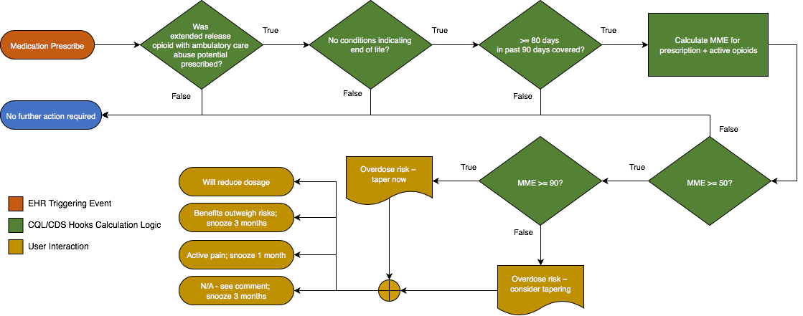

Unattributed Code Systems
http://unstats.un.org/unsd/methods/m49/m49.htm
Copyright and Registered Trademark Uses
IG © 2023+ HL7 International - Clinical Decision Support WG. Package cqframework.cpg-example-opioids#1.0.0 based on FHIR 4.0.1. Generated 2025-03-04 Links: Table of Contents | QA Report | Version History | License (
src
)
hl7.fhir.us.hai: Healthcare Associated Infection Implementation Guide ®© HL7 | CC0 (
src
)
<ValueSet xmlns="http://hl7.org/fhir"> <id value="opioids-with-ambulatory-abuse-potential"/> <text> <status value="generated"/> <div xmlns="http://www.w3.org/1999/xhtml"><p class="res-header-id"><b>Generated Narrative: ValueSet opioids-with-ambulatory-abuse-potential</b></p><a name="opioids-with-ambulatory-abuse-potential"> </a><a name="hcopioids-with-ambulatory-abuse-potential"> </a><a name="opioids-with-ambulatory-abuse-potential-en-US"> </a><p>This value set expansion contains 1,177 concepts.</p><table class="codes"><tr><td style="white-space:nowrap"><b>Code</b></td><td><b>System</b></td><td><b>Display</b></td></tr><tr><td style="white-space:nowrap"><a name="opioids-with-ambulatory-abuse-potential-http://www.nlm.nih.gov/research/umls/rxnorm-564334"> </a> 564334</td><td>http://www.nlm.nih.gov/research/umls/rxnorm</td><td>Alfentanil 0.5 MG/ML [Alfenta]</td></tr><tr><td style="white-space:nowrap"><a name="opioids-with-ambulatory-abuse-potential-http://www.nlm.nih.gov/research/umls/rxnorm-576376"> </a> 576376</td><td>http://www.nlm.nih.gov/research/umls/rxnorm</td><td>Buprenorphine 8 MG [Subutex]</td></tr><tr><td style="white-space:nowrap"><a name="opioids-with-ambulatory-abuse-potential-http://www.nlm.nih.gov/research/umls/rxnorm-566435"> </a> 566435</td><td>http://www.nlm.nih.gov/research/umls/rxnorm</td><td>Buprenorphine 0.3 MG/ML [Buprenex]</td></tr><tr><td style="white-space:nowrap"><a name="opioids-with-ambulatory-abuse-potential-http://www.nlm.nih.gov/research/umls/rxnorm-1010601"> </a> 1010601</td><td>http://www.nlm.nih.gov/research/umls/rxnorm</td><td>Buprenorphine 2 MG / Naloxone 0.5 MG [Suboxone]</td></tr><tr><td style="white-space:nowrap"><a name="opioids-with-ambulatory-abuse-potential-http://www.nlm.nih.gov/research/umls/rxnorm-1010605"> </a> 1010605</td><td>http://www.nlm.nih.gov/research/umls/rxnorm</td><td>Buprenorphine 8 MG / Naloxone 2 MG [Suboxone]</td></tr><tr><td style="white-space:nowrap"><a name="opioids-with-ambulatory-abuse-potential-http://www.nlm.nih.gov/research/umls/rxnorm-1307057"> </a> 1307057</td><td>http://www.nlm.nih.gov/research/umls/rxnorm</td><td>Buprenorphine 4 MG / Naloxone 1 MG [Suboxone]</td></tr><tr><td style="white-space:nowrap"><a name="opioids-with-ambulatory-abuse-potential-http://www.nlm.nih.gov/research/umls/rxnorm-1307062"> </a> 1307062</td><td>http://www.nlm.nih.gov/research/umls/rxnorm</td><td>Buprenorphine 12 MG / Naloxone 3 MG [Suboxone]</td></tr><tr><td style="white-space:nowrap"><a name="opioids-with-ambulatory-abuse-potential-http://www.nlm.nih.gov/research/umls/rxnorm-904872"> </a> 904872</td><td>http://www.nlm.nih.gov/research/umls/rxnorm</td><td>Buprenorphine 0.01 MG/HR [BuTrans]</td></tr><tr><td style="white-space:nowrap"><a name="opioids-with-ambulatory-abuse-potential-http://www.nlm.nih.gov/research/umls/rxnorm-904877"> </a> 904877</td><td>http://www.nlm.nih.gov/research/umls/rxnorm</td><td>Buprenorphine 0.02 MG/HR [BuTrans]</td></tr><tr><td style="white-space:nowrap"><a name="opioids-with-ambulatory-abuse-potential-http://www.nlm.nih.gov/research/umls/rxnorm-904881"> </a> 904881</td><td>http://www.nlm.nih.gov/research/umls/rxnorm</td><td>Buprenorphine 0.005 MG/HR [BuTrans]</td></tr><tr><td style="white-space:nowrap"><a name="opioids-with-ambulatory-abuse-potential-http://www.nlm.nih.gov/research/umls/rxnorm-1432970"> </a> 1432970</td><td>http://www.nlm.nih.gov/research/umls/rxnorm</td><td>Buprenorphine 0.015 MG/HR [BuTrans]</td></tr><tr><td style="white-space:nowrap"><a name="opioids-with-ambulatory-abuse-potential-http://www.nlm.nih.gov/research/umls/rxnorm-1542998"> </a> 1542998</td><td>http://www.nlm.nih.gov/research/umls/rxnorm</td><td>Buprenorphine 0.0075 MG/HR [BuTrans]</td></tr><tr><td style="white-space:nowrap"><a name="opioids-with-ambulatory-abuse-potential-http://www.nlm.nih.gov/research/umls/rxnorm-1864413"> </a> 1864413</td><td>http://www.nlm.nih.gov/research/umls/rxnorm</td><td>Buprenorphine 0.7 MG / Naloxone 0.18 MG [Zubsolv]</td></tr><tr><td style="white-space:nowrap"><a name="opioids-with-ambulatory-abuse-potential-http://www.nlm.nih.gov/research/umls/rxnorm-1431078"> </a> 1431078</td><td>http://www.nlm.nih.gov/research/umls/rxnorm</td><td>Buprenorphine 1.4 MG / Naloxone 0.36 MG [Zubsolv]</td></tr><tr><td style="white-space:nowrap"><a name="opioids-with-ambulatory-abuse-potential-http://www.nlm.nih.gov/research/umls/rxnorm-1431103"> </a> 1431103</td><td>http://www.nlm.nih.gov/research/umls/rxnorm</td><td>Buprenorphine 5.7 MG / Naloxone 1.4 MG [Zubsolv]</td></tr><tr><td style="white-space:nowrap"><a name="opioids-with-ambulatory-abuse-potential-http://www.nlm.nih.gov/research/umls/rxnorm-1597569"> </a> 1597569</td><td>http://www.nlm.nih.gov/research/umls/rxnorm</td><td>Buprenorphine 11.4 MG / Naloxone 2.9 MG [Zubsolv]</td></tr><tr><td style="white-space:nowrap"><a name="opioids-with-ambulatory-abuse-potential-http://www.nlm.nih.gov/research/umls/rxnorm-1597574"> </a> 1597574</td><td>http://www.nlm.nih.gov/research/umls/rxnorm</td><td>Buprenorphine 8.6 MG / Naloxone 2.1 MG [Zubsolv]</td></tr><tr><td style="white-space:nowrap"><a name="opioids-with-ambulatory-abuse-potential-http://www.nlm.nih.gov/research/umls/rxnorm-1666384"> </a> 1666384</td><td>http://www.nlm.nih.gov/research/umls/rxnorm</td><td>Buprenorphine 2.9 MG / Naloxone 0.71 MG [Zubsolv]</td></tr><tr><td style="white-space:nowrap"><a name="opioids-with-ambulatory-abuse-potential-http://www.nlm.nih.gov/research/umls/rxnorm-1488636"> </a> 1488636</td><td>http://www.nlm.nih.gov/research/umls/rxnorm</td><td>Buprenorphine hydrochloride 1.3 MG/ML [Animalgesics]</td></tr><tr><td style="white-space:nowrap"><a name="opioids-with-ambulatory-abuse-potential-http://www.nlm.nih.gov/research/umls/rxnorm-1542392"> </a> 1542392</td><td>http://www.nlm.nih.gov/research/umls/rxnorm</td><td>Buprenorphine 2.1 MG / Naloxone 0.3 MG [Bunavail]</td></tr><tr><td style="white-space:nowrap"><a name="opioids-with-ambulatory-abuse-potential-http://www.nlm.nih.gov/research/umls/rxnorm-1544852"> </a> 1544852</td><td>http://www.nlm.nih.gov/research/umls/rxnorm</td><td>Buprenorphine 4.2 MG / Naloxone 0.7 MG [Bunavail]</td></tr><tr><td style="white-space:nowrap"><a name="opioids-with-ambulatory-abuse-potential-http://www.nlm.nih.gov/research/umls/rxnorm-1544855"> </a> 1544855</td><td>http://www.nlm.nih.gov/research/umls/rxnorm</td><td>Buprenorphine 6.3 MG / Naloxone 1 MG [Bunavail]</td></tr><tr><td style="white-space:nowrap"><a name="opioids-with-ambulatory-abuse-potential-http://www.nlm.nih.gov/research/umls/rxnorm-1594652"> </a> 1594652</td><td>http://www.nlm.nih.gov/research/umls/rxnorm</td><td>Buprenorphine 1.8 MG/ML [Simbadol]</td></tr><tr><td style="white-space:nowrap"><a name="opioids-with-ambulatory-abuse-potential-http://www.nlm.nih.gov/research/umls/rxnorm-1716059"> </a> 1716059</td><td>http://www.nlm.nih.gov/research/umls/rxnorm</td><td>Buprenorphine 0.15 MG [Belbuca]</td></tr><tr><td style="white-space:nowrap"><a name="opioids-with-ambulatory-abuse-potential-http://www.nlm.nih.gov/research/umls/rxnorm-1716066"> </a> 1716066</td><td>http://www.nlm.nih.gov/research/umls/rxnorm</td><td>Buprenorphine 0.3 MG [Belbuca]</td></tr><tr><td style="white-space:nowrap"><a name="opioids-with-ambulatory-abuse-potential-http://www.nlm.nih.gov/research/umls/rxnorm-1716070"> </a> 1716070</td><td>http://www.nlm.nih.gov/research/umls/rxnorm</td><td>Buprenorphine 0.45 MG [Belbuca]</td></tr><tr><td style="white-space:nowrap"><a name="opioids-with-ambulatory-abuse-potential-http://www.nlm.nih.gov/research/umls/rxnorm-1716074"> </a> 1716074</td><td>http://www.nlm.nih.gov/research/umls/rxnorm</td><td>Buprenorphine 0.6 MG [Belbuca]</td></tr><tr><td style="white-space:nowrap"><a name="opioids-with-ambulatory-abuse-potential-http://www.nlm.nih.gov/research/umls/rxnorm-1716078"> </a> 1716078</td><td>http://www.nlm.nih.gov/research/umls/rxnorm</td><td>Buprenorphine 0.075 MG [Belbuca]</td></tr><tr><td style="white-space:nowrap"><a name="opioids-with-ambulatory-abuse-potential-http://www.nlm.nih.gov/research/umls/rxnorm-1716082"> </a> 1716082</td><td>http://www.nlm.nih.gov/research/umls/rxnorm</td><td>Buprenorphine 0.75 MG [Belbuca]</td></tr><tr><td style="white-space:nowrap"><a name="opioids-with-ambulatory-abuse-potential-http://www.nlm.nih.gov/research/umls/rxnorm-1716087"> </a> 1716087</td><td>http://www.nlm.nih.gov/research/umls/rxnorm</td><td>Buprenorphine 0.9 MG [Belbuca]</td></tr><tr><td style="white-space:nowrap"><a name="opioids-with-ambulatory-abuse-potential-http://www.nlm.nih.gov/research/umls/rxnorm-1797652"> </a> 1797652</td><td>http://www.nlm.nih.gov/research/umls/rxnorm</td><td>Buprenorphine 74.2 MG [Probuphine]</td></tr><tr><td style="white-space:nowrap"><a name="opioids-with-ambulatory-abuse-potential-http://www.nlm.nih.gov/research/umls/rxnorm-2106364"> </a> 2106364</td><td>http://www.nlm.nih.gov/research/umls/rxnorm</td><td>Buprenorphine 16 MG / Naloxone 4 MG [Cassipa]</td></tr><tr><td style="white-space:nowrap"><a name="opioids-with-ambulatory-abuse-potential-http://www.nlm.nih.gov/research/umls/rxnorm-1996186"> </a> 1996186</td><td>http://www.nlm.nih.gov/research/umls/rxnorm</td><td>Buprenorphine 200 MG/ML [Sublocade]</td></tr><tr><td style="white-space:nowrap"><a name="opioids-with-ambulatory-abuse-potential-http://www.nlm.nih.gov/research/umls/rxnorm-1302740"> </a> 1302740</td><td>http://www.nlm.nih.gov/research/umls/rxnorm</td><td>Butorphanol 10 MG/ML [Dolorex Solution]</td></tr><tr><td style="white-space:nowrap"><a name="opioids-with-ambulatory-abuse-potential-http://www.nlm.nih.gov/research/umls/rxnorm-1489988"> </a> 1489988</td><td>http://www.nlm.nih.gov/research/umls/rxnorm</td><td>Butorphanol 10 MG/ML [Torbugesic]</td></tr><tr><td style="white-space:nowrap"><a name="opioids-with-ambulatory-abuse-potential-http://www.nlm.nih.gov/research/umls/rxnorm-1809203"> </a> 1809203</td><td>http://www.nlm.nih.gov/research/umls/rxnorm</td><td>Butorphanol Tartrate 2 MG/ML [Torbugesic]</td></tr><tr><td style="white-space:nowrap"><a name="opioids-with-ambulatory-abuse-potential-http://www.nlm.nih.gov/research/umls/rxnorm-1310924"> </a> 1310924</td><td>http://www.nlm.nih.gov/research/umls/rxnorm</td><td>Butorphanol 10 MG/ML [Butorphic]</td></tr><tr><td style="white-space:nowrap"><a name="opioids-with-ambulatory-abuse-potential-http://www.nlm.nih.gov/research/umls/rxnorm-1947135"> </a> 1947135</td><td>http://www.nlm.nih.gov/research/umls/rxnorm</td><td>Butorphanol 10 MG/ML [Torphaject]</td></tr><tr><td style="white-space:nowrap"><a name="opioids-with-ambulatory-abuse-potential-http://www.nlm.nih.gov/research/umls/rxnorm-994276"> </a> 994276</td><td>http://www.nlm.nih.gov/research/umls/rxnorm</td><td>Aspirin 325 MG / butalbital 50 MG / Caffeine 40 MG / Codeine Phosphate 30 MG [Fiorinal with Codeine]</td></tr><tr><td style="white-space:nowrap"><a name="opioids-with-ambulatory-abuse-potential-http://www.nlm.nih.gov/research/umls/rxnorm-1433801"> </a> 1433801</td><td>http://www.nlm.nih.gov/research/umls/rxnorm</td><td>Acetaminophen 300 MG / butalbital 50 MG / Caffeine 40 MG / Codeine Phosphate 30 MG [Fioricet with Codeine]</td></tr><tr><td style="white-space:nowrap"><a name="opioids-with-ambulatory-abuse-potential-http://www.nlm.nih.gov/research/umls/rxnorm-993836"> </a> 993836</td><td>http://www.nlm.nih.gov/research/umls/rxnorm</td><td>Acetaminophen 300 MG / Codeine Phosphate 30 MG [Tylenol with Codeine]</td></tr><tr><td style="white-space:nowrap"><a name="opioids-with-ambulatory-abuse-potential-http://www.nlm.nih.gov/research/umls/rxnorm-993891"> </a> 993891</td><td>http://www.nlm.nih.gov/research/umls/rxnorm</td><td>Acetaminophen 300 MG / Codeine Phosphate 60 MG [Tylenol with Codeine]</td></tr><tr><td style="white-space:nowrap"><a name="opioids-with-ambulatory-abuse-potential-http://www.nlm.nih.gov/research/umls/rxnorm-993765"> </a> 993765</td><td>http://www.nlm.nih.gov/research/umls/rxnorm</td><td>Acetaminophen 24 MG/ML / Codeine Phosphate 2.4 MG/ML [Capital and Codeine]</td></tr><tr><td style="white-space:nowrap"><a name="opioids-with-ambulatory-abuse-potential-http://www.nlm.nih.gov/research/umls/rxnorm-994238"> </a> 994238</td><td>http://www.nlm.nih.gov/research/umls/rxnorm</td><td>Aspirin 325 MG / butalbital 50 MG / Caffeine 40 MG / Codeine Phosphate 30 MG [Ascomp]</td></tr><tr><td style="white-space:nowrap"><a name="opioids-with-ambulatory-abuse-potential-http://www.nlm.nih.gov/research/umls/rxnorm-1234973"> </a> 1234973</td><td>http://www.nlm.nih.gov/research/umls/rxnorm</td><td>Aspirin 356.4 MG / Caffeine 30 MG / dihydrocodeine bitartrate 16 MG [Synalgos-DC]</td></tr><tr><td style="white-space:nowrap"><a name="opioids-with-ambulatory-abuse-potential-http://www.nlm.nih.gov/research/umls/rxnorm-1597136"> </a> 1597136</td><td>http://www.nlm.nih.gov/research/umls/rxnorm</td><td>Acetaminophen 320.5 MG / Caffeine 30 MG / dihydrocodeine bitartrate 16 MG [Trezix]</td></tr><tr><td style="white-space:nowrap"><a name="opioids-with-ambulatory-abuse-potential-http://www.nlm.nih.gov/research/umls/rxnorm-1234987"> </a> 1234987</td><td>http://www.nlm.nih.gov/research/umls/rxnorm</td><td>Acetaminophen 356.4 MG / Caffeine 30 MG / dihydrocodeine bitartrate 16 MG [Trezix]</td></tr><tr><td style="white-space:nowrap"><a name="opioids-with-ambulatory-abuse-potential-http://www.nlm.nih.gov/research/umls/rxnorm-2105925"> </a> 2105925</td><td>http://www.nlm.nih.gov/research/umls/rxnorm</td><td>Acetaminophen 325 MG / Caffeine 30 MG / dihydrocodeine bitartrate 16 MG [Dvorah]</td></tr><tr><td style="white-space:nowrap"><a name="opioids-with-ambulatory-abuse-potential-http://www.nlm.nih.gov/research/umls/rxnorm-1995532"> </a> 1995532</td><td>http://www.nlm.nih.gov/research/umls/rxnorm</td><td>Acetaminophen 325 MG / Caffeine 30 MG / dihydrocodeine bitartrate 16 MG [Panlor Reformulated Jan 2018]</td></tr><tr><td style="white-space:nowrap"><a name="opioids-with-ambulatory-abuse-potential-http://www.nlm.nih.gov/research/umls/rxnorm-1053649"> </a> 1053649</td><td>http://www.nlm.nih.gov/research/umls/rxnorm</td><td>Fentanyl 0.1 MG [Abstral]</td></tr><tr><td style="white-space:nowrap"><a name="opioids-with-ambulatory-abuse-potential-http://www.nlm.nih.gov/research/umls/rxnorm-1053653"> </a> 1053653</td><td>http://www.nlm.nih.gov/research/umls/rxnorm</td><td>Fentanyl 0.2 MG [Abstral]</td></tr><tr><td style="white-space:nowrap"><a name="opioids-with-ambulatory-abuse-potential-http://www.nlm.nih.gov/research/umls/rxnorm-1053656"> </a> 1053656</td><td>http://www.nlm.nih.gov/research/umls/rxnorm</td><td>Fentanyl 0.3 MG [Abstral]</td></tr><tr><td style="white-space:nowrap"><a name="opioids-with-ambulatory-abuse-potential-http://www.nlm.nih.gov/research/umls/rxnorm-1053659"> </a> 1053659</td><td>http://www.nlm.nih.gov/research/umls/rxnorm</td><td>Fentanyl 0.4 MG [Abstral]</td></tr><tr><td style="white-space:nowrap"><a name="opioids-with-ambulatory-abuse-potential-http://www.nlm.nih.gov/research/umls/rxnorm-1053662"> </a> 1053662</td><td>http://www.nlm.nih.gov/research/umls/rxnorm</td><td>Fentanyl 0.6 MG [Abstral]</td></tr><tr><td style="white-space:nowrap"><a name="opioids-with-ambulatory-abuse-potential-http://www.nlm.nih.gov/research/umls/rxnorm-1053665"> </a> 1053665</td><td>http://www.nlm.nih.gov/research/umls/rxnorm</td><td>Fentanyl 0.8 MG [Abstral]</td></tr><tr><td style="white-space:nowrap"><a name="opioids-with-ambulatory-abuse-potential-http://www.nlm.nih.gov/research/umls/rxnorm-1115548"> </a> 1115548</td><td>http://www.nlm.nih.gov/research/umls/rxnorm</td><td>Fentanyl 0.1 MG/ACTUAT [Lazanda]</td></tr><tr><td style="white-space:nowrap"><a name="opioids-with-ambulatory-abuse-potential-http://www.nlm.nih.gov/research/umls/rxnorm-1115578"> </a> 1115578</td><td>http://www.nlm.nih.gov/research/umls/rxnorm</td><td>Fentanyl 0.4 MG/ACTUAT [Lazanda]</td></tr><tr><td style="white-space:nowrap"><a name="opioids-with-ambulatory-abuse-potential-http://www.nlm.nih.gov/research/umls/rxnorm-1729321"> </a> 1729321</td><td>http://www.nlm.nih.gov/research/umls/rxnorm</td><td>Fentanyl 0.3 MG/ACTUAT [Lazanda]</td></tr><tr><td style="white-space:nowrap"><a name="opioids-with-ambulatory-abuse-potential-http://www.nlm.nih.gov/research/umls/rxnorm-574418"> </a> 574418</td><td>http://www.nlm.nih.gov/research/umls/rxnorm</td><td>Fentanyl 0.025 MG/HR [Duragesic]</td></tr><tr><td style="white-space:nowrap"><a name="opioids-with-ambulatory-abuse-potential-http://www.nlm.nih.gov/research/umls/rxnorm-574419"> </a> 574419</td><td>http://www.nlm.nih.gov/research/umls/rxnorm</td><td>Fentanyl 0.05 MG/HR [Duragesic]</td></tr><tr><td style="white-space:nowrap"><a name="opioids-with-ambulatory-abuse-potential-http://www.nlm.nih.gov/research/umls/rxnorm-574420"> </a> 574420</td><td>http://www.nlm.nih.gov/research/umls/rxnorm</td><td>Fentanyl 0.075 MG/HR [Duragesic]</td></tr><tr><td style="white-space:nowrap"><a name="opioids-with-ambulatory-abuse-potential-http://www.nlm.nih.gov/research/umls/rxnorm-574656"> </a> 574656</td><td>http://www.nlm.nih.gov/research/umls/rxnorm</td><td>Fentanyl 0.1 MG/HR [Duragesic]</td></tr><tr><td style="white-space:nowrap"><a name="opioids-with-ambulatory-abuse-potential-http://www.nlm.nih.gov/research/umls/rxnorm-583489"> </a> 583489</td><td>http://www.nlm.nih.gov/research/umls/rxnorm</td><td>Fentanyl 0.012 MG/HR [Duragesic]</td></tr><tr><td style="white-space:nowrap"><a name="opioids-with-ambulatory-abuse-potential-http://www.nlm.nih.gov/research/umls/rxnorm-574353"> </a> 574353</td><td>http://www.nlm.nih.gov/research/umls/rxnorm</td><td>Fentanyl 0.2 MG [Actiq]</td></tr><tr><td style="white-space:nowrap"><a name="opioids-with-ambulatory-abuse-potential-http://www.nlm.nih.gov/research/umls/rxnorm-574354"> </a> 574354</td><td>http://www.nlm.nih.gov/research/umls/rxnorm</td><td>Fentanyl 0.6 MG [Actiq]</td></tr><tr><td style="white-space:nowrap"><a name="opioids-with-ambulatory-abuse-potential-http://www.nlm.nih.gov/research/umls/rxnorm-574355"> </a> 574355</td><td>http://www.nlm.nih.gov/research/umls/rxnorm</td><td>Fentanyl 0.8 MG [Actiq]</td></tr><tr><td style="white-space:nowrap"><a name="opioids-with-ambulatory-abuse-potential-http://www.nlm.nih.gov/research/umls/rxnorm-574356"> </a> 574356</td><td>http://www.nlm.nih.gov/research/umls/rxnorm</td><td>Fentanyl 1.2 MG [Actiq]</td></tr><tr><td style="white-space:nowrap"><a name="opioids-with-ambulatory-abuse-potential-http://www.nlm.nih.gov/research/umls/rxnorm-574357"> </a> 574357</td><td>http://www.nlm.nih.gov/research/umls/rxnorm</td><td>Fentanyl 1.6 MG [Actiq]</td></tr><tr><td style="white-space:nowrap"><a name="opioids-with-ambulatory-abuse-potential-http://www.nlm.nih.gov/research/umls/rxnorm-574688"> </a> 574688</td><td>http://www.nlm.nih.gov/research/umls/rxnorm</td><td>Fentanyl 0.4 MG [Actiq]</td></tr><tr><td style="white-space:nowrap"><a name="opioids-with-ambulatory-abuse-potential-http://www.nlm.nih.gov/research/umls/rxnorm-574121"> </a> 574121</td><td>http://www.nlm.nih.gov/research/umls/rxnorm</td><td>Fentanyl 0.05 MG/ML [Sublimaze]</td></tr><tr><td style="white-space:nowrap"><a name="opioids-with-ambulatory-abuse-potential-http://www.nlm.nih.gov/research/umls/rxnorm-668620"> </a> 668620</td><td>http://www.nlm.nih.gov/research/umls/rxnorm</td><td>Fentanyl 0.1 MG [Fentora]</td></tr><tr><td style="white-space:nowrap"><a name="opioids-with-ambulatory-abuse-potential-http://www.nlm.nih.gov/research/umls/rxnorm-668623"> </a> 668623</td><td>http://www.nlm.nih.gov/research/umls/rxnorm</td><td>Fentanyl 0.2 MG [Fentora]</td></tr><tr><td style="white-space:nowrap"><a name="opioids-with-ambulatory-abuse-potential-http://www.nlm.nih.gov/research/umls/rxnorm-668625"> </a> 668625</td><td>http://www.nlm.nih.gov/research/umls/rxnorm</td><td>Fentanyl 0.4 MG [Fentora]</td></tr><tr><td style="white-space:nowrap"><a name="opioids-with-ambulatory-abuse-potential-http://www.nlm.nih.gov/research/umls/rxnorm-668627"> </a> 668627</td><td>http://www.nlm.nih.gov/research/umls/rxnorm</td><td>Fentanyl 0.6 MG [Fentora]</td></tr><tr><td style="white-space:nowrap"><a name="opioids-with-ambulatory-abuse-potential-http://www.nlm.nih.gov/research/umls/rxnorm-668629"> </a> 668629</td><td>http://www.nlm.nih.gov/research/umls/rxnorm</td><td>Fentanyl 0.8 MG [Fentora]</td></tr><tr><td style="white-space:nowrap"><a name="opioids-with-ambulatory-abuse-potential-http://www.nlm.nih.gov/research/umls/rxnorm-1992290"> </a> 1992290</td><td>http://www.nlm.nih.gov/research/umls/rxnorm</td><td>Fentanyl 0.04 MG/ACTUAT [Ionsys]</td></tr><tr><td style="white-space:nowrap"><a name="opioids-with-ambulatory-abuse-potential-http://www.nlm.nih.gov/research/umls/rxnorm-1237052"> </a> 1237052</td><td>http://www.nlm.nih.gov/research/umls/rxnorm</td><td>Fentanyl 0.1 MG/ACTUAT [Subsys]</td></tr><tr><td style="white-space:nowrap"><a name="opioids-with-ambulatory-abuse-potential-http://www.nlm.nih.gov/research/umls/rxnorm-1237058"> </a> 1237058</td><td>http://www.nlm.nih.gov/research/umls/rxnorm</td><td>Fentanyl 0.2 MG/ACTUAT [Subsys]</td></tr><tr><td style="white-space:nowrap"><a name="opioids-with-ambulatory-abuse-potential-http://www.nlm.nih.gov/research/umls/rxnorm-1237061"> </a> 1237061</td><td>http://www.nlm.nih.gov/research/umls/rxnorm</td><td>Fentanyl 0.4 MG/ACTUAT [Subsys]</td></tr><tr><td style="white-space:nowrap"><a name="opioids-with-ambulatory-abuse-potential-http://www.nlm.nih.gov/research/umls/rxnorm-1237065"> </a> 1237065</td><td>http://www.nlm.nih.gov/research/umls/rxnorm</td><td>Fentanyl 0.6 MG/ACTUAT [Subsys]</td></tr><tr><td style="white-space:nowrap"><a name="opioids-with-ambulatory-abuse-potential-http://www.nlm.nih.gov/research/umls/rxnorm-1237069"> </a> 1237069</td><td>http://www.nlm.nih.gov/research/umls/rxnorm</td><td>Fentanyl 0.8 MG/ACTUAT [Subsys]</td></tr><tr><td style="white-space:nowrap"><a name="opioids-with-ambulatory-abuse-potential-http://www.nlm.nih.gov/research/umls/rxnorm-857103"> </a> 857103</td><td>http://www.nlm.nih.gov/research/umls/rxnorm</td><td>Acetaminophen 33.3 MG/ML / Hydrocodone Bitartrate 0.5 MG/ML [Lortab]</td></tr><tr><td style="white-space:nowrap"><a name="opioids-with-ambulatory-abuse-potential-http://www.nlm.nih.gov/research/umls/rxnorm-857112"> </a> 857112</td><td>http://www.nlm.nih.gov/research/umls/rxnorm</td><td>Acetaminophen 500 MG / Hydrocodone Bitartrate 2.5 MG [Lortab]</td></tr><tr><td style="white-space:nowrap"><a name="opioids-with-ambulatory-abuse-potential-http://www.nlm.nih.gov/research/umls/rxnorm-857119"> </a> 857119</td><td>http://www.nlm.nih.gov/research/umls/rxnorm</td><td>Acetaminophen 500 MG / Hydrocodone Bitartrate 7.5 MG [Lortab]</td></tr><tr><td style="white-space:nowrap"><a name="opioids-with-ambulatory-abuse-potential-http://www.nlm.nih.gov/research/umls/rxnorm-1442444"> </a> 1442444</td><td>http://www.nlm.nih.gov/research/umls/rxnorm</td><td>Acetaminophen 20 MG/ML / Hydrocodone Bitartrate 0.667 MG/ML [Lortab]</td></tr><tr><td style="white-space:nowrap"><a name="opioids-with-ambulatory-abuse-potential-http://www.nlm.nih.gov/research/umls/rxnorm-1495471"> </a> 1495471</td><td>http://www.nlm.nih.gov/research/umls/rxnorm</td><td>Acetaminophen 325 MG / Hydrocodone Bitartrate 10 MG [Lortab]</td></tr><tr><td style="white-space:nowrap"><a name="opioids-with-ambulatory-abuse-potential-http://www.nlm.nih.gov/research/umls/rxnorm-1495473"> </a> 1495473</td><td>http://www.nlm.nih.gov/research/umls/rxnorm</td><td>Acetaminophen 325 MG / Hydrocodone Bitartrate 5 MG [Lortab]</td></tr><tr><td style="white-space:nowrap"><a name="opioids-with-ambulatory-abuse-potential-http://www.nlm.nih.gov/research/umls/rxnorm-1495475"> </a> 1495475</td><td>http://www.nlm.nih.gov/research/umls/rxnorm</td><td>Acetaminophen 325 MG / Hydrocodone Bitartrate 7.5 MG [Lortab]</td></tr><tr><td style="white-space:nowrap"><a name="opioids-with-ambulatory-abuse-potential-http://www.nlm.nih.gov/research/umls/rxnorm-1310197"> </a> 1310197</td><td>http://www.nlm.nih.gov/research/umls/rxnorm</td><td>Acetaminophen 300 MG / Hydrocodone Bitartrate 5 MG [Vicodin]</td></tr><tr><td style="white-space:nowrap"><a name="opioids-with-ambulatory-abuse-potential-http://www.nlm.nih.gov/research/umls/rxnorm-1310208"> </a> 1310208</td><td>http://www.nlm.nih.gov/research/umls/rxnorm</td><td>Acetaminophen 300 MG / Hydrocodone Bitartrate 7.5 MG [Vicodin]</td></tr><tr><td style="white-space:nowrap"><a name="opioids-with-ambulatory-abuse-potential-http://www.nlm.nih.gov/research/umls/rxnorm-1310268"> </a> 1310268</td><td>http://www.nlm.nih.gov/research/umls/rxnorm</td><td>Acetaminophen 300 MG / Hydrocodone Bitartrate 10 MG [Vicodin]</td></tr><tr><td style="white-space:nowrap"><a name="opioids-with-ambulatory-abuse-potential-http://www.nlm.nih.gov/research/umls/rxnorm-857000"> </a> 857000</td><td>http://www.nlm.nih.gov/research/umls/rxnorm</td><td>Acetaminophen 325 MG / Hydrocodone Bitartrate 10 MG [Norco]</td></tr><tr><td style="white-space:nowrap"><a name="opioids-with-ambulatory-abuse-potential-http://www.nlm.nih.gov/research/umls/rxnorm-857003"> </a> 857003</td><td>http://www.nlm.nih.gov/research/umls/rxnorm</td><td>Acetaminophen 325 MG / Hydrocodone Bitartrate 5 MG [Norco]</td></tr><tr><td style="white-space:nowrap"><a name="opioids-with-ambulatory-abuse-potential-http://www.nlm.nih.gov/research/umls/rxnorm-857006"> </a> 857006</td><td>http://www.nlm.nih.gov/research/umls/rxnorm</td><td>Acetaminophen 325 MG / Hydrocodone Bitartrate 7.5 MG [Norco]</td></tr><tr><td style="white-space:nowrap"><a name="opioids-with-ambulatory-abuse-potential-http://www.nlm.nih.gov/research/umls/rxnorm-857135"> </a> 857135</td><td>http://www.nlm.nih.gov/research/umls/rxnorm</td><td>Acetaminophen 400 MG / Hydrocodone Bitartrate 7.5 MG [Zydone]</td></tr><tr><td style="white-space:nowrap"><a name="opioids-with-ambulatory-abuse-potential-http://www.nlm.nih.gov/research/umls/rxnorm-858837"> </a> 858837</td><td>http://www.nlm.nih.gov/research/umls/rxnorm</td><td>Hydrocodone Bitartrate 7.5 MG / Ibuprofen 200 MG [Vicoprofen]</td></tr><tr><td style="white-space:nowrap"><a name="opioids-with-ambulatory-abuse-potential-http://www.nlm.nih.gov/research/umls/rxnorm-1492670"> </a> 1492670</td><td>http://www.nlm.nih.gov/research/umls/rxnorm</td><td>Acetaminophen 325 MG / Hydrocodone Bitartrate 10 MG [Lorcet]</td></tr><tr><td style="white-space:nowrap"><a name="opioids-with-ambulatory-abuse-potential-http://www.nlm.nih.gov/research/umls/rxnorm-1492672"> </a> 1492672</td><td>http://www.nlm.nih.gov/research/umls/rxnorm</td><td>Acetaminophen 325 MG / Hydrocodone Bitartrate 5 MG [Lorcet]</td></tr><tr><td style="white-space:nowrap"><a name="opioids-with-ambulatory-abuse-potential-http://www.nlm.nih.gov/research/umls/rxnorm-1492674"> </a> 1492674</td><td>http://www.nlm.nih.gov/research/umls/rxnorm</td><td>Acetaminophen 325 MG / Hydrocodone Bitartrate 7.5 MG [Lorcet]</td></tr><tr><td style="white-space:nowrap"><a name="opioids-with-ambulatory-abuse-potential-http://www.nlm.nih.gov/research/umls/rxnorm-1147393"> </a> 1147393</td><td>http://www.nlm.nih.gov/research/umls/rxnorm</td><td>Acetaminophen 325 MG / Hydrocodone Bitartrate 10 MG [Xodol]</td></tr><tr><td style="white-space:nowrap"><a name="opioids-with-ambulatory-abuse-potential-http://www.nlm.nih.gov/research/umls/rxnorm-856941"> </a> 856941</td><td>http://www.nlm.nih.gov/research/umls/rxnorm</td><td>Acetaminophen 21.7 MG/ML / Hydrocodone Bitartrate 0.5 MG/ML [Hycet]</td></tr><tr><td style="white-space:nowrap"><a name="opioids-with-ambulatory-abuse-potential-http://www.nlm.nih.gov/research/umls/rxnorm-856982"> </a> 856982</td><td>http://www.nlm.nih.gov/research/umls/rxnorm</td><td>Acetaminophen 300 MG / Hydrocodone Bitartrate 10 MG [Xodol]</td></tr><tr><td style="white-space:nowrap"><a name="opioids-with-ambulatory-abuse-potential-http://www.nlm.nih.gov/research/umls/rxnorm-856989"> </a> 856989</td><td>http://www.nlm.nih.gov/research/umls/rxnorm</td><td>Acetaminophen 300 MG / Hydrocodone Bitartrate 5 MG [Xodol]</td></tr><tr><td style="white-space:nowrap"><a name="opioids-with-ambulatory-abuse-potential-http://www.nlm.nih.gov/research/umls/rxnorm-856994"> </a> 856994</td><td>http://www.nlm.nih.gov/research/umls/rxnorm</td><td>Acetaminophen 300 MG / Hydrocodone Bitartrate 7.5 MG [Xodol]</td></tr><tr><td style="white-space:nowrap"><a name="opioids-with-ambulatory-abuse-potential-http://www.nlm.nih.gov/research/umls/rxnorm-858771"> </a> 858771</td><td>http://www.nlm.nih.gov/research/umls/rxnorm</td><td>Hydrocodone Bitartrate 2.5 MG / Ibuprofen 200 MG [Reprexain]</td></tr><tr><td style="white-space:nowrap"><a name="opioids-with-ambulatory-abuse-potential-http://www.nlm.nih.gov/research/umls/rxnorm-858783"> </a> 858783</td><td>http://www.nlm.nih.gov/research/umls/rxnorm</td><td>Hydrocodone Bitartrate 5 MG / Ibuprofen 200 MG [Reprexain]</td></tr><tr><td style="white-space:nowrap"><a name="opioids-with-ambulatory-abuse-potential-http://www.nlm.nih.gov/research/umls/rxnorm-859330"> </a> 859330</td><td>http://www.nlm.nih.gov/research/umls/rxnorm</td><td>Hydrocodone Bitartrate 10 MG / Ibuprofen 200 MG [Reprexain]</td></tr><tr><td style="white-space:nowrap"><a name="opioids-with-ambulatory-abuse-potential-http://www.nlm.nih.gov/research/umls/rxnorm-856945"> </a> 856945</td><td>http://www.nlm.nih.gov/research/umls/rxnorm</td><td>Acetaminophen 21.7 MG/ML / Hydrocodone Bitartrate 0.67 MG/ML [Zamicet]</td></tr><tr><td style="white-space:nowrap"><a name="opioids-with-ambulatory-abuse-potential-http://www.nlm.nih.gov/research/umls/rxnorm-858779"> </a> 858779</td><td>http://www.nlm.nih.gov/research/umls/rxnorm</td><td>Hydrocodone Bitartrate 5 MG / Ibuprofen 200 MG [Ibudone]</td></tr><tr><td style="white-space:nowrap"><a name="opioids-with-ambulatory-abuse-potential-http://www.nlm.nih.gov/research/umls/rxnorm-859316"> </a> 859316</td><td>http://www.nlm.nih.gov/research/umls/rxnorm</td><td>Hydrocodone Bitartrate 10 MG / Ibuprofen 200 MG [Ibudone]</td></tr><tr><td style="white-space:nowrap"><a name="opioids-with-ambulatory-abuse-potential-http://www.nlm.nih.gov/research/umls/rxnorm-1442524"> </a> 1442524</td><td>http://www.nlm.nih.gov/research/umls/rxnorm</td><td>Hydrocodone Bitartrate 10 MG [Zohydro]</td></tr><tr><td style="white-space:nowrap"><a name="opioids-with-ambulatory-abuse-potential-http://www.nlm.nih.gov/research/umls/rxnorm-1442531"> </a> 1442531</td><td>http://www.nlm.nih.gov/research/umls/rxnorm</td><td>Hydrocodone Bitartrate 15 MG [Zohydro]</td></tr><tr><td style="white-space:nowrap"><a name="opioids-with-ambulatory-abuse-potential-http://www.nlm.nih.gov/research/umls/rxnorm-1442535"> </a> 1442535</td><td>http://www.nlm.nih.gov/research/umls/rxnorm</td><td>Hydrocodone Bitartrate 20 MG [Zohydro]</td></tr><tr><td style="white-space:nowrap"><a name="opioids-with-ambulatory-abuse-potential-http://www.nlm.nih.gov/research/umls/rxnorm-1442539"> </a> 1442539</td><td>http://www.nlm.nih.gov/research/umls/rxnorm</td><td>Hydrocodone Bitartrate 30 MG [Zohydro]</td></tr><tr><td style="white-space:nowrap"><a name="opioids-with-ambulatory-abuse-potential-http://www.nlm.nih.gov/research/umls/rxnorm-1442543"> </a> 1442543</td><td>http://www.nlm.nih.gov/research/umls/rxnorm</td><td>Hydrocodone Bitartrate 40 MG [Zohydro]</td></tr><tr><td style="white-space:nowrap"><a name="opioids-with-ambulatory-abuse-potential-http://www.nlm.nih.gov/research/umls/rxnorm-1442547"> </a> 1442547</td><td>http://www.nlm.nih.gov/research/umls/rxnorm</td><td>Hydrocodone Bitartrate 50 MG [Zohydro]</td></tr><tr><td style="white-space:nowrap"><a name="opioids-with-ambulatory-abuse-potential-http://www.nlm.nih.gov/research/umls/rxnorm-1542977"> </a> 1542977</td><td>http://www.nlm.nih.gov/research/umls/rxnorm</td><td>Acetaminophen 325 MG / Hydrocodone Bitartrate 2.5 MG [Verdrocet]</td></tr><tr><td style="white-space:nowrap"><a name="opioids-with-ambulatory-abuse-potential-http://www.nlm.nih.gov/research/umls/rxnorm-1542984"> </a> 1542984</td><td>http://www.nlm.nih.gov/research/umls/rxnorm</td><td>Hydrocodone Bitartrate 10 MG / Ibuprofen 200 MG [Xylon]</td></tr><tr><td style="white-space:nowrap"><a name="opioids-with-ambulatory-abuse-potential-http://www.nlm.nih.gov/research/umls/rxnorm-1860207"> </a> 1860207</td><td>http://www.nlm.nih.gov/research/umls/rxnorm</td><td>Hydrocodone Bitartrate 100 MG [Hysingla]</td></tr><tr><td style="white-space:nowrap"><a name="opioids-with-ambulatory-abuse-potential-http://www.nlm.nih.gov/research/umls/rxnorm-1860211"> </a> 1860211</td><td>http://www.nlm.nih.gov/research/umls/rxnorm</td><td>Hydrocodone Bitartrate 120 MG [Hysingla]</td></tr><tr><td style="white-space:nowrap"><a name="opioids-with-ambulatory-abuse-potential-http://www.nlm.nih.gov/research/umls/rxnorm-1860214"> </a> 1860214</td><td>http://www.nlm.nih.gov/research/umls/rxnorm</td><td>Hydrocodone Bitartrate 30 MG [Hysingla]</td></tr><tr><td style="white-space:nowrap"><a name="opioids-with-ambulatory-abuse-potential-http://www.nlm.nih.gov/research/umls/rxnorm-1860217"> </a> 1860217</td><td>http://www.nlm.nih.gov/research/umls/rxnorm</td><td>Hydrocodone Bitartrate 20 MG [Hysingla]</td></tr><tr><td style="white-space:nowrap"><a name="opioids-with-ambulatory-abuse-potential-http://www.nlm.nih.gov/research/umls/rxnorm-1860220"> </a> 1860220</td><td>http://www.nlm.nih.gov/research/umls/rxnorm</td><td>Hydrocodone Bitartrate 40 MG [Hysingla]</td></tr><tr><td style="white-space:nowrap"><a name="opioids-with-ambulatory-abuse-potential-http://www.nlm.nih.gov/research/umls/rxnorm-1860224"> </a> 1860224</td><td>http://www.nlm.nih.gov/research/umls/rxnorm</td><td>Hydrocodone Bitartrate 60 MG [Hysingla]</td></tr><tr><td style="white-space:nowrap"><a name="opioids-with-ambulatory-abuse-potential-http://www.nlm.nih.gov/research/umls/rxnorm-1860228"> </a> 1860228</td><td>http://www.nlm.nih.gov/research/umls/rxnorm</td><td>Hydrocodone Bitartrate 80 MG [Hysingla]</td></tr><tr><td style="white-space:nowrap"><a name="opioids-with-ambulatory-abuse-potential-http://www.nlm.nih.gov/research/umls/rxnorm-897654"> </a> 897654</td><td>http://www.nlm.nih.gov/research/umls/rxnorm</td><td>Hydromorphone Hydrochloride 1 MG/ML [Dilaudid]</td></tr><tr><td style="white-space:nowrap"><a name="opioids-with-ambulatory-abuse-potential-http://www.nlm.nih.gov/research/umls/rxnorm-897664"> </a> 897664</td><td>http://www.nlm.nih.gov/research/umls/rxnorm</td><td>Hydromorphone Hydrochloride 10 MG/ML [Dilaudid]</td></tr><tr><td style="white-space:nowrap"><a name="opioids-with-ambulatory-abuse-potential-http://www.nlm.nih.gov/research/umls/rxnorm-897697"> </a> 897697</td><td>http://www.nlm.nih.gov/research/umls/rxnorm</td><td>Hydromorphone Hydrochloride 2 MG [Dilaudid]</td></tr><tr><td style="white-space:nowrap"><a name="opioids-with-ambulatory-abuse-potential-http://www.nlm.nih.gov/research/umls/rxnorm-897703"> </a> 897703</td><td>http://www.nlm.nih.gov/research/umls/rxnorm</td><td>Hydromorphone Hydrochloride 4 MG [Dilaudid]</td></tr><tr><td style="white-space:nowrap"><a name="opioids-with-ambulatory-abuse-potential-http://www.nlm.nih.gov/research/umls/rxnorm-897711"> </a> 897711</td><td>http://www.nlm.nih.gov/research/umls/rxnorm</td><td>Hydromorphone Hydrochloride 8 MG [Dilaudid]</td></tr><tr><td style="white-space:nowrap"><a name="opioids-with-ambulatory-abuse-potential-http://www.nlm.nih.gov/research/umls/rxnorm-897746"> </a> 897746</td><td>http://www.nlm.nih.gov/research/umls/rxnorm</td><td>Hydromorphone Hydrochloride 2 MG/ML [Dilaudid]</td></tr><tr><td style="white-space:nowrap"><a name="opioids-with-ambulatory-abuse-potential-http://www.nlm.nih.gov/research/umls/rxnorm-897754"> </a> 897754</td><td>http://www.nlm.nih.gov/research/umls/rxnorm</td><td>Hydromorphone Hydrochloride 4 MG/ML [Dilaudid]</td></tr><tr><td style="white-space:nowrap"><a name="opioids-with-ambulatory-abuse-potential-http://www.nlm.nih.gov/research/umls/rxnorm-2277369"> </a> 2277369</td><td>http://www.nlm.nih.gov/research/umls/rxnorm</td><td>Hydromorphone Hydrochloride 0.2 MG/ML [Dilaudid]</td></tr><tr><td style="white-space:nowrap"><a name="opioids-with-ambulatory-abuse-potential-http://www.nlm.nih.gov/research/umls/rxnorm-902731"> </a> 902731</td><td>http://www.nlm.nih.gov/research/umls/rxnorm</td><td>Hydromorphone Hydrochloride 12 MG [Exalgo]</td></tr><tr><td style="white-space:nowrap"><a name="opioids-with-ambulatory-abuse-potential-http://www.nlm.nih.gov/research/umls/rxnorm-902737"> </a> 902737</td><td>http://www.nlm.nih.gov/research/umls/rxnorm</td><td>Hydromorphone Hydrochloride 16 MG [Exalgo]</td></tr><tr><td style="white-space:nowrap"><a name="opioids-with-ambulatory-abuse-potential-http://www.nlm.nih.gov/research/umls/rxnorm-902742"> </a> 902742</td><td>http://www.nlm.nih.gov/research/umls/rxnorm</td><td>Hydromorphone Hydrochloride 8 MG [Exalgo]</td></tr><tr><td style="white-space:nowrap"><a name="opioids-with-ambulatory-abuse-potential-http://www.nlm.nih.gov/research/umls/rxnorm-1306899"> </a> 1306899</td><td>http://www.nlm.nih.gov/research/umls/rxnorm</td><td>Hydromorphone Hydrochloride 32 MG [Exalgo]</td></tr><tr><td style="white-space:nowrap"><a name="opioids-with-ambulatory-abuse-potential-http://www.nlm.nih.gov/research/umls/rxnorm-861515"> </a> 861515</td><td>http://www.nlm.nih.gov/research/umls/rxnorm</td><td>Meperidine Hydrochloride 100 MG [Demerol]</td></tr><tr><td style="white-space:nowrap"><a name="opioids-with-ambulatory-abuse-potential-http://www.nlm.nih.gov/research/umls/rxnorm-861518"> </a> 861518</td><td>http://www.nlm.nih.gov/research/umls/rxnorm</td><td>Meperidine Hydrochloride 100 MG/ML [Demerol]</td></tr><tr><td style="white-space:nowrap"><a name="opioids-with-ambulatory-abuse-potential-http://www.nlm.nih.gov/research/umls/rxnorm-861521"> </a> 861521</td><td>http://www.nlm.nih.gov/research/umls/rxnorm</td><td>Meperidine Hydrochloride 50 MG/ML [Demerol]</td></tr><tr><td style="white-space:nowrap"><a name="opioids-with-ambulatory-abuse-potential-http://www.nlm.nih.gov/research/umls/rxnorm-861524"> </a> 861524</td><td>http://www.nlm.nih.gov/research/umls/rxnorm</td><td>Meperidine Hydrochloride 50 MG [Demerol]</td></tr><tr><td style="white-space:nowrap"><a name="opioids-with-ambulatory-abuse-potential-http://www.nlm.nih.gov/research/umls/rxnorm-861530"> </a> 861530</td><td>http://www.nlm.nih.gov/research/umls/rxnorm</td><td>Meperidine Hydrochloride 25 MG/ML [Demerol]</td></tr><tr><td style="white-space:nowrap"><a name="opioids-with-ambulatory-abuse-potential-http://www.nlm.nih.gov/research/umls/rxnorm-861535"> </a> 861535</td><td>http://www.nlm.nih.gov/research/umls/rxnorm</td><td>Meperidine Hydrochloride 75 MG/ML [Demerol]</td></tr><tr><td style="white-space:nowrap"><a name="opioids-with-ambulatory-abuse-potential-http://www.nlm.nih.gov/research/umls/rxnorm-864736"> </a> 864736</td><td>http://www.nlm.nih.gov/research/umls/rxnorm</td><td>Methadone Hydrochloride 5 MG [Methadose]</td></tr><tr><td style="white-space:nowrap"><a name="opioids-with-ambulatory-abuse-potential-http://www.nlm.nih.gov/research/umls/rxnorm-1804028"> </a> 1804028</td><td>http://www.nlm.nih.gov/research/umls/rxnorm</td><td>Methadone Hydrochloride 10 MG/ML [Methadose]</td></tr><tr><td style="white-space:nowrap"><a name="opioids-with-ambulatory-abuse-potential-http://www.nlm.nih.gov/research/umls/rxnorm-864711"> </a> 864711</td><td>http://www.nlm.nih.gov/research/umls/rxnorm</td><td>Methadone Hydrochloride 10 MG [Methadose]</td></tr><tr><td style="white-space:nowrap"><a name="opioids-with-ambulatory-abuse-potential-http://www.nlm.nih.gov/research/umls/rxnorm-1869551"> </a> 1869551</td><td>http://www.nlm.nih.gov/research/umls/rxnorm</td><td>Methadone Hydrochloride 40 MG [Methadose]</td></tr><tr><td style="white-space:nowrap"><a name="opioids-with-ambulatory-abuse-potential-http://www.nlm.nih.gov/research/umls/rxnorm-864707"> </a> 864707</td><td>http://www.nlm.nih.gov/research/umls/rxnorm</td><td>Methadone Hydrochloride 10 MG [Dolophine]</td></tr><tr><td style="white-space:nowrap"><a name="opioids-with-ambulatory-abuse-potential-http://www.nlm.nih.gov/research/umls/rxnorm-864719"> </a> 864719</td><td>http://www.nlm.nih.gov/research/umls/rxnorm</td><td>Methadone Hydrochloride 5 MG [Dolophine]</td></tr><tr><td style="white-space:nowrap"><a name="opioids-with-ambulatory-abuse-potential-http://www.nlm.nih.gov/research/umls/rxnorm-1990741"> </a> 1990741</td><td>http://www.nlm.nih.gov/research/umls/rxnorm</td><td>Methadone Hydrochloride 40 MG [Diskets]</td></tr><tr><td style="white-space:nowrap"><a name="opioids-with-ambulatory-abuse-potential-http://www.nlm.nih.gov/research/umls/rxnorm-2055304"> </a> 2055304</td><td>http://www.nlm.nih.gov/research/umls/rxnorm</td><td>Morphine Sulfate 10 MG/ML [Mitigo]</td></tr><tr><td style="white-space:nowrap"><a name="opioids-with-ambulatory-abuse-potential-http://www.nlm.nih.gov/research/umls/rxnorm-2055310"> </a> 2055310</td><td>http://www.nlm.nih.gov/research/umls/rxnorm</td><td>Morphine Sulfate 25 MG/ML [Mitigo]</td></tr><tr><td style="white-space:nowrap"><a name="opioids-with-ambulatory-abuse-potential-http://www.nlm.nih.gov/research/umls/rxnorm-892471"> </a> 892471</td><td>http://www.nlm.nih.gov/research/umls/rxnorm</td><td>Morphine Sulfate 0.5 MG/ML [Duramorph]</td></tr><tr><td style="white-space:nowrap"><a name="opioids-with-ambulatory-abuse-potential-http://www.nlm.nih.gov/research/umls/rxnorm-892488"> </a> 892488</td><td>http://www.nlm.nih.gov/research/umls/rxnorm</td><td>Morphine Sulfate 1 MG/ML [Duramorph]</td></tr><tr><td style="white-space:nowrap"><a name="opioids-with-ambulatory-abuse-potential-http://www.nlm.nih.gov/research/umls/rxnorm-892495"> </a> 892495</td><td>http://www.nlm.nih.gov/research/umls/rxnorm</td><td>Morphine Sulfate 10 MG [Kadian]</td></tr><tr><td style="white-space:nowrap"><a name="opioids-with-ambulatory-abuse-potential-http://www.nlm.nih.gov/research/umls/rxnorm-892532"> </a> 892532</td><td>http://www.nlm.nih.gov/research/umls/rxnorm</td><td>Morphine Sulfate 10 MG/ML [Infumorph]</td></tr><tr><td style="white-space:nowrap"><a name="opioids-with-ambulatory-abuse-potential-http://www.nlm.nih.gov/research/umls/rxnorm-892555"> </a> 892555</td><td>http://www.nlm.nih.gov/research/umls/rxnorm</td><td>Morphine Sulfate 100 MG [Kadian]</td></tr><tr><td style="white-space:nowrap"><a name="opioids-with-ambulatory-abuse-potential-http://www.nlm.nih.gov/research/umls/rxnorm-892559"> </a> 892559</td><td>http://www.nlm.nih.gov/research/umls/rxnorm</td><td>Morphine Sulfate 100 MG [MS Contin]</td></tr><tr><td style="white-space:nowrap"><a name="opioids-with-ambulatory-abuse-potential-http://www.nlm.nih.gov/research/umls/rxnorm-892573"> </a> 892573</td><td>http://www.nlm.nih.gov/research/umls/rxnorm</td><td>Morphine Sulfate 15 MG [MS Contin]</td></tr><tr><td style="white-space:nowrap"><a name="opioids-with-ambulatory-abuse-potential-http://www.nlm.nih.gov/research/umls/rxnorm-892597"> </a> 892597</td><td>http://www.nlm.nih.gov/research/umls/rxnorm</td><td>Morphine Sulfate 20 MG [Kadian]</td></tr><tr><td style="white-space:nowrap"><a name="opioids-with-ambulatory-abuse-potential-http://www.nlm.nih.gov/research/umls/rxnorm-892644"> </a> 892644</td><td>http://www.nlm.nih.gov/research/umls/rxnorm</td><td>Morphine Sulfate 200 MG [Kadian]</td></tr><tr><td style="white-space:nowrap"><a name="opioids-with-ambulatory-abuse-potential-http://www.nlm.nih.gov/research/umls/rxnorm-892647"> </a> 892647</td><td>http://www.nlm.nih.gov/research/umls/rxnorm</td><td>Morphine Sulfate 200 MG [MS Contin]</td></tr><tr><td style="white-space:nowrap"><a name="opioids-with-ambulatory-abuse-potential-http://www.nlm.nih.gov/research/umls/rxnorm-892651"> </a> 892651</td><td>http://www.nlm.nih.gov/research/umls/rxnorm</td><td>Morphine Sulfate 25 MG/ML [Infumorph]</td></tr><tr><td style="white-space:nowrap"><a name="opioids-with-ambulatory-abuse-potential-http://www.nlm.nih.gov/research/umls/rxnorm-892657"> </a> 892657</td><td>http://www.nlm.nih.gov/research/umls/rxnorm</td><td>Morphine Sulfate 30 MG [Kadian]</td></tr><tr><td style="white-space:nowrap"><a name="opioids-with-ambulatory-abuse-potential-http://www.nlm.nih.gov/research/umls/rxnorm-892659"> </a> 892659</td><td>http://www.nlm.nih.gov/research/umls/rxnorm</td><td>Morphine Sulfate 30 MG [MS Contin]</td></tr><tr><td style="white-space:nowrap"><a name="opioids-with-ambulatory-abuse-potential-http://www.nlm.nih.gov/research/umls/rxnorm-894802"> </a> 894802</td><td>http://www.nlm.nih.gov/research/umls/rxnorm</td><td>Morphine Sulfate 50 MG [Kadian]</td></tr><tr><td style="white-space:nowrap"><a name="opioids-with-ambulatory-abuse-potential-http://www.nlm.nih.gov/research/umls/rxnorm-894804"> </a> 894804</td><td>http://www.nlm.nih.gov/research/umls/rxnorm</td><td>Morphine Sulfate 60 MG [Kadian]</td></tr><tr><td style="white-space:nowrap"><a name="opioids-with-ambulatory-abuse-potential-http://www.nlm.nih.gov/research/umls/rxnorm-894812"> </a> 894812</td><td>http://www.nlm.nih.gov/research/umls/rxnorm</td><td>Morphine Sulfate 60 MG [MS Contin]</td></tr><tr><td style="white-space:nowrap"><a name="opioids-with-ambulatory-abuse-potential-http://www.nlm.nih.gov/research/umls/rxnorm-894815"> </a> 894815</td><td>http://www.nlm.nih.gov/research/umls/rxnorm</td><td>Morphine Sulfate 80 MG [Kadian]</td></tr><tr><td style="white-space:nowrap"><a name="opioids-with-ambulatory-abuse-potential-http://www.nlm.nih.gov/research/umls/rxnorm-1303737"> </a> 1303737</td><td>http://www.nlm.nih.gov/research/umls/rxnorm</td><td>Morphine Sulfate 40 MG [Kadian]</td></tr><tr><td style="white-space:nowrap"><a name="opioids-with-ambulatory-abuse-potential-http://www.nlm.nih.gov/research/umls/rxnorm-892298"> </a> 892298</td><td>http://www.nlm.nih.gov/research/umls/rxnorm</td><td>Morphine Sulfate 120 MG [Avinza]</td></tr><tr><td style="white-space:nowrap"><a name="opioids-with-ambulatory-abuse-potential-http://www.nlm.nih.gov/research/umls/rxnorm-892343"> </a> 892343</td><td>http://www.nlm.nih.gov/research/umls/rxnorm</td><td>Morphine Sulfate 30 MG [Avinza]</td></tr><tr><td style="white-space:nowrap"><a name="opioids-with-ambulatory-abuse-potential-http://www.nlm.nih.gov/research/umls/rxnorm-892350"> </a> 892350</td><td>http://www.nlm.nih.gov/research/umls/rxnorm</td><td>Morphine Sulfate 60 MG [Avinza]</td></tr><tr><td style="white-space:nowrap"><a name="opioids-with-ambulatory-abuse-potential-http://www.nlm.nih.gov/research/umls/rxnorm-892356"> </a> 892356</td><td>http://www.nlm.nih.gov/research/umls/rxnorm</td><td>Morphine Sulfate 90 MG [Avinza]</td></tr><tr><td style="white-space:nowrap"><a name="opioids-with-ambulatory-abuse-potential-http://www.nlm.nih.gov/research/umls/rxnorm-859960"> </a> 859960</td><td>http://www.nlm.nih.gov/research/umls/rxnorm</td><td>Morphine Sulfate 20 MG / Naltrexone hydrochloride 0.8 MG [Embeda]</td></tr><tr><td style="white-space:nowrap"><a name="opioids-with-ambulatory-abuse-potential-http://www.nlm.nih.gov/research/umls/rxnorm-859966"> </a> 859966</td><td>http://www.nlm.nih.gov/research/umls/rxnorm</td><td>Morphine Sulfate 30 MG / Naltrexone hydrochloride 1.2 MG [Embeda]</td></tr><tr><td style="white-space:nowrap"><a name="opioids-with-ambulatory-abuse-potential-http://www.nlm.nih.gov/research/umls/rxnorm-859971"> </a> 859971</td><td>http://www.nlm.nih.gov/research/umls/rxnorm</td><td>Morphine Sulfate 50 MG / Naltrexone hydrochloride 2 MG [Embeda]</td></tr><tr><td style="white-space:nowrap"><a name="opioids-with-ambulatory-abuse-potential-http://www.nlm.nih.gov/research/umls/rxnorm-863542"> </a> 863542</td><td>http://www.nlm.nih.gov/research/umls/rxnorm</td><td>Morphine Sulfate 100 MG / Naltrexone hydrochloride 4 MG [Embeda]</td></tr><tr><td style="white-space:nowrap"><a name="opioids-with-ambulatory-abuse-potential-http://www.nlm.nih.gov/research/umls/rxnorm-863549"> </a> 863549</td><td>http://www.nlm.nih.gov/research/umls/rxnorm</td><td>Morphine Sulfate 60 MG / Naltrexone hydrochloride 2.4 MG [Embeda]</td></tr><tr><td style="white-space:nowrap"><a name="opioids-with-ambulatory-abuse-potential-http://www.nlm.nih.gov/research/umls/rxnorm-863554"> </a> 863554</td><td>http://www.nlm.nih.gov/research/umls/rxnorm</td><td>Morphine Sulfate 80 MG / Naltrexone hydrochloride 3.2 MG [Embeda]</td></tr><tr><td style="white-space:nowrap"><a name="opioids-with-ambulatory-abuse-potential-http://www.nlm.nih.gov/research/umls/rxnorm-892366"> </a> 892366</td><td>http://www.nlm.nih.gov/research/umls/rxnorm</td><td>Morphine Sulfate 0.5 MG/ML [Astramorph]</td></tr><tr><td style="white-space:nowrap"><a name="opioids-with-ambulatory-abuse-potential-http://www.nlm.nih.gov/research/umls/rxnorm-892478"> </a> 892478</td><td>http://www.nlm.nih.gov/research/umls/rxnorm</td><td>Morphine Sulfate 1 MG/ML [Astramorph]</td></tr><tr><td style="white-space:nowrap"><a name="opioids-with-ambulatory-abuse-potential-http://www.nlm.nih.gov/research/umls/rxnorm-1745877"> </a> 1745877</td><td>http://www.nlm.nih.gov/research/umls/rxnorm</td><td>Morphine Sulfate 15 MG [Morphabond]</td></tr><tr><td style="white-space:nowrap"><a name="opioids-with-ambulatory-abuse-potential-http://www.nlm.nih.gov/research/umls/rxnorm-1745885"> </a> 1745885</td><td>http://www.nlm.nih.gov/research/umls/rxnorm</td><td>Morphine Sulfate 100 MG [Morphabond]</td></tr><tr><td style="white-space:nowrap"><a name="opioids-with-ambulatory-abuse-potential-http://www.nlm.nih.gov/research/umls/rxnorm-1745888"> </a> 1745888</td><td>http://www.nlm.nih.gov/research/umls/rxnorm</td><td>Morphine Sulfate 30 MG [Morphabond]</td></tr><tr><td style="white-space:nowrap"><a name="opioids-with-ambulatory-abuse-potential-http://www.nlm.nih.gov/research/umls/rxnorm-1745891"> </a> 1745891</td><td>http://www.nlm.nih.gov/research/umls/rxnorm</td><td>Morphine Sulfate 60 MG [Morphabond]</td></tr><tr><td style="white-space:nowrap"><a name="opioids-with-ambulatory-abuse-potential-http://www.nlm.nih.gov/research/umls/rxnorm-1871436"> </a> 1871436</td><td>http://www.nlm.nih.gov/research/umls/rxnorm</td><td>Morphine Sulfate 15 MG [Arymo]</td></tr><tr><td style="white-space:nowrap"><a name="opioids-with-ambulatory-abuse-potential-http://www.nlm.nih.gov/research/umls/rxnorm-1871442"> </a> 1871442</td><td>http://www.nlm.nih.gov/research/umls/rxnorm</td><td>Morphine Sulfate 30 MG [Arymo]</td></tr><tr><td style="white-space:nowrap"><a name="opioids-with-ambulatory-abuse-potential-http://www.nlm.nih.gov/research/umls/rxnorm-1871445"> </a> 1871445</td><td>http://www.nlm.nih.gov/research/umls/rxnorm</td><td>Morphine Sulfate 60 MG [Arymo]</td></tr><tr><td style="white-space:nowrap"><a name="opioids-with-ambulatory-abuse-potential-http://www.nlm.nih.gov/research/umls/rxnorm-1944531"> </a> 1944531</td><td>http://www.nlm.nih.gov/research/umls/rxnorm</td><td>Oxycodone Hydrochloride 15 MG [Roxybond]</td></tr><tr><td style="white-space:nowrap"><a name="opioids-with-ambulatory-abuse-potential-http://www.nlm.nih.gov/research/umls/rxnorm-1944539"> </a> 1944539</td><td>http://www.nlm.nih.gov/research/umls/rxnorm</td><td>Oxycodone Hydrochloride 30 MG [Roxybond]</td></tr><tr><td style="white-space:nowrap"><a name="opioids-with-ambulatory-abuse-potential-http://www.nlm.nih.gov/research/umls/rxnorm-1944542"> </a> 1944542</td><td>http://www.nlm.nih.gov/research/umls/rxnorm</td><td>Oxycodone Hydrochloride 5 MG [Roxybond]</td></tr><tr><td style="white-space:nowrap"><a name="opioids-with-ambulatory-abuse-potential-http://www.nlm.nih.gov/research/umls/rxnorm-1049215"> </a> 1049215</td><td>http://www.nlm.nih.gov/research/umls/rxnorm</td><td>Acetaminophen 325 MG / Oxycodone Hydrochloride 10 MG [Endocet]</td></tr><tr><td style="white-space:nowrap"><a name="opioids-with-ambulatory-abuse-potential-http://www.nlm.nih.gov/research/umls/rxnorm-1049222"> </a> 1049222</td><td>http://www.nlm.nih.gov/research/umls/rxnorm</td><td>Acetaminophen 325 MG / Oxycodone Hydrochloride 5 MG [Endocet]</td></tr><tr><td style="white-space:nowrap"><a name="opioids-with-ambulatory-abuse-potential-http://www.nlm.nih.gov/research/umls/rxnorm-1049226"> </a> 1049226</td><td>http://www.nlm.nih.gov/research/umls/rxnorm</td><td>Acetaminophen 325 MG / Oxycodone Hydrochloride 7.5 MG [Endocet]</td></tr><tr><td style="white-space:nowrap"><a name="opioids-with-ambulatory-abuse-potential-http://www.nlm.nih.gov/research/umls/rxnorm-1487287"> </a> 1487287</td><td>http://www.nlm.nih.gov/research/umls/rxnorm</td><td>Acetaminophen 325 MG / Oxycodone Hydrochloride 2.5 MG [Endocet]</td></tr><tr><td style="white-space:nowrap"><a name="opioids-with-ambulatory-abuse-potential-http://www.nlm.nih.gov/research/umls/rxnorm-1049503"> </a> 1049503</td><td>http://www.nlm.nih.gov/research/umls/rxnorm</td><td>Oxycodone Hydrochloride 10 MG [Oxycontin]</td></tr><tr><td style="white-space:nowrap"><a name="opioids-with-ambulatory-abuse-potential-http://www.nlm.nih.gov/research/umls/rxnorm-1049544"> </a> 1049544</td><td>http://www.nlm.nih.gov/research/umls/rxnorm</td><td>Oxycodone Hydrochloride 15 MG [Oxycontin]</td></tr><tr><td style="white-space:nowrap"><a name="opioids-with-ambulatory-abuse-potential-http://www.nlm.nih.gov/research/umls/rxnorm-1049564"> </a> 1049564</td><td>http://www.nlm.nih.gov/research/umls/rxnorm</td><td>Oxycodone Hydrochloride 20 MG [Oxycontin]</td></tr><tr><td style="white-space:nowrap"><a name="opioids-with-ambulatory-abuse-potential-http://www.nlm.nih.gov/research/umls/rxnorm-1049575"> </a> 1049575</td><td>http://www.nlm.nih.gov/research/umls/rxnorm</td><td>Oxycodone Hydrochloride 30 MG [Oxycontin]</td></tr><tr><td style="white-space:nowrap"><a name="opioids-with-ambulatory-abuse-potential-http://www.nlm.nih.gov/research/umls/rxnorm-1049585"> </a> 1049585</td><td>http://www.nlm.nih.gov/research/umls/rxnorm</td><td>Oxycodone Hydrochloride 40 MG [Oxycontin]</td></tr><tr><td style="white-space:nowrap"><a name="opioids-with-ambulatory-abuse-potential-http://www.nlm.nih.gov/research/umls/rxnorm-1049594"> </a> 1049594</td><td>http://www.nlm.nih.gov/research/umls/rxnorm</td><td>Oxycodone Hydrochloride 60 MG [Oxycontin]</td></tr><tr><td style="white-space:nowrap"><a name="opioids-with-ambulatory-abuse-potential-http://www.nlm.nih.gov/research/umls/rxnorm-1049600"> </a> 1049600</td><td>http://www.nlm.nih.gov/research/umls/rxnorm</td><td>Oxycodone Hydrochloride 80 MG [Oxycontin]</td></tr><tr><td style="white-space:nowrap"><a name="opioids-with-ambulatory-abuse-potential-http://www.nlm.nih.gov/research/umls/rxnorm-1050408"> </a> 1050408</td><td>http://www.nlm.nih.gov/research/umls/rxnorm</td><td>Oxycodone Hydrochloride 20 MG/ML [Oxyfast]</td></tr><tr><td style="white-space:nowrap"><a name="opioids-with-ambulatory-abuse-potential-http://www.nlm.nih.gov/research/umls/rxnorm-1049581"> </a> 1049581</td><td>http://www.nlm.nih.gov/research/umls/rxnorm</td><td>Acetaminophen 65 MG/ML / Oxycodone Hydrochloride 1 MG/ML [Roxicet]</td></tr><tr><td style="white-space:nowrap"><a name="opioids-with-ambulatory-abuse-potential-http://www.nlm.nih.gov/research/umls/rxnorm-1049612"> </a> 1049612</td><td>http://www.nlm.nih.gov/research/umls/rxnorm</td><td>Oxycodone Hydrochloride 15 MG [Roxicodone]</td></tr><tr><td style="white-space:nowrap"><a name="opioids-with-ambulatory-abuse-potential-http://www.nlm.nih.gov/research/umls/rxnorm-1049619"> </a> 1049619</td><td>http://www.nlm.nih.gov/research/umls/rxnorm</td><td>Oxycodone Hydrochloride 30 MG [Roxicodone]</td></tr><tr><td style="white-space:nowrap"><a name="opioids-with-ambulatory-abuse-potential-http://www.nlm.nih.gov/research/umls/rxnorm-1049622"> </a> 1049622</td><td>http://www.nlm.nih.gov/research/umls/rxnorm</td><td>Oxycodone Hydrochloride 5 MG [Roxicodone]</td></tr><tr><td style="white-space:nowrap"><a name="opioids-with-ambulatory-abuse-potential-http://www.nlm.nih.gov/research/umls/rxnorm-1050489"> </a> 1050489</td><td>http://www.nlm.nih.gov/research/umls/rxnorm</td><td>Acetaminophen 325 MG / Oxycodone Hydrochloride 5 MG [Roxicet]</td></tr><tr><td style="white-space:nowrap"><a name="opioids-with-ambulatory-abuse-potential-http://www.nlm.nih.gov/research/umls/rxnorm-1049624"> </a> 1049624</td><td>http://www.nlm.nih.gov/research/umls/rxnorm</td><td>Acetaminophen 325 MG / Oxycodone Hydrochloride 10 MG [Percocet]</td></tr><tr><td style="white-space:nowrap"><a name="opioids-with-ambulatory-abuse-potential-http://www.nlm.nih.gov/research/umls/rxnorm-1049636"> </a> 1049636</td><td>http://www.nlm.nih.gov/research/umls/rxnorm</td><td>Acetaminophen 325 MG / Oxycodone Hydrochloride 2.5 MG [Percocet]</td></tr><tr><td style="white-space:nowrap"><a name="opioids-with-ambulatory-abuse-potential-http://www.nlm.nih.gov/research/umls/rxnorm-1049639"> </a> 1049639</td><td>http://www.nlm.nih.gov/research/umls/rxnorm</td><td>Acetaminophen 325 MG / Oxycodone Hydrochloride 5 MG [Percocet]</td></tr><tr><td style="white-space:nowrap"><a name="opioids-with-ambulatory-abuse-potential-http://www.nlm.nih.gov/research/umls/rxnorm-1049641"> </a> 1049641</td><td>http://www.nlm.nih.gov/research/umls/rxnorm</td><td>Acetaminophen 325 MG / Oxycodone Hydrochloride 7.5 MG [Percocet]</td></tr><tr><td style="white-space:nowrap"><a name="opioids-with-ambulatory-abuse-potential-http://www.nlm.nih.gov/research/umls/rxnorm-1049646"> </a> 1049646</td><td>http://www.nlm.nih.gov/research/umls/rxnorm</td><td>Acetaminophen 500 MG / Oxycodone Hydrochloride 7.5 MG [Percocet]</td></tr><tr><td style="white-space:nowrap"><a name="opioids-with-ambulatory-abuse-potential-http://www.nlm.nih.gov/research/umls/rxnorm-1049649"> </a> 1049649</td><td>http://www.nlm.nih.gov/research/umls/rxnorm</td><td>Acetaminophen 650 MG / Oxycodone Hydrochloride 10 MG [Percocet]</td></tr><tr><td style="white-space:nowrap"><a name="opioids-with-ambulatory-abuse-potential-http://www.nlm.nih.gov/research/umls/rxnorm-1049654"> </a> 1049654</td><td>http://www.nlm.nih.gov/research/umls/rxnorm</td><td>Acetaminophen 500 MG / Oxycodone Hydrochloride 10 MG [Xolox]</td></tr><tr><td style="white-space:nowrap"><a name="opioids-with-ambulatory-abuse-potential-http://www.nlm.nih.gov/research/umls/rxnorm-848770"> </a> 848770</td><td>http://www.nlm.nih.gov/research/umls/rxnorm</td><td>Aspirin 325 MG / Oxycodone Hydrochloride 4.84 MG [Percodan Reformulated May 2009]</td></tr><tr><td style="white-space:nowrap"><a name="opioids-with-ambulatory-abuse-potential-http://www.nlm.nih.gov/research/umls/rxnorm-848927"> </a> 848927</td><td>http://www.nlm.nih.gov/research/umls/rxnorm</td><td>Aspirin 325 MG / Oxycodone Hydrochloride 4.84 MG [Endodan Reformulated May 2009]</td></tr><tr><td style="white-space:nowrap"><a name="opioids-with-ambulatory-abuse-potential-http://www.nlm.nih.gov/research/umls/rxnorm-1491785"> </a> 1491785</td><td>http://www.nlm.nih.gov/research/umls/rxnorm</td><td>Acetaminophen 325 MG / Oxycodone Hydrochloride 7.5 MG [Xartemis]</td></tr><tr><td style="white-space:nowrap"><a name="opioids-with-ambulatory-abuse-potential-http://www.nlm.nih.gov/research/umls/rxnorm-1537112"> </a> 1537112</td><td>http://www.nlm.nih.gov/research/umls/rxnorm</td><td>Acetaminophen 300 MG / Oxycodone Hydrochloride 5 MG [Primlev]</td></tr><tr><td style="white-space:nowrap"><a name="opioids-with-ambulatory-abuse-potential-http://www.nlm.nih.gov/research/umls/rxnorm-1537119"> </a> 1537119</td><td>http://www.nlm.nih.gov/research/umls/rxnorm</td><td>Acetaminophen 300 MG / Oxycodone Hydrochloride 10 MG [Primlev]</td></tr><tr><td style="white-space:nowrap"><a name="opioids-with-ambulatory-abuse-potential-http://www.nlm.nih.gov/research/umls/rxnorm-1537121"> </a> 1537121</td><td>http://www.nlm.nih.gov/research/umls/rxnorm</td><td>Acetaminophen 300 MG / Oxycodone Hydrochloride 7.5 MG [Primlev]</td></tr><tr><td style="white-space:nowrap"><a name="opioids-with-ambulatory-abuse-potential-http://www.nlm.nih.gov/research/umls/rxnorm-1546085"> </a> 1546085</td><td>http://www.nlm.nih.gov/research/umls/rxnorm</td><td>Naloxone Hydrochloride 5 MG / Oxycodone Hydrochloride 10 MG [Targiniq]</td></tr><tr><td style="white-space:nowrap"><a name="opioids-with-ambulatory-abuse-potential-http://www.nlm.nih.gov/research/umls/rxnorm-2268080"> </a> 2268080</td><td>http://www.nlm.nih.gov/research/umls/rxnorm</td><td>Naloxone Hydrochloride 10 MG / Oxycodone Hydrochloride 20 MG [Targiniq]</td></tr><tr><td style="white-space:nowrap"><a name="opioids-with-ambulatory-abuse-potential-http://www.nlm.nih.gov/research/umls/rxnorm-2268084"> </a> 2268084</td><td>http://www.nlm.nih.gov/research/umls/rxnorm</td><td>Naloxone Hydrochloride 20 MG / Oxycodone Hydrochloride 40 MG [Targiniq]</td></tr><tr><td style="white-space:nowrap"><a name="opioids-with-ambulatory-abuse-potential-http://www.nlm.nih.gov/research/umls/rxnorm-1664444"> </a> 1664444</td><td>http://www.nlm.nih.gov/research/umls/rxnorm</td><td>Oxycodone Hydrochloride 5 MG [Oxaydo]</td></tr><tr><td style="white-space:nowrap"><a name="opioids-with-ambulatory-abuse-potential-http://www.nlm.nih.gov/research/umls/rxnorm-1664633"> </a> 1664633</td><td>http://www.nlm.nih.gov/research/umls/rxnorm</td><td>Oxycodone Hydrochloride 7.5 MG [Oxaydo]</td></tr><tr><td style="white-space:nowrap"><a name="opioids-with-ambulatory-abuse-potential-http://www.nlm.nih.gov/research/umls/rxnorm-1790529"> </a> 1790529</td><td>http://www.nlm.nih.gov/research/umls/rxnorm</td><td>Oxycodone 9 MG [Xtampza]</td></tr><tr><td style="white-space:nowrap"><a name="opioids-with-ambulatory-abuse-potential-http://www.nlm.nih.gov/research/umls/rxnorm-1791559"> </a> 1791559</td><td>http://www.nlm.nih.gov/research/umls/rxnorm</td><td>Oxycodone 13.5 MG [Xtampza]</td></tr><tr><td style="white-space:nowrap"><a name="opioids-with-ambulatory-abuse-potential-http://www.nlm.nih.gov/research/umls/rxnorm-1791568"> </a> 1791568</td><td>http://www.nlm.nih.gov/research/umls/rxnorm</td><td>Oxycodone 18 MG [Xtampza]</td></tr><tr><td style="white-space:nowrap"><a name="opioids-with-ambulatory-abuse-potential-http://www.nlm.nih.gov/research/umls/rxnorm-1791575"> </a> 1791575</td><td>http://www.nlm.nih.gov/research/umls/rxnorm</td><td>Oxycodone 27 MG [Xtampza]</td></tr><tr><td style="white-space:nowrap"><a name="opioids-with-ambulatory-abuse-potential-http://www.nlm.nih.gov/research/umls/rxnorm-1791581"> </a> 1791581</td><td>http://www.nlm.nih.gov/research/umls/rxnorm</td><td>Oxycodone 36 MG [Xtampza]</td></tr><tr><td style="white-space:nowrap"><a name="opioids-with-ambulatory-abuse-potential-http://www.nlm.nih.gov/research/umls/rxnorm-1806703"> </a> 1806703</td><td>http://www.nlm.nih.gov/research/umls/rxnorm</td><td>Naltrexone hydrochloride 1.2 MG / Oxycodone Hydrochloride 10 MG [Troxyca]</td></tr><tr><td style="white-space:nowrap"><a name="opioids-with-ambulatory-abuse-potential-http://www.nlm.nih.gov/research/umls/rxnorm-2045496"> </a> 2045496</td><td>http://www.nlm.nih.gov/research/umls/rxnorm</td><td>Acetaminophen 300 MG / Oxycodone Hydrochloride 2.5 MG [Nalocet]</td></tr><tr><td style="white-space:nowrap"><a name="opioids-with-ambulatory-abuse-potential-http://www.nlm.nih.gov/research/umls/rxnorm-2279506"> </a> 2279506</td><td>http://www.nlm.nih.gov/research/umls/rxnorm</td><td>Acetaminophen 300 MG / Oxycodone Hydrochloride 10 MG [Prolate]</td></tr><tr><td style="white-space:nowrap"><a name="opioids-with-ambulatory-abuse-potential-http://www.nlm.nih.gov/research/umls/rxnorm-2279511"> </a> 2279511</td><td>http://www.nlm.nih.gov/research/umls/rxnorm</td><td>Acetaminophen 300 MG / Oxycodone Hydrochloride 5 MG [Prolate]</td></tr><tr><td style="white-space:nowrap"><a name="opioids-with-ambulatory-abuse-potential-http://www.nlm.nih.gov/research/umls/rxnorm-2279513"> </a> 2279513</td><td>http://www.nlm.nih.gov/research/umls/rxnorm</td><td>Acetaminophen 300 MG / Oxycodone Hydrochloride 7.5 MG [Prolate]</td></tr><tr><td style="white-space:nowrap"><a name="opioids-with-ambulatory-abuse-potential-http://www.nlm.nih.gov/research/umls/rxnorm-977875"> </a> 977875</td><td>http://www.nlm.nih.gov/research/umls/rxnorm</td><td>Oxymorphone Hydrochloride 10 MG [Opana]</td></tr><tr><td style="white-space:nowrap"><a name="opioids-with-ambulatory-abuse-potential-http://www.nlm.nih.gov/research/umls/rxnorm-977895"> </a> 977895</td><td>http://www.nlm.nih.gov/research/umls/rxnorm</td><td>Oxymorphone Hydrochloride 15 MG [Opana]</td></tr><tr><td style="white-space:nowrap"><a name="opioids-with-ambulatory-abuse-potential-http://www.nlm.nih.gov/research/umls/rxnorm-977903"> </a> 977903</td><td>http://www.nlm.nih.gov/research/umls/rxnorm</td><td>Oxymorphone Hydrochloride 20 MG [Opana]</td></tr><tr><td style="white-space:nowrap"><a name="opioids-with-ambulatory-abuse-potential-http://www.nlm.nih.gov/research/umls/rxnorm-977910"> </a> 977910</td><td>http://www.nlm.nih.gov/research/umls/rxnorm</td><td>Oxymorphone Hydrochloride 30 MG [Opana]</td></tr><tr><td style="white-space:nowrap"><a name="opioids-with-ambulatory-abuse-potential-http://www.nlm.nih.gov/research/umls/rxnorm-977916"> </a> 977916</td><td>http://www.nlm.nih.gov/research/umls/rxnorm</td><td>Oxymorphone Hydrochloride 40 MG [Opana]</td></tr><tr><td style="white-space:nowrap"><a name="opioids-with-ambulatory-abuse-potential-http://www.nlm.nih.gov/research/umls/rxnorm-977924"> </a> 977924</td><td>http://www.nlm.nih.gov/research/umls/rxnorm</td><td>Oxymorphone Hydrochloride 5 MG [Opana]</td></tr><tr><td style="white-space:nowrap"><a name="opioids-with-ambulatory-abuse-potential-http://www.nlm.nih.gov/research/umls/rxnorm-977930"> </a> 977930</td><td>http://www.nlm.nih.gov/research/umls/rxnorm</td><td>Oxymorphone Hydrochloride 7.5 MG [Opana]</td></tr><tr><td style="white-space:nowrap"><a name="opioids-with-ambulatory-abuse-potential-http://www.nlm.nih.gov/research/umls/rxnorm-977936"> </a> 977936</td><td>http://www.nlm.nih.gov/research/umls/rxnorm</td><td>Oxymorphone Hydrochloride 1 MG/ML [Opana]</td></tr><tr><td style="white-space:nowrap"><a name="opioids-with-ambulatory-abuse-potential-http://www.nlm.nih.gov/research/umls/rxnorm-857235"> </a> 857235</td><td>http://www.nlm.nih.gov/research/umls/rxnorm</td><td>Pentazocine 30 MG/ML [Talwin]</td></tr><tr><td style="white-space:nowrap"><a name="opioids-with-ambulatory-abuse-potential-http://www.nlm.nih.gov/research/umls/rxnorm-827749"> </a> 827749</td><td>http://www.nlm.nih.gov/research/umls/rxnorm</td><td>propoxyphene napsylate 100 MG [Darvon-N]</td></tr><tr><td style="white-space:nowrap"><a name="opioids-with-ambulatory-abuse-potential-http://www.nlm.nih.gov/research/umls/rxnorm-1729579"> </a> 1729579</td><td>http://www.nlm.nih.gov/research/umls/rxnorm</td><td>remifentanil 1 MG [Ultiva]</td></tr><tr><td style="white-space:nowrap"><a name="opioids-with-ambulatory-abuse-potential-http://www.nlm.nih.gov/research/umls/rxnorm-1729585"> </a> 1729585</td><td>http://www.nlm.nih.gov/research/umls/rxnorm</td><td>remifentanil 2 MG [Ultiva]</td></tr><tr><td style="white-space:nowrap"><a name="opioids-with-ambulatory-abuse-potential-http://www.nlm.nih.gov/research/umls/rxnorm-1729711"> </a> 1729711</td><td>http://www.nlm.nih.gov/research/umls/rxnorm</td><td>remifentanil 5 MG [Ultiva]</td></tr><tr><td style="white-space:nowrap"><a name="opioids-with-ambulatory-abuse-potential-http://www.nlm.nih.gov/research/umls/rxnorm-2103194"> </a> 2103194</td><td>http://www.nlm.nih.gov/research/umls/rxnorm</td><td>Sufentanil 0.03 MG [Dsuvia]</td></tr><tr><td style="white-space:nowrap"><a name="opioids-with-ambulatory-abuse-potential-http://www.nlm.nih.gov/research/umls/rxnorm-1149369"> </a> 1149369</td><td>http://www.nlm.nih.gov/research/umls/rxnorm</td><td>tapentadol 150 MG [Nucynta]</td></tr><tr><td style="white-space:nowrap"><a name="opioids-with-ambulatory-abuse-potential-http://www.nlm.nih.gov/research/umls/rxnorm-1149372"> </a> 1149372</td><td>http://www.nlm.nih.gov/research/umls/rxnorm</td><td>tapentadol 200 MG [Nucynta]</td></tr><tr><td style="white-space:nowrap"><a name="opioids-with-ambulatory-abuse-potential-http://www.nlm.nih.gov/research/umls/rxnorm-1149375"> </a> 1149375</td><td>http://www.nlm.nih.gov/research/umls/rxnorm</td><td>tapentadol 250 MG [Nucynta]</td></tr><tr><td style="white-space:nowrap"><a name="opioids-with-ambulatory-abuse-potential-http://www.nlm.nih.gov/research/umls/rxnorm-854138"> </a> 854138</td><td>http://www.nlm.nih.gov/research/umls/rxnorm</td><td>tapentadol 100 MG [Nucynta]</td></tr><tr><td style="white-space:nowrap"><a name="opioids-with-ambulatory-abuse-potential-http://www.nlm.nih.gov/research/umls/rxnorm-854141"> </a> 854141</td><td>http://www.nlm.nih.gov/research/umls/rxnorm</td><td>tapentadol 50 MG [Nucynta]</td></tr><tr><td style="white-space:nowrap"><a name="opioids-with-ambulatory-abuse-potential-http://www.nlm.nih.gov/research/umls/rxnorm-854143"> </a> 854143</td><td>http://www.nlm.nih.gov/research/umls/rxnorm</td><td>tapentadol 75 MG [Nucynta]</td></tr><tr><td style="white-space:nowrap"><a name="opioids-with-ambulatory-abuse-potential-http://www.nlm.nih.gov/research/umls/rxnorm-1148480"> </a> 1148480</td><td>http://www.nlm.nih.gov/research/umls/rxnorm</td><td>tramadol hydrochloride 100 MG [ConZip]</td></tr><tr><td style="white-space:nowrap"><a name="opioids-with-ambulatory-abuse-potential-http://www.nlm.nih.gov/research/umls/rxnorm-1148486"> </a> 1148486</td><td>http://www.nlm.nih.gov/research/umls/rxnorm</td><td>tramadol hydrochloride 200 MG [ConZip]</td></tr><tr><td style="white-space:nowrap"><a name="opioids-with-ambulatory-abuse-potential-http://www.nlm.nih.gov/research/umls/rxnorm-1148490"> </a> 1148490</td><td>http://www.nlm.nih.gov/research/umls/rxnorm</td><td>tramadol hydrochloride 300 MG [ConZip]</td></tr><tr><td style="white-space:nowrap"><a name="opioids-with-ambulatory-abuse-potential-http://www.nlm.nih.gov/research/umls/rxnorm-835604"> </a> 835604</td><td>http://www.nlm.nih.gov/research/umls/rxnorm</td><td>tramadol hydrochloride 50 MG [Ultram]</td></tr><tr><td style="white-space:nowrap"><a name="opioids-with-ambulatory-abuse-potential-http://www.nlm.nih.gov/research/umls/rxnorm-836399"> </a> 836399</td><td>http://www.nlm.nih.gov/research/umls/rxnorm</td><td>tramadol hydrochloride 100 MG [Ultram]</td></tr><tr><td style="white-space:nowrap"><a name="opioids-with-ambulatory-abuse-potential-http://www.nlm.nih.gov/research/umls/rxnorm-836402"> </a> 836402</td><td>http://www.nlm.nih.gov/research/umls/rxnorm</td><td>tramadol hydrochloride 200 MG [Ultram]</td></tr><tr><td style="white-space:nowrap"><a name="opioids-with-ambulatory-abuse-potential-http://www.nlm.nih.gov/research/umls/rxnorm-836405"> </a> 836405</td><td>http://www.nlm.nih.gov/research/umls/rxnorm</td><td>tramadol hydrochloride 300 MG [Ultram]</td></tr><tr><td style="white-space:nowrap"><a name="opioids-with-ambulatory-abuse-potential-http://www.nlm.nih.gov/research/umls/rxnorm-836396"> </a> 836396</td><td>http://www.nlm.nih.gov/research/umls/rxnorm</td><td>Acetaminophen 325 MG / tramadol hydrochloride 37.5 MG [Ultracet]</td></tr><tr><td style="white-space:nowrap"><a name="opioids-with-ambulatory-abuse-potential-http://www.nlm.nih.gov/research/umls/rxnorm-831434"> </a> 831434</td><td>http://www.nlm.nih.gov/research/umls/rxnorm</td><td>tramadol hydrochloride 100 MG [Ryzolt]</td></tr><tr><td style="white-space:nowrap"><a name="opioids-with-ambulatory-abuse-potential-http://www.nlm.nih.gov/research/umls/rxnorm-831439"> </a> 831439</td><td>http://www.nlm.nih.gov/research/umls/rxnorm</td><td>tramadol hydrochloride 200 MG [Ryzolt]</td></tr><tr><td style="white-space:nowrap"><a name="opioids-with-ambulatory-abuse-potential-http://www.nlm.nih.gov/research/umls/rxnorm-831443"> </a> 831443</td><td>http://www.nlm.nih.gov/research/umls/rxnorm</td><td>tramadol hydrochloride 300 MG [Ryzolt]</td></tr><tr><td style="white-space:nowrap"><a name="opioids-with-ambulatory-abuse-potential-http://www.nlm.nih.gov/research/umls/rxnorm-2058257"> </a> 2058257</td><td>http://www.nlm.nih.gov/research/umls/rxnorm</td><td>Buprenorphine 16 MG / Naloxone 4 MG Sublingual Film</td></tr><tr><td style="white-space:nowrap"><a name="opioids-with-ambulatory-abuse-potential-http://www.nlm.nih.gov/research/umls/rxnorm-1864412"> </a> 1864412</td><td>http://www.nlm.nih.gov/research/umls/rxnorm</td><td>Buprenorphine 0.7 MG / Naloxone 0.18 MG Sublingual Tablet</td></tr><tr><td style="white-space:nowrap"><a name="opioids-with-ambulatory-abuse-potential-http://www.nlm.nih.gov/research/umls/rxnorm-246474"> </a> 246474</td><td>http://www.nlm.nih.gov/research/umls/rxnorm</td><td>Buprenorphine 0.2 MG Sublingual Tablet</td></tr><tr><td style="white-space:nowrap"><a name="opioids-with-ambulatory-abuse-potential-http://www.nlm.nih.gov/research/umls/rxnorm-250426"> </a> 250426</td><td>http://www.nlm.nih.gov/research/umls/rxnorm</td><td>Buprenorphine 0.4 MG Sublingual Tablet</td></tr><tr><td style="white-space:nowrap"><a name="opioids-with-ambulatory-abuse-potential-http://www.nlm.nih.gov/research/umls/rxnorm-1010600"> </a> 1010600</td><td>http://www.nlm.nih.gov/research/umls/rxnorm</td><td>Buprenorphine 2 MG / Naloxone 0.5 MG Sublingual Film</td></tr><tr><td style="white-space:nowrap"><a name="opioids-with-ambulatory-abuse-potential-http://www.nlm.nih.gov/research/umls/rxnorm-1010604"> </a> 1010604</td><td>http://www.nlm.nih.gov/research/umls/rxnorm</td><td>Buprenorphine 8 MG / Naloxone 2 MG Sublingual Film</td></tr><tr><td style="white-space:nowrap"><a name="opioids-with-ambulatory-abuse-potential-http://www.nlm.nih.gov/research/umls/rxnorm-351264"> </a> 351264</td><td>http://www.nlm.nih.gov/research/umls/rxnorm</td><td>Buprenorphine 2 MG Sublingual Tablet</td></tr><tr><td style="white-space:nowrap"><a name="opioids-with-ambulatory-abuse-potential-http://www.nlm.nih.gov/research/umls/rxnorm-351265"> </a> 351265</td><td>http://www.nlm.nih.gov/research/umls/rxnorm</td><td>Buprenorphine 8 MG Sublingual Tablet</td></tr><tr><td style="white-space:nowrap"><a name="opioids-with-ambulatory-abuse-potential-http://www.nlm.nih.gov/research/umls/rxnorm-351266"> </a> 351266</td><td>http://www.nlm.nih.gov/research/umls/rxnorm</td><td>Buprenorphine 2 MG / Naloxone 0.5 MG Sublingual Tablet</td></tr><tr><td style="white-space:nowrap"><a name="opioids-with-ambulatory-abuse-potential-http://www.nlm.nih.gov/research/umls/rxnorm-351267"> </a> 351267</td><td>http://www.nlm.nih.gov/research/umls/rxnorm</td><td>Buprenorphine 8 MG / Naloxone 2 MG Sublingual Tablet</td></tr><tr><td style="white-space:nowrap"><a name="opioids-with-ambulatory-abuse-potential-http://www.nlm.nih.gov/research/umls/rxnorm-904870"> </a> 904870</td><td>http://www.nlm.nih.gov/research/umls/rxnorm</td><td>168 HR Buprenorphine 0.01 MG/HR Transdermal System</td></tr><tr><td style="white-space:nowrap"><a name="opioids-with-ambulatory-abuse-potential-http://www.nlm.nih.gov/research/umls/rxnorm-904876"> </a> 904876</td><td>http://www.nlm.nih.gov/research/umls/rxnorm</td><td>168 HR Buprenorphine 0.02 MG/HR Transdermal System</td></tr><tr><td style="white-space:nowrap"><a name="opioids-with-ambulatory-abuse-potential-http://www.nlm.nih.gov/research/umls/rxnorm-904880"> </a> 904880</td><td>http://www.nlm.nih.gov/research/umls/rxnorm</td><td>168 HR Buprenorphine 0.005 MG/HR Transdermal System</td></tr><tr><td style="white-space:nowrap"><a name="opioids-with-ambulatory-abuse-potential-http://www.nlm.nih.gov/research/umls/rxnorm-1431076"> </a> 1431076</td><td>http://www.nlm.nih.gov/research/umls/rxnorm</td><td>Buprenorphine 1.4 MG / Naloxone 0.36 MG Sublingual Tablet</td></tr><tr><td style="white-space:nowrap"><a name="opioids-with-ambulatory-abuse-potential-http://www.nlm.nih.gov/research/umls/rxnorm-1431102"> </a> 1431102</td><td>http://www.nlm.nih.gov/research/umls/rxnorm</td><td>Buprenorphine 5.7 MG / Naloxone 1.4 MG Sublingual Tablet</td></tr><tr><td style="white-space:nowrap"><a name="opioids-with-ambulatory-abuse-potential-http://www.nlm.nih.gov/research/umls/rxnorm-1432969"> </a> 1432969</td><td>http://www.nlm.nih.gov/research/umls/rxnorm</td><td>168 HR Buprenorphine 0.015 MG/HR Transdermal System</td></tr><tr><td style="white-space:nowrap"><a name="opioids-with-ambulatory-abuse-potential-http://www.nlm.nih.gov/research/umls/rxnorm-1542390"> </a> 1542390</td><td>http://www.nlm.nih.gov/research/umls/rxnorm</td><td>Buprenorphine 2.1 MG / Naloxone 0.3 MG Buccal Film</td></tr><tr><td style="white-space:nowrap"><a name="opioids-with-ambulatory-abuse-potential-http://www.nlm.nih.gov/research/umls/rxnorm-1542997"> </a> 1542997</td><td>http://www.nlm.nih.gov/research/umls/rxnorm</td><td>168 HR Buprenorphine 0.0075 MG/HR Transdermal System</td></tr><tr><td style="white-space:nowrap"><a name="opioids-with-ambulatory-abuse-potential-http://www.nlm.nih.gov/research/umls/rxnorm-1544851"> </a> 1544851</td><td>http://www.nlm.nih.gov/research/umls/rxnorm</td><td>Buprenorphine 4.2 MG / Naloxone 0.7 MG Buccal Film</td></tr><tr><td style="white-space:nowrap"><a name="opioids-with-ambulatory-abuse-potential-http://www.nlm.nih.gov/research/umls/rxnorm-1544854"> </a> 1544854</td><td>http://www.nlm.nih.gov/research/umls/rxnorm</td><td>Buprenorphine 6.3 MG / Naloxone 1 MG Buccal Film</td></tr><tr><td style="white-space:nowrap"><a name="opioids-with-ambulatory-abuse-potential-http://www.nlm.nih.gov/research/umls/rxnorm-1597568"> </a> 1597568</td><td>http://www.nlm.nih.gov/research/umls/rxnorm</td><td>Buprenorphine 11.4 MG / Naloxone 2.9 MG Sublingual Tablet</td></tr><tr><td style="white-space:nowrap"><a name="opioids-with-ambulatory-abuse-potential-http://www.nlm.nih.gov/research/umls/rxnorm-1597573"> </a> 1597573</td><td>http://www.nlm.nih.gov/research/umls/rxnorm</td><td>Buprenorphine 8.6 MG / Naloxone 2.1 MG Sublingual Tablet</td></tr><tr><td style="white-space:nowrap"><a name="opioids-with-ambulatory-abuse-potential-http://www.nlm.nih.gov/research/umls/rxnorm-1666338"> </a> 1666338</td><td>http://www.nlm.nih.gov/research/umls/rxnorm</td><td>Buprenorphine 2.9 MG / Naloxone 0.71 MG Sublingual Tablet</td></tr><tr><td style="white-space:nowrap"><a name="opioids-with-ambulatory-abuse-potential-http://www.nlm.nih.gov/research/umls/rxnorm-1716057"> </a> 1716057</td><td>http://www.nlm.nih.gov/research/umls/rxnorm</td><td>Buprenorphine 0.15 MG Buccal Film</td></tr><tr><td style="white-space:nowrap"><a name="opioids-with-ambulatory-abuse-potential-http://www.nlm.nih.gov/research/umls/rxnorm-1716065"> </a> 1716065</td><td>http://www.nlm.nih.gov/research/umls/rxnorm</td><td>Buprenorphine 0.3 MG Buccal Film</td></tr><tr><td style="white-space:nowrap"><a name="opioids-with-ambulatory-abuse-potential-http://www.nlm.nih.gov/research/umls/rxnorm-1716069"> </a> 1716069</td><td>http://www.nlm.nih.gov/research/umls/rxnorm</td><td>Buprenorphine 0.45 MG Buccal Film</td></tr><tr><td style="white-space:nowrap"><a name="opioids-with-ambulatory-abuse-potential-http://www.nlm.nih.gov/research/umls/rxnorm-1716073"> </a> 1716073</td><td>http://www.nlm.nih.gov/research/umls/rxnorm</td><td>Buprenorphine 0.6 MG Buccal Film</td></tr><tr><td style="white-space:nowrap"><a name="opioids-with-ambulatory-abuse-potential-http://www.nlm.nih.gov/research/umls/rxnorm-1716077"> </a> 1716077</td><td>http://www.nlm.nih.gov/research/umls/rxnorm</td><td>Buprenorphine 0.075 MG Buccal Film</td></tr><tr><td style="white-space:nowrap"><a name="opioids-with-ambulatory-abuse-potential-http://www.nlm.nih.gov/research/umls/rxnorm-1716081"> </a> 1716081</td><td>http://www.nlm.nih.gov/research/umls/rxnorm</td><td>Buprenorphine 0.75 MG Buccal Film</td></tr><tr><td style="white-space:nowrap"><a name="opioids-with-ambulatory-abuse-potential-http://www.nlm.nih.gov/research/umls/rxnorm-1716086"> </a> 1716086</td><td>http://www.nlm.nih.gov/research/umls/rxnorm</td><td>Buprenorphine 0.9 MG Buccal Film</td></tr><tr><td style="white-space:nowrap"><a name="opioids-with-ambulatory-abuse-potential-http://www.nlm.nih.gov/research/umls/rxnorm-1797650"> </a> 1797650</td><td>http://www.nlm.nih.gov/research/umls/rxnorm</td><td>Buprenorphine 74.2 MG Drug Implant</td></tr><tr><td style="white-space:nowrap"><a name="opioids-with-ambulatory-abuse-potential-http://www.nlm.nih.gov/research/umls/rxnorm-1307056"> </a> 1307056</td><td>http://www.nlm.nih.gov/research/umls/rxnorm</td><td>Buprenorphine 4 MG / Naloxone 1 MG Sublingual Film</td></tr><tr><td style="white-space:nowrap"><a name="opioids-with-ambulatory-abuse-potential-http://www.nlm.nih.gov/research/umls/rxnorm-1307061"> </a> 1307061</td><td>http://www.nlm.nih.gov/research/umls/rxnorm</td><td>Buprenorphine 12 MG / Naloxone 3 MG Sublingual Film</td></tr><tr><td style="white-space:nowrap"><a name="opioids-with-ambulatory-abuse-potential-http://www.nlm.nih.gov/research/umls/rxnorm-886634"> </a> 886634</td><td>http://www.nlm.nih.gov/research/umls/rxnorm</td><td>Butorphanol Tartrate 1 MG/ACTUAT Metered Dose Nasal Spray</td></tr><tr><td style="white-space:nowrap"><a name="opioids-with-ambulatory-abuse-potential-http://www.nlm.nih.gov/research/umls/rxnorm-993755"> </a> 993755</td><td>http://www.nlm.nih.gov/research/umls/rxnorm</td><td>Acetaminophen 24 MG/ML / Codeine Phosphate 2.4 MG/ML Oral Solution</td></tr><tr><td style="white-space:nowrap"><a name="opioids-with-ambulatory-abuse-potential-http://www.nlm.nih.gov/research/umls/rxnorm-993763"> </a> 993763</td><td>http://www.nlm.nih.gov/research/umls/rxnorm</td><td>Acetaminophen 24 MG/ML / Codeine Phosphate 2.4 MG/ML Oral Suspension</td></tr><tr><td style="white-space:nowrap"><a name="opioids-with-ambulatory-abuse-potential-http://www.nlm.nih.gov/research/umls/rxnorm-993770"> </a> 993770</td><td>http://www.nlm.nih.gov/research/umls/rxnorm</td><td>Acetaminophen 300 MG / Codeine Phosphate 15 MG Oral Tablet</td></tr><tr><td style="white-space:nowrap"><a name="opioids-with-ambulatory-abuse-potential-http://www.nlm.nih.gov/research/umls/rxnorm-993781"> </a> 993781</td><td>http://www.nlm.nih.gov/research/umls/rxnorm</td><td>Acetaminophen 300 MG / Codeine Phosphate 30 MG Oral Tablet</td></tr><tr><td style="white-space:nowrap"><a name="opioids-with-ambulatory-abuse-potential-http://www.nlm.nih.gov/research/umls/rxnorm-993890"> </a> 993890</td><td>http://www.nlm.nih.gov/research/umls/rxnorm</td><td>Acetaminophen 300 MG / Codeine Phosphate 60 MG Oral Tablet</td></tr><tr><td style="white-space:nowrap"><a name="opioids-with-ambulatory-abuse-potential-http://www.nlm.nih.gov/research/umls/rxnorm-993943"> </a> 993943</td><td>http://www.nlm.nih.gov/research/umls/rxnorm</td><td>Acetaminophen 325 MG / butalbital 50 MG / Caffeine 40 MG / Codeine Phosphate 30 MG Oral Capsule</td></tr><tr><td style="white-space:nowrap"><a name="opioids-with-ambulatory-abuse-potential-http://www.nlm.nih.gov/research/umls/rxnorm-994043"> </a> 994043</td><td>http://www.nlm.nih.gov/research/umls/rxnorm</td><td>Acetaminophen 500 MG / Codeine Phosphate 15 MG Oral Tablet</td></tr><tr><td style="white-space:nowrap"><a name="opioids-with-ambulatory-abuse-potential-http://www.nlm.nih.gov/research/umls/rxnorm-994046"> </a> 994046</td><td>http://www.nlm.nih.gov/research/umls/rxnorm</td><td>Acetaminophen 500 MG / Codeine Phosphate 30 MG Oral Tablet</td></tr><tr><td style="white-space:nowrap"><a name="opioids-with-ambulatory-abuse-potential-http://www.nlm.nih.gov/research/umls/rxnorm-994226"> </a> 994226</td><td>http://www.nlm.nih.gov/research/umls/rxnorm</td><td>Aspirin 325 MG / Carisoprodol 200 MG / Codeine Phosphate 16 MG Oral Tablet</td></tr><tr><td style="white-space:nowrap"><a name="opioids-with-ambulatory-abuse-potential-http://www.nlm.nih.gov/research/umls/rxnorm-994237"> </a> 994237</td><td>http://www.nlm.nih.gov/research/umls/rxnorm</td><td>Aspirin 325 MG / butalbital 50 MG / Caffeine 40 MG / Codeine Phosphate 30 MG Oral Capsule</td></tr><tr><td style="white-space:nowrap"><a name="opioids-with-ambulatory-abuse-potential-http://www.nlm.nih.gov/research/umls/rxnorm-995447"> </a> 995447</td><td>http://www.nlm.nih.gov/research/umls/rxnorm</td><td>Codeine Phosphate 1.8 MG/ML / Pyrilamine Maleate 1.67 MG/ML Oral Solution</td></tr><tr><td style="white-space:nowrap"><a name="opioids-with-ambulatory-abuse-potential-http://www.nlm.nih.gov/research/umls/rxnorm-996979"> </a> 996979</td><td>http://www.nlm.nih.gov/research/umls/rxnorm</td><td>Acetaminophen 500 MG / Codeine Phosphate 30 MG Oral Capsule</td></tr><tr><td style="white-space:nowrap"><a name="opioids-with-ambulatory-abuse-potential-http://www.nlm.nih.gov/research/umls/rxnorm-996983"> </a> 996983</td><td>http://www.nlm.nih.gov/research/umls/rxnorm</td><td>Acetaminophen 650 MG / Codeine Phosphate 60 MG Oral Tablet</td></tr><tr><td style="white-space:nowrap"><a name="opioids-with-ambulatory-abuse-potential-http://www.nlm.nih.gov/research/umls/rxnorm-996991"> </a> 996991</td><td>http://www.nlm.nih.gov/research/umls/rxnorm</td><td>Aspirin 325 MG / Codeine Phosphate 30 MG Oral Tablet</td></tr><tr><td style="white-space:nowrap"><a name="opioids-with-ambulatory-abuse-potential-http://www.nlm.nih.gov/research/umls/rxnorm-996994"> </a> 996994</td><td>http://www.nlm.nih.gov/research/umls/rxnorm</td><td>Aspirin 325 MG / Codeine Phosphate 60 MG Oral Tablet</td></tr><tr><td style="white-space:nowrap"><a name="opioids-with-ambulatory-abuse-potential-http://www.nlm.nih.gov/research/umls/rxnorm-997019"> </a> 997019</td><td>http://www.nlm.nih.gov/research/umls/rxnorm</td><td>Codeine Phosphate 1 MG/ML / Kaolin 300 MG/ML Oral Suspension</td></tr><tr><td style="white-space:nowrap"><a name="opioids-with-ambulatory-abuse-potential-http://www.nlm.nih.gov/research/umls/rxnorm-997169"> </a> 997169</td><td>http://www.nlm.nih.gov/research/umls/rxnorm</td><td>Codeine Phosphate 15 MG Oral Tablet</td></tr><tr><td style="white-space:nowrap"><a name="opioids-with-ambulatory-abuse-potential-http://www.nlm.nih.gov/research/umls/rxnorm-997280"> </a> 997280</td><td>http://www.nlm.nih.gov/research/umls/rxnorm</td><td>Codeine Phosphate 20 MG / Ibuprofen 300 MG Extended Release Oral Tablet</td></tr><tr><td style="white-space:nowrap"><a name="opioids-with-ambulatory-abuse-potential-http://www.nlm.nih.gov/research/umls/rxnorm-997285"> </a> 997285</td><td>http://www.nlm.nih.gov/research/umls/rxnorm</td><td>Codeine Phosphate 30 MG Oral Tablet</td></tr><tr><td style="white-space:nowrap"><a name="opioids-with-ambulatory-abuse-potential-http://www.nlm.nih.gov/research/umls/rxnorm-997301"> </a> 997301</td><td>http://www.nlm.nih.gov/research/umls/rxnorm</td><td>Codeine Phosphate 60 MG Oral Tablet</td></tr><tr><td style="white-space:nowrap"><a name="opioids-with-ambulatory-abuse-potential-http://www.nlm.nih.gov/research/umls/rxnorm-1431286"> </a> 1431286</td><td>http://www.nlm.nih.gov/research/umls/rxnorm</td><td>Acetaminophen 300 MG / butalbital 50 MG / Caffeine 40 MG / Codeine Phosphate 30 MG Oral Capsule</td></tr><tr><td style="white-space:nowrap"><a name="opioids-with-ambulatory-abuse-potential-http://www.nlm.nih.gov/research/umls/rxnorm-1536459"> </a> 1536459</td><td>http://www.nlm.nih.gov/research/umls/rxnorm</td><td>Acetaminophen 500 MG / Codeine Phosphate 30 MG Effervescent Oral Tablet</td></tr><tr><td style="white-space:nowrap"><a name="opioids-with-ambulatory-abuse-potential-http://www.nlm.nih.gov/research/umls/rxnorm-996734"> </a> 996734</td><td>http://www.nlm.nih.gov/research/umls/rxnorm</td><td>Codeine Phosphate 5 MG/ML Oral Solution</td></tr><tr><td style="white-space:nowrap"><a name="opioids-with-ambulatory-abuse-potential-http://www.nlm.nih.gov/research/umls/rxnorm-996976"> </a> 996976</td><td>http://www.nlm.nih.gov/research/umls/rxnorm</td><td>Acetaminophen 500 MG / Codeine Phosphate 12.8 MG Oral Tablet</td></tr><tr><td style="white-space:nowrap"><a name="opioids-with-ambulatory-abuse-potential-http://www.nlm.nih.gov/research/umls/rxnorm-996978"> </a> 996978</td><td>http://www.nlm.nih.gov/research/umls/rxnorm</td><td>Acetaminophen 500 MG / Codeine Phosphate 13.5 MG Oral Tablet</td></tr><tr><td style="white-space:nowrap"><a name="opioids-with-ambulatory-abuse-potential-http://www.nlm.nih.gov/research/umls/rxnorm-996981"> </a> 996981</td><td>http://www.nlm.nih.gov/research/umls/rxnorm</td><td>Acetaminophen 500 MG / Codeine Phosphate 8 MG Oral Capsule</td></tr><tr><td style="white-space:nowrap"><a name="opioids-with-ambulatory-abuse-potential-http://www.nlm.nih.gov/research/umls/rxnorm-996982"> </a> 996982</td><td>http://www.nlm.nih.gov/research/umls/rxnorm</td><td>Acetaminophen 500 MG / Codeine Phosphate 8 MG Oral Tablet</td></tr><tr><td style="white-space:nowrap"><a name="opioids-with-ambulatory-abuse-potential-http://www.nlm.nih.gov/research/umls/rxnorm-996988"> </a> 996988</td><td>http://www.nlm.nih.gov/research/umls/rxnorm</td><td>Aspirin 300 MG / Codeine Phosphate 8 MG Oral Tablet</td></tr><tr><td style="white-space:nowrap"><a name="opioids-with-ambulatory-abuse-potential-http://www.nlm.nih.gov/research/umls/rxnorm-997164"> </a> 997164</td><td>http://www.nlm.nih.gov/research/umls/rxnorm</td><td>Codeine Phosphate 12.5 MG / Ibuprofen 200 MG Oral Tablet</td></tr><tr><td style="white-space:nowrap"><a name="opioids-with-ambulatory-abuse-potential-http://www.nlm.nih.gov/research/umls/rxnorm-997165"> </a> 997165</td><td>http://www.nlm.nih.gov/research/umls/rxnorm</td><td>Codeine Phosphate 12.8 MG / Ibuprofen 200 MG Oral Tablet</td></tr><tr><td style="white-space:nowrap"><a name="opioids-with-ambulatory-abuse-potential-http://www.nlm.nih.gov/research/umls/rxnorm-997170"> </a> 997170</td><td>http://www.nlm.nih.gov/research/umls/rxnorm</td><td>Codeine sulfate 15 MG Oral Tablet</td></tr><tr><td style="white-space:nowrap"><a name="opioids-with-ambulatory-abuse-potential-http://www.nlm.nih.gov/research/umls/rxnorm-997284"> </a> 997284</td><td>http://www.nlm.nih.gov/research/umls/rxnorm</td><td>Codeine Phosphate 3 MG/ML Oral Solution</td></tr><tr><td style="white-space:nowrap"><a name="opioids-with-ambulatory-abuse-potential-http://www.nlm.nih.gov/research/umls/rxnorm-997287"> </a> 997287</td><td>http://www.nlm.nih.gov/research/umls/rxnorm</td><td>Codeine sulfate 30 MG Oral Tablet</td></tr><tr><td style="white-space:nowrap"><a name="opioids-with-ambulatory-abuse-potential-http://www.nlm.nih.gov/research/umls/rxnorm-997296"> </a> 997296</td><td>http://www.nlm.nih.gov/research/umls/rxnorm</td><td>Codeine sulfate 60 MG Oral Tablet</td></tr><tr><td style="white-space:nowrap"><a name="opioids-with-ambulatory-abuse-potential-http://www.nlm.nih.gov/research/umls/rxnorm-1536457"> </a> 1536457</td><td>http://www.nlm.nih.gov/research/umls/rxnorm</td><td>Acetaminophen 500 MG / Codeine Phosphate 8 MG Effervescent Oral Tablet</td></tr><tr><td style="white-space:nowrap"><a name="opioids-with-ambulatory-abuse-potential-http://www.nlm.nih.gov/research/umls/rxnorm-250879"> </a> 250879</td><td>http://www.nlm.nih.gov/research/umls/rxnorm</td><td>Dextromoramide 5 MG Oral Tablet</td></tr><tr><td style="white-space:nowrap"><a name="opioids-with-ambulatory-abuse-potential-http://www.nlm.nih.gov/research/umls/rxnorm-250880"> </a> 250880</td><td>http://www.nlm.nih.gov/research/umls/rxnorm</td><td>Dextromoramide 10 MG Oral Tablet</td></tr><tr><td style="white-space:nowrap"><a name="opioids-with-ambulatory-abuse-potential-http://www.nlm.nih.gov/research/umls/rxnorm-1596108"> </a> 1596108</td><td>http://www.nlm.nih.gov/research/umls/rxnorm</td><td>Acetaminophen 320.5 MG / Caffeine 30 MG / dihydrocodeine bitartrate 16 MG Oral Capsule</td></tr><tr><td style="white-space:nowrap"><a name="opioids-with-ambulatory-abuse-potential-http://www.nlm.nih.gov/research/umls/rxnorm-1812164"> </a> 1812164</td><td>http://www.nlm.nih.gov/research/umls/rxnorm</td><td>Acetaminophen 325 MG / Caffeine 30 MG / dihydrocodeine bitartrate 16 MG Oral Tablet</td></tr><tr><td style="white-space:nowrap"><a name="opioids-with-ambulatory-abuse-potential-http://www.nlm.nih.gov/research/umls/rxnorm-1234871"> </a> 1234871</td><td>http://www.nlm.nih.gov/research/umls/rxnorm</td><td>Acetaminophen 356.4 MG / Caffeine 30 MG / dihydrocodeine bitartrate 16 MG Oral Capsule</td></tr><tr><td style="white-space:nowrap"><a name="opioids-with-ambulatory-abuse-potential-http://www.nlm.nih.gov/research/umls/rxnorm-1234872"> </a> 1234872</td><td>http://www.nlm.nih.gov/research/umls/rxnorm</td><td>Aspirin 356.4 MG / Caffeine 30 MG / dihydrocodeine bitartrate 16 MG Oral Capsule</td></tr><tr><td style="white-space:nowrap"><a name="opioids-with-ambulatory-abuse-potential-http://www.nlm.nih.gov/research/umls/rxnorm-1234978"> </a> 1234978</td><td>http://www.nlm.nih.gov/research/umls/rxnorm</td><td>Acetaminophen 712.8 MG / Caffeine 60 MG / dihydrocodeine bitartrate 32 MG Oral Tablet</td></tr><tr><td style="white-space:nowrap"><a name="opioids-with-ambulatory-abuse-potential-http://www.nlm.nih.gov/research/umls/rxnorm-1234999"> </a> 1234999</td><td>http://www.nlm.nih.gov/research/umls/rxnorm</td><td>Acetaminophen 500 MG / dihydrocodeine bitartrate 10 MG Oral Tablet</td></tr><tr><td style="white-space:nowrap"><a name="opioids-with-ambulatory-abuse-potential-http://www.nlm.nih.gov/research/umls/rxnorm-1235009"> </a> 1235009</td><td>http://www.nlm.nih.gov/research/umls/rxnorm</td><td>Acetaminophen 500 MG / dihydrocodeine bitartrate 20 MG Oral Tablet</td></tr><tr><td style="white-space:nowrap"><a name="opioids-with-ambulatory-abuse-potential-http://www.nlm.nih.gov/research/umls/rxnorm-1235011"> </a> 1235011</td><td>http://www.nlm.nih.gov/research/umls/rxnorm</td><td>Acetaminophen 500 MG / dihydrocodeine bitartrate 30 MG Oral Tablet</td></tr><tr><td style="white-space:nowrap"><a name="opioids-with-ambulatory-abuse-potential-http://www.nlm.nih.gov/research/umls/rxnorm-1236179"> </a> 1236179</td><td>http://www.nlm.nih.gov/research/umls/rxnorm</td><td>dihydrocodeine bitartrate 120 MG Extended Release Oral Tablet</td></tr><tr><td style="white-space:nowrap"><a name="opioids-with-ambulatory-abuse-potential-http://www.nlm.nih.gov/research/umls/rxnorm-1236182"> </a> 1236182</td><td>http://www.nlm.nih.gov/research/umls/rxnorm</td><td>dihydrocodeine bitartrate 30 MG Oral Tablet</td></tr><tr><td style="white-space:nowrap"><a name="opioids-with-ambulatory-abuse-potential-http://www.nlm.nih.gov/research/umls/rxnorm-1236184"> </a> 1236184</td><td>http://www.nlm.nih.gov/research/umls/rxnorm</td><td>dihydrocodeine bitartrate 40 MG Oral Tablet</td></tr><tr><td style="white-space:nowrap"><a name="opioids-with-ambulatory-abuse-potential-http://www.nlm.nih.gov/research/umls/rxnorm-1236188"> </a> 1236188</td><td>http://www.nlm.nih.gov/research/umls/rxnorm</td><td>dihydrocodeine bitartrate 60 MG Extended Release Oral Tablet</td></tr><tr><td style="white-space:nowrap"><a name="opioids-with-ambulatory-abuse-potential-http://www.nlm.nih.gov/research/umls/rxnorm-1236190"> </a> 1236190</td><td>http://www.nlm.nih.gov/research/umls/rxnorm</td><td>dihydrocodeine bitartrate 90 MG Extended Release Oral Tablet</td></tr><tr><td style="white-space:nowrap"><a name="opioids-with-ambulatory-abuse-potential-http://www.nlm.nih.gov/research/umls/rxnorm-104972"> </a> 104972</td><td>http://www.nlm.nih.gov/research/umls/rxnorm</td><td>Cyclizine 30 MG / dipipanone 10 MG Oral Tablet</td></tr><tr><td style="white-space:nowrap"><a name="opioids-with-ambulatory-abuse-potential-http://www.nlm.nih.gov/research/umls/rxnorm-1666831"> </a> 1666831</td><td>http://www.nlm.nih.gov/research/umls/rxnorm</td><td>80 ACTUAT Fentanyl 0.04 MG/ACTUAT Transdermal System</td></tr><tr><td style="white-space:nowrap"><a name="opioids-with-ambulatory-abuse-potential-http://www.nlm.nih.gov/research/umls/rxnorm-1115573"> </a> 1115573</td><td>http://www.nlm.nih.gov/research/umls/rxnorm</td><td>Fentanyl 0.1 MG/ACTUAT Metered Dose Nasal Spray</td></tr><tr><td style="white-space:nowrap"><a name="opioids-with-ambulatory-abuse-potential-http://www.nlm.nih.gov/research/umls/rxnorm-1115577"> </a> 1115577</td><td>http://www.nlm.nih.gov/research/umls/rxnorm</td><td>Fentanyl 0.4 MG/ACTUAT Metered Dose Nasal Spray</td></tr><tr><td style="white-space:nowrap"><a name="opioids-with-ambulatory-abuse-potential-http://www.nlm.nih.gov/research/umls/rxnorm-1237050"> </a> 1237050</td><td>http://www.nlm.nih.gov/research/umls/rxnorm</td><td>Fentanyl 0.1 MG/ACTUAT Mucosal Spray</td></tr><tr><td style="white-space:nowrap"><a name="opioids-with-ambulatory-abuse-potential-http://www.nlm.nih.gov/research/umls/rxnorm-1237060"> </a> 1237060</td><td>http://www.nlm.nih.gov/research/umls/rxnorm</td><td>Fentanyl 0.4 MG/ACTUAT Mucosal Spray</td></tr><tr><td style="white-space:nowrap"><a name="opioids-with-ambulatory-abuse-potential-http://www.nlm.nih.gov/research/umls/rxnorm-1053652"> </a> 1053652</td><td>http://www.nlm.nih.gov/research/umls/rxnorm</td><td>Fentanyl 0.2 MG Sublingual Tablet</td></tr><tr><td style="white-space:nowrap"><a name="opioids-with-ambulatory-abuse-potential-http://www.nlm.nih.gov/research/umls/rxnorm-1053655"> </a> 1053655</td><td>http://www.nlm.nih.gov/research/umls/rxnorm</td><td>Fentanyl 0.3 MG Sublingual Tablet</td></tr><tr><td style="white-space:nowrap"><a name="opioids-with-ambulatory-abuse-potential-http://www.nlm.nih.gov/research/umls/rxnorm-1053658"> </a> 1053658</td><td>http://www.nlm.nih.gov/research/umls/rxnorm</td><td>Fentanyl 0.4 MG Sublingual Tablet</td></tr><tr><td style="white-space:nowrap"><a name="opioids-with-ambulatory-abuse-potential-http://www.nlm.nih.gov/research/umls/rxnorm-197696"> </a> 197696</td><td>http://www.nlm.nih.gov/research/umls/rxnorm</td><td>72 HR Fentanyl 0.075 MG/HR Transdermal System</td></tr><tr><td style="white-space:nowrap"><a name="opioids-with-ambulatory-abuse-potential-http://www.nlm.nih.gov/research/umls/rxnorm-245134"> </a> 245134</td><td>http://www.nlm.nih.gov/research/umls/rxnorm</td><td>72 HR Fentanyl 0.025 MG/HR Transdermal System</td></tr><tr><td style="white-space:nowrap"><a name="opioids-with-ambulatory-abuse-potential-http://www.nlm.nih.gov/research/umls/rxnorm-245135"> </a> 245135</td><td>http://www.nlm.nih.gov/research/umls/rxnorm</td><td>72 HR Fentanyl 0.05 MG/HR Transdermal System</td></tr><tr><td style="white-space:nowrap"><a name="opioids-with-ambulatory-abuse-potential-http://www.nlm.nih.gov/research/umls/rxnorm-245136"> </a> 245136</td><td>http://www.nlm.nih.gov/research/umls/rxnorm</td><td>72 HR Fentanyl 0.1 MG/HR Transdermal System</td></tr><tr><td style="white-space:nowrap"><a name="opioids-with-ambulatory-abuse-potential-http://www.nlm.nih.gov/research/umls/rxnorm-310295"> </a> 310295</td><td>http://www.nlm.nih.gov/research/umls/rxnorm</td><td>Fentanyl 0.2 MG Oral Lozenge</td></tr><tr><td style="white-space:nowrap"><a name="opioids-with-ambulatory-abuse-potential-http://www.nlm.nih.gov/research/umls/rxnorm-310296"> </a> 310296</td><td>http://www.nlm.nih.gov/research/umls/rxnorm</td><td>Fentanyl 0.3 MG Oral Lozenge</td></tr><tr><td style="white-space:nowrap"><a name="opioids-with-ambulatory-abuse-potential-http://www.nlm.nih.gov/research/umls/rxnorm-310297"> </a> 310297</td><td>http://www.nlm.nih.gov/research/umls/rxnorm</td><td>Fentanyl 0.4 MG Oral Lozenge</td></tr><tr><td style="white-space:nowrap"><a name="opioids-with-ambulatory-abuse-potential-http://www.nlm.nih.gov/research/umls/rxnorm-668364"> </a> 668364</td><td>http://www.nlm.nih.gov/research/umls/rxnorm</td><td>Fentanyl 0.2 MG Buccal Tablet</td></tr><tr><td style="white-space:nowrap"><a name="opioids-with-ambulatory-abuse-potential-http://www.nlm.nih.gov/research/umls/rxnorm-668365"> </a> 668365</td><td>http://www.nlm.nih.gov/research/umls/rxnorm</td><td>Fentanyl 0.4 MG Buccal Tablet</td></tr><tr><td style="white-space:nowrap"><a name="opioids-with-ambulatory-abuse-potential-http://www.nlm.nih.gov/research/umls/rxnorm-706898"> </a> 706898</td><td>http://www.nlm.nih.gov/research/umls/rxnorm</td><td>Fentanyl 0.3 MG Buccal Tablet</td></tr><tr><td style="white-space:nowrap"><a name="opioids-with-ambulatory-abuse-potential-http://www.nlm.nih.gov/research/umls/rxnorm-858092"> </a> 858092</td><td>http://www.nlm.nih.gov/research/umls/rxnorm</td><td>Fentanyl 0.2 MG Buccal Film</td></tr><tr><td style="white-space:nowrap"><a name="opioids-with-ambulatory-abuse-potential-http://www.nlm.nih.gov/research/umls/rxnorm-858095"> </a> 858095</td><td>http://www.nlm.nih.gov/research/umls/rxnorm</td><td>Fentanyl 0.4 MG Buccal Film</td></tr><tr><td style="white-space:nowrap"><a name="opioids-with-ambulatory-abuse-potential-http://www.nlm.nih.gov/research/umls/rxnorm-1053647"> </a> 1053647</td><td>http://www.nlm.nih.gov/research/umls/rxnorm</td><td>Fentanyl 0.1 MG Sublingual Tablet</td></tr><tr><td style="white-space:nowrap"><a name="opioids-with-ambulatory-abuse-potential-http://www.nlm.nih.gov/research/umls/rxnorm-1053664"> </a> 1053664</td><td>http://www.nlm.nih.gov/research/umls/rxnorm</td><td>Fentanyl 0.8 MG Sublingual Tablet</td></tr><tr><td style="white-space:nowrap"><a name="opioids-with-ambulatory-abuse-potential-http://www.nlm.nih.gov/research/umls/rxnorm-310293"> </a> 310293</td><td>http://www.nlm.nih.gov/research/umls/rxnorm</td><td>Fentanyl 1.2 MG Oral Lozenge</td></tr><tr><td style="white-space:nowrap"><a name="opioids-with-ambulatory-abuse-potential-http://www.nlm.nih.gov/research/umls/rxnorm-310294"> </a> 310294</td><td>http://www.nlm.nih.gov/research/umls/rxnorm</td><td>Fentanyl 1.6 MG Oral Lozenge</td></tr><tr><td style="white-space:nowrap"><a name="opioids-with-ambulatory-abuse-potential-http://www.nlm.nih.gov/research/umls/rxnorm-668363"> </a> 668363</td><td>http://www.nlm.nih.gov/research/umls/rxnorm</td><td>Fentanyl 0.1 MG Buccal Tablet</td></tr><tr><td style="white-space:nowrap"><a name="opioids-with-ambulatory-abuse-potential-http://www.nlm.nih.gov/research/umls/rxnorm-858087"> </a> 858087</td><td>http://www.nlm.nih.gov/research/umls/rxnorm</td><td>Fentanyl 1.2 MG Buccal Film</td></tr><tr><td style="white-space:nowrap"><a name="opioids-with-ambulatory-abuse-potential-http://www.nlm.nih.gov/research/umls/rxnorm-1053661"> </a> 1053661</td><td>http://www.nlm.nih.gov/research/umls/rxnorm</td><td>Fentanyl 0.6 MG Sublingual Tablet</td></tr><tr><td style="white-space:nowrap"><a name="opioids-with-ambulatory-abuse-potential-http://www.nlm.nih.gov/research/umls/rxnorm-313992"> </a> 313992</td><td>http://www.nlm.nih.gov/research/umls/rxnorm</td><td>Fentanyl 0.6 MG Oral Lozenge</td></tr><tr><td style="white-space:nowrap"><a name="opioids-with-ambulatory-abuse-potential-http://www.nlm.nih.gov/research/umls/rxnorm-313993"> </a> 313993</td><td>http://www.nlm.nih.gov/research/umls/rxnorm</td><td>Fentanyl 0.8 MG Oral Lozenge</td></tr><tr><td style="white-space:nowrap"><a name="opioids-with-ambulatory-abuse-potential-http://www.nlm.nih.gov/research/umls/rxnorm-668366"> </a> 668366</td><td>http://www.nlm.nih.gov/research/umls/rxnorm</td><td>Fentanyl 0.6 MG Buccal Tablet</td></tr><tr><td style="white-space:nowrap"><a name="opioids-with-ambulatory-abuse-potential-http://www.nlm.nih.gov/research/umls/rxnorm-668367"> </a> 668367</td><td>http://www.nlm.nih.gov/research/umls/rxnorm</td><td>Fentanyl 0.8 MG Buccal Tablet</td></tr><tr><td style="white-space:nowrap"><a name="opioids-with-ambulatory-abuse-potential-http://www.nlm.nih.gov/research/umls/rxnorm-858098"> </a> 858098</td><td>http://www.nlm.nih.gov/research/umls/rxnorm</td><td>Fentanyl 0.6 MG Buccal Film</td></tr><tr><td style="white-space:nowrap"><a name="opioids-with-ambulatory-abuse-potential-http://www.nlm.nih.gov/research/umls/rxnorm-858101"> </a> 858101</td><td>http://www.nlm.nih.gov/research/umls/rxnorm</td><td>Fentanyl 0.8 MG Buccal Film</td></tr><tr><td style="white-space:nowrap"><a name="opioids-with-ambulatory-abuse-potential-http://www.nlm.nih.gov/research/umls/rxnorm-577057"> </a> 577057</td><td>http://www.nlm.nih.gov/research/umls/rxnorm</td><td>72 HR Fentanyl 0.012 MG/HR Transdermal System</td></tr><tr><td style="white-space:nowrap"><a name="opioids-with-ambulatory-abuse-potential-http://www.nlm.nih.gov/research/umls/rxnorm-1603495"> </a> 1603495</td><td>http://www.nlm.nih.gov/research/umls/rxnorm</td><td>72 HR Fentanyl 0.0375 MG/HR Transdermal System</td></tr><tr><td style="white-space:nowrap"><a name="opioids-with-ambulatory-abuse-potential-http://www.nlm.nih.gov/research/umls/rxnorm-1603498"> </a> 1603498</td><td>http://www.nlm.nih.gov/research/umls/rxnorm</td><td>72 HR Fentanyl 0.0625 MG/HR Transdermal System</td></tr><tr><td style="white-space:nowrap"><a name="opioids-with-ambulatory-abuse-potential-http://www.nlm.nih.gov/research/umls/rxnorm-1603501"> </a> 1603501</td><td>http://www.nlm.nih.gov/research/umls/rxnorm</td><td>72 HR Fentanyl 0.0875 MG/HR Transdermal System</td></tr><tr><td style="white-space:nowrap"><a name="opioids-with-ambulatory-abuse-potential-http://www.nlm.nih.gov/research/umls/rxnorm-1729320"> </a> 1729320</td><td>http://www.nlm.nih.gov/research/umls/rxnorm</td><td>Fentanyl 0.3 MG/ACTUAT Metered Dose Nasal Spray</td></tr><tr><td style="white-space:nowrap"><a name="opioids-with-ambulatory-abuse-potential-http://www.nlm.nih.gov/research/umls/rxnorm-1237057"> </a> 1237057</td><td>http://www.nlm.nih.gov/research/umls/rxnorm</td><td>Fentanyl 0.2 MG/ACTUAT Mucosal Spray</td></tr><tr><td style="white-space:nowrap"><a name="opioids-with-ambulatory-abuse-potential-http://www.nlm.nih.gov/research/umls/rxnorm-1237064"> </a> 1237064</td><td>http://www.nlm.nih.gov/research/umls/rxnorm</td><td>Fentanyl 0.6 MG/ACTUAT Mucosal Spray</td></tr><tr><td style="white-space:nowrap"><a name="opioids-with-ambulatory-abuse-potential-http://www.nlm.nih.gov/research/umls/rxnorm-1237068"> </a> 1237068</td><td>http://www.nlm.nih.gov/research/umls/rxnorm</td><td>Fentanyl 0.8 MG/ACTUAT Mucosal Spray</td></tr><tr><td style="white-space:nowrap"><a name="opioids-with-ambulatory-abuse-potential-http://www.nlm.nih.gov/research/umls/rxnorm-250473"> </a> 250473</td><td>http://www.nlm.nih.gov/research/umls/rxnorm</td><td>Heroin 10 MG Oral Tablet</td></tr><tr><td style="white-space:nowrap"><a name="opioids-with-ambulatory-abuse-potential-http://www.nlm.nih.gov/research/umls/rxnorm-833036"> </a> 833036</td><td>http://www.nlm.nih.gov/research/umls/rxnorm</td><td>Acetaminophen 750 MG / Hydrocodone Bitartrate 7.5 MG Oral Tablet</td></tr><tr><td style="white-space:nowrap"><a name="opioids-with-ambulatory-abuse-potential-http://www.nlm.nih.gov/research/umls/rxnorm-856992"> </a> 856992</td><td>http://www.nlm.nih.gov/research/umls/rxnorm</td><td>Acetaminophen 300 MG / Hydrocodone Bitartrate 7.5 MG Oral Tablet</td></tr><tr><td style="white-space:nowrap"><a name="opioids-with-ambulatory-abuse-potential-http://www.nlm.nih.gov/research/umls/rxnorm-857005"> </a> 857005</td><td>http://www.nlm.nih.gov/research/umls/rxnorm</td><td>Acetaminophen 325 MG / Hydrocodone Bitartrate 7.5 MG Oral Tablet</td></tr><tr><td style="white-space:nowrap"><a name="opioids-with-ambulatory-abuse-potential-http://www.nlm.nih.gov/research/umls/rxnorm-857083"> </a> 857083</td><td>http://www.nlm.nih.gov/research/umls/rxnorm</td><td>Acetaminophen 650 MG / Hydrocodone Bitartrate 7.5 MG Oral Tablet</td></tr><tr><td style="white-space:nowrap"><a name="opioids-with-ambulatory-abuse-potential-http://www.nlm.nih.gov/research/umls/rxnorm-857118"> </a> 857118</td><td>http://www.nlm.nih.gov/research/umls/rxnorm</td><td>Acetaminophen 500 MG / Hydrocodone Bitartrate 7.5 MG Oral Tablet</td></tr><tr><td style="white-space:nowrap"><a name="opioids-with-ambulatory-abuse-potential-http://www.nlm.nih.gov/research/umls/rxnorm-857134"> </a> 857134</td><td>http://www.nlm.nih.gov/research/umls/rxnorm</td><td>Acetaminophen 400 MG / Hydrocodone Bitartrate 7.5 MG Oral Tablet</td></tr><tr><td style="white-space:nowrap"><a name="opioids-with-ambulatory-abuse-potential-http://www.nlm.nih.gov/research/umls/rxnorm-858798"> </a> 858798</td><td>http://www.nlm.nih.gov/research/umls/rxnorm</td><td>Hydrocodone Bitartrate 7.5 MG / Ibuprofen 200 MG Oral Tablet</td></tr><tr><td style="white-space:nowrap"><a name="opioids-with-ambulatory-abuse-potential-http://www.nlm.nih.gov/research/umls/rxnorm-860599"> </a> 860599</td><td>http://www.nlm.nih.gov/research/umls/rxnorm</td><td>Hydrocodone Bitartrate 7.5 MG Oral Tablet</td></tr><tr><td style="white-space:nowrap"><a name="opioids-with-ambulatory-abuse-potential-http://www.nlm.nih.gov/research/umls/rxnorm-1044427"> </a> 1044427</td><td>http://www.nlm.nih.gov/research/umls/rxnorm</td><td>Acetaminophen 20 MG/ML / Hydrocodone Bitartrate 0.667 MG/ML Oral Solution</td></tr><tr><td style="white-space:nowrap"><a name="opioids-with-ambulatory-abuse-potential-http://www.nlm.nih.gov/research/umls/rxnorm-856903"> </a> 856903</td><td>http://www.nlm.nih.gov/research/umls/rxnorm</td><td>Acetaminophen 500 MG / Hydrocodone Bitartrate 5 MG Oral Tablet</td></tr><tr><td style="white-space:nowrap"><a name="opioids-with-ambulatory-abuse-potential-http://www.nlm.nih.gov/research/umls/rxnorm-856908"> </a> 856908</td><td>http://www.nlm.nih.gov/research/umls/rxnorm</td><td>Acetaminophen 660 MG / Hydrocodone Bitartrate 10 MG Oral Tablet</td></tr><tr><td style="white-space:nowrap"><a name="opioids-with-ambulatory-abuse-potential-http://www.nlm.nih.gov/research/umls/rxnorm-856940"> </a> 856940</td><td>http://www.nlm.nih.gov/research/umls/rxnorm</td><td>Acetaminophen 21.7 MG/ML / Hydrocodone Bitartrate 0.5 MG/ML Oral Solution</td></tr><tr><td style="white-space:nowrap"><a name="opioids-with-ambulatory-abuse-potential-http://www.nlm.nih.gov/research/umls/rxnorm-856944"> </a> 856944</td><td>http://www.nlm.nih.gov/research/umls/rxnorm</td><td>Acetaminophen 21.7 MG/ML / Hydrocodone Bitartrate 0.67 MG/ML Oral Solution</td></tr><tr><td style="white-space:nowrap"><a name="opioids-with-ambulatory-abuse-potential-http://www.nlm.nih.gov/research/umls/rxnorm-856962"> </a> 856962</td><td>http://www.nlm.nih.gov/research/umls/rxnorm</td><td>Acetaminophen 500 MG / Hydrocodone Bitartrate 5 MG Oral Capsule</td></tr><tr><td style="white-space:nowrap"><a name="opioids-with-ambulatory-abuse-potential-http://www.nlm.nih.gov/research/umls/rxnorm-856980"> </a> 856980</td><td>http://www.nlm.nih.gov/research/umls/rxnorm</td><td>Acetaminophen 300 MG / Hydrocodone Bitartrate 10 MG Oral Tablet</td></tr><tr><td style="white-space:nowrap"><a name="opioids-with-ambulatory-abuse-potential-http://www.nlm.nih.gov/research/umls/rxnorm-856987"> </a> 856987</td><td>http://www.nlm.nih.gov/research/umls/rxnorm</td><td>Acetaminophen 300 MG / Hydrocodone Bitartrate 5 MG Oral Tablet</td></tr><tr><td style="white-space:nowrap"><a name="opioids-with-ambulatory-abuse-potential-http://www.nlm.nih.gov/research/umls/rxnorm-856999"> </a> 856999</td><td>http://www.nlm.nih.gov/research/umls/rxnorm</td><td>Acetaminophen 325 MG / Hydrocodone Bitartrate 10 MG Oral Tablet</td></tr><tr><td style="white-space:nowrap"><a name="opioids-with-ambulatory-abuse-potential-http://www.nlm.nih.gov/research/umls/rxnorm-857002"> </a> 857002</td><td>http://www.nlm.nih.gov/research/umls/rxnorm</td><td>Acetaminophen 325 MG / Hydrocodone Bitartrate 5 MG Oral Tablet</td></tr><tr><td style="white-space:nowrap"><a name="opioids-with-ambulatory-abuse-potential-http://www.nlm.nih.gov/research/umls/rxnorm-857076"> </a> 857076</td><td>http://www.nlm.nih.gov/research/umls/rxnorm</td><td>Acetaminophen 33.3 MG/ML / Hydrocodone Bitartrate 0.333 MG/ML Oral Solution</td></tr><tr><td style="white-space:nowrap"><a name="opioids-with-ambulatory-abuse-potential-http://www.nlm.nih.gov/research/umls/rxnorm-857099"> </a> 857099</td><td>http://www.nlm.nih.gov/research/umls/rxnorm</td><td>Acetaminophen 33.3 MG/ML / Hydrocodone Bitartrate 0.5 MG/ML Oral Solution</td></tr><tr><td style="white-space:nowrap"><a name="opioids-with-ambulatory-abuse-potential-http://www.nlm.nih.gov/research/umls/rxnorm-857107"> </a> 857107</td><td>http://www.nlm.nih.gov/research/umls/rxnorm</td><td>Acetaminophen 500 MG / Hydrocodone Bitartrate 10 MG Oral Tablet</td></tr><tr><td style="white-space:nowrap"><a name="opioids-with-ambulatory-abuse-potential-http://www.nlm.nih.gov/research/umls/rxnorm-857111"> </a> 857111</td><td>http://www.nlm.nih.gov/research/umls/rxnorm</td><td>Acetaminophen 500 MG / Hydrocodone Bitartrate 2.5 MG Oral Tablet</td></tr><tr><td style="white-space:nowrap"><a name="opioids-with-ambulatory-abuse-potential-http://www.nlm.nih.gov/research/umls/rxnorm-857121"> </a> 857121</td><td>http://www.nlm.nih.gov/research/umls/rxnorm</td><td>Aspirin 500 MG / Hydrocodone Bitartrate 5 MG Oral Tablet</td></tr><tr><td style="white-space:nowrap"><a name="opioids-with-ambulatory-abuse-potential-http://www.nlm.nih.gov/research/umls/rxnorm-857128"> </a> 857128</td><td>http://www.nlm.nih.gov/research/umls/rxnorm</td><td>Acetaminophen 400 MG / Hydrocodone Bitartrate 10 MG Oral Tablet</td></tr><tr><td style="white-space:nowrap"><a name="opioids-with-ambulatory-abuse-potential-http://www.nlm.nih.gov/research/umls/rxnorm-857131"> </a> 857131</td><td>http://www.nlm.nih.gov/research/umls/rxnorm</td><td>Acetaminophen 400 MG / Hydrocodone Bitartrate 5 MG Oral Tablet</td></tr><tr><td style="white-space:nowrap"><a name="opioids-with-ambulatory-abuse-potential-http://www.nlm.nih.gov/research/umls/rxnorm-857383"> </a> 857383</td><td>http://www.nlm.nih.gov/research/umls/rxnorm</td><td>Acetaminophen 650 MG / Hydrocodone Bitartrate 10 MG Oral Tablet</td></tr><tr><td style="white-space:nowrap"><a name="opioids-with-ambulatory-abuse-potential-http://www.nlm.nih.gov/research/umls/rxnorm-857391"> </a> 857391</td><td>http://www.nlm.nih.gov/research/umls/rxnorm</td><td>Acetaminophen 325 MG / Hydrocodone Bitartrate 2.5 MG Oral Tablet</td></tr><tr><td style="white-space:nowrap"><a name="opioids-with-ambulatory-abuse-potential-http://www.nlm.nih.gov/research/umls/rxnorm-857501"> </a> 857501</td><td>http://www.nlm.nih.gov/research/umls/rxnorm</td><td>Acetaminophen 556 MG / Hydrocodone Bitartrate 5 MG Oral Tablet</td></tr><tr><td style="white-space:nowrap"><a name="opioids-with-ambulatory-abuse-potential-http://www.nlm.nih.gov/research/umls/rxnorm-858770"> </a> 858770</td><td>http://www.nlm.nih.gov/research/umls/rxnorm</td><td>Hydrocodone Bitartrate 2.5 MG / Ibuprofen 200 MG Oral Tablet</td></tr><tr><td style="white-space:nowrap"><a name="opioids-with-ambulatory-abuse-potential-http://www.nlm.nih.gov/research/umls/rxnorm-858778"> </a> 858778</td><td>http://www.nlm.nih.gov/research/umls/rxnorm</td><td>Hydrocodone Bitartrate 5 MG / Ibuprofen 200 MG Oral Tablet</td></tr><tr><td style="white-space:nowrap"><a name="opioids-with-ambulatory-abuse-potential-http://www.nlm.nih.gov/research/umls/rxnorm-859315"> </a> 859315</td><td>http://www.nlm.nih.gov/research/umls/rxnorm</td><td>Hydrocodone Bitartrate 10 MG / Ibuprofen 200 MG Oral Tablet</td></tr><tr><td style="white-space:nowrap"><a name="opioids-with-ambulatory-abuse-potential-http://www.nlm.nih.gov/research/umls/rxnorm-1860491"> </a> 1860491</td><td>http://www.nlm.nih.gov/research/umls/rxnorm</td><td>12 HR Hydrocodone Bitartrate 10 MG Extended Release Oral Capsule</td></tr><tr><td style="white-space:nowrap"><a name="opioids-with-ambulatory-abuse-potential-http://www.nlm.nih.gov/research/umls/rxnorm-1595730"> </a> 1595730</td><td>http://www.nlm.nih.gov/research/umls/rxnorm</td><td>Abuse-Deterrent 24 HR Hydrocodone Bitartrate 20 MG Extended Release Oral Tablet</td></tr><tr><td style="white-space:nowrap"><a name="opioids-with-ambulatory-abuse-potential-http://www.nlm.nih.gov/research/umls/rxnorm-1595740"> </a> 1595740</td><td>http://www.nlm.nih.gov/research/umls/rxnorm</td><td>Abuse-Deterrent 24 HR Hydrocodone Bitartrate 30 MG Extended Release Oral Tablet</td></tr><tr><td style="white-space:nowrap"><a name="opioids-with-ambulatory-abuse-potential-http://www.nlm.nih.gov/research/umls/rxnorm-1595746"> </a> 1595746</td><td>http://www.nlm.nih.gov/research/umls/rxnorm</td><td>Abuse-Deterrent 24 HR Hydrocodone Bitartrate 40 MG Extended Release Oral Tablet</td></tr><tr><td style="white-space:nowrap"><a name="opioids-with-ambulatory-abuse-potential-http://www.nlm.nih.gov/research/umls/rxnorm-1860493"> </a> 1860493</td><td>http://www.nlm.nih.gov/research/umls/rxnorm</td><td>12 HR Hydrocodone Bitartrate 15 MG Extended Release Oral Capsule</td></tr><tr><td style="white-space:nowrap"><a name="opioids-with-ambulatory-abuse-potential-http://www.nlm.nih.gov/research/umls/rxnorm-1860495"> </a> 1860495</td><td>http://www.nlm.nih.gov/research/umls/rxnorm</td><td>12 HR Hydrocodone Bitartrate 20 MG Extended Release Oral Capsule</td></tr><tr><td style="white-space:nowrap"><a name="opioids-with-ambulatory-abuse-potential-http://www.nlm.nih.gov/research/umls/rxnorm-1860497"> </a> 1860497</td><td>http://www.nlm.nih.gov/research/umls/rxnorm</td><td>12 HR Hydrocodone Bitartrate 30 MG Extended Release Oral Capsule</td></tr><tr><td style="white-space:nowrap"><a name="opioids-with-ambulatory-abuse-potential-http://www.nlm.nih.gov/research/umls/rxnorm-1860499"> </a> 1860499</td><td>http://www.nlm.nih.gov/research/umls/rxnorm</td><td>12 HR Hydrocodone Bitartrate 40 MG Extended Release Oral Capsule</td></tr><tr><td style="white-space:nowrap"><a name="opioids-with-ambulatory-abuse-potential-http://www.nlm.nih.gov/research/umls/rxnorm-1860501"> </a> 1860501</td><td>http://www.nlm.nih.gov/research/umls/rxnorm</td><td>12 HR Hydrocodone Bitartrate 50 MG Extended Release Oral Capsule</td></tr><tr><td style="white-space:nowrap"><a name="opioids-with-ambulatory-abuse-potential-http://www.nlm.nih.gov/research/umls/rxnorm-1595752"> </a> 1595752</td><td>http://www.nlm.nih.gov/research/umls/rxnorm</td><td>Abuse-Deterrent 24 HR Hydrocodone Bitartrate 60 MG Extended Release Oral Tablet</td></tr><tr><td style="white-space:nowrap"><a name="opioids-with-ambulatory-abuse-potential-http://www.nlm.nih.gov/research/umls/rxnorm-1595758"> </a> 1595758</td><td>http://www.nlm.nih.gov/research/umls/rxnorm</td><td>Abuse-Deterrent 24 HR Hydrocodone Bitartrate 80 MG Extended Release Oral Tablet</td></tr><tr><td style="white-space:nowrap"><a name="opioids-with-ambulatory-abuse-potential-http://www.nlm.nih.gov/research/umls/rxnorm-1595764"> </a> 1595764</td><td>http://www.nlm.nih.gov/research/umls/rxnorm</td><td>Abuse-Deterrent 24 HR Hydrocodone Bitartrate 100 MG Extended Release Oral Tablet</td></tr><tr><td style="white-space:nowrap"><a name="opioids-with-ambulatory-abuse-potential-http://www.nlm.nih.gov/research/umls/rxnorm-1595770"> </a> 1595770</td><td>http://www.nlm.nih.gov/research/umls/rxnorm</td><td>Abuse-Deterrent 24 HR Hydrocodone Bitartrate 120 MG Extended Release Oral Tablet</td></tr><tr><td style="white-space:nowrap"><a name="opioids-with-ambulatory-abuse-potential-http://www.nlm.nih.gov/research/umls/rxnorm-898611"> </a> 898611</td><td>http://www.nlm.nih.gov/research/umls/rxnorm</td><td>12 HR Hydromorphone Hydrochloride 2 MG Extended Release Oral Capsule</td></tr><tr><td style="white-space:nowrap"><a name="opioids-with-ambulatory-abuse-potential-http://www.nlm.nih.gov/research/umls/rxnorm-898614"> </a> 898614</td><td>http://www.nlm.nih.gov/research/umls/rxnorm</td><td>12 HR Hydromorphone Hydrochloride 4 MG Extended Release Oral Capsule</td></tr><tr><td style="white-space:nowrap"><a name="opioids-with-ambulatory-abuse-potential-http://www.nlm.nih.gov/research/umls/rxnorm-898618"> </a> 898618</td><td>http://www.nlm.nih.gov/research/umls/rxnorm</td><td>12 HR Hydromorphone Hydrochloride 8 MG Extended Release Oral Capsule</td></tr><tr><td style="white-space:nowrap"><a name="opioids-with-ambulatory-abuse-potential-http://www.nlm.nih.gov/research/umls/rxnorm-897657"> </a> 897657</td><td>http://www.nlm.nih.gov/research/umls/rxnorm</td><td>Hydromorphone Hydrochloride 1 MG/ML Oral Solution</td></tr><tr><td style="white-space:nowrap"><a name="opioids-with-ambulatory-abuse-potential-http://www.nlm.nih.gov/research/umls/rxnorm-897696"> </a> 897696</td><td>http://www.nlm.nih.gov/research/umls/rxnorm</td><td>Hydromorphone Hydrochloride 2 MG Oral Tablet</td></tr><tr><td style="white-space:nowrap"><a name="opioids-with-ambulatory-abuse-potential-http://www.nlm.nih.gov/research/umls/rxnorm-897702"> </a> 897702</td><td>http://www.nlm.nih.gov/research/umls/rxnorm</td><td>Hydromorphone Hydrochloride 4 MG Oral Tablet</td></tr><tr><td style="white-space:nowrap"><a name="opioids-with-ambulatory-abuse-potential-http://www.nlm.nih.gov/research/umls/rxnorm-897710"> </a> 897710</td><td>http://www.nlm.nih.gov/research/umls/rxnorm</td><td>Hydromorphone Hydrochloride 8 MG Oral Tablet</td></tr><tr><td style="white-space:nowrap"><a name="opioids-with-ambulatory-abuse-potential-http://www.nlm.nih.gov/research/umls/rxnorm-897749"> </a> 897749</td><td>http://www.nlm.nih.gov/research/umls/rxnorm</td><td>Hydromorphone Hydrochloride 3 MG Rectal Suppository</td></tr><tr><td style="white-space:nowrap"><a name="opioids-with-ambulatory-abuse-potential-http://www.nlm.nih.gov/research/umls/rxnorm-897771"> </a> 897771</td><td>http://www.nlm.nih.gov/research/umls/rxnorm</td><td>Hydromorphone Hydrochloride 1 MG Oral Tablet</td></tr><tr><td style="white-space:nowrap"><a name="opioids-with-ambulatory-abuse-potential-http://www.nlm.nih.gov/research/umls/rxnorm-898004"> </a> 898004</td><td>http://www.nlm.nih.gov/research/umls/rxnorm</td><td>Hydromorphone Hydrochloride 1.3 MG Oral Capsule</td></tr><tr><td style="white-space:nowrap"><a name="opioids-with-ambulatory-abuse-potential-http://www.nlm.nih.gov/research/umls/rxnorm-898138"> </a> 898138</td><td>http://www.nlm.nih.gov/research/umls/rxnorm</td><td>Hydromorphone Hydrochloride 2.6 MG Oral Capsule</td></tr><tr><td style="white-space:nowrap"><a name="opioids-with-ambulatory-abuse-potential-http://www.nlm.nih.gov/research/umls/rxnorm-898139"> </a> 898139</td><td>http://www.nlm.nih.gov/research/umls/rxnorm</td><td>Hydromorphone Hydrochloride 3 MG Oral Tablet</td></tr><tr><td style="white-space:nowrap"><a name="opioids-with-ambulatory-abuse-potential-http://www.nlm.nih.gov/research/umls/rxnorm-902729"> </a> 902729</td><td>http://www.nlm.nih.gov/research/umls/rxnorm</td><td>24 HR Hydromorphone Hydrochloride 12 MG Extended Release Oral Tablet</td></tr><tr><td style="white-space:nowrap"><a name="opioids-with-ambulatory-abuse-potential-http://www.nlm.nih.gov/research/umls/rxnorm-902736"> </a> 902736</td><td>http://www.nlm.nih.gov/research/umls/rxnorm</td><td>24 HR Hydromorphone Hydrochloride 16 MG Extended Release Oral Tablet</td></tr><tr><td style="white-space:nowrap"><a name="opioids-with-ambulatory-abuse-potential-http://www.nlm.nih.gov/research/umls/rxnorm-902741"> </a> 902741</td><td>http://www.nlm.nih.gov/research/umls/rxnorm</td><td>24 HR Hydromorphone Hydrochloride 8 MG Extended Release Oral Tablet</td></tr><tr><td style="white-space:nowrap"><a name="opioids-with-ambulatory-abuse-potential-http://www.nlm.nih.gov/research/umls/rxnorm-1306898"> </a> 1306898</td><td>http://www.nlm.nih.gov/research/umls/rxnorm</td><td>24 HR Hydromorphone Hydrochloride 32 MG Extended Release Oral Tablet</td></tr><tr><td style="white-space:nowrap"><a name="opioids-with-ambulatory-abuse-potential-http://www.nlm.nih.gov/research/umls/rxnorm-311297"> </a> 311297</td><td>http://www.nlm.nih.gov/research/umls/rxnorm</td><td>Levomethadyl 10 MG/ML Oral Solution</td></tr><tr><td style="white-space:nowrap"><a name="opioids-with-ambulatory-abuse-potential-http://www.nlm.nih.gov/research/umls/rxnorm-2058845"> </a> 2058845</td><td>http://www.nlm.nih.gov/research/umls/rxnorm</td><td>Levorphanol Tartrate 3 MG Oral Tablet</td></tr><tr><td style="white-space:nowrap"><a name="opioids-with-ambulatory-abuse-potential-http://www.nlm.nih.gov/research/umls/rxnorm-197873"> </a> 197873</td><td>http://www.nlm.nih.gov/research/umls/rxnorm</td><td>Levorphanol 2 MG Oral Tablet</td></tr><tr><td style="white-space:nowrap"><a name="opioids-with-ambulatory-abuse-potential-http://www.nlm.nih.gov/research/umls/rxnorm-861455"> </a> 861455</td><td>http://www.nlm.nih.gov/research/umls/rxnorm</td><td>Meperidine Hydrochloride 100 MG Oral Tablet</td></tr><tr><td style="white-space:nowrap"><a name="opioids-with-ambulatory-abuse-potential-http://www.nlm.nih.gov/research/umls/rxnorm-861467"> </a> 861467</td><td>http://www.nlm.nih.gov/research/umls/rxnorm</td><td>Meperidine Hydrochloride 50 MG Oral Tablet</td></tr><tr><td style="white-space:nowrap"><a name="opioids-with-ambulatory-abuse-potential-http://www.nlm.nih.gov/research/umls/rxnorm-861479"> </a> 861479</td><td>http://www.nlm.nih.gov/research/umls/rxnorm</td><td>Meperidine Hydrochloride 10 MG/ML Oral Solution</td></tr><tr><td style="white-space:nowrap"><a name="opioids-with-ambulatory-abuse-potential-http://www.nlm.nih.gov/research/umls/rxnorm-1655058"> </a> 1655058</td><td>http://www.nlm.nih.gov/research/umls/rxnorm</td><td>Meperidine Hydrochloride 150 MG Oral Tablet</td></tr><tr><td style="white-space:nowrap"><a name="opioids-with-ambulatory-abuse-potential-http://www.nlm.nih.gov/research/umls/rxnorm-1655060"> </a> 1655060</td><td>http://www.nlm.nih.gov/research/umls/rxnorm</td><td>Meperidine Hydrochloride 75 MG Oral Tablet</td></tr><tr><td style="white-space:nowrap"><a name="opioids-with-ambulatory-abuse-potential-http://www.nlm.nih.gov/research/umls/rxnorm-106505"> </a> 106505</td><td>http://www.nlm.nih.gov/research/umls/rxnorm</td><td>Meptazinol 200 MG Oral Tablet</td></tr><tr><td style="white-space:nowrap"><a name="opioids-with-ambulatory-abuse-potential-http://www.nlm.nih.gov/research/umls/rxnorm-864706"> </a> 864706</td><td>http://www.nlm.nih.gov/research/umls/rxnorm</td><td>Methadone Hydrochloride 10 MG Oral Tablet</td></tr><tr><td style="white-space:nowrap"><a name="opioids-with-ambulatory-abuse-potential-http://www.nlm.nih.gov/research/umls/rxnorm-864718"> </a> 864718</td><td>http://www.nlm.nih.gov/research/umls/rxnorm</td><td>Methadone Hydrochloride 5 MG Oral Tablet</td></tr><tr><td style="white-space:nowrap"><a name="opioids-with-ambulatory-abuse-potential-http://www.nlm.nih.gov/research/umls/rxnorm-864761"> </a> 864761</td><td>http://www.nlm.nih.gov/research/umls/rxnorm</td><td>Methadone Hydrochloride 1 MG/ML Oral Solution</td></tr><tr><td style="white-space:nowrap"><a name="opioids-with-ambulatory-abuse-potential-http://www.nlm.nih.gov/research/umls/rxnorm-864769"> </a> 864769</td><td>http://www.nlm.nih.gov/research/umls/rxnorm</td><td>Methadone Hydrochloride 2 MG/ML Oral Solution</td></tr><tr><td style="white-space:nowrap"><a name="opioids-with-ambulatory-abuse-potential-http://www.nlm.nih.gov/research/umls/rxnorm-864984"> </a> 864984</td><td>http://www.nlm.nih.gov/research/umls/rxnorm</td><td>Methadone Hydrochloride 20 MG/ML Oral Solution</td></tr><tr><td style="white-space:nowrap"><a name="opioids-with-ambulatory-abuse-potential-http://www.nlm.nih.gov/research/umls/rxnorm-991147"> </a> 991147</td><td>http://www.nlm.nih.gov/research/umls/rxnorm</td><td>Methadone Hydrochloride 10 MG/ML Oral Solution</td></tr><tr><td style="white-space:nowrap"><a name="opioids-with-ambulatory-abuse-potential-http://www.nlm.nih.gov/research/umls/rxnorm-864978"> </a> 864978</td><td>http://www.nlm.nih.gov/research/umls/rxnorm</td><td>Methadone Hydrochloride 40 MG Tablet for Oral Suspension</td></tr><tr><td style="white-space:nowrap"><a name="opioids-with-ambulatory-abuse-potential-http://www.nlm.nih.gov/research/umls/rxnorm-894942"> </a> 894942</td><td>http://www.nlm.nih.gov/research/umls/rxnorm</td><td>24 HR Morphine Sulfate 45 MG Extended Release Oral Capsule</td></tr><tr><td style="white-space:nowrap"><a name="opioids-with-ambulatory-abuse-potential-http://www.nlm.nih.gov/research/umls/rxnorm-894970"> </a> 894970</td><td>http://www.nlm.nih.gov/research/umls/rxnorm</td><td>24 HR Morphine Sulfate 75 MG Extended Release Oral Capsule</td></tr><tr><td style="white-space:nowrap"><a name="opioids-with-ambulatory-abuse-potential-http://www.nlm.nih.gov/research/umls/rxnorm-895248"> </a> 895248</td><td>http://www.nlm.nih.gov/research/umls/rxnorm</td><td>Morphine Sulfate 75 MG Rectal Suppository</td></tr><tr><td style="white-space:nowrap"><a name="opioids-with-ambulatory-abuse-potential-http://www.nlm.nih.gov/research/umls/rxnorm-1872234"> </a> 1872234</td><td>http://www.nlm.nih.gov/research/umls/rxnorm</td><td>Abuse-Deterrent 12 HR Morphine Sulfate 100 MG Extended Release Oral Tablet</td></tr><tr><td style="white-space:nowrap"><a name="opioids-with-ambulatory-abuse-potential-http://www.nlm.nih.gov/research/umls/rxnorm-863845"> </a> 863845</td><td>http://www.nlm.nih.gov/research/umls/rxnorm</td><td>Abuse-Deterrent Morphine Sulfate 100 MG / Naltrexone hydrochloride 4 MG Extended Release Oral Capsule</td></tr><tr><td style="white-space:nowrap"><a name="opioids-with-ambulatory-abuse-potential-http://www.nlm.nih.gov/research/umls/rxnorm-863848"> </a> 863848</td><td>http://www.nlm.nih.gov/research/umls/rxnorm</td><td>Abuse-Deterrent Morphine Sulfate 20 MG / Naltrexone hydrochloride 0.8 MG Extended Release Oral Capsule</td></tr><tr><td style="white-space:nowrap"><a name="opioids-with-ambulatory-abuse-potential-http://www.nlm.nih.gov/research/umls/rxnorm-863850"> </a> 863850</td><td>http://www.nlm.nih.gov/research/umls/rxnorm</td><td>Abuse-Deterrent Morphine Sulfate 30 MG / Naltrexone hydrochloride 1.2 MG Extended Release Oral Capsule</td></tr><tr><td style="white-space:nowrap"><a name="opioids-with-ambulatory-abuse-potential-http://www.nlm.nih.gov/research/umls/rxnorm-863852"> </a> 863852</td><td>http://www.nlm.nih.gov/research/umls/rxnorm</td><td>Abuse-Deterrent Morphine Sulfate 50 MG / Naltrexone hydrochloride 2 MG Extended Release Oral Capsule</td></tr><tr><td style="white-space:nowrap"><a name="opioids-with-ambulatory-abuse-potential-http://www.nlm.nih.gov/research/umls/rxnorm-863854"> </a> 863854</td><td>http://www.nlm.nih.gov/research/umls/rxnorm</td><td>Abuse-Deterrent Morphine Sulfate 60 MG / Naltrexone hydrochloride 2.4 MG Extended Release Oral Capsule</td></tr><tr><td style="white-space:nowrap"><a name="opioids-with-ambulatory-abuse-potential-http://www.nlm.nih.gov/research/umls/rxnorm-863856"> </a> 863856</td><td>http://www.nlm.nih.gov/research/umls/rxnorm</td><td>Abuse-Deterrent Morphine Sulfate 80 MG / Naltrexone hydrochloride 3.2 MG Extended Release Oral Capsule</td></tr><tr><td style="white-space:nowrap"><a name="opioids-with-ambulatory-abuse-potential-http://www.nlm.nih.gov/research/umls/rxnorm-891874"> </a> 891874</td><td>http://www.nlm.nih.gov/research/umls/rxnorm</td><td>Morphine Sulfate 100 MG Extended Release Oral Tablet</td></tr><tr><td style="white-space:nowrap"><a name="opioids-with-ambulatory-abuse-potential-http://www.nlm.nih.gov/research/umls/rxnorm-891883"> </a> 891883</td><td>http://www.nlm.nih.gov/research/umls/rxnorm</td><td>12 HR Morphine Sulfate 100 MG Extended Release Oral Tablet</td></tr><tr><td style="white-space:nowrap"><a name="opioids-with-ambulatory-abuse-potential-http://www.nlm.nih.gov/research/umls/rxnorm-891885"> </a> 891885</td><td>http://www.nlm.nih.gov/research/umls/rxnorm</td><td>12 HR Morphine Sulfate 30 MG Extended Release Oral Tablet</td></tr><tr><td style="white-space:nowrap"><a name="opioids-with-ambulatory-abuse-potential-http://www.nlm.nih.gov/research/umls/rxnorm-891888"> </a> 891888</td><td>http://www.nlm.nih.gov/research/umls/rxnorm</td><td>Morphine Sulfate 30 MG Extended Release Oral Tablet</td></tr><tr><td style="white-space:nowrap"><a name="opioids-with-ambulatory-abuse-potential-http://www.nlm.nih.gov/research/umls/rxnorm-891890"> </a> 891890</td><td>http://www.nlm.nih.gov/research/umls/rxnorm</td><td>12 HR Morphine Sulfate 60 MG Extended Release Oral Tablet</td></tr><tr><td style="white-space:nowrap"><a name="opioids-with-ambulatory-abuse-potential-http://www.nlm.nih.gov/research/umls/rxnorm-891893"> </a> 891893</td><td>http://www.nlm.nih.gov/research/umls/rxnorm</td><td>Morphine Sulfate 60 MG Extended Release Oral Tablet</td></tr><tr><td style="white-space:nowrap"><a name="opioids-with-ambulatory-abuse-potential-http://www.nlm.nih.gov/research/umls/rxnorm-892342"> </a> 892342</td><td>http://www.nlm.nih.gov/research/umls/rxnorm</td><td>24 HR Morphine Sulfate 30 MG Extended Release Oral Capsule</td></tr><tr><td style="white-space:nowrap"><a name="opioids-with-ambulatory-abuse-potential-http://www.nlm.nih.gov/research/umls/rxnorm-892345"> </a> 892345</td><td>http://www.nlm.nih.gov/research/umls/rxnorm</td><td>Morphine Sulfate 30 MG Extended Release Oral Capsule</td></tr><tr><td style="white-space:nowrap"><a name="opioids-with-ambulatory-abuse-potential-http://www.nlm.nih.gov/research/umls/rxnorm-892349"> </a> 892349</td><td>http://www.nlm.nih.gov/research/umls/rxnorm</td><td>24 HR Morphine Sulfate 60 MG Extended Release Oral Capsule</td></tr><tr><td style="white-space:nowrap"><a name="opioids-with-ambulatory-abuse-potential-http://www.nlm.nih.gov/research/umls/rxnorm-892352"> </a> 892352</td><td>http://www.nlm.nih.gov/research/umls/rxnorm</td><td>Morphine Sulfate 60 MG Extended Release Oral Capsule</td></tr><tr><td style="white-space:nowrap"><a name="opioids-with-ambulatory-abuse-potential-http://www.nlm.nih.gov/research/umls/rxnorm-892554"> </a> 892554</td><td>http://www.nlm.nih.gov/research/umls/rxnorm</td><td>Morphine Sulfate 100 MG Extended Release Oral Capsule</td></tr><tr><td style="white-space:nowrap"><a name="opioids-with-ambulatory-abuse-potential-http://www.nlm.nih.gov/research/umls/rxnorm-892596"> </a> 892596</td><td>http://www.nlm.nih.gov/research/umls/rxnorm</td><td>Morphine Sulfate 20 MG Extended Release Oral Capsule</td></tr><tr><td style="white-space:nowrap"><a name="opioids-with-ambulatory-abuse-potential-http://www.nlm.nih.gov/research/umls/rxnorm-892603"> </a> 892603</td><td>http://www.nlm.nih.gov/research/umls/rxnorm</td><td>Morphine Sulfate 20 MG Rectal Suppository</td></tr><tr><td style="white-space:nowrap"><a name="opioids-with-ambulatory-abuse-potential-http://www.nlm.nih.gov/research/umls/rxnorm-892669"> </a> 892669</td><td>http://www.nlm.nih.gov/research/umls/rxnorm</td><td>Morphine Sulfate 30 MG Oral Capsule</td></tr><tr><td style="white-space:nowrap"><a name="opioids-with-ambulatory-abuse-potential-http://www.nlm.nih.gov/research/umls/rxnorm-892672"> </a> 892672</td><td>http://www.nlm.nih.gov/research/umls/rxnorm</td><td>Morphine Sulfate 30 MG Oral Tablet</td></tr><tr><td style="white-space:nowrap"><a name="opioids-with-ambulatory-abuse-potential-http://www.nlm.nih.gov/research/umls/rxnorm-892678"> </a> 892678</td><td>http://www.nlm.nih.gov/research/umls/rxnorm</td><td>Morphine Sulfate 30 MG Rectal Suppository</td></tr><tr><td style="white-space:nowrap"><a name="opioids-with-ambulatory-abuse-potential-http://www.nlm.nih.gov/research/umls/rxnorm-894801"> </a> 894801</td><td>http://www.nlm.nih.gov/research/umls/rxnorm</td><td>Morphine Sulfate 50 MG Extended Release Oral Capsule</td></tr><tr><td style="white-space:nowrap"><a name="opioids-with-ambulatory-abuse-potential-http://www.nlm.nih.gov/research/umls/rxnorm-894814"> </a> 894814</td><td>http://www.nlm.nih.gov/research/umls/rxnorm</td><td>Morphine Sulfate 80 MG Extended Release Oral Capsule</td></tr><tr><td style="white-space:nowrap"><a name="opioids-with-ambulatory-abuse-potential-http://www.nlm.nih.gov/research/umls/rxnorm-895022"> </a> 895022</td><td>http://www.nlm.nih.gov/research/umls/rxnorm</td><td>Morphine Sulfate 100 MG Rectal Suppository</td></tr><tr><td style="white-space:nowrap"><a name="opioids-with-ambulatory-abuse-potential-http://www.nlm.nih.gov/research/umls/rxnorm-895201"> </a> 895201</td><td>http://www.nlm.nih.gov/research/umls/rxnorm</td><td>Morphine Sulfate 20 MG Oral Tablet</td></tr><tr><td style="white-space:nowrap"><a name="opioids-with-ambulatory-abuse-potential-http://www.nlm.nih.gov/research/umls/rxnorm-895221"> </a> 895221</td><td>http://www.nlm.nih.gov/research/umls/rxnorm</td><td>Morphine Sulfate 50 MG Oral Tablet</td></tr><tr><td style="white-space:nowrap"><a name="opioids-with-ambulatory-abuse-potential-http://www.nlm.nih.gov/research/umls/rxnorm-895227"> </a> 895227</td><td>http://www.nlm.nih.gov/research/umls/rxnorm</td><td>Morphine Sulfate 50 MG Rectal Suppository</td></tr><tr><td style="white-space:nowrap"><a name="opioids-with-ambulatory-abuse-potential-http://www.nlm.nih.gov/research/umls/rxnorm-895247"> </a> 895247</td><td>http://www.nlm.nih.gov/research/umls/rxnorm</td><td>Morphine Sulfate 60 MG Oral Tablet</td></tr><tr><td style="white-space:nowrap"><a name="opioids-with-ambulatory-abuse-potential-http://www.nlm.nih.gov/research/umls/rxnorm-1871441"> </a> 1871441</td><td>http://www.nlm.nih.gov/research/umls/rxnorm</td><td>Abuse-Deterrent 12 HR Morphine Sulfate 30 MG Extended Release Oral Tablet</td></tr><tr><td style="white-space:nowrap"><a name="opioids-with-ambulatory-abuse-potential-http://www.nlm.nih.gov/research/umls/rxnorm-1871444"> </a> 1871444</td><td>http://www.nlm.nih.gov/research/umls/rxnorm</td><td>Abuse-Deterrent 12 HR Morphine Sulfate 60 MG Extended Release Oral Tablet</td></tr><tr><td style="white-space:nowrap"><a name="opioids-with-ambulatory-abuse-potential-http://www.nlm.nih.gov/research/umls/rxnorm-891878"> </a> 891878</td><td>http://www.nlm.nih.gov/research/umls/rxnorm</td><td>12 HR Morphine Sulfate 15 MG Extended Release Oral Tablet</td></tr><tr><td style="white-space:nowrap"><a name="opioids-with-ambulatory-abuse-potential-http://www.nlm.nih.gov/research/umls/rxnorm-891881"> </a> 891881</td><td>http://www.nlm.nih.gov/research/umls/rxnorm</td><td>Morphine Sulfate 15 MG Extended Release Oral Tablet</td></tr><tr><td style="white-space:nowrap"><a name="opioids-with-ambulatory-abuse-potential-http://www.nlm.nih.gov/research/umls/rxnorm-892297"> </a> 892297</td><td>http://www.nlm.nih.gov/research/umls/rxnorm</td><td>24 HR Morphine Sulfate 120 MG Extended Release Oral Capsule</td></tr><tr><td style="white-space:nowrap"><a name="opioids-with-ambulatory-abuse-potential-http://www.nlm.nih.gov/research/umls/rxnorm-892355"> </a> 892355</td><td>http://www.nlm.nih.gov/research/umls/rxnorm</td><td>24 HR Morphine Sulfate 90 MG Extended Release Oral Capsule</td></tr><tr><td style="white-space:nowrap"><a name="opioids-with-ambulatory-abuse-potential-http://www.nlm.nih.gov/research/umls/rxnorm-892494"> </a> 892494</td><td>http://www.nlm.nih.gov/research/umls/rxnorm</td><td>Morphine Sulfate 10 MG Extended Release Oral Capsule</td></tr><tr><td style="white-space:nowrap"><a name="opioids-with-ambulatory-abuse-potential-http://www.nlm.nih.gov/research/umls/rxnorm-892516"> </a> 892516</td><td>http://www.nlm.nih.gov/research/umls/rxnorm</td><td>Morphine Sulfate 10 MG Rectal Suppository</td></tr><tr><td style="white-space:nowrap"><a name="opioids-with-ambulatory-abuse-potential-http://www.nlm.nih.gov/research/umls/rxnorm-892579"> </a> 892579</td><td>http://www.nlm.nih.gov/research/umls/rxnorm</td><td>Morphine Sulfate 15 MG Oral Capsule</td></tr><tr><td style="white-space:nowrap"><a name="opioids-with-ambulatory-abuse-potential-http://www.nlm.nih.gov/research/umls/rxnorm-892582"> </a> 892582</td><td>http://www.nlm.nih.gov/research/umls/rxnorm</td><td>Morphine Sulfate 15 MG Oral Tablet</td></tr><tr><td style="white-space:nowrap"><a name="opioids-with-ambulatory-abuse-potential-http://www.nlm.nih.gov/research/umls/rxnorm-892589"> </a> 892589</td><td>http://www.nlm.nih.gov/research/umls/rxnorm</td><td>Morphine Sulfate 2 MG/ML Oral Solution</td></tr><tr><td style="white-space:nowrap"><a name="opioids-with-ambulatory-abuse-potential-http://www.nlm.nih.gov/research/umls/rxnorm-892625"> </a> 892625</td><td>http://www.nlm.nih.gov/research/umls/rxnorm</td><td>Morphine Sulfate 20 MG/ML Oral Solution</td></tr><tr><td style="white-space:nowrap"><a name="opioids-with-ambulatory-abuse-potential-http://www.nlm.nih.gov/research/umls/rxnorm-892643"> </a> 892643</td><td>http://www.nlm.nih.gov/research/umls/rxnorm</td><td>Morphine Sulfate 200 MG Extended Release Oral Capsule</td></tr><tr><td style="white-space:nowrap"><a name="opioids-with-ambulatory-abuse-potential-http://www.nlm.nih.gov/research/umls/rxnorm-892646"> </a> 892646</td><td>http://www.nlm.nih.gov/research/umls/rxnorm</td><td>Morphine Sulfate 200 MG Extended Release Oral Tablet</td></tr><tr><td style="white-space:nowrap"><a name="opioids-with-ambulatory-abuse-potential-http://www.nlm.nih.gov/research/umls/rxnorm-894780"> </a> 894780</td><td>http://www.nlm.nih.gov/research/umls/rxnorm</td><td>Morphine Sulfate 4 MG/ML Oral Solution</td></tr><tr><td style="white-space:nowrap"><a name="opioids-with-ambulatory-abuse-potential-http://www.nlm.nih.gov/research/umls/rxnorm-894807"> </a> 894807</td><td>http://www.nlm.nih.gov/research/umls/rxnorm</td><td>Morphine Sulfate 5 MG Rectal Suppository</td></tr><tr><td style="white-space:nowrap"><a name="opioids-with-ambulatory-abuse-potential-http://www.nlm.nih.gov/research/umls/rxnorm-894918"> </a> 894918</td><td>http://www.nlm.nih.gov/research/umls/rxnorm</td><td>12 HR Morphine Sulfate 200 MG Extended Release Oral Tablet</td></tr><tr><td style="white-space:nowrap"><a name="opioids-with-ambulatory-abuse-potential-http://www.nlm.nih.gov/research/umls/rxnorm-894986"> </a> 894986</td><td>http://www.nlm.nih.gov/research/umls/rxnorm</td><td>Morphine Sulfate 0.4 MG/ML Oral Solution</td></tr><tr><td style="white-space:nowrap"><a name="opioids-with-ambulatory-abuse-potential-http://www.nlm.nih.gov/research/umls/rxnorm-895014"> </a> 895014</td><td>http://www.nlm.nih.gov/research/umls/rxnorm</td><td>Morphine Sulfate 10 MG Oral Tablet</td></tr><tr><td style="white-space:nowrap"><a name="opioids-with-ambulatory-abuse-potential-http://www.nlm.nih.gov/research/umls/rxnorm-895016"> </a> 895016</td><td>http://www.nlm.nih.gov/research/umls/rxnorm</td><td>Morphine Sulfate 10 MG/ML Oral Solution</td></tr><tr><td style="white-space:nowrap"><a name="opioids-with-ambulatory-abuse-potential-http://www.nlm.nih.gov/research/umls/rxnorm-895185"> </a> 895185</td><td>http://www.nlm.nih.gov/research/umls/rxnorm</td><td>Morphine Sulfate 15 MG Rectal Suppository</td></tr><tr><td style="white-space:nowrap"><a name="opioids-with-ambulatory-abuse-potential-http://www.nlm.nih.gov/research/umls/rxnorm-895199"> </a> 895199</td><td>http://www.nlm.nih.gov/research/umls/rxnorm</td><td>Morphine Sulfate 2 MG/ML Oral Suspension</td></tr><tr><td style="white-space:nowrap"><a name="opioids-with-ambulatory-abuse-potential-http://www.nlm.nih.gov/research/umls/rxnorm-895206"> </a> 895206</td><td>http://www.nlm.nih.gov/research/umls/rxnorm</td><td>Morphine Sulfate 200 MG Oral Tablet</td></tr><tr><td style="white-space:nowrap"><a name="opioids-with-ambulatory-abuse-potential-http://www.nlm.nih.gov/research/umls/rxnorm-895208"> </a> 895208</td><td>http://www.nlm.nih.gov/research/umls/rxnorm</td><td>Morphine Sulfate 3 MG/ML Oral Suspension</td></tr><tr><td style="white-space:nowrap"><a name="opioids-with-ambulatory-abuse-potential-http://www.nlm.nih.gov/research/umls/rxnorm-895215"> </a> 895215</td><td>http://www.nlm.nih.gov/research/umls/rxnorm</td><td>Morphine Sulfate 35 MG Rectal Suppository</td></tr><tr><td style="white-space:nowrap"><a name="opioids-with-ambulatory-abuse-potential-http://www.nlm.nih.gov/research/umls/rxnorm-895217"> </a> 895217</td><td>http://www.nlm.nih.gov/research/umls/rxnorm</td><td>Morphine Sulfate 5 MG Extended Release Oral Tablet</td></tr><tr><td style="white-space:nowrap"><a name="opioids-with-ambulatory-abuse-potential-http://www.nlm.nih.gov/research/umls/rxnorm-895219"> </a> 895219</td><td>http://www.nlm.nih.gov/research/umls/rxnorm</td><td>Morphine Sulfate 5 MG/ML Oral Suspension</td></tr><tr><td style="white-space:nowrap"><a name="opioids-with-ambulatory-abuse-potential-http://www.nlm.nih.gov/research/umls/rxnorm-895238"> </a> 895238</td><td>http://www.nlm.nih.gov/research/umls/rxnorm</td><td>Morphine Sulfate 6 MG/ML Oral Solution</td></tr><tr><td style="white-space:nowrap"><a name="opioids-with-ambulatory-abuse-potential-http://www.nlm.nih.gov/research/umls/rxnorm-895240"> </a> 895240</td><td>http://www.nlm.nih.gov/research/umls/rxnorm</td><td>Morphine Sulfate 6.67 MG/ML Oral Suspension</td></tr><tr><td style="white-space:nowrap"><a name="opioids-with-ambulatory-abuse-potential-http://www.nlm.nih.gov/research/umls/rxnorm-1871434"> </a> 1871434</td><td>http://www.nlm.nih.gov/research/umls/rxnorm</td><td>Abuse-Deterrent 12 HR Morphine Sulfate 15 MG Extended Release Oral Tablet</td></tr><tr><td style="white-space:nowrap"><a name="opioids-with-ambulatory-abuse-potential-http://www.nlm.nih.gov/research/umls/rxnorm-1303736"> </a> 1303736</td><td>http://www.nlm.nih.gov/research/umls/rxnorm</td><td>Morphine Sulfate 40 MG Extended Release Oral Capsule</td></tr><tr><td style="white-space:nowrap"><a name="opioids-with-ambulatory-abuse-potential-http://www.nlm.nih.gov/research/umls/rxnorm-312104"> </a> 312104</td><td>http://www.nlm.nih.gov/research/umls/rxnorm</td><td>Belladonna Alkaloids 16.2 MG / Opium 30 MG Rectal Suppository</td></tr><tr><td style="white-space:nowrap"><a name="opioids-with-ambulatory-abuse-potential-http://www.nlm.nih.gov/research/umls/rxnorm-312107"> </a> 312107</td><td>http://www.nlm.nih.gov/research/umls/rxnorm</td><td>Belladonna Alkaloids 16.2 MG / Opium 60 MG Rectal Suppository</td></tr><tr><td style="white-space:nowrap"><a name="opioids-with-ambulatory-abuse-potential-http://www.nlm.nih.gov/research/umls/rxnorm-830196"> </a> 830196</td><td>http://www.nlm.nih.gov/research/umls/rxnorm</td><td>opium tincture 100 MG/ML Oral Solution</td></tr><tr><td style="white-space:nowrap"><a name="opioids-with-ambulatory-abuse-potential-http://www.nlm.nih.gov/research/umls/rxnorm-1944541"> </a> 1944541</td><td>http://www.nlm.nih.gov/research/umls/rxnorm</td><td>Abuse-Deterrent Oxycodone Hydrochloride 5 MG Oral Tablet</td></tr><tr><td style="white-space:nowrap"><a name="opioids-with-ambulatory-abuse-potential-http://www.nlm.nih.gov/research/umls/rxnorm-1014599"> </a> 1014599</td><td>http://www.nlm.nih.gov/research/umls/rxnorm</td><td>Acetaminophen 300 MG / Oxycodone Hydrochloride 10 MG Oral Tablet</td></tr><tr><td style="white-space:nowrap"><a name="opioids-with-ambulatory-abuse-potential-http://www.nlm.nih.gov/research/umls/rxnorm-1014615"> </a> 1014615</td><td>http://www.nlm.nih.gov/research/umls/rxnorm</td><td>Acetaminophen 300 MG / Oxycodone Hydrochloride 5 MG Oral Tablet</td></tr><tr><td style="white-space:nowrap"><a name="opioids-with-ambulatory-abuse-potential-http://www.nlm.nih.gov/research/umls/rxnorm-1014632"> </a> 1014632</td><td>http://www.nlm.nih.gov/research/umls/rxnorm</td><td>Acetaminophen 300 MG / Oxycodone Hydrochloride 7.5 MG Oral Tablet</td></tr><tr><td style="white-space:nowrap"><a name="opioids-with-ambulatory-abuse-potential-http://www.nlm.nih.gov/research/umls/rxnorm-1037259"> </a> 1037259</td><td>http://www.nlm.nih.gov/research/umls/rxnorm</td><td>Acetaminophen 300 MG / Oxycodone Hydrochloride 2.5 MG Oral Tablet</td></tr><tr><td style="white-space:nowrap"><a name="opioids-with-ambulatory-abuse-potential-http://www.nlm.nih.gov/research/umls/rxnorm-1049214"> </a> 1049214</td><td>http://www.nlm.nih.gov/research/umls/rxnorm</td><td>Acetaminophen 325 MG / Oxycodone Hydrochloride 10 MG Oral Tablet</td></tr><tr><td style="white-space:nowrap"><a name="opioids-with-ambulatory-abuse-potential-http://www.nlm.nih.gov/research/umls/rxnorm-1049221"> </a> 1049221</td><td>http://www.nlm.nih.gov/research/umls/rxnorm</td><td>Acetaminophen 325 MG / Oxycodone Hydrochloride 5 MG Oral Tablet</td></tr><tr><td style="white-space:nowrap"><a name="opioids-with-ambulatory-abuse-potential-http://www.nlm.nih.gov/research/umls/rxnorm-1049225"> </a> 1049225</td><td>http://www.nlm.nih.gov/research/umls/rxnorm</td><td>Acetaminophen 325 MG / Oxycodone Hydrochloride 7.5 MG Oral Tablet</td></tr><tr><td style="white-space:nowrap"><a name="opioids-with-ambulatory-abuse-potential-http://www.nlm.nih.gov/research/umls/rxnorm-1049233"> </a> 1049233</td><td>http://www.nlm.nih.gov/research/umls/rxnorm</td><td>Acetaminophen 500 MG / Oxycodone Hydrochloride 7.5 MG Oral Tablet</td></tr><tr><td style="white-space:nowrap"><a name="opioids-with-ambulatory-abuse-potential-http://www.nlm.nih.gov/research/umls/rxnorm-1049251"> </a> 1049251</td><td>http://www.nlm.nih.gov/research/umls/rxnorm</td><td>Acetaminophen 400 MG / Oxycodone Hydrochloride 10 MG Oral Tablet</td></tr><tr><td style="white-space:nowrap"><a name="opioids-with-ambulatory-abuse-potential-http://www.nlm.nih.gov/research/umls/rxnorm-1049260"> </a> 1049260</td><td>http://www.nlm.nih.gov/research/umls/rxnorm</td><td>Acetaminophen 400 MG / Oxycodone Hydrochloride 5 MG Oral Tablet</td></tr><tr><td style="white-space:nowrap"><a name="opioids-with-ambulatory-abuse-potential-http://www.nlm.nih.gov/research/umls/rxnorm-1049267"> </a> 1049267</td><td>http://www.nlm.nih.gov/research/umls/rxnorm</td><td>Acetaminophen 400 MG / Oxycodone Hydrochloride 7.5 MG Oral Tablet</td></tr><tr><td style="white-space:nowrap"><a name="opioids-with-ambulatory-abuse-potential-http://www.nlm.nih.gov/research/umls/rxnorm-1049270"> </a> 1049270</td><td>http://www.nlm.nih.gov/research/umls/rxnorm</td><td>Acetaminophen 650 MG / Oxycodone Hydrochloride 10 MG Oral Tablet</td></tr><tr><td style="white-space:nowrap"><a name="opioids-with-ambulatory-abuse-potential-http://www.nlm.nih.gov/research/umls/rxnorm-1049502"> </a> 1049502</td><td>http://www.nlm.nih.gov/research/umls/rxnorm</td><td>12 HR Oxycodone Hydrochloride 10 MG Extended Release Oral Tablet</td></tr><tr><td style="white-space:nowrap"><a name="opioids-with-ambulatory-abuse-potential-http://www.nlm.nih.gov/research/umls/rxnorm-1049589"> </a> 1049589</td><td>http://www.nlm.nih.gov/research/umls/rxnorm</td><td>Ibuprofen 400 MG / Oxycodone Hydrochloride 5 MG Oral Tablet</td></tr><tr><td style="white-space:nowrap"><a name="opioids-with-ambulatory-abuse-potential-http://www.nlm.nih.gov/research/umls/rxnorm-1049621"> </a> 1049621</td><td>http://www.nlm.nih.gov/research/umls/rxnorm</td><td>Oxycodone Hydrochloride 5 MG Oral Tablet</td></tr><tr><td style="white-space:nowrap"><a name="opioids-with-ambulatory-abuse-potential-http://www.nlm.nih.gov/research/umls/rxnorm-1049635"> </a> 1049635</td><td>http://www.nlm.nih.gov/research/umls/rxnorm</td><td>Acetaminophen 325 MG / Oxycodone Hydrochloride 2.5 MG Oral Tablet</td></tr><tr><td style="white-space:nowrap"><a name="opioids-with-ambulatory-abuse-potential-http://www.nlm.nih.gov/research/umls/rxnorm-1049651"> </a> 1049651</td><td>http://www.nlm.nih.gov/research/umls/rxnorm</td><td>Acetaminophen 500 MG / Oxycodone Hydrochloride 10 MG Oral Tablet</td></tr><tr><td style="white-space:nowrap"><a name="opioids-with-ambulatory-abuse-potential-http://www.nlm.nih.gov/research/umls/rxnorm-1049658"> </a> 1049658</td><td>http://www.nlm.nih.gov/research/umls/rxnorm</td><td>Acetaminophen 500 MG / Oxycodone Hydrochloride 5 MG Oral Capsule</td></tr><tr><td style="white-space:nowrap"><a name="opioids-with-ambulatory-abuse-potential-http://www.nlm.nih.gov/research/umls/rxnorm-1049683"> </a> 1049683</td><td>http://www.nlm.nih.gov/research/umls/rxnorm</td><td>Oxycodone Hydrochloride 10 MG Oral Tablet</td></tr><tr><td style="white-space:nowrap"><a name="opioids-with-ambulatory-abuse-potential-http://www.nlm.nih.gov/research/umls/rxnorm-1049696"> </a> 1049696</td><td>http://www.nlm.nih.gov/research/umls/rxnorm</td><td>Oxycodone Hydrochloride 5 MG Oral Capsule</td></tr><tr><td style="white-space:nowrap"><a name="opioids-with-ambulatory-abuse-potential-http://www.nlm.nih.gov/research/umls/rxnorm-1049717"> </a> 1049717</td><td>http://www.nlm.nih.gov/research/umls/rxnorm</td><td>Oxycodone Hydrochloride 10 MG Oral Capsule</td></tr><tr><td style="white-space:nowrap"><a name="opioids-with-ambulatory-abuse-potential-http://www.nlm.nih.gov/research/umls/rxnorm-1049727"> </a> 1049727</td><td>http://www.nlm.nih.gov/research/umls/rxnorm</td><td>Oxycodone Hydrochloride 5 MG Extended Release Oral Tablet</td></tr><tr><td style="white-space:nowrap"><a name="opioids-with-ambulatory-abuse-potential-http://www.nlm.nih.gov/research/umls/rxnorm-1113314"> </a> 1113314</td><td>http://www.nlm.nih.gov/research/umls/rxnorm</td><td>Oxycodone Hydrochloride 7.5 MG Oral Tablet</td></tr><tr><td style="white-space:nowrap"><a name="opioids-with-ambulatory-abuse-potential-http://www.nlm.nih.gov/research/umls/rxnorm-1491832"> </a> 1491832</td><td>http://www.nlm.nih.gov/research/umls/rxnorm</td><td>12 HR Acetaminophen 325 MG / Oxycodone Hydrochloride 7.5 MG Extended Release Oral Tablet</td></tr><tr><td style="white-space:nowrap"><a name="opioids-with-ambulatory-abuse-potential-http://www.nlm.nih.gov/research/umls/rxnorm-1545910"> </a> 1545910</td><td>http://www.nlm.nih.gov/research/umls/rxnorm</td><td>12 HR Naloxone Hydrochloride 5 MG / Oxycodone Hydrochloride 10 MG Extended Release Oral Tablet</td></tr><tr><td style="white-space:nowrap"><a name="opioids-with-ambulatory-abuse-potential-http://www.nlm.nih.gov/research/umls/rxnorm-1806701"> </a> 1806701</td><td>http://www.nlm.nih.gov/research/umls/rxnorm</td><td>12 HR Naltrexone hydrochloride 1.2 MG / Oxycodone Hydrochloride 10 MG Extended Release Oral Capsule</td></tr><tr><td style="white-space:nowrap"><a name="opioids-with-ambulatory-abuse-potential-http://www.nlm.nih.gov/research/umls/rxnorm-1860157"> </a> 1860157</td><td>http://www.nlm.nih.gov/research/umls/rxnorm</td><td>Abuse-Deterrent 12 HR Oxycodone Hydrochloride 10 MG Extended Release Oral Tablet</td></tr><tr><td style="white-space:nowrap"><a name="opioids-with-ambulatory-abuse-potential-http://www.nlm.nih.gov/research/umls/rxnorm-1944529"> </a> 1944529</td><td>http://www.nlm.nih.gov/research/umls/rxnorm</td><td>Abuse-Deterrent Oxycodone Hydrochloride 15 MG Oral Tablet</td></tr><tr><td style="white-space:nowrap"><a name="opioids-with-ambulatory-abuse-potential-http://www.nlm.nih.gov/research/umls/rxnorm-1944538"> </a> 1944538</td><td>http://www.nlm.nih.gov/research/umls/rxnorm</td><td>Abuse-Deterrent Oxycodone Hydrochloride 30 MG Oral Tablet</td></tr><tr><td style="white-space:nowrap"><a name="opioids-with-ambulatory-abuse-potential-http://www.nlm.nih.gov/research/umls/rxnorm-1049543"> </a> 1049543</td><td>http://www.nlm.nih.gov/research/umls/rxnorm</td><td>12 HR Oxycodone Hydrochloride 15 MG Extended Release Oral Tablet</td></tr><tr><td style="white-space:nowrap"><a name="opioids-with-ambulatory-abuse-potential-http://www.nlm.nih.gov/research/umls/rxnorm-1049563"> </a> 1049563</td><td>http://www.nlm.nih.gov/research/umls/rxnorm</td><td>12 HR Oxycodone Hydrochloride 20 MG Extended Release Oral Tablet</td></tr><tr><td style="white-space:nowrap"><a name="opioids-with-ambulatory-abuse-potential-http://www.nlm.nih.gov/research/umls/rxnorm-1049574"> </a> 1049574</td><td>http://www.nlm.nih.gov/research/umls/rxnorm</td><td>12 HR Oxycodone Hydrochloride 30 MG Extended Release Oral Tablet</td></tr><tr><td style="white-space:nowrap"><a name="opioids-with-ambulatory-abuse-potential-http://www.nlm.nih.gov/research/umls/rxnorm-1049580"> </a> 1049580</td><td>http://www.nlm.nih.gov/research/umls/rxnorm</td><td>Acetaminophen 65 MG/ML / Oxycodone Hydrochloride 1 MG/ML Oral Solution</td></tr><tr><td style="white-space:nowrap"><a name="opioids-with-ambulatory-abuse-potential-http://www.nlm.nih.gov/research/umls/rxnorm-1049584"> </a> 1049584</td><td>http://www.nlm.nih.gov/research/umls/rxnorm</td><td>12 HR Oxycodone Hydrochloride 40 MG Extended Release Oral Tablet</td></tr><tr><td style="white-space:nowrap"><a name="opioids-with-ambulatory-abuse-potential-http://www.nlm.nih.gov/research/umls/rxnorm-1049593"> </a> 1049593</td><td>http://www.nlm.nih.gov/research/umls/rxnorm</td><td>12 HR Oxycodone Hydrochloride 60 MG Extended Release Oral Tablet</td></tr><tr><td style="white-space:nowrap"><a name="opioids-with-ambulatory-abuse-potential-http://www.nlm.nih.gov/research/umls/rxnorm-1049599"> </a> 1049599</td><td>http://www.nlm.nih.gov/research/umls/rxnorm</td><td>12 HR Oxycodone Hydrochloride 80 MG Extended Release Oral Tablet</td></tr><tr><td style="white-space:nowrap"><a name="opioids-with-ambulatory-abuse-potential-http://www.nlm.nih.gov/research/umls/rxnorm-1049604"> </a> 1049604</td><td>http://www.nlm.nih.gov/research/umls/rxnorm</td><td>Oxycodone Hydrochloride 1 MG/ML Oral Solution</td></tr><tr><td style="white-space:nowrap"><a name="opioids-with-ambulatory-abuse-potential-http://www.nlm.nih.gov/research/umls/rxnorm-1049611"> </a> 1049611</td><td>http://www.nlm.nih.gov/research/umls/rxnorm</td><td>Oxycodone Hydrochloride 15 MG Oral Tablet</td></tr><tr><td style="white-space:nowrap"><a name="opioids-with-ambulatory-abuse-potential-http://www.nlm.nih.gov/research/umls/rxnorm-1049615"> </a> 1049615</td><td>http://www.nlm.nih.gov/research/umls/rxnorm</td><td>Oxycodone Hydrochloride 20 MG/ML Oral Solution</td></tr><tr><td style="white-space:nowrap"><a name="opioids-with-ambulatory-abuse-potential-http://www.nlm.nih.gov/research/umls/rxnorm-1049618"> </a> 1049618</td><td>http://www.nlm.nih.gov/research/umls/rxnorm</td><td>Oxycodone Hydrochloride 30 MG Oral Tablet</td></tr><tr><td style="white-space:nowrap"><a name="opioids-with-ambulatory-abuse-potential-http://www.nlm.nih.gov/research/umls/rxnorm-1049686"> </a> 1049686</td><td>http://www.nlm.nih.gov/research/umls/rxnorm</td><td>Oxycodone Hydrochloride 20 MG Oral Tablet</td></tr><tr><td style="white-space:nowrap"><a name="opioids-with-ambulatory-abuse-potential-http://www.nlm.nih.gov/research/umls/rxnorm-1049720"> </a> 1049720</td><td>http://www.nlm.nih.gov/research/umls/rxnorm</td><td>Oxycodone Hydrochloride 10 MG/ML Oral Solution</td></tr><tr><td style="white-space:nowrap"><a name="opioids-with-ambulatory-abuse-potential-http://www.nlm.nih.gov/research/umls/rxnorm-1049721"> </a> 1049721</td><td>http://www.nlm.nih.gov/research/umls/rxnorm</td><td>Oxycodone Hydrochloride 20 MG Oral Capsule</td></tr><tr><td style="white-space:nowrap"><a name="opioids-with-ambulatory-abuse-potential-http://www.nlm.nih.gov/research/umls/rxnorm-1545903"> </a> 1545903</td><td>http://www.nlm.nih.gov/research/umls/rxnorm</td><td>12 HR Naloxone Hydrochloride 10 MG / Oxycodone Hydrochloride 20 MG Extended Release Oral Tablet</td></tr><tr><td style="white-space:nowrap"><a name="opioids-with-ambulatory-abuse-potential-http://www.nlm.nih.gov/research/umls/rxnorm-1545907"> </a> 1545907</td><td>http://www.nlm.nih.gov/research/umls/rxnorm</td><td>12 HR Naloxone Hydrochloride 20 MG / Oxycodone Hydrochloride 40 MG Extended Release Oral Tablet</td></tr><tr><td style="white-space:nowrap"><a name="opioids-with-ambulatory-abuse-potential-http://www.nlm.nih.gov/research/umls/rxnorm-1860127"> </a> 1860127</td><td>http://www.nlm.nih.gov/research/umls/rxnorm</td><td>Abuse-Deterrent 12 HR Oxycodone Hydrochloride 60 MG Extended Release Oral Tablet</td></tr><tr><td style="white-space:nowrap"><a name="opioids-with-ambulatory-abuse-potential-http://www.nlm.nih.gov/research/umls/rxnorm-1860129"> </a> 1860129</td><td>http://www.nlm.nih.gov/research/umls/rxnorm</td><td>Abuse-Deterrent 12 HR Oxycodone Hydrochloride 20 MG Extended Release Oral Tablet</td></tr><tr><td style="white-space:nowrap"><a name="opioids-with-ambulatory-abuse-potential-http://www.nlm.nih.gov/research/umls/rxnorm-1860137"> </a> 1860137</td><td>http://www.nlm.nih.gov/research/umls/rxnorm</td><td>Abuse-Deterrent 12 HR Oxycodone Hydrochloride 40 MG Extended Release Oral Tablet</td></tr><tr><td style="white-space:nowrap"><a name="opioids-with-ambulatory-abuse-potential-http://www.nlm.nih.gov/research/umls/rxnorm-1860148"> </a> 1860148</td><td>http://www.nlm.nih.gov/research/umls/rxnorm</td><td>Abuse-Deterrent 12 HR Oxycodone Hydrochloride 80 MG Extended Release Oral Tablet</td></tr><tr><td style="white-space:nowrap"><a name="opioids-with-ambulatory-abuse-potential-http://www.nlm.nih.gov/research/umls/rxnorm-1860151"> </a> 1860151</td><td>http://www.nlm.nih.gov/research/umls/rxnorm</td><td>Abuse-Deterrent 12 HR Oxycodone Hydrochloride 30 MG Extended Release Oral Tablet</td></tr><tr><td style="white-space:nowrap"><a name="opioids-with-ambulatory-abuse-potential-http://www.nlm.nih.gov/research/umls/rxnorm-1860154"> </a> 1860154</td><td>http://www.nlm.nih.gov/research/umls/rxnorm</td><td>Abuse-Deterrent 12 HR Oxycodone Hydrochloride 15 MG Extended Release Oral Tablet</td></tr><tr><td style="white-space:nowrap"><a name="opioids-with-ambulatory-abuse-potential-http://www.nlm.nih.gov/research/umls/rxnorm-637540"> </a> 637540</td><td>http://www.nlm.nih.gov/research/umls/rxnorm</td><td>Aspirin 325 MG / Oxycodone Hydrochloride 4.5 MG / oxycodone terephthalate 0.38 MG Oral Tablet</td></tr><tr><td style="white-space:nowrap"><a name="opioids-with-ambulatory-abuse-potential-http://www.nlm.nih.gov/research/umls/rxnorm-724614"> </a> 724614</td><td>http://www.nlm.nih.gov/research/umls/rxnorm</td><td>Aspirin 325 MG / Oxycodone Hydrochloride 2.25 MG / oxycodone terephthalate 0.19 MG Oral Tablet</td></tr><tr><td style="white-space:nowrap"><a name="opioids-with-ambulatory-abuse-potential-http://www.nlm.nih.gov/research/umls/rxnorm-848768"> </a> 848768</td><td>http://www.nlm.nih.gov/research/umls/rxnorm</td><td>Aspirin 325 MG / Oxycodone Hydrochloride 4.84 MG Oral Tablet</td></tr><tr><td style="white-space:nowrap"><a name="opioids-with-ambulatory-abuse-potential-http://www.nlm.nih.gov/research/umls/rxnorm-1790527"> </a> 1790527</td><td>http://www.nlm.nih.gov/research/umls/rxnorm</td><td>Abuse-Deterrent 12 HR Oxycodone 9 MG Extended Release Oral Capsule</td></tr><tr><td style="white-space:nowrap"><a name="opioids-with-ambulatory-abuse-potential-http://www.nlm.nih.gov/research/umls/rxnorm-1791558"> </a> 1791558</td><td>http://www.nlm.nih.gov/research/umls/rxnorm</td><td>Abuse-Deterrent 12 HR Oxycodone 13.5 MG Extended Release Oral Capsule</td></tr><tr><td style="white-space:nowrap"><a name="opioids-with-ambulatory-abuse-potential-http://www.nlm.nih.gov/research/umls/rxnorm-1791567"> </a> 1791567</td><td>http://www.nlm.nih.gov/research/umls/rxnorm</td><td>Abuse-Deterrent 12 HR Oxycodone 18 MG Extended Release Oral Capsule</td></tr><tr><td style="white-space:nowrap"><a name="opioids-with-ambulatory-abuse-potential-http://www.nlm.nih.gov/research/umls/rxnorm-1791574"> </a> 1791574</td><td>http://www.nlm.nih.gov/research/umls/rxnorm</td><td>Abuse-Deterrent 12 HR Oxycodone 27 MG Extended Release Oral Capsule</td></tr><tr><td style="white-space:nowrap"><a name="opioids-with-ambulatory-abuse-potential-http://www.nlm.nih.gov/research/umls/rxnorm-1791580"> </a> 1791580</td><td>http://www.nlm.nih.gov/research/umls/rxnorm</td><td>Abuse-Deterrent 12 HR Oxycodone 36 MG Extended Release Oral Capsule</td></tr><tr><td style="white-space:nowrap"><a name="opioids-with-ambulatory-abuse-potential-http://www.nlm.nih.gov/research/umls/rxnorm-2105822"> </a> 2105822</td><td>http://www.nlm.nih.gov/research/umls/rxnorm</td><td>Acetaminophen 60 MG/ML / Oxycodone Hydrochloride 2 MG/ML Oral Solution</td></tr><tr><td style="white-space:nowrap"><a name="opioids-with-ambulatory-abuse-potential-http://www.nlm.nih.gov/research/umls/rxnorm-977874"> </a> 977874</td><td>http://www.nlm.nih.gov/research/umls/rxnorm</td><td>12 HR Oxymorphone Hydrochloride 10 MG Extended Release Oral Tablet</td></tr><tr><td style="white-space:nowrap"><a name="opioids-with-ambulatory-abuse-potential-http://www.nlm.nih.gov/research/umls/rxnorm-977894"> </a> 977894</td><td>http://www.nlm.nih.gov/research/umls/rxnorm</td><td>12 HR Oxymorphone Hydrochloride 15 MG Extended Release Oral Tablet</td></tr><tr><td style="white-space:nowrap"><a name="opioids-with-ambulatory-abuse-potential-http://www.nlm.nih.gov/research/umls/rxnorm-977902"> </a> 977902</td><td>http://www.nlm.nih.gov/research/umls/rxnorm</td><td>12 HR Oxymorphone Hydrochloride 20 MG Extended Release Oral Tablet</td></tr><tr><td style="white-space:nowrap"><a name="opioids-with-ambulatory-abuse-potential-http://www.nlm.nih.gov/research/umls/rxnorm-977909"> </a> 977909</td><td>http://www.nlm.nih.gov/research/umls/rxnorm</td><td>12 HR Oxymorphone Hydrochloride 30 MG Extended Release Oral Tablet</td></tr><tr><td style="white-space:nowrap"><a name="opioids-with-ambulatory-abuse-potential-http://www.nlm.nih.gov/research/umls/rxnorm-977915"> </a> 977915</td><td>http://www.nlm.nih.gov/research/umls/rxnorm</td><td>12 HR Oxymorphone Hydrochloride 40 MG Extended Release Oral Tablet</td></tr><tr><td style="white-space:nowrap"><a name="opioids-with-ambulatory-abuse-potential-http://www.nlm.nih.gov/research/umls/rxnorm-977923"> </a> 977923</td><td>http://www.nlm.nih.gov/research/umls/rxnorm</td><td>12 HR Oxymorphone Hydrochloride 5 MG Extended Release Oral Tablet</td></tr><tr><td style="white-space:nowrap"><a name="opioids-with-ambulatory-abuse-potential-http://www.nlm.nih.gov/research/umls/rxnorm-977929"> </a> 977929</td><td>http://www.nlm.nih.gov/research/umls/rxnorm</td><td>12 HR Oxymorphone Hydrochloride 7.5 MG Extended Release Oral Tablet</td></tr><tr><td style="white-space:nowrap"><a name="opioids-with-ambulatory-abuse-potential-http://www.nlm.nih.gov/research/umls/rxnorm-977939"> </a> 977939</td><td>http://www.nlm.nih.gov/research/umls/rxnorm</td><td>Oxymorphone Hydrochloride 5 MG Oral Tablet</td></tr><tr><td style="white-space:nowrap"><a name="opioids-with-ambulatory-abuse-potential-http://www.nlm.nih.gov/research/umls/rxnorm-977942"> </a> 977942</td><td>http://www.nlm.nih.gov/research/umls/rxnorm</td><td>Oxymorphone Hydrochloride 10 MG Oral Tablet</td></tr><tr><td style="white-space:nowrap"><a name="opioids-with-ambulatory-abuse-potential-http://www.nlm.nih.gov/research/umls/rxnorm-250486"> </a> 250486</td><td>http://www.nlm.nih.gov/research/umls/rxnorm</td><td>Pentazocine 50 MG Oral Capsule</td></tr><tr><td style="white-space:nowrap"><a name="opioids-with-ambulatory-abuse-potential-http://www.nlm.nih.gov/research/umls/rxnorm-250877"> </a> 250877</td><td>http://www.nlm.nih.gov/research/umls/rxnorm</td><td>Pentazocine 50 MG Rectal Suppository</td></tr><tr><td style="white-space:nowrap"><a name="opioids-with-ambulatory-abuse-potential-http://www.nlm.nih.gov/research/umls/rxnorm-312289"> </a> 312289</td><td>http://www.nlm.nih.gov/research/umls/rxnorm</td><td>Naloxone 0.5 MG / Pentazocine 50 MG Oral Tablet</td></tr><tr><td style="white-space:nowrap"><a name="opioids-with-ambulatory-abuse-potential-http://www.nlm.nih.gov/research/umls/rxnorm-250485"> </a> 250485</td><td>http://www.nlm.nih.gov/research/umls/rxnorm</td><td>Pentazocine 25 MG Oral Tablet</td></tr><tr><td style="white-space:nowrap"><a name="opioids-with-ambulatory-abuse-potential-http://www.nlm.nih.gov/research/umls/rxnorm-312288"> </a> 312288</td><td>http://www.nlm.nih.gov/research/umls/rxnorm</td><td>Acetaminophen 650 MG / Pentazocine 25 MG Oral Tablet</td></tr><tr><td style="white-space:nowrap"><a name="opioids-with-ambulatory-abuse-potential-http://www.nlm.nih.gov/research/umls/rxnorm-250647"> </a> 250647</td><td>http://www.nlm.nih.gov/research/umls/rxnorm</td><td>pholcodine 1 MG/ML Oral Solution</td></tr><tr><td style="white-space:nowrap"><a name="opioids-with-ambulatory-abuse-potential-http://www.nlm.nih.gov/research/umls/rxnorm-250646"> </a> 250646</td><td>http://www.nlm.nih.gov/research/umls/rxnorm</td><td>pholcodine 2 MG/ML Oral Solution</td></tr><tr><td style="white-space:nowrap"><a name="opioids-with-ambulatory-abuse-potential-http://www.nlm.nih.gov/research/umls/rxnorm-827748"> </a> 827748</td><td>http://www.nlm.nih.gov/research/umls/rxnorm</td><td>propoxyphene napsylate 100 MG Oral Tablet</td></tr><tr><td style="white-space:nowrap"><a name="opioids-with-ambulatory-abuse-potential-http://www.nlm.nih.gov/research/umls/rxnorm-827751"> </a> 827751</td><td>http://www.nlm.nih.gov/research/umls/rxnorm</td><td>Acetaminophen 325 MG / propoxyphene napsylate 100 MG Oral Tablet</td></tr><tr><td style="white-space:nowrap"><a name="opioids-with-ambulatory-abuse-potential-http://www.nlm.nih.gov/research/umls/rxnorm-828576"> </a> 828576</td><td>http://www.nlm.nih.gov/research/umls/rxnorm</td><td>Acetaminophen 650 MG / propoxyphene napsylate 100 MG Oral Tablet</td></tr><tr><td style="white-space:nowrap"><a name="opioids-with-ambulatory-abuse-potential-http://www.nlm.nih.gov/research/umls/rxnorm-828581"> </a> 828581</td><td>http://www.nlm.nih.gov/research/umls/rxnorm</td><td>Acetaminophen 650 MG / Propoxyphene Hydrochloride 65 MG Oral Tablet</td></tr><tr><td style="white-space:nowrap"><a name="opioids-with-ambulatory-abuse-potential-http://www.nlm.nih.gov/research/umls/rxnorm-828585"> </a> 828585</td><td>http://www.nlm.nih.gov/research/umls/rxnorm</td><td>Aspirin 389 MG / Caffeine 32.4 MG / Propoxyphene Hydrochloride 32 MG Oral Capsule</td></tr><tr><td style="white-space:nowrap"><a name="opioids-with-ambulatory-abuse-potential-http://www.nlm.nih.gov/research/umls/rxnorm-828594"> </a> 828594</td><td>http://www.nlm.nih.gov/research/umls/rxnorm</td><td>Aspirin 389 MG / Caffeine 32.4 MG / Propoxyphene Hydrochloride 65 MG Oral Capsule</td></tr><tr><td style="white-space:nowrap"><a name="opioids-with-ambulatory-abuse-potential-http://www.nlm.nih.gov/research/umls/rxnorm-849279"> </a> 849279</td><td>http://www.nlm.nih.gov/research/umls/rxnorm</td><td>Propoxyphene Hydrochloride 65 MG Oral Capsule</td></tr><tr><td style="white-space:nowrap"><a name="opioids-with-ambulatory-abuse-potential-http://www.nlm.nih.gov/research/umls/rxnorm-849304"> </a> 849304</td><td>http://www.nlm.nih.gov/research/umls/rxnorm</td><td>Acetaminophen 500 MG / propoxyphene napsylate 100 MG Oral Tablet</td></tr><tr><td style="white-space:nowrap"><a name="opioids-with-ambulatory-abuse-potential-http://www.nlm.nih.gov/research/umls/rxnorm-849293"> </a> 849293</td><td>http://www.nlm.nih.gov/research/umls/rxnorm</td><td>Acetaminophen 325 MG / Propoxyphene Hydrochloride 32.5 MG Oral Tablet</td></tr><tr><td style="white-space:nowrap"><a name="opioids-with-ambulatory-abuse-potential-http://www.nlm.nih.gov/research/umls/rxnorm-849295"> </a> 849295</td><td>http://www.nlm.nih.gov/research/umls/rxnorm</td><td>Acetaminophen 325 MG / propoxyphene napsylate 50 MG Oral Tablet</td></tr><tr><td style="white-space:nowrap"><a name="opioids-with-ambulatory-abuse-potential-http://www.nlm.nih.gov/research/umls/rxnorm-2103192"> </a> 2103192</td><td>http://www.nlm.nih.gov/research/umls/rxnorm</td><td>Sufentanil 0.03 MG Sublingual Tablet</td></tr><tr><td style="white-space:nowrap"><a name="opioids-with-ambulatory-abuse-potential-http://www.nlm.nih.gov/research/umls/rxnorm-1148800"> </a> 1148800</td><td>http://www.nlm.nih.gov/research/umls/rxnorm</td><td>12 HR tapentadol 150 MG Extended Release Oral Tablet</td></tr><tr><td style="white-space:nowrap"><a name="opioids-with-ambulatory-abuse-potential-http://www.nlm.nih.gov/research/umls/rxnorm-1148803"> </a> 1148803</td><td>http://www.nlm.nih.gov/research/umls/rxnorm</td><td>12 HR tapentadol 200 MG Extended Release Oral Tablet</td></tr><tr><td style="white-space:nowrap"><a name="opioids-with-ambulatory-abuse-potential-http://www.nlm.nih.gov/research/umls/rxnorm-1148807"> </a> 1148807</td><td>http://www.nlm.nih.gov/research/umls/rxnorm</td><td>12 HR tapentadol 250 MG Extended Release Oral Tablet</td></tr><tr><td style="white-space:nowrap"><a name="opioids-with-ambulatory-abuse-potential-http://www.nlm.nih.gov/research/umls/rxnorm-1148797"> </a> 1148797</td><td>http://www.nlm.nih.gov/research/umls/rxnorm</td><td>12 HR tapentadol 100 MG Extended Release Oral Tablet</td></tr><tr><td style="white-space:nowrap"><a name="opioids-with-ambulatory-abuse-potential-http://www.nlm.nih.gov/research/umls/rxnorm-1148809"> </a> 1148809</td><td>http://www.nlm.nih.gov/research/umls/rxnorm</td><td>12 HR tapentadol 50 MG Extended Release Oral Tablet</td></tr><tr><td style="white-space:nowrap"><a name="opioids-with-ambulatory-abuse-potential-http://www.nlm.nih.gov/research/umls/rxnorm-825409"> </a> 825409</td><td>http://www.nlm.nih.gov/research/umls/rxnorm</td><td>tapentadol 100 MG Oral Tablet</td></tr><tr><td style="white-space:nowrap"><a name="opioids-with-ambulatory-abuse-potential-http://www.nlm.nih.gov/research/umls/rxnorm-825411"> </a> 825411</td><td>http://www.nlm.nih.gov/research/umls/rxnorm</td><td>tapentadol 50 MG Oral Tablet</td></tr><tr><td style="white-space:nowrap"><a name="opioids-with-ambulatory-abuse-potential-http://www.nlm.nih.gov/research/umls/rxnorm-825413"> </a> 825413</td><td>http://www.nlm.nih.gov/research/umls/rxnorm</td><td>tapentadol 75 MG Oral Tablet</td></tr><tr><td style="white-space:nowrap"><a name="opioids-with-ambulatory-abuse-potential-http://www.nlm.nih.gov/research/umls/rxnorm-1148478"> </a> 1148478</td><td>http://www.nlm.nih.gov/research/umls/rxnorm</td><td>24 HR tramadol hydrochloride 100 MG Extended Release Oral Capsule</td></tr><tr><td style="white-space:nowrap"><a name="opioids-with-ambulatory-abuse-potential-http://www.nlm.nih.gov/research/umls/rxnorm-1148485"> </a> 1148485</td><td>http://www.nlm.nih.gov/research/umls/rxnorm</td><td>24 HR tramadol hydrochloride 200 MG Extended Release Oral Capsule</td></tr><tr><td style="white-space:nowrap"><a name="opioids-with-ambulatory-abuse-potential-http://www.nlm.nih.gov/research/umls/rxnorm-1148489"> </a> 1148489</td><td>http://www.nlm.nih.gov/research/umls/rxnorm</td><td>24 HR tramadol hydrochloride 300 MG Extended Release Oral Capsule</td></tr><tr><td style="white-space:nowrap"><a name="opioids-with-ambulatory-abuse-potential-http://www.nlm.nih.gov/research/umls/rxnorm-833709"> </a> 833709</td><td>http://www.nlm.nih.gov/research/umls/rxnorm</td><td>24 HR tramadol hydrochloride 100 MG Extended Release Oral Tablet</td></tr><tr><td style="white-space:nowrap"><a name="opioids-with-ambulatory-abuse-potential-http://www.nlm.nih.gov/research/umls/rxnorm-833711"> </a> 833711</td><td>http://www.nlm.nih.gov/research/umls/rxnorm</td><td>24 HR tramadol hydrochloride 200 MG Extended Release Oral Tablet</td></tr><tr><td style="white-space:nowrap"><a name="opioids-with-ambulatory-abuse-potential-http://www.nlm.nih.gov/research/umls/rxnorm-833713"> </a> 833713</td><td>http://www.nlm.nih.gov/research/umls/rxnorm</td><td>24 HR tramadol hydrochloride 300 MG Extended Release Oral Tablet</td></tr><tr><td style="white-space:nowrap"><a name="opioids-with-ambulatory-abuse-potential-http://www.nlm.nih.gov/research/umls/rxnorm-2179635"> </a> 2179635</td><td>http://www.nlm.nih.gov/research/umls/rxnorm</td><td>tramadol hydrochloride 100 MG Oral Tablet</td></tr><tr><td style="white-space:nowrap"><a name="opioids-with-ambulatory-abuse-potential-http://www.nlm.nih.gov/research/umls/rxnorm-1946525"> </a> 1946525</td><td>http://www.nlm.nih.gov/research/umls/rxnorm</td><td>Matrix Delivery 24 HR tramadol hydrochloride 300 MG Extended Release Oral Tablet</td></tr><tr><td style="white-space:nowrap"><a name="opioids-with-ambulatory-abuse-potential-http://www.nlm.nih.gov/research/umls/rxnorm-1946527"> </a> 1946527</td><td>http://www.nlm.nih.gov/research/umls/rxnorm</td><td>Matrix Delivery 24 HR tramadol hydrochloride 200 MG Extended Release Oral Tablet</td></tr><tr><td style="white-space:nowrap"><a name="opioids-with-ambulatory-abuse-potential-http://www.nlm.nih.gov/research/umls/rxnorm-1946529"> </a> 1946529</td><td>http://www.nlm.nih.gov/research/umls/rxnorm</td><td>Matrix Delivery 24 HR tramadol hydrochloride 100 MG Extended Release Oral Tablet</td></tr><tr><td style="white-space:nowrap"><a name="opioids-with-ambulatory-abuse-potential-http://www.nlm.nih.gov/research/umls/rxnorm-849561"> </a> 849561</td><td>http://www.nlm.nih.gov/research/umls/rxnorm</td><td>12 HR tramadol hydrochloride 150 MG Extended Release Oral Tablet</td></tr><tr><td style="white-space:nowrap"><a name="opioids-with-ambulatory-abuse-potential-http://www.nlm.nih.gov/research/umls/rxnorm-835603"> </a> 835603</td><td>http://www.nlm.nih.gov/research/umls/rxnorm</td><td>tramadol hydrochloride 50 MG Oral Tablet</td></tr><tr><td style="white-space:nowrap"><a name="opioids-with-ambulatory-abuse-potential-http://www.nlm.nih.gov/research/umls/rxnorm-836395"> </a> 836395</td><td>http://www.nlm.nih.gov/research/umls/rxnorm</td><td>Acetaminophen 325 MG / tramadol hydrochloride 37.5 MG Oral Tablet</td></tr><tr><td style="white-space:nowrap"><a name="opioids-with-ambulatory-abuse-potential-http://www.nlm.nih.gov/research/umls/rxnorm-836408"> </a> 836408</td><td>http://www.nlm.nih.gov/research/umls/rxnorm</td><td>tramadol hydrochloride 50 MG Disintegrating Oral Tablet</td></tr><tr><td style="white-space:nowrap"><a name="opioids-with-ambulatory-abuse-potential-http://www.nlm.nih.gov/research/umls/rxnorm-836466"> </a> 836466</td><td>http://www.nlm.nih.gov/research/umls/rxnorm</td><td>tramadol hydrochloride 50 MG Oral Capsule</td></tr><tr><td style="white-space:nowrap"><a name="opioids-with-ambulatory-abuse-potential-http://www.nlm.nih.gov/research/umls/rxnorm-836485"> </a> 836485</td><td>http://www.nlm.nih.gov/research/umls/rxnorm</td><td>tramadol hydrochloride 1 MG/ML Oral Solution</td></tr><tr><td style="white-space:nowrap"><a name="opioids-with-ambulatory-abuse-potential-http://www.nlm.nih.gov/research/umls/rxnorm-849331"> </a> 849331</td><td>http://www.nlm.nih.gov/research/umls/rxnorm</td><td>tramadol hydrochloride 75 MG Extended Release Oral Tablet</td></tr><tr><td style="white-space:nowrap"><a name="opioids-with-ambulatory-abuse-potential-http://www.nlm.nih.gov/research/umls/rxnorm-849903"> </a> 849903</td><td>http://www.nlm.nih.gov/research/umls/rxnorm</td><td>tramadol hydrochloride 50 MG Extended Release Oral Capsule</td></tr><tr><td style="white-space:nowrap"><a name="opioids-with-ambulatory-abuse-potential-http://www.nlm.nih.gov/research/umls/rxnorm-999729"> </a> 999729</td><td>http://www.nlm.nih.gov/research/umls/rxnorm</td><td>Acetaminophen 250 MG / tramadol hydrochloride 50 MG Oral Capsule</td></tr><tr><td style="white-space:nowrap"><a name="opioids-with-ambulatory-abuse-potential-http://www.nlm.nih.gov/research/umls/rxnorm-1248115"> </a> 1248115</td><td>http://www.nlm.nih.gov/research/umls/rxnorm</td><td>24 HR tramadol hydrochloride 150 MG Extended Release Oral Capsule</td></tr><tr><td style="white-space:nowrap"><a name="opioids-with-ambulatory-abuse-potential-http://www.nlm.nih.gov/research/umls/rxnorm-328828"> </a> 328828</td><td>http://www.nlm.nih.gov/research/umls/rxnorm</td><td>Alfentanil 0.5 MG/ML</td></tr><tr><td style="white-space:nowrap"><a name="opioids-with-ambulatory-abuse-potential-http://www.nlm.nih.gov/research/umls/rxnorm-360846"> </a> 360846</td><td>http://www.nlm.nih.gov/research/umls/rxnorm</td><td>Alfentanil 5 MG/ML</td></tr><tr><td style="white-space:nowrap"><a name="opioids-with-ambulatory-abuse-potential-http://www.nlm.nih.gov/research/umls/rxnorm-2058256"> </a> 2058256</td><td>http://www.nlm.nih.gov/research/umls/rxnorm</td><td>Buprenorphine 16 MG</td></tr><tr><td style="white-space:nowrap"><a name="opioids-with-ambulatory-abuse-potential-http://www.nlm.nih.gov/research/umls/rxnorm-1864410"> </a> 1864410</td><td>http://www.nlm.nih.gov/research/umls/rxnorm</td><td>Buprenorphine 0.7 MG</td></tr><tr><td style="white-space:nowrap"><a name="opioids-with-ambulatory-abuse-potential-http://www.nlm.nih.gov/research/umls/rxnorm-330801"> </a> 330801</td><td>http://www.nlm.nih.gov/research/umls/rxnorm</td><td>Buprenorphine 0.3 MG/ML</td></tr><tr><td style="white-space:nowrap"><a name="opioids-with-ambulatory-abuse-potential-http://www.nlm.nih.gov/research/umls/rxnorm-332698"> </a> 332698</td><td>http://www.nlm.nih.gov/research/umls/rxnorm</td><td>Buprenorphine 0.2 MG</td></tr><tr><td style="white-space:nowrap"><a name="opioids-with-ambulatory-abuse-potential-http://www.nlm.nih.gov/research/umls/rxnorm-333623"> </a> 333623</td><td>http://www.nlm.nih.gov/research/umls/rxnorm</td><td>Buprenorphine 0.4 MG</td></tr><tr><td style="white-space:nowrap"><a name="opioids-with-ambulatory-abuse-potential-http://www.nlm.nih.gov/research/umls/rxnorm-353390"> </a> 353390</td><td>http://www.nlm.nih.gov/research/umls/rxnorm</td><td>Buprenorphine 2 MG</td></tr><tr><td style="white-space:nowrap"><a name="opioids-with-ambulatory-abuse-potential-http://www.nlm.nih.gov/research/umls/rxnorm-353391"> </a> 353391</td><td>http://www.nlm.nih.gov/research/umls/rxnorm</td><td>Buprenorphine 8 MG</td></tr><tr><td style="white-space:nowrap"><a name="opioids-with-ambulatory-abuse-potential-http://www.nlm.nih.gov/research/umls/rxnorm-904869"> </a> 904869</td><td>http://www.nlm.nih.gov/research/umls/rxnorm</td><td>Buprenorphine 0.01 MG/HR</td></tr><tr><td style="white-space:nowrap"><a name="opioids-with-ambulatory-abuse-potential-http://www.nlm.nih.gov/research/umls/rxnorm-904875"> </a> 904875</td><td>http://www.nlm.nih.gov/research/umls/rxnorm</td><td>Buprenorphine 0.02 MG/HR</td></tr><tr><td style="white-space:nowrap"><a name="opioids-with-ambulatory-abuse-potential-http://www.nlm.nih.gov/research/umls/rxnorm-904879"> </a> 904879</td><td>http://www.nlm.nih.gov/research/umls/rxnorm</td><td>Buprenorphine 0.005 MG/HR</td></tr><tr><td style="white-space:nowrap"><a name="opioids-with-ambulatory-abuse-potential-http://www.nlm.nih.gov/research/umls/rxnorm-1431074"> </a> 1431074</td><td>http://www.nlm.nih.gov/research/umls/rxnorm</td><td>Buprenorphine 1.4 MG</td></tr><tr><td style="white-space:nowrap"><a name="opioids-with-ambulatory-abuse-potential-http://www.nlm.nih.gov/research/umls/rxnorm-1431099"> </a> 1431099</td><td>http://www.nlm.nih.gov/research/umls/rxnorm</td><td>Buprenorphine 5.7 MG</td></tr><tr><td style="white-space:nowrap"><a name="opioids-with-ambulatory-abuse-potential-http://www.nlm.nih.gov/research/umls/rxnorm-1432968"> </a> 1432968</td><td>http://www.nlm.nih.gov/research/umls/rxnorm</td><td>Buprenorphine 0.015 MG/HR</td></tr><tr><td style="white-space:nowrap"><a name="opioids-with-ambulatory-abuse-potential-http://www.nlm.nih.gov/research/umls/rxnorm-1488632"> </a> 1488632</td><td>http://www.nlm.nih.gov/research/umls/rxnorm</td><td>Buprenorphine hydrochloride 1.3 MG/ML</td></tr><tr><td style="white-space:nowrap"><a name="opioids-with-ambulatory-abuse-potential-http://www.nlm.nih.gov/research/umls/rxnorm-1542386"> </a> 1542386</td><td>http://www.nlm.nih.gov/research/umls/rxnorm</td><td>Buprenorphine 2.1 MG</td></tr><tr><td style="white-space:nowrap"><a name="opioids-with-ambulatory-abuse-potential-http://www.nlm.nih.gov/research/umls/rxnorm-1542518"> </a> 1542518</td><td>http://www.nlm.nih.gov/research/umls/rxnorm</td><td>Buprenorphine 6.3 MG</td></tr><tr><td style="white-space:nowrap"><a name="opioids-with-ambulatory-abuse-potential-http://www.nlm.nih.gov/research/umls/rxnorm-1542996"> </a> 1542996</td><td>http://www.nlm.nih.gov/research/umls/rxnorm</td><td>Buprenorphine 0.0075 MG/HR</td></tr><tr><td style="white-space:nowrap"><a name="opioids-with-ambulatory-abuse-potential-http://www.nlm.nih.gov/research/umls/rxnorm-1544849"> </a> 1544849</td><td>http://www.nlm.nih.gov/research/umls/rxnorm</td><td>Buprenorphine 4.2 MG</td></tr><tr><td style="white-space:nowrap"><a name="opioids-with-ambulatory-abuse-potential-http://www.nlm.nih.gov/research/umls/rxnorm-1594649"> </a> 1594649</td><td>http://www.nlm.nih.gov/research/umls/rxnorm</td><td>Buprenorphine 1.8 MG/ML</td></tr><tr><td style="white-space:nowrap"><a name="opioids-with-ambulatory-abuse-potential-http://www.nlm.nih.gov/research/umls/rxnorm-1597566"> </a> 1597566</td><td>http://www.nlm.nih.gov/research/umls/rxnorm</td><td>Buprenorphine 11.4 MG</td></tr><tr><td style="white-space:nowrap"><a name="opioids-with-ambulatory-abuse-potential-http://www.nlm.nih.gov/research/umls/rxnorm-1597571"> </a> 1597571</td><td>http://www.nlm.nih.gov/research/umls/rxnorm</td><td>Buprenorphine 8.6 MG</td></tr><tr><td style="white-space:nowrap"><a name="opioids-with-ambulatory-abuse-potential-http://www.nlm.nih.gov/research/umls/rxnorm-1666336"> </a> 1666336</td><td>http://www.nlm.nih.gov/research/umls/rxnorm</td><td>Buprenorphine 2.9 MG</td></tr><tr><td style="white-space:nowrap"><a name="opioids-with-ambulatory-abuse-potential-http://www.nlm.nih.gov/research/umls/rxnorm-1716054"> </a> 1716054</td><td>http://www.nlm.nih.gov/research/umls/rxnorm</td><td>Buprenorphine 0.15 MG</td></tr><tr><td style="white-space:nowrap"><a name="opioids-with-ambulatory-abuse-potential-http://www.nlm.nih.gov/research/umls/rxnorm-1716064"> </a> 1716064</td><td>http://www.nlm.nih.gov/research/umls/rxnorm</td><td>Buprenorphine 0.3 MG</td></tr><tr><td style="white-space:nowrap"><a name="opioids-with-ambulatory-abuse-potential-http://www.nlm.nih.gov/research/umls/rxnorm-1716068"> </a> 1716068</td><td>http://www.nlm.nih.gov/research/umls/rxnorm</td><td>Buprenorphine 0.45 MG</td></tr><tr><td style="white-space:nowrap"><a name="opioids-with-ambulatory-abuse-potential-http://www.nlm.nih.gov/research/umls/rxnorm-1716072"> </a> 1716072</td><td>http://www.nlm.nih.gov/research/umls/rxnorm</td><td>Buprenorphine 0.6 MG</td></tr><tr><td style="white-space:nowrap"><a name="opioids-with-ambulatory-abuse-potential-http://www.nlm.nih.gov/research/umls/rxnorm-1716076"> </a> 1716076</td><td>http://www.nlm.nih.gov/research/umls/rxnorm</td><td>Buprenorphine 0.075 MG</td></tr><tr><td style="white-space:nowrap"><a name="opioids-with-ambulatory-abuse-potential-http://www.nlm.nih.gov/research/umls/rxnorm-1716080"> </a> 1716080</td><td>http://www.nlm.nih.gov/research/umls/rxnorm</td><td>Buprenorphine 0.75 MG</td></tr><tr><td style="white-space:nowrap"><a name="opioids-with-ambulatory-abuse-potential-http://www.nlm.nih.gov/research/umls/rxnorm-1716084"> </a> 1716084</td><td>http://www.nlm.nih.gov/research/umls/rxnorm</td><td>Buprenorphine 0.9 MG</td></tr><tr><td style="white-space:nowrap"><a name="opioids-with-ambulatory-abuse-potential-http://www.nlm.nih.gov/research/umls/rxnorm-1797647"> </a> 1797647</td><td>http://www.nlm.nih.gov/research/umls/rxnorm</td><td>Buprenorphine 74.2 MG</td></tr><tr><td style="white-space:nowrap"><a name="opioids-with-ambulatory-abuse-potential-http://www.nlm.nih.gov/research/umls/rxnorm-1307054"> </a> 1307054</td><td>http://www.nlm.nih.gov/research/umls/rxnorm</td><td>Buprenorphine 4 MG</td></tr><tr><td style="white-space:nowrap"><a name="opioids-with-ambulatory-abuse-potential-http://www.nlm.nih.gov/research/umls/rxnorm-1307059"> </a> 1307059</td><td>http://www.nlm.nih.gov/research/umls/rxnorm</td><td>Buprenorphine 12 MG</td></tr><tr><td style="white-space:nowrap"><a name="opioids-with-ambulatory-abuse-potential-http://www.nlm.nih.gov/research/umls/rxnorm-1996182"> </a> 1996182</td><td>http://www.nlm.nih.gov/research/umls/rxnorm</td><td>Buprenorphine 200 MG/ML</td></tr><tr><td style="white-space:nowrap"><a name="opioids-with-ambulatory-abuse-potential-http://www.nlm.nih.gov/research/umls/rxnorm-886621"> </a> 886621</td><td>http://www.nlm.nih.gov/research/umls/rxnorm</td><td>Butorphanol Tartrate 2 MG/ML</td></tr><tr><td style="white-space:nowrap"><a name="opioids-with-ambulatory-abuse-potential-http://www.nlm.nih.gov/research/umls/rxnorm-886626"> </a> 886626</td><td>http://www.nlm.nih.gov/research/umls/rxnorm</td><td>Butorphanol Tartrate 1 MG/ML</td></tr><tr><td style="white-space:nowrap"><a name="opioids-with-ambulatory-abuse-potential-http://www.nlm.nih.gov/research/umls/rxnorm-1302738"> </a> 1302738</td><td>http://www.nlm.nih.gov/research/umls/rxnorm</td><td>Butorphanol 10 MG/ML</td></tr><tr><td style="white-space:nowrap"><a name="opioids-with-ambulatory-abuse-potential-http://www.nlm.nih.gov/research/umls/rxnorm-2201633"> </a> 2201633</td><td>http://www.nlm.nih.gov/research/umls/rxnorm</td><td>Butorphanol Tartrate 1 MG/ACTUAT</td></tr><tr><td style="white-space:nowrap"><a name="opioids-with-ambulatory-abuse-potential-http://www.nlm.nih.gov/research/umls/rxnorm-1113997"> </a> 1113997</td><td>http://www.nlm.nih.gov/research/umls/rxnorm</td><td>Codeine Phosphate 1.6 MG/ML</td></tr><tr><td style="white-space:nowrap"><a name="opioids-with-ambulatory-abuse-potential-http://www.nlm.nih.gov/research/umls/rxnorm-832866"> </a> 832866</td><td>http://www.nlm.nih.gov/research/umls/rxnorm</td><td>Codeine Phosphate 2 MG/ML</td></tr><tr><td style="white-space:nowrap"><a name="opioids-with-ambulatory-abuse-potential-http://www.nlm.nih.gov/research/umls/rxnorm-891481"> </a> 891481</td><td>http://www.nlm.nih.gov/research/umls/rxnorm</td><td>Codeine Phosphate 1.5 MG/ML</td></tr><tr><td style="white-space:nowrap"><a name="opioids-with-ambulatory-abuse-potential-http://www.nlm.nih.gov/research/umls/rxnorm-993754"> </a> 993754</td><td>http://www.nlm.nih.gov/research/umls/rxnorm</td><td>Codeine Phosphate 2.4 MG/ML</td></tr><tr><td style="white-space:nowrap"><a name="opioids-with-ambulatory-abuse-potential-http://www.nlm.nih.gov/research/umls/rxnorm-993769"> </a> 993769</td><td>http://www.nlm.nih.gov/research/umls/rxnorm</td><td>Codeine Phosphate 15 MG</td></tr><tr><td style="white-space:nowrap"><a name="opioids-with-ambulatory-abuse-potential-http://www.nlm.nih.gov/research/umls/rxnorm-993780"> </a> 993780</td><td>http://www.nlm.nih.gov/research/umls/rxnorm</td><td>Codeine Phosphate 30 MG</td></tr><tr><td style="white-space:nowrap"><a name="opioids-with-ambulatory-abuse-potential-http://www.nlm.nih.gov/research/umls/rxnorm-993889"> </a> 993889</td><td>http://www.nlm.nih.gov/research/umls/rxnorm</td><td>Codeine Phosphate 60 MG</td></tr><tr><td style="white-space:nowrap"><a name="opioids-with-ambulatory-abuse-potential-http://www.nlm.nih.gov/research/umls/rxnorm-993923"> </a> 993923</td><td>http://www.nlm.nih.gov/research/umls/rxnorm</td><td>Codeine Phosphate 16 MG</td></tr><tr><td style="white-space:nowrap"><a name="opioids-with-ambulatory-abuse-potential-http://www.nlm.nih.gov/research/umls/rxnorm-994011"> </a> 994011</td><td>http://www.nlm.nih.gov/research/umls/rxnorm</td><td>Codeine Phosphate 20 MG</td></tr><tr><td style="white-space:nowrap"><a name="opioids-with-ambulatory-abuse-potential-http://www.nlm.nih.gov/research/umls/rxnorm-994017"> </a> 994017</td><td>http://www.nlm.nih.gov/research/umls/rxnorm</td><td>Codeine Phosphate 10 MG</td></tr><tr><td style="white-space:nowrap"><a name="opioids-with-ambulatory-abuse-potential-http://www.nlm.nih.gov/research/umls/rxnorm-994282"> </a> 994282</td><td>http://www.nlm.nih.gov/research/umls/rxnorm</td><td>Codeine Phosphate 1.27 MG/ML</td></tr><tr><td style="white-space:nowrap"><a name="opioids-with-ambulatory-abuse-potential-http://www.nlm.nih.gov/research/umls/rxnorm-995033"> </a> 995033</td><td>http://www.nlm.nih.gov/research/umls/rxnorm</td><td>Codeine Phosphate 1 MG/ML</td></tr><tr><td style="white-space:nowrap"><a name="opioids-with-ambulatory-abuse-potential-http://www.nlm.nih.gov/research/umls/rxnorm-995127"> </a> 995127</td><td>http://www.nlm.nih.gov/research/umls/rxnorm</td><td>Codeine Phosphate 1.8 MG/ML</td></tr><tr><td style="white-space:nowrap"><a name="opioids-with-ambulatory-abuse-potential-http://www.nlm.nih.gov/research/umls/rxnorm-995225"> </a> 995225</td><td>http://www.nlm.nih.gov/research/umls/rxnorm</td><td>Codeine Phosphate 0.5 MG/ML</td></tr><tr><td style="white-space:nowrap"><a name="opioids-with-ambulatory-abuse-potential-http://www.nlm.nih.gov/research/umls/rxnorm-995437"> </a> 995437</td><td>http://www.nlm.nih.gov/research/umls/rxnorm</td><td>Codeine Phosphate 1.26 MG/ML</td></tr><tr><td style="white-space:nowrap"><a name="opioids-with-ambulatory-abuse-potential-http://www.nlm.nih.gov/research/umls/rxnorm-996733"> </a> 996733</td><td>http://www.nlm.nih.gov/research/umls/rxnorm</td><td>Codeine Phosphate 5 MG/ML</td></tr><tr><td style="white-space:nowrap"><a name="opioids-with-ambulatory-abuse-potential-http://www.nlm.nih.gov/research/umls/rxnorm-996735"> </a> 996735</td><td>http://www.nlm.nih.gov/research/umls/rxnorm</td><td>Codeine Phosphate 9 MG</td></tr><tr><td style="white-space:nowrap"><a name="opioids-with-ambulatory-abuse-potential-http://www.nlm.nih.gov/research/umls/rxnorm-996775"> </a> 996775</td><td>http://www.nlm.nih.gov/research/umls/rxnorm</td><td>Codeine Phosphate 60 MG/ML</td></tr><tr><td style="white-space:nowrap"><a name="opioids-with-ambulatory-abuse-potential-http://www.nlm.nih.gov/research/umls/rxnorm-996975"> </a> 996975</td><td>http://www.nlm.nih.gov/research/umls/rxnorm</td><td>Codeine Phosphate 12.8 MG</td></tr><tr><td style="white-space:nowrap"><a name="opioids-with-ambulatory-abuse-potential-http://www.nlm.nih.gov/research/umls/rxnorm-996977"> </a> 996977</td><td>http://www.nlm.nih.gov/research/umls/rxnorm</td><td>Codeine Phosphate 13.5 MG</td></tr><tr><td style="white-space:nowrap"><a name="opioids-with-ambulatory-abuse-potential-http://www.nlm.nih.gov/research/umls/rxnorm-996980"> </a> 996980</td><td>http://www.nlm.nih.gov/research/umls/rxnorm</td><td>Codeine Phosphate 8 MG</td></tr><tr><td style="white-space:nowrap"><a name="opioids-with-ambulatory-abuse-potential-http://www.nlm.nih.gov/research/umls/rxnorm-997163"> </a> 997163</td><td>http://www.nlm.nih.gov/research/umls/rxnorm</td><td>Codeine Phosphate 12.5 MG</td></tr><tr><td style="white-space:nowrap"><a name="opioids-with-ambulatory-abuse-potential-http://www.nlm.nih.gov/research/umls/rxnorm-997167"> </a> 997167</td><td>http://www.nlm.nih.gov/research/umls/rxnorm</td><td>Codeine sulfate 15 MG</td></tr><tr><td style="white-space:nowrap"><a name="opioids-with-ambulatory-abuse-potential-http://www.nlm.nih.gov/research/umls/rxnorm-997281"> </a> 997281</td><td>http://www.nlm.nih.gov/research/umls/rxnorm</td><td>Codeine Phosphate 3 MG/ML</td></tr><tr><td style="white-space:nowrap"><a name="opioids-with-ambulatory-abuse-potential-http://www.nlm.nih.gov/research/umls/rxnorm-997286"> </a> 997286</td><td>http://www.nlm.nih.gov/research/umls/rxnorm</td><td>Codeine sulfate 30 MG</td></tr><tr><td style="white-space:nowrap"><a name="opioids-with-ambulatory-abuse-potential-http://www.nlm.nih.gov/research/umls/rxnorm-997291"> </a> 997291</td><td>http://www.nlm.nih.gov/research/umls/rxnorm</td><td>Codeine sulfate 60 MG</td></tr><tr><td style="white-space:nowrap"><a name="opioids-with-ambulatory-abuse-potential-http://www.nlm.nih.gov/research/umls/rxnorm-1652086"> </a> 1652086</td><td>http://www.nlm.nih.gov/research/umls/rxnorm</td><td>CODEINE POLISTIREX 4 MG/ML</td></tr><tr><td style="white-space:nowrap"><a name="opioids-with-ambulatory-abuse-potential-http://www.nlm.nih.gov/research/umls/rxnorm-1664453"> </a> 1664453</td><td>http://www.nlm.nih.gov/research/umls/rxnorm</td><td>Codeine Phosphate 54.3 MG</td></tr><tr><td style="white-space:nowrap"><a name="opioids-with-ambulatory-abuse-potential-http://www.nlm.nih.gov/research/umls/rxnorm-1190574"> </a> 1190574</td><td>http://www.nlm.nih.gov/research/umls/rxnorm</td><td>Codeine Phosphate 1.2 MG/ML</td></tr><tr><td style="white-space:nowrap"><a name="opioids-with-ambulatory-abuse-potential-http://www.nlm.nih.gov/research/umls/rxnorm-332475"> </a> 332475</td><td>http://www.nlm.nih.gov/research/umls/rxnorm</td><td>Dextromoramide 5 MG</td></tr><tr><td style="white-space:nowrap"><a name="opioids-with-ambulatory-abuse-potential-http://www.nlm.nih.gov/research/umls/rxnorm-333000"> </a> 333000</td><td>http://www.nlm.nih.gov/research/umls/rxnorm</td><td>Dextromoramide 10 MG</td></tr><tr><td style="white-space:nowrap"><a name="opioids-with-ambulatory-abuse-potential-http://www.nlm.nih.gov/research/umls/rxnorm-1190194"> </a> 1190194</td><td>http://www.nlm.nih.gov/research/umls/rxnorm</td><td>dihydrocodeine bitartrate 16 MG</td></tr><tr><td style="white-space:nowrap"><a name="opioids-with-ambulatory-abuse-potential-http://www.nlm.nih.gov/research/umls/rxnorm-1234940"> </a> 1234940</td><td>http://www.nlm.nih.gov/research/umls/rxnorm</td><td>dihydrocodeine bitartrate 0.6 MG/ML</td></tr><tr><td style="white-space:nowrap"><a name="opioids-with-ambulatory-abuse-potential-http://www.nlm.nih.gov/research/umls/rxnorm-1234977"> </a> 1234977</td><td>http://www.nlm.nih.gov/research/umls/rxnorm</td><td>dihydrocodeine bitartrate 32 MG</td></tr><tr><td style="white-space:nowrap"><a name="opioids-with-ambulatory-abuse-potential-http://www.nlm.nih.gov/research/umls/rxnorm-1234997"> </a> 1234997</td><td>http://www.nlm.nih.gov/research/umls/rxnorm</td><td>dihydrocodeine bitartrate 10 MG</td></tr><tr><td style="white-space:nowrap"><a name="opioids-with-ambulatory-abuse-potential-http://www.nlm.nih.gov/research/umls/rxnorm-1235008"> </a> 1235008</td><td>http://www.nlm.nih.gov/research/umls/rxnorm</td><td>dihydrocodeine bitartrate 20 MG</td></tr><tr><td style="white-space:nowrap"><a name="opioids-with-ambulatory-abuse-potential-http://www.nlm.nih.gov/research/umls/rxnorm-1235010"> </a> 1235010</td><td>http://www.nlm.nih.gov/research/umls/rxnorm</td><td>dihydrocodeine bitartrate 30 MG</td></tr><tr><td style="white-space:nowrap"><a name="opioids-with-ambulatory-abuse-potential-http://www.nlm.nih.gov/research/umls/rxnorm-1236178"> </a> 1236178</td><td>http://www.nlm.nih.gov/research/umls/rxnorm</td><td>dihydrocodeine bitartrate 120 MG</td></tr><tr><td style="white-space:nowrap"><a name="opioids-with-ambulatory-abuse-potential-http://www.nlm.nih.gov/research/umls/rxnorm-1236183"> </a> 1236183</td><td>http://www.nlm.nih.gov/research/umls/rxnorm</td><td>dihydrocodeine bitartrate 40 MG</td></tr><tr><td style="white-space:nowrap"><a name="opioids-with-ambulatory-abuse-potential-http://www.nlm.nih.gov/research/umls/rxnorm-1236187"> </a> 1236187</td><td>http://www.nlm.nih.gov/research/umls/rxnorm</td><td>dihydrocodeine bitartrate 60 MG</td></tr><tr><td style="white-space:nowrap"><a name="opioids-with-ambulatory-abuse-potential-http://www.nlm.nih.gov/research/umls/rxnorm-1236189"> </a> 1236189</td><td>http://www.nlm.nih.gov/research/umls/rxnorm</td><td>dihydrocodeine bitartrate 90 MG</td></tr><tr><td style="white-space:nowrap"><a name="opioids-with-ambulatory-abuse-potential-http://www.nlm.nih.gov/research/umls/rxnorm-334588"> </a> 334588</td><td>http://www.nlm.nih.gov/research/umls/rxnorm</td><td>dipipanone 10 MG</td></tr><tr><td style="white-space:nowrap"><a name="opioids-with-ambulatory-abuse-potential-http://www.nlm.nih.gov/research/umls/rxnorm-1992288"> </a> 1992288</td><td>http://www.nlm.nih.gov/research/umls/rxnorm</td><td>Fentanyl 0.04 MG/ACTUAT</td></tr><tr><td style="white-space:nowrap"><a name="opioids-with-ambulatory-abuse-potential-http://www.nlm.nih.gov/research/umls/rxnorm-1115544"> </a> 1115544</td><td>http://www.nlm.nih.gov/research/umls/rxnorm</td><td>Fentanyl 0.1 MG/ACTUAT</td></tr><tr><td style="white-space:nowrap"><a name="opioids-with-ambulatory-abuse-potential-http://www.nlm.nih.gov/research/umls/rxnorm-1115576"> </a> 1115576</td><td>http://www.nlm.nih.gov/research/umls/rxnorm</td><td>Fentanyl 0.4 MG/ACTUAT</td></tr><tr><td style="white-space:nowrap"><a name="opioids-with-ambulatory-abuse-potential-http://www.nlm.nih.gov/research/umls/rxnorm-328183"> </a> 328183</td><td>http://www.nlm.nih.gov/research/umls/rxnorm</td><td>Fentanyl 0.025 MG/HR</td></tr><tr><td style="white-space:nowrap"><a name="opioids-with-ambulatory-abuse-potential-http://www.nlm.nih.gov/research/umls/rxnorm-328184"> </a> 328184</td><td>http://www.nlm.nih.gov/research/umls/rxnorm</td><td>Fentanyl 0.1 MG/HR</td></tr><tr><td style="white-space:nowrap"><a name="opioids-with-ambulatory-abuse-potential-http://www.nlm.nih.gov/research/umls/rxnorm-328186"> </a> 328186</td><td>http://www.nlm.nih.gov/research/umls/rxnorm</td><td>Fentanyl 0.05 MG/HR</td></tr><tr><td style="white-space:nowrap"><a name="opioids-with-ambulatory-abuse-potential-http://www.nlm.nih.gov/research/umls/rxnorm-328187"> </a> 328187</td><td>http://www.nlm.nih.gov/research/umls/rxnorm</td><td>Fentanyl 0.075 MG/HR</td></tr><tr><td style="white-space:nowrap"><a name="opioids-with-ambulatory-abuse-potential-http://www.nlm.nih.gov/research/umls/rxnorm-328264"> </a> 328264</td><td>http://www.nlm.nih.gov/research/umls/rxnorm</td><td>Fentanyl 0.05 MG/ML</td></tr><tr><td style="white-space:nowrap"><a name="opioids-with-ambulatory-abuse-potential-http://www.nlm.nih.gov/research/umls/rxnorm-328385"> </a> 328385</td><td>http://www.nlm.nih.gov/research/umls/rxnorm</td><td>Fentanyl 0.2 MG</td></tr><tr><td style="white-space:nowrap"><a name="opioids-with-ambulatory-abuse-potential-http://www.nlm.nih.gov/research/umls/rxnorm-328387"> </a> 328387</td><td>http://www.nlm.nih.gov/research/umls/rxnorm</td><td>Fentanyl 0.3 MG</td></tr><tr><td style="white-space:nowrap"><a name="opioids-with-ambulatory-abuse-potential-http://www.nlm.nih.gov/research/umls/rxnorm-328388"> </a> 328388</td><td>http://www.nlm.nih.gov/research/umls/rxnorm</td><td>Fentanyl 0.4 MG</td></tr><tr><td style="white-space:nowrap"><a name="opioids-with-ambulatory-abuse-potential-http://www.nlm.nih.gov/research/umls/rxnorm-329756"> </a> 329756</td><td>http://www.nlm.nih.gov/research/umls/rxnorm</td><td>Fentanyl 0.1 MG</td></tr><tr><td style="white-space:nowrap"><a name="opioids-with-ambulatory-abuse-potential-http://www.nlm.nih.gov/research/umls/rxnorm-330335"> </a> 330335</td><td>http://www.nlm.nih.gov/research/umls/rxnorm</td><td>Fentanyl 1.2 MG</td></tr><tr><td style="white-space:nowrap"><a name="opioids-with-ambulatory-abuse-potential-http://www.nlm.nih.gov/research/umls/rxnorm-330336"> </a> 330336</td><td>http://www.nlm.nih.gov/research/umls/rxnorm</td><td>Fentanyl 1.6 MG</td></tr><tr><td style="white-space:nowrap"><a name="opioids-with-ambulatory-abuse-potential-http://www.nlm.nih.gov/research/umls/rxnorm-330337"> </a> 330337</td><td>http://www.nlm.nih.gov/research/umls/rxnorm</td><td>Fentanyl 0.8 MG</td></tr><tr><td style="white-space:nowrap"><a name="opioids-with-ambulatory-abuse-potential-http://www.nlm.nih.gov/research/umls/rxnorm-330860"> </a> 330860</td><td>http://www.nlm.nih.gov/research/umls/rxnorm</td><td>Fentanyl 0.6 MG</td></tr><tr><td style="white-space:nowrap"><a name="opioids-with-ambulatory-abuse-potential-http://www.nlm.nih.gov/research/umls/rxnorm-360444"> </a> 360444</td><td>http://www.nlm.nih.gov/research/umls/rxnorm</td><td>Fentanyl 0.004 MG/ML</td></tr><tr><td style="white-space:nowrap"><a name="opioids-with-ambulatory-abuse-potential-http://www.nlm.nih.gov/research/umls/rxnorm-577056"> </a> 577056</td><td>http://www.nlm.nih.gov/research/umls/rxnorm</td><td>Fentanyl 0.012 MG/HR</td></tr><tr><td style="white-space:nowrap"><a name="opioids-with-ambulatory-abuse-potential-http://www.nlm.nih.gov/research/umls/rxnorm-1603494"> </a> 1603494</td><td>http://www.nlm.nih.gov/research/umls/rxnorm</td><td>Fentanyl 0.0375 MG/HR</td></tr><tr><td style="white-space:nowrap"><a name="opioids-with-ambulatory-abuse-potential-http://www.nlm.nih.gov/research/umls/rxnorm-1603497"> </a> 1603497</td><td>http://www.nlm.nih.gov/research/umls/rxnorm</td><td>Fentanyl 0.0625 MG/HR</td></tr><tr><td style="white-space:nowrap"><a name="opioids-with-ambulatory-abuse-potential-http://www.nlm.nih.gov/research/umls/rxnorm-1603500"> </a> 1603500</td><td>http://www.nlm.nih.gov/research/umls/rxnorm</td><td>Fentanyl 0.0875 MG/HR</td></tr><tr><td style="white-space:nowrap"><a name="opioids-with-ambulatory-abuse-potential-http://www.nlm.nih.gov/research/umls/rxnorm-1729319"> </a> 1729319</td><td>http://www.nlm.nih.gov/research/umls/rxnorm</td><td>Fentanyl 0.3 MG/ACTUAT</td></tr><tr><td style="white-space:nowrap"><a name="opioids-with-ambulatory-abuse-potential-http://www.nlm.nih.gov/research/umls/rxnorm-1237056"> </a> 1237056</td><td>http://www.nlm.nih.gov/research/umls/rxnorm</td><td>Fentanyl 0.2 MG/ACTUAT</td></tr><tr><td style="white-space:nowrap"><a name="opioids-with-ambulatory-abuse-potential-http://www.nlm.nih.gov/research/umls/rxnorm-1237063"> </a> 1237063</td><td>http://www.nlm.nih.gov/research/umls/rxnorm</td><td>Fentanyl 0.6 MG/ACTUAT</td></tr><tr><td style="white-space:nowrap"><a name="opioids-with-ambulatory-abuse-potential-http://www.nlm.nih.gov/research/umls/rxnorm-1237067"> </a> 1237067</td><td>http://www.nlm.nih.gov/research/umls/rxnorm</td><td>Fentanyl 0.8 MG/ACTUAT</td></tr><tr><td style="white-space:nowrap"><a name="opioids-with-ambulatory-abuse-potential-http://www.nlm.nih.gov/research/umls/rxnorm-333004"> </a> 333004</td><td>http://www.nlm.nih.gov/research/umls/rxnorm</td><td>Heroin 10 MG</td></tr><tr><td style="white-space:nowrap"><a name="opioids-with-ambulatory-abuse-potential-http://www.nlm.nih.gov/research/umls/rxnorm-1144866"> </a> 1144866</td><td>http://www.nlm.nih.gov/research/umls/rxnorm</td><td>HYDROCODONE POLISTIREX 10 MG</td></tr><tr><td style="white-space:nowrap"><a name="opioids-with-ambulatory-abuse-potential-http://www.nlm.nih.gov/research/umls/rxnorm-1145789"> </a> 1145789</td><td>http://www.nlm.nih.gov/research/umls/rxnorm</td><td>HYDROCODONE POLISTIREX 2 MG/ML</td></tr><tr><td style="white-space:nowrap"><a name="opioids-with-ambulatory-abuse-potential-http://www.nlm.nih.gov/research/umls/rxnorm-833035"> </a> 833035</td><td>http://www.nlm.nih.gov/research/umls/rxnorm</td><td>Hydrocodone Bitartrate 7.5 MG</td></tr><tr><td style="white-space:nowrap"><a name="opioids-with-ambulatory-abuse-potential-http://www.nlm.nih.gov/research/umls/rxnorm-856891"> </a> 856891</td><td>http://www.nlm.nih.gov/research/umls/rxnorm</td><td>Hydrocodone Bitartrate 10 MG</td></tr><tr><td style="white-space:nowrap"><a name="opioids-with-ambulatory-abuse-potential-http://www.nlm.nih.gov/research/umls/rxnorm-856902"> </a> 856902</td><td>http://www.nlm.nih.gov/research/umls/rxnorm</td><td>Hydrocodone Bitartrate 5 MG</td></tr><tr><td style="white-space:nowrap"><a name="opioids-with-ambulatory-abuse-potential-http://www.nlm.nih.gov/research/umls/rxnorm-856914"> </a> 856914</td><td>http://www.nlm.nih.gov/research/umls/rxnorm</td><td>Hydrocodone Bitartrate 1 MG/ML</td></tr><tr><td style="white-space:nowrap"><a name="opioids-with-ambulatory-abuse-potential-http://www.nlm.nih.gov/research/umls/rxnorm-856939"> </a> 856939</td><td>http://www.nlm.nih.gov/research/umls/rxnorm</td><td>Hydrocodone Bitartrate 0.5 MG/ML</td></tr><tr><td style="white-space:nowrap"><a name="opioids-with-ambulatory-abuse-potential-http://www.nlm.nih.gov/research/umls/rxnorm-856943"> </a> 856943</td><td>http://www.nlm.nih.gov/research/umls/rxnorm</td><td>Hydrocodone Bitartrate 0.67 MG/ML</td></tr><tr><td style="white-space:nowrap"><a name="opioids-with-ambulatory-abuse-potential-http://www.nlm.nih.gov/research/umls/rxnorm-857075"> </a> 857075</td><td>http://www.nlm.nih.gov/research/umls/rxnorm</td><td>Hydrocodone Bitartrate 0.333 MG/ML</td></tr><tr><td style="white-space:nowrap"><a name="opioids-with-ambulatory-abuse-potential-http://www.nlm.nih.gov/research/umls/rxnorm-857110"> </a> 857110</td><td>http://www.nlm.nih.gov/research/umls/rxnorm</td><td>Hydrocodone Bitartrate 2.5 MG</td></tr><tr><td style="white-space:nowrap"><a name="opioids-with-ambulatory-abuse-potential-http://www.nlm.nih.gov/research/umls/rxnorm-857124"> </a> 857124</td><td>http://www.nlm.nih.gov/research/umls/rxnorm</td><td>Hydrocodone Bitartrate 0.667 MG/ML</td></tr><tr><td style="white-space:nowrap"><a name="opioids-with-ambulatory-abuse-potential-http://www.nlm.nih.gov/research/umls/rxnorm-857555"> </a> 857555</td><td>http://www.nlm.nih.gov/research/umls/rxnorm</td><td>Hydrocodone Bitartrate 0.34 MG/ML</td></tr><tr><td style="white-space:nowrap"><a name="opioids-with-ambulatory-abuse-potential-http://www.nlm.nih.gov/research/umls/rxnorm-857733"> </a> 857733</td><td>http://www.nlm.nih.gov/research/umls/rxnorm</td><td>Hydrocodone Bitartrate 0.334 MG/ML</td></tr><tr><td style="white-space:nowrap"><a name="opioids-with-ambulatory-abuse-potential-http://www.nlm.nih.gov/research/umls/rxnorm-857835"> </a> 857835</td><td>http://www.nlm.nih.gov/research/umls/rxnorm</td><td>Hydrocodone Bitartrate 0.4 MG/ML</td></tr><tr><td style="white-space:nowrap"><a name="opioids-with-ambulatory-abuse-potential-http://www.nlm.nih.gov/research/umls/rxnorm-858922"> </a> 858922</td><td>http://www.nlm.nih.gov/research/umls/rxnorm</td><td>Hydrocodone Bitartrate 0.8 MG/ML</td></tr><tr><td style="white-space:nowrap"><a name="opioids-with-ambulatory-abuse-potential-http://www.nlm.nih.gov/research/umls/rxnorm-858952"> </a> 858952</td><td>http://www.nlm.nih.gov/research/umls/rxnorm</td><td>Hydrocodone Bitartrate 0.6 MG/ML</td></tr><tr><td style="white-space:nowrap"><a name="opioids-with-ambulatory-abuse-potential-http://www.nlm.nih.gov/research/umls/rxnorm-858966"> </a> 858966</td><td>http://www.nlm.nih.gov/research/umls/rxnorm</td><td>Hydrocodone Bitartrate 0.9 MG/ML</td></tr><tr><td style="white-space:nowrap"><a name="opioids-with-ambulatory-abuse-potential-http://www.nlm.nih.gov/research/umls/rxnorm-859026"> </a> 859026</td><td>http://www.nlm.nih.gov/research/umls/rxnorm</td><td>Hydrocodone Bitartrate 0.7 MG/ML</td></tr><tr><td style="white-space:nowrap"><a name="opioids-with-ambulatory-abuse-potential-http://www.nlm.nih.gov/research/umls/rxnorm-859219"> </a> 859219</td><td>http://www.nlm.nih.gov/research/umls/rxnorm</td><td>Hydrocodone Bitartrate 0.65 MG/ML</td></tr><tr><td style="white-space:nowrap"><a name="opioids-with-ambulatory-abuse-potential-http://www.nlm.nih.gov/research/umls/rxnorm-860144"> </a> 860144</td><td>http://www.nlm.nih.gov/research/umls/rxnorm</td><td>Hydrocodone Bitartrate 0.75 MG/ML</td></tr><tr><td style="white-space:nowrap"><a name="opioids-with-ambulatory-abuse-potential-http://www.nlm.nih.gov/research/umls/rxnorm-1442529"> </a> 1442529</td><td>http://www.nlm.nih.gov/research/umls/rxnorm</td><td>Hydrocodone Bitartrate 15 MG</td></tr><tr><td style="white-space:nowrap"><a name="opioids-with-ambulatory-abuse-potential-http://www.nlm.nih.gov/research/umls/rxnorm-1442533"> </a> 1442533</td><td>http://www.nlm.nih.gov/research/umls/rxnorm</td><td>Hydrocodone Bitartrate 20 MG</td></tr><tr><td style="white-space:nowrap"><a name="opioids-with-ambulatory-abuse-potential-http://www.nlm.nih.gov/research/umls/rxnorm-1442537"> </a> 1442537</td><td>http://www.nlm.nih.gov/research/umls/rxnorm</td><td>Hydrocodone Bitartrate 30 MG</td></tr><tr><td style="white-space:nowrap"><a name="opioids-with-ambulatory-abuse-potential-http://www.nlm.nih.gov/research/umls/rxnorm-1442541"> </a> 1442541</td><td>http://www.nlm.nih.gov/research/umls/rxnorm</td><td>Hydrocodone Bitartrate 40 MG</td></tr><tr><td style="white-space:nowrap"><a name="opioids-with-ambulatory-abuse-potential-http://www.nlm.nih.gov/research/umls/rxnorm-1442545"> </a> 1442545</td><td>http://www.nlm.nih.gov/research/umls/rxnorm</td><td>Hydrocodone Bitartrate 50 MG</td></tr><tr><td style="white-space:nowrap"><a name="opioids-with-ambulatory-abuse-potential-http://www.nlm.nih.gov/research/umls/rxnorm-1488839"> </a> 1488839</td><td>http://www.nlm.nih.gov/research/umls/rxnorm</td><td>HYDROCODONE POLISTIREX 5 MG</td></tr><tr><td style="white-space:nowrap"><a name="opioids-with-ambulatory-abuse-potential-http://www.nlm.nih.gov/research/umls/rxnorm-1860205"> </a> 1860205</td><td>http://www.nlm.nih.gov/research/umls/rxnorm</td><td>Hydrocodone Bitartrate 100 MG</td></tr><tr><td style="white-space:nowrap"><a name="opioids-with-ambulatory-abuse-potential-http://www.nlm.nih.gov/research/umls/rxnorm-1860209"> </a> 1860209</td><td>http://www.nlm.nih.gov/research/umls/rxnorm</td><td>Hydrocodone Bitartrate 120 MG</td></tr><tr><td style="white-space:nowrap"><a name="opioids-with-ambulatory-abuse-potential-http://www.nlm.nih.gov/research/umls/rxnorm-1860222"> </a> 1860222</td><td>http://www.nlm.nih.gov/research/umls/rxnorm</td><td>Hydrocodone Bitartrate 60 MG</td></tr><tr><td style="white-space:nowrap"><a name="opioids-with-ambulatory-abuse-potential-http://www.nlm.nih.gov/research/umls/rxnorm-1860226"> </a> 1860226</td><td>http://www.nlm.nih.gov/research/umls/rxnorm</td><td>Hydrocodone Bitartrate 80 MG</td></tr><tr><td style="white-space:nowrap"><a name="opioids-with-ambulatory-abuse-potential-http://www.nlm.nih.gov/research/umls/rxnorm-897652"> </a> 897652</td><td>http://www.nlm.nih.gov/research/umls/rxnorm</td><td>Hydromorphone Hydrochloride 1 MG/ML</td></tr><tr><td style="white-space:nowrap"><a name="opioids-with-ambulatory-abuse-potential-http://www.nlm.nih.gov/research/umls/rxnorm-897662"> </a> 897662</td><td>http://www.nlm.nih.gov/research/umls/rxnorm</td><td>Hydromorphone Hydrochloride 10 MG/ML</td></tr><tr><td style="white-space:nowrap"><a name="opioids-with-ambulatory-abuse-potential-http://www.nlm.nih.gov/research/umls/rxnorm-897669"> </a> 897669</td><td>http://www.nlm.nih.gov/research/umls/rxnorm</td><td>Hydromorphone Hydrochloride 12 MG</td></tr><tr><td style="white-space:nowrap"><a name="opioids-with-ambulatory-abuse-potential-http://www.nlm.nih.gov/research/umls/rxnorm-897686"> </a> 897686</td><td>http://www.nlm.nih.gov/research/umls/rxnorm</td><td>Hydromorphone Hydrochloride 16 MG</td></tr><tr><td style="white-space:nowrap"><a name="opioids-with-ambulatory-abuse-potential-http://www.nlm.nih.gov/research/umls/rxnorm-897695"> </a> 897695</td><td>http://www.nlm.nih.gov/research/umls/rxnorm</td><td>Hydromorphone Hydrochloride 2 MG</td></tr><tr><td style="white-space:nowrap"><a name="opioids-with-ambulatory-abuse-potential-http://www.nlm.nih.gov/research/umls/rxnorm-897701"> </a> 897701</td><td>http://www.nlm.nih.gov/research/umls/rxnorm</td><td>Hydromorphone Hydrochloride 4 MG</td></tr><tr><td style="white-space:nowrap"><a name="opioids-with-ambulatory-abuse-potential-http://www.nlm.nih.gov/research/umls/rxnorm-897709"> </a> 897709</td><td>http://www.nlm.nih.gov/research/umls/rxnorm</td><td>Hydromorphone Hydrochloride 8 MG</td></tr><tr><td style="white-space:nowrap"><a name="opioids-with-ambulatory-abuse-potential-http://www.nlm.nih.gov/research/umls/rxnorm-897729"> </a> 897729</td><td>http://www.nlm.nih.gov/research/umls/rxnorm</td><td>Hydromorphone Hydrochloride 24 MG</td></tr><tr><td style="white-space:nowrap"><a name="opioids-with-ambulatory-abuse-potential-http://www.nlm.nih.gov/research/umls/rxnorm-897736"> </a> 897736</td><td>http://www.nlm.nih.gov/research/umls/rxnorm</td><td>Hydromorphone Hydrochloride 32 MG</td></tr><tr><td style="white-space:nowrap"><a name="opioids-with-ambulatory-abuse-potential-http://www.nlm.nih.gov/research/umls/rxnorm-897744"> </a> 897744</td><td>http://www.nlm.nih.gov/research/umls/rxnorm</td><td>Hydromorphone Hydrochloride 2 MG/ML</td></tr><tr><td style="white-space:nowrap"><a name="opioids-with-ambulatory-abuse-potential-http://www.nlm.nih.gov/research/umls/rxnorm-897748"> </a> 897748</td><td>http://www.nlm.nih.gov/research/umls/rxnorm</td><td>Hydromorphone Hydrochloride 3 MG</td></tr><tr><td style="white-space:nowrap"><a name="opioids-with-ambulatory-abuse-potential-http://www.nlm.nih.gov/research/umls/rxnorm-897752"> </a> 897752</td><td>http://www.nlm.nih.gov/research/umls/rxnorm</td><td>Hydromorphone Hydrochloride 4 MG/ML</td></tr><tr><td style="white-space:nowrap"><a name="opioids-with-ambulatory-abuse-potential-http://www.nlm.nih.gov/research/umls/rxnorm-897770"> </a> 897770</td><td>http://www.nlm.nih.gov/research/umls/rxnorm</td><td>Hydromorphone Hydrochloride 1 MG</td></tr><tr><td style="white-space:nowrap"><a name="opioids-with-ambulatory-abuse-potential-http://www.nlm.nih.gov/research/umls/rxnorm-898003"> </a> 898003</td><td>http://www.nlm.nih.gov/research/umls/rxnorm</td><td>Hydromorphone Hydrochloride 1.3 MG</td></tr><tr><td style="white-space:nowrap"><a name="opioids-with-ambulatory-abuse-potential-http://www.nlm.nih.gov/research/umls/rxnorm-898137"> </a> 898137</td><td>http://www.nlm.nih.gov/research/umls/rxnorm</td><td>Hydromorphone Hydrochloride 2.6 MG</td></tr><tr><td style="white-space:nowrap"><a name="opioids-with-ambulatory-abuse-potential-http://www.nlm.nih.gov/research/umls/rxnorm-897642"> </a> 897642</td><td>http://www.nlm.nih.gov/research/umls/rxnorm</td><td>Hydromorphone Hydrochloride 0.2 MG/ML</td></tr><tr><td style="white-space:nowrap"><a name="opioids-with-ambulatory-abuse-potential-http://www.nlm.nih.gov/research/umls/rxnorm-329902"> </a> 329902</td><td>http://www.nlm.nih.gov/research/umls/rxnorm</td><td>Levomethadyl 10 MG/ML</td></tr><tr><td style="white-space:nowrap"><a name="opioids-with-ambulatory-abuse-potential-http://www.nlm.nih.gov/research/umls/rxnorm-2058844"> </a> 2058844</td><td>http://www.nlm.nih.gov/research/umls/rxnorm</td><td>Levorphanol Tartrate 3 MG</td></tr><tr><td style="white-space:nowrap"><a name="opioids-with-ambulatory-abuse-potential-http://www.nlm.nih.gov/research/umls/rxnorm-329903"> </a> 329903</td><td>http://www.nlm.nih.gov/research/umls/rxnorm</td><td>Levorphanol 2 MG</td></tr><tr><td style="white-space:nowrap"><a name="opioids-with-ambulatory-abuse-potential-http://www.nlm.nih.gov/research/umls/rxnorm-860791"> </a> 860791</td><td>http://www.nlm.nih.gov/research/umls/rxnorm</td><td>Meperidine Hydrochloride 75 MG/ML</td></tr><tr><td style="white-space:nowrap"><a name="opioids-with-ambulatory-abuse-potential-http://www.nlm.nih.gov/research/umls/rxnorm-861446"> </a> 861446</td><td>http://www.nlm.nih.gov/research/umls/rxnorm</td><td>Meperidine Hydrochloride 10 MG/ML</td></tr><tr><td style="white-space:nowrap"><a name="opioids-with-ambulatory-abuse-potential-http://www.nlm.nih.gov/research/umls/rxnorm-861454"> </a> 861454</td><td>http://www.nlm.nih.gov/research/umls/rxnorm</td><td>Meperidine Hydrochloride 100 MG</td></tr><tr><td style="white-space:nowrap"><a name="opioids-with-ambulatory-abuse-potential-http://www.nlm.nih.gov/research/umls/rxnorm-861458"> </a> 861458</td><td>http://www.nlm.nih.gov/research/umls/rxnorm</td><td>Meperidine Hydrochloride 100 MG/ML</td></tr><tr><td style="white-space:nowrap"><a name="opioids-with-ambulatory-abuse-potential-http://www.nlm.nih.gov/research/umls/rxnorm-861462"> </a> 861462</td><td>http://www.nlm.nih.gov/research/umls/rxnorm</td><td>Meperidine Hydrochloride 50 MG/ML</td></tr><tr><td style="white-space:nowrap"><a name="opioids-with-ambulatory-abuse-potential-http://www.nlm.nih.gov/research/umls/rxnorm-861466"> </a> 861466</td><td>http://www.nlm.nih.gov/research/umls/rxnorm</td><td>Meperidine Hydrochloride 50 MG</td></tr><tr><td style="white-space:nowrap"><a name="opioids-with-ambulatory-abuse-potential-http://www.nlm.nih.gov/research/umls/rxnorm-861475"> </a> 861475</td><td>http://www.nlm.nih.gov/research/umls/rxnorm</td><td>Meperidine Hydrochloride 25 MG/ML</td></tr><tr><td style="white-space:nowrap"><a name="opioids-with-ambulatory-abuse-potential-http://www.nlm.nih.gov/research/umls/rxnorm-1655057"> </a> 1655057</td><td>http://www.nlm.nih.gov/research/umls/rxnorm</td><td>Meperidine Hydrochloride 150 MG</td></tr><tr><td style="white-space:nowrap"><a name="opioids-with-ambulatory-abuse-potential-http://www.nlm.nih.gov/research/umls/rxnorm-1655059"> </a> 1655059</td><td>http://www.nlm.nih.gov/research/umls/rxnorm</td><td>Meperidine Hydrochloride 75 MG</td></tr><tr><td style="white-space:nowrap"><a name="opioids-with-ambulatory-abuse-potential-http://www.nlm.nih.gov/research/umls/rxnorm-334026"> </a> 334026</td><td>http://www.nlm.nih.gov/research/umls/rxnorm</td><td>Meptazinol 100 MG/ML</td></tr><tr><td style="white-space:nowrap"><a name="opioids-with-ambulatory-abuse-potential-http://www.nlm.nih.gov/research/umls/rxnorm-334027"> </a> 334027</td><td>http://www.nlm.nih.gov/research/umls/rxnorm</td><td>Meptazinol 200 MG</td></tr><tr><td style="white-space:nowrap"><a name="opioids-with-ambulatory-abuse-potential-http://www.nlm.nih.gov/research/umls/rxnorm-864705"> </a> 864705</td><td>http://www.nlm.nih.gov/research/umls/rxnorm</td><td>Methadone Hydrochloride 10 MG</td></tr><tr><td style="white-space:nowrap"><a name="opioids-with-ambulatory-abuse-potential-http://www.nlm.nih.gov/research/umls/rxnorm-864713"> </a> 864713</td><td>http://www.nlm.nih.gov/research/umls/rxnorm</td><td>Methadone Hydrochloride 10 MG/ML</td></tr><tr><td style="white-space:nowrap"><a name="opioids-with-ambulatory-abuse-potential-http://www.nlm.nih.gov/research/umls/rxnorm-864717"> </a> 864717</td><td>http://www.nlm.nih.gov/research/umls/rxnorm</td><td>Methadone Hydrochloride 5 MG</td></tr><tr><td style="white-space:nowrap"><a name="opioids-with-ambulatory-abuse-potential-http://www.nlm.nih.gov/research/umls/rxnorm-864760"> </a> 864760</td><td>http://www.nlm.nih.gov/research/umls/rxnorm</td><td>Methadone Hydrochloride 1 MG/ML</td></tr><tr><td style="white-space:nowrap"><a name="opioids-with-ambulatory-abuse-potential-http://www.nlm.nih.gov/research/umls/rxnorm-864768"> </a> 864768</td><td>http://www.nlm.nih.gov/research/umls/rxnorm</td><td>Methadone Hydrochloride 2 MG/ML</td></tr><tr><td style="white-space:nowrap"><a name="opioids-with-ambulatory-abuse-potential-http://www.nlm.nih.gov/research/umls/rxnorm-864983"> </a> 864983</td><td>http://www.nlm.nih.gov/research/umls/rxnorm</td><td>Methadone Hydrochloride 20 MG/ML</td></tr><tr><td style="white-space:nowrap"><a name="opioids-with-ambulatory-abuse-potential-http://www.nlm.nih.gov/research/umls/rxnorm-1869548"> </a> 1869548</td><td>http://www.nlm.nih.gov/research/umls/rxnorm</td><td>Methadone Hydrochloride 40 MG</td></tr><tr><td style="white-space:nowrap"><a name="opioids-with-ambulatory-abuse-potential-http://www.nlm.nih.gov/research/umls/rxnorm-828712"> </a> 828712</td><td>http://www.nlm.nih.gov/research/umls/rxnorm</td><td>Morphine Sulfate 45 MG</td></tr><tr><td style="white-space:nowrap"><a name="opioids-with-ambulatory-abuse-potential-http://www.nlm.nih.gov/research/umls/rxnorm-828716"> </a> 828716</td><td>http://www.nlm.nih.gov/research/umls/rxnorm</td><td>Morphine Sulfate 75 MG</td></tr><tr><td style="white-space:nowrap"><a name="opioids-with-ambulatory-abuse-potential-http://www.nlm.nih.gov/research/umls/rxnorm-859955"> </a> 859955</td><td>http://www.nlm.nih.gov/research/umls/rxnorm</td><td>Morphine Sulfate 20 MG</td></tr><tr><td style="white-space:nowrap"><a name="opioids-with-ambulatory-abuse-potential-http://www.nlm.nih.gov/research/umls/rxnorm-859963"> </a> 859963</td><td>http://www.nlm.nih.gov/research/umls/rxnorm</td><td>Morphine Sulfate 30 MG</td></tr><tr><td style="white-space:nowrap"><a name="opioids-with-ambulatory-abuse-potential-http://www.nlm.nih.gov/research/umls/rxnorm-859968"> </a> 859968</td><td>http://www.nlm.nih.gov/research/umls/rxnorm</td><td>Morphine Sulfate 50 MG</td></tr><tr><td style="white-space:nowrap"><a name="opioids-with-ambulatory-abuse-potential-http://www.nlm.nih.gov/research/umls/rxnorm-863539"> </a> 863539</td><td>http://www.nlm.nih.gov/research/umls/rxnorm</td><td>Morphine Sulfate 100 MG</td></tr><tr><td style="white-space:nowrap"><a name="opioids-with-ambulatory-abuse-potential-http://www.nlm.nih.gov/research/umls/rxnorm-863546"> </a> 863546</td><td>http://www.nlm.nih.gov/research/umls/rxnorm</td><td>Morphine Sulfate 60 MG</td></tr><tr><td style="white-space:nowrap"><a name="opioids-with-ambulatory-abuse-potential-http://www.nlm.nih.gov/research/umls/rxnorm-863551"> </a> 863551</td><td>http://www.nlm.nih.gov/research/umls/rxnorm</td><td>Morphine Sulfate 80 MG</td></tr><tr><td style="white-space:nowrap"><a name="opioids-with-ambulatory-abuse-potential-http://www.nlm.nih.gov/research/umls/rxnorm-891877"> </a> 891877</td><td>http://www.nlm.nih.gov/research/umls/rxnorm</td><td>Morphine Sulfate 15 MG</td></tr><tr><td style="white-space:nowrap"><a name="opioids-with-ambulatory-abuse-potential-http://www.nlm.nih.gov/research/umls/rxnorm-892296"> </a> 892296</td><td>http://www.nlm.nih.gov/research/umls/rxnorm</td><td>Morphine Sulfate 120 MG</td></tr><tr><td style="white-space:nowrap"><a name="opioids-with-ambulatory-abuse-potential-http://www.nlm.nih.gov/research/umls/rxnorm-892354"> </a> 892354</td><td>http://www.nlm.nih.gov/research/umls/rxnorm</td><td>Morphine Sulfate 90 MG</td></tr><tr><td style="white-space:nowrap"><a name="opioids-with-ambulatory-abuse-potential-http://www.nlm.nih.gov/research/umls/rxnorm-892364"> </a> 892364</td><td>http://www.nlm.nih.gov/research/umls/rxnorm</td><td>Morphine Sulfate 0.5 MG/ML</td></tr><tr><td style="white-space:nowrap"><a name="opioids-with-ambulatory-abuse-potential-http://www.nlm.nih.gov/research/umls/rxnorm-892476"> </a> 892476</td><td>http://www.nlm.nih.gov/research/umls/rxnorm</td><td>Morphine Sulfate 1 MG/ML</td></tr><tr><td style="white-space:nowrap"><a name="opioids-with-ambulatory-abuse-potential-http://www.nlm.nih.gov/research/umls/rxnorm-892493"> </a> 892493</td><td>http://www.nlm.nih.gov/research/umls/rxnorm</td><td>Morphine Sulfate 10 MG</td></tr><tr><td style="white-space:nowrap"><a name="opioids-with-ambulatory-abuse-potential-http://www.nlm.nih.gov/research/umls/rxnorm-892530"> </a> 892530</td><td>http://www.nlm.nih.gov/research/umls/rxnorm</td><td>Morphine Sulfate 10 MG/ML</td></tr><tr><td style="white-space:nowrap"><a name="opioids-with-ambulatory-abuse-potential-http://www.nlm.nih.gov/research/umls/rxnorm-892588"> </a> 892588</td><td>http://www.nlm.nih.gov/research/umls/rxnorm</td><td>Morphine Sulfate 2 MG/ML</td></tr><tr><td style="white-space:nowrap"><a name="opioids-with-ambulatory-abuse-potential-http://www.nlm.nih.gov/research/umls/rxnorm-892624"> </a> 892624</td><td>http://www.nlm.nih.gov/research/umls/rxnorm</td><td>Morphine Sulfate 20 MG/ML</td></tr><tr><td style="white-space:nowrap"><a name="opioids-with-ambulatory-abuse-potential-http://www.nlm.nih.gov/research/umls/rxnorm-892642"> </a> 892642</td><td>http://www.nlm.nih.gov/research/umls/rxnorm</td><td>Morphine Sulfate 200 MG</td></tr><tr><td style="white-space:nowrap"><a name="opioids-with-ambulatory-abuse-potential-http://www.nlm.nih.gov/research/umls/rxnorm-892649"> </a> 892649</td><td>http://www.nlm.nih.gov/research/umls/rxnorm</td><td>Morphine Sulfate 25 MG/ML</td></tr><tr><td style="white-space:nowrap"><a name="opioids-with-ambulatory-abuse-potential-http://www.nlm.nih.gov/research/umls/rxnorm-894779"> </a> 894779</td><td>http://www.nlm.nih.gov/research/umls/rxnorm</td><td>Morphine Sulfate 4 MG/ML</td></tr><tr><td style="white-space:nowrap"><a name="opioids-with-ambulatory-abuse-potential-http://www.nlm.nih.gov/research/umls/rxnorm-894806"> </a> 894806</td><td>http://www.nlm.nih.gov/research/umls/rxnorm</td><td>Morphine Sulfate 5 MG</td></tr><tr><td style="white-space:nowrap"><a name="opioids-with-ambulatory-abuse-potential-http://www.nlm.nih.gov/research/umls/rxnorm-894910"> </a> 894910</td><td>http://www.nlm.nih.gov/research/umls/rxnorm</td><td>Morphine Sulfate 14.3 MG/ML</td></tr><tr><td style="white-space:nowrap"><a name="opioids-with-ambulatory-abuse-potential-http://www.nlm.nih.gov/research/umls/rxnorm-894913"> </a> 894913</td><td>http://www.nlm.nih.gov/research/umls/rxnorm</td><td>Morphine Sulfate 8 MG/ML</td></tr><tr><td style="white-space:nowrap"><a name="opioids-with-ambulatory-abuse-potential-http://www.nlm.nih.gov/research/umls/rxnorm-894931"> </a> 894931</td><td>http://www.nlm.nih.gov/research/umls/rxnorm</td><td>Morphine Sulfate 150 MG</td></tr><tr><td style="white-space:nowrap"><a name="opioids-with-ambulatory-abuse-potential-http://www.nlm.nih.gov/research/umls/rxnorm-894972"> </a> 894972</td><td>http://www.nlm.nih.gov/research/umls/rxnorm</td><td>Morphine Sulfate 15 MG/ML</td></tr><tr><td style="white-space:nowrap"><a name="opioids-with-ambulatory-abuse-potential-http://www.nlm.nih.gov/research/umls/rxnorm-894985"> </a> 894985</td><td>http://www.nlm.nih.gov/research/umls/rxnorm</td><td>Morphine Sulfate 0.4 MG/ML</td></tr><tr><td style="white-space:nowrap"><a name="opioids-with-ambulatory-abuse-potential-http://www.nlm.nih.gov/research/umls/rxnorm-895207"> </a> 895207</td><td>http://www.nlm.nih.gov/research/umls/rxnorm</td><td>Morphine Sulfate 3 MG/ML</td></tr><tr><td style="white-space:nowrap"><a name="opioids-with-ambulatory-abuse-potential-http://www.nlm.nih.gov/research/umls/rxnorm-895212"> </a> 895212</td><td>http://www.nlm.nih.gov/research/umls/rxnorm</td><td>Morphine Sulfate 30 MG/ML</td></tr><tr><td style="white-space:nowrap"><a name="opioids-with-ambulatory-abuse-potential-http://www.nlm.nih.gov/research/umls/rxnorm-895214"> </a> 895214</td><td>http://www.nlm.nih.gov/research/umls/rxnorm</td><td>Morphine Sulfate 35 MG</td></tr><tr><td style="white-space:nowrap"><a name="opioids-with-ambulatory-abuse-potential-http://www.nlm.nih.gov/research/umls/rxnorm-895218"> </a> 895218</td><td>http://www.nlm.nih.gov/research/umls/rxnorm</td><td>Morphine Sulfate 5 MG/ML</td></tr><tr><td style="white-space:nowrap"><a name="opioids-with-ambulatory-abuse-potential-http://www.nlm.nih.gov/research/umls/rxnorm-895228"> </a> 895228</td><td>http://www.nlm.nih.gov/research/umls/rxnorm</td><td>Morphine Sulfate 50 MG/ML</td></tr><tr><td style="white-space:nowrap"><a name="opioids-with-ambulatory-abuse-potential-http://www.nlm.nih.gov/research/umls/rxnorm-895232"> </a> 895232</td><td>http://www.nlm.nih.gov/research/umls/rxnorm</td><td>Morphine Sulfate 6 MG/ML</td></tr><tr><td style="white-space:nowrap"><a name="opioids-with-ambulatory-abuse-potential-http://www.nlm.nih.gov/research/umls/rxnorm-895239"> </a> 895239</td><td>http://www.nlm.nih.gov/research/umls/rxnorm</td><td>Morphine Sulfate 6.67 MG/ML</td></tr><tr><td style="white-space:nowrap"><a name="opioids-with-ambulatory-abuse-potential-http://www.nlm.nih.gov/research/umls/rxnorm-1303735"> </a> 1303735</td><td>http://www.nlm.nih.gov/research/umls/rxnorm</td><td>Morphine Sulfate 40 MG</td></tr><tr><td style="white-space:nowrap"><a name="opioids-with-ambulatory-abuse-potential-http://www.nlm.nih.gov/research/umls/rxnorm-904414"> </a> 904414</td><td>http://www.nlm.nih.gov/research/umls/rxnorm</td><td>Nalbuphine Hydrochloride 10 MG/ML</td></tr><tr><td style="white-space:nowrap"><a name="opioids-with-ambulatory-abuse-potential-http://www.nlm.nih.gov/research/umls/rxnorm-904439"> </a> 904439</td><td>http://www.nlm.nih.gov/research/umls/rxnorm</td><td>Nalbuphine Hydrochloride 20 MG/ML</td></tr><tr><td style="white-space:nowrap"><a name="opioids-with-ambulatory-abuse-potential-http://www.nlm.nih.gov/research/umls/rxnorm-316409"> </a> 316409</td><td>http://www.nlm.nih.gov/research/umls/rxnorm</td><td>Opium 30 MG</td></tr><tr><td style="white-space:nowrap"><a name="opioids-with-ambulatory-abuse-potential-http://www.nlm.nih.gov/research/umls/rxnorm-317452"> </a> 317452</td><td>http://www.nlm.nih.gov/research/umls/rxnorm</td><td>Opium 60 MG</td></tr><tr><td style="white-space:nowrap"><a name="opioids-with-ambulatory-abuse-potential-http://www.nlm.nih.gov/research/umls/rxnorm-830195"> </a> 830195</td><td>http://www.nlm.nih.gov/research/umls/rxnorm</td><td>opium tincture 100 MG/ML</td></tr><tr><td style="white-space:nowrap"><a name="opioids-with-ambulatory-abuse-potential-http://www.nlm.nih.gov/research/umls/rxnorm-1014598"> </a> 1014598</td><td>http://www.nlm.nih.gov/research/umls/rxnorm</td><td>Oxycodone Hydrochloride 10 MG</td></tr><tr><td style="white-space:nowrap"><a name="opioids-with-ambulatory-abuse-potential-http://www.nlm.nih.gov/research/umls/rxnorm-1014614"> </a> 1014614</td><td>http://www.nlm.nih.gov/research/umls/rxnorm</td><td>Oxycodone Hydrochloride 5 MG</td></tr><tr><td style="white-space:nowrap"><a name="opioids-with-ambulatory-abuse-potential-http://www.nlm.nih.gov/research/umls/rxnorm-1014631"> </a> 1014631</td><td>http://www.nlm.nih.gov/research/umls/rxnorm</td><td>Oxycodone Hydrochloride 7.5 MG</td></tr><tr><td style="white-space:nowrap"><a name="opioids-with-ambulatory-abuse-potential-http://www.nlm.nih.gov/research/umls/rxnorm-1037258"> </a> 1037258</td><td>http://www.nlm.nih.gov/research/umls/rxnorm</td><td>Oxycodone Hydrochloride 2.5 MG</td></tr><tr><td style="white-space:nowrap"><a name="opioids-with-ambulatory-abuse-potential-http://www.nlm.nih.gov/research/umls/rxnorm-1049542"> </a> 1049542</td><td>http://www.nlm.nih.gov/research/umls/rxnorm</td><td>Oxycodone Hydrochloride 15 MG</td></tr><tr><td style="white-space:nowrap"><a name="opioids-with-ambulatory-abuse-potential-http://www.nlm.nih.gov/research/umls/rxnorm-1049562"> </a> 1049562</td><td>http://www.nlm.nih.gov/research/umls/rxnorm</td><td>Oxycodone Hydrochloride 20 MG</td></tr><tr><td style="white-space:nowrap"><a name="opioids-with-ambulatory-abuse-potential-http://www.nlm.nih.gov/research/umls/rxnorm-1049573"> </a> 1049573</td><td>http://www.nlm.nih.gov/research/umls/rxnorm</td><td>Oxycodone Hydrochloride 30 MG</td></tr><tr><td style="white-space:nowrap"><a name="opioids-with-ambulatory-abuse-potential-http://www.nlm.nih.gov/research/umls/rxnorm-1049579"> </a> 1049579</td><td>http://www.nlm.nih.gov/research/umls/rxnorm</td><td>Oxycodone Hydrochloride 1 MG/ML</td></tr><tr><td style="white-space:nowrap"><a name="opioids-with-ambulatory-abuse-potential-http://www.nlm.nih.gov/research/umls/rxnorm-1049583"> </a> 1049583</td><td>http://www.nlm.nih.gov/research/umls/rxnorm</td><td>Oxycodone Hydrochloride 40 MG</td></tr><tr><td style="white-space:nowrap"><a name="opioids-with-ambulatory-abuse-potential-http://www.nlm.nih.gov/research/umls/rxnorm-1049592"> </a> 1049592</td><td>http://www.nlm.nih.gov/research/umls/rxnorm</td><td>Oxycodone Hydrochloride 60 MG</td></tr><tr><td style="white-space:nowrap"><a name="opioids-with-ambulatory-abuse-potential-http://www.nlm.nih.gov/research/umls/rxnorm-1049598"> </a> 1049598</td><td>http://www.nlm.nih.gov/research/umls/rxnorm</td><td>Oxycodone Hydrochloride 80 MG</td></tr><tr><td style="white-space:nowrap"><a name="opioids-with-ambulatory-abuse-potential-http://www.nlm.nih.gov/research/umls/rxnorm-1049614"> </a> 1049614</td><td>http://www.nlm.nih.gov/research/umls/rxnorm</td><td>Oxycodone Hydrochloride 20 MG/ML</td></tr><tr><td style="white-space:nowrap"><a name="opioids-with-ambulatory-abuse-potential-http://www.nlm.nih.gov/research/umls/rxnorm-1049718"> </a> 1049718</td><td>http://www.nlm.nih.gov/research/umls/rxnorm</td><td>Oxycodone Hydrochloride 10 MG/ML</td></tr><tr><td style="white-space:nowrap"><a name="opioids-with-ambulatory-abuse-potential-http://www.nlm.nih.gov/research/umls/rxnorm-637538"> </a> 637538</td><td>http://www.nlm.nih.gov/research/umls/rxnorm</td><td>Oxycodone Hydrochloride 4.5 MG</td></tr><tr><td style="white-space:nowrap"><a name="opioids-with-ambulatory-abuse-potential-http://www.nlm.nih.gov/research/umls/rxnorm-637539"> </a> 637539</td><td>http://www.nlm.nih.gov/research/umls/rxnorm</td><td>oxycodone terephthalate 0.38 MG</td></tr><tr><td style="white-space:nowrap"><a name="opioids-with-ambulatory-abuse-potential-http://www.nlm.nih.gov/research/umls/rxnorm-724542"> </a> 724542</td><td>http://www.nlm.nih.gov/research/umls/rxnorm</td><td>oxycodone terephthalate 0.19 MG</td></tr><tr><td style="white-space:nowrap"><a name="opioids-with-ambulatory-abuse-potential-http://www.nlm.nih.gov/research/umls/rxnorm-724613"> </a> 724613</td><td>http://www.nlm.nih.gov/research/umls/rxnorm</td><td>Oxycodone Hydrochloride 2.25 MG</td></tr><tr><td style="white-space:nowrap"><a name="opioids-with-ambulatory-abuse-potential-http://www.nlm.nih.gov/research/umls/rxnorm-848767"> </a> 848767</td><td>http://www.nlm.nih.gov/research/umls/rxnorm</td><td>Oxycodone Hydrochloride 4.84 MG</td></tr><tr><td style="white-space:nowrap"><a name="opioids-with-ambulatory-abuse-potential-http://www.nlm.nih.gov/research/umls/rxnorm-1790525"> </a> 1790525</td><td>http://www.nlm.nih.gov/research/umls/rxnorm</td><td>Oxycodone 9 MG</td></tr><tr><td style="white-space:nowrap"><a name="opioids-with-ambulatory-abuse-potential-http://www.nlm.nih.gov/research/umls/rxnorm-1791557"> </a> 1791557</td><td>http://www.nlm.nih.gov/research/umls/rxnorm</td><td>Oxycodone 13.5 MG</td></tr><tr><td style="white-space:nowrap"><a name="opioids-with-ambulatory-abuse-potential-http://www.nlm.nih.gov/research/umls/rxnorm-1791566"> </a> 1791566</td><td>http://www.nlm.nih.gov/research/umls/rxnorm</td><td>Oxycodone 18 MG</td></tr><tr><td style="white-space:nowrap"><a name="opioids-with-ambulatory-abuse-potential-http://www.nlm.nih.gov/research/umls/rxnorm-1791573"> </a> 1791573</td><td>http://www.nlm.nih.gov/research/umls/rxnorm</td><td>Oxycodone 27 MG</td></tr><tr><td style="white-space:nowrap"><a name="opioids-with-ambulatory-abuse-potential-http://www.nlm.nih.gov/research/umls/rxnorm-1791579"> </a> 1791579</td><td>http://www.nlm.nih.gov/research/umls/rxnorm</td><td>Oxycodone 36 MG</td></tr><tr><td style="white-space:nowrap"><a name="opioids-with-ambulatory-abuse-potential-http://www.nlm.nih.gov/research/umls/rxnorm-2105821"> </a> 2105821</td><td>http://www.nlm.nih.gov/research/umls/rxnorm</td><td>Oxycodone Hydrochloride 2 MG/ML</td></tr><tr><td style="white-space:nowrap"><a name="opioids-with-ambulatory-abuse-potential-http://www.nlm.nih.gov/research/umls/rxnorm-977873"> </a> 977873</td><td>http://www.nlm.nih.gov/research/umls/rxnorm</td><td>Oxymorphone Hydrochloride 10 MG</td></tr><tr><td style="white-space:nowrap"><a name="opioids-with-ambulatory-abuse-potential-http://www.nlm.nih.gov/research/umls/rxnorm-977893"> </a> 977893</td><td>http://www.nlm.nih.gov/research/umls/rxnorm</td><td>Oxymorphone Hydrochloride 15 MG</td></tr><tr><td style="white-space:nowrap"><a name="opioids-with-ambulatory-abuse-potential-http://www.nlm.nih.gov/research/umls/rxnorm-977901"> </a> 977901</td><td>http://www.nlm.nih.gov/research/umls/rxnorm</td><td>Oxymorphone Hydrochloride 20 MG</td></tr><tr><td style="white-space:nowrap"><a name="opioids-with-ambulatory-abuse-potential-http://www.nlm.nih.gov/research/umls/rxnorm-977908"> </a> 977908</td><td>http://www.nlm.nih.gov/research/umls/rxnorm</td><td>Oxymorphone Hydrochloride 30 MG</td></tr><tr><td style="white-space:nowrap"><a name="opioids-with-ambulatory-abuse-potential-http://www.nlm.nih.gov/research/umls/rxnorm-977914"> </a> 977914</td><td>http://www.nlm.nih.gov/research/umls/rxnorm</td><td>Oxymorphone Hydrochloride 40 MG</td></tr><tr><td style="white-space:nowrap"><a name="opioids-with-ambulatory-abuse-potential-http://www.nlm.nih.gov/research/umls/rxnorm-977922"> </a> 977922</td><td>http://www.nlm.nih.gov/research/umls/rxnorm</td><td>Oxymorphone Hydrochloride 5 MG</td></tr><tr><td style="white-space:nowrap"><a name="opioids-with-ambulatory-abuse-potential-http://www.nlm.nih.gov/research/umls/rxnorm-977928"> </a> 977928</td><td>http://www.nlm.nih.gov/research/umls/rxnorm</td><td>Oxymorphone Hydrochloride 7.5 MG</td></tr><tr><td style="white-space:nowrap"><a name="opioids-with-ambulatory-abuse-potential-http://www.nlm.nih.gov/research/umls/rxnorm-977934"> </a> 977934</td><td>http://www.nlm.nih.gov/research/umls/rxnorm</td><td>Oxymorphone Hydrochloride 1 MG/ML</td></tr><tr><td style="white-space:nowrap"><a name="opioids-with-ambulatory-abuse-potential-http://www.nlm.nih.gov/research/umls/rxnorm-360847"> </a> 360847</td><td>http://www.nlm.nih.gov/research/umls/rxnorm</td><td>Papaveretum 15.4 MG/ML</td></tr><tr><td style="white-space:nowrap"><a name="opioids-with-ambulatory-abuse-potential-http://www.nlm.nih.gov/research/umls/rxnorm-328396"> </a> 328396</td><td>http://www.nlm.nih.gov/research/umls/rxnorm</td><td>Pentazocine 50 MG</td></tr><tr><td style="white-space:nowrap"><a name="opioids-with-ambulatory-abuse-potential-http://www.nlm.nih.gov/research/umls/rxnorm-329085"> </a> 329085</td><td>http://www.nlm.nih.gov/research/umls/rxnorm</td><td>Pentazocine 25 MG</td></tr><tr><td style="white-space:nowrap"><a name="opioids-with-ambulatory-abuse-potential-http://www.nlm.nih.gov/research/umls/rxnorm-330810"> </a> 330810</td><td>http://www.nlm.nih.gov/research/umls/rxnorm</td><td>Pentazocine 30 MG/ML</td></tr><tr><td style="white-space:nowrap"><a name="opioids-with-ambulatory-abuse-potential-http://www.nlm.nih.gov/research/umls/rxnorm-332561"> </a> 332561</td><td>http://www.nlm.nih.gov/research/umls/rxnorm</td><td>pholcodine 1 MG/ML</td></tr><tr><td style="white-space:nowrap"><a name="opioids-with-ambulatory-abuse-potential-http://www.nlm.nih.gov/research/umls/rxnorm-335432"> </a> 335432</td><td>http://www.nlm.nih.gov/research/umls/rxnorm</td><td>pholcodine 2 MG/ML</td></tr><tr><td style="white-space:nowrap"><a name="opioids-with-ambulatory-abuse-potential-http://www.nlm.nih.gov/research/umls/rxnorm-827747"> </a> 827747</td><td>http://www.nlm.nih.gov/research/umls/rxnorm</td><td>propoxyphene napsylate 100 MG</td></tr><tr><td style="white-space:nowrap"><a name="opioids-with-ambulatory-abuse-potential-http://www.nlm.nih.gov/research/umls/rxnorm-828580"> </a> 828580</td><td>http://www.nlm.nih.gov/research/umls/rxnorm</td><td>Propoxyphene Hydrochloride 65 MG</td></tr><tr><td style="white-space:nowrap"><a name="opioids-with-ambulatory-abuse-potential-http://www.nlm.nih.gov/research/umls/rxnorm-828584"> </a> 828584</td><td>http://www.nlm.nih.gov/research/umls/rxnorm</td><td>Propoxyphene Hydrochloride 32 MG</td></tr><tr><td style="white-space:nowrap"><a name="opioids-with-ambulatory-abuse-potential-http://www.nlm.nih.gov/research/umls/rxnorm-849292"> </a> 849292</td><td>http://www.nlm.nih.gov/research/umls/rxnorm</td><td>Propoxyphene Hydrochloride 32.5 MG</td></tr><tr><td style="white-space:nowrap"><a name="opioids-with-ambulatory-abuse-potential-http://www.nlm.nih.gov/research/umls/rxnorm-849294"> </a> 849294</td><td>http://www.nlm.nih.gov/research/umls/rxnorm</td><td>propoxyphene napsylate 50 MG</td></tr><tr><td style="white-space:nowrap"><a name="opioids-with-ambulatory-abuse-potential-http://www.nlm.nih.gov/research/umls/rxnorm-1729576"> </a> 1729576</td><td>http://www.nlm.nih.gov/research/umls/rxnorm</td><td>remifentanil 1 MG</td></tr><tr><td style="white-space:nowrap"><a name="opioids-with-ambulatory-abuse-potential-http://www.nlm.nih.gov/research/umls/rxnorm-1729583"> </a> 1729583</td><td>http://www.nlm.nih.gov/research/umls/rxnorm</td><td>remifentanil 2 MG</td></tr><tr><td style="white-space:nowrap"><a name="opioids-with-ambulatory-abuse-potential-http://www.nlm.nih.gov/research/umls/rxnorm-1729709"> </a> 1729709</td><td>http://www.nlm.nih.gov/research/umls/rxnorm</td><td>remifentanil 5 MG</td></tr><tr><td style="white-space:nowrap"><a name="opioids-with-ambulatory-abuse-potential-http://www.nlm.nih.gov/research/umls/rxnorm-328654"> </a> 328654</td><td>http://www.nlm.nih.gov/research/umls/rxnorm</td><td>Sufentanil 0.05 MG/ML</td></tr><tr><td style="white-space:nowrap"><a name="opioids-with-ambulatory-abuse-potential-http://www.nlm.nih.gov/research/umls/rxnorm-2103187"> </a> 2103187</td><td>http://www.nlm.nih.gov/research/umls/rxnorm</td><td>Sufentanil 0.03 MG</td></tr><tr><td style="white-space:nowrap"><a name="opioids-with-ambulatory-abuse-potential-http://www.nlm.nih.gov/research/umls/rxnorm-1148799"> </a> 1148799</td><td>http://www.nlm.nih.gov/research/umls/rxnorm</td><td>tapentadol 150 MG</td></tr><tr><td style="white-space:nowrap"><a name="opioids-with-ambulatory-abuse-potential-http://www.nlm.nih.gov/research/umls/rxnorm-1148802"> </a> 1148802</td><td>http://www.nlm.nih.gov/research/umls/rxnorm</td><td>tapentadol 200 MG</td></tr><tr><td style="white-space:nowrap"><a name="opioids-with-ambulatory-abuse-potential-http://www.nlm.nih.gov/research/umls/rxnorm-1148805"> </a> 1148805</td><td>http://www.nlm.nih.gov/research/umls/rxnorm</td><td>tapentadol 250 MG</td></tr><tr><td style="white-space:nowrap"><a name="opioids-with-ambulatory-abuse-potential-http://www.nlm.nih.gov/research/umls/rxnorm-825407"> </a> 825407</td><td>http://www.nlm.nih.gov/research/umls/rxnorm</td><td>tapentadol 100 MG</td></tr><tr><td style="white-space:nowrap"><a name="opioids-with-ambulatory-abuse-potential-http://www.nlm.nih.gov/research/umls/rxnorm-825410"> </a> 825410</td><td>http://www.nlm.nih.gov/research/umls/rxnorm</td><td>tapentadol 50 MG</td></tr><tr><td style="white-space:nowrap"><a name="opioids-with-ambulatory-abuse-potential-http://www.nlm.nih.gov/research/umls/rxnorm-825412"> </a> 825412</td><td>http://www.nlm.nih.gov/research/umls/rxnorm</td><td>tapentadol 75 MG</td></tr><tr><td style="white-space:nowrap"><a name="opioids-with-ambulatory-abuse-potential-http://www.nlm.nih.gov/research/umls/rxnorm-831431"> </a> 831431</td><td>http://www.nlm.nih.gov/research/umls/rxnorm</td><td>tramadol hydrochloride 100 MG</td></tr><tr><td style="white-space:nowrap"><a name="opioids-with-ambulatory-abuse-potential-http://www.nlm.nih.gov/research/umls/rxnorm-831437"> </a> 831437</td><td>http://www.nlm.nih.gov/research/umls/rxnorm</td><td>tramadol hydrochloride 200 MG</td></tr><tr><td style="white-space:nowrap"><a name="opioids-with-ambulatory-abuse-potential-http://www.nlm.nih.gov/research/umls/rxnorm-831441"> </a> 831441</td><td>http://www.nlm.nih.gov/research/umls/rxnorm</td><td>tramadol hydrochloride 300 MG</td></tr><tr><td style="white-space:nowrap"><a name="opioids-with-ambulatory-abuse-potential-http://www.nlm.nih.gov/research/umls/rxnorm-835602"> </a> 835602</td><td>http://www.nlm.nih.gov/research/umls/rxnorm</td><td>tramadol hydrochloride 50 MG</td></tr><tr><td style="white-space:nowrap"><a name="opioids-with-ambulatory-abuse-potential-http://www.nlm.nih.gov/research/umls/rxnorm-836394"> </a> 836394</td><td>http://www.nlm.nih.gov/research/umls/rxnorm</td><td>tramadol hydrochloride 37.5 MG</td></tr><tr><td style="white-space:nowrap"><a name="opioids-with-ambulatory-abuse-potential-http://www.nlm.nih.gov/research/umls/rxnorm-836484"> </a> 836484</td><td>http://www.nlm.nih.gov/research/umls/rxnorm</td><td>tramadol hydrochloride 1 MG/ML</td></tr><tr><td style="white-space:nowrap"><a name="opioids-with-ambulatory-abuse-potential-http://www.nlm.nih.gov/research/umls/rxnorm-836487"> </a> 836487</td><td>http://www.nlm.nih.gov/research/umls/rxnorm</td><td>tramadol hydrochloride 150 MG</td></tr><tr><td style="white-space:nowrap"><a name="opioids-with-ambulatory-abuse-potential-http://www.nlm.nih.gov/research/umls/rxnorm-836491"> </a> 836491</td><td>http://www.nlm.nih.gov/research/umls/rxnorm</td><td>tramadol hydrochloride 400 MG</td></tr><tr><td style="white-space:nowrap"><a name="opioids-with-ambulatory-abuse-potential-http://www.nlm.nih.gov/research/umls/rxnorm-849328"> </a> 849328</td><td>http://www.nlm.nih.gov/research/umls/rxnorm</td><td>tramadol hydrochloride 50 MG/ML</td></tr><tr><td style="white-space:nowrap"><a name="opioids-with-ambulatory-abuse-potential-http://www.nlm.nih.gov/research/umls/rxnorm-849330"> </a> 849330</td><td>http://www.nlm.nih.gov/research/umls/rxnorm</td><td>tramadol hydrochloride 75 MG</td></tr><tr><td style="white-space:nowrap"><a name="opioids-with-ambulatory-abuse-potential-http://www.nlm.nih.gov/research/umls/rxnorm-404414"> </a> 404414</td><td>http://www.nlm.nih.gov/research/umls/rxnorm</td><td>Buprenorphine 8 MG Sublingual Tablet [Subutex]</td></tr><tr><td style="white-space:nowrap"><a name="opioids-with-ambulatory-abuse-potential-http://www.nlm.nih.gov/research/umls/rxnorm-1010603"> </a> 1010603</td><td>http://www.nlm.nih.gov/research/umls/rxnorm</td><td>Buprenorphine 2 MG / Naloxone 0.5 MG Sublingual Film [Suboxone]</td></tr><tr><td style="white-space:nowrap"><a name="opioids-with-ambulatory-abuse-potential-http://www.nlm.nih.gov/research/umls/rxnorm-1010606"> </a> 1010606</td><td>http://www.nlm.nih.gov/research/umls/rxnorm</td><td>Buprenorphine 8 MG / Naloxone 2 MG Sublingual Film [Suboxone]</td></tr><tr><td style="white-space:nowrap"><a name="opioids-with-ambulatory-abuse-potential-http://www.nlm.nih.gov/research/umls/rxnorm-1010608"> </a> 1010608</td><td>http://www.nlm.nih.gov/research/umls/rxnorm</td><td>Buprenorphine 2 MG / Naloxone 0.5 MG Sublingual Tablet [Suboxone]</td></tr><tr><td style="white-space:nowrap"><a name="opioids-with-ambulatory-abuse-potential-http://www.nlm.nih.gov/research/umls/rxnorm-1010609"> </a> 1010609</td><td>http://www.nlm.nih.gov/research/umls/rxnorm</td><td>Buprenorphine 8 MG / Naloxone 2 MG Sublingual Tablet [Suboxone]</td></tr><tr><td style="white-space:nowrap"><a name="opioids-with-ambulatory-abuse-potential-http://www.nlm.nih.gov/research/umls/rxnorm-1307058"> </a> 1307058</td><td>http://www.nlm.nih.gov/research/umls/rxnorm</td><td>Buprenorphine 4 MG / Naloxone 1 MG Sublingual Film [Suboxone]</td></tr><tr><td style="white-space:nowrap"><a name="opioids-with-ambulatory-abuse-potential-http://www.nlm.nih.gov/research/umls/rxnorm-1307063"> </a> 1307063</td><td>http://www.nlm.nih.gov/research/umls/rxnorm</td><td>Buprenorphine 12 MG / Naloxone 3 MG Sublingual Film [Suboxone]</td></tr><tr><td style="white-space:nowrap"><a name="opioids-with-ambulatory-abuse-potential-http://www.nlm.nih.gov/research/umls/rxnorm-904874"> </a> 904874</td><td>http://www.nlm.nih.gov/research/umls/rxnorm</td><td>168 HR Buprenorphine 0.01 MG/HR Transdermal System [BuTrans]</td></tr><tr><td style="white-space:nowrap"><a name="opioids-with-ambulatory-abuse-potential-http://www.nlm.nih.gov/research/umls/rxnorm-904878"> </a> 904878</td><td>http://www.nlm.nih.gov/research/umls/rxnorm</td><td>168 HR Buprenorphine 0.02 MG/HR Transdermal System [BuTrans]</td></tr><tr><td style="white-space:nowrap"><a name="opioids-with-ambulatory-abuse-potential-http://www.nlm.nih.gov/research/umls/rxnorm-904882"> </a> 904882</td><td>http://www.nlm.nih.gov/research/umls/rxnorm</td><td>168 HR Buprenorphine 0.005 MG/HR Transdermal System [BuTrans]</td></tr><tr><td style="white-space:nowrap"><a name="opioids-with-ambulatory-abuse-potential-http://www.nlm.nih.gov/research/umls/rxnorm-1432971"> </a> 1432971</td><td>http://www.nlm.nih.gov/research/umls/rxnorm</td><td>168 HR Buprenorphine 0.015 MG/HR Transdermal System [BuTrans]</td></tr><tr><td style="white-space:nowrap"><a name="opioids-with-ambulatory-abuse-potential-http://www.nlm.nih.gov/research/umls/rxnorm-1542999"> </a> 1542999</td><td>http://www.nlm.nih.gov/research/umls/rxnorm</td><td>168 HR Buprenorphine 0.0075 MG/HR Transdermal System [BuTrans]</td></tr><tr><td style="white-space:nowrap"><a name="opioids-with-ambulatory-abuse-potential-http://www.nlm.nih.gov/research/umls/rxnorm-1864414"> </a> 1864414</td><td>http://www.nlm.nih.gov/research/umls/rxnorm</td><td>Buprenorphine 0.7 MG / Naloxone 0.18 MG Sublingual Tablet [Zubsolv]</td></tr><tr><td style="white-space:nowrap"><a name="opioids-with-ambulatory-abuse-potential-http://www.nlm.nih.gov/research/umls/rxnorm-1431083"> </a> 1431083</td><td>http://www.nlm.nih.gov/research/umls/rxnorm</td><td>Buprenorphine 1.4 MG / Naloxone 0.36 MG Sublingual Tablet [Zubsolv]</td></tr><tr><td style="white-space:nowrap"><a name="opioids-with-ambulatory-abuse-potential-http://www.nlm.nih.gov/research/umls/rxnorm-1431104"> </a> 1431104</td><td>http://www.nlm.nih.gov/research/umls/rxnorm</td><td>Buprenorphine 5.7 MG / Naloxone 1.4 MG Sublingual Tablet [Zubsolv]</td></tr><tr><td style="white-space:nowrap"><a name="opioids-with-ambulatory-abuse-potential-http://www.nlm.nih.gov/research/umls/rxnorm-1597570"> </a> 1597570</td><td>http://www.nlm.nih.gov/research/umls/rxnorm</td><td>Buprenorphine 11.4 MG / Naloxone 2.9 MG Sublingual Tablet [Zubsolv]</td></tr><tr><td style="white-space:nowrap"><a name="opioids-with-ambulatory-abuse-potential-http://www.nlm.nih.gov/research/umls/rxnorm-1597575"> </a> 1597575</td><td>http://www.nlm.nih.gov/research/umls/rxnorm</td><td>Buprenorphine 8.6 MG / Naloxone 2.1 MG Sublingual Tablet [Zubsolv]</td></tr><tr><td style="white-space:nowrap"><a name="opioids-with-ambulatory-abuse-potential-http://www.nlm.nih.gov/research/umls/rxnorm-1666385"> </a> 1666385</td><td>http://www.nlm.nih.gov/research/umls/rxnorm</td><td>Buprenorphine 2.9 MG / Naloxone 0.71 MG Sublingual Tablet [Zubsolv]</td></tr><tr><td style="white-space:nowrap"><a name="opioids-with-ambulatory-abuse-potential-http://www.nlm.nih.gov/research/umls/rxnorm-1542396"> </a> 1542396</td><td>http://www.nlm.nih.gov/research/umls/rxnorm</td><td>Buprenorphine 2.1 MG / Naloxone 0.3 MG Buccal Film [Bunavail]</td></tr><tr><td style="white-space:nowrap"><a name="opioids-with-ambulatory-abuse-potential-http://www.nlm.nih.gov/research/umls/rxnorm-1544853"> </a> 1544853</td><td>http://www.nlm.nih.gov/research/umls/rxnorm</td><td>Buprenorphine 4.2 MG / Naloxone 0.7 MG Buccal Film [Bunavail]</td></tr><tr><td style="white-space:nowrap"><a name="opioids-with-ambulatory-abuse-potential-http://www.nlm.nih.gov/research/umls/rxnorm-1544856"> </a> 1544856</td><td>http://www.nlm.nih.gov/research/umls/rxnorm</td><td>Buprenorphine 6.3 MG / Naloxone 1 MG Buccal Film [Bunavail]</td></tr><tr><td style="white-space:nowrap"><a name="opioids-with-ambulatory-abuse-potential-http://www.nlm.nih.gov/research/umls/rxnorm-1716063"> </a> 1716063</td><td>http://www.nlm.nih.gov/research/umls/rxnorm</td><td>Buprenorphine 0.15 MG Buccal Film [Belbuca]</td></tr><tr><td style="white-space:nowrap"><a name="opioids-with-ambulatory-abuse-potential-http://www.nlm.nih.gov/research/umls/rxnorm-1716067"> </a> 1716067</td><td>http://www.nlm.nih.gov/research/umls/rxnorm</td><td>Buprenorphine 0.3 MG Buccal Film [Belbuca]</td></tr><tr><td style="white-space:nowrap"><a name="opioids-with-ambulatory-abuse-potential-http://www.nlm.nih.gov/research/umls/rxnorm-1716071"> </a> 1716071</td><td>http://www.nlm.nih.gov/research/umls/rxnorm</td><td>Buprenorphine 0.45 MG Buccal Film [Belbuca]</td></tr><tr><td style="white-space:nowrap"><a name="opioids-with-ambulatory-abuse-potential-http://www.nlm.nih.gov/research/umls/rxnorm-1716075"> </a> 1716075</td><td>http://www.nlm.nih.gov/research/umls/rxnorm</td><td>Buprenorphine 0.6 MG Buccal Film [Belbuca]</td></tr><tr><td style="white-space:nowrap"><a name="opioids-with-ambulatory-abuse-potential-http://www.nlm.nih.gov/research/umls/rxnorm-1716079"> </a> 1716079</td><td>http://www.nlm.nih.gov/research/umls/rxnorm</td><td>Buprenorphine 0.075 MG Buccal Film [Belbuca]</td></tr><tr><td style="white-space:nowrap"><a name="opioids-with-ambulatory-abuse-potential-http://www.nlm.nih.gov/research/umls/rxnorm-1716083"> </a> 1716083</td><td>http://www.nlm.nih.gov/research/umls/rxnorm</td><td>Buprenorphine 0.75 MG Buccal Film [Belbuca]</td></tr><tr><td style="white-space:nowrap"><a name="opioids-with-ambulatory-abuse-potential-http://www.nlm.nih.gov/research/umls/rxnorm-1716090"> </a> 1716090</td><td>http://www.nlm.nih.gov/research/umls/rxnorm</td><td>Buprenorphine 0.9 MG Buccal Film [Belbuca]</td></tr><tr><td style="white-space:nowrap"><a name="opioids-with-ambulatory-abuse-potential-http://www.nlm.nih.gov/research/umls/rxnorm-1797655"> </a> 1797655</td><td>http://www.nlm.nih.gov/research/umls/rxnorm</td><td>Buprenorphine 74.2 MG Drug Implant [Probuphine]</td></tr><tr><td style="white-space:nowrap"><a name="opioids-with-ambulatory-abuse-potential-http://www.nlm.nih.gov/research/umls/rxnorm-2106368"> </a> 2106368</td><td>http://www.nlm.nih.gov/research/umls/rxnorm</td><td>Buprenorphine 16 MG / Naloxone 4 MG Sublingual Film [Cassipa]</td></tr><tr><td style="white-space:nowrap"><a name="opioids-with-ambulatory-abuse-potential-http://www.nlm.nih.gov/research/umls/rxnorm-994277"> </a> 994277</td><td>http://www.nlm.nih.gov/research/umls/rxnorm</td><td>Aspirin 325 MG / butalbital 50 MG / Caffeine 40 MG / Codeine Phosphate 30 MG Oral Capsule [Fiorinal with Codeine]</td></tr><tr><td style="white-space:nowrap"><a name="opioids-with-ambulatory-abuse-potential-http://www.nlm.nih.gov/research/umls/rxnorm-1433802"> </a> 1433802</td><td>http://www.nlm.nih.gov/research/umls/rxnorm</td><td>Acetaminophen 300 MG / butalbital 50 MG / Caffeine 40 MG / Codeine Phosphate 30 MG Oral Capsule [Fioricet with Codeine]</td></tr><tr><td style="white-space:nowrap"><a name="opioids-with-ambulatory-abuse-potential-http://www.nlm.nih.gov/research/umls/rxnorm-993837"> </a> 993837</td><td>http://www.nlm.nih.gov/research/umls/rxnorm</td><td>Acetaminophen 300 MG / Codeine Phosphate 30 MG Oral Tablet [Tylenol with Codeine]</td></tr><tr><td style="white-space:nowrap"><a name="opioids-with-ambulatory-abuse-potential-http://www.nlm.nih.gov/research/umls/rxnorm-993892"> </a> 993892</td><td>http://www.nlm.nih.gov/research/umls/rxnorm</td><td>Acetaminophen 300 MG / Codeine Phosphate 60 MG Oral Tablet [Tylenol with Codeine]</td></tr><tr><td style="white-space:nowrap"><a name="opioids-with-ambulatory-abuse-potential-http://www.nlm.nih.gov/research/umls/rxnorm-993767"> </a> 993767</td><td>http://www.nlm.nih.gov/research/umls/rxnorm</td><td>Acetaminophen 24 MG/ML / Codeine Phosphate 2.4 MG/ML Oral Suspension [Capital and Codeine]</td></tr><tr><td style="white-space:nowrap"><a name="opioids-with-ambulatory-abuse-potential-http://www.nlm.nih.gov/research/umls/rxnorm-994239"> </a> 994239</td><td>http://www.nlm.nih.gov/research/umls/rxnorm</td><td>Aspirin 325 MG / butalbital 50 MG / Caffeine 40 MG / Codeine Phosphate 30 MG Oral Capsule [Ascomp]</td></tr><tr><td style="white-space:nowrap"><a name="opioids-with-ambulatory-abuse-potential-http://www.nlm.nih.gov/research/umls/rxnorm-1234976"> </a> 1234976</td><td>http://www.nlm.nih.gov/research/umls/rxnorm</td><td>Aspirin 356.4 MG / Caffeine 30 MG / dihydrocodeine bitartrate 16 MG Oral Capsule [Synalgos-DC]</td></tr><tr><td style="white-space:nowrap"><a name="opioids-with-ambulatory-abuse-potential-http://www.nlm.nih.gov/research/umls/rxnorm-1190201"> </a> 1190201</td><td>http://www.nlm.nih.gov/research/umls/rxnorm</td><td>Acetaminophen 320.5 MG / Caffeine 30 MG / dihydrocodeine bitartrate 16 MG Oral Capsule [Trezix]</td></tr><tr><td style="white-space:nowrap"><a name="opioids-with-ambulatory-abuse-potential-http://www.nlm.nih.gov/research/umls/rxnorm-1234990"> </a> 1234990</td><td>http://www.nlm.nih.gov/research/umls/rxnorm</td><td>Acetaminophen 356.4 MG / Caffeine 30 MG / dihydrocodeine bitartrate 16 MG Oral Capsule [Trezix]</td></tr><tr><td style="white-space:nowrap"><a name="opioids-with-ambulatory-abuse-potential-http://www.nlm.nih.gov/research/umls/rxnorm-2105929"> </a> 2105929</td><td>http://www.nlm.nih.gov/research/umls/rxnorm</td><td>Acetaminophen 325 MG / Caffeine 30 MG / dihydrocodeine bitartrate 16 MG Oral Tablet [Dvorah]</td></tr><tr><td style="white-space:nowrap"><a name="opioids-with-ambulatory-abuse-potential-http://www.nlm.nih.gov/research/umls/rxnorm-1995536"> </a> 1995536</td><td>http://www.nlm.nih.gov/research/umls/rxnorm</td><td>Acetaminophen 325 MG / Caffeine 30 MG / dihydrocodeine bitartrate 16 MG Oral Tablet [Panlor Reformulated Jan 2018]</td></tr><tr><td style="white-space:nowrap"><a name="opioids-with-ambulatory-abuse-potential-http://www.nlm.nih.gov/research/umls/rxnorm-1053651"> </a> 1053651</td><td>http://www.nlm.nih.gov/research/umls/rxnorm</td><td>Fentanyl 0.1 MG Sublingual Tablet [Abstral]</td></tr><tr><td style="white-space:nowrap"><a name="opioids-with-ambulatory-abuse-potential-http://www.nlm.nih.gov/research/umls/rxnorm-1053654"> </a> 1053654</td><td>http://www.nlm.nih.gov/research/umls/rxnorm</td><td>Fentanyl 0.2 MG Sublingual Tablet [Abstral]</td></tr><tr><td style="white-space:nowrap"><a name="opioids-with-ambulatory-abuse-potential-http://www.nlm.nih.gov/research/umls/rxnorm-1053657"> </a> 1053657</td><td>http://www.nlm.nih.gov/research/umls/rxnorm</td><td>Fentanyl 0.3 MG Sublingual Tablet [Abstral]</td></tr><tr><td style="white-space:nowrap"><a name="opioids-with-ambulatory-abuse-potential-http://www.nlm.nih.gov/research/umls/rxnorm-1053660"> </a> 1053660</td><td>http://www.nlm.nih.gov/research/umls/rxnorm</td><td>Fentanyl 0.4 MG Sublingual Tablet [Abstral]</td></tr><tr><td style="white-space:nowrap"><a name="opioids-with-ambulatory-abuse-potential-http://www.nlm.nih.gov/research/umls/rxnorm-1053663"> </a> 1053663</td><td>http://www.nlm.nih.gov/research/umls/rxnorm</td><td>Fentanyl 0.6 MG Sublingual Tablet [Abstral]</td></tr><tr><td style="white-space:nowrap"><a name="opioids-with-ambulatory-abuse-potential-http://www.nlm.nih.gov/research/umls/rxnorm-1053666"> </a> 1053666</td><td>http://www.nlm.nih.gov/research/umls/rxnorm</td><td>Fentanyl 0.8 MG Sublingual Tablet [Abstral]</td></tr><tr><td style="white-space:nowrap"><a name="opioids-with-ambulatory-abuse-potential-http://www.nlm.nih.gov/research/umls/rxnorm-1115575"> </a> 1115575</td><td>http://www.nlm.nih.gov/research/umls/rxnorm</td><td>Fentanyl 0.1 MG/ACTUAT Metered Dose Nasal Spray [Lazanda]</td></tr><tr><td style="white-space:nowrap"><a name="opioids-with-ambulatory-abuse-potential-http://www.nlm.nih.gov/research/umls/rxnorm-1115579"> </a> 1115579</td><td>http://www.nlm.nih.gov/research/umls/rxnorm</td><td>Fentanyl 0.4 MG/ACTUAT Metered Dose Nasal Spray [Lazanda]</td></tr><tr><td style="white-space:nowrap"><a name="opioids-with-ambulatory-abuse-potential-http://www.nlm.nih.gov/research/umls/rxnorm-1729322"> </a> 1729322</td><td>http://www.nlm.nih.gov/research/umls/rxnorm</td><td>Fentanyl 0.3 MG/ACTUAT Metered Dose Nasal Spray [Lazanda]</td></tr><tr><td style="white-space:nowrap"><a name="opioids-with-ambulatory-abuse-potential-http://www.nlm.nih.gov/research/umls/rxnorm-261184"> </a> 261184</td><td>http://www.nlm.nih.gov/research/umls/rxnorm</td><td>72 HR Fentanyl 0.025 MG/HR Transdermal System [Duragesic]</td></tr><tr><td style="white-space:nowrap"><a name="opioids-with-ambulatory-abuse-potential-http://www.nlm.nih.gov/research/umls/rxnorm-261185"> </a> 261185</td><td>http://www.nlm.nih.gov/research/umls/rxnorm</td><td>72 HR Fentanyl 0.05 MG/HR Transdermal System [Duragesic]</td></tr><tr><td style="white-space:nowrap"><a name="opioids-with-ambulatory-abuse-potential-http://www.nlm.nih.gov/research/umls/rxnorm-261186"> </a> 261186</td><td>http://www.nlm.nih.gov/research/umls/rxnorm</td><td>72 HR Fentanyl 0.075 MG/HR Transdermal System [Duragesic]</td></tr><tr><td style="white-space:nowrap"><a name="opioids-with-ambulatory-abuse-potential-http://www.nlm.nih.gov/research/umls/rxnorm-262071"> </a> 262071</td><td>http://www.nlm.nih.gov/research/umls/rxnorm</td><td>72 HR Fentanyl 0.1 MG/HR Transdermal System [Duragesic]</td></tr><tr><td style="white-space:nowrap"><a name="opioids-with-ambulatory-abuse-potential-http://www.nlm.nih.gov/research/umls/rxnorm-583490"> </a> 583490</td><td>http://www.nlm.nih.gov/research/umls/rxnorm</td><td>72 HR Fentanyl 0.012 MG/HR Transdermal System [Duragesic]</td></tr><tr><td style="white-space:nowrap"><a name="opioids-with-ambulatory-abuse-potential-http://www.nlm.nih.gov/research/umls/rxnorm-261106"> </a> 261106</td><td>http://www.nlm.nih.gov/research/umls/rxnorm</td><td>Fentanyl 0.2 MG Oral Lozenge [Actiq]</td></tr><tr><td style="white-space:nowrap"><a name="opioids-with-ambulatory-abuse-potential-http://www.nlm.nih.gov/research/umls/rxnorm-261107"> </a> 261107</td><td>http://www.nlm.nih.gov/research/umls/rxnorm</td><td>Fentanyl 0.6 MG Oral Lozenge [Actiq]</td></tr><tr><td style="white-space:nowrap"><a name="opioids-with-ambulatory-abuse-potential-http://www.nlm.nih.gov/research/umls/rxnorm-261108"> </a> 261108</td><td>http://www.nlm.nih.gov/research/umls/rxnorm</td><td>Fentanyl 0.8 MG Oral Lozenge [Actiq]</td></tr><tr><td style="white-space:nowrap"><a name="opioids-with-ambulatory-abuse-potential-http://www.nlm.nih.gov/research/umls/rxnorm-261109"> </a> 261109</td><td>http://www.nlm.nih.gov/research/umls/rxnorm</td><td>Fentanyl 1.2 MG Oral Lozenge [Actiq]</td></tr><tr><td style="white-space:nowrap"><a name="opioids-with-ambulatory-abuse-potential-http://www.nlm.nih.gov/research/umls/rxnorm-261110"> </a> 261110</td><td>http://www.nlm.nih.gov/research/umls/rxnorm</td><td>Fentanyl 1.6 MG Oral Lozenge [Actiq]</td></tr><tr><td style="white-space:nowrap"><a name="opioids-with-ambulatory-abuse-potential-http://www.nlm.nih.gov/research/umls/rxnorm-262219"> </a> 262219</td><td>http://www.nlm.nih.gov/research/umls/rxnorm</td><td>Fentanyl 0.4 MG Oral Lozenge [Actiq]</td></tr><tr><td style="white-space:nowrap"><a name="opioids-with-ambulatory-abuse-potential-http://www.nlm.nih.gov/research/umls/rxnorm-668622"> </a> 668622</td><td>http://www.nlm.nih.gov/research/umls/rxnorm</td><td>Fentanyl 0.1 MG Buccal Tablet [Fentora]</td></tr><tr><td style="white-space:nowrap"><a name="opioids-with-ambulatory-abuse-potential-http://www.nlm.nih.gov/research/umls/rxnorm-668624"> </a> 668624</td><td>http://www.nlm.nih.gov/research/umls/rxnorm</td><td>Fentanyl 0.2 MG Buccal Tablet [Fentora]</td></tr><tr><td style="white-space:nowrap"><a name="opioids-with-ambulatory-abuse-potential-http://www.nlm.nih.gov/research/umls/rxnorm-668626"> </a> 668626</td><td>http://www.nlm.nih.gov/research/umls/rxnorm</td><td>Fentanyl 0.4 MG Buccal Tablet [Fentora]</td></tr><tr><td style="white-space:nowrap"><a name="opioids-with-ambulatory-abuse-potential-http://www.nlm.nih.gov/research/umls/rxnorm-668628"> </a> 668628</td><td>http://www.nlm.nih.gov/research/umls/rxnorm</td><td>Fentanyl 0.6 MG Buccal Tablet [Fentora]</td></tr><tr><td style="white-space:nowrap"><a name="opioids-with-ambulatory-abuse-potential-http://www.nlm.nih.gov/research/umls/rxnorm-668630"> </a> 668630</td><td>http://www.nlm.nih.gov/research/umls/rxnorm</td><td>Fentanyl 0.8 MG Buccal Tablet [Fentora]</td></tr><tr><td style="white-space:nowrap"><a name="opioids-with-ambulatory-abuse-potential-http://www.nlm.nih.gov/research/umls/rxnorm-1666837"> </a> 1666837</td><td>http://www.nlm.nih.gov/research/umls/rxnorm</td><td>80 ACTUAT Fentanyl 0.04 MG/ACTUAT Transdermal System [Ionsys]</td></tr><tr><td style="white-space:nowrap"><a name="opioids-with-ambulatory-abuse-potential-http://www.nlm.nih.gov/research/umls/rxnorm-1237055"> </a> 1237055</td><td>http://www.nlm.nih.gov/research/umls/rxnorm</td><td>Fentanyl 0.1 MG/ACTUAT Mucosal Spray [Subsys]</td></tr><tr><td style="white-space:nowrap"><a name="opioids-with-ambulatory-abuse-potential-http://www.nlm.nih.gov/research/umls/rxnorm-1237059"> </a> 1237059</td><td>http://www.nlm.nih.gov/research/umls/rxnorm</td><td>Fentanyl 0.2 MG/ACTUAT Mucosal Spray [Subsys]</td></tr><tr><td style="white-space:nowrap"><a name="opioids-with-ambulatory-abuse-potential-http://www.nlm.nih.gov/research/umls/rxnorm-1237062"> </a> 1237062</td><td>http://www.nlm.nih.gov/research/umls/rxnorm</td><td>Fentanyl 0.4 MG/ACTUAT Mucosal Spray [Subsys]</td></tr><tr><td style="white-space:nowrap"><a name="opioids-with-ambulatory-abuse-potential-http://www.nlm.nih.gov/research/umls/rxnorm-1237066"> </a> 1237066</td><td>http://www.nlm.nih.gov/research/umls/rxnorm</td><td>Fentanyl 0.6 MG/ACTUAT Mucosal Spray [Subsys]</td></tr><tr><td style="white-space:nowrap"><a name="opioids-with-ambulatory-abuse-potential-http://www.nlm.nih.gov/research/umls/rxnorm-1237070"> </a> 1237070</td><td>http://www.nlm.nih.gov/research/umls/rxnorm</td><td>Fentanyl 0.8 MG/ACTUAT Mucosal Spray [Subsys]</td></tr><tr><td style="white-space:nowrap"><a name="opioids-with-ambulatory-abuse-potential-http://www.nlm.nih.gov/research/umls/rxnorm-857105"> </a> 857105</td><td>http://www.nlm.nih.gov/research/umls/rxnorm</td><td>Acetaminophen 33.3 MG/ML / Hydrocodone Bitartrate 0.5 MG/ML Oral Solution [Lortab]</td></tr><tr><td style="white-space:nowrap"><a name="opioids-with-ambulatory-abuse-potential-http://www.nlm.nih.gov/research/umls/rxnorm-857113"> </a> 857113</td><td>http://www.nlm.nih.gov/research/umls/rxnorm</td><td>Acetaminophen 500 MG / Hydrocodone Bitartrate 2.5 MG Oral Tablet [Lortab]</td></tr><tr><td style="white-space:nowrap"><a name="opioids-with-ambulatory-abuse-potential-http://www.nlm.nih.gov/research/umls/rxnorm-857120"> </a> 857120</td><td>http://www.nlm.nih.gov/research/umls/rxnorm</td><td>Acetaminophen 500 MG / Hydrocodone Bitartrate 7.5 MG Oral Tablet [Lortab]</td></tr><tr><td style="white-space:nowrap"><a name="opioids-with-ambulatory-abuse-potential-http://www.nlm.nih.gov/research/umls/rxnorm-1442445"> </a> 1442445</td><td>http://www.nlm.nih.gov/research/umls/rxnorm</td><td>Acetaminophen 20 MG/ML / Hydrocodone Bitartrate 0.667 MG/ML Oral Solution [Lortab]</td></tr><tr><td style="white-space:nowrap"><a name="opioids-with-ambulatory-abuse-potential-http://www.nlm.nih.gov/research/umls/rxnorm-1495472"> </a> 1495472</td><td>http://www.nlm.nih.gov/research/umls/rxnorm</td><td>Acetaminophen 325 MG / Hydrocodone Bitartrate 10 MG Oral Tablet [Lortab]</td></tr><tr><td style="white-space:nowrap"><a name="opioids-with-ambulatory-abuse-potential-http://www.nlm.nih.gov/research/umls/rxnorm-1495474"> </a> 1495474</td><td>http://www.nlm.nih.gov/research/umls/rxnorm</td><td>Acetaminophen 325 MG / Hydrocodone Bitartrate 5 MG Oral Tablet [Lortab]</td></tr><tr><td style="white-space:nowrap"><a name="opioids-with-ambulatory-abuse-potential-http://www.nlm.nih.gov/research/umls/rxnorm-1495476"> </a> 1495476</td><td>http://www.nlm.nih.gov/research/umls/rxnorm</td><td>Acetaminophen 325 MG / Hydrocodone Bitartrate 7.5 MG Oral Tablet [Lortab]</td></tr><tr><td style="white-space:nowrap"><a name="opioids-with-ambulatory-abuse-potential-http://www.nlm.nih.gov/research/umls/rxnorm-1310202"> </a> 1310202</td><td>http://www.nlm.nih.gov/research/umls/rxnorm</td><td>Acetaminophen 300 MG / Hydrocodone Bitartrate 5 MG Oral Tablet [Vicodin]</td></tr><tr><td style="white-space:nowrap"><a name="opioids-with-ambulatory-abuse-potential-http://www.nlm.nih.gov/research/umls/rxnorm-1310212"> </a> 1310212</td><td>http://www.nlm.nih.gov/research/umls/rxnorm</td><td>Acetaminophen 300 MG / Hydrocodone Bitartrate 7.5 MG Oral Tablet [Vicodin]</td></tr><tr><td style="white-space:nowrap"><a name="opioids-with-ambulatory-abuse-potential-http://www.nlm.nih.gov/research/umls/rxnorm-1310270"> </a> 1310270</td><td>http://www.nlm.nih.gov/research/umls/rxnorm</td><td>Acetaminophen 300 MG / Hydrocodone Bitartrate 10 MG Oral Tablet [Vicodin]</td></tr><tr><td style="white-space:nowrap"><a name="opioids-with-ambulatory-abuse-potential-http://www.nlm.nih.gov/research/umls/rxnorm-857001"> </a> 857001</td><td>http://www.nlm.nih.gov/research/umls/rxnorm</td><td>Acetaminophen 325 MG / Hydrocodone Bitartrate 10 MG Oral Tablet [Norco]</td></tr><tr><td style="white-space:nowrap"><a name="opioids-with-ambulatory-abuse-potential-http://www.nlm.nih.gov/research/umls/rxnorm-857004"> </a> 857004</td><td>http://www.nlm.nih.gov/research/umls/rxnorm</td><td>Acetaminophen 325 MG / Hydrocodone Bitartrate 5 MG Oral Tablet [Norco]</td></tr><tr><td style="white-space:nowrap"><a name="opioids-with-ambulatory-abuse-potential-http://www.nlm.nih.gov/research/umls/rxnorm-857007"> </a> 857007</td><td>http://www.nlm.nih.gov/research/umls/rxnorm</td><td>Acetaminophen 325 MG / Hydrocodone Bitartrate 7.5 MG Oral Tablet [Norco]</td></tr><tr><td style="white-space:nowrap"><a name="opioids-with-ambulatory-abuse-potential-http://www.nlm.nih.gov/research/umls/rxnorm-857136"> </a> 857136</td><td>http://www.nlm.nih.gov/research/umls/rxnorm</td><td>Acetaminophen 400 MG / Hydrocodone Bitartrate 7.5 MG Oral Tablet [Zydone]</td></tr><tr><td style="white-space:nowrap"><a name="opioids-with-ambulatory-abuse-potential-http://www.nlm.nih.gov/research/umls/rxnorm-858838"> </a> 858838</td><td>http://www.nlm.nih.gov/research/umls/rxnorm</td><td>Hydrocodone Bitartrate 7.5 MG / Ibuprofen 200 MG Oral Tablet [Vicoprofen]</td></tr><tr><td style="white-space:nowrap"><a name="opioids-with-ambulatory-abuse-potential-http://www.nlm.nih.gov/research/umls/rxnorm-1492671"> </a> 1492671</td><td>http://www.nlm.nih.gov/research/umls/rxnorm</td><td>Acetaminophen 325 MG / Hydrocodone Bitartrate 10 MG Oral Tablet [Lorcet]</td></tr><tr><td style="white-space:nowrap"><a name="opioids-with-ambulatory-abuse-potential-http://www.nlm.nih.gov/research/umls/rxnorm-1492673"> </a> 1492673</td><td>http://www.nlm.nih.gov/research/umls/rxnorm</td><td>Acetaminophen 325 MG / Hydrocodone Bitartrate 5 MG Oral Tablet [Lorcet]</td></tr><tr><td style="white-space:nowrap"><a name="opioids-with-ambulatory-abuse-potential-http://www.nlm.nih.gov/research/umls/rxnorm-1492675"> </a> 1492675</td><td>http://www.nlm.nih.gov/research/umls/rxnorm</td><td>Acetaminophen 325 MG / Hydrocodone Bitartrate 7.5 MG Oral Tablet [Lorcet]</td></tr><tr><td style="white-space:nowrap"><a name="opioids-with-ambulatory-abuse-potential-http://www.nlm.nih.gov/research/umls/rxnorm-1147395"> </a> 1147395</td><td>http://www.nlm.nih.gov/research/umls/rxnorm</td><td>Acetaminophen 325 MG / Hydrocodone Bitartrate 10 MG Oral Tablet [Xodol]</td></tr><tr><td style="white-space:nowrap"><a name="opioids-with-ambulatory-abuse-potential-http://www.nlm.nih.gov/research/umls/rxnorm-856942"> </a> 856942</td><td>http://www.nlm.nih.gov/research/umls/rxnorm</td><td>Acetaminophen 21.7 MG/ML / Hydrocodone Bitartrate 0.5 MG/ML Oral Solution [Hycet]</td></tr><tr><td style="white-space:nowrap"><a name="opioids-with-ambulatory-abuse-potential-http://www.nlm.nih.gov/research/umls/rxnorm-856984"> </a> 856984</td><td>http://www.nlm.nih.gov/research/umls/rxnorm</td><td>Acetaminophen 300 MG / Hydrocodone Bitartrate 10 MG Oral Tablet [Xodol]</td></tr><tr><td style="white-space:nowrap"><a name="opioids-with-ambulatory-abuse-potential-http://www.nlm.nih.gov/research/umls/rxnorm-856991"> </a> 856991</td><td>http://www.nlm.nih.gov/research/umls/rxnorm</td><td>Acetaminophen 300 MG / Hydrocodone Bitartrate 5 MG Oral Tablet [Xodol]</td></tr><tr><td style="white-space:nowrap"><a name="opioids-with-ambulatory-abuse-potential-http://www.nlm.nih.gov/research/umls/rxnorm-856996"> </a> 856996</td><td>http://www.nlm.nih.gov/research/umls/rxnorm</td><td>Acetaminophen 300 MG / Hydrocodone Bitartrate 7.5 MG Oral Tablet [Xodol]</td></tr><tr><td style="white-space:nowrap"><a name="opioids-with-ambulatory-abuse-potential-http://www.nlm.nih.gov/research/umls/rxnorm-858772"> </a> 858772</td><td>http://www.nlm.nih.gov/research/umls/rxnorm</td><td>Hydrocodone Bitartrate 2.5 MG / Ibuprofen 200 MG Oral Tablet [Reprexain]</td></tr><tr><td style="white-space:nowrap"><a name="opioids-with-ambulatory-abuse-potential-http://www.nlm.nih.gov/research/umls/rxnorm-858784"> </a> 858784</td><td>http://www.nlm.nih.gov/research/umls/rxnorm</td><td>Hydrocodone Bitartrate 5 MG / Ibuprofen 200 MG Oral Tablet [Reprexain]</td></tr><tr><td style="white-space:nowrap"><a name="opioids-with-ambulatory-abuse-potential-http://www.nlm.nih.gov/research/umls/rxnorm-859331"> </a> 859331</td><td>http://www.nlm.nih.gov/research/umls/rxnorm</td><td>Hydrocodone Bitartrate 10 MG / Ibuprofen 200 MG Oral Tablet [Reprexain]</td></tr><tr><td style="white-space:nowrap"><a name="opioids-with-ambulatory-abuse-potential-http://www.nlm.nih.gov/research/umls/rxnorm-856946"> </a> 856946</td><td>http://www.nlm.nih.gov/research/umls/rxnorm</td><td>Acetaminophen 21.7 MG/ML / Hydrocodone Bitartrate 0.67 MG/ML Oral Solution [Zamicet]</td></tr><tr><td style="white-space:nowrap"><a name="opioids-with-ambulatory-abuse-potential-http://www.nlm.nih.gov/research/umls/rxnorm-858780"> </a> 858780</td><td>http://www.nlm.nih.gov/research/umls/rxnorm</td><td>Hydrocodone Bitartrate 5 MG / Ibuprofen 200 MG Oral Tablet [Ibudone]</td></tr><tr><td style="white-space:nowrap"><a name="opioids-with-ambulatory-abuse-potential-http://www.nlm.nih.gov/research/umls/rxnorm-859317"> </a> 859317</td><td>http://www.nlm.nih.gov/research/umls/rxnorm</td><td>Hydrocodone Bitartrate 10 MG / Ibuprofen 200 MG Oral Tablet [Ibudone]</td></tr><tr><td style="white-space:nowrap"><a name="opioids-with-ambulatory-abuse-potential-http://www.nlm.nih.gov/research/umls/rxnorm-1860492"> </a> 1860492</td><td>http://www.nlm.nih.gov/research/umls/rxnorm</td><td>12 HR Hydrocodone Bitartrate 10 MG Extended Release Oral Capsule [Zohydro]</td></tr><tr><td style="white-space:nowrap"><a name="opioids-with-ambulatory-abuse-potential-http://www.nlm.nih.gov/research/umls/rxnorm-1860494"> </a> 1860494</td><td>http://www.nlm.nih.gov/research/umls/rxnorm</td><td>12 HR Hydrocodone Bitartrate 15 MG Extended Release Oral Capsule [Zohydro]</td></tr><tr><td style="white-space:nowrap"><a name="opioids-with-ambulatory-abuse-potential-http://www.nlm.nih.gov/research/umls/rxnorm-1860496"> </a> 1860496</td><td>http://www.nlm.nih.gov/research/umls/rxnorm</td><td>12 HR Hydrocodone Bitartrate 20 MG Extended Release Oral Capsule [Zohydro]</td></tr><tr><td style="white-space:nowrap"><a name="opioids-with-ambulatory-abuse-potential-http://www.nlm.nih.gov/research/umls/rxnorm-1860498"> </a> 1860498</td><td>http://www.nlm.nih.gov/research/umls/rxnorm</td><td>12 HR Hydrocodone Bitartrate 30 MG Extended Release Oral Capsule [Zohydro]</td></tr><tr><td style="white-space:nowrap"><a name="opioids-with-ambulatory-abuse-potential-http://www.nlm.nih.gov/research/umls/rxnorm-1860500"> </a> 1860500</td><td>http://www.nlm.nih.gov/research/umls/rxnorm</td><td>12 HR Hydrocodone Bitartrate 40 MG Extended Release Oral Capsule [Zohydro]</td></tr><tr><td style="white-space:nowrap"><a name="opioids-with-ambulatory-abuse-potential-http://www.nlm.nih.gov/research/umls/rxnorm-1860502"> </a> 1860502</td><td>http://www.nlm.nih.gov/research/umls/rxnorm</td><td>12 HR Hydrocodone Bitartrate 50 MG Extended Release Oral Capsule [Zohydro]</td></tr><tr><td style="white-space:nowrap"><a name="opioids-with-ambulatory-abuse-potential-http://www.nlm.nih.gov/research/umls/rxnorm-1542981"> </a> 1542981</td><td>http://www.nlm.nih.gov/research/umls/rxnorm</td><td>Acetaminophen 325 MG / Hydrocodone Bitartrate 2.5 MG Oral Tablet [Verdrocet]</td></tr><tr><td style="white-space:nowrap"><a name="opioids-with-ambulatory-abuse-potential-http://www.nlm.nih.gov/research/umls/rxnorm-1542988"> </a> 1542988</td><td>http://www.nlm.nih.gov/research/umls/rxnorm</td><td>Hydrocodone Bitartrate 10 MG / Ibuprofen 200 MG Oral Tablet [Xylon]</td></tr><tr><td style="white-space:nowrap"><a name="opioids-with-ambulatory-abuse-potential-http://www.nlm.nih.gov/research/umls/rxnorm-1595736"> </a> 1595736</td><td>http://www.nlm.nih.gov/research/umls/rxnorm</td><td>Abuse-Deterrent 24 HR Hydrocodone Bitartrate 20 MG Extended Release Oral Tablet [Hysingla]</td></tr><tr><td style="white-space:nowrap"><a name="opioids-with-ambulatory-abuse-potential-http://www.nlm.nih.gov/research/umls/rxnorm-1595742"> </a> 1595742</td><td>http://www.nlm.nih.gov/research/umls/rxnorm</td><td>Abuse-Deterrent 24 HR Hydrocodone Bitartrate 30 MG Extended Release Oral Tablet [Hysingla]</td></tr><tr><td style="white-space:nowrap"><a name="opioids-with-ambulatory-abuse-potential-http://www.nlm.nih.gov/research/umls/rxnorm-1595748"> </a> 1595748</td><td>http://www.nlm.nih.gov/research/umls/rxnorm</td><td>Abuse-Deterrent 24 HR Hydrocodone Bitartrate 40 MG Extended Release Oral Tablet [Hysingla]</td></tr><tr><td style="white-space:nowrap"><a name="opioids-with-ambulatory-abuse-potential-http://www.nlm.nih.gov/research/umls/rxnorm-1595754"> </a> 1595754</td><td>http://www.nlm.nih.gov/research/umls/rxnorm</td><td>Abuse-Deterrent 24 HR Hydrocodone Bitartrate 60 MG Extended Release Oral Tablet [Hysingla]</td></tr><tr><td style="white-space:nowrap"><a name="opioids-with-ambulatory-abuse-potential-http://www.nlm.nih.gov/research/umls/rxnorm-1595760"> </a> 1595760</td><td>http://www.nlm.nih.gov/research/umls/rxnorm</td><td>Abuse-Deterrent 24 HR Hydrocodone Bitartrate 80 MG Extended Release Oral Tablet [Hysingla]</td></tr><tr><td style="white-space:nowrap"><a name="opioids-with-ambulatory-abuse-potential-http://www.nlm.nih.gov/research/umls/rxnorm-1595766"> </a> 1595766</td><td>http://www.nlm.nih.gov/research/umls/rxnorm</td><td>Abuse-Deterrent 24 HR Hydrocodone Bitartrate 100 MG Extended Release Oral Tablet [Hysingla]</td></tr><tr><td style="white-space:nowrap"><a name="opioids-with-ambulatory-abuse-potential-http://www.nlm.nih.gov/research/umls/rxnorm-1595772"> </a> 1595772</td><td>http://www.nlm.nih.gov/research/umls/rxnorm</td><td>Abuse-Deterrent 24 HR Hydrocodone Bitartrate 120 MG Extended Release Oral Tablet [Hysingla]</td></tr><tr><td style="white-space:nowrap"><a name="opioids-with-ambulatory-abuse-potential-http://www.nlm.nih.gov/research/umls/rxnorm-897658"> </a> 897658</td><td>http://www.nlm.nih.gov/research/umls/rxnorm</td><td>Hydromorphone Hydrochloride 1 MG/ML Oral Solution [Dilaudid]</td></tr><tr><td style="white-space:nowrap"><a name="opioids-with-ambulatory-abuse-potential-http://www.nlm.nih.gov/research/umls/rxnorm-897698"> </a> 897698</td><td>http://www.nlm.nih.gov/research/umls/rxnorm</td><td>Hydromorphone Hydrochloride 2 MG Oral Tablet [Dilaudid]</td></tr><tr><td style="white-space:nowrap"><a name="opioids-with-ambulatory-abuse-potential-http://www.nlm.nih.gov/research/umls/rxnorm-897704"> </a> 897704</td><td>http://www.nlm.nih.gov/research/umls/rxnorm</td><td>Hydromorphone Hydrochloride 4 MG Oral Tablet [Dilaudid]</td></tr><tr><td style="white-space:nowrap"><a name="opioids-with-ambulatory-abuse-potential-http://www.nlm.nih.gov/research/umls/rxnorm-897712"> </a> 897712</td><td>http://www.nlm.nih.gov/research/umls/rxnorm</td><td>Hydromorphone Hydrochloride 8 MG Oral Tablet [Dilaudid]</td></tr><tr><td style="white-space:nowrap"><a name="opioids-with-ambulatory-abuse-potential-http://www.nlm.nih.gov/research/umls/rxnorm-902733"> </a> 902733</td><td>http://www.nlm.nih.gov/research/umls/rxnorm</td><td>24 HR Hydromorphone Hydrochloride 12 MG Extended Release Oral Tablet [Exalgo]</td></tr><tr><td style="white-space:nowrap"><a name="opioids-with-ambulatory-abuse-potential-http://www.nlm.nih.gov/research/umls/rxnorm-902738"> </a> 902738</td><td>http://www.nlm.nih.gov/research/umls/rxnorm</td><td>24 HR Hydromorphone Hydrochloride 16 MG Extended Release Oral Tablet [Exalgo]</td></tr><tr><td style="white-space:nowrap"><a name="opioids-with-ambulatory-abuse-potential-http://www.nlm.nih.gov/research/umls/rxnorm-902743"> </a> 902743</td><td>http://www.nlm.nih.gov/research/umls/rxnorm</td><td>24 HR Hydromorphone Hydrochloride 8 MG Extended Release Oral Tablet [Exalgo]</td></tr><tr><td style="white-space:nowrap"><a name="opioids-with-ambulatory-abuse-potential-http://www.nlm.nih.gov/research/umls/rxnorm-1306900"> </a> 1306900</td><td>http://www.nlm.nih.gov/research/umls/rxnorm</td><td>24 HR Hydromorphone Hydrochloride 32 MG Extended Release Oral Tablet [Exalgo]</td></tr><tr><td style="white-space:nowrap"><a name="opioids-with-ambulatory-abuse-potential-http://www.nlm.nih.gov/research/umls/rxnorm-861517"> </a> 861517</td><td>http://www.nlm.nih.gov/research/umls/rxnorm</td><td>Meperidine Hydrochloride 100 MG Oral Tablet [Demerol]</td></tr><tr><td style="white-space:nowrap"><a name="opioids-with-ambulatory-abuse-potential-http://www.nlm.nih.gov/research/umls/rxnorm-861525"> </a> 861525</td><td>http://www.nlm.nih.gov/research/umls/rxnorm</td><td>Meperidine Hydrochloride 50 MG Oral Tablet [Demerol]</td></tr><tr><td style="white-space:nowrap"><a name="opioids-with-ambulatory-abuse-potential-http://www.nlm.nih.gov/research/umls/rxnorm-864737"> </a> 864737</td><td>http://www.nlm.nih.gov/research/umls/rxnorm</td><td>Methadone Hydrochloride 5 MG Oral Tablet [Methadose]</td></tr><tr><td style="white-space:nowrap"><a name="opioids-with-ambulatory-abuse-potential-http://www.nlm.nih.gov/research/umls/rxnorm-864980"> </a> 864980</td><td>http://www.nlm.nih.gov/research/umls/rxnorm</td><td>Methadone Hydrochloride 40 MG Tablet for Oral Suspension [Methadose]</td></tr><tr><td style="white-space:nowrap"><a name="opioids-with-ambulatory-abuse-potential-http://www.nlm.nih.gov/research/umls/rxnorm-991149"> </a> 991149</td><td>http://www.nlm.nih.gov/research/umls/rxnorm</td><td>Methadone Hydrochloride 10 MG/ML Oral Solution [Methadose]</td></tr><tr><td style="white-space:nowrap"><a name="opioids-with-ambulatory-abuse-potential-http://www.nlm.nih.gov/research/umls/rxnorm-864712"> </a> 864712</td><td>http://www.nlm.nih.gov/research/umls/rxnorm</td><td>Methadone Hydrochloride 10 MG Oral Tablet [Methadose]</td></tr><tr><td style="white-space:nowrap"><a name="opioids-with-ambulatory-abuse-potential-http://www.nlm.nih.gov/research/umls/rxnorm-864708"> </a> 864708</td><td>http://www.nlm.nih.gov/research/umls/rxnorm</td><td>Methadone Hydrochloride 10 MG Oral Tablet [Dolophine]</td></tr><tr><td style="white-space:nowrap"><a name="opioids-with-ambulatory-abuse-potential-http://www.nlm.nih.gov/research/umls/rxnorm-864720"> </a> 864720</td><td>http://www.nlm.nih.gov/research/umls/rxnorm</td><td>Methadone Hydrochloride 5 MG Oral Tablet [Dolophine]</td></tr><tr><td style="white-space:nowrap"><a name="opioids-with-ambulatory-abuse-potential-http://www.nlm.nih.gov/research/umls/rxnorm-1990745"> </a> 1990745</td><td>http://www.nlm.nih.gov/research/umls/rxnorm</td><td>Methadone Hydrochloride 40 MG Tablet for Oral Suspension [Diskets]</td></tr><tr><td style="white-space:nowrap"><a name="opioids-with-ambulatory-abuse-potential-http://www.nlm.nih.gov/research/umls/rxnorm-892496"> </a> 892496</td><td>http://www.nlm.nih.gov/research/umls/rxnorm</td><td>Morphine Sulfate 10 MG Extended Release Oral Capsule [Kadian]</td></tr><tr><td style="white-space:nowrap"><a name="opioids-with-ambulatory-abuse-potential-http://www.nlm.nih.gov/research/umls/rxnorm-892556"> </a> 892556</td><td>http://www.nlm.nih.gov/research/umls/rxnorm</td><td>Morphine Sulfate 100 MG Extended Release Oral Capsule [Kadian]</td></tr><tr><td style="white-space:nowrap"><a name="opioids-with-ambulatory-abuse-potential-http://www.nlm.nih.gov/research/umls/rxnorm-892560"> </a> 892560</td><td>http://www.nlm.nih.gov/research/umls/rxnorm</td><td>Morphine Sulfate 100 MG Extended Release Oral Tablet [MS Contin]</td></tr><tr><td style="white-space:nowrap"><a name="opioids-with-ambulatory-abuse-potential-http://www.nlm.nih.gov/research/umls/rxnorm-892574"> </a> 892574</td><td>http://www.nlm.nih.gov/research/umls/rxnorm</td><td>Morphine Sulfate 15 MG Extended Release Oral Tablet [MS Contin]</td></tr><tr><td style="white-space:nowrap"><a name="opioids-with-ambulatory-abuse-potential-http://www.nlm.nih.gov/research/umls/rxnorm-892598"> </a> 892598</td><td>http://www.nlm.nih.gov/research/umls/rxnorm</td><td>Morphine Sulfate 20 MG Extended Release Oral Capsule [Kadian]</td></tr><tr><td style="white-space:nowrap"><a name="opioids-with-ambulatory-abuse-potential-http://www.nlm.nih.gov/research/umls/rxnorm-892645"> </a> 892645</td><td>http://www.nlm.nih.gov/research/umls/rxnorm</td><td>Morphine Sulfate 200 MG Extended Release Oral Capsule [Kadian]</td></tr><tr><td style="white-space:nowrap"><a name="opioids-with-ambulatory-abuse-potential-http://www.nlm.nih.gov/research/umls/rxnorm-892648"> </a> 892648</td><td>http://www.nlm.nih.gov/research/umls/rxnorm</td><td>Morphine Sulfate 200 MG Extended Release Oral Tablet [MS Contin]</td></tr><tr><td style="white-space:nowrap"><a name="opioids-with-ambulatory-abuse-potential-http://www.nlm.nih.gov/research/umls/rxnorm-892658"> </a> 892658</td><td>http://www.nlm.nih.gov/research/umls/rxnorm</td><td>Morphine Sulfate 30 MG Extended Release Oral Capsule [Kadian]</td></tr><tr><td style="white-space:nowrap"><a name="opioids-with-ambulatory-abuse-potential-http://www.nlm.nih.gov/research/umls/rxnorm-892660"> </a> 892660</td><td>http://www.nlm.nih.gov/research/umls/rxnorm</td><td>Morphine Sulfate 30 MG Extended Release Oral Tablet [MS Contin]</td></tr><tr><td style="white-space:nowrap"><a name="opioids-with-ambulatory-abuse-potential-http://www.nlm.nih.gov/research/umls/rxnorm-894803"> </a> 894803</td><td>http://www.nlm.nih.gov/research/umls/rxnorm</td><td>Morphine Sulfate 50 MG Extended Release Oral Capsule [Kadian]</td></tr><tr><td style="white-space:nowrap"><a name="opioids-with-ambulatory-abuse-potential-http://www.nlm.nih.gov/research/umls/rxnorm-894805"> </a> 894805</td><td>http://www.nlm.nih.gov/research/umls/rxnorm</td><td>Morphine Sulfate 60 MG Extended Release Oral Capsule [Kadian]</td></tr><tr><td style="white-space:nowrap"><a name="opioids-with-ambulatory-abuse-potential-http://www.nlm.nih.gov/research/umls/rxnorm-894813"> </a> 894813</td><td>http://www.nlm.nih.gov/research/umls/rxnorm</td><td>Morphine Sulfate 60 MG Extended Release Oral Tablet [MS Contin]</td></tr><tr><td style="white-space:nowrap"><a name="opioids-with-ambulatory-abuse-potential-http://www.nlm.nih.gov/research/umls/rxnorm-894816"> </a> 894816</td><td>http://www.nlm.nih.gov/research/umls/rxnorm</td><td>Morphine Sulfate 80 MG Extended Release Oral Capsule [Kadian]</td></tr><tr><td style="white-space:nowrap"><a name="opioids-with-ambulatory-abuse-potential-http://www.nlm.nih.gov/research/umls/rxnorm-1303738"> </a> 1303738</td><td>http://www.nlm.nih.gov/research/umls/rxnorm</td><td>Morphine Sulfate 40 MG Extended Release Oral Capsule [Kadian]</td></tr><tr><td style="white-space:nowrap"><a name="opioids-with-ambulatory-abuse-potential-http://www.nlm.nih.gov/research/umls/rxnorm-892299"> </a> 892299</td><td>http://www.nlm.nih.gov/research/umls/rxnorm</td><td>24 HR Morphine Sulfate 120 MG Extended Release Oral Capsule [Avinza]</td></tr><tr><td style="white-space:nowrap"><a name="opioids-with-ambulatory-abuse-potential-http://www.nlm.nih.gov/research/umls/rxnorm-892344"> </a> 892344</td><td>http://www.nlm.nih.gov/research/umls/rxnorm</td><td>24 HR Morphine Sulfate 30 MG Extended Release Oral Capsule [Avinza]</td></tr><tr><td style="white-space:nowrap"><a name="opioids-with-ambulatory-abuse-potential-http://www.nlm.nih.gov/research/umls/rxnorm-892351"> </a> 892351</td><td>http://www.nlm.nih.gov/research/umls/rxnorm</td><td>24 HR Morphine Sulfate 60 MG Extended Release Oral Capsule [Avinza]</td></tr><tr><td style="white-space:nowrap"><a name="opioids-with-ambulatory-abuse-potential-http://www.nlm.nih.gov/research/umls/rxnorm-892357"> </a> 892357</td><td>http://www.nlm.nih.gov/research/umls/rxnorm</td><td>24 HR Morphine Sulfate 90 MG Extended Release Oral Capsule [Avinza]</td></tr><tr><td style="white-space:nowrap"><a name="opioids-with-ambulatory-abuse-potential-http://www.nlm.nih.gov/research/umls/rxnorm-863847"> </a> 863847</td><td>http://www.nlm.nih.gov/research/umls/rxnorm</td><td>Abuse-Deterrent Morphine Sulfate 100 MG / Naltrexone hydrochloride 4 MG Extended Release Oral Capsule [Embeda]</td></tr><tr><td style="white-space:nowrap"><a name="opioids-with-ambulatory-abuse-potential-http://www.nlm.nih.gov/research/umls/rxnorm-863849"> </a> 863849</td><td>http://www.nlm.nih.gov/research/umls/rxnorm</td><td>Abuse-Deterrent Morphine Sulfate 20 MG / Naltrexone hydrochloride 0.8 MG Extended Release Oral Capsule [Embeda]</td></tr><tr><td style="white-space:nowrap"><a name="opioids-with-ambulatory-abuse-potential-http://www.nlm.nih.gov/research/umls/rxnorm-863851"> </a> 863851</td><td>http://www.nlm.nih.gov/research/umls/rxnorm</td><td>Abuse-Deterrent Morphine Sulfate 30 MG / Naltrexone hydrochloride 1.2 MG Extended Release Oral Capsule [Embeda]</td></tr><tr><td style="white-space:nowrap"><a name="opioids-with-ambulatory-abuse-potential-http://www.nlm.nih.gov/research/umls/rxnorm-863853"> </a> 863853</td><td>http://www.nlm.nih.gov/research/umls/rxnorm</td><td>Abuse-Deterrent Morphine Sulfate 50 MG / Naltrexone hydrochloride 2 MG Extended Release Oral Capsule [Embeda]</td></tr><tr><td style="white-space:nowrap"><a name="opioids-with-ambulatory-abuse-potential-http://www.nlm.nih.gov/research/umls/rxnorm-863855"> </a> 863855</td><td>http://www.nlm.nih.gov/research/umls/rxnorm</td><td>Abuse-Deterrent Morphine Sulfate 60 MG / Naltrexone hydrochloride 2.4 MG Extended Release Oral Capsule [Embeda]</td></tr><tr><td style="white-space:nowrap"><a name="opioids-with-ambulatory-abuse-potential-http://www.nlm.nih.gov/research/umls/rxnorm-863857"> </a> 863857</td><td>http://www.nlm.nih.gov/research/umls/rxnorm</td><td>Abuse-Deterrent Morphine Sulfate 80 MG / Naltrexone hydrochloride 3.2 MG Extended Release Oral Capsule [Embeda]</td></tr><tr><td style="white-space:nowrap"><a name="opioids-with-ambulatory-abuse-potential-http://www.nlm.nih.gov/research/umls/rxnorm-1745881"> </a> 1745881</td><td>http://www.nlm.nih.gov/research/umls/rxnorm</td><td>Abuse-Deterrent 12 HR Morphine Sulfate 15 MG Extended Release Oral Tablet [Morphabond]</td></tr><tr><td style="white-space:nowrap"><a name="opioids-with-ambulatory-abuse-potential-http://www.nlm.nih.gov/research/umls/rxnorm-1745886"> </a> 1745886</td><td>http://www.nlm.nih.gov/research/umls/rxnorm</td><td>Abuse-Deterrent 12 HR Morphine Sulfate 100 MG Extended Release Oral Tablet [Morphabond]</td></tr><tr><td style="white-space:nowrap"><a name="opioids-with-ambulatory-abuse-potential-http://www.nlm.nih.gov/research/umls/rxnorm-1745889"> </a> 1745889</td><td>http://www.nlm.nih.gov/research/umls/rxnorm</td><td>Abuse-Deterrent 12 HR Morphine Sulfate 30 MG Extended Release Oral Tablet [Morphabond]</td></tr><tr><td style="white-space:nowrap"><a name="opioids-with-ambulatory-abuse-potential-http://www.nlm.nih.gov/research/umls/rxnorm-1745892"> </a> 1745892</td><td>http://www.nlm.nih.gov/research/umls/rxnorm</td><td>Abuse-Deterrent 12 HR Morphine Sulfate 60 MG Extended Release Oral Tablet [Morphabond]</td></tr><tr><td style="white-space:nowrap"><a name="opioids-with-ambulatory-abuse-potential-http://www.nlm.nih.gov/research/umls/rxnorm-1871440"> </a> 1871440</td><td>http://www.nlm.nih.gov/research/umls/rxnorm</td><td>Abuse-Deterrent 12 HR Morphine Sulfate 15 MG Extended Release Oral Tablet [Arymo]</td></tr><tr><td style="white-space:nowrap"><a name="opioids-with-ambulatory-abuse-potential-http://www.nlm.nih.gov/research/umls/rxnorm-1871443"> </a> 1871443</td><td>http://www.nlm.nih.gov/research/umls/rxnorm</td><td>Abuse-Deterrent 12 HR Morphine Sulfate 30 MG Extended Release Oral Tablet [Arymo]</td></tr><tr><td style="white-space:nowrap"><a name="opioids-with-ambulatory-abuse-potential-http://www.nlm.nih.gov/research/umls/rxnorm-1871446"> </a> 1871446</td><td>http://www.nlm.nih.gov/research/umls/rxnorm</td><td>Abuse-Deterrent 12 HR Morphine Sulfate 60 MG Extended Release Oral Tablet [Arymo]</td></tr><tr><td style="white-space:nowrap"><a name="opioids-with-ambulatory-abuse-potential-http://www.nlm.nih.gov/research/umls/rxnorm-1944535"> </a> 1944535</td><td>http://www.nlm.nih.gov/research/umls/rxnorm</td><td>Abuse-Deterrent Oxycodone Hydrochloride 15 MG Oral Tablet [Roxybond]</td></tr><tr><td style="white-space:nowrap"><a name="opioids-with-ambulatory-abuse-potential-http://www.nlm.nih.gov/research/umls/rxnorm-1944540"> </a> 1944540</td><td>http://www.nlm.nih.gov/research/umls/rxnorm</td><td>Abuse-Deterrent Oxycodone Hydrochloride 30 MG Oral Tablet [Roxybond]</td></tr><tr><td style="white-space:nowrap"><a name="opioids-with-ambulatory-abuse-potential-http://www.nlm.nih.gov/research/umls/rxnorm-1944543"> </a> 1944543</td><td>http://www.nlm.nih.gov/research/umls/rxnorm</td><td>Abuse-Deterrent Oxycodone Hydrochloride 5 MG Oral Tablet [Roxybond]</td></tr><tr><td style="white-space:nowrap"><a name="opioids-with-ambulatory-abuse-potential-http://www.nlm.nih.gov/research/umls/rxnorm-1049216"> </a> 1049216</td><td>http://www.nlm.nih.gov/research/umls/rxnorm</td><td>Acetaminophen 325 MG / Oxycodone Hydrochloride 10 MG Oral Tablet [Endocet]</td></tr><tr><td style="white-space:nowrap"><a name="opioids-with-ambulatory-abuse-potential-http://www.nlm.nih.gov/research/umls/rxnorm-1049223"> </a> 1049223</td><td>http://www.nlm.nih.gov/research/umls/rxnorm</td><td>Acetaminophen 325 MG / Oxycodone Hydrochloride 5 MG Oral Tablet [Endocet]</td></tr><tr><td style="white-space:nowrap"><a name="opioids-with-ambulatory-abuse-potential-http://www.nlm.nih.gov/research/umls/rxnorm-1049227"> </a> 1049227</td><td>http://www.nlm.nih.gov/research/umls/rxnorm</td><td>Acetaminophen 325 MG / Oxycodone Hydrochloride 7.5 MG Oral Tablet [Endocet]</td></tr><tr><td style="white-space:nowrap"><a name="opioids-with-ambulatory-abuse-potential-http://www.nlm.nih.gov/research/umls/rxnorm-1487288"> </a> 1487288</td><td>http://www.nlm.nih.gov/research/umls/rxnorm</td><td>Acetaminophen 325 MG / Oxycodone Hydrochloride 2.5 MG Oral Tablet [Endocet]</td></tr><tr><td style="white-space:nowrap"><a name="opioids-with-ambulatory-abuse-potential-http://www.nlm.nih.gov/research/umls/rxnorm-1049504"> </a> 1049504</td><td>http://www.nlm.nih.gov/research/umls/rxnorm</td><td>Abuse-Deterrent 12 HR Oxycodone Hydrochloride 10 MG Extended Release Oral Tablet [Oxycontin]</td></tr><tr><td style="white-space:nowrap"><a name="opioids-with-ambulatory-abuse-potential-http://www.nlm.nih.gov/research/umls/rxnorm-1049545"> </a> 1049545</td><td>http://www.nlm.nih.gov/research/umls/rxnorm</td><td>Abuse-Deterrent 12 HR Oxycodone Hydrochloride 15 MG Extended Release Oral Tablet [Oxycontin]</td></tr><tr><td style="white-space:nowrap"><a name="opioids-with-ambulatory-abuse-potential-http://www.nlm.nih.gov/research/umls/rxnorm-1049565"> </a> 1049565</td><td>http://www.nlm.nih.gov/research/umls/rxnorm</td><td>Abuse-Deterrent 12 HR Oxycodone Hydrochloride 20 MG Extended Release Oral Tablet [Oxycontin]</td></tr><tr><td style="white-space:nowrap"><a name="opioids-with-ambulatory-abuse-potential-http://www.nlm.nih.gov/research/umls/rxnorm-1049576"> </a> 1049576</td><td>http://www.nlm.nih.gov/research/umls/rxnorm</td><td>Abuse-Deterrent 12 HR Oxycodone Hydrochloride 30 MG Extended Release Oral Tablet [Oxycontin]</td></tr><tr><td style="white-space:nowrap"><a name="opioids-with-ambulatory-abuse-potential-http://www.nlm.nih.gov/research/umls/rxnorm-1049586"> </a> 1049586</td><td>http://www.nlm.nih.gov/research/umls/rxnorm</td><td>Abuse-Deterrent 12 HR Oxycodone Hydrochloride 40 MG Extended Release Oral Tablet [Oxycontin]</td></tr><tr><td style="white-space:nowrap"><a name="opioids-with-ambulatory-abuse-potential-http://www.nlm.nih.gov/research/umls/rxnorm-1049595"> </a> 1049595</td><td>http://www.nlm.nih.gov/research/umls/rxnorm</td><td>Abuse-Deterrent 12 HR Oxycodone Hydrochloride 60 MG Extended Release Oral Tablet [Oxycontin]</td></tr><tr><td style="white-space:nowrap"><a name="opioids-with-ambulatory-abuse-potential-http://www.nlm.nih.gov/research/umls/rxnorm-1049601"> </a> 1049601</td><td>http://www.nlm.nih.gov/research/umls/rxnorm</td><td>Abuse-Deterrent 12 HR Oxycodone Hydrochloride 80 MG Extended Release Oral Tablet [Oxycontin]</td></tr><tr><td style="white-space:nowrap"><a name="opioids-with-ambulatory-abuse-potential-http://www.nlm.nih.gov/research/umls/rxnorm-1050409"> </a> 1050409</td><td>http://www.nlm.nih.gov/research/umls/rxnorm</td><td>Oxycodone Hydrochloride 20 MG/ML Oral Solution [Oxyfast]</td></tr><tr><td style="white-space:nowrap"><a name="opioids-with-ambulatory-abuse-potential-http://www.nlm.nih.gov/research/umls/rxnorm-1049582"> </a> 1049582</td><td>http://www.nlm.nih.gov/research/umls/rxnorm</td><td>Acetaminophen 65 MG/ML / Oxycodone Hydrochloride 1 MG/ML Oral Solution [Roxicet]</td></tr><tr><td style="white-space:nowrap"><a name="opioids-with-ambulatory-abuse-potential-http://www.nlm.nih.gov/research/umls/rxnorm-1049613"> </a> 1049613</td><td>http://www.nlm.nih.gov/research/umls/rxnorm</td><td>Oxycodone Hydrochloride 15 MG Oral Tablet [Roxicodone]</td></tr><tr><td style="white-space:nowrap"><a name="opioids-with-ambulatory-abuse-potential-http://www.nlm.nih.gov/research/umls/rxnorm-1049620"> </a> 1049620</td><td>http://www.nlm.nih.gov/research/umls/rxnorm</td><td>Oxycodone Hydrochloride 30 MG Oral Tablet [Roxicodone]</td></tr><tr><td style="white-space:nowrap"><a name="opioids-with-ambulatory-abuse-potential-http://www.nlm.nih.gov/research/umls/rxnorm-1049623"> </a> 1049623</td><td>http://www.nlm.nih.gov/research/umls/rxnorm</td><td>Oxycodone Hydrochloride 5 MG Oral Tablet [Roxicodone]</td></tr><tr><td style="white-space:nowrap"><a name="opioids-with-ambulatory-abuse-potential-http://www.nlm.nih.gov/research/umls/rxnorm-1050490"> </a> 1050490</td><td>http://www.nlm.nih.gov/research/umls/rxnorm</td><td>Acetaminophen 325 MG / Oxycodone Hydrochloride 5 MG Oral Tablet [Roxicet]</td></tr><tr><td style="white-space:nowrap"><a name="opioids-with-ambulatory-abuse-potential-http://www.nlm.nih.gov/research/umls/rxnorm-1049625"> </a> 1049625</td><td>http://www.nlm.nih.gov/research/umls/rxnorm</td><td>Acetaminophen 325 MG / Oxycodone Hydrochloride 10 MG Oral Tablet [Percocet]</td></tr><tr><td style="white-space:nowrap"><a name="opioids-with-ambulatory-abuse-potential-http://www.nlm.nih.gov/research/umls/rxnorm-1049637"> </a> 1049637</td><td>http://www.nlm.nih.gov/research/umls/rxnorm</td><td>Acetaminophen 325 MG / Oxycodone Hydrochloride 2.5 MG Oral Tablet [Percocet]</td></tr><tr><td style="white-space:nowrap"><a name="opioids-with-ambulatory-abuse-potential-http://www.nlm.nih.gov/research/umls/rxnorm-1049640"> </a> 1049640</td><td>http://www.nlm.nih.gov/research/umls/rxnorm</td><td>Acetaminophen 325 MG / Oxycodone Hydrochloride 5 MG Oral Tablet [Percocet]</td></tr><tr><td style="white-space:nowrap"><a name="opioids-with-ambulatory-abuse-potential-http://www.nlm.nih.gov/research/umls/rxnorm-1049642"> </a> 1049642</td><td>http://www.nlm.nih.gov/research/umls/rxnorm</td><td>Acetaminophen 325 MG / Oxycodone Hydrochloride 7.5 MG Oral Tablet [Percocet]</td></tr><tr><td style="white-space:nowrap"><a name="opioids-with-ambulatory-abuse-potential-http://www.nlm.nih.gov/research/umls/rxnorm-1049647"> </a> 1049647</td><td>http://www.nlm.nih.gov/research/umls/rxnorm</td><td>Acetaminophen 500 MG / Oxycodone Hydrochloride 7.5 MG Oral Tablet [Percocet]</td></tr><tr><td style="white-space:nowrap"><a name="opioids-with-ambulatory-abuse-potential-http://www.nlm.nih.gov/research/umls/rxnorm-1049650"> </a> 1049650</td><td>http://www.nlm.nih.gov/research/umls/rxnorm</td><td>Acetaminophen 650 MG / Oxycodone Hydrochloride 10 MG Oral Tablet [Percocet]</td></tr><tr><td style="white-space:nowrap"><a name="opioids-with-ambulatory-abuse-potential-http://www.nlm.nih.gov/research/umls/rxnorm-1049655"> </a> 1049655</td><td>http://www.nlm.nih.gov/research/umls/rxnorm</td><td>Acetaminophen 500 MG / Oxycodone Hydrochloride 10 MG Oral Tablet [Xolox]</td></tr><tr><td style="white-space:nowrap"><a name="opioids-with-ambulatory-abuse-potential-http://www.nlm.nih.gov/research/umls/rxnorm-848772"> </a> 848772</td><td>http://www.nlm.nih.gov/research/umls/rxnorm</td><td>Aspirin 325 MG / Oxycodone Hydrochloride 4.84 MG Oral Tablet [Percodan Reformulated May 2009]</td></tr><tr><td style="white-space:nowrap"><a name="opioids-with-ambulatory-abuse-potential-http://www.nlm.nih.gov/research/umls/rxnorm-848928"> </a> 848928</td><td>http://www.nlm.nih.gov/research/umls/rxnorm</td><td>Aspirin 325 MG / Oxycodone Hydrochloride 4.84 MG Oral Tablet [Endodan Reformulated May 2009]</td></tr><tr><td style="white-space:nowrap"><a name="opioids-with-ambulatory-abuse-potential-http://www.nlm.nih.gov/research/umls/rxnorm-1491834"> </a> 1491834</td><td>http://www.nlm.nih.gov/research/umls/rxnorm</td><td>12 HR Acetaminophen 325 MG / Oxycodone Hydrochloride 7.5 MG Extended Release Oral Tablet [Xartemis]</td></tr><tr><td style="white-space:nowrap"><a name="opioids-with-ambulatory-abuse-potential-http://www.nlm.nih.gov/research/umls/rxnorm-1537116"> </a> 1537116</td><td>http://www.nlm.nih.gov/research/umls/rxnorm</td><td>Acetaminophen 300 MG / Oxycodone Hydrochloride 5 MG Oral Tablet [Primlev]</td></tr><tr><td style="white-space:nowrap"><a name="opioids-with-ambulatory-abuse-potential-http://www.nlm.nih.gov/research/umls/rxnorm-1537120"> </a> 1537120</td><td>http://www.nlm.nih.gov/research/umls/rxnorm</td><td>Acetaminophen 300 MG / Oxycodone Hydrochloride 10 MG Oral Tablet [Primlev]</td></tr><tr><td style="white-space:nowrap"><a name="opioids-with-ambulatory-abuse-potential-http://www.nlm.nih.gov/research/umls/rxnorm-1537122"> </a> 1537122</td><td>http://www.nlm.nih.gov/research/umls/rxnorm</td><td>Acetaminophen 300 MG / Oxycodone Hydrochloride 7.5 MG Oral Tablet [Primlev]</td></tr><tr><td style="white-space:nowrap"><a name="opioids-with-ambulatory-abuse-potential-http://www.nlm.nih.gov/research/umls/rxnorm-1546089"> </a> 1546089</td><td>http://www.nlm.nih.gov/research/umls/rxnorm</td><td>12 HR Naloxone Hydrochloride 5 MG / Oxycodone Hydrochloride 10 MG Extended Release Oral Tablet [Targiniq]</td></tr><tr><td style="white-space:nowrap"><a name="opioids-with-ambulatory-abuse-potential-http://www.nlm.nih.gov/research/umls/rxnorm-2268081"> </a> 2268081</td><td>http://www.nlm.nih.gov/research/umls/rxnorm</td><td>12 HR Naloxone Hydrochloride 10 MG / Oxycodone Hydrochloride 20 MG Extended Release Oral Tablet [Targiniq]</td></tr><tr><td style="white-space:nowrap"><a name="opioids-with-ambulatory-abuse-potential-http://www.nlm.nih.gov/research/umls/rxnorm-2268085"> </a> 2268085</td><td>http://www.nlm.nih.gov/research/umls/rxnorm</td><td>12 HR Naloxone Hydrochloride 20 MG / Oxycodone Hydrochloride 40 MG Extended Release Oral Tablet [Targiniq]</td></tr><tr><td style="white-space:nowrap"><a name="opioids-with-ambulatory-abuse-potential-http://www.nlm.nih.gov/research/umls/rxnorm-1664448"> </a> 1664448</td><td>http://www.nlm.nih.gov/research/umls/rxnorm</td><td>Oxycodone Hydrochloride 5 MG Oral Tablet [Oxaydo]</td></tr><tr><td style="white-space:nowrap"><a name="opioids-with-ambulatory-abuse-potential-http://www.nlm.nih.gov/research/umls/rxnorm-1664634"> </a> 1664634</td><td>http://www.nlm.nih.gov/research/umls/rxnorm</td><td>Oxycodone Hydrochloride 7.5 MG Oral Tablet [Oxaydo]</td></tr><tr><td style="white-space:nowrap"><a name="opioids-with-ambulatory-abuse-potential-http://www.nlm.nih.gov/research/umls/rxnorm-1790533"> </a> 1790533</td><td>http://www.nlm.nih.gov/research/umls/rxnorm</td><td>Abuse-Deterrent 12 HR Oxycodone 9 MG Extended Release Oral Capsule [Xtampza]</td></tr><tr><td style="white-space:nowrap"><a name="opioids-with-ambulatory-abuse-potential-http://www.nlm.nih.gov/research/umls/rxnorm-1791560"> </a> 1791560</td><td>http://www.nlm.nih.gov/research/umls/rxnorm</td><td>Abuse-Deterrent 12 HR Oxycodone 13.5 MG Extended Release Oral Capsule [Xtampza]</td></tr><tr><td style="white-space:nowrap"><a name="opioids-with-ambulatory-abuse-potential-http://www.nlm.nih.gov/research/umls/rxnorm-1791569"> </a> 1791569</td><td>http://www.nlm.nih.gov/research/umls/rxnorm</td><td>Abuse-Deterrent 12 HR Oxycodone 18 MG Extended Release Oral Capsule [Xtampza]</td></tr><tr><td style="white-space:nowrap"><a name="opioids-with-ambulatory-abuse-potential-http://www.nlm.nih.gov/research/umls/rxnorm-1791576"> </a> 1791576</td><td>http://www.nlm.nih.gov/research/umls/rxnorm</td><td>Abuse-Deterrent 12 HR Oxycodone 27 MG Extended Release Oral Capsule [Xtampza]</td></tr><tr><td style="white-space:nowrap"><a name="opioids-with-ambulatory-abuse-potential-http://www.nlm.nih.gov/research/umls/rxnorm-1791582"> </a> 1791582</td><td>http://www.nlm.nih.gov/research/umls/rxnorm</td><td>Abuse-Deterrent 12 HR Oxycodone 36 MG Extended Release Oral Capsule [Xtampza]</td></tr><tr><td style="white-space:nowrap"><a name="opioids-with-ambulatory-abuse-potential-http://www.nlm.nih.gov/research/umls/rxnorm-1806707"> </a> 1806707</td><td>http://www.nlm.nih.gov/research/umls/rxnorm</td><td>12 HR Naltrexone hydrochloride 1.2 MG / Oxycodone Hydrochloride 10 MG Extended Release Oral Capsule [Troxyca]</td></tr><tr><td style="white-space:nowrap"><a name="opioids-with-ambulatory-abuse-potential-http://www.nlm.nih.gov/research/umls/rxnorm-2045500"> </a> 2045500</td><td>http://www.nlm.nih.gov/research/umls/rxnorm</td><td>Acetaminophen 300 MG / Oxycodone Hydrochloride 2.5 MG Oral Tablet [Nalocet]</td></tr><tr><td style="white-space:nowrap"><a name="opioids-with-ambulatory-abuse-potential-http://www.nlm.nih.gov/research/umls/rxnorm-2279510"> </a> 2279510</td><td>http://www.nlm.nih.gov/research/umls/rxnorm</td><td>Acetaminophen 300 MG / Oxycodone Hydrochloride 10 MG Oral Tablet [Prolate]</td></tr><tr><td style="white-space:nowrap"><a name="opioids-with-ambulatory-abuse-potential-http://www.nlm.nih.gov/research/umls/rxnorm-2279512"> </a> 2279512</td><td>http://www.nlm.nih.gov/research/umls/rxnorm</td><td>Acetaminophen 300 MG / Oxycodone Hydrochloride 5 MG Oral Tablet [Prolate]</td></tr><tr><td style="white-space:nowrap"><a name="opioids-with-ambulatory-abuse-potential-http://www.nlm.nih.gov/research/umls/rxnorm-2279514"> </a> 2279514</td><td>http://www.nlm.nih.gov/research/umls/rxnorm</td><td>Acetaminophen 300 MG / Oxycodone Hydrochloride 7.5 MG Oral Tablet [Prolate]</td></tr><tr><td style="white-space:nowrap"><a name="opioids-with-ambulatory-abuse-potential-http://www.nlm.nih.gov/research/umls/rxnorm-977876"> </a> 977876</td><td>http://www.nlm.nih.gov/research/umls/rxnorm</td><td>12 HR Oxymorphone Hydrochloride 10 MG Extended Release Oral Tablet [Opana]</td></tr><tr><td style="white-space:nowrap"><a name="opioids-with-ambulatory-abuse-potential-http://www.nlm.nih.gov/research/umls/rxnorm-977896"> </a> 977896</td><td>http://www.nlm.nih.gov/research/umls/rxnorm</td><td>12 HR Oxymorphone Hydrochloride 15 MG Extended Release Oral Tablet [Opana]</td></tr><tr><td style="white-space:nowrap"><a name="opioids-with-ambulatory-abuse-potential-http://www.nlm.nih.gov/research/umls/rxnorm-977904"> </a> 977904</td><td>http://www.nlm.nih.gov/research/umls/rxnorm</td><td>12 HR Oxymorphone Hydrochloride 20 MG Extended Release Oral Tablet [Opana]</td></tr><tr><td style="white-space:nowrap"><a name="opioids-with-ambulatory-abuse-potential-http://www.nlm.nih.gov/research/umls/rxnorm-977911"> </a> 977911</td><td>http://www.nlm.nih.gov/research/umls/rxnorm</td><td>12 HR Oxymorphone Hydrochloride 30 MG Extended Release Oral Tablet [Opana]</td></tr><tr><td style="white-space:nowrap"><a name="opioids-with-ambulatory-abuse-potential-http://www.nlm.nih.gov/research/umls/rxnorm-977917"> </a> 977917</td><td>http://www.nlm.nih.gov/research/umls/rxnorm</td><td>12 HR Oxymorphone Hydrochloride 40 MG Extended Release Oral Tablet [Opana]</td></tr><tr><td style="white-space:nowrap"><a name="opioids-with-ambulatory-abuse-potential-http://www.nlm.nih.gov/research/umls/rxnorm-977925"> </a> 977925</td><td>http://www.nlm.nih.gov/research/umls/rxnorm</td><td>12 HR Oxymorphone Hydrochloride 5 MG Extended Release Oral Tablet [Opana]</td></tr><tr><td style="white-space:nowrap"><a name="opioids-with-ambulatory-abuse-potential-http://www.nlm.nih.gov/research/umls/rxnorm-977931"> </a> 977931</td><td>http://www.nlm.nih.gov/research/umls/rxnorm</td><td>12 HR Oxymorphone Hydrochloride 7.5 MG Extended Release Oral Tablet [Opana]</td></tr><tr><td style="white-space:nowrap"><a name="opioids-with-ambulatory-abuse-potential-http://www.nlm.nih.gov/research/umls/rxnorm-977940"> </a> 977940</td><td>http://www.nlm.nih.gov/research/umls/rxnorm</td><td>Oxymorphone Hydrochloride 5 MG Oral Tablet [Opana]</td></tr><tr><td style="white-space:nowrap"><a name="opioids-with-ambulatory-abuse-potential-http://www.nlm.nih.gov/research/umls/rxnorm-977943"> </a> 977943</td><td>http://www.nlm.nih.gov/research/umls/rxnorm</td><td>Oxymorphone Hydrochloride 10 MG Oral Tablet [Opana]</td></tr><tr><td style="white-space:nowrap"><a name="opioids-with-ambulatory-abuse-potential-http://www.nlm.nih.gov/research/umls/rxnorm-827750"> </a> 827750</td><td>http://www.nlm.nih.gov/research/umls/rxnorm</td><td>propoxyphene napsylate 100 MG Oral Tablet [Darvon-N]</td></tr><tr><td style="white-space:nowrap"><a name="opioids-with-ambulatory-abuse-potential-http://www.nlm.nih.gov/research/umls/rxnorm-2103199"> </a> 2103199</td><td>http://www.nlm.nih.gov/research/umls/rxnorm</td><td>Sufentanil 0.03 MG Sublingual Tablet [Dsuvia]</td></tr><tr><td style="white-space:nowrap"><a name="opioids-with-ambulatory-abuse-potential-http://www.nlm.nih.gov/research/umls/rxnorm-1149367"> </a> 1149367</td><td>http://www.nlm.nih.gov/research/umls/rxnorm</td><td>12 HR tapentadol 100 MG Extended Release Oral Tablet [Nucynta]</td></tr><tr><td style="white-space:nowrap"><a name="opioids-with-ambulatory-abuse-potential-http://www.nlm.nih.gov/research/umls/rxnorm-1149370"> </a> 1149370</td><td>http://www.nlm.nih.gov/research/umls/rxnorm</td><td>12 HR tapentadol 150 MG Extended Release Oral Tablet [Nucynta]</td></tr><tr><td style="white-space:nowrap"><a name="opioids-with-ambulatory-abuse-potential-http://www.nlm.nih.gov/research/umls/rxnorm-1149373"> </a> 1149373</td><td>http://www.nlm.nih.gov/research/umls/rxnorm</td><td>12 HR tapentadol 200 MG Extended Release Oral Tablet [Nucynta]</td></tr><tr><td style="white-space:nowrap"><a name="opioids-with-ambulatory-abuse-potential-http://www.nlm.nih.gov/research/umls/rxnorm-1149376"> </a> 1149376</td><td>http://www.nlm.nih.gov/research/umls/rxnorm</td><td>12 HR tapentadol 250 MG Extended Release Oral Tablet [Nucynta]</td></tr><tr><td style="white-space:nowrap"><a name="opioids-with-ambulatory-abuse-potential-http://www.nlm.nih.gov/research/umls/rxnorm-1149378"> </a> 1149378</td><td>http://www.nlm.nih.gov/research/umls/rxnorm</td><td>12 HR tapentadol 50 MG Extended Release Oral Tablet [Nucynta]</td></tr><tr><td style="white-space:nowrap"><a name="opioids-with-ambulatory-abuse-potential-http://www.nlm.nih.gov/research/umls/rxnorm-854140"> </a> 854140</td><td>http://www.nlm.nih.gov/research/umls/rxnorm</td><td>tapentadol 100 MG Oral Tablet [Nucynta]</td></tr><tr><td style="white-space:nowrap"><a name="opioids-with-ambulatory-abuse-potential-http://www.nlm.nih.gov/research/umls/rxnorm-854142"> </a> 854142</td><td>http://www.nlm.nih.gov/research/umls/rxnorm</td><td>tapentadol 50 MG Oral Tablet [Nucynta]</td></tr><tr><td style="white-space:nowrap"><a name="opioids-with-ambulatory-abuse-potential-http://www.nlm.nih.gov/research/umls/rxnorm-854144"> </a> 854144</td><td>http://www.nlm.nih.gov/research/umls/rxnorm</td><td>tapentadol 75 MG Oral Tablet [Nucynta]</td></tr><tr><td style="white-space:nowrap"><a name="opioids-with-ambulatory-abuse-potential-http://www.nlm.nih.gov/research/umls/rxnorm-1148482"> </a> 1148482</td><td>http://www.nlm.nih.gov/research/umls/rxnorm</td><td>24 HR tramadol hydrochloride 100 MG Extended Release Oral Capsule [ConZip]</td></tr><tr><td style="white-space:nowrap"><a name="opioids-with-ambulatory-abuse-potential-http://www.nlm.nih.gov/research/umls/rxnorm-1148487"> </a> 1148487</td><td>http://www.nlm.nih.gov/research/umls/rxnorm</td><td>24 HR tramadol hydrochloride 200 MG Extended Release Oral Capsule [ConZip]</td></tr><tr><td style="white-space:nowrap"><a name="opioids-with-ambulatory-abuse-potential-http://www.nlm.nih.gov/research/umls/rxnorm-1148491"> </a> 1148491</td><td>http://www.nlm.nih.gov/research/umls/rxnorm</td><td>24 HR tramadol hydrochloride 300 MG Extended Release Oral Capsule [ConZip]</td></tr><tr><td style="white-space:nowrap"><a name="opioids-with-ambulatory-abuse-potential-http://www.nlm.nih.gov/research/umls/rxnorm-835605"> </a> 835605</td><td>http://www.nlm.nih.gov/research/umls/rxnorm</td><td>tramadol hydrochloride 50 MG Oral Tablet [Ultram]</td></tr><tr><td style="white-space:nowrap"><a name="opioids-with-ambulatory-abuse-potential-http://www.nlm.nih.gov/research/umls/rxnorm-845314"> </a> 845314</td><td>http://www.nlm.nih.gov/research/umls/rxnorm</td><td>24 HR tramadol hydrochloride 100 MG Extended Release Oral Tablet [Ultram]</td></tr><tr><td style="white-space:nowrap"><a name="opioids-with-ambulatory-abuse-potential-http://www.nlm.nih.gov/research/umls/rxnorm-845315"> </a> 845315</td><td>http://www.nlm.nih.gov/research/umls/rxnorm</td><td>24 HR tramadol hydrochloride 200 MG Extended Release Oral Tablet [Ultram]</td></tr><tr><td style="white-space:nowrap"><a name="opioids-with-ambulatory-abuse-potential-http://www.nlm.nih.gov/research/umls/rxnorm-845316"> </a> 845316</td><td>http://www.nlm.nih.gov/research/umls/rxnorm</td><td>24 HR tramadol hydrochloride 300 MG Extended Release Oral Tablet [Ultram]</td></tr><tr><td style="white-space:nowrap"><a name="opioids-with-ambulatory-abuse-potential-http://www.nlm.nih.gov/research/umls/rxnorm-836397"> </a> 836397</td><td>http://www.nlm.nih.gov/research/umls/rxnorm</td><td>Acetaminophen 325 MG / tramadol hydrochloride 37.5 MG Oral Tablet [Ultracet]</td></tr><tr><td style="white-space:nowrap"><a name="opioids-with-ambulatory-abuse-potential-http://www.nlm.nih.gov/research/umls/rxnorm-833710"> </a> 833710</td><td>http://www.nlm.nih.gov/research/umls/rxnorm</td><td>Matrix Delivery 24 HR tramadol hydrochloride 100 MG Extended Release Oral Tablet [Ryzolt]</td></tr><tr><td style="white-space:nowrap"><a name="opioids-with-ambulatory-abuse-potential-http://www.nlm.nih.gov/research/umls/rxnorm-833712"> </a> 833712</td><td>http://www.nlm.nih.gov/research/umls/rxnorm</td><td>Matrix Delivery 24 HR tramadol hydrochloride 200 MG Extended Release Oral Tablet [Ryzolt]</td></tr><tr><td style="white-space:nowrap"><a name="opioids-with-ambulatory-abuse-potential-http://www.nlm.nih.gov/research/umls/rxnorm-833714"> </a> 833714</td><td>http://www.nlm.nih.gov/research/umls/rxnorm</td><td>Matrix Delivery 24 HR tramadol hydrochloride 300 MG Extended Release Oral Tablet [Ryzolt]</td></tr><tr><td style="white-space:nowrap"><a name="opioids-with-ambulatory-abuse-potential-http://www.nlm.nih.gov/research/umls/rxnorm-1740008"> </a> 1740008</td><td>http://www.nlm.nih.gov/research/umls/rxnorm</td><td>{2 (Fentanyl 0.6 MG/ACTUAT Mucosal Spray [Subsys]) } Pack [Subsys 1200 MCG]</td></tr><tr><td style="white-space:nowrap"><a name="opioids-with-ambulatory-abuse-potential-http://www.nlm.nih.gov/research/umls/rxnorm-1740010"> </a> 1740010</td><td>http://www.nlm.nih.gov/research/umls/rxnorm</td><td>{2 (Fentanyl 0.8 MG/ACTUAT Mucosal Spray [Subsys]) } Pack [Subsys 1600 MCG]</td></tr><tr><td style="white-space:nowrap"><a name="opioids-with-ambulatory-abuse-potential-http://www.nlm.nih.gov/research/umls/rxnorm-1740007"> </a> 1740007</td><td>http://www.nlm.nih.gov/research/umls/rxnorm</td><td>{2 (Fentanyl 0.6 MG/ACTUAT Mucosal Spray) } Pack</td></tr><tr><td style="white-space:nowrap"><a name="opioids-with-ambulatory-abuse-potential-http://www.nlm.nih.gov/research/umls/rxnorm-1740009"> </a> 1740009</td><td>http://www.nlm.nih.gov/research/umls/rxnorm</td><td>{2 (Fentanyl 0.8 MG/ACTUAT Mucosal Spray) } Pack</td></tr></table></div> </text> <extension url="http://hl7.org/fhir/StructureDefinition/cqf-knowledgeCapability"> <valueCode value="shareable"/> </extension> <extension url="http://hl7.org/fhir/StructureDefinition/cqf-knowledgeCapability"> <valueCode value="computable"/> </extension> <extension url="http://hl7.org/fhir/StructureDefinition/cqf-knowledgeCapability"> <valueCode value="executable"/> </extension> <extension url="http://hl7.org/fhir/StructureDefinition/cqf-knowledgeCapability"> <valueCode value="publishable"/> </extension> <extension url="http://hl7.org/fhir/StructureDefinition/cqf-knowledgeRepresentationLevel"> <valueCode value="structured"/> </extension> <extension url="http://hl7.org/fhir/StructureDefinition/cqf-knowledgeRepresentationLevel"> <valueCode value="executable"/> </extension> <extension url="http://hl7.org/fhir/StructureDefinition/valueset-author"> <valueContactDetail> <name value="Robert McClure, MD, MPH"/> </valueContactDetail> </extension> <extension url="http://hl7.org/fhir/StructureDefinition/valueset-sourceReference"> <valueUri value="https://www.ncbi.nlm.nih.gov/pmc/articles/PMC3128404/"/> </extension> <extension url="http://hl7.org/fhir/StructureDefinition/artifact-usageWarning"> <valueString value="This value set contains a point-in-time expansion enumerating the codes that meet the value set intent. As new versions of the code systems used by the value set are released, the contents of this expansion will need to be updated to incorporate newly defined codes that meet the value set intent. Before, and periodically during production use, the value set expansion contents SHOULD be updated. The value set expansion specifies the timestamp when the expansion was produced, SHOULD contain the parameters used for the expansion, and SHALL contain the codes that are obtained by evaluating the value set definition. If this is ONLY an executable value set, a distributable definition of the value set must be obtained to compute the updated expansion."/> </extension> <extension url="http://hl7.org/fhir/StructureDefinition/artifact-relatedArtifact"> <valueRelatedArtifact> <type value="citation"/> <citation value="Nelson SJ, Zeng K, Kilbourne J, Powell T, Moore R. Normalized names for clinical drugs: RxNorm at 6 years.<br/>J Am Med Inform Assoc. 2011 Jul-Aug;18(4)441-8. doi: 10.1136/amiajnl-2011-000116.<br/>Epub 2011 Apr 21. PubMed PMID: 21515544; PubMed Central PMCID: PMC3128404.<br/>[Full text](https://www.ncbi.nlm.nih.gov/pmc/articles/PMC3128404/)"/> </valueRelatedArtifact> </extension> <url value="http://cqframework.org/cpg-example-opioids/ValueSet/opioids-with-ambulatory-abuse-potential"/> <version value="1.0.0"/> <name value="OpioidsWithAmbulatoryAbusePotential"/> <title value="Opioids with Ambulatory Abuse Potential"/> <status value="active"/> <experimental value="true"/> <date value="2025-03-04T15:46:21+00:00"/> <publisher value="HL7 International - Clinical Decision Support WG"/> <contact> <name value="HL7 International - Clinical Decision Support WG"/> <telecom> <system value="url"/> <value value="http://www.hl7.org/Special/committees/dss/index.cfm"/> </telecom> </contact> <description value="ValueSet containing an example subset of opioid medication formulations used in ambulatory settings that have the potential for misuse or abuse. Includes opioid drugs not restricted to surgical use that can be used in ambulatory setting. Excludes formulations with dose form Topical Cream(RXCUI 316982) or Topical Solution(RXCUI 316986) and ingredients available in surgery. NOTE: This is a deliberately reduced value set for example purposes."/> <useContext> <code> <system value="http://terminology.hl7.org/CodeSystem/usage-context-type"/> <code value="focus"/> <display value="Clinical Focus"/> </code> <valueCodeableConcept> <coding> <system value="http://snomed.info/sct"/> <code value="182888003"/> <display value="Medication requested (situation)"/> </coding> </valueCodeableConcept> </useContext> <useContext> <code> <system value="http://terminology.hl7.org/CodeSystem/usage-context-type"/> <code value="focus"/> <display value="Clinical Focus"/> </code> <valueCodeableConcept> <coding> <system value="http://snomed.info/sct"/> <code value="82423001"/> <display value="Chronic pain (finding)"/> </coding> </valueCodeableConcept> </useContext> <useContext> <code> <system value="http://terminology.hl7.org/CodeSystem/usage-context-type"/> <code value="focus"/> <display value="Clinical Focus"/> </code> <valueCodeableConcept> <coding> <system value="http://snomed.info/sct"/> <code value="16076005"/> <display value="Prescription (procedure)"/> </coding> </valueCodeableConcept> </useContext> <jurisdiction> <coding> <system value="http://unstats.un.org/unsd/methods/m49/m49.htm"/> <code value="001"/> <display value="World"/> </coding> </jurisdiction> <purpose value="Used to determine if prescription is for opioid medication with ambulatory abuse potential for all recommendations."/> <copyright value="© CDC 2016+.<br/>This product uses publicly available data courtesy of the U.S. National Library of Medicine (NLM), National Institutes of Health, Department of Health and Human Services; NLM is not responsible for the product and does not endorse or recommend this or any other product."/> <compose> <include> <system value="http://www.nlm.nih.gov/research/umls/rxnorm"/> <concept> <code value="1010600"/> <display value="Buprenorphine 2 MG / Naloxone 0.5 MG Oral Strip"/> </concept> <concept> <code value="1010603"/> <display value="Buprenorphine 2 MG / Naloxone 0.5 MG Oral Strip [Suboxone]"/> </concept> <concept> <code value="1010604"/> <display value="Buprenorphine 8 MG / Naloxone 2 MG Oral Strip"/> </concept> <concept> <code value="1010606"/> <display value="Buprenorphine 8 MG / Naloxone 2 MG Oral Strip [Suboxone]"/> </concept> <concept> <code value="1010608"/> <display value="Buprenorphine 2 MG / Naloxone 0.5 MG Sublingual Tablet [Suboxone]"/> </concept> <concept> <code value="1010609"/> <display value="Buprenorphine 8 MG / Naloxone 2 MG Sublingual Tablet [Suboxone]"/> </concept> <concept> <code value="1012727"/> <display value="Carbinoxamine maleate 0.4 MG/ML / Hydrocodone Bitartrate 1 MG/ML / Pseudoephedrine Hydrochloride 6 MG/ML Oral Solution"/> </concept> <concept> <code value="1014599"/> <display value="Acetaminophen 300 MG / Oxycodone Hydrochloride 10 MG Oral Tablet"/> </concept> <concept> <code value="1014615"/> <display value="Acetaminophen 300 MG / Oxycodone Hydrochloride 5 MG Oral Tablet"/> </concept> <concept> <code value="1014632"/> <display value="Acetaminophen 300 MG / Oxycodone Hydrochloride 7.5 MG Oral Tablet"/> </concept> <concept> <code value="1037259"/> <display value="Acetaminophen 300 MG / Oxycodone Hydrochloride 2.5 MG Oral Tablet"/> </concept> <concept> <code value="1042693"/> <display value="Chlorpheniramine Maleate 0.4 MG/ML / Codeine Phosphate 2 MG/ML / Phenylephrine Hydrochloride 1 MG/ML Oral Solution"/> </concept> <concept> <code value="1043650"/> <display value="Codeine Phosphate 2 MG/ML / Pseudoephedrine Hydrochloride 3 MG/ML / Triprolidine Hydrochloride 0.25 MG/ML Oral Solution [Poly Hist NC]"/> </concept> <concept> <code value="1044427"/> <display value="Acetaminophen 20 MG/ML / Hydrocodone Bitartrate 0.667 MG/ML Oral Solution"/> </concept> <concept> <code value="1049214"/> <display value="Acetaminophen 325 MG / Oxycodone Hydrochloride 10 MG Oral Tablet"/> </concept> <concept> <code value="1049216"/> <display value="Acetaminophen 325 MG / Oxycodone Hydrochloride 10 MG Oral Tablet [Endocet]"/> </concept> <concept> <code value="1049221"/> <display value="Acetaminophen 325 MG / Oxycodone Hydrochloride 5 MG Oral Tablet"/> </concept> <concept> <code value="1049223"/> <display value="Acetaminophen 325 MG / Oxycodone Hydrochloride 5 MG Oral Tablet [Endocet]"/> </concept> <concept> <code value="1049225"/> <display value="Acetaminophen 325 MG / Oxycodone Hydrochloride 7.5 MG Oral Tablet"/> </concept> <concept> <code value="1049227"/> <display value="Acetaminophen 325 MG / Oxycodone Hydrochloride 7.5 MG Oral Tablet [Endocet]"/> </concept> <concept> <code value="1049233"/> <display value="Acetaminophen 500 MG / Oxycodone Hydrochloride 7.5 MG Oral Tablet"/> </concept> <concept> <code value="1049251"/> <display value="Acetaminophen 400 MG / Oxycodone Hydrochloride 10 MG Oral Tablet"/> </concept> <concept> <code value="1049260"/> <display value="Acetaminophen 400 MG / Oxycodone Hydrochloride 5 MG Oral Tablet"/> </concept> <concept> <code value="1049267"/> <display value="Acetaminophen 400 MG / Oxycodone Hydrochloride 7.5 MG Oral Tablet"/> </concept> <concept> <code value="1049270"/> <display value="Acetaminophen 650 MG / Oxycodone Hydrochloride 10 MG Oral Tablet"/> </concept> <concept> <code value="1049502"/> <display value="12 HR Oxycodone Hydrochloride 10 MG Extended Release Oral Tablet"/> </concept> <concept> <code value="1049504"/> <display value="Abuse-Deterrent 12 HR Oxycodone Hydrochloride 10 MG Extended Release Oral Tablet [Oxycontin]"/> </concept> <concept> <code value="1049543"/> <display value="12 HR Oxycodone Hydrochloride 15 MG Extended Release Oral Tablet"/> </concept> <concept> <code value="1049545"/> <display value="Abuse-Deterrent 12 HR Oxycodone Hydrochloride 15 MG Extended Release Oral Tablet [Oxycontin]"/> </concept> <concept> <code value="1049557"/> <display value="12 HR Oxycodone Hydrochloride 160 MG Extended Release Oral Tablet"/> </concept> <concept> <code value="1049563"/> <display value="12 HR Oxycodone Hydrochloride 20 MG Extended Release Oral Tablet"/> </concept> <concept> <code value="1049565"/> <display value="Abuse-Deterrent 12 HR Oxycodone Hydrochloride 20 MG Extended Release Oral Tablet [Oxycontin]"/> </concept> <concept> <code value="1049574"/> <display value="12 HR Oxycodone Hydrochloride 30 MG Extended Release Oral Tablet"/> </concept> <concept> <code value="1049576"/> <display value="Abuse-Deterrent 12 HR Oxycodone Hydrochloride 30 MG Extended Release Oral Tablet [Oxycontin]"/> </concept> <concept> <code value="1049580"/> <display value="Acetaminophen 65 MG/ML / Oxycodone Hydrochloride 1 MG/ML Oral Solution"/> </concept> <concept> <code value="1049582"/> <display value="Acetaminophen 65 MG/ML / Oxycodone Hydrochloride 1 MG/ML Oral Solution [Roxicet]"/> </concept> <concept> <code value="1049584"/> <display value="12 HR Oxycodone Hydrochloride 40 MG Extended Release Oral Tablet"/> </concept> <concept> <code value="1049586"/> <display value="Abuse-Deterrent 12 HR Oxycodone Hydrochloride 40 MG Extended Release Oral Tablet [Oxycontin]"/> </concept> <concept> <code value="1049589"/> <display value="Ibuprofen 400 MG / Oxycodone Hydrochloride 5 MG Oral Tablet"/> </concept> <concept> <code value="1049593"/> <display value="12 HR Oxycodone Hydrochloride 60 MG Extended Release Oral Tablet"/> </concept> <concept> <code value="1049595"/> <display value="Abuse-Deterrent 12 HR Oxycodone Hydrochloride 60 MG Extended Release Oral Tablet [Oxycontin]"/> </concept> <concept> <code value="1049599"/> <display value="12 HR Oxycodone Hydrochloride 80 MG Extended Release Oral Tablet"/> </concept> <concept> <code value="1049601"/> <display value="Abuse-Deterrent 12 HR Oxycodone Hydrochloride 80 MG Extended Release Oral Tablet [Oxycontin]"/> </concept> <concept> <code value="1049604"/> <display value="Oxycodone Hydrochloride 1 MG/ML Oral Solution"/> </concept> <concept> <code value="1049611"/> <display value="Oxycodone Hydrochloride 15 MG Oral Tablet"/> </concept> <concept> <code value="1049613"/> <display value="Oxycodone Hydrochloride 15 MG Oral Tablet [Roxicodone]"/> </concept> <concept> <code value="1049615"/> <display value="Oxycodone Hydrochloride 20 MG/ML Oral Solution"/> </concept> <concept> <code value="1049618"/> <display value="Oxycodone Hydrochloride 30 MG Oral Tablet"/> </concept> <concept> <code value="1049620"/> <display value="Oxycodone Hydrochloride 30 MG Oral Tablet [Roxicodone]"/> </concept> <concept> <code value="1049621"/> <display value="Oxycodone Hydrochloride 5 MG Oral Tablet"/> </concept> <concept> <code value="1049623"/> <display value="Oxycodone Hydrochloride 5 MG Oral Tablet [Roxicodone]"/> </concept> <concept> <code value="1049625"/> <display value="Acetaminophen 325 MG / Oxycodone Hydrochloride 10 MG Oral Tablet [Percocet]"/> </concept> <concept> <code value="1049635"/> <display value="Acetaminophen 325 MG / Oxycodone Hydrochloride 2.5 MG Oral Tablet"/> </concept> <concept> <code value="1049637"/> <display value="Acetaminophen 325 MG / Oxycodone Hydrochloride 2.5 MG Oral Tablet [Percocet]"/> </concept> <concept> <code value="1049640"/> <display value="Acetaminophen 325 MG / Oxycodone Hydrochloride 5 MG Oral Tablet [Percocet]"/> </concept> <concept> <code value="1049642"/> <display value="Acetaminophen 325 MG / Oxycodone Hydrochloride 7.5 MG Oral Tablet [Percocet]"/> </concept> <concept> <code value="1049647"/> <display value="Acetaminophen 500 MG / Oxycodone Hydrochloride 7.5 MG Oral Tablet [Percocet]"/> </concept> <concept> <code value="1049650"/> <display value="Acetaminophen 650 MG / Oxycodone Hydrochloride 10 MG Oral Tablet [Percocet]"/> </concept> <concept> <code value="1049651"/> <display value="Acetaminophen 500 MG / Oxycodone Hydrochloride 10 MG Oral Tablet"/> </concept> <concept> <code value="1049655"/> <display value="Acetaminophen 500 MG / Oxycodone Hydrochloride 10 MG Oral Tablet [Xolox]"/> </concept> <concept> <code value="1049658"/> <display value="Acetaminophen 500 MG / Oxycodone Hydrochloride 5 MG Oral Capsule"/> </concept> <concept> <code value="1049683"/> <display value="Oxycodone Hydrochloride 10 MG Oral Tablet"/> </concept> <concept> <code value="1049686"/> <display value="Oxycodone Hydrochloride 20 MG Oral Tablet"/> </concept> </include> </compose> <expansion> <timestamp value="2020-03-26T17:39:09-06:00"/> <contains> <system value="http://www.nlm.nih.gov/research/umls/rxnorm"/> <version value="02-Mar-2020"/> <code value="564334"/> <display value="Alfentanil 0.5 MG/ML [Alfenta]"/> </contains> <contains> <system value="http://www.nlm.nih.gov/research/umls/rxnorm"/> <version value="02-Mar-2020"/> <code value="576376"/> <display value="Buprenorphine 8 MG [Subutex]"/> </contains> <contains> <system value="http://www.nlm.nih.gov/research/umls/rxnorm"/> <version value="02-Mar-2020"/> <code value="566435"/> <display value="Buprenorphine 0.3 MG/ML [Buprenex]"/> </contains> <contains> <system value="http://www.nlm.nih.gov/research/umls/rxnorm"/> <version value="02-Mar-2020"/> <code value="1010601"/> <display value="Buprenorphine 2 MG / Naloxone 0.5 MG [Suboxone]"/> </contains> <contains> <system value="http://www.nlm.nih.gov/research/umls/rxnorm"/> <version value="02-Mar-2020"/> <code value="1010605"/> <display value="Buprenorphine 8 MG / Naloxone 2 MG [Suboxone]"/> </contains> <contains> <system value="http://www.nlm.nih.gov/research/umls/rxnorm"/> <version value="02-Mar-2020"/> <code value="1307057"/> <display value="Buprenorphine 4 MG / Naloxone 1 MG [Suboxone]"/> </contains> <contains> <system value="http://www.nlm.nih.gov/research/umls/rxnorm"/> <version value="02-Mar-2020"/> <code value="1307062"/> <display value="Buprenorphine 12 MG / Naloxone 3 MG [Suboxone]"/> </contains> <contains> <system value="http://www.nlm.nih.gov/research/umls/rxnorm"/> <version value="02-Mar-2020"/> <code value="904872"/> <display value="Buprenorphine 0.01 MG/HR [BuTrans]"/> </contains> <contains> <system value="http://www.nlm.nih.gov/research/umls/rxnorm"/> <version value="02-Mar-2020"/> <code value="904877"/> <display value="Buprenorphine 0.02 MG/HR [BuTrans]"/> </contains> <contains> <system value="http://www.nlm.nih.gov/research/umls/rxnorm"/> <version value="02-Mar-2020"/> <code value="904881"/> <display value="Buprenorphine 0.005 MG/HR [BuTrans]"/> </contains> <contains> <system value="http://www.nlm.nih.gov/research/umls/rxnorm"/> <version value="02-Mar-2020"/> <code value="1432970"/> <display value="Buprenorphine 0.015 MG/HR [BuTrans]"/> </contains> <contains> <system value="http://www.nlm.nih.gov/research/umls/rxnorm"/> <version value="02-Mar-2020"/> <code value="1542998"/> <display value="Buprenorphine 0.0075 MG/HR [BuTrans]"/> </contains> <contains> <system value="http://www.nlm.nih.gov/research/umls/rxnorm"/> <version value="02-Mar-2020"/> <code value="1864413"/> <display value="Buprenorphine 0.7 MG / Naloxone 0.18 MG [Zubsolv]"/> </contains> <contains> <system value="http://www.nlm.nih.gov/research/umls/rxnorm"/> <version value="02-Mar-2020"/> <code value="1431078"/> <display value="Buprenorphine 1.4 MG / Naloxone 0.36 MG [Zubsolv]"/> </contains> <contains> <system value="http://www.nlm.nih.gov/research/umls/rxnorm"/> <version value="02-Mar-2020"/> <code value="1431103"/> <display value="Buprenorphine 5.7 MG / Naloxone 1.4 MG [Zubsolv]"/> </contains> <contains> <system value="http://www.nlm.nih.gov/research/umls/rxnorm"/> <version value="02-Mar-2020"/> <code value="1597569"/> <display value="Buprenorphine 11.4 MG / Naloxone 2.9 MG [Zubsolv]"/> </contains> <contains> <system value="http://www.nlm.nih.gov/research/umls/rxnorm"/> <version value="02-Mar-2020"/> <code value="1597574"/> <display value="Buprenorphine 8.6 MG / Naloxone 2.1 MG [Zubsolv]"/> </contains> <contains> <system value="http://www.nlm.nih.gov/research/umls/rxnorm"/> <version value="02-Mar-2020"/> <code value="1666384"/> <display value="Buprenorphine 2.9 MG / Naloxone 0.71 MG [Zubsolv]"/> </contains> <contains> <system value="http://www.nlm.nih.gov/research/umls/rxnorm"/> <version value="02-Mar-2020"/> <code value="1488636"/> <display value="Buprenorphine hydrochloride 1.3 MG/ML [Animalgesics]"/> </contains> <contains> <system value="http://www.nlm.nih.gov/research/umls/rxnorm"/> <version value="02-Mar-2020"/> <code value="1542392"/> <display value="Buprenorphine 2.1 MG / Naloxone 0.3 MG [Bunavail]"/> </contains> <contains> <system value="http://www.nlm.nih.gov/research/umls/rxnorm"/> <version value="02-Mar-2020"/> <code value="1544852"/> <display value="Buprenorphine 4.2 MG / Naloxone 0.7 MG [Bunavail]"/> </contains> <contains> <system value="http://www.nlm.nih.gov/research/umls/rxnorm"/> <version value="02-Mar-2020"/> <code value="1544855"/> <display value="Buprenorphine 6.3 MG / Naloxone 1 MG [Bunavail]"/> </contains> <contains> <system value="http://www.nlm.nih.gov/research/umls/rxnorm"/> <version value="02-Mar-2020"/> <code value="1594652"/> <display value="Buprenorphine 1.8 MG/ML [Simbadol]"/> </contains> <contains> <system value="http://www.nlm.nih.gov/research/umls/rxnorm"/> <version value="02-Mar-2020"/> <code value="1716059"/> <display value="Buprenorphine 0.15 MG [Belbuca]"/> </contains> <contains> <system value="http://www.nlm.nih.gov/research/umls/rxnorm"/> <version value="02-Mar-2020"/> <code value="1716066"/> <display value="Buprenorphine 0.3 MG [Belbuca]"/> </contains> <contains> <system value="http://www.nlm.nih.gov/research/umls/rxnorm"/> <version value="02-Mar-2020"/> <code value="1716070"/> <display value="Buprenorphine 0.45 MG [Belbuca]"/> </contains> <contains> <system value="http://www.nlm.nih.gov/research/umls/rxnorm"/> <version value="02-Mar-2020"/> <code value="1716074"/> <display value="Buprenorphine 0.6 MG [Belbuca]"/> </contains> <contains> <system value="http://www.nlm.nih.gov/research/umls/rxnorm"/> <version value="02-Mar-2020"/> <code value="1716078"/> <display value="Buprenorphine 0.075 MG [Belbuca]"/> </contains> <contains> <system value="http://www.nlm.nih.gov/research/umls/rxnorm"/> <version value="02-Mar-2020"/> <code value="1716082"/> <display value="Buprenorphine 0.75 MG [Belbuca]"/> </contains> <contains> <system value="http://www.nlm.nih.gov/research/umls/rxnorm"/> <version value="02-Mar-2020"/> <code value="1716087"/> <display value="Buprenorphine 0.9 MG [Belbuca]"/> </contains> <contains> <system value="http://www.nlm.nih.gov/research/umls/rxnorm"/> <version value="02-Mar-2020"/> <code value="1797652"/> <display value="Buprenorphine 74.2 MG [Probuphine]"/> </contains> <contains> <system value="http://www.nlm.nih.gov/research/umls/rxnorm"/> <version value="02-Mar-2020"/> <code value="2106364"/> <display value="Buprenorphine 16 MG / Naloxone 4 MG [Cassipa]"/> </contains> <contains> <system value="http://www.nlm.nih.gov/research/umls/rxnorm"/> <version value="02-Mar-2020"/> <code value="1996186"/> <display value="Buprenorphine 200 MG/ML [Sublocade]"/> </contains> <contains> <system value="http://www.nlm.nih.gov/research/umls/rxnorm"/> <version value="02-Mar-2020"/> <code value="1302740"/> <display value="Butorphanol 10 MG/ML [Dolorex Solution]"/> </contains> <contains> <system value="http://www.nlm.nih.gov/research/umls/rxnorm"/> <version value="02-Mar-2020"/> <code value="1489988"/> <display value="Butorphanol 10 MG/ML [Torbugesic]"/> </contains> <contains> <system value="http://www.nlm.nih.gov/research/umls/rxnorm"/> <version value="02-Mar-2020"/> <code value="1809203"/> <display value="Butorphanol Tartrate 2 MG/ML [Torbugesic]"/> </contains> <contains> <system value="http://www.nlm.nih.gov/research/umls/rxnorm"/> <version value="02-Mar-2020"/> <code value="1310924"/> <display value="Butorphanol 10 MG/ML [Butorphic]"/> </contains> <contains> <system value="http://www.nlm.nih.gov/research/umls/rxnorm"/> <version value="02-Mar-2020"/> <code value="1947135"/> <display value="Butorphanol 10 MG/ML [Torphaject]"/> </contains> <contains> <system value="http://www.nlm.nih.gov/research/umls/rxnorm"/> <version value="02-Mar-2020"/> <code value="994276"/> <display value="Aspirin 325 MG / butalbital 50 MG / Caffeine 40 MG / Codeine Phosphate 30 MG [Fiorinal with Codeine]"/> </contains> <contains> <system value="http://www.nlm.nih.gov/research/umls/rxnorm"/> <version value="02-Mar-2020"/> <code value="1433801"/> <display value="Acetaminophen 300 MG / butalbital 50 MG / Caffeine 40 MG / Codeine Phosphate 30 MG [Fioricet with Codeine]"/> </contains> <contains> <system value="http://www.nlm.nih.gov/research/umls/rxnorm"/> <version value="02-Mar-2020"/> <code value="993836"/> <display value="Acetaminophen 300 MG / Codeine Phosphate 30 MG [Tylenol with Codeine]"/> </contains> <contains> <system value="http://www.nlm.nih.gov/research/umls/rxnorm"/> <version value="02-Mar-2020"/> <code value="993891"/> <display value="Acetaminophen 300 MG / Codeine Phosphate 60 MG [Tylenol with Codeine]"/> </contains> <contains> <system value="http://www.nlm.nih.gov/research/umls/rxnorm"/> <version value="02-Mar-2020"/> <code value="993765"/> <display value="Acetaminophen 24 MG/ML / Codeine Phosphate 2.4 MG/ML [Capital and Codeine]"/> </contains> <contains> <system value="http://www.nlm.nih.gov/research/umls/rxnorm"/> <version value="02-Mar-2020"/> <code value="994238"/> <display value="Aspirin 325 MG / butalbital 50 MG / Caffeine 40 MG / Codeine Phosphate 30 MG [Ascomp]"/> </contains> <contains> <system value="http://www.nlm.nih.gov/research/umls/rxnorm"/> <version value="02-Mar-2020"/> <code value="1234973"/> <display value="Aspirin 356.4 MG / Caffeine 30 MG / dihydrocodeine bitartrate 16 MG [Synalgos-DC]"/> </contains> <contains> <system value="http://www.nlm.nih.gov/research/umls/rxnorm"/> <version value="02-Mar-2020"/> <code value="1597136"/> <display value="Acetaminophen 320.5 MG / Caffeine 30 MG / dihydrocodeine bitartrate 16 MG [Trezix]"/> </contains> <contains> <system value="http://www.nlm.nih.gov/research/umls/rxnorm"/> <version value="02-Mar-2020"/> <code value="1234987"/> <display value="Acetaminophen 356.4 MG / Caffeine 30 MG / dihydrocodeine bitartrate 16 MG [Trezix]"/> </contains> <contains> <system value="http://www.nlm.nih.gov/research/umls/rxnorm"/> <version value="02-Mar-2020"/> <code value="2105925"/> <display value="Acetaminophen 325 MG / Caffeine 30 MG / dihydrocodeine bitartrate 16 MG [Dvorah]"/> </contains> <contains> <system value="http://www.nlm.nih.gov/research/umls/rxnorm"/> <version value="02-Mar-2020"/> <code value="1995532"/> <display value="Acetaminophen 325 MG / Caffeine 30 MG / dihydrocodeine bitartrate 16 MG [Panlor Reformulated Jan 2018]"/> </contains> <contains> <system value="http://www.nlm.nih.gov/research/umls/rxnorm"/> <version value="02-Mar-2020"/> <code value="1053649"/> <display value="Fentanyl 0.1 MG [Abstral]"/> </contains> <contains> <system value="http://www.nlm.nih.gov/research/umls/rxnorm"/> <version value="02-Mar-2020"/> <code value="1053653"/> <display value="Fentanyl 0.2 MG [Abstral]"/> </contains> <contains> <system value="http://www.nlm.nih.gov/research/umls/rxnorm"/> <version value="02-Mar-2020"/> <code value="1053656"/> <display value="Fentanyl 0.3 MG [Abstral]"/> </contains> <contains> <system value="http://www.nlm.nih.gov/research/umls/rxnorm"/> <version value="02-Mar-2020"/> <code value="1053659"/> <display value="Fentanyl 0.4 MG [Abstral]"/> </contains> <contains> <system value="http://www.nlm.nih.gov/research/umls/rxnorm"/> <version value="02-Mar-2020"/> <code value="1053662"/> <display value="Fentanyl 0.6 MG [Abstral]"/> </contains> <contains> <system value="http://www.nlm.nih.gov/research/umls/rxnorm"/> <version value="02-Mar-2020"/> <code value="1053665"/> <display value="Fentanyl 0.8 MG [Abstral]"/> </contains> <contains> <system value="http://www.nlm.nih.gov/research/umls/rxnorm"/> <version value="02-Mar-2020"/> <code value="1115548"/> <display value="Fentanyl 0.1 MG/ACTUAT [Lazanda]"/> </contains> <contains> <system value="http://www.nlm.nih.gov/research/umls/rxnorm"/> <version value="02-Mar-2020"/> <code value="1115578"/> <display value="Fentanyl 0.4 MG/ACTUAT [Lazanda]"/> </contains> <contains> <system value="http://www.nlm.nih.gov/research/umls/rxnorm"/> <version value="02-Mar-2020"/> <code value="1729321"/> <display value="Fentanyl 0.3 MG/ACTUAT [Lazanda]"/> </contains> <contains> <system value="http://www.nlm.nih.gov/research/umls/rxnorm"/> <version value="02-Mar-2020"/> <code value="574418"/> <display value="Fentanyl 0.025 MG/HR [Duragesic]"/> </contains> <contains> <system value="http://www.nlm.nih.gov/research/umls/rxnorm"/> <version value="02-Mar-2020"/> <code value="574419"/> <display value="Fentanyl 0.05 MG/HR [Duragesic]"/> </contains> <contains> <system value="http://www.nlm.nih.gov/research/umls/rxnorm"/> <version value="02-Mar-2020"/> <code value="574420"/> <display value="Fentanyl 0.075 MG/HR [Duragesic]"/> </contains> <contains> <system value="http://www.nlm.nih.gov/research/umls/rxnorm"/> <version value="02-Mar-2020"/> <code value="574656"/> <display value="Fentanyl 0.1 MG/HR [Duragesic]"/> </contains> <contains> <system value="http://www.nlm.nih.gov/research/umls/rxnorm"/> <version value="02-Mar-2020"/> <code value="583489"/> <display value="Fentanyl 0.012 MG/HR [Duragesic]"/> </contains> <contains> <system value="http://www.nlm.nih.gov/research/umls/rxnorm"/> <version value="02-Mar-2020"/> <code value="574353"/> <display value="Fentanyl 0.2 MG [Actiq]"/> </contains> <contains> <system value="http://www.nlm.nih.gov/research/umls/rxnorm"/> <version value="02-Mar-2020"/> <code value="574354"/> <display value="Fentanyl 0.6 MG [Actiq]"/> </contains> <contains> <system value="http://www.nlm.nih.gov/research/umls/rxnorm"/> <version value="02-Mar-2020"/> <code value="574355"/> <display value="Fentanyl 0.8 MG [Actiq]"/> </contains> <contains> <system value="http://www.nlm.nih.gov/research/umls/rxnorm"/> <version value="02-Mar-2020"/> <code value="574356"/> <display value="Fentanyl 1.2 MG [Actiq]"/> </contains> <contains> <system value="http://www.nlm.nih.gov/research/umls/rxnorm"/> <version value="02-Mar-2020"/> <code value="574357"/> <display value="Fentanyl 1.6 MG [Actiq]"/> </contains> <contains> <system value="http://www.nlm.nih.gov/research/umls/rxnorm"/> <version value="02-Mar-2020"/> <code value="574688"/> <display value="Fentanyl 0.4 MG [Actiq]"/> </contains> <contains> <system value="http://www.nlm.nih.gov/research/umls/rxnorm"/> <version value="02-Mar-2020"/> <code value="574121"/> <display value="Fentanyl 0.05 MG/ML [Sublimaze]"/> </contains> <contains> <system value="http://www.nlm.nih.gov/research/umls/rxnorm"/> <version value="02-Mar-2020"/> <code value="668620"/> <display value="Fentanyl 0.1 MG [Fentora]"/> </contains> <contains> <system value="http://www.nlm.nih.gov/research/umls/rxnorm"/> <version value="02-Mar-2020"/> <code value="668623"/> <display value="Fentanyl 0.2 MG [Fentora]"/> </contains> <contains> <system value="http://www.nlm.nih.gov/research/umls/rxnorm"/> <version value="02-Mar-2020"/> <code value="668625"/> <display value="Fentanyl 0.4 MG [Fentora]"/> </contains> <contains> <system value="http://www.nlm.nih.gov/research/umls/rxnorm"/> <version value="02-Mar-2020"/> <code value="668627"/> <display value="Fentanyl 0.6 MG [Fentora]"/> </contains> <contains> <system value="http://www.nlm.nih.gov/research/umls/rxnorm"/> <version value="02-Mar-2020"/> <code value="668629"/> <display value="Fentanyl 0.8 MG [Fentora]"/> </contains> <contains> <system value="http://www.nlm.nih.gov/research/umls/rxnorm"/> <version value="02-Mar-2020"/> <code value="1992290"/> <display value="Fentanyl 0.04 MG/ACTUAT [Ionsys]"/> </contains> <contains> <system value="http://www.nlm.nih.gov/research/umls/rxnorm"/> <version value="02-Mar-2020"/> <code value="1237052"/> <display value="Fentanyl 0.1 MG/ACTUAT [Subsys]"/> </contains> <contains> <system value="http://www.nlm.nih.gov/research/umls/rxnorm"/> <version value="02-Mar-2020"/> <code value="1237058"/> <display value="Fentanyl 0.2 MG/ACTUAT [Subsys]"/> </contains> <contains> <system value="http://www.nlm.nih.gov/research/umls/rxnorm"/> <version value="02-Mar-2020"/> <code value="1237061"/> <display value="Fentanyl 0.4 MG/ACTUAT [Subsys]"/> </contains> <contains> <system value="http://www.nlm.nih.gov/research/umls/rxnorm"/> <version value="02-Mar-2020"/> <code value="1237065"/> <display value="Fentanyl 0.6 MG/ACTUAT [Subsys]"/> </contains> <contains> <system value="http://www.nlm.nih.gov/research/umls/rxnorm"/> <version value="02-Mar-2020"/> <code value="1237069"/> <display value="Fentanyl 0.8 MG/ACTUAT [Subsys]"/> </contains> <contains> <system value="http://www.nlm.nih.gov/research/umls/rxnorm"/> <version value="02-Mar-2020"/> <code value="857103"/> <display value="Acetaminophen 33.3 MG/ML / Hydrocodone Bitartrate 0.5 MG/ML [Lortab]"/> </contains> <contains> <system value="http://www.nlm.nih.gov/research/umls/rxnorm"/> <version value="02-Mar-2020"/> <code value="857112"/> <display value="Acetaminophen 500 MG / Hydrocodone Bitartrate 2.5 MG [Lortab]"/> </contains> <contains> <system value="http://www.nlm.nih.gov/research/umls/rxnorm"/> <version value="02-Mar-2020"/> <code value="857119"/> <display value="Acetaminophen 500 MG / Hydrocodone Bitartrate 7.5 MG [Lortab]"/> </contains> <contains> <system value="http://www.nlm.nih.gov/research/umls/rxnorm"/> <version value="02-Mar-2020"/> <code value="1442444"/> <display value="Acetaminophen 20 MG/ML / Hydrocodone Bitartrate 0.667 MG/ML [Lortab]"/> </contains> <contains> <system value="http://www.nlm.nih.gov/research/umls/rxnorm"/> <version value="02-Mar-2020"/> <code value="1495471"/> <display value="Acetaminophen 325 MG / Hydrocodone Bitartrate 10 MG [Lortab]"/> </contains> <contains> <system value="http://www.nlm.nih.gov/research/umls/rxnorm"/> <version value="02-Mar-2020"/> <code value="1495473"/> <display value="Acetaminophen 325 MG / Hydrocodone Bitartrate 5 MG [Lortab]"/> </contains> <contains> <system value="http://www.nlm.nih.gov/research/umls/rxnorm"/> <version value="02-Mar-2020"/> <code value="1495475"/> <display value="Acetaminophen 325 MG / Hydrocodone Bitartrate 7.5 MG [Lortab]"/> </contains> <contains> <system value="http://www.nlm.nih.gov/research/umls/rxnorm"/> <version value="02-Mar-2020"/> <code value="1310197"/> <display value="Acetaminophen 300 MG / Hydrocodone Bitartrate 5 MG [Vicodin]"/> </contains> <contains> <system value="http://www.nlm.nih.gov/research/umls/rxnorm"/> <version value="02-Mar-2020"/> <code value="1310208"/> <display value="Acetaminophen 300 MG / Hydrocodone Bitartrate 7.5 MG [Vicodin]"/> </contains> <contains> <system value="http://www.nlm.nih.gov/research/umls/rxnorm"/> <version value="02-Mar-2020"/> <code value="1310268"/> <display value="Acetaminophen 300 MG / Hydrocodone Bitartrate 10 MG [Vicodin]"/> </contains> <contains> <system value="http://www.nlm.nih.gov/research/umls/rxnorm"/> <version value="02-Mar-2020"/> <code value="857000"/> <display value="Acetaminophen 325 MG / Hydrocodone Bitartrate 10 MG [Norco]"/> </contains> <contains> <system value="http://www.nlm.nih.gov/research/umls/rxnorm"/> <version value="02-Mar-2020"/> <code value="857003"/> <display value="Acetaminophen 325 MG / Hydrocodone Bitartrate 5 MG [Norco]"/> </contains> <contains> <system value="http://www.nlm.nih.gov/research/umls/rxnorm"/> <version value="02-Mar-2020"/> <code value="857006"/> <display value="Acetaminophen 325 MG / Hydrocodone Bitartrate 7.5 MG [Norco]"/> </contains> <contains> <system value="http://www.nlm.nih.gov/research/umls/rxnorm"/> <version value="02-Mar-2020"/> <code value="857135"/> <display value="Acetaminophen 400 MG / Hydrocodone Bitartrate 7.5 MG [Zydone]"/> </contains> <contains> <system value="http://www.nlm.nih.gov/research/umls/rxnorm"/> <version value="02-Mar-2020"/> <code value="858837"/> <display value="Hydrocodone Bitartrate 7.5 MG / Ibuprofen 200 MG [Vicoprofen]"/> </contains> <contains> <system value="http://www.nlm.nih.gov/research/umls/rxnorm"/> <version value="02-Mar-2020"/> <code value="1492670"/> <display value="Acetaminophen 325 MG / Hydrocodone Bitartrate 10 MG [Lorcet]"/> </contains> <contains> <system value="http://www.nlm.nih.gov/research/umls/rxnorm"/> <version value="02-Mar-2020"/> <code value="1492672"/> <display value="Acetaminophen 325 MG / Hydrocodone Bitartrate 5 MG [Lorcet]"/> </contains> <contains> <system value="http://www.nlm.nih.gov/research/umls/rxnorm"/> <version value="02-Mar-2020"/> <code value="1492674"/> <display value="Acetaminophen 325 MG / Hydrocodone Bitartrate 7.5 MG [Lorcet]"/> </contains> <contains> <system value="http://www.nlm.nih.gov/research/umls/rxnorm"/> <version value="02-Mar-2020"/> <code value="1147393"/> <display value="Acetaminophen 325 MG / Hydrocodone Bitartrate 10 MG [Xodol]"/> </contains> <contains> <system value="http://www.nlm.nih.gov/research/umls/rxnorm"/> <version value="02-Mar-2020"/> <code value="856941"/> <display value="Acetaminophen 21.7 MG/ML / Hydrocodone Bitartrate 0.5 MG/ML [Hycet]"/> </contains> <contains> <system value="http://www.nlm.nih.gov/research/umls/rxnorm"/> <version value="02-Mar-2020"/> <code value="856982"/> <display value="Acetaminophen 300 MG / Hydrocodone Bitartrate 10 MG [Xodol]"/> </contains> <contains> <system value="http://www.nlm.nih.gov/research/umls/rxnorm"/> <version value="02-Mar-2020"/> <code value="856989"/> <display value="Acetaminophen 300 MG / Hydrocodone Bitartrate 5 MG [Xodol]"/> </contains> <contains> <system value="http://www.nlm.nih.gov/research/umls/rxnorm"/> <version value="02-Mar-2020"/> <code value="856994"/> <display value="Acetaminophen 300 MG / Hydrocodone Bitartrate 7.5 MG [Xodol]"/> </contains> <contains> <system value="http://www.nlm.nih.gov/research/umls/rxnorm"/> <version value="02-Mar-2020"/> <code value="858771"/> <display value="Hydrocodone Bitartrate 2.5 MG / Ibuprofen 200 MG [Reprexain]"/> </contains> <contains> <system value="http://www.nlm.nih.gov/research/umls/rxnorm"/> <version value="02-Mar-2020"/> <code value="858783"/> <display value="Hydrocodone Bitartrate 5 MG / Ibuprofen 200 MG [Reprexain]"/> </contains> <contains> <system value="http://www.nlm.nih.gov/research/umls/rxnorm"/> <version value="02-Mar-2020"/> <code value="859330"/> <display value="Hydrocodone Bitartrate 10 MG / Ibuprofen 200 MG [Reprexain]"/> </contains> <contains> <system value="http://www.nlm.nih.gov/research/umls/rxnorm"/> <version value="02-Mar-2020"/> <code value="856945"/> <display value="Acetaminophen 21.7 MG/ML / Hydrocodone Bitartrate 0.67 MG/ML [Zamicet]"/> </contains> <contains> <system value="http://www.nlm.nih.gov/research/umls/rxnorm"/> <version value="02-Mar-2020"/> <code value="858779"/> <display value="Hydrocodone Bitartrate 5 MG / Ibuprofen 200 MG [Ibudone]"/> </contains> <contains> <system value="http://www.nlm.nih.gov/research/umls/rxnorm"/> <version value="02-Mar-2020"/> <code value="859316"/> <display value="Hydrocodone Bitartrate 10 MG / Ibuprofen 200 MG [Ibudone]"/> </contains> <contains> <system value="http://www.nlm.nih.gov/research/umls/rxnorm"/> <version value="02-Mar-2020"/> <code value="1442524"/> <display value="Hydrocodone Bitartrate 10 MG [Zohydro]"/> </contains> <contains> <system value="http://www.nlm.nih.gov/research/umls/rxnorm"/> <version value="02-Mar-2020"/> <code value="1442531"/> <display value="Hydrocodone Bitartrate 15 MG [Zohydro]"/> </contains> <contains> <system value="http://www.nlm.nih.gov/research/umls/rxnorm"/> <version value="02-Mar-2020"/> <code value="1442535"/> <display value="Hydrocodone Bitartrate 20 MG [Zohydro]"/> </contains> <contains> <system value="http://www.nlm.nih.gov/research/umls/rxnorm"/> <version value="02-Mar-2020"/> <code value="1442539"/> <display value="Hydrocodone Bitartrate 30 MG [Zohydro]"/> </contains> <contains> <system value="http://www.nlm.nih.gov/research/umls/rxnorm"/> <version value="02-Mar-2020"/> <code value="1442543"/> <display value="Hydrocodone Bitartrate 40 MG [Zohydro]"/> </contains> <contains> <system value="http://www.nlm.nih.gov/research/umls/rxnorm"/> <version value="02-Mar-2020"/> <code value="1442547"/> <display value="Hydrocodone Bitartrate 50 MG [Zohydro]"/> </contains> <contains> <system value="http://www.nlm.nih.gov/research/umls/rxnorm"/> <version value="02-Mar-2020"/> <code value="1542977"/> <display value="Acetaminophen 325 MG / Hydrocodone Bitartrate 2.5 MG [Verdrocet]"/> </contains> <contains> <system value="http://www.nlm.nih.gov/research/umls/rxnorm"/> <version value="02-Mar-2020"/> <code value="1542984"/> <display value="Hydrocodone Bitartrate 10 MG / Ibuprofen 200 MG [Xylon]"/> </contains> <contains> <system value="http://www.nlm.nih.gov/research/umls/rxnorm"/> <version value="02-Mar-2020"/> <code value="1860207"/> <display value="Hydrocodone Bitartrate 100 MG [Hysingla]"/> </contains> <contains> <system value="http://www.nlm.nih.gov/research/umls/rxnorm"/> <version value="02-Mar-2020"/> <code value="1860211"/> <display value="Hydrocodone Bitartrate 120 MG [Hysingla]"/> </contains> <contains> <system value="http://www.nlm.nih.gov/research/umls/rxnorm"/> <version value="02-Mar-2020"/> <code value="1860214"/> <display value="Hydrocodone Bitartrate 30 MG [Hysingla]"/> </contains> <contains> <system value="http://www.nlm.nih.gov/research/umls/rxnorm"/> <version value="02-Mar-2020"/> <code value="1860217"/> <display value="Hydrocodone Bitartrate 20 MG [Hysingla]"/> </contains> <contains> <system value="http://www.nlm.nih.gov/research/umls/rxnorm"/> <version value="02-Mar-2020"/> <code value="1860220"/> <display value="Hydrocodone Bitartrate 40 MG [Hysingla]"/> </contains> <contains> <system value="http://www.nlm.nih.gov/research/umls/rxnorm"/> <version value="02-Mar-2020"/> <code value="1860224"/> <display value="Hydrocodone Bitartrate 60 MG [Hysingla]"/> </contains> <contains> <system value="http://www.nlm.nih.gov/research/umls/rxnorm"/> <version value="02-Mar-2020"/> <code value="1860228"/> <display value="Hydrocodone Bitartrate 80 MG [Hysingla]"/> </contains> <contains> <system value="http://www.nlm.nih.gov/research/umls/rxnorm"/> <version value="02-Mar-2020"/> <code value="897654"/> <display value="Hydromorphone Hydrochloride 1 MG/ML [Dilaudid]"/> </contains> <contains> <system value="http://www.nlm.nih.gov/research/umls/rxnorm"/> <version value="02-Mar-2020"/> <code value="897664"/> <display value="Hydromorphone Hydrochloride 10 MG/ML [Dilaudid]"/> </contains> <contains> <system value="http://www.nlm.nih.gov/research/umls/rxnorm"/> <version value="02-Mar-2020"/> <code value="897697"/> <display value="Hydromorphone Hydrochloride 2 MG [Dilaudid]"/> </contains> <contains> <system value="http://www.nlm.nih.gov/research/umls/rxnorm"/> <version value="02-Mar-2020"/> <code value="897703"/> <display value="Hydromorphone Hydrochloride 4 MG [Dilaudid]"/> </contains> <contains> <system value="http://www.nlm.nih.gov/research/umls/rxnorm"/> <version value="02-Mar-2020"/> <code value="897711"/> <display value="Hydromorphone Hydrochloride 8 MG [Dilaudid]"/> </contains> <contains> <system value="http://www.nlm.nih.gov/research/umls/rxnorm"/> <version value="02-Mar-2020"/> <code value="897746"/> <display value="Hydromorphone Hydrochloride 2 MG/ML [Dilaudid]"/> </contains> <contains> <system value="http://www.nlm.nih.gov/research/umls/rxnorm"/> <version value="02-Mar-2020"/> <code value="897754"/> <display value="Hydromorphone Hydrochloride 4 MG/ML [Dilaudid]"/> </contains> <contains> <system value="http://www.nlm.nih.gov/research/umls/rxnorm"/> <version value="02-Mar-2020"/> <code value="2277369"/> <display value="Hydromorphone Hydrochloride 0.2 MG/ML [Dilaudid]"/> </contains> <contains> <system value="http://www.nlm.nih.gov/research/umls/rxnorm"/> <version value="02-Mar-2020"/> <code value="902731"/> <display value="Hydromorphone Hydrochloride 12 MG [Exalgo]"/> </contains> <contains> <system value="http://www.nlm.nih.gov/research/umls/rxnorm"/> <version value="02-Mar-2020"/> <code value="902737"/> <display value="Hydromorphone Hydrochloride 16 MG [Exalgo]"/> </contains> <contains> <system value="http://www.nlm.nih.gov/research/umls/rxnorm"/> <version value="02-Mar-2020"/> <code value="902742"/> <display value="Hydromorphone Hydrochloride 8 MG [Exalgo]"/> </contains> <contains> <system value="http://www.nlm.nih.gov/research/umls/rxnorm"/> <version value="02-Mar-2020"/> <code value="1306899"/> <display value="Hydromorphone Hydrochloride 32 MG [Exalgo]"/> </contains> <contains> <system value="http://www.nlm.nih.gov/research/umls/rxnorm"/> <version value="02-Mar-2020"/> <code value="861515"/> <display value="Meperidine Hydrochloride 100 MG [Demerol]"/> </contains> <contains> <system value="http://www.nlm.nih.gov/research/umls/rxnorm"/> <version value="02-Mar-2020"/> <code value="861518"/> <display value="Meperidine Hydrochloride 100 MG/ML [Demerol]"/> </contains> <contains> <system value="http://www.nlm.nih.gov/research/umls/rxnorm"/> <version value="02-Mar-2020"/> <code value="861521"/> <display value="Meperidine Hydrochloride 50 MG/ML [Demerol]"/> </contains> <contains> <system value="http://www.nlm.nih.gov/research/umls/rxnorm"/> <version value="02-Mar-2020"/> <code value="861524"/> <display value="Meperidine Hydrochloride 50 MG [Demerol]"/> </contains> <contains> <system value="http://www.nlm.nih.gov/research/umls/rxnorm"/> <version value="02-Mar-2020"/> <code value="861530"/> <display value="Meperidine Hydrochloride 25 MG/ML [Demerol]"/> </contains> <contains> <system value="http://www.nlm.nih.gov/research/umls/rxnorm"/> <version value="02-Mar-2020"/> <code value="861535"/> <display value="Meperidine Hydrochloride 75 MG/ML [Demerol]"/> </contains> <contains> <system value="http://www.nlm.nih.gov/research/umls/rxnorm"/> <version value="02-Mar-2020"/> <code value="864736"/> <display value="Methadone Hydrochloride 5 MG [Methadose]"/> </contains> <contains> <system value="http://www.nlm.nih.gov/research/umls/rxnorm"/> <version value="02-Mar-2020"/> <code value="1804028"/> <display value="Methadone Hydrochloride 10 MG/ML [Methadose]"/> </contains> <contains> <system value="http://www.nlm.nih.gov/research/umls/rxnorm"/> <version value="02-Mar-2020"/> <code value="864711"/> <display value="Methadone Hydrochloride 10 MG [Methadose]"/> </contains> <contains> <system value="http://www.nlm.nih.gov/research/umls/rxnorm"/> <version value="02-Mar-2020"/> <code value="1869551"/> <display value="Methadone Hydrochloride 40 MG [Methadose]"/> </contains> <contains> <system value="http://www.nlm.nih.gov/research/umls/rxnorm"/> <version value="02-Mar-2020"/> <code value="864707"/> <display value="Methadone Hydrochloride 10 MG [Dolophine]"/> </contains> <contains> <system value="http://www.nlm.nih.gov/research/umls/rxnorm"/> <version value="02-Mar-2020"/> <code value="864719"/> <display value="Methadone Hydrochloride 5 MG [Dolophine]"/> </contains> <contains> <system value="http://www.nlm.nih.gov/research/umls/rxnorm"/> <version value="02-Mar-2020"/> <code value="1990741"/> <display value="Methadone Hydrochloride 40 MG [Diskets]"/> </contains> <contains> <system value="http://www.nlm.nih.gov/research/umls/rxnorm"/> <version value="02-Mar-2020"/> <code value="2055304"/> <display value="Morphine Sulfate 10 MG/ML [Mitigo]"/> </contains> <contains> <system value="http://www.nlm.nih.gov/research/umls/rxnorm"/> <version value="02-Mar-2020"/> <code value="2055310"/> <display value="Morphine Sulfate 25 MG/ML [Mitigo]"/> </contains> <contains> <system value="http://www.nlm.nih.gov/research/umls/rxnorm"/> <version value="02-Mar-2020"/> <code value="892471"/> <display value="Morphine Sulfate 0.5 MG/ML [Duramorph]"/> </contains> <contains> <system value="http://www.nlm.nih.gov/research/umls/rxnorm"/> <version value="02-Mar-2020"/> <code value="892488"/> <display value="Morphine Sulfate 1 MG/ML [Duramorph]"/> </contains> <contains> <system value="http://www.nlm.nih.gov/research/umls/rxnorm"/> <version value="02-Mar-2020"/> <code value="892495"/> <display value="Morphine Sulfate 10 MG [Kadian]"/> </contains> <contains> <system value="http://www.nlm.nih.gov/research/umls/rxnorm"/> <version value="02-Mar-2020"/> <code value="892532"/> <display value="Morphine Sulfate 10 MG/ML [Infumorph]"/> </contains> <contains> <system value="http://www.nlm.nih.gov/research/umls/rxnorm"/> <version value="02-Mar-2020"/> <code value="892555"/> <display value="Morphine Sulfate 100 MG [Kadian]"/> </contains> <contains> <system value="http://www.nlm.nih.gov/research/umls/rxnorm"/> <version value="02-Mar-2020"/> <code value="892559"/> <display value="Morphine Sulfate 100 MG [MS Contin]"/> </contains> <contains> <system value="http://www.nlm.nih.gov/research/umls/rxnorm"/> <version value="02-Mar-2020"/> <code value="892573"/> <display value="Morphine Sulfate 15 MG [MS Contin]"/> </contains> <contains> <system value="http://www.nlm.nih.gov/research/umls/rxnorm"/> <version value="02-Mar-2020"/> <code value="892597"/> <display value="Morphine Sulfate 20 MG [Kadian]"/> </contains> <contains> <system value="http://www.nlm.nih.gov/research/umls/rxnorm"/> <version value="02-Mar-2020"/> <code value="892644"/> <display value="Morphine Sulfate 200 MG [Kadian]"/> </contains> <contains> <system value="http://www.nlm.nih.gov/research/umls/rxnorm"/> <version value="02-Mar-2020"/> <code value="892647"/> <display value="Morphine Sulfate 200 MG [MS Contin]"/> </contains> <contains> <system value="http://www.nlm.nih.gov/research/umls/rxnorm"/> <version value="02-Mar-2020"/> <code value="892651"/> <display value="Morphine Sulfate 25 MG/ML [Infumorph]"/> </contains> <contains> <system value="http://www.nlm.nih.gov/research/umls/rxnorm"/> <version value="02-Mar-2020"/> <code value="892657"/> <display value="Morphine Sulfate 30 MG [Kadian]"/> </contains> <contains> <system value="http://www.nlm.nih.gov/research/umls/rxnorm"/> <version value="02-Mar-2020"/> <code value="892659"/> <display value="Morphine Sulfate 30 MG [MS Contin]"/> </contains> <contains> <system value="http://www.nlm.nih.gov/research/umls/rxnorm"/> <version value="02-Mar-2020"/> <code value="894802"/> <display value="Morphine Sulfate 50 MG [Kadian]"/> </contains> <contains> <system value="http://www.nlm.nih.gov/research/umls/rxnorm"/> <version value="02-Mar-2020"/> <code value="894804"/> <display value="Morphine Sulfate 60 MG [Kadian]"/> </contains> <contains> <system value="http://www.nlm.nih.gov/research/umls/rxnorm"/> <version value="02-Mar-2020"/> <code value="894812"/> <display value="Morphine Sulfate 60 MG [MS Contin]"/> </contains> <contains> <system value="http://www.nlm.nih.gov/research/umls/rxnorm"/> <version value="02-Mar-2020"/> <code value="894815"/> <display value="Morphine Sulfate 80 MG [Kadian]"/> </contains> <contains> <system value="http://www.nlm.nih.gov/research/umls/rxnorm"/> <version value="02-Mar-2020"/> <code value="1303737"/> <display value="Morphine Sulfate 40 MG [Kadian]"/> </contains> <contains> <system value="http://www.nlm.nih.gov/research/umls/rxnorm"/> <version value="02-Mar-2020"/> <code value="892298"/> <display value="Morphine Sulfate 120 MG [Avinza]"/> </contains> <contains> <system value="http://www.nlm.nih.gov/research/umls/rxnorm"/> <version value="02-Mar-2020"/> <code value="892343"/> <display value="Morphine Sulfate 30 MG [Avinza]"/> </contains> <contains> <system value="http://www.nlm.nih.gov/research/umls/rxnorm"/> <version value="02-Mar-2020"/> <code value="892350"/> <display value="Morphine Sulfate 60 MG [Avinza]"/> </contains> <contains> <system value="http://www.nlm.nih.gov/research/umls/rxnorm"/> <version value="02-Mar-2020"/> <code value="892356"/> <display value="Morphine Sulfate 90 MG [Avinza]"/> </contains> <contains> <system value="http://www.nlm.nih.gov/research/umls/rxnorm"/> <version value="02-Mar-2020"/> <code value="859960"/> <display value="Morphine Sulfate 20 MG / Naltrexone hydrochloride 0.8 MG [Embeda]"/> </contains> <contains> <system value="http://www.nlm.nih.gov/research/umls/rxnorm"/> <version value="02-Mar-2020"/> <code value="859966"/> <display value="Morphine Sulfate 30 MG / Naltrexone hydrochloride 1.2 MG [Embeda]"/> </contains> <contains> <system value="http://www.nlm.nih.gov/research/umls/rxnorm"/> <version value="02-Mar-2020"/> <code value="859971"/> <display value="Morphine Sulfate 50 MG / Naltrexone hydrochloride 2 MG [Embeda]"/> </contains> <contains> <system value="http://www.nlm.nih.gov/research/umls/rxnorm"/> <version value="02-Mar-2020"/> <code value="863542"/> <display value="Morphine Sulfate 100 MG / Naltrexone hydrochloride 4 MG [Embeda]"/> </contains> <contains> <system value="http://www.nlm.nih.gov/research/umls/rxnorm"/> <version value="02-Mar-2020"/> <code value="863549"/> <display value="Morphine Sulfate 60 MG / Naltrexone hydrochloride 2.4 MG [Embeda]"/> </contains> <contains> <system value="http://www.nlm.nih.gov/research/umls/rxnorm"/> <version value="02-Mar-2020"/> <code value="863554"/> <display value="Morphine Sulfate 80 MG / Naltrexone hydrochloride 3.2 MG [Embeda]"/> </contains> <contains> <system value="http://www.nlm.nih.gov/research/umls/rxnorm"/> <version value="02-Mar-2020"/> <code value="892366"/> <display value="Morphine Sulfate 0.5 MG/ML [Astramorph]"/> </contains> <contains> <system value="http://www.nlm.nih.gov/research/umls/rxnorm"/> <version value="02-Mar-2020"/> <code value="892478"/> <display value="Morphine Sulfate 1 MG/ML [Astramorph]"/> </contains> <contains> <system value="http://www.nlm.nih.gov/research/umls/rxnorm"/> <version value="02-Mar-2020"/> <code value="1745877"/> <display value="Morphine Sulfate 15 MG [Morphabond]"/> </contains> <contains> <system value="http://www.nlm.nih.gov/research/umls/rxnorm"/> <version value="02-Mar-2020"/> <code value="1745885"/> <display value="Morphine Sulfate 100 MG [Morphabond]"/> </contains> <contains> <system value="http://www.nlm.nih.gov/research/umls/rxnorm"/> <version value="02-Mar-2020"/> <code value="1745888"/> <display value="Morphine Sulfate 30 MG [Morphabond]"/> </contains> <contains> <system value="http://www.nlm.nih.gov/research/umls/rxnorm"/> <version value="02-Mar-2020"/> <code value="1745891"/> <display value="Morphine Sulfate 60 MG [Morphabond]"/> </contains> <contains> <system value="http://www.nlm.nih.gov/research/umls/rxnorm"/> <version value="02-Mar-2020"/> <code value="1871436"/> <display value="Morphine Sulfate 15 MG [Arymo]"/> </contains> <contains> <system value="http://www.nlm.nih.gov/research/umls/rxnorm"/> <version value="02-Mar-2020"/> <code value="1871442"/> <display value="Morphine Sulfate 30 MG [Arymo]"/> </contains> <contains> <system value="http://www.nlm.nih.gov/research/umls/rxnorm"/> <version value="02-Mar-2020"/> <code value="1871445"/> <display value="Morphine Sulfate 60 MG [Arymo]"/> </contains> <contains> <system value="http://www.nlm.nih.gov/research/umls/rxnorm"/> <version value="02-Mar-2020"/> <code value="1944531"/> <display value="Oxycodone Hydrochloride 15 MG [Roxybond]"/> </contains> <contains> <system value="http://www.nlm.nih.gov/research/umls/rxnorm"/> <version value="02-Mar-2020"/> <code value="1944539"/> <display value="Oxycodone Hydrochloride 30 MG [Roxybond]"/> </contains> <contains> <system value="http://www.nlm.nih.gov/research/umls/rxnorm"/> <version value="02-Mar-2020"/> <code value="1944542"/> <display value="Oxycodone Hydrochloride 5 MG [Roxybond]"/> </contains> <contains> <system value="http://www.nlm.nih.gov/research/umls/rxnorm"/> <version value="02-Mar-2020"/> <code value="1049215"/> <display value="Acetaminophen 325 MG / Oxycodone Hydrochloride 10 MG [Endocet]"/> </contains> <contains> <system value="http://www.nlm.nih.gov/research/umls/rxnorm"/> <version value="02-Mar-2020"/> <code value="1049222"/> <display value="Acetaminophen 325 MG / Oxycodone Hydrochloride 5 MG [Endocet]"/> </contains> <contains> <system value="http://www.nlm.nih.gov/research/umls/rxnorm"/> <version value="02-Mar-2020"/> <code value="1049226"/> <display value="Acetaminophen 325 MG / Oxycodone Hydrochloride 7.5 MG [Endocet]"/> </contains> <contains> <system value="http://www.nlm.nih.gov/research/umls/rxnorm"/> <version value="02-Mar-2020"/> <code value="1487287"/> <display value="Acetaminophen 325 MG / Oxycodone Hydrochloride 2.5 MG [Endocet]"/> </contains> <contains> <system value="http://www.nlm.nih.gov/research/umls/rxnorm"/> <version value="02-Mar-2020"/> <code value="1049503"/> <display value="Oxycodone Hydrochloride 10 MG [Oxycontin]"/> </contains> <contains> <system value="http://www.nlm.nih.gov/research/umls/rxnorm"/> <version value="02-Mar-2020"/> <code value="1049544"/> <display value="Oxycodone Hydrochloride 15 MG [Oxycontin]"/> </contains> <contains> <system value="http://www.nlm.nih.gov/research/umls/rxnorm"/> <version value="02-Mar-2020"/> <code value="1049564"/> <display value="Oxycodone Hydrochloride 20 MG [Oxycontin]"/> </contains> <contains> <system value="http://www.nlm.nih.gov/research/umls/rxnorm"/> <version value="02-Mar-2020"/> <code value="1049575"/> <display value="Oxycodone Hydrochloride 30 MG [Oxycontin]"/> </contains> <contains> <system value="http://www.nlm.nih.gov/research/umls/rxnorm"/> <version value="02-Mar-2020"/> <code value="1049585"/> <display value="Oxycodone Hydrochloride 40 MG [Oxycontin]"/> </contains> <contains> <system value="http://www.nlm.nih.gov/research/umls/rxnorm"/> <version value="02-Mar-2020"/> <code value="1049594"/> <display value="Oxycodone Hydrochloride 60 MG [Oxycontin]"/> </contains> <contains> <system value="http://www.nlm.nih.gov/research/umls/rxnorm"/> <version value="02-Mar-2020"/> <code value="1049600"/> <display value="Oxycodone Hydrochloride 80 MG [Oxycontin]"/> </contains> <contains> <system value="http://www.nlm.nih.gov/research/umls/rxnorm"/> <version value="02-Mar-2020"/> <code value="1050408"/> <display value="Oxycodone Hydrochloride 20 MG/ML [Oxyfast]"/> </contains> <contains> <system value="http://www.nlm.nih.gov/research/umls/rxnorm"/> <version value="02-Mar-2020"/> <code value="1049581"/> <display value="Acetaminophen 65 MG/ML / Oxycodone Hydrochloride 1 MG/ML [Roxicet]"/> </contains> <contains> <system value="http://www.nlm.nih.gov/research/umls/rxnorm"/> <version value="02-Mar-2020"/> <code value="1049612"/> <display value="Oxycodone Hydrochloride 15 MG [Roxicodone]"/> </contains> <contains> <system value="http://www.nlm.nih.gov/research/umls/rxnorm"/> <version value="02-Mar-2020"/> <code value="1049619"/> <display value="Oxycodone Hydrochloride 30 MG [Roxicodone]"/> </contains> <contains> <system value="http://www.nlm.nih.gov/research/umls/rxnorm"/> <version value="02-Mar-2020"/> <code value="1049622"/> <display value="Oxycodone Hydrochloride 5 MG [Roxicodone]"/> </contains> <contains> <system value="http://www.nlm.nih.gov/research/umls/rxnorm"/> <version value="02-Mar-2020"/> <code value="1050489"/> <display value="Acetaminophen 325 MG / Oxycodone Hydrochloride 5 MG [Roxicet]"/> </contains> <contains> <system value="http://www.nlm.nih.gov/research/umls/rxnorm"/> <version value="02-Mar-2020"/> <code value="1049624"/> <display value="Acetaminophen 325 MG / Oxycodone Hydrochloride 10 MG [Percocet]"/> </contains> <contains> <system value="http://www.nlm.nih.gov/research/umls/rxnorm"/> <version value="02-Mar-2020"/> <code value="1049636"/> <display value="Acetaminophen 325 MG / Oxycodone Hydrochloride 2.5 MG [Percocet]"/> </contains> <contains> <system value="http://www.nlm.nih.gov/research/umls/rxnorm"/> <version value="02-Mar-2020"/> <code value="1049639"/> <display value="Acetaminophen 325 MG / Oxycodone Hydrochloride 5 MG [Percocet]"/> </contains> <contains> <system value="http://www.nlm.nih.gov/research/umls/rxnorm"/> <version value="02-Mar-2020"/> <code value="1049641"/> <display value="Acetaminophen 325 MG / Oxycodone Hydrochloride 7.5 MG [Percocet]"/> </contains> <contains> <system value="http://www.nlm.nih.gov/research/umls/rxnorm"/> <version value="02-Mar-2020"/> <code value="1049646"/> <display value="Acetaminophen 500 MG / Oxycodone Hydrochloride 7.5 MG [Percocet]"/> </contains> <contains> <system value="http://www.nlm.nih.gov/research/umls/rxnorm"/> <version value="02-Mar-2020"/> <code value="1049649"/> <display value="Acetaminophen 650 MG / Oxycodone Hydrochloride 10 MG [Percocet]"/> </contains> <contains> <system value="http://www.nlm.nih.gov/research/umls/rxnorm"/> <version value="02-Mar-2020"/> <code value="1049654"/> <display value="Acetaminophen 500 MG / Oxycodone Hydrochloride 10 MG [Xolox]"/> </contains> <contains> <system value="http://www.nlm.nih.gov/research/umls/rxnorm"/> <version value="02-Mar-2020"/> <code value="848770"/> <display value="Aspirin 325 MG / Oxycodone Hydrochloride 4.84 MG [Percodan Reformulated May 2009]"/> </contains> <contains> <system value="http://www.nlm.nih.gov/research/umls/rxnorm"/> <version value="02-Mar-2020"/> <code value="848927"/> <display value="Aspirin 325 MG / Oxycodone Hydrochloride 4.84 MG [Endodan Reformulated May 2009]"/> </contains> <contains> <system value="http://www.nlm.nih.gov/research/umls/rxnorm"/> <version value="02-Mar-2020"/> <code value="1491785"/> <display value="Acetaminophen 325 MG / Oxycodone Hydrochloride 7.5 MG [Xartemis]"/> </contains> <contains> <system value="http://www.nlm.nih.gov/research/umls/rxnorm"/> <version value="02-Mar-2020"/> <code value="1537112"/> <display value="Acetaminophen 300 MG / Oxycodone Hydrochloride 5 MG [Primlev]"/> </contains> <contains> <system value="http://www.nlm.nih.gov/research/umls/rxnorm"/> <version value="02-Mar-2020"/> <code value="1537119"/> <display value="Acetaminophen 300 MG / Oxycodone Hydrochloride 10 MG [Primlev]"/> </contains> <contains> <system value="http://www.nlm.nih.gov/research/umls/rxnorm"/> <version value="02-Mar-2020"/> <code value="1537121"/> <display value="Acetaminophen 300 MG / Oxycodone Hydrochloride 7.5 MG [Primlev]"/> </contains> <contains> <system value="http://www.nlm.nih.gov/research/umls/rxnorm"/> <version value="02-Mar-2020"/> <code value="1546085"/> <display value="Naloxone Hydrochloride 5 MG / Oxycodone Hydrochloride 10 MG [Targiniq]"/> </contains> <contains> <system value="http://www.nlm.nih.gov/research/umls/rxnorm"/> <version value="02-Mar-2020"/> <code value="2268080"/> <display value="Naloxone Hydrochloride 10 MG / Oxycodone Hydrochloride 20 MG [Targiniq]"/> </contains> <contains> <system value="http://www.nlm.nih.gov/research/umls/rxnorm"/> <version value="02-Mar-2020"/> <code value="2268084"/> <display value="Naloxone Hydrochloride 20 MG / Oxycodone Hydrochloride 40 MG [Targiniq]"/> </contains> <contains> <system value="http://www.nlm.nih.gov/research/umls/rxnorm"/> <version value="02-Mar-2020"/> <code value="1664444"/> <display value="Oxycodone Hydrochloride 5 MG [Oxaydo]"/> </contains> <contains> <system value="http://www.nlm.nih.gov/research/umls/rxnorm"/> <version value="02-Mar-2020"/> <code value="1664633"/> <display value="Oxycodone Hydrochloride 7.5 MG [Oxaydo]"/> </contains> <contains> <system value="http://www.nlm.nih.gov/research/umls/rxnorm"/> <version value="02-Mar-2020"/> <code value="1790529"/> <display value="Oxycodone 9 MG [Xtampza]"/> </contains> <contains> <system value="http://www.nlm.nih.gov/research/umls/rxnorm"/> <version value="02-Mar-2020"/> <code value="1791559"/> <display value="Oxycodone 13.5 MG [Xtampza]"/> </contains> <contains> <system value="http://www.nlm.nih.gov/research/umls/rxnorm"/> <version value="02-Mar-2020"/> <code value="1791568"/> <display value="Oxycodone 18 MG [Xtampza]"/> </contains> <contains> <system value="http://www.nlm.nih.gov/research/umls/rxnorm"/> <version value="02-Mar-2020"/> <code value="1791575"/> <display value="Oxycodone 27 MG [Xtampza]"/> </contains> <contains> <system value="http://www.nlm.nih.gov/research/umls/rxnorm"/> <version value="02-Mar-2020"/> <code value="1791581"/> <display value="Oxycodone 36 MG [Xtampza]"/> </contains> <contains> <system value="http://www.nlm.nih.gov/research/umls/rxnorm"/> <version value="02-Mar-2020"/> <code value="1806703"/> <display value="Naltrexone hydrochloride 1.2 MG / Oxycodone Hydrochloride 10 MG [Troxyca]"/> </contains> <contains> <system value="http://www.nlm.nih.gov/research/umls/rxnorm"/> <version value="02-Mar-2020"/> <code value="2045496"/> <display value="Acetaminophen 300 MG / Oxycodone Hydrochloride 2.5 MG [Nalocet]"/> </contains> <contains> <system value="http://www.nlm.nih.gov/research/umls/rxnorm"/> <version value="02-Mar-2020"/> <code value="2279506"/> <display value="Acetaminophen 300 MG / Oxycodone Hydrochloride 10 MG [Prolate]"/> </contains> <contains> <system value="http://www.nlm.nih.gov/research/umls/rxnorm"/> <version value="02-Mar-2020"/> <code value="2279511"/> <display value="Acetaminophen 300 MG / Oxycodone Hydrochloride 5 MG [Prolate]"/> </contains> <contains> <system value="http://www.nlm.nih.gov/research/umls/rxnorm"/> <version value="02-Mar-2020"/> <code value="2279513"/> <display value="Acetaminophen 300 MG / Oxycodone Hydrochloride 7.5 MG [Prolate]"/> </contains> <contains> <system value="http://www.nlm.nih.gov/research/umls/rxnorm"/> <version value="02-Mar-2020"/> <code value="977875"/> <display value="Oxymorphone Hydrochloride 10 MG [Opana]"/> </contains> <contains> <system value="http://www.nlm.nih.gov/research/umls/rxnorm"/> <version value="02-Mar-2020"/> <code value="977895"/> <display value="Oxymorphone Hydrochloride 15 MG [Opana]"/> </contains> <contains> <system value="http://www.nlm.nih.gov/research/umls/rxnorm"/> <version value="02-Mar-2020"/> <code value="977903"/> <display value="Oxymorphone Hydrochloride 20 MG [Opana]"/> </contains> <contains> <system value="http://www.nlm.nih.gov/research/umls/rxnorm"/> <version value="02-Mar-2020"/> <code value="977910"/> <display value="Oxymorphone Hydrochloride 30 MG [Opana]"/> </contains> <contains> <system value="http://www.nlm.nih.gov/research/umls/rxnorm"/> <version value="02-Mar-2020"/> <code value="977916"/> <display value="Oxymorphone Hydrochloride 40 MG [Opana]"/> </contains> <contains> <system value="http://www.nlm.nih.gov/research/umls/rxnorm"/> <version value="02-Mar-2020"/> <code value="977924"/> <display value="Oxymorphone Hydrochloride 5 MG [Opana]"/> </contains> <contains> <system value="http://www.nlm.nih.gov/research/umls/rxnorm"/> <version value="02-Mar-2020"/> <code value="977930"/> <display value="Oxymorphone Hydrochloride 7.5 MG [Opana]"/> </contains> <contains> <system value="http://www.nlm.nih.gov/research/umls/rxnorm"/> <version value="02-Mar-2020"/> <code value="977936"/> <display value="Oxymorphone Hydrochloride 1 MG/ML [Opana]"/> </contains> <contains> <system value="http://www.nlm.nih.gov/research/umls/rxnorm"/> <version value="02-Mar-2020"/> <code value="857235"/> <display value="Pentazocine 30 MG/ML [Talwin]"/> </contains> <contains> <system value="http://www.nlm.nih.gov/research/umls/rxnorm"/> <version value="02-Mar-2020"/> <code value="827749"/> <display value="propoxyphene napsylate 100 MG [Darvon-N]"/> </contains> <contains> <system value="http://www.nlm.nih.gov/research/umls/rxnorm"/> <version value="02-Mar-2020"/> <code value="1729579"/> <display value="remifentanil 1 MG [Ultiva]"/> </contains> <contains> <system value="http://www.nlm.nih.gov/research/umls/rxnorm"/> <version value="02-Mar-2020"/> <code value="1729585"/> <display value="remifentanil 2 MG [Ultiva]"/> </contains> <contains> <system value="http://www.nlm.nih.gov/research/umls/rxnorm"/> <version value="02-Mar-2020"/> <code value="1729711"/> <display value="remifentanil 5 MG [Ultiva]"/> </contains> <contains> <system value="http://www.nlm.nih.gov/research/umls/rxnorm"/> <version value="02-Mar-2020"/> <code value="2103194"/> <display value="Sufentanil 0.03 MG [Dsuvia]"/> </contains> <contains> <system value="http://www.nlm.nih.gov/research/umls/rxnorm"/> <version value="02-Mar-2020"/> <code value="1149369"/> <display value="tapentadol 150 MG [Nucynta]"/> </contains> <contains> <system value="http://www.nlm.nih.gov/research/umls/rxnorm"/> <version value="02-Mar-2020"/> <code value="1149372"/> <display value="tapentadol 200 MG [Nucynta]"/> </contains> <contains> <system value="http://www.nlm.nih.gov/research/umls/rxnorm"/> <version value="02-Mar-2020"/> <code value="1149375"/> <display value="tapentadol 250 MG [Nucynta]"/> </contains> <contains> <system value="http://www.nlm.nih.gov/research/umls/rxnorm"/> <version value="02-Mar-2020"/> <code value="854138"/> <display value="tapentadol 100 MG [Nucynta]"/> </contains> <contains> <system value="http://www.nlm.nih.gov/research/umls/rxnorm"/> <version value="02-Mar-2020"/> <code value="854141"/> <display value="tapentadol 50 MG [Nucynta]"/> </contains> <contains> <system value="http://www.nlm.nih.gov/research/umls/rxnorm"/> <version value="02-Mar-2020"/> <code value="854143"/> <display value="tapentadol 75 MG [Nucynta]"/> </contains> <contains> <system value="http://www.nlm.nih.gov/research/umls/rxnorm"/> <version value="02-Mar-2020"/> <code value="1148480"/> <display value="tramadol hydrochloride 100 MG [ConZip]"/> </contains> <contains> <system value="http://www.nlm.nih.gov/research/umls/rxnorm"/> <version value="02-Mar-2020"/> <code value="1148486"/> <display value="tramadol hydrochloride 200 MG [ConZip]"/> </contains> <contains> <system value="http://www.nlm.nih.gov/research/umls/rxnorm"/> <version value="02-Mar-2020"/> <code value="1148490"/> <display value="tramadol hydrochloride 300 MG [ConZip]"/> </contains> <contains> <system value="http://www.nlm.nih.gov/research/umls/rxnorm"/> <version value="02-Mar-2020"/> <code value="835604"/> <display value="tramadol hydrochloride 50 MG [Ultram]"/> </contains> <contains> <system value="http://www.nlm.nih.gov/research/umls/rxnorm"/> <version value="02-Mar-2020"/> <code value="836399"/> <display value="tramadol hydrochloride 100 MG [Ultram]"/> </contains> <contains> <system value="http://www.nlm.nih.gov/research/umls/rxnorm"/> <version value="02-Mar-2020"/> <code value="836402"/> <display value="tramadol hydrochloride 200 MG [Ultram]"/> </contains> <contains> <system value="http://www.nlm.nih.gov/research/umls/rxnorm"/> <version value="02-Mar-2020"/> <code value="836405"/> <display value="tramadol hydrochloride 300 MG [Ultram]"/> </contains> <contains> <system value="http://www.nlm.nih.gov/research/umls/rxnorm"/> <version value="02-Mar-2020"/> <code value="836396"/> <display value="Acetaminophen 325 MG / tramadol hydrochloride 37.5 MG [Ultracet]"/> </contains> <contains> <system value="http://www.nlm.nih.gov/research/umls/rxnorm"/> <version value="02-Mar-2020"/> <code value="831434"/> <display value="tramadol hydrochloride 100 MG [Ryzolt]"/> </contains> <contains> <system value="http://www.nlm.nih.gov/research/umls/rxnorm"/> <version value="02-Mar-2020"/> <code value="831439"/> <display value="tramadol hydrochloride 200 MG [Ryzolt]"/> </contains> <contains> <system value="http://www.nlm.nih.gov/research/umls/rxnorm"/> <version value="02-Mar-2020"/> <code value="831443"/> <display value="tramadol hydrochloride 300 MG [Ryzolt]"/> </contains> <contains> <system value="http://www.nlm.nih.gov/research/umls/rxnorm"/> <version value="02-Mar-2020"/> <code value="2058257"/> <display value="Buprenorphine 16 MG / Naloxone 4 MG Sublingual Film"/> </contains> <contains> <system value="http://www.nlm.nih.gov/research/umls/rxnorm"/> <version value="02-Mar-2020"/> <code value="1864412"/> <display value="Buprenorphine 0.7 MG / Naloxone 0.18 MG Sublingual Tablet"/> </contains> <contains> <system value="http://www.nlm.nih.gov/research/umls/rxnorm"/> <version value="02-Mar-2020"/> <code value="246474"/> <display value="Buprenorphine 0.2 MG Sublingual Tablet"/> </contains> <contains> <system value="http://www.nlm.nih.gov/research/umls/rxnorm"/> <version value="02-Mar-2020"/> <code value="250426"/> <display value="Buprenorphine 0.4 MG Sublingual Tablet"/> </contains> <contains> <system value="http://www.nlm.nih.gov/research/umls/rxnorm"/> <version value="02-Mar-2020"/> <code value="1010600"/> <display value="Buprenorphine 2 MG / Naloxone 0.5 MG Sublingual Film"/> </contains> <contains> <system value="http://www.nlm.nih.gov/research/umls/rxnorm"/> <version value="02-Mar-2020"/> <code value="1010604"/> <display value="Buprenorphine 8 MG / Naloxone 2 MG Sublingual Film"/> </contains> <contains> <system value="http://www.nlm.nih.gov/research/umls/rxnorm"/> <version value="02-Mar-2020"/> <code value="351264"/> <display value="Buprenorphine 2 MG Sublingual Tablet"/> </contains> <contains> <system value="http://www.nlm.nih.gov/research/umls/rxnorm"/> <version value="02-Mar-2020"/> <code value="351265"/> <display value="Buprenorphine 8 MG Sublingual Tablet"/> </contains> <contains> <system value="http://www.nlm.nih.gov/research/umls/rxnorm"/> <version value="02-Mar-2020"/> <code value="351266"/> <display value="Buprenorphine 2 MG / Naloxone 0.5 MG Sublingual Tablet"/> </contains> <contains> <system value="http://www.nlm.nih.gov/research/umls/rxnorm"/> <version value="02-Mar-2020"/> <code value="351267"/> <display value="Buprenorphine 8 MG / Naloxone 2 MG Sublingual Tablet"/> </contains> <contains> <system value="http://www.nlm.nih.gov/research/umls/rxnorm"/> <version value="02-Mar-2020"/> <code value="904870"/> <display value="168 HR Buprenorphine 0.01 MG/HR Transdermal System"/> </contains> <contains> <system value="http://www.nlm.nih.gov/research/umls/rxnorm"/> <version value="02-Mar-2020"/> <code value="904876"/> <display value="168 HR Buprenorphine 0.02 MG/HR Transdermal System"/> </contains> <contains> <system value="http://www.nlm.nih.gov/research/umls/rxnorm"/> <version value="02-Mar-2020"/> <code value="904880"/> <display value="168 HR Buprenorphine 0.005 MG/HR Transdermal System"/> </contains> <contains> <system value="http://www.nlm.nih.gov/research/umls/rxnorm"/> <version value="02-Mar-2020"/> <code value="1431076"/> <display value="Buprenorphine 1.4 MG / Naloxone 0.36 MG Sublingual Tablet"/> </contains> <contains> <system value="http://www.nlm.nih.gov/research/umls/rxnorm"/> <version value="02-Mar-2020"/> <code value="1431102"/> <display value="Buprenorphine 5.7 MG / Naloxone 1.4 MG Sublingual Tablet"/> </contains> <contains> <system value="http://www.nlm.nih.gov/research/umls/rxnorm"/> <version value="02-Mar-2020"/> <code value="1432969"/> <display value="168 HR Buprenorphine 0.015 MG/HR Transdermal System"/> </contains> <contains> <system value="http://www.nlm.nih.gov/research/umls/rxnorm"/> <version value="02-Mar-2020"/> <code value="1542390"/> <display value="Buprenorphine 2.1 MG / Naloxone 0.3 MG Buccal Film"/> </contains> <contains> <system value="http://www.nlm.nih.gov/research/umls/rxnorm"/> <version value="02-Mar-2020"/> <code value="1542997"/> <display value="168 HR Buprenorphine 0.0075 MG/HR Transdermal System"/> </contains> <contains> <system value="http://www.nlm.nih.gov/research/umls/rxnorm"/> <version value="02-Mar-2020"/> <code value="1544851"/> <display value="Buprenorphine 4.2 MG / Naloxone 0.7 MG Buccal Film"/> </contains> <contains> <system value="http://www.nlm.nih.gov/research/umls/rxnorm"/> <version value="02-Mar-2020"/> <code value="1544854"/> <display value="Buprenorphine 6.3 MG / Naloxone 1 MG Buccal Film"/> </contains> <contains> <system value="http://www.nlm.nih.gov/research/umls/rxnorm"/> <version value="02-Mar-2020"/> <code value="1597568"/> <display value="Buprenorphine 11.4 MG / Naloxone 2.9 MG Sublingual Tablet"/> </contains> <contains> <system value="http://www.nlm.nih.gov/research/umls/rxnorm"/> <version value="02-Mar-2020"/> <code value="1597573"/> <display value="Buprenorphine 8.6 MG / Naloxone 2.1 MG Sublingual Tablet"/> </contains> <contains> <system value="http://www.nlm.nih.gov/research/umls/rxnorm"/> <version value="02-Mar-2020"/> <code value="1666338"/> <display value="Buprenorphine 2.9 MG / Naloxone 0.71 MG Sublingual Tablet"/> </contains> <contains> <system value="http://www.nlm.nih.gov/research/umls/rxnorm"/> <version value="02-Mar-2020"/> <code value="1716057"/> <display value="Buprenorphine 0.15 MG Buccal Film"/> </contains> <contains> <system value="http://www.nlm.nih.gov/research/umls/rxnorm"/> <version value="02-Mar-2020"/> <code value="1716065"/> <display value="Buprenorphine 0.3 MG Buccal Film"/> </contains> <contains> <system value="http://www.nlm.nih.gov/research/umls/rxnorm"/> <version value="02-Mar-2020"/> <code value="1716069"/> <display value="Buprenorphine 0.45 MG Buccal Film"/> </contains> <contains> <system value="http://www.nlm.nih.gov/research/umls/rxnorm"/> <version value="02-Mar-2020"/> <code value="1716073"/> <display value="Buprenorphine 0.6 MG Buccal Film"/> </contains> <contains> <system value="http://www.nlm.nih.gov/research/umls/rxnorm"/> <version value="02-Mar-2020"/> <code value="1716077"/> <display value="Buprenorphine 0.075 MG Buccal Film"/> </contains> <contains> <system value="http://www.nlm.nih.gov/research/umls/rxnorm"/> <version value="02-Mar-2020"/> <code value="1716081"/> <display value="Buprenorphine 0.75 MG Buccal Film"/> </contains> <contains> <system value="http://www.nlm.nih.gov/research/umls/rxnorm"/> <version value="02-Mar-2020"/> <code value="1716086"/> <display value="Buprenorphine 0.9 MG Buccal Film"/> </contains> <contains> <system value="http://www.nlm.nih.gov/research/umls/rxnorm"/> <version value="02-Mar-2020"/> <code value="1797650"/> <display value="Buprenorphine 74.2 MG Drug Implant"/> </contains> <contains> <system value="http://www.nlm.nih.gov/research/umls/rxnorm"/> <version value="02-Mar-2020"/> <code value="1307056"/> <display value="Buprenorphine 4 MG / Naloxone 1 MG Sublingual Film"/> </contains> <contains> <system value="http://www.nlm.nih.gov/research/umls/rxnorm"/> <version value="02-Mar-2020"/> <code value="1307061"/> <display value="Buprenorphine 12 MG / Naloxone 3 MG Sublingual Film"/> </contains> <contains> <system value="http://www.nlm.nih.gov/research/umls/rxnorm"/> <version value="02-Mar-2020"/> <code value="886634"/> <display value="Butorphanol Tartrate 1 MG/ACTUAT Metered Dose Nasal Spray"/> </contains> <contains> <system value="http://www.nlm.nih.gov/research/umls/rxnorm"/> <version value="02-Mar-2020"/> <code value="993755"/> <display value="Acetaminophen 24 MG/ML / Codeine Phosphate 2.4 MG/ML Oral Solution"/> </contains> <contains> <system value="http://www.nlm.nih.gov/research/umls/rxnorm"/> <version value="02-Mar-2020"/> <code value="993763"/> <display value="Acetaminophen 24 MG/ML / Codeine Phosphate 2.4 MG/ML Oral Suspension"/> </contains> <contains> <system value="http://www.nlm.nih.gov/research/umls/rxnorm"/> <version value="02-Mar-2020"/> <code value="993770"/> <display value="Acetaminophen 300 MG / Codeine Phosphate 15 MG Oral Tablet"/> </contains> <contains> <system value="http://www.nlm.nih.gov/research/umls/rxnorm"/> <version value="02-Mar-2020"/> <code value="993781"/> <display value="Acetaminophen 300 MG / Codeine Phosphate 30 MG Oral Tablet"/> </contains> <contains> <system value="http://www.nlm.nih.gov/research/umls/rxnorm"/> <version value="02-Mar-2020"/> <code value="993890"/> <display value="Acetaminophen 300 MG / Codeine Phosphate 60 MG Oral Tablet"/> </contains> <contains> <system value="http://www.nlm.nih.gov/research/umls/rxnorm"/> <version value="02-Mar-2020"/> <code value="993943"/> <display value="Acetaminophen 325 MG / butalbital 50 MG / Caffeine 40 MG / Codeine Phosphate 30 MG Oral Capsule"/> </contains> <contains> <system value="http://www.nlm.nih.gov/research/umls/rxnorm"/> <version value="02-Mar-2020"/> <code value="994043"/> <display value="Acetaminophen 500 MG / Codeine Phosphate 15 MG Oral Tablet"/> </contains> <contains> <system value="http://www.nlm.nih.gov/research/umls/rxnorm"/> <version value="02-Mar-2020"/> <code value="994046"/> <display value="Acetaminophen 500 MG / Codeine Phosphate 30 MG Oral Tablet"/> </contains> <contains> <system value="http://www.nlm.nih.gov/research/umls/rxnorm"/> <version value="02-Mar-2020"/> <code value="994226"/> <display value="Aspirin 325 MG / Carisoprodol 200 MG / Codeine Phosphate 16 MG Oral Tablet"/> </contains> <contains> <system value="http://www.nlm.nih.gov/research/umls/rxnorm"/> <version value="02-Mar-2020"/> <code value="994237"/> <display value="Aspirin 325 MG / butalbital 50 MG / Caffeine 40 MG / Codeine Phosphate 30 MG Oral Capsule"/> </contains> <contains> <system value="http://www.nlm.nih.gov/research/umls/rxnorm"/> <version value="02-Mar-2020"/> <code value="995447"/> <display value="Codeine Phosphate 1.8 MG/ML / Pyrilamine Maleate 1.67 MG/ML Oral Solution"/> </contains> <contains> <system value="http://www.nlm.nih.gov/research/umls/rxnorm"/> <version value="02-Mar-2020"/> <code value="996979"/> <display value="Acetaminophen 500 MG / Codeine Phosphate 30 MG Oral Capsule"/> </contains> <contains> <system value="http://www.nlm.nih.gov/research/umls/rxnorm"/> <version value="02-Mar-2020"/> <code value="996983"/> <display value="Acetaminophen 650 MG / Codeine Phosphate 60 MG Oral Tablet"/> </contains> <contains> <system value="http://www.nlm.nih.gov/research/umls/rxnorm"/> <version value="02-Mar-2020"/> <code value="996991"/> <display value="Aspirin 325 MG / Codeine Phosphate 30 MG Oral Tablet"/> </contains> <contains> <system value="http://www.nlm.nih.gov/research/umls/rxnorm"/> <version value="02-Mar-2020"/> <code value="996994"/> <display value="Aspirin 325 MG / Codeine Phosphate 60 MG Oral Tablet"/> </contains> <contains> <system value="http://www.nlm.nih.gov/research/umls/rxnorm"/> <version value="02-Mar-2020"/> <code value="997019"/> <display value="Codeine Phosphate 1 MG/ML / Kaolin 300 MG/ML Oral Suspension"/> </contains> <contains> <system value="http://www.nlm.nih.gov/research/umls/rxnorm"/> <version value="02-Mar-2020"/> <code value="997169"/> <display value="Codeine Phosphate 15 MG Oral Tablet"/> </contains> <contains> <system value="http://www.nlm.nih.gov/research/umls/rxnorm"/> <version value="02-Mar-2020"/> <code value="997280"/> <display value="Codeine Phosphate 20 MG / Ibuprofen 300 MG Extended Release Oral Tablet"/> </contains> <contains> <system value="http://www.nlm.nih.gov/research/umls/rxnorm"/> <version value="02-Mar-2020"/> <code value="997285"/> <display value="Codeine Phosphate 30 MG Oral Tablet"/> </contains> <contains> <system value="http://www.nlm.nih.gov/research/umls/rxnorm"/> <version value="02-Mar-2020"/> <code value="997301"/> <display value="Codeine Phosphate 60 MG Oral Tablet"/> </contains> <contains> <system value="http://www.nlm.nih.gov/research/umls/rxnorm"/> <version value="02-Mar-2020"/> <code value="1431286"/> <display value="Acetaminophen 300 MG / butalbital 50 MG / Caffeine 40 MG / Codeine Phosphate 30 MG Oral Capsule"/> </contains> <contains> <system value="http://www.nlm.nih.gov/research/umls/rxnorm"/> <version value="02-Mar-2020"/> <code value="1536459"/> <display value="Acetaminophen 500 MG / Codeine Phosphate 30 MG Effervescent Oral Tablet"/> </contains> <contains> <system value="http://www.nlm.nih.gov/research/umls/rxnorm"/> <version value="02-Mar-2020"/> <code value="996734"/> <display value="Codeine Phosphate 5 MG/ML Oral Solution"/> </contains> <contains> <system value="http://www.nlm.nih.gov/research/umls/rxnorm"/> <version value="02-Mar-2020"/> <code value="996976"/> <display value="Acetaminophen 500 MG / Codeine Phosphate 12.8 MG Oral Tablet"/> </contains> <contains> <system value="http://www.nlm.nih.gov/research/umls/rxnorm"/> <version value="02-Mar-2020"/> <code value="996978"/> <display value="Acetaminophen 500 MG / Codeine Phosphate 13.5 MG Oral Tablet"/> </contains> <contains> <system value="http://www.nlm.nih.gov/research/umls/rxnorm"/> <version value="02-Mar-2020"/> <code value="996981"/> <display value="Acetaminophen 500 MG / Codeine Phosphate 8 MG Oral Capsule"/> </contains> <contains> <system value="http://www.nlm.nih.gov/research/umls/rxnorm"/> <version value="02-Mar-2020"/> <code value="996982"/> <display value="Acetaminophen 500 MG / Codeine Phosphate 8 MG Oral Tablet"/> </contains> <contains> <system value="http://www.nlm.nih.gov/research/umls/rxnorm"/> <version value="02-Mar-2020"/> <code value="996988"/> <display value="Aspirin 300 MG / Codeine Phosphate 8 MG Oral Tablet"/> </contains> <contains> <system value="http://www.nlm.nih.gov/research/umls/rxnorm"/> <version value="02-Mar-2020"/> <code value="997164"/> <display value="Codeine Phosphate 12.5 MG / Ibuprofen 200 MG Oral Tablet"/> </contains> <contains> <system value="http://www.nlm.nih.gov/research/umls/rxnorm"/> <version value="02-Mar-2020"/> <code value="997165"/> <display value="Codeine Phosphate 12.8 MG / Ibuprofen 200 MG Oral Tablet"/> </contains> <contains> <system value="http://www.nlm.nih.gov/research/umls/rxnorm"/> <version value="02-Mar-2020"/> <code value="997170"/> <display value="Codeine sulfate 15 MG Oral Tablet"/> </contains> <contains> <system value="http://www.nlm.nih.gov/research/umls/rxnorm"/> <version value="02-Mar-2020"/> <code value="997284"/> <display value="Codeine Phosphate 3 MG/ML Oral Solution"/> </contains> <contains> <system value="http://www.nlm.nih.gov/research/umls/rxnorm"/> <version value="02-Mar-2020"/> <code value="997287"/> <display value="Codeine sulfate 30 MG Oral Tablet"/> </contains> <contains> <system value="http://www.nlm.nih.gov/research/umls/rxnorm"/> <version value="02-Mar-2020"/> <code value="997296"/> <display value="Codeine sulfate 60 MG Oral Tablet"/> </contains> <contains> <system value="http://www.nlm.nih.gov/research/umls/rxnorm"/> <version value="02-Mar-2020"/> <code value="1536457"/> <display value="Acetaminophen 500 MG / Codeine Phosphate 8 MG Effervescent Oral Tablet"/> </contains> <contains> <system value="http://www.nlm.nih.gov/research/umls/rxnorm"/> <version value="02-Mar-2020"/> <code value="250879"/> <display value="Dextromoramide 5 MG Oral Tablet"/> </contains> <contains> <system value="http://www.nlm.nih.gov/research/umls/rxnorm"/> <version value="02-Mar-2020"/> <code value="250880"/> <display value="Dextromoramide 10 MG Oral Tablet"/> </contains> <contains> <system value="http://www.nlm.nih.gov/research/umls/rxnorm"/> <version value="02-Mar-2020"/> <code value="1596108"/> <display value="Acetaminophen 320.5 MG / Caffeine 30 MG / dihydrocodeine bitartrate 16 MG Oral Capsule"/> </contains> <contains> <system value="http://www.nlm.nih.gov/research/umls/rxnorm"/> <version value="02-Mar-2020"/> <code value="1812164"/> <display value="Acetaminophen 325 MG / Caffeine 30 MG / dihydrocodeine bitartrate 16 MG Oral Tablet"/> </contains> <contains> <system value="http://www.nlm.nih.gov/research/umls/rxnorm"/> <version value="02-Mar-2020"/> <code value="1234871"/> <display value="Acetaminophen 356.4 MG / Caffeine 30 MG / dihydrocodeine bitartrate 16 MG Oral Capsule"/> </contains> <contains> <system value="http://www.nlm.nih.gov/research/umls/rxnorm"/> <version value="02-Mar-2020"/> <code value="1234872"/> <display value="Aspirin 356.4 MG / Caffeine 30 MG / dihydrocodeine bitartrate 16 MG Oral Capsule"/> </contains> <contains> <system value="http://www.nlm.nih.gov/research/umls/rxnorm"/> <version value="02-Mar-2020"/> <code value="1234978"/> <display value="Acetaminophen 712.8 MG / Caffeine 60 MG / dihydrocodeine bitartrate 32 MG Oral Tablet"/> </contains> <contains> <system value="http://www.nlm.nih.gov/research/umls/rxnorm"/> <version value="02-Mar-2020"/> <code value="1234999"/> <display value="Acetaminophen 500 MG / dihydrocodeine bitartrate 10 MG Oral Tablet"/> </contains> <contains> <system value="http://www.nlm.nih.gov/research/umls/rxnorm"/> <version value="02-Mar-2020"/> <code value="1235009"/> <display value="Acetaminophen 500 MG / dihydrocodeine bitartrate 20 MG Oral Tablet"/> </contains> <contains> <system value="http://www.nlm.nih.gov/research/umls/rxnorm"/> <version value="02-Mar-2020"/> <code value="1235011"/> <display value="Acetaminophen 500 MG / dihydrocodeine bitartrate 30 MG Oral Tablet"/> </contains> <contains> <system value="http://www.nlm.nih.gov/research/umls/rxnorm"/> <version value="02-Mar-2020"/> <code value="1236179"/> <display value="dihydrocodeine bitartrate 120 MG Extended Release Oral Tablet"/> </contains> <contains> <system value="http://www.nlm.nih.gov/research/umls/rxnorm"/> <version value="02-Mar-2020"/> <code value="1236182"/> <display value="dihydrocodeine bitartrate 30 MG Oral Tablet"/> </contains> <contains> <system value="http://www.nlm.nih.gov/research/umls/rxnorm"/> <version value="02-Mar-2020"/> <code value="1236184"/> <display value="dihydrocodeine bitartrate 40 MG Oral Tablet"/> </contains> <contains> <system value="http://www.nlm.nih.gov/research/umls/rxnorm"/> <version value="02-Mar-2020"/> <code value="1236188"/> <display value="dihydrocodeine bitartrate 60 MG Extended Release Oral Tablet"/> </contains> <contains> <system value="http://www.nlm.nih.gov/research/umls/rxnorm"/> <version value="02-Mar-2020"/> <code value="1236190"/> <display value="dihydrocodeine bitartrate 90 MG Extended Release Oral Tablet"/> </contains> <contains> <system value="http://www.nlm.nih.gov/research/umls/rxnorm"/> <version value="02-Mar-2020"/> <code value="104972"/> <display value="Cyclizine 30 MG / dipipanone 10 MG Oral Tablet"/> </contains> <contains> <system value="http://www.nlm.nih.gov/research/umls/rxnorm"/> <version value="02-Mar-2020"/> <code value="1666831"/> <display value="80 ACTUAT Fentanyl 0.04 MG/ACTUAT Transdermal System"/> </contains> <contains> <system value="http://www.nlm.nih.gov/research/umls/rxnorm"/> <version value="02-Mar-2020"/> <code value="1115573"/> <display value="Fentanyl 0.1 MG/ACTUAT Metered Dose Nasal Spray"/> </contains> <contains> <system value="http://www.nlm.nih.gov/research/umls/rxnorm"/> <version value="02-Mar-2020"/> <code value="1115577"/> <display value="Fentanyl 0.4 MG/ACTUAT Metered Dose Nasal Spray"/> </contains> <contains> <system value="http://www.nlm.nih.gov/research/umls/rxnorm"/> <version value="02-Mar-2020"/> <code value="1237050"/> <display value="Fentanyl 0.1 MG/ACTUAT Mucosal Spray"/> </contains> <contains> <system value="http://www.nlm.nih.gov/research/umls/rxnorm"/> <version value="02-Mar-2020"/> <code value="1237060"/> <display value="Fentanyl 0.4 MG/ACTUAT Mucosal Spray"/> </contains> <contains> <system value="http://www.nlm.nih.gov/research/umls/rxnorm"/> <version value="02-Mar-2020"/> <code value="1053652"/> <display value="Fentanyl 0.2 MG Sublingual Tablet"/> </contains> <contains> <system value="http://www.nlm.nih.gov/research/umls/rxnorm"/> <version value="02-Mar-2020"/> <code value="1053655"/> <display value="Fentanyl 0.3 MG Sublingual Tablet"/> </contains> <contains> <system value="http://www.nlm.nih.gov/research/umls/rxnorm"/> <version value="02-Mar-2020"/> <code value="1053658"/> <display value="Fentanyl 0.4 MG Sublingual Tablet"/> </contains> <contains> <system value="http://www.nlm.nih.gov/research/umls/rxnorm"/> <version value="02-Mar-2020"/> <code value="197696"/> <display value="72 HR Fentanyl 0.075 MG/HR Transdermal System"/> </contains> <contains> <system value="http://www.nlm.nih.gov/research/umls/rxnorm"/> <version value="02-Mar-2020"/> <code value="245134"/> <display value="72 HR Fentanyl 0.025 MG/HR Transdermal System"/> </contains> <contains> <system value="http://www.nlm.nih.gov/research/umls/rxnorm"/> <version value="02-Mar-2020"/> <code value="245135"/> <display value="72 HR Fentanyl 0.05 MG/HR Transdermal System"/> </contains> <contains> <system value="http://www.nlm.nih.gov/research/umls/rxnorm"/> <version value="02-Mar-2020"/> <code value="245136"/> <display value="72 HR Fentanyl 0.1 MG/HR Transdermal System"/> </contains> <contains> <system value="http://www.nlm.nih.gov/research/umls/rxnorm"/> <version value="02-Mar-2020"/> <code value="310295"/> <display value="Fentanyl 0.2 MG Oral Lozenge"/> </contains> <contains> <system value="http://www.nlm.nih.gov/research/umls/rxnorm"/> <version value="02-Mar-2020"/> <code value="310296"/> <display value="Fentanyl 0.3 MG Oral Lozenge"/> </contains> <contains> <system value="http://www.nlm.nih.gov/research/umls/rxnorm"/> <version value="02-Mar-2020"/> <code value="310297"/> <display value="Fentanyl 0.4 MG Oral Lozenge"/> </contains> <contains> <system value="http://www.nlm.nih.gov/research/umls/rxnorm"/> <version value="02-Mar-2020"/> <code value="668364"/> <display value="Fentanyl 0.2 MG Buccal Tablet"/> </contains> <contains> <system value="http://www.nlm.nih.gov/research/umls/rxnorm"/> <version value="02-Mar-2020"/> <code value="668365"/> <display value="Fentanyl 0.4 MG Buccal Tablet"/> </contains> <contains> <system value="http://www.nlm.nih.gov/research/umls/rxnorm"/> <version value="02-Mar-2020"/> <code value="706898"/> <display value="Fentanyl 0.3 MG Buccal Tablet"/> </contains> <contains> <system value="http://www.nlm.nih.gov/research/umls/rxnorm"/> <version value="02-Mar-2020"/> <code value="858092"/> <display value="Fentanyl 0.2 MG Buccal Film"/> </contains> <contains> <system value="http://www.nlm.nih.gov/research/umls/rxnorm"/> <version value="02-Mar-2020"/> <code value="858095"/> <display value="Fentanyl 0.4 MG Buccal Film"/> </contains> <contains> <system value="http://www.nlm.nih.gov/research/umls/rxnorm"/> <version value="02-Mar-2020"/> <code value="1053647"/> <display value="Fentanyl 0.1 MG Sublingual Tablet"/> </contains> <contains> <system value="http://www.nlm.nih.gov/research/umls/rxnorm"/> <version value="02-Mar-2020"/> <code value="1053664"/> <display value="Fentanyl 0.8 MG Sublingual Tablet"/> </contains> <contains> <system value="http://www.nlm.nih.gov/research/umls/rxnorm"/> <version value="02-Mar-2020"/> <code value="310293"/> <display value="Fentanyl 1.2 MG Oral Lozenge"/> </contains> <contains> <system value="http://www.nlm.nih.gov/research/umls/rxnorm"/> <version value="02-Mar-2020"/> <code value="310294"/> <display value="Fentanyl 1.6 MG Oral Lozenge"/> </contains> <contains> <system value="http://www.nlm.nih.gov/research/umls/rxnorm"/> <version value="02-Mar-2020"/> <code value="668363"/> <display value="Fentanyl 0.1 MG Buccal Tablet"/> </contains> <contains> <system value="http://www.nlm.nih.gov/research/umls/rxnorm"/> <version value="02-Mar-2020"/> <code value="858087"/> <display value="Fentanyl 1.2 MG Buccal Film"/> </contains> <contains> <system value="http://www.nlm.nih.gov/research/umls/rxnorm"/> <version value="02-Mar-2020"/> <code value="1053661"/> <display value="Fentanyl 0.6 MG Sublingual Tablet"/> </contains> <contains> <system value="http://www.nlm.nih.gov/research/umls/rxnorm"/> <version value="02-Mar-2020"/> <code value="313992"/> <display value="Fentanyl 0.6 MG Oral Lozenge"/> </contains> <contains> <system value="http://www.nlm.nih.gov/research/umls/rxnorm"/> <version value="02-Mar-2020"/> <code value="313993"/> <display value="Fentanyl 0.8 MG Oral Lozenge"/> </contains> <contains> <system value="http://www.nlm.nih.gov/research/umls/rxnorm"/> <version value="02-Mar-2020"/> <code value="668366"/> <display value="Fentanyl 0.6 MG Buccal Tablet"/> </contains> <contains> <system value="http://www.nlm.nih.gov/research/umls/rxnorm"/> <version value="02-Mar-2020"/> <code value="668367"/> <display value="Fentanyl 0.8 MG Buccal Tablet"/> </contains> <contains> <system value="http://www.nlm.nih.gov/research/umls/rxnorm"/> <version value="02-Mar-2020"/> <code value="858098"/> <display value="Fentanyl 0.6 MG Buccal Film"/> </contains> <contains> <system value="http://www.nlm.nih.gov/research/umls/rxnorm"/> <version value="02-Mar-2020"/> <code value="858101"/> <display value="Fentanyl 0.8 MG Buccal Film"/> </contains> <contains> <system value="http://www.nlm.nih.gov/research/umls/rxnorm"/> <version value="02-Mar-2020"/> <code value="577057"/> <display value="72 HR Fentanyl 0.012 MG/HR Transdermal System"/> </contains> <contains> <system value="http://www.nlm.nih.gov/research/umls/rxnorm"/> <version value="02-Mar-2020"/> <code value="1603495"/> <display value="72 HR Fentanyl 0.0375 MG/HR Transdermal System"/> </contains> <contains> <system value="http://www.nlm.nih.gov/research/umls/rxnorm"/> <version value="02-Mar-2020"/> <code value="1603498"/> <display value="72 HR Fentanyl 0.0625 MG/HR Transdermal System"/> </contains> <contains> <system value="http://www.nlm.nih.gov/research/umls/rxnorm"/> <version value="02-Mar-2020"/> <code value="1603501"/> <display value="72 HR Fentanyl 0.0875 MG/HR Transdermal System"/> </contains> <contains> <system value="http://www.nlm.nih.gov/research/umls/rxnorm"/> <version value="02-Mar-2020"/> <code value="1729320"/> <display value="Fentanyl 0.3 MG/ACTUAT Metered Dose Nasal Spray"/> </contains> <contains> <system value="http://www.nlm.nih.gov/research/umls/rxnorm"/> <version value="02-Mar-2020"/> <code value="1237057"/> <display value="Fentanyl 0.2 MG/ACTUAT Mucosal Spray"/> </contains> <contains> <system value="http://www.nlm.nih.gov/research/umls/rxnorm"/> <version value="02-Mar-2020"/> <code value="1237064"/> <display value="Fentanyl 0.6 MG/ACTUAT Mucosal Spray"/> </contains> <contains> <system value="http://www.nlm.nih.gov/research/umls/rxnorm"/> <version value="02-Mar-2020"/> <code value="1237068"/> <display value="Fentanyl 0.8 MG/ACTUAT Mucosal Spray"/> </contains> <contains> <system value="http://www.nlm.nih.gov/research/umls/rxnorm"/> <version value="02-Mar-2020"/> <code value="250473"/> <display value="Heroin 10 MG Oral Tablet"/> </contains> <contains> <system value="http://www.nlm.nih.gov/research/umls/rxnorm"/> <version value="02-Mar-2020"/> <code value="833036"/> <display value="Acetaminophen 750 MG / Hydrocodone Bitartrate 7.5 MG Oral Tablet"/> </contains> <contains> <system value="http://www.nlm.nih.gov/research/umls/rxnorm"/> <version value="02-Mar-2020"/> <code value="856992"/> <display value="Acetaminophen 300 MG / Hydrocodone Bitartrate 7.5 MG Oral Tablet"/> </contains> <contains> <system value="http://www.nlm.nih.gov/research/umls/rxnorm"/> <version value="02-Mar-2020"/> <code value="857005"/> <display value="Acetaminophen 325 MG / Hydrocodone Bitartrate 7.5 MG Oral Tablet"/> </contains> <contains> <system value="http://www.nlm.nih.gov/research/umls/rxnorm"/> <version value="02-Mar-2020"/> <code value="857083"/> <display value="Acetaminophen 650 MG / Hydrocodone Bitartrate 7.5 MG Oral Tablet"/> </contains> <contains> <system value="http://www.nlm.nih.gov/research/umls/rxnorm"/> <version value="02-Mar-2020"/> <code value="857118"/> <display value="Acetaminophen 500 MG / Hydrocodone Bitartrate 7.5 MG Oral Tablet"/> </contains> <contains> <system value="http://www.nlm.nih.gov/research/umls/rxnorm"/> <version value="02-Mar-2020"/> <code value="857134"/> <display value="Acetaminophen 400 MG / Hydrocodone Bitartrate 7.5 MG Oral Tablet"/> </contains> <contains> <system value="http://www.nlm.nih.gov/research/umls/rxnorm"/> <version value="02-Mar-2020"/> <code value="858798"/> <display value="Hydrocodone Bitartrate 7.5 MG / Ibuprofen 200 MG Oral Tablet"/> </contains> <contains> <system value="http://www.nlm.nih.gov/research/umls/rxnorm"/> <version value="02-Mar-2020"/> <code value="860599"/> <display value="Hydrocodone Bitartrate 7.5 MG Oral Tablet"/> </contains> <contains> <system value="http://www.nlm.nih.gov/research/umls/rxnorm"/> <version value="02-Mar-2020"/> <code value="1044427"/> <display value="Acetaminophen 20 MG/ML / Hydrocodone Bitartrate 0.667 MG/ML Oral Solution"/> </contains> <contains> <system value="http://www.nlm.nih.gov/research/umls/rxnorm"/> <version value="02-Mar-2020"/> <code value="856903"/> <display value="Acetaminophen 500 MG / Hydrocodone Bitartrate 5 MG Oral Tablet"/> </contains> <contains> <system value="http://www.nlm.nih.gov/research/umls/rxnorm"/> <version value="02-Mar-2020"/> <code value="856908"/> <display value="Acetaminophen 660 MG / Hydrocodone Bitartrate 10 MG Oral Tablet"/> </contains> <contains> <system value="http://www.nlm.nih.gov/research/umls/rxnorm"/> <version value="02-Mar-2020"/> <code value="856940"/> <display value="Acetaminophen 21.7 MG/ML / Hydrocodone Bitartrate 0.5 MG/ML Oral Solution"/> </contains> <contains> <system value="http://www.nlm.nih.gov/research/umls/rxnorm"/> <version value="02-Mar-2020"/> <code value="856944"/> <display value="Acetaminophen 21.7 MG/ML / Hydrocodone Bitartrate 0.67 MG/ML Oral Solution"/> </contains> <contains> <system value="http://www.nlm.nih.gov/research/umls/rxnorm"/> <version value="02-Mar-2020"/> <code value="856962"/> <display value="Acetaminophen 500 MG / Hydrocodone Bitartrate 5 MG Oral Capsule"/> </contains> <contains> <system value="http://www.nlm.nih.gov/research/umls/rxnorm"/> <version value="02-Mar-2020"/> <code value="856980"/> <display value="Acetaminophen 300 MG / Hydrocodone Bitartrate 10 MG Oral Tablet"/> </contains> <contains> <system value="http://www.nlm.nih.gov/research/umls/rxnorm"/> <version value="02-Mar-2020"/> <code value="856987"/> <display value="Acetaminophen 300 MG / Hydrocodone Bitartrate 5 MG Oral Tablet"/> </contains> <contains> <system value="http://www.nlm.nih.gov/research/umls/rxnorm"/> <version value="02-Mar-2020"/> <code value="856999"/> <display value="Acetaminophen 325 MG / Hydrocodone Bitartrate 10 MG Oral Tablet"/> </contains> <contains> <system value="http://www.nlm.nih.gov/research/umls/rxnorm"/> <version value="02-Mar-2020"/> <code value="857002"/> <display value="Acetaminophen 325 MG / Hydrocodone Bitartrate 5 MG Oral Tablet"/> </contains> <contains> <system value="http://www.nlm.nih.gov/research/umls/rxnorm"/> <version value="02-Mar-2020"/> <code value="857076"/> <display value="Acetaminophen 33.3 MG/ML / Hydrocodone Bitartrate 0.333 MG/ML Oral Solution"/> </contains> <contains> <system value="http://www.nlm.nih.gov/research/umls/rxnorm"/> <version value="02-Mar-2020"/> <code value="857099"/> <display value="Acetaminophen 33.3 MG/ML / Hydrocodone Bitartrate 0.5 MG/ML Oral Solution"/> </contains> <contains> <system value="http://www.nlm.nih.gov/research/umls/rxnorm"/> <version value="02-Mar-2020"/> <code value="857107"/> <display value="Acetaminophen 500 MG / Hydrocodone Bitartrate 10 MG Oral Tablet"/> </contains> <contains> <system value="http://www.nlm.nih.gov/research/umls/rxnorm"/> <version value="02-Mar-2020"/> <code value="857111"/> <display value="Acetaminophen 500 MG / Hydrocodone Bitartrate 2.5 MG Oral Tablet"/> </contains> <contains> <system value="http://www.nlm.nih.gov/research/umls/rxnorm"/> <version value="02-Mar-2020"/> <code value="857121"/> <display value="Aspirin 500 MG / Hydrocodone Bitartrate 5 MG Oral Tablet"/> </contains> <contains> <system value="http://www.nlm.nih.gov/research/umls/rxnorm"/> <version value="02-Mar-2020"/> <code value="857128"/> <display value="Acetaminophen 400 MG / Hydrocodone Bitartrate 10 MG Oral Tablet"/> </contains> <contains> <system value="http://www.nlm.nih.gov/research/umls/rxnorm"/> <version value="02-Mar-2020"/> <code value="857131"/> <display value="Acetaminophen 400 MG / Hydrocodone Bitartrate 5 MG Oral Tablet"/> </contains> <contains> <system value="http://www.nlm.nih.gov/research/umls/rxnorm"/> <version value="02-Mar-2020"/> <code value="857383"/> <display value="Acetaminophen 650 MG / Hydrocodone Bitartrate 10 MG Oral Tablet"/> </contains> <contains> <system value="http://www.nlm.nih.gov/research/umls/rxnorm"/> <version value="02-Mar-2020"/> <code value="857391"/> <display value="Acetaminophen 325 MG / Hydrocodone Bitartrate 2.5 MG Oral Tablet"/> </contains> <contains> <system value="http://www.nlm.nih.gov/research/umls/rxnorm"/> <version value="02-Mar-2020"/> <code value="857501"/> <display value="Acetaminophen 556 MG / Hydrocodone Bitartrate 5 MG Oral Tablet"/> </contains> <contains> <system value="http://www.nlm.nih.gov/research/umls/rxnorm"/> <version value="02-Mar-2020"/> <code value="858770"/> <display value="Hydrocodone Bitartrate 2.5 MG / Ibuprofen 200 MG Oral Tablet"/> </contains> <contains> <system value="http://www.nlm.nih.gov/research/umls/rxnorm"/> <version value="02-Mar-2020"/> <code value="858778"/> <display value="Hydrocodone Bitartrate 5 MG / Ibuprofen 200 MG Oral Tablet"/> </contains> <contains> <system value="http://www.nlm.nih.gov/research/umls/rxnorm"/> <version value="02-Mar-2020"/> <code value="859315"/> <display value="Hydrocodone Bitartrate 10 MG / Ibuprofen 200 MG Oral Tablet"/> </contains> <contains> <system value="http://www.nlm.nih.gov/research/umls/rxnorm"/> <version value="02-Mar-2020"/> <code value="1860491"/> <display value="12 HR Hydrocodone Bitartrate 10 MG Extended Release Oral Capsule"/> </contains> <contains> <system value="http://www.nlm.nih.gov/research/umls/rxnorm"/> <version value="02-Mar-2020"/> <code value="1595730"/> <display value="Abuse-Deterrent 24 HR Hydrocodone Bitartrate 20 MG Extended Release Oral Tablet"/> </contains> <contains> <system value="http://www.nlm.nih.gov/research/umls/rxnorm"/> <version value="02-Mar-2020"/> <code value="1595740"/> <display value="Abuse-Deterrent 24 HR Hydrocodone Bitartrate 30 MG Extended Release Oral Tablet"/> </contains> <contains> <system value="http://www.nlm.nih.gov/research/umls/rxnorm"/> <version value="02-Mar-2020"/> <code value="1595746"/> <display value="Abuse-Deterrent 24 HR Hydrocodone Bitartrate 40 MG Extended Release Oral Tablet"/> </contains> <contains> <system value="http://www.nlm.nih.gov/research/umls/rxnorm"/> <version value="02-Mar-2020"/> <code value="1860493"/> <display value="12 HR Hydrocodone Bitartrate 15 MG Extended Release Oral Capsule"/> </contains> <contains> <system value="http://www.nlm.nih.gov/research/umls/rxnorm"/> <version value="02-Mar-2020"/> <code value="1860495"/> <display value="12 HR Hydrocodone Bitartrate 20 MG Extended Release Oral Capsule"/> </contains> <contains> <system value="http://www.nlm.nih.gov/research/umls/rxnorm"/> <version value="02-Mar-2020"/> <code value="1860497"/> <display value="12 HR Hydrocodone Bitartrate 30 MG Extended Release Oral Capsule"/> </contains> <contains> <system value="http://www.nlm.nih.gov/research/umls/rxnorm"/> <version value="02-Mar-2020"/> <code value="1860499"/> <display value="12 HR Hydrocodone Bitartrate 40 MG Extended Release Oral Capsule"/> </contains> <contains> <system value="http://www.nlm.nih.gov/research/umls/rxnorm"/> <version value="02-Mar-2020"/> <code value="1860501"/> <display value="12 HR Hydrocodone Bitartrate 50 MG Extended Release Oral Capsule"/> </contains> <contains> <system value="http://www.nlm.nih.gov/research/umls/rxnorm"/> <version value="02-Mar-2020"/> <code value="1595752"/> <display value="Abuse-Deterrent 24 HR Hydrocodone Bitartrate 60 MG Extended Release Oral Tablet"/> </contains> <contains> <system value="http://www.nlm.nih.gov/research/umls/rxnorm"/> <version value="02-Mar-2020"/> <code value="1595758"/> <display value="Abuse-Deterrent 24 HR Hydrocodone Bitartrate 80 MG Extended Release Oral Tablet"/> </contains> <contains> <system value="http://www.nlm.nih.gov/research/umls/rxnorm"/> <version value="02-Mar-2020"/> <code value="1595764"/> <display value="Abuse-Deterrent 24 HR Hydrocodone Bitartrate 100 MG Extended Release Oral Tablet"/> </contains> <contains> <system value="http://www.nlm.nih.gov/research/umls/rxnorm"/> <version value="02-Mar-2020"/> <code value="1595770"/> <display value="Abuse-Deterrent 24 HR Hydrocodone Bitartrate 120 MG Extended Release Oral Tablet"/> </contains> <contains> <system value="http://www.nlm.nih.gov/research/umls/rxnorm"/> <version value="02-Mar-2020"/> <code value="898611"/> <display value="12 HR Hydromorphone Hydrochloride 2 MG Extended Release Oral Capsule"/> </contains> <contains> <system value="http://www.nlm.nih.gov/research/umls/rxnorm"/> <version value="02-Mar-2020"/> <code value="898614"/> <display value="12 HR Hydromorphone Hydrochloride 4 MG Extended Release Oral Capsule"/> </contains> <contains> <system value="http://www.nlm.nih.gov/research/umls/rxnorm"/> <version value="02-Mar-2020"/> <code value="898618"/> <display value="12 HR Hydromorphone Hydrochloride 8 MG Extended Release Oral Capsule"/> </contains> <contains> <system value="http://www.nlm.nih.gov/research/umls/rxnorm"/> <version value="02-Mar-2020"/> <code value="897657"/> <display value="Hydromorphone Hydrochloride 1 MG/ML Oral Solution"/> </contains> <contains> <system value="http://www.nlm.nih.gov/research/umls/rxnorm"/> <version value="02-Mar-2020"/> <code value="897696"/> <display value="Hydromorphone Hydrochloride 2 MG Oral Tablet"/> </contains> <contains> <system value="http://www.nlm.nih.gov/research/umls/rxnorm"/> <version value="02-Mar-2020"/> <code value="897702"/> <display value="Hydromorphone Hydrochloride 4 MG Oral Tablet"/> </contains> <contains> <system value="http://www.nlm.nih.gov/research/umls/rxnorm"/> <version value="02-Mar-2020"/> <code value="897710"/> <display value="Hydromorphone Hydrochloride 8 MG Oral Tablet"/> </contains> <contains> <system value="http://www.nlm.nih.gov/research/umls/rxnorm"/> <version value="02-Mar-2020"/> <code value="897749"/> <display value="Hydromorphone Hydrochloride 3 MG Rectal Suppository"/> </contains> <contains> <system value="http://www.nlm.nih.gov/research/umls/rxnorm"/> <version value="02-Mar-2020"/> <code value="897771"/> <display value="Hydromorphone Hydrochloride 1 MG Oral Tablet"/> </contains> <contains> <system value="http://www.nlm.nih.gov/research/umls/rxnorm"/> <version value="02-Mar-2020"/> <code value="898004"/> <display value="Hydromorphone Hydrochloride 1.3 MG Oral Capsule"/> </contains> <contains> <system value="http://www.nlm.nih.gov/research/umls/rxnorm"/> <version value="02-Mar-2020"/> <code value="898138"/> <display value="Hydromorphone Hydrochloride 2.6 MG Oral Capsule"/> </contains> <contains> <system value="http://www.nlm.nih.gov/research/umls/rxnorm"/> <version value="02-Mar-2020"/> <code value="898139"/> <display value="Hydromorphone Hydrochloride 3 MG Oral Tablet"/> </contains> <contains> <system value="http://www.nlm.nih.gov/research/umls/rxnorm"/> <version value="02-Mar-2020"/> <code value="902729"/> <display value="24 HR Hydromorphone Hydrochloride 12 MG Extended Release Oral Tablet"/> </contains> <contains> <system value="http://www.nlm.nih.gov/research/umls/rxnorm"/> <version value="02-Mar-2020"/> <code value="902736"/> <display value="24 HR Hydromorphone Hydrochloride 16 MG Extended Release Oral Tablet"/> </contains> <contains> <system value="http://www.nlm.nih.gov/research/umls/rxnorm"/> <version value="02-Mar-2020"/> <code value="902741"/> <display value="24 HR Hydromorphone Hydrochloride 8 MG Extended Release Oral Tablet"/> </contains> <contains> <system value="http://www.nlm.nih.gov/research/umls/rxnorm"/> <version value="02-Mar-2020"/> <code value="1306898"/> <display value="24 HR Hydromorphone Hydrochloride 32 MG Extended Release Oral Tablet"/> </contains> <contains> <system value="http://www.nlm.nih.gov/research/umls/rxnorm"/> <version value="02-Mar-2020"/> <code value="311297"/> <display value="Levomethadyl 10 MG/ML Oral Solution"/> </contains> <contains> <system value="http://www.nlm.nih.gov/research/umls/rxnorm"/> <version value="02-Mar-2020"/> <code value="2058845"/> <display value="Levorphanol Tartrate 3 MG Oral Tablet"/> </contains> <contains> <system value="http://www.nlm.nih.gov/research/umls/rxnorm"/> <version value="02-Mar-2020"/> <code value="197873"/> <display value="Levorphanol 2 MG Oral Tablet"/> </contains> <contains> <system value="http://www.nlm.nih.gov/research/umls/rxnorm"/> <version value="02-Mar-2020"/> <code value="861455"/> <display value="Meperidine Hydrochloride 100 MG Oral Tablet"/> </contains> <contains> <system value="http://www.nlm.nih.gov/research/umls/rxnorm"/> <version value="02-Mar-2020"/> <code value="861467"/> <display value="Meperidine Hydrochloride 50 MG Oral Tablet"/> </contains> <contains> <system value="http://www.nlm.nih.gov/research/umls/rxnorm"/> <version value="02-Mar-2020"/> <code value="861479"/> <display value="Meperidine Hydrochloride 10 MG/ML Oral Solution"/> </contains> <contains> <system value="http://www.nlm.nih.gov/research/umls/rxnorm"/> <version value="02-Mar-2020"/> <code value="1655058"/> <display value="Meperidine Hydrochloride 150 MG Oral Tablet"/> </contains> <contains> <system value="http://www.nlm.nih.gov/research/umls/rxnorm"/> <version value="02-Mar-2020"/> <code value="1655060"/> <display value="Meperidine Hydrochloride 75 MG Oral Tablet"/> </contains> <contains> <system value="http://www.nlm.nih.gov/research/umls/rxnorm"/> <version value="02-Mar-2020"/> <code value="106505"/> <display value="Meptazinol 200 MG Oral Tablet"/> </contains> <contains> <system value="http://www.nlm.nih.gov/research/umls/rxnorm"/> <version value="02-Mar-2020"/> <code value="864706"/> <display value="Methadone Hydrochloride 10 MG Oral Tablet"/> </contains> <contains> <system value="http://www.nlm.nih.gov/research/umls/rxnorm"/> <version value="02-Mar-2020"/> <code value="864718"/> <display value="Methadone Hydrochloride 5 MG Oral Tablet"/> </contains> <contains> <system value="http://www.nlm.nih.gov/research/umls/rxnorm"/> <version value="02-Mar-2020"/> <code value="864761"/> <display value="Methadone Hydrochloride 1 MG/ML Oral Solution"/> </contains> <contains> <system value="http://www.nlm.nih.gov/research/umls/rxnorm"/> <version value="02-Mar-2020"/> <code value="864769"/> <display value="Methadone Hydrochloride 2 MG/ML Oral Solution"/> </contains> <contains> <system value="http://www.nlm.nih.gov/research/umls/rxnorm"/> <version value="02-Mar-2020"/> <code value="864984"/> <display value="Methadone Hydrochloride 20 MG/ML Oral Solution"/> </contains> <contains> <system value="http://www.nlm.nih.gov/research/umls/rxnorm"/> <version value="02-Mar-2020"/> <code value="991147"/> <display value="Methadone Hydrochloride 10 MG/ML Oral Solution"/> </contains> <contains> <system value="http://www.nlm.nih.gov/research/umls/rxnorm"/> <version value="02-Mar-2020"/> <code value="864978"/> <display value="Methadone Hydrochloride 40 MG Tablet for Oral Suspension"/> </contains> <contains> <system value="http://www.nlm.nih.gov/research/umls/rxnorm"/> <version value="02-Mar-2020"/> <code value="894942"/> <display value="24 HR Morphine Sulfate 45 MG Extended Release Oral Capsule"/> </contains> <contains> <system value="http://www.nlm.nih.gov/research/umls/rxnorm"/> <version value="02-Mar-2020"/> <code value="894970"/> <display value="24 HR Morphine Sulfate 75 MG Extended Release Oral Capsule"/> </contains> <contains> <system value="http://www.nlm.nih.gov/research/umls/rxnorm"/> <version value="02-Mar-2020"/> <code value="895248"/> <display value="Morphine Sulfate 75 MG Rectal Suppository"/> </contains> <contains> <system value="http://www.nlm.nih.gov/research/umls/rxnorm"/> <version value="02-Mar-2020"/> <code value="1872234"/> <display value="Abuse-Deterrent 12 HR Morphine Sulfate 100 MG Extended Release Oral Tablet"/> </contains> <contains> <system value="http://www.nlm.nih.gov/research/umls/rxnorm"/> <version value="02-Mar-2020"/> <code value="863845"/> <display value="Abuse-Deterrent Morphine Sulfate 100 MG / Naltrexone hydrochloride 4 MG Extended Release Oral Capsule"/> </contains> <contains> <system value="http://www.nlm.nih.gov/research/umls/rxnorm"/> <version value="02-Mar-2020"/> <code value="863848"/> <display value="Abuse-Deterrent Morphine Sulfate 20 MG / Naltrexone hydrochloride 0.8 MG Extended Release Oral Capsule"/> </contains> <contains> <system value="http://www.nlm.nih.gov/research/umls/rxnorm"/> <version value="02-Mar-2020"/> <code value="863850"/> <display value="Abuse-Deterrent Morphine Sulfate 30 MG / Naltrexone hydrochloride 1.2 MG Extended Release Oral Capsule"/> </contains> <contains> <system value="http://www.nlm.nih.gov/research/umls/rxnorm"/> <version value="02-Mar-2020"/> <code value="863852"/> <display value="Abuse-Deterrent Morphine Sulfate 50 MG / Naltrexone hydrochloride 2 MG Extended Release Oral Capsule"/> </contains> <contains> <system value="http://www.nlm.nih.gov/research/umls/rxnorm"/> <version value="02-Mar-2020"/> <code value="863854"/> <display value="Abuse-Deterrent Morphine Sulfate 60 MG / Naltrexone hydrochloride 2.4 MG Extended Release Oral Capsule"/> </contains> <contains> <system value="http://www.nlm.nih.gov/research/umls/rxnorm"/> <version value="02-Mar-2020"/> <code value="863856"/> <display value="Abuse-Deterrent Morphine Sulfate 80 MG / Naltrexone hydrochloride 3.2 MG Extended Release Oral Capsule"/> </contains> <contains> <system value="http://www.nlm.nih.gov/research/umls/rxnorm"/> <version value="02-Mar-2020"/> <code value="891874"/> <display value="Morphine Sulfate 100 MG Extended Release Oral Tablet"/> </contains> <contains> <system value="http://www.nlm.nih.gov/research/umls/rxnorm"/> <version value="02-Mar-2020"/> <code value="891883"/> <display value="12 HR Morphine Sulfate 100 MG Extended Release Oral Tablet"/> </contains> <contains> <system value="http://www.nlm.nih.gov/research/umls/rxnorm"/> <version value="02-Mar-2020"/> <code value="891885"/> <display value="12 HR Morphine Sulfate 30 MG Extended Release Oral Tablet"/> </contains> <contains> <system value="http://www.nlm.nih.gov/research/umls/rxnorm"/> <version value="02-Mar-2020"/> <code value="891888"/> <display value="Morphine Sulfate 30 MG Extended Release Oral Tablet"/> </contains> <contains> <system value="http://www.nlm.nih.gov/research/umls/rxnorm"/> <version value="02-Mar-2020"/> <code value="891890"/> <display value="12 HR Morphine Sulfate 60 MG Extended Release Oral Tablet"/> </contains> <contains> <system value="http://www.nlm.nih.gov/research/umls/rxnorm"/> <version value="02-Mar-2020"/> <code value="891893"/> <display value="Morphine Sulfate 60 MG Extended Release Oral Tablet"/> </contains> <contains> <system value="http://www.nlm.nih.gov/research/umls/rxnorm"/> <version value="02-Mar-2020"/> <code value="892342"/> <display value="24 HR Morphine Sulfate 30 MG Extended Release Oral Capsule"/> </contains> <contains> <system value="http://www.nlm.nih.gov/research/umls/rxnorm"/> <version value="02-Mar-2020"/> <code value="892345"/> <display value="Morphine Sulfate 30 MG Extended Release Oral Capsule"/> </contains> <contains> <system value="http://www.nlm.nih.gov/research/umls/rxnorm"/> <version value="02-Mar-2020"/> <code value="892349"/> <display value="24 HR Morphine Sulfate 60 MG Extended Release Oral Capsule"/> </contains> <contains> <system value="http://www.nlm.nih.gov/research/umls/rxnorm"/> <version value="02-Mar-2020"/> <code value="892352"/> <display value="Morphine Sulfate 60 MG Extended Release Oral Capsule"/> </contains> <contains> <system value="http://www.nlm.nih.gov/research/umls/rxnorm"/> <version value="02-Mar-2020"/> <code value="892554"/> <display value="Morphine Sulfate 100 MG Extended Release Oral Capsule"/> </contains> <contains> <system value="http://www.nlm.nih.gov/research/umls/rxnorm"/> <version value="02-Mar-2020"/> <code value="892596"/> <display value="Morphine Sulfate 20 MG Extended Release Oral Capsule"/> </contains> <contains> <system value="http://www.nlm.nih.gov/research/umls/rxnorm"/> <version value="02-Mar-2020"/> <code value="892603"/> <display value="Morphine Sulfate 20 MG Rectal Suppository"/> </contains> <contains> <system value="http://www.nlm.nih.gov/research/umls/rxnorm"/> <version value="02-Mar-2020"/> <code value="892669"/> <display value="Morphine Sulfate 30 MG Oral Capsule"/> </contains> <contains> <system value="http://www.nlm.nih.gov/research/umls/rxnorm"/> <version value="02-Mar-2020"/> <code value="892672"/> <display value="Morphine Sulfate 30 MG Oral Tablet"/> </contains> <contains> <system value="http://www.nlm.nih.gov/research/umls/rxnorm"/> <version value="02-Mar-2020"/> <code value="892678"/> <display value="Morphine Sulfate 30 MG Rectal Suppository"/> </contains> <contains> <system value="http://www.nlm.nih.gov/research/umls/rxnorm"/> <version value="02-Mar-2020"/> <code value="894801"/> <display value="Morphine Sulfate 50 MG Extended Release Oral Capsule"/> </contains> <contains> <system value="http://www.nlm.nih.gov/research/umls/rxnorm"/> <version value="02-Mar-2020"/> <code value="894814"/> <display value="Morphine Sulfate 80 MG Extended Release Oral Capsule"/> </contains> <contains> <system value="http://www.nlm.nih.gov/research/umls/rxnorm"/> <version value="02-Mar-2020"/> <code value="895022"/> <display value="Morphine Sulfate 100 MG Rectal Suppository"/> </contains> <contains> <system value="http://www.nlm.nih.gov/research/umls/rxnorm"/> <version value="02-Mar-2020"/> <code value="895201"/> <display value="Morphine Sulfate 20 MG Oral Tablet"/> </contains> <contains> <system value="http://www.nlm.nih.gov/research/umls/rxnorm"/> <version value="02-Mar-2020"/> <code value="895221"/> <display value="Morphine Sulfate 50 MG Oral Tablet"/> </contains> <contains> <system value="http://www.nlm.nih.gov/research/umls/rxnorm"/> <version value="02-Mar-2020"/> <code value="895227"/> <display value="Morphine Sulfate 50 MG Rectal Suppository"/> </contains> <contains> <system value="http://www.nlm.nih.gov/research/umls/rxnorm"/> <version value="02-Mar-2020"/> <code value="895247"/> <display value="Morphine Sulfate 60 MG Oral Tablet"/> </contains> <contains> <system value="http://www.nlm.nih.gov/research/umls/rxnorm"/> <version value="02-Mar-2020"/> <code value="1871441"/> <display value="Abuse-Deterrent 12 HR Morphine Sulfate 30 MG Extended Release Oral Tablet"/> </contains> <contains> <system value="http://www.nlm.nih.gov/research/umls/rxnorm"/> <version value="02-Mar-2020"/> <code value="1871444"/> <display value="Abuse-Deterrent 12 HR Morphine Sulfate 60 MG Extended Release Oral Tablet"/> </contains> <contains> <system value="http://www.nlm.nih.gov/research/umls/rxnorm"/> <version value="02-Mar-2020"/> <code value="891878"/> <display value="12 HR Morphine Sulfate 15 MG Extended Release Oral Tablet"/> </contains> <contains> <system value="http://www.nlm.nih.gov/research/umls/rxnorm"/> <version value="02-Mar-2020"/> <code value="891881"/> <display value="Morphine Sulfate 15 MG Extended Release Oral Tablet"/> </contains> <contains> <system value="http://www.nlm.nih.gov/research/umls/rxnorm"/> <version value="02-Mar-2020"/> <code value="892297"/> <display value="24 HR Morphine Sulfate 120 MG Extended Release Oral Capsule"/> </contains> <contains> <system value="http://www.nlm.nih.gov/research/umls/rxnorm"/> <version value="02-Mar-2020"/> <code value="892355"/> <display value="24 HR Morphine Sulfate 90 MG Extended Release Oral Capsule"/> </contains> <contains> <system value="http://www.nlm.nih.gov/research/umls/rxnorm"/> <version value="02-Mar-2020"/> <code value="892494"/> <display value="Morphine Sulfate 10 MG Extended Release Oral Capsule"/> </contains> <contains> <system value="http://www.nlm.nih.gov/research/umls/rxnorm"/> <version value="02-Mar-2020"/> <code value="892516"/> <display value="Morphine Sulfate 10 MG Rectal Suppository"/> </contains> <contains> <system value="http://www.nlm.nih.gov/research/umls/rxnorm"/> <version value="02-Mar-2020"/> <code value="892579"/> <display value="Morphine Sulfate 15 MG Oral Capsule"/> </contains> <contains> <system value="http://www.nlm.nih.gov/research/umls/rxnorm"/> <version value="02-Mar-2020"/> <code value="892582"/> <display value="Morphine Sulfate 15 MG Oral Tablet"/> </contains> <contains> <system value="http://www.nlm.nih.gov/research/umls/rxnorm"/> <version value="02-Mar-2020"/> <code value="892589"/> <display value="Morphine Sulfate 2 MG/ML Oral Solution"/> </contains> <contains> <system value="http://www.nlm.nih.gov/research/umls/rxnorm"/> <version value="02-Mar-2020"/> <code value="892625"/> <display value="Morphine Sulfate 20 MG/ML Oral Solution"/> </contains> <contains> <system value="http://www.nlm.nih.gov/research/umls/rxnorm"/> <version value="02-Mar-2020"/> <code value="892643"/> <display value="Morphine Sulfate 200 MG Extended Release Oral Capsule"/> </contains> <contains> <system value="http://www.nlm.nih.gov/research/umls/rxnorm"/> <version value="02-Mar-2020"/> <code value="892646"/> <display value="Morphine Sulfate 200 MG Extended Release Oral Tablet"/> </contains> <contains> <system value="http://www.nlm.nih.gov/research/umls/rxnorm"/> <version value="02-Mar-2020"/> <code value="894780"/> <display value="Morphine Sulfate 4 MG/ML Oral Solution"/> </contains> <contains> <system value="http://www.nlm.nih.gov/research/umls/rxnorm"/> <version value="02-Mar-2020"/> <code value="894807"/> <display value="Morphine Sulfate 5 MG Rectal Suppository"/> </contains> <contains> <system value="http://www.nlm.nih.gov/research/umls/rxnorm"/> <version value="02-Mar-2020"/> <code value="894918"/> <display value="12 HR Morphine Sulfate 200 MG Extended Release Oral Tablet"/> </contains> <contains> <system value="http://www.nlm.nih.gov/research/umls/rxnorm"/> <version value="02-Mar-2020"/> <code value="894986"/> <display value="Morphine Sulfate 0.4 MG/ML Oral Solution"/> </contains> <contains> <system value="http://www.nlm.nih.gov/research/umls/rxnorm"/> <version value="02-Mar-2020"/> <code value="895014"/> <display value="Morphine Sulfate 10 MG Oral Tablet"/> </contains> <contains> <system value="http://www.nlm.nih.gov/research/umls/rxnorm"/> <version value="02-Mar-2020"/> <code value="895016"/> <display value="Morphine Sulfate 10 MG/ML Oral Solution"/> </contains> <contains> <system value="http://www.nlm.nih.gov/research/umls/rxnorm"/> <version value="02-Mar-2020"/> <code value="895185"/> <display value="Morphine Sulfate 15 MG Rectal Suppository"/> </contains> <contains> <system value="http://www.nlm.nih.gov/research/umls/rxnorm"/> <version value="02-Mar-2020"/> <code value="895199"/> <display value="Morphine Sulfate 2 MG/ML Oral Suspension"/> </contains> <contains> <system value="http://www.nlm.nih.gov/research/umls/rxnorm"/> <version value="02-Mar-2020"/> <code value="895206"/> <display value="Morphine Sulfate 200 MG Oral Tablet"/> </contains> <contains> <system value="http://www.nlm.nih.gov/research/umls/rxnorm"/> <version value="02-Mar-2020"/> <code value="895208"/> <display value="Morphine Sulfate 3 MG/ML Oral Suspension"/> </contains> <contains> <system value="http://www.nlm.nih.gov/research/umls/rxnorm"/> <version value="02-Mar-2020"/> <code value="895215"/> <display value="Morphine Sulfate 35 MG Rectal Suppository"/> </contains> <contains> <system value="http://www.nlm.nih.gov/research/umls/rxnorm"/> <version value="02-Mar-2020"/> <code value="895217"/> <display value="Morphine Sulfate 5 MG Extended Release Oral Tablet"/> </contains> <contains> <system value="http://www.nlm.nih.gov/research/umls/rxnorm"/> <version value="02-Mar-2020"/> <code value="895219"/> <display value="Morphine Sulfate 5 MG/ML Oral Suspension"/> </contains> <contains> <system value="http://www.nlm.nih.gov/research/umls/rxnorm"/> <version value="02-Mar-2020"/> <code value="895238"/> <display value="Morphine Sulfate 6 MG/ML Oral Solution"/> </contains> <contains> <system value="http://www.nlm.nih.gov/research/umls/rxnorm"/> <version value="02-Mar-2020"/> <code value="895240"/> <display value="Morphine Sulfate 6.67 MG/ML Oral Suspension"/> </contains> <contains> <system value="http://www.nlm.nih.gov/research/umls/rxnorm"/> <version value="02-Mar-2020"/> <code value="1871434"/> <display value="Abuse-Deterrent 12 HR Morphine Sulfate 15 MG Extended Release Oral Tablet"/> </contains> <contains> <system value="http://www.nlm.nih.gov/research/umls/rxnorm"/> <version value="02-Mar-2020"/> <code value="1303736"/> <display value="Morphine Sulfate 40 MG Extended Release Oral Capsule"/> </contains> <contains> <system value="http://www.nlm.nih.gov/research/umls/rxnorm"/> <version value="02-Mar-2020"/> <code value="312104"/> <display value="Belladonna Alkaloids 16.2 MG / Opium 30 MG Rectal Suppository"/> </contains> <contains> <system value="http://www.nlm.nih.gov/research/umls/rxnorm"/> <version value="02-Mar-2020"/> <code value="312107"/> <display value="Belladonna Alkaloids 16.2 MG / Opium 60 MG Rectal Suppository"/> </contains> <contains> <system value="http://www.nlm.nih.gov/research/umls/rxnorm"/> <version value="02-Mar-2020"/> <code value="830196"/> <display value="opium tincture 100 MG/ML Oral Solution"/> </contains> <contains> <system value="http://www.nlm.nih.gov/research/umls/rxnorm"/> <version value="02-Mar-2020"/> <code value="1944541"/> <display value="Abuse-Deterrent Oxycodone Hydrochloride 5 MG Oral Tablet"/> </contains> <contains> <system value="http://www.nlm.nih.gov/research/umls/rxnorm"/> <version value="02-Mar-2020"/> <code value="1014599"/> <display value="Acetaminophen 300 MG / Oxycodone Hydrochloride 10 MG Oral Tablet"/> </contains> <contains> <system value="http://www.nlm.nih.gov/research/umls/rxnorm"/> <version value="02-Mar-2020"/> <code value="1014615"/> <display value="Acetaminophen 300 MG / Oxycodone Hydrochloride 5 MG Oral Tablet"/> </contains> <contains> <system value="http://www.nlm.nih.gov/research/umls/rxnorm"/> <version value="02-Mar-2020"/> <code value="1014632"/> <display value="Acetaminophen 300 MG / Oxycodone Hydrochloride 7.5 MG Oral Tablet"/> </contains> <contains> <system value="http://www.nlm.nih.gov/research/umls/rxnorm"/> <version value="02-Mar-2020"/> <code value="1037259"/> <display value="Acetaminophen 300 MG / Oxycodone Hydrochloride 2.5 MG Oral Tablet"/> </contains> <contains> <system value="http://www.nlm.nih.gov/research/umls/rxnorm"/> <version value="02-Mar-2020"/> <code value="1049214"/> <display value="Acetaminophen 325 MG / Oxycodone Hydrochloride 10 MG Oral Tablet"/> </contains> <contains> <system value="http://www.nlm.nih.gov/research/umls/rxnorm"/> <version value="02-Mar-2020"/> <code value="1049221"/> <display value="Acetaminophen 325 MG / Oxycodone Hydrochloride 5 MG Oral Tablet"/> </contains> <contains> <system value="http://www.nlm.nih.gov/research/umls/rxnorm"/> <version value="02-Mar-2020"/> <code value="1049225"/> <display value="Acetaminophen 325 MG / Oxycodone Hydrochloride 7.5 MG Oral Tablet"/> </contains> <contains> <system value="http://www.nlm.nih.gov/research/umls/rxnorm"/> <version value="02-Mar-2020"/> <code value="1049233"/> <display value="Acetaminophen 500 MG / Oxycodone Hydrochloride 7.5 MG Oral Tablet"/> </contains> <contains> <system value="http://www.nlm.nih.gov/research/umls/rxnorm"/> <version value="02-Mar-2020"/> <code value="1049251"/> <display value="Acetaminophen 400 MG / Oxycodone Hydrochloride 10 MG Oral Tablet"/> </contains> <contains> <system value="http://www.nlm.nih.gov/research/umls/rxnorm"/> <version value="02-Mar-2020"/> <code value="1049260"/> <display value="Acetaminophen 400 MG / Oxycodone Hydrochloride 5 MG Oral Tablet"/> </contains> <contains> <system value="http://www.nlm.nih.gov/research/umls/rxnorm"/> <version value="02-Mar-2020"/> <code value="1049267"/> <display value="Acetaminophen 400 MG / Oxycodone Hydrochloride 7.5 MG Oral Tablet"/> </contains> <contains> <system value="http://www.nlm.nih.gov/research/umls/rxnorm"/> <version value="02-Mar-2020"/> <code value="1049270"/> <display value="Acetaminophen 650 MG / Oxycodone Hydrochloride 10 MG Oral Tablet"/> </contains> <contains> <system value="http://www.nlm.nih.gov/research/umls/rxnorm"/> <version value="02-Mar-2020"/> <code value="1049502"/> <display value="12 HR Oxycodone Hydrochloride 10 MG Extended Release Oral Tablet"/> </contains> <contains> <system value="http://www.nlm.nih.gov/research/umls/rxnorm"/> <version value="02-Mar-2020"/> <code value="1049589"/> <display value="Ibuprofen 400 MG / Oxycodone Hydrochloride 5 MG Oral Tablet"/> </contains> <contains> <system value="http://www.nlm.nih.gov/research/umls/rxnorm"/> <version value="02-Mar-2020"/> <code value="1049621"/> <display value="Oxycodone Hydrochloride 5 MG Oral Tablet"/> </contains> <contains> <system value="http://www.nlm.nih.gov/research/umls/rxnorm"/> <version value="02-Mar-2020"/> <code value="1049635"/> <display value="Acetaminophen 325 MG / Oxycodone Hydrochloride 2.5 MG Oral Tablet"/> </contains> <contains> <system value="http://www.nlm.nih.gov/research/umls/rxnorm"/> <version value="02-Mar-2020"/> <code value="1049651"/> <display value="Acetaminophen 500 MG / Oxycodone Hydrochloride 10 MG Oral Tablet"/> </contains> <contains> <system value="http://www.nlm.nih.gov/research/umls/rxnorm"/> <version value="02-Mar-2020"/> <code value="1049658"/> <display value="Acetaminophen 500 MG / Oxycodone Hydrochloride 5 MG Oral Capsule"/> </contains> <contains> <system value="http://www.nlm.nih.gov/research/umls/rxnorm"/> <version value="02-Mar-2020"/> <code value="1049683"/> <display value="Oxycodone Hydrochloride 10 MG Oral Tablet"/> </contains> <contains> <system value="http://www.nlm.nih.gov/research/umls/rxnorm"/> <version value="02-Mar-2020"/> <code value="1049696"/> <display value="Oxycodone Hydrochloride 5 MG Oral Capsule"/> </contains> <contains> <system value="http://www.nlm.nih.gov/research/umls/rxnorm"/> <version value="02-Mar-2020"/> <code value="1049717"/> <display value="Oxycodone Hydrochloride 10 MG Oral Capsule"/> </contains> <contains> <system value="http://www.nlm.nih.gov/research/umls/rxnorm"/> <version value="02-Mar-2020"/> <code value="1049727"/> <display value="Oxycodone Hydrochloride 5 MG Extended Release Oral Tablet"/> </contains> <contains> <system value="http://www.nlm.nih.gov/research/umls/rxnorm"/> <version value="02-Mar-2020"/> <code value="1113314"/> <display value="Oxycodone Hydrochloride 7.5 MG Oral Tablet"/> </contains> <contains> <system value="http://www.nlm.nih.gov/research/umls/rxnorm"/> <version value="02-Mar-2020"/> <code value="1491832"/> <display value="12 HR Acetaminophen 325 MG / Oxycodone Hydrochloride 7.5 MG Extended Release Oral Tablet"/> </contains> <contains> <system value="http://www.nlm.nih.gov/research/umls/rxnorm"/> <version value="02-Mar-2020"/> <code value="1545910"/> <display value="12 HR Naloxone Hydrochloride 5 MG / Oxycodone Hydrochloride 10 MG Extended Release Oral Tablet"/> </contains> <contains> <system value="http://www.nlm.nih.gov/research/umls/rxnorm"/> <version value="02-Mar-2020"/> <code value="1806701"/> <display value="12 HR Naltrexone hydrochloride 1.2 MG / Oxycodone Hydrochloride 10 MG Extended Release Oral Capsule"/> </contains> <contains> <system value="http://www.nlm.nih.gov/research/umls/rxnorm"/> <version value="02-Mar-2020"/> <code value="1860157"/> <display value="Abuse-Deterrent 12 HR Oxycodone Hydrochloride 10 MG Extended Release Oral Tablet"/> </contains> <contains> <system value="http://www.nlm.nih.gov/research/umls/rxnorm"/> <version value="02-Mar-2020"/> <code value="1944529"/> <display value="Abuse-Deterrent Oxycodone Hydrochloride 15 MG Oral Tablet"/> </contains> <contains> <system value="http://www.nlm.nih.gov/research/umls/rxnorm"/> <version value="02-Mar-2020"/> <code value="1944538"/> <display value="Abuse-Deterrent Oxycodone Hydrochloride 30 MG Oral Tablet"/> </contains> <contains> <system value="http://www.nlm.nih.gov/research/umls/rxnorm"/> <version value="02-Mar-2020"/> <code value="1049543"/> <display value="12 HR Oxycodone Hydrochloride 15 MG Extended Release Oral Tablet"/> </contains> <contains> <system value="http://www.nlm.nih.gov/research/umls/rxnorm"/> <version value="02-Mar-2020"/> <code value="1049563"/> <display value="12 HR Oxycodone Hydrochloride 20 MG Extended Release Oral Tablet"/> </contains> <contains> <system value="http://www.nlm.nih.gov/research/umls/rxnorm"/> <version value="02-Mar-2020"/> <code value="1049574"/> <display value="12 HR Oxycodone Hydrochloride 30 MG Extended Release Oral Tablet"/> </contains> <contains> <system value="http://www.nlm.nih.gov/research/umls/rxnorm"/> <version value="02-Mar-2020"/> <code value="1049580"/> <display value="Acetaminophen 65 MG/ML / Oxycodone Hydrochloride 1 MG/ML Oral Solution"/> </contains> <contains> <system value="http://www.nlm.nih.gov/research/umls/rxnorm"/> <version value="02-Mar-2020"/> <code value="1049584"/> <display value="12 HR Oxycodone Hydrochloride 40 MG Extended Release Oral Tablet"/> </contains> <contains> <system value="http://www.nlm.nih.gov/research/umls/rxnorm"/> <version value="02-Mar-2020"/> <code value="1049593"/> <display value="12 HR Oxycodone Hydrochloride 60 MG Extended Release Oral Tablet"/> </contains> <contains> <system value="http://www.nlm.nih.gov/research/umls/rxnorm"/> <version value="02-Mar-2020"/> <code value="1049599"/> <display value="12 HR Oxycodone Hydrochloride 80 MG Extended Release Oral Tablet"/> </contains> <contains> <system value="http://www.nlm.nih.gov/research/umls/rxnorm"/> <version value="02-Mar-2020"/> <code value="1049604"/> <display value="Oxycodone Hydrochloride 1 MG/ML Oral Solution"/> </contains> <contains> <system value="http://www.nlm.nih.gov/research/umls/rxnorm"/> <version value="02-Mar-2020"/> <code value="1049611"/> <display value="Oxycodone Hydrochloride 15 MG Oral Tablet"/> </contains> <contains> <system value="http://www.nlm.nih.gov/research/umls/rxnorm"/> <version value="02-Mar-2020"/> <code value="1049615"/> <display value="Oxycodone Hydrochloride 20 MG/ML Oral Solution"/> </contains> <contains> <system value="http://www.nlm.nih.gov/research/umls/rxnorm"/> <version value="02-Mar-2020"/> <code value="1049618"/> <display value="Oxycodone Hydrochloride 30 MG Oral Tablet"/> </contains> <contains> <system value="http://www.nlm.nih.gov/research/umls/rxnorm"/> <version value="02-Mar-2020"/> <code value="1049686"/> <display value="Oxycodone Hydrochloride 20 MG Oral Tablet"/> </contains> <contains> <system value="http://www.nlm.nih.gov/research/umls/rxnorm"/> <version value="02-Mar-2020"/> <code value="1049720"/> <display value="Oxycodone Hydrochloride 10 MG/ML Oral Solution"/> </contains> <contains> <system value="http://www.nlm.nih.gov/research/umls/rxnorm"/> <version value="02-Mar-2020"/> <code value="1049721"/> <display value="Oxycodone Hydrochloride 20 MG Oral Capsule"/> </contains> <contains> <system value="http://www.nlm.nih.gov/research/umls/rxnorm"/> <version value="02-Mar-2020"/> <code value="1545903"/> <display value="12 HR Naloxone Hydrochloride 10 MG / Oxycodone Hydrochloride 20 MG Extended Release Oral Tablet"/> </contains> <contains> <system value="http://www.nlm.nih.gov/research/umls/rxnorm"/> <version value="02-Mar-2020"/> <code value="1545907"/> <display value="12 HR Naloxone Hydrochloride 20 MG / Oxycodone Hydrochloride 40 MG Extended Release Oral Tablet"/> </contains> <contains> <system value="http://www.nlm.nih.gov/research/umls/rxnorm"/> <version value="02-Mar-2020"/> <code value="1860127"/> <display value="Abuse-Deterrent 12 HR Oxycodone Hydrochloride 60 MG Extended Release Oral Tablet"/> </contains> <contains> <system value="http://www.nlm.nih.gov/research/umls/rxnorm"/> <version value="02-Mar-2020"/> <code value="1860129"/> <display value="Abuse-Deterrent 12 HR Oxycodone Hydrochloride 20 MG Extended Release Oral Tablet"/> </contains> <contains> <system value="http://www.nlm.nih.gov/research/umls/rxnorm"/> <version value="02-Mar-2020"/> <code value="1860137"/> <display value="Abuse-Deterrent 12 HR Oxycodone Hydrochloride 40 MG Extended Release Oral Tablet"/> </contains> <contains> <system value="http://www.nlm.nih.gov/research/umls/rxnorm"/> <version value="02-Mar-2020"/> <code value="1860148"/> <display value="Abuse-Deterrent 12 HR Oxycodone Hydrochloride 80 MG Extended Release Oral Tablet"/> </contains> <contains> <system value="http://www.nlm.nih.gov/research/umls/rxnorm"/> <version value="02-Mar-2020"/> <code value="1860151"/> <display value="Abuse-Deterrent 12 HR Oxycodone Hydrochloride 30 MG Extended Release Oral Tablet"/> </contains> <contains> <system value="http://www.nlm.nih.gov/research/umls/rxnorm"/> <version value="02-Mar-2020"/> <code value="1860154"/> <display value="Abuse-Deterrent 12 HR Oxycodone Hydrochloride 15 MG Extended Release Oral Tablet"/> </contains> <contains> <system value="http://www.nlm.nih.gov/research/umls/rxnorm"/> <version value="02-Mar-2020"/> <code value="637540"/> <display value="Aspirin 325 MG / Oxycodone Hydrochloride 4.5 MG / oxycodone terephthalate 0.38 MG Oral Tablet"/> </contains> <contains> <system value="http://www.nlm.nih.gov/research/umls/rxnorm"/> <version value="02-Mar-2020"/> <code value="724614"/> <display value="Aspirin 325 MG / Oxycodone Hydrochloride 2.25 MG / oxycodone terephthalate 0.19 MG Oral Tablet"/> </contains> <contains> <system value="http://www.nlm.nih.gov/research/umls/rxnorm"/> <version value="02-Mar-2020"/> <code value="848768"/> <display value="Aspirin 325 MG / Oxycodone Hydrochloride 4.84 MG Oral Tablet"/> </contains> <contains> <system value="http://www.nlm.nih.gov/research/umls/rxnorm"/> <version value="02-Mar-2020"/> <code value="1790527"/> <display value="Abuse-Deterrent 12 HR Oxycodone 9 MG Extended Release Oral Capsule"/> </contains> <contains> <system value="http://www.nlm.nih.gov/research/umls/rxnorm"/> <version value="02-Mar-2020"/> <code value="1791558"/> <display value="Abuse-Deterrent 12 HR Oxycodone 13.5 MG Extended Release Oral Capsule"/> </contains> <contains> <system value="http://www.nlm.nih.gov/research/umls/rxnorm"/> <version value="02-Mar-2020"/> <code value="1791567"/> <display value="Abuse-Deterrent 12 HR Oxycodone 18 MG Extended Release Oral Capsule"/> </contains> <contains> <system value="http://www.nlm.nih.gov/research/umls/rxnorm"/> <version value="02-Mar-2020"/> <code value="1791574"/> <display value="Abuse-Deterrent 12 HR Oxycodone 27 MG Extended Release Oral Capsule"/> </contains> <contains> <system value="http://www.nlm.nih.gov/research/umls/rxnorm"/> <version value="02-Mar-2020"/> <code value="1791580"/> <display value="Abuse-Deterrent 12 HR Oxycodone 36 MG Extended Release Oral Capsule"/> </contains> <contains> <system value="http://www.nlm.nih.gov/research/umls/rxnorm"/> <version value="02-Mar-2020"/> <code value="2105822"/> <display value="Acetaminophen 60 MG/ML / Oxycodone Hydrochloride 2 MG/ML Oral Solution"/> </contains> <contains> <system value="http://www.nlm.nih.gov/research/umls/rxnorm"/> <version value="02-Mar-2020"/> <code value="977874"/> <display value="12 HR Oxymorphone Hydrochloride 10 MG Extended Release Oral Tablet"/> </contains> <contains> <system value="http://www.nlm.nih.gov/research/umls/rxnorm"/> <version value="02-Mar-2020"/> <code value="977894"/> <display value="12 HR Oxymorphone Hydrochloride 15 MG Extended Release Oral Tablet"/> </contains> <contains> <system value="http://www.nlm.nih.gov/research/umls/rxnorm"/> <version value="02-Mar-2020"/> <code value="977902"/> <display value="12 HR Oxymorphone Hydrochloride 20 MG Extended Release Oral Tablet"/> </contains> <contains> <system value="http://www.nlm.nih.gov/research/umls/rxnorm"/> <version value="02-Mar-2020"/> <code value="977909"/> <display value="12 HR Oxymorphone Hydrochloride 30 MG Extended Release Oral Tablet"/> </contains> <contains> <system value="http://www.nlm.nih.gov/research/umls/rxnorm"/> <version value="02-Mar-2020"/> <code value="977915"/> <display value="12 HR Oxymorphone Hydrochloride 40 MG Extended Release Oral Tablet"/> </contains> <contains> <system value="http://www.nlm.nih.gov/research/umls/rxnorm"/> <version value="02-Mar-2020"/> <code value="977923"/> <display value="12 HR Oxymorphone Hydrochloride 5 MG Extended Release Oral Tablet"/> </contains> <contains> <system value="http://www.nlm.nih.gov/research/umls/rxnorm"/> <version value="02-Mar-2020"/> <code value="977929"/> <display value="12 HR Oxymorphone Hydrochloride 7.5 MG Extended Release Oral Tablet"/> </contains> <contains> <system value="http://www.nlm.nih.gov/research/umls/rxnorm"/> <version value="02-Mar-2020"/> <code value="977939"/> <display value="Oxymorphone Hydrochloride 5 MG Oral Tablet"/> </contains> <contains> <system value="http://www.nlm.nih.gov/research/umls/rxnorm"/> <version value="02-Mar-2020"/> <code value="977942"/> <display value="Oxymorphone Hydrochloride 10 MG Oral Tablet"/> </contains> <contains> <system value="http://www.nlm.nih.gov/research/umls/rxnorm"/> <version value="02-Mar-2020"/> <code value="250486"/> <display value="Pentazocine 50 MG Oral Capsule"/> </contains> <contains> <system value="http://www.nlm.nih.gov/research/umls/rxnorm"/> <version value="02-Mar-2020"/> <code value="250877"/> <display value="Pentazocine 50 MG Rectal Suppository"/> </contains> <contains> <system value="http://www.nlm.nih.gov/research/umls/rxnorm"/> <version value="02-Mar-2020"/> <code value="312289"/> <display value="Naloxone 0.5 MG / Pentazocine 50 MG Oral Tablet"/> </contains> <contains> <system value="http://www.nlm.nih.gov/research/umls/rxnorm"/> <version value="02-Mar-2020"/> <code value="250485"/> <display value="Pentazocine 25 MG Oral Tablet"/> </contains> <contains> <system value="http://www.nlm.nih.gov/research/umls/rxnorm"/> <version value="02-Mar-2020"/> <code value="312288"/> <display value="Acetaminophen 650 MG / Pentazocine 25 MG Oral Tablet"/> </contains> <contains> <system value="http://www.nlm.nih.gov/research/umls/rxnorm"/> <version value="02-Mar-2020"/> <code value="250647"/> <display value="pholcodine 1 MG/ML Oral Solution"/> </contains> <contains> <system value="http://www.nlm.nih.gov/research/umls/rxnorm"/> <version value="02-Mar-2020"/> <code value="250646"/> <display value="pholcodine 2 MG/ML Oral Solution"/> </contains> <contains> <system value="http://www.nlm.nih.gov/research/umls/rxnorm"/> <version value="02-Mar-2020"/> <code value="827748"/> <display value="propoxyphene napsylate 100 MG Oral Tablet"/> </contains> <contains> <system value="http://www.nlm.nih.gov/research/umls/rxnorm"/> <version value="02-Mar-2020"/> <code value="827751"/> <display value="Acetaminophen 325 MG / propoxyphene napsylate 100 MG Oral Tablet"/> </contains> <contains> <system value="http://www.nlm.nih.gov/research/umls/rxnorm"/> <version value="02-Mar-2020"/> <code value="828576"/> <display value="Acetaminophen 650 MG / propoxyphene napsylate 100 MG Oral Tablet"/> </contains> <contains> <system value="http://www.nlm.nih.gov/research/umls/rxnorm"/> <version value="02-Mar-2020"/> <code value="828581"/> <display value="Acetaminophen 650 MG / Propoxyphene Hydrochloride 65 MG Oral Tablet"/> </contains> <contains> <system value="http://www.nlm.nih.gov/research/umls/rxnorm"/> <version value="02-Mar-2020"/> <code value="828585"/> <display value="Aspirin 389 MG / Caffeine 32.4 MG / Propoxyphene Hydrochloride 32 MG Oral Capsule"/> </contains> <contains> <system value="http://www.nlm.nih.gov/research/umls/rxnorm"/> <version value="02-Mar-2020"/> <code value="828594"/> <display value="Aspirin 389 MG / Caffeine 32.4 MG / Propoxyphene Hydrochloride 65 MG Oral Capsule"/> </contains> <contains> <system value="http://www.nlm.nih.gov/research/umls/rxnorm"/> <version value="02-Mar-2020"/> <code value="849279"/> <display value="Propoxyphene Hydrochloride 65 MG Oral Capsule"/> </contains> <contains> <system value="http://www.nlm.nih.gov/research/umls/rxnorm"/> <version value="02-Mar-2020"/> <code value="849304"/> <display value="Acetaminophen 500 MG / propoxyphene napsylate 100 MG Oral Tablet"/> </contains> <contains> <system value="http://www.nlm.nih.gov/research/umls/rxnorm"/> <version value="02-Mar-2020"/> <code value="849293"/> <display value="Acetaminophen 325 MG / Propoxyphene Hydrochloride 32.5 MG Oral Tablet"/> </contains> <contains> <system value="http://www.nlm.nih.gov/research/umls/rxnorm"/> <version value="02-Mar-2020"/> <code value="849295"/> <display value="Acetaminophen 325 MG / propoxyphene napsylate 50 MG Oral Tablet"/> </contains> <contains> <system value="http://www.nlm.nih.gov/research/umls/rxnorm"/> <version value="02-Mar-2020"/> <code value="2103192"/> <display value="Sufentanil 0.03 MG Sublingual Tablet"/> </contains> <contains> <system value="http://www.nlm.nih.gov/research/umls/rxnorm"/> <version value="02-Mar-2020"/> <code value="1148800"/> <display value="12 HR tapentadol 150 MG Extended Release Oral Tablet"/> </contains> <contains> <system value="http://www.nlm.nih.gov/research/umls/rxnorm"/> <version value="02-Mar-2020"/> <code value="1148803"/> <display value="12 HR tapentadol 200 MG Extended Release Oral Tablet"/> </contains> <contains> <system value="http://www.nlm.nih.gov/research/umls/rxnorm"/> <version value="02-Mar-2020"/> <code value="1148807"/> <display value="12 HR tapentadol 250 MG Extended Release Oral Tablet"/> </contains> <contains> <system value="http://www.nlm.nih.gov/research/umls/rxnorm"/> <version value="02-Mar-2020"/> <code value="1148797"/> <display value="12 HR tapentadol 100 MG Extended Release Oral Tablet"/> </contains> <contains> <system value="http://www.nlm.nih.gov/research/umls/rxnorm"/> <version value="02-Mar-2020"/> <code value="1148809"/> <display value="12 HR tapentadol 50 MG Extended Release Oral Tablet"/> </contains> <contains> <system value="http://www.nlm.nih.gov/research/umls/rxnorm"/> <version value="02-Mar-2020"/> <code value="825409"/> <display value="tapentadol 100 MG Oral Tablet"/> </contains> <contains> <system value="http://www.nlm.nih.gov/research/umls/rxnorm"/> <version value="02-Mar-2020"/> <code value="825411"/> <display value="tapentadol 50 MG Oral Tablet"/> </contains> <contains> <system value="http://www.nlm.nih.gov/research/umls/rxnorm"/> <version value="02-Mar-2020"/> <code value="825413"/> <display value="tapentadol 75 MG Oral Tablet"/> </contains> <contains> <system value="http://www.nlm.nih.gov/research/umls/rxnorm"/> <version value="02-Mar-2020"/> <code value="1148478"/> <display value="24 HR tramadol hydrochloride 100 MG Extended Release Oral Capsule"/> </contains> <contains> <system value="http://www.nlm.nih.gov/research/umls/rxnorm"/> <version value="02-Mar-2020"/> <code value="1148485"/> <display value="24 HR tramadol hydrochloride 200 MG Extended Release Oral Capsule"/> </contains> <contains> <system value="http://www.nlm.nih.gov/research/umls/rxnorm"/> <version value="02-Mar-2020"/> <code value="1148489"/> <display value="24 HR tramadol hydrochloride 300 MG Extended Release Oral Capsule"/> </contains> <contains> <system value="http://www.nlm.nih.gov/research/umls/rxnorm"/> <version value="02-Mar-2020"/> <code value="833709"/> <display value="24 HR tramadol hydrochloride 100 MG Extended Release Oral Tablet"/> </contains> <contains> <system value="http://www.nlm.nih.gov/research/umls/rxnorm"/> <version value="02-Mar-2020"/> <code value="833711"/> <display value="24 HR tramadol hydrochloride 200 MG Extended Release Oral Tablet"/> </contains> <contains> <system value="http://www.nlm.nih.gov/research/umls/rxnorm"/> <version value="02-Mar-2020"/> <code value="833713"/> <display value="24 HR tramadol hydrochloride 300 MG Extended Release Oral Tablet"/> </contains> <contains> <system value="http://www.nlm.nih.gov/research/umls/rxnorm"/> <version value="02-Mar-2020"/> <code value="2179635"/> <display value="tramadol hydrochloride 100 MG Oral Tablet"/> </contains> <contains> <system value="http://www.nlm.nih.gov/research/umls/rxnorm"/> <version value="02-Mar-2020"/> <code value="1946525"/> <display value="Matrix Delivery 24 HR tramadol hydrochloride 300 MG Extended Release Oral Tablet"/> </contains> <contains> <system value="http://www.nlm.nih.gov/research/umls/rxnorm"/> <version value="02-Mar-2020"/> <code value="1946527"/> <display value="Matrix Delivery 24 HR tramadol hydrochloride 200 MG Extended Release Oral Tablet"/> </contains> <contains> <system value="http://www.nlm.nih.gov/research/umls/rxnorm"/> <version value="02-Mar-2020"/> <code value="1946529"/> <display value="Matrix Delivery 24 HR tramadol hydrochloride 100 MG Extended Release Oral Tablet"/> </contains> <contains> <system value="http://www.nlm.nih.gov/research/umls/rxnorm"/> <version value="02-Mar-2020"/> <code value="849561"/> <display value="12 HR tramadol hydrochloride 150 MG Extended Release Oral Tablet"/> </contains> <contains> <system value="http://www.nlm.nih.gov/research/umls/rxnorm"/> <version value="02-Mar-2020"/> <code value="835603"/> <display value="tramadol hydrochloride 50 MG Oral Tablet"/> </contains> <contains> <system value="http://www.nlm.nih.gov/research/umls/rxnorm"/> <version value="02-Mar-2020"/> <code value="836395"/> <display value="Acetaminophen 325 MG / tramadol hydrochloride 37.5 MG Oral Tablet"/> </contains> <contains> <system value="http://www.nlm.nih.gov/research/umls/rxnorm"/> <version value="02-Mar-2020"/> <code value="836408"/> <display value="tramadol hydrochloride 50 MG Disintegrating Oral Tablet"/> </contains> <contains> <system value="http://www.nlm.nih.gov/research/umls/rxnorm"/> <version value="02-Mar-2020"/> <code value="836466"/> <display value="tramadol hydrochloride 50 MG Oral Capsule"/> </contains> <contains> <system value="http://www.nlm.nih.gov/research/umls/rxnorm"/> <version value="02-Mar-2020"/> <code value="836485"/> <display value="tramadol hydrochloride 1 MG/ML Oral Solution"/> </contains> <contains> <system value="http://www.nlm.nih.gov/research/umls/rxnorm"/> <version value="02-Mar-2020"/> <code value="849331"/> <display value="tramadol hydrochloride 75 MG Extended Release Oral Tablet"/> </contains> <contains> <system value="http://www.nlm.nih.gov/research/umls/rxnorm"/> <version value="02-Mar-2020"/> <code value="849903"/> <display value="tramadol hydrochloride 50 MG Extended Release Oral Capsule"/> </contains> <contains> <system value="http://www.nlm.nih.gov/research/umls/rxnorm"/> <version value="02-Mar-2020"/> <code value="999729"/> <display value="Acetaminophen 250 MG / tramadol hydrochloride 50 MG Oral Capsule"/> </contains> <contains> <system value="http://www.nlm.nih.gov/research/umls/rxnorm"/> <version value="02-Mar-2020"/> <code value="1248115"/> <display value="24 HR tramadol hydrochloride 150 MG Extended Release Oral Capsule"/> </contains> <contains> <system value="http://www.nlm.nih.gov/research/umls/rxnorm"/> <version value="02-Mar-2020"/> <code value="328828"/> <display value="Alfentanil 0.5 MG/ML"/> </contains> <contains> <system value="http://www.nlm.nih.gov/research/umls/rxnorm"/> <version value="02-Mar-2020"/> <code value="360846"/> <display value="Alfentanil 5 MG/ML"/> </contains> <contains> <system value="http://www.nlm.nih.gov/research/umls/rxnorm"/> <version value="02-Mar-2020"/> <code value="2058256"/> <display value="Buprenorphine 16 MG"/> </contains> <contains> <system value="http://www.nlm.nih.gov/research/umls/rxnorm"/> <version value="02-Mar-2020"/> <code value="1864410"/> <display value="Buprenorphine 0.7 MG"/> </contains> <contains> <system value="http://www.nlm.nih.gov/research/umls/rxnorm"/> <version value="02-Mar-2020"/> <code value="330801"/> <display value="Buprenorphine 0.3 MG/ML"/> </contains> <contains> <system value="http://www.nlm.nih.gov/research/umls/rxnorm"/> <version value="02-Mar-2020"/> <code value="332698"/> <display value="Buprenorphine 0.2 MG"/> </contains> <contains> <system value="http://www.nlm.nih.gov/research/umls/rxnorm"/> <version value="02-Mar-2020"/> <code value="333623"/> <display value="Buprenorphine 0.4 MG"/> </contains> <contains> <system value="http://www.nlm.nih.gov/research/umls/rxnorm"/> <version value="02-Mar-2020"/> <code value="353390"/> <display value="Buprenorphine 2 MG"/> </contains> <contains> <system value="http://www.nlm.nih.gov/research/umls/rxnorm"/> <version value="02-Mar-2020"/> <code value="353391"/> <display value="Buprenorphine 8 MG"/> </contains> <contains> <system value="http://www.nlm.nih.gov/research/umls/rxnorm"/> <version value="02-Mar-2020"/> <code value="904869"/> <display value="Buprenorphine 0.01 MG/HR"/> </contains> <contains> <system value="http://www.nlm.nih.gov/research/umls/rxnorm"/> <version value="02-Mar-2020"/> <code value="904875"/> <display value="Buprenorphine 0.02 MG/HR"/> </contains> <contains> <system value="http://www.nlm.nih.gov/research/umls/rxnorm"/> <version value="02-Mar-2020"/> <code value="904879"/> <display value="Buprenorphine 0.005 MG/HR"/> </contains> <contains> <system value="http://www.nlm.nih.gov/research/umls/rxnorm"/> <version value="02-Mar-2020"/> <code value="1431074"/> <display value="Buprenorphine 1.4 MG"/> </contains> <contains> <system value="http://www.nlm.nih.gov/research/umls/rxnorm"/> <version value="02-Mar-2020"/> <code value="1431099"/> <display value="Buprenorphine 5.7 MG"/> </contains> <contains> <system value="http://www.nlm.nih.gov/research/umls/rxnorm"/> <version value="02-Mar-2020"/> <code value="1432968"/> <display value="Buprenorphine 0.015 MG/HR"/> </contains> <contains> <system value="http://www.nlm.nih.gov/research/umls/rxnorm"/> <version value="02-Mar-2020"/> <code value="1488632"/> <display value="Buprenorphine hydrochloride 1.3 MG/ML"/> </contains> <contains> <system value="http://www.nlm.nih.gov/research/umls/rxnorm"/> <version value="02-Mar-2020"/> <code value="1542386"/> <display value="Buprenorphine 2.1 MG"/> </contains> <contains> <system value="http://www.nlm.nih.gov/research/umls/rxnorm"/> <version value="02-Mar-2020"/> <code value="1542518"/> <display value="Buprenorphine 6.3 MG"/> </contains> <contains> <system value="http://www.nlm.nih.gov/research/umls/rxnorm"/> <version value="02-Mar-2020"/> <code value="1542996"/> <display value="Buprenorphine 0.0075 MG/HR"/> </contains> <contains> <system value="http://www.nlm.nih.gov/research/umls/rxnorm"/> <version value="02-Mar-2020"/> <code value="1544849"/> <display value="Buprenorphine 4.2 MG"/> </contains> <contains> <system value="http://www.nlm.nih.gov/research/umls/rxnorm"/> <version value="02-Mar-2020"/> <code value="1594649"/> <display value="Buprenorphine 1.8 MG/ML"/> </contains> <contains> <system value="http://www.nlm.nih.gov/research/umls/rxnorm"/> <version value="02-Mar-2020"/> <code value="1597566"/> <display value="Buprenorphine 11.4 MG"/> </contains> <contains> <system value="http://www.nlm.nih.gov/research/umls/rxnorm"/> <version value="02-Mar-2020"/> <code value="1597571"/> <display value="Buprenorphine 8.6 MG"/> </contains> <contains> <system value="http://www.nlm.nih.gov/research/umls/rxnorm"/> <version value="02-Mar-2020"/> <code value="1666336"/> <display value="Buprenorphine 2.9 MG"/> </contains> <contains> <system value="http://www.nlm.nih.gov/research/umls/rxnorm"/> <version value="02-Mar-2020"/> <code value="1716054"/> <display value="Buprenorphine 0.15 MG"/> </contains> <contains> <system value="http://www.nlm.nih.gov/research/umls/rxnorm"/> <version value="02-Mar-2020"/> <code value="1716064"/> <display value="Buprenorphine 0.3 MG"/> </contains> <contains> <system value="http://www.nlm.nih.gov/research/umls/rxnorm"/> <version value="02-Mar-2020"/> <code value="1716068"/> <display value="Buprenorphine 0.45 MG"/> </contains> <contains> <system value="http://www.nlm.nih.gov/research/umls/rxnorm"/> <version value="02-Mar-2020"/> <code value="1716072"/> <display value="Buprenorphine 0.6 MG"/> </contains> <contains> <system value="http://www.nlm.nih.gov/research/umls/rxnorm"/> <version value="02-Mar-2020"/> <code value="1716076"/> <display value="Buprenorphine 0.075 MG"/> </contains> <contains> <system value="http://www.nlm.nih.gov/research/umls/rxnorm"/> <version value="02-Mar-2020"/> <code value="1716080"/> <display value="Buprenorphine 0.75 MG"/> </contains> <contains> <system value="http://www.nlm.nih.gov/research/umls/rxnorm"/> <version value="02-Mar-2020"/> <code value="1716084"/> <display value="Buprenorphine 0.9 MG"/> </contains> <contains> <system value="http://www.nlm.nih.gov/research/umls/rxnorm"/> <version value="02-Mar-2020"/> <code value="1797647"/> <display value="Buprenorphine 74.2 MG"/> </contains> <contains> <system value="http://www.nlm.nih.gov/research/umls/rxnorm"/> <version value="02-Mar-2020"/> <code value="1307054"/> <display value="Buprenorphine 4 MG"/> </contains> <contains> <system value="http://www.nlm.nih.gov/research/umls/rxnorm"/> <version value="02-Mar-2020"/> <code value="1307059"/> <display value="Buprenorphine 12 MG"/> </contains> <contains> <system value="http://www.nlm.nih.gov/research/umls/rxnorm"/> <version value="02-Mar-2020"/> <code value="1996182"/> <display value="Buprenorphine 200 MG/ML"/> </contains> <contains> <system value="http://www.nlm.nih.gov/research/umls/rxnorm"/> <version value="02-Mar-2020"/> <code value="886621"/> <display value="Butorphanol Tartrate 2 MG/ML"/> </contains> <contains> <system value="http://www.nlm.nih.gov/research/umls/rxnorm"/> <version value="02-Mar-2020"/> <code value="886626"/> <display value="Butorphanol Tartrate 1 MG/ML"/> </contains> <contains> <system value="http://www.nlm.nih.gov/research/umls/rxnorm"/> <version value="02-Mar-2020"/> <code value="1302738"/> <display value="Butorphanol 10 MG/ML"/> </contains> <contains> <system value="http://www.nlm.nih.gov/research/umls/rxnorm"/> <version value="02-Mar-2020"/> <code value="2201633"/> <display value="Butorphanol Tartrate 1 MG/ACTUAT"/> </contains> <contains> <system value="http://www.nlm.nih.gov/research/umls/rxnorm"/> <version value="02-Mar-2020"/> <code value="1113997"/> <display value="Codeine Phosphate 1.6 MG/ML"/> </contains> <contains> <system value="http://www.nlm.nih.gov/research/umls/rxnorm"/> <version value="02-Mar-2020"/> <code value="832866"/> <display value="Codeine Phosphate 2 MG/ML"/> </contains> <contains> <system value="http://www.nlm.nih.gov/research/umls/rxnorm"/> <version value="02-Mar-2020"/> <code value="891481"/> <display value="Codeine Phosphate 1.5 MG/ML"/> </contains> <contains> <system value="http://www.nlm.nih.gov/research/umls/rxnorm"/> <version value="02-Mar-2020"/> <code value="993754"/> <display value="Codeine Phosphate 2.4 MG/ML"/> </contains> <contains> <system value="http://www.nlm.nih.gov/research/umls/rxnorm"/> <version value="02-Mar-2020"/> <code value="993769"/> <display value="Codeine Phosphate 15 MG"/> </contains> <contains> <system value="http://www.nlm.nih.gov/research/umls/rxnorm"/> <version value="02-Mar-2020"/> <code value="993780"/> <display value="Codeine Phosphate 30 MG"/> </contains> <contains> <system value="http://www.nlm.nih.gov/research/umls/rxnorm"/> <version value="02-Mar-2020"/> <code value="993889"/> <display value="Codeine Phosphate 60 MG"/> </contains> <contains> <system value="http://www.nlm.nih.gov/research/umls/rxnorm"/> <version value="02-Mar-2020"/> <code value="993923"/> <display value="Codeine Phosphate 16 MG"/> </contains> <contains> <system value="http://www.nlm.nih.gov/research/umls/rxnorm"/> <version value="02-Mar-2020"/> <code value="994011"/> <display value="Codeine Phosphate 20 MG"/> </contains> <contains> <system value="http://www.nlm.nih.gov/research/umls/rxnorm"/> <version value="02-Mar-2020"/> <code value="994017"/> <display value="Codeine Phosphate 10 MG"/> </contains> <contains> <system value="http://www.nlm.nih.gov/research/umls/rxnorm"/> <version value="02-Mar-2020"/> <code value="994282"/> <display value="Codeine Phosphate 1.27 MG/ML"/> </contains> <contains> <system value="http://www.nlm.nih.gov/research/umls/rxnorm"/> <version value="02-Mar-2020"/> <code value="995033"/> <display value="Codeine Phosphate 1 MG/ML"/> </contains> <contains> <system value="http://www.nlm.nih.gov/research/umls/rxnorm"/> <version value="02-Mar-2020"/> <code value="995127"/> <display value="Codeine Phosphate 1.8 MG/ML"/> </contains> <contains> <system value="http://www.nlm.nih.gov/research/umls/rxnorm"/> <version value="02-Mar-2020"/> <code value="995225"/> <display value="Codeine Phosphate 0.5 MG/ML"/> </contains> <contains> <system value="http://www.nlm.nih.gov/research/umls/rxnorm"/> <version value="02-Mar-2020"/> <code value="995437"/> <display value="Codeine Phosphate 1.26 MG/ML"/> </contains> <contains> <system value="http://www.nlm.nih.gov/research/umls/rxnorm"/> <version value="02-Mar-2020"/> <code value="996733"/> <display value="Codeine Phosphate 5 MG/ML"/> </contains> <contains> <system value="http://www.nlm.nih.gov/research/umls/rxnorm"/> <version value="02-Mar-2020"/> <code value="996735"/> <display value="Codeine Phosphate 9 MG"/> </contains> <contains> <system value="http://www.nlm.nih.gov/research/umls/rxnorm"/> <version value="02-Mar-2020"/> <code value="996775"/> <display value="Codeine Phosphate 60 MG/ML"/> </contains> <contains> <system value="http://www.nlm.nih.gov/research/umls/rxnorm"/> <version value="02-Mar-2020"/> <code value="996975"/> <display value="Codeine Phosphate 12.8 MG"/> </contains> <contains> <system value="http://www.nlm.nih.gov/research/umls/rxnorm"/> <version value="02-Mar-2020"/> <code value="996977"/> <display value="Codeine Phosphate 13.5 MG"/> </contains> <contains> <system value="http://www.nlm.nih.gov/research/umls/rxnorm"/> <version value="02-Mar-2020"/> <code value="996980"/> <display value="Codeine Phosphate 8 MG"/> </contains> <contains> <system value="http://www.nlm.nih.gov/research/umls/rxnorm"/> <version value="02-Mar-2020"/> <code value="997163"/> <display value="Codeine Phosphate 12.5 MG"/> </contains> <contains> <system value="http://www.nlm.nih.gov/research/umls/rxnorm"/> <version value="02-Mar-2020"/> <code value="997167"/> <display value="Codeine sulfate 15 MG"/> </contains> <contains> <system value="http://www.nlm.nih.gov/research/umls/rxnorm"/> <version value="02-Mar-2020"/> <code value="997281"/> <display value="Codeine Phosphate 3 MG/ML"/> </contains> <contains> <system value="http://www.nlm.nih.gov/research/umls/rxnorm"/> <version value="02-Mar-2020"/> <code value="997286"/> <display value="Codeine sulfate 30 MG"/> </contains> <contains> <system value="http://www.nlm.nih.gov/research/umls/rxnorm"/> <version value="02-Mar-2020"/> <code value="997291"/> <display value="Codeine sulfate 60 MG"/> </contains> <contains> <system value="http://www.nlm.nih.gov/research/umls/rxnorm"/> <version value="02-Mar-2020"/> <code value="1652086"/> <display value="CODEINE POLISTIREX 4 MG/ML"/> </contains> <contains> <system value="http://www.nlm.nih.gov/research/umls/rxnorm"/> <version value="02-Mar-2020"/> <code value="1664453"/> <display value="Codeine Phosphate 54.3 MG"/> </contains> <contains> <system value="http://www.nlm.nih.gov/research/umls/rxnorm"/> <version value="02-Mar-2020"/> <code value="1190574"/> <display value="Codeine Phosphate 1.2 MG/ML"/> </contains> <contains> <system value="http://www.nlm.nih.gov/research/umls/rxnorm"/> <version value="02-Mar-2020"/> <code value="332475"/> <display value="Dextromoramide 5 MG"/> </contains> <contains> <system value="http://www.nlm.nih.gov/research/umls/rxnorm"/> <version value="02-Mar-2020"/> <code value="333000"/> <display value="Dextromoramide 10 MG"/> </contains> <contains> <system value="http://www.nlm.nih.gov/research/umls/rxnorm"/> <version value="02-Mar-2020"/> <code value="1190194"/> <display value="dihydrocodeine bitartrate 16 MG"/> </contains> <contains> <system value="http://www.nlm.nih.gov/research/umls/rxnorm"/> <version value="02-Mar-2020"/> <code value="1234940"/> <display value="dihydrocodeine bitartrate 0.6 MG/ML"/> </contains> <contains> <system value="http://www.nlm.nih.gov/research/umls/rxnorm"/> <version value="02-Mar-2020"/> <code value="1234977"/> <display value="dihydrocodeine bitartrate 32 MG"/> </contains> <contains> <system value="http://www.nlm.nih.gov/research/umls/rxnorm"/> <version value="02-Mar-2020"/> <code value="1234997"/> <display value="dihydrocodeine bitartrate 10 MG"/> </contains> <contains> <system value="http://www.nlm.nih.gov/research/umls/rxnorm"/> <version value="02-Mar-2020"/> <code value="1235008"/> <display value="dihydrocodeine bitartrate 20 MG"/> </contains> <contains> <system value="http://www.nlm.nih.gov/research/umls/rxnorm"/> <version value="02-Mar-2020"/> <code value="1235010"/> <display value="dihydrocodeine bitartrate 30 MG"/> </contains> <contains> <system value="http://www.nlm.nih.gov/research/umls/rxnorm"/> <version value="02-Mar-2020"/> <code value="1236178"/> <display value="dihydrocodeine bitartrate 120 MG"/> </contains> <contains> <system value="http://www.nlm.nih.gov/research/umls/rxnorm"/> <version value="02-Mar-2020"/> <code value="1236183"/> <display value="dihydrocodeine bitartrate 40 MG"/> </contains> <contains> <system value="http://www.nlm.nih.gov/research/umls/rxnorm"/> <version value="02-Mar-2020"/> <code value="1236187"/> <display value="dihydrocodeine bitartrate 60 MG"/> </contains> <contains> <system value="http://www.nlm.nih.gov/research/umls/rxnorm"/> <version value="02-Mar-2020"/> <code value="1236189"/> <display value="dihydrocodeine bitartrate 90 MG"/> </contains> <contains> <system value="http://www.nlm.nih.gov/research/umls/rxnorm"/> <version value="02-Mar-2020"/> <code value="334588"/> <display value="dipipanone 10 MG"/> </contains> <contains> <system value="http://www.nlm.nih.gov/research/umls/rxnorm"/> <version value="02-Mar-2020"/> <code value="1992288"/> <display value="Fentanyl 0.04 MG/ACTUAT"/> </contains> <contains> <system value="http://www.nlm.nih.gov/research/umls/rxnorm"/> <version value="02-Mar-2020"/> <code value="1115544"/> <display value="Fentanyl 0.1 MG/ACTUAT"/> </contains> <contains> <system value="http://www.nlm.nih.gov/research/umls/rxnorm"/> <version value="02-Mar-2020"/> <code value="1115576"/> <display value="Fentanyl 0.4 MG/ACTUAT"/> </contains> <contains> <system value="http://www.nlm.nih.gov/research/umls/rxnorm"/> <version value="02-Mar-2020"/> <code value="328183"/> <display value="Fentanyl 0.025 MG/HR"/> </contains> <contains> <system value="http://www.nlm.nih.gov/research/umls/rxnorm"/> <version value="02-Mar-2020"/> <code value="328184"/> <display value="Fentanyl 0.1 MG/HR"/> </contains> <contains> <system value="http://www.nlm.nih.gov/research/umls/rxnorm"/> <version value="02-Mar-2020"/> <code value="328186"/> <display value="Fentanyl 0.05 MG/HR"/> </contains> <contains> <system value="http://www.nlm.nih.gov/research/umls/rxnorm"/> <version value="02-Mar-2020"/> <code value="328187"/> <display value="Fentanyl 0.075 MG/HR"/> </contains> <contains> <system value="http://www.nlm.nih.gov/research/umls/rxnorm"/> <version value="02-Mar-2020"/> <code value="328264"/> <display value="Fentanyl 0.05 MG/ML"/> </contains> <contains> <system value="http://www.nlm.nih.gov/research/umls/rxnorm"/> <version value="02-Mar-2020"/> <code value="328385"/> <display value="Fentanyl 0.2 MG"/> </contains> <contains> <system value="http://www.nlm.nih.gov/research/umls/rxnorm"/> <version value="02-Mar-2020"/> <code value="328387"/> <display value="Fentanyl 0.3 MG"/> </contains> <contains> <system value="http://www.nlm.nih.gov/research/umls/rxnorm"/> <version value="02-Mar-2020"/> <code value="328388"/> <display value="Fentanyl 0.4 MG"/> </contains> <contains> <system value="http://www.nlm.nih.gov/research/umls/rxnorm"/> <version value="02-Mar-2020"/> <code value="329756"/> <display value="Fentanyl 0.1 MG"/> </contains> <contains> <system value="http://www.nlm.nih.gov/research/umls/rxnorm"/> <version value="02-Mar-2020"/> <code value="330335"/> <display value="Fentanyl 1.2 MG"/> </contains> <contains> <system value="http://www.nlm.nih.gov/research/umls/rxnorm"/> <version value="02-Mar-2020"/> <code value="330336"/> <display value="Fentanyl 1.6 MG"/> </contains> <contains> <system value="http://www.nlm.nih.gov/research/umls/rxnorm"/> <version value="02-Mar-2020"/> <code value="330337"/> <display value="Fentanyl 0.8 MG"/> </contains> <contains> <system value="http://www.nlm.nih.gov/research/umls/rxnorm"/> <version value="02-Mar-2020"/> <code value="330860"/> <display value="Fentanyl 0.6 MG"/> </contains> <contains> <system value="http://www.nlm.nih.gov/research/umls/rxnorm"/> <version value="02-Mar-2020"/> <code value="360444"/> <display value="Fentanyl 0.004 MG/ML"/> </contains> <contains> <system value="http://www.nlm.nih.gov/research/umls/rxnorm"/> <version value="02-Mar-2020"/> <code value="577056"/> <display value="Fentanyl 0.012 MG/HR"/> </contains> <contains> <system value="http://www.nlm.nih.gov/research/umls/rxnorm"/> <version value="02-Mar-2020"/> <code value="1603494"/> <display value="Fentanyl 0.0375 MG/HR"/> </contains> <contains> <system value="http://www.nlm.nih.gov/research/umls/rxnorm"/> <version value="02-Mar-2020"/> <code value="1603497"/> <display value="Fentanyl 0.0625 MG/HR"/> </contains> <contains> <system value="http://www.nlm.nih.gov/research/umls/rxnorm"/> <version value="02-Mar-2020"/> <code value="1603500"/> <display value="Fentanyl 0.0875 MG/HR"/> </contains> <contains> <system value="http://www.nlm.nih.gov/research/umls/rxnorm"/> <version value="02-Mar-2020"/> <code value="1729319"/> <display value="Fentanyl 0.3 MG/ACTUAT"/> </contains> <contains> <system value="http://www.nlm.nih.gov/research/umls/rxnorm"/> <version value="02-Mar-2020"/> <code value="1237056"/> <display value="Fentanyl 0.2 MG/ACTUAT"/> </contains> <contains> <system value="http://www.nlm.nih.gov/research/umls/rxnorm"/> <version value="02-Mar-2020"/> <code value="1237063"/> <display value="Fentanyl 0.6 MG/ACTUAT"/> </contains> <contains> <system value="http://www.nlm.nih.gov/research/umls/rxnorm"/> <version value="02-Mar-2020"/> <code value="1237067"/> <display value="Fentanyl 0.8 MG/ACTUAT"/> </contains> <contains> <system value="http://www.nlm.nih.gov/research/umls/rxnorm"/> <version value="02-Mar-2020"/> <code value="333004"/> <display value="Heroin 10 MG"/> </contains> <contains> <system value="http://www.nlm.nih.gov/research/umls/rxnorm"/> <version value="02-Mar-2020"/> <code value="1144866"/> <display value="HYDROCODONE POLISTIREX 10 MG"/> </contains> <contains> <system value="http://www.nlm.nih.gov/research/umls/rxnorm"/> <version value="02-Mar-2020"/> <code value="1145789"/> <display value="HYDROCODONE POLISTIREX 2 MG/ML"/> </contains> <contains> <system value="http://www.nlm.nih.gov/research/umls/rxnorm"/> <version value="02-Mar-2020"/> <code value="833035"/> <display value="Hydrocodone Bitartrate 7.5 MG"/> </contains> <contains> <system value="http://www.nlm.nih.gov/research/umls/rxnorm"/> <version value="02-Mar-2020"/> <code value="856891"/> <display value="Hydrocodone Bitartrate 10 MG"/> </contains> <contains> <system value="http://www.nlm.nih.gov/research/umls/rxnorm"/> <version value="02-Mar-2020"/> <code value="856902"/> <display value="Hydrocodone Bitartrate 5 MG"/> </contains> <contains> <system value="http://www.nlm.nih.gov/research/umls/rxnorm"/> <version value="02-Mar-2020"/> <code value="856914"/> <display value="Hydrocodone Bitartrate 1 MG/ML"/> </contains> <contains> <system value="http://www.nlm.nih.gov/research/umls/rxnorm"/> <version value="02-Mar-2020"/> <code value="856939"/> <display value="Hydrocodone Bitartrate 0.5 MG/ML"/> </contains> <contains> <system value="http://www.nlm.nih.gov/research/umls/rxnorm"/> <version value="02-Mar-2020"/> <code value="856943"/> <display value="Hydrocodone Bitartrate 0.67 MG/ML"/> </contains> <contains> <system value="http://www.nlm.nih.gov/research/umls/rxnorm"/> <version value="02-Mar-2020"/> <code value="857075"/> <display value="Hydrocodone Bitartrate 0.333 MG/ML"/> </contains> <contains> <system value="http://www.nlm.nih.gov/research/umls/rxnorm"/> <version value="02-Mar-2020"/> <code value="857110"/> <display value="Hydrocodone Bitartrate 2.5 MG"/> </contains> <contains> <system value="http://www.nlm.nih.gov/research/umls/rxnorm"/> <version value="02-Mar-2020"/> <code value="857124"/> <display value="Hydrocodone Bitartrate 0.667 MG/ML"/> </contains> <contains> <system value="http://www.nlm.nih.gov/research/umls/rxnorm"/> <version value="02-Mar-2020"/> <code value="857555"/> <display value="Hydrocodone Bitartrate 0.34 MG/ML"/> </contains> <contains> <system value="http://www.nlm.nih.gov/research/umls/rxnorm"/> <version value="02-Mar-2020"/> <code value="857733"/> <display value="Hydrocodone Bitartrate 0.334 MG/ML"/> </contains> <contains> <system value="http://www.nlm.nih.gov/research/umls/rxnorm"/> <version value="02-Mar-2020"/> <code value="857835"/> <display value="Hydrocodone Bitartrate 0.4 MG/ML"/> </contains> <contains> <system value="http://www.nlm.nih.gov/research/umls/rxnorm"/> <version value="02-Mar-2020"/> <code value="858922"/> <display value="Hydrocodone Bitartrate 0.8 MG/ML"/> </contains> <contains> <system value="http://www.nlm.nih.gov/research/umls/rxnorm"/> <version value="02-Mar-2020"/> <code value="858952"/> <display value="Hydrocodone Bitartrate 0.6 MG/ML"/> </contains> <contains> <system value="http://www.nlm.nih.gov/research/umls/rxnorm"/> <version value="02-Mar-2020"/> <code value="858966"/> <display value="Hydrocodone Bitartrate 0.9 MG/ML"/> </contains> <contains> <system value="http://www.nlm.nih.gov/research/umls/rxnorm"/> <version value="02-Mar-2020"/> <code value="859026"/> <display value="Hydrocodone Bitartrate 0.7 MG/ML"/> </contains> <contains> <system value="http://www.nlm.nih.gov/research/umls/rxnorm"/> <version value="02-Mar-2020"/> <code value="859219"/> <display value="Hydrocodone Bitartrate 0.65 MG/ML"/> </contains> <contains> <system value="http://www.nlm.nih.gov/research/umls/rxnorm"/> <version value="02-Mar-2020"/> <code value="860144"/> <display value="Hydrocodone Bitartrate 0.75 MG/ML"/> </contains> <contains> <system value="http://www.nlm.nih.gov/research/umls/rxnorm"/> <version value="02-Mar-2020"/> <code value="1442529"/> <display value="Hydrocodone Bitartrate 15 MG"/> </contains> <contains> <system value="http://www.nlm.nih.gov/research/umls/rxnorm"/> <version value="02-Mar-2020"/> <code value="1442533"/> <display value="Hydrocodone Bitartrate 20 MG"/> </contains> <contains> <system value="http://www.nlm.nih.gov/research/umls/rxnorm"/> <version value="02-Mar-2020"/> <code value="1442537"/> <display value="Hydrocodone Bitartrate 30 MG"/> </contains> <contains> <system value="http://www.nlm.nih.gov/research/umls/rxnorm"/> <version value="02-Mar-2020"/> <code value="1442541"/> <display value="Hydrocodone Bitartrate 40 MG"/> </contains> <contains> <system value="http://www.nlm.nih.gov/research/umls/rxnorm"/> <version value="02-Mar-2020"/> <code value="1442545"/> <display value="Hydrocodone Bitartrate 50 MG"/> </contains> <contains> <system value="http://www.nlm.nih.gov/research/umls/rxnorm"/> <version value="02-Mar-2020"/> <code value="1488839"/> <display value="HYDROCODONE POLISTIREX 5 MG"/> </contains> <contains> <system value="http://www.nlm.nih.gov/research/umls/rxnorm"/> <version value="02-Mar-2020"/> <code value="1860205"/> <display value="Hydrocodone Bitartrate 100 MG"/> </contains> <contains> <system value="http://www.nlm.nih.gov/research/umls/rxnorm"/> <version value="02-Mar-2020"/> <code value="1860209"/> <display value="Hydrocodone Bitartrate 120 MG"/> </contains> <contains> <system value="http://www.nlm.nih.gov/research/umls/rxnorm"/> <version value="02-Mar-2020"/> <code value="1860222"/> <display value="Hydrocodone Bitartrate 60 MG"/> </contains> <contains> <system value="http://www.nlm.nih.gov/research/umls/rxnorm"/> <version value="02-Mar-2020"/> <code value="1860226"/> <display value="Hydrocodone Bitartrate 80 MG"/> </contains> <contains> <system value="http://www.nlm.nih.gov/research/umls/rxnorm"/> <version value="02-Mar-2020"/> <code value="897652"/> <display value="Hydromorphone Hydrochloride 1 MG/ML"/> </contains> <contains> <system value="http://www.nlm.nih.gov/research/umls/rxnorm"/> <version value="02-Mar-2020"/> <code value="897662"/> <display value="Hydromorphone Hydrochloride 10 MG/ML"/> </contains> <contains> <system value="http://www.nlm.nih.gov/research/umls/rxnorm"/> <version value="02-Mar-2020"/> <code value="897669"/> <display value="Hydromorphone Hydrochloride 12 MG"/> </contains> <contains> <system value="http://www.nlm.nih.gov/research/umls/rxnorm"/> <version value="02-Mar-2020"/> <code value="897686"/> <display value="Hydromorphone Hydrochloride 16 MG"/> </contains> <contains> <system value="http://www.nlm.nih.gov/research/umls/rxnorm"/> <version value="02-Mar-2020"/> <code value="897695"/> <display value="Hydromorphone Hydrochloride 2 MG"/> </contains> <contains> <system value="http://www.nlm.nih.gov/research/umls/rxnorm"/> <version value="02-Mar-2020"/> <code value="897701"/> <display value="Hydromorphone Hydrochloride 4 MG"/> </contains> <contains> <system value="http://www.nlm.nih.gov/research/umls/rxnorm"/> <version value="02-Mar-2020"/> <code value="897709"/> <display value="Hydromorphone Hydrochloride 8 MG"/> </contains> <contains> <system value="http://www.nlm.nih.gov/research/umls/rxnorm"/> <version value="02-Mar-2020"/> <code value="897729"/> <display value="Hydromorphone Hydrochloride 24 MG"/> </contains> <contains> <system value="http://www.nlm.nih.gov/research/umls/rxnorm"/> <version value="02-Mar-2020"/> <code value="897736"/> <display value="Hydromorphone Hydrochloride 32 MG"/> </contains> <contains> <system value="http://www.nlm.nih.gov/research/umls/rxnorm"/> <version value="02-Mar-2020"/> <code value="897744"/> <display value="Hydromorphone Hydrochloride 2 MG/ML"/> </contains> <contains> <system value="http://www.nlm.nih.gov/research/umls/rxnorm"/> <version value="02-Mar-2020"/> <code value="897748"/> <display value="Hydromorphone Hydrochloride 3 MG"/> </contains> <contains> <system value="http://www.nlm.nih.gov/research/umls/rxnorm"/> <version value="02-Mar-2020"/> <code value="897752"/> <display value="Hydromorphone Hydrochloride 4 MG/ML"/> </contains> <contains> <system value="http://www.nlm.nih.gov/research/umls/rxnorm"/> <version value="02-Mar-2020"/> <code value="897770"/> <display value="Hydromorphone Hydrochloride 1 MG"/> </contains> <contains> <system value="http://www.nlm.nih.gov/research/umls/rxnorm"/> <version value="02-Mar-2020"/> <code value="898003"/> <display value="Hydromorphone Hydrochloride 1.3 MG"/> </contains> <contains> <system value="http://www.nlm.nih.gov/research/umls/rxnorm"/> <version value="02-Mar-2020"/> <code value="898137"/> <display value="Hydromorphone Hydrochloride 2.6 MG"/> </contains> <contains> <system value="http://www.nlm.nih.gov/research/umls/rxnorm"/> <version value="02-Mar-2020"/> <code value="897642"/> <display value="Hydromorphone Hydrochloride 0.2 MG/ML"/> </contains> <contains> <system value="http://www.nlm.nih.gov/research/umls/rxnorm"/> <version value="02-Mar-2020"/> <code value="329902"/> <display value="Levomethadyl 10 MG/ML"/> </contains> <contains> <system value="http://www.nlm.nih.gov/research/umls/rxnorm"/> <version value="02-Mar-2020"/> <code value="2058844"/> <display value="Levorphanol Tartrate 3 MG"/> </contains> <contains> <system value="http://www.nlm.nih.gov/research/umls/rxnorm"/> <version value="02-Mar-2020"/> <code value="329903"/> <display value="Levorphanol 2 MG"/> </contains> <contains> <system value="http://www.nlm.nih.gov/research/umls/rxnorm"/> <version value="02-Mar-2020"/> <code value="860791"/> <display value="Meperidine Hydrochloride 75 MG/ML"/> </contains> <contains> <system value="http://www.nlm.nih.gov/research/umls/rxnorm"/> <version value="02-Mar-2020"/> <code value="861446"/> <display value="Meperidine Hydrochloride 10 MG/ML"/> </contains> <contains> <system value="http://www.nlm.nih.gov/research/umls/rxnorm"/> <version value="02-Mar-2020"/> <code value="861454"/> <display value="Meperidine Hydrochloride 100 MG"/> </contains> <contains> <system value="http://www.nlm.nih.gov/research/umls/rxnorm"/> <version value="02-Mar-2020"/> <code value="861458"/> <display value="Meperidine Hydrochloride 100 MG/ML"/> </contains> <contains> <system value="http://www.nlm.nih.gov/research/umls/rxnorm"/> <version value="02-Mar-2020"/> <code value="861462"/> <display value="Meperidine Hydrochloride 50 MG/ML"/> </contains> <contains> <system value="http://www.nlm.nih.gov/research/umls/rxnorm"/> <version value="02-Mar-2020"/> <code value="861466"/> <display value="Meperidine Hydrochloride 50 MG"/> </contains> <contains> <system value="http://www.nlm.nih.gov/research/umls/rxnorm"/> <version value="02-Mar-2020"/> <code value="861475"/> <display value="Meperidine Hydrochloride 25 MG/ML"/> </contains> <contains> <system value="http://www.nlm.nih.gov/research/umls/rxnorm"/> <version value="02-Mar-2020"/> <code value="1655057"/> <display value="Meperidine Hydrochloride 150 MG"/> </contains> <contains> <system value="http://www.nlm.nih.gov/research/umls/rxnorm"/> <version value="02-Mar-2020"/> <code value="1655059"/> <display value="Meperidine Hydrochloride 75 MG"/> </contains> <contains> <system value="http://www.nlm.nih.gov/research/umls/rxnorm"/> <version value="02-Mar-2020"/> <code value="334026"/> <display value="Meptazinol 100 MG/ML"/> </contains> <contains> <system value="http://www.nlm.nih.gov/research/umls/rxnorm"/> <version value="02-Mar-2020"/> <code value="334027"/> <display value="Meptazinol 200 MG"/> </contains> <contains> <system value="http://www.nlm.nih.gov/research/umls/rxnorm"/> <version value="02-Mar-2020"/> <code value="864705"/> <display value="Methadone Hydrochloride 10 MG"/> </contains> <contains> <system value="http://www.nlm.nih.gov/research/umls/rxnorm"/> <version value="02-Mar-2020"/> <code value="864713"/> <display value="Methadone Hydrochloride 10 MG/ML"/> </contains> <contains> <system value="http://www.nlm.nih.gov/research/umls/rxnorm"/> <version value="02-Mar-2020"/> <code value="864717"/> <display value="Methadone Hydrochloride 5 MG"/> </contains> <contains> <system value="http://www.nlm.nih.gov/research/umls/rxnorm"/> <version value="02-Mar-2020"/> <code value="864760"/> <display value="Methadone Hydrochloride 1 MG/ML"/> </contains> <contains> <system value="http://www.nlm.nih.gov/research/umls/rxnorm"/> <version value="02-Mar-2020"/> <code value="864768"/> <display value="Methadone Hydrochloride 2 MG/ML"/> </contains> <contains> <system value="http://www.nlm.nih.gov/research/umls/rxnorm"/> <version value="02-Mar-2020"/> <code value="864983"/> <display value="Methadone Hydrochloride 20 MG/ML"/> </contains> <contains> <system value="http://www.nlm.nih.gov/research/umls/rxnorm"/> <version value="02-Mar-2020"/> <code value="1869548"/> <display value="Methadone Hydrochloride 40 MG"/> </contains> <contains> <system value="http://www.nlm.nih.gov/research/umls/rxnorm"/> <version value="02-Mar-2020"/> <code value="828712"/> <display value="Morphine Sulfate 45 MG"/> </contains> <contains> <system value="http://www.nlm.nih.gov/research/umls/rxnorm"/> <version value="02-Mar-2020"/> <code value="828716"/> <display value="Morphine Sulfate 75 MG"/> </contains> <contains> <system value="http://www.nlm.nih.gov/research/umls/rxnorm"/> <version value="02-Mar-2020"/> <code value="859955"/> <display value="Morphine Sulfate 20 MG"/> </contains> <contains> <system value="http://www.nlm.nih.gov/research/umls/rxnorm"/> <version value="02-Mar-2020"/> <code value="859963"/> <display value="Morphine Sulfate 30 MG"/> </contains> <contains> <system value="http://www.nlm.nih.gov/research/umls/rxnorm"/> <version value="02-Mar-2020"/> <code value="859968"/> <display value="Morphine Sulfate 50 MG"/> </contains> <contains> <system value="http://www.nlm.nih.gov/research/umls/rxnorm"/> <version value="02-Mar-2020"/> <code value="863539"/> <display value="Morphine Sulfate 100 MG"/> </contains> <contains> <system value="http://www.nlm.nih.gov/research/umls/rxnorm"/> <version value="02-Mar-2020"/> <code value="863546"/> <display value="Morphine Sulfate 60 MG"/> </contains> <contains> <system value="http://www.nlm.nih.gov/research/umls/rxnorm"/> <version value="02-Mar-2020"/> <code value="863551"/> <display value="Morphine Sulfate 80 MG"/> </contains> <contains> <system value="http://www.nlm.nih.gov/research/umls/rxnorm"/> <version value="02-Mar-2020"/> <code value="891877"/> <display value="Morphine Sulfate 15 MG"/> </contains> <contains> <system value="http://www.nlm.nih.gov/research/umls/rxnorm"/> <version value="02-Mar-2020"/> <code value="892296"/> <display value="Morphine Sulfate 120 MG"/> </contains> <contains> <system value="http://www.nlm.nih.gov/research/umls/rxnorm"/> <version value="02-Mar-2020"/> <code value="892354"/> <display value="Morphine Sulfate 90 MG"/> </contains> <contains> <system value="http://www.nlm.nih.gov/research/umls/rxnorm"/> <version value="02-Mar-2020"/> <code value="892364"/> <display value="Morphine Sulfate 0.5 MG/ML"/> </contains> <contains> <system value="http://www.nlm.nih.gov/research/umls/rxnorm"/> <version value="02-Mar-2020"/> <code value="892476"/> <display value="Morphine Sulfate 1 MG/ML"/> </contains> <contains> <system value="http://www.nlm.nih.gov/research/umls/rxnorm"/> <version value="02-Mar-2020"/> <code value="892493"/> <display value="Morphine Sulfate 10 MG"/> </contains> <contains> <system value="http://www.nlm.nih.gov/research/umls/rxnorm"/> <version value="02-Mar-2020"/> <code value="892530"/> <display value="Morphine Sulfate 10 MG/ML"/> </contains> <contains> <system value="http://www.nlm.nih.gov/research/umls/rxnorm"/> <version value="02-Mar-2020"/> <code value="892588"/> <display value="Morphine Sulfate 2 MG/ML"/> </contains> <contains> <system value="http://www.nlm.nih.gov/research/umls/rxnorm"/> <version value="02-Mar-2020"/> <code value="892624"/> <display value="Morphine Sulfate 20 MG/ML"/> </contains> <contains> <system value="http://www.nlm.nih.gov/research/umls/rxnorm"/> <version value="02-Mar-2020"/> <code value="892642"/> <display value="Morphine Sulfate 200 MG"/> </contains> <contains> <system value="http://www.nlm.nih.gov/research/umls/rxnorm"/> <version value="02-Mar-2020"/> <code value="892649"/> <display value="Morphine Sulfate 25 MG/ML"/> </contains> <contains> <system value="http://www.nlm.nih.gov/research/umls/rxnorm"/> <version value="02-Mar-2020"/> <code value="894779"/> <display value="Morphine Sulfate 4 MG/ML"/> </contains> <contains> <system value="http://www.nlm.nih.gov/research/umls/rxnorm"/> <version value="02-Mar-2020"/> <code value="894806"/> <display value="Morphine Sulfate 5 MG"/> </contains> <contains> <system value="http://www.nlm.nih.gov/research/umls/rxnorm"/> <version value="02-Mar-2020"/> <code value="894910"/> <display value="Morphine Sulfate 14.3 MG/ML"/> </contains> <contains> <system value="http://www.nlm.nih.gov/research/umls/rxnorm"/> <version value="02-Mar-2020"/> <code value="894913"/> <display value="Morphine Sulfate 8 MG/ML"/> </contains> <contains> <system value="http://www.nlm.nih.gov/research/umls/rxnorm"/> <version value="02-Mar-2020"/> <code value="894931"/> <display value="Morphine Sulfate 150 MG"/> </contains> <contains> <system value="http://www.nlm.nih.gov/research/umls/rxnorm"/> <version value="02-Mar-2020"/> <code value="894972"/> <display value="Morphine Sulfate 15 MG/ML"/> </contains> <contains> <system value="http://www.nlm.nih.gov/research/umls/rxnorm"/> <version value="02-Mar-2020"/> <code value="894985"/> <display value="Morphine Sulfate 0.4 MG/ML"/> </contains> <contains> <system value="http://www.nlm.nih.gov/research/umls/rxnorm"/> <version value="02-Mar-2020"/> <code value="895207"/> <display value="Morphine Sulfate 3 MG/ML"/> </contains> <contains> <system value="http://www.nlm.nih.gov/research/umls/rxnorm"/> <version value="02-Mar-2020"/> <code value="895212"/> <display value="Morphine Sulfate 30 MG/ML"/> </contains> <contains> <system value="http://www.nlm.nih.gov/research/umls/rxnorm"/> <version value="02-Mar-2020"/> <code value="895214"/> <display value="Morphine Sulfate 35 MG"/> </contains> <contains> <system value="http://www.nlm.nih.gov/research/umls/rxnorm"/> <version value="02-Mar-2020"/> <code value="895218"/> <display value="Morphine Sulfate 5 MG/ML"/> </contains> <contains> <system value="http://www.nlm.nih.gov/research/umls/rxnorm"/> <version value="02-Mar-2020"/> <code value="895228"/> <display value="Morphine Sulfate 50 MG/ML"/> </contains> <contains> <system value="http://www.nlm.nih.gov/research/umls/rxnorm"/> <version value="02-Mar-2020"/> <code value="895232"/> <display value="Morphine Sulfate 6 MG/ML"/> </contains> <contains> <system value="http://www.nlm.nih.gov/research/umls/rxnorm"/> <version value="02-Mar-2020"/> <code value="895239"/> <display value="Morphine Sulfate 6.67 MG/ML"/> </contains> <contains> <system value="http://www.nlm.nih.gov/research/umls/rxnorm"/> <version value="02-Mar-2020"/> <code value="1303735"/> <display value="Morphine Sulfate 40 MG"/> </contains> <contains> <system value="http://www.nlm.nih.gov/research/umls/rxnorm"/> <version value="02-Mar-2020"/> <code value="904414"/> <display value="Nalbuphine Hydrochloride 10 MG/ML"/> </contains> <contains> <system value="http://www.nlm.nih.gov/research/umls/rxnorm"/> <version value="02-Mar-2020"/> <code value="904439"/> <display value="Nalbuphine Hydrochloride 20 MG/ML"/> </contains> <contains> <system value="http://www.nlm.nih.gov/research/umls/rxnorm"/> <version value="02-Mar-2020"/> <code value="316409"/> <display value="Opium 30 MG"/> </contains> <contains> <system value="http://www.nlm.nih.gov/research/umls/rxnorm"/> <version value="02-Mar-2020"/> <code value="317452"/> <display value="Opium 60 MG"/> </contains> <contains> <system value="http://www.nlm.nih.gov/research/umls/rxnorm"/> <version value="02-Mar-2020"/> <code value="830195"/> <display value="opium tincture 100 MG/ML"/> </contains> <contains> <system value="http://www.nlm.nih.gov/research/umls/rxnorm"/> <version value="02-Mar-2020"/> <code value="1014598"/> <display value="Oxycodone Hydrochloride 10 MG"/> </contains> <contains> <system value="http://www.nlm.nih.gov/research/umls/rxnorm"/> <version value="02-Mar-2020"/> <code value="1014614"/> <display value="Oxycodone Hydrochloride 5 MG"/> </contains> <contains> <system value="http://www.nlm.nih.gov/research/umls/rxnorm"/> <version value="02-Mar-2020"/> <code value="1014631"/> <display value="Oxycodone Hydrochloride 7.5 MG"/> </contains> <contains> <system value="http://www.nlm.nih.gov/research/umls/rxnorm"/> <version value="02-Mar-2020"/> <code value="1037258"/> <display value="Oxycodone Hydrochloride 2.5 MG"/> </contains> <contains> <system value="http://www.nlm.nih.gov/research/umls/rxnorm"/> <version value="02-Mar-2020"/> <code value="1049542"/> <display value="Oxycodone Hydrochloride 15 MG"/> </contains> <contains> <system value="http://www.nlm.nih.gov/research/umls/rxnorm"/> <version value="02-Mar-2020"/> <code value="1049562"/> <display value="Oxycodone Hydrochloride 20 MG"/> </contains> <contains> <system value="http://www.nlm.nih.gov/research/umls/rxnorm"/> <version value="02-Mar-2020"/> <code value="1049573"/> <display value="Oxycodone Hydrochloride 30 MG"/> </contains> <contains> <system value="http://www.nlm.nih.gov/research/umls/rxnorm"/> <version value="02-Mar-2020"/> <code value="1049579"/> <display value="Oxycodone Hydrochloride 1 MG/ML"/> </contains> <contains> <system value="http://www.nlm.nih.gov/research/umls/rxnorm"/> <version value="02-Mar-2020"/> <code value="1049583"/> <display value="Oxycodone Hydrochloride 40 MG"/> </contains> <contains> <system value="http://www.nlm.nih.gov/research/umls/rxnorm"/> <version value="02-Mar-2020"/> <code value="1049592"/> <display value="Oxycodone Hydrochloride 60 MG"/> </contains> <contains> <system value="http://www.nlm.nih.gov/research/umls/rxnorm"/> <version value="02-Mar-2020"/> <code value="1049598"/> <display value="Oxycodone Hydrochloride 80 MG"/> </contains> <contains> <system value="http://www.nlm.nih.gov/research/umls/rxnorm"/> <version value="02-Mar-2020"/> <code value="1049614"/> <display value="Oxycodone Hydrochloride 20 MG/ML"/> </contains> <contains> <system value="http://www.nlm.nih.gov/research/umls/rxnorm"/> <version value="02-Mar-2020"/> <code value="1049718"/> <display value="Oxycodone Hydrochloride 10 MG/ML"/> </contains> <contains> <system value="http://www.nlm.nih.gov/research/umls/rxnorm"/> <version value="02-Mar-2020"/> <code value="637538"/> <display value="Oxycodone Hydrochloride 4.5 MG"/> </contains> <contains> <system value="http://www.nlm.nih.gov/research/umls/rxnorm"/> <version value="02-Mar-2020"/> <code value="637539"/> <display value="oxycodone terephthalate 0.38 MG"/> </contains> <contains> <system value="http://www.nlm.nih.gov/research/umls/rxnorm"/> <version value="02-Mar-2020"/> <code value="724542"/> <display value="oxycodone terephthalate 0.19 MG"/> </contains> <contains> <system value="http://www.nlm.nih.gov/research/umls/rxnorm"/> <version value="02-Mar-2020"/> <code value="724613"/> <display value="Oxycodone Hydrochloride 2.25 MG"/> </contains> <contains> <system value="http://www.nlm.nih.gov/research/umls/rxnorm"/> <version value="02-Mar-2020"/> <code value="848767"/> <display value="Oxycodone Hydrochloride 4.84 MG"/> </contains> <contains> <system value="http://www.nlm.nih.gov/research/umls/rxnorm"/> <version value="02-Mar-2020"/> <code value="1790525"/> <display value="Oxycodone 9 MG"/> </contains> <contains> <system value="http://www.nlm.nih.gov/research/umls/rxnorm"/> <version value="02-Mar-2020"/> <code value="1791557"/> <display value="Oxycodone 13.5 MG"/> </contains> <contains> <system value="http://www.nlm.nih.gov/research/umls/rxnorm"/> <version value="02-Mar-2020"/> <code value="1791566"/> <display value="Oxycodone 18 MG"/> </contains> <contains> <system value="http://www.nlm.nih.gov/research/umls/rxnorm"/> <version value="02-Mar-2020"/> <code value="1791573"/> <display value="Oxycodone 27 MG"/> </contains> <contains> <system value="http://www.nlm.nih.gov/research/umls/rxnorm"/> <version value="02-Mar-2020"/> <code value="1791579"/> <display value="Oxycodone 36 MG"/> </contains> <contains> <system value="http://www.nlm.nih.gov/research/umls/rxnorm"/> <version value="02-Mar-2020"/> <code value="2105821"/> <display value="Oxycodone Hydrochloride 2 MG/ML"/> </contains> <contains> <system value="http://www.nlm.nih.gov/research/umls/rxnorm"/> <version value="02-Mar-2020"/> <code value="977873"/> <display value="Oxymorphone Hydrochloride 10 MG"/> </contains> <contains> <system value="http://www.nlm.nih.gov/research/umls/rxnorm"/> <version value="02-Mar-2020"/> <code value="977893"/> <display value="Oxymorphone Hydrochloride 15 MG"/> </contains> <contains> <system value="http://www.nlm.nih.gov/research/umls/rxnorm"/> <version value="02-Mar-2020"/> <code value="977901"/> <display value="Oxymorphone Hydrochloride 20 MG"/> </contains> <contains> <system value="http://www.nlm.nih.gov/research/umls/rxnorm"/> <version value="02-Mar-2020"/> <code value="977908"/> <display value="Oxymorphone Hydrochloride 30 MG"/> </contains> <contains> <system value="http://www.nlm.nih.gov/research/umls/rxnorm"/> <version value="02-Mar-2020"/> <code value="977914"/> <display value="Oxymorphone Hydrochloride 40 MG"/> </contains> <contains> <system value="http://www.nlm.nih.gov/research/umls/rxnorm"/> <version value="02-Mar-2020"/> <code value="977922"/> <display value="Oxymorphone Hydrochloride 5 MG"/> </contains> <contains> <system value="http://www.nlm.nih.gov/research/umls/rxnorm"/> <version value="02-Mar-2020"/> <code value="977928"/> <display value="Oxymorphone Hydrochloride 7.5 MG"/> </contains> <contains> <system value="http://www.nlm.nih.gov/research/umls/rxnorm"/> <version value="02-Mar-2020"/> <code value="977934"/> <display value="Oxymorphone Hydrochloride 1 MG/ML"/> </contains> <contains> <system value="http://www.nlm.nih.gov/research/umls/rxnorm"/> <version value="02-Mar-2020"/> <code value="360847"/> <display value="Papaveretum 15.4 MG/ML"/> </contains> <contains> <system value="http://www.nlm.nih.gov/research/umls/rxnorm"/> <version value="02-Mar-2020"/> <code value="328396"/> <display value="Pentazocine 50 MG"/> </contains> <contains> <system value="http://www.nlm.nih.gov/research/umls/rxnorm"/> <version value="02-Mar-2020"/> <code value="329085"/> <display value="Pentazocine 25 MG"/> </contains> <contains> <system value="http://www.nlm.nih.gov/research/umls/rxnorm"/> <version value="02-Mar-2020"/> <code value="330810"/> <display value="Pentazocine 30 MG/ML"/> </contains> <contains> <system value="http://www.nlm.nih.gov/research/umls/rxnorm"/> <version value="02-Mar-2020"/> <code value="332561"/> <display value="pholcodine 1 MG/ML"/> </contains> <contains> <system value="http://www.nlm.nih.gov/research/umls/rxnorm"/> <version value="02-Mar-2020"/> <code value="335432"/> <display value="pholcodine 2 MG/ML"/> </contains> <contains> <system value="http://www.nlm.nih.gov/research/umls/rxnorm"/> <version value="02-Mar-2020"/> <code value="827747"/> <display value="propoxyphene napsylate 100 MG"/> </contains> <contains> <system value="http://www.nlm.nih.gov/research/umls/rxnorm"/> <version value="02-Mar-2020"/> <code value="828580"/> <display value="Propoxyphene Hydrochloride 65 MG"/> </contains> <contains> <system value="http://www.nlm.nih.gov/research/umls/rxnorm"/> <version value="02-Mar-2020"/> <code value="828584"/> <display value="Propoxyphene Hydrochloride 32 MG"/> </contains> <contains> <system value="http://www.nlm.nih.gov/research/umls/rxnorm"/> <version value="02-Mar-2020"/> <code value="849292"/> <display value="Propoxyphene Hydrochloride 32.5 MG"/> </contains> <contains> <system value="http://www.nlm.nih.gov/research/umls/rxnorm"/> <version value="02-Mar-2020"/> <code value="849294"/> <display value="propoxyphene napsylate 50 MG"/> </contains> <contains> <system value="http://www.nlm.nih.gov/research/umls/rxnorm"/> <version value="02-Mar-2020"/> <code value="1729576"/> <display value="remifentanil 1 MG"/> </contains> <contains> <system value="http://www.nlm.nih.gov/research/umls/rxnorm"/> <version value="02-Mar-2020"/> <code value="1729583"/> <display value="remifentanil 2 MG"/> </contains> <contains> <system value="http://www.nlm.nih.gov/research/umls/rxnorm"/> <version value="02-Mar-2020"/> <code value="1729709"/> <display value="remifentanil 5 MG"/> </contains> <contains> <system value="http://www.nlm.nih.gov/research/umls/rxnorm"/> <version value="02-Mar-2020"/> <code value="328654"/> <display value="Sufentanil 0.05 MG/ML"/> </contains> <contains> <system value="http://www.nlm.nih.gov/research/umls/rxnorm"/> <version value="02-Mar-2020"/> <code value="2103187"/> <display value="Sufentanil 0.03 MG"/> </contains> <contains> <system value="http://www.nlm.nih.gov/research/umls/rxnorm"/> <version value="02-Mar-2020"/> <code value="1148799"/> <display value="tapentadol 150 MG"/> </contains> <contains> <system value="http://www.nlm.nih.gov/research/umls/rxnorm"/> <version value="02-Mar-2020"/> <code value="1148802"/> <display value="tapentadol 200 MG"/> </contains> <contains> <system value="http://www.nlm.nih.gov/research/umls/rxnorm"/> <version value="02-Mar-2020"/> <code value="1148805"/> <display value="tapentadol 250 MG"/> </contains> <contains> <system value="http://www.nlm.nih.gov/research/umls/rxnorm"/> <version value="02-Mar-2020"/> <code value="825407"/> <display value="tapentadol 100 MG"/> </contains> <contains> <system value="http://www.nlm.nih.gov/research/umls/rxnorm"/> <version value="02-Mar-2020"/> <code value="825410"/> <display value="tapentadol 50 MG"/> </contains> <contains> <system value="http://www.nlm.nih.gov/research/umls/rxnorm"/> <version value="02-Mar-2020"/> <code value="825412"/> <display value="tapentadol 75 MG"/> </contains> <contains> <system value="http://www.nlm.nih.gov/research/umls/rxnorm"/> <version value="02-Mar-2020"/> <code value="831431"/> <display value="tramadol hydrochloride 100 MG"/> </contains> <contains> <system value="http://www.nlm.nih.gov/research/umls/rxnorm"/> <version value="02-Mar-2020"/> <code value="831437"/> <display value="tramadol hydrochloride 200 MG"/> </contains> <contains> <system value="http://www.nlm.nih.gov/research/umls/rxnorm"/> <version value="02-Mar-2020"/> <code value="831441"/> <display value="tramadol hydrochloride 300 MG"/> </contains> <contains> <system value="http://www.nlm.nih.gov/research/umls/rxnorm"/> <version value="02-Mar-2020"/> <code value="835602"/> <display value="tramadol hydrochloride 50 MG"/> </contains> <contains> <system value="http://www.nlm.nih.gov/research/umls/rxnorm"/> <version value="02-Mar-2020"/> <code value="836394"/> <display value="tramadol hydrochloride 37.5 MG"/> </contains> <contains> <system value="http://www.nlm.nih.gov/research/umls/rxnorm"/> <version value="02-Mar-2020"/> <code value="836484"/> <display value="tramadol hydrochloride 1 MG/ML"/> </contains> <contains> <system value="http://www.nlm.nih.gov/research/umls/rxnorm"/> <version value="02-Mar-2020"/> <code value="836487"/> <display value="tramadol hydrochloride 150 MG"/> </contains> <contains> <system value="http://www.nlm.nih.gov/research/umls/rxnorm"/> <version value="02-Mar-2020"/> <code value="836491"/> <display value="tramadol hydrochloride 400 MG"/> </contains> <contains> <system value="http://www.nlm.nih.gov/research/umls/rxnorm"/> <version value="02-Mar-2020"/> <code value="849328"/> <display value="tramadol hydrochloride 50 MG/ML"/> </contains> <contains> <system value="http://www.nlm.nih.gov/research/umls/rxnorm"/> <version value="02-Mar-2020"/> <code value="849330"/> <display value="tramadol hydrochloride 75 MG"/> </contains> <contains> <system value="http://www.nlm.nih.gov/research/umls/rxnorm"/> <version value="02-Mar-2020"/> <code value="404414"/> <display value="Buprenorphine 8 MG Sublingual Tablet [Subutex]"/> </contains> <contains> <system value="http://www.nlm.nih.gov/research/umls/rxnorm"/> <version value="02-Mar-2020"/> <code value="1010603"/> <display value="Buprenorphine 2 MG / Naloxone 0.5 MG Sublingual Film [Suboxone]"/> </contains> <contains> <system value="http://www.nlm.nih.gov/research/umls/rxnorm"/> <version value="02-Mar-2020"/> <code value="1010606"/> <display value="Buprenorphine 8 MG / Naloxone 2 MG Sublingual Film [Suboxone]"/> </contains> <contains> <system value="http://www.nlm.nih.gov/research/umls/rxnorm"/> <version value="02-Mar-2020"/> <code value="1010608"/> <display value="Buprenorphine 2 MG / Naloxone 0.5 MG Sublingual Tablet [Suboxone]"/> </contains> <contains> <system value="http://www.nlm.nih.gov/research/umls/rxnorm"/> <version value="02-Mar-2020"/> <code value="1010609"/> <display value="Buprenorphine 8 MG / Naloxone 2 MG Sublingual Tablet [Suboxone]"/> </contains> <contains> <system value="http://www.nlm.nih.gov/research/umls/rxnorm"/> <version value="02-Mar-2020"/> <code value="1307058"/> <display value="Buprenorphine 4 MG / Naloxone 1 MG Sublingual Film [Suboxone]"/> </contains> <contains> <system value="http://www.nlm.nih.gov/research/umls/rxnorm"/> <version value="02-Mar-2020"/> <code value="1307063"/> <display value="Buprenorphine 12 MG / Naloxone 3 MG Sublingual Film [Suboxone]"/> </contains> <contains> <system value="http://www.nlm.nih.gov/research/umls/rxnorm"/> <version value="02-Mar-2020"/> <code value="904874"/> <display value="168 HR Buprenorphine 0.01 MG/HR Transdermal System [BuTrans]"/> </contains> <contains> <system value="http://www.nlm.nih.gov/research/umls/rxnorm"/> <version value="02-Mar-2020"/> <code value="904878"/> <display value="168 HR Buprenorphine 0.02 MG/HR Transdermal System [BuTrans]"/> </contains> <contains> <system value="http://www.nlm.nih.gov/research/umls/rxnorm"/> <version value="02-Mar-2020"/> <code value="904882"/> <display value="168 HR Buprenorphine 0.005 MG/HR Transdermal System [BuTrans]"/> </contains> <contains> <system value="http://www.nlm.nih.gov/research/umls/rxnorm"/> <version value="02-Mar-2020"/> <code value="1432971"/> <display value="168 HR Buprenorphine 0.015 MG/HR Transdermal System [BuTrans]"/> </contains> <contains> <system value="http://www.nlm.nih.gov/research/umls/rxnorm"/> <version value="02-Mar-2020"/> <code value="1542999"/> <display value="168 HR Buprenorphine 0.0075 MG/HR Transdermal System [BuTrans]"/> </contains> <contains> <system value="http://www.nlm.nih.gov/research/umls/rxnorm"/> <version value="02-Mar-2020"/> <code value="1864414"/> <display value="Buprenorphine 0.7 MG / Naloxone 0.18 MG Sublingual Tablet [Zubsolv]"/> </contains> <contains> <system value="http://www.nlm.nih.gov/research/umls/rxnorm"/> <version value="02-Mar-2020"/> <code value="1431083"/> <display value="Buprenorphine 1.4 MG / Naloxone 0.36 MG Sublingual Tablet [Zubsolv]"/> </contains> <contains> <system value="http://www.nlm.nih.gov/research/umls/rxnorm"/> <version value="02-Mar-2020"/> <code value="1431104"/> <display value="Buprenorphine 5.7 MG / Naloxone 1.4 MG Sublingual Tablet [Zubsolv]"/> </contains> <contains> <system value="http://www.nlm.nih.gov/research/umls/rxnorm"/> <version value="02-Mar-2020"/> <code value="1597570"/> <display value="Buprenorphine 11.4 MG / Naloxone 2.9 MG Sublingual Tablet [Zubsolv]"/> </contains> <contains> <system value="http://www.nlm.nih.gov/research/umls/rxnorm"/> <version value="02-Mar-2020"/> <code value="1597575"/> <display value="Buprenorphine 8.6 MG / Naloxone 2.1 MG Sublingual Tablet [Zubsolv]"/> </contains> <contains> <system value="http://www.nlm.nih.gov/research/umls/rxnorm"/> <version value="02-Mar-2020"/> <code value="1666385"/> <display value="Buprenorphine 2.9 MG / Naloxone 0.71 MG Sublingual Tablet [Zubsolv]"/> </contains> <contains> <system value="http://www.nlm.nih.gov/research/umls/rxnorm"/> <version value="02-Mar-2020"/> <code value="1542396"/> <display value="Buprenorphine 2.1 MG / Naloxone 0.3 MG Buccal Film [Bunavail]"/> </contains> <contains> <system value="http://www.nlm.nih.gov/research/umls/rxnorm"/> <version value="02-Mar-2020"/> <code value="1544853"/> <display value="Buprenorphine 4.2 MG / Naloxone 0.7 MG Buccal Film [Bunavail]"/> </contains> <contains> <system value="http://www.nlm.nih.gov/research/umls/rxnorm"/> <version value="02-Mar-2020"/> <code value="1544856"/> <display value="Buprenorphine 6.3 MG / Naloxone 1 MG Buccal Film [Bunavail]"/> </contains> <contains> <system value="http://www.nlm.nih.gov/research/umls/rxnorm"/> <version value="02-Mar-2020"/> <code value="1716063"/> <display value="Buprenorphine 0.15 MG Buccal Film [Belbuca]"/> </contains> <contains> <system value="http://www.nlm.nih.gov/research/umls/rxnorm"/> <version value="02-Mar-2020"/> <code value="1716067"/> <display value="Buprenorphine 0.3 MG Buccal Film [Belbuca]"/> </contains> <contains> <system value="http://www.nlm.nih.gov/research/umls/rxnorm"/> <version value="02-Mar-2020"/> <code value="1716071"/> <display value="Buprenorphine 0.45 MG Buccal Film [Belbuca]"/> </contains> <contains> <system value="http://www.nlm.nih.gov/research/umls/rxnorm"/> <version value="02-Mar-2020"/> <code value="1716075"/> <display value="Buprenorphine 0.6 MG Buccal Film [Belbuca]"/> </contains> <contains> <system value="http://www.nlm.nih.gov/research/umls/rxnorm"/> <version value="02-Mar-2020"/> <code value="1716079"/> <display value="Buprenorphine 0.075 MG Buccal Film [Belbuca]"/> </contains> <contains> <system value="http://www.nlm.nih.gov/research/umls/rxnorm"/> <version value="02-Mar-2020"/> <code value="1716083"/> <display value="Buprenorphine 0.75 MG Buccal Film [Belbuca]"/> </contains> <contains> <system value="http://www.nlm.nih.gov/research/umls/rxnorm"/> <version value="02-Mar-2020"/> <code value="1716090"/> <display value="Buprenorphine 0.9 MG Buccal Film [Belbuca]"/> </contains> <contains> <system value="http://www.nlm.nih.gov/research/umls/rxnorm"/> <version value="02-Mar-2020"/> <code value="1797655"/> <display value="Buprenorphine 74.2 MG Drug Implant [Probuphine]"/> </contains> <contains> <system value="http://www.nlm.nih.gov/research/umls/rxnorm"/> <version value="02-Mar-2020"/> <code value="2106368"/> <display value="Buprenorphine 16 MG / Naloxone 4 MG Sublingual Film [Cassipa]"/> </contains> <contains> <system value="http://www.nlm.nih.gov/research/umls/rxnorm"/> <version value="02-Mar-2020"/> <code value="994277"/> <display value="Aspirin 325 MG / butalbital 50 MG / Caffeine 40 MG / Codeine Phosphate 30 MG Oral Capsule [Fiorinal with Codeine]"/> </contains> <contains> <system value="http://www.nlm.nih.gov/research/umls/rxnorm"/> <version value="02-Mar-2020"/> <code value="1433802"/> <display value="Acetaminophen 300 MG / butalbital 50 MG / Caffeine 40 MG / Codeine Phosphate 30 MG Oral Capsule [Fioricet with Codeine]"/> </contains> <contains> <system value="http://www.nlm.nih.gov/research/umls/rxnorm"/> <version value="02-Mar-2020"/> <code value="993837"/> <display value="Acetaminophen 300 MG / Codeine Phosphate 30 MG Oral Tablet [Tylenol with Codeine]"/> </contains> <contains> <system value="http://www.nlm.nih.gov/research/umls/rxnorm"/> <version value="02-Mar-2020"/> <code value="993892"/> <display value="Acetaminophen 300 MG / Codeine Phosphate 60 MG Oral Tablet [Tylenol with Codeine]"/> </contains> <contains> <system value="http://www.nlm.nih.gov/research/umls/rxnorm"/> <version value="02-Mar-2020"/> <code value="993767"/> <display value="Acetaminophen 24 MG/ML / Codeine Phosphate 2.4 MG/ML Oral Suspension [Capital and Codeine]"/> </contains> <contains> <system value="http://www.nlm.nih.gov/research/umls/rxnorm"/> <version value="02-Mar-2020"/> <code value="994239"/> <display value="Aspirin 325 MG / butalbital 50 MG / Caffeine 40 MG / Codeine Phosphate 30 MG Oral Capsule [Ascomp]"/> </contains> <contains> <system value="http://www.nlm.nih.gov/research/umls/rxnorm"/> <version value="02-Mar-2020"/> <code value="1234976"/> <display value="Aspirin 356.4 MG / Caffeine 30 MG / dihydrocodeine bitartrate 16 MG Oral Capsule [Synalgos-DC]"/> </contains> <contains> <system value="http://www.nlm.nih.gov/research/umls/rxnorm"/> <version value="02-Mar-2020"/> <code value="1190201"/> <display value="Acetaminophen 320.5 MG / Caffeine 30 MG / dihydrocodeine bitartrate 16 MG Oral Capsule [Trezix]"/> </contains> <contains> <system value="http://www.nlm.nih.gov/research/umls/rxnorm"/> <version value="02-Mar-2020"/> <code value="1234990"/> <display value="Acetaminophen 356.4 MG / Caffeine 30 MG / dihydrocodeine bitartrate 16 MG Oral Capsule [Trezix]"/> </contains> <contains> <system value="http://www.nlm.nih.gov/research/umls/rxnorm"/> <version value="02-Mar-2020"/> <code value="2105929"/> <display value="Acetaminophen 325 MG / Caffeine 30 MG / dihydrocodeine bitartrate 16 MG Oral Tablet [Dvorah]"/> </contains> <contains> <system value="http://www.nlm.nih.gov/research/umls/rxnorm"/> <version value="02-Mar-2020"/> <code value="1995536"/> <display value="Acetaminophen 325 MG / Caffeine 30 MG / dihydrocodeine bitartrate 16 MG Oral Tablet [Panlor Reformulated Jan 2018]"/> </contains> <contains> <system value="http://www.nlm.nih.gov/research/umls/rxnorm"/> <version value="02-Mar-2020"/> <code value="1053651"/> <display value="Fentanyl 0.1 MG Sublingual Tablet [Abstral]"/> </contains> <contains> <system value="http://www.nlm.nih.gov/research/umls/rxnorm"/> <version value="02-Mar-2020"/> <code value="1053654"/> <display value="Fentanyl 0.2 MG Sublingual Tablet [Abstral]"/> </contains> <contains> <system value="http://www.nlm.nih.gov/research/umls/rxnorm"/> <version value="02-Mar-2020"/> <code value="1053657"/> <display value="Fentanyl 0.3 MG Sublingual Tablet [Abstral]"/> </contains> <contains> <system value="http://www.nlm.nih.gov/research/umls/rxnorm"/> <version value="02-Mar-2020"/> <code value="1053660"/> <display value="Fentanyl 0.4 MG Sublingual Tablet [Abstral]"/> </contains> <contains> <system value="http://www.nlm.nih.gov/research/umls/rxnorm"/> <version value="02-Mar-2020"/> <code value="1053663"/> <display value="Fentanyl 0.6 MG Sublingual Tablet [Abstral]"/> </contains> <contains> <system value="http://www.nlm.nih.gov/research/umls/rxnorm"/> <version value="02-Mar-2020"/> <code value="1053666"/> <display value="Fentanyl 0.8 MG Sublingual Tablet [Abstral]"/> </contains> <contains> <system value="http://www.nlm.nih.gov/research/umls/rxnorm"/> <version value="02-Mar-2020"/> <code value="1115575"/> <display value="Fentanyl 0.1 MG/ACTUAT Metered Dose Nasal Spray [Lazanda]"/> </contains> <contains> <system value="http://www.nlm.nih.gov/research/umls/rxnorm"/> <version value="02-Mar-2020"/> <code value="1115579"/> <display value="Fentanyl 0.4 MG/ACTUAT Metered Dose Nasal Spray [Lazanda]"/> </contains> <contains> <system value="http://www.nlm.nih.gov/research/umls/rxnorm"/> <version value="02-Mar-2020"/> <code value="1729322"/> <display value="Fentanyl 0.3 MG/ACTUAT Metered Dose Nasal Spray [Lazanda]"/> </contains> <contains> <system value="http://www.nlm.nih.gov/research/umls/rxnorm"/> <version value="02-Mar-2020"/> <code value="261184"/> <display value="72 HR Fentanyl 0.025 MG/HR Transdermal System [Duragesic]"/> </contains> <contains> <system value="http://www.nlm.nih.gov/research/umls/rxnorm"/> <version value="02-Mar-2020"/> <code value="261185"/> <display value="72 HR Fentanyl 0.05 MG/HR Transdermal System [Duragesic]"/> </contains> <contains> <system value="http://www.nlm.nih.gov/research/umls/rxnorm"/> <version value="02-Mar-2020"/> <code value="261186"/> <display value="72 HR Fentanyl 0.075 MG/HR Transdermal System [Duragesic]"/> </contains> <contains> <system value="http://www.nlm.nih.gov/research/umls/rxnorm"/> <version value="02-Mar-2020"/> <code value="262071"/> <display value="72 HR Fentanyl 0.1 MG/HR Transdermal System [Duragesic]"/> </contains> <contains> <system value="http://www.nlm.nih.gov/research/umls/rxnorm"/> <version value="02-Mar-2020"/> <code value="583490"/> <display value="72 HR Fentanyl 0.012 MG/HR Transdermal System [Duragesic]"/> </contains> <contains> <system value="http://www.nlm.nih.gov/research/umls/rxnorm"/> <version value="02-Mar-2020"/> <code value="261106"/> <display value="Fentanyl 0.2 MG Oral Lozenge [Actiq]"/> </contains> <contains> <system value="http://www.nlm.nih.gov/research/umls/rxnorm"/> <version value="02-Mar-2020"/> <code value="261107"/> <display value="Fentanyl 0.6 MG Oral Lozenge [Actiq]"/> </contains> <contains> <system value="http://www.nlm.nih.gov/research/umls/rxnorm"/> <version value="02-Mar-2020"/> <code value="261108"/> <display value="Fentanyl 0.8 MG Oral Lozenge [Actiq]"/> </contains> <contains> <system value="http://www.nlm.nih.gov/research/umls/rxnorm"/> <version value="02-Mar-2020"/> <code value="261109"/> <display value="Fentanyl 1.2 MG Oral Lozenge [Actiq]"/> </contains> <contains> <system value="http://www.nlm.nih.gov/research/umls/rxnorm"/> <version value="02-Mar-2020"/> <code value="261110"/> <display value="Fentanyl 1.6 MG Oral Lozenge [Actiq]"/> </contains> <contains> <system value="http://www.nlm.nih.gov/research/umls/rxnorm"/> <version value="02-Mar-2020"/> <code value="262219"/> <display value="Fentanyl 0.4 MG Oral Lozenge [Actiq]"/> </contains> <contains> <system value="http://www.nlm.nih.gov/research/umls/rxnorm"/> <version value="02-Mar-2020"/> <code value="668622"/> <display value="Fentanyl 0.1 MG Buccal Tablet [Fentora]"/> </contains> <contains> <system value="http://www.nlm.nih.gov/research/umls/rxnorm"/> <version value="02-Mar-2020"/> <code value="668624"/> <display value="Fentanyl 0.2 MG Buccal Tablet [Fentora]"/> </contains> <contains> <system value="http://www.nlm.nih.gov/research/umls/rxnorm"/> <version value="02-Mar-2020"/> <code value="668626"/> <display value="Fentanyl 0.4 MG Buccal Tablet [Fentora]"/> </contains> <contains> <system value="http://www.nlm.nih.gov/research/umls/rxnorm"/> <version value="02-Mar-2020"/> <code value="668628"/> <display value="Fentanyl 0.6 MG Buccal Tablet [Fentora]"/> </contains> <contains> <system value="http://www.nlm.nih.gov/research/umls/rxnorm"/> <version value="02-Mar-2020"/> <code value="668630"/> <display value="Fentanyl 0.8 MG Buccal Tablet [Fentora]"/> </contains> <contains> <system value="http://www.nlm.nih.gov/research/umls/rxnorm"/> <version value="02-Mar-2020"/> <code value="1666837"/> <display value="80 ACTUAT Fentanyl 0.04 MG/ACTUAT Transdermal System [Ionsys]"/> </contains> <contains> <system value="http://www.nlm.nih.gov/research/umls/rxnorm"/> <version value="02-Mar-2020"/> <code value="1237055"/> <display value="Fentanyl 0.1 MG/ACTUAT Mucosal Spray [Subsys]"/> </contains> <contains> <system value="http://www.nlm.nih.gov/research/umls/rxnorm"/> <version value="02-Mar-2020"/> <code value="1237059"/> <display value="Fentanyl 0.2 MG/ACTUAT Mucosal Spray [Subsys]"/> </contains> <contains> <system value="http://www.nlm.nih.gov/research/umls/rxnorm"/> <version value="02-Mar-2020"/> <code value="1237062"/> <display value="Fentanyl 0.4 MG/ACTUAT Mucosal Spray [Subsys]"/> </contains> <contains> <system value="http://www.nlm.nih.gov/research/umls/rxnorm"/> <version value="02-Mar-2020"/> <code value="1237066"/> <display value="Fentanyl 0.6 MG/ACTUAT Mucosal Spray [Subsys]"/> </contains> <contains> <system value="http://www.nlm.nih.gov/research/umls/rxnorm"/> <version value="02-Mar-2020"/> <code value="1237070"/> <display value="Fentanyl 0.8 MG/ACTUAT Mucosal Spray [Subsys]"/> </contains> <contains> <system value="http://www.nlm.nih.gov/research/umls/rxnorm"/> <version value="02-Mar-2020"/> <code value="857105"/> <display value="Acetaminophen 33.3 MG/ML / Hydrocodone Bitartrate 0.5 MG/ML Oral Solution [Lortab]"/> </contains> <contains> <system value="http://www.nlm.nih.gov/research/umls/rxnorm"/> <version value="02-Mar-2020"/> <code value="857113"/> <display value="Acetaminophen 500 MG / Hydrocodone Bitartrate 2.5 MG Oral Tablet [Lortab]"/> </contains> <contains> <system value="http://www.nlm.nih.gov/research/umls/rxnorm"/> <version value="02-Mar-2020"/> <code value="857120"/> <display value="Acetaminophen 500 MG / Hydrocodone Bitartrate 7.5 MG Oral Tablet [Lortab]"/> </contains> <contains> <system value="http://www.nlm.nih.gov/research/umls/rxnorm"/> <version value="02-Mar-2020"/> <code value="1442445"/> <display value="Acetaminophen 20 MG/ML / Hydrocodone Bitartrate 0.667 MG/ML Oral Solution [Lortab]"/> </contains> <contains> <system value="http://www.nlm.nih.gov/research/umls/rxnorm"/> <version value="02-Mar-2020"/> <code value="1495472"/> <display value="Acetaminophen 325 MG / Hydrocodone Bitartrate 10 MG Oral Tablet [Lortab]"/> </contains> <contains> <system value="http://www.nlm.nih.gov/research/umls/rxnorm"/> <version value="02-Mar-2020"/> <code value="1495474"/> <display value="Acetaminophen 325 MG / Hydrocodone Bitartrate 5 MG Oral Tablet [Lortab]"/> </contains> <contains> <system value="http://www.nlm.nih.gov/research/umls/rxnorm"/> <version value="02-Mar-2020"/> <code value="1495476"/> <display value="Acetaminophen 325 MG / Hydrocodone Bitartrate 7.5 MG Oral Tablet [Lortab]"/> </contains> <contains> <system value="http://www.nlm.nih.gov/research/umls/rxnorm"/> <version value="02-Mar-2020"/> <code value="1310202"/> <display value="Acetaminophen 300 MG / Hydrocodone Bitartrate 5 MG Oral Tablet [Vicodin]"/> </contains> <contains> <system value="http://www.nlm.nih.gov/research/umls/rxnorm"/> <version value="02-Mar-2020"/> <code value="1310212"/> <display value="Acetaminophen 300 MG / Hydrocodone Bitartrate 7.5 MG Oral Tablet [Vicodin]"/> </contains> <contains> <system value="http://www.nlm.nih.gov/research/umls/rxnorm"/> <version value="02-Mar-2020"/> <code value="1310270"/> <display value="Acetaminophen 300 MG / Hydrocodone Bitartrate 10 MG Oral Tablet [Vicodin]"/> </contains> <contains> <system value="http://www.nlm.nih.gov/research/umls/rxnorm"/> <version value="02-Mar-2020"/> <code value="857001"/> <display value="Acetaminophen 325 MG / Hydrocodone Bitartrate 10 MG Oral Tablet [Norco]"/> </contains> <contains> <system value="http://www.nlm.nih.gov/research/umls/rxnorm"/> <version value="02-Mar-2020"/> <code value="857004"/> <display value="Acetaminophen 325 MG / Hydrocodone Bitartrate 5 MG Oral Tablet [Norco]"/> </contains> <contains> <system value="http://www.nlm.nih.gov/research/umls/rxnorm"/> <version value="02-Mar-2020"/> <code value="857007"/> <display value="Acetaminophen 325 MG / Hydrocodone Bitartrate 7.5 MG Oral Tablet [Norco]"/> </contains> <contains> <system value="http://www.nlm.nih.gov/research/umls/rxnorm"/> <version value="02-Mar-2020"/> <code value="857136"/> <display value="Acetaminophen 400 MG / Hydrocodone Bitartrate 7.5 MG Oral Tablet [Zydone]"/> </contains> <contains> <system value="http://www.nlm.nih.gov/research/umls/rxnorm"/> <version value="02-Mar-2020"/> <code value="858838"/> <display value="Hydrocodone Bitartrate 7.5 MG / Ibuprofen 200 MG Oral Tablet [Vicoprofen]"/> </contains> <contains> <system value="http://www.nlm.nih.gov/research/umls/rxnorm"/> <version value="02-Mar-2020"/> <code value="1492671"/> <display value="Acetaminophen 325 MG / Hydrocodone Bitartrate 10 MG Oral Tablet [Lorcet]"/> </contains> <contains> <system value="http://www.nlm.nih.gov/research/umls/rxnorm"/> <version value="02-Mar-2020"/> <code value="1492673"/> <display value="Acetaminophen 325 MG / Hydrocodone Bitartrate 5 MG Oral Tablet [Lorcet]"/> </contains> <contains> <system value="http://www.nlm.nih.gov/research/umls/rxnorm"/> <version value="02-Mar-2020"/> <code value="1492675"/> <display value="Acetaminophen 325 MG / Hydrocodone Bitartrate 7.5 MG Oral Tablet [Lorcet]"/> </contains> <contains> <system value="http://www.nlm.nih.gov/research/umls/rxnorm"/> <version value="02-Mar-2020"/> <code value="1147395"/> <display value="Acetaminophen 325 MG / Hydrocodone Bitartrate 10 MG Oral Tablet [Xodol]"/> </contains> <contains> <system value="http://www.nlm.nih.gov/research/umls/rxnorm"/> <version value="02-Mar-2020"/> <code value="856942"/> <display value="Acetaminophen 21.7 MG/ML / Hydrocodone Bitartrate 0.5 MG/ML Oral Solution [Hycet]"/> </contains> <contains> <system value="http://www.nlm.nih.gov/research/umls/rxnorm"/> <version value="02-Mar-2020"/> <code value="856984"/> <display value="Acetaminophen 300 MG / Hydrocodone Bitartrate 10 MG Oral Tablet [Xodol]"/> </contains> <contains> <system value="http://www.nlm.nih.gov/research/umls/rxnorm"/> <version value="02-Mar-2020"/> <code value="856991"/> <display value="Acetaminophen 300 MG / Hydrocodone Bitartrate 5 MG Oral Tablet [Xodol]"/> </contains> <contains> <system value="http://www.nlm.nih.gov/research/umls/rxnorm"/> <version value="02-Mar-2020"/> <code value="856996"/> <display value="Acetaminophen 300 MG / Hydrocodone Bitartrate 7.5 MG Oral Tablet [Xodol]"/> </contains> <contains> <system value="http://www.nlm.nih.gov/research/umls/rxnorm"/> <version value="02-Mar-2020"/> <code value="858772"/> <display value="Hydrocodone Bitartrate 2.5 MG / Ibuprofen 200 MG Oral Tablet [Reprexain]"/> </contains> <contains> <system value="http://www.nlm.nih.gov/research/umls/rxnorm"/> <version value="02-Mar-2020"/> <code value="858784"/> <display value="Hydrocodone Bitartrate 5 MG / Ibuprofen 200 MG Oral Tablet [Reprexain]"/> </contains> <contains> <system value="http://www.nlm.nih.gov/research/umls/rxnorm"/> <version value="02-Mar-2020"/> <code value="859331"/> <display value="Hydrocodone Bitartrate 10 MG / Ibuprofen 200 MG Oral Tablet [Reprexain]"/> </contains> <contains> <system value="http://www.nlm.nih.gov/research/umls/rxnorm"/> <version value="02-Mar-2020"/> <code value="856946"/> <display value="Acetaminophen 21.7 MG/ML / Hydrocodone Bitartrate 0.67 MG/ML Oral Solution [Zamicet]"/> </contains> <contains> <system value="http://www.nlm.nih.gov/research/umls/rxnorm"/> <version value="02-Mar-2020"/> <code value="858780"/> <display value="Hydrocodone Bitartrate 5 MG / Ibuprofen 200 MG Oral Tablet [Ibudone]"/> </contains> <contains> <system value="http://www.nlm.nih.gov/research/umls/rxnorm"/> <version value="02-Mar-2020"/> <code value="859317"/> <display value="Hydrocodone Bitartrate 10 MG / Ibuprofen 200 MG Oral Tablet [Ibudone]"/> </contains> <contains> <system value="http://www.nlm.nih.gov/research/umls/rxnorm"/> <version value="02-Mar-2020"/> <code value="1860492"/> <display value="12 HR Hydrocodone Bitartrate 10 MG Extended Release Oral Capsule [Zohydro]"/> </contains> <contains> <system value="http://www.nlm.nih.gov/research/umls/rxnorm"/> <version value="02-Mar-2020"/> <code value="1860494"/> <display value="12 HR Hydrocodone Bitartrate 15 MG Extended Release Oral Capsule [Zohydro]"/> </contains> <contains> <system value="http://www.nlm.nih.gov/research/umls/rxnorm"/> <version value="02-Mar-2020"/> <code value="1860496"/> <display value="12 HR Hydrocodone Bitartrate 20 MG Extended Release Oral Capsule [Zohydro]"/> </contains> <contains> <system value="http://www.nlm.nih.gov/research/umls/rxnorm"/> <version value="02-Mar-2020"/> <code value="1860498"/> <display value="12 HR Hydrocodone Bitartrate 30 MG Extended Release Oral Capsule [Zohydro]"/> </contains> <contains> <system value="http://www.nlm.nih.gov/research/umls/rxnorm"/> <version value="02-Mar-2020"/> <code value="1860500"/> <display value="12 HR Hydrocodone Bitartrate 40 MG Extended Release Oral Capsule [Zohydro]"/> </contains> <contains> <system value="http://www.nlm.nih.gov/research/umls/rxnorm"/> <version value="02-Mar-2020"/> <code value="1860502"/> <display value="12 HR Hydrocodone Bitartrate 50 MG Extended Release Oral Capsule [Zohydro]"/> </contains> <contains> <system value="http://www.nlm.nih.gov/research/umls/rxnorm"/> <version value="02-Mar-2020"/> <code value="1542981"/> <display value="Acetaminophen 325 MG / Hydrocodone Bitartrate 2.5 MG Oral Tablet [Verdrocet]"/> </contains> <contains> <system value="http://www.nlm.nih.gov/research/umls/rxnorm"/> <version value="02-Mar-2020"/> <code value="1542988"/> <display value="Hydrocodone Bitartrate 10 MG / Ibuprofen 200 MG Oral Tablet [Xylon]"/> </contains> <contains> <system value="http://www.nlm.nih.gov/research/umls/rxnorm"/> <version value="02-Mar-2020"/> <code value="1595736"/> <display value="Abuse-Deterrent 24 HR Hydrocodone Bitartrate 20 MG Extended Release Oral Tablet [Hysingla]"/> </contains> <contains> <system value="http://www.nlm.nih.gov/research/umls/rxnorm"/> <version value="02-Mar-2020"/> <code value="1595742"/> <display value="Abuse-Deterrent 24 HR Hydrocodone Bitartrate 30 MG Extended Release Oral Tablet [Hysingla]"/> </contains> <contains> <system value="http://www.nlm.nih.gov/research/umls/rxnorm"/> <version value="02-Mar-2020"/> <code value="1595748"/> <display value="Abuse-Deterrent 24 HR Hydrocodone Bitartrate 40 MG Extended Release Oral Tablet [Hysingla]"/> </contains> <contains> <system value="http://www.nlm.nih.gov/research/umls/rxnorm"/> <version value="02-Mar-2020"/> <code value="1595754"/> <display value="Abuse-Deterrent 24 HR Hydrocodone Bitartrate 60 MG Extended Release Oral Tablet [Hysingla]"/> </contains> <contains> <system value="http://www.nlm.nih.gov/research/umls/rxnorm"/> <version value="02-Mar-2020"/> <code value="1595760"/> <display value="Abuse-Deterrent 24 HR Hydrocodone Bitartrate 80 MG Extended Release Oral Tablet [Hysingla]"/> </contains> <contains> <system value="http://www.nlm.nih.gov/research/umls/rxnorm"/> <version value="02-Mar-2020"/> <code value="1595766"/> <display value="Abuse-Deterrent 24 HR Hydrocodone Bitartrate 100 MG Extended Release Oral Tablet [Hysingla]"/> </contains> <contains> <system value="http://www.nlm.nih.gov/research/umls/rxnorm"/> <version value="02-Mar-2020"/> <code value="1595772"/> <display value="Abuse-Deterrent 24 HR Hydrocodone Bitartrate 120 MG Extended Release Oral Tablet [Hysingla]"/> </contains> <contains> <system value="http://www.nlm.nih.gov/research/umls/rxnorm"/> <version value="02-Mar-2020"/> <code value="897658"/> <display value="Hydromorphone Hydrochloride 1 MG/ML Oral Solution [Dilaudid]"/> </contains> <contains> <system value="http://www.nlm.nih.gov/research/umls/rxnorm"/> <version value="02-Mar-2020"/> <code value="897698"/> <display value="Hydromorphone Hydrochloride 2 MG Oral Tablet [Dilaudid]"/> </contains> <contains> <system value="http://www.nlm.nih.gov/research/umls/rxnorm"/> <version value="02-Mar-2020"/> <code value="897704"/> <display value="Hydromorphone Hydrochloride 4 MG Oral Tablet [Dilaudid]"/> </contains> <contains> <system value="http://www.nlm.nih.gov/research/umls/rxnorm"/> <version value="02-Mar-2020"/> <code value="897712"/> <display value="Hydromorphone Hydrochloride 8 MG Oral Tablet [Dilaudid]"/> </contains> <contains> <system value="http://www.nlm.nih.gov/research/umls/rxnorm"/> <version value="02-Mar-2020"/> <code value="902733"/> <display value="24 HR Hydromorphone Hydrochloride 12 MG Extended Release Oral Tablet [Exalgo]"/> </contains> <contains> <system value="http://www.nlm.nih.gov/research/umls/rxnorm"/> <version value="02-Mar-2020"/> <code value="902738"/> <display value="24 HR Hydromorphone Hydrochloride 16 MG Extended Release Oral Tablet [Exalgo]"/> </contains> <contains> <system value="http://www.nlm.nih.gov/research/umls/rxnorm"/> <version value="02-Mar-2020"/> <code value="902743"/> <display value="24 HR Hydromorphone Hydrochloride 8 MG Extended Release Oral Tablet [Exalgo]"/> </contains> <contains> <system value="http://www.nlm.nih.gov/research/umls/rxnorm"/> <version value="02-Mar-2020"/> <code value="1306900"/> <display value="24 HR Hydromorphone Hydrochloride 32 MG Extended Release Oral Tablet [Exalgo]"/> </contains> <contains> <system value="http://www.nlm.nih.gov/research/umls/rxnorm"/> <version value="02-Mar-2020"/> <code value="861517"/> <display value="Meperidine Hydrochloride 100 MG Oral Tablet [Demerol]"/> </contains> <contains> <system value="http://www.nlm.nih.gov/research/umls/rxnorm"/> <version value="02-Mar-2020"/> <code value="861525"/> <display value="Meperidine Hydrochloride 50 MG Oral Tablet [Demerol]"/> </contains> <contains> <system value="http://www.nlm.nih.gov/research/umls/rxnorm"/> <version value="02-Mar-2020"/> <code value="864737"/> <display value="Methadone Hydrochloride 5 MG Oral Tablet [Methadose]"/> </contains> <contains> <system value="http://www.nlm.nih.gov/research/umls/rxnorm"/> <version value="02-Mar-2020"/> <code value="864980"/> <display value="Methadone Hydrochloride 40 MG Tablet for Oral Suspension [Methadose]"/> </contains> <contains> <system value="http://www.nlm.nih.gov/research/umls/rxnorm"/> <version value="02-Mar-2020"/> <code value="991149"/> <display value="Methadone Hydrochloride 10 MG/ML Oral Solution [Methadose]"/> </contains> <contains> <system value="http://www.nlm.nih.gov/research/umls/rxnorm"/> <version value="02-Mar-2020"/> <code value="864712"/> <display value="Methadone Hydrochloride 10 MG Oral Tablet [Methadose]"/> </contains> <contains> <system value="http://www.nlm.nih.gov/research/umls/rxnorm"/> <version value="02-Mar-2020"/> <code value="864708"/> <display value="Methadone Hydrochloride 10 MG Oral Tablet [Dolophine]"/> </contains> <contains> <system value="http://www.nlm.nih.gov/research/umls/rxnorm"/> <version value="02-Mar-2020"/> <code value="864720"/> <display value="Methadone Hydrochloride 5 MG Oral Tablet [Dolophine]"/> </contains> <contains> <system value="http://www.nlm.nih.gov/research/umls/rxnorm"/> <version value="02-Mar-2020"/> <code value="1990745"/> <display value="Methadone Hydrochloride 40 MG Tablet for Oral Suspension [Diskets]"/> </contains> <contains> <system value="http://www.nlm.nih.gov/research/umls/rxnorm"/> <version value="02-Mar-2020"/> <code value="892496"/> <display value="Morphine Sulfate 10 MG Extended Release Oral Capsule [Kadian]"/> </contains> <contains> <system value="http://www.nlm.nih.gov/research/umls/rxnorm"/> <version value="02-Mar-2020"/> <code value="892556"/> <display value="Morphine Sulfate 100 MG Extended Release Oral Capsule [Kadian]"/> </contains> <contains> <system value="http://www.nlm.nih.gov/research/umls/rxnorm"/> <version value="02-Mar-2020"/> <code value="892560"/> <display value="Morphine Sulfate 100 MG Extended Release Oral Tablet [MS Contin]"/> </contains> <contains> <system value="http://www.nlm.nih.gov/research/umls/rxnorm"/> <version value="02-Mar-2020"/> <code value="892574"/> <display value="Morphine Sulfate 15 MG Extended Release Oral Tablet [MS Contin]"/> </contains> <contains> <system value="http://www.nlm.nih.gov/research/umls/rxnorm"/> <version value="02-Mar-2020"/> <code value="892598"/> <display value="Morphine Sulfate 20 MG Extended Release Oral Capsule [Kadian]"/> </contains> <contains> <system value="http://www.nlm.nih.gov/research/umls/rxnorm"/> <version value="02-Mar-2020"/> <code value="892645"/> <display value="Morphine Sulfate 200 MG Extended Release Oral Capsule [Kadian]"/> </contains> <contains> <system value="http://www.nlm.nih.gov/research/umls/rxnorm"/> <version value="02-Mar-2020"/> <code value="892648"/> <display value="Morphine Sulfate 200 MG Extended Release Oral Tablet [MS Contin]"/> </contains> <contains> <system value="http://www.nlm.nih.gov/research/umls/rxnorm"/> <version value="02-Mar-2020"/> <code value="892658"/> <display value="Morphine Sulfate 30 MG Extended Release Oral Capsule [Kadian]"/> </contains> <contains> <system value="http://www.nlm.nih.gov/research/umls/rxnorm"/> <version value="02-Mar-2020"/> <code value="892660"/> <display value="Morphine Sulfate 30 MG Extended Release Oral Tablet [MS Contin]"/> </contains> <contains> <system value="http://www.nlm.nih.gov/research/umls/rxnorm"/> <version value="02-Mar-2020"/> <code value="894803"/> <display value="Morphine Sulfate 50 MG Extended Release Oral Capsule [Kadian]"/> </contains> <contains> <system value="http://www.nlm.nih.gov/research/umls/rxnorm"/> <version value="02-Mar-2020"/> <code value="894805"/> <display value="Morphine Sulfate 60 MG Extended Release Oral Capsule [Kadian]"/> </contains> <contains> <system value="http://www.nlm.nih.gov/research/umls/rxnorm"/> <version value="02-Mar-2020"/> <code value="894813"/> <display value="Morphine Sulfate 60 MG Extended Release Oral Tablet [MS Contin]"/> </contains> <contains> <system value="http://www.nlm.nih.gov/research/umls/rxnorm"/> <version value="02-Mar-2020"/> <code value="894816"/> <display value="Morphine Sulfate 80 MG Extended Release Oral Capsule [Kadian]"/> </contains> <contains> <system value="http://www.nlm.nih.gov/research/umls/rxnorm"/> <version value="02-Mar-2020"/> <code value="1303738"/> <display value="Morphine Sulfate 40 MG Extended Release Oral Capsule [Kadian]"/> </contains> <contains> <system value="http://www.nlm.nih.gov/research/umls/rxnorm"/> <version value="02-Mar-2020"/> <code value="892299"/> <display value="24 HR Morphine Sulfate 120 MG Extended Release Oral Capsule [Avinza]"/> </contains> <contains> <system value="http://www.nlm.nih.gov/research/umls/rxnorm"/> <version value="02-Mar-2020"/> <code value="892344"/> <display value="24 HR Morphine Sulfate 30 MG Extended Release Oral Capsule [Avinza]"/> </contains> <contains> <system value="http://www.nlm.nih.gov/research/umls/rxnorm"/> <version value="02-Mar-2020"/> <code value="892351"/> <display value="24 HR Morphine Sulfate 60 MG Extended Release Oral Capsule [Avinza]"/> </contains> <contains> <system value="http://www.nlm.nih.gov/research/umls/rxnorm"/> <version value="02-Mar-2020"/> <code value="892357"/> <display value="24 HR Morphine Sulfate 90 MG Extended Release Oral Capsule [Avinza]"/> </contains> <contains> <system value="http://www.nlm.nih.gov/research/umls/rxnorm"/> <version value="02-Mar-2020"/> <code value="863847"/> <display value="Abuse-Deterrent Morphine Sulfate 100 MG / Naltrexone hydrochloride 4 MG Extended Release Oral Capsule [Embeda]"/> </contains> <contains> <system value="http://www.nlm.nih.gov/research/umls/rxnorm"/> <version value="02-Mar-2020"/> <code value="863849"/> <display value="Abuse-Deterrent Morphine Sulfate 20 MG / Naltrexone hydrochloride 0.8 MG Extended Release Oral Capsule [Embeda]"/> </contains> <contains> <system value="http://www.nlm.nih.gov/research/umls/rxnorm"/> <version value="02-Mar-2020"/> <code value="863851"/> <display value="Abuse-Deterrent Morphine Sulfate 30 MG / Naltrexone hydrochloride 1.2 MG Extended Release Oral Capsule [Embeda]"/> </contains> <contains> <system value="http://www.nlm.nih.gov/research/umls/rxnorm"/> <version value="02-Mar-2020"/> <code value="863853"/> <display value="Abuse-Deterrent Morphine Sulfate 50 MG / Naltrexone hydrochloride 2 MG Extended Release Oral Capsule [Embeda]"/> </contains> <contains> <system value="http://www.nlm.nih.gov/research/umls/rxnorm"/> <version value="02-Mar-2020"/> <code value="863855"/> <display value="Abuse-Deterrent Morphine Sulfate 60 MG / Naltrexone hydrochloride 2.4 MG Extended Release Oral Capsule [Embeda]"/> </contains> <contains> <system value="http://www.nlm.nih.gov/research/umls/rxnorm"/> <version value="02-Mar-2020"/> <code value="863857"/> <display value="Abuse-Deterrent Morphine Sulfate 80 MG / Naltrexone hydrochloride 3.2 MG Extended Release Oral Capsule [Embeda]"/> </contains> <contains> <system value="http://www.nlm.nih.gov/research/umls/rxnorm"/> <version value="02-Mar-2020"/> <code value="1745881"/> <display value="Abuse-Deterrent 12 HR Morphine Sulfate 15 MG Extended Release Oral Tablet [Morphabond]"/> </contains> <contains> <system value="http://www.nlm.nih.gov/research/umls/rxnorm"/> <version value="02-Mar-2020"/> <code value="1745886"/> <display value="Abuse-Deterrent 12 HR Morphine Sulfate 100 MG Extended Release Oral Tablet [Morphabond]"/> </contains> <contains> <system value="http://www.nlm.nih.gov/research/umls/rxnorm"/> <version value="02-Mar-2020"/> <code value="1745889"/> <display value="Abuse-Deterrent 12 HR Morphine Sulfate 30 MG Extended Release Oral Tablet [Morphabond]"/> </contains> <contains> <system value="http://www.nlm.nih.gov/research/umls/rxnorm"/> <version value="02-Mar-2020"/> <code value="1745892"/> <display value="Abuse-Deterrent 12 HR Morphine Sulfate 60 MG Extended Release Oral Tablet [Morphabond]"/> </contains> <contains> <system value="http://www.nlm.nih.gov/research/umls/rxnorm"/> <version value="02-Mar-2020"/> <code value="1871440"/> <display value="Abuse-Deterrent 12 HR Morphine Sulfate 15 MG Extended Release Oral Tablet [Arymo]"/> </contains> <contains> <system value="http://www.nlm.nih.gov/research/umls/rxnorm"/> <version value="02-Mar-2020"/> <code value="1871443"/> <display value="Abuse-Deterrent 12 HR Morphine Sulfate 30 MG Extended Release Oral Tablet [Arymo]"/> </contains> <contains> <system value="http://www.nlm.nih.gov/research/umls/rxnorm"/> <version value="02-Mar-2020"/> <code value="1871446"/> <display value="Abuse-Deterrent 12 HR Morphine Sulfate 60 MG Extended Release Oral Tablet [Arymo]"/> </contains> <contains> <system value="http://www.nlm.nih.gov/research/umls/rxnorm"/> <version value="02-Mar-2020"/> <code value="1944535"/> <display value="Abuse-Deterrent Oxycodone Hydrochloride 15 MG Oral Tablet [Roxybond]"/> </contains> <contains> <system value="http://www.nlm.nih.gov/research/umls/rxnorm"/> <version value="02-Mar-2020"/> <code value="1944540"/> <display value="Abuse-Deterrent Oxycodone Hydrochloride 30 MG Oral Tablet [Roxybond]"/> </contains> <contains> <system value="http://www.nlm.nih.gov/research/umls/rxnorm"/> <version value="02-Mar-2020"/> <code value="1944543"/> <display value="Abuse-Deterrent Oxycodone Hydrochloride 5 MG Oral Tablet [Roxybond]"/> </contains> <contains> <system value="http://www.nlm.nih.gov/research/umls/rxnorm"/> <version value="02-Mar-2020"/> <code value="1049216"/> <display value="Acetaminophen 325 MG / Oxycodone Hydrochloride 10 MG Oral Tablet [Endocet]"/> </contains> <contains> <system value="http://www.nlm.nih.gov/research/umls/rxnorm"/> <version value="02-Mar-2020"/> <code value="1049223"/> <display value="Acetaminophen 325 MG / Oxycodone Hydrochloride 5 MG Oral Tablet [Endocet]"/> </contains> <contains> <system value="http://www.nlm.nih.gov/research/umls/rxnorm"/> <version value="02-Mar-2020"/> <code value="1049227"/> <display value="Acetaminophen 325 MG / Oxycodone Hydrochloride 7.5 MG Oral Tablet [Endocet]"/> </contains> <contains> <system value="http://www.nlm.nih.gov/research/umls/rxnorm"/> <version value="02-Mar-2020"/> <code value="1487288"/> <display value="Acetaminophen 325 MG / Oxycodone Hydrochloride 2.5 MG Oral Tablet [Endocet]"/> </contains> <contains> <system value="http://www.nlm.nih.gov/research/umls/rxnorm"/> <version value="02-Mar-2020"/> <code value="1049504"/> <display value="Abuse-Deterrent 12 HR Oxycodone Hydrochloride 10 MG Extended Release Oral Tablet [Oxycontin]"/> </contains> <contains> <system value="http://www.nlm.nih.gov/research/umls/rxnorm"/> <version value="02-Mar-2020"/> <code value="1049545"/> <display value="Abuse-Deterrent 12 HR Oxycodone Hydrochloride 15 MG Extended Release Oral Tablet [Oxycontin]"/> </contains> <contains> <system value="http://www.nlm.nih.gov/research/umls/rxnorm"/> <version value="02-Mar-2020"/> <code value="1049565"/> <display value="Abuse-Deterrent 12 HR Oxycodone Hydrochloride 20 MG Extended Release Oral Tablet [Oxycontin]"/> </contains> <contains> <system value="http://www.nlm.nih.gov/research/umls/rxnorm"/> <version value="02-Mar-2020"/> <code value="1049576"/> <display value="Abuse-Deterrent 12 HR Oxycodone Hydrochloride 30 MG Extended Release Oral Tablet [Oxycontin]"/> </contains> <contains> <system value="http://www.nlm.nih.gov/research/umls/rxnorm"/> <version value="02-Mar-2020"/> <code value="1049586"/> <display value="Abuse-Deterrent 12 HR Oxycodone Hydrochloride 40 MG Extended Release Oral Tablet [Oxycontin]"/> </contains> <contains> <system value="http://www.nlm.nih.gov/research/umls/rxnorm"/> <version value="02-Mar-2020"/> <code value="1049595"/> <display value="Abuse-Deterrent 12 HR Oxycodone Hydrochloride 60 MG Extended Release Oral Tablet [Oxycontin]"/> </contains> <contains> <system value="http://www.nlm.nih.gov/research/umls/rxnorm"/> <version value="02-Mar-2020"/> <code value="1049601"/> <display value="Abuse-Deterrent 12 HR Oxycodone Hydrochloride 80 MG Extended Release Oral Tablet [Oxycontin]"/> </contains> <contains> <system value="http://www.nlm.nih.gov/research/umls/rxnorm"/> <version value="02-Mar-2020"/> <code value="1050409"/> <display value="Oxycodone Hydrochloride 20 MG/ML Oral Solution [Oxyfast]"/> </contains> <contains> <system value="http://www.nlm.nih.gov/research/umls/rxnorm"/> <version value="02-Mar-2020"/> <code value="1049582"/> <display value="Acetaminophen 65 MG/ML / Oxycodone Hydrochloride 1 MG/ML Oral Solution [Roxicet]"/> </contains> <contains> <system value="http://www.nlm.nih.gov/research/umls/rxnorm"/> <version value="02-Mar-2020"/> <code value="1049613"/> <display value="Oxycodone Hydrochloride 15 MG Oral Tablet [Roxicodone]"/> </contains> <contains> <system value="http://www.nlm.nih.gov/research/umls/rxnorm"/> <version value="02-Mar-2020"/> <code value="1049620"/> <display value="Oxycodone Hydrochloride 30 MG Oral Tablet [Roxicodone]"/> </contains> <contains> <system value="http://www.nlm.nih.gov/research/umls/rxnorm"/> <version value="02-Mar-2020"/> <code value="1049623"/> <display value="Oxycodone Hydrochloride 5 MG Oral Tablet [Roxicodone]"/> </contains> <contains> <system value="http://www.nlm.nih.gov/research/umls/rxnorm"/> <version value="02-Mar-2020"/> <code value="1050490"/> <display value="Acetaminophen 325 MG / Oxycodone Hydrochloride 5 MG Oral Tablet [Roxicet]"/> </contains> <contains> <system value="http://www.nlm.nih.gov/research/umls/rxnorm"/> <version value="02-Mar-2020"/> <code value="1049625"/> <display value="Acetaminophen 325 MG / Oxycodone Hydrochloride 10 MG Oral Tablet [Percocet]"/> </contains> <contains> <system value="http://www.nlm.nih.gov/research/umls/rxnorm"/> <version value="02-Mar-2020"/> <code value="1049637"/> <display value="Acetaminophen 325 MG / Oxycodone Hydrochloride 2.5 MG Oral Tablet [Percocet]"/> </contains> <contains> <system value="http://www.nlm.nih.gov/research/umls/rxnorm"/> <version value="02-Mar-2020"/> <code value="1049640"/> <display value="Acetaminophen 325 MG / Oxycodone Hydrochloride 5 MG Oral Tablet [Percocet]"/> </contains> <contains> <system value="http://www.nlm.nih.gov/research/umls/rxnorm"/> <version value="02-Mar-2020"/> <code value="1049642"/> <display value="Acetaminophen 325 MG / Oxycodone Hydrochloride 7.5 MG Oral Tablet [Percocet]"/> </contains> <contains> <system value="http://www.nlm.nih.gov/research/umls/rxnorm"/> <version value="02-Mar-2020"/> <code value="1049647"/> <display value="Acetaminophen 500 MG / Oxycodone Hydrochloride 7.5 MG Oral Tablet [Percocet]"/> </contains> <contains> <system value="http://www.nlm.nih.gov/research/umls/rxnorm"/> <version value="02-Mar-2020"/> <code value="1049650"/> <display value="Acetaminophen 650 MG / Oxycodone Hydrochloride 10 MG Oral Tablet [Percocet]"/> </contains> <contains> <system value="http://www.nlm.nih.gov/research/umls/rxnorm"/> <version value="02-Mar-2020"/> <code value="1049655"/> <display value="Acetaminophen 500 MG / Oxycodone Hydrochloride 10 MG Oral Tablet [Xolox]"/> </contains> <contains> <system value="http://www.nlm.nih.gov/research/umls/rxnorm"/> <version value="02-Mar-2020"/> <code value="848772"/> <display value="Aspirin 325 MG / Oxycodone Hydrochloride 4.84 MG Oral Tablet [Percodan Reformulated May 2009]"/> </contains> <contains> <system value="http://www.nlm.nih.gov/research/umls/rxnorm"/> <version value="02-Mar-2020"/> <code value="848928"/> <display value="Aspirin 325 MG / Oxycodone Hydrochloride 4.84 MG Oral Tablet [Endodan Reformulated May 2009]"/> </contains> <contains> <system value="http://www.nlm.nih.gov/research/umls/rxnorm"/> <version value="02-Mar-2020"/> <code value="1491834"/> <display value="12 HR Acetaminophen 325 MG / Oxycodone Hydrochloride 7.5 MG Extended Release Oral Tablet [Xartemis]"/> </contains> <contains> <system value="http://www.nlm.nih.gov/research/umls/rxnorm"/> <version value="02-Mar-2020"/> <code value="1537116"/> <display value="Acetaminophen 300 MG / Oxycodone Hydrochloride 5 MG Oral Tablet [Primlev]"/> </contains> <contains> <system value="http://www.nlm.nih.gov/research/umls/rxnorm"/> <version value="02-Mar-2020"/> <code value="1537120"/> <display value="Acetaminophen 300 MG / Oxycodone Hydrochloride 10 MG Oral Tablet [Primlev]"/> </contains> <contains> <system value="http://www.nlm.nih.gov/research/umls/rxnorm"/> <version value="02-Mar-2020"/> <code value="1537122"/> <display value="Acetaminophen 300 MG / Oxycodone Hydrochloride 7.5 MG Oral Tablet [Primlev]"/> </contains> <contains> <system value="http://www.nlm.nih.gov/research/umls/rxnorm"/> <version value="02-Mar-2020"/> <code value="1546089"/> <display value="12 HR Naloxone Hydrochloride 5 MG / Oxycodone Hydrochloride 10 MG Extended Release Oral Tablet [Targiniq]"/> </contains> <contains> <system value="http://www.nlm.nih.gov/research/umls/rxnorm"/> <version value="02-Mar-2020"/> <code value="2268081"/> <display value="12 HR Naloxone Hydrochloride 10 MG / Oxycodone Hydrochloride 20 MG Extended Release Oral Tablet [Targiniq]"/> </contains> <contains> <system value="http://www.nlm.nih.gov/research/umls/rxnorm"/> <version value="02-Mar-2020"/> <code value="2268085"/> <display value="12 HR Naloxone Hydrochloride 20 MG / Oxycodone Hydrochloride 40 MG Extended Release Oral Tablet [Targiniq]"/> </contains> <contains> <system value="http://www.nlm.nih.gov/research/umls/rxnorm"/> <version value="02-Mar-2020"/> <code value="1664448"/> <display value="Oxycodone Hydrochloride 5 MG Oral Tablet [Oxaydo]"/> </contains> <contains> <system value="http://www.nlm.nih.gov/research/umls/rxnorm"/> <version value="02-Mar-2020"/> <code value="1664634"/> <display value="Oxycodone Hydrochloride 7.5 MG Oral Tablet [Oxaydo]"/> </contains> <contains> <system value="http://www.nlm.nih.gov/research/umls/rxnorm"/> <version value="02-Mar-2020"/> <code value="1790533"/> <display value="Abuse-Deterrent 12 HR Oxycodone 9 MG Extended Release Oral Capsule [Xtampza]"/> </contains> <contains> <system value="http://www.nlm.nih.gov/research/umls/rxnorm"/> <version value="02-Mar-2020"/> <code value="1791560"/> <display value="Abuse-Deterrent 12 HR Oxycodone 13.5 MG Extended Release Oral Capsule [Xtampza]"/> </contains> <contains> <system value="http://www.nlm.nih.gov/research/umls/rxnorm"/> <version value="02-Mar-2020"/> <code value="1791569"/> <display value="Abuse-Deterrent 12 HR Oxycodone 18 MG Extended Release Oral Capsule [Xtampza]"/> </contains> <contains> <system value="http://www.nlm.nih.gov/research/umls/rxnorm"/> <version value="02-Mar-2020"/> <code value="1791576"/> <display value="Abuse-Deterrent 12 HR Oxycodone 27 MG Extended Release Oral Capsule [Xtampza]"/> </contains> <contains> <system value="http://www.nlm.nih.gov/research/umls/rxnorm"/> <version value="02-Mar-2020"/> <code value="1791582"/> <display value="Abuse-Deterrent 12 HR Oxycodone 36 MG Extended Release Oral Capsule [Xtampza]"/> </contains> <contains> <system value="http://www.nlm.nih.gov/research/umls/rxnorm"/> <version value="02-Mar-2020"/> <code value="1806707"/> <display value="12 HR Naltrexone hydrochloride 1.2 MG / Oxycodone Hydrochloride 10 MG Extended Release Oral Capsule [Troxyca]"/> </contains> <contains> <system value="http://www.nlm.nih.gov/research/umls/rxnorm"/> <version value="02-Mar-2020"/> <code value="2045500"/> <display value="Acetaminophen 300 MG / Oxycodone Hydrochloride 2.5 MG Oral Tablet [Nalocet]"/> </contains> <contains> <system value="http://www.nlm.nih.gov/research/umls/rxnorm"/> <version value="02-Mar-2020"/> <code value="2279510"/> <display value="Acetaminophen 300 MG / Oxycodone Hydrochloride 10 MG Oral Tablet [Prolate]"/> </contains> <contains> <system value="http://www.nlm.nih.gov/research/umls/rxnorm"/> <version value="02-Mar-2020"/> <code value="2279512"/> <display value="Acetaminophen 300 MG / Oxycodone Hydrochloride 5 MG Oral Tablet [Prolate]"/> </contains> <contains> <system value="http://www.nlm.nih.gov/research/umls/rxnorm"/> <version value="02-Mar-2020"/> <code value="2279514"/> <display value="Acetaminophen 300 MG / Oxycodone Hydrochloride 7.5 MG Oral Tablet [Prolate]"/> </contains> <contains> <system value="http://www.nlm.nih.gov/research/umls/rxnorm"/> <version value="02-Mar-2020"/> <code value="977876"/> <display value="12 HR Oxymorphone Hydrochloride 10 MG Extended Release Oral Tablet [Opana]"/> </contains> <contains> <system value="http://www.nlm.nih.gov/research/umls/rxnorm"/> <version value="02-Mar-2020"/> <code value="977896"/> <display value="12 HR Oxymorphone Hydrochloride 15 MG Extended Release Oral Tablet [Opana]"/> </contains> <contains> <system value="http://www.nlm.nih.gov/research/umls/rxnorm"/> <version value="02-Mar-2020"/> <code value="977904"/> <display value="12 HR Oxymorphone Hydrochloride 20 MG Extended Release Oral Tablet [Opana]"/> </contains> <contains> <system value="http://www.nlm.nih.gov/research/umls/rxnorm"/> <version value="02-Mar-2020"/> <code value="977911"/> <display value="12 HR Oxymorphone Hydrochloride 30 MG Extended Release Oral Tablet [Opana]"/> </contains> <contains> <system value="http://www.nlm.nih.gov/research/umls/rxnorm"/> <version value="02-Mar-2020"/> <code value="977917"/> <display value="12 HR Oxymorphone Hydrochloride 40 MG Extended Release Oral Tablet [Opana]"/> </contains> <contains> <system value="http://www.nlm.nih.gov/research/umls/rxnorm"/> <version value="02-Mar-2020"/> <code value="977925"/> <display value="12 HR Oxymorphone Hydrochloride 5 MG Extended Release Oral Tablet [Opana]"/> </contains> <contains> <system value="http://www.nlm.nih.gov/research/umls/rxnorm"/> <version value="02-Mar-2020"/> <code value="977931"/> <display value="12 HR Oxymorphone Hydrochloride 7.5 MG Extended Release Oral Tablet [Opana]"/> </contains> <contains> <system value="http://www.nlm.nih.gov/research/umls/rxnorm"/> <version value="02-Mar-2020"/> <code value="977940"/> <display value="Oxymorphone Hydrochloride 5 MG Oral Tablet [Opana]"/> </contains> <contains> <system value="http://www.nlm.nih.gov/research/umls/rxnorm"/> <version value="02-Mar-2020"/> <code value="977943"/> <display value="Oxymorphone Hydrochloride 10 MG Oral Tablet [Opana]"/> </contains> <contains> <system value="http://www.nlm.nih.gov/research/umls/rxnorm"/> <version value="02-Mar-2020"/> <code value="827750"/> <display value="propoxyphene napsylate 100 MG Oral Tablet [Darvon-N]"/> </contains> <contains> <system value="http://www.nlm.nih.gov/research/umls/rxnorm"/> <version value="02-Mar-2020"/> <code value="2103199"/> <display value="Sufentanil 0.03 MG Sublingual Tablet [Dsuvia]"/> </contains> <contains> <system value="http://www.nlm.nih.gov/research/umls/rxnorm"/> <version value="02-Mar-2020"/> <code value="1149367"/> <display value="12 HR tapentadol 100 MG Extended Release Oral Tablet [Nucynta]"/> </contains> <contains> <system value="http://www.nlm.nih.gov/research/umls/rxnorm"/> <version value="02-Mar-2020"/> <code value="1149370"/> <display value="12 HR tapentadol 150 MG Extended Release Oral Tablet [Nucynta]"/> </contains> <contains> <system value="http://www.nlm.nih.gov/research/umls/rxnorm"/> <version value="02-Mar-2020"/> <code value="1149373"/> <display value="12 HR tapentadol 200 MG Extended Release Oral Tablet [Nucynta]"/> </contains> <contains> <system value="http://www.nlm.nih.gov/research/umls/rxnorm"/> <version value="02-Mar-2020"/> <code value="1149376"/> <display value="12 HR tapentadol 250 MG Extended Release Oral Tablet [Nucynta]"/> </contains> <contains> <system value="http://www.nlm.nih.gov/research/umls/rxnorm"/> <version value="02-Mar-2020"/> <code value="1149378"/> <display value="12 HR tapentadol 50 MG Extended Release Oral Tablet [Nucynta]"/> </contains> <contains> <system value="http://www.nlm.nih.gov/research/umls/rxnorm"/> <version value="02-Mar-2020"/> <code value="854140"/> <display value="tapentadol 100 MG Oral Tablet [Nucynta]"/> </contains> <contains> <system value="http://www.nlm.nih.gov/research/umls/rxnorm"/> <version value="02-Mar-2020"/> <code value="854142"/> <display value="tapentadol 50 MG Oral Tablet [Nucynta]"/> </contains> <contains> <system value="http://www.nlm.nih.gov/research/umls/rxnorm"/> <version value="02-Mar-2020"/> <code value="854144"/> <display value="tapentadol 75 MG Oral Tablet [Nucynta]"/> </contains> <contains> <system value="http://www.nlm.nih.gov/research/umls/rxnorm"/> <version value="02-Mar-2020"/> <code value="1148482"/> <display value="24 HR tramadol hydrochloride 100 MG Extended Release Oral Capsule [ConZip]"/> </contains> <contains> <system value="http://www.nlm.nih.gov/research/umls/rxnorm"/> <version value="02-Mar-2020"/> <code value="1148487"/> <display value="24 HR tramadol hydrochloride 200 MG Extended Release Oral Capsule [ConZip]"/> </contains> <contains> <system value="http://www.nlm.nih.gov/research/umls/rxnorm"/> <version value="02-Mar-2020"/> <code value="1148491"/> <display value="24 HR tramadol hydrochloride 300 MG Extended Release Oral Capsule [ConZip]"/> </contains> <contains> <system value="http://www.nlm.nih.gov/research/umls/rxnorm"/> <version value="02-Mar-2020"/> <code value="835605"/> <display value="tramadol hydrochloride 50 MG Oral Tablet [Ultram]"/> </contains> <contains> <system value="http://www.nlm.nih.gov/research/umls/rxnorm"/> <version value="02-Mar-2020"/> <code value="845314"/> <display value="24 HR tramadol hydrochloride 100 MG Extended Release Oral Tablet [Ultram]"/> </contains> <contains> <system value="http://www.nlm.nih.gov/research/umls/rxnorm"/> <version value="02-Mar-2020"/> <code value="845315"/> <display value="24 HR tramadol hydrochloride 200 MG Extended Release Oral Tablet [Ultram]"/> </contains> <contains> <system value="http://www.nlm.nih.gov/research/umls/rxnorm"/> <version value="02-Mar-2020"/> <code value="845316"/> <display value="24 HR tramadol hydrochloride 300 MG Extended Release Oral Tablet [Ultram]"/> </contains> <contains> <system value="http://www.nlm.nih.gov/research/umls/rxnorm"/> <version value="02-Mar-2020"/> <code value="836397"/> <display value="Acetaminophen 325 MG / tramadol hydrochloride 37.5 MG Oral Tablet [Ultracet]"/> </contains> <contains> <system value="http://www.nlm.nih.gov/research/umls/rxnorm"/> <version value="02-Mar-2020"/> <code value="833710"/> <display value="Matrix Delivery 24 HR tramadol hydrochloride 100 MG Extended Release Oral Tablet [Ryzolt]"/> </contains> <contains> <system value="http://www.nlm.nih.gov/research/umls/rxnorm"/> <version value="02-Mar-2020"/> <code value="833712"/> <display value="Matrix Delivery 24 HR tramadol hydrochloride 200 MG Extended Release Oral Tablet [Ryzolt]"/> </contains> <contains> <system value="http://www.nlm.nih.gov/research/umls/rxnorm"/> <version value="02-Mar-2020"/> <code value="833714"/> <display value="Matrix Delivery 24 HR tramadol hydrochloride 300 MG Extended Release Oral Tablet [Ryzolt]"/> </contains> <contains> <system value="http://www.nlm.nih.gov/research/umls/rxnorm"/> <version value="02-Mar-2020"/> <code value="1740008"/> <display value="{2 (Fentanyl 0.6 MG/ACTUAT Mucosal Spray [Subsys]) } Pack [Subsys 1200 MCG]"/> </contains> <contains> <system value="http://www.nlm.nih.gov/research/umls/rxnorm"/> <version value="02-Mar-2020"/> <code value="1740010"/> <display value="{2 (Fentanyl 0.8 MG/ACTUAT Mucosal Spray [Subsys]) } Pack [Subsys 1600 MCG]"/> </contains> <contains> <system value="http://www.nlm.nih.gov/research/umls/rxnorm"/> <version value="02-Mar-2020"/> <code value="1740007"/> <display value="{2 (Fentanyl 0.6 MG/ACTUAT Mucosal Spray) } Pack"/> </contains> <contains> <system value="http://www.nlm.nih.gov/research/umls/rxnorm"/> <version value="02-Mar-2020"/> <code value="1740009"/> <display value="{2 (Fentanyl 0.8 MG/ACTUAT Mucosal Spray) } Pack"/> </contains> </expansion> </ValueSet> (
src
)
@prefix fhir: <http://hl7.org/fhir/> . @prefix owl: <http://www.w3.org/2002/07/owl#> . @prefix rdf: <http://www.w3.org/1999/02/22-rdf-syntax-ns#> . @prefix rdfs: <http://www.w3.org/2000/01/rdf-schema#> . @prefix sct: <http://snomed.info/id/> . @prefix xsd: <http://www.w3.org/2001/XMLSchema#> . # - resource ------------------------------------------------------------------- a fhir:ValueSet ; fhir:nodeRole fhir:treeRoot ; fhir:id [ fhir:v "opioids-with-ambulatory-abuse-potential"] ; # fhir:text [ fhir:status [ fhir:v "generated" ] ; fhir:div "<div xmlns=\"http://www.w3.org/1999/xhtml\"><p class=\"res-header-id\"><b>Generated Narrative: ValueSet opioids-with-ambulatory-abuse-potential</b></p><a name=\"opioids-with-ambulatory-abuse-potential\"> </a><a name=\"hcopioids-with-ambulatory-abuse-potential\"> </a><a name=\"opioids-with-ambulatory-abuse-potential-en-US\"> </a><p>This value set expansion contains 1,177 concepts.</p><table class=\"codes\"><tr><td style=\"white-space:nowrap\"><b>Code</b></td><td><b>System</b></td><td><b>Display</b></td></tr><tr><td style=\"white-space:nowrap\"><a name=\"opioids-with-ambulatory-abuse-potential-http://www.nlm.nih.gov/research/umls/rxnorm-564334\"> </a> 564334</td><td>http://www.nlm.nih.gov/research/umls/rxnorm</td><td>Alfentanil 0.5 MG/ML [Alfenta]</td></tr><tr><td style=\"white-space:nowrap\"><a name=\"opioids-with-ambulatory-abuse-potential-http://www.nlm.nih.gov/research/umls/rxnorm-576376\"> </a> 576376</td><td>http://www.nlm.nih.gov/research/umls/rxnorm</td><td>Buprenorphine 8 MG [Subutex]</td></tr><tr><td style=\"white-space:nowrap\"><a name=\"opioids-with-ambulatory-abuse-potential-http://www.nlm.nih.gov/research/umls/rxnorm-566435\"> </a> 566435</td><td>http://www.nlm.nih.gov/research/umls/rxnorm</td><td>Buprenorphine 0.3 MG/ML [Buprenex]</td></tr><tr><td style=\"white-space:nowrap\"><a name=\"opioids-with-ambulatory-abuse-potential-http://www.nlm.nih.gov/research/umls/rxnorm-1010601\"> </a> 1010601</td><td>http://www.nlm.nih.gov/research/umls/rxnorm</td><td>Buprenorphine 2 MG / Naloxone 0.5 MG [Suboxone]</td></tr><tr><td style=\"white-space:nowrap\"><a name=\"opioids-with-ambulatory-abuse-potential-http://www.nlm.nih.gov/research/umls/rxnorm-1010605\"> </a> 1010605</td><td>http://www.nlm.nih.gov/research/umls/rxnorm</td><td>Buprenorphine 8 MG / Naloxone 2 MG [Suboxone]</td></tr><tr><td style=\"white-space:nowrap\"><a name=\"opioids-with-ambulatory-abuse-potential-http://www.nlm.nih.gov/research/umls/rxnorm-1307057\"> </a> 1307057</td><td>http://www.nlm.nih.gov/research/umls/rxnorm</td><td>Buprenorphine 4 MG / Naloxone 1 MG [Suboxone]</td></tr><tr><td style=\"white-space:nowrap\"><a name=\"opioids-with-ambulatory-abuse-potential-http://www.nlm.nih.gov/research/umls/rxnorm-1307062\"> </a> 1307062</td><td>http://www.nlm.nih.gov/research/umls/rxnorm</td><td>Buprenorphine 12 MG / Naloxone 3 MG [Suboxone]</td></tr><tr><td style=\"white-space:nowrap\"><a name=\"opioids-with-ambulatory-abuse-potential-http://www.nlm.nih.gov/research/umls/rxnorm-904872\"> </a> 904872</td><td>http://www.nlm.nih.gov/research/umls/rxnorm</td><td>Buprenorphine 0.01 MG/HR [BuTrans]</td></tr><tr><td style=\"white-space:nowrap\"><a name=\"opioids-with-ambulatory-abuse-potential-http://www.nlm.nih.gov/research/umls/rxnorm-904877\"> </a> 904877</td><td>http://www.nlm.nih.gov/research/umls/rxnorm</td><td>Buprenorphine 0.02 MG/HR [BuTrans]</td></tr><tr><td style=\"white-space:nowrap\"><a name=\"opioids-with-ambulatory-abuse-potential-http://www.nlm.nih.gov/research/umls/rxnorm-904881\"> </a> 904881</td><td>http://www.nlm.nih.gov/research/umls/rxnorm</td><td>Buprenorphine 0.005 MG/HR [BuTrans]</td></tr><tr><td style=\"white-space:nowrap\"><a name=\"opioids-with-ambulatory-abuse-potential-http://www.nlm.nih.gov/research/umls/rxnorm-1432970\"> </a> 1432970</td><td>http://www.nlm.nih.gov/research/umls/rxnorm</td><td>Buprenorphine 0.015 MG/HR [BuTrans]</td></tr><tr><td style=\"white-space:nowrap\"><a name=\"opioids-with-ambulatory-abuse-potential-http://www.nlm.nih.gov/research/umls/rxnorm-1542998\"> </a> 1542998</td><td>http://www.nlm.nih.gov/research/umls/rxnorm</td><td>Buprenorphine 0.0075 MG/HR [BuTrans]</td></tr><tr><td style=\"white-space:nowrap\"><a name=\"opioids-with-ambulatory-abuse-potential-http://www.nlm.nih.gov/research/umls/rxnorm-1864413\"> </a> 1864413</td><td>http://www.nlm.nih.gov/research/umls/rxnorm</td><td>Buprenorphine 0.7 MG / Naloxone 0.18 MG [Zubsolv]</td></tr><tr><td style=\"white-space:nowrap\"><a name=\"opioids-with-ambulatory-abuse-potential-http://www.nlm.nih.gov/research/umls/rxnorm-1431078\"> </a> 1431078</td><td>http://www.nlm.nih.gov/research/umls/rxnorm</td><td>Buprenorphine 1.4 MG / Naloxone 0.36 MG [Zubsolv]</td></tr><tr><td style=\"white-space:nowrap\"><a name=\"opioids-with-ambulatory-abuse-potential-http://www.nlm.nih.gov/research/umls/rxnorm-1431103\"> </a> 1431103</td><td>http://www.nlm.nih.gov/research/umls/rxnorm</td><td>Buprenorphine 5.7 MG / Naloxone 1.4 MG [Zubsolv]</td></tr><tr><td style=\"white-space:nowrap\"><a name=\"opioids-with-ambulatory-abuse-potential-http://www.nlm.nih.gov/research/umls/rxnorm-1597569\"> </a> 1597569</td><td>http://www.nlm.nih.gov/research/umls/rxnorm</td><td>Buprenorphine 11.4 MG / Naloxone 2.9 MG [Zubsolv]</td></tr><tr><td style=\"white-space:nowrap\"><a name=\"opioids-with-ambulatory-abuse-potential-http://www.nlm.nih.gov/research/umls/rxnorm-1597574\"> </a> 1597574</td><td>http://www.nlm.nih.gov/research/umls/rxnorm</td><td>Buprenorphine 8.6 MG / Naloxone 2.1 MG [Zubsolv]</td></tr><tr><td style=\"white-space:nowrap\"><a name=\"opioids-with-ambulatory-abuse-potential-http://www.nlm.nih.gov/research/umls/rxnorm-1666384\"> </a> 1666384</td><td>http://www.nlm.nih.gov/research/umls/rxnorm</td><td>Buprenorphine 2.9 MG / Naloxone 0.71 MG [Zubsolv]</td></tr><tr><td style=\"white-space:nowrap\"><a name=\"opioids-with-ambulatory-abuse-potential-http://www.nlm.nih.gov/research/umls/rxnorm-1488636\"> </a> 1488636</td><td>http://www.nlm.nih.gov/research/umls/rxnorm</td><td>Buprenorphine hydrochloride 1.3 MG/ML [Animalgesics]</td></tr><tr><td style=\"white-space:nowrap\"><a name=\"opioids-with-ambulatory-abuse-potential-http://www.nlm.nih.gov/research/umls/rxnorm-1542392\"> </a> 1542392</td><td>http://www.nlm.nih.gov/research/umls/rxnorm</td><td>Buprenorphine 2.1 MG / Naloxone 0.3 MG [Bunavail]</td></tr><tr><td style=\"white-space:nowrap\"><a name=\"opioids-with-ambulatory-abuse-potential-http://www.nlm.nih.gov/research/umls/rxnorm-1544852\"> </a> 1544852</td><td>http://www.nlm.nih.gov/research/umls/rxnorm</td><td>Buprenorphine 4.2 MG / Naloxone 0.7 MG [Bunavail]</td></tr><tr><td style=\"white-space:nowrap\"><a name=\"opioids-with-ambulatory-abuse-potential-http://www.nlm.nih.gov/research/umls/rxnorm-1544855\"> </a> 1544855</td><td>http://www.nlm.nih.gov/research/umls/rxnorm</td><td>Buprenorphine 6.3 MG / Naloxone 1 MG [Bunavail]</td></tr><tr><td style=\"white-space:nowrap\"><a name=\"opioids-with-ambulatory-abuse-potential-http://www.nlm.nih.gov/research/umls/rxnorm-1594652\"> </a> 1594652</td><td>http://www.nlm.nih.gov/research/umls/rxnorm</td><td>Buprenorphine 1.8 MG/ML [Simbadol]</td></tr><tr><td style=\"white-space:nowrap\"><a name=\"opioids-with-ambulatory-abuse-potential-http://www.nlm.nih.gov/research/umls/rxnorm-1716059\"> </a> 1716059</td><td>http://www.nlm.nih.gov/research/umls/rxnorm</td><td>Buprenorphine 0.15 MG [Belbuca]</td></tr><tr><td style=\"white-space:nowrap\"><a name=\"opioids-with-ambulatory-abuse-potential-http://www.nlm.nih.gov/research/umls/rxnorm-1716066\"> </a> 1716066</td><td>http://www.nlm.nih.gov/research/umls/rxnorm</td><td>Buprenorphine 0.3 MG [Belbuca]</td></tr><tr><td style=\"white-space:nowrap\"><a name=\"opioids-with-ambulatory-abuse-potential-http://www.nlm.nih.gov/research/umls/rxnorm-1716070\"> </a> 1716070</td><td>http://www.nlm.nih.gov/research/umls/rxnorm</td><td>Buprenorphine 0.45 MG [Belbuca]</td></tr><tr><td style=\"white-space:nowrap\"><a name=\"opioids-with-ambulatory-abuse-potential-http://www.nlm.nih.gov/research/umls/rxnorm-1716074\"> </a> 1716074</td><td>http://www.nlm.nih.gov/research/umls/rxnorm</td><td>Buprenorphine 0.6 MG [Belbuca]</td></tr><tr><td style=\"white-space:nowrap\"><a name=\"opioids-with-ambulatory-abuse-potential-http://www.nlm.nih.gov/research/umls/rxnorm-1716078\"> </a> 1716078</td><td>http://www.nlm.nih.gov/research/umls/rxnorm</td><td>Buprenorphine 0.075 MG [Belbuca]</td></tr><tr><td style=\"white-space:nowrap\"><a name=\"opioids-with-ambulatory-abuse-potential-http://www.nlm.nih.gov/research/umls/rxnorm-1716082\"> </a> 1716082</td><td>http://www.nlm.nih.gov/research/umls/rxnorm</td><td>Buprenorphine 0.75 MG [Belbuca]</td></tr><tr><td style=\"white-space:nowrap\"><a name=\"opioids-with-ambulatory-abuse-potential-http://www.nlm.nih.gov/research/umls/rxnorm-1716087\"> </a> 1716087</td><td>http://www.nlm.nih.gov/research/umls/rxnorm</td><td>Buprenorphine 0.9 MG [Belbuca]</td></tr><tr><td style=\"white-space:nowrap\"><a name=\"opioids-with-ambulatory-abuse-potential-http://www.nlm.nih.gov/research/umls/rxnorm-1797652\"> </a> 1797652</td><td>http://www.nlm.nih.gov/research/umls/rxnorm</td><td>Buprenorphine 74.2 MG [Probuphine]</td></tr><tr><td style=\"white-space:nowrap\"><a name=\"opioids-with-ambulatory-abuse-potential-http://www.nlm.nih.gov/research/umls/rxnorm-2106364\"> </a> 2106364</td><td>http://www.nlm.nih.gov/research/umls/rxnorm</td><td>Buprenorphine 16 MG / Naloxone 4 MG [Cassipa]</td></tr><tr><td style=\"white-space:nowrap\"><a name=\"opioids-with-ambulatory-abuse-potential-http://www.nlm.nih.gov/research/umls/rxnorm-1996186\"> </a> 1996186</td><td>http://www.nlm.nih.gov/research/umls/rxnorm</td><td>Buprenorphine 200 MG/ML [Sublocade]</td></tr><tr><td style=\"white-space:nowrap\"><a name=\"opioids-with-ambulatory-abuse-potential-http://www.nlm.nih.gov/research/umls/rxnorm-1302740\"> </a> 1302740</td><td>http://www.nlm.nih.gov/research/umls/rxnorm</td><td>Butorphanol 10 MG/ML [Dolorex Solution]</td></tr><tr><td style=\"white-space:nowrap\"><a name=\"opioids-with-ambulatory-abuse-potential-http://www.nlm.nih.gov/research/umls/rxnorm-1489988\"> </a> 1489988</td><td>http://www.nlm.nih.gov/research/umls/rxnorm</td><td>Butorphanol 10 MG/ML [Torbugesic]</td></tr><tr><td style=\"white-space:nowrap\"><a name=\"opioids-with-ambulatory-abuse-potential-http://www.nlm.nih.gov/research/umls/rxnorm-1809203\"> </a> 1809203</td><td>http://www.nlm.nih.gov/research/umls/rxnorm</td><td>Butorphanol Tartrate 2 MG/ML [Torbugesic]</td></tr><tr><td style=\"white-space:nowrap\"><a name=\"opioids-with-ambulatory-abuse-potential-http://www.nlm.nih.gov/research/umls/rxnorm-1310924\"> </a> 1310924</td><td>http://www.nlm.nih.gov/research/umls/rxnorm</td><td>Butorphanol 10 MG/ML [Butorphic]</td></tr><tr><td style=\"white-space:nowrap\"><a name=\"opioids-with-ambulatory-abuse-potential-http://www.nlm.nih.gov/research/umls/rxnorm-1947135\"> </a> 1947135</td><td>http://www.nlm.nih.gov/research/umls/rxnorm</td><td>Butorphanol 10 MG/ML [Torphaject]</td></tr><tr><td style=\"white-space:nowrap\"><a name=\"opioids-with-ambulatory-abuse-potential-http://www.nlm.nih.gov/research/umls/rxnorm-994276\"> </a> 994276</td><td>http://www.nlm.nih.gov/research/umls/rxnorm</td><td>Aspirin 325 MG / butalbital 50 MG / Caffeine 40 MG / Codeine Phosphate 30 MG [Fiorinal with Codeine]</td></tr><tr><td style=\"white-space:nowrap\"><a name=\"opioids-with-ambulatory-abuse-potential-http://www.nlm.nih.gov/research/umls/rxnorm-1433801\"> </a> 1433801</td><td>http://www.nlm.nih.gov/research/umls/rxnorm</td><td>Acetaminophen 300 MG / butalbital 50 MG / Caffeine 40 MG / Codeine Phosphate 30 MG [Fioricet with Codeine]</td></tr><tr><td style=\"white-space:nowrap\"><a name=\"opioids-with-ambulatory-abuse-potential-http://www.nlm.nih.gov/research/umls/rxnorm-993836\"> </a> 993836</td><td>http://www.nlm.nih.gov/research/umls/rxnorm</td><td>Acetaminophen 300 MG / Codeine Phosphate 30 MG [Tylenol with Codeine]</td></tr><tr><td style=\"white-space:nowrap\"><a name=\"opioids-with-ambulatory-abuse-potential-http://www.nlm.nih.gov/research/umls/rxnorm-993891\"> </a> 993891</td><td>http://www.nlm.nih.gov/research/umls/rxnorm</td><td>Acetaminophen 300 MG / Codeine Phosphate 60 MG [Tylenol with Codeine]</td></tr><tr><td style=\"white-space:nowrap\"><a name=\"opioids-with-ambulatory-abuse-potential-http://www.nlm.nih.gov/research/umls/rxnorm-993765\"> </a> 993765</td><td>http://www.nlm.nih.gov/research/umls/rxnorm</td><td>Acetaminophen 24 MG/ML / Codeine Phosphate 2.4 MG/ML [Capital and Codeine]</td></tr><tr><td style=\"white-space:nowrap\"><a name=\"opioids-with-ambulatory-abuse-potential-http://www.nlm.nih.gov/research/umls/rxnorm-994238\"> </a> 994238</td><td>http://www.nlm.nih.gov/research/umls/rxnorm</td><td>Aspirin 325 MG / butalbital 50 MG / Caffeine 40 MG / Codeine Phosphate 30 MG [Ascomp]</td></tr><tr><td style=\"white-space:nowrap\"><a name=\"opioids-with-ambulatory-abuse-potential-http://www.nlm.nih.gov/research/umls/rxnorm-1234973\"> </a> 1234973</td><td>http://www.nlm.nih.gov/research/umls/rxnorm</td><td>Aspirin 356.4 MG / Caffeine 30 MG / dihydrocodeine bitartrate 16 MG [Synalgos-DC]</td></tr><tr><td style=\"white-space:nowrap\"><a name=\"opioids-with-ambulatory-abuse-potential-http://www.nlm.nih.gov/research/umls/rxnorm-1597136\"> </a> 1597136</td><td>http://www.nlm.nih.gov/research/umls/rxnorm</td><td>Acetaminophen 320.5 MG / Caffeine 30 MG / dihydrocodeine bitartrate 16 MG [Trezix]</td></tr><tr><td style=\"white-space:nowrap\"><a name=\"opioids-with-ambulatory-abuse-potential-http://www.nlm.nih.gov/research/umls/rxnorm-1234987\"> </a> 1234987</td><td>http://www.nlm.nih.gov/research/umls/rxnorm</td><td>Acetaminophen 356.4 MG / Caffeine 30 MG / dihydrocodeine bitartrate 16 MG [Trezix]</td></tr><tr><td style=\"white-space:nowrap\"><a name=\"opioids-with-ambulatory-abuse-potential-http://www.nlm.nih.gov/research/umls/rxnorm-2105925\"> </a> 2105925</td><td>http://www.nlm.nih.gov/research/umls/rxnorm</td><td>Acetaminophen 325 MG / Caffeine 30 MG / dihydrocodeine bitartrate 16 MG [Dvorah]</td></tr><tr><td style=\"white-space:nowrap\"><a name=\"opioids-with-ambulatory-abuse-potential-http://www.nlm.nih.gov/research/umls/rxnorm-1995532\"> </a> 1995532</td><td>http://www.nlm.nih.gov/research/umls/rxnorm</td><td>Acetaminophen 325 MG / Caffeine 30 MG / dihydrocodeine bitartrate 16 MG [Panlor Reformulated Jan 2018]</td></tr><tr><td style=\"white-space:nowrap\"><a name=\"opioids-with-ambulatory-abuse-potential-http://www.nlm.nih.gov/research/umls/rxnorm-1053649\"> </a> 1053649</td><td>http://www.nlm.nih.gov/research/umls/rxnorm</td><td>Fentanyl 0.1 MG [Abstral]</td></tr><tr><td style=\"white-space:nowrap\"><a name=\"opioids-with-ambulatory-abuse-potential-http://www.nlm.nih.gov/research/umls/rxnorm-1053653\"> </a> 1053653</td><td>http://www.nlm.nih.gov/research/umls/rxnorm</td><td>Fentanyl 0.2 MG [Abstral]</td></tr><tr><td style=\"white-space:nowrap\"><a name=\"opioids-with-ambulatory-abuse-potential-http://www.nlm.nih.gov/research/umls/rxnorm-1053656\"> </a> 1053656</td><td>http://www.nlm.nih.gov/research/umls/rxnorm</td><td>Fentanyl 0.3 MG [Abstral]</td></tr><tr><td style=\"white-space:nowrap\"><a name=\"opioids-with-ambulatory-abuse-potential-http://www.nlm.nih.gov/research/umls/rxnorm-1053659\"> </a> 1053659</td><td>http://www.nlm.nih.gov/research/umls/rxnorm</td><td>Fentanyl 0.4 MG [Abstral]</td></tr><tr><td style=\"white-space:nowrap\"><a name=\"opioids-with-ambulatory-abuse-potential-http://www.nlm.nih.gov/research/umls/rxnorm-1053662\"> </a> 1053662</td><td>http://www.nlm.nih.gov/research/umls/rxnorm</td><td>Fentanyl 0.6 MG [Abstral]</td></tr><tr><td style=\"white-space:nowrap\"><a name=\"opioids-with-ambulatory-abuse-potential-http://www.nlm.nih.gov/research/umls/rxnorm-1053665\"> </a> 1053665</td><td>http://www.nlm.nih.gov/research/umls/rxnorm</td><td>Fentanyl 0.8 MG [Abstral]</td></tr><tr><td style=\"white-space:nowrap\"><a name=\"opioids-with-ambulatory-abuse-potential-http://www.nlm.nih.gov/research/umls/rxnorm-1115548\"> </a> 1115548</td><td>http://www.nlm.nih.gov/research/umls/rxnorm</td><td>Fentanyl 0.1 MG/ACTUAT [Lazanda]</td></tr><tr><td style=\"white-space:nowrap\"><a name=\"opioids-with-ambulatory-abuse-potential-http://www.nlm.nih.gov/research/umls/rxnorm-1115578\"> </a> 1115578</td><td>http://www.nlm.nih.gov/research/umls/rxnorm</td><td>Fentanyl 0.4 MG/ACTUAT [Lazanda]</td></tr><tr><td style=\"white-space:nowrap\"><a name=\"opioids-with-ambulatory-abuse-potential-http://www.nlm.nih.gov/research/umls/rxnorm-1729321\"> </a> 1729321</td><td>http://www.nlm.nih.gov/research/umls/rxnorm</td><td>Fentanyl 0.3 MG/ACTUAT [Lazanda]</td></tr><tr><td style=\"white-space:nowrap\"><a name=\"opioids-with-ambulatory-abuse-potential-http://www.nlm.nih.gov/research/umls/rxnorm-574418\"> </a> 574418</td><td>http://www.nlm.nih.gov/research/umls/rxnorm</td><td>Fentanyl 0.025 MG/HR [Duragesic]</td></tr><tr><td style=\"white-space:nowrap\"><a name=\"opioids-with-ambulatory-abuse-potential-http://www.nlm.nih.gov/research/umls/rxnorm-574419\"> </a> 574419</td><td>http://www.nlm.nih.gov/research/umls/rxnorm</td><td>Fentanyl 0.05 MG/HR [Duragesic]</td></tr><tr><td style=\"white-space:nowrap\"><a name=\"opioids-with-ambulatory-abuse-potential-http://www.nlm.nih.gov/research/umls/rxnorm-574420\"> </a> 574420</td><td>http://www.nlm.nih.gov/research/umls/rxnorm</td><td>Fentanyl 0.075 MG/HR [Duragesic]</td></tr><tr><td style=\"white-space:nowrap\"><a name=\"opioids-with-ambulatory-abuse-potential-http://www.nlm.nih.gov/research/umls/rxnorm-574656\"> </a> 574656</td><td>http://www.nlm.nih.gov/research/umls/rxnorm</td><td>Fentanyl 0.1 MG/HR [Duragesic]</td></tr><tr><td style=\"white-space:nowrap\"><a name=\"opioids-with-ambulatory-abuse-potential-http://www.nlm.nih.gov/research/umls/rxnorm-583489\"> </a> 583489</td><td>http://www.nlm.nih.gov/research/umls/rxnorm</td><td>Fentanyl 0.012 MG/HR [Duragesic]</td></tr><tr><td style=\"white-space:nowrap\"><a name=\"opioids-with-ambulatory-abuse-potential-http://www.nlm.nih.gov/research/umls/rxnorm-574353\"> </a> 574353</td><td>http://www.nlm.nih.gov/research/umls/rxnorm</td><td>Fentanyl 0.2 MG [Actiq]</td></tr><tr><td style=\"white-space:nowrap\"><a name=\"opioids-with-ambulatory-abuse-potential-http://www.nlm.nih.gov/research/umls/rxnorm-574354\"> </a> 574354</td><td>http://www.nlm.nih.gov/research/umls/rxnorm</td><td>Fentanyl 0.6 MG [Actiq]</td></tr><tr><td style=\"white-space:nowrap\"><a name=\"opioids-with-ambulatory-abuse-potential-http://www.nlm.nih.gov/research/umls/rxnorm-574355\"> </a> 574355</td><td>http://www.nlm.nih.gov/research/umls/rxnorm</td><td>Fentanyl 0.8 MG [Actiq]</td></tr><tr><td style=\"white-space:nowrap\"><a name=\"opioids-with-ambulatory-abuse-potential-http://www.nlm.nih.gov/research/umls/rxnorm-574356\"> </a> 574356</td><td>http://www.nlm.nih.gov/research/umls/rxnorm</td><td>Fentanyl 1.2 MG [Actiq]</td></tr><tr><td style=\"white-space:nowrap\"><a name=\"opioids-with-ambulatory-abuse-potential-http://www.nlm.nih.gov/research/umls/rxnorm-574357\"> </a> 574357</td><td>http://www.nlm.nih.gov/research/umls/rxnorm</td><td>Fentanyl 1.6 MG [Actiq]</td></tr><tr><td style=\"white-space:nowrap\"><a name=\"opioids-with-ambulatory-abuse-potential-http://www.nlm.nih.gov/research/umls/rxnorm-574688\"> </a> 574688</td><td>http://www.nlm.nih.gov/research/umls/rxnorm</td><td>Fentanyl 0.4 MG [Actiq]</td></tr><tr><td style=\"white-space:nowrap\"><a name=\"opioids-with-ambulatory-abuse-potential-http://www.nlm.nih.gov/research/umls/rxnorm-574121\"> </a> 574121</td><td>http://www.nlm.nih.gov/research/umls/rxnorm</td><td>Fentanyl 0.05 MG/ML [Sublimaze]</td></tr><tr><td style=\"white-space:nowrap\"><a name=\"opioids-with-ambulatory-abuse-potential-http://www.nlm.nih.gov/research/umls/rxnorm-668620\"> </a> 668620</td><td>http://www.nlm.nih.gov/research/umls/rxnorm</td><td>Fentanyl 0.1 MG [Fentora]</td></tr><tr><td style=\"white-space:nowrap\"><a name=\"opioids-with-ambulatory-abuse-potential-http://www.nlm.nih.gov/research/umls/rxnorm-668623\"> </a> 668623</td><td>http://www.nlm.nih.gov/research/umls/rxnorm</td><td>Fentanyl 0.2 MG [Fentora]</td></tr><tr><td style=\"white-space:nowrap\"><a name=\"opioids-with-ambulatory-abuse-potential-http://www.nlm.nih.gov/research/umls/rxnorm-668625\"> </a> 668625</td><td>http://www.nlm.nih.gov/research/umls/rxnorm</td><td>Fentanyl 0.4 MG [Fentora]</td></tr><tr><td style=\"white-space:nowrap\"><a name=\"opioids-with-ambulatory-abuse-potential-http://www.nlm.nih.gov/research/umls/rxnorm-668627\"> </a> 668627</td><td>http://www.nlm.nih.gov/research/umls/rxnorm</td><td>Fentanyl 0.6 MG [Fentora]</td></tr><tr><td style=\"white-space:nowrap\"><a name=\"opioids-with-ambulatory-abuse-potential-http://www.nlm.nih.gov/research/umls/rxnorm-668629\"> </a> 668629</td><td>http://www.nlm.nih.gov/research/umls/rxnorm</td><td>Fentanyl 0.8 MG [Fentora]</td></tr><tr><td style=\"white-space:nowrap\"><a name=\"opioids-with-ambulatory-abuse-potential-http://www.nlm.nih.gov/research/umls/rxnorm-1992290\"> </a> 1992290</td><td>http://www.nlm.nih.gov/research/umls/rxnorm</td><td>Fentanyl 0.04 MG/ACTUAT [Ionsys]</td></tr><tr><td style=\"white-space:nowrap\"><a name=\"opioids-with-ambulatory-abuse-potential-http://www.nlm.nih.gov/research/umls/rxnorm-1237052\"> </a> 1237052</td><td>http://www.nlm.nih.gov/research/umls/rxnorm</td><td>Fentanyl 0.1 MG/ACTUAT [Subsys]</td></tr><tr><td style=\"white-space:nowrap\"><a name=\"opioids-with-ambulatory-abuse-potential-http://www.nlm.nih.gov/research/umls/rxnorm-1237058\"> </a> 1237058</td><td>http://www.nlm.nih.gov/research/umls/rxnorm</td><td>Fentanyl 0.2 MG/ACTUAT [Subsys]</td></tr><tr><td style=\"white-space:nowrap\"><a name=\"opioids-with-ambulatory-abuse-potential-http://www.nlm.nih.gov/research/umls/rxnorm-1237061\"> </a> 1237061</td><td>http://www.nlm.nih.gov/research/umls/rxnorm</td><td>Fentanyl 0.4 MG/ACTUAT [Subsys]</td></tr><tr><td style=\"white-space:nowrap\"><a name=\"opioids-with-ambulatory-abuse-potential-http://www.nlm.nih.gov/research/umls/rxnorm-1237065\"> </a> 1237065</td><td>http://www.nlm.nih.gov/research/umls/rxnorm</td><td>Fentanyl 0.6 MG/ACTUAT [Subsys]</td></tr><tr><td style=\"white-space:nowrap\"><a name=\"opioids-with-ambulatory-abuse-potential-http://www.nlm.nih.gov/research/umls/rxnorm-1237069\"> </a> 1237069</td><td>http://www.nlm.nih.gov/research/umls/rxnorm</td><td>Fentanyl 0.8 MG/ACTUAT [Subsys]</td></tr><tr><td style=\"white-space:nowrap\"><a name=\"opioids-with-ambulatory-abuse-potential-http://www.nlm.nih.gov/research/umls/rxnorm-857103\"> </a> 857103</td><td>http://www.nlm.nih.gov/research/umls/rxnorm</td><td>Acetaminophen 33.3 MG/ML / Hydrocodone Bitartrate 0.5 MG/ML [Lortab]</td></tr><tr><td style=\"white-space:nowrap\"><a name=\"opioids-with-ambulatory-abuse-potential-http://www.nlm.nih.gov/research/umls/rxnorm-857112\"> </a> 857112</td><td>http://www.nlm.nih.gov/research/umls/rxnorm</td><td>Acetaminophen 500 MG / Hydrocodone Bitartrate 2.5 MG [Lortab]</td></tr><tr><td style=\"white-space:nowrap\"><a name=\"opioids-with-ambulatory-abuse-potential-http://www.nlm.nih.gov/research/umls/rxnorm-857119\"> </a> 857119</td><td>http://www.nlm.nih.gov/research/umls/rxnorm</td><td>Acetaminophen 500 MG / Hydrocodone Bitartrate 7.5 MG [Lortab]</td></tr><tr><td style=\"white-space:nowrap\"><a name=\"opioids-with-ambulatory-abuse-potential-http://www.nlm.nih.gov/research/umls/rxnorm-1442444\"> </a> 1442444</td><td>http://www.nlm.nih.gov/research/umls/rxnorm</td><td>Acetaminophen 20 MG/ML / Hydrocodone Bitartrate 0.667 MG/ML [Lortab]</td></tr><tr><td style=\"white-space:nowrap\"><a name=\"opioids-with-ambulatory-abuse-potential-http://www.nlm.nih.gov/research/umls/rxnorm-1495471\"> </a> 1495471</td><td>http://www.nlm.nih.gov/research/umls/rxnorm</td><td>Acetaminophen 325 MG / Hydrocodone Bitartrate 10 MG [Lortab]</td></tr><tr><td style=\"white-space:nowrap\"><a name=\"opioids-with-ambulatory-abuse-potential-http://www.nlm.nih.gov/research/umls/rxnorm-1495473\"> </a> 1495473</td><td>http://www.nlm.nih.gov/research/umls/rxnorm</td><td>Acetaminophen 325 MG / Hydrocodone Bitartrate 5 MG [Lortab]</td></tr><tr><td style=\"white-space:nowrap\"><a name=\"opioids-with-ambulatory-abuse-potential-http://www.nlm.nih.gov/research/umls/rxnorm-1495475\"> </a> 1495475</td><td>http://www.nlm.nih.gov/research/umls/rxnorm</td><td>Acetaminophen 325 MG / Hydrocodone Bitartrate 7.5 MG [Lortab]</td></tr><tr><td style=\"white-space:nowrap\"><a name=\"opioids-with-ambulatory-abuse-potential-http://www.nlm.nih.gov/research/umls/rxnorm-1310197\"> </a> 1310197</td><td>http://www.nlm.nih.gov/research/umls/rxnorm</td><td>Acetaminophen 300 MG / Hydrocodone Bitartrate 5 MG [Vicodin]</td></tr><tr><td style=\"white-space:nowrap\"><a name=\"opioids-with-ambulatory-abuse-potential-http://www.nlm.nih.gov/research/umls/rxnorm-1310208\"> </a> 1310208</td><td>http://www.nlm.nih.gov/research/umls/rxnorm</td><td>Acetaminophen 300 MG / Hydrocodone Bitartrate 7.5 MG [Vicodin]</td></tr><tr><td style=\"white-space:nowrap\"><a name=\"opioids-with-ambulatory-abuse-potential-http://www.nlm.nih.gov/research/umls/rxnorm-1310268\"> </a> 1310268</td><td>http://www.nlm.nih.gov/research/umls/rxnorm</td><td>Acetaminophen 300 MG / Hydrocodone Bitartrate 10 MG [Vicodin]</td></tr><tr><td style=\"white-space:nowrap\"><a name=\"opioids-with-ambulatory-abuse-potential-http://www.nlm.nih.gov/research/umls/rxnorm-857000\"> </a> 857000</td><td>http://www.nlm.nih.gov/research/umls/rxnorm</td><td>Acetaminophen 325 MG / Hydrocodone Bitartrate 10 MG [Norco]</td></tr><tr><td style=\"white-space:nowrap\"><a name=\"opioids-with-ambulatory-abuse-potential-http://www.nlm.nih.gov/research/umls/rxnorm-857003\"> </a> 857003</td><td>http://www.nlm.nih.gov/research/umls/rxnorm</td><td>Acetaminophen 325 MG / Hydrocodone Bitartrate 5 MG [Norco]</td></tr><tr><td style=\"white-space:nowrap\"><a name=\"opioids-with-ambulatory-abuse-potential-http://www.nlm.nih.gov/research/umls/rxnorm-857006\"> </a> 857006</td><td>http://www.nlm.nih.gov/research/umls/rxnorm</td><td>Acetaminophen 325 MG / Hydrocodone Bitartrate 7.5 MG [Norco]</td></tr><tr><td style=\"white-space:nowrap\"><a name=\"opioids-with-ambulatory-abuse-potential-http://www.nlm.nih.gov/research/umls/rxnorm-857135\"> </a> 857135</td><td>http://www.nlm.nih.gov/research/umls/rxnorm</td><td>Acetaminophen 400 MG / Hydrocodone Bitartrate 7.5 MG [Zydone]</td></tr><tr><td style=\"white-space:nowrap\"><a name=\"opioids-with-ambulatory-abuse-potential-http://www.nlm.nih.gov/research/umls/rxnorm-858837\"> </a> 858837</td><td>http://www.nlm.nih.gov/research/umls/rxnorm</td><td>Hydrocodone Bitartrate 7.5 MG / Ibuprofen 200 MG [Vicoprofen]</td></tr><tr><td style=\"white-space:nowrap\"><a name=\"opioids-with-ambulatory-abuse-potential-http://www.nlm.nih.gov/research/umls/rxnorm-1492670\"> </a> 1492670</td><td>http://www.nlm.nih.gov/research/umls/rxnorm</td><td>Acetaminophen 325 MG / Hydrocodone Bitartrate 10 MG [Lorcet]</td></tr><tr><td style=\"white-space:nowrap\"><a name=\"opioids-with-ambulatory-abuse-potential-http://www.nlm.nih.gov/research/umls/rxnorm-1492672\"> </a> 1492672</td><td>http://www.nlm.nih.gov/research/umls/rxnorm</td><td>Acetaminophen 325 MG / Hydrocodone Bitartrate 5 MG [Lorcet]</td></tr><tr><td style=\"white-space:nowrap\"><a name=\"opioids-with-ambulatory-abuse-potential-http://www.nlm.nih.gov/research/umls/rxnorm-1492674\"> </a> 1492674</td><td>http://www.nlm.nih.gov/research/umls/rxnorm</td><td>Acetaminophen 325 MG / Hydrocodone Bitartrate 7.5 MG [Lorcet]</td></tr><tr><td style=\"white-space:nowrap\"><a name=\"opioids-with-ambulatory-abuse-potential-http://www.nlm.nih.gov/research/umls/rxnorm-1147393\"> </a> 1147393</td><td>http://www.nlm.nih.gov/research/umls/rxnorm</td><td>Acetaminophen 325 MG / Hydrocodone Bitartrate 10 MG [Xodol]</td></tr><tr><td style=\"white-space:nowrap\"><a name=\"opioids-with-ambulatory-abuse-potential-http://www.nlm.nih.gov/research/umls/rxnorm-856941\"> </a> 856941</td><td>http://www.nlm.nih.gov/research/umls/rxnorm</td><td>Acetaminophen 21.7 MG/ML / Hydrocodone Bitartrate 0.5 MG/ML [Hycet]</td></tr><tr><td style=\"white-space:nowrap\"><a name=\"opioids-with-ambulatory-abuse-potential-http://www.nlm.nih.gov/research/umls/rxnorm-856982\"> </a> 856982</td><td>http://www.nlm.nih.gov/research/umls/rxnorm</td><td>Acetaminophen 300 MG / Hydrocodone Bitartrate 10 MG [Xodol]</td></tr><tr><td style=\"white-space:nowrap\"><a name=\"opioids-with-ambulatory-abuse-potential-http://www.nlm.nih.gov/research/umls/rxnorm-856989\"> </a> 856989</td><td>http://www.nlm.nih.gov/research/umls/rxnorm</td><td>Acetaminophen 300 MG / Hydrocodone Bitartrate 5 MG [Xodol]</td></tr><tr><td style=\"white-space:nowrap\"><a name=\"opioids-with-ambulatory-abuse-potential-http://www.nlm.nih.gov/research/umls/rxnorm-856994\"> </a> 856994</td><td>http://www.nlm.nih.gov/research/umls/rxnorm</td><td>Acetaminophen 300 MG / Hydrocodone Bitartrate 7.5 MG [Xodol]</td></tr><tr><td style=\"white-space:nowrap\"><a name=\"opioids-with-ambulatory-abuse-potential-http://www.nlm.nih.gov/research/umls/rxnorm-858771\"> </a> 858771</td><td>http://www.nlm.nih.gov/research/umls/rxnorm</td><td>Hydrocodone Bitartrate 2.5 MG / Ibuprofen 200 MG [Reprexain]</td></tr><tr><td style=\"white-space:nowrap\"><a name=\"opioids-with-ambulatory-abuse-potential-http://www.nlm.nih.gov/research/umls/rxnorm-858783\"> </a> 858783</td><td>http://www.nlm.nih.gov/research/umls/rxnorm</td><td>Hydrocodone Bitartrate 5 MG / Ibuprofen 200 MG [Reprexain]</td></tr><tr><td style=\"white-space:nowrap\"><a name=\"opioids-with-ambulatory-abuse-potential-http://www.nlm.nih.gov/research/umls/rxnorm-859330\"> </a> 859330</td><td>http://www.nlm.nih.gov/research/umls/rxnorm</td><td>Hydrocodone Bitartrate 10 MG / Ibuprofen 200 MG [Reprexain]</td></tr><tr><td style=\"white-space:nowrap\"><a name=\"opioids-with-ambulatory-abuse-potential-http://www.nlm.nih.gov/research/umls/rxnorm-856945\"> </a> 856945</td><td>http://www.nlm.nih.gov/research/umls/rxnorm</td><td>Acetaminophen 21.7 MG/ML / Hydrocodone Bitartrate 0.67 MG/ML [Zamicet]</td></tr><tr><td style=\"white-space:nowrap\"><a name=\"opioids-with-ambulatory-abuse-potential-http://www.nlm.nih.gov/research/umls/rxnorm-858779\"> </a> 858779</td><td>http://www.nlm.nih.gov/research/umls/rxnorm</td><td>Hydrocodone Bitartrate 5 MG / Ibuprofen 200 MG [Ibudone]</td></tr><tr><td style=\"white-space:nowrap\"><a name=\"opioids-with-ambulatory-abuse-potential-http://www.nlm.nih.gov/research/umls/rxnorm-859316\"> </a> 859316</td><td>http://www.nlm.nih.gov/research/umls/rxnorm</td><td>Hydrocodone Bitartrate 10 MG / Ibuprofen 200 MG [Ibudone]</td></tr><tr><td style=\"white-space:nowrap\"><a name=\"opioids-with-ambulatory-abuse-potential-http://www.nlm.nih.gov/research/umls/rxnorm-1442524\"> </a> 1442524</td><td>http://www.nlm.nih.gov/research/umls/rxnorm</td><td>Hydrocodone Bitartrate 10 MG [Zohydro]</td></tr><tr><td style=\"white-space:nowrap\"><a name=\"opioids-with-ambulatory-abuse-potential-http://www.nlm.nih.gov/research/umls/rxnorm-1442531\"> </a> 1442531</td><td>http://www.nlm.nih.gov/research/umls/rxnorm</td><td>Hydrocodone Bitartrate 15 MG [Zohydro]</td></tr><tr><td style=\"white-space:nowrap\"><a name=\"opioids-with-ambulatory-abuse-potential-http://www.nlm.nih.gov/research/umls/rxnorm-1442535\"> </a> 1442535</td><td>http://www.nlm.nih.gov/research/umls/rxnorm</td><td>Hydrocodone Bitartrate 20 MG [Zohydro]</td></tr><tr><td style=\"white-space:nowrap\"><a name=\"opioids-with-ambulatory-abuse-potential-http://www.nlm.nih.gov/research/umls/rxnorm-1442539\"> </a> 1442539</td><td>http://www.nlm.nih.gov/research/umls/rxnorm</td><td>Hydrocodone Bitartrate 30 MG [Zohydro]</td></tr><tr><td style=\"white-space:nowrap\"><a name=\"opioids-with-ambulatory-abuse-potential-http://www.nlm.nih.gov/research/umls/rxnorm-1442543\"> </a> 1442543</td><td>http://www.nlm.nih.gov/research/umls/rxnorm</td><td>Hydrocodone Bitartrate 40 MG [Zohydro]</td></tr><tr><td style=\"white-space:nowrap\"><a name=\"opioids-with-ambulatory-abuse-potential-http://www.nlm.nih.gov/research/umls/rxnorm-1442547\"> </a> 1442547</td><td>http://www.nlm.nih.gov/research/umls/rxnorm</td><td>Hydrocodone Bitartrate 50 MG [Zohydro]</td></tr><tr><td style=\"white-space:nowrap\"><a name=\"opioids-with-ambulatory-abuse-potential-http://www.nlm.nih.gov/research/umls/rxnorm-1542977\"> </a> 1542977</td><td>http://www.nlm.nih.gov/research/umls/rxnorm</td><td>Acetaminophen 325 MG / Hydrocodone Bitartrate 2.5 MG [Verdrocet]</td></tr><tr><td style=\"white-space:nowrap\"><a name=\"opioids-with-ambulatory-abuse-potential-http://www.nlm.nih.gov/research/umls/rxnorm-1542984\"> </a> 1542984</td><td>http://www.nlm.nih.gov/research/umls/rxnorm</td><td>Hydrocodone Bitartrate 10 MG / Ibuprofen 200 MG [Xylon]</td></tr><tr><td style=\"white-space:nowrap\"><a name=\"opioids-with-ambulatory-abuse-potential-http://www.nlm.nih.gov/research/umls/rxnorm-1860207\"> </a> 1860207</td><td>http://www.nlm.nih.gov/research/umls/rxnorm</td><td>Hydrocodone Bitartrate 100 MG [Hysingla]</td></tr><tr><td style=\"white-space:nowrap\"><a name=\"opioids-with-ambulatory-abuse-potential-http://www.nlm.nih.gov/research/umls/rxnorm-1860211\"> </a> 1860211</td><td>http://www.nlm.nih.gov/research/umls/rxnorm</td><td>Hydrocodone Bitartrate 120 MG [Hysingla]</td></tr><tr><td style=\"white-space:nowrap\"><a name=\"opioids-with-ambulatory-abuse-potential-http://www.nlm.nih.gov/research/umls/rxnorm-1860214\"> </a> 1860214</td><td>http://www.nlm.nih.gov/research/umls/rxnorm</td><td>Hydrocodone Bitartrate 30 MG [Hysingla]</td></tr><tr><td style=\"white-space:nowrap\"><a name=\"opioids-with-ambulatory-abuse-potential-http://www.nlm.nih.gov/research/umls/rxnorm-1860217\"> </a> 1860217</td><td>http://www.nlm.nih.gov/research/umls/rxnorm</td><td>Hydrocodone Bitartrate 20 MG [Hysingla]</td></tr><tr><td style=\"white-space:nowrap\"><a name=\"opioids-with-ambulatory-abuse-potential-http://www.nlm.nih.gov/research/umls/rxnorm-1860220\"> </a> 1860220</td><td>http://www.nlm.nih.gov/research/umls/rxnorm</td><td>Hydrocodone Bitartrate 40 MG [Hysingla]</td></tr><tr><td style=\"white-space:nowrap\"><a name=\"opioids-with-ambulatory-abuse-potential-http://www.nlm.nih.gov/research/umls/rxnorm-1860224\"> </a> 1860224</td><td>http://www.nlm.nih.gov/research/umls/rxnorm</td><td>Hydrocodone Bitartrate 60 MG [Hysingla]</td></tr><tr><td style=\"white-space:nowrap\"><a name=\"opioids-with-ambulatory-abuse-potential-http://www.nlm.nih.gov/research/umls/rxnorm-1860228\"> </a> 1860228</td><td>http://www.nlm.nih.gov/research/umls/rxnorm</td><td>Hydrocodone Bitartrate 80 MG [Hysingla]</td></tr><tr><td style=\"white-space:nowrap\"><a name=\"opioids-with-ambulatory-abuse-potential-http://www.nlm.nih.gov/research/umls/rxnorm-897654\"> </a> 897654</td><td>http://www.nlm.nih.gov/research/umls/rxnorm</td><td>Hydromorphone Hydrochloride 1 MG/ML [Dilaudid]</td></tr><tr><td style=\"white-space:nowrap\"><a name=\"opioids-with-ambulatory-abuse-potential-http://www.nlm.nih.gov/research/umls/rxnorm-897664\"> </a> 897664</td><td>http://www.nlm.nih.gov/research/umls/rxnorm</td><td>Hydromorphone Hydrochloride 10 MG/ML [Dilaudid]</td></tr><tr><td style=\"white-space:nowrap\"><a name=\"opioids-with-ambulatory-abuse-potential-http://www.nlm.nih.gov/research/umls/rxnorm-897697\"> </a> 897697</td><td>http://www.nlm.nih.gov/research/umls/rxnorm</td><td>Hydromorphone Hydrochloride 2 MG [Dilaudid]</td></tr><tr><td style=\"white-space:nowrap\"><a name=\"opioids-with-ambulatory-abuse-potential-http://www.nlm.nih.gov/research/umls/rxnorm-897703\"> </a> 897703</td><td>http://www.nlm.nih.gov/research/umls/rxnorm</td><td>Hydromorphone Hydrochloride 4 MG [Dilaudid]</td></tr><tr><td style=\"white-space:nowrap\"><a name=\"opioids-with-ambulatory-abuse-potential-http://www.nlm.nih.gov/research/umls/rxnorm-897711\"> </a> 897711</td><td>http://www.nlm.nih.gov/research/umls/rxnorm</td><td>Hydromorphone Hydrochloride 8 MG [Dilaudid]</td></tr><tr><td style=\"white-space:nowrap\"><a name=\"opioids-with-ambulatory-abuse-potential-http://www.nlm.nih.gov/research/umls/rxnorm-897746\"> </a> 897746</td><td>http://www.nlm.nih.gov/research/umls/rxnorm</td><td>Hydromorphone Hydrochloride 2 MG/ML [Dilaudid]</td></tr><tr><td style=\"white-space:nowrap\"><a name=\"opioids-with-ambulatory-abuse-potential-http://www.nlm.nih.gov/research/umls/rxnorm-897754\"> </a> 897754</td><td>http://www.nlm.nih.gov/research/umls/rxnorm</td><td>Hydromorphone Hydrochloride 4 MG/ML [Dilaudid]</td></tr><tr><td style=\"white-space:nowrap\"><a name=\"opioids-with-ambulatory-abuse-potential-http://www.nlm.nih.gov/research/umls/rxnorm-2277369\"> </a> 2277369</td><td>http://www.nlm.nih.gov/research/umls/rxnorm</td><td>Hydromorphone Hydrochloride 0.2 MG/ML [Dilaudid]</td></tr><tr><td style=\"white-space:nowrap\"><a name=\"opioids-with-ambulatory-abuse-potential-http://www.nlm.nih.gov/research/umls/rxnorm-902731\"> </a> 902731</td><td>http://www.nlm.nih.gov/research/umls/rxnorm</td><td>Hydromorphone Hydrochloride 12 MG [Exalgo]</td></tr><tr><td style=\"white-space:nowrap\"><a name=\"opioids-with-ambulatory-abuse-potential-http://www.nlm.nih.gov/research/umls/rxnorm-902737\"> </a> 902737</td><td>http://www.nlm.nih.gov/research/umls/rxnorm</td><td>Hydromorphone Hydrochloride 16 MG [Exalgo]</td></tr><tr><td style=\"white-space:nowrap\"><a name=\"opioids-with-ambulatory-abuse-potential-http://www.nlm.nih.gov/research/umls/rxnorm-902742\"> </a> 902742</td><td>http://www.nlm.nih.gov/research/umls/rxnorm</td><td>Hydromorphone Hydrochloride 8 MG [Exalgo]</td></tr><tr><td style=\"white-space:nowrap\"><a name=\"opioids-with-ambulatory-abuse-potential-http://www.nlm.nih.gov/research/umls/rxnorm-1306899\"> </a> 1306899</td><td>http://www.nlm.nih.gov/research/umls/rxnorm</td><td>Hydromorphone Hydrochloride 32 MG [Exalgo]</td></tr><tr><td style=\"white-space:nowrap\"><a name=\"opioids-with-ambulatory-abuse-potential-http://www.nlm.nih.gov/research/umls/rxnorm-861515\"> </a> 861515</td><td>http://www.nlm.nih.gov/research/umls/rxnorm</td><td>Meperidine Hydrochloride 100 MG [Demerol]</td></tr><tr><td style=\"white-space:nowrap\"><a name=\"opioids-with-ambulatory-abuse-potential-http://www.nlm.nih.gov/research/umls/rxnorm-861518\"> </a> 861518</td><td>http://www.nlm.nih.gov/research/umls/rxnorm</td><td>Meperidine Hydrochloride 100 MG/ML [Demerol]</td></tr><tr><td style=\"white-space:nowrap\"><a name=\"opioids-with-ambulatory-abuse-potential-http://www.nlm.nih.gov/research/umls/rxnorm-861521\"> </a> 861521</td><td>http://www.nlm.nih.gov/research/umls/rxnorm</td><td>Meperidine Hydrochloride 50 MG/ML [Demerol]</td></tr><tr><td style=\"white-space:nowrap\"><a name=\"opioids-with-ambulatory-abuse-potential-http://www.nlm.nih.gov/research/umls/rxnorm-861524\"> </a> 861524</td><td>http://www.nlm.nih.gov/research/umls/rxnorm</td><td>Meperidine Hydrochloride 50 MG [Demerol]</td></tr><tr><td style=\"white-space:nowrap\"><a name=\"opioids-with-ambulatory-abuse-potential-http://www.nlm.nih.gov/research/umls/rxnorm-861530\"> </a> 861530</td><td>http://www.nlm.nih.gov/research/umls/rxnorm</td><td>Meperidine Hydrochloride 25 MG/ML [Demerol]</td></tr><tr><td style=\"white-space:nowrap\"><a name=\"opioids-with-ambulatory-abuse-potential-http://www.nlm.nih.gov/research/umls/rxnorm-861535\"> </a> 861535</td><td>http://www.nlm.nih.gov/research/umls/rxnorm</td><td>Meperidine Hydrochloride 75 MG/ML [Demerol]</td></tr><tr><td style=\"white-space:nowrap\"><a name=\"opioids-with-ambulatory-abuse-potential-http://www.nlm.nih.gov/research/umls/rxnorm-864736\"> </a> 864736</td><td>http://www.nlm.nih.gov/research/umls/rxnorm</td><td>Methadone Hydrochloride 5 MG [Methadose]</td></tr><tr><td style=\"white-space:nowrap\"><a name=\"opioids-with-ambulatory-abuse-potential-http://www.nlm.nih.gov/research/umls/rxnorm-1804028\"> </a> 1804028</td><td>http://www.nlm.nih.gov/research/umls/rxnorm</td><td>Methadone Hydrochloride 10 MG/ML [Methadose]</td></tr><tr><td style=\"white-space:nowrap\"><a name=\"opioids-with-ambulatory-abuse-potential-http://www.nlm.nih.gov/research/umls/rxnorm-864711\"> </a> 864711</td><td>http://www.nlm.nih.gov/research/umls/rxnorm</td><td>Methadone Hydrochloride 10 MG [Methadose]</td></tr><tr><td style=\"white-space:nowrap\"><a name=\"opioids-with-ambulatory-abuse-potential-http://www.nlm.nih.gov/research/umls/rxnorm-1869551\"> </a> 1869551</td><td>http://www.nlm.nih.gov/research/umls/rxnorm</td><td>Methadone Hydrochloride 40 MG [Methadose]</td></tr><tr><td style=\"white-space:nowrap\"><a name=\"opioids-with-ambulatory-abuse-potential-http://www.nlm.nih.gov/research/umls/rxnorm-864707\"> </a> 864707</td><td>http://www.nlm.nih.gov/research/umls/rxnorm</td><td>Methadone Hydrochloride 10 MG [Dolophine]</td></tr><tr><td style=\"white-space:nowrap\"><a name=\"opioids-with-ambulatory-abuse-potential-http://www.nlm.nih.gov/research/umls/rxnorm-864719\"> </a> 864719</td><td>http://www.nlm.nih.gov/research/umls/rxnorm</td><td>Methadone Hydrochloride 5 MG [Dolophine]</td></tr><tr><td style=\"white-space:nowrap\"><a name=\"opioids-with-ambulatory-abuse-potential-http://www.nlm.nih.gov/research/umls/rxnorm-1990741\"> </a> 1990741</td><td>http://www.nlm.nih.gov/research/umls/rxnorm</td><td>Methadone Hydrochloride 40 MG [Diskets]</td></tr><tr><td style=\"white-space:nowrap\"><a name=\"opioids-with-ambulatory-abuse-potential-http://www.nlm.nih.gov/research/umls/rxnorm-2055304\"> </a> 2055304</td><td>http://www.nlm.nih.gov/research/umls/rxnorm</td><td>Morphine Sulfate 10 MG/ML [Mitigo]</td></tr><tr><td style=\"white-space:nowrap\"><a name=\"opioids-with-ambulatory-abuse-potential-http://www.nlm.nih.gov/research/umls/rxnorm-2055310\"> </a> 2055310</td><td>http://www.nlm.nih.gov/research/umls/rxnorm</td><td>Morphine Sulfate 25 MG/ML [Mitigo]</td></tr><tr><td style=\"white-space:nowrap\"><a name=\"opioids-with-ambulatory-abuse-potential-http://www.nlm.nih.gov/research/umls/rxnorm-892471\"> </a> 892471</td><td>http://www.nlm.nih.gov/research/umls/rxnorm</td><td>Morphine Sulfate 0.5 MG/ML [Duramorph]</td></tr><tr><td style=\"white-space:nowrap\"><a name=\"opioids-with-ambulatory-abuse-potential-http://www.nlm.nih.gov/research/umls/rxnorm-892488\"> </a> 892488</td><td>http://www.nlm.nih.gov/research/umls/rxnorm</td><td>Morphine Sulfate 1 MG/ML [Duramorph]</td></tr><tr><td style=\"white-space:nowrap\"><a name=\"opioids-with-ambulatory-abuse-potential-http://www.nlm.nih.gov/research/umls/rxnorm-892495\"> </a> 892495</td><td>http://www.nlm.nih.gov/research/umls/rxnorm</td><td>Morphine Sulfate 10 MG [Kadian]</td></tr><tr><td style=\"white-space:nowrap\"><a name=\"opioids-with-ambulatory-abuse-potential-http://www.nlm.nih.gov/research/umls/rxnorm-892532\"> </a> 892532</td><td>http://www.nlm.nih.gov/research/umls/rxnorm</td><td>Morphine Sulfate 10 MG/ML [Infumorph]</td></tr><tr><td style=\"white-space:nowrap\"><a name=\"opioids-with-ambulatory-abuse-potential-http://www.nlm.nih.gov/research/umls/rxnorm-892555\"> </a> 892555</td><td>http://www.nlm.nih.gov/research/umls/rxnorm</td><td>Morphine Sulfate 100 MG [Kadian]</td></tr><tr><td style=\"white-space:nowrap\"><a name=\"opioids-with-ambulatory-abuse-potential-http://www.nlm.nih.gov/research/umls/rxnorm-892559\"> </a> 892559</td><td>http://www.nlm.nih.gov/research/umls/rxnorm</td><td>Morphine Sulfate 100 MG [MS Contin]</td></tr><tr><td style=\"white-space:nowrap\"><a name=\"opioids-with-ambulatory-abuse-potential-http://www.nlm.nih.gov/research/umls/rxnorm-892573\"> </a> 892573</td><td>http://www.nlm.nih.gov/research/umls/rxnorm</td><td>Morphine Sulfate 15 MG [MS Contin]</td></tr><tr><td style=\"white-space:nowrap\"><a name=\"opioids-with-ambulatory-abuse-potential-http://www.nlm.nih.gov/research/umls/rxnorm-892597\"> </a> 892597</td><td>http://www.nlm.nih.gov/research/umls/rxnorm</td><td>Morphine Sulfate 20 MG [Kadian]</td></tr><tr><td style=\"white-space:nowrap\"><a name=\"opioids-with-ambulatory-abuse-potential-http://www.nlm.nih.gov/research/umls/rxnorm-892644\"> </a> 892644</td><td>http://www.nlm.nih.gov/research/umls/rxnorm</td><td>Morphine Sulfate 200 MG [Kadian]</td></tr><tr><td style=\"white-space:nowrap\"><a name=\"opioids-with-ambulatory-abuse-potential-http://www.nlm.nih.gov/research/umls/rxnorm-892647\"> </a> 892647</td><td>http://www.nlm.nih.gov/research/umls/rxnorm</td><td>Morphine Sulfate 200 MG [MS Contin]</td></tr><tr><td style=\"white-space:nowrap\"><a name=\"opioids-with-ambulatory-abuse-potential-http://www.nlm.nih.gov/research/umls/rxnorm-892651\"> </a> 892651</td><td>http://www.nlm.nih.gov/research/umls/rxnorm</td><td>Morphine Sulfate 25 MG/ML [Infumorph]</td></tr><tr><td style=\"white-space:nowrap\"><a name=\"opioids-with-ambulatory-abuse-potential-http://www.nlm.nih.gov/research/umls/rxnorm-892657\"> </a> 892657</td><td>http://www.nlm.nih.gov/research/umls/rxnorm</td><td>Morphine Sulfate 30 MG [Kadian]</td></tr><tr><td style=\"white-space:nowrap\"><a name=\"opioids-with-ambulatory-abuse-potential-http://www.nlm.nih.gov/research/umls/rxnorm-892659\"> </a> 892659</td><td>http://www.nlm.nih.gov/research/umls/rxnorm</td><td>Morphine Sulfate 30 MG [MS Contin]</td></tr><tr><td style=\"white-space:nowrap\"><a name=\"opioids-with-ambulatory-abuse-potential-http://www.nlm.nih.gov/research/umls/rxnorm-894802\"> </a> 894802</td><td>http://www.nlm.nih.gov/research/umls/rxnorm</td><td>Morphine Sulfate 50 MG [Kadian]</td></tr><tr><td style=\"white-space:nowrap\"><a name=\"opioids-with-ambulatory-abuse-potential-http://www.nlm.nih.gov/research/umls/rxnorm-894804\"> </a> 894804</td><td>http://www.nlm.nih.gov/research/umls/rxnorm</td><td>Morphine Sulfate 60 MG [Kadian]</td></tr><tr><td style=\"white-space:nowrap\"><a name=\"opioids-with-ambulatory-abuse-potential-http://www.nlm.nih.gov/research/umls/rxnorm-894812\"> </a> 894812</td><td>http://www.nlm.nih.gov/research/umls/rxnorm</td><td>Morphine Sulfate 60 MG [MS Contin]</td></tr><tr><td style=\"white-space:nowrap\"><a name=\"opioids-with-ambulatory-abuse-potential-http://www.nlm.nih.gov/research/umls/rxnorm-894815\"> </a> 894815</td><td>http://www.nlm.nih.gov/research/umls/rxnorm</td><td>Morphine Sulfate 80 MG [Kadian]</td></tr><tr><td style=\"white-space:nowrap\"><a name=\"opioids-with-ambulatory-abuse-potential-http://www.nlm.nih.gov/research/umls/rxnorm-1303737\"> </a> 1303737</td><td>http://www.nlm.nih.gov/research/umls/rxnorm</td><td>Morphine Sulfate 40 MG [Kadian]</td></tr><tr><td style=\"white-space:nowrap\"><a name=\"opioids-with-ambulatory-abuse-potential-http://www.nlm.nih.gov/research/umls/rxnorm-892298\"> </a> 892298</td><td>http://www.nlm.nih.gov/research/umls/rxnorm</td><td>Morphine Sulfate 120 MG [Avinza]</td></tr><tr><td style=\"white-space:nowrap\"><a name=\"opioids-with-ambulatory-abuse-potential-http://www.nlm.nih.gov/research/umls/rxnorm-892343\"> </a> 892343</td><td>http://www.nlm.nih.gov/research/umls/rxnorm</td><td>Morphine Sulfate 30 MG [Avinza]</td></tr><tr><td style=\"white-space:nowrap\"><a name=\"opioids-with-ambulatory-abuse-potential-http://www.nlm.nih.gov/research/umls/rxnorm-892350\"> </a> 892350</td><td>http://www.nlm.nih.gov/research/umls/rxnorm</td><td>Morphine Sulfate 60 MG [Avinza]</td></tr><tr><td style=\"white-space:nowrap\"><a name=\"opioids-with-ambulatory-abuse-potential-http://www.nlm.nih.gov/research/umls/rxnorm-892356\"> </a> 892356</td><td>http://www.nlm.nih.gov/research/umls/rxnorm</td><td>Morphine Sulfate 90 MG [Avinza]</td></tr><tr><td style=\"white-space:nowrap\"><a name=\"opioids-with-ambulatory-abuse-potential-http://www.nlm.nih.gov/research/umls/rxnorm-859960\"> </a> 859960</td><td>http://www.nlm.nih.gov/research/umls/rxnorm</td><td>Morphine Sulfate 20 MG / Naltrexone hydrochloride 0.8 MG [Embeda]</td></tr><tr><td style=\"white-space:nowrap\"><a name=\"opioids-with-ambulatory-abuse-potential-http://www.nlm.nih.gov/research/umls/rxnorm-859966\"> </a> 859966</td><td>http://www.nlm.nih.gov/research/umls/rxnorm</td><td>Morphine Sulfate 30 MG / Naltrexone hydrochloride 1.2 MG [Embeda]</td></tr><tr><td style=\"white-space:nowrap\"><a name=\"opioids-with-ambulatory-abuse-potential-http://www.nlm.nih.gov/research/umls/rxnorm-859971\"> </a> 859971</td><td>http://www.nlm.nih.gov/research/umls/rxnorm</td><td>Morphine Sulfate 50 MG / Naltrexone hydrochloride 2 MG [Embeda]</td></tr><tr><td style=\"white-space:nowrap\"><a name=\"opioids-with-ambulatory-abuse-potential-http://www.nlm.nih.gov/research/umls/rxnorm-863542\"> </a> 863542</td><td>http://www.nlm.nih.gov/research/umls/rxnorm</td><td>Morphine Sulfate 100 MG / Naltrexone hydrochloride 4 MG [Embeda]</td></tr><tr><td style=\"white-space:nowrap\"><a name=\"opioids-with-ambulatory-abuse-potential-http://www.nlm.nih.gov/research/umls/rxnorm-863549\"> </a> 863549</td><td>http://www.nlm.nih.gov/research/umls/rxnorm</td><td>Morphine Sulfate 60 MG / Naltrexone hydrochloride 2.4 MG [Embeda]</td></tr><tr><td style=\"white-space:nowrap\"><a name=\"opioids-with-ambulatory-abuse-potential-http://www.nlm.nih.gov/research/umls/rxnorm-863554\"> </a> 863554</td><td>http://www.nlm.nih.gov/research/umls/rxnorm</td><td>Morphine Sulfate 80 MG / Naltrexone hydrochloride 3.2 MG [Embeda]</td></tr><tr><td style=\"white-space:nowrap\"><a name=\"opioids-with-ambulatory-abuse-potential-http://www.nlm.nih.gov/research/umls/rxnorm-892366\"> </a> 892366</td><td>http://www.nlm.nih.gov/research/umls/rxnorm</td><td>Morphine Sulfate 0.5 MG/ML [Astramorph]</td></tr><tr><td style=\"white-space:nowrap\"><a name=\"opioids-with-ambulatory-abuse-potential-http://www.nlm.nih.gov/research/umls/rxnorm-892478\"> </a> 892478</td><td>http://www.nlm.nih.gov/research/umls/rxnorm</td><td>Morphine Sulfate 1 MG/ML [Astramorph]</td></tr><tr><td style=\"white-space:nowrap\"><a name=\"opioids-with-ambulatory-abuse-potential-http://www.nlm.nih.gov/research/umls/rxnorm-1745877\"> </a> 1745877</td><td>http://www.nlm.nih.gov/research/umls/rxnorm</td><td>Morphine Sulfate 15 MG [Morphabond]</td></tr><tr><td style=\"white-space:nowrap\"><a name=\"opioids-with-ambulatory-abuse-potential-http://www.nlm.nih.gov/research/umls/rxnorm-1745885\"> </a> 1745885</td><td>http://www.nlm.nih.gov/research/umls/rxnorm</td><td>Morphine Sulfate 100 MG [Morphabond]</td></tr><tr><td style=\"white-space:nowrap\"><a name=\"opioids-with-ambulatory-abuse-potential-http://www.nlm.nih.gov/research/umls/rxnorm-1745888\"> </a> 1745888</td><td>http://www.nlm.nih.gov/research/umls/rxnorm</td><td>Morphine Sulfate 30 MG [Morphabond]</td></tr><tr><td style=\"white-space:nowrap\"><a name=\"opioids-with-ambulatory-abuse-potential-http://www.nlm.nih.gov/research/umls/rxnorm-1745891\"> </a> 1745891</td><td>http://www.nlm.nih.gov/research/umls/rxnorm</td><td>Morphine Sulfate 60 MG [Morphabond]</td></tr><tr><td style=\"white-space:nowrap\"><a name=\"opioids-with-ambulatory-abuse-potential-http://www.nlm.nih.gov/research/umls/rxnorm-1871436\"> </a> 1871436</td><td>http://www.nlm.nih.gov/research/umls/rxnorm</td><td>Morphine Sulfate 15 MG [Arymo]</td></tr><tr><td style=\"white-space:nowrap\"><a name=\"opioids-with-ambulatory-abuse-potential-http://www.nlm.nih.gov/research/umls/rxnorm-1871442\"> </a> 1871442</td><td>http://www.nlm.nih.gov/research/umls/rxnorm</td><td>Morphine Sulfate 30 MG [Arymo]</td></tr><tr><td style=\"white-space:nowrap\"><a name=\"opioids-with-ambulatory-abuse-potential-http://www.nlm.nih.gov/research/umls/rxnorm-1871445\"> </a> 1871445</td><td>http://www.nlm.nih.gov/research/umls/rxnorm</td><td>Morphine Sulfate 60 MG [Arymo]</td></tr><tr><td style=\"white-space:nowrap\"><a name=\"opioids-with-ambulatory-abuse-potential-http://www.nlm.nih.gov/research/umls/rxnorm-1944531\"> </a> 1944531</td><td>http://www.nlm.nih.gov/research/umls/rxnorm</td><td>Oxycodone Hydrochloride 15 MG [Roxybond]</td></tr><tr><td style=\"white-space:nowrap\"><a name=\"opioids-with-ambulatory-abuse-potential-http://www.nlm.nih.gov/research/umls/rxnorm-1944539\"> </a> 1944539</td><td>http://www.nlm.nih.gov/research/umls/rxnorm</td><td>Oxycodone Hydrochloride 30 MG [Roxybond]</td></tr><tr><td style=\"white-space:nowrap\"><a name=\"opioids-with-ambulatory-abuse-potential-http://www.nlm.nih.gov/research/umls/rxnorm-1944542\"> </a> 1944542</td><td>http://www.nlm.nih.gov/research/umls/rxnorm</td><td>Oxycodone Hydrochloride 5 MG [Roxybond]</td></tr><tr><td style=\"white-space:nowrap\"><a name=\"opioids-with-ambulatory-abuse-potential-http://www.nlm.nih.gov/research/umls/rxnorm-1049215\"> </a> 1049215</td><td>http://www.nlm.nih.gov/research/umls/rxnorm</td><td>Acetaminophen 325 MG / Oxycodone Hydrochloride 10 MG [Endocet]</td></tr><tr><td style=\"white-space:nowrap\"><a name=\"opioids-with-ambulatory-abuse-potential-http://www.nlm.nih.gov/research/umls/rxnorm-1049222\"> </a> 1049222</td><td>http://www.nlm.nih.gov/research/umls/rxnorm</td><td>Acetaminophen 325 MG / Oxycodone Hydrochloride 5 MG [Endocet]</td></tr><tr><td style=\"white-space:nowrap\"><a name=\"opioids-with-ambulatory-abuse-potential-http://www.nlm.nih.gov/research/umls/rxnorm-1049226\"> </a> 1049226</td><td>http://www.nlm.nih.gov/research/umls/rxnorm</td><td>Acetaminophen 325 MG / Oxycodone Hydrochloride 7.5 MG [Endocet]</td></tr><tr><td style=\"white-space:nowrap\"><a name=\"opioids-with-ambulatory-abuse-potential-http://www.nlm.nih.gov/research/umls/rxnorm-1487287\"> </a> 1487287</td><td>http://www.nlm.nih.gov/research/umls/rxnorm</td><td>Acetaminophen 325 MG / Oxycodone Hydrochloride 2.5 MG [Endocet]</td></tr><tr><td style=\"white-space:nowrap\"><a name=\"opioids-with-ambulatory-abuse-potential-http://www.nlm.nih.gov/research/umls/rxnorm-1049503\"> </a> 1049503</td><td>http://www.nlm.nih.gov/research/umls/rxnorm</td><td>Oxycodone Hydrochloride 10 MG [Oxycontin]</td></tr><tr><td style=\"white-space:nowrap\"><a name=\"opioids-with-ambulatory-abuse-potential-http://www.nlm.nih.gov/research/umls/rxnorm-1049544\"> </a> 1049544</td><td>http://www.nlm.nih.gov/research/umls/rxnorm</td><td>Oxycodone Hydrochloride 15 MG [Oxycontin]</td></tr><tr><td style=\"white-space:nowrap\"><a name=\"opioids-with-ambulatory-abuse-potential-http://www.nlm.nih.gov/research/umls/rxnorm-1049564\"> </a> 1049564</td><td>http://www.nlm.nih.gov/research/umls/rxnorm</td><td>Oxycodone Hydrochloride 20 MG [Oxycontin]</td></tr><tr><td style=\"white-space:nowrap\"><a name=\"opioids-with-ambulatory-abuse-potential-http://www.nlm.nih.gov/research/umls/rxnorm-1049575\"> </a> 1049575</td><td>http://www.nlm.nih.gov/research/umls/rxnorm</td><td>Oxycodone Hydrochloride 30 MG [Oxycontin]</td></tr><tr><td style=\"white-space:nowrap\"><a name=\"opioids-with-ambulatory-abuse-potential-http://www.nlm.nih.gov/research/umls/rxnorm-1049585\"> </a> 1049585</td><td>http://www.nlm.nih.gov/research/umls/rxnorm</td><td>Oxycodone Hydrochloride 40 MG [Oxycontin]</td></tr><tr><td style=\"white-space:nowrap\"><a name=\"opioids-with-ambulatory-abuse-potential-http://www.nlm.nih.gov/research/umls/rxnorm-1049594\"> </a> 1049594</td><td>http://www.nlm.nih.gov/research/umls/rxnorm</td><td>Oxycodone Hydrochloride 60 MG [Oxycontin]</td></tr><tr><td style=\"white-space:nowrap\"><a name=\"opioids-with-ambulatory-abuse-potential-http://www.nlm.nih.gov/research/umls/rxnorm-1049600\"> </a> 1049600</td><td>http://www.nlm.nih.gov/research/umls/rxnorm</td><td>Oxycodone Hydrochloride 80 MG [Oxycontin]</td></tr><tr><td style=\"white-space:nowrap\"><a name=\"opioids-with-ambulatory-abuse-potential-http://www.nlm.nih.gov/research/umls/rxnorm-1050408\"> </a> 1050408</td><td>http://www.nlm.nih.gov/research/umls/rxnorm</td><td>Oxycodone Hydrochloride 20 MG/ML [Oxyfast]</td></tr><tr><td style=\"white-space:nowrap\"><a name=\"opioids-with-ambulatory-abuse-potential-http://www.nlm.nih.gov/research/umls/rxnorm-1049581\"> </a> 1049581</td><td>http://www.nlm.nih.gov/research/umls/rxnorm</td><td>Acetaminophen 65 MG/ML / Oxycodone Hydrochloride 1 MG/ML [Roxicet]</td></tr><tr><td style=\"white-space:nowrap\"><a name=\"opioids-with-ambulatory-abuse-potential-http://www.nlm.nih.gov/research/umls/rxnorm-1049612\"> </a> 1049612</td><td>http://www.nlm.nih.gov/research/umls/rxnorm</td><td>Oxycodone Hydrochloride 15 MG [Roxicodone]</td></tr><tr><td style=\"white-space:nowrap\"><a name=\"opioids-with-ambulatory-abuse-potential-http://www.nlm.nih.gov/research/umls/rxnorm-1049619\"> </a> 1049619</td><td>http://www.nlm.nih.gov/research/umls/rxnorm</td><td>Oxycodone Hydrochloride 30 MG [Roxicodone]</td></tr><tr><td style=\"white-space:nowrap\"><a name=\"opioids-with-ambulatory-abuse-potential-http://www.nlm.nih.gov/research/umls/rxnorm-1049622\"> </a> 1049622</td><td>http://www.nlm.nih.gov/research/umls/rxnorm</td><td>Oxycodone Hydrochloride 5 MG [Roxicodone]</td></tr><tr><td style=\"white-space:nowrap\"><a name=\"opioids-with-ambulatory-abuse-potential-http://www.nlm.nih.gov/research/umls/rxnorm-1050489\"> </a> 1050489</td><td>http://www.nlm.nih.gov/research/umls/rxnorm</td><td>Acetaminophen 325 MG / Oxycodone Hydrochloride 5 MG [Roxicet]</td></tr><tr><td style=\"white-space:nowrap\"><a name=\"opioids-with-ambulatory-abuse-potential-http://www.nlm.nih.gov/research/umls/rxnorm-1049624\"> </a> 1049624</td><td>http://www.nlm.nih.gov/research/umls/rxnorm</td><td>Acetaminophen 325 MG / Oxycodone Hydrochloride 10 MG [Percocet]</td></tr><tr><td style=\"white-space:nowrap\"><a name=\"opioids-with-ambulatory-abuse-potential-http://www.nlm.nih.gov/research/umls/rxnorm-1049636\"> </a> 1049636</td><td>http://www.nlm.nih.gov/research/umls/rxnorm</td><td>Acetaminophen 325 MG / Oxycodone Hydrochloride 2.5 MG [Percocet]</td></tr><tr><td style=\"white-space:nowrap\"><a name=\"opioids-with-ambulatory-abuse-potential-http://www.nlm.nih.gov/research/umls/rxnorm-1049639\"> </a> 1049639</td><td>http://www.nlm.nih.gov/research/umls/rxnorm</td><td>Acetaminophen 325 MG / Oxycodone Hydrochloride 5 MG [Percocet]</td></tr><tr><td style=\"white-space:nowrap\"><a name=\"opioids-with-ambulatory-abuse-potential-http://www.nlm.nih.gov/research/umls/rxnorm-1049641\"> </a> 1049641</td><td>http://www.nlm.nih.gov/research/umls/rxnorm</td><td>Acetaminophen 325 MG / Oxycodone Hydrochloride 7.5 MG [Percocet]</td></tr><tr><td style=\"white-space:nowrap\"><a name=\"opioids-with-ambulatory-abuse-potential-http://www.nlm.nih.gov/research/umls/rxnorm-1049646\"> </a> 1049646</td><td>http://www.nlm.nih.gov/research/umls/rxnorm</td><td>Acetaminophen 500 MG / Oxycodone Hydrochloride 7.5 MG [Percocet]</td></tr><tr><td style=\"white-space:nowrap\"><a name=\"opioids-with-ambulatory-abuse-potential-http://www.nlm.nih.gov/research/umls/rxnorm-1049649\"> </a> 1049649</td><td>http://www.nlm.nih.gov/research/umls/rxnorm</td><td>Acetaminophen 650 MG / Oxycodone Hydrochloride 10 MG [Percocet]</td></tr><tr><td style=\"white-space:nowrap\"><a name=\"opioids-with-ambulatory-abuse-potential-http://www.nlm.nih.gov/research/umls/rxnorm-1049654\"> </a> 1049654</td><td>http://www.nlm.nih.gov/research/umls/rxnorm</td><td>Acetaminophen 500 MG / Oxycodone Hydrochloride 10 MG [Xolox]</td></tr><tr><td style=\"white-space:nowrap\"><a name=\"opioids-with-ambulatory-abuse-potential-http://www.nlm.nih.gov/research/umls/rxnorm-848770\"> </a> 848770</td><td>http://www.nlm.nih.gov/research/umls/rxnorm</td><td>Aspirin 325 MG / Oxycodone Hydrochloride 4.84 MG [Percodan Reformulated May 2009]</td></tr><tr><td style=\"white-space:nowrap\"><a name=\"opioids-with-ambulatory-abuse-potential-http://www.nlm.nih.gov/research/umls/rxnorm-848927\"> </a> 848927</td><td>http://www.nlm.nih.gov/research/umls/rxnorm</td><td>Aspirin 325 MG / Oxycodone Hydrochloride 4.84 MG [Endodan Reformulated May 2009]</td></tr><tr><td style=\"white-space:nowrap\"><a name=\"opioids-with-ambulatory-abuse-potential-http://www.nlm.nih.gov/research/umls/rxnorm-1491785\"> </a> 1491785</td><td>http://www.nlm.nih.gov/research/umls/rxnorm</td><td>Acetaminophen 325 MG / Oxycodone Hydrochloride 7.5 MG [Xartemis]</td></tr><tr><td style=\"white-space:nowrap\"><a name=\"opioids-with-ambulatory-abuse-potential-http://www.nlm.nih.gov/research/umls/rxnorm-1537112\"> </a> 1537112</td><td>http://www.nlm.nih.gov/research/umls/rxnorm</td><td>Acetaminophen 300 MG / Oxycodone Hydrochloride 5 MG [Primlev]</td></tr><tr><td style=\"white-space:nowrap\"><a name=\"opioids-with-ambulatory-abuse-potential-http://www.nlm.nih.gov/research/umls/rxnorm-1537119\"> </a> 1537119</td><td>http://www.nlm.nih.gov/research/umls/rxnorm</td><td>Acetaminophen 300 MG / Oxycodone Hydrochloride 10 MG [Primlev]</td></tr><tr><td style=\"white-space:nowrap\"><a name=\"opioids-with-ambulatory-abuse-potential-http://www.nlm.nih.gov/research/umls/rxnorm-1537121\"> </a> 1537121</td><td>http://www.nlm.nih.gov/research/umls/rxnorm</td><td>Acetaminophen 300 MG / Oxycodone Hydrochloride 7.5 MG [Primlev]</td></tr><tr><td style=\"white-space:nowrap\"><a name=\"opioids-with-ambulatory-abuse-potential-http://www.nlm.nih.gov/research/umls/rxnorm-1546085\"> </a> 1546085</td><td>http://www.nlm.nih.gov/research/umls/rxnorm</td><td>Naloxone Hydrochloride 5 MG / Oxycodone Hydrochloride 10 MG [Targiniq]</td></tr><tr><td style=\"white-space:nowrap\"><a name=\"opioids-with-ambulatory-abuse-potential-http://www.nlm.nih.gov/research/umls/rxnorm-2268080\"> </a> 2268080</td><td>http://www.nlm.nih.gov/research/umls/rxnorm</td><td>Naloxone Hydrochloride 10 MG / Oxycodone Hydrochloride 20 MG [Targiniq]</td></tr><tr><td style=\"white-space:nowrap\"><a name=\"opioids-with-ambulatory-abuse-potential-http://www.nlm.nih.gov/research/umls/rxnorm-2268084\"> </a> 2268084</td><td>http://www.nlm.nih.gov/research/umls/rxnorm</td><td>Naloxone Hydrochloride 20 MG / Oxycodone Hydrochloride 40 MG [Targiniq]</td></tr><tr><td style=\"white-space:nowrap\"><a name=\"opioids-with-ambulatory-abuse-potential-http://www.nlm.nih.gov/research/umls/rxnorm-1664444\"> </a> 1664444</td><td>http://www.nlm.nih.gov/research/umls/rxnorm</td><td>Oxycodone Hydrochloride 5 MG [Oxaydo]</td></tr><tr><td style=\"white-space:nowrap\"><a name=\"opioids-with-ambulatory-abuse-potential-http://www.nlm.nih.gov/research/umls/rxnorm-1664633\"> </a> 1664633</td><td>http://www.nlm.nih.gov/research/umls/rxnorm</td><td>Oxycodone Hydrochloride 7.5 MG [Oxaydo]</td></tr><tr><td style=\"white-space:nowrap\"><a name=\"opioids-with-ambulatory-abuse-potential-http://www.nlm.nih.gov/research/umls/rxnorm-1790529\"> </a> 1790529</td><td>http://www.nlm.nih.gov/research/umls/rxnorm</td><td>Oxycodone 9 MG [Xtampza]</td></tr><tr><td style=\"white-space:nowrap\"><a name=\"opioids-with-ambulatory-abuse-potential-http://www.nlm.nih.gov/research/umls/rxnorm-1791559\"> </a> 1791559</td><td>http://www.nlm.nih.gov/research/umls/rxnorm</td><td>Oxycodone 13.5 MG [Xtampza]</td></tr><tr><td style=\"white-space:nowrap\"><a name=\"opioids-with-ambulatory-abuse-potential-http://www.nlm.nih.gov/research/umls/rxnorm-1791568\"> </a> 1791568</td><td>http://www.nlm.nih.gov/research/umls/rxnorm</td><td>Oxycodone 18 MG [Xtampza]</td></tr><tr><td style=\"white-space:nowrap\"><a name=\"opioids-with-ambulatory-abuse-potential-http://www.nlm.nih.gov/research/umls/rxnorm-1791575\"> </a> 1791575</td><td>http://www.nlm.nih.gov/research/umls/rxnorm</td><td>Oxycodone 27 MG [Xtampza]</td></tr><tr><td style=\"white-space:nowrap\"><a name=\"opioids-with-ambulatory-abuse-potential-http://www.nlm.nih.gov/research/umls/rxnorm-1791581\"> </a> 1791581</td><td>http://www.nlm.nih.gov/research/umls/rxnorm</td><td>Oxycodone 36 MG [Xtampza]</td></tr><tr><td style=\"white-space:nowrap\"><a name=\"opioids-with-ambulatory-abuse-potential-http://www.nlm.nih.gov/research/umls/rxnorm-1806703\"> </a> 1806703</td><td>http://www.nlm.nih.gov/research/umls/rxnorm</td><td>Naltrexone hydrochloride 1.2 MG / Oxycodone Hydrochloride 10 MG [Troxyca]</td></tr><tr><td style=\"white-space:nowrap\"><a name=\"opioids-with-ambulatory-abuse-potential-http://www.nlm.nih.gov/research/umls/rxnorm-2045496\"> </a> 2045496</td><td>http://www.nlm.nih.gov/research/umls/rxnorm</td><td>Acetaminophen 300 MG / Oxycodone Hydrochloride 2.5 MG [Nalocet]</td></tr><tr><td style=\"white-space:nowrap\"><a name=\"opioids-with-ambulatory-abuse-potential-http://www.nlm.nih.gov/research/umls/rxnorm-2279506\"> </a> 2279506</td><td>http://www.nlm.nih.gov/research/umls/rxnorm</td><td>Acetaminophen 300 MG / Oxycodone Hydrochloride 10 MG [Prolate]</td></tr><tr><td style=\"white-space:nowrap\"><a name=\"opioids-with-ambulatory-abuse-potential-http://www.nlm.nih.gov/research/umls/rxnorm-2279511\"> </a> 2279511</td><td>http://www.nlm.nih.gov/research/umls/rxnorm</td><td>Acetaminophen 300 MG / Oxycodone Hydrochloride 5 MG [Prolate]</td></tr><tr><td style=\"white-space:nowrap\"><a name=\"opioids-with-ambulatory-abuse-potential-http://www.nlm.nih.gov/research/umls/rxnorm-2279513\"> </a> 2279513</td><td>http://www.nlm.nih.gov/research/umls/rxnorm</td><td>Acetaminophen 300 MG / Oxycodone Hydrochloride 7.5 MG [Prolate]</td></tr><tr><td style=\"white-space:nowrap\"><a name=\"opioids-with-ambulatory-abuse-potential-http://www.nlm.nih.gov/research/umls/rxnorm-977875\"> </a> 977875</td><td>http://www.nlm.nih.gov/research/umls/rxnorm</td><td>Oxymorphone Hydrochloride 10 MG [Opana]</td></tr><tr><td style=\"white-space:nowrap\"><a name=\"opioids-with-ambulatory-abuse-potential-http://www.nlm.nih.gov/research/umls/rxnorm-977895\"> </a> 977895</td><td>http://www.nlm.nih.gov/research/umls/rxnorm</td><td>Oxymorphone Hydrochloride 15 MG [Opana]</td></tr><tr><td style=\"white-space:nowrap\"><a name=\"opioids-with-ambulatory-abuse-potential-http://www.nlm.nih.gov/research/umls/rxnorm-977903\"> </a> 977903</td><td>http://www.nlm.nih.gov/research/umls/rxnorm</td><td>Oxymorphone Hydrochloride 20 MG [Opana]</td></tr><tr><td style=\"white-space:nowrap\"><a name=\"opioids-with-ambulatory-abuse-potential-http://www.nlm.nih.gov/research/umls/rxnorm-977910\"> </a> 977910</td><td>http://www.nlm.nih.gov/research/umls/rxnorm</td><td>Oxymorphone Hydrochloride 30 MG [Opana]</td></tr><tr><td style=\"white-space:nowrap\"><a name=\"opioids-with-ambulatory-abuse-potential-http://www.nlm.nih.gov/research/umls/rxnorm-977916\"> </a> 977916</td><td>http://www.nlm.nih.gov/research/umls/rxnorm</td><td>Oxymorphone Hydrochloride 40 MG [Opana]</td></tr><tr><td style=\"white-space:nowrap\"><a name=\"opioids-with-ambulatory-abuse-potential-http://www.nlm.nih.gov/research/umls/rxnorm-977924\"> </a> 977924</td><td>http://www.nlm.nih.gov/research/umls/rxnorm</td><td>Oxymorphone Hydrochloride 5 MG [Opana]</td></tr><tr><td style=\"white-space:nowrap\"><a name=\"opioids-with-ambulatory-abuse-potential-http://www.nlm.nih.gov/research/umls/rxnorm-977930\"> </a> 977930</td><td>http://www.nlm.nih.gov/research/umls/rxnorm</td><td>Oxymorphone Hydrochloride 7.5 MG [Opana]</td></tr><tr><td style=\"white-space:nowrap\"><a name=\"opioids-with-ambulatory-abuse-potential-http://www.nlm.nih.gov/research/umls/rxnorm-977936\"> </a> 977936</td><td>http://www.nlm.nih.gov/research/umls/rxnorm</td><td>Oxymorphone Hydrochloride 1 MG/ML [Opana]</td></tr><tr><td style=\"white-space:nowrap\"><a name=\"opioids-with-ambulatory-abuse-potential-http://www.nlm.nih.gov/research/umls/rxnorm-857235\"> </a> 857235</td><td>http://www.nlm.nih.gov/research/umls/rxnorm</td><td>Pentazocine 30 MG/ML [Talwin]</td></tr><tr><td style=\"white-space:nowrap\"><a name=\"opioids-with-ambulatory-abuse-potential-http://www.nlm.nih.gov/research/umls/rxnorm-827749\"> </a> 827749</td><td>http://www.nlm.nih.gov/research/umls/rxnorm</td><td>propoxyphene napsylate 100 MG [Darvon-N]</td></tr><tr><td style=\"white-space:nowrap\"><a name=\"opioids-with-ambulatory-abuse-potential-http://www.nlm.nih.gov/research/umls/rxnorm-1729579\"> </a> 1729579</td><td>http://www.nlm.nih.gov/research/umls/rxnorm</td><td>remifentanil 1 MG [Ultiva]</td></tr><tr><td style=\"white-space:nowrap\"><a name=\"opioids-with-ambulatory-abuse-potential-http://www.nlm.nih.gov/research/umls/rxnorm-1729585\"> </a> 1729585</td><td>http://www.nlm.nih.gov/research/umls/rxnorm</td><td>remifentanil 2 MG [Ultiva]</td></tr><tr><td style=\"white-space:nowrap\"><a name=\"opioids-with-ambulatory-abuse-potential-http://www.nlm.nih.gov/research/umls/rxnorm-1729711\"> </a> 1729711</td><td>http://www.nlm.nih.gov/research/umls/rxnorm</td><td>remifentanil 5 MG [Ultiva]</td></tr><tr><td style=\"white-space:nowrap\"><a name=\"opioids-with-ambulatory-abuse-potential-http://www.nlm.nih.gov/research/umls/rxnorm-2103194\"> </a> 2103194</td><td>http://www.nlm.nih.gov/research/umls/rxnorm</td><td>Sufentanil 0.03 MG [Dsuvia]</td></tr><tr><td style=\"white-space:nowrap\"><a name=\"opioids-with-ambulatory-abuse-potential-http://www.nlm.nih.gov/research/umls/rxnorm-1149369\"> </a> 1149369</td><td>http://www.nlm.nih.gov/research/umls/rxnorm</td><td>tapentadol 150 MG [Nucynta]</td></tr><tr><td style=\"white-space:nowrap\"><a name=\"opioids-with-ambulatory-abuse-potential-http://www.nlm.nih.gov/research/umls/rxnorm-1149372\"> </a> 1149372</td><td>http://www.nlm.nih.gov/research/umls/rxnorm</td><td>tapentadol 200 MG [Nucynta]</td></tr><tr><td style=\"white-space:nowrap\"><a name=\"opioids-with-ambulatory-abuse-potential-http://www.nlm.nih.gov/research/umls/rxnorm-1149375\"> </a> 1149375</td><td>http://www.nlm.nih.gov/research/umls/rxnorm</td><td>tapentadol 250 MG [Nucynta]</td></tr><tr><td style=\"white-space:nowrap\"><a name=\"opioids-with-ambulatory-abuse-potential-http://www.nlm.nih.gov/research/umls/rxnorm-854138\"> </a> 854138</td><td>http://www.nlm.nih.gov/research/umls/rxnorm</td><td>tapentadol 100 MG [Nucynta]</td></tr><tr><td style=\"white-space:nowrap\"><a name=\"opioids-with-ambulatory-abuse-potential-http://www.nlm.nih.gov/research/umls/rxnorm-854141\"> </a> 854141</td><td>http://www.nlm.nih.gov/research/umls/rxnorm</td><td>tapentadol 50 MG [Nucynta]</td></tr><tr><td style=\"white-space:nowrap\"><a name=\"opioids-with-ambulatory-abuse-potential-http://www.nlm.nih.gov/research/umls/rxnorm-854143\"> </a> 854143</td><td>http://www.nlm.nih.gov/research/umls/rxnorm</td><td>tapentadol 75 MG [Nucynta]</td></tr><tr><td style=\"white-space:nowrap\"><a name=\"opioids-with-ambulatory-abuse-potential-http://www.nlm.nih.gov/research/umls/rxnorm-1148480\"> </a> 1148480</td><td>http://www.nlm.nih.gov/research/umls/rxnorm</td><td>tramadol hydrochloride 100 MG [ConZip]</td></tr><tr><td style=\"white-space:nowrap\"><a name=\"opioids-with-ambulatory-abuse-potential-http://www.nlm.nih.gov/research/umls/rxnorm-1148486\"> </a> 1148486</td><td>http://www.nlm.nih.gov/research/umls/rxnorm</td><td>tramadol hydrochloride 200 MG [ConZip]</td></tr><tr><td style=\"white-space:nowrap\"><a name=\"opioids-with-ambulatory-abuse-potential-http://www.nlm.nih.gov/research/umls/rxnorm-1148490\"> </a> 1148490</td><td>http://www.nlm.nih.gov/research/umls/rxnorm</td><td>tramadol hydrochloride 300 MG [ConZip]</td></tr><tr><td style=\"white-space:nowrap\"><a name=\"opioids-with-ambulatory-abuse-potential-http://www.nlm.nih.gov/research/umls/rxnorm-835604\"> </a> 835604</td><td>http://www.nlm.nih.gov/research/umls/rxnorm</td><td>tramadol hydrochloride 50 MG [Ultram]</td></tr><tr><td style=\"white-space:nowrap\"><a name=\"opioids-with-ambulatory-abuse-potential-http://www.nlm.nih.gov/research/umls/rxnorm-836399\"> </a> 836399</td><td>http://www.nlm.nih.gov/research/umls/rxnorm</td><td>tramadol hydrochloride 100 MG [Ultram]</td></tr><tr><td style=\"white-space:nowrap\"><a name=\"opioids-with-ambulatory-abuse-potential-http://www.nlm.nih.gov/research/umls/rxnorm-836402\"> </a> 836402</td><td>http://www.nlm.nih.gov/research/umls/rxnorm</td><td>tramadol hydrochloride 200 MG [Ultram]</td></tr><tr><td style=\"white-space:nowrap\"><a name=\"opioids-with-ambulatory-abuse-potential-http://www.nlm.nih.gov/research/umls/rxnorm-836405\"> </a> 836405</td><td>http://www.nlm.nih.gov/research/umls/rxnorm</td><td>tramadol hydrochloride 300 MG [Ultram]</td></tr><tr><td style=\"white-space:nowrap\"><a name=\"opioids-with-ambulatory-abuse-potential-http://www.nlm.nih.gov/research/umls/rxnorm-836396\"> </a> 836396</td><td>http://www.nlm.nih.gov/research/umls/rxnorm</td><td>Acetaminophen 325 MG / tramadol hydrochloride 37.5 MG [Ultracet]</td></tr><tr><td style=\"white-space:nowrap\"><a name=\"opioids-with-ambulatory-abuse-potential-http://www.nlm.nih.gov/research/umls/rxnorm-831434\"> </a> 831434</td><td>http://www.nlm.nih.gov/research/umls/rxnorm</td><td>tramadol hydrochloride 100 MG [Ryzolt]</td></tr><tr><td style=\"white-space:nowrap\"><a name=\"opioids-with-ambulatory-abuse-potential-http://www.nlm.nih.gov/research/umls/rxnorm-831439\"> </a> 831439</td><td>http://www.nlm.nih.gov/research/umls/rxnorm</td><td>tramadol hydrochloride 200 MG [Ryzolt]</td></tr><tr><td style=\"white-space:nowrap\"><a name=\"opioids-with-ambulatory-abuse-potential-http://www.nlm.nih.gov/research/umls/rxnorm-831443\"> </a> 831443</td><td>http://www.nlm.nih.gov/research/umls/rxnorm</td><td>tramadol hydrochloride 300 MG [Ryzolt]</td></tr><tr><td style=\"white-space:nowrap\"><a name=\"opioids-with-ambulatory-abuse-potential-http://www.nlm.nih.gov/research/umls/rxnorm-2058257\"> </a> 2058257</td><td>http://www.nlm.nih.gov/research/umls/rxnorm</td><td>Buprenorphine 16 MG / Naloxone 4 MG Sublingual Film</td></tr><tr><td style=\"white-space:nowrap\"><a name=\"opioids-with-ambulatory-abuse-potential-http://www.nlm.nih.gov/research/umls/rxnorm-1864412\"> </a> 1864412</td><td>http://www.nlm.nih.gov/research/umls/rxnorm</td><td>Buprenorphine 0.7 MG / Naloxone 0.18 MG Sublingual Tablet</td></tr><tr><td style=\"white-space:nowrap\"><a name=\"opioids-with-ambulatory-abuse-potential-http://www.nlm.nih.gov/research/umls/rxnorm-246474\"> </a> 246474</td><td>http://www.nlm.nih.gov/research/umls/rxnorm</td><td>Buprenorphine 0.2 MG Sublingual Tablet</td></tr><tr><td style=\"white-space:nowrap\"><a name=\"opioids-with-ambulatory-abuse-potential-http://www.nlm.nih.gov/research/umls/rxnorm-250426\"> </a> 250426</td><td>http://www.nlm.nih.gov/research/umls/rxnorm</td><td>Buprenorphine 0.4 MG Sublingual Tablet</td></tr><tr><td style=\"white-space:nowrap\"><a name=\"opioids-with-ambulatory-abuse-potential-http://www.nlm.nih.gov/research/umls/rxnorm-1010600\"> </a> 1010600</td><td>http://www.nlm.nih.gov/research/umls/rxnorm</td><td>Buprenorphine 2 MG / Naloxone 0.5 MG Sublingual Film</td></tr><tr><td style=\"white-space:nowrap\"><a name=\"opioids-with-ambulatory-abuse-potential-http://www.nlm.nih.gov/research/umls/rxnorm-1010604\"> </a> 1010604</td><td>http://www.nlm.nih.gov/research/umls/rxnorm</td><td>Buprenorphine 8 MG / Naloxone 2 MG Sublingual Film</td></tr><tr><td style=\"white-space:nowrap\"><a name=\"opioids-with-ambulatory-abuse-potential-http://www.nlm.nih.gov/research/umls/rxnorm-351264\"> </a> 351264</td><td>http://www.nlm.nih.gov/research/umls/rxnorm</td><td>Buprenorphine 2 MG Sublingual Tablet</td></tr><tr><td style=\"white-space:nowrap\"><a name=\"opioids-with-ambulatory-abuse-potential-http://www.nlm.nih.gov/research/umls/rxnorm-351265\"> </a> 351265</td><td>http://www.nlm.nih.gov/research/umls/rxnorm</td><td>Buprenorphine 8 MG Sublingual Tablet</td></tr><tr><td style=\"white-space:nowrap\"><a name=\"opioids-with-ambulatory-abuse-potential-http://www.nlm.nih.gov/research/umls/rxnorm-351266\"> </a> 351266</td><td>http://www.nlm.nih.gov/research/umls/rxnorm</td><td>Buprenorphine 2 MG / Naloxone 0.5 MG Sublingual Tablet</td></tr><tr><td style=\"white-space:nowrap\"><a name=\"opioids-with-ambulatory-abuse-potential-http://www.nlm.nih.gov/research/umls/rxnorm-351267\"> </a> 351267</td><td>http://www.nlm.nih.gov/research/umls/rxnorm</td><td>Buprenorphine 8 MG / Naloxone 2 MG Sublingual Tablet</td></tr><tr><td style=\"white-space:nowrap\"><a name=\"opioids-with-ambulatory-abuse-potential-http://www.nlm.nih.gov/research/umls/rxnorm-904870\"> </a> 904870</td><td>http://www.nlm.nih.gov/research/umls/rxnorm</td><td>168 HR Buprenorphine 0.01 MG/HR Transdermal System</td></tr><tr><td style=\"white-space:nowrap\"><a name=\"opioids-with-ambulatory-abuse-potential-http://www.nlm.nih.gov/research/umls/rxnorm-904876\"> </a> 904876</td><td>http://www.nlm.nih.gov/research/umls/rxnorm</td><td>168 HR Buprenorphine 0.02 MG/HR Transdermal System</td></tr><tr><td style=\"white-space:nowrap\"><a name=\"opioids-with-ambulatory-abuse-potential-http://www.nlm.nih.gov/research/umls/rxnorm-904880\"> </a> 904880</td><td>http://www.nlm.nih.gov/research/umls/rxnorm</td><td>168 HR Buprenorphine 0.005 MG/HR Transdermal System</td></tr><tr><td style=\"white-space:nowrap\"><a name=\"opioids-with-ambulatory-abuse-potential-http://www.nlm.nih.gov/research/umls/rxnorm-1431076\"> </a> 1431076</td><td>http://www.nlm.nih.gov/research/umls/rxnorm</td><td>Buprenorphine 1.4 MG / Naloxone 0.36 MG Sublingual Tablet</td></tr><tr><td style=\"white-space:nowrap\"><a name=\"opioids-with-ambulatory-abuse-potential-http://www.nlm.nih.gov/research/umls/rxnorm-1431102\"> </a> 1431102</td><td>http://www.nlm.nih.gov/research/umls/rxnorm</td><td>Buprenorphine 5.7 MG / Naloxone 1.4 MG Sublingual Tablet</td></tr><tr><td style=\"white-space:nowrap\"><a name=\"opioids-with-ambulatory-abuse-potential-http://www.nlm.nih.gov/research/umls/rxnorm-1432969\"> </a> 1432969</td><td>http://www.nlm.nih.gov/research/umls/rxnorm</td><td>168 HR Buprenorphine 0.015 MG/HR Transdermal System</td></tr><tr><td style=\"white-space:nowrap\"><a name=\"opioids-with-ambulatory-abuse-potential-http://www.nlm.nih.gov/research/umls/rxnorm-1542390\"> </a> 1542390</td><td>http://www.nlm.nih.gov/research/umls/rxnorm</td><td>Buprenorphine 2.1 MG / Naloxone 0.3 MG Buccal Film</td></tr><tr><td style=\"white-space:nowrap\"><a name=\"opioids-with-ambulatory-abuse-potential-http://www.nlm.nih.gov/research/umls/rxnorm-1542997\"> </a> 1542997</td><td>http://www.nlm.nih.gov/research/umls/rxnorm</td><td>168 HR Buprenorphine 0.0075 MG/HR Transdermal System</td></tr><tr><td style=\"white-space:nowrap\"><a name=\"opioids-with-ambulatory-abuse-potential-http://www.nlm.nih.gov/research/umls/rxnorm-1544851\"> </a> 1544851</td><td>http://www.nlm.nih.gov/research/umls/rxnorm</td><td>Buprenorphine 4.2 MG / Naloxone 0.7 MG Buccal Film</td></tr><tr><td style=\"white-space:nowrap\"><a name=\"opioids-with-ambulatory-abuse-potential-http://www.nlm.nih.gov/research/umls/rxnorm-1544854\"> </a> 1544854</td><td>http://www.nlm.nih.gov/research/umls/rxnorm</td><td>Buprenorphine 6.3 MG / Naloxone 1 MG Buccal Film</td></tr><tr><td style=\"white-space:nowrap\"><a name=\"opioids-with-ambulatory-abuse-potential-http://www.nlm.nih.gov/research/umls/rxnorm-1597568\"> </a> 1597568</td><td>http://www.nlm.nih.gov/research/umls/rxnorm</td><td>Buprenorphine 11.4 MG / Naloxone 2.9 MG Sublingual Tablet</td></tr><tr><td style=\"white-space:nowrap\"><a name=\"opioids-with-ambulatory-abuse-potential-http://www.nlm.nih.gov/research/umls/rxnorm-1597573\"> </a> 1597573</td><td>http://www.nlm.nih.gov/research/umls/rxnorm</td><td>Buprenorphine 8.6 MG / Naloxone 2.1 MG Sublingual Tablet</td></tr><tr><td style=\"white-space:nowrap\"><a name=\"opioids-with-ambulatory-abuse-potential-http://www.nlm.nih.gov/research/umls/rxnorm-1666338\"> </a> 1666338</td><td>http://www.nlm.nih.gov/research/umls/rxnorm</td><td>Buprenorphine 2.9 MG / Naloxone 0.71 MG Sublingual Tablet</td></tr><tr><td style=\"white-space:nowrap\"><a name=\"opioids-with-ambulatory-abuse-potential-http://www.nlm.nih.gov/research/umls/rxnorm-1716057\"> </a> 1716057</td><td>http://www.nlm.nih.gov/research/umls/rxnorm</td><td>Buprenorphine 0.15 MG Buccal Film</td></tr><tr><td style=\"white-space:nowrap\"><a name=\"opioids-with-ambulatory-abuse-potential-http://www.nlm.nih.gov/research/umls/rxnorm-1716065\"> </a> 1716065</td><td>http://www.nlm.nih.gov/research/umls/rxnorm</td><td>Buprenorphine 0.3 MG Buccal Film</td></tr><tr><td style=\"white-space:nowrap\"><a name=\"opioids-with-ambulatory-abuse-potential-http://www.nlm.nih.gov/research/umls/rxnorm-1716069\"> </a> 1716069</td><td>http://www.nlm.nih.gov/research/umls/rxnorm</td><td>Buprenorphine 0.45 MG Buccal Film</td></tr><tr><td style=\"white-space:nowrap\"><a name=\"opioids-with-ambulatory-abuse-potential-http://www.nlm.nih.gov/research/umls/rxnorm-1716073\"> </a> 1716073</td><td>http://www.nlm.nih.gov/research/umls/rxnorm</td><td>Buprenorphine 0.6 MG Buccal Film</td></tr><tr><td style=\"white-space:nowrap\"><a name=\"opioids-with-ambulatory-abuse-potential-http://www.nlm.nih.gov/research/umls/rxnorm-1716077\"> </a> 1716077</td><td>http://www.nlm.nih.gov/research/umls/rxnorm</td><td>Buprenorphine 0.075 MG Buccal Film</td></tr><tr><td style=\"white-space:nowrap\"><a name=\"opioids-with-ambulatory-abuse-potential-http://www.nlm.nih.gov/research/umls/rxnorm-1716081\"> </a> 1716081</td><td>http://www.nlm.nih.gov/research/umls/rxnorm</td><td>Buprenorphine 0.75 MG Buccal Film</td></tr><tr><td style=\"white-space:nowrap\"><a name=\"opioids-with-ambulatory-abuse-potential-http://www.nlm.nih.gov/research/umls/rxnorm-1716086\"> </a> 1716086</td><td>http://www.nlm.nih.gov/research/umls/rxnorm</td><td>Buprenorphine 0.9 MG Buccal Film</td></tr><tr><td style=\"white-space:nowrap\"><a name=\"opioids-with-ambulatory-abuse-potential-http://www.nlm.nih.gov/research/umls/rxnorm-1797650\"> </a> 1797650</td><td>http://www.nlm.nih.gov/research/umls/rxnorm</td><td>Buprenorphine 74.2 MG Drug Implant</td></tr><tr><td style=\"white-space:nowrap\"><a name=\"opioids-with-ambulatory-abuse-potential-http://www.nlm.nih.gov/research/umls/rxnorm-1307056\"> </a> 1307056</td><td>http://www.nlm.nih.gov/research/umls/rxnorm</td><td>Buprenorphine 4 MG / Naloxone 1 MG Sublingual Film</td></tr><tr><td style=\"white-space:nowrap\"><a name=\"opioids-with-ambulatory-abuse-potential-http://www.nlm.nih.gov/research/umls/rxnorm-1307061\"> </a> 1307061</td><td>http://www.nlm.nih.gov/research/umls/rxnorm</td><td>Buprenorphine 12 MG / Naloxone 3 MG Sublingual Film</td></tr><tr><td style=\"white-space:nowrap\"><a name=\"opioids-with-ambulatory-abuse-potential-http://www.nlm.nih.gov/research/umls/rxnorm-886634\"> </a> 886634</td><td>http://www.nlm.nih.gov/research/umls/rxnorm</td><td>Butorphanol Tartrate 1 MG/ACTUAT Metered Dose Nasal Spray</td></tr><tr><td style=\"white-space:nowrap\"><a name=\"opioids-with-ambulatory-abuse-potential-http://www.nlm.nih.gov/research/umls/rxnorm-993755\"> </a> 993755</td><td>http://www.nlm.nih.gov/research/umls/rxnorm</td><td>Acetaminophen 24 MG/ML / Codeine Phosphate 2.4 MG/ML Oral Solution</td></tr><tr><td style=\"white-space:nowrap\"><a name=\"opioids-with-ambulatory-abuse-potential-http://www.nlm.nih.gov/research/umls/rxnorm-993763\"> </a> 993763</td><td>http://www.nlm.nih.gov/research/umls/rxnorm</td><td>Acetaminophen 24 MG/ML / Codeine Phosphate 2.4 MG/ML Oral Suspension</td></tr><tr><td style=\"white-space:nowrap\"><a name=\"opioids-with-ambulatory-abuse-potential-http://www.nlm.nih.gov/research/umls/rxnorm-993770\"> </a> 993770</td><td>http://www.nlm.nih.gov/research/umls/rxnorm</td><td>Acetaminophen 300 MG / Codeine Phosphate 15 MG Oral Tablet</td></tr><tr><td style=\"white-space:nowrap\"><a name=\"opioids-with-ambulatory-abuse-potential-http://www.nlm.nih.gov/research/umls/rxnorm-993781\"> </a> 993781</td><td>http://www.nlm.nih.gov/research/umls/rxnorm</td><td>Acetaminophen 300 MG / Codeine Phosphate 30 MG Oral Tablet</td></tr><tr><td style=\"white-space:nowrap\"><a name=\"opioids-with-ambulatory-abuse-potential-http://www.nlm.nih.gov/research/umls/rxnorm-993890\"> </a> 993890</td><td>http://www.nlm.nih.gov/research/umls/rxnorm</td><td>Acetaminophen 300 MG / Codeine Phosphate 60 MG Oral Tablet</td></tr><tr><td style=\"white-space:nowrap\"><a name=\"opioids-with-ambulatory-abuse-potential-http://www.nlm.nih.gov/research/umls/rxnorm-993943\"> </a> 993943</td><td>http://www.nlm.nih.gov/research/umls/rxnorm</td><td>Acetaminophen 325 MG / butalbital 50 MG / Caffeine 40 MG / Codeine Phosphate 30 MG Oral Capsule</td></tr><tr><td style=\"white-space:nowrap\"><a name=\"opioids-with-ambulatory-abuse-potential-http://www.nlm.nih.gov/research/umls/rxnorm-994043\"> </a> 994043</td><td>http://www.nlm.nih.gov/research/umls/rxnorm</td><td>Acetaminophen 500 MG / Codeine Phosphate 15 MG Oral Tablet</td></tr><tr><td style=\"white-space:nowrap\"><a name=\"opioids-with-ambulatory-abuse-potential-http://www.nlm.nih.gov/research/umls/rxnorm-994046\"> </a> 994046</td><td>http://www.nlm.nih.gov/research/umls/rxnorm</td><td>Acetaminophen 500 MG / Codeine Phosphate 30 MG Oral Tablet</td></tr><tr><td style=\"white-space:nowrap\"><a name=\"opioids-with-ambulatory-abuse-potential-http://www.nlm.nih.gov/research/umls/rxnorm-994226\"> </a> 994226</td><td>http://www.nlm.nih.gov/research/umls/rxnorm</td><td>Aspirin 325 MG / Carisoprodol 200 MG / Codeine Phosphate 16 MG Oral Tablet</td></tr><tr><td style=\"white-space:nowrap\"><a name=\"opioids-with-ambulatory-abuse-potential-http://www.nlm.nih.gov/research/umls/rxnorm-994237\"> </a> 994237</td><td>http://www.nlm.nih.gov/research/umls/rxnorm</td><td>Aspirin 325 MG / butalbital 50 MG / Caffeine 40 MG / Codeine Phosphate 30 MG Oral Capsule</td></tr><tr><td style=\"white-space:nowrap\"><a name=\"opioids-with-ambulatory-abuse-potential-http://www.nlm.nih.gov/research/umls/rxnorm-995447\"> </a> 995447</td><td>http://www.nlm.nih.gov/research/umls/rxnorm</td><td>Codeine Phosphate 1.8 MG/ML / Pyrilamine Maleate 1.67 MG/ML Oral Solution</td></tr><tr><td style=\"white-space:nowrap\"><a name=\"opioids-with-ambulatory-abuse-potential-http://www.nlm.nih.gov/research/umls/rxnorm-996979\"> </a> 996979</td><td>http://www.nlm.nih.gov/research/umls/rxnorm</td><td>Acetaminophen 500 MG / Codeine Phosphate 30 MG Oral Capsule</td></tr><tr><td style=\"white-space:nowrap\"><a name=\"opioids-with-ambulatory-abuse-potential-http://www.nlm.nih.gov/research/umls/rxnorm-996983\"> </a> 996983</td><td>http://www.nlm.nih.gov/research/umls/rxnorm</td><td>Acetaminophen 650 MG / Codeine Phosphate 60 MG Oral Tablet</td></tr><tr><td style=\"white-space:nowrap\"><a name=\"opioids-with-ambulatory-abuse-potential-http://www.nlm.nih.gov/research/umls/rxnorm-996991\"> </a> 996991</td><td>http://www.nlm.nih.gov/research/umls/rxnorm</td><td>Aspirin 325 MG / Codeine Phosphate 30 MG Oral Tablet</td></tr><tr><td style=\"white-space:nowrap\"><a name=\"opioids-with-ambulatory-abuse-potential-http://www.nlm.nih.gov/research/umls/rxnorm-996994\"> </a> 996994</td><td>http://www.nlm.nih.gov/research/umls/rxnorm</td><td>Aspirin 325 MG / Codeine Phosphate 60 MG Oral Tablet</td></tr><tr><td style=\"white-space:nowrap\"><a name=\"opioids-with-ambulatory-abuse-potential-http://www.nlm.nih.gov/research/umls/rxnorm-997019\"> </a> 997019</td><td>http://www.nlm.nih.gov/research/umls/rxnorm</td><td>Codeine Phosphate 1 MG/ML / Kaolin 300 MG/ML Oral Suspension</td></tr><tr><td style=\"white-space:nowrap\"><a name=\"opioids-with-ambulatory-abuse-potential-http://www.nlm.nih.gov/research/umls/rxnorm-997169\"> </a> 997169</td><td>http://www.nlm.nih.gov/research/umls/rxnorm</td><td>Codeine Phosphate 15 MG Oral Tablet</td></tr><tr><td style=\"white-space:nowrap\"><a name=\"opioids-with-ambulatory-abuse-potential-http://www.nlm.nih.gov/research/umls/rxnorm-997280\"> </a> 997280</td><td>http://www.nlm.nih.gov/research/umls/rxnorm</td><td>Codeine Phosphate 20 MG / Ibuprofen 300 MG Extended Release Oral Tablet</td></tr><tr><td style=\"white-space:nowrap\"><a name=\"opioids-with-ambulatory-abuse-potential-http://www.nlm.nih.gov/research/umls/rxnorm-997285\"> </a> 997285</td><td>http://www.nlm.nih.gov/research/umls/rxnorm</td><td>Codeine Phosphate 30 MG Oral Tablet</td></tr><tr><td style=\"white-space:nowrap\"><a name=\"opioids-with-ambulatory-abuse-potential-http://www.nlm.nih.gov/research/umls/rxnorm-997301\"> </a> 997301</td><td>http://www.nlm.nih.gov/research/umls/rxnorm</td><td>Codeine Phosphate 60 MG Oral Tablet</td></tr><tr><td style=\"white-space:nowrap\"><a name=\"opioids-with-ambulatory-abuse-potential-http://www.nlm.nih.gov/research/umls/rxnorm-1431286\"> </a> 1431286</td><td>http://www.nlm.nih.gov/research/umls/rxnorm</td><td>Acetaminophen 300 MG / butalbital 50 MG / Caffeine 40 MG / Codeine Phosphate 30 MG Oral Capsule</td></tr><tr><td style=\"white-space:nowrap\"><a name=\"opioids-with-ambulatory-abuse-potential-http://www.nlm.nih.gov/research/umls/rxnorm-1536459\"> </a> 1536459</td><td>http://www.nlm.nih.gov/research/umls/rxnorm</td><td>Acetaminophen 500 MG / Codeine Phosphate 30 MG Effervescent Oral Tablet</td></tr><tr><td style=\"white-space:nowrap\"><a name=\"opioids-with-ambulatory-abuse-potential-http://www.nlm.nih.gov/research/umls/rxnorm-996734\"> </a> 996734</td><td>http://www.nlm.nih.gov/research/umls/rxnorm</td><td>Codeine Phosphate 5 MG/ML Oral Solution</td></tr><tr><td style=\"white-space:nowrap\"><a name=\"opioids-with-ambulatory-abuse-potential-http://www.nlm.nih.gov/research/umls/rxnorm-996976\"> </a> 996976</td><td>http://www.nlm.nih.gov/research/umls/rxnorm</td><td>Acetaminophen 500 MG / Codeine Phosphate 12.8 MG Oral Tablet</td></tr><tr><td style=\"white-space:nowrap\"><a name=\"opioids-with-ambulatory-abuse-potential-http://www.nlm.nih.gov/research/umls/rxnorm-996978\"> </a> 996978</td><td>http://www.nlm.nih.gov/research/umls/rxnorm</td><td>Acetaminophen 500 MG / Codeine Phosphate 13.5 MG Oral Tablet</td></tr><tr><td style=\"white-space:nowrap\"><a name=\"opioids-with-ambulatory-abuse-potential-http://www.nlm.nih.gov/research/umls/rxnorm-996981\"> </a> 996981</td><td>http://www.nlm.nih.gov/research/umls/rxnorm</td><td>Acetaminophen 500 MG / Codeine Phosphate 8 MG Oral Capsule</td></tr><tr><td style=\"white-space:nowrap\"><a name=\"opioids-with-ambulatory-abuse-potential-http://www.nlm.nih.gov/research/umls/rxnorm-996982\"> </a> 996982</td><td>http://www.nlm.nih.gov/research/umls/rxnorm</td><td>Acetaminophen 500 MG / Codeine Phosphate 8 MG Oral Tablet</td></tr><tr><td style=\"white-space:nowrap\"><a name=\"opioids-with-ambulatory-abuse-potential-http://www.nlm.nih.gov/research/umls/rxnorm-996988\"> </a> 996988</td><td>http://www.nlm.nih.gov/research/umls/rxnorm</td><td>Aspirin 300 MG / Codeine Phosphate 8 MG Oral Tablet</td></tr><tr><td style=\"white-space:nowrap\"><a name=\"opioids-with-ambulatory-abuse-potential-http://www.nlm.nih.gov/research/umls/rxnorm-997164\"> </a> 997164</td><td>http://www.nlm.nih.gov/research/umls/rxnorm</td><td>Codeine Phosphate 12.5 MG / Ibuprofen 200 MG Oral Tablet</td></tr><tr><td style=\"white-space:nowrap\"><a name=\"opioids-with-ambulatory-abuse-potential-http://www.nlm.nih.gov/research/umls/rxnorm-997165\"> </a> 997165</td><td>http://www.nlm.nih.gov/research/umls/rxnorm</td><td>Codeine Phosphate 12.8 MG / Ibuprofen 200 MG Oral Tablet</td></tr><tr><td style=\"white-space:nowrap\"><a name=\"opioids-with-ambulatory-abuse-potential-http://www.nlm.nih.gov/research/umls/rxnorm-997170\"> </a> 997170</td><td>http://www.nlm.nih.gov/research/umls/rxnorm</td><td>Codeine sulfate 15 MG Oral Tablet</td></tr><tr><td style=\"white-space:nowrap\"><a name=\"opioids-with-ambulatory-abuse-potential-http://www.nlm.nih.gov/research/umls/rxnorm-997284\"> </a> 997284</td><td>http://www.nlm.nih.gov/research/umls/rxnorm</td><td>Codeine Phosphate 3 MG/ML Oral Solution</td></tr><tr><td style=\"white-space:nowrap\"><a name=\"opioids-with-ambulatory-abuse-potential-http://www.nlm.nih.gov/research/umls/rxnorm-997287\"> </a> 997287</td><td>http://www.nlm.nih.gov/research/umls/rxnorm</td><td>Codeine sulfate 30 MG Oral Tablet</td></tr><tr><td style=\"white-space:nowrap\"><a name=\"opioids-with-ambulatory-abuse-potential-http://www.nlm.nih.gov/research/umls/rxnorm-997296\"> </a> 997296</td><td>http://www.nlm.nih.gov/research/umls/rxnorm</td><td>Codeine sulfate 60 MG Oral Tablet</td></tr><tr><td style=\"white-space:nowrap\"><a name=\"opioids-with-ambulatory-abuse-potential-http://www.nlm.nih.gov/research/umls/rxnorm-1536457\"> </a> 1536457</td><td>http://www.nlm.nih.gov/research/umls/rxnorm</td><td>Acetaminophen 500 MG / Codeine Phosphate 8 MG Effervescent Oral Tablet</td></tr><tr><td style=\"white-space:nowrap\"><a name=\"opioids-with-ambulatory-abuse-potential-http://www.nlm.nih.gov/research/umls/rxnorm-250879\"> </a> 250879</td><td>http://www.nlm.nih.gov/research/umls/rxnorm</td><td>Dextromoramide 5 MG Oral Tablet</td></tr><tr><td style=\"white-space:nowrap\"><a name=\"opioids-with-ambulatory-abuse-potential-http://www.nlm.nih.gov/research/umls/rxnorm-250880\"> </a> 250880</td><td>http://www.nlm.nih.gov/research/umls/rxnorm</td><td>Dextromoramide 10 MG Oral Tablet</td></tr><tr><td style=\"white-space:nowrap\"><a name=\"opioids-with-ambulatory-abuse-potential-http://www.nlm.nih.gov/research/umls/rxnorm-1596108\"> </a> 1596108</td><td>http://www.nlm.nih.gov/research/umls/rxnorm</td><td>Acetaminophen 320.5 MG / Caffeine 30 MG / dihydrocodeine bitartrate 16 MG Oral Capsule</td></tr><tr><td style=\"white-space:nowrap\"><a name=\"opioids-with-ambulatory-abuse-potential-http://www.nlm.nih.gov/research/umls/rxnorm-1812164\"> </a> 1812164</td><td>http://www.nlm.nih.gov/research/umls/rxnorm</td><td>Acetaminophen 325 MG / Caffeine 30 MG / dihydrocodeine bitartrate 16 MG Oral Tablet</td></tr><tr><td style=\"white-space:nowrap\"><a name=\"opioids-with-ambulatory-abuse-potential-http://www.nlm.nih.gov/research/umls/rxnorm-1234871\"> </a> 1234871</td><td>http://www.nlm.nih.gov/research/umls/rxnorm</td><td>Acetaminophen 356.4 MG / Caffeine 30 MG / dihydrocodeine bitartrate 16 MG Oral Capsule</td></tr><tr><td style=\"white-space:nowrap\"><a name=\"opioids-with-ambulatory-abuse-potential-http://www.nlm.nih.gov/research/umls/rxnorm-1234872\"> </a> 1234872</td><td>http://www.nlm.nih.gov/research/umls/rxnorm</td><td>Aspirin 356.4 MG / Caffeine 30 MG / dihydrocodeine bitartrate 16 MG Oral Capsule</td></tr><tr><td style=\"white-space:nowrap\"><a name=\"opioids-with-ambulatory-abuse-potential-http://www.nlm.nih.gov/research/umls/rxnorm-1234978\"> </a> 1234978</td><td>http://www.nlm.nih.gov/research/umls/rxnorm</td><td>Acetaminophen 712.8 MG / Caffeine 60 MG / dihydrocodeine bitartrate 32 MG Oral Tablet</td></tr><tr><td style=\"white-space:nowrap\"><a name=\"opioids-with-ambulatory-abuse-potential-http://www.nlm.nih.gov/research/umls/rxnorm-1234999\"> </a> 1234999</td><td>http://www.nlm.nih.gov/research/umls/rxnorm</td><td>Acetaminophen 500 MG / dihydrocodeine bitartrate 10 MG Oral Tablet</td></tr><tr><td style=\"white-space:nowrap\"><a name=\"opioids-with-ambulatory-abuse-potential-http://www.nlm.nih.gov/research/umls/rxnorm-1235009\"> </a> 1235009</td><td>http://www.nlm.nih.gov/research/umls/rxnorm</td><td>Acetaminophen 500 MG / dihydrocodeine bitartrate 20 MG Oral Tablet</td></tr><tr><td style=\"white-space:nowrap\"><a name=\"opioids-with-ambulatory-abuse-potential-http://www.nlm.nih.gov/research/umls/rxnorm-1235011\"> </a> 1235011</td><td>http://www.nlm.nih.gov/research/umls/rxnorm</td><td>Acetaminophen 500 MG / dihydrocodeine bitartrate 30 MG Oral Tablet</td></tr><tr><td style=\"white-space:nowrap\"><a name=\"opioids-with-ambulatory-abuse-potential-http://www.nlm.nih.gov/research/umls/rxnorm-1236179\"> </a> 1236179</td><td>http://www.nlm.nih.gov/research/umls/rxnorm</td><td>dihydrocodeine bitartrate 120 MG Extended Release Oral Tablet</td></tr><tr><td style=\"white-space:nowrap\"><a name=\"opioids-with-ambulatory-abuse-potential-http://www.nlm.nih.gov/research/umls/rxnorm-1236182\"> </a> 1236182</td><td>http://www.nlm.nih.gov/research/umls/rxnorm</td><td>dihydrocodeine bitartrate 30 MG Oral Tablet</td></tr><tr><td style=\"white-space:nowrap\"><a name=\"opioids-with-ambulatory-abuse-potential-http://www.nlm.nih.gov/research/umls/rxnorm-1236184\"> </a> 1236184</td><td>http://www.nlm.nih.gov/research/umls/rxnorm</td><td>dihydrocodeine bitartrate 40 MG Oral Tablet</td></tr><tr><td style=\"white-space:nowrap\"><a name=\"opioids-with-ambulatory-abuse-potential-http://www.nlm.nih.gov/research/umls/rxnorm-1236188\"> </a> 1236188</td><td>http://www.nlm.nih.gov/research/umls/rxnorm</td><td>dihydrocodeine bitartrate 60 MG Extended Release Oral Tablet</td></tr><tr><td style=\"white-space:nowrap\"><a name=\"opioids-with-ambulatory-abuse-potential-http://www.nlm.nih.gov/research/umls/rxnorm-1236190\"> </a> 1236190</td><td>http://www.nlm.nih.gov/research/umls/rxnorm</td><td>dihydrocodeine bitartrate 90 MG Extended Release Oral Tablet</td></tr><tr><td style=\"white-space:nowrap\"><a name=\"opioids-with-ambulatory-abuse-potential-http://www.nlm.nih.gov/research/umls/rxnorm-104972\"> </a> 104972</td><td>http://www.nlm.nih.gov/research/umls/rxnorm</td><td>Cyclizine 30 MG / dipipanone 10 MG Oral Tablet</td></tr><tr><td style=\"white-space:nowrap\"><a name=\"opioids-with-ambulatory-abuse-potential-http://www.nlm.nih.gov/research/umls/rxnorm-1666831\"> </a> 1666831</td><td>http://www.nlm.nih.gov/research/umls/rxnorm</td><td>80 ACTUAT Fentanyl 0.04 MG/ACTUAT Transdermal System</td></tr><tr><td style=\"white-space:nowrap\"><a name=\"opioids-with-ambulatory-abuse-potential-http://www.nlm.nih.gov/research/umls/rxnorm-1115573\"> </a> 1115573</td><td>http://www.nlm.nih.gov/research/umls/rxnorm</td><td>Fentanyl 0.1 MG/ACTUAT Metered Dose Nasal Spray</td></tr><tr><td style=\"white-space:nowrap\"><a name=\"opioids-with-ambulatory-abuse-potential-http://www.nlm.nih.gov/research/umls/rxnorm-1115577\"> </a> 1115577</td><td>http://www.nlm.nih.gov/research/umls/rxnorm</td><td>Fentanyl 0.4 MG/ACTUAT Metered Dose Nasal Spray</td></tr><tr><td style=\"white-space:nowrap\"><a name=\"opioids-with-ambulatory-abuse-potential-http://www.nlm.nih.gov/research/umls/rxnorm-1237050\"> </a> 1237050</td><td>http://www.nlm.nih.gov/research/umls/rxnorm</td><td>Fentanyl 0.1 MG/ACTUAT Mucosal Spray</td></tr><tr><td style=\"white-space:nowrap\"><a name=\"opioids-with-ambulatory-abuse-potential-http://www.nlm.nih.gov/research/umls/rxnorm-1237060\"> </a> 1237060</td><td>http://www.nlm.nih.gov/research/umls/rxnorm</td><td>Fentanyl 0.4 MG/ACTUAT Mucosal Spray</td></tr><tr><td style=\"white-space:nowrap\"><a name=\"opioids-with-ambulatory-abuse-potential-http://www.nlm.nih.gov/research/umls/rxnorm-1053652\"> </a> 1053652</td><td>http://www.nlm.nih.gov/research/umls/rxnorm</td><td>Fentanyl 0.2 MG Sublingual Tablet</td></tr><tr><td style=\"white-space:nowrap\"><a name=\"opioids-with-ambulatory-abuse-potential-http://www.nlm.nih.gov/research/umls/rxnorm-1053655\"> </a> 1053655</td><td>http://www.nlm.nih.gov/research/umls/rxnorm</td><td>Fentanyl 0.3 MG Sublingual Tablet</td></tr><tr><td style=\"white-space:nowrap\"><a name=\"opioids-with-ambulatory-abuse-potential-http://www.nlm.nih.gov/research/umls/rxnorm-1053658\"> </a> 1053658</td><td>http://www.nlm.nih.gov/research/umls/rxnorm</td><td>Fentanyl 0.4 MG Sublingual Tablet</td></tr><tr><td style=\"white-space:nowrap\"><a name=\"opioids-with-ambulatory-abuse-potential-http://www.nlm.nih.gov/research/umls/rxnorm-197696\"> </a> 197696</td><td>http://www.nlm.nih.gov/research/umls/rxnorm</td><td>72 HR Fentanyl 0.075 MG/HR Transdermal System</td></tr><tr><td style=\"white-space:nowrap\"><a name=\"opioids-with-ambulatory-abuse-potential-http://www.nlm.nih.gov/research/umls/rxnorm-245134\"> </a> 245134</td><td>http://www.nlm.nih.gov/research/umls/rxnorm</td><td>72 HR Fentanyl 0.025 MG/HR Transdermal System</td></tr><tr><td style=\"white-space:nowrap\"><a name=\"opioids-with-ambulatory-abuse-potential-http://www.nlm.nih.gov/research/umls/rxnorm-245135\"> </a> 245135</td><td>http://www.nlm.nih.gov/research/umls/rxnorm</td><td>72 HR Fentanyl 0.05 MG/HR Transdermal System</td></tr><tr><td style=\"white-space:nowrap\"><a name=\"opioids-with-ambulatory-abuse-potential-http://www.nlm.nih.gov/research/umls/rxnorm-245136\"> </a> 245136</td><td>http://www.nlm.nih.gov/research/umls/rxnorm</td><td>72 HR Fentanyl 0.1 MG/HR Transdermal System</td></tr><tr><td style=\"white-space:nowrap\"><a name=\"opioids-with-ambulatory-abuse-potential-http://www.nlm.nih.gov/research/umls/rxnorm-310295\"> </a> 310295</td><td>http://www.nlm.nih.gov/research/umls/rxnorm</td><td>Fentanyl 0.2 MG Oral Lozenge</td></tr><tr><td style=\"white-space:nowrap\"><a name=\"opioids-with-ambulatory-abuse-potential-http://www.nlm.nih.gov/research/umls/rxnorm-310296\"> </a> 310296</td><td>http://www.nlm.nih.gov/research/umls/rxnorm</td><td>Fentanyl 0.3 MG Oral Lozenge</td></tr><tr><td style=\"white-space:nowrap\"><a name=\"opioids-with-ambulatory-abuse-potential-http://www.nlm.nih.gov/research/umls/rxnorm-310297\"> </a> 310297</td><td>http://www.nlm.nih.gov/research/umls/rxnorm</td><td>Fentanyl 0.4 MG Oral Lozenge</td></tr><tr><td style=\"white-space:nowrap\"><a name=\"opioids-with-ambulatory-abuse-potential-http://www.nlm.nih.gov/research/umls/rxnorm-668364\"> </a> 668364</td><td>http://www.nlm.nih.gov/research/umls/rxnorm</td><td>Fentanyl 0.2 MG Buccal Tablet</td></tr><tr><td style=\"white-space:nowrap\"><a name=\"opioids-with-ambulatory-abuse-potential-http://www.nlm.nih.gov/research/umls/rxnorm-668365\"> </a> 668365</td><td>http://www.nlm.nih.gov/research/umls/rxnorm</td><td>Fentanyl 0.4 MG Buccal Tablet</td></tr><tr><td style=\"white-space:nowrap\"><a name=\"opioids-with-ambulatory-abuse-potential-http://www.nlm.nih.gov/research/umls/rxnorm-706898\"> </a> 706898</td><td>http://www.nlm.nih.gov/research/umls/rxnorm</td><td>Fentanyl 0.3 MG Buccal Tablet</td></tr><tr><td style=\"white-space:nowrap\"><a name=\"opioids-with-ambulatory-abuse-potential-http://www.nlm.nih.gov/research/umls/rxnorm-858092\"> </a> 858092</td><td>http://www.nlm.nih.gov/research/umls/rxnorm</td><td>Fentanyl 0.2 MG Buccal Film</td></tr><tr><td style=\"white-space:nowrap\"><a name=\"opioids-with-ambulatory-abuse-potential-http://www.nlm.nih.gov/research/umls/rxnorm-858095\"> </a> 858095</td><td>http://www.nlm.nih.gov/research/umls/rxnorm</td><td>Fentanyl 0.4 MG Buccal Film</td></tr><tr><td style=\"white-space:nowrap\"><a name=\"opioids-with-ambulatory-abuse-potential-http://www.nlm.nih.gov/research/umls/rxnorm-1053647\"> </a> 1053647</td><td>http://www.nlm.nih.gov/research/umls/rxnorm</td><td>Fentanyl 0.1 MG Sublingual Tablet</td></tr><tr><td style=\"white-space:nowrap\"><a name=\"opioids-with-ambulatory-abuse-potential-http://www.nlm.nih.gov/research/umls/rxnorm-1053664\"> </a> 1053664</td><td>http://www.nlm.nih.gov/research/umls/rxnorm</td><td>Fentanyl 0.8 MG Sublingual Tablet</td></tr><tr><td style=\"white-space:nowrap\"><a name=\"opioids-with-ambulatory-abuse-potential-http://www.nlm.nih.gov/research/umls/rxnorm-310293\"> </a> 310293</td><td>http://www.nlm.nih.gov/research/umls/rxnorm</td><td>Fentanyl 1.2 MG Oral Lozenge</td></tr><tr><td style=\"white-space:nowrap\"><a name=\"opioids-with-ambulatory-abuse-potential-http://www.nlm.nih.gov/research/umls/rxnorm-310294\"> </a> 310294</td><td>http://www.nlm.nih.gov/research/umls/rxnorm</td><td>Fentanyl 1.6 MG Oral Lozenge</td></tr><tr><td style=\"white-space:nowrap\"><a name=\"opioids-with-ambulatory-abuse-potential-http://www.nlm.nih.gov/research/umls/rxnorm-668363\"> </a> 668363</td><td>http://www.nlm.nih.gov/research/umls/rxnorm</td><td>Fentanyl 0.1 MG Buccal Tablet</td></tr><tr><td style=\"white-space:nowrap\"><a name=\"opioids-with-ambulatory-abuse-potential-http://www.nlm.nih.gov/research/umls/rxnorm-858087\"> </a> 858087</td><td>http://www.nlm.nih.gov/research/umls/rxnorm</td><td>Fentanyl 1.2 MG Buccal Film</td></tr><tr><td style=\"white-space:nowrap\"><a name=\"opioids-with-ambulatory-abuse-potential-http://www.nlm.nih.gov/research/umls/rxnorm-1053661\"> </a> 1053661</td><td>http://www.nlm.nih.gov/research/umls/rxnorm</td><td>Fentanyl 0.6 MG Sublingual Tablet</td></tr><tr><td style=\"white-space:nowrap\"><a name=\"opioids-with-ambulatory-abuse-potential-http://www.nlm.nih.gov/research/umls/rxnorm-313992\"> </a> 313992</td><td>http://www.nlm.nih.gov/research/umls/rxnorm</td><td>Fentanyl 0.6 MG Oral Lozenge</td></tr><tr><td style=\"white-space:nowrap\"><a name=\"opioids-with-ambulatory-abuse-potential-http://www.nlm.nih.gov/research/umls/rxnorm-313993\"> </a> 313993</td><td>http://www.nlm.nih.gov/research/umls/rxnorm</td><td>Fentanyl 0.8 MG Oral Lozenge</td></tr><tr><td style=\"white-space:nowrap\"><a name=\"opioids-with-ambulatory-abuse-potential-http://www.nlm.nih.gov/research/umls/rxnorm-668366\"> </a> 668366</td><td>http://www.nlm.nih.gov/research/umls/rxnorm</td><td>Fentanyl 0.6 MG Buccal Tablet</td></tr><tr><td style=\"white-space:nowrap\"><a name=\"opioids-with-ambulatory-abuse-potential-http://www.nlm.nih.gov/research/umls/rxnorm-668367\"> </a> 668367</td><td>http://www.nlm.nih.gov/research/umls/rxnorm</td><td>Fentanyl 0.8 MG Buccal Tablet</td></tr><tr><td style=\"white-space:nowrap\"><a name=\"opioids-with-ambulatory-abuse-potential-http://www.nlm.nih.gov/research/umls/rxnorm-858098\"> </a> 858098</td><td>http://www.nlm.nih.gov/research/umls/rxnorm</td><td>Fentanyl 0.6 MG Buccal Film</td></tr><tr><td style=\"white-space:nowrap\"><a name=\"opioids-with-ambulatory-abuse-potential-http://www.nlm.nih.gov/research/umls/rxnorm-858101\"> </a> 858101</td><td>http://www.nlm.nih.gov/research/umls/rxnorm</td><td>Fentanyl 0.8 MG Buccal Film</td></tr><tr><td style=\"white-space:nowrap\"><a name=\"opioids-with-ambulatory-abuse-potential-http://www.nlm.nih.gov/research/umls/rxnorm-577057\"> </a> 577057</td><td>http://www.nlm.nih.gov/research/umls/rxnorm</td><td>72 HR Fentanyl 0.012 MG/HR Transdermal System</td></tr><tr><td style=\"white-space:nowrap\"><a name=\"opioids-with-ambulatory-abuse-potential-http://www.nlm.nih.gov/research/umls/rxnorm-1603495\"> </a> 1603495</td><td>http://www.nlm.nih.gov/research/umls/rxnorm</td><td>72 HR Fentanyl 0.0375 MG/HR Transdermal System</td></tr><tr><td style=\"white-space:nowrap\"><a name=\"opioids-with-ambulatory-abuse-potential-http://www.nlm.nih.gov/research/umls/rxnorm-1603498\"> </a> 1603498</td><td>http://www.nlm.nih.gov/research/umls/rxnorm</td><td>72 HR Fentanyl 0.0625 MG/HR Transdermal System</td></tr><tr><td style=\"white-space:nowrap\"><a name=\"opioids-with-ambulatory-abuse-potential-http://www.nlm.nih.gov/research/umls/rxnorm-1603501\"> </a> 1603501</td><td>http://www.nlm.nih.gov/research/umls/rxnorm</td><td>72 HR Fentanyl 0.0875 MG/HR Transdermal System</td></tr><tr><td style=\"white-space:nowrap\"><a name=\"opioids-with-ambulatory-abuse-potential-http://www.nlm.nih.gov/research/umls/rxnorm-1729320\"> </a> 1729320</td><td>http://www.nlm.nih.gov/research/umls/rxnorm</td><td>Fentanyl 0.3 MG/ACTUAT Metered Dose Nasal Spray</td></tr><tr><td style=\"white-space:nowrap\"><a name=\"opioids-with-ambulatory-abuse-potential-http://www.nlm.nih.gov/research/umls/rxnorm-1237057\"> </a> 1237057</td><td>http://www.nlm.nih.gov/research/umls/rxnorm</td><td>Fentanyl 0.2 MG/ACTUAT Mucosal Spray</td></tr><tr><td style=\"white-space:nowrap\"><a name=\"opioids-with-ambulatory-abuse-potential-http://www.nlm.nih.gov/research/umls/rxnorm-1237064\"> </a> 1237064</td><td>http://www.nlm.nih.gov/research/umls/rxnorm</td><td>Fentanyl 0.6 MG/ACTUAT Mucosal Spray</td></tr><tr><td style=\"white-space:nowrap\"><a name=\"opioids-with-ambulatory-abuse-potential-http://www.nlm.nih.gov/research/umls/rxnorm-1237068\"> </a> 1237068</td><td>http://www.nlm.nih.gov/research/umls/rxnorm</td><td>Fentanyl 0.8 MG/ACTUAT Mucosal Spray</td></tr><tr><td style=\"white-space:nowrap\"><a name=\"opioids-with-ambulatory-abuse-potential-http://www.nlm.nih.gov/research/umls/rxnorm-250473\"> </a> 250473</td><td>http://www.nlm.nih.gov/research/umls/rxnorm</td><td>Heroin 10 MG Oral Tablet</td></tr><tr><td style=\"white-space:nowrap\"><a name=\"opioids-with-ambulatory-abuse-potential-http://www.nlm.nih.gov/research/umls/rxnorm-833036\"> </a> 833036</td><td>http://www.nlm.nih.gov/research/umls/rxnorm</td><td>Acetaminophen 750 MG / Hydrocodone Bitartrate 7.5 MG Oral Tablet</td></tr><tr><td style=\"white-space:nowrap\"><a name=\"opioids-with-ambulatory-abuse-potential-http://www.nlm.nih.gov/research/umls/rxnorm-856992\"> </a> 856992</td><td>http://www.nlm.nih.gov/research/umls/rxnorm</td><td>Acetaminophen 300 MG / Hydrocodone Bitartrate 7.5 MG Oral Tablet</td></tr><tr><td style=\"white-space:nowrap\"><a name=\"opioids-with-ambulatory-abuse-potential-http://www.nlm.nih.gov/research/umls/rxnorm-857005\"> </a> 857005</td><td>http://www.nlm.nih.gov/research/umls/rxnorm</td><td>Acetaminophen 325 MG / Hydrocodone Bitartrate 7.5 MG Oral Tablet</td></tr><tr><td style=\"white-space:nowrap\"><a name=\"opioids-with-ambulatory-abuse-potential-http://www.nlm.nih.gov/research/umls/rxnorm-857083\"> </a> 857083</td><td>http://www.nlm.nih.gov/research/umls/rxnorm</td><td>Acetaminophen 650 MG / Hydrocodone Bitartrate 7.5 MG Oral Tablet</td></tr><tr><td style=\"white-space:nowrap\"><a name=\"opioids-with-ambulatory-abuse-potential-http://www.nlm.nih.gov/research/umls/rxnorm-857118\"> </a> 857118</td><td>http://www.nlm.nih.gov/research/umls/rxnorm</td><td>Acetaminophen 500 MG / Hydrocodone Bitartrate 7.5 MG Oral Tablet</td></tr><tr><td style=\"white-space:nowrap\"><a name=\"opioids-with-ambulatory-abuse-potential-http://www.nlm.nih.gov/research/umls/rxnorm-857134\"> </a> 857134</td><td>http://www.nlm.nih.gov/research/umls/rxnorm</td><td>Acetaminophen 400 MG / Hydrocodone Bitartrate 7.5 MG Oral Tablet</td></tr><tr><td style=\"white-space:nowrap\"><a name=\"opioids-with-ambulatory-abuse-potential-http://www.nlm.nih.gov/research/umls/rxnorm-858798\"> </a> 858798</td><td>http://www.nlm.nih.gov/research/umls/rxnorm</td><td>Hydrocodone Bitartrate 7.5 MG / Ibuprofen 200 MG Oral Tablet</td></tr><tr><td style=\"white-space:nowrap\"><a name=\"opioids-with-ambulatory-abuse-potential-http://www.nlm.nih.gov/research/umls/rxnorm-860599\"> </a> 860599</td><td>http://www.nlm.nih.gov/research/umls/rxnorm</td><td>Hydrocodone Bitartrate 7.5 MG Oral Tablet</td></tr><tr><td style=\"white-space:nowrap\"><a name=\"opioids-with-ambulatory-abuse-potential-http://www.nlm.nih.gov/research/umls/rxnorm-1044427\"> </a> 1044427</td><td>http://www.nlm.nih.gov/research/umls/rxnorm</td><td>Acetaminophen 20 MG/ML / Hydrocodone Bitartrate 0.667 MG/ML Oral Solution</td></tr><tr><td style=\"white-space:nowrap\"><a name=\"opioids-with-ambulatory-abuse-potential-http://www.nlm.nih.gov/research/umls/rxnorm-856903\"> </a> 856903</td><td>http://www.nlm.nih.gov/research/umls/rxnorm</td><td>Acetaminophen 500 MG / Hydrocodone Bitartrate 5 MG Oral Tablet</td></tr><tr><td style=\"white-space:nowrap\"><a name=\"opioids-with-ambulatory-abuse-potential-http://www.nlm.nih.gov/research/umls/rxnorm-856908\"> </a> 856908</td><td>http://www.nlm.nih.gov/research/umls/rxnorm</td><td>Acetaminophen 660 MG / Hydrocodone Bitartrate 10 MG Oral Tablet</td></tr><tr><td style=\"white-space:nowrap\"><a name=\"opioids-with-ambulatory-abuse-potential-http://www.nlm.nih.gov/research/umls/rxnorm-856940\"> </a> 856940</td><td>http://www.nlm.nih.gov/research/umls/rxnorm</td><td>Acetaminophen 21.7 MG/ML / Hydrocodone Bitartrate 0.5 MG/ML Oral Solution</td></tr><tr><td style=\"white-space:nowrap\"><a name=\"opioids-with-ambulatory-abuse-potential-http://www.nlm.nih.gov/research/umls/rxnorm-856944\"> </a> 856944</td><td>http://www.nlm.nih.gov/research/umls/rxnorm</td><td>Acetaminophen 21.7 MG/ML / Hydrocodone Bitartrate 0.67 MG/ML Oral Solution</td></tr><tr><td style=\"white-space:nowrap\"><a name=\"opioids-with-ambulatory-abuse-potential-http://www.nlm.nih.gov/research/umls/rxnorm-856962\"> </a> 856962</td><td>http://www.nlm.nih.gov/research/umls/rxnorm</td><td>Acetaminophen 500 MG / Hydrocodone Bitartrate 5 MG Oral Capsule</td></tr><tr><td style=\"white-space:nowrap\"><a name=\"opioids-with-ambulatory-abuse-potential-http://www.nlm.nih.gov/research/umls/rxnorm-856980\"> </a> 856980</td><td>http://www.nlm.nih.gov/research/umls/rxnorm</td><td>Acetaminophen 300 MG / Hydrocodone Bitartrate 10 MG Oral Tablet</td></tr><tr><td style=\"white-space:nowrap\"><a name=\"opioids-with-ambulatory-abuse-potential-http://www.nlm.nih.gov/research/umls/rxnorm-856987\"> </a> 856987</td><td>http://www.nlm.nih.gov/research/umls/rxnorm</td><td>Acetaminophen 300 MG / Hydrocodone Bitartrate 5 MG Oral Tablet</td></tr><tr><td style=\"white-space:nowrap\"><a name=\"opioids-with-ambulatory-abuse-potential-http://www.nlm.nih.gov/research/umls/rxnorm-856999\"> </a> 856999</td><td>http://www.nlm.nih.gov/research/umls/rxnorm</td><td>Acetaminophen 325 MG / Hydrocodone Bitartrate 10 MG Oral Tablet</td></tr><tr><td style=\"white-space:nowrap\"><a name=\"opioids-with-ambulatory-abuse-potential-http://www.nlm.nih.gov/research/umls/rxnorm-857002\"> </a> 857002</td><td>http://www.nlm.nih.gov/research/umls/rxnorm</td><td>Acetaminophen 325 MG / Hydrocodone Bitartrate 5 MG Oral Tablet</td></tr><tr><td style=\"white-space:nowrap\"><a name=\"opioids-with-ambulatory-abuse-potential-http://www.nlm.nih.gov/research/umls/rxnorm-857076\"> </a> 857076</td><td>http://www.nlm.nih.gov/research/umls/rxnorm</td><td>Acetaminophen 33.3 MG/ML / Hydrocodone Bitartrate 0.333 MG/ML Oral Solution</td></tr><tr><td style=\"white-space:nowrap\"><a name=\"opioids-with-ambulatory-abuse-potential-http://www.nlm.nih.gov/research/umls/rxnorm-857099\"> </a> 857099</td><td>http://www.nlm.nih.gov/research/umls/rxnorm</td><td>Acetaminophen 33.3 MG/ML / Hydrocodone Bitartrate 0.5 MG/ML Oral Solution</td></tr><tr><td style=\"white-space:nowrap\"><a name=\"opioids-with-ambulatory-abuse-potential-http://www.nlm.nih.gov/research/umls/rxnorm-857107\"> </a> 857107</td><td>http://www.nlm.nih.gov/research/umls/rxnorm</td><td>Acetaminophen 500 MG / Hydrocodone Bitartrate 10 MG Oral Tablet</td></tr><tr><td style=\"white-space:nowrap\"><a name=\"opioids-with-ambulatory-abuse-potential-http://www.nlm.nih.gov/research/umls/rxnorm-857111\"> </a> 857111</td><td>http://www.nlm.nih.gov/research/umls/rxnorm</td><td>Acetaminophen 500 MG / Hydrocodone Bitartrate 2.5 MG Oral Tablet</td></tr><tr><td style=\"white-space:nowrap\"><a name=\"opioids-with-ambulatory-abuse-potential-http://www.nlm.nih.gov/research/umls/rxnorm-857121\"> </a> 857121</td><td>http://www.nlm.nih.gov/research/umls/rxnorm</td><td>Aspirin 500 MG / Hydrocodone Bitartrate 5 MG Oral Tablet</td></tr><tr><td style=\"white-space:nowrap\"><a name=\"opioids-with-ambulatory-abuse-potential-http://www.nlm.nih.gov/research/umls/rxnorm-857128\"> </a> 857128</td><td>http://www.nlm.nih.gov/research/umls/rxnorm</td><td>Acetaminophen 400 MG / Hydrocodone Bitartrate 10 MG Oral Tablet</td></tr><tr><td style=\"white-space:nowrap\"><a name=\"opioids-with-ambulatory-abuse-potential-http://www.nlm.nih.gov/research/umls/rxnorm-857131\"> </a> 857131</td><td>http://www.nlm.nih.gov/research/umls/rxnorm</td><td>Acetaminophen 400 MG / Hydrocodone Bitartrate 5 MG Oral Tablet</td></tr><tr><td style=\"white-space:nowrap\"><a name=\"opioids-with-ambulatory-abuse-potential-http://www.nlm.nih.gov/research/umls/rxnorm-857383\"> </a> 857383</td><td>http://www.nlm.nih.gov/research/umls/rxnorm</td><td>Acetaminophen 650 MG / Hydrocodone Bitartrate 10 MG Oral Tablet</td></tr><tr><td style=\"white-space:nowrap\"><a name=\"opioids-with-ambulatory-abuse-potential-http://www.nlm.nih.gov/research/umls/rxnorm-857391\"> </a> 857391</td><td>http://www.nlm.nih.gov/research/umls/rxnorm</td><td>Acetaminophen 325 MG / Hydrocodone Bitartrate 2.5 MG Oral Tablet</td></tr><tr><td style=\"white-space:nowrap\"><a name=\"opioids-with-ambulatory-abuse-potential-http://www.nlm.nih.gov/research/umls/rxnorm-857501\"> </a> 857501</td><td>http://www.nlm.nih.gov/research/umls/rxnorm</td><td>Acetaminophen 556 MG / Hydrocodone Bitartrate 5 MG Oral Tablet</td></tr><tr><td style=\"white-space:nowrap\"><a name=\"opioids-with-ambulatory-abuse-potential-http://www.nlm.nih.gov/research/umls/rxnorm-858770\"> </a> 858770</td><td>http://www.nlm.nih.gov/research/umls/rxnorm</td><td>Hydrocodone Bitartrate 2.5 MG / Ibuprofen 200 MG Oral Tablet</td></tr><tr><td style=\"white-space:nowrap\"><a name=\"opioids-with-ambulatory-abuse-potential-http://www.nlm.nih.gov/research/umls/rxnorm-858778\"> </a> 858778</td><td>http://www.nlm.nih.gov/research/umls/rxnorm</td><td>Hydrocodone Bitartrate 5 MG / Ibuprofen 200 MG Oral Tablet</td></tr><tr><td style=\"white-space:nowrap\"><a name=\"opioids-with-ambulatory-abuse-potential-http://www.nlm.nih.gov/research/umls/rxnorm-859315\"> </a> 859315</td><td>http://www.nlm.nih.gov/research/umls/rxnorm</td><td>Hydrocodone Bitartrate 10 MG / Ibuprofen 200 MG Oral Tablet</td></tr><tr><td style=\"white-space:nowrap\"><a name=\"opioids-with-ambulatory-abuse-potential-http://www.nlm.nih.gov/research/umls/rxnorm-1860491\"> </a> 1860491</td><td>http://www.nlm.nih.gov/research/umls/rxnorm</td><td>12 HR Hydrocodone Bitartrate 10 MG Extended Release Oral Capsule</td></tr><tr><td style=\"white-space:nowrap\"><a name=\"opioids-with-ambulatory-abuse-potential-http://www.nlm.nih.gov/research/umls/rxnorm-1595730\"> </a> 1595730</td><td>http://www.nlm.nih.gov/research/umls/rxnorm</td><td>Abuse-Deterrent 24 HR Hydrocodone Bitartrate 20 MG Extended Release Oral Tablet</td></tr><tr><td style=\"white-space:nowrap\"><a name=\"opioids-with-ambulatory-abuse-potential-http://www.nlm.nih.gov/research/umls/rxnorm-1595740\"> </a> 1595740</td><td>http://www.nlm.nih.gov/research/umls/rxnorm</td><td>Abuse-Deterrent 24 HR Hydrocodone Bitartrate 30 MG Extended Release Oral Tablet</td></tr><tr><td style=\"white-space:nowrap\"><a name=\"opioids-with-ambulatory-abuse-potential-http://www.nlm.nih.gov/research/umls/rxnorm-1595746\"> </a> 1595746</td><td>http://www.nlm.nih.gov/research/umls/rxnorm</td><td>Abuse-Deterrent 24 HR Hydrocodone Bitartrate 40 MG Extended Release Oral Tablet</td></tr><tr><td style=\"white-space:nowrap\"><a name=\"opioids-with-ambulatory-abuse-potential-http://www.nlm.nih.gov/research/umls/rxnorm-1860493\"> </a> 1860493</td><td>http://www.nlm.nih.gov/research/umls/rxnorm</td><td>12 HR Hydrocodone Bitartrate 15 MG Extended Release Oral Capsule</td></tr><tr><td style=\"white-space:nowrap\"><a name=\"opioids-with-ambulatory-abuse-potential-http://www.nlm.nih.gov/research/umls/rxnorm-1860495\"> </a> 1860495</td><td>http://www.nlm.nih.gov/research/umls/rxnorm</td><td>12 HR Hydrocodone Bitartrate 20 MG Extended Release Oral Capsule</td></tr><tr><td style=\"white-space:nowrap\"><a name=\"opioids-with-ambulatory-abuse-potential-http://www.nlm.nih.gov/research/umls/rxnorm-1860497\"> </a> 1860497</td><td>http://www.nlm.nih.gov/research/umls/rxnorm</td><td>12 HR Hydrocodone Bitartrate 30 MG Extended Release Oral Capsule</td></tr><tr><td style=\"white-space:nowrap\"><a name=\"opioids-with-ambulatory-abuse-potential-http://www.nlm.nih.gov/research/umls/rxnorm-1860499\"> </a> 1860499</td><td>http://www.nlm.nih.gov/research/umls/rxnorm</td><td>12 HR Hydrocodone Bitartrate 40 MG Extended Release Oral Capsule</td></tr><tr><td style=\"white-space:nowrap\"><a name=\"opioids-with-ambulatory-abuse-potential-http://www.nlm.nih.gov/research/umls/rxnorm-1860501\"> </a> 1860501</td><td>http://www.nlm.nih.gov/research/umls/rxnorm</td><td>12 HR Hydrocodone Bitartrate 50 MG Extended Release Oral Capsule</td></tr><tr><td style=\"white-space:nowrap\"><a name=\"opioids-with-ambulatory-abuse-potential-http://www.nlm.nih.gov/research/umls/rxnorm-1595752\"> </a> 1595752</td><td>http://www.nlm.nih.gov/research/umls/rxnorm</td><td>Abuse-Deterrent 24 HR Hydrocodone Bitartrate 60 MG Extended Release Oral Tablet</td></tr><tr><td style=\"white-space:nowrap\"><a name=\"opioids-with-ambulatory-abuse-potential-http://www.nlm.nih.gov/research/umls/rxnorm-1595758\"> </a> 1595758</td><td>http://www.nlm.nih.gov/research/umls/rxnorm</td><td>Abuse-Deterrent 24 HR Hydrocodone Bitartrate 80 MG Extended Release Oral Tablet</td></tr><tr><td style=\"white-space:nowrap\"><a name=\"opioids-with-ambulatory-abuse-potential-http://www.nlm.nih.gov/research/umls/rxnorm-1595764\"> </a> 1595764</td><td>http://www.nlm.nih.gov/research/umls/rxnorm</td><td>Abuse-Deterrent 24 HR Hydrocodone Bitartrate 100 MG Extended Release Oral Tablet</td></tr><tr><td style=\"white-space:nowrap\"><a name=\"opioids-with-ambulatory-abuse-potential-http://www.nlm.nih.gov/research/umls/rxnorm-1595770\"> </a> 1595770</td><td>http://www.nlm.nih.gov/research/umls/rxnorm</td><td>Abuse-Deterrent 24 HR Hydrocodone Bitartrate 120 MG Extended Release Oral Tablet</td></tr><tr><td style=\"white-space:nowrap\"><a name=\"opioids-with-ambulatory-abuse-potential-http://www.nlm.nih.gov/research/umls/rxnorm-898611\"> </a> 898611</td><td>http://www.nlm.nih.gov/research/umls/rxnorm</td><td>12 HR Hydromorphone Hydrochloride 2 MG Extended Release Oral Capsule</td></tr><tr><td style=\"white-space:nowrap\"><a name=\"opioids-with-ambulatory-abuse-potential-http://www.nlm.nih.gov/research/umls/rxnorm-898614\"> </a> 898614</td><td>http://www.nlm.nih.gov/research/umls/rxnorm</td><td>12 HR Hydromorphone Hydrochloride 4 MG Extended Release Oral Capsule</td></tr><tr><td style=\"white-space:nowrap\"><a name=\"opioids-with-ambulatory-abuse-potential-http://www.nlm.nih.gov/research/umls/rxnorm-898618\"> </a> 898618</td><td>http://www.nlm.nih.gov/research/umls/rxnorm</td><td>12 HR Hydromorphone Hydrochloride 8 MG Extended Release Oral Capsule</td></tr><tr><td style=\"white-space:nowrap\"><a name=\"opioids-with-ambulatory-abuse-potential-http://www.nlm.nih.gov/research/umls/rxnorm-897657\"> </a> 897657</td><td>http://www.nlm.nih.gov/research/umls/rxnorm</td><td>Hydromorphone Hydrochloride 1 MG/ML Oral Solution</td></tr><tr><td style=\"white-space:nowrap\"><a name=\"opioids-with-ambulatory-abuse-potential-http://www.nlm.nih.gov/research/umls/rxnorm-897696\"> </a> 897696</td><td>http://www.nlm.nih.gov/research/umls/rxnorm</td><td>Hydromorphone Hydrochloride 2 MG Oral Tablet</td></tr><tr><td style=\"white-space:nowrap\"><a name=\"opioids-with-ambulatory-abuse-potential-http://www.nlm.nih.gov/research/umls/rxnorm-897702\"> </a> 897702</td><td>http://www.nlm.nih.gov/research/umls/rxnorm</td><td>Hydromorphone Hydrochloride 4 MG Oral Tablet</td></tr><tr><td style=\"white-space:nowrap\"><a name=\"opioids-with-ambulatory-abuse-potential-http://www.nlm.nih.gov/research/umls/rxnorm-897710\"> </a> 897710</td><td>http://www.nlm.nih.gov/research/umls/rxnorm</td><td>Hydromorphone Hydrochloride 8 MG Oral Tablet</td></tr><tr><td style=\"white-space:nowrap\"><a name=\"opioids-with-ambulatory-abuse-potential-http://www.nlm.nih.gov/research/umls/rxnorm-897749\"> </a> 897749</td><td>http://www.nlm.nih.gov/research/umls/rxnorm</td><td>Hydromorphone Hydrochloride 3 MG Rectal Suppository</td></tr><tr><td style=\"white-space:nowrap\"><a name=\"opioids-with-ambulatory-abuse-potential-http://www.nlm.nih.gov/research/umls/rxnorm-897771\"> </a> 897771</td><td>http://www.nlm.nih.gov/research/umls/rxnorm</td><td>Hydromorphone Hydrochloride 1 MG Oral Tablet</td></tr><tr><td style=\"white-space:nowrap\"><a name=\"opioids-with-ambulatory-abuse-potential-http://www.nlm.nih.gov/research/umls/rxnorm-898004\"> </a> 898004</td><td>http://www.nlm.nih.gov/research/umls/rxnorm</td><td>Hydromorphone Hydrochloride 1.3 MG Oral Capsule</td></tr><tr><td style=\"white-space:nowrap\"><a name=\"opioids-with-ambulatory-abuse-potential-http://www.nlm.nih.gov/research/umls/rxnorm-898138\"> </a> 898138</td><td>http://www.nlm.nih.gov/research/umls/rxnorm</td><td>Hydromorphone Hydrochloride 2.6 MG Oral Capsule</td></tr><tr><td style=\"white-space:nowrap\"><a name=\"opioids-with-ambulatory-abuse-potential-http://www.nlm.nih.gov/research/umls/rxnorm-898139\"> </a> 898139</td><td>http://www.nlm.nih.gov/research/umls/rxnorm</td><td>Hydromorphone Hydrochloride 3 MG Oral Tablet</td></tr><tr><td style=\"white-space:nowrap\"><a name=\"opioids-with-ambulatory-abuse-potential-http://www.nlm.nih.gov/research/umls/rxnorm-902729\"> </a> 902729</td><td>http://www.nlm.nih.gov/research/umls/rxnorm</td><td>24 HR Hydromorphone Hydrochloride 12 MG Extended Release Oral Tablet</td></tr><tr><td style=\"white-space:nowrap\"><a name=\"opioids-with-ambulatory-abuse-potential-http://www.nlm.nih.gov/research/umls/rxnorm-902736\"> </a> 902736</td><td>http://www.nlm.nih.gov/research/umls/rxnorm</td><td>24 HR Hydromorphone Hydrochloride 16 MG Extended Release Oral Tablet</td></tr><tr><td style=\"white-space:nowrap\"><a name=\"opioids-with-ambulatory-abuse-potential-http://www.nlm.nih.gov/research/umls/rxnorm-902741\"> </a> 902741</td><td>http://www.nlm.nih.gov/research/umls/rxnorm</td><td>24 HR Hydromorphone Hydrochloride 8 MG Extended Release Oral Tablet</td></tr><tr><td style=\"white-space:nowrap\"><a name=\"opioids-with-ambulatory-abuse-potential-http://www.nlm.nih.gov/research/umls/rxnorm-1306898\"> </a> 1306898</td><td>http://www.nlm.nih.gov/research/umls/rxnorm</td><td>24 HR Hydromorphone Hydrochloride 32 MG Extended Release Oral Tablet</td></tr><tr><td style=\"white-space:nowrap\"><a name=\"opioids-with-ambulatory-abuse-potential-http://www.nlm.nih.gov/research/umls/rxnorm-311297\"> </a> 311297</td><td>http://www.nlm.nih.gov/research/umls/rxnorm</td><td>Levomethadyl 10 MG/ML Oral Solution</td></tr><tr><td style=\"white-space:nowrap\"><a name=\"opioids-with-ambulatory-abuse-potential-http://www.nlm.nih.gov/research/umls/rxnorm-2058845\"> </a> 2058845</td><td>http://www.nlm.nih.gov/research/umls/rxnorm</td><td>Levorphanol Tartrate 3 MG Oral Tablet</td></tr><tr><td style=\"white-space:nowrap\"><a name=\"opioids-with-ambulatory-abuse-potential-http://www.nlm.nih.gov/research/umls/rxnorm-197873\"> </a> 197873</td><td>http://www.nlm.nih.gov/research/umls/rxnorm</td><td>Levorphanol 2 MG Oral Tablet</td></tr><tr><td style=\"white-space:nowrap\"><a name=\"opioids-with-ambulatory-abuse-potential-http://www.nlm.nih.gov/research/umls/rxnorm-861455\"> </a> 861455</td><td>http://www.nlm.nih.gov/research/umls/rxnorm</td><td>Meperidine Hydrochloride 100 MG Oral Tablet</td></tr><tr><td style=\"white-space:nowrap\"><a name=\"opioids-with-ambulatory-abuse-potential-http://www.nlm.nih.gov/research/umls/rxnorm-861467\"> </a> 861467</td><td>http://www.nlm.nih.gov/research/umls/rxnorm</td><td>Meperidine Hydrochloride 50 MG Oral Tablet</td></tr><tr><td style=\"white-space:nowrap\"><a name=\"opioids-with-ambulatory-abuse-potential-http://www.nlm.nih.gov/research/umls/rxnorm-861479\"> </a> 861479</td><td>http://www.nlm.nih.gov/research/umls/rxnorm</td><td>Meperidine Hydrochloride 10 MG/ML Oral Solution</td></tr><tr><td style=\"white-space:nowrap\"><a name=\"opioids-with-ambulatory-abuse-potential-http://www.nlm.nih.gov/research/umls/rxnorm-1655058\"> </a> 1655058</td><td>http://www.nlm.nih.gov/research/umls/rxnorm</td><td>Meperidine Hydrochloride 150 MG Oral Tablet</td></tr><tr><td style=\"white-space:nowrap\"><a name=\"opioids-with-ambulatory-abuse-potential-http://www.nlm.nih.gov/research/umls/rxnorm-1655060\"> </a> 1655060</td><td>http://www.nlm.nih.gov/research/umls/rxnorm</td><td>Meperidine Hydrochloride 75 MG Oral Tablet</td></tr><tr><td style=\"white-space:nowrap\"><a name=\"opioids-with-ambulatory-abuse-potential-http://www.nlm.nih.gov/research/umls/rxnorm-106505\"> </a> 106505</td><td>http://www.nlm.nih.gov/research/umls/rxnorm</td><td>Meptazinol 200 MG Oral Tablet</td></tr><tr><td style=\"white-space:nowrap\"><a name=\"opioids-with-ambulatory-abuse-potential-http://www.nlm.nih.gov/research/umls/rxnorm-864706\"> </a> 864706</td><td>http://www.nlm.nih.gov/research/umls/rxnorm</td><td>Methadone Hydrochloride 10 MG Oral Tablet</td></tr><tr><td style=\"white-space:nowrap\"><a name=\"opioids-with-ambulatory-abuse-potential-http://www.nlm.nih.gov/research/umls/rxnorm-864718\"> </a> 864718</td><td>http://www.nlm.nih.gov/research/umls/rxnorm</td><td>Methadone Hydrochloride 5 MG Oral Tablet</td></tr><tr><td style=\"white-space:nowrap\"><a name=\"opioids-with-ambulatory-abuse-potential-http://www.nlm.nih.gov/research/umls/rxnorm-864761\"> </a> 864761</td><td>http://www.nlm.nih.gov/research/umls/rxnorm</td><td>Methadone Hydrochloride 1 MG/ML Oral Solution</td></tr><tr><td style=\"white-space:nowrap\"><a name=\"opioids-with-ambulatory-abuse-potential-http://www.nlm.nih.gov/research/umls/rxnorm-864769\"> </a> 864769</td><td>http://www.nlm.nih.gov/research/umls/rxnorm</td><td>Methadone Hydrochloride 2 MG/ML Oral Solution</td></tr><tr><td style=\"white-space:nowrap\"><a name=\"opioids-with-ambulatory-abuse-potential-http://www.nlm.nih.gov/research/umls/rxnorm-864984\"> </a> 864984</td><td>http://www.nlm.nih.gov/research/umls/rxnorm</td><td>Methadone Hydrochloride 20 MG/ML Oral Solution</td></tr><tr><td style=\"white-space:nowrap\"><a name=\"opioids-with-ambulatory-abuse-potential-http://www.nlm.nih.gov/research/umls/rxnorm-991147\"> </a> 991147</td><td>http://www.nlm.nih.gov/research/umls/rxnorm</td><td>Methadone Hydrochloride 10 MG/ML Oral Solution</td></tr><tr><td style=\"white-space:nowrap\"><a name=\"opioids-with-ambulatory-abuse-potential-http://www.nlm.nih.gov/research/umls/rxnorm-864978\"> </a> 864978</td><td>http://www.nlm.nih.gov/research/umls/rxnorm</td><td>Methadone Hydrochloride 40 MG Tablet for Oral Suspension</td></tr><tr><td style=\"white-space:nowrap\"><a name=\"opioids-with-ambulatory-abuse-potential-http://www.nlm.nih.gov/research/umls/rxnorm-894942\"> </a> 894942</td><td>http://www.nlm.nih.gov/research/umls/rxnorm</td><td>24 HR Morphine Sulfate 45 MG Extended Release Oral Capsule</td></tr><tr><td style=\"white-space:nowrap\"><a name=\"opioids-with-ambulatory-abuse-potential-http://www.nlm.nih.gov/research/umls/rxnorm-894970\"> </a> 894970</td><td>http://www.nlm.nih.gov/research/umls/rxnorm</td><td>24 HR Morphine Sulfate 75 MG Extended Release Oral Capsule</td></tr><tr><td style=\"white-space:nowrap\"><a name=\"opioids-with-ambulatory-abuse-potential-http://www.nlm.nih.gov/research/umls/rxnorm-895248\"> </a> 895248</td><td>http://www.nlm.nih.gov/research/umls/rxnorm</td><td>Morphine Sulfate 75 MG Rectal Suppository</td></tr><tr><td style=\"white-space:nowrap\"><a name=\"opioids-with-ambulatory-abuse-potential-http://www.nlm.nih.gov/research/umls/rxnorm-1872234\"> </a> 1872234</td><td>http://www.nlm.nih.gov/research/umls/rxnorm</td><td>Abuse-Deterrent 12 HR Morphine Sulfate 100 MG Extended Release Oral Tablet</td></tr><tr><td style=\"white-space:nowrap\"><a name=\"opioids-with-ambulatory-abuse-potential-http://www.nlm.nih.gov/research/umls/rxnorm-863845\"> </a> 863845</td><td>http://www.nlm.nih.gov/research/umls/rxnorm</td><td>Abuse-Deterrent Morphine Sulfate 100 MG / Naltrexone hydrochloride 4 MG Extended Release Oral Capsule</td></tr><tr><td style=\"white-space:nowrap\"><a name=\"opioids-with-ambulatory-abuse-potential-http://www.nlm.nih.gov/research/umls/rxnorm-863848\"> </a> 863848</td><td>http://www.nlm.nih.gov/research/umls/rxnorm</td><td>Abuse-Deterrent Morphine Sulfate 20 MG / Naltrexone hydrochloride 0.8 MG Extended Release Oral Capsule</td></tr><tr><td style=\"white-space:nowrap\"><a name=\"opioids-with-ambulatory-abuse-potential-http://www.nlm.nih.gov/research/umls/rxnorm-863850\"> </a> 863850</td><td>http://www.nlm.nih.gov/research/umls/rxnorm</td><td>Abuse-Deterrent Morphine Sulfate 30 MG / Naltrexone hydrochloride 1.2 MG Extended Release Oral Capsule</td></tr><tr><td style=\"white-space:nowrap\"><a name=\"opioids-with-ambulatory-abuse-potential-http://www.nlm.nih.gov/research/umls/rxnorm-863852\"> </a> 863852</td><td>http://www.nlm.nih.gov/research/umls/rxnorm</td><td>Abuse-Deterrent Morphine Sulfate 50 MG / Naltrexone hydrochloride 2 MG Extended Release Oral Capsule</td></tr><tr><td style=\"white-space:nowrap\"><a name=\"opioids-with-ambulatory-abuse-potential-http://www.nlm.nih.gov/research/umls/rxnorm-863854\"> </a> 863854</td><td>http://www.nlm.nih.gov/research/umls/rxnorm</td><td>Abuse-Deterrent Morphine Sulfate 60 MG / Naltrexone hydrochloride 2.4 MG Extended Release Oral Capsule</td></tr><tr><td style=\"white-space:nowrap\"><a name=\"opioids-with-ambulatory-abuse-potential-http://www.nlm.nih.gov/research/umls/rxnorm-863856\"> </a> 863856</td><td>http://www.nlm.nih.gov/research/umls/rxnorm</td><td>Abuse-Deterrent Morphine Sulfate 80 MG / Naltrexone hydrochloride 3.2 MG Extended Release Oral Capsule</td></tr><tr><td style=\"white-space:nowrap\"><a name=\"opioids-with-ambulatory-abuse-potential-http://www.nlm.nih.gov/research/umls/rxnorm-891874\"> </a> 891874</td><td>http://www.nlm.nih.gov/research/umls/rxnorm</td><td>Morphine Sulfate 100 MG Extended Release Oral Tablet</td></tr><tr><td style=\"white-space:nowrap\"><a name=\"opioids-with-ambulatory-abuse-potential-http://www.nlm.nih.gov/research/umls/rxnorm-891883\"> </a> 891883</td><td>http://www.nlm.nih.gov/research/umls/rxnorm</td><td>12 HR Morphine Sulfate 100 MG Extended Release Oral Tablet</td></tr><tr><td style=\"white-space:nowrap\"><a name=\"opioids-with-ambulatory-abuse-potential-http://www.nlm.nih.gov/research/umls/rxnorm-891885\"> </a> 891885</td><td>http://www.nlm.nih.gov/research/umls/rxnorm</td><td>12 HR Morphine Sulfate 30 MG Extended Release Oral Tablet</td></tr><tr><td style=\"white-space:nowrap\"><a name=\"opioids-with-ambulatory-abuse-potential-http://www.nlm.nih.gov/research/umls/rxnorm-891888\"> </a> 891888</td><td>http://www.nlm.nih.gov/research/umls/rxnorm</td><td>Morphine Sulfate 30 MG Extended Release Oral Tablet</td></tr><tr><td style=\"white-space:nowrap\"><a name=\"opioids-with-ambulatory-abuse-potential-http://www.nlm.nih.gov/research/umls/rxnorm-891890\"> </a> 891890</td><td>http://www.nlm.nih.gov/research/umls/rxnorm</td><td>12 HR Morphine Sulfate 60 MG Extended Release Oral Tablet</td></tr><tr><td style=\"white-space:nowrap\"><a name=\"opioids-with-ambulatory-abuse-potential-http://www.nlm.nih.gov/research/umls/rxnorm-891893\"> </a> 891893</td><td>http://www.nlm.nih.gov/research/umls/rxnorm</td><td>Morphine Sulfate 60 MG Extended Release Oral Tablet</td></tr><tr><td style=\"white-space:nowrap\"><a name=\"opioids-with-ambulatory-abuse-potential-http://www.nlm.nih.gov/research/umls/rxnorm-892342\"> </a> 892342</td><td>http://www.nlm.nih.gov/research/umls/rxnorm</td><td>24 HR Morphine Sulfate 30 MG Extended Release Oral Capsule</td></tr><tr><td style=\"white-space:nowrap\"><a name=\"opioids-with-ambulatory-abuse-potential-http://www.nlm.nih.gov/research/umls/rxnorm-892345\"> </a> 892345</td><td>http://www.nlm.nih.gov/research/umls/rxnorm</td><td>Morphine Sulfate 30 MG Extended Release Oral Capsule</td></tr><tr><td style=\"white-space:nowrap\"><a name=\"opioids-with-ambulatory-abuse-potential-http://www.nlm.nih.gov/research/umls/rxnorm-892349\"> </a> 892349</td><td>http://www.nlm.nih.gov/research/umls/rxnorm</td><td>24 HR Morphine Sulfate 60 MG Extended Release Oral Capsule</td></tr><tr><td style=\"white-space:nowrap\"><a name=\"opioids-with-ambulatory-abuse-potential-http://www.nlm.nih.gov/research/umls/rxnorm-892352\"> </a> 892352</td><td>http://www.nlm.nih.gov/research/umls/rxnorm</td><td>Morphine Sulfate 60 MG Extended Release Oral Capsule</td></tr><tr><td style=\"white-space:nowrap\"><a name=\"opioids-with-ambulatory-abuse-potential-http://www.nlm.nih.gov/research/umls/rxnorm-892554\"> </a> 892554</td><td>http://www.nlm.nih.gov/research/umls/rxnorm</td><td>Morphine Sulfate 100 MG Extended Release Oral Capsule</td></tr><tr><td style=\"white-space:nowrap\"><a name=\"opioids-with-ambulatory-abuse-potential-http://www.nlm.nih.gov/research/umls/rxnorm-892596\"> </a> 892596</td><td>http://www.nlm.nih.gov/research/umls/rxnorm</td><td>Morphine Sulfate 20 MG Extended Release Oral Capsule</td></tr><tr><td style=\"white-space:nowrap\"><a name=\"opioids-with-ambulatory-abuse-potential-http://www.nlm.nih.gov/research/umls/rxnorm-892603\"> </a> 892603</td><td>http://www.nlm.nih.gov/research/umls/rxnorm</td><td>Morphine Sulfate 20 MG Rectal Suppository</td></tr><tr><td style=\"white-space:nowrap\"><a name=\"opioids-with-ambulatory-abuse-potential-http://www.nlm.nih.gov/research/umls/rxnorm-892669\"> </a> 892669</td><td>http://www.nlm.nih.gov/research/umls/rxnorm</td><td>Morphine Sulfate 30 MG Oral Capsule</td></tr><tr><td style=\"white-space:nowrap\"><a name=\"opioids-with-ambulatory-abuse-potential-http://www.nlm.nih.gov/research/umls/rxnorm-892672\"> </a> 892672</td><td>http://www.nlm.nih.gov/research/umls/rxnorm</td><td>Morphine Sulfate 30 MG Oral Tablet</td></tr><tr><td style=\"white-space:nowrap\"><a name=\"opioids-with-ambulatory-abuse-potential-http://www.nlm.nih.gov/research/umls/rxnorm-892678\"> </a> 892678</td><td>http://www.nlm.nih.gov/research/umls/rxnorm</td><td>Morphine Sulfate 30 MG Rectal Suppository</td></tr><tr><td style=\"white-space:nowrap\"><a name=\"opioids-with-ambulatory-abuse-potential-http://www.nlm.nih.gov/research/umls/rxnorm-894801\"> </a> 894801</td><td>http://www.nlm.nih.gov/research/umls/rxnorm</td><td>Morphine Sulfate 50 MG Extended Release Oral Capsule</td></tr><tr><td style=\"white-space:nowrap\"><a name=\"opioids-with-ambulatory-abuse-potential-http://www.nlm.nih.gov/research/umls/rxnorm-894814\"> </a> 894814</td><td>http://www.nlm.nih.gov/research/umls/rxnorm</td><td>Morphine Sulfate 80 MG Extended Release Oral Capsule</td></tr><tr><td style=\"white-space:nowrap\"><a name=\"opioids-with-ambulatory-abuse-potential-http://www.nlm.nih.gov/research/umls/rxnorm-895022\"> </a> 895022</td><td>http://www.nlm.nih.gov/research/umls/rxnorm</td><td>Morphine Sulfate 100 MG Rectal Suppository</td></tr><tr><td style=\"white-space:nowrap\"><a name=\"opioids-with-ambulatory-abuse-potential-http://www.nlm.nih.gov/research/umls/rxnorm-895201\"> </a> 895201</td><td>http://www.nlm.nih.gov/research/umls/rxnorm</td><td>Morphine Sulfate 20 MG Oral Tablet</td></tr><tr><td style=\"white-space:nowrap\"><a name=\"opioids-with-ambulatory-abuse-potential-http://www.nlm.nih.gov/research/umls/rxnorm-895221\"> </a> 895221</td><td>http://www.nlm.nih.gov/research/umls/rxnorm</td><td>Morphine Sulfate 50 MG Oral Tablet</td></tr><tr><td style=\"white-space:nowrap\"><a name=\"opioids-with-ambulatory-abuse-potential-http://www.nlm.nih.gov/research/umls/rxnorm-895227\"> </a> 895227</td><td>http://www.nlm.nih.gov/research/umls/rxnorm</td><td>Morphine Sulfate 50 MG Rectal Suppository</td></tr><tr><td style=\"white-space:nowrap\"><a name=\"opioids-with-ambulatory-abuse-potential-http://www.nlm.nih.gov/research/umls/rxnorm-895247\"> </a> 895247</td><td>http://www.nlm.nih.gov/research/umls/rxnorm</td><td>Morphine Sulfate 60 MG Oral Tablet</td></tr><tr><td style=\"white-space:nowrap\"><a name=\"opioids-with-ambulatory-abuse-potential-http://www.nlm.nih.gov/research/umls/rxnorm-1871441\"> </a> 1871441</td><td>http://www.nlm.nih.gov/research/umls/rxnorm</td><td>Abuse-Deterrent 12 HR Morphine Sulfate 30 MG Extended Release Oral Tablet</td></tr><tr><td style=\"white-space:nowrap\"><a name=\"opioids-with-ambulatory-abuse-potential-http://www.nlm.nih.gov/research/umls/rxnorm-1871444\"> </a> 1871444</td><td>http://www.nlm.nih.gov/research/umls/rxnorm</td><td>Abuse-Deterrent 12 HR Morphine Sulfate 60 MG Extended Release Oral Tablet</td></tr><tr><td style=\"white-space:nowrap\"><a name=\"opioids-with-ambulatory-abuse-potential-http://www.nlm.nih.gov/research/umls/rxnorm-891878\"> </a> 891878</td><td>http://www.nlm.nih.gov/research/umls/rxnorm</td><td>12 HR Morphine Sulfate 15 MG Extended Release Oral Tablet</td></tr><tr><td style=\"white-space:nowrap\"><a name=\"opioids-with-ambulatory-abuse-potential-http://www.nlm.nih.gov/research/umls/rxnorm-891881\"> </a> 891881</td><td>http://www.nlm.nih.gov/research/umls/rxnorm</td><td>Morphine Sulfate 15 MG Extended Release Oral Tablet</td></tr><tr><td style=\"white-space:nowrap\"><a name=\"opioids-with-ambulatory-abuse-potential-http://www.nlm.nih.gov/research/umls/rxnorm-892297\"> </a> 892297</td><td>http://www.nlm.nih.gov/research/umls/rxnorm</td><td>24 HR Morphine Sulfate 120 MG Extended Release Oral Capsule</td></tr><tr><td style=\"white-space:nowrap\"><a name=\"opioids-with-ambulatory-abuse-potential-http://www.nlm.nih.gov/research/umls/rxnorm-892355\"> </a> 892355</td><td>http://www.nlm.nih.gov/research/umls/rxnorm</td><td>24 HR Morphine Sulfate 90 MG Extended Release Oral Capsule</td></tr><tr><td style=\"white-space:nowrap\"><a name=\"opioids-with-ambulatory-abuse-potential-http://www.nlm.nih.gov/research/umls/rxnorm-892494\"> </a> 892494</td><td>http://www.nlm.nih.gov/research/umls/rxnorm</td><td>Morphine Sulfate 10 MG Extended Release Oral Capsule</td></tr><tr><td style=\"white-space:nowrap\"><a name=\"opioids-with-ambulatory-abuse-potential-http://www.nlm.nih.gov/research/umls/rxnorm-892516\"> </a> 892516</td><td>http://www.nlm.nih.gov/research/umls/rxnorm</td><td>Morphine Sulfate 10 MG Rectal Suppository</td></tr><tr><td style=\"white-space:nowrap\"><a name=\"opioids-with-ambulatory-abuse-potential-http://www.nlm.nih.gov/research/umls/rxnorm-892579\"> </a> 892579</td><td>http://www.nlm.nih.gov/research/umls/rxnorm</td><td>Morphine Sulfate 15 MG Oral Capsule</td></tr><tr><td style=\"white-space:nowrap\"><a name=\"opioids-with-ambulatory-abuse-potential-http://www.nlm.nih.gov/research/umls/rxnorm-892582\"> </a> 892582</td><td>http://www.nlm.nih.gov/research/umls/rxnorm</td><td>Morphine Sulfate 15 MG Oral Tablet</td></tr><tr><td style=\"white-space:nowrap\"><a name=\"opioids-with-ambulatory-abuse-potential-http://www.nlm.nih.gov/research/umls/rxnorm-892589\"> </a> 892589</td><td>http://www.nlm.nih.gov/research/umls/rxnorm</td><td>Morphine Sulfate 2 MG/ML Oral Solution</td></tr><tr><td style=\"white-space:nowrap\"><a name=\"opioids-with-ambulatory-abuse-potential-http://www.nlm.nih.gov/research/umls/rxnorm-892625\"> </a> 892625</td><td>http://www.nlm.nih.gov/research/umls/rxnorm</td><td>Morphine Sulfate 20 MG/ML Oral Solution</td></tr><tr><td style=\"white-space:nowrap\"><a name=\"opioids-with-ambulatory-abuse-potential-http://www.nlm.nih.gov/research/umls/rxnorm-892643\"> </a> 892643</td><td>http://www.nlm.nih.gov/research/umls/rxnorm</td><td>Morphine Sulfate 200 MG Extended Release Oral Capsule</td></tr><tr><td style=\"white-space:nowrap\"><a name=\"opioids-with-ambulatory-abuse-potential-http://www.nlm.nih.gov/research/umls/rxnorm-892646\"> </a> 892646</td><td>http://www.nlm.nih.gov/research/umls/rxnorm</td><td>Morphine Sulfate 200 MG Extended Release Oral Tablet</td></tr><tr><td style=\"white-space:nowrap\"><a name=\"opioids-with-ambulatory-abuse-potential-http://www.nlm.nih.gov/research/umls/rxnorm-894780\"> </a> 894780</td><td>http://www.nlm.nih.gov/research/umls/rxnorm</td><td>Morphine Sulfate 4 MG/ML Oral Solution</td></tr><tr><td style=\"white-space:nowrap\"><a name=\"opioids-with-ambulatory-abuse-potential-http://www.nlm.nih.gov/research/umls/rxnorm-894807\"> </a> 894807</td><td>http://www.nlm.nih.gov/research/umls/rxnorm</td><td>Morphine Sulfate 5 MG Rectal Suppository</td></tr><tr><td style=\"white-space:nowrap\"><a name=\"opioids-with-ambulatory-abuse-potential-http://www.nlm.nih.gov/research/umls/rxnorm-894918\"> </a> 894918</td><td>http://www.nlm.nih.gov/research/umls/rxnorm</td><td>12 HR Morphine Sulfate 200 MG Extended Release Oral Tablet</td></tr><tr><td style=\"white-space:nowrap\"><a name=\"opioids-with-ambulatory-abuse-potential-http://www.nlm.nih.gov/research/umls/rxnorm-894986\"> </a> 894986</td><td>http://www.nlm.nih.gov/research/umls/rxnorm</td><td>Morphine Sulfate 0.4 MG/ML Oral Solution</td></tr><tr><td style=\"white-space:nowrap\"><a name=\"opioids-with-ambulatory-abuse-potential-http://www.nlm.nih.gov/research/umls/rxnorm-895014\"> </a> 895014</td><td>http://www.nlm.nih.gov/research/umls/rxnorm</td><td>Morphine Sulfate 10 MG Oral Tablet</td></tr><tr><td style=\"white-space:nowrap\"><a name=\"opioids-with-ambulatory-abuse-potential-http://www.nlm.nih.gov/research/umls/rxnorm-895016\"> </a> 895016</td><td>http://www.nlm.nih.gov/research/umls/rxnorm</td><td>Morphine Sulfate 10 MG/ML Oral Solution</td></tr><tr><td style=\"white-space:nowrap\"><a name=\"opioids-with-ambulatory-abuse-potential-http://www.nlm.nih.gov/research/umls/rxnorm-895185\"> </a> 895185</td><td>http://www.nlm.nih.gov/research/umls/rxnorm</td><td>Morphine Sulfate 15 MG Rectal Suppository</td></tr><tr><td style=\"white-space:nowrap\"><a name=\"opioids-with-ambulatory-abuse-potential-http://www.nlm.nih.gov/research/umls/rxnorm-895199\"> </a> 895199</td><td>http://www.nlm.nih.gov/research/umls/rxnorm</td><td>Morphine Sulfate 2 MG/ML Oral Suspension</td></tr><tr><td style=\"white-space:nowrap\"><a name=\"opioids-with-ambulatory-abuse-potential-http://www.nlm.nih.gov/research/umls/rxnorm-895206\"> </a> 895206</td><td>http://www.nlm.nih.gov/research/umls/rxnorm</td><td>Morphine Sulfate 200 MG Oral Tablet</td></tr><tr><td style=\"white-space:nowrap\"><a name=\"opioids-with-ambulatory-abuse-potential-http://www.nlm.nih.gov/research/umls/rxnorm-895208\"> </a> 895208</td><td>http://www.nlm.nih.gov/research/umls/rxnorm</td><td>Morphine Sulfate 3 MG/ML Oral Suspension</td></tr><tr><td style=\"white-space:nowrap\"><a name=\"opioids-with-ambulatory-abuse-potential-http://www.nlm.nih.gov/research/umls/rxnorm-895215\"> </a> 895215</td><td>http://www.nlm.nih.gov/research/umls/rxnorm</td><td>Morphine Sulfate 35 MG Rectal Suppository</td></tr><tr><td style=\"white-space:nowrap\"><a name=\"opioids-with-ambulatory-abuse-potential-http://www.nlm.nih.gov/research/umls/rxnorm-895217\"> </a> 895217</td><td>http://www.nlm.nih.gov/research/umls/rxnorm</td><td>Morphine Sulfate 5 MG Extended Release Oral Tablet</td></tr><tr><td style=\"white-space:nowrap\"><a name=\"opioids-with-ambulatory-abuse-potential-http://www.nlm.nih.gov/research/umls/rxnorm-895219\"> </a> 895219</td><td>http://www.nlm.nih.gov/research/umls/rxnorm</td><td>Morphine Sulfate 5 MG/ML Oral Suspension</td></tr><tr><td style=\"white-space:nowrap\"><a name=\"opioids-with-ambulatory-abuse-potential-http://www.nlm.nih.gov/research/umls/rxnorm-895238\"> </a> 895238</td><td>http://www.nlm.nih.gov/research/umls/rxnorm</td><td>Morphine Sulfate 6 MG/ML Oral Solution</td></tr><tr><td style=\"white-space:nowrap\"><a name=\"opioids-with-ambulatory-abuse-potential-http://www.nlm.nih.gov/research/umls/rxnorm-895240\"> </a> 895240</td><td>http://www.nlm.nih.gov/research/umls/rxnorm</td><td>Morphine Sulfate 6.67 MG/ML Oral Suspension</td></tr><tr><td style=\"white-space:nowrap\"><a name=\"opioids-with-ambulatory-abuse-potential-http://www.nlm.nih.gov/research/umls/rxnorm-1871434\"> </a> 1871434</td><td>http://www.nlm.nih.gov/research/umls/rxnorm</td><td>Abuse-Deterrent 12 HR Morphine Sulfate 15 MG Extended Release Oral Tablet</td></tr><tr><td style=\"white-space:nowrap\"><a name=\"opioids-with-ambulatory-abuse-potential-http://www.nlm.nih.gov/research/umls/rxnorm-1303736\"> </a> 1303736</td><td>http://www.nlm.nih.gov/research/umls/rxnorm</td><td>Morphine Sulfate 40 MG Extended Release Oral Capsule</td></tr><tr><td style=\"white-space:nowrap\"><a name=\"opioids-with-ambulatory-abuse-potential-http://www.nlm.nih.gov/research/umls/rxnorm-312104\"> </a> 312104</td><td>http://www.nlm.nih.gov/research/umls/rxnorm</td><td>Belladonna Alkaloids 16.2 MG / Opium 30 MG Rectal Suppository</td></tr><tr><td style=\"white-space:nowrap\"><a name=\"opioids-with-ambulatory-abuse-potential-http://www.nlm.nih.gov/research/umls/rxnorm-312107\"> </a> 312107</td><td>http://www.nlm.nih.gov/research/umls/rxnorm</td><td>Belladonna Alkaloids 16.2 MG / Opium 60 MG Rectal Suppository</td></tr><tr><td style=\"white-space:nowrap\"><a name=\"opioids-with-ambulatory-abuse-potential-http://www.nlm.nih.gov/research/umls/rxnorm-830196\"> </a> 830196</td><td>http://www.nlm.nih.gov/research/umls/rxnorm</td><td>opium tincture 100 MG/ML Oral Solution</td></tr><tr><td style=\"white-space:nowrap\"><a name=\"opioids-with-ambulatory-abuse-potential-http://www.nlm.nih.gov/research/umls/rxnorm-1944541\"> </a> 1944541</td><td>http://www.nlm.nih.gov/research/umls/rxnorm</td><td>Abuse-Deterrent Oxycodone Hydrochloride 5 MG Oral Tablet</td></tr><tr><td style=\"white-space:nowrap\"><a name=\"opioids-with-ambulatory-abuse-potential-http://www.nlm.nih.gov/research/umls/rxnorm-1014599\"> </a> 1014599</td><td>http://www.nlm.nih.gov/research/umls/rxnorm</td><td>Acetaminophen 300 MG / Oxycodone Hydrochloride 10 MG Oral Tablet</td></tr><tr><td style=\"white-space:nowrap\"><a name=\"opioids-with-ambulatory-abuse-potential-http://www.nlm.nih.gov/research/umls/rxnorm-1014615\"> </a> 1014615</td><td>http://www.nlm.nih.gov/research/umls/rxnorm</td><td>Acetaminophen 300 MG / Oxycodone Hydrochloride 5 MG Oral Tablet</td></tr><tr><td style=\"white-space:nowrap\"><a name=\"opioids-with-ambulatory-abuse-potential-http://www.nlm.nih.gov/research/umls/rxnorm-1014632\"> </a> 1014632</td><td>http://www.nlm.nih.gov/research/umls/rxnorm</td><td>Acetaminophen 300 MG / Oxycodone Hydrochloride 7.5 MG Oral Tablet</td></tr><tr><td style=\"white-space:nowrap\"><a name=\"opioids-with-ambulatory-abuse-potential-http://www.nlm.nih.gov/research/umls/rxnorm-1037259\"> </a> 1037259</td><td>http://www.nlm.nih.gov/research/umls/rxnorm</td><td>Acetaminophen 300 MG / Oxycodone Hydrochloride 2.5 MG Oral Tablet</td></tr><tr><td style=\"white-space:nowrap\"><a name=\"opioids-with-ambulatory-abuse-potential-http://www.nlm.nih.gov/research/umls/rxnorm-1049214\"> </a> 1049214</td><td>http://www.nlm.nih.gov/research/umls/rxnorm</td><td>Acetaminophen 325 MG / Oxycodone Hydrochloride 10 MG Oral Tablet</td></tr><tr><td style=\"white-space:nowrap\"><a name=\"opioids-with-ambulatory-abuse-potential-http://www.nlm.nih.gov/research/umls/rxnorm-1049221\"> </a> 1049221</td><td>http://www.nlm.nih.gov/research/umls/rxnorm</td><td>Acetaminophen 325 MG / Oxycodone Hydrochloride 5 MG Oral Tablet</td></tr><tr><td style=\"white-space:nowrap\"><a name=\"opioids-with-ambulatory-abuse-potential-http://www.nlm.nih.gov/research/umls/rxnorm-1049225\"> </a> 1049225</td><td>http://www.nlm.nih.gov/research/umls/rxnorm</td><td>Acetaminophen 325 MG / Oxycodone Hydrochloride 7.5 MG Oral Tablet</td></tr><tr><td style=\"white-space:nowrap\"><a name=\"opioids-with-ambulatory-abuse-potential-http://www.nlm.nih.gov/research/umls/rxnorm-1049233\"> </a> 1049233</td><td>http://www.nlm.nih.gov/research/umls/rxnorm</td><td>Acetaminophen 500 MG / Oxycodone Hydrochloride 7.5 MG Oral Tablet</td></tr><tr><td style=\"white-space:nowrap\"><a name=\"opioids-with-ambulatory-abuse-potential-http://www.nlm.nih.gov/research/umls/rxnorm-1049251\"> </a> 1049251</td><td>http://www.nlm.nih.gov/research/umls/rxnorm</td><td>Acetaminophen 400 MG / Oxycodone Hydrochloride 10 MG Oral Tablet</td></tr><tr><td style=\"white-space:nowrap\"><a name=\"opioids-with-ambulatory-abuse-potential-http://www.nlm.nih.gov/research/umls/rxnorm-1049260\"> </a> 1049260</td><td>http://www.nlm.nih.gov/research/umls/rxnorm</td><td>Acetaminophen 400 MG / Oxycodone Hydrochloride 5 MG Oral Tablet</td></tr><tr><td style=\"white-space:nowrap\"><a name=\"opioids-with-ambulatory-abuse-potential-http://www.nlm.nih.gov/research/umls/rxnorm-1049267\"> </a> 1049267</td><td>http://www.nlm.nih.gov/research/umls/rxnorm</td><td>Acetaminophen 400 MG / Oxycodone Hydrochloride 7.5 MG Oral Tablet</td></tr><tr><td style=\"white-space:nowrap\"><a name=\"opioids-with-ambulatory-abuse-potential-http://www.nlm.nih.gov/research/umls/rxnorm-1049270\"> </a> 1049270</td><td>http://www.nlm.nih.gov/research/umls/rxnorm</td><td>Acetaminophen 650 MG / Oxycodone Hydrochloride 10 MG Oral Tablet</td></tr><tr><td style=\"white-space:nowrap\"><a name=\"opioids-with-ambulatory-abuse-potential-http://www.nlm.nih.gov/research/umls/rxnorm-1049502\"> </a> 1049502</td><td>http://www.nlm.nih.gov/research/umls/rxnorm</td><td>12 HR Oxycodone Hydrochloride 10 MG Extended Release Oral Tablet</td></tr><tr><td style=\"white-space:nowrap\"><a name=\"opioids-with-ambulatory-abuse-potential-http://www.nlm.nih.gov/research/umls/rxnorm-1049589\"> </a> 1049589</td><td>http://www.nlm.nih.gov/research/umls/rxnorm</td><td>Ibuprofen 400 MG / Oxycodone Hydrochloride 5 MG Oral Tablet</td></tr><tr><td style=\"white-space:nowrap\"><a name=\"opioids-with-ambulatory-abuse-potential-http://www.nlm.nih.gov/research/umls/rxnorm-1049621\"> </a> 1049621</td><td>http://www.nlm.nih.gov/research/umls/rxnorm</td><td>Oxycodone Hydrochloride 5 MG Oral Tablet</td></tr><tr><td style=\"white-space:nowrap\"><a name=\"opioids-with-ambulatory-abuse-potential-http://www.nlm.nih.gov/research/umls/rxnorm-1049635\"> </a> 1049635</td><td>http://www.nlm.nih.gov/research/umls/rxnorm</td><td>Acetaminophen 325 MG / Oxycodone Hydrochloride 2.5 MG Oral Tablet</td></tr><tr><td style=\"white-space:nowrap\"><a name=\"opioids-with-ambulatory-abuse-potential-http://www.nlm.nih.gov/research/umls/rxnorm-1049651\"> </a> 1049651</td><td>http://www.nlm.nih.gov/research/umls/rxnorm</td><td>Acetaminophen 500 MG / Oxycodone Hydrochloride 10 MG Oral Tablet</td></tr><tr><td style=\"white-space:nowrap\"><a name=\"opioids-with-ambulatory-abuse-potential-http://www.nlm.nih.gov/research/umls/rxnorm-1049658\"> </a> 1049658</td><td>http://www.nlm.nih.gov/research/umls/rxnorm</td><td>Acetaminophen 500 MG / Oxycodone Hydrochloride 5 MG Oral Capsule</td></tr><tr><td style=\"white-space:nowrap\"><a name=\"opioids-with-ambulatory-abuse-potential-http://www.nlm.nih.gov/research/umls/rxnorm-1049683\"> </a> 1049683</td><td>http://www.nlm.nih.gov/research/umls/rxnorm</td><td>Oxycodone Hydrochloride 10 MG Oral Tablet</td></tr><tr><td style=\"white-space:nowrap\"><a name=\"opioids-with-ambulatory-abuse-potential-http://www.nlm.nih.gov/research/umls/rxnorm-1049696\"> </a> 1049696</td><td>http://www.nlm.nih.gov/research/umls/rxnorm</td><td>Oxycodone Hydrochloride 5 MG Oral Capsule</td></tr><tr><td style=\"white-space:nowrap\"><a name=\"opioids-with-ambulatory-abuse-potential-http://www.nlm.nih.gov/research/umls/rxnorm-1049717\"> </a> 1049717</td><td>http://www.nlm.nih.gov/research/umls/rxnorm</td><td>Oxycodone Hydrochloride 10 MG Oral Capsule</td></tr><tr><td style=\"white-space:nowrap\"><a name=\"opioids-with-ambulatory-abuse-potential-http://www.nlm.nih.gov/research/umls/rxnorm-1049727\"> </a> 1049727</td><td>http://www.nlm.nih.gov/research/umls/rxnorm</td><td>Oxycodone Hydrochloride 5 MG Extended Release Oral Tablet</td></tr><tr><td style=\"white-space:nowrap\"><a name=\"opioids-with-ambulatory-abuse-potential-http://www.nlm.nih.gov/research/umls/rxnorm-1113314\"> </a> 1113314</td><td>http://www.nlm.nih.gov/research/umls/rxnorm</td><td>Oxycodone Hydrochloride 7.5 MG Oral Tablet</td></tr><tr><td style=\"white-space:nowrap\"><a name=\"opioids-with-ambulatory-abuse-potential-http://www.nlm.nih.gov/research/umls/rxnorm-1491832\"> </a> 1491832</td><td>http://www.nlm.nih.gov/research/umls/rxnorm</td><td>12 HR Acetaminophen 325 MG / Oxycodone Hydrochloride 7.5 MG Extended Release Oral Tablet</td></tr><tr><td style=\"white-space:nowrap\"><a name=\"opioids-with-ambulatory-abuse-potential-http://www.nlm.nih.gov/research/umls/rxnorm-1545910\"> </a> 1545910</td><td>http://www.nlm.nih.gov/research/umls/rxnorm</td><td>12 HR Naloxone Hydrochloride 5 MG / Oxycodone Hydrochloride 10 MG Extended Release Oral Tablet</td></tr><tr><td style=\"white-space:nowrap\"><a name=\"opioids-with-ambulatory-abuse-potential-http://www.nlm.nih.gov/research/umls/rxnorm-1806701\"> </a> 1806701</td><td>http://www.nlm.nih.gov/research/umls/rxnorm</td><td>12 HR Naltrexone hydrochloride 1.2 MG / Oxycodone Hydrochloride 10 MG Extended Release Oral Capsule</td></tr><tr><td style=\"white-space:nowrap\"><a name=\"opioids-with-ambulatory-abuse-potential-http://www.nlm.nih.gov/research/umls/rxnorm-1860157\"> </a> 1860157</td><td>http://www.nlm.nih.gov/research/umls/rxnorm</td><td>Abuse-Deterrent 12 HR Oxycodone Hydrochloride 10 MG Extended Release Oral Tablet</td></tr><tr><td style=\"white-space:nowrap\"><a name=\"opioids-with-ambulatory-abuse-potential-http://www.nlm.nih.gov/research/umls/rxnorm-1944529\"> </a> 1944529</td><td>http://www.nlm.nih.gov/research/umls/rxnorm</td><td>Abuse-Deterrent Oxycodone Hydrochloride 15 MG Oral Tablet</td></tr><tr><td style=\"white-space:nowrap\"><a name=\"opioids-with-ambulatory-abuse-potential-http://www.nlm.nih.gov/research/umls/rxnorm-1944538\"> </a> 1944538</td><td>http://www.nlm.nih.gov/research/umls/rxnorm</td><td>Abuse-Deterrent Oxycodone Hydrochloride 30 MG Oral Tablet</td></tr><tr><td style=\"white-space:nowrap\"><a name=\"opioids-with-ambulatory-abuse-potential-http://www.nlm.nih.gov/research/umls/rxnorm-1049543\"> </a> 1049543</td><td>http://www.nlm.nih.gov/research/umls/rxnorm</td><td>12 HR Oxycodone Hydrochloride 15 MG Extended Release Oral Tablet</td></tr><tr><td style=\"white-space:nowrap\"><a name=\"opioids-with-ambulatory-abuse-potential-http://www.nlm.nih.gov/research/umls/rxnorm-1049563\"> </a> 1049563</td><td>http://www.nlm.nih.gov/research/umls/rxnorm</td><td>12 HR Oxycodone Hydrochloride 20 MG Extended Release Oral Tablet</td></tr><tr><td style=\"white-space:nowrap\"><a name=\"opioids-with-ambulatory-abuse-potential-http://www.nlm.nih.gov/research/umls/rxnorm-1049574\"> </a> 1049574</td><td>http://www.nlm.nih.gov/research/umls/rxnorm</td><td>12 HR Oxycodone Hydrochloride 30 MG Extended Release Oral Tablet</td></tr><tr><td style=\"white-space:nowrap\"><a name=\"opioids-with-ambulatory-abuse-potential-http://www.nlm.nih.gov/research/umls/rxnorm-1049580\"> </a> 1049580</td><td>http://www.nlm.nih.gov/research/umls/rxnorm</td><td>Acetaminophen 65 MG/ML / Oxycodone Hydrochloride 1 MG/ML Oral Solution</td></tr><tr><td style=\"white-space:nowrap\"><a name=\"opioids-with-ambulatory-abuse-potential-http://www.nlm.nih.gov/research/umls/rxnorm-1049584\"> </a> 1049584</td><td>http://www.nlm.nih.gov/research/umls/rxnorm</td><td>12 HR Oxycodone Hydrochloride 40 MG Extended Release Oral Tablet</td></tr><tr><td style=\"white-space:nowrap\"><a name=\"opioids-with-ambulatory-abuse-potential-http://www.nlm.nih.gov/research/umls/rxnorm-1049593\"> </a> 1049593</td><td>http://www.nlm.nih.gov/research/umls/rxnorm</td><td>12 HR Oxycodone Hydrochloride 60 MG Extended Release Oral Tablet</td></tr><tr><td style=\"white-space:nowrap\"><a name=\"opioids-with-ambulatory-abuse-potential-http://www.nlm.nih.gov/research/umls/rxnorm-1049599\"> </a> 1049599</td><td>http://www.nlm.nih.gov/research/umls/rxnorm</td><td>12 HR Oxycodone Hydrochloride 80 MG Extended Release Oral Tablet</td></tr><tr><td style=\"white-space:nowrap\"><a name=\"opioids-with-ambulatory-abuse-potential-http://www.nlm.nih.gov/research/umls/rxnorm-1049604\"> </a> 1049604</td><td>http://www.nlm.nih.gov/research/umls/rxnorm</td><td>Oxycodone Hydrochloride 1 MG/ML Oral Solution</td></tr><tr><td style=\"white-space:nowrap\"><a name=\"opioids-with-ambulatory-abuse-potential-http://www.nlm.nih.gov/research/umls/rxnorm-1049611\"> </a> 1049611</td><td>http://www.nlm.nih.gov/research/umls/rxnorm</td><td>Oxycodone Hydrochloride 15 MG Oral Tablet</td></tr><tr><td style=\"white-space:nowrap\"><a name=\"opioids-with-ambulatory-abuse-potential-http://www.nlm.nih.gov/research/umls/rxnorm-1049615\"> </a> 1049615</td><td>http://www.nlm.nih.gov/research/umls/rxnorm</td><td>Oxycodone Hydrochloride 20 MG/ML Oral Solution</td></tr><tr><td style=\"white-space:nowrap\"><a name=\"opioids-with-ambulatory-abuse-potential-http://www.nlm.nih.gov/research/umls/rxnorm-1049618\"> </a> 1049618</td><td>http://www.nlm.nih.gov/research/umls/rxnorm</td><td>Oxycodone Hydrochloride 30 MG Oral Tablet</td></tr><tr><td style=\"white-space:nowrap\"><a name=\"opioids-with-ambulatory-abuse-potential-http://www.nlm.nih.gov/research/umls/rxnorm-1049686\"> </a> 1049686</td><td>http://www.nlm.nih.gov/research/umls/rxnorm</td><td>Oxycodone Hydrochloride 20 MG Oral Tablet</td></tr><tr><td style=\"white-space:nowrap\"><a name=\"opioids-with-ambulatory-abuse-potential-http://www.nlm.nih.gov/research/umls/rxnorm-1049720\"> </a> 1049720</td><td>http://www.nlm.nih.gov/research/umls/rxnorm</td><td>Oxycodone Hydrochloride 10 MG/ML Oral Solution</td></tr><tr><td style=\"white-space:nowrap\"><a name=\"opioids-with-ambulatory-abuse-potential-http://www.nlm.nih.gov/research/umls/rxnorm-1049721\"> </a> 1049721</td><td>http://www.nlm.nih.gov/research/umls/rxnorm</td><td>Oxycodone Hydrochloride 20 MG Oral Capsule</td></tr><tr><td style=\"white-space:nowrap\"><a name=\"opioids-with-ambulatory-abuse-potential-http://www.nlm.nih.gov/research/umls/rxnorm-1545903\"> </a> 1545903</td><td>http://www.nlm.nih.gov/research/umls/rxnorm</td><td>12 HR Naloxone Hydrochloride 10 MG / Oxycodone Hydrochloride 20 MG Extended Release Oral Tablet</td></tr><tr><td style=\"white-space:nowrap\"><a name=\"opioids-with-ambulatory-abuse-potential-http://www.nlm.nih.gov/research/umls/rxnorm-1545907\"> </a> 1545907</td><td>http://www.nlm.nih.gov/research/umls/rxnorm</td><td>12 HR Naloxone Hydrochloride 20 MG / Oxycodone Hydrochloride 40 MG Extended Release Oral Tablet</td></tr><tr><td style=\"white-space:nowrap\"><a name=\"opioids-with-ambulatory-abuse-potential-http://www.nlm.nih.gov/research/umls/rxnorm-1860127\"> </a> 1860127</td><td>http://www.nlm.nih.gov/research/umls/rxnorm</td><td>Abuse-Deterrent 12 HR Oxycodone Hydrochloride 60 MG Extended Release Oral Tablet</td></tr><tr><td style=\"white-space:nowrap\"><a name=\"opioids-with-ambulatory-abuse-potential-http://www.nlm.nih.gov/research/umls/rxnorm-1860129\"> </a> 1860129</td><td>http://www.nlm.nih.gov/research/umls/rxnorm</td><td>Abuse-Deterrent 12 HR Oxycodone Hydrochloride 20 MG Extended Release Oral Tablet</td></tr><tr><td style=\"white-space:nowrap\"><a name=\"opioids-with-ambulatory-abuse-potential-http://www.nlm.nih.gov/research/umls/rxnorm-1860137\"> </a> 1860137</td><td>http://www.nlm.nih.gov/research/umls/rxnorm</td><td>Abuse-Deterrent 12 HR Oxycodone Hydrochloride 40 MG Extended Release Oral Tablet</td></tr><tr><td style=\"white-space:nowrap\"><a name=\"opioids-with-ambulatory-abuse-potential-http://www.nlm.nih.gov/research/umls/rxnorm-1860148\"> </a> 1860148</td><td>http://www.nlm.nih.gov/research/umls/rxnorm</td><td>Abuse-Deterrent 12 HR Oxycodone Hydrochloride 80 MG Extended Release Oral Tablet</td></tr><tr><td style=\"white-space:nowrap\"><a name=\"opioids-with-ambulatory-abuse-potential-http://www.nlm.nih.gov/research/umls/rxnorm-1860151\"> </a> 1860151</td><td>http://www.nlm.nih.gov/research/umls/rxnorm</td><td>Abuse-Deterrent 12 HR Oxycodone Hydrochloride 30 MG Extended Release Oral Tablet</td></tr><tr><td style=\"white-space:nowrap\"><a name=\"opioids-with-ambulatory-abuse-potential-http://www.nlm.nih.gov/research/umls/rxnorm-1860154\"> </a> 1860154</td><td>http://www.nlm.nih.gov/research/umls/rxnorm</td><td>Abuse-Deterrent 12 HR Oxycodone Hydrochloride 15 MG Extended Release Oral Tablet</td></tr><tr><td style=\"white-space:nowrap\"><a name=\"opioids-with-ambulatory-abuse-potential-http://www.nlm.nih.gov/research/umls/rxnorm-637540\"> </a> 637540</td><td>http://www.nlm.nih.gov/research/umls/rxnorm</td><td>Aspirin 325 MG / Oxycodone Hydrochloride 4.5 MG / oxycodone terephthalate 0.38 MG Oral Tablet</td></tr><tr><td style=\"white-space:nowrap\"><a name=\"opioids-with-ambulatory-abuse-potential-http://www.nlm.nih.gov/research/umls/rxnorm-724614\"> </a> 724614</td><td>http://www.nlm.nih.gov/research/umls/rxnorm</td><td>Aspirin 325 MG / Oxycodone Hydrochloride 2.25 MG / oxycodone terephthalate 0.19 MG Oral Tablet</td></tr><tr><td style=\"white-space:nowrap\"><a name=\"opioids-with-ambulatory-abuse-potential-http://www.nlm.nih.gov/research/umls/rxnorm-848768\"> </a> 848768</td><td>http://www.nlm.nih.gov/research/umls/rxnorm</td><td>Aspirin 325 MG / Oxycodone Hydrochloride 4.84 MG Oral Tablet</td></tr><tr><td style=\"white-space:nowrap\"><a name=\"opioids-with-ambulatory-abuse-potential-http://www.nlm.nih.gov/research/umls/rxnorm-1790527\"> </a> 1790527</td><td>http://www.nlm.nih.gov/research/umls/rxnorm</td><td>Abuse-Deterrent 12 HR Oxycodone 9 MG Extended Release Oral Capsule</td></tr><tr><td style=\"white-space:nowrap\"><a name=\"opioids-with-ambulatory-abuse-potential-http://www.nlm.nih.gov/research/umls/rxnorm-1791558\"> </a> 1791558</td><td>http://www.nlm.nih.gov/research/umls/rxnorm</td><td>Abuse-Deterrent 12 HR Oxycodone 13.5 MG Extended Release Oral Capsule</td></tr><tr><td style=\"white-space:nowrap\"><a name=\"opioids-with-ambulatory-abuse-potential-http://www.nlm.nih.gov/research/umls/rxnorm-1791567\"> </a> 1791567</td><td>http://www.nlm.nih.gov/research/umls/rxnorm</td><td>Abuse-Deterrent 12 HR Oxycodone 18 MG Extended Release Oral Capsule</td></tr><tr><td style=\"white-space:nowrap\"><a name=\"opioids-with-ambulatory-abuse-potential-http://www.nlm.nih.gov/research/umls/rxnorm-1791574\"> </a> 1791574</td><td>http://www.nlm.nih.gov/research/umls/rxnorm</td><td>Abuse-Deterrent 12 HR Oxycodone 27 MG Extended Release Oral Capsule</td></tr><tr><td style=\"white-space:nowrap\"><a name=\"opioids-with-ambulatory-abuse-potential-http://www.nlm.nih.gov/research/umls/rxnorm-1791580\"> </a> 1791580</td><td>http://www.nlm.nih.gov/research/umls/rxnorm</td><td>Abuse-Deterrent 12 HR Oxycodone 36 MG Extended Release Oral Capsule</td></tr><tr><td style=\"white-space:nowrap\"><a name=\"opioids-with-ambulatory-abuse-potential-http://www.nlm.nih.gov/research/umls/rxnorm-2105822\"> </a> 2105822</td><td>http://www.nlm.nih.gov/research/umls/rxnorm</td><td>Acetaminophen 60 MG/ML / Oxycodone Hydrochloride 2 MG/ML Oral Solution</td></tr><tr><td style=\"white-space:nowrap\"><a name=\"opioids-with-ambulatory-abuse-potential-http://www.nlm.nih.gov/research/umls/rxnorm-977874\"> </a> 977874</td><td>http://www.nlm.nih.gov/research/umls/rxnorm</td><td>12 HR Oxymorphone Hydrochloride 10 MG Extended Release Oral Tablet</td></tr><tr><td style=\"white-space:nowrap\"><a name=\"opioids-with-ambulatory-abuse-potential-http://www.nlm.nih.gov/research/umls/rxnorm-977894\"> </a> 977894</td><td>http://www.nlm.nih.gov/research/umls/rxnorm</td><td>12 HR Oxymorphone Hydrochloride 15 MG Extended Release Oral Tablet</td></tr><tr><td style=\"white-space:nowrap\"><a name=\"opioids-with-ambulatory-abuse-potential-http://www.nlm.nih.gov/research/umls/rxnorm-977902\"> </a> 977902</td><td>http://www.nlm.nih.gov/research/umls/rxnorm</td><td>12 HR Oxymorphone Hydrochloride 20 MG Extended Release Oral Tablet</td></tr><tr><td style=\"white-space:nowrap\"><a name=\"opioids-with-ambulatory-abuse-potential-http://www.nlm.nih.gov/research/umls/rxnorm-977909\"> </a> 977909</td><td>http://www.nlm.nih.gov/research/umls/rxnorm</td><td>12 HR Oxymorphone Hydrochloride 30 MG Extended Release Oral Tablet</td></tr><tr><td style=\"white-space:nowrap\"><a name=\"opioids-with-ambulatory-abuse-potential-http://www.nlm.nih.gov/research/umls/rxnorm-977915\"> </a> 977915</td><td>http://www.nlm.nih.gov/research/umls/rxnorm</td><td>12 HR Oxymorphone Hydrochloride 40 MG Extended Release Oral Tablet</td></tr><tr><td style=\"white-space:nowrap\"><a name=\"opioids-with-ambulatory-abuse-potential-http://www.nlm.nih.gov/research/umls/rxnorm-977923\"> </a> 977923</td><td>http://www.nlm.nih.gov/research/umls/rxnorm</td><td>12 HR Oxymorphone Hydrochloride 5 MG Extended Release Oral Tablet</td></tr><tr><td style=\"white-space:nowrap\"><a name=\"opioids-with-ambulatory-abuse-potential-http://www.nlm.nih.gov/research/umls/rxnorm-977929\"> </a> 977929</td><td>http://www.nlm.nih.gov/research/umls/rxnorm</td><td>12 HR Oxymorphone Hydrochloride 7.5 MG Extended Release Oral Tablet</td></tr><tr><td style=\"white-space:nowrap\"><a name=\"opioids-with-ambulatory-abuse-potential-http://www.nlm.nih.gov/research/umls/rxnorm-977939\"> </a> 977939</td><td>http://www.nlm.nih.gov/research/umls/rxnorm</td><td>Oxymorphone Hydrochloride 5 MG Oral Tablet</td></tr><tr><td style=\"white-space:nowrap\"><a name=\"opioids-with-ambulatory-abuse-potential-http://www.nlm.nih.gov/research/umls/rxnorm-977942\"> </a> 977942</td><td>http://www.nlm.nih.gov/research/umls/rxnorm</td><td>Oxymorphone Hydrochloride 10 MG Oral Tablet</td></tr><tr><td style=\"white-space:nowrap\"><a name=\"opioids-with-ambulatory-abuse-potential-http://www.nlm.nih.gov/research/umls/rxnorm-250486\"> </a> 250486</td><td>http://www.nlm.nih.gov/research/umls/rxnorm</td><td>Pentazocine 50 MG Oral Capsule</td></tr><tr><td style=\"white-space:nowrap\"><a name=\"opioids-with-ambulatory-abuse-potential-http://www.nlm.nih.gov/research/umls/rxnorm-250877\"> </a> 250877</td><td>http://www.nlm.nih.gov/research/umls/rxnorm</td><td>Pentazocine 50 MG Rectal Suppository</td></tr><tr><td style=\"white-space:nowrap\"><a name=\"opioids-with-ambulatory-abuse-potential-http://www.nlm.nih.gov/research/umls/rxnorm-312289\"> </a> 312289</td><td>http://www.nlm.nih.gov/research/umls/rxnorm</td><td>Naloxone 0.5 MG / Pentazocine 50 MG Oral Tablet</td></tr><tr><td style=\"white-space:nowrap\"><a name=\"opioids-with-ambulatory-abuse-potential-http://www.nlm.nih.gov/research/umls/rxnorm-250485\"> </a> 250485</td><td>http://www.nlm.nih.gov/research/umls/rxnorm</td><td>Pentazocine 25 MG Oral Tablet</td></tr><tr><td style=\"white-space:nowrap\"><a name=\"opioids-with-ambulatory-abuse-potential-http://www.nlm.nih.gov/research/umls/rxnorm-312288\"> </a> 312288</td><td>http://www.nlm.nih.gov/research/umls/rxnorm</td><td>Acetaminophen 650 MG / Pentazocine 25 MG Oral Tablet</td></tr><tr><td style=\"white-space:nowrap\"><a name=\"opioids-with-ambulatory-abuse-potential-http://www.nlm.nih.gov/research/umls/rxnorm-250647\"> </a> 250647</td><td>http://www.nlm.nih.gov/research/umls/rxnorm</td><td>pholcodine 1 MG/ML Oral Solution</td></tr><tr><td style=\"white-space:nowrap\"><a name=\"opioids-with-ambulatory-abuse-potential-http://www.nlm.nih.gov/research/umls/rxnorm-250646\"> </a> 250646</td><td>http://www.nlm.nih.gov/research/umls/rxnorm</td><td>pholcodine 2 MG/ML Oral Solution</td></tr><tr><td style=\"white-space:nowrap\"><a name=\"opioids-with-ambulatory-abuse-potential-http://www.nlm.nih.gov/research/umls/rxnorm-827748\"> </a> 827748</td><td>http://www.nlm.nih.gov/research/umls/rxnorm</td><td>propoxyphene napsylate 100 MG Oral Tablet</td></tr><tr><td style=\"white-space:nowrap\"><a name=\"opioids-with-ambulatory-abuse-potential-http://www.nlm.nih.gov/research/umls/rxnorm-827751\"> </a> 827751</td><td>http://www.nlm.nih.gov/research/umls/rxnorm</td><td>Acetaminophen 325 MG / propoxyphene napsylate 100 MG Oral Tablet</td></tr><tr><td style=\"white-space:nowrap\"><a name=\"opioids-with-ambulatory-abuse-potential-http://www.nlm.nih.gov/research/umls/rxnorm-828576\"> </a> 828576</td><td>http://www.nlm.nih.gov/research/umls/rxnorm</td><td>Acetaminophen 650 MG / propoxyphene napsylate 100 MG Oral Tablet</td></tr><tr><td style=\"white-space:nowrap\"><a name=\"opioids-with-ambulatory-abuse-potential-http://www.nlm.nih.gov/research/umls/rxnorm-828581\"> </a> 828581</td><td>http://www.nlm.nih.gov/research/umls/rxnorm</td><td>Acetaminophen 650 MG / Propoxyphene Hydrochloride 65 MG Oral Tablet</td></tr><tr><td style=\"white-space:nowrap\"><a name=\"opioids-with-ambulatory-abuse-potential-http://www.nlm.nih.gov/research/umls/rxnorm-828585\"> </a> 828585</td><td>http://www.nlm.nih.gov/research/umls/rxnorm</td><td>Aspirin 389 MG / Caffeine 32.4 MG / Propoxyphene Hydrochloride 32 MG Oral Capsule</td></tr><tr><td style=\"white-space:nowrap\"><a name=\"opioids-with-ambulatory-abuse-potential-http://www.nlm.nih.gov/research/umls/rxnorm-828594\"> </a> 828594</td><td>http://www.nlm.nih.gov/research/umls/rxnorm</td><td>Aspirin 389 MG / Caffeine 32.4 MG / Propoxyphene Hydrochloride 65 MG Oral Capsule</td></tr><tr><td style=\"white-space:nowrap\"><a name=\"opioids-with-ambulatory-abuse-potential-http://www.nlm.nih.gov/research/umls/rxnorm-849279\"> </a> 849279</td><td>http://www.nlm.nih.gov/research/umls/rxnorm</td><td>Propoxyphene Hydrochloride 65 MG Oral Capsule</td></tr><tr><td style=\"white-space:nowrap\"><a name=\"opioids-with-ambulatory-abuse-potential-http://www.nlm.nih.gov/research/umls/rxnorm-849304\"> </a> 849304</td><td>http://www.nlm.nih.gov/research/umls/rxnorm</td><td>Acetaminophen 500 MG / propoxyphene napsylate 100 MG Oral Tablet</td></tr><tr><td style=\"white-space:nowrap\"><a name=\"opioids-with-ambulatory-abuse-potential-http://www.nlm.nih.gov/research/umls/rxnorm-849293\"> </a> 849293</td><td>http://www.nlm.nih.gov/research/umls/rxnorm</td><td>Acetaminophen 325 MG / Propoxyphene Hydrochloride 32.5 MG Oral Tablet</td></tr><tr><td style=\"white-space:nowrap\"><a name=\"opioids-with-ambulatory-abuse-potential-http://www.nlm.nih.gov/research/umls/rxnorm-849295\"> </a> 849295</td><td>http://www.nlm.nih.gov/research/umls/rxnorm</td><td>Acetaminophen 325 MG / propoxyphene napsylate 50 MG Oral Tablet</td></tr><tr><td style=\"white-space:nowrap\"><a name=\"opioids-with-ambulatory-abuse-potential-http://www.nlm.nih.gov/research/umls/rxnorm-2103192\"> </a> 2103192</td><td>http://www.nlm.nih.gov/research/umls/rxnorm</td><td>Sufentanil 0.03 MG Sublingual Tablet</td></tr><tr><td style=\"white-space:nowrap\"><a name=\"opioids-with-ambulatory-abuse-potential-http://www.nlm.nih.gov/research/umls/rxnorm-1148800\"> </a> 1148800</td><td>http://www.nlm.nih.gov/research/umls/rxnorm</td><td>12 HR tapentadol 150 MG Extended Release Oral Tablet</td></tr><tr><td style=\"white-space:nowrap\"><a name=\"opioids-with-ambulatory-abuse-potential-http://www.nlm.nih.gov/research/umls/rxnorm-1148803\"> </a> 1148803</td><td>http://www.nlm.nih.gov/research/umls/rxnorm</td><td>12 HR tapentadol 200 MG Extended Release Oral Tablet</td></tr><tr><td style=\"white-space:nowrap\"><a name=\"opioids-with-ambulatory-abuse-potential-http://www.nlm.nih.gov/research/umls/rxnorm-1148807\"> </a> 1148807</td><td>http://www.nlm.nih.gov/research/umls/rxnorm</td><td>12 HR tapentadol 250 MG Extended Release Oral Tablet</td></tr><tr><td style=\"white-space:nowrap\"><a name=\"opioids-with-ambulatory-abuse-potential-http://www.nlm.nih.gov/research/umls/rxnorm-1148797\"> </a> 1148797</td><td>http://www.nlm.nih.gov/research/umls/rxnorm</td><td>12 HR tapentadol 100 MG Extended Release Oral Tablet</td></tr><tr><td style=\"white-space:nowrap\"><a name=\"opioids-with-ambulatory-abuse-potential-http://www.nlm.nih.gov/research/umls/rxnorm-1148809\"> </a> 1148809</td><td>http://www.nlm.nih.gov/research/umls/rxnorm</td><td>12 HR tapentadol 50 MG Extended Release Oral Tablet</td></tr><tr><td style=\"white-space:nowrap\"><a name=\"opioids-with-ambulatory-abuse-potential-http://www.nlm.nih.gov/research/umls/rxnorm-825409\"> </a> 825409</td><td>http://www.nlm.nih.gov/research/umls/rxnorm</td><td>tapentadol 100 MG Oral Tablet</td></tr><tr><td style=\"white-space:nowrap\"><a name=\"opioids-with-ambulatory-abuse-potential-http://www.nlm.nih.gov/research/umls/rxnorm-825411\"> </a> 825411</td><td>http://www.nlm.nih.gov/research/umls/rxnorm</td><td>tapentadol 50 MG Oral Tablet</td></tr><tr><td style=\"white-space:nowrap\"><a name=\"opioids-with-ambulatory-abuse-potential-http://www.nlm.nih.gov/research/umls/rxnorm-825413\"> </a> 825413</td><td>http://www.nlm.nih.gov/research/umls/rxnorm</td><td>tapentadol 75 MG Oral Tablet</td></tr><tr><td style=\"white-space:nowrap\"><a name=\"opioids-with-ambulatory-abuse-potential-http://www.nlm.nih.gov/research/umls/rxnorm-1148478\"> </a> 1148478</td><td>http://www.nlm.nih.gov/research/umls/rxnorm</td><td>24 HR tramadol hydrochloride 100 MG Extended Release Oral Capsule</td></tr><tr><td style=\"white-space:nowrap\"><a name=\"opioids-with-ambulatory-abuse-potential-http://www.nlm.nih.gov/research/umls/rxnorm-1148485\"> </a> 1148485</td><td>http://www.nlm.nih.gov/research/umls/rxnorm</td><td>24 HR tramadol hydrochloride 200 MG Extended Release Oral Capsule</td></tr><tr><td style=\"white-space:nowrap\"><a name=\"opioids-with-ambulatory-abuse-potential-http://www.nlm.nih.gov/research/umls/rxnorm-1148489\"> </a> 1148489</td><td>http://www.nlm.nih.gov/research/umls/rxnorm</td><td>24 HR tramadol hydrochloride 300 MG Extended Release Oral Capsule</td></tr><tr><td style=\"white-space:nowrap\"><a name=\"opioids-with-ambulatory-abuse-potential-http://www.nlm.nih.gov/research/umls/rxnorm-833709\"> </a> 833709</td><td>http://www.nlm.nih.gov/research/umls/rxnorm</td><td>24 HR tramadol hydrochloride 100 MG Extended Release Oral Tablet</td></tr><tr><td style=\"white-space:nowrap\"><a name=\"opioids-with-ambulatory-abuse-potential-http://www.nlm.nih.gov/research/umls/rxnorm-833711\"> </a> 833711</td><td>http://www.nlm.nih.gov/research/umls/rxnorm</td><td>24 HR tramadol hydrochloride 200 MG Extended Release Oral Tablet</td></tr><tr><td style=\"white-space:nowrap\"><a name=\"opioids-with-ambulatory-abuse-potential-http://www.nlm.nih.gov/research/umls/rxnorm-833713\"> </a> 833713</td><td>http://www.nlm.nih.gov/research/umls/rxnorm</td><td>24 HR tramadol hydrochloride 300 MG Extended Release Oral Tablet</td></tr><tr><td style=\"white-space:nowrap\"><a name=\"opioids-with-ambulatory-abuse-potential-http://www.nlm.nih.gov/research/umls/rxnorm-2179635\"> </a> 2179635</td><td>http://www.nlm.nih.gov/research/umls/rxnorm</td><td>tramadol hydrochloride 100 MG Oral Tablet</td></tr><tr><td style=\"white-space:nowrap\"><a name=\"opioids-with-ambulatory-abuse-potential-http://www.nlm.nih.gov/research/umls/rxnorm-1946525\"> </a> 1946525</td><td>http://www.nlm.nih.gov/research/umls/rxnorm</td><td>Matrix Delivery 24 HR tramadol hydrochloride 300 MG Extended Release Oral Tablet</td></tr><tr><td style=\"white-space:nowrap\"><a name=\"opioids-with-ambulatory-abuse-potential-http://www.nlm.nih.gov/research/umls/rxnorm-1946527\"> </a> 1946527</td><td>http://www.nlm.nih.gov/research/umls/rxnorm</td><td>Matrix Delivery 24 HR tramadol hydrochloride 200 MG Extended Release Oral Tablet</td></tr><tr><td style=\"white-space:nowrap\"><a name=\"opioids-with-ambulatory-abuse-potential-http://www.nlm.nih.gov/research/umls/rxnorm-1946529\"> </a> 1946529</td><td>http://www.nlm.nih.gov/research/umls/rxnorm</td><td>Matrix Delivery 24 HR tramadol hydrochloride 100 MG Extended Release Oral Tablet</td></tr><tr><td style=\"white-space:nowrap\"><a name=\"opioids-with-ambulatory-abuse-potential-http://www.nlm.nih.gov/research/umls/rxnorm-849561\"> </a> 849561</td><td>http://www.nlm.nih.gov/research/umls/rxnorm</td><td>12 HR tramadol hydrochloride 150 MG Extended Release Oral Tablet</td></tr><tr><td style=\"white-space:nowrap\"><a name=\"opioids-with-ambulatory-abuse-potential-http://www.nlm.nih.gov/research/umls/rxnorm-835603\"> </a> 835603</td><td>http://www.nlm.nih.gov/research/umls/rxnorm</td><td>tramadol hydrochloride 50 MG Oral Tablet</td></tr><tr><td style=\"white-space:nowrap\"><a name=\"opioids-with-ambulatory-abuse-potential-http://www.nlm.nih.gov/research/umls/rxnorm-836395\"> </a> 836395</td><td>http://www.nlm.nih.gov/research/umls/rxnorm</td><td>Acetaminophen 325 MG / tramadol hydrochloride 37.5 MG Oral Tablet</td></tr><tr><td style=\"white-space:nowrap\"><a name=\"opioids-with-ambulatory-abuse-potential-http://www.nlm.nih.gov/research/umls/rxnorm-836408\"> </a> 836408</td><td>http://www.nlm.nih.gov/research/umls/rxnorm</td><td>tramadol hydrochloride 50 MG Disintegrating Oral Tablet</td></tr><tr><td style=\"white-space:nowrap\"><a name=\"opioids-with-ambulatory-abuse-potential-http://www.nlm.nih.gov/research/umls/rxnorm-836466\"> </a> 836466</td><td>http://www.nlm.nih.gov/research/umls/rxnorm</td><td>tramadol hydrochloride 50 MG Oral Capsule</td></tr><tr><td style=\"white-space:nowrap\"><a name=\"opioids-with-ambulatory-abuse-potential-http://www.nlm.nih.gov/research/umls/rxnorm-836485\"> </a> 836485</td><td>http://www.nlm.nih.gov/research/umls/rxnorm</td><td>tramadol hydrochloride 1 MG/ML Oral Solution</td></tr><tr><td style=\"white-space:nowrap\"><a name=\"opioids-with-ambulatory-abuse-potential-http://www.nlm.nih.gov/research/umls/rxnorm-849331\"> </a> 849331</td><td>http://www.nlm.nih.gov/research/umls/rxnorm</td><td>tramadol hydrochloride 75 MG Extended Release Oral Tablet</td></tr><tr><td style=\"white-space:nowrap\"><a name=\"opioids-with-ambulatory-abuse-potential-http://www.nlm.nih.gov/research/umls/rxnorm-849903\"> </a> 849903</td><td>http://www.nlm.nih.gov/research/umls/rxnorm</td><td>tramadol hydrochloride 50 MG Extended Release Oral Capsule</td></tr><tr><td style=\"white-space:nowrap\"><a name=\"opioids-with-ambulatory-abuse-potential-http://www.nlm.nih.gov/research/umls/rxnorm-999729\"> </a> 999729</td><td>http://www.nlm.nih.gov/research/umls/rxnorm</td><td>Acetaminophen 250 MG / tramadol hydrochloride 50 MG Oral Capsule</td></tr><tr><td style=\"white-space:nowrap\"><a name=\"opioids-with-ambulatory-abuse-potential-http://www.nlm.nih.gov/research/umls/rxnorm-1248115\"> </a> 1248115</td><td>http://www.nlm.nih.gov/research/umls/rxnorm</td><td>24 HR tramadol hydrochloride 150 MG Extended Release Oral Capsule</td></tr><tr><td style=\"white-space:nowrap\"><a name=\"opioids-with-ambulatory-abuse-potential-http://www.nlm.nih.gov/research/umls/rxnorm-328828\"> </a> 328828</td><td>http://www.nlm.nih.gov/research/umls/rxnorm</td><td>Alfentanil 0.5 MG/ML</td></tr><tr><td style=\"white-space:nowrap\"><a name=\"opioids-with-ambulatory-abuse-potential-http://www.nlm.nih.gov/research/umls/rxnorm-360846\"> </a> 360846</td><td>http://www.nlm.nih.gov/research/umls/rxnorm</td><td>Alfentanil 5 MG/ML</td></tr><tr><td style=\"white-space:nowrap\"><a name=\"opioids-with-ambulatory-abuse-potential-http://www.nlm.nih.gov/research/umls/rxnorm-2058256\"> </a> 2058256</td><td>http://www.nlm.nih.gov/research/umls/rxnorm</td><td>Buprenorphine 16 MG</td></tr><tr><td style=\"white-space:nowrap\"><a name=\"opioids-with-ambulatory-abuse-potential-http://www.nlm.nih.gov/research/umls/rxnorm-1864410\"> </a> 1864410</td><td>http://www.nlm.nih.gov/research/umls/rxnorm</td><td>Buprenorphine 0.7 MG</td></tr><tr><td style=\"white-space:nowrap\"><a name=\"opioids-with-ambulatory-abuse-potential-http://www.nlm.nih.gov/research/umls/rxnorm-330801\"> </a> 330801</td><td>http://www.nlm.nih.gov/research/umls/rxnorm</td><td>Buprenorphine 0.3 MG/ML</td></tr><tr><td style=\"white-space:nowrap\"><a name=\"opioids-with-ambulatory-abuse-potential-http://www.nlm.nih.gov/research/umls/rxnorm-332698\"> </a> 332698</td><td>http://www.nlm.nih.gov/research/umls/rxnorm</td><td>Buprenorphine 0.2 MG</td></tr><tr><td style=\"white-space:nowrap\"><a name=\"opioids-with-ambulatory-abuse-potential-http://www.nlm.nih.gov/research/umls/rxnorm-333623\"> </a> 333623</td><td>http://www.nlm.nih.gov/research/umls/rxnorm</td><td>Buprenorphine 0.4 MG</td></tr><tr><td style=\"white-space:nowrap\"><a name=\"opioids-with-ambulatory-abuse-potential-http://www.nlm.nih.gov/research/umls/rxnorm-353390\"> </a> 353390</td><td>http://www.nlm.nih.gov/research/umls/rxnorm</td><td>Buprenorphine 2 MG</td></tr><tr><td style=\"white-space:nowrap\"><a name=\"opioids-with-ambulatory-abuse-potential-http://www.nlm.nih.gov/research/umls/rxnorm-353391\"> </a> 353391</td><td>http://www.nlm.nih.gov/research/umls/rxnorm</td><td>Buprenorphine 8 MG</td></tr><tr><td style=\"white-space:nowrap\"><a name=\"opioids-with-ambulatory-abuse-potential-http://www.nlm.nih.gov/research/umls/rxnorm-904869\"> </a> 904869</td><td>http://www.nlm.nih.gov/research/umls/rxnorm</td><td>Buprenorphine 0.01 MG/HR</td></tr><tr><td style=\"white-space:nowrap\"><a name=\"opioids-with-ambulatory-abuse-potential-http://www.nlm.nih.gov/research/umls/rxnorm-904875\"> </a> 904875</td><td>http://www.nlm.nih.gov/research/umls/rxnorm</td><td>Buprenorphine 0.02 MG/HR</td></tr><tr><td style=\"white-space:nowrap\"><a name=\"opioids-with-ambulatory-abuse-potential-http://www.nlm.nih.gov/research/umls/rxnorm-904879\"> </a> 904879</td><td>http://www.nlm.nih.gov/research/umls/rxnorm</td><td>Buprenorphine 0.005 MG/HR</td></tr><tr><td style=\"white-space:nowrap\"><a name=\"opioids-with-ambulatory-abuse-potential-http://www.nlm.nih.gov/research/umls/rxnorm-1431074\"> </a> 1431074</td><td>http://www.nlm.nih.gov/research/umls/rxnorm</td><td>Buprenorphine 1.4 MG</td></tr><tr><td style=\"white-space:nowrap\"><a name=\"opioids-with-ambulatory-abuse-potential-http://www.nlm.nih.gov/research/umls/rxnorm-1431099\"> </a> 1431099</td><td>http://www.nlm.nih.gov/research/umls/rxnorm</td><td>Buprenorphine 5.7 MG</td></tr><tr><td style=\"white-space:nowrap\"><a name=\"opioids-with-ambulatory-abuse-potential-http://www.nlm.nih.gov/research/umls/rxnorm-1432968\"> </a> 1432968</td><td>http://www.nlm.nih.gov/research/umls/rxnorm</td><td>Buprenorphine 0.015 MG/HR</td></tr><tr><td style=\"white-space:nowrap\"><a name=\"opioids-with-ambulatory-abuse-potential-http://www.nlm.nih.gov/research/umls/rxnorm-1488632\"> </a> 1488632</td><td>http://www.nlm.nih.gov/research/umls/rxnorm</td><td>Buprenorphine hydrochloride 1.3 MG/ML</td></tr><tr><td style=\"white-space:nowrap\"><a name=\"opioids-with-ambulatory-abuse-potential-http://www.nlm.nih.gov/research/umls/rxnorm-1542386\"> </a> 1542386</td><td>http://www.nlm.nih.gov/research/umls/rxnorm</td><td>Buprenorphine 2.1 MG</td></tr><tr><td style=\"white-space:nowrap\"><a name=\"opioids-with-ambulatory-abuse-potential-http://www.nlm.nih.gov/research/umls/rxnorm-1542518\"> </a> 1542518</td><td>http://www.nlm.nih.gov/research/umls/rxnorm</td><td>Buprenorphine 6.3 MG</td></tr><tr><td style=\"white-space:nowrap\"><a name=\"opioids-with-ambulatory-abuse-potential-http://www.nlm.nih.gov/research/umls/rxnorm-1542996\"> </a> 1542996</td><td>http://www.nlm.nih.gov/research/umls/rxnorm</td><td>Buprenorphine 0.0075 MG/HR</td></tr><tr><td style=\"white-space:nowrap\"><a name=\"opioids-with-ambulatory-abuse-potential-http://www.nlm.nih.gov/research/umls/rxnorm-1544849\"> </a> 1544849</td><td>http://www.nlm.nih.gov/research/umls/rxnorm</td><td>Buprenorphine 4.2 MG</td></tr><tr><td style=\"white-space:nowrap\"><a name=\"opioids-with-ambulatory-abuse-potential-http://www.nlm.nih.gov/research/umls/rxnorm-1594649\"> </a> 1594649</td><td>http://www.nlm.nih.gov/research/umls/rxnorm</td><td>Buprenorphine 1.8 MG/ML</td></tr><tr><td style=\"white-space:nowrap\"><a name=\"opioids-with-ambulatory-abuse-potential-http://www.nlm.nih.gov/research/umls/rxnorm-1597566\"> </a> 1597566</td><td>http://www.nlm.nih.gov/research/umls/rxnorm</td><td>Buprenorphine 11.4 MG</td></tr><tr><td style=\"white-space:nowrap\"><a name=\"opioids-with-ambulatory-abuse-potential-http://www.nlm.nih.gov/research/umls/rxnorm-1597571\"> </a> 1597571</td><td>http://www.nlm.nih.gov/research/umls/rxnorm</td><td>Buprenorphine 8.6 MG</td></tr><tr><td style=\"white-space:nowrap\"><a name=\"opioids-with-ambulatory-abuse-potential-http://www.nlm.nih.gov/research/umls/rxnorm-1666336\"> </a> 1666336</td><td>http://www.nlm.nih.gov/research/umls/rxnorm</td><td>Buprenorphine 2.9 MG</td></tr><tr><td style=\"white-space:nowrap\"><a name=\"opioids-with-ambulatory-abuse-potential-http://www.nlm.nih.gov/research/umls/rxnorm-1716054\"> </a> 1716054</td><td>http://www.nlm.nih.gov/research/umls/rxnorm</td><td>Buprenorphine 0.15 MG</td></tr><tr><td style=\"white-space:nowrap\"><a name=\"opioids-with-ambulatory-abuse-potential-http://www.nlm.nih.gov/research/umls/rxnorm-1716064\"> </a> 1716064</td><td>http://www.nlm.nih.gov/research/umls/rxnorm</td><td>Buprenorphine 0.3 MG</td></tr><tr><td style=\"white-space:nowrap\"><a name=\"opioids-with-ambulatory-abuse-potential-http://www.nlm.nih.gov/research/umls/rxnorm-1716068\"> </a> 1716068</td><td>http://www.nlm.nih.gov/research/umls/rxnorm</td><td>Buprenorphine 0.45 MG</td></tr><tr><td style=\"white-space:nowrap\"><a name=\"opioids-with-ambulatory-abuse-potential-http://www.nlm.nih.gov/research/umls/rxnorm-1716072\"> </a> 1716072</td><td>http://www.nlm.nih.gov/research/umls/rxnorm</td><td>Buprenorphine 0.6 MG</td></tr><tr><td style=\"white-space:nowrap\"><a name=\"opioids-with-ambulatory-abuse-potential-http://www.nlm.nih.gov/research/umls/rxnorm-1716076\"> </a> 1716076</td><td>http://www.nlm.nih.gov/research/umls/rxnorm</td><td>Buprenorphine 0.075 MG</td></tr><tr><td style=\"white-space:nowrap\"><a name=\"opioids-with-ambulatory-abuse-potential-http://www.nlm.nih.gov/research/umls/rxnorm-1716080\"> </a> 1716080</td><td>http://www.nlm.nih.gov/research/umls/rxnorm</td><td>Buprenorphine 0.75 MG</td></tr><tr><td style=\"white-space:nowrap\"><a name=\"opioids-with-ambulatory-abuse-potential-http://www.nlm.nih.gov/research/umls/rxnorm-1716084\"> </a> 1716084</td><td>http://www.nlm.nih.gov/research/umls/rxnorm</td><td>Buprenorphine 0.9 MG</td></tr><tr><td style=\"white-space:nowrap\"><a name=\"opioids-with-ambulatory-abuse-potential-http://www.nlm.nih.gov/research/umls/rxnorm-1797647\"> </a> 1797647</td><td>http://www.nlm.nih.gov/research/umls/rxnorm</td><td>Buprenorphine 74.2 MG</td></tr><tr><td style=\"white-space:nowrap\"><a name=\"opioids-with-ambulatory-abuse-potential-http://www.nlm.nih.gov/research/umls/rxnorm-1307054\"> </a> 1307054</td><td>http://www.nlm.nih.gov/research/umls/rxnorm</td><td>Buprenorphine 4 MG</td></tr><tr><td style=\"white-space:nowrap\"><a name=\"opioids-with-ambulatory-abuse-potential-http://www.nlm.nih.gov/research/umls/rxnorm-1307059\"> </a> 1307059</td><td>http://www.nlm.nih.gov/research/umls/rxnorm</td><td>Buprenorphine 12 MG</td></tr><tr><td style=\"white-space:nowrap\"><a name=\"opioids-with-ambulatory-abuse-potential-http://www.nlm.nih.gov/research/umls/rxnorm-1996182\"> </a> 1996182</td><td>http://www.nlm.nih.gov/research/umls/rxnorm</td><td>Buprenorphine 200 MG/ML</td></tr><tr><td style=\"white-space:nowrap\"><a name=\"opioids-with-ambulatory-abuse-potential-http://www.nlm.nih.gov/research/umls/rxnorm-886621\"> </a> 886621</td><td>http://www.nlm.nih.gov/research/umls/rxnorm</td><td>Butorphanol Tartrate 2 MG/ML</td></tr><tr><td style=\"white-space:nowrap\"><a name=\"opioids-with-ambulatory-abuse-potential-http://www.nlm.nih.gov/research/umls/rxnorm-886626\"> </a> 886626</td><td>http://www.nlm.nih.gov/research/umls/rxnorm</td><td>Butorphanol Tartrate 1 MG/ML</td></tr><tr><td style=\"white-space:nowrap\"><a name=\"opioids-with-ambulatory-abuse-potential-http://www.nlm.nih.gov/research/umls/rxnorm-1302738\"> </a> 1302738</td><td>http://www.nlm.nih.gov/research/umls/rxnorm</td><td>Butorphanol 10 MG/ML</td></tr><tr><td style=\"white-space:nowrap\"><a name=\"opioids-with-ambulatory-abuse-potential-http://www.nlm.nih.gov/research/umls/rxnorm-2201633\"> </a> 2201633</td><td>http://www.nlm.nih.gov/research/umls/rxnorm</td><td>Butorphanol Tartrate 1 MG/ACTUAT</td></tr><tr><td style=\"white-space:nowrap\"><a name=\"opioids-with-ambulatory-abuse-potential-http://www.nlm.nih.gov/research/umls/rxnorm-1113997\"> </a> 1113997</td><td>http://www.nlm.nih.gov/research/umls/rxnorm</td><td>Codeine Phosphate 1.6 MG/ML</td></tr><tr><td style=\"white-space:nowrap\"><a name=\"opioids-with-ambulatory-abuse-potential-http://www.nlm.nih.gov/research/umls/rxnorm-832866\"> </a> 832866</td><td>http://www.nlm.nih.gov/research/umls/rxnorm</td><td>Codeine Phosphate 2 MG/ML</td></tr><tr><td style=\"white-space:nowrap\"><a name=\"opioids-with-ambulatory-abuse-potential-http://www.nlm.nih.gov/research/umls/rxnorm-891481\"> </a> 891481</td><td>http://www.nlm.nih.gov/research/umls/rxnorm</td><td>Codeine Phosphate 1.5 MG/ML</td></tr><tr><td style=\"white-space:nowrap\"><a name=\"opioids-with-ambulatory-abuse-potential-http://www.nlm.nih.gov/research/umls/rxnorm-993754\"> </a> 993754</td><td>http://www.nlm.nih.gov/research/umls/rxnorm</td><td>Codeine Phosphate 2.4 MG/ML</td></tr><tr><td style=\"white-space:nowrap\"><a name=\"opioids-with-ambulatory-abuse-potential-http://www.nlm.nih.gov/research/umls/rxnorm-993769\"> </a> 993769</td><td>http://www.nlm.nih.gov/research/umls/rxnorm</td><td>Codeine Phosphate 15 MG</td></tr><tr><td style=\"white-space:nowrap\"><a name=\"opioids-with-ambulatory-abuse-potential-http://www.nlm.nih.gov/research/umls/rxnorm-993780\"> </a> 993780</td><td>http://www.nlm.nih.gov/research/umls/rxnorm</td><td>Codeine Phosphate 30 MG</td></tr><tr><td style=\"white-space:nowrap\"><a name=\"opioids-with-ambulatory-abuse-potential-http://www.nlm.nih.gov/research/umls/rxnorm-993889\"> </a> 993889</td><td>http://www.nlm.nih.gov/research/umls/rxnorm</td><td>Codeine Phosphate 60 MG</td></tr><tr><td style=\"white-space:nowrap\"><a name=\"opioids-with-ambulatory-abuse-potential-http://www.nlm.nih.gov/research/umls/rxnorm-993923\"> </a> 993923</td><td>http://www.nlm.nih.gov/research/umls/rxnorm</td><td>Codeine Phosphate 16 MG</td></tr><tr><td style=\"white-space:nowrap\"><a name=\"opioids-with-ambulatory-abuse-potential-http://www.nlm.nih.gov/research/umls/rxnorm-994011\"> </a> 994011</td><td>http://www.nlm.nih.gov/research/umls/rxnorm</td><td>Codeine Phosphate 20 MG</td></tr><tr><td style=\"white-space:nowrap\"><a name=\"opioids-with-ambulatory-abuse-potential-http://www.nlm.nih.gov/research/umls/rxnorm-994017\"> </a> 994017</td><td>http://www.nlm.nih.gov/research/umls/rxnorm</td><td>Codeine Phosphate 10 MG</td></tr><tr><td style=\"white-space:nowrap\"><a name=\"opioids-with-ambulatory-abuse-potential-http://www.nlm.nih.gov/research/umls/rxnorm-994282\"> </a> 994282</td><td>http://www.nlm.nih.gov/research/umls/rxnorm</td><td>Codeine Phosphate 1.27 MG/ML</td></tr><tr><td style=\"white-space:nowrap\"><a name=\"opioids-with-ambulatory-abuse-potential-http://www.nlm.nih.gov/research/umls/rxnorm-995033\"> </a> 995033</td><td>http://www.nlm.nih.gov/research/umls/rxnorm</td><td>Codeine Phosphate 1 MG/ML</td></tr><tr><td style=\"white-space:nowrap\"><a name=\"opioids-with-ambulatory-abuse-potential-http://www.nlm.nih.gov/research/umls/rxnorm-995127\"> </a> 995127</td><td>http://www.nlm.nih.gov/research/umls/rxnorm</td><td>Codeine Phosphate 1.8 MG/ML</td></tr><tr><td style=\"white-space:nowrap\"><a name=\"opioids-with-ambulatory-abuse-potential-http://www.nlm.nih.gov/research/umls/rxnorm-995225\"> </a> 995225</td><td>http://www.nlm.nih.gov/research/umls/rxnorm</td><td>Codeine Phosphate 0.5 MG/ML</td></tr><tr><td style=\"white-space:nowrap\"><a name=\"opioids-with-ambulatory-abuse-potential-http://www.nlm.nih.gov/research/umls/rxnorm-995437\"> </a> 995437</td><td>http://www.nlm.nih.gov/research/umls/rxnorm</td><td>Codeine Phosphate 1.26 MG/ML</td></tr><tr><td style=\"white-space:nowrap\"><a name=\"opioids-with-ambulatory-abuse-potential-http://www.nlm.nih.gov/research/umls/rxnorm-996733\"> </a> 996733</td><td>http://www.nlm.nih.gov/research/umls/rxnorm</td><td>Codeine Phosphate 5 MG/ML</td></tr><tr><td style=\"white-space:nowrap\"><a name=\"opioids-with-ambulatory-abuse-potential-http://www.nlm.nih.gov/research/umls/rxnorm-996735\"> </a> 996735</td><td>http://www.nlm.nih.gov/research/umls/rxnorm</td><td>Codeine Phosphate 9 MG</td></tr><tr><td style=\"white-space:nowrap\"><a name=\"opioids-with-ambulatory-abuse-potential-http://www.nlm.nih.gov/research/umls/rxnorm-996775\"> </a> 996775</td><td>http://www.nlm.nih.gov/research/umls/rxnorm</td><td>Codeine Phosphate 60 MG/ML</td></tr><tr><td style=\"white-space:nowrap\"><a name=\"opioids-with-ambulatory-abuse-potential-http://www.nlm.nih.gov/research/umls/rxnorm-996975\"> </a> 996975</td><td>http://www.nlm.nih.gov/research/umls/rxnorm</td><td>Codeine Phosphate 12.8 MG</td></tr><tr><td style=\"white-space:nowrap\"><a name=\"opioids-with-ambulatory-abuse-potential-http://www.nlm.nih.gov/research/umls/rxnorm-996977\"> </a> 996977</td><td>http://www.nlm.nih.gov/research/umls/rxnorm</td><td>Codeine Phosphate 13.5 MG</td></tr><tr><td style=\"white-space:nowrap\"><a name=\"opioids-with-ambulatory-abuse-potential-http://www.nlm.nih.gov/research/umls/rxnorm-996980\"> </a> 996980</td><td>http://www.nlm.nih.gov/research/umls/rxnorm</td><td>Codeine Phosphate 8 MG</td></tr><tr><td style=\"white-space:nowrap\"><a name=\"opioids-with-ambulatory-abuse-potential-http://www.nlm.nih.gov/research/umls/rxnorm-997163\"> </a> 997163</td><td>http://www.nlm.nih.gov/research/umls/rxnorm</td><td>Codeine Phosphate 12.5 MG</td></tr><tr><td style=\"white-space:nowrap\"><a name=\"opioids-with-ambulatory-abuse-potential-http://www.nlm.nih.gov/research/umls/rxnorm-997167\"> </a> 997167</td><td>http://www.nlm.nih.gov/research/umls/rxnorm</td><td>Codeine sulfate 15 MG</td></tr><tr><td style=\"white-space:nowrap\"><a name=\"opioids-with-ambulatory-abuse-potential-http://www.nlm.nih.gov/research/umls/rxnorm-997281\"> </a> 997281</td><td>http://www.nlm.nih.gov/research/umls/rxnorm</td><td>Codeine Phosphate 3 MG/ML</td></tr><tr><td style=\"white-space:nowrap\"><a name=\"opioids-with-ambulatory-abuse-potential-http://www.nlm.nih.gov/research/umls/rxnorm-997286\"> </a> 997286</td><td>http://www.nlm.nih.gov/research/umls/rxnorm</td><td>Codeine sulfate 30 MG</td></tr><tr><td style=\"white-space:nowrap\"><a name=\"opioids-with-ambulatory-abuse-potential-http://www.nlm.nih.gov/research/umls/rxnorm-997291\"> </a> 997291</td><td>http://www.nlm.nih.gov/research/umls/rxnorm</td><td>Codeine sulfate 60 MG</td></tr><tr><td style=\"white-space:nowrap\"><a name=\"opioids-with-ambulatory-abuse-potential-http://www.nlm.nih.gov/research/umls/rxnorm-1652086\"> </a> 1652086</td><td>http://www.nlm.nih.gov/research/umls/rxnorm</td><td>CODEINE POLISTIREX 4 MG/ML</td></tr><tr><td style=\"white-space:nowrap\"><a name=\"opioids-with-ambulatory-abuse-potential-http://www.nlm.nih.gov/research/umls/rxnorm-1664453\"> </a> 1664453</td><td>http://www.nlm.nih.gov/research/umls/rxnorm</td><td>Codeine Phosphate 54.3 MG</td></tr><tr><td style=\"white-space:nowrap\"><a name=\"opioids-with-ambulatory-abuse-potential-http://www.nlm.nih.gov/research/umls/rxnorm-1190574\"> </a> 1190574</td><td>http://www.nlm.nih.gov/research/umls/rxnorm</td><td>Codeine Phosphate 1.2 MG/ML</td></tr><tr><td style=\"white-space:nowrap\"><a name=\"opioids-with-ambulatory-abuse-potential-http://www.nlm.nih.gov/research/umls/rxnorm-332475\"> </a> 332475</td><td>http://www.nlm.nih.gov/research/umls/rxnorm</td><td>Dextromoramide 5 MG</td></tr><tr><td style=\"white-space:nowrap\"><a name=\"opioids-with-ambulatory-abuse-potential-http://www.nlm.nih.gov/research/umls/rxnorm-333000\"> </a> 333000</td><td>http://www.nlm.nih.gov/research/umls/rxnorm</td><td>Dextromoramide 10 MG</td></tr><tr><td style=\"white-space:nowrap\"><a name=\"opioids-with-ambulatory-abuse-potential-http://www.nlm.nih.gov/research/umls/rxnorm-1190194\"> </a> 1190194</td><td>http://www.nlm.nih.gov/research/umls/rxnorm</td><td>dihydrocodeine bitartrate 16 MG</td></tr><tr><td style=\"white-space:nowrap\"><a name=\"opioids-with-ambulatory-abuse-potential-http://www.nlm.nih.gov/research/umls/rxnorm-1234940\"> </a> 1234940</td><td>http://www.nlm.nih.gov/research/umls/rxnorm</td><td>dihydrocodeine bitartrate 0.6 MG/ML</td></tr><tr><td style=\"white-space:nowrap\"><a name=\"opioids-with-ambulatory-abuse-potential-http://www.nlm.nih.gov/research/umls/rxnorm-1234977\"> </a> 1234977</td><td>http://www.nlm.nih.gov/research/umls/rxnorm</td><td>dihydrocodeine bitartrate 32 MG</td></tr><tr><td style=\"white-space:nowrap\"><a name=\"opioids-with-ambulatory-abuse-potential-http://www.nlm.nih.gov/research/umls/rxnorm-1234997\"> </a> 1234997</td><td>http://www.nlm.nih.gov/research/umls/rxnorm</td><td>dihydrocodeine bitartrate 10 MG</td></tr><tr><td style=\"white-space:nowrap\"><a name=\"opioids-with-ambulatory-abuse-potential-http://www.nlm.nih.gov/research/umls/rxnorm-1235008\"> </a> 1235008</td><td>http://www.nlm.nih.gov/research/umls/rxnorm</td><td>dihydrocodeine bitartrate 20 MG</td></tr><tr><td style=\"white-space:nowrap\"><a name=\"opioids-with-ambulatory-abuse-potential-http://www.nlm.nih.gov/research/umls/rxnorm-1235010\"> </a> 1235010</td><td>http://www.nlm.nih.gov/research/umls/rxnorm</td><td>dihydrocodeine bitartrate 30 MG</td></tr><tr><td style=\"white-space:nowrap\"><a name=\"opioids-with-ambulatory-abuse-potential-http://www.nlm.nih.gov/research/umls/rxnorm-1236178\"> </a> 1236178</td><td>http://www.nlm.nih.gov/research/umls/rxnorm</td><td>dihydrocodeine bitartrate 120 MG</td></tr><tr><td style=\"white-space:nowrap\"><a name=\"opioids-with-ambulatory-abuse-potential-http://www.nlm.nih.gov/research/umls/rxnorm-1236183\"> </a> 1236183</td><td>http://www.nlm.nih.gov/research/umls/rxnorm</td><td>dihydrocodeine bitartrate 40 MG</td></tr><tr><td style=\"white-space:nowrap\"><a name=\"opioids-with-ambulatory-abuse-potential-http://www.nlm.nih.gov/research/umls/rxnorm-1236187\"> </a> 1236187</td><td>http://www.nlm.nih.gov/research/umls/rxnorm</td><td>dihydrocodeine bitartrate 60 MG</td></tr><tr><td style=\"white-space:nowrap\"><a name=\"opioids-with-ambulatory-abuse-potential-http://www.nlm.nih.gov/research/umls/rxnorm-1236189\"> </a> 1236189</td><td>http://www.nlm.nih.gov/research/umls/rxnorm</td><td>dihydrocodeine bitartrate 90 MG</td></tr><tr><td style=\"white-space:nowrap\"><a name=\"opioids-with-ambulatory-abuse-potential-http://www.nlm.nih.gov/research/umls/rxnorm-334588\"> </a> 334588</td><td>http://www.nlm.nih.gov/research/umls/rxnorm</td><td>dipipanone 10 MG</td></tr><tr><td style=\"white-space:nowrap\"><a name=\"opioids-with-ambulatory-abuse-potential-http://www.nlm.nih.gov/research/umls/rxnorm-1992288\"> </a> 1992288</td><td>http://www.nlm.nih.gov/research/umls/rxnorm</td><td>Fentanyl 0.04 MG/ACTUAT</td></tr><tr><td style=\"white-space:nowrap\"><a name=\"opioids-with-ambulatory-abuse-potential-http://www.nlm.nih.gov/research/umls/rxnorm-1115544\"> </a> 1115544</td><td>http://www.nlm.nih.gov/research/umls/rxnorm</td><td>Fentanyl 0.1 MG/ACTUAT</td></tr><tr><td style=\"white-space:nowrap\"><a name=\"opioids-with-ambulatory-abuse-potential-http://www.nlm.nih.gov/research/umls/rxnorm-1115576\"> </a> 1115576</td><td>http://www.nlm.nih.gov/research/umls/rxnorm</td><td>Fentanyl 0.4 MG/ACTUAT</td></tr><tr><td style=\"white-space:nowrap\"><a name=\"opioids-with-ambulatory-abuse-potential-http://www.nlm.nih.gov/research/umls/rxnorm-328183\"> </a> 328183</td><td>http://www.nlm.nih.gov/research/umls/rxnorm</td><td>Fentanyl 0.025 MG/HR</td></tr><tr><td style=\"white-space:nowrap\"><a name=\"opioids-with-ambulatory-abuse-potential-http://www.nlm.nih.gov/research/umls/rxnorm-328184\"> </a> 328184</td><td>http://www.nlm.nih.gov/research/umls/rxnorm</td><td>Fentanyl 0.1 MG/HR</td></tr><tr><td style=\"white-space:nowrap\"><a name=\"opioids-with-ambulatory-abuse-potential-http://www.nlm.nih.gov/research/umls/rxnorm-328186\"> </a> 328186</td><td>http://www.nlm.nih.gov/research/umls/rxnorm</td><td>Fentanyl 0.05 MG/HR</td></tr><tr><td style=\"white-space:nowrap\"><a name=\"opioids-with-ambulatory-abuse-potential-http://www.nlm.nih.gov/research/umls/rxnorm-328187\"> </a> 328187</td><td>http://www.nlm.nih.gov/research/umls/rxnorm</td><td>Fentanyl 0.075 MG/HR</td></tr><tr><td style=\"white-space:nowrap\"><a name=\"opioids-with-ambulatory-abuse-potential-http://www.nlm.nih.gov/research/umls/rxnorm-328264\"> </a> 328264</td><td>http://www.nlm.nih.gov/research/umls/rxnorm</td><td>Fentanyl 0.05 MG/ML</td></tr><tr><td style=\"white-space:nowrap\"><a name=\"opioids-with-ambulatory-abuse-potential-http://www.nlm.nih.gov/research/umls/rxnorm-328385\"> </a> 328385</td><td>http://www.nlm.nih.gov/research/umls/rxnorm</td><td>Fentanyl 0.2 MG</td></tr><tr><td style=\"white-space:nowrap\"><a name=\"opioids-with-ambulatory-abuse-potential-http://www.nlm.nih.gov/research/umls/rxnorm-328387\"> </a> 328387</td><td>http://www.nlm.nih.gov/research/umls/rxnorm</td><td>Fentanyl 0.3 MG</td></tr><tr><td style=\"white-space:nowrap\"><a name=\"opioids-with-ambulatory-abuse-potential-http://www.nlm.nih.gov/research/umls/rxnorm-328388\"> </a> 328388</td><td>http://www.nlm.nih.gov/research/umls/rxnorm</td><td>Fentanyl 0.4 MG</td></tr><tr><td style=\"white-space:nowrap\"><a name=\"opioids-with-ambulatory-abuse-potential-http://www.nlm.nih.gov/research/umls/rxnorm-329756\"> </a> 329756</td><td>http://www.nlm.nih.gov/research/umls/rxnorm</td><td>Fentanyl 0.1 MG</td></tr><tr><td style=\"white-space:nowrap\"><a name=\"opioids-with-ambulatory-abuse-potential-http://www.nlm.nih.gov/research/umls/rxnorm-330335\"> </a> 330335</td><td>http://www.nlm.nih.gov/research/umls/rxnorm</td><td>Fentanyl 1.2 MG</td></tr><tr><td style=\"white-space:nowrap\"><a name=\"opioids-with-ambulatory-abuse-potential-http://www.nlm.nih.gov/research/umls/rxnorm-330336\"> </a> 330336</td><td>http://www.nlm.nih.gov/research/umls/rxnorm</td><td>Fentanyl 1.6 MG</td></tr><tr><td style=\"white-space:nowrap\"><a name=\"opioids-with-ambulatory-abuse-potential-http://www.nlm.nih.gov/research/umls/rxnorm-330337\"> </a> 330337</td><td>http://www.nlm.nih.gov/research/umls/rxnorm</td><td>Fentanyl 0.8 MG</td></tr><tr><td style=\"white-space:nowrap\"><a name=\"opioids-with-ambulatory-abuse-potential-http://www.nlm.nih.gov/research/umls/rxnorm-330860\"> </a> 330860</td><td>http://www.nlm.nih.gov/research/umls/rxnorm</td><td>Fentanyl 0.6 MG</td></tr><tr><td style=\"white-space:nowrap\"><a name=\"opioids-with-ambulatory-abuse-potential-http://www.nlm.nih.gov/research/umls/rxnorm-360444\"> </a> 360444</td><td>http://www.nlm.nih.gov/research/umls/rxnorm</td><td>Fentanyl 0.004 MG/ML</td></tr><tr><td style=\"white-space:nowrap\"><a name=\"opioids-with-ambulatory-abuse-potential-http://www.nlm.nih.gov/research/umls/rxnorm-577056\"> </a> 577056</td><td>http://www.nlm.nih.gov/research/umls/rxnorm</td><td>Fentanyl 0.012 MG/HR</td></tr><tr><td style=\"white-space:nowrap\"><a name=\"opioids-with-ambulatory-abuse-potential-http://www.nlm.nih.gov/research/umls/rxnorm-1603494\"> </a> 1603494</td><td>http://www.nlm.nih.gov/research/umls/rxnorm</td><td>Fentanyl 0.0375 MG/HR</td></tr><tr><td style=\"white-space:nowrap\"><a name=\"opioids-with-ambulatory-abuse-potential-http://www.nlm.nih.gov/research/umls/rxnorm-1603497\"> </a> 1603497</td><td>http://www.nlm.nih.gov/research/umls/rxnorm</td><td>Fentanyl 0.0625 MG/HR</td></tr><tr><td style=\"white-space:nowrap\"><a name=\"opioids-with-ambulatory-abuse-potential-http://www.nlm.nih.gov/research/umls/rxnorm-1603500\"> </a> 1603500</td><td>http://www.nlm.nih.gov/research/umls/rxnorm</td><td>Fentanyl 0.0875 MG/HR</td></tr><tr><td style=\"white-space:nowrap\"><a name=\"opioids-with-ambulatory-abuse-potential-http://www.nlm.nih.gov/research/umls/rxnorm-1729319\"> </a> 1729319</td><td>http://www.nlm.nih.gov/research/umls/rxnorm</td><td>Fentanyl 0.3 MG/ACTUAT</td></tr><tr><td style=\"white-space:nowrap\"><a name=\"opioids-with-ambulatory-abuse-potential-http://www.nlm.nih.gov/research/umls/rxnorm-1237056\"> </a> 1237056</td><td>http://www.nlm.nih.gov/research/umls/rxnorm</td><td>Fentanyl 0.2 MG/ACTUAT</td></tr><tr><td style=\"white-space:nowrap\"><a name=\"opioids-with-ambulatory-abuse-potential-http://www.nlm.nih.gov/research/umls/rxnorm-1237063\"> </a> 1237063</td><td>http://www.nlm.nih.gov/research/umls/rxnorm</td><td>Fentanyl 0.6 MG/ACTUAT</td></tr><tr><td style=\"white-space:nowrap\"><a name=\"opioids-with-ambulatory-abuse-potential-http://www.nlm.nih.gov/research/umls/rxnorm-1237067\"> </a> 1237067</td><td>http://www.nlm.nih.gov/research/umls/rxnorm</td><td>Fentanyl 0.8 MG/ACTUAT</td></tr><tr><td style=\"white-space:nowrap\"><a name=\"opioids-with-ambulatory-abuse-potential-http://www.nlm.nih.gov/research/umls/rxnorm-333004\"> </a> 333004</td><td>http://www.nlm.nih.gov/research/umls/rxnorm</td><td>Heroin 10 MG</td></tr><tr><td style=\"white-space:nowrap\"><a name=\"opioids-with-ambulatory-abuse-potential-http://www.nlm.nih.gov/research/umls/rxnorm-1144866\"> </a> 1144866</td><td>http://www.nlm.nih.gov/research/umls/rxnorm</td><td>HYDROCODONE POLISTIREX 10 MG</td></tr><tr><td style=\"white-space:nowrap\"><a name=\"opioids-with-ambulatory-abuse-potential-http://www.nlm.nih.gov/research/umls/rxnorm-1145789\"> </a> 1145789</td><td>http://www.nlm.nih.gov/research/umls/rxnorm</td><td>HYDROCODONE POLISTIREX 2 MG/ML</td></tr><tr><td style=\"white-space:nowrap\"><a name=\"opioids-with-ambulatory-abuse-potential-http://www.nlm.nih.gov/research/umls/rxnorm-833035\"> </a> 833035</td><td>http://www.nlm.nih.gov/research/umls/rxnorm</td><td>Hydrocodone Bitartrate 7.5 MG</td></tr><tr><td style=\"white-space:nowrap\"><a name=\"opioids-with-ambulatory-abuse-potential-http://www.nlm.nih.gov/research/umls/rxnorm-856891\"> </a> 856891</td><td>http://www.nlm.nih.gov/research/umls/rxnorm</td><td>Hydrocodone Bitartrate 10 MG</td></tr><tr><td style=\"white-space:nowrap\"><a name=\"opioids-with-ambulatory-abuse-potential-http://www.nlm.nih.gov/research/umls/rxnorm-856902\"> </a> 856902</td><td>http://www.nlm.nih.gov/research/umls/rxnorm</td><td>Hydrocodone Bitartrate 5 MG</td></tr><tr><td style=\"white-space:nowrap\"><a name=\"opioids-with-ambulatory-abuse-potential-http://www.nlm.nih.gov/research/umls/rxnorm-856914\"> </a> 856914</td><td>http://www.nlm.nih.gov/research/umls/rxnorm</td><td>Hydrocodone Bitartrate 1 MG/ML</td></tr><tr><td style=\"white-space:nowrap\"><a name=\"opioids-with-ambulatory-abuse-potential-http://www.nlm.nih.gov/research/umls/rxnorm-856939\"> </a> 856939</td><td>http://www.nlm.nih.gov/research/umls/rxnorm</td><td>Hydrocodone Bitartrate 0.5 MG/ML</td></tr><tr><td style=\"white-space:nowrap\"><a name=\"opioids-with-ambulatory-abuse-potential-http://www.nlm.nih.gov/research/umls/rxnorm-856943\"> </a> 856943</td><td>http://www.nlm.nih.gov/research/umls/rxnorm</td><td>Hydrocodone Bitartrate 0.67 MG/ML</td></tr><tr><td style=\"white-space:nowrap\"><a name=\"opioids-with-ambulatory-abuse-potential-http://www.nlm.nih.gov/research/umls/rxnorm-857075\"> </a> 857075</td><td>http://www.nlm.nih.gov/research/umls/rxnorm</td><td>Hydrocodone Bitartrate 0.333 MG/ML</td></tr><tr><td style=\"white-space:nowrap\"><a name=\"opioids-with-ambulatory-abuse-potential-http://www.nlm.nih.gov/research/umls/rxnorm-857110\"> </a> 857110</td><td>http://www.nlm.nih.gov/research/umls/rxnorm</td><td>Hydrocodone Bitartrate 2.5 MG</td></tr><tr><td style=\"white-space:nowrap\"><a name=\"opioids-with-ambulatory-abuse-potential-http://www.nlm.nih.gov/research/umls/rxnorm-857124\"> </a> 857124</td><td>http://www.nlm.nih.gov/research/umls/rxnorm</td><td>Hydrocodone Bitartrate 0.667 MG/ML</td></tr><tr><td style=\"white-space:nowrap\"><a name=\"opioids-with-ambulatory-abuse-potential-http://www.nlm.nih.gov/research/umls/rxnorm-857555\"> </a> 857555</td><td>http://www.nlm.nih.gov/research/umls/rxnorm</td><td>Hydrocodone Bitartrate 0.34 MG/ML</td></tr><tr><td style=\"white-space:nowrap\"><a name=\"opioids-with-ambulatory-abuse-potential-http://www.nlm.nih.gov/research/umls/rxnorm-857733\"> </a> 857733</td><td>http://www.nlm.nih.gov/research/umls/rxnorm</td><td>Hydrocodone Bitartrate 0.334 MG/ML</td></tr><tr><td style=\"white-space:nowrap\"><a name=\"opioids-with-ambulatory-abuse-potential-http://www.nlm.nih.gov/research/umls/rxnorm-857835\"> </a> 857835</td><td>http://www.nlm.nih.gov/research/umls/rxnorm</td><td>Hydrocodone Bitartrate 0.4 MG/ML</td></tr><tr><td style=\"white-space:nowrap\"><a name=\"opioids-with-ambulatory-abuse-potential-http://www.nlm.nih.gov/research/umls/rxnorm-858922\"> </a> 858922</td><td>http://www.nlm.nih.gov/research/umls/rxnorm</td><td>Hydrocodone Bitartrate 0.8 MG/ML</td></tr><tr><td style=\"white-space:nowrap\"><a name=\"opioids-with-ambulatory-abuse-potential-http://www.nlm.nih.gov/research/umls/rxnorm-858952\"> </a> 858952</td><td>http://www.nlm.nih.gov/research/umls/rxnorm</td><td>Hydrocodone Bitartrate 0.6 MG/ML</td></tr><tr><td style=\"white-space:nowrap\"><a name=\"opioids-with-ambulatory-abuse-potential-http://www.nlm.nih.gov/research/umls/rxnorm-858966\"> </a> 858966</td><td>http://www.nlm.nih.gov/research/umls/rxnorm</td><td>Hydrocodone Bitartrate 0.9 MG/ML</td></tr><tr><td style=\"white-space:nowrap\"><a name=\"opioids-with-ambulatory-abuse-potential-http://www.nlm.nih.gov/research/umls/rxnorm-859026\"> </a> 859026</td><td>http://www.nlm.nih.gov/research/umls/rxnorm</td><td>Hydrocodone Bitartrate 0.7 MG/ML</td></tr><tr><td style=\"white-space:nowrap\"><a name=\"opioids-with-ambulatory-abuse-potential-http://www.nlm.nih.gov/research/umls/rxnorm-859219\"> </a> 859219</td><td>http://www.nlm.nih.gov/research/umls/rxnorm</td><td>Hydrocodone Bitartrate 0.65 MG/ML</td></tr><tr><td style=\"white-space:nowrap\"><a name=\"opioids-with-ambulatory-abuse-potential-http://www.nlm.nih.gov/research/umls/rxnorm-860144\"> </a> 860144</td><td>http://www.nlm.nih.gov/research/umls/rxnorm</td><td>Hydrocodone Bitartrate 0.75 MG/ML</td></tr><tr><td style=\"white-space:nowrap\"><a name=\"opioids-with-ambulatory-abuse-potential-http://www.nlm.nih.gov/research/umls/rxnorm-1442529\"> </a> 1442529</td><td>http://www.nlm.nih.gov/research/umls/rxnorm</td><td>Hydrocodone Bitartrate 15 MG</td></tr><tr><td style=\"white-space:nowrap\"><a name=\"opioids-with-ambulatory-abuse-potential-http://www.nlm.nih.gov/research/umls/rxnorm-1442533\"> </a> 1442533</td><td>http://www.nlm.nih.gov/research/umls/rxnorm</td><td>Hydrocodone Bitartrate 20 MG</td></tr><tr><td style=\"white-space:nowrap\"><a name=\"opioids-with-ambulatory-abuse-potential-http://www.nlm.nih.gov/research/umls/rxnorm-1442537\"> </a> 1442537</td><td>http://www.nlm.nih.gov/research/umls/rxnorm</td><td>Hydrocodone Bitartrate 30 MG</td></tr><tr><td style=\"white-space:nowrap\"><a name=\"opioids-with-ambulatory-abuse-potential-http://www.nlm.nih.gov/research/umls/rxnorm-1442541\"> </a> 1442541</td><td>http://www.nlm.nih.gov/research/umls/rxnorm</td><td>Hydrocodone Bitartrate 40 MG</td></tr><tr><td style=\"white-space:nowrap\"><a name=\"opioids-with-ambulatory-abuse-potential-http://www.nlm.nih.gov/research/umls/rxnorm-1442545\"> </a> 1442545</td><td>http://www.nlm.nih.gov/research/umls/rxnorm</td><td>Hydrocodone Bitartrate 50 MG</td></tr><tr><td style=\"white-space:nowrap\"><a name=\"opioids-with-ambulatory-abuse-potential-http://www.nlm.nih.gov/research/umls/rxnorm-1488839\"> </a> 1488839</td><td>http://www.nlm.nih.gov/research/umls/rxnorm</td><td>HYDROCODONE POLISTIREX 5 MG</td></tr><tr><td style=\"white-space:nowrap\"><a name=\"opioids-with-ambulatory-abuse-potential-http://www.nlm.nih.gov/research/umls/rxnorm-1860205\"> </a> 1860205</td><td>http://www.nlm.nih.gov/research/umls/rxnorm</td><td>Hydrocodone Bitartrate 100 MG</td></tr><tr><td style=\"white-space:nowrap\"><a name=\"opioids-with-ambulatory-abuse-potential-http://www.nlm.nih.gov/research/umls/rxnorm-1860209\"> </a> 1860209</td><td>http://www.nlm.nih.gov/research/umls/rxnorm</td><td>Hydrocodone Bitartrate 120 MG</td></tr><tr><td style=\"white-space:nowrap\"><a name=\"opioids-with-ambulatory-abuse-potential-http://www.nlm.nih.gov/research/umls/rxnorm-1860222\"> </a> 1860222</td><td>http://www.nlm.nih.gov/research/umls/rxnorm</td><td>Hydrocodone Bitartrate 60 MG</td></tr><tr><td style=\"white-space:nowrap\"><a name=\"opioids-with-ambulatory-abuse-potential-http://www.nlm.nih.gov/research/umls/rxnorm-1860226\"> </a> 1860226</td><td>http://www.nlm.nih.gov/research/umls/rxnorm</td><td>Hydrocodone Bitartrate 80 MG</td></tr><tr><td style=\"white-space:nowrap\"><a name=\"opioids-with-ambulatory-abuse-potential-http://www.nlm.nih.gov/research/umls/rxnorm-897652\"> </a> 897652</td><td>http://www.nlm.nih.gov/research/umls/rxnorm</td><td>Hydromorphone Hydrochloride 1 MG/ML</td></tr><tr><td style=\"white-space:nowrap\"><a name=\"opioids-with-ambulatory-abuse-potential-http://www.nlm.nih.gov/research/umls/rxnorm-897662\"> </a> 897662</td><td>http://www.nlm.nih.gov/research/umls/rxnorm</td><td>Hydromorphone Hydrochloride 10 MG/ML</td></tr><tr><td style=\"white-space:nowrap\"><a name=\"opioids-with-ambulatory-abuse-potential-http://www.nlm.nih.gov/research/umls/rxnorm-897669\"> </a> 897669</td><td>http://www.nlm.nih.gov/research/umls/rxnorm</td><td>Hydromorphone Hydrochloride 12 MG</td></tr><tr><td style=\"white-space:nowrap\"><a name=\"opioids-with-ambulatory-abuse-potential-http://www.nlm.nih.gov/research/umls/rxnorm-897686\"> </a> 897686</td><td>http://www.nlm.nih.gov/research/umls/rxnorm</td><td>Hydromorphone Hydrochloride 16 MG</td></tr><tr><td style=\"white-space:nowrap\"><a name=\"opioids-with-ambulatory-abuse-potential-http://www.nlm.nih.gov/research/umls/rxnorm-897695\"> </a> 897695</td><td>http://www.nlm.nih.gov/research/umls/rxnorm</td><td>Hydromorphone Hydrochloride 2 MG</td></tr><tr><td style=\"white-space:nowrap\"><a name=\"opioids-with-ambulatory-abuse-potential-http://www.nlm.nih.gov/research/umls/rxnorm-897701\"> </a> 897701</td><td>http://www.nlm.nih.gov/research/umls/rxnorm</td><td>Hydromorphone Hydrochloride 4 MG</td></tr><tr><td style=\"white-space:nowrap\"><a name=\"opioids-with-ambulatory-abuse-potential-http://www.nlm.nih.gov/research/umls/rxnorm-897709\"> </a> 897709</td><td>http://www.nlm.nih.gov/research/umls/rxnorm</td><td>Hydromorphone Hydrochloride 8 MG</td></tr><tr><td style=\"white-space:nowrap\"><a name=\"opioids-with-ambulatory-abuse-potential-http://www.nlm.nih.gov/research/umls/rxnorm-897729\"> </a> 897729</td><td>http://www.nlm.nih.gov/research/umls/rxnorm</td><td>Hydromorphone Hydrochloride 24 MG</td></tr><tr><td style=\"white-space:nowrap\"><a name=\"opioids-with-ambulatory-abuse-potential-http://www.nlm.nih.gov/research/umls/rxnorm-897736\"> </a> 897736</td><td>http://www.nlm.nih.gov/research/umls/rxnorm</td><td>Hydromorphone Hydrochloride 32 MG</td></tr><tr><td style=\"white-space:nowrap\"><a name=\"opioids-with-ambulatory-abuse-potential-http://www.nlm.nih.gov/research/umls/rxnorm-897744\"> </a> 897744</td><td>http://www.nlm.nih.gov/research/umls/rxnorm</td><td>Hydromorphone Hydrochloride 2 MG/ML</td></tr><tr><td style=\"white-space:nowrap\"><a name=\"opioids-with-ambulatory-abuse-potential-http://www.nlm.nih.gov/research/umls/rxnorm-897748\"> </a> 897748</td><td>http://www.nlm.nih.gov/research/umls/rxnorm</td><td>Hydromorphone Hydrochloride 3 MG</td></tr><tr><td style=\"white-space:nowrap\"><a name=\"opioids-with-ambulatory-abuse-potential-http://www.nlm.nih.gov/research/umls/rxnorm-897752\"> </a> 897752</td><td>http://www.nlm.nih.gov/research/umls/rxnorm</td><td>Hydromorphone Hydrochloride 4 MG/ML</td></tr><tr><td style=\"white-space:nowrap\"><a name=\"opioids-with-ambulatory-abuse-potential-http://www.nlm.nih.gov/research/umls/rxnorm-897770\"> </a> 897770</td><td>http://www.nlm.nih.gov/research/umls/rxnorm</td><td>Hydromorphone Hydrochloride 1 MG</td></tr><tr><td style=\"white-space:nowrap\"><a name=\"opioids-with-ambulatory-abuse-potential-http://www.nlm.nih.gov/research/umls/rxnorm-898003\"> </a> 898003</td><td>http://www.nlm.nih.gov/research/umls/rxnorm</td><td>Hydromorphone Hydrochloride 1.3 MG</td></tr><tr><td style=\"white-space:nowrap\"><a name=\"opioids-with-ambulatory-abuse-potential-http://www.nlm.nih.gov/research/umls/rxnorm-898137\"> </a> 898137</td><td>http://www.nlm.nih.gov/research/umls/rxnorm</td><td>Hydromorphone Hydrochloride 2.6 MG</td></tr><tr><td style=\"white-space:nowrap\"><a name=\"opioids-with-ambulatory-abuse-potential-http://www.nlm.nih.gov/research/umls/rxnorm-897642\"> </a> 897642</td><td>http://www.nlm.nih.gov/research/umls/rxnorm</td><td>Hydromorphone Hydrochloride 0.2 MG/ML</td></tr><tr><td style=\"white-space:nowrap\"><a name=\"opioids-with-ambulatory-abuse-potential-http://www.nlm.nih.gov/research/umls/rxnorm-329902\"> </a> 329902</td><td>http://www.nlm.nih.gov/research/umls/rxnorm</td><td>Levomethadyl 10 MG/ML</td></tr><tr><td style=\"white-space:nowrap\"><a name=\"opioids-with-ambulatory-abuse-potential-http://www.nlm.nih.gov/research/umls/rxnorm-2058844\"> </a> 2058844</td><td>http://www.nlm.nih.gov/research/umls/rxnorm</td><td>Levorphanol Tartrate 3 MG</td></tr><tr><td style=\"white-space:nowrap\"><a name=\"opioids-with-ambulatory-abuse-potential-http://www.nlm.nih.gov/research/umls/rxnorm-329903\"> </a> 329903</td><td>http://www.nlm.nih.gov/research/umls/rxnorm</td><td>Levorphanol 2 MG</td></tr><tr><td style=\"white-space:nowrap\"><a name=\"opioids-with-ambulatory-abuse-potential-http://www.nlm.nih.gov/research/umls/rxnorm-860791\"> </a> 860791</td><td>http://www.nlm.nih.gov/research/umls/rxnorm</td><td>Meperidine Hydrochloride 75 MG/ML</td></tr><tr><td style=\"white-space:nowrap\"><a name=\"opioids-with-ambulatory-abuse-potential-http://www.nlm.nih.gov/research/umls/rxnorm-861446\"> </a> 861446</td><td>http://www.nlm.nih.gov/research/umls/rxnorm</td><td>Meperidine Hydrochloride 10 MG/ML</td></tr><tr><td style=\"white-space:nowrap\"><a name=\"opioids-with-ambulatory-abuse-potential-http://www.nlm.nih.gov/research/umls/rxnorm-861454\"> </a> 861454</td><td>http://www.nlm.nih.gov/research/umls/rxnorm</td><td>Meperidine Hydrochloride 100 MG</td></tr><tr><td style=\"white-space:nowrap\"><a name=\"opioids-with-ambulatory-abuse-potential-http://www.nlm.nih.gov/research/umls/rxnorm-861458\"> </a> 861458</td><td>http://www.nlm.nih.gov/research/umls/rxnorm</td><td>Meperidine Hydrochloride 100 MG/ML</td></tr><tr><td style=\"white-space:nowrap\"><a name=\"opioids-with-ambulatory-abuse-potential-http://www.nlm.nih.gov/research/umls/rxnorm-861462\"> </a> 861462</td><td>http://www.nlm.nih.gov/research/umls/rxnorm</td><td>Meperidine Hydrochloride 50 MG/ML</td></tr><tr><td style=\"white-space:nowrap\"><a name=\"opioids-with-ambulatory-abuse-potential-http://www.nlm.nih.gov/research/umls/rxnorm-861466\"> </a> 861466</td><td>http://www.nlm.nih.gov/research/umls/rxnorm</td><td>Meperidine Hydrochloride 50 MG</td></tr><tr><td style=\"white-space:nowrap\"><a name=\"opioids-with-ambulatory-abuse-potential-http://www.nlm.nih.gov/research/umls/rxnorm-861475\"> </a> 861475</td><td>http://www.nlm.nih.gov/research/umls/rxnorm</td><td>Meperidine Hydrochloride 25 MG/ML</td></tr><tr><td style=\"white-space:nowrap\"><a name=\"opioids-with-ambulatory-abuse-potential-http://www.nlm.nih.gov/research/umls/rxnorm-1655057\"> </a> 1655057</td><td>http://www.nlm.nih.gov/research/umls/rxnorm</td><td>Meperidine Hydrochloride 150 MG</td></tr><tr><td style=\"white-space:nowrap\"><a name=\"opioids-with-ambulatory-abuse-potential-http://www.nlm.nih.gov/research/umls/rxnorm-1655059\"> </a> 1655059</td><td>http://www.nlm.nih.gov/research/umls/rxnorm</td><td>Meperidine Hydrochloride 75 MG</td></tr><tr><td style=\"white-space:nowrap\"><a name=\"opioids-with-ambulatory-abuse-potential-http://www.nlm.nih.gov/research/umls/rxnorm-334026\"> </a> 334026</td><td>http://www.nlm.nih.gov/research/umls/rxnorm</td><td>Meptazinol 100 MG/ML</td></tr><tr><td style=\"white-space:nowrap\"><a name=\"opioids-with-ambulatory-abuse-potential-http://www.nlm.nih.gov/research/umls/rxnorm-334027\"> </a> 334027</td><td>http://www.nlm.nih.gov/research/umls/rxnorm</td><td>Meptazinol 200 MG</td></tr><tr><td style=\"white-space:nowrap\"><a name=\"opioids-with-ambulatory-abuse-potential-http://www.nlm.nih.gov/research/umls/rxnorm-864705\"> </a> 864705</td><td>http://www.nlm.nih.gov/research/umls/rxnorm</td><td>Methadone Hydrochloride 10 MG</td></tr><tr><td style=\"white-space:nowrap\"><a name=\"opioids-with-ambulatory-abuse-potential-http://www.nlm.nih.gov/research/umls/rxnorm-864713\"> </a> 864713</td><td>http://www.nlm.nih.gov/research/umls/rxnorm</td><td>Methadone Hydrochloride 10 MG/ML</td></tr><tr><td style=\"white-space:nowrap\"><a name=\"opioids-with-ambulatory-abuse-potential-http://www.nlm.nih.gov/research/umls/rxnorm-864717\"> </a> 864717</td><td>http://www.nlm.nih.gov/research/umls/rxnorm</td><td>Methadone Hydrochloride 5 MG</td></tr><tr><td style=\"white-space:nowrap\"><a name=\"opioids-with-ambulatory-abuse-potential-http://www.nlm.nih.gov/research/umls/rxnorm-864760\"> </a> 864760</td><td>http://www.nlm.nih.gov/research/umls/rxnorm</td><td>Methadone Hydrochloride 1 MG/ML</td></tr><tr><td style=\"white-space:nowrap\"><a name=\"opioids-with-ambulatory-abuse-potential-http://www.nlm.nih.gov/research/umls/rxnorm-864768\"> </a> 864768</td><td>http://www.nlm.nih.gov/research/umls/rxnorm</td><td>Methadone Hydrochloride 2 MG/ML</td></tr><tr><td style=\"white-space:nowrap\"><a name=\"opioids-with-ambulatory-abuse-potential-http://www.nlm.nih.gov/research/umls/rxnorm-864983\"> </a> 864983</td><td>http://www.nlm.nih.gov/research/umls/rxnorm</td><td>Methadone Hydrochloride 20 MG/ML</td></tr><tr><td style=\"white-space:nowrap\"><a name=\"opioids-with-ambulatory-abuse-potential-http://www.nlm.nih.gov/research/umls/rxnorm-1869548\"> </a> 1869548</td><td>http://www.nlm.nih.gov/research/umls/rxnorm</td><td>Methadone Hydrochloride 40 MG</td></tr><tr><td style=\"white-space:nowrap\"><a name=\"opioids-with-ambulatory-abuse-potential-http://www.nlm.nih.gov/research/umls/rxnorm-828712\"> </a> 828712</td><td>http://www.nlm.nih.gov/research/umls/rxnorm</td><td>Morphine Sulfate 45 MG</td></tr><tr><td style=\"white-space:nowrap\"><a name=\"opioids-with-ambulatory-abuse-potential-http://www.nlm.nih.gov/research/umls/rxnorm-828716\"> </a> 828716</td><td>http://www.nlm.nih.gov/research/umls/rxnorm</td><td>Morphine Sulfate 75 MG</td></tr><tr><td style=\"white-space:nowrap\"><a name=\"opioids-with-ambulatory-abuse-potential-http://www.nlm.nih.gov/research/umls/rxnorm-859955\"> </a> 859955</td><td>http://www.nlm.nih.gov/research/umls/rxnorm</td><td>Morphine Sulfate 20 MG</td></tr><tr><td style=\"white-space:nowrap\"><a name=\"opioids-with-ambulatory-abuse-potential-http://www.nlm.nih.gov/research/umls/rxnorm-859963\"> </a> 859963</td><td>http://www.nlm.nih.gov/research/umls/rxnorm</td><td>Morphine Sulfate 30 MG</td></tr><tr><td style=\"white-space:nowrap\"><a name=\"opioids-with-ambulatory-abuse-potential-http://www.nlm.nih.gov/research/umls/rxnorm-859968\"> </a> 859968</td><td>http://www.nlm.nih.gov/research/umls/rxnorm</td><td>Morphine Sulfate 50 MG</td></tr><tr><td style=\"white-space:nowrap\"><a name=\"opioids-with-ambulatory-abuse-potential-http://www.nlm.nih.gov/research/umls/rxnorm-863539\"> </a> 863539</td><td>http://www.nlm.nih.gov/research/umls/rxnorm</td><td>Morphine Sulfate 100 MG</td></tr><tr><td style=\"white-space:nowrap\"><a name=\"opioids-with-ambulatory-abuse-potential-http://www.nlm.nih.gov/research/umls/rxnorm-863546\"> </a> 863546</td><td>http://www.nlm.nih.gov/research/umls/rxnorm</td><td>Morphine Sulfate 60 MG</td></tr><tr><td style=\"white-space:nowrap\"><a name=\"opioids-with-ambulatory-abuse-potential-http://www.nlm.nih.gov/research/umls/rxnorm-863551\"> </a> 863551</td><td>http://www.nlm.nih.gov/research/umls/rxnorm</td><td>Morphine Sulfate 80 MG</td></tr><tr><td style=\"white-space:nowrap\"><a name=\"opioids-with-ambulatory-abuse-potential-http://www.nlm.nih.gov/research/umls/rxnorm-891877\"> </a> 891877</td><td>http://www.nlm.nih.gov/research/umls/rxnorm</td><td>Morphine Sulfate 15 MG</td></tr><tr><td style=\"white-space:nowrap\"><a name=\"opioids-with-ambulatory-abuse-potential-http://www.nlm.nih.gov/research/umls/rxnorm-892296\"> </a> 892296</td><td>http://www.nlm.nih.gov/research/umls/rxnorm</td><td>Morphine Sulfate 120 MG</td></tr><tr><td style=\"white-space:nowrap\"><a name=\"opioids-with-ambulatory-abuse-potential-http://www.nlm.nih.gov/research/umls/rxnorm-892354\"> </a> 892354</td><td>http://www.nlm.nih.gov/research/umls/rxnorm</td><td>Morphine Sulfate 90 MG</td></tr><tr><td style=\"white-space:nowrap\"><a name=\"opioids-with-ambulatory-abuse-potential-http://www.nlm.nih.gov/research/umls/rxnorm-892364\"> </a> 892364</td><td>http://www.nlm.nih.gov/research/umls/rxnorm</td><td>Morphine Sulfate 0.5 MG/ML</td></tr><tr><td style=\"white-space:nowrap\"><a name=\"opioids-with-ambulatory-abuse-potential-http://www.nlm.nih.gov/research/umls/rxnorm-892476\"> </a> 892476</td><td>http://www.nlm.nih.gov/research/umls/rxnorm</td><td>Morphine Sulfate 1 MG/ML</td></tr><tr><td style=\"white-space:nowrap\"><a name=\"opioids-with-ambulatory-abuse-potential-http://www.nlm.nih.gov/research/umls/rxnorm-892493\"> </a> 892493</td><td>http://www.nlm.nih.gov/research/umls/rxnorm</td><td>Morphine Sulfate 10 MG</td></tr><tr><td style=\"white-space:nowrap\"><a name=\"opioids-with-ambulatory-abuse-potential-http://www.nlm.nih.gov/research/umls/rxnorm-892530\"> </a> 892530</td><td>http://www.nlm.nih.gov/research/umls/rxnorm</td><td>Morphine Sulfate 10 MG/ML</td></tr><tr><td style=\"white-space:nowrap\"><a name=\"opioids-with-ambulatory-abuse-potential-http://www.nlm.nih.gov/research/umls/rxnorm-892588\"> </a> 892588</td><td>http://www.nlm.nih.gov/research/umls/rxnorm</td><td>Morphine Sulfate 2 MG/ML</td></tr><tr><td style=\"white-space:nowrap\"><a name=\"opioids-with-ambulatory-abuse-potential-http://www.nlm.nih.gov/research/umls/rxnorm-892624\"> </a> 892624</td><td>http://www.nlm.nih.gov/research/umls/rxnorm</td><td>Morphine Sulfate 20 MG/ML</td></tr><tr><td style=\"white-space:nowrap\"><a name=\"opioids-with-ambulatory-abuse-potential-http://www.nlm.nih.gov/research/umls/rxnorm-892642\"> </a> 892642</td><td>http://www.nlm.nih.gov/research/umls/rxnorm</td><td>Morphine Sulfate 200 MG</td></tr><tr><td style=\"white-space:nowrap\"><a name=\"opioids-with-ambulatory-abuse-potential-http://www.nlm.nih.gov/research/umls/rxnorm-892649\"> </a> 892649</td><td>http://www.nlm.nih.gov/research/umls/rxnorm</td><td>Morphine Sulfate 25 MG/ML</td></tr><tr><td style=\"white-space:nowrap\"><a name=\"opioids-with-ambulatory-abuse-potential-http://www.nlm.nih.gov/research/umls/rxnorm-894779\"> </a> 894779</td><td>http://www.nlm.nih.gov/research/umls/rxnorm</td><td>Morphine Sulfate 4 MG/ML</td></tr><tr><td style=\"white-space:nowrap\"><a name=\"opioids-with-ambulatory-abuse-potential-http://www.nlm.nih.gov/research/umls/rxnorm-894806\"> </a> 894806</td><td>http://www.nlm.nih.gov/research/umls/rxnorm</td><td>Morphine Sulfate 5 MG</td></tr><tr><td style=\"white-space:nowrap\"><a name=\"opioids-with-ambulatory-abuse-potential-http://www.nlm.nih.gov/research/umls/rxnorm-894910\"> </a> 894910</td><td>http://www.nlm.nih.gov/research/umls/rxnorm</td><td>Morphine Sulfate 14.3 MG/ML</td></tr><tr><td style=\"white-space:nowrap\"><a name=\"opioids-with-ambulatory-abuse-potential-http://www.nlm.nih.gov/research/umls/rxnorm-894913\"> </a> 894913</td><td>http://www.nlm.nih.gov/research/umls/rxnorm</td><td>Morphine Sulfate 8 MG/ML</td></tr><tr><td style=\"white-space:nowrap\"><a name=\"opioids-with-ambulatory-abuse-potential-http://www.nlm.nih.gov/research/umls/rxnorm-894931\"> </a> 894931</td><td>http://www.nlm.nih.gov/research/umls/rxnorm</td><td>Morphine Sulfate 150 MG</td></tr><tr><td style=\"white-space:nowrap\"><a name=\"opioids-with-ambulatory-abuse-potential-http://www.nlm.nih.gov/research/umls/rxnorm-894972\"> </a> 894972</td><td>http://www.nlm.nih.gov/research/umls/rxnorm</td><td>Morphine Sulfate 15 MG/ML</td></tr><tr><td style=\"white-space:nowrap\"><a name=\"opioids-with-ambulatory-abuse-potential-http://www.nlm.nih.gov/research/umls/rxnorm-894985\"> </a> 894985</td><td>http://www.nlm.nih.gov/research/umls/rxnorm</td><td>Morphine Sulfate 0.4 MG/ML</td></tr><tr><td style=\"white-space:nowrap\"><a name=\"opioids-with-ambulatory-abuse-potential-http://www.nlm.nih.gov/research/umls/rxnorm-895207\"> </a> 895207</td><td>http://www.nlm.nih.gov/research/umls/rxnorm</td><td>Morphine Sulfate 3 MG/ML</td></tr><tr><td style=\"white-space:nowrap\"><a name=\"opioids-with-ambulatory-abuse-potential-http://www.nlm.nih.gov/research/umls/rxnorm-895212\"> </a> 895212</td><td>http://www.nlm.nih.gov/research/umls/rxnorm</td><td>Morphine Sulfate 30 MG/ML</td></tr><tr><td style=\"white-space:nowrap\"><a name=\"opioids-with-ambulatory-abuse-potential-http://www.nlm.nih.gov/research/umls/rxnorm-895214\"> </a> 895214</td><td>http://www.nlm.nih.gov/research/umls/rxnorm</td><td>Morphine Sulfate 35 MG</td></tr><tr><td style=\"white-space:nowrap\"><a name=\"opioids-with-ambulatory-abuse-potential-http://www.nlm.nih.gov/research/umls/rxnorm-895218\"> </a> 895218</td><td>http://www.nlm.nih.gov/research/umls/rxnorm</td><td>Morphine Sulfate 5 MG/ML</td></tr><tr><td style=\"white-space:nowrap\"><a name=\"opioids-with-ambulatory-abuse-potential-http://www.nlm.nih.gov/research/umls/rxnorm-895228\"> </a> 895228</td><td>http://www.nlm.nih.gov/research/umls/rxnorm</td><td>Morphine Sulfate 50 MG/ML</td></tr><tr><td style=\"white-space:nowrap\"><a name=\"opioids-with-ambulatory-abuse-potential-http://www.nlm.nih.gov/research/umls/rxnorm-895232\"> </a> 895232</td><td>http://www.nlm.nih.gov/research/umls/rxnorm</td><td>Morphine Sulfate 6 MG/ML</td></tr><tr><td style=\"white-space:nowrap\"><a name=\"opioids-with-ambulatory-abuse-potential-http://www.nlm.nih.gov/research/umls/rxnorm-895239\"> </a> 895239</td><td>http://www.nlm.nih.gov/research/umls/rxnorm</td><td>Morphine Sulfate 6.67 MG/ML</td></tr><tr><td style=\"white-space:nowrap\"><a name=\"opioids-with-ambulatory-abuse-potential-http://www.nlm.nih.gov/research/umls/rxnorm-1303735\"> </a> 1303735</td><td>http://www.nlm.nih.gov/research/umls/rxnorm</td><td>Morphine Sulfate 40 MG</td></tr><tr><td style=\"white-space:nowrap\"><a name=\"opioids-with-ambulatory-abuse-potential-http://www.nlm.nih.gov/research/umls/rxnorm-904414\"> </a> 904414</td><td>http://www.nlm.nih.gov/research/umls/rxnorm</td><td>Nalbuphine Hydrochloride 10 MG/ML</td></tr><tr><td style=\"white-space:nowrap\"><a name=\"opioids-with-ambulatory-abuse-potential-http://www.nlm.nih.gov/research/umls/rxnorm-904439\"> </a> 904439</td><td>http://www.nlm.nih.gov/research/umls/rxnorm</td><td>Nalbuphine Hydrochloride 20 MG/ML</td></tr><tr><td style=\"white-space:nowrap\"><a name=\"opioids-with-ambulatory-abuse-potential-http://www.nlm.nih.gov/research/umls/rxnorm-316409\"> </a> 316409</td><td>http://www.nlm.nih.gov/research/umls/rxnorm</td><td>Opium 30 MG</td></tr><tr><td style=\"white-space:nowrap\"><a name=\"opioids-with-ambulatory-abuse-potential-http://www.nlm.nih.gov/research/umls/rxnorm-317452\"> </a> 317452</td><td>http://www.nlm.nih.gov/research/umls/rxnorm</td><td>Opium 60 MG</td></tr><tr><td style=\"white-space:nowrap\"><a name=\"opioids-with-ambulatory-abuse-potential-http://www.nlm.nih.gov/research/umls/rxnorm-830195\"> </a> 830195</td><td>http://www.nlm.nih.gov/research/umls/rxnorm</td><td>opium tincture 100 MG/ML</td></tr><tr><td style=\"white-space:nowrap\"><a name=\"opioids-with-ambulatory-abuse-potential-http://www.nlm.nih.gov/research/umls/rxnorm-1014598\"> </a> 1014598</td><td>http://www.nlm.nih.gov/research/umls/rxnorm</td><td>Oxycodone Hydrochloride 10 MG</td></tr><tr><td style=\"white-space:nowrap\"><a name=\"opioids-with-ambulatory-abuse-potential-http://www.nlm.nih.gov/research/umls/rxnorm-1014614\"> </a> 1014614</td><td>http://www.nlm.nih.gov/research/umls/rxnorm</td><td>Oxycodone Hydrochloride 5 MG</td></tr><tr><td style=\"white-space:nowrap\"><a name=\"opioids-with-ambulatory-abuse-potential-http://www.nlm.nih.gov/research/umls/rxnorm-1014631\"> </a> 1014631</td><td>http://www.nlm.nih.gov/research/umls/rxnorm</td><td>Oxycodone Hydrochloride 7.5 MG</td></tr><tr><td style=\"white-space:nowrap\"><a name=\"opioids-with-ambulatory-abuse-potential-http://www.nlm.nih.gov/research/umls/rxnorm-1037258\"> </a> 1037258</td><td>http://www.nlm.nih.gov/research/umls/rxnorm</td><td>Oxycodone Hydrochloride 2.5 MG</td></tr><tr><td style=\"white-space:nowrap\"><a name=\"opioids-with-ambulatory-abuse-potential-http://www.nlm.nih.gov/research/umls/rxnorm-1049542\"> </a> 1049542</td><td>http://www.nlm.nih.gov/research/umls/rxnorm</td><td>Oxycodone Hydrochloride 15 MG</td></tr><tr><td style=\"white-space:nowrap\"><a name=\"opioids-with-ambulatory-abuse-potential-http://www.nlm.nih.gov/research/umls/rxnorm-1049562\"> </a> 1049562</td><td>http://www.nlm.nih.gov/research/umls/rxnorm</td><td>Oxycodone Hydrochloride 20 MG</td></tr><tr><td style=\"white-space:nowrap\"><a name=\"opioids-with-ambulatory-abuse-potential-http://www.nlm.nih.gov/research/umls/rxnorm-1049573\"> </a> 1049573</td><td>http://www.nlm.nih.gov/research/umls/rxnorm</td><td>Oxycodone Hydrochloride 30 MG</td></tr><tr><td style=\"white-space:nowrap\"><a name=\"opioids-with-ambulatory-abuse-potential-http://www.nlm.nih.gov/research/umls/rxnorm-1049579\"> </a> 1049579</td><td>http://www.nlm.nih.gov/research/umls/rxnorm</td><td>Oxycodone Hydrochloride 1 MG/ML</td></tr><tr><td style=\"white-space:nowrap\"><a name=\"opioids-with-ambulatory-abuse-potential-http://www.nlm.nih.gov/research/umls/rxnorm-1049583\"> </a> 1049583</td><td>http://www.nlm.nih.gov/research/umls/rxnorm</td><td>Oxycodone Hydrochloride 40 MG</td></tr><tr><td style=\"white-space:nowrap\"><a name=\"opioids-with-ambulatory-abuse-potential-http://www.nlm.nih.gov/research/umls/rxnorm-1049592\"> </a> 1049592</td><td>http://www.nlm.nih.gov/research/umls/rxnorm</td><td>Oxycodone Hydrochloride 60 MG</td></tr><tr><td style=\"white-space:nowrap\"><a name=\"opioids-with-ambulatory-abuse-potential-http://www.nlm.nih.gov/research/umls/rxnorm-1049598\"> </a> 1049598</td><td>http://www.nlm.nih.gov/research/umls/rxnorm</td><td>Oxycodone Hydrochloride 80 MG</td></tr><tr><td style=\"white-space:nowrap\"><a name=\"opioids-with-ambulatory-abuse-potential-http://www.nlm.nih.gov/research/umls/rxnorm-1049614\"> </a> 1049614</td><td>http://www.nlm.nih.gov/research/umls/rxnorm</td><td>Oxycodone Hydrochloride 20 MG/ML</td></tr><tr><td style=\"white-space:nowrap\"><a name=\"opioids-with-ambulatory-abuse-potential-http://www.nlm.nih.gov/research/umls/rxnorm-1049718\"> </a> 1049718</td><td>http://www.nlm.nih.gov/research/umls/rxnorm</td><td>Oxycodone Hydrochloride 10 MG/ML</td></tr><tr><td style=\"white-space:nowrap\"><a name=\"opioids-with-ambulatory-abuse-potential-http://www.nlm.nih.gov/research/umls/rxnorm-637538\"> </a> 637538</td><td>http://www.nlm.nih.gov/research/umls/rxnorm</td><td>Oxycodone Hydrochloride 4.5 MG</td></tr><tr><td style=\"white-space:nowrap\"><a name=\"opioids-with-ambulatory-abuse-potential-http://www.nlm.nih.gov/research/umls/rxnorm-637539\"> </a> 637539</td><td>http://www.nlm.nih.gov/research/umls/rxnorm</td><td>oxycodone terephthalate 0.38 MG</td></tr><tr><td style=\"white-space:nowrap\"><a name=\"opioids-with-ambulatory-abuse-potential-http://www.nlm.nih.gov/research/umls/rxnorm-724542\"> </a> 724542</td><td>http://www.nlm.nih.gov/research/umls/rxnorm</td><td>oxycodone terephthalate 0.19 MG</td></tr><tr><td style=\"white-space:nowrap\"><a name=\"opioids-with-ambulatory-abuse-potential-http://www.nlm.nih.gov/research/umls/rxnorm-724613\"> </a> 724613</td><td>http://www.nlm.nih.gov/research/umls/rxnorm</td><td>Oxycodone Hydrochloride 2.25 MG</td></tr><tr><td style=\"white-space:nowrap\"><a name=\"opioids-with-ambulatory-abuse-potential-http://www.nlm.nih.gov/research/umls/rxnorm-848767\"> </a> 848767</td><td>http://www.nlm.nih.gov/research/umls/rxnorm</td><td>Oxycodone Hydrochloride 4.84 MG</td></tr><tr><td style=\"white-space:nowrap\"><a name=\"opioids-with-ambulatory-abuse-potential-http://www.nlm.nih.gov/research/umls/rxnorm-1790525\"> </a> 1790525</td><td>http://www.nlm.nih.gov/research/umls/rxnorm</td><td>Oxycodone 9 MG</td></tr><tr><td style=\"white-space:nowrap\"><a name=\"opioids-with-ambulatory-abuse-potential-http://www.nlm.nih.gov/research/umls/rxnorm-1791557\"> </a> 1791557</td><td>http://www.nlm.nih.gov/research/umls/rxnorm</td><td>Oxycodone 13.5 MG</td></tr><tr><td style=\"white-space:nowrap\"><a name=\"opioids-with-ambulatory-abuse-potential-http://www.nlm.nih.gov/research/umls/rxnorm-1791566\"> </a> 1791566</td><td>http://www.nlm.nih.gov/research/umls/rxnorm</td><td>Oxycodone 18 MG</td></tr><tr><td style=\"white-space:nowrap\"><a name=\"opioids-with-ambulatory-abuse-potential-http://www.nlm.nih.gov/research/umls/rxnorm-1791573\"> </a> 1791573</td><td>http://www.nlm.nih.gov/research/umls/rxnorm</td><td>Oxycodone 27 MG</td></tr><tr><td style=\"white-space:nowrap\"><a name=\"opioids-with-ambulatory-abuse-potential-http://www.nlm.nih.gov/research/umls/rxnorm-1791579\"> </a> 1791579</td><td>http://www.nlm.nih.gov/research/umls/rxnorm</td><td>Oxycodone 36 MG</td></tr><tr><td style=\"white-space:nowrap\"><a name=\"opioids-with-ambulatory-abuse-potential-http://www.nlm.nih.gov/research/umls/rxnorm-2105821\"> </a> 2105821</td><td>http://www.nlm.nih.gov/research/umls/rxnorm</td><td>Oxycodone Hydrochloride 2 MG/ML</td></tr><tr><td style=\"white-space:nowrap\"><a name=\"opioids-with-ambulatory-abuse-potential-http://www.nlm.nih.gov/research/umls/rxnorm-977873\"> </a> 977873</td><td>http://www.nlm.nih.gov/research/umls/rxnorm</td><td>Oxymorphone Hydrochloride 10 MG</td></tr><tr><td style=\"white-space:nowrap\"><a name=\"opioids-with-ambulatory-abuse-potential-http://www.nlm.nih.gov/research/umls/rxnorm-977893\"> </a> 977893</td><td>http://www.nlm.nih.gov/research/umls/rxnorm</td><td>Oxymorphone Hydrochloride 15 MG</td></tr><tr><td style=\"white-space:nowrap\"><a name=\"opioids-with-ambulatory-abuse-potential-http://www.nlm.nih.gov/research/umls/rxnorm-977901\"> </a> 977901</td><td>http://www.nlm.nih.gov/research/umls/rxnorm</td><td>Oxymorphone Hydrochloride 20 MG</td></tr><tr><td style=\"white-space:nowrap\"><a name=\"opioids-with-ambulatory-abuse-potential-http://www.nlm.nih.gov/research/umls/rxnorm-977908\"> </a> 977908</td><td>http://www.nlm.nih.gov/research/umls/rxnorm</td><td>Oxymorphone Hydrochloride 30 MG</td></tr><tr><td style=\"white-space:nowrap\"><a name=\"opioids-with-ambulatory-abuse-potential-http://www.nlm.nih.gov/research/umls/rxnorm-977914\"> </a> 977914</td><td>http://www.nlm.nih.gov/research/umls/rxnorm</td><td>Oxymorphone Hydrochloride 40 MG</td></tr><tr><td style=\"white-space:nowrap\"><a name=\"opioids-with-ambulatory-abuse-potential-http://www.nlm.nih.gov/research/umls/rxnorm-977922\"> </a> 977922</td><td>http://www.nlm.nih.gov/research/umls/rxnorm</td><td>Oxymorphone Hydrochloride 5 MG</td></tr><tr><td style=\"white-space:nowrap\"><a name=\"opioids-with-ambulatory-abuse-potential-http://www.nlm.nih.gov/research/umls/rxnorm-977928\"> </a> 977928</td><td>http://www.nlm.nih.gov/research/umls/rxnorm</td><td>Oxymorphone Hydrochloride 7.5 MG</td></tr><tr><td style=\"white-space:nowrap\"><a name=\"opioids-with-ambulatory-abuse-potential-http://www.nlm.nih.gov/research/umls/rxnorm-977934\"> </a> 977934</td><td>http://www.nlm.nih.gov/research/umls/rxnorm</td><td>Oxymorphone Hydrochloride 1 MG/ML</td></tr><tr><td style=\"white-space:nowrap\"><a name=\"opioids-with-ambulatory-abuse-potential-http://www.nlm.nih.gov/research/umls/rxnorm-360847\"> </a> 360847</td><td>http://www.nlm.nih.gov/research/umls/rxnorm</td><td>Papaveretum 15.4 MG/ML</td></tr><tr><td style=\"white-space:nowrap\"><a name=\"opioids-with-ambulatory-abuse-potential-http://www.nlm.nih.gov/research/umls/rxnorm-328396\"> </a> 328396</td><td>http://www.nlm.nih.gov/research/umls/rxnorm</td><td>Pentazocine 50 MG</td></tr><tr><td style=\"white-space:nowrap\"><a name=\"opioids-with-ambulatory-abuse-potential-http://www.nlm.nih.gov/research/umls/rxnorm-329085\"> </a> 329085</td><td>http://www.nlm.nih.gov/research/umls/rxnorm</td><td>Pentazocine 25 MG</td></tr><tr><td style=\"white-space:nowrap\"><a name=\"opioids-with-ambulatory-abuse-potential-http://www.nlm.nih.gov/research/umls/rxnorm-330810\"> </a> 330810</td><td>http://www.nlm.nih.gov/research/umls/rxnorm</td><td>Pentazocine 30 MG/ML</td></tr><tr><td style=\"white-space:nowrap\"><a name=\"opioids-with-ambulatory-abuse-potential-http://www.nlm.nih.gov/research/umls/rxnorm-332561\"> </a> 332561</td><td>http://www.nlm.nih.gov/research/umls/rxnorm</td><td>pholcodine 1 MG/ML</td></tr><tr><td style=\"white-space:nowrap\"><a name=\"opioids-with-ambulatory-abuse-potential-http://www.nlm.nih.gov/research/umls/rxnorm-335432\"> </a> 335432</td><td>http://www.nlm.nih.gov/research/umls/rxnorm</td><td>pholcodine 2 MG/ML</td></tr><tr><td style=\"white-space:nowrap\"><a name=\"opioids-with-ambulatory-abuse-potential-http://www.nlm.nih.gov/research/umls/rxnorm-827747\"> </a> 827747</td><td>http://www.nlm.nih.gov/research/umls/rxnorm</td><td>propoxyphene napsylate 100 MG</td></tr><tr><td style=\"white-space:nowrap\"><a name=\"opioids-with-ambulatory-abuse-potential-http://www.nlm.nih.gov/research/umls/rxnorm-828580\"> </a> 828580</td><td>http://www.nlm.nih.gov/research/umls/rxnorm</td><td>Propoxyphene Hydrochloride 65 MG</td></tr><tr><td style=\"white-space:nowrap\"><a name=\"opioids-with-ambulatory-abuse-potential-http://www.nlm.nih.gov/research/umls/rxnorm-828584\"> </a> 828584</td><td>http://www.nlm.nih.gov/research/umls/rxnorm</td><td>Propoxyphene Hydrochloride 32 MG</td></tr><tr><td style=\"white-space:nowrap\"><a name=\"opioids-with-ambulatory-abuse-potential-http://www.nlm.nih.gov/research/umls/rxnorm-849292\"> </a> 849292</td><td>http://www.nlm.nih.gov/research/umls/rxnorm</td><td>Propoxyphene Hydrochloride 32.5 MG</td></tr><tr><td style=\"white-space:nowrap\"><a name=\"opioids-with-ambulatory-abuse-potential-http://www.nlm.nih.gov/research/umls/rxnorm-849294\"> </a> 849294</td><td>http://www.nlm.nih.gov/research/umls/rxnorm</td><td>propoxyphene napsylate 50 MG</td></tr><tr><td style=\"white-space:nowrap\"><a name=\"opioids-with-ambulatory-abuse-potential-http://www.nlm.nih.gov/research/umls/rxnorm-1729576\"> </a> 1729576</td><td>http://www.nlm.nih.gov/research/umls/rxnorm</td><td>remifentanil 1 MG</td></tr><tr><td style=\"white-space:nowrap\"><a name=\"opioids-with-ambulatory-abuse-potential-http://www.nlm.nih.gov/research/umls/rxnorm-1729583\"> </a> 1729583</td><td>http://www.nlm.nih.gov/research/umls/rxnorm</td><td>remifentanil 2 MG</td></tr><tr><td style=\"white-space:nowrap\"><a name=\"opioids-with-ambulatory-abuse-potential-http://www.nlm.nih.gov/research/umls/rxnorm-1729709\"> </a> 1729709</td><td>http://www.nlm.nih.gov/research/umls/rxnorm</td><td>remifentanil 5 MG</td></tr><tr><td style=\"white-space:nowrap\"><a name=\"opioids-with-ambulatory-abuse-potential-http://www.nlm.nih.gov/research/umls/rxnorm-328654\"> </a> 328654</td><td>http://www.nlm.nih.gov/research/umls/rxnorm</td><td>Sufentanil 0.05 MG/ML</td></tr><tr><td style=\"white-space:nowrap\"><a name=\"opioids-with-ambulatory-abuse-potential-http://www.nlm.nih.gov/research/umls/rxnorm-2103187\"> </a> 2103187</td><td>http://www.nlm.nih.gov/research/umls/rxnorm</td><td>Sufentanil 0.03 MG</td></tr><tr><td style=\"white-space:nowrap\"><a name=\"opioids-with-ambulatory-abuse-potential-http://www.nlm.nih.gov/research/umls/rxnorm-1148799\"> </a> 1148799</td><td>http://www.nlm.nih.gov/research/umls/rxnorm</td><td>tapentadol 150 MG</td></tr><tr><td style=\"white-space:nowrap\"><a name=\"opioids-with-ambulatory-abuse-potential-http://www.nlm.nih.gov/research/umls/rxnorm-1148802\"> </a> 1148802</td><td>http://www.nlm.nih.gov/research/umls/rxnorm</td><td>tapentadol 200 MG</td></tr><tr><td style=\"white-space:nowrap\"><a name=\"opioids-with-ambulatory-abuse-potential-http://www.nlm.nih.gov/research/umls/rxnorm-1148805\"> </a> 1148805</td><td>http://www.nlm.nih.gov/research/umls/rxnorm</td><td>tapentadol 250 MG</td></tr><tr><td style=\"white-space:nowrap\"><a name=\"opioids-with-ambulatory-abuse-potential-http://www.nlm.nih.gov/research/umls/rxnorm-825407\"> </a> 825407</td><td>http://www.nlm.nih.gov/research/umls/rxnorm</td><td>tapentadol 100 MG</td></tr><tr><td style=\"white-space:nowrap\"><a name=\"opioids-with-ambulatory-abuse-potential-http://www.nlm.nih.gov/research/umls/rxnorm-825410\"> </a> 825410</td><td>http://www.nlm.nih.gov/research/umls/rxnorm</td><td>tapentadol 50 MG</td></tr><tr><td style=\"white-space:nowrap\"><a name=\"opioids-with-ambulatory-abuse-potential-http://www.nlm.nih.gov/research/umls/rxnorm-825412\"> </a> 825412</td><td>http://www.nlm.nih.gov/research/umls/rxnorm</td><td>tapentadol 75 MG</td></tr><tr><td style=\"white-space:nowrap\"><a name=\"opioids-with-ambulatory-abuse-potential-http://www.nlm.nih.gov/research/umls/rxnorm-831431\"> </a> 831431</td><td>http://www.nlm.nih.gov/research/umls/rxnorm</td><td>tramadol hydrochloride 100 MG</td></tr><tr><td style=\"white-space:nowrap\"><a name=\"opioids-with-ambulatory-abuse-potential-http://www.nlm.nih.gov/research/umls/rxnorm-831437\"> </a> 831437</td><td>http://www.nlm.nih.gov/research/umls/rxnorm</td><td>tramadol hydrochloride 200 MG</td></tr><tr><td style=\"white-space:nowrap\"><a name=\"opioids-with-ambulatory-abuse-potential-http://www.nlm.nih.gov/research/umls/rxnorm-831441\"> </a> 831441</td><td>http://www.nlm.nih.gov/research/umls/rxnorm</td><td>tramadol hydrochloride 300 MG</td></tr><tr><td style=\"white-space:nowrap\"><a name=\"opioids-with-ambulatory-abuse-potential-http://www.nlm.nih.gov/research/umls/rxnorm-835602\"> </a> 835602</td><td>http://www.nlm.nih.gov/research/umls/rxnorm</td><td>tramadol hydrochloride 50 MG</td></tr><tr><td style=\"white-space:nowrap\"><a name=\"opioids-with-ambulatory-abuse-potential-http://www.nlm.nih.gov/research/umls/rxnorm-836394\"> </a> 836394</td><td>http://www.nlm.nih.gov/research/umls/rxnorm</td><td>tramadol hydrochloride 37.5 MG</td></tr><tr><td style=\"white-space:nowrap\"><a name=\"opioids-with-ambulatory-abuse-potential-http://www.nlm.nih.gov/research/umls/rxnorm-836484\"> </a> 836484</td><td>http://www.nlm.nih.gov/research/umls/rxnorm</td><td>tramadol hydrochloride 1 MG/ML</td></tr><tr><td style=\"white-space:nowrap\"><a name=\"opioids-with-ambulatory-abuse-potential-http://www.nlm.nih.gov/research/umls/rxnorm-836487\"> </a> 836487</td><td>http://www.nlm.nih.gov/research/umls/rxnorm</td><td>tramadol hydrochloride 150 MG</td></tr><tr><td style=\"white-space:nowrap\"><a name=\"opioids-with-ambulatory-abuse-potential-http://www.nlm.nih.gov/research/umls/rxnorm-836491\"> </a> 836491</td><td>http://www.nlm.nih.gov/research/umls/rxnorm</td><td>tramadol hydrochloride 400 MG</td></tr><tr><td style=\"white-space:nowrap\"><a name=\"opioids-with-ambulatory-abuse-potential-http://www.nlm.nih.gov/research/umls/rxnorm-849328\"> </a> 849328</td><td>http://www.nlm.nih.gov/research/umls/rxnorm</td><td>tramadol hydrochloride 50 MG/ML</td></tr><tr><td style=\"white-space:nowrap\"><a name=\"opioids-with-ambulatory-abuse-potential-http://www.nlm.nih.gov/research/umls/rxnorm-849330\"> </a> 849330</td><td>http://www.nlm.nih.gov/research/umls/rxnorm</td><td>tramadol hydrochloride 75 MG</td></tr><tr><td style=\"white-space:nowrap\"><a name=\"opioids-with-ambulatory-abuse-potential-http://www.nlm.nih.gov/research/umls/rxnorm-404414\"> </a> 404414</td><td>http://www.nlm.nih.gov/research/umls/rxnorm</td><td>Buprenorphine 8 MG Sublingual Tablet [Subutex]</td></tr><tr><td style=\"white-space:nowrap\"><a name=\"opioids-with-ambulatory-abuse-potential-http://www.nlm.nih.gov/research/umls/rxnorm-1010603\"> </a> 1010603</td><td>http://www.nlm.nih.gov/research/umls/rxnorm</td><td>Buprenorphine 2 MG / Naloxone 0.5 MG Sublingual Film [Suboxone]</td></tr><tr><td style=\"white-space:nowrap\"><a name=\"opioids-with-ambulatory-abuse-potential-http://www.nlm.nih.gov/research/umls/rxnorm-1010606\"> </a> 1010606</td><td>http://www.nlm.nih.gov/research/umls/rxnorm</td><td>Buprenorphine 8 MG / Naloxone 2 MG Sublingual Film [Suboxone]</td></tr><tr><td style=\"white-space:nowrap\"><a name=\"opioids-with-ambulatory-abuse-potential-http://www.nlm.nih.gov/research/umls/rxnorm-1010608\"> </a> 1010608</td><td>http://www.nlm.nih.gov/research/umls/rxnorm</td><td>Buprenorphine 2 MG / Naloxone 0.5 MG Sublingual Tablet [Suboxone]</td></tr><tr><td style=\"white-space:nowrap\"><a name=\"opioids-with-ambulatory-abuse-potential-http://www.nlm.nih.gov/research/umls/rxnorm-1010609\"> </a> 1010609</td><td>http://www.nlm.nih.gov/research/umls/rxnorm</td><td>Buprenorphine 8 MG / Naloxone 2 MG Sublingual Tablet [Suboxone]</td></tr><tr><td style=\"white-space:nowrap\"><a name=\"opioids-with-ambulatory-abuse-potential-http://www.nlm.nih.gov/research/umls/rxnorm-1307058\"> </a> 1307058</td><td>http://www.nlm.nih.gov/research/umls/rxnorm</td><td>Buprenorphine 4 MG / Naloxone 1 MG Sublingual Film [Suboxone]</td></tr><tr><td style=\"white-space:nowrap\"><a name=\"opioids-with-ambulatory-abuse-potential-http://www.nlm.nih.gov/research/umls/rxnorm-1307063\"> </a> 1307063</td><td>http://www.nlm.nih.gov/research/umls/rxnorm</td><td>Buprenorphine 12 MG / Naloxone 3 MG Sublingual Film [Suboxone]</td></tr><tr><td style=\"white-space:nowrap\"><a name=\"opioids-with-ambulatory-abuse-potential-http://www.nlm.nih.gov/research/umls/rxnorm-904874\"> </a> 904874</td><td>http://www.nlm.nih.gov/research/umls/rxnorm</td><td>168 HR Buprenorphine 0.01 MG/HR Transdermal System [BuTrans]</td></tr><tr><td style=\"white-space:nowrap\"><a name=\"opioids-with-ambulatory-abuse-potential-http://www.nlm.nih.gov/research/umls/rxnorm-904878\"> </a> 904878</td><td>http://www.nlm.nih.gov/research/umls/rxnorm</td><td>168 HR Buprenorphine 0.02 MG/HR Transdermal System [BuTrans]</td></tr><tr><td style=\"white-space:nowrap\"><a name=\"opioids-with-ambulatory-abuse-potential-http://www.nlm.nih.gov/research/umls/rxnorm-904882\"> </a> 904882</td><td>http://www.nlm.nih.gov/research/umls/rxnorm</td><td>168 HR Buprenorphine 0.005 MG/HR Transdermal System [BuTrans]</td></tr><tr><td style=\"white-space:nowrap\"><a name=\"opioids-with-ambulatory-abuse-potential-http://www.nlm.nih.gov/research/umls/rxnorm-1432971\"> </a> 1432971</td><td>http://www.nlm.nih.gov/research/umls/rxnorm</td><td>168 HR Buprenorphine 0.015 MG/HR Transdermal System [BuTrans]</td></tr><tr><td style=\"white-space:nowrap\"><a name=\"opioids-with-ambulatory-abuse-potential-http://www.nlm.nih.gov/research/umls/rxnorm-1542999\"> </a> 1542999</td><td>http://www.nlm.nih.gov/research/umls/rxnorm</td><td>168 HR Buprenorphine 0.0075 MG/HR Transdermal System [BuTrans]</td></tr><tr><td style=\"white-space:nowrap\"><a name=\"opioids-with-ambulatory-abuse-potential-http://www.nlm.nih.gov/research/umls/rxnorm-1864414\"> </a> 1864414</td><td>http://www.nlm.nih.gov/research/umls/rxnorm</td><td>Buprenorphine 0.7 MG / Naloxone 0.18 MG Sublingual Tablet [Zubsolv]</td></tr><tr><td style=\"white-space:nowrap\"><a name=\"opioids-with-ambulatory-abuse-potential-http://www.nlm.nih.gov/research/umls/rxnorm-1431083\"> </a> 1431083</td><td>http://www.nlm.nih.gov/research/umls/rxnorm</td><td>Buprenorphine 1.4 MG / Naloxone 0.36 MG Sublingual Tablet [Zubsolv]</td></tr><tr><td style=\"white-space:nowrap\"><a name=\"opioids-with-ambulatory-abuse-potential-http://www.nlm.nih.gov/research/umls/rxnorm-1431104\"> </a> 1431104</td><td>http://www.nlm.nih.gov/research/umls/rxnorm</td><td>Buprenorphine 5.7 MG / Naloxone 1.4 MG Sublingual Tablet [Zubsolv]</td></tr><tr><td style=\"white-space:nowrap\"><a name=\"opioids-with-ambulatory-abuse-potential-http://www.nlm.nih.gov/research/umls/rxnorm-1597570\"> </a> 1597570</td><td>http://www.nlm.nih.gov/research/umls/rxnorm</td><td>Buprenorphine 11.4 MG / Naloxone 2.9 MG Sublingual Tablet [Zubsolv]</td></tr><tr><td style=\"white-space:nowrap\"><a name=\"opioids-with-ambulatory-abuse-potential-http://www.nlm.nih.gov/research/umls/rxnorm-1597575\"> </a> 1597575</td><td>http://www.nlm.nih.gov/research/umls/rxnorm</td><td>Buprenorphine 8.6 MG / Naloxone 2.1 MG Sublingual Tablet [Zubsolv]</td></tr><tr><td style=\"white-space:nowrap\"><a name=\"opioids-with-ambulatory-abuse-potential-http://www.nlm.nih.gov/research/umls/rxnorm-1666385\"> </a> 1666385</td><td>http://www.nlm.nih.gov/research/umls/rxnorm</td><td>Buprenorphine 2.9 MG / Naloxone 0.71 MG Sublingual Tablet [Zubsolv]</td></tr><tr><td style=\"white-space:nowrap\"><a name=\"opioids-with-ambulatory-abuse-potential-http://www.nlm.nih.gov/research/umls/rxnorm-1542396\"> </a> 1542396</td><td>http://www.nlm.nih.gov/research/umls/rxnorm</td><td>Buprenorphine 2.1 MG / Naloxone 0.3 MG Buccal Film [Bunavail]</td></tr><tr><td style=\"white-space:nowrap\"><a name=\"opioids-with-ambulatory-abuse-potential-http://www.nlm.nih.gov/research/umls/rxnorm-1544853\"> </a> 1544853</td><td>http://www.nlm.nih.gov/research/umls/rxnorm</td><td>Buprenorphine 4.2 MG / Naloxone 0.7 MG Buccal Film [Bunavail]</td></tr><tr><td style=\"white-space:nowrap\"><a name=\"opioids-with-ambulatory-abuse-potential-http://www.nlm.nih.gov/research/umls/rxnorm-1544856\"> </a> 1544856</td><td>http://www.nlm.nih.gov/research/umls/rxnorm</td><td>Buprenorphine 6.3 MG / Naloxone 1 MG Buccal Film [Bunavail]</td></tr><tr><td style=\"white-space:nowrap\"><a name=\"opioids-with-ambulatory-abuse-potential-http://www.nlm.nih.gov/research/umls/rxnorm-1716063\"> </a> 1716063</td><td>http://www.nlm.nih.gov/research/umls/rxnorm</td><td>Buprenorphine 0.15 MG Buccal Film [Belbuca]</td></tr><tr><td style=\"white-space:nowrap\"><a name=\"opioids-with-ambulatory-abuse-potential-http://www.nlm.nih.gov/research/umls/rxnorm-1716067\"> </a> 1716067</td><td>http://www.nlm.nih.gov/research/umls/rxnorm</td><td>Buprenorphine 0.3 MG Buccal Film [Belbuca]</td></tr><tr><td style=\"white-space:nowrap\"><a name=\"opioids-with-ambulatory-abuse-potential-http://www.nlm.nih.gov/research/umls/rxnorm-1716071\"> </a> 1716071</td><td>http://www.nlm.nih.gov/research/umls/rxnorm</td><td>Buprenorphine 0.45 MG Buccal Film [Belbuca]</td></tr><tr><td style=\"white-space:nowrap\"><a name=\"opioids-with-ambulatory-abuse-potential-http://www.nlm.nih.gov/research/umls/rxnorm-1716075\"> </a> 1716075</td><td>http://www.nlm.nih.gov/research/umls/rxnorm</td><td>Buprenorphine 0.6 MG Buccal Film [Belbuca]</td></tr><tr><td style=\"white-space:nowrap\"><a name=\"opioids-with-ambulatory-abuse-potential-http://www.nlm.nih.gov/research/umls/rxnorm-1716079\"> </a> 1716079</td><td>http://www.nlm.nih.gov/research/umls/rxnorm</td><td>Buprenorphine 0.075 MG Buccal Film [Belbuca]</td></tr><tr><td style=\"white-space:nowrap\"><a name=\"opioids-with-ambulatory-abuse-potential-http://www.nlm.nih.gov/research/umls/rxnorm-1716083\"> </a> 1716083</td><td>http://www.nlm.nih.gov/research/umls/rxnorm</td><td>Buprenorphine 0.75 MG Buccal Film [Belbuca]</td></tr><tr><td style=\"white-space:nowrap\"><a name=\"opioids-with-ambulatory-abuse-potential-http://www.nlm.nih.gov/research/umls/rxnorm-1716090\"> </a> 1716090</td><td>http://www.nlm.nih.gov/research/umls/rxnorm</td><td>Buprenorphine 0.9 MG Buccal Film [Belbuca]</td></tr><tr><td style=\"white-space:nowrap\"><a name=\"opioids-with-ambulatory-abuse-potential-http://www.nlm.nih.gov/research/umls/rxnorm-1797655\"> </a> 1797655</td><td>http://www.nlm.nih.gov/research/umls/rxnorm</td><td>Buprenorphine 74.2 MG Drug Implant [Probuphine]</td></tr><tr><td style=\"white-space:nowrap\"><a name=\"opioids-with-ambulatory-abuse-potential-http://www.nlm.nih.gov/research/umls/rxnorm-2106368\"> </a> 2106368</td><td>http://www.nlm.nih.gov/research/umls/rxnorm</td><td>Buprenorphine 16 MG / Naloxone 4 MG Sublingual Film [Cassipa]</td></tr><tr><td style=\"white-space:nowrap\"><a name=\"opioids-with-ambulatory-abuse-potential-http://www.nlm.nih.gov/research/umls/rxnorm-994277\"> </a> 994277</td><td>http://www.nlm.nih.gov/research/umls/rxnorm</td><td>Aspirin 325 MG / butalbital 50 MG / Caffeine 40 MG / Codeine Phosphate 30 MG Oral Capsule [Fiorinal with Codeine]</td></tr><tr><td style=\"white-space:nowrap\"><a name=\"opioids-with-ambulatory-abuse-potential-http://www.nlm.nih.gov/research/umls/rxnorm-1433802\"> </a> 1433802</td><td>http://www.nlm.nih.gov/research/umls/rxnorm</td><td>Acetaminophen 300 MG / butalbital 50 MG / Caffeine 40 MG / Codeine Phosphate 30 MG Oral Capsule [Fioricet with Codeine]</td></tr><tr><td style=\"white-space:nowrap\"><a name=\"opioids-with-ambulatory-abuse-potential-http://www.nlm.nih.gov/research/umls/rxnorm-993837\"> </a> 993837</td><td>http://www.nlm.nih.gov/research/umls/rxnorm</td><td>Acetaminophen 300 MG / Codeine Phosphate 30 MG Oral Tablet [Tylenol with Codeine]</td></tr><tr><td style=\"white-space:nowrap\"><a name=\"opioids-with-ambulatory-abuse-potential-http://www.nlm.nih.gov/research/umls/rxnorm-993892\"> </a> 993892</td><td>http://www.nlm.nih.gov/research/umls/rxnorm</td><td>Acetaminophen 300 MG / Codeine Phosphate 60 MG Oral Tablet [Tylenol with Codeine]</td></tr><tr><td style=\"white-space:nowrap\"><a name=\"opioids-with-ambulatory-abuse-potential-http://www.nlm.nih.gov/research/umls/rxnorm-993767\"> </a> 993767</td><td>http://www.nlm.nih.gov/research/umls/rxnorm</td><td>Acetaminophen 24 MG/ML / Codeine Phosphate 2.4 MG/ML Oral Suspension [Capital and Codeine]</td></tr><tr><td style=\"white-space:nowrap\"><a name=\"opioids-with-ambulatory-abuse-potential-http://www.nlm.nih.gov/research/umls/rxnorm-994239\"> </a> 994239</td><td>http://www.nlm.nih.gov/research/umls/rxnorm</td><td>Aspirin 325 MG / butalbital 50 MG / Caffeine 40 MG / Codeine Phosphate 30 MG Oral Capsule [Ascomp]</td></tr><tr><td style=\"white-space:nowrap\"><a name=\"opioids-with-ambulatory-abuse-potential-http://www.nlm.nih.gov/research/umls/rxnorm-1234976\"> </a> 1234976</td><td>http://www.nlm.nih.gov/research/umls/rxnorm</td><td>Aspirin 356.4 MG / Caffeine 30 MG / dihydrocodeine bitartrate 16 MG Oral Capsule [Synalgos-DC]</td></tr><tr><td style=\"white-space:nowrap\"><a name=\"opioids-with-ambulatory-abuse-potential-http://www.nlm.nih.gov/research/umls/rxnorm-1190201\"> </a> 1190201</td><td>http://www.nlm.nih.gov/research/umls/rxnorm</td><td>Acetaminophen 320.5 MG / Caffeine 30 MG / dihydrocodeine bitartrate 16 MG Oral Capsule [Trezix]</td></tr><tr><td style=\"white-space:nowrap\"><a name=\"opioids-with-ambulatory-abuse-potential-http://www.nlm.nih.gov/research/umls/rxnorm-1234990\"> </a> 1234990</td><td>http://www.nlm.nih.gov/research/umls/rxnorm</td><td>Acetaminophen 356.4 MG / Caffeine 30 MG / dihydrocodeine bitartrate 16 MG Oral Capsule [Trezix]</td></tr><tr><td style=\"white-space:nowrap\"><a name=\"opioids-with-ambulatory-abuse-potential-http://www.nlm.nih.gov/research/umls/rxnorm-2105929\"> </a> 2105929</td><td>http://www.nlm.nih.gov/research/umls/rxnorm</td><td>Acetaminophen 325 MG / Caffeine 30 MG / dihydrocodeine bitartrate 16 MG Oral Tablet [Dvorah]</td></tr><tr><td style=\"white-space:nowrap\"><a name=\"opioids-with-ambulatory-abuse-potential-http://www.nlm.nih.gov/research/umls/rxnorm-1995536\"> </a> 1995536</td><td>http://www.nlm.nih.gov/research/umls/rxnorm</td><td>Acetaminophen 325 MG / Caffeine 30 MG / dihydrocodeine bitartrate 16 MG Oral Tablet [Panlor Reformulated Jan 2018]</td></tr><tr><td style=\"white-space:nowrap\"><a name=\"opioids-with-ambulatory-abuse-potential-http://www.nlm.nih.gov/research/umls/rxnorm-1053651\"> </a> 1053651</td><td>http://www.nlm.nih.gov/research/umls/rxnorm</td><td>Fentanyl 0.1 MG Sublingual Tablet [Abstral]</td></tr><tr><td style=\"white-space:nowrap\"><a name=\"opioids-with-ambulatory-abuse-potential-http://www.nlm.nih.gov/research/umls/rxnorm-1053654\"> </a> 1053654</td><td>http://www.nlm.nih.gov/research/umls/rxnorm</td><td>Fentanyl 0.2 MG Sublingual Tablet [Abstral]</td></tr><tr><td style=\"white-space:nowrap\"><a name=\"opioids-with-ambulatory-abuse-potential-http://www.nlm.nih.gov/research/umls/rxnorm-1053657\"> </a> 1053657</td><td>http://www.nlm.nih.gov/research/umls/rxnorm</td><td>Fentanyl 0.3 MG Sublingual Tablet [Abstral]</td></tr><tr><td style=\"white-space:nowrap\"><a name=\"opioids-with-ambulatory-abuse-potential-http://www.nlm.nih.gov/research/umls/rxnorm-1053660\"> </a> 1053660</td><td>http://www.nlm.nih.gov/research/umls/rxnorm</td><td>Fentanyl 0.4 MG Sublingual Tablet [Abstral]</td></tr><tr><td style=\"white-space:nowrap\"><a name=\"opioids-with-ambulatory-abuse-potential-http://www.nlm.nih.gov/research/umls/rxnorm-1053663\"> </a> 1053663</td><td>http://www.nlm.nih.gov/research/umls/rxnorm</td><td>Fentanyl 0.6 MG Sublingual Tablet [Abstral]</td></tr><tr><td style=\"white-space:nowrap\"><a name=\"opioids-with-ambulatory-abuse-potential-http://www.nlm.nih.gov/research/umls/rxnorm-1053666\"> </a> 1053666</td><td>http://www.nlm.nih.gov/research/umls/rxnorm</td><td>Fentanyl 0.8 MG Sublingual Tablet [Abstral]</td></tr><tr><td style=\"white-space:nowrap\"><a name=\"opioids-with-ambulatory-abuse-potential-http://www.nlm.nih.gov/research/umls/rxnorm-1115575\"> </a> 1115575</td><td>http://www.nlm.nih.gov/research/umls/rxnorm</td><td>Fentanyl 0.1 MG/ACTUAT Metered Dose Nasal Spray [Lazanda]</td></tr><tr><td style=\"white-space:nowrap\"><a name=\"opioids-with-ambulatory-abuse-potential-http://www.nlm.nih.gov/research/umls/rxnorm-1115579\"> </a> 1115579</td><td>http://www.nlm.nih.gov/research/umls/rxnorm</td><td>Fentanyl 0.4 MG/ACTUAT Metered Dose Nasal Spray [Lazanda]</td></tr><tr><td style=\"white-space:nowrap\"><a name=\"opioids-with-ambulatory-abuse-potential-http://www.nlm.nih.gov/research/umls/rxnorm-1729322\"> </a> 1729322</td><td>http://www.nlm.nih.gov/research/umls/rxnorm</td><td>Fentanyl 0.3 MG/ACTUAT Metered Dose Nasal Spray [Lazanda]</td></tr><tr><td style=\"white-space:nowrap\"><a name=\"opioids-with-ambulatory-abuse-potential-http://www.nlm.nih.gov/research/umls/rxnorm-261184\"> </a> 261184</td><td>http://www.nlm.nih.gov/research/umls/rxnorm</td><td>72 HR Fentanyl 0.025 MG/HR Transdermal System [Duragesic]</td></tr><tr><td style=\"white-space:nowrap\"><a name=\"opioids-with-ambulatory-abuse-potential-http://www.nlm.nih.gov/research/umls/rxnorm-261185\"> </a> 261185</td><td>http://www.nlm.nih.gov/research/umls/rxnorm</td><td>72 HR Fentanyl 0.05 MG/HR Transdermal System [Duragesic]</td></tr><tr><td style=\"white-space:nowrap\"><a name=\"opioids-with-ambulatory-abuse-potential-http://www.nlm.nih.gov/research/umls/rxnorm-261186\"> </a> 261186</td><td>http://www.nlm.nih.gov/research/umls/rxnorm</td><td>72 HR Fentanyl 0.075 MG/HR Transdermal System [Duragesic]</td></tr><tr><td style=\"white-space:nowrap\"><a name=\"opioids-with-ambulatory-abuse-potential-http://www.nlm.nih.gov/research/umls/rxnorm-262071\"> </a> 262071</td><td>http://www.nlm.nih.gov/research/umls/rxnorm</td><td>72 HR Fentanyl 0.1 MG/HR Transdermal System [Duragesic]</td></tr><tr><td style=\"white-space:nowrap\"><a name=\"opioids-with-ambulatory-abuse-potential-http://www.nlm.nih.gov/research/umls/rxnorm-583490\"> </a> 583490</td><td>http://www.nlm.nih.gov/research/umls/rxnorm</td><td>72 HR Fentanyl 0.012 MG/HR Transdermal System [Duragesic]</td></tr><tr><td style=\"white-space:nowrap\"><a name=\"opioids-with-ambulatory-abuse-potential-http://www.nlm.nih.gov/research/umls/rxnorm-261106\"> </a> 261106</td><td>http://www.nlm.nih.gov/research/umls/rxnorm</td><td>Fentanyl 0.2 MG Oral Lozenge [Actiq]</td></tr><tr><td style=\"white-space:nowrap\"><a name=\"opioids-with-ambulatory-abuse-potential-http://www.nlm.nih.gov/research/umls/rxnorm-261107\"> </a> 261107</td><td>http://www.nlm.nih.gov/research/umls/rxnorm</td><td>Fentanyl 0.6 MG Oral Lozenge [Actiq]</td></tr><tr><td style=\"white-space:nowrap\"><a name=\"opioids-with-ambulatory-abuse-potential-http://www.nlm.nih.gov/research/umls/rxnorm-261108\"> </a> 261108</td><td>http://www.nlm.nih.gov/research/umls/rxnorm</td><td>Fentanyl 0.8 MG Oral Lozenge [Actiq]</td></tr><tr><td style=\"white-space:nowrap\"><a name=\"opioids-with-ambulatory-abuse-potential-http://www.nlm.nih.gov/research/umls/rxnorm-261109\"> </a> 261109</td><td>http://www.nlm.nih.gov/research/umls/rxnorm</td><td>Fentanyl 1.2 MG Oral Lozenge [Actiq]</td></tr><tr><td style=\"white-space:nowrap\"><a name=\"opioids-with-ambulatory-abuse-potential-http://www.nlm.nih.gov/research/umls/rxnorm-261110\"> </a> 261110</td><td>http://www.nlm.nih.gov/research/umls/rxnorm</td><td>Fentanyl 1.6 MG Oral Lozenge [Actiq]</td></tr><tr><td style=\"white-space:nowrap\"><a name=\"opioids-with-ambulatory-abuse-potential-http://www.nlm.nih.gov/research/umls/rxnorm-262219\"> </a> 262219</td><td>http://www.nlm.nih.gov/research/umls/rxnorm</td><td>Fentanyl 0.4 MG Oral Lozenge [Actiq]</td></tr><tr><td style=\"white-space:nowrap\"><a name=\"opioids-with-ambulatory-abuse-potential-http://www.nlm.nih.gov/research/umls/rxnorm-668622\"> </a> 668622</td><td>http://www.nlm.nih.gov/research/umls/rxnorm</td><td>Fentanyl 0.1 MG Buccal Tablet [Fentora]</td></tr><tr><td style=\"white-space:nowrap\"><a name=\"opioids-with-ambulatory-abuse-potential-http://www.nlm.nih.gov/research/umls/rxnorm-668624\"> </a> 668624</td><td>http://www.nlm.nih.gov/research/umls/rxnorm</td><td>Fentanyl 0.2 MG Buccal Tablet [Fentora]</td></tr><tr><td style=\"white-space:nowrap\"><a name=\"opioids-with-ambulatory-abuse-potential-http://www.nlm.nih.gov/research/umls/rxnorm-668626\"> </a> 668626</td><td>http://www.nlm.nih.gov/research/umls/rxnorm</td><td>Fentanyl 0.4 MG Buccal Tablet [Fentora]</td></tr><tr><td style=\"white-space:nowrap\"><a name=\"opioids-with-ambulatory-abuse-potential-http://www.nlm.nih.gov/research/umls/rxnorm-668628\"> </a> 668628</td><td>http://www.nlm.nih.gov/research/umls/rxnorm</td><td>Fentanyl 0.6 MG Buccal Tablet [Fentora]</td></tr><tr><td style=\"white-space:nowrap\"><a name=\"opioids-with-ambulatory-abuse-potential-http://www.nlm.nih.gov/research/umls/rxnorm-668630\"> </a> 668630</td><td>http://www.nlm.nih.gov/research/umls/rxnorm</td><td>Fentanyl 0.8 MG Buccal Tablet [Fentora]</td></tr><tr><td style=\"white-space:nowrap\"><a name=\"opioids-with-ambulatory-abuse-potential-http://www.nlm.nih.gov/research/umls/rxnorm-1666837\"> </a> 1666837</td><td>http://www.nlm.nih.gov/research/umls/rxnorm</td><td>80 ACTUAT Fentanyl 0.04 MG/ACTUAT Transdermal System [Ionsys]</td></tr><tr><td style=\"white-space:nowrap\"><a name=\"opioids-with-ambulatory-abuse-potential-http://www.nlm.nih.gov/research/umls/rxnorm-1237055\"> </a> 1237055</td><td>http://www.nlm.nih.gov/research/umls/rxnorm</td><td>Fentanyl 0.1 MG/ACTUAT Mucosal Spray [Subsys]</td></tr><tr><td style=\"white-space:nowrap\"><a name=\"opioids-with-ambulatory-abuse-potential-http://www.nlm.nih.gov/research/umls/rxnorm-1237059\"> </a> 1237059</td><td>http://www.nlm.nih.gov/research/umls/rxnorm</td><td>Fentanyl 0.2 MG/ACTUAT Mucosal Spray [Subsys]</td></tr><tr><td style=\"white-space:nowrap\"><a name=\"opioids-with-ambulatory-abuse-potential-http://www.nlm.nih.gov/research/umls/rxnorm-1237062\"> </a> 1237062</td><td>http://www.nlm.nih.gov/research/umls/rxnorm</td><td>Fentanyl 0.4 MG/ACTUAT Mucosal Spray [Subsys]</td></tr><tr><td style=\"white-space:nowrap\"><a name=\"opioids-with-ambulatory-abuse-potential-http://www.nlm.nih.gov/research/umls/rxnorm-1237066\"> </a> 1237066</td><td>http://www.nlm.nih.gov/research/umls/rxnorm</td><td>Fentanyl 0.6 MG/ACTUAT Mucosal Spray [Subsys]</td></tr><tr><td style=\"white-space:nowrap\"><a name=\"opioids-with-ambulatory-abuse-potential-http://www.nlm.nih.gov/research/umls/rxnorm-1237070\"> </a> 1237070</td><td>http://www.nlm.nih.gov/research/umls/rxnorm</td><td>Fentanyl 0.8 MG/ACTUAT Mucosal Spray [Subsys]</td></tr><tr><td style=\"white-space:nowrap\"><a name=\"opioids-with-ambulatory-abuse-potential-http://www.nlm.nih.gov/research/umls/rxnorm-857105\"> </a> 857105</td><td>http://www.nlm.nih.gov/research/umls/rxnorm</td><td>Acetaminophen 33.3 MG/ML / Hydrocodone Bitartrate 0.5 MG/ML Oral Solution [Lortab]</td></tr><tr><td style=\"white-space:nowrap\"><a name=\"opioids-with-ambulatory-abuse-potential-http://www.nlm.nih.gov/research/umls/rxnorm-857113\"> </a> 857113</td><td>http://www.nlm.nih.gov/research/umls/rxnorm</td><td>Acetaminophen 500 MG / Hydrocodone Bitartrate 2.5 MG Oral Tablet [Lortab]</td></tr><tr><td style=\"white-space:nowrap\"><a name=\"opioids-with-ambulatory-abuse-potential-http://www.nlm.nih.gov/research/umls/rxnorm-857120\"> </a> 857120</td><td>http://www.nlm.nih.gov/research/umls/rxnorm</td><td>Acetaminophen 500 MG / Hydrocodone Bitartrate 7.5 MG Oral Tablet [Lortab]</td></tr><tr><td style=\"white-space:nowrap\"><a name=\"opioids-with-ambulatory-abuse-potential-http://www.nlm.nih.gov/research/umls/rxnorm-1442445\"> </a> 1442445</td><td>http://www.nlm.nih.gov/research/umls/rxnorm</td><td>Acetaminophen 20 MG/ML / Hydrocodone Bitartrate 0.667 MG/ML Oral Solution [Lortab]</td></tr><tr><td style=\"white-space:nowrap\"><a name=\"opioids-with-ambulatory-abuse-potential-http://www.nlm.nih.gov/research/umls/rxnorm-1495472\"> </a> 1495472</td><td>http://www.nlm.nih.gov/research/umls/rxnorm</td><td>Acetaminophen 325 MG / Hydrocodone Bitartrate 10 MG Oral Tablet [Lortab]</td></tr><tr><td style=\"white-space:nowrap\"><a name=\"opioids-with-ambulatory-abuse-potential-http://www.nlm.nih.gov/research/umls/rxnorm-1495474\"> </a> 1495474</td><td>http://www.nlm.nih.gov/research/umls/rxnorm</td><td>Acetaminophen 325 MG / Hydrocodone Bitartrate 5 MG Oral Tablet [Lortab]</td></tr><tr><td style=\"white-space:nowrap\"><a name=\"opioids-with-ambulatory-abuse-potential-http://www.nlm.nih.gov/research/umls/rxnorm-1495476\"> </a> 1495476</td><td>http://www.nlm.nih.gov/research/umls/rxnorm</td><td>Acetaminophen 325 MG / Hydrocodone Bitartrate 7.5 MG Oral Tablet [Lortab]</td></tr><tr><td style=\"white-space:nowrap\"><a name=\"opioids-with-ambulatory-abuse-potential-http://www.nlm.nih.gov/research/umls/rxnorm-1310202\"> </a> 1310202</td><td>http://www.nlm.nih.gov/research/umls/rxnorm</td><td>Acetaminophen 300 MG / Hydrocodone Bitartrate 5 MG Oral Tablet [Vicodin]</td></tr><tr><td style=\"white-space:nowrap\"><a name=\"opioids-with-ambulatory-abuse-potential-http://www.nlm.nih.gov/research/umls/rxnorm-1310212\"> </a> 1310212</td><td>http://www.nlm.nih.gov/research/umls/rxnorm</td><td>Acetaminophen 300 MG / Hydrocodone Bitartrate 7.5 MG Oral Tablet [Vicodin]</td></tr><tr><td style=\"white-space:nowrap\"><a name=\"opioids-with-ambulatory-abuse-potential-http://www.nlm.nih.gov/research/umls/rxnorm-1310270\"> </a> 1310270</td><td>http://www.nlm.nih.gov/research/umls/rxnorm</td><td>Acetaminophen 300 MG / Hydrocodone Bitartrate 10 MG Oral Tablet [Vicodin]</td></tr><tr><td style=\"white-space:nowrap\"><a name=\"opioids-with-ambulatory-abuse-potential-http://www.nlm.nih.gov/research/umls/rxnorm-857001\"> </a> 857001</td><td>http://www.nlm.nih.gov/research/umls/rxnorm</td><td>Acetaminophen 325 MG / Hydrocodone Bitartrate 10 MG Oral Tablet [Norco]</td></tr><tr><td style=\"white-space:nowrap\"><a name=\"opioids-with-ambulatory-abuse-potential-http://www.nlm.nih.gov/research/umls/rxnorm-857004\"> </a> 857004</td><td>http://www.nlm.nih.gov/research/umls/rxnorm</td><td>Acetaminophen 325 MG / Hydrocodone Bitartrate 5 MG Oral Tablet [Norco]</td></tr><tr><td style=\"white-space:nowrap\"><a name=\"opioids-with-ambulatory-abuse-potential-http://www.nlm.nih.gov/research/umls/rxnorm-857007\"> </a> 857007</td><td>http://www.nlm.nih.gov/research/umls/rxnorm</td><td>Acetaminophen 325 MG / Hydrocodone Bitartrate 7.5 MG Oral Tablet [Norco]</td></tr><tr><td style=\"white-space:nowrap\"><a name=\"opioids-with-ambulatory-abuse-potential-http://www.nlm.nih.gov/research/umls/rxnorm-857136\"> </a> 857136</td><td>http://www.nlm.nih.gov/research/umls/rxnorm</td><td>Acetaminophen 400 MG / Hydrocodone Bitartrate 7.5 MG Oral Tablet [Zydone]</td></tr><tr><td style=\"white-space:nowrap\"><a name=\"opioids-with-ambulatory-abuse-potential-http://www.nlm.nih.gov/research/umls/rxnorm-858838\"> </a> 858838</td><td>http://www.nlm.nih.gov/research/umls/rxnorm</td><td>Hydrocodone Bitartrate 7.5 MG / Ibuprofen 200 MG Oral Tablet [Vicoprofen]</td></tr><tr><td style=\"white-space:nowrap\"><a name=\"opioids-with-ambulatory-abuse-potential-http://www.nlm.nih.gov/research/umls/rxnorm-1492671\"> </a> 1492671</td><td>http://www.nlm.nih.gov/research/umls/rxnorm</td><td>Acetaminophen 325 MG / Hydrocodone Bitartrate 10 MG Oral Tablet [Lorcet]</td></tr><tr><td style=\"white-space:nowrap\"><a name=\"opioids-with-ambulatory-abuse-potential-http://www.nlm.nih.gov/research/umls/rxnorm-1492673\"> </a> 1492673</td><td>http://www.nlm.nih.gov/research/umls/rxnorm</td><td>Acetaminophen 325 MG / Hydrocodone Bitartrate 5 MG Oral Tablet [Lorcet]</td></tr><tr><td style=\"white-space:nowrap\"><a name=\"opioids-with-ambulatory-abuse-potential-http://www.nlm.nih.gov/research/umls/rxnorm-1492675\"> </a> 1492675</td><td>http://www.nlm.nih.gov/research/umls/rxnorm</td><td>Acetaminophen 325 MG / Hydrocodone Bitartrate 7.5 MG Oral Tablet [Lorcet]</td></tr><tr><td style=\"white-space:nowrap\"><a name=\"opioids-with-ambulatory-abuse-potential-http://www.nlm.nih.gov/research/umls/rxnorm-1147395\"> </a> 1147395</td><td>http://www.nlm.nih.gov/research/umls/rxnorm</td><td>Acetaminophen 325 MG / Hydrocodone Bitartrate 10 MG Oral Tablet [Xodol]</td></tr><tr><td style=\"white-space:nowrap\"><a name=\"opioids-with-ambulatory-abuse-potential-http://www.nlm.nih.gov/research/umls/rxnorm-856942\"> </a> 856942</td><td>http://www.nlm.nih.gov/research/umls/rxnorm</td><td>Acetaminophen 21.7 MG/ML / Hydrocodone Bitartrate 0.5 MG/ML Oral Solution [Hycet]</td></tr><tr><td style=\"white-space:nowrap\"><a name=\"opioids-with-ambulatory-abuse-potential-http://www.nlm.nih.gov/research/umls/rxnorm-856984\"> </a> 856984</td><td>http://www.nlm.nih.gov/research/umls/rxnorm</td><td>Acetaminophen 300 MG / Hydrocodone Bitartrate 10 MG Oral Tablet [Xodol]</td></tr><tr><td style=\"white-space:nowrap\"><a name=\"opioids-with-ambulatory-abuse-potential-http://www.nlm.nih.gov/research/umls/rxnorm-856991\"> </a> 856991</td><td>http://www.nlm.nih.gov/research/umls/rxnorm</td><td>Acetaminophen 300 MG / Hydrocodone Bitartrate 5 MG Oral Tablet [Xodol]</td></tr><tr><td style=\"white-space:nowrap\"><a name=\"opioids-with-ambulatory-abuse-potential-http://www.nlm.nih.gov/research/umls/rxnorm-856996\"> </a> 856996</td><td>http://www.nlm.nih.gov/research/umls/rxnorm</td><td>Acetaminophen 300 MG / Hydrocodone Bitartrate 7.5 MG Oral Tablet [Xodol]</td></tr><tr><td style=\"white-space:nowrap\"><a name=\"opioids-with-ambulatory-abuse-potential-http://www.nlm.nih.gov/research/umls/rxnorm-858772\"> </a> 858772</td><td>http://www.nlm.nih.gov/research/umls/rxnorm</td><td>Hydrocodone Bitartrate 2.5 MG / Ibuprofen 200 MG Oral Tablet [Reprexain]</td></tr><tr><td style=\"white-space:nowrap\"><a name=\"opioids-with-ambulatory-abuse-potential-http://www.nlm.nih.gov/research/umls/rxnorm-858784\"> </a> 858784</td><td>http://www.nlm.nih.gov/research/umls/rxnorm</td><td>Hydrocodone Bitartrate 5 MG / Ibuprofen 200 MG Oral Tablet [Reprexain]</td></tr><tr><td style=\"white-space:nowrap\"><a name=\"opioids-with-ambulatory-abuse-potential-http://www.nlm.nih.gov/research/umls/rxnorm-859331\"> </a> 859331</td><td>http://www.nlm.nih.gov/research/umls/rxnorm</td><td>Hydrocodone Bitartrate 10 MG / Ibuprofen 200 MG Oral Tablet [Reprexain]</td></tr><tr><td style=\"white-space:nowrap\"><a name=\"opioids-with-ambulatory-abuse-potential-http://www.nlm.nih.gov/research/umls/rxnorm-856946\"> </a> 856946</td><td>http://www.nlm.nih.gov/research/umls/rxnorm</td><td>Acetaminophen 21.7 MG/ML / Hydrocodone Bitartrate 0.67 MG/ML Oral Solution [Zamicet]</td></tr><tr><td style=\"white-space:nowrap\"><a name=\"opioids-with-ambulatory-abuse-potential-http://www.nlm.nih.gov/research/umls/rxnorm-858780\"> </a> 858780</td><td>http://www.nlm.nih.gov/research/umls/rxnorm</td><td>Hydrocodone Bitartrate 5 MG / Ibuprofen 200 MG Oral Tablet [Ibudone]</td></tr><tr><td style=\"white-space:nowrap\"><a name=\"opioids-with-ambulatory-abuse-potential-http://www.nlm.nih.gov/research/umls/rxnorm-859317\"> </a> 859317</td><td>http://www.nlm.nih.gov/research/umls/rxnorm</td><td>Hydrocodone Bitartrate 10 MG / Ibuprofen 200 MG Oral Tablet [Ibudone]</td></tr><tr><td style=\"white-space:nowrap\"><a name=\"opioids-with-ambulatory-abuse-potential-http://www.nlm.nih.gov/research/umls/rxnorm-1860492\"> </a> 1860492</td><td>http://www.nlm.nih.gov/research/umls/rxnorm</td><td>12 HR Hydrocodone Bitartrate 10 MG Extended Release Oral Capsule [Zohydro]</td></tr><tr><td style=\"white-space:nowrap\"><a name=\"opioids-with-ambulatory-abuse-potential-http://www.nlm.nih.gov/research/umls/rxnorm-1860494\"> </a> 1860494</td><td>http://www.nlm.nih.gov/research/umls/rxnorm</td><td>12 HR Hydrocodone Bitartrate 15 MG Extended Release Oral Capsule [Zohydro]</td></tr><tr><td style=\"white-space:nowrap\"><a name=\"opioids-with-ambulatory-abuse-potential-http://www.nlm.nih.gov/research/umls/rxnorm-1860496\"> </a> 1860496</td><td>http://www.nlm.nih.gov/research/umls/rxnorm</td><td>12 HR Hydrocodone Bitartrate 20 MG Extended Release Oral Capsule [Zohydro]</td></tr><tr><td style=\"white-space:nowrap\"><a name=\"opioids-with-ambulatory-abuse-potential-http://www.nlm.nih.gov/research/umls/rxnorm-1860498\"> </a> 1860498</td><td>http://www.nlm.nih.gov/research/umls/rxnorm</td><td>12 HR Hydrocodone Bitartrate 30 MG Extended Release Oral Capsule [Zohydro]</td></tr><tr><td style=\"white-space:nowrap\"><a name=\"opioids-with-ambulatory-abuse-potential-http://www.nlm.nih.gov/research/umls/rxnorm-1860500\"> </a> 1860500</td><td>http://www.nlm.nih.gov/research/umls/rxnorm</td><td>12 HR Hydrocodone Bitartrate 40 MG Extended Release Oral Capsule [Zohydro]</td></tr><tr><td style=\"white-space:nowrap\"><a name=\"opioids-with-ambulatory-abuse-potential-http://www.nlm.nih.gov/research/umls/rxnorm-1860502\"> </a> 1860502</td><td>http://www.nlm.nih.gov/research/umls/rxnorm</td><td>12 HR Hydrocodone Bitartrate 50 MG Extended Release Oral Capsule [Zohydro]</td></tr><tr><td style=\"white-space:nowrap\"><a name=\"opioids-with-ambulatory-abuse-potential-http://www.nlm.nih.gov/research/umls/rxnorm-1542981\"> </a> 1542981</td><td>http://www.nlm.nih.gov/research/umls/rxnorm</td><td>Acetaminophen 325 MG / Hydrocodone Bitartrate 2.5 MG Oral Tablet [Verdrocet]</td></tr><tr><td style=\"white-space:nowrap\"><a name=\"opioids-with-ambulatory-abuse-potential-http://www.nlm.nih.gov/research/umls/rxnorm-1542988\"> </a> 1542988</td><td>http://www.nlm.nih.gov/research/umls/rxnorm</td><td>Hydrocodone Bitartrate 10 MG / Ibuprofen 200 MG Oral Tablet [Xylon]</td></tr><tr><td style=\"white-space:nowrap\"><a name=\"opioids-with-ambulatory-abuse-potential-http://www.nlm.nih.gov/research/umls/rxnorm-1595736\"> </a> 1595736</td><td>http://www.nlm.nih.gov/research/umls/rxnorm</td><td>Abuse-Deterrent 24 HR Hydrocodone Bitartrate 20 MG Extended Release Oral Tablet [Hysingla]</td></tr><tr><td style=\"white-space:nowrap\"><a name=\"opioids-with-ambulatory-abuse-potential-http://www.nlm.nih.gov/research/umls/rxnorm-1595742\"> </a> 1595742</td><td>http://www.nlm.nih.gov/research/umls/rxnorm</td><td>Abuse-Deterrent 24 HR Hydrocodone Bitartrate 30 MG Extended Release Oral Tablet [Hysingla]</td></tr><tr><td style=\"white-space:nowrap\"><a name=\"opioids-with-ambulatory-abuse-potential-http://www.nlm.nih.gov/research/umls/rxnorm-1595748\"> </a> 1595748</td><td>http://www.nlm.nih.gov/research/umls/rxnorm</td><td>Abuse-Deterrent 24 HR Hydrocodone Bitartrate 40 MG Extended Release Oral Tablet [Hysingla]</td></tr><tr><td style=\"white-space:nowrap\"><a name=\"opioids-with-ambulatory-abuse-potential-http://www.nlm.nih.gov/research/umls/rxnorm-1595754\"> </a> 1595754</td><td>http://www.nlm.nih.gov/research/umls/rxnorm</td><td>Abuse-Deterrent 24 HR Hydrocodone Bitartrate 60 MG Extended Release Oral Tablet [Hysingla]</td></tr><tr><td style=\"white-space:nowrap\"><a name=\"opioids-with-ambulatory-abuse-potential-http://www.nlm.nih.gov/research/umls/rxnorm-1595760\"> </a> 1595760</td><td>http://www.nlm.nih.gov/research/umls/rxnorm</td><td>Abuse-Deterrent 24 HR Hydrocodone Bitartrate 80 MG Extended Release Oral Tablet [Hysingla]</td></tr><tr><td style=\"white-space:nowrap\"><a name=\"opioids-with-ambulatory-abuse-potential-http://www.nlm.nih.gov/research/umls/rxnorm-1595766\"> </a> 1595766</td><td>http://www.nlm.nih.gov/research/umls/rxnorm</td><td>Abuse-Deterrent 24 HR Hydrocodone Bitartrate 100 MG Extended Release Oral Tablet [Hysingla]</td></tr><tr><td style=\"white-space:nowrap\"><a name=\"opioids-with-ambulatory-abuse-potential-http://www.nlm.nih.gov/research/umls/rxnorm-1595772\"> </a> 1595772</td><td>http://www.nlm.nih.gov/research/umls/rxnorm</td><td>Abuse-Deterrent 24 HR Hydrocodone Bitartrate 120 MG Extended Release Oral Tablet [Hysingla]</td></tr><tr><td style=\"white-space:nowrap\"><a name=\"opioids-with-ambulatory-abuse-potential-http://www.nlm.nih.gov/research/umls/rxnorm-897658\"> </a> 897658</td><td>http://www.nlm.nih.gov/research/umls/rxnorm</td><td>Hydromorphone Hydrochloride 1 MG/ML Oral Solution [Dilaudid]</td></tr><tr><td style=\"white-space:nowrap\"><a name=\"opioids-with-ambulatory-abuse-potential-http://www.nlm.nih.gov/research/umls/rxnorm-897698\"> </a> 897698</td><td>http://www.nlm.nih.gov/research/umls/rxnorm</td><td>Hydromorphone Hydrochloride 2 MG Oral Tablet [Dilaudid]</td></tr><tr><td style=\"white-space:nowrap\"><a name=\"opioids-with-ambulatory-abuse-potential-http://www.nlm.nih.gov/research/umls/rxnorm-897704\"> </a> 897704</td><td>http://www.nlm.nih.gov/research/umls/rxnorm</td><td>Hydromorphone Hydrochloride 4 MG Oral Tablet [Dilaudid]</td></tr><tr><td style=\"white-space:nowrap\"><a name=\"opioids-with-ambulatory-abuse-potential-http://www.nlm.nih.gov/research/umls/rxnorm-897712\"> </a> 897712</td><td>http://www.nlm.nih.gov/research/umls/rxnorm</td><td>Hydromorphone Hydrochloride 8 MG Oral Tablet [Dilaudid]</td></tr><tr><td style=\"white-space:nowrap\"><a name=\"opioids-with-ambulatory-abuse-potential-http://www.nlm.nih.gov/research/umls/rxnorm-902733\"> </a> 902733</td><td>http://www.nlm.nih.gov/research/umls/rxnorm</td><td>24 HR Hydromorphone Hydrochloride 12 MG Extended Release Oral Tablet [Exalgo]</td></tr><tr><td style=\"white-space:nowrap\"><a name=\"opioids-with-ambulatory-abuse-potential-http://www.nlm.nih.gov/research/umls/rxnorm-902738\"> </a> 902738</td><td>http://www.nlm.nih.gov/research/umls/rxnorm</td><td>24 HR Hydromorphone Hydrochloride 16 MG Extended Release Oral Tablet [Exalgo]</td></tr><tr><td style=\"white-space:nowrap\"><a name=\"opioids-with-ambulatory-abuse-potential-http://www.nlm.nih.gov/research/umls/rxnorm-902743\"> </a> 902743</td><td>http://www.nlm.nih.gov/research/umls/rxnorm</td><td>24 HR Hydromorphone Hydrochloride 8 MG Extended Release Oral Tablet [Exalgo]</td></tr><tr><td style=\"white-space:nowrap\"><a name=\"opioids-with-ambulatory-abuse-potential-http://www.nlm.nih.gov/research/umls/rxnorm-1306900\"> </a> 1306900</td><td>http://www.nlm.nih.gov/research/umls/rxnorm</td><td>24 HR Hydromorphone Hydrochloride 32 MG Extended Release Oral Tablet [Exalgo]</td></tr><tr><td style=\"white-space:nowrap\"><a name=\"opioids-with-ambulatory-abuse-potential-http://www.nlm.nih.gov/research/umls/rxnorm-861517\"> </a> 861517</td><td>http://www.nlm.nih.gov/research/umls/rxnorm</td><td>Meperidine Hydrochloride 100 MG Oral Tablet [Demerol]</td></tr><tr><td style=\"white-space:nowrap\"><a name=\"opioids-with-ambulatory-abuse-potential-http://www.nlm.nih.gov/research/umls/rxnorm-861525\"> </a> 861525</td><td>http://www.nlm.nih.gov/research/umls/rxnorm</td><td>Meperidine Hydrochloride 50 MG Oral Tablet [Demerol]</td></tr><tr><td style=\"white-space:nowrap\"><a name=\"opioids-with-ambulatory-abuse-potential-http://www.nlm.nih.gov/research/umls/rxnorm-864737\"> </a> 864737</td><td>http://www.nlm.nih.gov/research/umls/rxnorm</td><td>Methadone Hydrochloride 5 MG Oral Tablet [Methadose]</td></tr><tr><td style=\"white-space:nowrap\"><a name=\"opioids-with-ambulatory-abuse-potential-http://www.nlm.nih.gov/research/umls/rxnorm-864980\"> </a> 864980</td><td>http://www.nlm.nih.gov/research/umls/rxnorm</td><td>Methadone Hydrochloride 40 MG Tablet for Oral Suspension [Methadose]</td></tr><tr><td style=\"white-space:nowrap\"><a name=\"opioids-with-ambulatory-abuse-potential-http://www.nlm.nih.gov/research/umls/rxnorm-991149\"> </a> 991149</td><td>http://www.nlm.nih.gov/research/umls/rxnorm</td><td>Methadone Hydrochloride 10 MG/ML Oral Solution [Methadose]</td></tr><tr><td style=\"white-space:nowrap\"><a name=\"opioids-with-ambulatory-abuse-potential-http://www.nlm.nih.gov/research/umls/rxnorm-864712\"> </a> 864712</td><td>http://www.nlm.nih.gov/research/umls/rxnorm</td><td>Methadone Hydrochloride 10 MG Oral Tablet [Methadose]</td></tr><tr><td style=\"white-space:nowrap\"><a name=\"opioids-with-ambulatory-abuse-potential-http://www.nlm.nih.gov/research/umls/rxnorm-864708\"> </a> 864708</td><td>http://www.nlm.nih.gov/research/umls/rxnorm</td><td>Methadone Hydrochloride 10 MG Oral Tablet [Dolophine]</td></tr><tr><td style=\"white-space:nowrap\"><a name=\"opioids-with-ambulatory-abuse-potential-http://www.nlm.nih.gov/research/umls/rxnorm-864720\"> </a> 864720</td><td>http://www.nlm.nih.gov/research/umls/rxnorm</td><td>Methadone Hydrochloride 5 MG Oral Tablet [Dolophine]</td></tr><tr><td style=\"white-space:nowrap\"><a name=\"opioids-with-ambulatory-abuse-potential-http://www.nlm.nih.gov/research/umls/rxnorm-1990745\"> </a> 1990745</td><td>http://www.nlm.nih.gov/research/umls/rxnorm</td><td>Methadone Hydrochloride 40 MG Tablet for Oral Suspension [Diskets]</td></tr><tr><td style=\"white-space:nowrap\"><a name=\"opioids-with-ambulatory-abuse-potential-http://www.nlm.nih.gov/research/umls/rxnorm-892496\"> </a> 892496</td><td>http://www.nlm.nih.gov/research/umls/rxnorm</td><td>Morphine Sulfate 10 MG Extended Release Oral Capsule [Kadian]</td></tr><tr><td style=\"white-space:nowrap\"><a name=\"opioids-with-ambulatory-abuse-potential-http://www.nlm.nih.gov/research/umls/rxnorm-892556\"> </a> 892556</td><td>http://www.nlm.nih.gov/research/umls/rxnorm</td><td>Morphine Sulfate 100 MG Extended Release Oral Capsule [Kadian]</td></tr><tr><td style=\"white-space:nowrap\"><a name=\"opioids-with-ambulatory-abuse-potential-http://www.nlm.nih.gov/research/umls/rxnorm-892560\"> </a> 892560</td><td>http://www.nlm.nih.gov/research/umls/rxnorm</td><td>Morphine Sulfate 100 MG Extended Release Oral Tablet [MS Contin]</td></tr><tr><td style=\"white-space:nowrap\"><a name=\"opioids-with-ambulatory-abuse-potential-http://www.nlm.nih.gov/research/umls/rxnorm-892574\"> </a> 892574</td><td>http://www.nlm.nih.gov/research/umls/rxnorm</td><td>Morphine Sulfate 15 MG Extended Release Oral Tablet [MS Contin]</td></tr><tr><td style=\"white-space:nowrap\"><a name=\"opioids-with-ambulatory-abuse-potential-http://www.nlm.nih.gov/research/umls/rxnorm-892598\"> </a> 892598</td><td>http://www.nlm.nih.gov/research/umls/rxnorm</td><td>Morphine Sulfate 20 MG Extended Release Oral Capsule [Kadian]</td></tr><tr><td style=\"white-space:nowrap\"><a name=\"opioids-with-ambulatory-abuse-potential-http://www.nlm.nih.gov/research/umls/rxnorm-892645\"> </a> 892645</td><td>http://www.nlm.nih.gov/research/umls/rxnorm</td><td>Morphine Sulfate 200 MG Extended Release Oral Capsule [Kadian]</td></tr><tr><td style=\"white-space:nowrap\"><a name=\"opioids-with-ambulatory-abuse-potential-http://www.nlm.nih.gov/research/umls/rxnorm-892648\"> </a> 892648</td><td>http://www.nlm.nih.gov/research/umls/rxnorm</td><td>Morphine Sulfate 200 MG Extended Release Oral Tablet [MS Contin]</td></tr><tr><td style=\"white-space:nowrap\"><a name=\"opioids-with-ambulatory-abuse-potential-http://www.nlm.nih.gov/research/umls/rxnorm-892658\"> </a> 892658</td><td>http://www.nlm.nih.gov/research/umls/rxnorm</td><td>Morphine Sulfate 30 MG Extended Release Oral Capsule [Kadian]</td></tr><tr><td style=\"white-space:nowrap\"><a name=\"opioids-with-ambulatory-abuse-potential-http://www.nlm.nih.gov/research/umls/rxnorm-892660\"> </a> 892660</td><td>http://www.nlm.nih.gov/research/umls/rxnorm</td><td>Morphine Sulfate 30 MG Extended Release Oral Tablet [MS Contin]</td></tr><tr><td style=\"white-space:nowrap\"><a name=\"opioids-with-ambulatory-abuse-potential-http://www.nlm.nih.gov/research/umls/rxnorm-894803\"> </a> 894803</td><td>http://www.nlm.nih.gov/research/umls/rxnorm</td><td>Morphine Sulfate 50 MG Extended Release Oral Capsule [Kadian]</td></tr><tr><td style=\"white-space:nowrap\"><a name=\"opioids-with-ambulatory-abuse-potential-http://www.nlm.nih.gov/research/umls/rxnorm-894805\"> </a> 894805</td><td>http://www.nlm.nih.gov/research/umls/rxnorm</td><td>Morphine Sulfate 60 MG Extended Release Oral Capsule [Kadian]</td></tr><tr><td style=\"white-space:nowrap\"><a name=\"opioids-with-ambulatory-abuse-potential-http://www.nlm.nih.gov/research/umls/rxnorm-894813\"> </a> 894813</td><td>http://www.nlm.nih.gov/research/umls/rxnorm</td><td>Morphine Sulfate 60 MG Extended Release Oral Tablet [MS Contin]</td></tr><tr><td style=\"white-space:nowrap\"><a name=\"opioids-with-ambulatory-abuse-potential-http://www.nlm.nih.gov/research/umls/rxnorm-894816\"> </a> 894816</td><td>http://www.nlm.nih.gov/research/umls/rxnorm</td><td>Morphine Sulfate 80 MG Extended Release Oral Capsule [Kadian]</td></tr><tr><td style=\"white-space:nowrap\"><a name=\"opioids-with-ambulatory-abuse-potential-http://www.nlm.nih.gov/research/umls/rxnorm-1303738\"> </a> 1303738</td><td>http://www.nlm.nih.gov/research/umls/rxnorm</td><td>Morphine Sulfate 40 MG Extended Release Oral Capsule [Kadian]</td></tr><tr><td style=\"white-space:nowrap\"><a name=\"opioids-with-ambulatory-abuse-potential-http://www.nlm.nih.gov/research/umls/rxnorm-892299\"> </a> 892299</td><td>http://www.nlm.nih.gov/research/umls/rxnorm</td><td>24 HR Morphine Sulfate 120 MG Extended Release Oral Capsule [Avinza]</td></tr><tr><td style=\"white-space:nowrap\"><a name=\"opioids-with-ambulatory-abuse-potential-http://www.nlm.nih.gov/research/umls/rxnorm-892344\"> </a> 892344</td><td>http://www.nlm.nih.gov/research/umls/rxnorm</td><td>24 HR Morphine Sulfate 30 MG Extended Release Oral Capsule [Avinza]</td></tr><tr><td style=\"white-space:nowrap\"><a name=\"opioids-with-ambulatory-abuse-potential-http://www.nlm.nih.gov/research/umls/rxnorm-892351\"> </a> 892351</td><td>http://www.nlm.nih.gov/research/umls/rxnorm</td><td>24 HR Morphine Sulfate 60 MG Extended Release Oral Capsule [Avinza]</td></tr><tr><td style=\"white-space:nowrap\"><a name=\"opioids-with-ambulatory-abuse-potential-http://www.nlm.nih.gov/research/umls/rxnorm-892357\"> </a> 892357</td><td>http://www.nlm.nih.gov/research/umls/rxnorm</td><td>24 HR Morphine Sulfate 90 MG Extended Release Oral Capsule [Avinza]</td></tr><tr><td style=\"white-space:nowrap\"><a name=\"opioids-with-ambulatory-abuse-potential-http://www.nlm.nih.gov/research/umls/rxnorm-863847\"> </a> 863847</td><td>http://www.nlm.nih.gov/research/umls/rxnorm</td><td>Abuse-Deterrent Morphine Sulfate 100 MG / Naltrexone hydrochloride 4 MG Extended Release Oral Capsule [Embeda]</td></tr><tr><td style=\"white-space:nowrap\"><a name=\"opioids-with-ambulatory-abuse-potential-http://www.nlm.nih.gov/research/umls/rxnorm-863849\"> </a> 863849</td><td>http://www.nlm.nih.gov/research/umls/rxnorm</td><td>Abuse-Deterrent Morphine Sulfate 20 MG / Naltrexone hydrochloride 0.8 MG Extended Release Oral Capsule [Embeda]</td></tr><tr><td style=\"white-space:nowrap\"><a name=\"opioids-with-ambulatory-abuse-potential-http://www.nlm.nih.gov/research/umls/rxnorm-863851\"> </a> 863851</td><td>http://www.nlm.nih.gov/research/umls/rxnorm</td><td>Abuse-Deterrent Morphine Sulfate 30 MG / Naltrexone hydrochloride 1.2 MG Extended Release Oral Capsule [Embeda]</td></tr><tr><td style=\"white-space:nowrap\"><a name=\"opioids-with-ambulatory-abuse-potential-http://www.nlm.nih.gov/research/umls/rxnorm-863853\"> </a> 863853</td><td>http://www.nlm.nih.gov/research/umls/rxnorm</td><td>Abuse-Deterrent Morphine Sulfate 50 MG / Naltrexone hydrochloride 2 MG Extended Release Oral Capsule [Embeda]</td></tr><tr><td style=\"white-space:nowrap\"><a name=\"opioids-with-ambulatory-abuse-potential-http://www.nlm.nih.gov/research/umls/rxnorm-863855\"> </a> 863855</td><td>http://www.nlm.nih.gov/research/umls/rxnorm</td><td>Abuse-Deterrent Morphine Sulfate 60 MG / Naltrexone hydrochloride 2.4 MG Extended Release Oral Capsule [Embeda]</td></tr><tr><td style=\"white-space:nowrap\"><a name=\"opioids-with-ambulatory-abuse-potential-http://www.nlm.nih.gov/research/umls/rxnorm-863857\"> </a> 863857</td><td>http://www.nlm.nih.gov/research/umls/rxnorm</td><td>Abuse-Deterrent Morphine Sulfate 80 MG / Naltrexone hydrochloride 3.2 MG Extended Release Oral Capsule [Embeda]</td></tr><tr><td style=\"white-space:nowrap\"><a name=\"opioids-with-ambulatory-abuse-potential-http://www.nlm.nih.gov/research/umls/rxnorm-1745881\"> </a> 1745881</td><td>http://www.nlm.nih.gov/research/umls/rxnorm</td><td>Abuse-Deterrent 12 HR Morphine Sulfate 15 MG Extended Release Oral Tablet [Morphabond]</td></tr><tr><td style=\"white-space:nowrap\"><a name=\"opioids-with-ambulatory-abuse-potential-http://www.nlm.nih.gov/research/umls/rxnorm-1745886\"> </a> 1745886</td><td>http://www.nlm.nih.gov/research/umls/rxnorm</td><td>Abuse-Deterrent 12 HR Morphine Sulfate 100 MG Extended Release Oral Tablet [Morphabond]</td></tr><tr><td style=\"white-space:nowrap\"><a name=\"opioids-with-ambulatory-abuse-potential-http://www.nlm.nih.gov/research/umls/rxnorm-1745889\"> </a> 1745889</td><td>http://www.nlm.nih.gov/research/umls/rxnorm</td><td>Abuse-Deterrent 12 HR Morphine Sulfate 30 MG Extended Release Oral Tablet [Morphabond]</td></tr><tr><td style=\"white-space:nowrap\"><a name=\"opioids-with-ambulatory-abuse-potential-http://www.nlm.nih.gov/research/umls/rxnorm-1745892\"> </a> 1745892</td><td>http://www.nlm.nih.gov/research/umls/rxnorm</td><td>Abuse-Deterrent 12 HR Morphine Sulfate 60 MG Extended Release Oral Tablet [Morphabond]</td></tr><tr><td style=\"white-space:nowrap\"><a name=\"opioids-with-ambulatory-abuse-potential-http://www.nlm.nih.gov/research/umls/rxnorm-1871440\"> </a> 1871440</td><td>http://www.nlm.nih.gov/research/umls/rxnorm</td><td>Abuse-Deterrent 12 HR Morphine Sulfate 15 MG Extended Release Oral Tablet [Arymo]</td></tr><tr><td style=\"white-space:nowrap\"><a name=\"opioids-with-ambulatory-abuse-potential-http://www.nlm.nih.gov/research/umls/rxnorm-1871443\"> </a> 1871443</td><td>http://www.nlm.nih.gov/research/umls/rxnorm</td><td>Abuse-Deterrent 12 HR Morphine Sulfate 30 MG Extended Release Oral Tablet [Arymo]</td></tr><tr><td style=\"white-space:nowrap\"><a name=\"opioids-with-ambulatory-abuse-potential-http://www.nlm.nih.gov/research/umls/rxnorm-1871446\"> </a> 1871446</td><td>http://www.nlm.nih.gov/research/umls/rxnorm</td><td>Abuse-Deterrent 12 HR Morphine Sulfate 60 MG Extended Release Oral Tablet [Arymo]</td></tr><tr><td style=\"white-space:nowrap\"><a name=\"opioids-with-ambulatory-abuse-potential-http://www.nlm.nih.gov/research/umls/rxnorm-1944535\"> </a> 1944535</td><td>http://www.nlm.nih.gov/research/umls/rxnorm</td><td>Abuse-Deterrent Oxycodone Hydrochloride 15 MG Oral Tablet [Roxybond]</td></tr><tr><td style=\"white-space:nowrap\"><a name=\"opioids-with-ambulatory-abuse-potential-http://www.nlm.nih.gov/research/umls/rxnorm-1944540\"> </a> 1944540</td><td>http://www.nlm.nih.gov/research/umls/rxnorm</td><td>Abuse-Deterrent Oxycodone Hydrochloride 30 MG Oral Tablet [Roxybond]</td></tr><tr><td style=\"white-space:nowrap\"><a name=\"opioids-with-ambulatory-abuse-potential-http://www.nlm.nih.gov/research/umls/rxnorm-1944543\"> </a> 1944543</td><td>http://www.nlm.nih.gov/research/umls/rxnorm</td><td>Abuse-Deterrent Oxycodone Hydrochloride 5 MG Oral Tablet [Roxybond]</td></tr><tr><td style=\"white-space:nowrap\"><a name=\"opioids-with-ambulatory-abuse-potential-http://www.nlm.nih.gov/research/umls/rxnorm-1049216\"> </a> 1049216</td><td>http://www.nlm.nih.gov/research/umls/rxnorm</td><td>Acetaminophen 325 MG / Oxycodone Hydrochloride 10 MG Oral Tablet [Endocet]</td></tr><tr><td style=\"white-space:nowrap\"><a name=\"opioids-with-ambulatory-abuse-potential-http://www.nlm.nih.gov/research/umls/rxnorm-1049223\"> </a> 1049223</td><td>http://www.nlm.nih.gov/research/umls/rxnorm</td><td>Acetaminophen 325 MG / Oxycodone Hydrochloride 5 MG Oral Tablet [Endocet]</td></tr><tr><td style=\"white-space:nowrap\"><a name=\"opioids-with-ambulatory-abuse-potential-http://www.nlm.nih.gov/research/umls/rxnorm-1049227\"> </a> 1049227</td><td>http://www.nlm.nih.gov/research/umls/rxnorm</td><td>Acetaminophen 325 MG / Oxycodone Hydrochloride 7.5 MG Oral Tablet [Endocet]</td></tr><tr><td style=\"white-space:nowrap\"><a name=\"opioids-with-ambulatory-abuse-potential-http://www.nlm.nih.gov/research/umls/rxnorm-1487288\"> </a> 1487288</td><td>http://www.nlm.nih.gov/research/umls/rxnorm</td><td>Acetaminophen 325 MG / Oxycodone Hydrochloride 2.5 MG Oral Tablet [Endocet]</td></tr><tr><td style=\"white-space:nowrap\"><a name=\"opioids-with-ambulatory-abuse-potential-http://www.nlm.nih.gov/research/umls/rxnorm-1049504\"> </a> 1049504</td><td>http://www.nlm.nih.gov/research/umls/rxnorm</td><td>Abuse-Deterrent 12 HR Oxycodone Hydrochloride 10 MG Extended Release Oral Tablet [Oxycontin]</td></tr><tr><td style=\"white-space:nowrap\"><a name=\"opioids-with-ambulatory-abuse-potential-http://www.nlm.nih.gov/research/umls/rxnorm-1049545\"> </a> 1049545</td><td>http://www.nlm.nih.gov/research/umls/rxnorm</td><td>Abuse-Deterrent 12 HR Oxycodone Hydrochloride 15 MG Extended Release Oral Tablet [Oxycontin]</td></tr><tr><td style=\"white-space:nowrap\"><a name=\"opioids-with-ambulatory-abuse-potential-http://www.nlm.nih.gov/research/umls/rxnorm-1049565\"> </a> 1049565</td><td>http://www.nlm.nih.gov/research/umls/rxnorm</td><td>Abuse-Deterrent 12 HR Oxycodone Hydrochloride 20 MG Extended Release Oral Tablet [Oxycontin]</td></tr><tr><td style=\"white-space:nowrap\"><a name=\"opioids-with-ambulatory-abuse-potential-http://www.nlm.nih.gov/research/umls/rxnorm-1049576\"> </a> 1049576</td><td>http://www.nlm.nih.gov/research/umls/rxnorm</td><td>Abuse-Deterrent 12 HR Oxycodone Hydrochloride 30 MG Extended Release Oral Tablet [Oxycontin]</td></tr><tr><td style=\"white-space:nowrap\"><a name=\"opioids-with-ambulatory-abuse-potential-http://www.nlm.nih.gov/research/umls/rxnorm-1049586\"> </a> 1049586</td><td>http://www.nlm.nih.gov/research/umls/rxnorm</td><td>Abuse-Deterrent 12 HR Oxycodone Hydrochloride 40 MG Extended Release Oral Tablet [Oxycontin]</td></tr><tr><td style=\"white-space:nowrap\"><a name=\"opioids-with-ambulatory-abuse-potential-http://www.nlm.nih.gov/research/umls/rxnorm-1049595\"> </a> 1049595</td><td>http://www.nlm.nih.gov/research/umls/rxnorm</td><td>Abuse-Deterrent 12 HR Oxycodone Hydrochloride 60 MG Extended Release Oral Tablet [Oxycontin]</td></tr><tr><td style=\"white-space:nowrap\"><a name=\"opioids-with-ambulatory-abuse-potential-http://www.nlm.nih.gov/research/umls/rxnorm-1049601\"> </a> 1049601</td><td>http://www.nlm.nih.gov/research/umls/rxnorm</td><td>Abuse-Deterrent 12 HR Oxycodone Hydrochloride 80 MG Extended Release Oral Tablet [Oxycontin]</td></tr><tr><td style=\"white-space:nowrap\"><a name=\"opioids-with-ambulatory-abuse-potential-http://www.nlm.nih.gov/research/umls/rxnorm-1050409\"> </a> 1050409</td><td>http://www.nlm.nih.gov/research/umls/rxnorm</td><td>Oxycodone Hydrochloride 20 MG/ML Oral Solution [Oxyfast]</td></tr><tr><td style=\"white-space:nowrap\"><a name=\"opioids-with-ambulatory-abuse-potential-http://www.nlm.nih.gov/research/umls/rxnorm-1049582\"> </a> 1049582</td><td>http://www.nlm.nih.gov/research/umls/rxnorm</td><td>Acetaminophen 65 MG/ML / Oxycodone Hydrochloride 1 MG/ML Oral Solution [Roxicet]</td></tr><tr><td style=\"white-space:nowrap\"><a name=\"opioids-with-ambulatory-abuse-potential-http://www.nlm.nih.gov/research/umls/rxnorm-1049613\"> </a> 1049613</td><td>http://www.nlm.nih.gov/research/umls/rxnorm</td><td>Oxycodone Hydrochloride 15 MG Oral Tablet [Roxicodone]</td></tr><tr><td style=\"white-space:nowrap\"><a name=\"opioids-with-ambulatory-abuse-potential-http://www.nlm.nih.gov/research/umls/rxnorm-1049620\"> </a> 1049620</td><td>http://www.nlm.nih.gov/research/umls/rxnorm</td><td>Oxycodone Hydrochloride 30 MG Oral Tablet [Roxicodone]</td></tr><tr><td style=\"white-space:nowrap\"><a name=\"opioids-with-ambulatory-abuse-potential-http://www.nlm.nih.gov/research/umls/rxnorm-1049623\"> </a> 1049623</td><td>http://www.nlm.nih.gov/research/umls/rxnorm</td><td>Oxycodone Hydrochloride 5 MG Oral Tablet [Roxicodone]</td></tr><tr><td style=\"white-space:nowrap\"><a name=\"opioids-with-ambulatory-abuse-potential-http://www.nlm.nih.gov/research/umls/rxnorm-1050490\"> </a> 1050490</td><td>http://www.nlm.nih.gov/research/umls/rxnorm</td><td>Acetaminophen 325 MG / Oxycodone Hydrochloride 5 MG Oral Tablet [Roxicet]</td></tr><tr><td style=\"white-space:nowrap\"><a name=\"opioids-with-ambulatory-abuse-potential-http://www.nlm.nih.gov/research/umls/rxnorm-1049625\"> </a> 1049625</td><td>http://www.nlm.nih.gov/research/umls/rxnorm</td><td>Acetaminophen 325 MG / Oxycodone Hydrochloride 10 MG Oral Tablet [Percocet]</td></tr><tr><td style=\"white-space:nowrap\"><a name=\"opioids-with-ambulatory-abuse-potential-http://www.nlm.nih.gov/research/umls/rxnorm-1049637\"> </a> 1049637</td><td>http://www.nlm.nih.gov/research/umls/rxnorm</td><td>Acetaminophen 325 MG / Oxycodone Hydrochloride 2.5 MG Oral Tablet [Percocet]</td></tr><tr><td style=\"white-space:nowrap\"><a name=\"opioids-with-ambulatory-abuse-potential-http://www.nlm.nih.gov/research/umls/rxnorm-1049640\"> </a> 1049640</td><td>http://www.nlm.nih.gov/research/umls/rxnorm</td><td>Acetaminophen 325 MG / Oxycodone Hydrochloride 5 MG Oral Tablet [Percocet]</td></tr><tr><td style=\"white-space:nowrap\"><a name=\"opioids-with-ambulatory-abuse-potential-http://www.nlm.nih.gov/research/umls/rxnorm-1049642\"> </a> 1049642</td><td>http://www.nlm.nih.gov/research/umls/rxnorm</td><td>Acetaminophen 325 MG / Oxycodone Hydrochloride 7.5 MG Oral Tablet [Percocet]</td></tr><tr><td style=\"white-space:nowrap\"><a name=\"opioids-with-ambulatory-abuse-potential-http://www.nlm.nih.gov/research/umls/rxnorm-1049647\"> </a> 1049647</td><td>http://www.nlm.nih.gov/research/umls/rxnorm</td><td>Acetaminophen 500 MG / Oxycodone Hydrochloride 7.5 MG Oral Tablet [Percocet]</td></tr><tr><td style=\"white-space:nowrap\"><a name=\"opioids-with-ambulatory-abuse-potential-http://www.nlm.nih.gov/research/umls/rxnorm-1049650\"> </a> 1049650</td><td>http://www.nlm.nih.gov/research/umls/rxnorm</td><td>Acetaminophen 650 MG / Oxycodone Hydrochloride 10 MG Oral Tablet [Percocet]</td></tr><tr><td style=\"white-space:nowrap\"><a name=\"opioids-with-ambulatory-abuse-potential-http://www.nlm.nih.gov/research/umls/rxnorm-1049655\"> </a> 1049655</td><td>http://www.nlm.nih.gov/research/umls/rxnorm</td><td>Acetaminophen 500 MG / Oxycodone Hydrochloride 10 MG Oral Tablet [Xolox]</td></tr><tr><td style=\"white-space:nowrap\"><a name=\"opioids-with-ambulatory-abuse-potential-http://www.nlm.nih.gov/research/umls/rxnorm-848772\"> </a> 848772</td><td>http://www.nlm.nih.gov/research/umls/rxnorm</td><td>Aspirin 325 MG / Oxycodone Hydrochloride 4.84 MG Oral Tablet [Percodan Reformulated May 2009]</td></tr><tr><td style=\"white-space:nowrap\"><a name=\"opioids-with-ambulatory-abuse-potential-http://www.nlm.nih.gov/research/umls/rxnorm-848928\"> </a> 848928</td><td>http://www.nlm.nih.gov/research/umls/rxnorm</td><td>Aspirin 325 MG / Oxycodone Hydrochloride 4.84 MG Oral Tablet [Endodan Reformulated May 2009]</td></tr><tr><td style=\"white-space:nowrap\"><a name=\"opioids-with-ambulatory-abuse-potential-http://www.nlm.nih.gov/research/umls/rxnorm-1491834\"> </a> 1491834</td><td>http://www.nlm.nih.gov/research/umls/rxnorm</td><td>12 HR Acetaminophen 325 MG / Oxycodone Hydrochloride 7.5 MG Extended Release Oral Tablet [Xartemis]</td></tr><tr><td style=\"white-space:nowrap\"><a name=\"opioids-with-ambulatory-abuse-potential-http://www.nlm.nih.gov/research/umls/rxnorm-1537116\"> </a> 1537116</td><td>http://www.nlm.nih.gov/research/umls/rxnorm</td><td>Acetaminophen 300 MG / Oxycodone Hydrochloride 5 MG Oral Tablet [Primlev]</td></tr><tr><td style=\"white-space:nowrap\"><a name=\"opioids-with-ambulatory-abuse-potential-http://www.nlm.nih.gov/research/umls/rxnorm-1537120\"> </a> 1537120</td><td>http://www.nlm.nih.gov/research/umls/rxnorm</td><td>Acetaminophen 300 MG / Oxycodone Hydrochloride 10 MG Oral Tablet [Primlev]</td></tr><tr><td style=\"white-space:nowrap\"><a name=\"opioids-with-ambulatory-abuse-potential-http://www.nlm.nih.gov/research/umls/rxnorm-1537122\"> </a> 1537122</td><td>http://www.nlm.nih.gov/research/umls/rxnorm</td><td>Acetaminophen 300 MG / Oxycodone Hydrochloride 7.5 MG Oral Tablet [Primlev]</td></tr><tr><td style=\"white-space:nowrap\"><a name=\"opioids-with-ambulatory-abuse-potential-http://www.nlm.nih.gov/research/umls/rxnorm-1546089\"> </a> 1546089</td><td>http://www.nlm.nih.gov/research/umls/rxnorm</td><td>12 HR Naloxone Hydrochloride 5 MG / Oxycodone Hydrochloride 10 MG Extended Release Oral Tablet [Targiniq]</td></tr><tr><td style=\"white-space:nowrap\"><a name=\"opioids-with-ambulatory-abuse-potential-http://www.nlm.nih.gov/research/umls/rxnorm-2268081\"> </a> 2268081</td><td>http://www.nlm.nih.gov/research/umls/rxnorm</td><td>12 HR Naloxone Hydrochloride 10 MG / Oxycodone Hydrochloride 20 MG Extended Release Oral Tablet [Targiniq]</td></tr><tr><td style=\"white-space:nowrap\"><a name=\"opioids-with-ambulatory-abuse-potential-http://www.nlm.nih.gov/research/umls/rxnorm-2268085\"> </a> 2268085</td><td>http://www.nlm.nih.gov/research/umls/rxnorm</td><td>12 HR Naloxone Hydrochloride 20 MG / Oxycodone Hydrochloride 40 MG Extended Release Oral Tablet [Targiniq]</td></tr><tr><td style=\"white-space:nowrap\"><a name=\"opioids-with-ambulatory-abuse-potential-http://www.nlm.nih.gov/research/umls/rxnorm-1664448\"> </a> 1664448</td><td>http://www.nlm.nih.gov/research/umls/rxnorm</td><td>Oxycodone Hydrochloride 5 MG Oral Tablet [Oxaydo]</td></tr><tr><td style=\"white-space:nowrap\"><a name=\"opioids-with-ambulatory-abuse-potential-http://www.nlm.nih.gov/research/umls/rxnorm-1664634\"> </a> 1664634</td><td>http://www.nlm.nih.gov/research/umls/rxnorm</td><td>Oxycodone Hydrochloride 7.5 MG Oral Tablet [Oxaydo]</td></tr><tr><td style=\"white-space:nowrap\"><a name=\"opioids-with-ambulatory-abuse-potential-http://www.nlm.nih.gov/research/umls/rxnorm-1790533\"> </a> 1790533</td><td>http://www.nlm.nih.gov/research/umls/rxnorm</td><td>Abuse-Deterrent 12 HR Oxycodone 9 MG Extended Release Oral Capsule [Xtampza]</td></tr><tr><td style=\"white-space:nowrap\"><a name=\"opioids-with-ambulatory-abuse-potential-http://www.nlm.nih.gov/research/umls/rxnorm-1791560\"> </a> 1791560</td><td>http://www.nlm.nih.gov/research/umls/rxnorm</td><td>Abuse-Deterrent 12 HR Oxycodone 13.5 MG Extended Release Oral Capsule [Xtampza]</td></tr><tr><td style=\"white-space:nowrap\"><a name=\"opioids-with-ambulatory-abuse-potential-http://www.nlm.nih.gov/research/umls/rxnorm-1791569\"> </a> 1791569</td><td>http://www.nlm.nih.gov/research/umls/rxnorm</td><td>Abuse-Deterrent 12 HR Oxycodone 18 MG Extended Release Oral Capsule [Xtampza]</td></tr><tr><td style=\"white-space:nowrap\"><a name=\"opioids-with-ambulatory-abuse-potential-http://www.nlm.nih.gov/research/umls/rxnorm-1791576\"> </a> 1791576</td><td>http://www.nlm.nih.gov/research/umls/rxnorm</td><td>Abuse-Deterrent 12 HR Oxycodone 27 MG Extended Release Oral Capsule [Xtampza]</td></tr><tr><td style=\"white-space:nowrap\"><a name=\"opioids-with-ambulatory-abuse-potential-http://www.nlm.nih.gov/research/umls/rxnorm-1791582\"> </a> 1791582</td><td>http://www.nlm.nih.gov/research/umls/rxnorm</td><td>Abuse-Deterrent 12 HR Oxycodone 36 MG Extended Release Oral Capsule [Xtampza]</td></tr><tr><td style=\"white-space:nowrap\"><a name=\"opioids-with-ambulatory-abuse-potential-http://www.nlm.nih.gov/research/umls/rxnorm-1806707\"> </a> 1806707</td><td>http://www.nlm.nih.gov/research/umls/rxnorm</td><td>12 HR Naltrexone hydrochloride 1.2 MG / Oxycodone Hydrochloride 10 MG Extended Release Oral Capsule [Troxyca]</td></tr><tr><td style=\"white-space:nowrap\"><a name=\"opioids-with-ambulatory-abuse-potential-http://www.nlm.nih.gov/research/umls/rxnorm-2045500\"> </a> 2045500</td><td>http://www.nlm.nih.gov/research/umls/rxnorm</td><td>Acetaminophen 300 MG / Oxycodone Hydrochloride 2.5 MG Oral Tablet [Nalocet]</td></tr><tr><td style=\"white-space:nowrap\"><a name=\"opioids-with-ambulatory-abuse-potential-http://www.nlm.nih.gov/research/umls/rxnorm-2279510\"> </a> 2279510</td><td>http://www.nlm.nih.gov/research/umls/rxnorm</td><td>Acetaminophen 300 MG / Oxycodone Hydrochloride 10 MG Oral Tablet [Prolate]</td></tr><tr><td style=\"white-space:nowrap\"><a name=\"opioids-with-ambulatory-abuse-potential-http://www.nlm.nih.gov/research/umls/rxnorm-2279512\"> </a> 2279512</td><td>http://www.nlm.nih.gov/research/umls/rxnorm</td><td>Acetaminophen 300 MG / Oxycodone Hydrochloride 5 MG Oral Tablet [Prolate]</td></tr><tr><td style=\"white-space:nowrap\"><a name=\"opioids-with-ambulatory-abuse-potential-http://www.nlm.nih.gov/research/umls/rxnorm-2279514\"> </a> 2279514</td><td>http://www.nlm.nih.gov/research/umls/rxnorm</td><td>Acetaminophen 300 MG / Oxycodone Hydrochloride 7.5 MG Oral Tablet [Prolate]</td></tr><tr><td style=\"white-space:nowrap\"><a name=\"opioids-with-ambulatory-abuse-potential-http://www.nlm.nih.gov/research/umls/rxnorm-977876\"> </a> 977876</td><td>http://www.nlm.nih.gov/research/umls/rxnorm</td><td>12 HR Oxymorphone Hydrochloride 10 MG Extended Release Oral Tablet [Opana]</td></tr><tr><td style=\"white-space:nowrap\"><a name=\"opioids-with-ambulatory-abuse-potential-http://www.nlm.nih.gov/research/umls/rxnorm-977896\"> </a> 977896</td><td>http://www.nlm.nih.gov/research/umls/rxnorm</td><td>12 HR Oxymorphone Hydrochloride 15 MG Extended Release Oral Tablet [Opana]</td></tr><tr><td style=\"white-space:nowrap\"><a name=\"opioids-with-ambulatory-abuse-potential-http://www.nlm.nih.gov/research/umls/rxnorm-977904\"> </a> 977904</td><td>http://www.nlm.nih.gov/research/umls/rxnorm</td><td>12 HR Oxymorphone Hydrochloride 20 MG Extended Release Oral Tablet [Opana]</td></tr><tr><td style=\"white-space:nowrap\"><a name=\"opioids-with-ambulatory-abuse-potential-http://www.nlm.nih.gov/research/umls/rxnorm-977911\"> </a> 977911</td><td>http://www.nlm.nih.gov/research/umls/rxnorm</td><td>12 HR Oxymorphone Hydrochloride 30 MG Extended Release Oral Tablet [Opana]</td></tr><tr><td style=\"white-space:nowrap\"><a name=\"opioids-with-ambulatory-abuse-potential-http://www.nlm.nih.gov/research/umls/rxnorm-977917\"> </a> 977917</td><td>http://www.nlm.nih.gov/research/umls/rxnorm</td><td>12 HR Oxymorphone Hydrochloride 40 MG Extended Release Oral Tablet [Opana]</td></tr><tr><td style=\"white-space:nowrap\"><a name=\"opioids-with-ambulatory-abuse-potential-http://www.nlm.nih.gov/research/umls/rxnorm-977925\"> </a> 977925</td><td>http://www.nlm.nih.gov/research/umls/rxnorm</td><td>12 HR Oxymorphone Hydrochloride 5 MG Extended Release Oral Tablet [Opana]</td></tr><tr><td style=\"white-space:nowrap\"><a name=\"opioids-with-ambulatory-abuse-potential-http://www.nlm.nih.gov/research/umls/rxnorm-977931\"> </a> 977931</td><td>http://www.nlm.nih.gov/research/umls/rxnorm</td><td>12 HR Oxymorphone Hydrochloride 7.5 MG Extended Release Oral Tablet [Opana]</td></tr><tr><td style=\"white-space:nowrap\"><a name=\"opioids-with-ambulatory-abuse-potential-http://www.nlm.nih.gov/research/umls/rxnorm-977940\"> </a> 977940</td><td>http://www.nlm.nih.gov/research/umls/rxnorm</td><td>Oxymorphone Hydrochloride 5 MG Oral Tablet [Opana]</td></tr><tr><td style=\"white-space:nowrap\"><a name=\"opioids-with-ambulatory-abuse-potential-http://www.nlm.nih.gov/research/umls/rxnorm-977943\"> </a> 977943</td><td>http://www.nlm.nih.gov/research/umls/rxnorm</td><td>Oxymorphone Hydrochloride 10 MG Oral Tablet [Opana]</td></tr><tr><td style=\"white-space:nowrap\"><a name=\"opioids-with-ambulatory-abuse-potential-http://www.nlm.nih.gov/research/umls/rxnorm-827750\"> </a> 827750</td><td>http://www.nlm.nih.gov/research/umls/rxnorm</td><td>propoxyphene napsylate 100 MG Oral Tablet [Darvon-N]</td></tr><tr><td style=\"white-space:nowrap\"><a name=\"opioids-with-ambulatory-abuse-potential-http://www.nlm.nih.gov/research/umls/rxnorm-2103199\"> </a> 2103199</td><td>http://www.nlm.nih.gov/research/umls/rxnorm</td><td>Sufentanil 0.03 MG Sublingual Tablet [Dsuvia]</td></tr><tr><td style=\"white-space:nowrap\"><a name=\"opioids-with-ambulatory-abuse-potential-http://www.nlm.nih.gov/research/umls/rxnorm-1149367\"> </a> 1149367</td><td>http://www.nlm.nih.gov/research/umls/rxnorm</td><td>12 HR tapentadol 100 MG Extended Release Oral Tablet [Nucynta]</td></tr><tr><td style=\"white-space:nowrap\"><a name=\"opioids-with-ambulatory-abuse-potential-http://www.nlm.nih.gov/research/umls/rxnorm-1149370\"> </a> 1149370</td><td>http://www.nlm.nih.gov/research/umls/rxnorm</td><td>12 HR tapentadol 150 MG Extended Release Oral Tablet [Nucynta]</td></tr><tr><td style=\"white-space:nowrap\"><a name=\"opioids-with-ambulatory-abuse-potential-http://www.nlm.nih.gov/research/umls/rxnorm-1149373\"> </a> 1149373</td><td>http://www.nlm.nih.gov/research/umls/rxnorm</td><td>12 HR tapentadol 200 MG Extended Release Oral Tablet [Nucynta]</td></tr><tr><td style=\"white-space:nowrap\"><a name=\"opioids-with-ambulatory-abuse-potential-http://www.nlm.nih.gov/research/umls/rxnorm-1149376\"> </a> 1149376</td><td>http://www.nlm.nih.gov/research/umls/rxnorm</td><td>12 HR tapentadol 250 MG Extended Release Oral Tablet [Nucynta]</td></tr><tr><td style=\"white-space:nowrap\"><a name=\"opioids-with-ambulatory-abuse-potential-http://www.nlm.nih.gov/research/umls/rxnorm-1149378\"> </a> 1149378</td><td>http://www.nlm.nih.gov/research/umls/rxnorm</td><td>12 HR tapentadol 50 MG Extended Release Oral Tablet [Nucynta]</td></tr><tr><td style=\"white-space:nowrap\"><a name=\"opioids-with-ambulatory-abuse-potential-http://www.nlm.nih.gov/research/umls/rxnorm-854140\"> </a> 854140</td><td>http://www.nlm.nih.gov/research/umls/rxnorm</td><td>tapentadol 100 MG Oral Tablet [Nucynta]</td></tr><tr><td style=\"white-space:nowrap\"><a name=\"opioids-with-ambulatory-abuse-potential-http://www.nlm.nih.gov/research/umls/rxnorm-854142\"> </a> 854142</td><td>http://www.nlm.nih.gov/research/umls/rxnorm</td><td>tapentadol 50 MG Oral Tablet [Nucynta]</td></tr><tr><td style=\"white-space:nowrap\"><a name=\"opioids-with-ambulatory-abuse-potential-http://www.nlm.nih.gov/research/umls/rxnorm-854144\"> </a> 854144</td><td>http://www.nlm.nih.gov/research/umls/rxnorm</td><td>tapentadol 75 MG Oral Tablet [Nucynta]</td></tr><tr><td style=\"white-space:nowrap\"><a name=\"opioids-with-ambulatory-abuse-potential-http://www.nlm.nih.gov/research/umls/rxnorm-1148482\"> </a> 1148482</td><td>http://www.nlm.nih.gov/research/umls/rxnorm</td><td>24 HR tramadol hydrochloride 100 MG Extended Release Oral Capsule [ConZip]</td></tr><tr><td style=\"white-space:nowrap\"><a name=\"opioids-with-ambulatory-abuse-potential-http://www.nlm.nih.gov/research/umls/rxnorm-1148487\"> </a> 1148487</td><td>http://www.nlm.nih.gov/research/umls/rxnorm</td><td>24 HR tramadol hydrochloride 200 MG Extended Release Oral Capsule [ConZip]</td></tr><tr><td style=\"white-space:nowrap\"><a name=\"opioids-with-ambulatory-abuse-potential-http://www.nlm.nih.gov/research/umls/rxnorm-1148491\"> </a> 1148491</td><td>http://www.nlm.nih.gov/research/umls/rxnorm</td><td>24 HR tramadol hydrochloride 300 MG Extended Release Oral Capsule [ConZip]</td></tr><tr><td style=\"white-space:nowrap\"><a name=\"opioids-with-ambulatory-abuse-potential-http://www.nlm.nih.gov/research/umls/rxnorm-835605\"> </a> 835605</td><td>http://www.nlm.nih.gov/research/umls/rxnorm</td><td>tramadol hydrochloride 50 MG Oral Tablet [Ultram]</td></tr><tr><td style=\"white-space:nowrap\"><a name=\"opioids-with-ambulatory-abuse-potential-http://www.nlm.nih.gov/research/umls/rxnorm-845314\"> </a> 845314</td><td>http://www.nlm.nih.gov/research/umls/rxnorm</td><td>24 HR tramadol hydrochloride 100 MG Extended Release Oral Tablet [Ultram]</td></tr><tr><td style=\"white-space:nowrap\"><a name=\"opioids-with-ambulatory-abuse-potential-http://www.nlm.nih.gov/research/umls/rxnorm-845315\"> </a> 845315</td><td>http://www.nlm.nih.gov/research/umls/rxnorm</td><td>24 HR tramadol hydrochloride 200 MG Extended Release Oral Tablet [Ultram]</td></tr><tr><td style=\"white-space:nowrap\"><a name=\"opioids-with-ambulatory-abuse-potential-http://www.nlm.nih.gov/research/umls/rxnorm-845316\"> </a> 845316</td><td>http://www.nlm.nih.gov/research/umls/rxnorm</td><td>24 HR tramadol hydrochloride 300 MG Extended Release Oral Tablet [Ultram]</td></tr><tr><td style=\"white-space:nowrap\"><a name=\"opioids-with-ambulatory-abuse-potential-http://www.nlm.nih.gov/research/umls/rxnorm-836397\"> </a> 836397</td><td>http://www.nlm.nih.gov/research/umls/rxnorm</td><td>Acetaminophen 325 MG / tramadol hydrochloride 37.5 MG Oral Tablet [Ultracet]</td></tr><tr><td style=\"white-space:nowrap\"><a name=\"opioids-with-ambulatory-abuse-potential-http://www.nlm.nih.gov/research/umls/rxnorm-833710\"> </a> 833710</td><td>http://www.nlm.nih.gov/research/umls/rxnorm</td><td>Matrix Delivery 24 HR tramadol hydrochloride 100 MG Extended Release Oral Tablet [Ryzolt]</td></tr><tr><td style=\"white-space:nowrap\"><a name=\"opioids-with-ambulatory-abuse-potential-http://www.nlm.nih.gov/research/umls/rxnorm-833712\"> </a> 833712</td><td>http://www.nlm.nih.gov/research/umls/rxnorm</td><td>Matrix Delivery 24 HR tramadol hydrochloride 200 MG Extended Release Oral Tablet [Ryzolt]</td></tr><tr><td style=\"white-space:nowrap\"><a name=\"opioids-with-ambulatory-abuse-potential-http://www.nlm.nih.gov/research/umls/rxnorm-833714\"> </a> 833714</td><td>http://www.nlm.nih.gov/research/umls/rxnorm</td><td>Matrix Delivery 24 HR tramadol hydrochloride 300 MG Extended Release Oral Tablet [Ryzolt]</td></tr><tr><td style=\"white-space:nowrap\"><a name=\"opioids-with-ambulatory-abuse-potential-http://www.nlm.nih.gov/research/umls/rxnorm-1740008\"> </a> 1740008</td><td>http://www.nlm.nih.gov/research/umls/rxnorm</td><td>{2 (Fentanyl 0.6 MG/ACTUAT Mucosal Spray [Subsys]) } Pack [Subsys 1200 MCG]</td></tr><tr><td style=\"white-space:nowrap\"><a name=\"opioids-with-ambulatory-abuse-potential-http://www.nlm.nih.gov/research/umls/rxnorm-1740010\"> </a> 1740010</td><td>http://www.nlm.nih.gov/research/umls/rxnorm</td><td>{2 (Fentanyl 0.8 MG/ACTUAT Mucosal Spray [Subsys]) } Pack [Subsys 1600 MCG]</td></tr><tr><td style=\"white-space:nowrap\"><a name=\"opioids-with-ambulatory-abuse-potential-http://www.nlm.nih.gov/research/umls/rxnorm-1740007\"> </a> 1740007</td><td>http://www.nlm.nih.gov/research/umls/rxnorm</td><td>{2 (Fentanyl 0.6 MG/ACTUAT Mucosal Spray) } Pack</td></tr><tr><td style=\"white-space:nowrap\"><a name=\"opioids-with-ambulatory-abuse-potential-http://www.nlm.nih.gov/research/umls/rxnorm-1740009\"> </a> 1740009</td><td>http://www.nlm.nih.gov/research/umls/rxnorm</td><td>{2 (Fentanyl 0.8 MG/ACTUAT Mucosal Spray) } Pack</td></tr></table></div>"^^rdf:XMLLiteral ] ; # fhir:extension ( [ fhir:url [ fhir:v "http://hl7.org/fhir/StructureDefinition/cqf-knowledgeCapability"^^xsd:anyURI ] ; fhir:value [ a fhir:code ; fhir:v "shareable" ] ] [ fhir:url [ fhir:v "http://hl7.org/fhir/StructureDefinition/cqf-knowledgeCapability"^^xsd:anyURI ] ; fhir:value [ a fhir:code ; fhir:v "computable" ] ] [ fhir:url [ fhir:v "http://hl7.org/fhir/StructureDefinition/cqf-knowledgeCapability"^^xsd:anyURI ] ; fhir:value [ a fhir:code ; fhir:v "executable" ] ] [ fhir:url [ fhir:v "http://hl7.org/fhir/StructureDefinition/cqf-knowledgeCapability"^^xsd:anyURI ] ; fhir:value [ a fhir:code ; fhir:v "publishable" ] ] [ fhir:url [ fhir:v "http://hl7.org/fhir/StructureDefinition/cqf-knowledgeRepresentationLevel"^^xsd:anyURI ] ; fhir:value [ a fhir:code ; fhir:v "structured" ] ] [ fhir:url [ fhir:v "http://hl7.org/fhir/StructureDefinition/cqf-knowledgeRepresentationLevel"^^xsd:anyURI ] ; fhir:value [ a fhir:code ; fhir:v "executable" ] ] [ fhir:url [ fhir:v "http://hl7.org/fhir/StructureDefinition/valueset-author"^^xsd:anyURI ] ; fhir:value [ a fhir:ContactDetail ; fhir:name [ fhir:v "Robert McClure, MD, MPH" ] ] ] [ fhir:url [ fhir:v "http://hl7.org/fhir/StructureDefinition/valueset-sourceReference"^^xsd:anyURI ] ; fhir:value [ a fhir:uri ; fhir:v "https://www.ncbi.nlm.nih.gov/pmc/articles/PMC3128404/"^^xsd:anyURI ] ] [ fhir:url [ fhir:v "http://hl7.org/fhir/StructureDefinition/artifact-usageWarning"^^xsd:anyURI ] ; fhir:value [ a fhir:string ; fhir:v "This value set contains a point-in-time expansion enumerating the codes that meet the value set intent. As new versions of the code systems used by the value set are released, the contents of this expansion will need to be updated to incorporate newly defined codes that meet the value set intent. Before, and periodically during production use, the value set expansion contents SHOULD be updated. The value set expansion specifies the timestamp when the expansion was produced, SHOULD contain the parameters used for the expansion, and SHALL contain the codes that are obtained by evaluating the value set definition. If this is ONLY an executable value set, a distributable definition of the value set must be obtained to compute the updated expansion." ] ] [ fhir:url [ fhir:v "http://hl7.org/fhir/StructureDefinition/artifact-relatedArtifact"^^xsd:anyURI ] ; fhir:value [ a fhir:RelatedArtifact ; fhir:type [ fhir:v "citation" ] ; fhir:citation [ fhir:v "Nelson SJ, Zeng K, Kilbourne J, Powell T, Moore R. Normalized names for clinical drugs: RxNorm at 6 years.<br/>J Am Med Inform Assoc. 2011 Jul-Aug;18(4)441-8. doi: 10.1136/amiajnl-2011-000116.<br/>Epub 2011 Apr 21. PubMed PMID: 21515544; PubMed Central PMCID: PMC3128404.<br/>[Full text](https://www.ncbi.nlm.nih.gov/pmc/articles/PMC3128404/)" ] ] ] ) ; # fhir:url [ fhir:v "http://cqframework.org/cpg-example-opioids/ValueSet/opioids-with-ambulatory-abuse-potential"^^xsd:anyURI] ; # fhir:version [ fhir:v "1.0.0"] ; # fhir:name [ fhir:v "OpioidsWithAmbulatoryAbusePotential"] ; # fhir:title [ fhir:v "Opioids with Ambulatory Abuse Potential"] ; # fhir:status [ fhir:v "active"] ; # fhir:experimental [ fhir:v true] ; # fhir:date [ fhir:v "2025-03-04T15:46:21+00:00"^^xsd:dateTime] ; # fhir:publisher [ fhir:v "HL7 International - Clinical Decision Support WG"] ; # fhir:contact ( [ fhir:name [ fhir:v "HL7 International - Clinical Decision Support WG" ] ; ( fhir:telecom [ fhir:system [ fhir:v "url" ] ; fhir:value [ fhir:v "http://www.hl7.org/Special/committees/dss/index.cfm" ] ] ) ] ) ; # fhir:description [ fhir:v "ValueSet containing an example subset of opioid medication formulations used in ambulatory settings that have the potential for misuse or abuse. Includes opioid drugs not restricted to surgical use that can be used in ambulatory setting. Excludes formulations with dose form Topical Cream(RXCUI 316982) or Topical Solution(RXCUI 316986) and ingredients available in surgery. NOTE: This is a deliberately reduced value set for example purposes."] ; # fhir:useContext ( [ fhir:code [ fhir:system [ fhir:v "http://terminology.hl7.org/CodeSystem/usage-context-type"^^xsd:anyURI ] ; fhir:code [ fhir:v "focus" ] ; fhir:display [ fhir:v "Clinical Focus" ] ] ; fhir:value [ a fhir:CodeableConcept ; ( fhir:coding [ a sct:182888003 ; fhir:system [ fhir:v "http://snomed.info/sct"^^xsd:anyURI ] ; fhir:code [ fhir:v "182888003" ] ; fhir:display [ fhir:v "Medication requested (situation)" ] ] ) ] ] [ fhir:code [ fhir:system [ fhir:v "http://terminology.hl7.org/CodeSystem/usage-context-type"^^xsd:anyURI ] ; fhir:code [ fhir:v "focus" ] ; fhir:display [ fhir:v "Clinical Focus" ] ] ; fhir:value [ a fhir:CodeableConcept ; ( fhir:coding [ a sct:82423001 ; fhir:system [ fhir:v "http://snomed.info/sct"^^xsd:anyURI ] ; fhir:code [ fhir:v "82423001" ] ; fhir:display [ fhir:v "Chronic pain (finding)" ] ] ) ] ] [ fhir:code [ fhir:system [ fhir:v "http://terminology.hl7.org/CodeSystem/usage-context-type"^^xsd:anyURI ] ; fhir:code [ fhir:v "focus" ] ; fhir:display [ fhir:v "Clinical Focus" ] ] ; fhir:value [ a fhir:CodeableConcept ; ( fhir:coding [ a sct:16076005 ; fhir:system [ fhir:v "http://snomed.info/sct"^^xsd:anyURI ] ; fhir:code [ fhir:v "16076005" ] ; fhir:display [ fhir:v "Prescription (procedure)" ] ] ) ] ] ) ; # fhir:jurisdiction ( [ ( fhir:coding [ fhir:system [ fhir:v "http://unstats.un.org/unsd/methods/m49/m49.htm"^^xsd:anyURI ] ; fhir:code [ fhir:v "001" ] ; fhir:display [ fhir:v "World" ] ] ) ] ) ; # fhir:purpose [ fhir:v "Used to determine if prescription is for opioid medication with ambulatory abuse potential for all recommendations."] ; # fhir:copyright [ fhir:v "© CDC 2016+.<br/>This product uses publicly available data courtesy of the U.S. National Library of Medicine (NLM), National Institutes of Health, Department of Health and Human Services; NLM is not responsible for the product and does not endorse or recommend this or any other product."] ; # fhir:compose [ ( fhir:include [ fhir:system [ fhir:v "http://www.nlm.nih.gov/research/umls/rxnorm"^^xsd:anyURI ] ; ( fhir:concept [ fhir:code [ fhir:v "1010600" ] ; fhir:display [ fhir:v "Buprenorphine 2 MG / Naloxone 0.5 MG Oral Strip" ] ] [ fhir:code [ fhir:v "1010603" ] ; fhir:display [ fhir:v "Buprenorphine 2 MG / Naloxone 0.5 MG Oral Strip [Suboxone]" ] ] [ fhir:code [ fhir:v "1010604" ] ; fhir:display [ fhir:v "Buprenorphine 8 MG / Naloxone 2 MG Oral Strip" ] ] [ fhir:code [ fhir:v "1010606" ] ; fhir:display [ fhir:v "Buprenorphine 8 MG / Naloxone 2 MG Oral Strip [Suboxone]" ] ] [ fhir:code [ fhir:v "1010608" ] ; fhir:display [ fhir:v "Buprenorphine 2 MG / Naloxone 0.5 MG Sublingual Tablet [Suboxone]" ] ] [ fhir:code [ fhir:v "1010609" ] ; fhir:display [ fhir:v "Buprenorphine 8 MG / Naloxone 2 MG Sublingual Tablet [Suboxone]" ] ] [ fhir:code [ fhir:v "1012727" ] ; fhir:display [ fhir:v "Carbinoxamine maleate 0.4 MG/ML / Hydrocodone Bitartrate 1 MG/ML / Pseudoephedrine Hydrochloride 6 MG/ML Oral Solution" ] ] [ fhir:code [ fhir:v "1014599" ] ; fhir:display [ fhir:v "Acetaminophen 300 MG / Oxycodone Hydrochloride 10 MG Oral Tablet" ] ] [ fhir:code [ fhir:v "1014615" ] ; fhir:display [ fhir:v "Acetaminophen 300 MG / Oxycodone Hydrochloride 5 MG Oral Tablet" ] ] [ fhir:code [ fhir:v "1014632" ] ; fhir:display [ fhir:v "Acetaminophen 300 MG / Oxycodone Hydrochloride 7.5 MG Oral Tablet" ] ] [ fhir:code [ fhir:v "1037259" ] ; fhir:display [ fhir:v "Acetaminophen 300 MG / Oxycodone Hydrochloride 2.5 MG Oral Tablet" ] ] [ fhir:code [ fhir:v "1042693" ] ; fhir:display [ fhir:v "Chlorpheniramine Maleate 0.4 MG/ML / Codeine Phosphate 2 MG/ML / Phenylephrine Hydrochloride 1 MG/ML Oral Solution" ] ] [ fhir:code [ fhir:v "1043650" ] ; fhir:display [ fhir:v "Codeine Phosphate 2 MG/ML / Pseudoephedrine Hydrochloride 3 MG/ML / Triprolidine Hydrochloride 0.25 MG/ML Oral Solution [Poly Hist NC]" ] ] [ fhir:code [ fhir:v "1044427" ] ; fhir:display [ fhir:v "Acetaminophen 20 MG/ML / Hydrocodone Bitartrate 0.667 MG/ML Oral Solution" ] ] [ fhir:code [ fhir:v "1049214" ] ; fhir:display [ fhir:v "Acetaminophen 325 MG / Oxycodone Hydrochloride 10 MG Oral Tablet" ] ] [ fhir:code [ fhir:v "1049216" ] ; fhir:display [ fhir:v "Acetaminophen 325 MG / Oxycodone Hydrochloride 10 MG Oral Tablet [Endocet]" ] ] [ fhir:code [ fhir:v "1049221" ] ; fhir:display [ fhir:v "Acetaminophen 325 MG / Oxycodone Hydrochloride 5 MG Oral Tablet" ] ] [ fhir:code [ fhir:v "1049223" ] ; fhir:display [ fhir:v "Acetaminophen 325 MG / Oxycodone Hydrochloride 5 MG Oral Tablet [Endocet]" ] ] [ fhir:code [ fhir:v "1049225" ] ; fhir:display [ fhir:v "Acetaminophen 325 MG / Oxycodone Hydrochloride 7.5 MG Oral Tablet" ] ] [ fhir:code [ fhir:v "1049227" ] ; fhir:display [ fhir:v "Acetaminophen 325 MG / Oxycodone Hydrochloride 7.5 MG Oral Tablet [Endocet]" ] ] [ fhir:code [ fhir:v "1049233" ] ; fhir:display [ fhir:v "Acetaminophen 500 MG / Oxycodone Hydrochloride 7.5 MG Oral Tablet" ] ] [ fhir:code [ fhir:v "1049251" ] ; fhir:display [ fhir:v "Acetaminophen 400 MG / Oxycodone Hydrochloride 10 MG Oral Tablet" ] ] [ fhir:code [ fhir:v "1049260" ] ; fhir:display [ fhir:v "Acetaminophen 400 MG / Oxycodone Hydrochloride 5 MG Oral Tablet" ] ] [ fhir:code [ fhir:v "1049267" ] ; fhir:display [ fhir:v "Acetaminophen 400 MG / Oxycodone Hydrochloride 7.5 MG Oral Tablet" ] ] [ fhir:code [ fhir:v "1049270" ] ; fhir:display [ fhir:v "Acetaminophen 650 MG / Oxycodone Hydrochloride 10 MG Oral Tablet" ] ] [ fhir:code [ fhir:v "1049502" ] ; fhir:display [ fhir:v "12 HR Oxycodone Hydrochloride 10 MG Extended Release Oral Tablet" ] ] [ fhir:code [ fhir:v "1049504" ] ; fhir:display [ fhir:v "Abuse-Deterrent 12 HR Oxycodone Hydrochloride 10 MG Extended Release Oral Tablet [Oxycontin]" ] ] [ fhir:code [ fhir:v "1049543" ] ; fhir:display [ fhir:v "12 HR Oxycodone Hydrochloride 15 MG Extended Release Oral Tablet" ] ] [ fhir:code [ fhir:v "1049545" ] ; fhir:display [ fhir:v "Abuse-Deterrent 12 HR Oxycodone Hydrochloride 15 MG Extended Release Oral Tablet [Oxycontin]" ] ] [ fhir:code [ fhir:v "1049557" ] ; fhir:display [ fhir:v "12 HR Oxycodone Hydrochloride 160 MG Extended Release Oral Tablet" ] ] [ fhir:code [ fhir:v "1049563" ] ; fhir:display [ fhir:v "12 HR Oxycodone Hydrochloride 20 MG Extended Release Oral Tablet" ] ] [ fhir:code [ fhir:v "1049565" ] ; fhir:display [ fhir:v "Abuse-Deterrent 12 HR Oxycodone Hydrochloride 20 MG Extended Release Oral Tablet [Oxycontin]" ] ] [ fhir:code [ fhir:v "1049574" ] ; fhir:display [ fhir:v "12 HR Oxycodone Hydrochloride 30 MG Extended Release Oral Tablet" ] ] [ fhir:code [ fhir:v "1049576" ] ; fhir:display [ fhir:v "Abuse-Deterrent 12 HR Oxycodone Hydrochloride 30 MG Extended Release Oral Tablet [Oxycontin]" ] ] [ fhir:code [ fhir:v "1049580" ] ; fhir:display [ fhir:v "Acetaminophen 65 MG/ML / Oxycodone Hydrochloride 1 MG/ML Oral Solution" ] ] [ fhir:code [ fhir:v "1049582" ] ; fhir:display [ fhir:v "Acetaminophen 65 MG/ML / Oxycodone Hydrochloride 1 MG/ML Oral Solution [Roxicet]" ] ] [ fhir:code [ fhir:v "1049584" ] ; fhir:display [ fhir:v "12 HR Oxycodone Hydrochloride 40 MG Extended Release Oral Tablet" ] ] [ fhir:code [ fhir:v "1049586" ] ; fhir:display [ fhir:v "Abuse-Deterrent 12 HR Oxycodone Hydrochloride 40 MG Extended Release Oral Tablet [Oxycontin]" ] ] [ fhir:code [ fhir:v "1049589" ] ; fhir:display [ fhir:v "Ibuprofen 400 MG / Oxycodone Hydrochloride 5 MG Oral Tablet" ] ] [ fhir:code [ fhir:v "1049593" ] ; fhir:display [ fhir:v "12 HR Oxycodone Hydrochloride 60 MG Extended Release Oral Tablet" ] ] [ fhir:code [ fhir:v "1049595" ] ; fhir:display [ fhir:v "Abuse-Deterrent 12 HR Oxycodone Hydrochloride 60 MG Extended Release Oral Tablet [Oxycontin]" ] ] [ fhir:code [ fhir:v "1049599" ] ; fhir:display [ fhir:v "12 HR Oxycodone Hydrochloride 80 MG Extended Release Oral Tablet" ] ] [ fhir:code [ fhir:v "1049601" ] ; fhir:display [ fhir:v "Abuse-Deterrent 12 HR Oxycodone Hydrochloride 80 MG Extended Release Oral Tablet [Oxycontin]" ] ] [ fhir:code [ fhir:v "1049604" ] ; fhir:display [ fhir:v "Oxycodone Hydrochloride 1 MG/ML Oral Solution" ] ] [ fhir:code [ fhir:v "1049611" ] ; fhir:display [ fhir:v "Oxycodone Hydrochloride 15 MG Oral Tablet" ] ] [ fhir:code [ fhir:v "1049613" ] ; fhir:display [ fhir:v "Oxycodone Hydrochloride 15 MG Oral Tablet [Roxicodone]" ] ] [ fhir:code [ fhir:v "1049615" ] ; fhir:display [ fhir:v "Oxycodone Hydrochloride 20 MG/ML Oral Solution" ] ] [ fhir:code [ fhir:v "1049618" ] ; fhir:display [ fhir:v "Oxycodone Hydrochloride 30 MG Oral Tablet" ] ] [ fhir:code [ fhir:v "1049620" ] ; fhir:display [ fhir:v "Oxycodone Hydrochloride 30 MG Oral Tablet [Roxicodone]" ] ] [ fhir:code [ fhir:v "1049621" ] ; fhir:display [ fhir:v "Oxycodone Hydrochloride 5 MG Oral Tablet" ] ] [ fhir:code [ fhir:v "1049623" ] ; fhir:display [ fhir:v "Oxycodone Hydrochloride 5 MG Oral Tablet [Roxicodone]" ] ] [ fhir:code [ fhir:v "1049625" ] ; fhir:display [ fhir:v "Acetaminophen 325 MG / Oxycodone Hydrochloride 10 MG Oral Tablet [Percocet]" ] ] [ fhir:code [ fhir:v "1049635" ] ; fhir:display [ fhir:v "Acetaminophen 325 MG / Oxycodone Hydrochloride 2.5 MG Oral Tablet" ] ] [ fhir:code [ fhir:v "1049637" ] ; fhir:display [ fhir:v "Acetaminophen 325 MG / Oxycodone Hydrochloride 2.5 MG Oral Tablet [Percocet]" ] ] [ fhir:code [ fhir:v "1049640" ] ; fhir:display [ fhir:v "Acetaminophen 325 MG / Oxycodone Hydrochloride 5 MG Oral Tablet [Percocet]" ] ] [ fhir:code [ fhir:v "1049642" ] ; fhir:display [ fhir:v "Acetaminophen 325 MG / Oxycodone Hydrochloride 7.5 MG Oral Tablet [Percocet]" ] ] [ fhir:code [ fhir:v "1049647" ] ; fhir:display [ fhir:v "Acetaminophen 500 MG / Oxycodone Hydrochloride 7.5 MG Oral Tablet [Percocet]" ] ] [ fhir:code [ fhir:v "1049650" ] ; fhir:display [ fhir:v "Acetaminophen 650 MG / Oxycodone Hydrochloride 10 MG Oral Tablet [Percocet]" ] ] [ fhir:code [ fhir:v "1049651" ] ; fhir:display [ fhir:v "Acetaminophen 500 MG / Oxycodone Hydrochloride 10 MG Oral Tablet" ] ] [ fhir:code [ fhir:v "1049655" ] ; fhir:display [ fhir:v "Acetaminophen 500 MG / Oxycodone Hydrochloride 10 MG Oral Tablet [Xolox]" ] ] [ fhir:code [ fhir:v "1049658" ] ; fhir:display [ fhir:v "Acetaminophen 500 MG / Oxycodone Hydrochloride 5 MG Oral Capsule" ] ] [ fhir:code [ fhir:v "1049683" ] ; fhir:display [ fhir:v "Oxycodone Hydrochloride 10 MG Oral Tablet" ] ] [ fhir:code [ fhir:v "1049686" ] ; fhir:display [ fhir:v "Oxycodone Hydrochloride 20 MG Oral Tablet" ] ] ) ] ) ] ; # fhir:expansion [ fhir:timestamp [ fhir:v "2020-03-26T17:39:09-06:00"^^xsd:dateTime ] ; ( fhir:contains [ fhir:system [ fhir:v "http://www.nlm.nih.gov/research/umls/rxnorm"^^xsd:anyURI ] ; fhir:version [ fhir:v "02-Mar-2020" ] ; fhir:code [ fhir:v "564334" ] ; fhir:display [ fhir:v "Alfentanil 0.5 MG/ML [Alfenta]" ] ] [ fhir:system [ fhir:v "http://www.nlm.nih.gov/research/umls/rxnorm"^^xsd:anyURI ] ; fhir:version [ fhir:v "02-Mar-2020" ] ; fhir:code [ fhir:v "576376" ] ; fhir:display [ fhir:v "Buprenorphine 8 MG [Subutex]" ] ] [ fhir:system [ fhir:v "http://www.nlm.nih.gov/research/umls/rxnorm"^^xsd:anyURI ] ; fhir:version [ fhir:v "02-Mar-2020" ] ; fhir:code [ fhir:v "566435" ] ; fhir:display [ fhir:v "Buprenorphine 0.3 MG/ML [Buprenex]" ] ] [ fhir:system [ fhir:v "http://www.nlm.nih.gov/research/umls/rxnorm"^^xsd:anyURI ] ; fhir:version [ fhir:v "02-Mar-2020" ] ; fhir:code [ fhir:v "1010601" ] ; fhir:display [ fhir:v "Buprenorphine 2 MG / Naloxone 0.5 MG [Suboxone]" ] ] [ fhir:system [ fhir:v "http://www.nlm.nih.gov/research/umls/rxnorm"^^xsd:anyURI ] ; fhir:version [ fhir:v "02-Mar-2020" ] ; fhir:code [ fhir:v "1010605" ] ; fhir:display [ fhir:v "Buprenorphine 8 MG / Naloxone 2 MG [Suboxone]" ] ] [ fhir:system [ fhir:v "http://www.nlm.nih.gov/research/umls/rxnorm"^^xsd:anyURI ] ; fhir:version [ fhir:v "02-Mar-2020" ] ; fhir:code [ fhir:v "1307057" ] ; fhir:display [ fhir:v "Buprenorphine 4 MG / Naloxone 1 MG [Suboxone]" ] ] [ fhir:system [ fhir:v "http://www.nlm.nih.gov/research/umls/rxnorm"^^xsd:anyURI ] ; fhir:version [ fhir:v "02-Mar-2020" ] ; fhir:code [ fhir:v "1307062" ] ; fhir:display [ fhir:v "Buprenorphine 12 MG / Naloxone 3 MG [Suboxone]" ] ] [ fhir:system [ fhir:v "http://www.nlm.nih.gov/research/umls/rxnorm"^^xsd:anyURI ] ; fhir:version [ fhir:v "02-Mar-2020" ] ; fhir:code [ fhir:v "904872" ] ; fhir:display [ fhir:v "Buprenorphine 0.01 MG/HR [BuTrans]" ] ] [ fhir:system [ fhir:v "http://www.nlm.nih.gov/research/umls/rxnorm"^^xsd:anyURI ] ; fhir:version [ fhir:v "02-Mar-2020" ] ; fhir:code [ fhir:v "904877" ] ; fhir:display [ fhir:v "Buprenorphine 0.02 MG/HR [BuTrans]" ] ] [ fhir:system [ fhir:v "http://www.nlm.nih.gov/research/umls/rxnorm"^^xsd:anyURI ] ; fhir:version [ fhir:v "02-Mar-2020" ] ; fhir:code [ fhir:v "904881" ] ; fhir:display [ fhir:v "Buprenorphine 0.005 MG/HR [BuTrans]" ] ] [ fhir:system [ fhir:v "http://www.nlm.nih.gov/research/umls/rxnorm"^^xsd:anyURI ] ; fhir:version [ fhir:v "02-Mar-2020" ] ; fhir:code [ fhir:v "1432970" ] ; fhir:display [ fhir:v "Buprenorphine 0.015 MG/HR [BuTrans]" ] ] [ fhir:system [ fhir:v "http://www.nlm.nih.gov/research/umls/rxnorm"^^xsd:anyURI ] ; fhir:version [ fhir:v "02-Mar-2020" ] ; fhir:code [ fhir:v "1542998" ] ; fhir:display [ fhir:v "Buprenorphine 0.0075 MG/HR [BuTrans]" ] ] [ fhir:system [ fhir:v "http://www.nlm.nih.gov/research/umls/rxnorm"^^xsd:anyURI ] ; fhir:version [ fhir:v "02-Mar-2020" ] ; fhir:code [ fhir:v "1864413" ] ; fhir:display [ fhir:v "Buprenorphine 0.7 MG / Naloxone 0.18 MG [Zubsolv]" ] ] [ fhir:system [ fhir:v "http://www.nlm.nih.gov/research/umls/rxnorm"^^xsd:anyURI ] ; fhir:version [ fhir:v "02-Mar-2020" ] ; fhir:code [ fhir:v "1431078" ] ; fhir:display [ fhir:v "Buprenorphine 1.4 MG / Naloxone 0.36 MG [Zubsolv]" ] ] [ fhir:system [ fhir:v "http://www.nlm.nih.gov/research/umls/rxnorm"^^xsd:anyURI ] ; fhir:version [ fhir:v "02-Mar-2020" ] ; fhir:code [ fhir:v "1431103" ] ; fhir:display [ fhir:v "Buprenorphine 5.7 MG / Naloxone 1.4 MG [Zubsolv]" ] ] [ fhir:system [ fhir:v "http://www.nlm.nih.gov/research/umls/rxnorm"^^xsd:anyURI ] ; fhir:version [ fhir:v "02-Mar-2020" ] ; fhir:code [ fhir:v "1597569" ] ; fhir:display [ fhir:v "Buprenorphine 11.4 MG / Naloxone 2.9 MG [Zubsolv]" ] ] [ fhir:system [ fhir:v "http://www.nlm.nih.gov/research/umls/rxnorm"^^xsd:anyURI ] ; fhir:version [ fhir:v "02-Mar-2020" ] ; fhir:code [ fhir:v "1597574" ] ; fhir:display [ fhir:v "Buprenorphine 8.6 MG / Naloxone 2.1 MG [Zubsolv]" ] ] [ fhir:system [ fhir:v "http://www.nlm.nih.gov/research/umls/rxnorm"^^xsd:anyURI ] ; fhir:version [ fhir:v "02-Mar-2020" ] ; fhir:code [ fhir:v "1666384" ] ; fhir:display [ fhir:v "Buprenorphine 2.9 MG / Naloxone 0.71 MG [Zubsolv]" ] ] [ fhir:system [ fhir:v "http://www.nlm.nih.gov/research/umls/rxnorm"^^xsd:anyURI ] ; fhir:version [ fhir:v "02-Mar-2020" ] ; fhir:code [ fhir:v "1488636" ] ; fhir:display [ fhir:v "Buprenorphine hydrochloride 1.3 MG/ML [Animalgesics]" ] ] [ fhir:system [ fhir:v "http://www.nlm.nih.gov/research/umls/rxnorm"^^xsd:anyURI ] ; fhir:version [ fhir:v "02-Mar-2020" ] ; fhir:code [ fhir:v "1542392" ] ; fhir:display [ fhir:v "Buprenorphine 2.1 MG / Naloxone 0.3 MG [Bunavail]" ] ] [ fhir:system [ fhir:v "http://www.nlm.nih.gov/research/umls/rxnorm"^^xsd:anyURI ] ; fhir:version [ fhir:v "02-Mar-2020" ] ; fhir:code [ fhir:v "1544852" ] ; fhir:display [ fhir:v "Buprenorphine 4.2 MG / Naloxone 0.7 MG [Bunavail]" ] ] [ fhir:system [ fhir:v "http://www.nlm.nih.gov/research/umls/rxnorm"^^xsd:anyURI ] ; fhir:version [ fhir:v "02-Mar-2020" ] ; fhir:code [ fhir:v "1544855" ] ; fhir:display [ fhir:v "Buprenorphine 6.3 MG / Naloxone 1 MG [Bunavail]" ] ] [ fhir:system [ fhir:v "http://www.nlm.nih.gov/research/umls/rxnorm"^^xsd:anyURI ] ; fhir:version [ fhir:v "02-Mar-2020" ] ; fhir:code [ fhir:v "1594652" ] ; fhir:display [ fhir:v "Buprenorphine 1.8 MG/ML [Simbadol]" ] ] [ fhir:system [ fhir:v "http://www.nlm.nih.gov/research/umls/rxnorm"^^xsd:anyURI ] ; fhir:version [ fhir:v "02-Mar-2020" ] ; fhir:code [ fhir:v "1716059" ] ; fhir:display [ fhir:v "Buprenorphine 0.15 MG [Belbuca]" ] ] [ fhir:system [ fhir:v "http://www.nlm.nih.gov/research/umls/rxnorm"^^xsd:anyURI ] ; fhir:version [ fhir:v "02-Mar-2020" ] ; fhir:code [ fhir:v "1716066" ] ; fhir:display [ fhir:v "Buprenorphine 0.3 MG [Belbuca]" ] ] [ fhir:system [ fhir:v "http://www.nlm.nih.gov/research/umls/rxnorm"^^xsd:anyURI ] ; fhir:version [ fhir:v "02-Mar-2020" ] ; fhir:code [ fhir:v "1716070" ] ; fhir:display [ fhir:v "Buprenorphine 0.45 MG [Belbuca]" ] ] [ fhir:system [ fhir:v "http://www.nlm.nih.gov/research/umls/rxnorm"^^xsd:anyURI ] ; fhir:version [ fhir:v "02-Mar-2020" ] ; fhir:code [ fhir:v "1716074" ] ; fhir:display [ fhir:v "Buprenorphine 0.6 MG [Belbuca]" ] ] [ fhir:system [ fhir:v "http://www.nlm.nih.gov/research/umls/rxnorm"^^xsd:anyURI ] ; fhir:version [ fhir:v "02-Mar-2020" ] ; fhir:code [ fhir:v "1716078" ] ; fhir:display [ fhir:v "Buprenorphine 0.075 MG [Belbuca]" ] ] [ fhir:system [ fhir:v "http://www.nlm.nih.gov/research/umls/rxnorm"^^xsd:anyURI ] ; fhir:version [ fhir:v "02-Mar-2020" ] ; fhir:code [ fhir:v "1716082" ] ; fhir:display [ fhir:v "Buprenorphine 0.75 MG [Belbuca]" ] ] [ fhir:system [ fhir:v "http://www.nlm.nih.gov/research/umls/rxnorm"^^xsd:anyURI ] ; fhir:version [ fhir:v "02-Mar-2020" ] ; fhir:code [ fhir:v "1716087" ] ; fhir:display [ fhir:v "Buprenorphine 0.9 MG [Belbuca]" ] ] [ fhir:system [ fhir:v "http://www.nlm.nih.gov/research/umls/rxnorm"^^xsd:anyURI ] ; fhir:version [ fhir:v "02-Mar-2020" ] ; fhir:code [ fhir:v "1797652" ] ; fhir:display [ fhir:v "Buprenorphine 74.2 MG [Probuphine]" ] ] [ fhir:system [ fhir:v "http://www.nlm.nih.gov/research/umls/rxnorm"^^xsd:anyURI ] ; fhir:version [ fhir:v "02-Mar-2020" ] ; fhir:code [ fhir:v "2106364" ] ; fhir:display [ fhir:v "Buprenorphine 16 MG / Naloxone 4 MG [Cassipa]" ] ] [ fhir:system [ fhir:v "http://www.nlm.nih.gov/research/umls/rxnorm"^^xsd:anyURI ] ; fhir:version [ fhir:v "02-Mar-2020" ] ; fhir:code [ fhir:v "1996186" ] ; fhir:display [ fhir:v "Buprenorphine 200 MG/ML [Sublocade]" ] ] [ fhir:system [ fhir:v "http://www.nlm.nih.gov/research/umls/rxnorm"^^xsd:anyURI ] ; fhir:version [ fhir:v "02-Mar-2020" ] ; fhir:code [ fhir:v "1302740" ] ; fhir:display [ fhir:v "Butorphanol 10 MG/ML [Dolorex Solution]" ] ] [ fhir:system [ fhir:v "http://www.nlm.nih.gov/research/umls/rxnorm"^^xsd:anyURI ] ; fhir:version [ fhir:v "02-Mar-2020" ] ; fhir:code [ fhir:v "1489988" ] ; fhir:display [ fhir:v "Butorphanol 10 MG/ML [Torbugesic]" ] ] [ fhir:system [ fhir:v "http://www.nlm.nih.gov/research/umls/rxnorm"^^xsd:anyURI ] ; fhir:version [ fhir:v "02-Mar-2020" ] ; fhir:code [ fhir:v "1809203" ] ; fhir:display [ fhir:v "Butorphanol Tartrate 2 MG/ML [Torbugesic]" ] ] [ fhir:system [ fhir:v "http://www.nlm.nih.gov/research/umls/rxnorm"^^xsd:anyURI ] ; fhir:version [ fhir:v "02-Mar-2020" ] ; fhir:code [ fhir:v "1310924" ] ; fhir:display [ fhir:v "Butorphanol 10 MG/ML [Butorphic]" ] ] [ fhir:system [ fhir:v "http://www.nlm.nih.gov/research/umls/rxnorm"^^xsd:anyURI ] ; fhir:version [ fhir:v "02-Mar-2020" ] ; fhir:code [ fhir:v "1947135" ] ; fhir:display [ fhir:v "Butorphanol 10 MG/ML [Torphaject]" ] ] [ fhir:system [ fhir:v "http://www.nlm.nih.gov/research/umls/rxnorm"^^xsd:anyURI ] ; fhir:version [ fhir:v "02-Mar-2020" ] ; fhir:code [ fhir:v "994276" ] ; fhir:display [ fhir:v "Aspirin 325 MG / butalbital 50 MG / Caffeine 40 MG / Codeine Phosphate 30 MG [Fiorinal with Codeine]" ] ] [ fhir:system [ fhir:v "http://www.nlm.nih.gov/research/umls/rxnorm"^^xsd:anyURI ] ; fhir:version [ fhir:v "02-Mar-2020" ] ; fhir:code [ fhir:v "1433801" ] ; fhir:display [ fhir:v "Acetaminophen 300 MG / butalbital 50 MG / Caffeine 40 MG / Codeine Phosphate 30 MG [Fioricet with Codeine]" ] ] [ fhir:system [ fhir:v "http://www.nlm.nih.gov/research/umls/rxnorm"^^xsd:anyURI ] ; fhir:version [ fhir:v "02-Mar-2020" ] ; fhir:code [ fhir:v "993836" ] ; fhir:display [ fhir:v "Acetaminophen 300 MG / Codeine Phosphate 30 MG [Tylenol with Codeine]" ] ] [ fhir:system [ fhir:v "http://www.nlm.nih.gov/research/umls/rxnorm"^^xsd:anyURI ] ; fhir:version [ fhir:v "02-Mar-2020" ] ; fhir:code [ fhir:v "993891" ] ; fhir:display [ fhir:v "Acetaminophen 300 MG / Codeine Phosphate 60 MG [Tylenol with Codeine]" ] ] [ fhir:system [ fhir:v "http://www.nlm.nih.gov/research/umls/rxnorm"^^xsd:anyURI ] ; fhir:version [ fhir:v "02-Mar-2020" ] ; fhir:code [ fhir:v "993765" ] ; fhir:display [ fhir:v "Acetaminophen 24 MG/ML / Codeine Phosphate 2.4 MG/ML [Capital and Codeine]" ] ] [ fhir:system [ fhir:v "http://www.nlm.nih.gov/research/umls/rxnorm"^^xsd:anyURI ] ; fhir:version [ fhir:v "02-Mar-2020" ] ; fhir:code [ fhir:v "994238" ] ; fhir:display [ fhir:v "Aspirin 325 MG / butalbital 50 MG / Caffeine 40 MG / Codeine Phosphate 30 MG [Ascomp]" ] ] [ fhir:system [ fhir:v "http://www.nlm.nih.gov/research/umls/rxnorm"^^xsd:anyURI ] ; fhir:version [ fhir:v "02-Mar-2020" ] ; fhir:code [ fhir:v "1234973" ] ; fhir:display [ fhir:v "Aspirin 356.4 MG / Caffeine 30 MG / dihydrocodeine bitartrate 16 MG [Synalgos-DC]" ] ] [ fhir:system [ fhir:v "http://www.nlm.nih.gov/research/umls/rxnorm"^^xsd:anyURI ] ; fhir:version [ fhir:v "02-Mar-2020" ] ; fhir:code [ fhir:v "1597136" ] ; fhir:display [ fhir:v "Acetaminophen 320.5 MG / Caffeine 30 MG / dihydrocodeine bitartrate 16 MG [Trezix]" ] ] [ fhir:system [ fhir:v "http://www.nlm.nih.gov/research/umls/rxnorm"^^xsd:anyURI ] ; fhir:version [ fhir:v "02-Mar-2020" ] ; fhir:code [ fhir:v "1234987" ] ; fhir:display [ fhir:v "Acetaminophen 356.4 MG / Caffeine 30 MG / dihydrocodeine bitartrate 16 MG [Trezix]" ] ] [ fhir:system [ fhir:v "http://www.nlm.nih.gov/research/umls/rxnorm"^^xsd:anyURI ] ; fhir:version [ fhir:v "02-Mar-2020" ] ; fhir:code [ fhir:v "2105925" ] ; fhir:display [ fhir:v "Acetaminophen 325 MG / Caffeine 30 MG / dihydrocodeine bitartrate 16 MG [Dvorah]" ] ] [ fhir:system [ fhir:v "http://www.nlm.nih.gov/research/umls/rxnorm"^^xsd:anyURI ] ; fhir:version [ fhir:v "02-Mar-2020" ] ; fhir:code [ fhir:v "1995532" ] ; fhir:display [ fhir:v "Acetaminophen 325 MG / Caffeine 30 MG / dihydrocodeine bitartrate 16 MG [Panlor Reformulated Jan 2018]" ] ] [ fhir:system [ fhir:v "http://www.nlm.nih.gov/research/umls/rxnorm"^^xsd:anyURI ] ; fhir:version [ fhir:v "02-Mar-2020" ] ; fhir:code [ fhir:v "1053649" ] ; fhir:display [ fhir:v "Fentanyl 0.1 MG [Abstral]" ] ] [ fhir:system [ fhir:v "http://www.nlm.nih.gov/research/umls/rxnorm"^^xsd:anyURI ] ; fhir:version [ fhir:v "02-Mar-2020" ] ; fhir:code [ fhir:v "1053653" ] ; fhir:display [ fhir:v "Fentanyl 0.2 MG [Abstral]" ] ] [ fhir:system [ fhir:v "http://www.nlm.nih.gov/research/umls/rxnorm"^^xsd:anyURI ] ; fhir:version [ fhir:v "02-Mar-2020" ] ; fhir:code [ fhir:v "1053656" ] ; fhir:display [ fhir:v "Fentanyl 0.3 MG [Abstral]" ] ] [ fhir:system [ fhir:v "http://www.nlm.nih.gov/research/umls/rxnorm"^^xsd:anyURI ] ; fhir:version [ fhir:v "02-Mar-2020" ] ; fhir:code [ fhir:v "1053659" ] ; fhir:display [ fhir:v "Fentanyl 0.4 MG [Abstral]" ] ] [ fhir:system [ fhir:v "http://www.nlm.nih.gov/research/umls/rxnorm"^^xsd:anyURI ] ; fhir:version [ fhir:v "02-Mar-2020" ] ; fhir:code [ fhir:v "1053662" ] ; fhir:display [ fhir:v "Fentanyl 0.6 MG [Abstral]" ] ] [ fhir:system [ fhir:v "http://www.nlm.nih.gov/research/umls/rxnorm"^^xsd:anyURI ] ; fhir:version [ fhir:v "02-Mar-2020" ] ; fhir:code [ fhir:v "1053665" ] ; fhir:display [ fhir:v "Fentanyl 0.8 MG [Abstral]" ] ] [ fhir:system [ fhir:v "http://www.nlm.nih.gov/research/umls/rxnorm"^^xsd:anyURI ] ; fhir:version [ fhir:v "02-Mar-2020" ] ; fhir:code [ fhir:v "1115548" ] ; fhir:display [ fhir:v "Fentanyl 0.1 MG/ACTUAT [Lazanda]" ] ] [ fhir:system [ fhir:v "http://www.nlm.nih.gov/research/umls/rxnorm"^^xsd:anyURI ] ; fhir:version [ fhir:v "02-Mar-2020" ] ; fhir:code [ fhir:v "1115578" ] ; fhir:display [ fhir:v "Fentanyl 0.4 MG/ACTUAT [Lazanda]" ] ] [ fhir:system [ fhir:v "http://www.nlm.nih.gov/research/umls/rxnorm"^^xsd:anyURI ] ; fhir:version [ fhir:v "02-Mar-2020" ] ; fhir:code [ fhir:v "1729321" ] ; fhir:display [ fhir:v "Fentanyl 0.3 MG/ACTUAT [Lazanda]" ] ] [ fhir:system [ fhir:v "http://www.nlm.nih.gov/research/umls/rxnorm"^^xsd:anyURI ] ; fhir:version [ fhir:v "02-Mar-2020" ] ; fhir:code [ fhir:v "574418" ] ; fhir:display [ fhir:v "Fentanyl 0.025 MG/HR [Duragesic]" ] ] [ fhir:system [ fhir:v "http://www.nlm.nih.gov/research/umls/rxnorm"^^xsd:anyURI ] ; fhir:version [ fhir:v "02-Mar-2020" ] ; fhir:code [ fhir:v "574419" ] ; fhir:display [ fhir:v "Fentanyl 0.05 MG/HR [Duragesic]" ] ] [ fhir:system [ fhir:v "http://www.nlm.nih.gov/research/umls/rxnorm"^^xsd:anyURI ] ; fhir:version [ fhir:v "02-Mar-2020" ] ; fhir:code [ fhir:v "574420" ] ; fhir:display [ fhir:v "Fentanyl 0.075 MG/HR [Duragesic]" ] ] [ fhir:system [ fhir:v "http://www.nlm.nih.gov/research/umls/rxnorm"^^xsd:anyURI ] ; fhir:version [ fhir:v "02-Mar-2020" ] ; fhir:code [ fhir:v "574656" ] ; fhir:display [ fhir:v "Fentanyl 0.1 MG/HR [Duragesic]" ] ] [ fhir:system [ fhir:v "http://www.nlm.nih.gov/research/umls/rxnorm"^^xsd:anyURI ] ; fhir:version [ fhir:v "02-Mar-2020" ] ; fhir:code [ fhir:v "583489" ] ; fhir:display [ fhir:v "Fentanyl 0.012 MG/HR [Duragesic]" ] ] [ fhir:system [ fhir:v "http://www.nlm.nih.gov/research/umls/rxnorm"^^xsd:anyURI ] ; fhir:version [ fhir:v "02-Mar-2020" ] ; fhir:code [ fhir:v "574353" ] ; fhir:display [ fhir:v "Fentanyl 0.2 MG [Actiq]" ] ] [ fhir:system [ fhir:v "http://www.nlm.nih.gov/research/umls/rxnorm"^^xsd:anyURI ] ; fhir:version [ fhir:v "02-Mar-2020" ] ; fhir:code [ fhir:v "574354" ] ; fhir:display [ fhir:v "Fentanyl 0.6 MG [Actiq]" ] ] [ fhir:system [ fhir:v "http://www.nlm.nih.gov/research/umls/rxnorm"^^xsd:anyURI ] ; fhir:version [ fhir:v "02-Mar-2020" ] ; fhir:code [ fhir:v "574355" ] ; fhir:display [ fhir:v "Fentanyl 0.8 MG [Actiq]" ] ] [ fhir:system [ fhir:v "http://www.nlm.nih.gov/research/umls/rxnorm"^^xsd:anyURI ] ; fhir:version [ fhir:v "02-Mar-2020" ] ; fhir:code [ fhir:v "574356" ] ; fhir:display [ fhir:v "Fentanyl 1.2 MG [Actiq]" ] ] [ fhir:system [ fhir:v "http://www.nlm.nih.gov/research/umls/rxnorm"^^xsd:anyURI ] ; fhir:version [ fhir:v "02-Mar-2020" ] ; fhir:code [ fhir:v "574357" ] ; fhir:display [ fhir:v "Fentanyl 1.6 MG [Actiq]" ] ] [ fhir:system [ fhir:v "http://www.nlm.nih.gov/research/umls/rxnorm"^^xsd:anyURI ] ; fhir:version [ fhir:v "02-Mar-2020" ] ; fhir:code [ fhir:v "574688" ] ; fhir:display [ fhir:v "Fentanyl 0.4 MG [Actiq]" ] ] [ fhir:system [ fhir:v "http://www.nlm.nih.gov/research/umls/rxnorm"^^xsd:anyURI ] ; fhir:version [ fhir:v "02-Mar-2020" ] ; fhir:code [ fhir:v "574121" ] ; fhir:display [ fhir:v "Fentanyl 0.05 MG/ML [Sublimaze]" ] ] [ fhir:system [ fhir:v "http://www.nlm.nih.gov/research/umls/rxnorm"^^xsd:anyURI ] ; fhir:version [ fhir:v "02-Mar-2020" ] ; fhir:code [ fhir:v "668620" ] ; fhir:display [ fhir:v "Fentanyl 0.1 MG [Fentora]" ] ] [ fhir:system [ fhir:v "http://www.nlm.nih.gov/research/umls/rxnorm"^^xsd:anyURI ] ; fhir:version [ fhir:v "02-Mar-2020" ] ; fhir:code [ fhir:v "668623" ] ; fhir:display [ fhir:v "Fentanyl 0.2 MG [Fentora]" ] ] [ fhir:system [ fhir:v "http://www.nlm.nih.gov/research/umls/rxnorm"^^xsd:anyURI ] ; fhir:version [ fhir:v "02-Mar-2020" ] ; fhir:code [ fhir:v "668625" ] ; fhir:display [ fhir:v "Fentanyl 0.4 MG [Fentora]" ] ] [ fhir:system [ fhir:v "http://www.nlm.nih.gov/research/umls/rxnorm"^^xsd:anyURI ] ; fhir:version [ fhir:v "02-Mar-2020" ] ; fhir:code [ fhir:v "668627" ] ; fhir:display [ fhir:v "Fentanyl 0.6 MG [Fentora]" ] ] [ fhir:system [ fhir:v "http://www.nlm.nih.gov/research/umls/rxnorm"^^xsd:anyURI ] ; fhir:version [ fhir:v "02-Mar-2020" ] ; fhir:code [ fhir:v "668629" ] ; fhir:display [ fhir:v "Fentanyl 0.8 MG [Fentora]" ] ] [ fhir:system [ fhir:v "http://www.nlm.nih.gov/research/umls/rxnorm"^^xsd:anyURI ] ; fhir:version [ fhir:v "02-Mar-2020" ] ; fhir:code [ fhir:v "1992290" ] ; fhir:display [ fhir:v "Fentanyl 0.04 MG/ACTUAT [Ionsys]" ] ] [ fhir:system [ fhir:v "http://www.nlm.nih.gov/research/umls/rxnorm"^^xsd:anyURI ] ; fhir:version [ fhir:v "02-Mar-2020" ] ; fhir:code [ fhir:v "1237052" ] ; fhir:display [ fhir:v "Fentanyl 0.1 MG/ACTUAT [Subsys]" ] ] [ fhir:system [ fhir:v "http://www.nlm.nih.gov/research/umls/rxnorm"^^xsd:anyURI ] ; fhir:version [ fhir:v "02-Mar-2020" ] ; fhir:code [ fhir:v "1237058" ] ; fhir:display [ fhir:v "Fentanyl 0.2 MG/ACTUAT [Subsys]" ] ] [ fhir:system [ fhir:v "http://www.nlm.nih.gov/research/umls/rxnorm"^^xsd:anyURI ] ; fhir:version [ fhir:v "02-Mar-2020" ] ; fhir:code [ fhir:v "1237061" ] ; fhir:display [ fhir:v "Fentanyl 0.4 MG/ACTUAT [Subsys]" ] ] [ fhir:system [ fhir:v "http://www.nlm.nih.gov/research/umls/rxnorm"^^xsd:anyURI ] ; fhir:version [ fhir:v "02-Mar-2020" ] ; fhir:code [ fhir:v "1237065" ] ; fhir:display [ fhir:v "Fentanyl 0.6 MG/ACTUAT [Subsys]" ] ] [ fhir:system [ fhir:v "http://www.nlm.nih.gov/research/umls/rxnorm"^^xsd:anyURI ] ; fhir:version [ fhir:v "02-Mar-2020" ] ; fhir:code [ fhir:v "1237069" ] ; fhir:display [ fhir:v "Fentanyl 0.8 MG/ACTUAT [Subsys]" ] ] [ fhir:system [ fhir:v "http://www.nlm.nih.gov/research/umls/rxnorm"^^xsd:anyURI ] ; fhir:version [ fhir:v "02-Mar-2020" ] ; fhir:code [ fhir:v "857103" ] ; fhir:display [ fhir:v "Acetaminophen 33.3 MG/ML / Hydrocodone Bitartrate 0.5 MG/ML [Lortab]" ] ] [ fhir:system [ fhir:v "http://www.nlm.nih.gov/research/umls/rxnorm"^^xsd:anyURI ] ; fhir:version [ fhir:v "02-Mar-2020" ] ; fhir:code [ fhir:v "857112" ] ; fhir:display [ fhir:v "Acetaminophen 500 MG / Hydrocodone Bitartrate 2.5 MG [Lortab]" ] ] [ fhir:system [ fhir:v "http://www.nlm.nih.gov/research/umls/rxnorm"^^xsd:anyURI ] ; fhir:version [ fhir:v "02-Mar-2020" ] ; fhir:code [ fhir:v "857119" ] ; fhir:display [ fhir:v "Acetaminophen 500 MG / Hydrocodone Bitartrate 7.5 MG [Lortab]" ] ] [ fhir:system [ fhir:v "http://www.nlm.nih.gov/research/umls/rxnorm"^^xsd:anyURI ] ; fhir:version [ fhir:v "02-Mar-2020" ] ; fhir:code [ fhir:v "1442444" ] ; fhir:display [ fhir:v "Acetaminophen 20 MG/ML / Hydrocodone Bitartrate 0.667 MG/ML [Lortab]" ] ] [ fhir:system [ fhir:v "http://www.nlm.nih.gov/research/umls/rxnorm"^^xsd:anyURI ] ; fhir:version [ fhir:v "02-Mar-2020" ] ; fhir:code [ fhir:v "1495471" ] ; fhir:display [ fhir:v "Acetaminophen 325 MG / Hydrocodone Bitartrate 10 MG [Lortab]" ] ] [ fhir:system [ fhir:v "http://www.nlm.nih.gov/research/umls/rxnorm"^^xsd:anyURI ] ; fhir:version [ fhir:v "02-Mar-2020" ] ; fhir:code [ fhir:v "1495473" ] ; fhir:display [ fhir:v "Acetaminophen 325 MG / Hydrocodone Bitartrate 5 MG [Lortab]" ] ] [ fhir:system [ fhir:v "http://www.nlm.nih.gov/research/umls/rxnorm"^^xsd:anyURI ] ; fhir:version [ fhir:v "02-Mar-2020" ] ; fhir:code [ fhir:v "1495475" ] ; fhir:display [ fhir:v "Acetaminophen 325 MG / Hydrocodone Bitartrate 7.5 MG [Lortab]" ] ] [ fhir:system [ fhir:v "http://www.nlm.nih.gov/research/umls/rxnorm"^^xsd:anyURI ] ; fhir:version [ fhir:v "02-Mar-2020" ] ; fhir:code [ fhir:v "1310197" ] ; fhir:display [ fhir:v "Acetaminophen 300 MG / Hydrocodone Bitartrate 5 MG [Vicodin]" ] ] [ fhir:system [ fhir:v "http://www.nlm.nih.gov/research/umls/rxnorm"^^xsd:anyURI ] ; fhir:version [ fhir:v "02-Mar-2020" ] ; fhir:code [ fhir:v "1310208" ] ; fhir:display [ fhir:v "Acetaminophen 300 MG / Hydrocodone Bitartrate 7.5 MG [Vicodin]" ] ] [ fhir:system [ fhir:v "http://www.nlm.nih.gov/research/umls/rxnorm"^^xsd:anyURI ] ; fhir:version [ fhir:v "02-Mar-2020" ] ; fhir:code [ fhir:v "1310268" ] ; fhir:display [ fhir:v "Acetaminophen 300 MG / Hydrocodone Bitartrate 10 MG [Vicodin]" ] ] [ fhir:system [ fhir:v "http://www.nlm.nih.gov/research/umls/rxnorm"^^xsd:anyURI ] ; fhir:version [ fhir:v "02-Mar-2020" ] ; fhir:code [ fhir:v "857000" ] ; fhir:display [ fhir:v "Acetaminophen 325 MG / Hydrocodone Bitartrate 10 MG [Norco]" ] ] [ fhir:system [ fhir:v "http://www.nlm.nih.gov/research/umls/rxnorm"^^xsd:anyURI ] ; fhir:version [ fhir:v "02-Mar-2020" ] ; fhir:code [ fhir:v "857003" ] ; fhir:display [ fhir:v "Acetaminophen 325 MG / Hydrocodone Bitartrate 5 MG [Norco]" ] ] [ fhir:system [ fhir:v "http://www.nlm.nih.gov/research/umls/rxnorm"^^xsd:anyURI ] ; fhir:version [ fhir:v "02-Mar-2020" ] ; fhir:code [ fhir:v "857006" ] ; fhir:display [ fhir:v "Acetaminophen 325 MG / Hydrocodone Bitartrate 7.5 MG [Norco]" ] ] [ fhir:system [ fhir:v "http://www.nlm.nih.gov/research/umls/rxnorm"^^xsd:anyURI ] ; fhir:version [ fhir:v "02-Mar-2020" ] ; fhir:code [ fhir:v "857135" ] ; fhir:display [ fhir:v "Acetaminophen 400 MG / Hydrocodone Bitartrate 7.5 MG [Zydone]" ] ] [ fhir:system [ fhir:v "http://www.nlm.nih.gov/research/umls/rxnorm"^^xsd:anyURI ] ; fhir:version [ fhir:v "02-Mar-2020" ] ; fhir:code [ fhir:v "858837" ] ; fhir:display [ fhir:v "Hydrocodone Bitartrate 7.5 MG / Ibuprofen 200 MG [Vicoprofen]" ] ] [ fhir:system [ fhir:v "http://www.nlm.nih.gov/research/umls/rxnorm"^^xsd:anyURI ] ; fhir:version [ fhir:v "02-Mar-2020" ] ; fhir:code [ fhir:v "1492670" ] ; fhir:display [ fhir:v "Acetaminophen 325 MG / Hydrocodone Bitartrate 10 MG [Lorcet]" ] ] [ fhir:system [ fhir:v "http://www.nlm.nih.gov/research/umls/rxnorm"^^xsd:anyURI ] ; fhir:version [ fhir:v "02-Mar-2020" ] ; fhir:code [ fhir:v "1492672" ] ; fhir:display [ fhir:v "Acetaminophen 325 MG / Hydrocodone Bitartrate 5 MG [Lorcet]" ] ] [ fhir:system [ fhir:v "http://www.nlm.nih.gov/research/umls/rxnorm"^^xsd:anyURI ] ; fhir:version [ fhir:v "02-Mar-2020" ] ; fhir:code [ fhir:v "1492674" ] ; fhir:display [ fhir:v "Acetaminophen 325 MG / Hydrocodone Bitartrate 7.5 MG [Lorcet]" ] ] [ fhir:system [ fhir:v "http://www.nlm.nih.gov/research/umls/rxnorm"^^xsd:anyURI ] ; fhir:version [ fhir:v "02-Mar-2020" ] ; fhir:code [ fhir:v "1147393" ] ; fhir:display [ fhir:v "Acetaminophen 325 MG / Hydrocodone Bitartrate 10 MG [Xodol]" ] ] [ fhir:system [ fhir:v "http://www.nlm.nih.gov/research/umls/rxnorm"^^xsd:anyURI ] ; fhir:version [ fhir:v "02-Mar-2020" ] ; fhir:code [ fhir:v "856941" ] ; fhir:display [ fhir:v "Acetaminophen 21.7 MG/ML / Hydrocodone Bitartrate 0.5 MG/ML [Hycet]" ] ] [ fhir:system [ fhir:v "http://www.nlm.nih.gov/research/umls/rxnorm"^^xsd:anyURI ] ; fhir:version [ fhir:v "02-Mar-2020" ] ; fhir:code [ fhir:v "856982" ] ; fhir:display [ fhir:v "Acetaminophen 300 MG / Hydrocodone Bitartrate 10 MG [Xodol]" ] ] [ fhir:system [ fhir:v "http://www.nlm.nih.gov/research/umls/rxnorm"^^xsd:anyURI ] ; fhir:version [ fhir:v "02-Mar-2020" ] ; fhir:code [ fhir:v "856989" ] ; fhir:display [ fhir:v "Acetaminophen 300 MG / Hydrocodone Bitartrate 5 MG [Xodol]" ] ] [ fhir:system [ fhir:v "http://www.nlm.nih.gov/research/umls/rxnorm"^^xsd:anyURI ] ; fhir:version [ fhir:v "02-Mar-2020" ] ; fhir:code [ fhir:v "856994" ] ; fhir:display [ fhir:v "Acetaminophen 300 MG / Hydrocodone Bitartrate 7.5 MG [Xodol]" ] ] [ fhir:system [ fhir:v "http://www.nlm.nih.gov/research/umls/rxnorm"^^xsd:anyURI ] ; fhir:version [ fhir:v "02-Mar-2020" ] ; fhir:code [ fhir:v "858771" ] ; fhir:display [ fhir:v "Hydrocodone Bitartrate 2.5 MG / Ibuprofen 200 MG [Reprexain]" ] ] [ fhir:system [ fhir:v "http://www.nlm.nih.gov/research/umls/rxnorm"^^xsd:anyURI ] ; fhir:version [ fhir:v "02-Mar-2020" ] ; fhir:code [ fhir:v "858783" ] ; fhir:display [ fhir:v "Hydrocodone Bitartrate 5 MG / Ibuprofen 200 MG [Reprexain]" ] ] [ fhir:system [ fhir:v "http://www.nlm.nih.gov/research/umls/rxnorm"^^xsd:anyURI ] ; fhir:version [ fhir:v "02-Mar-2020" ] ; fhir:code [ fhir:v "859330" ] ; fhir:display [ fhir:v "Hydrocodone Bitartrate 10 MG / Ibuprofen 200 MG [Reprexain]" ] ] [ fhir:system [ fhir:v "http://www.nlm.nih.gov/research/umls/rxnorm"^^xsd:anyURI ] ; fhir:version [ fhir:v "02-Mar-2020" ] ; fhir:code [ fhir:v "856945" ] ; fhir:display [ fhir:v "Acetaminophen 21.7 MG/ML / Hydrocodone Bitartrate 0.67 MG/ML [Zamicet]" ] ] [ fhir:system [ fhir:v "http://www.nlm.nih.gov/research/umls/rxnorm"^^xsd:anyURI ] ; fhir:version [ fhir:v "02-Mar-2020" ] ; fhir:code [ fhir:v "858779" ] ; fhir:display [ fhir:v "Hydrocodone Bitartrate 5 MG / Ibuprofen 200 MG [Ibudone]" ] ] [ fhir:system [ fhir:v "http://www.nlm.nih.gov/research/umls/rxnorm"^^xsd:anyURI ] ; fhir:version [ fhir:v "02-Mar-2020" ] ; fhir:code [ fhir:v "859316" ] ; fhir:display [ fhir:v "Hydrocodone Bitartrate 10 MG / Ibuprofen 200 MG [Ibudone]" ] ] [ fhir:system [ fhir:v "http://www.nlm.nih.gov/research/umls/rxnorm"^^xsd:anyURI ] ; fhir:version [ fhir:v "02-Mar-2020" ] ; fhir:code [ fhir:v "1442524" ] ; fhir:display [ fhir:v "Hydrocodone Bitartrate 10 MG [Zohydro]" ] ] [ fhir:system [ fhir:v "http://www.nlm.nih.gov/research/umls/rxnorm"^^xsd:anyURI ] ; fhir:version [ fhir:v "02-Mar-2020" ] ; fhir:code [ fhir:v "1442531" ] ; fhir:display [ fhir:v "Hydrocodone Bitartrate 15 MG [Zohydro]" ] ] [ fhir:system [ fhir:v "http://www.nlm.nih.gov/research/umls/rxnorm"^^xsd:anyURI ] ; fhir:version [ fhir:v "02-Mar-2020" ] ; fhir:code [ fhir:v "1442535" ] ; fhir:display [ fhir:v "Hydrocodone Bitartrate 20 MG [Zohydro]" ] ] [ fhir:system [ fhir:v "http://www.nlm.nih.gov/research/umls/rxnorm"^^xsd:anyURI ] ; fhir:version [ fhir:v "02-Mar-2020" ] ; fhir:code [ fhir:v "1442539" ] ; fhir:display [ fhir:v "Hydrocodone Bitartrate 30 MG [Zohydro]" ] ] [ fhir:system [ fhir:v "http://www.nlm.nih.gov/research/umls/rxnorm"^^xsd:anyURI ] ; fhir:version [ fhir:v "02-Mar-2020" ] ; fhir:code [ fhir:v "1442543" ] ; fhir:display [ fhir:v "Hydrocodone Bitartrate 40 MG [Zohydro]" ] ] [ fhir:system [ fhir:v "http://www.nlm.nih.gov/research/umls/rxnorm"^^xsd:anyURI ] ; fhir:version [ fhir:v "02-Mar-2020" ] ; fhir:code [ fhir:v "1442547" ] ; fhir:display [ fhir:v "Hydrocodone Bitartrate 50 MG [Zohydro]" ] ] [ fhir:system [ fhir:v "http://www.nlm.nih.gov/research/umls/rxnorm"^^xsd:anyURI ] ; fhir:version [ fhir:v "02-Mar-2020" ] ; fhir:code [ fhir:v "1542977" ] ; fhir:display [ fhir:v "Acetaminophen 325 MG / Hydrocodone Bitartrate 2.5 MG [Verdrocet]" ] ] [ fhir:system [ fhir:v "http://www.nlm.nih.gov/research/umls/rxnorm"^^xsd:anyURI ] ; fhir:version [ fhir:v "02-Mar-2020" ] ; fhir:code [ fhir:v "1542984" ] ; fhir:display [ fhir:v "Hydrocodone Bitartrate 10 MG / Ibuprofen 200 MG [Xylon]" ] ] [ fhir:system [ fhir:v "http://www.nlm.nih.gov/research/umls/rxnorm"^^xsd:anyURI ] ; fhir:version [ fhir:v "02-Mar-2020" ] ; fhir:code [ fhir:v "1860207" ] ; fhir:display [ fhir:v "Hydrocodone Bitartrate 100 MG [Hysingla]" ] ] [ fhir:system [ fhir:v "http://www.nlm.nih.gov/research/umls/rxnorm"^^xsd:anyURI ] ; fhir:version [ fhir:v "02-Mar-2020" ] ; fhir:code [ fhir:v "1860211" ] ; fhir:display [ fhir:v "Hydrocodone Bitartrate 120 MG [Hysingla]" ] ] [ fhir:system [ fhir:v "http://www.nlm.nih.gov/research/umls/rxnorm"^^xsd:anyURI ] ; fhir:version [ fhir:v "02-Mar-2020" ] ; fhir:code [ fhir:v "1860214" ] ; fhir:display [ fhir:v "Hydrocodone Bitartrate 30 MG [Hysingla]" ] ] [ fhir:system [ fhir:v "http://www.nlm.nih.gov/research/umls/rxnorm"^^xsd:anyURI ] ; fhir:version [ fhir:v "02-Mar-2020" ] ; fhir:code [ fhir:v "1860217" ] ; fhir:display [ fhir:v "Hydrocodone Bitartrate 20 MG [Hysingla]" ] ] [ fhir:system [ fhir:v "http://www.nlm.nih.gov/research/umls/rxnorm"^^xsd:anyURI ] ; fhir:version [ fhir:v "02-Mar-2020" ] ; fhir:code [ fhir:v "1860220" ] ; fhir:display [ fhir:v "Hydrocodone Bitartrate 40 MG [Hysingla]" ] ] [ fhir:system [ fhir:v "http://www.nlm.nih.gov/research/umls/rxnorm"^^xsd:anyURI ] ; fhir:version [ fhir:v "02-Mar-2020" ] ; fhir:code [ fhir:v "1860224" ] ; fhir:display [ fhir:v "Hydrocodone Bitartrate 60 MG [Hysingla]" ] ] [ fhir:system [ fhir:v "http://www.nlm.nih.gov/research/umls/rxnorm"^^xsd:anyURI ] ; fhir:version [ fhir:v "02-Mar-2020" ] ; fhir:code [ fhir:v "1860228" ] ; fhir:display [ fhir:v "Hydrocodone Bitartrate 80 MG [Hysingla]" ] ] [ fhir:system [ fhir:v "http://www.nlm.nih.gov/research/umls/rxnorm"^^xsd:anyURI ] ; fhir:version [ fhir:v "02-Mar-2020" ] ; fhir:code [ fhir:v "897654" ] ; fhir:display [ fhir:v "Hydromorphone Hydrochloride 1 MG/ML [Dilaudid]" ] ] [ fhir:system [ fhir:v "http://www.nlm.nih.gov/research/umls/rxnorm"^^xsd:anyURI ] ; fhir:version [ fhir:v "02-Mar-2020" ] ; fhir:code [ fhir:v "897664" ] ; fhir:display [ fhir:v "Hydromorphone Hydrochloride 10 MG/ML [Dilaudid]" ] ] [ fhir:system [ fhir:v "http://www.nlm.nih.gov/research/umls/rxnorm"^^xsd:anyURI ] ; fhir:version [ fhir:v "02-Mar-2020" ] ; fhir:code [ fhir:v "897697" ] ; fhir:display [ fhir:v "Hydromorphone Hydrochloride 2 MG [Dilaudid]" ] ] [ fhir:system [ fhir:v "http://www.nlm.nih.gov/research/umls/rxnorm"^^xsd:anyURI ] ; fhir:version [ fhir:v "02-Mar-2020" ] ; fhir:code [ fhir:v "897703" ] ; fhir:display [ fhir:v "Hydromorphone Hydrochloride 4 MG [Dilaudid]" ] ] [ fhir:system [ fhir:v "http://www.nlm.nih.gov/research/umls/rxnorm"^^xsd:anyURI ] ; fhir:version [ fhir:v "02-Mar-2020" ] ; fhir:code [ fhir:v "897711" ] ; fhir:display [ fhir:v "Hydromorphone Hydrochloride 8 MG [Dilaudid]" ] ] [ fhir:system [ fhir:v "http://www.nlm.nih.gov/research/umls/rxnorm"^^xsd:anyURI ] ; fhir:version [ fhir:v "02-Mar-2020" ] ; fhir:code [ fhir:v "897746" ] ; fhir:display [ fhir:v "Hydromorphone Hydrochloride 2 MG/ML [Dilaudid]" ] ] [ fhir:system [ fhir:v "http://www.nlm.nih.gov/research/umls/rxnorm"^^xsd:anyURI ] ; fhir:version [ fhir:v "02-Mar-2020" ] ; fhir:code [ fhir:v "897754" ] ; fhir:display [ fhir:v "Hydromorphone Hydrochloride 4 MG/ML [Dilaudid]" ] ] [ fhir:system [ fhir:v "http://www.nlm.nih.gov/research/umls/rxnorm"^^xsd:anyURI ] ; fhir:version [ fhir:v "02-Mar-2020" ] ; fhir:code [ fhir:v "2277369" ] ; fhir:display [ fhir:v "Hydromorphone Hydrochloride 0.2 MG/ML [Dilaudid]" ] ] [ fhir:system [ fhir:v "http://www.nlm.nih.gov/research/umls/rxnorm"^^xsd:anyURI ] ; fhir:version [ fhir:v "02-Mar-2020" ] ; fhir:code [ fhir:v "902731" ] ; fhir:display [ fhir:v "Hydromorphone Hydrochloride 12 MG [Exalgo]" ] ] [ fhir:system [ fhir:v "http://www.nlm.nih.gov/research/umls/rxnorm"^^xsd:anyURI ] ; fhir:version [ fhir:v "02-Mar-2020" ] ; fhir:code [ fhir:v "902737" ] ; fhir:display [ fhir:v "Hydromorphone Hydrochloride 16 MG [Exalgo]" ] ] [ fhir:system [ fhir:v "http://www.nlm.nih.gov/research/umls/rxnorm"^^xsd:anyURI ] ; fhir:version [ fhir:v "02-Mar-2020" ] ; fhir:code [ fhir:v "902742" ] ; fhir:display [ fhir:v "Hydromorphone Hydrochloride 8 MG [Exalgo]" ] ] [ fhir:system [ fhir:v "http://www.nlm.nih.gov/research/umls/rxnorm"^^xsd:anyURI ] ; fhir:version [ fhir:v "02-Mar-2020" ] ; fhir:code [ fhir:v "1306899" ] ; fhir:display [ fhir:v "Hydromorphone Hydrochloride 32 MG [Exalgo]" ] ] [ fhir:system [ fhir:v "http://www.nlm.nih.gov/research/umls/rxnorm"^^xsd:anyURI ] ; fhir:version [ fhir:v "02-Mar-2020" ] ; fhir:code [ fhir:v "861515" ] ; fhir:display [ fhir:v "Meperidine Hydrochloride 100 MG [Demerol]" ] ] [ fhir:system [ fhir:v "http://www.nlm.nih.gov/research/umls/rxnorm"^^xsd:anyURI ] ; fhir:version [ fhir:v "02-Mar-2020" ] ; fhir:code [ fhir:v "861518" ] ; fhir:display [ fhir:v "Meperidine Hydrochloride 100 MG/ML [Demerol]" ] ] [ fhir:system [ fhir:v "http://www.nlm.nih.gov/research/umls/rxnorm"^^xsd:anyURI ] ; fhir:version [ fhir:v "02-Mar-2020" ] ; fhir:code [ fhir:v "861521" ] ; fhir:display [ fhir:v "Meperidine Hydrochloride 50 MG/ML [Demerol]" ] ] [ fhir:system [ fhir:v "http://www.nlm.nih.gov/research/umls/rxnorm"^^xsd:anyURI ] ; fhir:version [ fhir:v "02-Mar-2020" ] ; fhir:code [ fhir:v "861524" ] ; fhir:display [ fhir:v "Meperidine Hydrochloride 50 MG [Demerol]" ] ] [ fhir:system [ fhir:v "http://www.nlm.nih.gov/research/umls/rxnorm"^^xsd:anyURI ] ; fhir:version [ fhir:v "02-Mar-2020" ] ; fhir:code [ fhir:v "861530" ] ; fhir:display [ fhir:v "Meperidine Hydrochloride 25 MG/ML [Demerol]" ] ] [ fhir:system [ fhir:v "http://www.nlm.nih.gov/research/umls/rxnorm"^^xsd:anyURI ] ; fhir:version [ fhir:v "02-Mar-2020" ] ; fhir:code [ fhir:v "861535" ] ; fhir:display [ fhir:v "Meperidine Hydrochloride 75 MG/ML [Demerol]" ] ] [ fhir:system [ fhir:v "http://www.nlm.nih.gov/research/umls/rxnorm"^^xsd:anyURI ] ; fhir:version [ fhir:v "02-Mar-2020" ] ; fhir:code [ fhir:v "864736" ] ; fhir:display [ fhir:v "Methadone Hydrochloride 5 MG [Methadose]" ] ] [ fhir:system [ fhir:v "http://www.nlm.nih.gov/research/umls/rxnorm"^^xsd:anyURI ] ; fhir:version [ fhir:v "02-Mar-2020" ] ; fhir:code [ fhir:v "1804028" ] ; fhir:display [ fhir:v "Methadone Hydrochloride 10 MG/ML [Methadose]" ] ] [ fhir:system [ fhir:v "http://www.nlm.nih.gov/research/umls/rxnorm"^^xsd:anyURI ] ; fhir:version [ fhir:v "02-Mar-2020" ] ; fhir:code [ fhir:v "864711" ] ; fhir:display [ fhir:v "Methadone Hydrochloride 10 MG [Methadose]" ] ] [ fhir:system [ fhir:v "http://www.nlm.nih.gov/research/umls/rxnorm"^^xsd:anyURI ] ; fhir:version [ fhir:v "02-Mar-2020" ] ; fhir:code [ fhir:v "1869551" ] ; fhir:display [ fhir:v "Methadone Hydrochloride 40 MG [Methadose]" ] ] [ fhir:system [ fhir:v "http://www.nlm.nih.gov/research/umls/rxnorm"^^xsd:anyURI ] ; fhir:version [ fhir:v "02-Mar-2020" ] ; fhir:code [ fhir:v "864707" ] ; fhir:display [ fhir:v "Methadone Hydrochloride 10 MG [Dolophine]" ] ] [ fhir:system [ fhir:v "http://www.nlm.nih.gov/research/umls/rxnorm"^^xsd:anyURI ] ; fhir:version [ fhir:v "02-Mar-2020" ] ; fhir:code [ fhir:v "864719" ] ; fhir:display [ fhir:v "Methadone Hydrochloride 5 MG [Dolophine]" ] ] [ fhir:system [ fhir:v "http://www.nlm.nih.gov/research/umls/rxnorm"^^xsd:anyURI ] ; fhir:version [ fhir:v "02-Mar-2020" ] ; fhir:code [ fhir:v "1990741" ] ; fhir:display [ fhir:v "Methadone Hydrochloride 40 MG [Diskets]" ] ] [ fhir:system [ fhir:v "http://www.nlm.nih.gov/research/umls/rxnorm"^^xsd:anyURI ] ; fhir:version [ fhir:v "02-Mar-2020" ] ; fhir:code [ fhir:v "2055304" ] ; fhir:display [ fhir:v "Morphine Sulfate 10 MG/ML [Mitigo]" ] ] [ fhir:system [ fhir:v "http://www.nlm.nih.gov/research/umls/rxnorm"^^xsd:anyURI ] ; fhir:version [ fhir:v "02-Mar-2020" ] ; fhir:code [ fhir:v "2055310" ] ; fhir:display [ fhir:v "Morphine Sulfate 25 MG/ML [Mitigo]" ] ] [ fhir:system [ fhir:v "http://www.nlm.nih.gov/research/umls/rxnorm"^^xsd:anyURI ] ; fhir:version [ fhir:v "02-Mar-2020" ] ; fhir:code [ fhir:v "892471" ] ; fhir:display [ fhir:v "Morphine Sulfate 0.5 MG/ML [Duramorph]" ] ] [ fhir:system [ fhir:v "http://www.nlm.nih.gov/research/umls/rxnorm"^^xsd:anyURI ] ; fhir:version [ fhir:v "02-Mar-2020" ] ; fhir:code [ fhir:v "892488" ] ; fhir:display [ fhir:v "Morphine Sulfate 1 MG/ML [Duramorph]" ] ] [ fhir:system [ fhir:v "http://www.nlm.nih.gov/research/umls/rxnorm"^^xsd:anyURI ] ; fhir:version [ fhir:v "02-Mar-2020" ] ; fhir:code [ fhir:v "892495" ] ; fhir:display [ fhir:v "Morphine Sulfate 10 MG [Kadian]" ] ] [ fhir:system [ fhir:v "http://www.nlm.nih.gov/research/umls/rxnorm"^^xsd:anyURI ] ; fhir:version [ fhir:v "02-Mar-2020" ] ; fhir:code [ fhir:v "892532" ] ; fhir:display [ fhir:v "Morphine Sulfate 10 MG/ML [Infumorph]" ] ] [ fhir:system [ fhir:v "http://www.nlm.nih.gov/research/umls/rxnorm"^^xsd:anyURI ] ; fhir:version [ fhir:v "02-Mar-2020" ] ; fhir:code [ fhir:v "892555" ] ; fhir:display [ fhir:v "Morphine Sulfate 100 MG [Kadian]" ] ] [ fhir:system [ fhir:v "http://www.nlm.nih.gov/research/umls/rxnorm"^^xsd:anyURI ] ; fhir:version [ fhir:v "02-Mar-2020" ] ; fhir:code [ fhir:v "892559" ] ; fhir:display [ fhir:v "Morphine Sulfate 100 MG [MS Contin]" ] ] [ fhir:system [ fhir:v "http://www.nlm.nih.gov/research/umls/rxnorm"^^xsd:anyURI ] ; fhir:version [ fhir:v "02-Mar-2020" ] ; fhir:code [ fhir:v "892573" ] ; fhir:display [ fhir:v "Morphine Sulfate 15 MG [MS Contin]" ] ] [ fhir:system [ fhir:v "http://www.nlm.nih.gov/research/umls/rxnorm"^^xsd:anyURI ] ; fhir:version [ fhir:v "02-Mar-2020" ] ; fhir:code [ fhir:v "892597" ] ; fhir:display [ fhir:v "Morphine Sulfate 20 MG [Kadian]" ] ] [ fhir:system [ fhir:v "http://www.nlm.nih.gov/research/umls/rxnorm"^^xsd:anyURI ] ; fhir:version [ fhir:v "02-Mar-2020" ] ; fhir:code [ fhir:v "892644" ] ; fhir:display [ fhir:v "Morphine Sulfate 200 MG [Kadian]" ] ] [ fhir:system [ fhir:v "http://www.nlm.nih.gov/research/umls/rxnorm"^^xsd:anyURI ] ; fhir:version [ fhir:v "02-Mar-2020" ] ; fhir:code [ fhir:v "892647" ] ; fhir:display [ fhir:v "Morphine Sulfate 200 MG [MS Contin]" ] ] [ fhir:system [ fhir:v "http://www.nlm.nih.gov/research/umls/rxnorm"^^xsd:anyURI ] ; fhir:version [ fhir:v "02-Mar-2020" ] ; fhir:code [ fhir:v "892651" ] ; fhir:display [ fhir:v "Morphine Sulfate 25 MG/ML [Infumorph]" ] ] [ fhir:system [ fhir:v "http://www.nlm.nih.gov/research/umls/rxnorm"^^xsd:anyURI ] ; fhir:version [ fhir:v "02-Mar-2020" ] ; fhir:code [ fhir:v "892657" ] ; fhir:display [ fhir:v "Morphine Sulfate 30 MG [Kadian]" ] ] [ fhir:system [ fhir:v "http://www.nlm.nih.gov/research/umls/rxnorm"^^xsd:anyURI ] ; fhir:version [ fhir:v "02-Mar-2020" ] ; fhir:code [ fhir:v "892659" ] ; fhir:display [ fhir:v "Morphine Sulfate 30 MG [MS Contin]" ] ] [ fhir:system [ fhir:v "http://www.nlm.nih.gov/research/umls/rxnorm"^^xsd:anyURI ] ; fhir:version [ fhir:v "02-Mar-2020" ] ; fhir:code [ fhir:v "894802" ] ; fhir:display [ fhir:v "Morphine Sulfate 50 MG [Kadian]" ] ] [ fhir:system [ fhir:v "http://www.nlm.nih.gov/research/umls/rxnorm"^^xsd:anyURI ] ; fhir:version [ fhir:v "02-Mar-2020" ] ; fhir:code [ fhir:v "894804" ] ; fhir:display [ fhir:v "Morphine Sulfate 60 MG [Kadian]" ] ] [ fhir:system [ fhir:v "http://www.nlm.nih.gov/research/umls/rxnorm"^^xsd:anyURI ] ; fhir:version [ fhir:v "02-Mar-2020" ] ; fhir:code [ fhir:v "894812" ] ; fhir:display [ fhir:v "Morphine Sulfate 60 MG [MS Contin]" ] ] [ fhir:system [ fhir:v "http://www.nlm.nih.gov/research/umls/rxnorm"^^xsd:anyURI ] ; fhir:version [ fhir:v "02-Mar-2020" ] ; fhir:code [ fhir:v "894815" ] ; fhir:display [ fhir:v "Morphine Sulfate 80 MG [Kadian]" ] ] [ fhir:system [ fhir:v "http://www.nlm.nih.gov/research/umls/rxnorm"^^xsd:anyURI ] ; fhir:version [ fhir:v "02-Mar-2020" ] ; fhir:code [ fhir:v "1303737" ] ; fhir:display [ fhir:v "Morphine Sulfate 40 MG [Kadian]" ] ] [ fhir:system [ fhir:v "http://www.nlm.nih.gov/research/umls/rxnorm"^^xsd:anyURI ] ; fhir:version [ fhir:v "02-Mar-2020" ] ; fhir:code [ fhir:v "892298" ] ; fhir:display [ fhir:v "Morphine Sulfate 120 MG [Avinza]" ] ] [ fhir:system [ fhir:v "http://www.nlm.nih.gov/research/umls/rxnorm"^^xsd:anyURI ] ; fhir:version [ fhir:v "02-Mar-2020" ] ; fhir:code [ fhir:v "892343" ] ; fhir:display [ fhir:v "Morphine Sulfate 30 MG [Avinza]" ] ] [ fhir:system [ fhir:v "http://www.nlm.nih.gov/research/umls/rxnorm"^^xsd:anyURI ] ; fhir:version [ fhir:v "02-Mar-2020" ] ; fhir:code [ fhir:v "892350" ] ; fhir:display [ fhir:v "Morphine Sulfate 60 MG [Avinza]" ] ] [ fhir:system [ fhir:v "http://www.nlm.nih.gov/research/umls/rxnorm"^^xsd:anyURI ] ; fhir:version [ fhir:v "02-Mar-2020" ] ; fhir:code [ fhir:v "892356" ] ; fhir:display [ fhir:v "Morphine Sulfate 90 MG [Avinza]" ] ] [ fhir:system [ fhir:v "http://www.nlm.nih.gov/research/umls/rxnorm"^^xsd:anyURI ] ; fhir:version [ fhir:v "02-Mar-2020" ] ; fhir:code [ fhir:v "859960" ] ; fhir:display [ fhir:v "Morphine Sulfate 20 MG / Naltrexone hydrochloride 0.8 MG [Embeda]" ] ] [ fhir:system [ fhir:v "http://www.nlm.nih.gov/research/umls/rxnorm"^^xsd:anyURI ] ; fhir:version [ fhir:v "02-Mar-2020" ] ; fhir:code [ fhir:v "859966" ] ; fhir:display [ fhir:v "Morphine Sulfate 30 MG / Naltrexone hydrochloride 1.2 MG [Embeda]" ] ] [ fhir:system [ fhir:v "http://www.nlm.nih.gov/research/umls/rxnorm"^^xsd:anyURI ] ; fhir:version [ fhir:v "02-Mar-2020" ] ; fhir:code [ fhir:v "859971" ] ; fhir:display [ fhir:v "Morphine Sulfate 50 MG / Naltrexone hydrochloride 2 MG [Embeda]" ] ] [ fhir:system [ fhir:v "http://www.nlm.nih.gov/research/umls/rxnorm"^^xsd:anyURI ] ; fhir:version [ fhir:v "02-Mar-2020" ] ; fhir:code [ fhir:v "863542" ] ; fhir:display [ fhir:v "Morphine Sulfate 100 MG / Naltrexone hydrochloride 4 MG [Embeda]" ] ] [ fhir:system [ fhir:v "http://www.nlm.nih.gov/research/umls/rxnorm"^^xsd:anyURI ] ; fhir:version [ fhir:v "02-Mar-2020" ] ; fhir:code [ fhir:v "863549" ] ; fhir:display [ fhir:v "Morphine Sulfate 60 MG / Naltrexone hydrochloride 2.4 MG [Embeda]" ] ] [ fhir:system [ fhir:v "http://www.nlm.nih.gov/research/umls/rxnorm"^^xsd:anyURI ] ; fhir:version [ fhir:v "02-Mar-2020" ] ; fhir:code [ fhir:v "863554" ] ; fhir:display [ fhir:v "Morphine Sulfate 80 MG / Naltrexone hydrochloride 3.2 MG [Embeda]" ] ] [ fhir:system [ fhir:v "http://www.nlm.nih.gov/research/umls/rxnorm"^^xsd:anyURI ] ; fhir:version [ fhir:v "02-Mar-2020" ] ; fhir:code [ fhir:v "892366" ] ; fhir:display [ fhir:v "Morphine Sulfate 0.5 MG/ML [Astramorph]" ] ] [ fhir:system [ fhir:v "http://www.nlm.nih.gov/research/umls/rxnorm"^^xsd:anyURI ] ; fhir:version [ fhir:v "02-Mar-2020" ] ; fhir:code [ fhir:v "892478" ] ; fhir:display [ fhir:v "Morphine Sulfate 1 MG/ML [Astramorph]" ] ] [ fhir:system [ fhir:v "http://www.nlm.nih.gov/research/umls/rxnorm"^^xsd:anyURI ] ; fhir:version [ fhir:v "02-Mar-2020" ] ; fhir:code [ fhir:v "1745877" ] ; fhir:display [ fhir:v "Morphine Sulfate 15 MG [Morphabond]" ] ] [ fhir:system [ fhir:v "http://www.nlm.nih.gov/research/umls/rxnorm"^^xsd:anyURI ] ; fhir:version [ fhir:v "02-Mar-2020" ] ; fhir:code [ fhir:v "1745885" ] ; fhir:display [ fhir:v "Morphine Sulfate 100 MG [Morphabond]" ] ] [ fhir:system [ fhir:v "http://www.nlm.nih.gov/research/umls/rxnorm"^^xsd:anyURI ] ; fhir:version [ fhir:v "02-Mar-2020" ] ; fhir:code [ fhir:v "1745888" ] ; fhir:display [ fhir:v "Morphine Sulfate 30 MG [Morphabond]" ] ] [ fhir:system [ fhir:v "http://www.nlm.nih.gov/research/umls/rxnorm"^^xsd:anyURI ] ; fhir:version [ fhir:v "02-Mar-2020" ] ; fhir:code [ fhir:v "1745891" ] ; fhir:display [ fhir:v "Morphine Sulfate 60 MG [Morphabond]" ] ] [ fhir:system [ fhir:v "http://www.nlm.nih.gov/research/umls/rxnorm"^^xsd:anyURI ] ; fhir:version [ fhir:v "02-Mar-2020" ] ; fhir:code [ fhir:v "1871436" ] ; fhir:display [ fhir:v "Morphine Sulfate 15 MG [Arymo]" ] ] [ fhir:system [ fhir:v "http://www.nlm.nih.gov/research/umls/rxnorm"^^xsd:anyURI ] ; fhir:version [ fhir:v "02-Mar-2020" ] ; fhir:code [ fhir:v "1871442" ] ; fhir:display [ fhir:v "Morphine Sulfate 30 MG [Arymo]" ] ] [ fhir:system [ fhir:v "http://www.nlm.nih.gov/research/umls/rxnorm"^^xsd:anyURI ] ; fhir:version [ fhir:v "02-Mar-2020" ] ; fhir:code [ fhir:v "1871445" ] ; fhir:display [ fhir:v "Morphine Sulfate 60 MG [Arymo]" ] ] [ fhir:system [ fhir:v "http://www.nlm.nih.gov/research/umls/rxnorm"^^xsd:anyURI ] ; fhir:version [ fhir:v "02-Mar-2020" ] ; fhir:code [ fhir:v "1944531" ] ; fhir:display [ fhir:v "Oxycodone Hydrochloride 15 MG [Roxybond]" ] ] [ fhir:system [ fhir:v "http://www.nlm.nih.gov/research/umls/rxnorm"^^xsd:anyURI ] ; fhir:version [ fhir:v "02-Mar-2020" ] ; fhir:code [ fhir:v "1944539" ] ; fhir:display [ fhir:v "Oxycodone Hydrochloride 30 MG [Roxybond]" ] ] [ fhir:system [ fhir:v "http://www.nlm.nih.gov/research/umls/rxnorm"^^xsd:anyURI ] ; fhir:version [ fhir:v "02-Mar-2020" ] ; fhir:code [ fhir:v "1944542" ] ; fhir:display [ fhir:v "Oxycodone Hydrochloride 5 MG [Roxybond]" ] ] [ fhir:system [ fhir:v "http://www.nlm.nih.gov/research/umls/rxnorm"^^xsd:anyURI ] ; fhir:version [ fhir:v "02-Mar-2020" ] ; fhir:code [ fhir:v "1049215" ] ; fhir:display [ fhir:v "Acetaminophen 325 MG / Oxycodone Hydrochloride 10 MG [Endocet]" ] ] [ fhir:system [ fhir:v "http://www.nlm.nih.gov/research/umls/rxnorm"^^xsd:anyURI ] ; fhir:version [ fhir:v "02-Mar-2020" ] ; fhir:code [ fhir:v "1049222" ] ; fhir:display [ fhir:v "Acetaminophen 325 MG / Oxycodone Hydrochloride 5 MG [Endocet]" ] ] [ fhir:system [ fhir:v "http://www.nlm.nih.gov/research/umls/rxnorm"^^xsd:anyURI ] ; fhir:version [ fhir:v "02-Mar-2020" ] ; fhir:code [ fhir:v "1049226" ] ; fhir:display [ fhir:v "Acetaminophen 325 MG / Oxycodone Hydrochloride 7.5 MG [Endocet]" ] ] [ fhir:system [ fhir:v "http://www.nlm.nih.gov/research/umls/rxnorm"^^xsd:anyURI ] ; fhir:version [ fhir:v "02-Mar-2020" ] ; fhir:code [ fhir:v "1487287" ] ; fhir:display [ fhir:v "Acetaminophen 325 MG / Oxycodone Hydrochloride 2.5 MG [Endocet]" ] ] [ fhir:system [ fhir:v "http://www.nlm.nih.gov/research/umls/rxnorm"^^xsd:anyURI ] ; fhir:version [ fhir:v "02-Mar-2020" ] ; fhir:code [ fhir:v "1049503" ] ; fhir:display [ fhir:v "Oxycodone Hydrochloride 10 MG [Oxycontin]" ] ] [ fhir:system [ fhir:v "http://www.nlm.nih.gov/research/umls/rxnorm"^^xsd:anyURI ] ; fhir:version [ fhir:v "02-Mar-2020" ] ; fhir:code [ fhir:v "1049544" ] ; fhir:display [ fhir:v "Oxycodone Hydrochloride 15 MG [Oxycontin]" ] ] [ fhir:system [ fhir:v "http://www.nlm.nih.gov/research/umls/rxnorm"^^xsd:anyURI ] ; fhir:version [ fhir:v "02-Mar-2020" ] ; fhir:code [ fhir:v "1049564" ] ; fhir:display [ fhir:v "Oxycodone Hydrochloride 20 MG [Oxycontin]" ] ] [ fhir:system [ fhir:v "http://www.nlm.nih.gov/research/umls/rxnorm"^^xsd:anyURI ] ; fhir:version [ fhir:v "02-Mar-2020" ] ; fhir:code [ fhir:v "1049575" ] ; fhir:display [ fhir:v "Oxycodone Hydrochloride 30 MG [Oxycontin]" ] ] [ fhir:system [ fhir:v "http://www.nlm.nih.gov/research/umls/rxnorm"^^xsd:anyURI ] ; fhir:version [ fhir:v "02-Mar-2020" ] ; fhir:code [ fhir:v "1049585" ] ; fhir:display [ fhir:v "Oxycodone Hydrochloride 40 MG [Oxycontin]" ] ] [ fhir:system [ fhir:v "http://www.nlm.nih.gov/research/umls/rxnorm"^^xsd:anyURI ] ; fhir:version [ fhir:v "02-Mar-2020" ] ; fhir:code [ fhir:v "1049594" ] ; fhir:display [ fhir:v "Oxycodone Hydrochloride 60 MG [Oxycontin]" ] ] [ fhir:system [ fhir:v "http://www.nlm.nih.gov/research/umls/rxnorm"^^xsd:anyURI ] ; fhir:version [ fhir:v "02-Mar-2020" ] ; fhir:code [ fhir:v "1049600" ] ; fhir:display [ fhir:v "Oxycodone Hydrochloride 80 MG [Oxycontin]" ] ] [ fhir:system [ fhir:v "http://www.nlm.nih.gov/research/umls/rxnorm"^^xsd:anyURI ] ; fhir:version [ fhir:v "02-Mar-2020" ] ; fhir:code [ fhir:v "1050408" ] ; fhir:display [ fhir:v "Oxycodone Hydrochloride 20 MG/ML [Oxyfast]" ] ] [ fhir:system [ fhir:v "http://www.nlm.nih.gov/research/umls/rxnorm"^^xsd:anyURI ] ; fhir:version [ fhir:v "02-Mar-2020" ] ; fhir:code [ fhir:v "1049581" ] ; fhir:display [ fhir:v "Acetaminophen 65 MG/ML / Oxycodone Hydrochloride 1 MG/ML [Roxicet]" ] ] [ fhir:system [ fhir:v "http://www.nlm.nih.gov/research/umls/rxnorm"^^xsd:anyURI ] ; fhir:version [ fhir:v "02-Mar-2020" ] ; fhir:code [ fhir:v "1049612" ] ; fhir:display [ fhir:v "Oxycodone Hydrochloride 15 MG [Roxicodone]" ] ] [ fhir:system [ fhir:v "http://www.nlm.nih.gov/research/umls/rxnorm"^^xsd:anyURI ] ; fhir:version [ fhir:v "02-Mar-2020" ] ; fhir:code [ fhir:v "1049619" ] ; fhir:display [ fhir:v "Oxycodone Hydrochloride 30 MG [Roxicodone]" ] ] [ fhir:system [ fhir:v "http://www.nlm.nih.gov/research/umls/rxnorm"^^xsd:anyURI ] ; fhir:version [ fhir:v "02-Mar-2020" ] ; fhir:code [ fhir:v "1049622" ] ; fhir:display [ fhir:v "Oxycodone Hydrochloride 5 MG [Roxicodone]" ] ] [ fhir:system [ fhir:v "http://www.nlm.nih.gov/research/umls/rxnorm"^^xsd:anyURI ] ; fhir:version [ fhir:v "02-Mar-2020" ] ; fhir:code [ fhir:v "1050489" ] ; fhir:display [ fhir:v "Acetaminophen 325 MG / Oxycodone Hydrochloride 5 MG [Roxicet]" ] ] [ fhir:system [ fhir:v "http://www.nlm.nih.gov/research/umls/rxnorm"^^xsd:anyURI ] ; fhir:version [ fhir:v "02-Mar-2020" ] ; fhir:code [ fhir:v "1049624" ] ; fhir:display [ fhir:v "Acetaminophen 325 MG / Oxycodone Hydrochloride 10 MG [Percocet]" ] ] [ fhir:system [ fhir:v "http://www.nlm.nih.gov/research/umls/rxnorm"^^xsd:anyURI ] ; fhir:version [ fhir:v "02-Mar-2020" ] ; fhir:code [ fhir:v "1049636" ] ; fhir:display [ fhir:v "Acetaminophen 325 MG / Oxycodone Hydrochloride 2.5 MG [Percocet]" ] ] [ fhir:system [ fhir:v "http://www.nlm.nih.gov/research/umls/rxnorm"^^xsd:anyURI ] ; fhir:version [ fhir:v "02-Mar-2020" ] ; fhir:code [ fhir:v "1049639" ] ; fhir:display [ fhir:v "Acetaminophen 325 MG / Oxycodone Hydrochloride 5 MG [Percocet]" ] ] [ fhir:system [ fhir:v "http://www.nlm.nih.gov/research/umls/rxnorm"^^xsd:anyURI ] ; fhir:version [ fhir:v "02-Mar-2020" ] ; fhir:code [ fhir:v "1049641" ] ; fhir:display [ fhir:v "Acetaminophen 325 MG / Oxycodone Hydrochloride 7.5 MG [Percocet]" ] ] [ fhir:system [ fhir:v "http://www.nlm.nih.gov/research/umls/rxnorm"^^xsd:anyURI ] ; fhir:version [ fhir:v "02-Mar-2020" ] ; fhir:code [ fhir:v "1049646" ] ; fhir:display [ fhir:v "Acetaminophen 500 MG / Oxycodone Hydrochloride 7.5 MG [Percocet]" ] ] [ fhir:system [ fhir:v "http://www.nlm.nih.gov/research/umls/rxnorm"^^xsd:anyURI ] ; fhir:version [ fhir:v "02-Mar-2020" ] ; fhir:code [ fhir:v "1049649" ] ; fhir:display [ fhir:v "Acetaminophen 650 MG / Oxycodone Hydrochloride 10 MG [Percocet]" ] ] [ fhir:system [ fhir:v "http://www.nlm.nih.gov/research/umls/rxnorm"^^xsd:anyURI ] ; fhir:version [ fhir:v "02-Mar-2020" ] ; fhir:code [ fhir:v "1049654" ] ; fhir:display [ fhir:v "Acetaminophen 500 MG / Oxycodone Hydrochloride 10 MG [Xolox]" ] ] [ fhir:system [ fhir:v "http://www.nlm.nih.gov/research/umls/rxnorm"^^xsd:anyURI ] ; fhir:version [ fhir:v "02-Mar-2020" ] ; fhir:code [ fhir:v "848770" ] ; fhir:display [ fhir:v "Aspirin 325 MG / Oxycodone Hydrochloride 4.84 MG [Percodan Reformulated May 2009]" ] ] [ fhir:system [ fhir:v "http://www.nlm.nih.gov/research/umls/rxnorm"^^xsd:anyURI ] ; fhir:version [ fhir:v "02-Mar-2020" ] ; fhir:code [ fhir:v "848927" ] ; fhir:display [ fhir:v "Aspirin 325 MG / Oxycodone Hydrochloride 4.84 MG [Endodan Reformulated May 2009]" ] ] [ fhir:system [ fhir:v "http://www.nlm.nih.gov/research/umls/rxnorm"^^xsd:anyURI ] ; fhir:version [ fhir:v "02-Mar-2020" ] ; fhir:code [ fhir:v "1491785" ] ; fhir:display [ fhir:v "Acetaminophen 325 MG / Oxycodone Hydrochloride 7.5 MG [Xartemis]" ] ] [ fhir:system [ fhir:v "http://www.nlm.nih.gov/research/umls/rxnorm"^^xsd:anyURI ] ; fhir:version [ fhir:v "02-Mar-2020" ] ; fhir:code [ fhir:v "1537112" ] ; fhir:display [ fhir:v "Acetaminophen 300 MG / Oxycodone Hydrochloride 5 MG [Primlev]" ] ] [ fhir:system [ fhir:v "http://www.nlm.nih.gov/research/umls/rxnorm"^^xsd:anyURI ] ; fhir:version [ fhir:v "02-Mar-2020" ] ; fhir:code [ fhir:v "1537119" ] ; fhir:display [ fhir:v "Acetaminophen 300 MG / Oxycodone Hydrochloride 10 MG [Primlev]" ] ] [ fhir:system [ fhir:v "http://www.nlm.nih.gov/research/umls/rxnorm"^^xsd:anyURI ] ; fhir:version [ fhir:v "02-Mar-2020" ] ; fhir:code [ fhir:v "1537121" ] ; fhir:display [ fhir:v "Acetaminophen 300 MG / Oxycodone Hydrochloride 7.5 MG [Primlev]" ] ] [ fhir:system [ fhir:v "http://www.nlm.nih.gov/research/umls/rxnorm"^^xsd:anyURI ] ; fhir:version [ fhir:v "02-Mar-2020" ] ; fhir:code [ fhir:v "1546085" ] ; fhir:display [ fhir:v "Naloxone Hydrochloride 5 MG / Oxycodone Hydrochloride 10 MG [Targiniq]" ] ] [ fhir:system [ fhir:v "http://www.nlm.nih.gov/research/umls/rxnorm"^^xsd:anyURI ] ; fhir:version [ fhir:v "02-Mar-2020" ] ; fhir:code [ fhir:v "2268080" ] ; fhir:display [ fhir:v "Naloxone Hydrochloride 10 MG / Oxycodone Hydrochloride 20 MG [Targiniq]" ] ] [ fhir:system [ fhir:v "http://www.nlm.nih.gov/research/umls/rxnorm"^^xsd:anyURI ] ; fhir:version [ fhir:v "02-Mar-2020" ] ; fhir:code [ fhir:v "2268084" ] ; fhir:display [ fhir:v "Naloxone Hydrochloride 20 MG / Oxycodone Hydrochloride 40 MG [Targiniq]" ] ] [ fhir:system [ fhir:v "http://www.nlm.nih.gov/research/umls/rxnorm"^^xsd:anyURI ] ; fhir:version [ fhir:v "02-Mar-2020" ] ; fhir:code [ fhir:v "1664444" ] ; fhir:display [ fhir:v "Oxycodone Hydrochloride 5 MG [Oxaydo]" ] ] [ fhir:system [ fhir:v "http://www.nlm.nih.gov/research/umls/rxnorm"^^xsd:anyURI ] ; fhir:version [ fhir:v "02-Mar-2020" ] ; fhir:code [ fhir:v "1664633" ] ; fhir:display [ fhir:v "Oxycodone Hydrochloride 7.5 MG [Oxaydo]" ] ] [ fhir:system [ fhir:v "http://www.nlm.nih.gov/research/umls/rxnorm"^^xsd:anyURI ] ; fhir:version [ fhir:v "02-Mar-2020" ] ; fhir:code [ fhir:v "1790529" ] ; fhir:display [ fhir:v "Oxycodone 9 MG [Xtampza]" ] ] [ fhir:system [ fhir:v "http://www.nlm.nih.gov/research/umls/rxnorm"^^xsd:anyURI ] ; fhir:version [ fhir:v "02-Mar-2020" ] ; fhir:code [ fhir:v "1791559" ] ; fhir:display [ fhir:v "Oxycodone 13.5 MG [Xtampza]" ] ] [ fhir:system [ fhir:v "http://www.nlm.nih.gov/research/umls/rxnorm"^^xsd:anyURI ] ; fhir:version [ fhir:v "02-Mar-2020" ] ; fhir:code [ fhir:v "1791568" ] ; fhir:display [ fhir:v "Oxycodone 18 MG [Xtampza]" ] ] [ fhir:system [ fhir:v "http://www.nlm.nih.gov/research/umls/rxnorm"^^xsd:anyURI ] ; fhir:version [ fhir:v "02-Mar-2020" ] ; fhir:code [ fhir:v "1791575" ] ; fhir:display [ fhir:v "Oxycodone 27 MG [Xtampza]" ] ] [ fhir:system [ fhir:v "http://www.nlm.nih.gov/research/umls/rxnorm"^^xsd:anyURI ] ; fhir:version [ fhir:v "02-Mar-2020" ] ; fhir:code [ fhir:v "1791581" ] ; fhir:display [ fhir:v "Oxycodone 36 MG [Xtampza]" ] ] [ fhir:system [ fhir:v "http://www.nlm.nih.gov/research/umls/rxnorm"^^xsd:anyURI ] ; fhir:version [ fhir:v "02-Mar-2020" ] ; fhir:code [ fhir:v "1806703" ] ; fhir:display [ fhir:v "Naltrexone hydrochloride 1.2 MG / Oxycodone Hydrochloride 10 MG [Troxyca]" ] ] [ fhir:system [ fhir:v "http://www.nlm.nih.gov/research/umls/rxnorm"^^xsd:anyURI ] ; fhir:version [ fhir:v "02-Mar-2020" ] ; fhir:code [ fhir:v "2045496" ] ; fhir:display [ fhir:v "Acetaminophen 300 MG / Oxycodone Hydrochloride 2.5 MG [Nalocet]" ] ] [ fhir:system [ fhir:v "http://www.nlm.nih.gov/research/umls/rxnorm"^^xsd:anyURI ] ; fhir:version [ fhir:v "02-Mar-2020" ] ; fhir:code [ fhir:v "2279506" ] ; fhir:display [ fhir:v "Acetaminophen 300 MG / Oxycodone Hydrochloride 10 MG [Prolate]" ] ] [ fhir:system [ fhir:v "http://www.nlm.nih.gov/research/umls/rxnorm"^^xsd:anyURI ] ; fhir:version [ fhir:v "02-Mar-2020" ] ; fhir:code [ fhir:v "2279511" ] ; fhir:display [ fhir:v "Acetaminophen 300 MG / Oxycodone Hydrochloride 5 MG [Prolate]" ] ] [ fhir:system [ fhir:v "http://www.nlm.nih.gov/research/umls/rxnorm"^^xsd:anyURI ] ; fhir:version [ fhir:v "02-Mar-2020" ] ; fhir:code [ fhir:v "2279513" ] ; fhir:display [ fhir:v "Acetaminophen 300 MG / Oxycodone Hydrochloride 7.5 MG [Prolate]" ] ] [ fhir:system [ fhir:v "http://www.nlm.nih.gov/research/umls/rxnorm"^^xsd:anyURI ] ; fhir:version [ fhir:v "02-Mar-2020" ] ; fhir:code [ fhir:v "977875" ] ; fhir:display [ fhir:v "Oxymorphone Hydrochloride 10 MG [Opana]" ] ] [ fhir:system [ fhir:v "http://www.nlm.nih.gov/research/umls/rxnorm"^^xsd:anyURI ] ; fhir:version [ fhir:v "02-Mar-2020" ] ; fhir:code [ fhir:v "977895" ] ; fhir:display [ fhir:v "Oxymorphone Hydrochloride 15 MG [Opana]" ] ] [ fhir:system [ fhir:v "http://www.nlm.nih.gov/research/umls/rxnorm"^^xsd:anyURI ] ; fhir:version [ fhir:v "02-Mar-2020" ] ; fhir:code [ fhir:v "977903" ] ; fhir:display [ fhir:v "Oxymorphone Hydrochloride 20 MG [Opana]" ] ] [ fhir:system [ fhir:v "http://www.nlm.nih.gov/research/umls/rxnorm"^^xsd:anyURI ] ; fhir:version [ fhir:v "02-Mar-2020" ] ; fhir:code [ fhir:v "977910" ] ; fhir:display [ fhir:v "Oxymorphone Hydrochloride 30 MG [Opana]" ] ] [ fhir:system [ fhir:v "http://www.nlm.nih.gov/research/umls/rxnorm"^^xsd:anyURI ] ; fhir:version [ fhir:v "02-Mar-2020" ] ; fhir:code [ fhir:v "977916" ] ; fhir:display [ fhir:v "Oxymorphone Hydrochloride 40 MG [Opana]" ] ] [ fhir:system [ fhir:v "http://www.nlm.nih.gov/research/umls/rxnorm"^^xsd:anyURI ] ; fhir:version [ fhir:v "02-Mar-2020" ] ; fhir:code [ fhir:v "977924" ] ; fhir:display [ fhir:v "Oxymorphone Hydrochloride 5 MG [Opana]" ] ] [ fhir:system [ fhir:v "http://www.nlm.nih.gov/research/umls/rxnorm"^^xsd:anyURI ] ; fhir:version [ fhir:v "02-Mar-2020" ] ; fhir:code [ fhir:v "977930" ] ; fhir:display [ fhir:v "Oxymorphone Hydrochloride 7.5 MG [Opana]" ] ] [ fhir:system [ fhir:v "http://www.nlm.nih.gov/research/umls/rxnorm"^^xsd:anyURI ] ; fhir:version [ fhir:v "02-Mar-2020" ] ; fhir:code [ fhir:v "977936" ] ; fhir:display [ fhir:v "Oxymorphone Hydrochloride 1 MG/ML [Opana]" ] ] [ fhir:system [ fhir:v "http://www.nlm.nih.gov/research/umls/rxnorm"^^xsd:anyURI ] ; fhir:version [ fhir:v "02-Mar-2020" ] ; fhir:code [ fhir:v "857235" ] ; fhir:display [ fhir:v "Pentazocine 30 MG/ML [Talwin]" ] ] [ fhir:system [ fhir:v "http://www.nlm.nih.gov/research/umls/rxnorm"^^xsd:anyURI ] ; fhir:version [ fhir:v "02-Mar-2020" ] ; fhir:code [ fhir:v "827749" ] ; fhir:display [ fhir:v "propoxyphene napsylate 100 MG [Darvon-N]" ] ] [ fhir:system [ fhir:v "http://www.nlm.nih.gov/research/umls/rxnorm"^^xsd:anyURI ] ; fhir:version [ fhir:v "02-Mar-2020" ] ; fhir:code [ fhir:v "1729579" ] ; fhir:display [ fhir:v "remifentanil 1 MG [Ultiva]" ] ] [ fhir:system [ fhir:v "http://www.nlm.nih.gov/research/umls/rxnorm"^^xsd:anyURI ] ; fhir:version [ fhir:v "02-Mar-2020" ] ; fhir:code [ fhir:v "1729585" ] ; fhir:display [ fhir:v "remifentanil 2 MG [Ultiva]" ] ] [ fhir:system [ fhir:v "http://www.nlm.nih.gov/research/umls/rxnorm"^^xsd:anyURI ] ; fhir:version [ fhir:v "02-Mar-2020" ] ; fhir:code [ fhir:v "1729711" ] ; fhir:display [ fhir:v "remifentanil 5 MG [Ultiva]" ] ] [ fhir:system [ fhir:v "http://www.nlm.nih.gov/research/umls/rxnorm"^^xsd:anyURI ] ; fhir:version [ fhir:v "02-Mar-2020" ] ; fhir:code [ fhir:v "2103194" ] ; fhir:display [ fhir:v "Sufentanil 0.03 MG [Dsuvia]" ] ] [ fhir:system [ fhir:v "http://www.nlm.nih.gov/research/umls/rxnorm"^^xsd:anyURI ] ; fhir:version [ fhir:v "02-Mar-2020" ] ; fhir:code [ fhir:v "1149369" ] ; fhir:display [ fhir:v "tapentadol 150 MG [Nucynta]" ] ] [ fhir:system [ fhir:v "http://www.nlm.nih.gov/research/umls/rxnorm"^^xsd:anyURI ] ; fhir:version [ fhir:v "02-Mar-2020" ] ; fhir:code [ fhir:v "1149372" ] ; fhir:display [ fhir:v "tapentadol 200 MG [Nucynta]" ] ] [ fhir:system [ fhir:v "http://www.nlm.nih.gov/research/umls/rxnorm"^^xsd:anyURI ] ; fhir:version [ fhir:v "02-Mar-2020" ] ; fhir:code [ fhir:v "1149375" ] ; fhir:display [ fhir:v "tapentadol 250 MG [Nucynta]" ] ] [ fhir:system [ fhir:v "http://www.nlm.nih.gov/research/umls/rxnorm"^^xsd:anyURI ] ; fhir:version [ fhir:v "02-Mar-2020" ] ; fhir:code [ fhir:v "854138" ] ; fhir:display [ fhir:v "tapentadol 100 MG [Nucynta]" ] ] [ fhir:system [ fhir:v "http://www.nlm.nih.gov/research/umls/rxnorm"^^xsd:anyURI ] ; fhir:version [ fhir:v "02-Mar-2020" ] ; fhir:code [ fhir:v "854141" ] ; fhir:display [ fhir:v "tapentadol 50 MG [Nucynta]" ] ] [ fhir:system [ fhir:v "http://www.nlm.nih.gov/research/umls/rxnorm"^^xsd:anyURI ] ; fhir:version [ fhir:v "02-Mar-2020" ] ; fhir:code [ fhir:v "854143" ] ; fhir:display [ fhir:v "tapentadol 75 MG [Nucynta]" ] ] [ fhir:system [ fhir:v "http://www.nlm.nih.gov/research/umls/rxnorm"^^xsd:anyURI ] ; fhir:version [ fhir:v "02-Mar-2020" ] ; fhir:code [ fhir:v "1148480" ] ; fhir:display [ fhir:v "tramadol hydrochloride 100 MG [ConZip]" ] ] [ fhir:system [ fhir:v "http://www.nlm.nih.gov/research/umls/rxnorm"^^xsd:anyURI ] ; fhir:version [ fhir:v "02-Mar-2020" ] ; fhir:code [ fhir:v "1148486" ] ; fhir:display [ fhir:v "tramadol hydrochloride 200 MG [ConZip]" ] ] [ fhir:system [ fhir:v "http://www.nlm.nih.gov/research/umls/rxnorm"^^xsd:anyURI ] ; fhir:version [ fhir:v "02-Mar-2020" ] ; fhir:code [ fhir:v "1148490" ] ; fhir:display [ fhir:v "tramadol hydrochloride 300 MG [ConZip]" ] ] [ fhir:system [ fhir:v "http://www.nlm.nih.gov/research/umls/rxnorm"^^xsd:anyURI ] ; fhir:version [ fhir:v "02-Mar-2020" ] ; fhir:code [ fhir:v "835604" ] ; fhir:display [ fhir:v "tramadol hydrochloride 50 MG [Ultram]" ] ] [ fhir:system [ fhir:v "http://www.nlm.nih.gov/research/umls/rxnorm"^^xsd:anyURI ] ; fhir:version [ fhir:v "02-Mar-2020" ] ; fhir:code [ fhir:v "836399" ] ; fhir:display [ fhir:v "tramadol hydrochloride 100 MG [Ultram]" ] ] [ fhir:system [ fhir:v "http://www.nlm.nih.gov/research/umls/rxnorm"^^xsd:anyURI ] ; fhir:version [ fhir:v "02-Mar-2020" ] ; fhir:code [ fhir:v "836402" ] ; fhir:display [ fhir:v "tramadol hydrochloride 200 MG [Ultram]" ] ] [ fhir:system [ fhir:v "http://www.nlm.nih.gov/research/umls/rxnorm"^^xsd:anyURI ] ; fhir:version [ fhir:v "02-Mar-2020" ] ; fhir:code [ fhir:v "836405" ] ; fhir:display [ fhir:v "tramadol hydrochloride 300 MG [Ultram]" ] ] [ fhir:system [ fhir:v "http://www.nlm.nih.gov/research/umls/rxnorm"^^xsd:anyURI ] ; fhir:version [ fhir:v "02-Mar-2020" ] ; fhir:code [ fhir:v "836396" ] ; fhir:display [ fhir:v "Acetaminophen 325 MG / tramadol hydrochloride 37.5 MG [Ultracet]" ] ] [ fhir:system [ fhir:v "http://www.nlm.nih.gov/research/umls/rxnorm"^^xsd:anyURI ] ; fhir:version [ fhir:v "02-Mar-2020" ] ; fhir:code [ fhir:v "831434" ] ; fhir:display [ fhir:v "tramadol hydrochloride 100 MG [Ryzolt]" ] ] [ fhir:system [ fhir:v "http://www.nlm.nih.gov/research/umls/rxnorm"^^xsd:anyURI ] ; fhir:version [ fhir:v "02-Mar-2020" ] ; fhir:code [ fhir:v "831439" ] ; fhir:display [ fhir:v "tramadol hydrochloride 200 MG [Ryzolt]" ] ] [ fhir:system [ fhir:v "http://www.nlm.nih.gov/research/umls/rxnorm"^^xsd:anyURI ] ; fhir:version [ fhir:v "02-Mar-2020" ] ; fhir:code [ fhir:v "831443" ] ; fhir:display [ fhir:v "tramadol hydrochloride 300 MG [Ryzolt]" ] ] [ fhir:system [ fhir:v "http://www.nlm.nih.gov/research/umls/rxnorm"^^xsd:anyURI ] ; fhir:version [ fhir:v "02-Mar-2020" ] ; fhir:code [ fhir:v "2058257" ] ; fhir:display [ fhir:v "Buprenorphine 16 MG / Naloxone 4 MG Sublingual Film" ] ] [ fhir:system [ fhir:v "http://www.nlm.nih.gov/research/umls/rxnorm"^^xsd:anyURI ] ; fhir:version [ fhir:v "02-Mar-2020" ] ; fhir:code [ fhir:v "1864412" ] ; fhir:display [ fhir:v "Buprenorphine 0.7 MG / Naloxone 0.18 MG Sublingual Tablet" ] ] [ fhir:system [ fhir:v "http://www.nlm.nih.gov/research/umls/rxnorm"^^xsd:anyURI ] ; fhir:version [ fhir:v "02-Mar-2020" ] ; fhir:code [ fhir:v "246474" ] ; fhir:display [ fhir:v "Buprenorphine 0.2 MG Sublingual Tablet" ] ] [ fhir:system [ fhir:v "http://www.nlm.nih.gov/research/umls/rxnorm"^^xsd:anyURI ] ; fhir:version [ fhir:v "02-Mar-2020" ] ; fhir:code [ fhir:v "250426" ] ; fhir:display [ fhir:v "Buprenorphine 0.4 MG Sublingual Tablet" ] ] [ fhir:system [ fhir:v "http://www.nlm.nih.gov/research/umls/rxnorm"^^xsd:anyURI ] ; fhir:version [ fhir:v "02-Mar-2020" ] ; fhir:code [ fhir:v "1010600" ] ; fhir:display [ fhir:v "Buprenorphine 2 MG / Naloxone 0.5 MG Sublingual Film" ] ] [ fhir:system [ fhir:v "http://www.nlm.nih.gov/research/umls/rxnorm"^^xsd:anyURI ] ; fhir:version [ fhir:v "02-Mar-2020" ] ; fhir:code [ fhir:v "1010604" ] ; fhir:display [ fhir:v "Buprenorphine 8 MG / Naloxone 2 MG Sublingual Film" ] ] [ fhir:system [ fhir:v "http://www.nlm.nih.gov/research/umls/rxnorm"^^xsd:anyURI ] ; fhir:version [ fhir:v "02-Mar-2020" ] ; fhir:code [ fhir:v "351264" ] ; fhir:display [ fhir:v "Buprenorphine 2 MG Sublingual Tablet" ] ] [ fhir:system [ fhir:v "http://www.nlm.nih.gov/research/umls/rxnorm"^^xsd:anyURI ] ; fhir:version [ fhir:v "02-Mar-2020" ] ; fhir:code [ fhir:v "351265" ] ; fhir:display [ fhir:v "Buprenorphine 8 MG Sublingual Tablet" ] ] [ fhir:system [ fhir:v "http://www.nlm.nih.gov/research/umls/rxnorm"^^xsd:anyURI ] ; fhir:version [ fhir:v "02-Mar-2020" ] ; fhir:code [ fhir:v "351266" ] ; fhir:display [ fhir:v "Buprenorphine 2 MG / Naloxone 0.5 MG Sublingual Tablet" ] ] [ fhir:system [ fhir:v "http://www.nlm.nih.gov/research/umls/rxnorm"^^xsd:anyURI ] ; fhir:version [ fhir:v "02-Mar-2020" ] ; fhir:code [ fhir:v "351267" ] ; fhir:display [ fhir:v "Buprenorphine 8 MG / Naloxone 2 MG Sublingual Tablet" ] ] [ fhir:system [ fhir:v "http://www.nlm.nih.gov/research/umls/rxnorm"^^xsd:anyURI ] ; fhir:version [ fhir:v "02-Mar-2020" ] ; fhir:code [ fhir:v "904870" ] ; fhir:display [ fhir:v "168 HR Buprenorphine 0.01 MG/HR Transdermal System" ] ] [ fhir:system [ fhir:v "http://www.nlm.nih.gov/research/umls/rxnorm"^^xsd:anyURI ] ; fhir:version [ fhir:v "02-Mar-2020" ] ; fhir:code [ fhir:v "904876" ] ; fhir:display [ fhir:v "168 HR Buprenorphine 0.02 MG/HR Transdermal System" ] ] [ fhir:system [ fhir:v "http://www.nlm.nih.gov/research/umls/rxnorm"^^xsd:anyURI ] ; fhir:version [ fhir:v "02-Mar-2020" ] ; fhir:code [ fhir:v "904880" ] ; fhir:display [ fhir:v "168 HR Buprenorphine 0.005 MG/HR Transdermal System" ] ] [ fhir:system [ fhir:v "http://www.nlm.nih.gov/research/umls/rxnorm"^^xsd:anyURI ] ; fhir:version [ fhir:v "02-Mar-2020" ] ; fhir:code [ fhir:v "1431076" ] ; fhir:display [ fhir:v "Buprenorphine 1.4 MG / Naloxone 0.36 MG Sublingual Tablet" ] ] [ fhir:system [ fhir:v "http://www.nlm.nih.gov/research/umls/rxnorm"^^xsd:anyURI ] ; fhir:version [ fhir:v "02-Mar-2020" ] ; fhir:code [ fhir:v "1431102" ] ; fhir:display [ fhir:v "Buprenorphine 5.7 MG / Naloxone 1.4 MG Sublingual Tablet" ] ] [ fhir:system [ fhir:v "http://www.nlm.nih.gov/research/umls/rxnorm"^^xsd:anyURI ] ; fhir:version [ fhir:v "02-Mar-2020" ] ; fhir:code [ fhir:v "1432969" ] ; fhir:display [ fhir:v "168 HR Buprenorphine 0.015 MG/HR Transdermal System" ] ] [ fhir:system [ fhir:v "http://www.nlm.nih.gov/research/umls/rxnorm"^^xsd:anyURI ] ; fhir:version [ fhir:v "02-Mar-2020" ] ; fhir:code [ fhir:v "1542390" ] ; fhir:display [ fhir:v "Buprenorphine 2.1 MG / Naloxone 0.3 MG Buccal Film" ] ] [ fhir:system [ fhir:v "http://www.nlm.nih.gov/research/umls/rxnorm"^^xsd:anyURI ] ; fhir:version [ fhir:v "02-Mar-2020" ] ; fhir:code [ fhir:v "1542997" ] ; fhir:display [ fhir:v "168 HR Buprenorphine 0.0075 MG/HR Transdermal System" ] ] [ fhir:system [ fhir:v "http://www.nlm.nih.gov/research/umls/rxnorm"^^xsd:anyURI ] ; fhir:version [ fhir:v "02-Mar-2020" ] ; fhir:code [ fhir:v "1544851" ] ; fhir:display [ fhir:v "Buprenorphine 4.2 MG / Naloxone 0.7 MG Buccal Film" ] ] [ fhir:system [ fhir:v "http://www.nlm.nih.gov/research/umls/rxnorm"^^xsd:anyURI ] ; fhir:version [ fhir:v "02-Mar-2020" ] ; fhir:code [ fhir:v "1544854" ] ; fhir:display [ fhir:v "Buprenorphine 6.3 MG / Naloxone 1 MG Buccal Film" ] ] [ fhir:system [ fhir:v "http://www.nlm.nih.gov/research/umls/rxnorm"^^xsd:anyURI ] ; fhir:version [ fhir:v "02-Mar-2020" ] ; fhir:code [ fhir:v "1597568" ] ; fhir:display [ fhir:v "Buprenorphine 11.4 MG / Naloxone 2.9 MG Sublingual Tablet" ] ] [ fhir:system [ fhir:v "http://www.nlm.nih.gov/research/umls/rxnorm"^^xsd:anyURI ] ; fhir:version [ fhir:v "02-Mar-2020" ] ; fhir:code [ fhir:v "1597573" ] ; fhir:display [ fhir:v "Buprenorphine 8.6 MG / Naloxone 2.1 MG Sublingual Tablet" ] ] [ fhir:system [ fhir:v "http://www.nlm.nih.gov/research/umls/rxnorm"^^xsd:anyURI ] ; fhir:version [ fhir:v "02-Mar-2020" ] ; fhir:code [ fhir:v "1666338" ] ; fhir:display [ fhir:v "Buprenorphine 2.9 MG / Naloxone 0.71 MG Sublingual Tablet" ] ] [ fhir:system [ fhir:v "http://www.nlm.nih.gov/research/umls/rxnorm"^^xsd:anyURI ] ; fhir:version [ fhir:v "02-Mar-2020" ] ; fhir:code [ fhir:v "1716057" ] ; fhir:display [ fhir:v "Buprenorphine 0.15 MG Buccal Film" ] ] [ fhir:system [ fhir:v "http://www.nlm.nih.gov/research/umls/rxnorm"^^xsd:anyURI ] ; fhir:version [ fhir:v "02-Mar-2020" ] ; fhir:code [ fhir:v "1716065" ] ; fhir:display [ fhir:v "Buprenorphine 0.3 MG Buccal Film" ] ] [ fhir:system [ fhir:v "http://www.nlm.nih.gov/research/umls/rxnorm"^^xsd:anyURI ] ; fhir:version [ fhir:v "02-Mar-2020" ] ; fhir:code [ fhir:v "1716069" ] ; fhir:display [ fhir:v "Buprenorphine 0.45 MG Buccal Film" ] ] [ fhir:system [ fhir:v "http://www.nlm.nih.gov/research/umls/rxnorm"^^xsd:anyURI ] ; fhir:version [ fhir:v "02-Mar-2020" ] ; fhir:code [ fhir:v "1716073" ] ; fhir:display [ fhir:v "Buprenorphine 0.6 MG Buccal Film" ] ] [ fhir:system [ fhir:v "http://www.nlm.nih.gov/research/umls/rxnorm"^^xsd:anyURI ] ; fhir:version [ fhir:v "02-Mar-2020" ] ; fhir:code [ fhir:v "1716077" ] ; fhir:display [ fhir:v "Buprenorphine 0.075 MG Buccal Film" ] ] [ fhir:system [ fhir:v "http://www.nlm.nih.gov/research/umls/rxnorm"^^xsd:anyURI ] ; fhir:version [ fhir:v "02-Mar-2020" ] ; fhir:code [ fhir:v "1716081" ] ; fhir:display [ fhir:v "Buprenorphine 0.75 MG Buccal Film" ] ] [ fhir:system [ fhir:v "http://www.nlm.nih.gov/research/umls/rxnorm"^^xsd:anyURI ] ; fhir:version [ fhir:v "02-Mar-2020" ] ; fhir:code [ fhir:v "1716086" ] ; fhir:display [ fhir:v "Buprenorphine 0.9 MG Buccal Film" ] ] [ fhir:system [ fhir:v "http://www.nlm.nih.gov/research/umls/rxnorm"^^xsd:anyURI ] ; fhir:version [ fhir:v "02-Mar-2020" ] ; fhir:code [ fhir:v "1797650" ] ; fhir:display [ fhir:v "Buprenorphine 74.2 MG Drug Implant" ] ] [ fhir:system [ fhir:v "http://www.nlm.nih.gov/research/umls/rxnorm"^^xsd:anyURI ] ; fhir:version [ fhir:v "02-Mar-2020" ] ; fhir:code [ fhir:v "1307056" ] ; fhir:display [ fhir:v "Buprenorphine 4 MG / Naloxone 1 MG Sublingual Film" ] ] [ fhir:system [ fhir:v "http://www.nlm.nih.gov/research/umls/rxnorm"^^xsd:anyURI ] ; fhir:version [ fhir:v "02-Mar-2020" ] ; fhir:code [ fhir:v "1307061" ] ; fhir:display [ fhir:v "Buprenorphine 12 MG / Naloxone 3 MG Sublingual Film" ] ] [ fhir:system [ fhir:v "http://www.nlm.nih.gov/research/umls/rxnorm"^^xsd:anyURI ] ; fhir:version [ fhir:v "02-Mar-2020" ] ; fhir:code [ fhir:v "886634" ] ; fhir:display [ fhir:v "Butorphanol Tartrate 1 MG/ACTUAT Metered Dose Nasal Spray" ] ] [ fhir:system [ fhir:v "http://www.nlm.nih.gov/research/umls/rxnorm"^^xsd:anyURI ] ; fhir:version [ fhir:v "02-Mar-2020" ] ; fhir:code [ fhir:v "993755" ] ; fhir:display [ fhir:v "Acetaminophen 24 MG/ML / Codeine Phosphate 2.4 MG/ML Oral Solution" ] ] [ fhir:system [ fhir:v "http://www.nlm.nih.gov/research/umls/rxnorm"^^xsd:anyURI ] ; fhir:version [ fhir:v "02-Mar-2020" ] ; fhir:code [ fhir:v "993763" ] ; fhir:display [ fhir:v "Acetaminophen 24 MG/ML / Codeine Phosphate 2.4 MG/ML Oral Suspension" ] ] [ fhir:system [ fhir:v "http://www.nlm.nih.gov/research/umls/rxnorm"^^xsd:anyURI ] ; fhir:version [ fhir:v "02-Mar-2020" ] ; fhir:code [ fhir:v "993770" ] ; fhir:display [ fhir:v "Acetaminophen 300 MG / Codeine Phosphate 15 MG Oral Tablet" ] ] [ fhir:system [ fhir:v "http://www.nlm.nih.gov/research/umls/rxnorm"^^xsd:anyURI ] ; fhir:version [ fhir:v "02-Mar-2020" ] ; fhir:code [ fhir:v "993781" ] ; fhir:display [ fhir:v "Acetaminophen 300 MG / Codeine Phosphate 30 MG Oral Tablet" ] ] [ fhir:system [ fhir:v "http://www.nlm.nih.gov/research/umls/rxnorm"^^xsd:anyURI ] ; fhir:version [ fhir:v "02-Mar-2020" ] ; fhir:code [ fhir:v "993890" ] ; fhir:display [ fhir:v "Acetaminophen 300 MG / Codeine Phosphate 60 MG Oral Tablet" ] ] [ fhir:system [ fhir:v "http://www.nlm.nih.gov/research/umls/rxnorm"^^xsd:anyURI ] ; fhir:version [ fhir:v "02-Mar-2020" ] ; fhir:code [ fhir:v "993943" ] ; fhir:display [ fhir:v "Acetaminophen 325 MG / butalbital 50 MG / Caffeine 40 MG / Codeine Phosphate 30 MG Oral Capsule" ] ] [ fhir:system [ fhir:v "http://www.nlm.nih.gov/research/umls/rxnorm"^^xsd:anyURI ] ; fhir:version [ fhir:v "02-Mar-2020" ] ; fhir:code [ fhir:v "994043" ] ; fhir:display [ fhir:v "Acetaminophen 500 MG / Codeine Phosphate 15 MG Oral Tablet" ] ] [ fhir:system [ fhir:v "http://www.nlm.nih.gov/research/umls/rxnorm"^^xsd:anyURI ] ; fhir:version [ fhir:v "02-Mar-2020" ] ; fhir:code [ fhir:v "994046" ] ; fhir:display [ fhir:v "Acetaminophen 500 MG / Codeine Phosphate 30 MG Oral Tablet" ] ] [ fhir:system [ fhir:v "http://www.nlm.nih.gov/research/umls/rxnorm"^^xsd:anyURI ] ; fhir:version [ fhir:v "02-Mar-2020" ] ; fhir:code [ fhir:v "994226" ] ; fhir:display [ fhir:v "Aspirin 325 MG / Carisoprodol 200 MG / Codeine Phosphate 16 MG Oral Tablet" ] ] [ fhir:system [ fhir:v "http://www.nlm.nih.gov/research/umls/rxnorm"^^xsd:anyURI ] ; fhir:version [ fhir:v "02-Mar-2020" ] ; fhir:code [ fhir:v "994237" ] ; fhir:display [ fhir:v "Aspirin 325 MG / butalbital 50 MG / Caffeine 40 MG / Codeine Phosphate 30 MG Oral Capsule" ] ] [ fhir:system [ fhir:v "http://www.nlm.nih.gov/research/umls/rxnorm"^^xsd:anyURI ] ; fhir:version [ fhir:v "02-Mar-2020" ] ; fhir:code [ fhir:v "995447" ] ; fhir:display [ fhir:v "Codeine Phosphate 1.8 MG/ML / Pyrilamine Maleate 1.67 MG/ML Oral Solution" ] ] [ fhir:system [ fhir:v "http://www.nlm.nih.gov/research/umls/rxnorm"^^xsd:anyURI ] ; fhir:version [ fhir:v "02-Mar-2020" ] ; fhir:code [ fhir:v "996979" ] ; fhir:display [ fhir:v "Acetaminophen 500 MG / Codeine Phosphate 30 MG Oral Capsule" ] ] [ fhir:system [ fhir:v "http://www.nlm.nih.gov/research/umls/rxnorm"^^xsd:anyURI ] ; fhir:version [ fhir:v "02-Mar-2020" ] ; fhir:code [ fhir:v "996983" ] ; fhir:display [ fhir:v "Acetaminophen 650 MG / Codeine Phosphate 60 MG Oral Tablet" ] ] [ fhir:system [ fhir:v "http://www.nlm.nih.gov/research/umls/rxnorm"^^xsd:anyURI ] ; fhir:version [ fhir:v "02-Mar-2020" ] ; fhir:code [ fhir:v "996991" ] ; fhir:display [ fhir:v "Aspirin 325 MG / Codeine Phosphate 30 MG Oral Tablet" ] ] [ fhir:system [ fhir:v "http://www.nlm.nih.gov/research/umls/rxnorm"^^xsd:anyURI ] ; fhir:version [ fhir:v "02-Mar-2020" ] ; fhir:code [ fhir:v "996994" ] ; fhir:display [ fhir:v "Aspirin 325 MG / Codeine Phosphate 60 MG Oral Tablet" ] ] [ fhir:system [ fhir:v "http://www.nlm.nih.gov/research/umls/rxnorm"^^xsd:anyURI ] ; fhir:version [ fhir:v "02-Mar-2020" ] ; fhir:code [ fhir:v "997019" ] ; fhir:display [ fhir:v "Codeine Phosphate 1 MG/ML / Kaolin 300 MG/ML Oral Suspension" ] ] [ fhir:system [ fhir:v "http://www.nlm.nih.gov/research/umls/rxnorm"^^xsd:anyURI ] ; fhir:version [ fhir:v "02-Mar-2020" ] ; fhir:code [ fhir:v "997169" ] ; fhir:display [ fhir:v "Codeine Phosphate 15 MG Oral Tablet" ] ] [ fhir:system [ fhir:v "http://www.nlm.nih.gov/research/umls/rxnorm"^^xsd:anyURI ] ; fhir:version [ fhir:v "02-Mar-2020" ] ; fhir:code [ fhir:v "997280" ] ; fhir:display [ fhir:v "Codeine Phosphate 20 MG / Ibuprofen 300 MG Extended Release Oral Tablet" ] ] [ fhir:system [ fhir:v "http://www.nlm.nih.gov/research/umls/rxnorm"^^xsd:anyURI ] ; fhir:version [ fhir:v "02-Mar-2020" ] ; fhir:code [ fhir:v "997285" ] ; fhir:display [ fhir:v "Codeine Phosphate 30 MG Oral Tablet" ] ] [ fhir:system [ fhir:v "http://www.nlm.nih.gov/research/umls/rxnorm"^^xsd:anyURI ] ; fhir:version [ fhir:v "02-Mar-2020" ] ; fhir:code [ fhir:v "997301" ] ; fhir:display [ fhir:v "Codeine Phosphate 60 MG Oral Tablet" ] ] [ fhir:system [ fhir:v "http://www.nlm.nih.gov/research/umls/rxnorm"^^xsd:anyURI ] ; fhir:version [ fhir:v "02-Mar-2020" ] ; fhir:code [ fhir:v "1431286" ] ; fhir:display [ fhir:v "Acetaminophen 300 MG / butalbital 50 MG / Caffeine 40 MG / Codeine Phosphate 30 MG Oral Capsule" ] ] [ fhir:system [ fhir:v "http://www.nlm.nih.gov/research/umls/rxnorm"^^xsd:anyURI ] ; fhir:version [ fhir:v "02-Mar-2020" ] ; fhir:code [ fhir:v "1536459" ] ; fhir:display [ fhir:v "Acetaminophen 500 MG / Codeine Phosphate 30 MG Effervescent Oral Tablet" ] ] [ fhir:system [ fhir:v "http://www.nlm.nih.gov/research/umls/rxnorm"^^xsd:anyURI ] ; fhir:version [ fhir:v "02-Mar-2020" ] ; fhir:code [ fhir:v "996734" ] ; fhir:display [ fhir:v "Codeine Phosphate 5 MG/ML Oral Solution" ] ] [ fhir:system [ fhir:v "http://www.nlm.nih.gov/research/umls/rxnorm"^^xsd:anyURI ] ; fhir:version [ fhir:v "02-Mar-2020" ] ; fhir:code [ fhir:v "996976" ] ; fhir:display [ fhir:v "Acetaminophen 500 MG / Codeine Phosphate 12.8 MG Oral Tablet" ] ] [ fhir:system [ fhir:v "http://www.nlm.nih.gov/research/umls/rxnorm"^^xsd:anyURI ] ; fhir:version [ fhir:v "02-Mar-2020" ] ; fhir:code [ fhir:v "996978" ] ; fhir:display [ fhir:v "Acetaminophen 500 MG / Codeine Phosphate 13.5 MG Oral Tablet" ] ] [ fhir:system [ fhir:v "http://www.nlm.nih.gov/research/umls/rxnorm"^^xsd:anyURI ] ; fhir:version [ fhir:v "02-Mar-2020" ] ; fhir:code [ fhir:v "996981" ] ; fhir:display [ fhir:v "Acetaminophen 500 MG / Codeine Phosphate 8 MG Oral Capsule" ] ] [ fhir:system [ fhir:v "http://www.nlm.nih.gov/research/umls/rxnorm"^^xsd:anyURI ] ; fhir:version [ fhir:v "02-Mar-2020" ] ; fhir:code [ fhir:v "996982" ] ; fhir:display [ fhir:v "Acetaminophen 500 MG / Codeine Phosphate 8 MG Oral Tablet" ] ] [ fhir:system [ fhir:v "http://www.nlm.nih.gov/research/umls/rxnorm"^^xsd:anyURI ] ; fhir:version [ fhir:v "02-Mar-2020" ] ; fhir:code [ fhir:v "996988" ] ; fhir:display [ fhir:v "Aspirin 300 MG / Codeine Phosphate 8 MG Oral Tablet" ] ] [ fhir:system [ fhir:v "http://www.nlm.nih.gov/research/umls/rxnorm"^^xsd:anyURI ] ; fhir:version [ fhir:v "02-Mar-2020" ] ; fhir:code [ fhir:v "997164" ] ; fhir:display [ fhir:v "Codeine Phosphate 12.5 MG / Ibuprofen 200 MG Oral Tablet" ] ] [ fhir:system [ fhir:v "http://www.nlm.nih.gov/research/umls/rxnorm"^^xsd:anyURI ] ; fhir:version [ fhir:v "02-Mar-2020" ] ; fhir:code [ fhir:v "997165" ] ; fhir:display [ fhir:v "Codeine Phosphate 12.8 MG / Ibuprofen 200 MG Oral Tablet" ] ] [ fhir:system [ fhir:v "http://www.nlm.nih.gov/research/umls/rxnorm"^^xsd:anyURI ] ; fhir:version [ fhir:v "02-Mar-2020" ] ; fhir:code [ fhir:v "997170" ] ; fhir:display [ fhir:v "Codeine sulfate 15 MG Oral Tablet" ] ] [ fhir:system [ fhir:v "http://www.nlm.nih.gov/research/umls/rxnorm"^^xsd:anyURI ] ; fhir:version [ fhir:v "02-Mar-2020" ] ; fhir:code [ fhir:v "997284" ] ; fhir:display [ fhir:v "Codeine Phosphate 3 MG/ML Oral Solution" ] ] [ fhir:system [ fhir:v "http://www.nlm.nih.gov/research/umls/rxnorm"^^xsd:anyURI ] ; fhir:version [ fhir:v "02-Mar-2020" ] ; fhir:code [ fhir:v "997287" ] ; fhir:display [ fhir:v "Codeine sulfate 30 MG Oral Tablet" ] ] [ fhir:system [ fhir:v "http://www.nlm.nih.gov/research/umls/rxnorm"^^xsd:anyURI ] ; fhir:version [ fhir:v "02-Mar-2020" ] ; fhir:code [ fhir:v "997296" ] ; fhir:display [ fhir:v "Codeine sulfate 60 MG Oral Tablet" ] ] [ fhir:system [ fhir:v "http://www.nlm.nih.gov/research/umls/rxnorm"^^xsd:anyURI ] ; fhir:version [ fhir:v "02-Mar-2020" ] ; fhir:code [ fhir:v "1536457" ] ; fhir:display [ fhir:v "Acetaminophen 500 MG / Codeine Phosphate 8 MG Effervescent Oral Tablet" ] ] [ fhir:system [ fhir:v "http://www.nlm.nih.gov/research/umls/rxnorm"^^xsd:anyURI ] ; fhir:version [ fhir:v "02-Mar-2020" ] ; fhir:code [ fhir:v "250879" ] ; fhir:display [ fhir:v "Dextromoramide 5 MG Oral Tablet" ] ] [ fhir:system [ fhir:v "http://www.nlm.nih.gov/research/umls/rxnorm"^^xsd:anyURI ] ; fhir:version [ fhir:v "02-Mar-2020" ] ; fhir:code [ fhir:v "250880" ] ; fhir:display [ fhir:v "Dextromoramide 10 MG Oral Tablet" ] ] [ fhir:system [ fhir:v "http://www.nlm.nih.gov/research/umls/rxnorm"^^xsd:anyURI ] ; fhir:version [ fhir:v "02-Mar-2020" ] ; fhir:code [ fhir:v "1596108" ] ; fhir:display [ fhir:v "Acetaminophen 320.5 MG / Caffeine 30 MG / dihydrocodeine bitartrate 16 MG Oral Capsule" ] ] [ fhir:system [ fhir:v "http://www.nlm.nih.gov/research/umls/rxnorm"^^xsd:anyURI ] ; fhir:version [ fhir:v "02-Mar-2020" ] ; fhir:code [ fhir:v "1812164" ] ; fhir:display [ fhir:v "Acetaminophen 325 MG / Caffeine 30 MG / dihydrocodeine bitartrate 16 MG Oral Tablet" ] ] [ fhir:system [ fhir:v "http://www.nlm.nih.gov/research/umls/rxnorm"^^xsd:anyURI ] ; fhir:version [ fhir:v "02-Mar-2020" ] ; fhir:code [ fhir:v "1234871" ] ; fhir:display [ fhir:v "Acetaminophen 356.4 MG / Caffeine 30 MG / dihydrocodeine bitartrate 16 MG Oral Capsule" ] ] [ fhir:system [ fhir:v "http://www.nlm.nih.gov/research/umls/rxnorm"^^xsd:anyURI ] ; fhir:version [ fhir:v "02-Mar-2020" ] ; fhir:code [ fhir:v "1234872" ] ; fhir:display [ fhir:v "Aspirin 356.4 MG / Caffeine 30 MG / dihydrocodeine bitartrate 16 MG Oral Capsule" ] ] [ fhir:system [ fhir:v "http://www.nlm.nih.gov/research/umls/rxnorm"^^xsd:anyURI ] ; fhir:version [ fhir:v "02-Mar-2020" ] ; fhir:code [ fhir:v "1234978" ] ; fhir:display [ fhir:v "Acetaminophen 712.8 MG / Caffeine 60 MG / dihydrocodeine bitartrate 32 MG Oral Tablet" ] ] [ fhir:system [ fhir:v "http://www.nlm.nih.gov/research/umls/rxnorm"^^xsd:anyURI ] ; fhir:version [ fhir:v "02-Mar-2020" ] ; fhir:code [ fhir:v "1234999" ] ; fhir:display [ fhir:v "Acetaminophen 500 MG / dihydrocodeine bitartrate 10 MG Oral Tablet" ] ] [ fhir:system [ fhir:v "http://www.nlm.nih.gov/research/umls/rxnorm"^^xsd:anyURI ] ; fhir:version [ fhir:v "02-Mar-2020" ] ; fhir:code [ fhir:v "1235009" ] ; fhir:display [ fhir:v "Acetaminophen 500 MG / dihydrocodeine bitartrate 20 MG Oral Tablet" ] ] [ fhir:system [ fhir:v "http://www.nlm.nih.gov/research/umls/rxnorm"^^xsd:anyURI ] ; fhir:version [ fhir:v "02-Mar-2020" ] ; fhir:code [ fhir:v "1235011" ] ; fhir:display [ fhir:v "Acetaminophen 500 MG / dihydrocodeine bitartrate 30 MG Oral Tablet" ] ] [ fhir:system [ fhir:v "http://www.nlm.nih.gov/research/umls/rxnorm"^^xsd:anyURI ] ; fhir:version [ fhir:v "02-Mar-2020" ] ; fhir:code [ fhir:v "1236179" ] ; fhir:display [ fhir:v "dihydrocodeine bitartrate 120 MG Extended Release Oral Tablet" ] ] [ fhir:system [ fhir:v "http://www.nlm.nih.gov/research/umls/rxnorm"^^xsd:anyURI ] ; fhir:version [ fhir:v "02-Mar-2020" ] ; fhir:code [ fhir:v "1236182" ] ; fhir:display [ fhir:v "dihydrocodeine bitartrate 30 MG Oral Tablet" ] ] [ fhir:system [ fhir:v "http://www.nlm.nih.gov/research/umls/rxnorm"^^xsd:anyURI ] ; fhir:version [ fhir:v "02-Mar-2020" ] ; fhir:code [ fhir:v "1236184" ] ; fhir:display [ fhir:v "dihydrocodeine bitartrate 40 MG Oral Tablet" ] ] [ fhir:system [ fhir:v "http://www.nlm.nih.gov/research/umls/rxnorm"^^xsd:anyURI ] ; fhir:version [ fhir:v "02-Mar-2020" ] ; fhir:code [ fhir:v "1236188" ] ; fhir:display [ fhir:v "dihydrocodeine bitartrate 60 MG Extended Release Oral Tablet" ] ] [ fhir:system [ fhir:v "http://www.nlm.nih.gov/research/umls/rxnorm"^^xsd:anyURI ] ; fhir:version [ fhir:v "02-Mar-2020" ] ; fhir:code [ fhir:v "1236190" ] ; fhir:display [ fhir:v "dihydrocodeine bitartrate 90 MG Extended Release Oral Tablet" ] ] [ fhir:system [ fhir:v "http://www.nlm.nih.gov/research/umls/rxnorm"^^xsd:anyURI ] ; fhir:version [ fhir:v "02-Mar-2020" ] ; fhir:code [ fhir:v "104972" ] ; fhir:display [ fhir:v "Cyclizine 30 MG / dipipanone 10 MG Oral Tablet" ] ] [ fhir:system [ fhir:v "http://www.nlm.nih.gov/research/umls/rxnorm"^^xsd:anyURI ] ; fhir:version [ fhir:v "02-Mar-2020" ] ; fhir:code [ fhir:v "1666831" ] ; fhir:display [ fhir:v "80 ACTUAT Fentanyl 0.04 MG/ACTUAT Transdermal System" ] ] [ fhir:system [ fhir:v "http://www.nlm.nih.gov/research/umls/rxnorm"^^xsd:anyURI ] ; fhir:version [ fhir:v "02-Mar-2020" ] ; fhir:code [ fhir:v "1115573" ] ; fhir:display [ fhir:v "Fentanyl 0.1 MG/ACTUAT Metered Dose Nasal Spray" ] ] [ fhir:system [ fhir:v "http://www.nlm.nih.gov/research/umls/rxnorm"^^xsd:anyURI ] ; fhir:version [ fhir:v "02-Mar-2020" ] ; fhir:code [ fhir:v "1115577" ] ; fhir:display [ fhir:v "Fentanyl 0.4 MG/ACTUAT Metered Dose Nasal Spray" ] ] [ fhir:system [ fhir:v "http://www.nlm.nih.gov/research/umls/rxnorm"^^xsd:anyURI ] ; fhir:version [ fhir:v "02-Mar-2020" ] ; fhir:code [ fhir:v "1237050" ] ; fhir:display [ fhir:v "Fentanyl 0.1 MG/ACTUAT Mucosal Spray" ] ] [ fhir:system [ fhir:v "http://www.nlm.nih.gov/research/umls/rxnorm"^^xsd:anyURI ] ; fhir:version [ fhir:v "02-Mar-2020" ] ; fhir:code [ fhir:v "1237060" ] ; fhir:display [ fhir:v "Fentanyl 0.4 MG/ACTUAT Mucosal Spray" ] ] [ fhir:system [ fhir:v "http://www.nlm.nih.gov/research/umls/rxnorm"^^xsd:anyURI ] ; fhir:version [ fhir:v "02-Mar-2020" ] ; fhir:code [ fhir:v "1053652" ] ; fhir:display [ fhir:v "Fentanyl 0.2 MG Sublingual Tablet" ] ] [ fhir:system [ fhir:v "http://www.nlm.nih.gov/research/umls/rxnorm"^^xsd:anyURI ] ; fhir:version [ fhir:v "02-Mar-2020" ] ; fhir:code [ fhir:v "1053655" ] ; fhir:display [ fhir:v "Fentanyl 0.3 MG Sublingual Tablet" ] ] [ fhir:system [ fhir:v "http://www.nlm.nih.gov/research/umls/rxnorm"^^xsd:anyURI ] ; fhir:version [ fhir:v "02-Mar-2020" ] ; fhir:code [ fhir:v "1053658" ] ; fhir:display [ fhir:v "Fentanyl 0.4 MG Sublingual Tablet" ] ] [ fhir:system [ fhir:v "http://www.nlm.nih.gov/research/umls/rxnorm"^^xsd:anyURI ] ; fhir:version [ fhir:v "02-Mar-2020" ] ; fhir:code [ fhir:v "197696" ] ; fhir:display [ fhir:v "72 HR Fentanyl 0.075 MG/HR Transdermal System" ] ] [ fhir:system [ fhir:v "http://www.nlm.nih.gov/research/umls/rxnorm"^^xsd:anyURI ] ; fhir:version [ fhir:v "02-Mar-2020" ] ; fhir:code [ fhir:v "245134" ] ; fhir:display [ fhir:v "72 HR Fentanyl 0.025 MG/HR Transdermal System" ] ] [ fhir:system [ fhir:v "http://www.nlm.nih.gov/research/umls/rxnorm"^^xsd:anyURI ] ; fhir:version [ fhir:v "02-Mar-2020" ] ; fhir:code [ fhir:v "245135" ] ; fhir:display [ fhir:v "72 HR Fentanyl 0.05 MG/HR Transdermal System" ] ] [ fhir:system [ fhir:v "http://www.nlm.nih.gov/research/umls/rxnorm"^^xsd:anyURI ] ; fhir:version [ fhir:v "02-Mar-2020" ] ; fhir:code [ fhir:v "245136" ] ; fhir:display [ fhir:v "72 HR Fentanyl 0.1 MG/HR Transdermal System" ] ] [ fhir:system [ fhir:v "http://www.nlm.nih.gov/research/umls/rxnorm"^^xsd:anyURI ] ; fhir:version [ fhir:v "02-Mar-2020" ] ; fhir:code [ fhir:v "310295" ] ; fhir:display [ fhir:v "Fentanyl 0.2 MG Oral Lozenge" ] ] [ fhir:system [ fhir:v "http://www.nlm.nih.gov/research/umls/rxnorm"^^xsd:anyURI ] ; fhir:version [ fhir:v "02-Mar-2020" ] ; fhir:code [ fhir:v "310296" ] ; fhir:display [ fhir:v "Fentanyl 0.3 MG Oral Lozenge" ] ] [ fhir:system [ fhir:v "http://www.nlm.nih.gov/research/umls/rxnorm"^^xsd:anyURI ] ; fhir:version [ fhir:v "02-Mar-2020" ] ; fhir:code [ fhir:v "310297" ] ; fhir:display [ fhir:v "Fentanyl 0.4 MG Oral Lozenge" ] ] [ fhir:system [ fhir:v "http://www.nlm.nih.gov/research/umls/rxnorm"^^xsd:anyURI ] ; fhir:version [ fhir:v "02-Mar-2020" ] ; fhir:code [ fhir:v "668364" ] ; fhir:display [ fhir:v "Fentanyl 0.2 MG Buccal Tablet" ] ] [ fhir:system [ fhir:v "http://www.nlm.nih.gov/research/umls/rxnorm"^^xsd:anyURI ] ; fhir:version [ fhir:v "02-Mar-2020" ] ; fhir:code [ fhir:v "668365" ] ; fhir:display [ fhir:v "Fentanyl 0.4 MG Buccal Tablet" ] ] [ fhir:system [ fhir:v "http://www.nlm.nih.gov/research/umls/rxnorm"^^xsd:anyURI ] ; fhir:version [ fhir:v "02-Mar-2020" ] ; fhir:code [ fhir:v "706898" ] ; fhir:display [ fhir:v "Fentanyl 0.3 MG Buccal Tablet" ] ] [ fhir:system [ fhir:v "http://www.nlm.nih.gov/research/umls/rxnorm"^^xsd:anyURI ] ; fhir:version [ fhir:v "02-Mar-2020" ] ; fhir:code [ fhir:v "858092" ] ; fhir:display [ fhir:v "Fentanyl 0.2 MG Buccal Film" ] ] [ fhir:system [ fhir:v "http://www.nlm.nih.gov/research/umls/rxnorm"^^xsd:anyURI ] ; fhir:version [ fhir:v "02-Mar-2020" ] ; fhir:code [ fhir:v "858095" ] ; fhir:display [ fhir:v "Fentanyl 0.4 MG Buccal Film" ] ] [ fhir:system [ fhir:v "http://www.nlm.nih.gov/research/umls/rxnorm"^^xsd:anyURI ] ; fhir:version [ fhir:v "02-Mar-2020" ] ; fhir:code [ fhir:v "1053647" ] ; fhir:display [ fhir:v "Fentanyl 0.1 MG Sublingual Tablet" ] ] [ fhir:system [ fhir:v "http://www.nlm.nih.gov/research/umls/rxnorm"^^xsd:anyURI ] ; fhir:version [ fhir:v "02-Mar-2020" ] ; fhir:code [ fhir:v "1053664" ] ; fhir:display [ fhir:v "Fentanyl 0.8 MG Sublingual Tablet" ] ] [ fhir:system [ fhir:v "http://www.nlm.nih.gov/research/umls/rxnorm"^^xsd:anyURI ] ; fhir:version [ fhir:v "02-Mar-2020" ] ; fhir:code [ fhir:v "310293" ] ; fhir:display [ fhir:v "Fentanyl 1.2 MG Oral Lozenge" ] ] [ fhir:system [ fhir:v "http://www.nlm.nih.gov/research/umls/rxnorm"^^xsd:anyURI ] ; fhir:version [ fhir:v "02-Mar-2020" ] ; fhir:code [ fhir:v "310294" ] ; fhir:display [ fhir:v "Fentanyl 1.6 MG Oral Lozenge" ] ] [ fhir:system [ fhir:v "http://www.nlm.nih.gov/research/umls/rxnorm"^^xsd:anyURI ] ; fhir:version [ fhir:v "02-Mar-2020" ] ; fhir:code [ fhir:v "668363" ] ; fhir:display [ fhir:v "Fentanyl 0.1 MG Buccal Tablet" ] ] [ fhir:system [ fhir:v "http://www.nlm.nih.gov/research/umls/rxnorm"^^xsd:anyURI ] ; fhir:version [ fhir:v "02-Mar-2020" ] ; fhir:code [ fhir:v "858087" ] ; fhir:display [ fhir:v "Fentanyl 1.2 MG Buccal Film" ] ] [ fhir:system [ fhir:v "http://www.nlm.nih.gov/research/umls/rxnorm"^^xsd:anyURI ] ; fhir:version [ fhir:v "02-Mar-2020" ] ; fhir:code [ fhir:v "1053661" ] ; fhir:display [ fhir:v "Fentanyl 0.6 MG Sublingual Tablet" ] ] [ fhir:system [ fhir:v "http://www.nlm.nih.gov/research/umls/rxnorm"^^xsd:anyURI ] ; fhir:version [ fhir:v "02-Mar-2020" ] ; fhir:code [ fhir:v "313992" ] ; fhir:display [ fhir:v "Fentanyl 0.6 MG Oral Lozenge" ] ] [ fhir:system [ fhir:v "http://www.nlm.nih.gov/research/umls/rxnorm"^^xsd:anyURI ] ; fhir:version [ fhir:v "02-Mar-2020" ] ; fhir:code [ fhir:v "313993" ] ; fhir:display [ fhir:v "Fentanyl 0.8 MG Oral Lozenge" ] ] [ fhir:system [ fhir:v "http://www.nlm.nih.gov/research/umls/rxnorm"^^xsd:anyURI ] ; fhir:version [ fhir:v "02-Mar-2020" ] ; fhir:code [ fhir:v "668366" ] ; fhir:display [ fhir:v "Fentanyl 0.6 MG Buccal Tablet" ] ] [ fhir:system [ fhir:v "http://www.nlm.nih.gov/research/umls/rxnorm"^^xsd:anyURI ] ; fhir:version [ fhir:v "02-Mar-2020" ] ; fhir:code [ fhir:v "668367" ] ; fhir:display [ fhir:v "Fentanyl 0.8 MG Buccal Tablet" ] ] [ fhir:system [ fhir:v "http://www.nlm.nih.gov/research/umls/rxnorm"^^xsd:anyURI ] ; fhir:version [ fhir:v "02-Mar-2020" ] ; fhir:code [ fhir:v "858098" ] ; fhir:display [ fhir:v "Fentanyl 0.6 MG Buccal Film" ] ] [ fhir:system [ fhir:v "http://www.nlm.nih.gov/research/umls/rxnorm"^^xsd:anyURI ] ; fhir:version [ fhir:v "02-Mar-2020" ] ; fhir:code [ fhir:v "858101" ] ; fhir:display [ fhir:v "Fentanyl 0.8 MG Buccal Film" ] ] [ fhir:system [ fhir:v "http://www.nlm.nih.gov/research/umls/rxnorm"^^xsd:anyURI ] ; fhir:version [ fhir:v "02-Mar-2020" ] ; fhir:code [ fhir:v "577057" ] ; fhir:display [ fhir:v "72 HR Fentanyl 0.012 MG/HR Transdermal System" ] ] [ fhir:system [ fhir:v "http://www.nlm.nih.gov/research/umls/rxnorm"^^xsd:anyURI ] ; fhir:version [ fhir:v "02-Mar-2020" ] ; fhir:code [ fhir:v "1603495" ] ; fhir:display [ fhir:v "72 HR Fentanyl 0.0375 MG/HR Transdermal System" ] ] [ fhir:system [ fhir:v "http://www.nlm.nih.gov/research/umls/rxnorm"^^xsd:anyURI ] ; fhir:version [ fhir:v "02-Mar-2020" ] ; fhir:code [ fhir:v "1603498" ] ; fhir:display [ fhir:v "72 HR Fentanyl 0.0625 MG/HR Transdermal System" ] ] [ fhir:system [ fhir:v "http://www.nlm.nih.gov/research/umls/rxnorm"^^xsd:anyURI ] ; fhir:version [ fhir:v "02-Mar-2020" ] ; fhir:code [ fhir:v "1603501" ] ; fhir:display [ fhir:v "72 HR Fentanyl 0.0875 MG/HR Transdermal System" ] ] [ fhir:system [ fhir:v "http://www.nlm.nih.gov/research/umls/rxnorm"^^xsd:anyURI ] ; fhir:version [ fhir:v "02-Mar-2020" ] ; fhir:code [ fhir:v "1729320" ] ; fhir:display [ fhir:v "Fentanyl 0.3 MG/ACTUAT Metered Dose Nasal Spray" ] ] [ fhir:system [ fhir:v "http://www.nlm.nih.gov/research/umls/rxnorm"^^xsd:anyURI ] ; fhir:version [ fhir:v "02-Mar-2020" ] ; fhir:code [ fhir:v "1237057" ] ; fhir:display [ fhir:v "Fentanyl 0.2 MG/ACTUAT Mucosal Spray" ] ] [ fhir:system [ fhir:v "http://www.nlm.nih.gov/research/umls/rxnorm"^^xsd:anyURI ] ; fhir:version [ fhir:v "02-Mar-2020" ] ; fhir:code [ fhir:v "1237064" ] ; fhir:display [ fhir:v "Fentanyl 0.6 MG/ACTUAT Mucosal Spray" ] ] [ fhir:system [ fhir:v "http://www.nlm.nih.gov/research/umls/rxnorm"^^xsd:anyURI ] ; fhir:version [ fhir:v "02-Mar-2020" ] ; fhir:code [ fhir:v "1237068" ] ; fhir:display [ fhir:v "Fentanyl 0.8 MG/ACTUAT Mucosal Spray" ] ] [ fhir:system [ fhir:v "http://www.nlm.nih.gov/research/umls/rxnorm"^^xsd:anyURI ] ; fhir:version [ fhir:v "02-Mar-2020" ] ; fhir:code [ fhir:v "250473" ] ; fhir:display [ fhir:v "Heroin 10 MG Oral Tablet" ] ] [ fhir:system [ fhir:v "http://www.nlm.nih.gov/research/umls/rxnorm"^^xsd:anyURI ] ; fhir:version [ fhir:v "02-Mar-2020" ] ; fhir:code [ fhir:v "833036" ] ; fhir:display [ fhir:v "Acetaminophen 750 MG / Hydrocodone Bitartrate 7.5 MG Oral Tablet" ] ] [ fhir:system [ fhir:v "http://www.nlm.nih.gov/research/umls/rxnorm"^^xsd:anyURI ] ; fhir:version [ fhir:v "02-Mar-2020" ] ; fhir:code [ fhir:v "856992" ] ; fhir:display [ fhir:v "Acetaminophen 300 MG / Hydrocodone Bitartrate 7.5 MG Oral Tablet" ] ] [ fhir:system [ fhir:v "http://www.nlm.nih.gov/research/umls/rxnorm"^^xsd:anyURI ] ; fhir:version [ fhir:v "02-Mar-2020" ] ; fhir:code [ fhir:v "857005" ] ; fhir:display [ fhir:v "Acetaminophen 325 MG / Hydrocodone Bitartrate 7.5 MG Oral Tablet" ] ] [ fhir:system [ fhir:v "http://www.nlm.nih.gov/research/umls/rxnorm"^^xsd:anyURI ] ; fhir:version [ fhir:v "02-Mar-2020" ] ; fhir:code [ fhir:v "857083" ] ; fhir:display [ fhir:v "Acetaminophen 650 MG / Hydrocodone Bitartrate 7.5 MG Oral Tablet" ] ] [ fhir:system [ fhir:v "http://www.nlm.nih.gov/research/umls/rxnorm"^^xsd:anyURI ] ; fhir:version [ fhir:v "02-Mar-2020" ] ; fhir:code [ fhir:v "857118" ] ; fhir:display [ fhir:v "Acetaminophen 500 MG / Hydrocodone Bitartrate 7.5 MG Oral Tablet" ] ] [ fhir:system [ fhir:v "http://www.nlm.nih.gov/research/umls/rxnorm"^^xsd:anyURI ] ; fhir:version [ fhir:v "02-Mar-2020" ] ; fhir:code [ fhir:v "857134" ] ; fhir:display [ fhir:v "Acetaminophen 400 MG / Hydrocodone Bitartrate 7.5 MG Oral Tablet" ] ] [ fhir:system [ fhir:v "http://www.nlm.nih.gov/research/umls/rxnorm"^^xsd:anyURI ] ; fhir:version [ fhir:v "02-Mar-2020" ] ; fhir:code [ fhir:v "858798" ] ; fhir:display [ fhir:v "Hydrocodone Bitartrate 7.5 MG / Ibuprofen 200 MG Oral Tablet" ] ] [ fhir:system [ fhir:v "http://www.nlm.nih.gov/research/umls/rxnorm"^^xsd:anyURI ] ; fhir:version [ fhir:v "02-Mar-2020" ] ; fhir:code [ fhir:v "860599" ] ; fhir:display [ fhir:v "Hydrocodone Bitartrate 7.5 MG Oral Tablet" ] ] [ fhir:system [ fhir:v "http://www.nlm.nih.gov/research/umls/rxnorm"^^xsd:anyURI ] ; fhir:version [ fhir:v "02-Mar-2020" ] ; fhir:code [ fhir:v "1044427" ] ; fhir:display [ fhir:v "Acetaminophen 20 MG/ML / Hydrocodone Bitartrate 0.667 MG/ML Oral Solution" ] ] [ fhir:system [ fhir:v "http://www.nlm.nih.gov/research/umls/rxnorm"^^xsd:anyURI ] ; fhir:version [ fhir:v "02-Mar-2020" ] ; fhir:code [ fhir:v "856903" ] ; fhir:display [ fhir:v "Acetaminophen 500 MG / Hydrocodone Bitartrate 5 MG Oral Tablet" ] ] [ fhir:system [ fhir:v "http://www.nlm.nih.gov/research/umls/rxnorm"^^xsd:anyURI ] ; fhir:version [ fhir:v "02-Mar-2020" ] ; fhir:code [ fhir:v "856908" ] ; fhir:display [ fhir:v "Acetaminophen 660 MG / Hydrocodone Bitartrate 10 MG Oral Tablet" ] ] [ fhir:system [ fhir:v "http://www.nlm.nih.gov/research/umls/rxnorm"^^xsd:anyURI ] ; fhir:version [ fhir:v "02-Mar-2020" ] ; fhir:code [ fhir:v "856940" ] ; fhir:display [ fhir:v "Acetaminophen 21.7 MG/ML / Hydrocodone Bitartrate 0.5 MG/ML Oral Solution" ] ] [ fhir:system [ fhir:v "http://www.nlm.nih.gov/research/umls/rxnorm"^^xsd:anyURI ] ; fhir:version [ fhir:v "02-Mar-2020" ] ; fhir:code [ fhir:v "856944" ] ; fhir:display [ fhir:v "Acetaminophen 21.7 MG/ML / Hydrocodone Bitartrate 0.67 MG/ML Oral Solution" ] ] [ fhir:system [ fhir:v "http://www.nlm.nih.gov/research/umls/rxnorm"^^xsd:anyURI ] ; fhir:version [ fhir:v "02-Mar-2020" ] ; fhir:code [ fhir:v "856962" ] ; fhir:display [ fhir:v "Acetaminophen 500 MG / Hydrocodone Bitartrate 5 MG Oral Capsule" ] ] [ fhir:system [ fhir:v "http://www.nlm.nih.gov/research/umls/rxnorm"^^xsd:anyURI ] ; fhir:version [ fhir:v "02-Mar-2020" ] ; fhir:code [ fhir:v "856980" ] ; fhir:display [ fhir:v "Acetaminophen 300 MG / Hydrocodone Bitartrate 10 MG Oral Tablet" ] ] [ fhir:system [ fhir:v "http://www.nlm.nih.gov/research/umls/rxnorm"^^xsd:anyURI ] ; fhir:version [ fhir:v "02-Mar-2020" ] ; fhir:code [ fhir:v "856987" ] ; fhir:display [ fhir:v "Acetaminophen 300 MG / Hydrocodone Bitartrate 5 MG Oral Tablet" ] ] [ fhir:system [ fhir:v "http://www.nlm.nih.gov/research/umls/rxnorm"^^xsd:anyURI ] ; fhir:version [ fhir:v "02-Mar-2020" ] ; fhir:code [ fhir:v "856999" ] ; fhir:display [ fhir:v "Acetaminophen 325 MG / Hydrocodone Bitartrate 10 MG Oral Tablet" ] ] [ fhir:system [ fhir:v "http://www.nlm.nih.gov/research/umls/rxnorm"^^xsd:anyURI ] ; fhir:version [ fhir:v "02-Mar-2020" ] ; fhir:code [ fhir:v "857002" ] ; fhir:display [ fhir:v "Acetaminophen 325 MG / Hydrocodone Bitartrate 5 MG Oral Tablet" ] ] [ fhir:system [ fhir:v "http://www.nlm.nih.gov/research/umls/rxnorm"^^xsd:anyURI ] ; fhir:version [ fhir:v "02-Mar-2020" ] ; fhir:code [ fhir:v "857076" ] ; fhir:display [ fhir:v "Acetaminophen 33.3 MG/ML / Hydrocodone Bitartrate 0.333 MG/ML Oral Solution" ] ] [ fhir:system [ fhir:v "http://www.nlm.nih.gov/research/umls/rxnorm"^^xsd:anyURI ] ; fhir:version [ fhir:v "02-Mar-2020" ] ; fhir:code [ fhir:v "857099" ] ; fhir:display [ fhir:v "Acetaminophen 33.3 MG/ML / Hydrocodone Bitartrate 0.5 MG/ML Oral Solution" ] ] [ fhir:system [ fhir:v "http://www.nlm.nih.gov/research/umls/rxnorm"^^xsd:anyURI ] ; fhir:version [ fhir:v "02-Mar-2020" ] ; fhir:code [ fhir:v "857107" ] ; fhir:display [ fhir:v "Acetaminophen 500 MG / Hydrocodone Bitartrate 10 MG Oral Tablet" ] ] [ fhir:system [ fhir:v "http://www.nlm.nih.gov/research/umls/rxnorm"^^xsd:anyURI ] ; fhir:version [ fhir:v "02-Mar-2020" ] ; fhir:code [ fhir:v "857111" ] ; fhir:display [ fhir:v "Acetaminophen 500 MG / Hydrocodone Bitartrate 2.5 MG Oral Tablet" ] ] [ fhir:system [ fhir:v "http://www.nlm.nih.gov/research/umls/rxnorm"^^xsd:anyURI ] ; fhir:version [ fhir:v "02-Mar-2020" ] ; fhir:code [ fhir:v "857121" ] ; fhir:display [ fhir:v "Aspirin 500 MG / Hydrocodone Bitartrate 5 MG Oral Tablet" ] ] [ fhir:system [ fhir:v "http://www.nlm.nih.gov/research/umls/rxnorm"^^xsd:anyURI ] ; fhir:version [ fhir:v "02-Mar-2020" ] ; fhir:code [ fhir:v "857128" ] ; fhir:display [ fhir:v "Acetaminophen 400 MG / Hydrocodone Bitartrate 10 MG Oral Tablet" ] ] [ fhir:system [ fhir:v "http://www.nlm.nih.gov/research/umls/rxnorm"^^xsd:anyURI ] ; fhir:version [ fhir:v "02-Mar-2020" ] ; fhir:code [ fhir:v "857131" ] ; fhir:display [ fhir:v "Acetaminophen 400 MG / Hydrocodone Bitartrate 5 MG Oral Tablet" ] ] [ fhir:system [ fhir:v "http://www.nlm.nih.gov/research/umls/rxnorm"^^xsd:anyURI ] ; fhir:version [ fhir:v "02-Mar-2020" ] ; fhir:code [ fhir:v "857383" ] ; fhir:display [ fhir:v "Acetaminophen 650 MG / Hydrocodone Bitartrate 10 MG Oral Tablet" ] ] [ fhir:system [ fhir:v "http://www.nlm.nih.gov/research/umls/rxnorm"^^xsd:anyURI ] ; fhir:version [ fhir:v "02-Mar-2020" ] ; fhir:code [ fhir:v "857391" ] ; fhir:display [ fhir:v "Acetaminophen 325 MG / Hydrocodone Bitartrate 2.5 MG Oral Tablet" ] ] [ fhir:system [ fhir:v "http://www.nlm.nih.gov/research/umls/rxnorm"^^xsd:anyURI ] ; fhir:version [ fhir:v "02-Mar-2020" ] ; fhir:code [ fhir:v "857501" ] ; fhir:display [ fhir:v "Acetaminophen 556 MG / Hydrocodone Bitartrate 5 MG Oral Tablet" ] ] [ fhir:system [ fhir:v "http://www.nlm.nih.gov/research/umls/rxnorm"^^xsd:anyURI ] ; fhir:version [ fhir:v "02-Mar-2020" ] ; fhir:code [ fhir:v "858770" ] ; fhir:display [ fhir:v "Hydrocodone Bitartrate 2.5 MG / Ibuprofen 200 MG Oral Tablet" ] ] [ fhir:system [ fhir:v "http://www.nlm.nih.gov/research/umls/rxnorm"^^xsd:anyURI ] ; fhir:version [ fhir:v "02-Mar-2020" ] ; fhir:code [ fhir:v "858778" ] ; fhir:display [ fhir:v "Hydrocodone Bitartrate 5 MG / Ibuprofen 200 MG Oral Tablet" ] ] [ fhir:system [ fhir:v "http://www.nlm.nih.gov/research/umls/rxnorm"^^xsd:anyURI ] ; fhir:version [ fhir:v "02-Mar-2020" ] ; fhir:code [ fhir:v "859315" ] ; fhir:display [ fhir:v "Hydrocodone Bitartrate 10 MG / Ibuprofen 200 MG Oral Tablet" ] ] [ fhir:system [ fhir:v "http://www.nlm.nih.gov/research/umls/rxnorm"^^xsd:anyURI ] ; fhir:version [ fhir:v "02-Mar-2020" ] ; fhir:code [ fhir:v "1860491" ] ; fhir:display [ fhir:v "12 HR Hydrocodone Bitartrate 10 MG Extended Release Oral Capsule" ] ] [ fhir:system [ fhir:v "http://www.nlm.nih.gov/research/umls/rxnorm"^^xsd:anyURI ] ; fhir:version [ fhir:v "02-Mar-2020" ] ; fhir:code [ fhir:v "1595730" ] ; fhir:display [ fhir:v "Abuse-Deterrent 24 HR Hydrocodone Bitartrate 20 MG Extended Release Oral Tablet" ] ] [ fhir:system [ fhir:v "http://www.nlm.nih.gov/research/umls/rxnorm"^^xsd:anyURI ] ; fhir:version [ fhir:v "02-Mar-2020" ] ; fhir:code [ fhir:v "1595740" ] ; fhir:display [ fhir:v "Abuse-Deterrent 24 HR Hydrocodone Bitartrate 30 MG Extended Release Oral Tablet" ] ] [ fhir:system [ fhir:v "http://www.nlm.nih.gov/research/umls/rxnorm"^^xsd:anyURI ] ; fhir:version [ fhir:v "02-Mar-2020" ] ; fhir:code [ fhir:v "1595746" ] ; fhir:display [ fhir:v "Abuse-Deterrent 24 HR Hydrocodone Bitartrate 40 MG Extended Release Oral Tablet" ] ] [ fhir:system [ fhir:v "http://www.nlm.nih.gov/research/umls/rxnorm"^^xsd:anyURI ] ; fhir:version [ fhir:v "02-Mar-2020" ] ; fhir:code [ fhir:v "1860493" ] ; fhir:display [ fhir:v "12 HR Hydrocodone Bitartrate 15 MG Extended Release Oral Capsule" ] ] [ fhir:system [ fhir:v "http://www.nlm.nih.gov/research/umls/rxnorm"^^xsd:anyURI ] ; fhir:version [ fhir:v "02-Mar-2020" ] ; fhir:code [ fhir:v "1860495" ] ; fhir:display [ fhir:v "12 HR Hydrocodone Bitartrate 20 MG Extended Release Oral Capsule" ] ] [ fhir:system [ fhir:v "http://www.nlm.nih.gov/research/umls/rxnorm"^^xsd:anyURI ] ; fhir:version [ fhir:v "02-Mar-2020" ] ; fhir:code [ fhir:v "1860497" ] ; fhir:display [ fhir:v "12 HR Hydrocodone Bitartrate 30 MG Extended Release Oral Capsule" ] ] [ fhir:system [ fhir:v "http://www.nlm.nih.gov/research/umls/rxnorm"^^xsd:anyURI ] ; fhir:version [ fhir:v "02-Mar-2020" ] ; fhir:code [ fhir:v "1860499" ] ; fhir:display [ fhir:v "12 HR Hydrocodone Bitartrate 40 MG Extended Release Oral Capsule" ] ] [ fhir:system [ fhir:v "http://www.nlm.nih.gov/research/umls/rxnorm"^^xsd:anyURI ] ; fhir:version [ fhir:v "02-Mar-2020" ] ; fhir:code [ fhir:v "1860501" ] ; fhir:display [ fhir:v "12 HR Hydrocodone Bitartrate 50 MG Extended Release Oral Capsule" ] ] [ fhir:system [ fhir:v "http://www.nlm.nih.gov/research/umls/rxnorm"^^xsd:anyURI ] ; fhir:version [ fhir:v "02-Mar-2020" ] ; fhir:code [ fhir:v "1595752" ] ; fhir:display [ fhir:v "Abuse-Deterrent 24 HR Hydrocodone Bitartrate 60 MG Extended Release Oral Tablet" ] ] [ fhir:system [ fhir:v "http://www.nlm.nih.gov/research/umls/rxnorm"^^xsd:anyURI ] ; fhir:version [ fhir:v "02-Mar-2020" ] ; fhir:code [ fhir:v "1595758" ] ; fhir:display [ fhir:v "Abuse-Deterrent 24 HR Hydrocodone Bitartrate 80 MG Extended Release Oral Tablet" ] ] [ fhir:system [ fhir:v "http://www.nlm.nih.gov/research/umls/rxnorm"^^xsd:anyURI ] ; fhir:version [ fhir:v "02-Mar-2020" ] ; fhir:code [ fhir:v "1595764" ] ; fhir:display [ fhir:v "Abuse-Deterrent 24 HR Hydrocodone Bitartrate 100 MG Extended Release Oral Tablet" ] ] [ fhir:system [ fhir:v "http://www.nlm.nih.gov/research/umls/rxnorm"^^xsd:anyURI ] ; fhir:version [ fhir:v "02-Mar-2020" ] ; fhir:code [ fhir:v "1595770" ] ; fhir:display [ fhir:v "Abuse-Deterrent 24 HR Hydrocodone Bitartrate 120 MG Extended Release Oral Tablet" ] ] [ fhir:system [ fhir:v "http://www.nlm.nih.gov/research/umls/rxnorm"^^xsd:anyURI ] ; fhir:version [ fhir:v "02-Mar-2020" ] ; fhir:code [ fhir:v "898611" ] ; fhir:display [ fhir:v "12 HR Hydromorphone Hydrochloride 2 MG Extended Release Oral Capsule" ] ] [ fhir:system [ fhir:v "http://www.nlm.nih.gov/research/umls/rxnorm"^^xsd:anyURI ] ; fhir:version [ fhir:v "02-Mar-2020" ] ; fhir:code [ fhir:v "898614" ] ; fhir:display [ fhir:v "12 HR Hydromorphone Hydrochloride 4 MG Extended Release Oral Capsule" ] ] [ fhir:system [ fhir:v "http://www.nlm.nih.gov/research/umls/rxnorm"^^xsd:anyURI ] ; fhir:version [ fhir:v "02-Mar-2020" ] ; fhir:code [ fhir:v "898618" ] ; fhir:display [ fhir:v "12 HR Hydromorphone Hydrochloride 8 MG Extended Release Oral Capsule" ] ] [ fhir:system [ fhir:v "http://www.nlm.nih.gov/research/umls/rxnorm"^^xsd:anyURI ] ; fhir:version [ fhir:v "02-Mar-2020" ] ; fhir:code [ fhir:v "897657" ] ; fhir:display [ fhir:v "Hydromorphone Hydrochloride 1 MG/ML Oral Solution" ] ] [ fhir:system [ fhir:v "http://www.nlm.nih.gov/research/umls/rxnorm"^^xsd:anyURI ] ; fhir:version [ fhir:v "02-Mar-2020" ] ; fhir:code [ fhir:v "897696" ] ; fhir:display [ fhir:v "Hydromorphone Hydrochloride 2 MG Oral Tablet" ] ] [ fhir:system [ fhir:v "http://www.nlm.nih.gov/research/umls/rxnorm"^^xsd:anyURI ] ; fhir:version [ fhir:v "02-Mar-2020" ] ; fhir:code [ fhir:v "897702" ] ; fhir:display [ fhir:v "Hydromorphone Hydrochloride 4 MG Oral Tablet" ] ] [ fhir:system [ fhir:v "http://www.nlm.nih.gov/research/umls/rxnorm"^^xsd:anyURI ] ; fhir:version [ fhir:v "02-Mar-2020" ] ; fhir:code [ fhir:v "897710" ] ; fhir:display [ fhir:v "Hydromorphone Hydrochloride 8 MG Oral Tablet" ] ] [ fhir:system [ fhir:v "http://www.nlm.nih.gov/research/umls/rxnorm"^^xsd:anyURI ] ; fhir:version [ fhir:v "02-Mar-2020" ] ; fhir:code [ fhir:v "897749" ] ; fhir:display [ fhir:v "Hydromorphone Hydrochloride 3 MG Rectal Suppository" ] ] [ fhir:system [ fhir:v "http://www.nlm.nih.gov/research/umls/rxnorm"^^xsd:anyURI ] ; fhir:version [ fhir:v "02-Mar-2020" ] ; fhir:code [ fhir:v "897771" ] ; fhir:display [ fhir:v "Hydromorphone Hydrochloride 1 MG Oral Tablet" ] ] [ fhir:system [ fhir:v "http://www.nlm.nih.gov/research/umls/rxnorm"^^xsd:anyURI ] ; fhir:version [ fhir:v "02-Mar-2020" ] ; fhir:code [ fhir:v "898004" ] ; fhir:display [ fhir:v "Hydromorphone Hydrochloride 1.3 MG Oral Capsule" ] ] [ fhir:system [ fhir:v "http://www.nlm.nih.gov/research/umls/rxnorm"^^xsd:anyURI ] ; fhir:version [ fhir:v "02-Mar-2020" ] ; fhir:code [ fhir:v "898138" ] ; fhir:display [ fhir:v "Hydromorphone Hydrochloride 2.6 MG Oral Capsule" ] ] [ fhir:system [ fhir:v "http://www.nlm.nih.gov/research/umls/rxnorm"^^xsd:anyURI ] ; fhir:version [ fhir:v "02-Mar-2020" ] ; fhir:code [ fhir:v "898139" ] ; fhir:display [ fhir:v "Hydromorphone Hydrochloride 3 MG Oral Tablet" ] ] [ fhir:system [ fhir:v "http://www.nlm.nih.gov/research/umls/rxnorm"^^xsd:anyURI ] ; fhir:version [ fhir:v "02-Mar-2020" ] ; fhir:code [ fhir:v "902729" ] ; fhir:display [ fhir:v "24 HR Hydromorphone Hydrochloride 12 MG Extended Release Oral Tablet" ] ] [ fhir:system [ fhir:v "http://www.nlm.nih.gov/research/umls/rxnorm"^^xsd:anyURI ] ; fhir:version [ fhir:v "02-Mar-2020" ] ; fhir:code [ fhir:v "902736" ] ; fhir:display [ fhir:v "24 HR Hydromorphone Hydrochloride 16 MG Extended Release Oral Tablet" ] ] [ fhir:system [ fhir:v "http://www.nlm.nih.gov/research/umls/rxnorm"^^xsd:anyURI ] ; fhir:version [ fhir:v "02-Mar-2020" ] ; fhir:code [ fhir:v "902741" ] ; fhir:display [ fhir:v "24 HR Hydromorphone Hydrochloride 8 MG Extended Release Oral Tablet" ] ] [ fhir:system [ fhir:v "http://www.nlm.nih.gov/research/umls/rxnorm"^^xsd:anyURI ] ; fhir:version [ fhir:v "02-Mar-2020" ] ; fhir:code [ fhir:v "1306898" ] ; fhir:display [ fhir:v "24 HR Hydromorphone Hydrochloride 32 MG Extended Release Oral Tablet" ] ] [ fhir:system [ fhir:v "http://www.nlm.nih.gov/research/umls/rxnorm"^^xsd:anyURI ] ; fhir:version [ fhir:v "02-Mar-2020" ] ; fhir:code [ fhir:v "311297" ] ; fhir:display [ fhir:v "Levomethadyl 10 MG/ML Oral Solution" ] ] [ fhir:system [ fhir:v "http://www.nlm.nih.gov/research/umls/rxnorm"^^xsd:anyURI ] ; fhir:version [ fhir:v "02-Mar-2020" ] ; fhir:code [ fhir:v "2058845" ] ; fhir:display [ fhir:v "Levorphanol Tartrate 3 MG Oral Tablet" ] ] [ fhir:system [ fhir:v "http://www.nlm.nih.gov/research/umls/rxnorm"^^xsd:anyURI ] ; fhir:version [ fhir:v "02-Mar-2020" ] ; fhir:code [ fhir:v "197873" ] ; fhir:display [ fhir:v "Levorphanol 2 MG Oral Tablet" ] ] [ fhir:system [ fhir:v "http://www.nlm.nih.gov/research/umls/rxnorm"^^xsd:anyURI ] ; fhir:version [ fhir:v "02-Mar-2020" ] ; fhir:code [ fhir:v "861455" ] ; fhir:display [ fhir:v "Meperidine Hydrochloride 100 MG Oral Tablet" ] ] [ fhir:system [ fhir:v "http://www.nlm.nih.gov/research/umls/rxnorm"^^xsd:anyURI ] ; fhir:version [ fhir:v "02-Mar-2020" ] ; fhir:code [ fhir:v "861467" ] ; fhir:display [ fhir:v "Meperidine Hydrochloride 50 MG Oral Tablet" ] ] [ fhir:system [ fhir:v "http://www.nlm.nih.gov/research/umls/rxnorm"^^xsd:anyURI ] ; fhir:version [ fhir:v "02-Mar-2020" ] ; fhir:code [ fhir:v "861479" ] ; fhir:display [ fhir:v "Meperidine Hydrochloride 10 MG/ML Oral Solution" ] ] [ fhir:system [ fhir:v "http://www.nlm.nih.gov/research/umls/rxnorm"^^xsd:anyURI ] ; fhir:version [ fhir:v "02-Mar-2020" ] ; fhir:code [ fhir:v "1655058" ] ; fhir:display [ fhir:v "Meperidine Hydrochloride 150 MG Oral Tablet" ] ] [ fhir:system [ fhir:v "http://www.nlm.nih.gov/research/umls/rxnorm"^^xsd:anyURI ] ; fhir:version [ fhir:v "02-Mar-2020" ] ; fhir:code [ fhir:v "1655060" ] ; fhir:display [ fhir:v "Meperidine Hydrochloride 75 MG Oral Tablet" ] ] [ fhir:system [ fhir:v "http://www.nlm.nih.gov/research/umls/rxnorm"^^xsd:anyURI ] ; fhir:version [ fhir:v "02-Mar-2020" ] ; fhir:code [ fhir:v "106505" ] ; fhir:display [ fhir:v "Meptazinol 200 MG Oral Tablet" ] ] [ fhir:system [ fhir:v "http://www.nlm.nih.gov/research/umls/rxnorm"^^xsd:anyURI ] ; fhir:version [ fhir:v "02-Mar-2020" ] ; fhir:code [ fhir:v "864706" ] ; fhir:display [ fhir:v "Methadone Hydrochloride 10 MG Oral Tablet" ] ] [ fhir:system [ fhir:v "http://www.nlm.nih.gov/research/umls/rxnorm"^^xsd:anyURI ] ; fhir:version [ fhir:v "02-Mar-2020" ] ; fhir:code [ fhir:v "864718" ] ; fhir:display [ fhir:v "Methadone Hydrochloride 5 MG Oral Tablet" ] ] [ fhir:system [ fhir:v "http://www.nlm.nih.gov/research/umls/rxnorm"^^xsd:anyURI ] ; fhir:version [ fhir:v "02-Mar-2020" ] ; fhir:code [ fhir:v "864761" ] ; fhir:display [ fhir:v "Methadone Hydrochloride 1 MG/ML Oral Solution" ] ] [ fhir:system [ fhir:v "http://www.nlm.nih.gov/research/umls/rxnorm"^^xsd:anyURI ] ; fhir:version [ fhir:v "02-Mar-2020" ] ; fhir:code [ fhir:v "864769" ] ; fhir:display [ fhir:v "Methadone Hydrochloride 2 MG/ML Oral Solution" ] ] [ fhir:system [ fhir:v "http://www.nlm.nih.gov/research/umls/rxnorm"^^xsd:anyURI ] ; fhir:version [ fhir:v "02-Mar-2020" ] ; fhir:code [ fhir:v "864984" ] ; fhir:display [ fhir:v "Methadone Hydrochloride 20 MG/ML Oral Solution" ] ] [ fhir:system [ fhir:v "http://www.nlm.nih.gov/research/umls/rxnorm"^^xsd:anyURI ] ; fhir:version [ fhir:v "02-Mar-2020" ] ; fhir:code [ fhir:v "991147" ] ; fhir:display [ fhir:v "Methadone Hydrochloride 10 MG/ML Oral Solution" ] ] [ fhir:system [ fhir:v "http://www.nlm.nih.gov/research/umls/rxnorm"^^xsd:anyURI ] ; fhir:version [ fhir:v "02-Mar-2020" ] ; fhir:code [ fhir:v "864978" ] ; fhir:display [ fhir:v "Methadone Hydrochloride 40 MG Tablet for Oral Suspension" ] ] [ fhir:system [ fhir:v "http://www.nlm.nih.gov/research/umls/rxnorm"^^xsd:anyURI ] ; fhir:version [ fhir:v "02-Mar-2020" ] ; fhir:code [ fhir:v "894942" ] ; fhir:display [ fhir:v "24 HR Morphine Sulfate 45 MG Extended Release Oral Capsule" ] ] [ fhir:system [ fhir:v "http://www.nlm.nih.gov/research/umls/rxnorm"^^xsd:anyURI ] ; fhir:version [ fhir:v "02-Mar-2020" ] ; fhir:code [ fhir:v "894970" ] ; fhir:display [ fhir:v "24 HR Morphine Sulfate 75 MG Extended Release Oral Capsule" ] ] [ fhir:system [ fhir:v "http://www.nlm.nih.gov/research/umls/rxnorm"^^xsd:anyURI ] ; fhir:version [ fhir:v "02-Mar-2020" ] ; fhir:code [ fhir:v "895248" ] ; fhir:display [ fhir:v "Morphine Sulfate 75 MG Rectal Suppository" ] ] [ fhir:system [ fhir:v "http://www.nlm.nih.gov/research/umls/rxnorm"^^xsd:anyURI ] ; fhir:version [ fhir:v "02-Mar-2020" ] ; fhir:code [ fhir:v "1872234" ] ; fhir:display [ fhir:v "Abuse-Deterrent 12 HR Morphine Sulfate 100 MG Extended Release Oral Tablet" ] ] [ fhir:system [ fhir:v "http://www.nlm.nih.gov/research/umls/rxnorm"^^xsd:anyURI ] ; fhir:version [ fhir:v "02-Mar-2020" ] ; fhir:code [ fhir:v "863845" ] ; fhir:display [ fhir:v "Abuse-Deterrent Morphine Sulfate 100 MG / Naltrexone hydrochloride 4 MG Extended Release Oral Capsule" ] ] [ fhir:system [ fhir:v "http://www.nlm.nih.gov/research/umls/rxnorm"^^xsd:anyURI ] ; fhir:version [ fhir:v "02-Mar-2020" ] ; fhir:code [ fhir:v "863848" ] ; fhir:display [ fhir:v "Abuse-Deterrent Morphine Sulfate 20 MG / Naltrexone hydrochloride 0.8 MG Extended Release Oral Capsule" ] ] [ fhir:system [ fhir:v "http://www.nlm.nih.gov/research/umls/rxnorm"^^xsd:anyURI ] ; fhir:version [ fhir:v "02-Mar-2020" ] ; fhir:code [ fhir:v "863850" ] ; fhir:display [ fhir:v "Abuse-Deterrent Morphine Sulfate 30 MG / Naltrexone hydrochloride 1.2 MG Extended Release Oral Capsule" ] ] [ fhir:system [ fhir:v "http://www.nlm.nih.gov/research/umls/rxnorm"^^xsd:anyURI ] ; fhir:version [ fhir:v "02-Mar-2020" ] ; fhir:code [ fhir:v "863852" ] ; fhir:display [ fhir:v "Abuse-Deterrent Morphine Sulfate 50 MG / Naltrexone hydrochloride 2 MG Extended Release Oral Capsule" ] ] [ fhir:system [ fhir:v "http://www.nlm.nih.gov/research/umls/rxnorm"^^xsd:anyURI ] ; fhir:version [ fhir:v "02-Mar-2020" ] ; fhir:code [ fhir:v "863854" ] ; fhir:display [ fhir:v "Abuse-Deterrent Morphine Sulfate 60 MG / Naltrexone hydrochloride 2.4 MG Extended Release Oral Capsule" ] ] [ fhir:system [ fhir:v "http://www.nlm.nih.gov/research/umls/rxnorm"^^xsd:anyURI ] ; fhir:version [ fhir:v "02-Mar-2020" ] ; fhir:code [ fhir:v "863856" ] ; fhir:display [ fhir:v "Abuse-Deterrent Morphine Sulfate 80 MG / Naltrexone hydrochloride 3.2 MG Extended Release Oral Capsule" ] ] [ fhir:system [ fhir:v "http://www.nlm.nih.gov/research/umls/rxnorm"^^xsd:anyURI ] ; fhir:version [ fhir:v "02-Mar-2020" ] ; fhir:code [ fhir:v "891874" ] ; fhir:display [ fhir:v "Morphine Sulfate 100 MG Extended Release Oral Tablet" ] ] [ fhir:system [ fhir:v "http://www.nlm.nih.gov/research/umls/rxnorm"^^xsd:anyURI ] ; fhir:version [ fhir:v "02-Mar-2020" ] ; fhir:code [ fhir:v "891883" ] ; fhir:display [ fhir:v "12 HR Morphine Sulfate 100 MG Extended Release Oral Tablet" ] ] [ fhir:system [ fhir:v "http://www.nlm.nih.gov/research/umls/rxnorm"^^xsd:anyURI ] ; fhir:version [ fhir:v "02-Mar-2020" ] ; fhir:code [ fhir:v "891885" ] ; fhir:display [ fhir:v "12 HR Morphine Sulfate 30 MG Extended Release Oral Tablet" ] ] [ fhir:system [ fhir:v "http://www.nlm.nih.gov/research/umls/rxnorm"^^xsd:anyURI ] ; fhir:version [ fhir:v "02-Mar-2020" ] ; fhir:code [ fhir:v "891888" ] ; fhir:display [ fhir:v "Morphine Sulfate 30 MG Extended Release Oral Tablet" ] ] [ fhir:system [ fhir:v "http://www.nlm.nih.gov/research/umls/rxnorm"^^xsd:anyURI ] ; fhir:version [ fhir:v "02-Mar-2020" ] ; fhir:code [ fhir:v "891890" ] ; fhir:display [ fhir:v "12 HR Morphine Sulfate 60 MG Extended Release Oral Tablet" ] ] [ fhir:system [ fhir:v "http://www.nlm.nih.gov/research/umls/rxnorm"^^xsd:anyURI ] ; fhir:version [ fhir:v "02-Mar-2020" ] ; fhir:code [ fhir:v "891893" ] ; fhir:display [ fhir:v "Morphine Sulfate 60 MG Extended Release Oral Tablet" ] ] [ fhir:system [ fhir:v "http://www.nlm.nih.gov/research/umls/rxnorm"^^xsd:anyURI ] ; fhir:version [ fhir:v "02-Mar-2020" ] ; fhir:code [ fhir:v "892342" ] ; fhir:display [ fhir:v "24 HR Morphine Sulfate 30 MG Extended Release Oral Capsule" ] ] [ fhir:system [ fhir:v "http://www.nlm.nih.gov/research/umls/rxnorm"^^xsd:anyURI ] ; fhir:version [ fhir:v "02-Mar-2020" ] ; fhir:code [ fhir:v "892345" ] ; fhir:display [ fhir:v "Morphine Sulfate 30 MG Extended Release Oral Capsule" ] ] [ fhir:system [ fhir:v "http://www.nlm.nih.gov/research/umls/rxnorm"^^xsd:anyURI ] ; fhir:version [ fhir:v "02-Mar-2020" ] ; fhir:code [ fhir:v "892349" ] ; fhir:display [ fhir:v "24 HR Morphine Sulfate 60 MG Extended Release Oral Capsule" ] ] [ fhir:system [ fhir:v "http://www.nlm.nih.gov/research/umls/rxnorm"^^xsd:anyURI ] ; fhir:version [ fhir:v "02-Mar-2020" ] ; fhir:code [ fhir:v "892352" ] ; fhir:display [ fhir:v "Morphine Sulfate 60 MG Extended Release Oral Capsule" ] ] [ fhir:system [ fhir:v "http://www.nlm.nih.gov/research/umls/rxnorm"^^xsd:anyURI ] ; fhir:version [ fhir:v "02-Mar-2020" ] ; fhir:code [ fhir:v "892554" ] ; fhir:display [ fhir:v "Morphine Sulfate 100 MG Extended Release Oral Capsule" ] ] [ fhir:system [ fhir:v "http://www.nlm.nih.gov/research/umls/rxnorm"^^xsd:anyURI ] ; fhir:version [ fhir:v "02-Mar-2020" ] ; fhir:code [ fhir:v "892596" ] ; fhir:display [ fhir:v "Morphine Sulfate 20 MG Extended Release Oral Capsule" ] ] [ fhir:system [ fhir:v "http://www.nlm.nih.gov/research/umls/rxnorm"^^xsd:anyURI ] ; fhir:version [ fhir:v "02-Mar-2020" ] ; fhir:code [ fhir:v "892603" ] ; fhir:display [ fhir:v "Morphine Sulfate 20 MG Rectal Suppository" ] ] [ fhir:system [ fhir:v "http://www.nlm.nih.gov/research/umls/rxnorm"^^xsd:anyURI ] ; fhir:version [ fhir:v "02-Mar-2020" ] ; fhir:code [ fhir:v "892669" ] ; fhir:display [ fhir:v "Morphine Sulfate 30 MG Oral Capsule" ] ] [ fhir:system [ fhir:v "http://www.nlm.nih.gov/research/umls/rxnorm"^^xsd:anyURI ] ; fhir:version [ fhir:v "02-Mar-2020" ] ; fhir:code [ fhir:v "892672" ] ; fhir:display [ fhir:v "Morphine Sulfate 30 MG Oral Tablet" ] ] [ fhir:system [ fhir:v "http://www.nlm.nih.gov/research/umls/rxnorm"^^xsd:anyURI ] ; fhir:version [ fhir:v "02-Mar-2020" ] ; fhir:code [ fhir:v "892678" ] ; fhir:display [ fhir:v "Morphine Sulfate 30 MG Rectal Suppository" ] ] [ fhir:system [ fhir:v "http://www.nlm.nih.gov/research/umls/rxnorm"^^xsd:anyURI ] ; fhir:version [ fhir:v "02-Mar-2020" ] ; fhir:code [ fhir:v "894801" ] ; fhir:display [ fhir:v "Morphine Sulfate 50 MG Extended Release Oral Capsule" ] ] [ fhir:system [ fhir:v "http://www.nlm.nih.gov/research/umls/rxnorm"^^xsd:anyURI ] ; fhir:version [ fhir:v "02-Mar-2020" ] ; fhir:code [ fhir:v "894814" ] ; fhir:display [ fhir:v "Morphine Sulfate 80 MG Extended Release Oral Capsule" ] ] [ fhir:system [ fhir:v "http://www.nlm.nih.gov/research/umls/rxnorm"^^xsd:anyURI ] ; fhir:version [ fhir:v "02-Mar-2020" ] ; fhir:code [ fhir:v "895022" ] ; fhir:display [ fhir:v "Morphine Sulfate 100 MG Rectal Suppository" ] ] [ fhir:system [ fhir:v "http://www.nlm.nih.gov/research/umls/rxnorm"^^xsd:anyURI ] ; fhir:version [ fhir:v "02-Mar-2020" ] ; fhir:code [ fhir:v "895201" ] ; fhir:display [ fhir:v "Morphine Sulfate 20 MG Oral Tablet" ] ] [ fhir:system [ fhir:v "http://www.nlm.nih.gov/research/umls/rxnorm"^^xsd:anyURI ] ; fhir:version [ fhir:v "02-Mar-2020" ] ; fhir:code [ fhir:v "895221" ] ; fhir:display [ fhir:v "Morphine Sulfate 50 MG Oral Tablet" ] ] [ fhir:system [ fhir:v "http://www.nlm.nih.gov/research/umls/rxnorm"^^xsd:anyURI ] ; fhir:version [ fhir:v "02-Mar-2020" ] ; fhir:code [ fhir:v "895227" ] ; fhir:display [ fhir:v "Morphine Sulfate 50 MG Rectal Suppository" ] ] [ fhir:system [ fhir:v "http://www.nlm.nih.gov/research/umls/rxnorm"^^xsd:anyURI ] ; fhir:version [ fhir:v "02-Mar-2020" ] ; fhir:code [ fhir:v "895247" ] ; fhir:display [ fhir:v "Morphine Sulfate 60 MG Oral Tablet" ] ] [ fhir:system [ fhir:v "http://www.nlm.nih.gov/research/umls/rxnorm"^^xsd:anyURI ] ; fhir:version [ fhir:v "02-Mar-2020" ] ; fhir:code [ fhir:v "1871441" ] ; fhir:display [ fhir:v "Abuse-Deterrent 12 HR Morphine Sulfate 30 MG Extended Release Oral Tablet" ] ] [ fhir:system [ fhir:v "http://www.nlm.nih.gov/research/umls/rxnorm"^^xsd:anyURI ] ; fhir:version [ fhir:v "02-Mar-2020" ] ; fhir:code [ fhir:v "1871444" ] ; fhir:display [ fhir:v "Abuse-Deterrent 12 HR Morphine Sulfate 60 MG Extended Release Oral Tablet" ] ] [ fhir:system [ fhir:v "http://www.nlm.nih.gov/research/umls/rxnorm"^^xsd:anyURI ] ; fhir:version [ fhir:v "02-Mar-2020" ] ; fhir:code [ fhir:v "891878" ] ; fhir:display [ fhir:v "12 HR Morphine Sulfate 15 MG Extended Release Oral Tablet" ] ] [ fhir:system [ fhir:v "http://www.nlm.nih.gov/research/umls/rxnorm"^^xsd:anyURI ] ; fhir:version [ fhir:v "02-Mar-2020" ] ; fhir:code [ fhir:v "891881" ] ; fhir:display [ fhir:v "Morphine Sulfate 15 MG Extended Release Oral Tablet" ] ] [ fhir:system [ fhir:v "http://www.nlm.nih.gov/research/umls/rxnorm"^^xsd:anyURI ] ; fhir:version [ fhir:v "02-Mar-2020" ] ; fhir:code [ fhir:v "892297" ] ; fhir:display [ fhir:v "24 HR Morphine Sulfate 120 MG Extended Release Oral Capsule" ] ] [ fhir:system [ fhir:v "http://www.nlm.nih.gov/research/umls/rxnorm"^^xsd:anyURI ] ; fhir:version [ fhir:v "02-Mar-2020" ] ; fhir:code [ fhir:v "892355" ] ; fhir:display [ fhir:v "24 HR Morphine Sulfate 90 MG Extended Release Oral Capsule" ] ] [ fhir:system [ fhir:v "http://www.nlm.nih.gov/research/umls/rxnorm"^^xsd:anyURI ] ; fhir:version [ fhir:v "02-Mar-2020" ] ; fhir:code [ fhir:v "892494" ] ; fhir:display [ fhir:v "Morphine Sulfate 10 MG Extended Release Oral Capsule" ] ] [ fhir:system [ fhir:v "http://www.nlm.nih.gov/research/umls/rxnorm"^^xsd:anyURI ] ; fhir:version [ fhir:v "02-Mar-2020" ] ; fhir:code [ fhir:v "892516" ] ; fhir:display [ fhir:v "Morphine Sulfate 10 MG Rectal Suppository" ] ] [ fhir:system [ fhir:v "http://www.nlm.nih.gov/research/umls/rxnorm"^^xsd:anyURI ] ; fhir:version [ fhir:v "02-Mar-2020" ] ; fhir:code [ fhir:v "892579" ] ; fhir:display [ fhir:v "Morphine Sulfate 15 MG Oral Capsule" ] ] [ fhir:system [ fhir:v "http://www.nlm.nih.gov/research/umls/rxnorm"^^xsd:anyURI ] ; fhir:version [ fhir:v "02-Mar-2020" ] ; fhir:code [ fhir:v "892582" ] ; fhir:display [ fhir:v "Morphine Sulfate 15 MG Oral Tablet" ] ] [ fhir:system [ fhir:v "http://www.nlm.nih.gov/research/umls/rxnorm"^^xsd:anyURI ] ; fhir:version [ fhir:v "02-Mar-2020" ] ; fhir:code [ fhir:v "892589" ] ; fhir:display [ fhir:v "Morphine Sulfate 2 MG/ML Oral Solution" ] ] [ fhir:system [ fhir:v "http://www.nlm.nih.gov/research/umls/rxnorm"^^xsd:anyURI ] ; fhir:version [ fhir:v "02-Mar-2020" ] ; fhir:code [ fhir:v "892625" ] ; fhir:display [ fhir:v "Morphine Sulfate 20 MG/ML Oral Solution" ] ] [ fhir:system [ fhir:v "http://www.nlm.nih.gov/research/umls/rxnorm"^^xsd:anyURI ] ; fhir:version [ fhir:v "02-Mar-2020" ] ; fhir:code [ fhir:v "892643" ] ; fhir:display [ fhir:v "Morphine Sulfate 200 MG Extended Release Oral Capsule" ] ] [ fhir:system [ fhir:v "http://www.nlm.nih.gov/research/umls/rxnorm"^^xsd:anyURI ] ; fhir:version [ fhir:v "02-Mar-2020" ] ; fhir:code [ fhir:v "892646" ] ; fhir:display [ fhir:v "Morphine Sulfate 200 MG Extended Release Oral Tablet" ] ] [ fhir:system [ fhir:v "http://www.nlm.nih.gov/research/umls/rxnorm"^^xsd:anyURI ] ; fhir:version [ fhir:v "02-Mar-2020" ] ; fhir:code [ fhir:v "894780" ] ; fhir:display [ fhir:v "Morphine Sulfate 4 MG/ML Oral Solution" ] ] [ fhir:system [ fhir:v "http://www.nlm.nih.gov/research/umls/rxnorm"^^xsd:anyURI ] ; fhir:version [ fhir:v "02-Mar-2020" ] ; fhir:code [ fhir:v "894807" ] ; fhir:display [ fhir:v "Morphine Sulfate 5 MG Rectal Suppository" ] ] [ fhir:system [ fhir:v "http://www.nlm.nih.gov/research/umls/rxnorm"^^xsd:anyURI ] ; fhir:version [ fhir:v "02-Mar-2020" ] ; fhir:code [ fhir:v "894918" ] ; fhir:display [ fhir:v "12 HR Morphine Sulfate 200 MG Extended Release Oral Tablet" ] ] [ fhir:system [ fhir:v "http://www.nlm.nih.gov/research/umls/rxnorm"^^xsd:anyURI ] ; fhir:version [ fhir:v "02-Mar-2020" ] ; fhir:code [ fhir:v "894986" ] ; fhir:display [ fhir:v "Morphine Sulfate 0.4 MG/ML Oral Solution" ] ] [ fhir:system [ fhir:v "http://www.nlm.nih.gov/research/umls/rxnorm"^^xsd:anyURI ] ; fhir:version [ fhir:v "02-Mar-2020" ] ; fhir:code [ fhir:v "895014" ] ; fhir:display [ fhir:v "Morphine Sulfate 10 MG Oral Tablet" ] ] [ fhir:system [ fhir:v "http://www.nlm.nih.gov/research/umls/rxnorm"^^xsd:anyURI ] ; fhir:version [ fhir:v "02-Mar-2020" ] ; fhir:code [ fhir:v "895016" ] ; fhir:display [ fhir:v "Morphine Sulfate 10 MG/ML Oral Solution" ] ] [ fhir:system [ fhir:v "http://www.nlm.nih.gov/research/umls/rxnorm"^^xsd:anyURI ] ; fhir:version [ fhir:v "02-Mar-2020" ] ; fhir:code [ fhir:v "895185" ] ; fhir:display [ fhir:v "Morphine Sulfate 15 MG Rectal Suppository" ] ] [ fhir:system [ fhir:v "http://www.nlm.nih.gov/research/umls/rxnorm"^^xsd:anyURI ] ; fhir:version [ fhir:v "02-Mar-2020" ] ; fhir:code [ fhir:v "895199" ] ; fhir:display [ fhir:v "Morphine Sulfate 2 MG/ML Oral Suspension" ] ] [ fhir:system [ fhir:v "http://www.nlm.nih.gov/research/umls/rxnorm"^^xsd:anyURI ] ; fhir:version [ fhir:v "02-Mar-2020" ] ; fhir:code [ fhir:v "895206" ] ; fhir:display [ fhir:v "Morphine Sulfate 200 MG Oral Tablet" ] ] [ fhir:system [ fhir:v "http://www.nlm.nih.gov/research/umls/rxnorm"^^xsd:anyURI ] ; fhir:version [ fhir:v "02-Mar-2020" ] ; fhir:code [ fhir:v "895208" ] ; fhir:display [ fhir:v "Morphine Sulfate 3 MG/ML Oral Suspension" ] ] [ fhir:system [ fhir:v "http://www.nlm.nih.gov/research/umls/rxnorm"^^xsd:anyURI ] ; fhir:version [ fhir:v "02-Mar-2020" ] ; fhir:code [ fhir:v "895215" ] ; fhir:display [ fhir:v "Morphine Sulfate 35 MG Rectal Suppository" ] ] [ fhir:system [ fhir:v "http://www.nlm.nih.gov/research/umls/rxnorm"^^xsd:anyURI ] ; fhir:version [ fhir:v "02-Mar-2020" ] ; fhir:code [ fhir:v "895217" ] ; fhir:display [ fhir:v "Morphine Sulfate 5 MG Extended Release Oral Tablet" ] ] [ fhir:system [ fhir:v "http://www.nlm.nih.gov/research/umls/rxnorm"^^xsd:anyURI ] ; fhir:version [ fhir:v "02-Mar-2020" ] ; fhir:code [ fhir:v "895219" ] ; fhir:display [ fhir:v "Morphine Sulfate 5 MG/ML Oral Suspension" ] ] [ fhir:system [ fhir:v "http://www.nlm.nih.gov/research/umls/rxnorm"^^xsd:anyURI ] ; fhir:version [ fhir:v "02-Mar-2020" ] ; fhir:code [ fhir:v "895238" ] ; fhir:display [ fhir:v "Morphine Sulfate 6 MG/ML Oral Solution" ] ] [ fhir:system [ fhir:v "http://www.nlm.nih.gov/research/umls/rxnorm"^^xsd:anyURI ] ; fhir:version [ fhir:v "02-Mar-2020" ] ; fhir:code [ fhir:v "895240" ] ; fhir:display [ fhir:v "Morphine Sulfate 6.67 MG/ML Oral Suspension" ] ] [ fhir:system [ fhir:v "http://www.nlm.nih.gov/research/umls/rxnorm"^^xsd:anyURI ] ; fhir:version [ fhir:v "02-Mar-2020" ] ; fhir:code [ fhir:v "1871434" ] ; fhir:display [ fhir:v "Abuse-Deterrent 12 HR Morphine Sulfate 15 MG Extended Release Oral Tablet" ] ] [ fhir:system [ fhir:v "http://www.nlm.nih.gov/research/umls/rxnorm"^^xsd:anyURI ] ; fhir:version [ fhir:v "02-Mar-2020" ] ; fhir:code [ fhir:v "1303736" ] ; fhir:display [ fhir:v "Morphine Sulfate 40 MG Extended Release Oral Capsule" ] ] [ fhir:system [ fhir:v "http://www.nlm.nih.gov/research/umls/rxnorm"^^xsd:anyURI ] ; fhir:version [ fhir:v "02-Mar-2020" ] ; fhir:code [ fhir:v "312104" ] ; fhir:display [ fhir:v "Belladonna Alkaloids 16.2 MG / Opium 30 MG Rectal Suppository" ] ] [ fhir:system [ fhir:v "http://www.nlm.nih.gov/research/umls/rxnorm"^^xsd:anyURI ] ; fhir:version [ fhir:v "02-Mar-2020" ] ; fhir:code [ fhir:v "312107" ] ; fhir:display [ fhir:v "Belladonna Alkaloids 16.2 MG / Opium 60 MG Rectal Suppository" ] ] [ fhir:system [ fhir:v "http://www.nlm.nih.gov/research/umls/rxnorm"^^xsd:anyURI ] ; fhir:version [ fhir:v "02-Mar-2020" ] ; fhir:code [ fhir:v "830196" ] ; fhir:display [ fhir:v "opium tincture 100 MG/ML Oral Solution" ] ] [ fhir:system [ fhir:v "http://www.nlm.nih.gov/research/umls/rxnorm"^^xsd:anyURI ] ; fhir:version [ fhir:v "02-Mar-2020" ] ; fhir:code [ fhir:v "1944541" ] ; fhir:display [ fhir:v "Abuse-Deterrent Oxycodone Hydrochloride 5 MG Oral Tablet" ] ] [ fhir:system [ fhir:v "http://www.nlm.nih.gov/research/umls/rxnorm"^^xsd:anyURI ] ; fhir:version [ fhir:v "02-Mar-2020" ] ; fhir:code [ fhir:v "1014599" ] ; fhir:display [ fhir:v "Acetaminophen 300 MG / Oxycodone Hydrochloride 10 MG Oral Tablet" ] ] [ fhir:system [ fhir:v "http://www.nlm.nih.gov/research/umls/rxnorm"^^xsd:anyURI ] ; fhir:version [ fhir:v "02-Mar-2020" ] ; fhir:code [ fhir:v "1014615" ] ; fhir:display [ fhir:v "Acetaminophen 300 MG / Oxycodone Hydrochloride 5 MG Oral Tablet" ] ] [ fhir:system [ fhir:v "http://www.nlm.nih.gov/research/umls/rxnorm"^^xsd:anyURI ] ; fhir:version [ fhir:v "02-Mar-2020" ] ; fhir:code [ fhir:v "1014632" ] ; fhir:display [ fhir:v "Acetaminophen 300 MG / Oxycodone Hydrochloride 7.5 MG Oral Tablet" ] ] [ fhir:system [ fhir:v "http://www.nlm.nih.gov/research/umls/rxnorm"^^xsd:anyURI ] ; fhir:version [ fhir:v "02-Mar-2020" ] ; fhir:code [ fhir:v "1037259" ] ; fhir:display [ fhir:v "Acetaminophen 300 MG / Oxycodone Hydrochloride 2.5 MG Oral Tablet" ] ] [ fhir:system [ fhir:v "http://www.nlm.nih.gov/research/umls/rxnorm"^^xsd:anyURI ] ; fhir:version [ fhir:v "02-Mar-2020" ] ; fhir:code [ fhir:v "1049214" ] ; fhir:display [ fhir:v "Acetaminophen 325 MG / Oxycodone Hydrochloride 10 MG Oral Tablet" ] ] [ fhir:system [ fhir:v "http://www.nlm.nih.gov/research/umls/rxnorm"^^xsd:anyURI ] ; fhir:version [ fhir:v "02-Mar-2020" ] ; fhir:code [ fhir:v "1049221" ] ; fhir:display [ fhir:v "Acetaminophen 325 MG / Oxycodone Hydrochloride 5 MG Oral Tablet" ] ] [ fhir:system [ fhir:v "http://www.nlm.nih.gov/research/umls/rxnorm"^^xsd:anyURI ] ; fhir:version [ fhir:v "02-Mar-2020" ] ; fhir:code [ fhir:v "1049225" ] ; fhir:display [ fhir:v "Acetaminophen 325 MG / Oxycodone Hydrochloride 7.5 MG Oral Tablet" ] ] [ fhir:system [ fhir:v "http://www.nlm.nih.gov/research/umls/rxnorm"^^xsd:anyURI ] ; fhir:version [ fhir:v "02-Mar-2020" ] ; fhir:code [ fhir:v "1049233" ] ; fhir:display [ fhir:v "Acetaminophen 500 MG / Oxycodone Hydrochloride 7.5 MG Oral Tablet" ] ] [ fhir:system [ fhir:v "http://www.nlm.nih.gov/research/umls/rxnorm"^^xsd:anyURI ] ; fhir:version [ fhir:v "02-Mar-2020" ] ; fhir:code [ fhir:v "1049251" ] ; fhir:display [ fhir:v "Acetaminophen 400 MG / Oxycodone Hydrochloride 10 MG Oral Tablet" ] ] [ fhir:system [ fhir:v "http://www.nlm.nih.gov/research/umls/rxnorm"^^xsd:anyURI ] ; fhir:version [ fhir:v "02-Mar-2020" ] ; fhir:code [ fhir:v "1049260" ] ; fhir:display [ fhir:v "Acetaminophen 400 MG / Oxycodone Hydrochloride 5 MG Oral Tablet" ] ] [ fhir:system [ fhir:v "http://www.nlm.nih.gov/research/umls/rxnorm"^^xsd:anyURI ] ; fhir:version [ fhir:v "02-Mar-2020" ] ; fhir:code [ fhir:v "1049267" ] ; fhir:display [ fhir:v "Acetaminophen 400 MG / Oxycodone Hydrochloride 7.5 MG Oral Tablet" ] ] [ fhir:system [ fhir:v "http://www.nlm.nih.gov/research/umls/rxnorm"^^xsd:anyURI ] ; fhir:version [ fhir:v "02-Mar-2020" ] ; fhir:code [ fhir:v "1049270" ] ; fhir:display [ fhir:v "Acetaminophen 650 MG / Oxycodone Hydrochloride 10 MG Oral Tablet" ] ] [ fhir:system [ fhir:v "http://www.nlm.nih.gov/research/umls/rxnorm"^^xsd:anyURI ] ; fhir:version [ fhir:v "02-Mar-2020" ] ; fhir:code [ fhir:v "1049502" ] ; fhir:display [ fhir:v "12 HR Oxycodone Hydrochloride 10 MG Extended Release Oral Tablet" ] ] [ fhir:system [ fhir:v "http://www.nlm.nih.gov/research/umls/rxnorm"^^xsd:anyURI ] ; fhir:version [ fhir:v "02-Mar-2020" ] ; fhir:code [ fhir:v "1049589" ] ; fhir:display [ fhir:v "Ibuprofen 400 MG / Oxycodone Hydrochloride 5 MG Oral Tablet" ] ] [ fhir:system [ fhir:v "http://www.nlm.nih.gov/research/umls/rxnorm"^^xsd:anyURI ] ; fhir:version [ fhir:v "02-Mar-2020" ] ; fhir:code [ fhir:v "1049621" ] ; fhir:display [ fhir:v "Oxycodone Hydrochloride 5 MG Oral Tablet" ] ] [ fhir:system [ fhir:v "http://www.nlm.nih.gov/research/umls/rxnorm"^^xsd:anyURI ] ; fhir:version [ fhir:v "02-Mar-2020" ] ; fhir:code [ fhir:v "1049635" ] ; fhir:display [ fhir:v "Acetaminophen 325 MG / Oxycodone Hydrochloride 2.5 MG Oral Tablet" ] ] [ fhir:system [ fhir:v "http://www.nlm.nih.gov/research/umls/rxnorm"^^xsd:anyURI ] ; fhir:version [ fhir:v "02-Mar-2020" ] ; fhir:code [ fhir:v "1049651" ] ; fhir:display [ fhir:v "Acetaminophen 500 MG / Oxycodone Hydrochloride 10 MG Oral Tablet" ] ] [ fhir:system [ fhir:v "http://www.nlm.nih.gov/research/umls/rxnorm"^^xsd:anyURI ] ; fhir:version [ fhir:v "02-Mar-2020" ] ; fhir:code [ fhir:v "1049658" ] ; fhir:display [ fhir:v "Acetaminophen 500 MG / Oxycodone Hydrochloride 5 MG Oral Capsule" ] ] [ fhir:system [ fhir:v "http://www.nlm.nih.gov/research/umls/rxnorm"^^xsd:anyURI ] ; fhir:version [ fhir:v "02-Mar-2020" ] ; fhir:code [ fhir:v "1049683" ] ; fhir:display [ fhir:v "Oxycodone Hydrochloride 10 MG Oral Tablet" ] ] [ fhir:system [ fhir:v "http://www.nlm.nih.gov/research/umls/rxnorm"^^xsd:anyURI ] ; fhir:version [ fhir:v "02-Mar-2020" ] ; fhir:code [ fhir:v "1049696" ] ; fhir:display [ fhir:v "Oxycodone Hydrochloride 5 MG Oral Capsule" ] ] [ fhir:system [ fhir:v "http://www.nlm.nih.gov/research/umls/rxnorm"^^xsd:anyURI ] ; fhir:version [ fhir:v "02-Mar-2020" ] ; fhir:code [ fhir:v "1049717" ] ; fhir:display [ fhir:v "Oxycodone Hydrochloride 10 MG Oral Capsule" ] ] [ fhir:system [ fhir:v "http://www.nlm.nih.gov/research/umls/rxnorm"^^xsd:anyURI ] ; fhir:version [ fhir:v "02-Mar-2020" ] ; fhir:code [ fhir:v "1049727" ] ; fhir:display [ fhir:v "Oxycodone Hydrochloride 5 MG Extended Release Oral Tablet" ] ] [ fhir:system [ fhir:v "http://www.nlm.nih.gov/research/umls/rxnorm"^^xsd:anyURI ] ; fhir:version [ fhir:v "02-Mar-2020" ] ; fhir:code [ fhir:v "1113314" ] ; fhir:display [ fhir:v "Oxycodone Hydrochloride 7.5 MG Oral Tablet" ] ] [ fhir:system [ fhir:v "http://www.nlm.nih.gov/research/umls/rxnorm"^^xsd:anyURI ] ; fhir:version [ fhir:v "02-Mar-2020" ] ; fhir:code [ fhir:v "1491832" ] ; fhir:display [ fhir:v "12 HR Acetaminophen 325 MG / Oxycodone Hydrochloride 7.5 MG Extended Release Oral Tablet" ] ] [ fhir:system [ fhir:v "http://www.nlm.nih.gov/research/umls/rxnorm"^^xsd:anyURI ] ; fhir:version [ fhir:v "02-Mar-2020" ] ; fhir:code [ fhir:v "1545910" ] ; fhir:display [ fhir:v "12 HR Naloxone Hydrochloride 5 MG / Oxycodone Hydrochloride 10 MG Extended Release Oral Tablet" ] ] [ fhir:system [ fhir:v "http://www.nlm.nih.gov/research/umls/rxnorm"^^xsd:anyURI ] ; fhir:version [ fhir:v "02-Mar-2020" ] ; fhir:code [ fhir:v "1806701" ] ; fhir:display [ fhir:v "12 HR Naltrexone hydrochloride 1.2 MG / Oxycodone Hydrochloride 10 MG Extended Release Oral Capsule" ] ] [ fhir:system [ fhir:v "http://www.nlm.nih.gov/research/umls/rxnorm"^^xsd:anyURI ] ; fhir:version [ fhir:v "02-Mar-2020" ] ; fhir:code [ fhir:v "1860157" ] ; fhir:display [ fhir:v "Abuse-Deterrent 12 HR Oxycodone Hydrochloride 10 MG Extended Release Oral Tablet" ] ] [ fhir:system [ fhir:v "http://www.nlm.nih.gov/research/umls/rxnorm"^^xsd:anyURI ] ; fhir:version [ fhir:v "02-Mar-2020" ] ; fhir:code [ fhir:v "1944529" ] ; fhir:display [ fhir:v "Abuse-Deterrent Oxycodone Hydrochloride 15 MG Oral Tablet" ] ] [ fhir:system [ fhir:v "http://www.nlm.nih.gov/research/umls/rxnorm"^^xsd:anyURI ] ; fhir:version [ fhir:v "02-Mar-2020" ] ; fhir:code [ fhir:v "1944538" ] ; fhir:display [ fhir:v "Abuse-Deterrent Oxycodone Hydrochloride 30 MG Oral Tablet" ] ] [ fhir:system [ fhir:v "http://www.nlm.nih.gov/research/umls/rxnorm"^^xsd:anyURI ] ; fhir:version [ fhir:v "02-Mar-2020" ] ; fhir:code [ fhir:v "1049543" ] ; fhir:display [ fhir:v "12 HR Oxycodone Hydrochloride 15 MG Extended Release Oral Tablet" ] ] [ fhir:system [ fhir:v "http://www.nlm.nih.gov/research/umls/rxnorm"^^xsd:anyURI ] ; fhir:version [ fhir:v "02-Mar-2020" ] ; fhir:code [ fhir:v "1049563" ] ; fhir:display [ fhir:v "12 HR Oxycodone Hydrochloride 20 MG Extended Release Oral Tablet" ] ] [ fhir:system [ fhir:v "http://www.nlm.nih.gov/research/umls/rxnorm"^^xsd:anyURI ] ; fhir:version [ fhir:v "02-Mar-2020" ] ; fhir:code [ fhir:v "1049574" ] ; fhir:display [ fhir:v "12 HR Oxycodone Hydrochloride 30 MG Extended Release Oral Tablet" ] ] [ fhir:system [ fhir:v "http://www.nlm.nih.gov/research/umls/rxnorm"^^xsd:anyURI ] ; fhir:version [ fhir:v "02-Mar-2020" ] ; fhir:code [ fhir:v "1049580" ] ; fhir:display [ fhir:v "Acetaminophen 65 MG/ML / Oxycodone Hydrochloride 1 MG/ML Oral Solution" ] ] [ fhir:system [ fhir:v "http://www.nlm.nih.gov/research/umls/rxnorm"^^xsd:anyURI ] ; fhir:version [ fhir:v "02-Mar-2020" ] ; fhir:code [ fhir:v "1049584" ] ; fhir:display [ fhir:v "12 HR Oxycodone Hydrochloride 40 MG Extended Release Oral Tablet" ] ] [ fhir:system [ fhir:v "http://www.nlm.nih.gov/research/umls/rxnorm"^^xsd:anyURI ] ; fhir:version [ fhir:v "02-Mar-2020" ] ; fhir:code [ fhir:v "1049593" ] ; fhir:display [ fhir:v "12 HR Oxycodone Hydrochloride 60 MG Extended Release Oral Tablet" ] ] [ fhir:system [ fhir:v "http://www.nlm.nih.gov/research/umls/rxnorm"^^xsd:anyURI ] ; fhir:version [ fhir:v "02-Mar-2020" ] ; fhir:code [ fhir:v "1049599" ] ; fhir:display [ fhir:v "12 HR Oxycodone Hydrochloride 80 MG Extended Release Oral Tablet" ] ] [ fhir:system [ fhir:v "http://www.nlm.nih.gov/research/umls/rxnorm"^^xsd:anyURI ] ; fhir:version [ fhir:v "02-Mar-2020" ] ; fhir:code [ fhir:v "1049604" ] ; fhir:display [ fhir:v "Oxycodone Hydrochloride 1 MG/ML Oral Solution" ] ] [ fhir:system [ fhir:v "http://www.nlm.nih.gov/research/umls/rxnorm"^^xsd:anyURI ] ; fhir:version [ fhir:v "02-Mar-2020" ] ; fhir:code [ fhir:v "1049611" ] ; fhir:display [ fhir:v "Oxycodone Hydrochloride 15 MG Oral Tablet" ] ] [ fhir:system [ fhir:v "http://www.nlm.nih.gov/research/umls/rxnorm"^^xsd:anyURI ] ; fhir:version [ fhir:v "02-Mar-2020" ] ; fhir:code [ fhir:v "1049615" ] ; fhir:display [ fhir:v "Oxycodone Hydrochloride 20 MG/ML Oral Solution" ] ] [ fhir:system [ fhir:v "http://www.nlm.nih.gov/research/umls/rxnorm"^^xsd:anyURI ] ; fhir:version [ fhir:v "02-Mar-2020" ] ; fhir:code [ fhir:v "1049618" ] ; fhir:display [ fhir:v "Oxycodone Hydrochloride 30 MG Oral Tablet" ] ] [ fhir:system [ fhir:v "http://www.nlm.nih.gov/research/umls/rxnorm"^^xsd:anyURI ] ; fhir:version [ fhir:v "02-Mar-2020" ] ; fhir:code [ fhir:v "1049686" ] ; fhir:display [ fhir:v "Oxycodone Hydrochloride 20 MG Oral Tablet" ] ] [ fhir:system [ fhir:v "http://www.nlm.nih.gov/research/umls/rxnorm"^^xsd:anyURI ] ; fhir:version [ fhir:v "02-Mar-2020" ] ; fhir:code [ fhir:v "1049720" ] ; fhir:display [ fhir:v "Oxycodone Hydrochloride 10 MG/ML Oral Solution" ] ] [ fhir:system [ fhir:v "http://www.nlm.nih.gov/research/umls/rxnorm"^^xsd:anyURI ] ; fhir:version [ fhir:v "02-Mar-2020" ] ; fhir:code [ fhir:v "1049721" ] ; fhir:display [ fhir:v "Oxycodone Hydrochloride 20 MG Oral Capsule" ] ] [ fhir:system [ fhir:v "http://www.nlm.nih.gov/research/umls/rxnorm"^^xsd:anyURI ] ; fhir:version [ fhir:v "02-Mar-2020" ] ; fhir:code [ fhir:v "1545903" ] ; fhir:display [ fhir:v "12 HR Naloxone Hydrochloride 10 MG / Oxycodone Hydrochloride 20 MG Extended Release Oral Tablet" ] ] [ fhir:system [ fhir:v "http://www.nlm.nih.gov/research/umls/rxnorm"^^xsd:anyURI ] ; fhir:version [ fhir:v "02-Mar-2020" ] ; fhir:code [ fhir:v "1545907" ] ; fhir:display [ fhir:v "12 HR Naloxone Hydrochloride 20 MG / Oxycodone Hydrochloride 40 MG Extended Release Oral Tablet" ] ] [ fhir:system [ fhir:v "http://www.nlm.nih.gov/research/umls/rxnorm"^^xsd:anyURI ] ; fhir:version [ fhir:v "02-Mar-2020" ] ; fhir:code [ fhir:v "1860127" ] ; fhir:display [ fhir:v "Abuse-Deterrent 12 HR Oxycodone Hydrochloride 60 MG Extended Release Oral Tablet" ] ] [ fhir:system [ fhir:v "http://www.nlm.nih.gov/research/umls/rxnorm"^^xsd:anyURI ] ; fhir:version [ fhir:v "02-Mar-2020" ] ; fhir:code [ fhir:v "1860129" ] ; fhir:display [ fhir:v "Abuse-Deterrent 12 HR Oxycodone Hydrochloride 20 MG Extended Release Oral Tablet" ] ] [ fhir:system [ fhir:v "http://www.nlm.nih.gov/research/umls/rxnorm"^^xsd:anyURI ] ; fhir:version [ fhir:v "02-Mar-2020" ] ; fhir:code [ fhir:v "1860137" ] ; fhir:display [ fhir:v "Abuse-Deterrent 12 HR Oxycodone Hydrochloride 40 MG Extended Release Oral Tablet" ] ] [ fhir:system [ fhir:v "http://www.nlm.nih.gov/research/umls/rxnorm"^^xsd:anyURI ] ; fhir:version [ fhir:v "02-Mar-2020" ] ; fhir:code [ fhir:v "1860148" ] ; fhir:display [ fhir:v "Abuse-Deterrent 12 HR Oxycodone Hydrochloride 80 MG Extended Release Oral Tablet" ] ] [ fhir:system [ fhir:v "http://www.nlm.nih.gov/research/umls/rxnorm"^^xsd:anyURI ] ; fhir:version [ fhir:v "02-Mar-2020" ] ; fhir:code [ fhir:v "1860151" ] ; fhir:display [ fhir:v "Abuse-Deterrent 12 HR Oxycodone Hydrochloride 30 MG Extended Release Oral Tablet" ] ] [ fhir:system [ fhir:v "http://www.nlm.nih.gov/research/umls/rxnorm"^^xsd:anyURI ] ; fhir:version [ fhir:v "02-Mar-2020" ] ; fhir:code [ fhir:v "1860154" ] ; fhir:display [ fhir:v "Abuse-Deterrent 12 HR Oxycodone Hydrochloride 15 MG Extended Release Oral Tablet" ] ] [ fhir:system [ fhir:v "http://www.nlm.nih.gov/research/umls/rxnorm"^^xsd:anyURI ] ; fhir:version [ fhir:v "02-Mar-2020" ] ; fhir:code [ fhir:v "637540" ] ; fhir:display [ fhir:v "Aspirin 325 MG / Oxycodone Hydrochloride 4.5 MG / oxycodone terephthalate 0.38 MG Oral Tablet" ] ] [ fhir:system [ fhir:v "http://www.nlm.nih.gov/research/umls/rxnorm"^^xsd:anyURI ] ; fhir:version [ fhir:v "02-Mar-2020" ] ; fhir:code [ fhir:v "724614" ] ; fhir:display [ fhir:v "Aspirin 325 MG / Oxycodone Hydrochloride 2.25 MG / oxycodone terephthalate 0.19 MG Oral Tablet" ] ] [ fhir:system [ fhir:v "http://www.nlm.nih.gov/research/umls/rxnorm"^^xsd:anyURI ] ; fhir:version [ fhir:v "02-Mar-2020" ] ; fhir:code [ fhir:v "848768" ] ; fhir:display [ fhir:v "Aspirin 325 MG / Oxycodone Hydrochloride 4.84 MG Oral Tablet" ] ] [ fhir:system [ fhir:v "http://www.nlm.nih.gov/research/umls/rxnorm"^^xsd:anyURI ] ; fhir:version [ fhir:v "02-Mar-2020" ] ; fhir:code [ fhir:v "1790527" ] ; fhir:display [ fhir:v "Abuse-Deterrent 12 HR Oxycodone 9 MG Extended Release Oral Capsule" ] ] [ fhir:system [ fhir:v "http://www.nlm.nih.gov/research/umls/rxnorm"^^xsd:anyURI ] ; fhir:version [ fhir:v "02-Mar-2020" ] ; fhir:code [ fhir:v "1791558" ] ; fhir:display [ fhir:v "Abuse-Deterrent 12 HR Oxycodone 13.5 MG Extended Release Oral Capsule" ] ] [ fhir:system [ fhir:v "http://www.nlm.nih.gov/research/umls/rxnorm"^^xsd:anyURI ] ; fhir:version [ fhir:v "02-Mar-2020" ] ; fhir:code [ fhir:v "1791567" ] ; fhir:display [ fhir:v "Abuse-Deterrent 12 HR Oxycodone 18 MG Extended Release Oral Capsule" ] ] [ fhir:system [ fhir:v "http://www.nlm.nih.gov/research/umls/rxnorm"^^xsd:anyURI ] ; fhir:version [ fhir:v "02-Mar-2020" ] ; fhir:code [ fhir:v "1791574" ] ; fhir:display [ fhir:v "Abuse-Deterrent 12 HR Oxycodone 27 MG Extended Release Oral Capsule" ] ] [ fhir:system [ fhir:v "http://www.nlm.nih.gov/research/umls/rxnorm"^^xsd:anyURI ] ; fhir:version [ fhir:v "02-Mar-2020" ] ; fhir:code [ fhir:v "1791580" ] ; fhir:display [ fhir:v "Abuse-Deterrent 12 HR Oxycodone 36 MG Extended Release Oral Capsule" ] ] [ fhir:system [ fhir:v "http://www.nlm.nih.gov/research/umls/rxnorm"^^xsd:anyURI ] ; fhir:version [ fhir:v "02-Mar-2020" ] ; fhir:code [ fhir:v "2105822" ] ; fhir:display [ fhir:v "Acetaminophen 60 MG/ML / Oxycodone Hydrochloride 2 MG/ML Oral Solution" ] ] [ fhir:system [ fhir:v "http://www.nlm.nih.gov/research/umls/rxnorm"^^xsd:anyURI ] ; fhir:version [ fhir:v "02-Mar-2020" ] ; fhir:code [ fhir:v "977874" ] ; fhir:display [ fhir:v "12 HR Oxymorphone Hydrochloride 10 MG Extended Release Oral Tablet" ] ] [ fhir:system [ fhir:v "http://www.nlm.nih.gov/research/umls/rxnorm"^^xsd:anyURI ] ; fhir:version [ fhir:v "02-Mar-2020" ] ; fhir:code [ fhir:v "977894" ] ; fhir:display [ fhir:v "12 HR Oxymorphone Hydrochloride 15 MG Extended Release Oral Tablet" ] ] [ fhir:system [ fhir:v "http://www.nlm.nih.gov/research/umls/rxnorm"^^xsd:anyURI ] ; fhir:version [ fhir:v "02-Mar-2020" ] ; fhir:code [ fhir:v "977902" ] ; fhir:display [ fhir:v "12 HR Oxymorphone Hydrochloride 20 MG Extended Release Oral Tablet" ] ] [ fhir:system [ fhir:v "http://www.nlm.nih.gov/research/umls/rxnorm"^^xsd:anyURI ] ; fhir:version [ fhir:v "02-Mar-2020" ] ; fhir:code [ fhir:v "977909" ] ; fhir:display [ fhir:v "12 HR Oxymorphone Hydrochloride 30 MG Extended Release Oral Tablet" ] ] [ fhir:system [ fhir:v "http://www.nlm.nih.gov/research/umls/rxnorm"^^xsd:anyURI ] ; fhir:version [ fhir:v "02-Mar-2020" ] ; fhir:code [ fhir:v "977915" ] ; fhir:display [ fhir:v "12 HR Oxymorphone Hydrochloride 40 MG Extended Release Oral Tablet" ] ] [ fhir:system [ fhir:v "http://www.nlm.nih.gov/research/umls/rxnorm"^^xsd:anyURI ] ; fhir:version [ fhir:v "02-Mar-2020" ] ; fhir:code [ fhir:v "977923" ] ; fhir:display [ fhir:v "12 HR Oxymorphone Hydrochloride 5 MG Extended Release Oral Tablet" ] ] [ fhir:system [ fhir:v "http://www.nlm.nih.gov/research/umls/rxnorm"^^xsd:anyURI ] ; fhir:version [ fhir:v "02-Mar-2020" ] ; fhir:code [ fhir:v "977929" ] ; fhir:display [ fhir:v "12 HR Oxymorphone Hydrochloride 7.5 MG Extended Release Oral Tablet" ] ] [ fhir:system [ fhir:v "http://www.nlm.nih.gov/research/umls/rxnorm"^^xsd:anyURI ] ; fhir:version [ fhir:v "02-Mar-2020" ] ; fhir:code [ fhir:v "977939" ] ; fhir:display [ fhir:v "Oxymorphone Hydrochloride 5 MG Oral Tablet" ] ] [ fhir:system [ fhir:v "http://www.nlm.nih.gov/research/umls/rxnorm"^^xsd:anyURI ] ; fhir:version [ fhir:v "02-Mar-2020" ] ; fhir:code [ fhir:v "977942" ] ; fhir:display [ fhir:v "Oxymorphone Hydrochloride 10 MG Oral Tablet" ] ] [ fhir:system [ fhir:v "http://www.nlm.nih.gov/research/umls/rxnorm"^^xsd:anyURI ] ; fhir:version [ fhir:v "02-Mar-2020" ] ; fhir:code [ fhir:v "250486" ] ; fhir:display [ fhir:v "Pentazocine 50 MG Oral Capsule" ] ] [ fhir:system [ fhir:v "http://www.nlm.nih.gov/research/umls/rxnorm"^^xsd:anyURI ] ; fhir:version [ fhir:v "02-Mar-2020" ] ; fhir:code [ fhir:v "250877" ] ; fhir:display [ fhir:v "Pentazocine 50 MG Rectal Suppository" ] ] [ fhir:system [ fhir:v "http://www.nlm.nih.gov/research/umls/rxnorm"^^xsd:anyURI ] ; fhir:version [ fhir:v "02-Mar-2020" ] ; fhir:code [ fhir:v "312289" ] ; fhir:display [ fhir:v "Naloxone 0.5 MG / Pentazocine 50 MG Oral Tablet" ] ] [ fhir:system [ fhir:v "http://www.nlm.nih.gov/research/umls/rxnorm"^^xsd:anyURI ] ; fhir:version [ fhir:v "02-Mar-2020" ] ; fhir:code [ fhir:v "250485" ] ; fhir:display [ fhir:v "Pentazocine 25 MG Oral Tablet" ] ] [ fhir:system [ fhir:v "http://www.nlm.nih.gov/research/umls/rxnorm"^^xsd:anyURI ] ; fhir:version [ fhir:v "02-Mar-2020" ] ; fhir:code [ fhir:v "312288" ] ; fhir:display [ fhir:v "Acetaminophen 650 MG / Pentazocine 25 MG Oral Tablet" ] ] [ fhir:system [ fhir:v "http://www.nlm.nih.gov/research/umls/rxnorm"^^xsd:anyURI ] ; fhir:version [ fhir:v "02-Mar-2020" ] ; fhir:code [ fhir:v "250647" ] ; fhir:display [ fhir:v "pholcodine 1 MG/ML Oral Solution" ] ] [ fhir:system [ fhir:v "http://www.nlm.nih.gov/research/umls/rxnorm"^^xsd:anyURI ] ; fhir:version [ fhir:v "02-Mar-2020" ] ; fhir:code [ fhir:v "250646" ] ; fhir:display [ fhir:v "pholcodine 2 MG/ML Oral Solution" ] ] [ fhir:system [ fhir:v "http://www.nlm.nih.gov/research/umls/rxnorm"^^xsd:anyURI ] ; fhir:version [ fhir:v "02-Mar-2020" ] ; fhir:code [ fhir:v "827748" ] ; fhir:display [ fhir:v "propoxyphene napsylate 100 MG Oral Tablet" ] ] [ fhir:system [ fhir:v "http://www.nlm.nih.gov/research/umls/rxnorm"^^xsd:anyURI ] ; fhir:version [ fhir:v "02-Mar-2020" ] ; fhir:code [ fhir:v "827751" ] ; fhir:display [ fhir:v "Acetaminophen 325 MG / propoxyphene napsylate 100 MG Oral Tablet" ] ] [ fhir:system [ fhir:v "http://www.nlm.nih.gov/research/umls/rxnorm"^^xsd:anyURI ] ; fhir:version [ fhir:v "02-Mar-2020" ] ; fhir:code [ fhir:v "828576" ] ; fhir:display [ fhir:v "Acetaminophen 650 MG / propoxyphene napsylate 100 MG Oral Tablet" ] ] [ fhir:system [ fhir:v "http://www.nlm.nih.gov/research/umls/rxnorm"^^xsd:anyURI ] ; fhir:version [ fhir:v "02-Mar-2020" ] ; fhir:code [ fhir:v "828581" ] ; fhir:display [ fhir:v "Acetaminophen 650 MG / Propoxyphene Hydrochloride 65 MG Oral Tablet" ] ] [ fhir:system [ fhir:v "http://www.nlm.nih.gov/research/umls/rxnorm"^^xsd:anyURI ] ; fhir:version [ fhir:v "02-Mar-2020" ] ; fhir:code [ fhir:v "828585" ] ; fhir:display [ fhir:v "Aspirin 389 MG / Caffeine 32.4 MG / Propoxyphene Hydrochloride 32 MG Oral Capsule" ] ] [ fhir:system [ fhir:v "http://www.nlm.nih.gov/research/umls/rxnorm"^^xsd:anyURI ] ; fhir:version [ fhir:v "02-Mar-2020" ] ; fhir:code [ fhir:v "828594" ] ; fhir:display [ fhir:v "Aspirin 389 MG / Caffeine 32.4 MG / Propoxyphene Hydrochloride 65 MG Oral Capsule" ] ] [ fhir:system [ fhir:v "http://www.nlm.nih.gov/research/umls/rxnorm"^^xsd:anyURI ] ; fhir:version [ fhir:v "02-Mar-2020" ] ; fhir:code [ fhir:v "849279" ] ; fhir:display [ fhir:v "Propoxyphene Hydrochloride 65 MG Oral Capsule" ] ] [ fhir:system [ fhir:v "http://www.nlm.nih.gov/research/umls/rxnorm"^^xsd:anyURI ] ; fhir:version [ fhir:v "02-Mar-2020" ] ; fhir:code [ fhir:v "849304" ] ; fhir:display [ fhir:v "Acetaminophen 500 MG / propoxyphene napsylate 100 MG Oral Tablet" ] ] [ fhir:system [ fhir:v "http://www.nlm.nih.gov/research/umls/rxnorm"^^xsd:anyURI ] ; fhir:version [ fhir:v "02-Mar-2020" ] ; fhir:code [ fhir:v "849293" ] ; fhir:display [ fhir:v "Acetaminophen 325 MG / Propoxyphene Hydrochloride 32.5 MG Oral Tablet" ] ] [ fhir:system [ fhir:v "http://www.nlm.nih.gov/research/umls/rxnorm"^^xsd:anyURI ] ; fhir:version [ fhir:v "02-Mar-2020" ] ; fhir:code [ fhir:v "849295" ] ; fhir:display [ fhir:v "Acetaminophen 325 MG / propoxyphene napsylate 50 MG Oral Tablet" ] ] [ fhir:system [ fhir:v "http://www.nlm.nih.gov/research/umls/rxnorm"^^xsd:anyURI ] ; fhir:version [ fhir:v "02-Mar-2020" ] ; fhir:code [ fhir:v "2103192" ] ; fhir:display [ fhir:v "Sufentanil 0.03 MG Sublingual Tablet" ] ] [ fhir:system [ fhir:v "http://www.nlm.nih.gov/research/umls/rxnorm"^^xsd:anyURI ] ; fhir:version [ fhir:v "02-Mar-2020" ] ; fhir:code [ fhir:v "1148800" ] ; fhir:display [ fhir:v "12 HR tapentadol 150 MG Extended Release Oral Tablet" ] ] [ fhir:system [ fhir:v "http://www.nlm.nih.gov/research/umls/rxnorm"^^xsd:anyURI ] ; fhir:version [ fhir:v "02-Mar-2020" ] ; fhir:code [ fhir:v "1148803" ] ; fhir:display [ fhir:v "12 HR tapentadol 200 MG Extended Release Oral Tablet" ] ] [ fhir:system [ fhir:v "http://www.nlm.nih.gov/research/umls/rxnorm"^^xsd:anyURI ] ; fhir:version [ fhir:v "02-Mar-2020" ] ; fhir:code [ fhir:v "1148807" ] ; fhir:display [ fhir:v "12 HR tapentadol 250 MG Extended Release Oral Tablet" ] ] [ fhir:system [ fhir:v "http://www.nlm.nih.gov/research/umls/rxnorm"^^xsd:anyURI ] ; fhir:version [ fhir:v "02-Mar-2020" ] ; fhir:code [ fhir:v "1148797" ] ; fhir:display [ fhir:v "12 HR tapentadol 100 MG Extended Release Oral Tablet" ] ] [ fhir:system [ fhir:v "http://www.nlm.nih.gov/research/umls/rxnorm"^^xsd:anyURI ] ; fhir:version [ fhir:v "02-Mar-2020" ] ; fhir:code [ fhir:v "1148809" ] ; fhir:display [ fhir:v "12 HR tapentadol 50 MG Extended Release Oral Tablet" ] ] [ fhir:system [ fhir:v "http://www.nlm.nih.gov/research/umls/rxnorm"^^xsd:anyURI ] ; fhir:version [ fhir:v "02-Mar-2020" ] ; fhir:code [ fhir:v "825409" ] ; fhir:display [ fhir:v "tapentadol 100 MG Oral Tablet" ] ] [ fhir:system [ fhir:v "http://www.nlm.nih.gov/research/umls/rxnorm"^^xsd:anyURI ] ; fhir:version [ fhir:v "02-Mar-2020" ] ; fhir:code [ fhir:v "825411" ] ; fhir:display [ fhir:v "tapentadol 50 MG Oral Tablet" ] ] [ fhir:system [ fhir:v "http://www.nlm.nih.gov/research/umls/rxnorm"^^xsd:anyURI ] ; fhir:version [ fhir:v "02-Mar-2020" ] ; fhir:code [ fhir:v "825413" ] ; fhir:display [ fhir:v "tapentadol 75 MG Oral Tablet" ] ] [ fhir:system [ fhir:v "http://www.nlm.nih.gov/research/umls/rxnorm"^^xsd:anyURI ] ; fhir:version [ fhir:v "02-Mar-2020" ] ; fhir:code [ fhir:v "1148478" ] ; fhir:display [ fhir:v "24 HR tramadol hydrochloride 100 MG Extended Release Oral Capsule" ] ] [ fhir:system [ fhir:v "http://www.nlm.nih.gov/research/umls/rxnorm"^^xsd:anyURI ] ; fhir:version [ fhir:v "02-Mar-2020" ] ; fhir:code [ fhir:v "1148485" ] ; fhir:display [ fhir:v "24 HR tramadol hydrochloride 200 MG Extended Release Oral Capsule" ] ] [ fhir:system [ fhir:v "http://www.nlm.nih.gov/research/umls/rxnorm"^^xsd:anyURI ] ; fhir:version [ fhir:v "02-Mar-2020" ] ; fhir:code [ fhir:v "1148489" ] ; fhir:display [ fhir:v "24 HR tramadol hydrochloride 300 MG Extended Release Oral Capsule" ] ] [ fhir:system [ fhir:v "http://www.nlm.nih.gov/research/umls/rxnorm"^^xsd:anyURI ] ; fhir:version [ fhir:v "02-Mar-2020" ] ; fhir:code [ fhir:v "833709" ] ; fhir:display [ fhir:v "24 HR tramadol hydrochloride 100 MG Extended Release Oral Tablet" ] ] [ fhir:system [ fhir:v "http://www.nlm.nih.gov/research/umls/rxnorm"^^xsd:anyURI ] ; fhir:version [ fhir:v "02-Mar-2020" ] ; fhir:code [ fhir:v "833711" ] ; fhir:display [ fhir:v "24 HR tramadol hydrochloride 200 MG Extended Release Oral Tablet" ] ] [ fhir:system [ fhir:v "http://www.nlm.nih.gov/research/umls/rxnorm"^^xsd:anyURI ] ; fhir:version [ fhir:v "02-Mar-2020" ] ; fhir:code [ fhir:v "833713" ] ; fhir:display [ fhir:v "24 HR tramadol hydrochloride 300 MG Extended Release Oral Tablet" ] ] [ fhir:system [ fhir:v "http://www.nlm.nih.gov/research/umls/rxnorm"^^xsd:anyURI ] ; fhir:version [ fhir:v "02-Mar-2020" ] ; fhir:code [ fhir:v "2179635" ] ; fhir:display [ fhir:v "tramadol hydrochloride 100 MG Oral Tablet" ] ] [ fhir:system [ fhir:v "http://www.nlm.nih.gov/research/umls/rxnorm"^^xsd:anyURI ] ; fhir:version [ fhir:v "02-Mar-2020" ] ; fhir:code [ fhir:v "1946525" ] ; fhir:display [ fhir:v "Matrix Delivery 24 HR tramadol hydrochloride 300 MG Extended Release Oral Tablet" ] ] [ fhir:system [ fhir:v "http://www.nlm.nih.gov/research/umls/rxnorm"^^xsd:anyURI ] ; fhir:version [ fhir:v "02-Mar-2020" ] ; fhir:code [ fhir:v "1946527" ] ; fhir:display [ fhir:v "Matrix Delivery 24 HR tramadol hydrochloride 200 MG Extended Release Oral Tablet" ] ] [ fhir:system [ fhir:v "http://www.nlm.nih.gov/research/umls/rxnorm"^^xsd:anyURI ] ; fhir:version [ fhir:v "02-Mar-2020" ] ; fhir:code [ fhir:v "1946529" ] ; fhir:display [ fhir:v "Matrix Delivery 24 HR tramadol hydrochloride 100 MG Extended Release Oral Tablet" ] ] [ fhir:system [ fhir:v "http://www.nlm.nih.gov/research/umls/rxnorm"^^xsd:anyURI ] ; fhir:version [ fhir:v "02-Mar-2020" ] ; fhir:code [ fhir:v "849561" ] ; fhir:display [ fhir:v "12 HR tramadol hydrochloride 150 MG Extended Release Oral Tablet" ] ] [ fhir:system [ fhir:v "http://www.nlm.nih.gov/research/umls/rxnorm"^^xsd:anyURI ] ; fhir:version [ fhir:v "02-Mar-2020" ] ; fhir:code [ fhir:v "835603" ] ; fhir:display [ fhir:v "tramadol hydrochloride 50 MG Oral Tablet" ] ] [ fhir:system [ fhir:v "http://www.nlm.nih.gov/research/umls/rxnorm"^^xsd:anyURI ] ; fhir:version [ fhir:v "02-Mar-2020" ] ; fhir:code [ fhir:v "836395" ] ; fhir:display [ fhir:v "Acetaminophen 325 MG / tramadol hydrochloride 37.5 MG Oral Tablet" ] ] [ fhir:system [ fhir:v "http://www.nlm.nih.gov/research/umls/rxnorm"^^xsd:anyURI ] ; fhir:version [ fhir:v "02-Mar-2020" ] ; fhir:code [ fhir:v "836408" ] ; fhir:display [ fhir:v "tramadol hydrochloride 50 MG Disintegrating Oral Tablet" ] ] [ fhir:system [ fhir:v "http://www.nlm.nih.gov/research/umls/rxnorm"^^xsd:anyURI ] ; fhir:version [ fhir:v "02-Mar-2020" ] ; fhir:code [ fhir:v "836466" ] ; fhir:display [ fhir:v "tramadol hydrochloride 50 MG Oral Capsule" ] ] [ fhir:system [ fhir:v "http://www.nlm.nih.gov/research/umls/rxnorm"^^xsd:anyURI ] ; fhir:version [ fhir:v "02-Mar-2020" ] ; fhir:code [ fhir:v "836485" ] ; fhir:display [ fhir:v "tramadol hydrochloride 1 MG/ML Oral Solution" ] ] [ fhir:system [ fhir:v "http://www.nlm.nih.gov/research/umls/rxnorm"^^xsd:anyURI ] ; fhir:version [ fhir:v "02-Mar-2020" ] ; fhir:code [ fhir:v "849331" ] ; fhir:display [ fhir:v "tramadol hydrochloride 75 MG Extended Release Oral Tablet" ] ] [ fhir:system [ fhir:v "http://www.nlm.nih.gov/research/umls/rxnorm"^^xsd:anyURI ] ; fhir:version [ fhir:v "02-Mar-2020" ] ; fhir:code [ fhir:v "849903" ] ; fhir:display [ fhir:v "tramadol hydrochloride 50 MG Extended Release Oral Capsule" ] ] [ fhir:system [ fhir:v "http://www.nlm.nih.gov/research/umls/rxnorm"^^xsd:anyURI ] ; fhir:version [ fhir:v "02-Mar-2020" ] ; fhir:code [ fhir:v "999729" ] ; fhir:display [ fhir:v "Acetaminophen 250 MG / tramadol hydrochloride 50 MG Oral Capsule" ] ] [ fhir:system [ fhir:v "http://www.nlm.nih.gov/research/umls/rxnorm"^^xsd:anyURI ] ; fhir:version [ fhir:v "02-Mar-2020" ] ; fhir:code [ fhir:v "1248115" ] ; fhir:display [ fhir:v "24 HR tramadol hydrochloride 150 MG Extended Release Oral Capsule" ] ] [ fhir:system [ fhir:v "http://www.nlm.nih.gov/research/umls/rxnorm"^^xsd:anyURI ] ; fhir:version [ fhir:v "02-Mar-2020" ] ; fhir:code [ fhir:v "328828" ] ; fhir:display [ fhir:v "Alfentanil 0.5 MG/ML" ] ] [ fhir:system [ fhir:v "http://www.nlm.nih.gov/research/umls/rxnorm"^^xsd:anyURI ] ; fhir:version [ fhir:v "02-Mar-2020" ] ; fhir:code [ fhir:v "360846" ] ; fhir:display [ fhir:v "Alfentanil 5 MG/ML" ] ] [ fhir:system [ fhir:v "http://www.nlm.nih.gov/research/umls/rxnorm"^^xsd:anyURI ] ; fhir:version [ fhir:v "02-Mar-2020" ] ; fhir:code [ fhir:v "2058256" ] ; fhir:display [ fhir:v "Buprenorphine 16 MG" ] ] [ fhir:system [ fhir:v "http://www.nlm.nih.gov/research/umls/rxnorm"^^xsd:anyURI ] ; fhir:version [ fhir:v "02-Mar-2020" ] ; fhir:code [ fhir:v "1864410" ] ; fhir:display [ fhir:v "Buprenorphine 0.7 MG" ] ] [ fhir:system [ fhir:v "http://www.nlm.nih.gov/research/umls/rxnorm"^^xsd:anyURI ] ; fhir:version [ fhir:v "02-Mar-2020" ] ; fhir:code [ fhir:v "330801" ] ; fhir:display [ fhir:v "Buprenorphine 0.3 MG/ML" ] ] [ fhir:system [ fhir:v "http://www.nlm.nih.gov/research/umls/rxnorm"^^xsd:anyURI ] ; fhir:version [ fhir:v "02-Mar-2020" ] ; fhir:code [ fhir:v "332698" ] ; fhir:display [ fhir:v "Buprenorphine 0.2 MG" ] ] [ fhir:system [ fhir:v "http://www.nlm.nih.gov/research/umls/rxnorm"^^xsd:anyURI ] ; fhir:version [ fhir:v "02-Mar-2020" ] ; fhir:code [ fhir:v "333623" ] ; fhir:display [ fhir:v "Buprenorphine 0.4 MG" ] ] [ fhir:system [ fhir:v "http://www.nlm.nih.gov/research/umls/rxnorm"^^xsd:anyURI ] ; fhir:version [ fhir:v "02-Mar-2020" ] ; fhir:code [ fhir:v "353390" ] ; fhir:display [ fhir:v "Buprenorphine 2 MG" ] ] [ fhir:system [ fhir:v "http://www.nlm.nih.gov/research/umls/rxnorm"^^xsd:anyURI ] ; fhir:version [ fhir:v "02-Mar-2020" ] ; fhir:code [ fhir:v "353391" ] ; fhir:display [ fhir:v "Buprenorphine 8 MG" ] ] [ fhir:system [ fhir:v "http://www.nlm.nih.gov/research/umls/rxnorm"^^xsd:anyURI ] ; fhir:version [ fhir:v "02-Mar-2020" ] ; fhir:code [ fhir:v "904869" ] ; fhir:display [ fhir:v "Buprenorphine 0.01 MG/HR" ] ] [ fhir:system [ fhir:v "http://www.nlm.nih.gov/research/umls/rxnorm"^^xsd:anyURI ] ; fhir:version [ fhir:v "02-Mar-2020" ] ; fhir:code [ fhir:v "904875" ] ; fhir:display [ fhir:v "Buprenorphine 0.02 MG/HR" ] ] [ fhir:system [ fhir:v "http://www.nlm.nih.gov/research/umls/rxnorm"^^xsd:anyURI ] ; fhir:version [ fhir:v "02-Mar-2020" ] ; fhir:code [ fhir:v "904879" ] ; fhir:display [ fhir:v "Buprenorphine 0.005 MG/HR" ] ] [ fhir:system [ fhir:v "http://www.nlm.nih.gov/research/umls/rxnorm"^^xsd:anyURI ] ; fhir:version [ fhir:v "02-Mar-2020" ] ; fhir:code [ fhir:v "1431074" ] ; fhir:display [ fhir:v "Buprenorphine 1.4 MG" ] ] [ fhir:system [ fhir:v "http://www.nlm.nih.gov/research/umls/rxnorm"^^xsd:anyURI ] ; fhir:version [ fhir:v "02-Mar-2020" ] ; fhir:code [ fhir:v "1431099" ] ; fhir:display [ fhir:v "Buprenorphine 5.7 MG" ] ] [ fhir:system [ fhir:v "http://www.nlm.nih.gov/research/umls/rxnorm"^^xsd:anyURI ] ; fhir:version [ fhir:v "02-Mar-2020" ] ; fhir:code [ fhir:v "1432968" ] ; fhir:display [ fhir:v "Buprenorphine 0.015 MG/HR" ] ] [ fhir:system [ fhir:v "http://www.nlm.nih.gov/research/umls/rxnorm"^^xsd:anyURI ] ; fhir:version [ fhir:v "02-Mar-2020" ] ; fhir:code [ fhir:v "1488632" ] ; fhir:display [ fhir:v "Buprenorphine hydrochloride 1.3 MG/ML" ] ] [ fhir:system [ fhir:v "http://www.nlm.nih.gov/research/umls/rxnorm"^^xsd:anyURI ] ; fhir:version [ fhir:v "02-Mar-2020" ] ; fhir:code [ fhir:v "1542386" ] ; fhir:display [ fhir:v "Buprenorphine 2.1 MG" ] ] [ fhir:system [ fhir:v "http://www.nlm.nih.gov/research/umls/rxnorm"^^xsd:anyURI ] ; fhir:version [ fhir:v "02-Mar-2020" ] ; fhir:code [ fhir:v "1542518" ] ; fhir:display [ fhir:v "Buprenorphine 6.3 MG" ] ] [ fhir:system [ fhir:v "http://www.nlm.nih.gov/research/umls/rxnorm"^^xsd:anyURI ] ; fhir:version [ fhir:v "02-Mar-2020" ] ; fhir:code [ fhir:v "1542996" ] ; fhir:display [ fhir:v "Buprenorphine 0.0075 MG/HR" ] ] [ fhir:system [ fhir:v "http://www.nlm.nih.gov/research/umls/rxnorm"^^xsd:anyURI ] ; fhir:version [ fhir:v "02-Mar-2020" ] ; fhir:code [ fhir:v "1544849" ] ; fhir:display [ fhir:v "Buprenorphine 4.2 MG" ] ] [ fhir:system [ fhir:v "http://www.nlm.nih.gov/research/umls/rxnorm"^^xsd:anyURI ] ; fhir:version [ fhir:v "02-Mar-2020" ] ; fhir:code [ fhir:v "1594649" ] ; fhir:display [ fhir:v "Buprenorphine 1.8 MG/ML" ] ] [ fhir:system [ fhir:v "http://www.nlm.nih.gov/research/umls/rxnorm"^^xsd:anyURI ] ; fhir:version [ fhir:v "02-Mar-2020" ] ; fhir:code [ fhir:v "1597566" ] ; fhir:display [ fhir:v "Buprenorphine 11.4 MG" ] ] [ fhir:system [ fhir:v "http://www.nlm.nih.gov/research/umls/rxnorm"^^xsd:anyURI ] ; fhir:version [ fhir:v "02-Mar-2020" ] ; fhir:code [ fhir:v "1597571" ] ; fhir:display [ fhir:v "Buprenorphine 8.6 MG" ] ] [ fhir:system [ fhir:v "http://www.nlm.nih.gov/research/umls/rxnorm"^^xsd:anyURI ] ; fhir:version [ fhir:v "02-Mar-2020" ] ; fhir:code [ fhir:v "1666336" ] ; fhir:display [ fhir:v "Buprenorphine 2.9 MG" ] ] [ fhir:system [ fhir:v "http://www.nlm.nih.gov/research/umls/rxnorm"^^xsd:anyURI ] ; fhir:version [ fhir:v "02-Mar-2020" ] ; fhir:code [ fhir:v "1716054" ] ; fhir:display [ fhir:v "Buprenorphine 0.15 MG" ] ] [ fhir:system [ fhir:v "http://www.nlm.nih.gov/research/umls/rxnorm"^^xsd:anyURI ] ; fhir:version [ fhir:v "02-Mar-2020" ] ; fhir:code [ fhir:v "1716064" ] ; fhir:display [ fhir:v "Buprenorphine 0.3 MG" ] ] [ fhir:system [ fhir:v "http://www.nlm.nih.gov/research/umls/rxnorm"^^xsd:anyURI ] ; fhir:version [ fhir:v "02-Mar-2020" ] ; fhir:code [ fhir:v "1716068" ] ; fhir:display [ fhir:v "Buprenorphine 0.45 MG" ] ] [ fhir:system [ fhir:v "http://www.nlm.nih.gov/research/umls/rxnorm"^^xsd:anyURI ] ; fhir:version [ fhir:v "02-Mar-2020" ] ; fhir:code [ fhir:v "1716072" ] ; fhir:display [ fhir:v "Buprenorphine 0.6 MG" ] ] [ fhir:system [ fhir:v "http://www.nlm.nih.gov/research/umls/rxnorm"^^xsd:anyURI ] ; fhir:version [ fhir:v "02-Mar-2020" ] ; fhir:code [ fhir:v "1716076" ] ; fhir:display [ fhir:v "Buprenorphine 0.075 MG" ] ] [ fhir:system [ fhir:v "http://www.nlm.nih.gov/research/umls/rxnorm"^^xsd:anyURI ] ; fhir:version [ fhir:v "02-Mar-2020" ] ; fhir:code [ fhir:v "1716080" ] ; fhir:display [ fhir:v "Buprenorphine 0.75 MG" ] ] [ fhir:system [ fhir:v "http://www.nlm.nih.gov/research/umls/rxnorm"^^xsd:anyURI ] ; fhir:version [ fhir:v "02-Mar-2020" ] ; fhir:code [ fhir:v "1716084" ] ; fhir:display [ fhir:v "Buprenorphine 0.9 MG" ] ] [ fhir:system [ fhir:v "http://www.nlm.nih.gov/research/umls/rxnorm"^^xsd:anyURI ] ; fhir:version [ fhir:v "02-Mar-2020" ] ; fhir:code [ fhir:v "1797647" ] ; fhir:display [ fhir:v "Buprenorphine 74.2 MG" ] ] [ fhir:system [ fhir:v "http://www.nlm.nih.gov/research/umls/rxnorm"^^xsd:anyURI ] ; fhir:version [ fhir:v "02-Mar-2020" ] ; fhir:code [ fhir:v "1307054" ] ; fhir:display [ fhir:v "Buprenorphine 4 MG" ] ] [ fhir:system [ fhir:v "http://www.nlm.nih.gov/research/umls/rxnorm"^^xsd:anyURI ] ; fhir:version [ fhir:v "02-Mar-2020" ] ; fhir:code [ fhir:v "1307059" ] ; fhir:display [ fhir:v "Buprenorphine 12 MG" ] ] [ fhir:system [ fhir:v "http://www.nlm.nih.gov/research/umls/rxnorm"^^xsd:anyURI ] ; fhir:version [ fhir:v "02-Mar-2020" ] ; fhir:code [ fhir:v "1996182" ] ; fhir:display [ fhir:v "Buprenorphine 200 MG/ML" ] ] [ fhir:system [ fhir:v "http://www.nlm.nih.gov/research/umls/rxnorm"^^xsd:anyURI ] ; fhir:version [ fhir:v "02-Mar-2020" ] ; fhir:code [ fhir:v "886621" ] ; fhir:display [ fhir:v "Butorphanol Tartrate 2 MG/ML" ] ] [ fhir:system [ fhir:v "http://www.nlm.nih.gov/research/umls/rxnorm"^^xsd:anyURI ] ; fhir:version [ fhir:v "02-Mar-2020" ] ; fhir:code [ fhir:v "886626" ] ; fhir:display [ fhir:v "Butorphanol Tartrate 1 MG/ML" ] ] [ fhir:system [ fhir:v "http://www.nlm.nih.gov/research/umls/rxnorm"^^xsd:anyURI ] ; fhir:version [ fhir:v "02-Mar-2020" ] ; fhir:code [ fhir:v "1302738" ] ; fhir:display [ fhir:v "Butorphanol 10 MG/ML" ] ] [ fhir:system [ fhir:v "http://www.nlm.nih.gov/research/umls/rxnorm"^^xsd:anyURI ] ; fhir:version [ fhir:v "02-Mar-2020" ] ; fhir:code [ fhir:v "2201633" ] ; fhir:display [ fhir:v "Butorphanol Tartrate 1 MG/ACTUAT" ] ] [ fhir:system [ fhir:v "http://www.nlm.nih.gov/research/umls/rxnorm"^^xsd:anyURI ] ; fhir:version [ fhir:v "02-Mar-2020" ] ; fhir:code [ fhir:v "1113997" ] ; fhir:display [ fhir:v "Codeine Phosphate 1.6 MG/ML" ] ] [ fhir:system [ fhir:v "http://www.nlm.nih.gov/research/umls/rxnorm"^^xsd:anyURI ] ; fhir:version [ fhir:v "02-Mar-2020" ] ; fhir:code [ fhir:v "832866" ] ; fhir:display [ fhir:v "Codeine Phosphate 2 MG/ML" ] ] [ fhir:system [ fhir:v "http://www.nlm.nih.gov/research/umls/rxnorm"^^xsd:anyURI ] ; fhir:version [ fhir:v "02-Mar-2020" ] ; fhir:code [ fhir:v "891481" ] ; fhir:display [ fhir:v "Codeine Phosphate 1.5 MG/ML" ] ] [ fhir:system [ fhir:v "http://www.nlm.nih.gov/research/umls/rxnorm"^^xsd:anyURI ] ; fhir:version [ fhir:v "02-Mar-2020" ] ; fhir:code [ fhir:v "993754" ] ; fhir:display [ fhir:v "Codeine Phosphate 2.4 MG/ML" ] ] [ fhir:system [ fhir:v "http://www.nlm.nih.gov/research/umls/rxnorm"^^xsd:anyURI ] ; fhir:version [ fhir:v "02-Mar-2020" ] ; fhir:code [ fhir:v "993769" ] ; fhir:display [ fhir:v "Codeine Phosphate 15 MG" ] ] [ fhir:system [ fhir:v "http://www.nlm.nih.gov/research/umls/rxnorm"^^xsd:anyURI ] ; fhir:version [ fhir:v "02-Mar-2020" ] ; fhir:code [ fhir:v "993780" ] ; fhir:display [ fhir:v "Codeine Phosphate 30 MG" ] ] [ fhir:system [ fhir:v "http://www.nlm.nih.gov/research/umls/rxnorm"^^xsd:anyURI ] ; fhir:version [ fhir:v "02-Mar-2020" ] ; fhir:code [ fhir:v "993889" ] ; fhir:display [ fhir:v "Codeine Phosphate 60 MG" ] ] [ fhir:system [ fhir:v "http://www.nlm.nih.gov/research/umls/rxnorm"^^xsd:anyURI ] ; fhir:version [ fhir:v "02-Mar-2020" ] ; fhir:code [ fhir:v "993923" ] ; fhir:display [ fhir:v "Codeine Phosphate 16 MG" ] ] [ fhir:system [ fhir:v "http://www.nlm.nih.gov/research/umls/rxnorm"^^xsd:anyURI ] ; fhir:version [ fhir:v "02-Mar-2020" ] ; fhir:code [ fhir:v "994011" ] ; fhir:display [ fhir:v "Codeine Phosphate 20 MG" ] ] [ fhir:system [ fhir:v "http://www.nlm.nih.gov/research/umls/rxnorm"^^xsd:anyURI ] ; fhir:version [ fhir:v "02-Mar-2020" ] ; fhir:code [ fhir:v "994017" ] ; fhir:display [ fhir:v "Codeine Phosphate 10 MG" ] ] [ fhir:system [ fhir:v "http://www.nlm.nih.gov/research/umls/rxnorm"^^xsd:anyURI ] ; fhir:version [ fhir:v "02-Mar-2020" ] ; fhir:code [ fhir:v "994282" ] ; fhir:display [ fhir:v "Codeine Phosphate 1.27 MG/ML" ] ] [ fhir:system [ fhir:v "http://www.nlm.nih.gov/research/umls/rxnorm"^^xsd:anyURI ] ; fhir:version [ fhir:v "02-Mar-2020" ] ; fhir:code [ fhir:v "995033" ] ; fhir:display [ fhir:v "Codeine Phosphate 1 MG/ML" ] ] [ fhir:system [ fhir:v "http://www.nlm.nih.gov/research/umls/rxnorm"^^xsd:anyURI ] ; fhir:version [ fhir:v "02-Mar-2020" ] ; fhir:code [ fhir:v "995127" ] ; fhir:display [ fhir:v "Codeine Phosphate 1.8 MG/ML" ] ] [ fhir:system [ fhir:v "http://www.nlm.nih.gov/research/umls/rxnorm"^^xsd:anyURI ] ; fhir:version [ fhir:v "02-Mar-2020" ] ; fhir:code [ fhir:v "995225" ] ; fhir:display [ fhir:v "Codeine Phosphate 0.5 MG/ML" ] ] [ fhir:system [ fhir:v "http://www.nlm.nih.gov/research/umls/rxnorm"^^xsd:anyURI ] ; fhir:version [ fhir:v "02-Mar-2020" ] ; fhir:code [ fhir:v "995437" ] ; fhir:display [ fhir:v "Codeine Phosphate 1.26 MG/ML" ] ] [ fhir:system [ fhir:v "http://www.nlm.nih.gov/research/umls/rxnorm"^^xsd:anyURI ] ; fhir:version [ fhir:v "02-Mar-2020" ] ; fhir:code [ fhir:v "996733" ] ; fhir:display [ fhir:v "Codeine Phosphate 5 MG/ML" ] ] [ fhir:system [ fhir:v "http://www.nlm.nih.gov/research/umls/rxnorm"^^xsd:anyURI ] ; fhir:version [ fhir:v "02-Mar-2020" ] ; fhir:code [ fhir:v "996735" ] ; fhir:display [ fhir:v "Codeine Phosphate 9 MG" ] ] [ fhir:system [ fhir:v "http://www.nlm.nih.gov/research/umls/rxnorm"^^xsd:anyURI ] ; fhir:version [ fhir:v "02-Mar-2020" ] ; fhir:code [ fhir:v "996775" ] ; fhir:display [ fhir:v "Codeine Phosphate 60 MG/ML" ] ] [ fhir:system [ fhir:v "http://www.nlm.nih.gov/research/umls/rxnorm"^^xsd:anyURI ] ; fhir:version [ fhir:v "02-Mar-2020" ] ; fhir:code [ fhir:v "996975" ] ; fhir:display [ fhir:v "Codeine Phosphate 12.8 MG" ] ] [ fhir:system [ fhir:v "http://www.nlm.nih.gov/research/umls/rxnorm"^^xsd:anyURI ] ; fhir:version [ fhir:v "02-Mar-2020" ] ; fhir:code [ fhir:v "996977" ] ; fhir:display [ fhir:v "Codeine Phosphate 13.5 MG" ] ] [ fhir:system [ fhir:v "http://www.nlm.nih.gov/research/umls/rxnorm"^^xsd:anyURI ] ; fhir:version [ fhir:v "02-Mar-2020" ] ; fhir:code [ fhir:v "996980" ] ; fhir:display [ fhir:v "Codeine Phosphate 8 MG" ] ] [ fhir:system [ fhir:v "http://www.nlm.nih.gov/research/umls/rxnorm"^^xsd:anyURI ] ; fhir:version [ fhir:v "02-Mar-2020" ] ; fhir:code [ fhir:v "997163" ] ; fhir:display [ fhir:v "Codeine Phosphate 12.5 MG" ] ] [ fhir:system [ fhir:v "http://www.nlm.nih.gov/research/umls/rxnorm"^^xsd:anyURI ] ; fhir:version [ fhir:v "02-Mar-2020" ] ; fhir:code [ fhir:v "997167" ] ; fhir:display [ fhir:v "Codeine sulfate 15 MG" ] ] [ fhir:system [ fhir:v "http://www.nlm.nih.gov/research/umls/rxnorm"^^xsd:anyURI ] ; fhir:version [ fhir:v "02-Mar-2020" ] ; fhir:code [ fhir:v "997281" ] ; fhir:display [ fhir:v "Codeine Phosphate 3 MG/ML" ] ] [ fhir:system [ fhir:v "http://www.nlm.nih.gov/research/umls/rxnorm"^^xsd:anyURI ] ; fhir:version [ fhir:v "02-Mar-2020" ] ; fhir:code [ fhir:v "997286" ] ; fhir:display [ fhir:v "Codeine sulfate 30 MG" ] ] [ fhir:system [ fhir:v "http://www.nlm.nih.gov/research/umls/rxnorm"^^xsd:anyURI ] ; fhir:version [ fhir:v "02-Mar-2020" ] ; fhir:code [ fhir:v "997291" ] ; fhir:display [ fhir:v "Codeine sulfate 60 MG" ] ] [ fhir:system [ fhir:v "http://www.nlm.nih.gov/research/umls/rxnorm"^^xsd:anyURI ] ; fhir:version [ fhir:v "02-Mar-2020" ] ; fhir:code [ fhir:v "1652086" ] ; fhir:display [ fhir:v "CODEINE POLISTIREX 4 MG/ML" ] ] [ fhir:system [ fhir:v "http://www.nlm.nih.gov/research/umls/rxnorm"^^xsd:anyURI ] ; fhir:version [ fhir:v "02-Mar-2020" ] ; fhir:code [ fhir:v "1664453" ] ; fhir:display [ fhir:v "Codeine Phosphate 54.3 MG" ] ] [ fhir:system [ fhir:v "http://www.nlm.nih.gov/research/umls/rxnorm"^^xsd:anyURI ] ; fhir:version [ fhir:v "02-Mar-2020" ] ; fhir:code [ fhir:v "1190574" ] ; fhir:display [ fhir:v "Codeine Phosphate 1.2 MG/ML" ] ] [ fhir:system [ fhir:v "http://www.nlm.nih.gov/research/umls/rxnorm"^^xsd:anyURI ] ; fhir:version [ fhir:v "02-Mar-2020" ] ; fhir:code [ fhir:v "332475" ] ; fhir:display [ fhir:v "Dextromoramide 5 MG" ] ] [ fhir:system [ fhir:v "http://www.nlm.nih.gov/research/umls/rxnorm"^^xsd:anyURI ] ; fhir:version [ fhir:v "02-Mar-2020" ] ; fhir:code [ fhir:v "333000" ] ; fhir:display [ fhir:v "Dextromoramide 10 MG" ] ] [ fhir:system [ fhir:v "http://www.nlm.nih.gov/research/umls/rxnorm"^^xsd:anyURI ] ; fhir:version [ fhir:v "02-Mar-2020" ] ; fhir:code [ fhir:v "1190194" ] ; fhir:display [ fhir:v "dihydrocodeine bitartrate 16 MG" ] ] [ fhir:system [ fhir:v "http://www.nlm.nih.gov/research/umls/rxnorm"^^xsd:anyURI ] ; fhir:version [ fhir:v "02-Mar-2020" ] ; fhir:code [ fhir:v "1234940" ] ; fhir:display [ fhir:v "dihydrocodeine bitartrate 0.6 MG/ML" ] ] [ fhir:system [ fhir:v "http://www.nlm.nih.gov/research/umls/rxnorm"^^xsd:anyURI ] ; fhir:version [ fhir:v "02-Mar-2020" ] ; fhir:code [ fhir:v "1234977" ] ; fhir:display [ fhir:v "dihydrocodeine bitartrate 32 MG" ] ] [ fhir:system [ fhir:v "http://www.nlm.nih.gov/research/umls/rxnorm"^^xsd:anyURI ] ; fhir:version [ fhir:v "02-Mar-2020" ] ; fhir:code [ fhir:v "1234997" ] ; fhir:display [ fhir:v "dihydrocodeine bitartrate 10 MG" ] ] [ fhir:system [ fhir:v "http://www.nlm.nih.gov/research/umls/rxnorm"^^xsd:anyURI ] ; fhir:version [ fhir:v "02-Mar-2020" ] ; fhir:code [ fhir:v "1235008" ] ; fhir:display [ fhir:v "dihydrocodeine bitartrate 20 MG" ] ] [ fhir:system [ fhir:v "http://www.nlm.nih.gov/research/umls/rxnorm"^^xsd:anyURI ] ; fhir:version [ fhir:v "02-Mar-2020" ] ; fhir:code [ fhir:v "1235010" ] ; fhir:display [ fhir:v "dihydrocodeine bitartrate 30 MG" ] ] [ fhir:system [ fhir:v "http://www.nlm.nih.gov/research/umls/rxnorm"^^xsd:anyURI ] ; fhir:version [ fhir:v "02-Mar-2020" ] ; fhir:code [ fhir:v "1236178" ] ; fhir:display [ fhir:v "dihydrocodeine bitartrate 120 MG" ] ] [ fhir:system [ fhir:v "http://www.nlm.nih.gov/research/umls/rxnorm"^^xsd:anyURI ] ; fhir:version [ fhir:v "02-Mar-2020" ] ; fhir:code [ fhir:v "1236183" ] ; fhir:display [ fhir:v "dihydrocodeine bitartrate 40 MG" ] ] [ fhir:system [ fhir:v "http://www.nlm.nih.gov/research/umls/rxnorm"^^xsd:anyURI ] ; fhir:version [ fhir:v "02-Mar-2020" ] ; fhir:code [ fhir:v "1236187" ] ; fhir:display [ fhir:v "dihydrocodeine bitartrate 60 MG" ] ] [ fhir:system [ fhir:v "http://www.nlm.nih.gov/research/umls/rxnorm"^^xsd:anyURI ] ; fhir:version [ fhir:v "02-Mar-2020" ] ; fhir:code [ fhir:v "1236189" ] ; fhir:display [ fhir:v "dihydrocodeine bitartrate 90 MG" ] ] [ fhir:system [ fhir:v "http://www.nlm.nih.gov/research/umls/rxnorm"^^xsd:anyURI ] ; fhir:version [ fhir:v "02-Mar-2020" ] ; fhir:code [ fhir:v "334588" ] ; fhir:display [ fhir:v "dipipanone 10 MG" ] ] [ fhir:system [ fhir:v "http://www.nlm.nih.gov/research/umls/rxnorm"^^xsd:anyURI ] ; fhir:version [ fhir:v "02-Mar-2020" ] ; fhir:code [ fhir:v "1992288" ] ; fhir:display [ fhir:v "Fentanyl 0.04 MG/ACTUAT" ] ] [ fhir:system [ fhir:v "http://www.nlm.nih.gov/research/umls/rxnorm"^^xsd:anyURI ] ; fhir:version [ fhir:v "02-Mar-2020" ] ; fhir:code [ fhir:v "1115544" ] ; fhir:display [ fhir:v "Fentanyl 0.1 MG/ACTUAT" ] ] [ fhir:system [ fhir:v "http://www.nlm.nih.gov/research/umls/rxnorm"^^xsd:anyURI ] ; fhir:version [ fhir:v "02-Mar-2020" ] ; fhir:code [ fhir:v "1115576" ] ; fhir:display [ fhir:v "Fentanyl 0.4 MG/ACTUAT" ] ] [ fhir:system [ fhir:v "http://www.nlm.nih.gov/research/umls/rxnorm"^^xsd:anyURI ] ; fhir:version [ fhir:v "02-Mar-2020" ] ; fhir:code [ fhir:v "328183" ] ; fhir:display [ fhir:v "Fentanyl 0.025 MG/HR" ] ] [ fhir:system [ fhir:v "http://www.nlm.nih.gov/research/umls/rxnorm"^^xsd:anyURI ] ; fhir:version [ fhir:v "02-Mar-2020" ] ; fhir:code [ fhir:v "328184" ] ; fhir:display [ fhir:v "Fentanyl 0.1 MG/HR" ] ] [ fhir:system [ fhir:v "http://www.nlm.nih.gov/research/umls/rxnorm"^^xsd:anyURI ] ; fhir:version [ fhir:v "02-Mar-2020" ] ; fhir:code [ fhir:v "328186" ] ; fhir:display [ fhir:v "Fentanyl 0.05 MG/HR" ] ] [ fhir:system [ fhir:v "http://www.nlm.nih.gov/research/umls/rxnorm"^^xsd:anyURI ] ; fhir:version [ fhir:v "02-Mar-2020" ] ; fhir:code [ fhir:v "328187" ] ; fhir:display [ fhir:v "Fentanyl 0.075 MG/HR" ] ] [ fhir:system [ fhir:v "http://www.nlm.nih.gov/research/umls/rxnorm"^^xsd:anyURI ] ; fhir:version [ fhir:v "02-Mar-2020" ] ; fhir:code [ fhir:v "328264" ] ; fhir:display [ fhir:v "Fentanyl 0.05 MG/ML" ] ] [ fhir:system [ fhir:v "http://www.nlm.nih.gov/research/umls/rxnorm"^^xsd:anyURI ] ; fhir:version [ fhir:v "02-Mar-2020" ] ; fhir:code [ fhir:v "328385" ] ; fhir:display [ fhir:v "Fentanyl 0.2 MG" ] ] [ fhir:system [ fhir:v "http://www.nlm.nih.gov/research/umls/rxnorm"^^xsd:anyURI ] ; fhir:version [ fhir:v "02-Mar-2020" ] ; fhir:code [ fhir:v "328387" ] ; fhir:display [ fhir:v "Fentanyl 0.3 MG" ] ] [ fhir:system [ fhir:v "http://www.nlm.nih.gov/research/umls/rxnorm"^^xsd:anyURI ] ; fhir:version [ fhir:v "02-Mar-2020" ] ; fhir:code [ fhir:v "328388" ] ; fhir:display [ fhir:v "Fentanyl 0.4 MG" ] ] [ fhir:system [ fhir:v "http://www.nlm.nih.gov/research/umls/rxnorm"^^xsd:anyURI ] ; fhir:version [ fhir:v "02-Mar-2020" ] ; fhir:code [ fhir:v "329756" ] ; fhir:display [ fhir:v "Fentanyl 0.1 MG" ] ] [ fhir:system [ fhir:v "http://www.nlm.nih.gov/research/umls/rxnorm"^^xsd:anyURI ] ; fhir:version [ fhir:v "02-Mar-2020" ] ; fhir:code [ fhir:v "330335" ] ; fhir:display [ fhir:v "Fentanyl 1.2 MG" ] ] [ fhir:system [ fhir:v "http://www.nlm.nih.gov/research/umls/rxnorm"^^xsd:anyURI ] ; fhir:version [ fhir:v "02-Mar-2020" ] ; fhir:code [ fhir:v "330336" ] ; fhir:display [ fhir:v "Fentanyl 1.6 MG" ] ] [ fhir:system [ fhir:v "http://www.nlm.nih.gov/research/umls/rxnorm"^^xsd:anyURI ] ; fhir:version [ fhir:v "02-Mar-2020" ] ; fhir:code [ fhir:v "330337" ] ; fhir:display [ fhir:v "Fentanyl 0.8 MG" ] ] [ fhir:system [ fhir:v "http://www.nlm.nih.gov/research/umls/rxnorm"^^xsd:anyURI ] ; fhir:version [ fhir:v "02-Mar-2020" ] ; fhir:code [ fhir:v "330860" ] ; fhir:display [ fhir:v "Fentanyl 0.6 MG" ] ] [ fhir:system [ fhir:v "http://www.nlm.nih.gov/research/umls/rxnorm"^^xsd:anyURI ] ; fhir:version [ fhir:v "02-Mar-2020" ] ; fhir:code [ fhir:v "360444" ] ; fhir:display [ fhir:v "Fentanyl 0.004 MG/ML" ] ] [ fhir:system [ fhir:v "http://www.nlm.nih.gov/research/umls/rxnorm"^^xsd:anyURI ] ; fhir:version [ fhir:v "02-Mar-2020" ] ; fhir:code [ fhir:v "577056" ] ; fhir:display [ fhir:v "Fentanyl 0.012 MG/HR" ] ] [ fhir:system [ fhir:v "http://www.nlm.nih.gov/research/umls/rxnorm"^^xsd:anyURI ] ; fhir:version [ fhir:v "02-Mar-2020" ] ; fhir:code [ fhir:v "1603494" ] ; fhir:display [ fhir:v "Fentanyl 0.0375 MG/HR" ] ] [ fhir:system [ fhir:v "http://www.nlm.nih.gov/research/umls/rxnorm"^^xsd:anyURI ] ; fhir:version [ fhir:v "02-Mar-2020" ] ; fhir:code [ fhir:v "1603497" ] ; fhir:display [ fhir:v "Fentanyl 0.0625 MG/HR" ] ] [ fhir:system [ fhir:v "http://www.nlm.nih.gov/research/umls/rxnorm"^^xsd:anyURI ] ; fhir:version [ fhir:v "02-Mar-2020" ] ; fhir:code [ fhir:v "1603500" ] ; fhir:display [ fhir:v "Fentanyl 0.0875 MG/HR" ] ] [ fhir:system [ fhir:v "http://www.nlm.nih.gov/research/umls/rxnorm"^^xsd:anyURI ] ; fhir:version [ fhir:v "02-Mar-2020" ] ; fhir:code [ fhir:v "1729319" ] ; fhir:display [ fhir:v "Fentanyl 0.3 MG/ACTUAT" ] ] [ fhir:system [ fhir:v "http://www.nlm.nih.gov/research/umls/rxnorm"^^xsd:anyURI ] ; fhir:version [ fhir:v "02-Mar-2020" ] ; fhir:code [ fhir:v "1237056" ] ; fhir:display [ fhir:v "Fentanyl 0.2 MG/ACTUAT" ] ] [ fhir:system [ fhir:v "http://www.nlm.nih.gov/research/umls/rxnorm"^^xsd:anyURI ] ; fhir:version [ fhir:v "02-Mar-2020" ] ; fhir:code [ fhir:v "1237063" ] ; fhir:display [ fhir:v "Fentanyl 0.6 MG/ACTUAT" ] ] [ fhir:system [ fhir:v "http://www.nlm.nih.gov/research/umls/rxnorm"^^xsd:anyURI ] ; fhir:version [ fhir:v "02-Mar-2020" ] ; fhir:code [ fhir:v "1237067" ] ; fhir:display [ fhir:v "Fentanyl 0.8 MG/ACTUAT" ] ] [ fhir:system [ fhir:v "http://www.nlm.nih.gov/research/umls/rxnorm"^^xsd:anyURI ] ; fhir:version [ fhir:v "02-Mar-2020" ] ; fhir:code [ fhir:v "333004" ] ; fhir:display [ fhir:v "Heroin 10 MG" ] ] [ fhir:system [ fhir:v "http://www.nlm.nih.gov/research/umls/rxnorm"^^xsd:anyURI ] ; fhir:version [ fhir:v "02-Mar-2020" ] ; fhir:code [ fhir:v "1144866" ] ; fhir:display [ fhir:v "HYDROCODONE POLISTIREX 10 MG" ] ] [ fhir:system [ fhir:v "http://www.nlm.nih.gov/research/umls/rxnorm"^^xsd:anyURI ] ; fhir:version [ fhir:v "02-Mar-2020" ] ; fhir:code [ fhir:v "1145789" ] ; fhir:display [ fhir:v "HYDROCODONE POLISTIREX 2 MG/ML" ] ] [ fhir:system [ fhir:v "http://www.nlm.nih.gov/research/umls/rxnorm"^^xsd:anyURI ] ; fhir:version [ fhir:v "02-Mar-2020" ] ; fhir:code [ fhir:v "833035" ] ; fhir:display [ fhir:v "Hydrocodone Bitartrate 7.5 MG" ] ] [ fhir:system [ fhir:v "http://www.nlm.nih.gov/research/umls/rxnorm"^^xsd:anyURI ] ; fhir:version [ fhir:v "02-Mar-2020" ] ; fhir:code [ fhir:v "856891" ] ; fhir:display [ fhir:v "Hydrocodone Bitartrate 10 MG" ] ] [ fhir:system [ fhir:v "http://www.nlm.nih.gov/research/umls/rxnorm"^^xsd:anyURI ] ; fhir:version [ fhir:v "02-Mar-2020" ] ; fhir:code [ fhir:v "856902" ] ; fhir:display [ fhir:v "Hydrocodone Bitartrate 5 MG" ] ] [ fhir:system [ fhir:v "http://www.nlm.nih.gov/research/umls/rxnorm"^^xsd:anyURI ] ; fhir:version [ fhir:v "02-Mar-2020" ] ; fhir:code [ fhir:v "856914" ] ; fhir:display [ fhir:v "Hydrocodone Bitartrate 1 MG/ML" ] ] [ fhir:system [ fhir:v "http://www.nlm.nih.gov/research/umls/rxnorm"^^xsd:anyURI ] ; fhir:version [ fhir:v "02-Mar-2020" ] ; fhir:code [ fhir:v "856939" ] ; fhir:display [ fhir:v "Hydrocodone Bitartrate 0.5 MG/ML" ] ] [ fhir:system [ fhir:v "http://www.nlm.nih.gov/research/umls/rxnorm"^^xsd:anyURI ] ; fhir:version [ fhir:v "02-Mar-2020" ] ; fhir:code [ fhir:v "856943" ] ; fhir:display [ fhir:v "Hydrocodone Bitartrate 0.67 MG/ML" ] ] [ fhir:system [ fhir:v "http://www.nlm.nih.gov/research/umls/rxnorm"^^xsd:anyURI ] ; fhir:version [ fhir:v "02-Mar-2020" ] ; fhir:code [ fhir:v "857075" ] ; fhir:display [ fhir:v "Hydrocodone Bitartrate 0.333 MG/ML" ] ] [ fhir:system [ fhir:v "http://www.nlm.nih.gov/research/umls/rxnorm"^^xsd:anyURI ] ; fhir:version [ fhir:v "02-Mar-2020" ] ; fhir:code [ fhir:v "857110" ] ; fhir:display [ fhir:v "Hydrocodone Bitartrate 2.5 MG" ] ] [ fhir:system [ fhir:v "http://www.nlm.nih.gov/research/umls/rxnorm"^^xsd:anyURI ] ; fhir:version [ fhir:v "02-Mar-2020" ] ; fhir:code [ fhir:v "857124" ] ; fhir:display [ fhir:v "Hydrocodone Bitartrate 0.667 MG/ML" ] ] [ fhir:system [ fhir:v "http://www.nlm.nih.gov/research/umls/rxnorm"^^xsd:anyURI ] ; fhir:version [ fhir:v "02-Mar-2020" ] ; fhir:code [ fhir:v "857555" ] ; fhir:display [ fhir:v "Hydrocodone Bitartrate 0.34 MG/ML" ] ] [ fhir:system [ fhir:v "http://www.nlm.nih.gov/research/umls/rxnorm"^^xsd:anyURI ] ; fhir:version [ fhir:v "02-Mar-2020" ] ; fhir:code [ fhir:v "857733" ] ; fhir:display [ fhir:v "Hydrocodone Bitartrate 0.334 MG/ML" ] ] [ fhir:system [ fhir:v "http://www.nlm.nih.gov/research/umls/rxnorm"^^xsd:anyURI ] ; fhir:version [ fhir:v "02-Mar-2020" ] ; fhir:code [ fhir:v "857835" ] ; fhir:display [ fhir:v "Hydrocodone Bitartrate 0.4 MG/ML" ] ] [ fhir:system [ fhir:v "http://www.nlm.nih.gov/research/umls/rxnorm"^^xsd:anyURI ] ; fhir:version [ fhir:v "02-Mar-2020" ] ; fhir:code [ fhir:v "858922" ] ; fhir:display [ fhir:v "Hydrocodone Bitartrate 0.8 MG/ML" ] ] [ fhir:system [ fhir:v "http://www.nlm.nih.gov/research/umls/rxnorm"^^xsd:anyURI ] ; fhir:version [ fhir:v "02-Mar-2020" ] ; fhir:code [ fhir:v "858952" ] ; fhir:display [ fhir:v "Hydrocodone Bitartrate 0.6 MG/ML" ] ] [ fhir:system [ fhir:v "http://www.nlm.nih.gov/research/umls/rxnorm"^^xsd:anyURI ] ; fhir:version [ fhir:v "02-Mar-2020" ] ; fhir:code [ fhir:v "858966" ] ; fhir:display [ fhir:v "Hydrocodone Bitartrate 0.9 MG/ML" ] ] [ fhir:system [ fhir:v "http://www.nlm.nih.gov/research/umls/rxnorm"^^xsd:anyURI ] ; fhir:version [ fhir:v "02-Mar-2020" ] ; fhir:code [ fhir:v "859026" ] ; fhir:display [ fhir:v "Hydrocodone Bitartrate 0.7 MG/ML" ] ] [ fhir:system [ fhir:v "http://www.nlm.nih.gov/research/umls/rxnorm"^^xsd:anyURI ] ; fhir:version [ fhir:v "02-Mar-2020" ] ; fhir:code [ fhir:v "859219" ] ; fhir:display [ fhir:v "Hydrocodone Bitartrate 0.65 MG/ML" ] ] [ fhir:system [ fhir:v "http://www.nlm.nih.gov/research/umls/rxnorm"^^xsd:anyURI ] ; fhir:version [ fhir:v "02-Mar-2020" ] ; fhir:code [ fhir:v "860144" ] ; fhir:display [ fhir:v "Hydrocodone Bitartrate 0.75 MG/ML" ] ] [ fhir:system [ fhir:v "http://www.nlm.nih.gov/research/umls/rxnorm"^^xsd:anyURI ] ; fhir:version [ fhir:v "02-Mar-2020" ] ; fhir:code [ fhir:v "1442529" ] ; fhir:display [ fhir:v "Hydrocodone Bitartrate 15 MG" ] ] [ fhir:system [ fhir:v "http://www.nlm.nih.gov/research/umls/rxnorm"^^xsd:anyURI ] ; fhir:version [ fhir:v "02-Mar-2020" ] ; fhir:code [ fhir:v "1442533" ] ; fhir:display [ fhir:v "Hydrocodone Bitartrate 20 MG" ] ] [ fhir:system [ fhir:v "http://www.nlm.nih.gov/research/umls/rxnorm"^^xsd:anyURI ] ; fhir:version [ fhir:v "02-Mar-2020" ] ; fhir:code [ fhir:v "1442537" ] ; fhir:display [ fhir:v "Hydrocodone Bitartrate 30 MG" ] ] [ fhir:system [ fhir:v "http://www.nlm.nih.gov/research/umls/rxnorm"^^xsd:anyURI ] ; fhir:version [ fhir:v "02-Mar-2020" ] ; fhir:code [ fhir:v "1442541" ] ; fhir:display [ fhir:v "Hydrocodone Bitartrate 40 MG" ] ] [ fhir:system [ fhir:v "http://www.nlm.nih.gov/research/umls/rxnorm"^^xsd:anyURI ] ; fhir:version [ fhir:v "02-Mar-2020" ] ; fhir:code [ fhir:v "1442545" ] ; fhir:display [ fhir:v "Hydrocodone Bitartrate 50 MG" ] ] [ fhir:system [ fhir:v "http://www.nlm.nih.gov/research/umls/rxnorm"^^xsd:anyURI ] ; fhir:version [ fhir:v "02-Mar-2020" ] ; fhir:code [ fhir:v "1488839" ] ; fhir:display [ fhir:v "HYDROCODONE POLISTIREX 5 MG" ] ] [ fhir:system [ fhir:v "http://www.nlm.nih.gov/research/umls/rxnorm"^^xsd:anyURI ] ; fhir:version [ fhir:v "02-Mar-2020" ] ; fhir:code [ fhir:v "1860205" ] ; fhir:display [ fhir:v "Hydrocodone Bitartrate 100 MG" ] ] [ fhir:system [ fhir:v "http://www.nlm.nih.gov/research/umls/rxnorm"^^xsd:anyURI ] ; fhir:version [ fhir:v "02-Mar-2020" ] ; fhir:code [ fhir:v "1860209" ] ; fhir:display [ fhir:v "Hydrocodone Bitartrate 120 MG" ] ] [ fhir:system [ fhir:v "http://www.nlm.nih.gov/research/umls/rxnorm"^^xsd:anyURI ] ; fhir:version [ fhir:v "02-Mar-2020" ] ; fhir:code [ fhir:v "1860222" ] ; fhir:display [ fhir:v "Hydrocodone Bitartrate 60 MG" ] ] [ fhir:system [ fhir:v "http://www.nlm.nih.gov/research/umls/rxnorm"^^xsd:anyURI ] ; fhir:version [ fhir:v "02-Mar-2020" ] ; fhir:code [ fhir:v "1860226" ] ; fhir:display [ fhir:v "Hydrocodone Bitartrate 80 MG" ] ] [ fhir:system [ fhir:v "http://www.nlm.nih.gov/research/umls/rxnorm"^^xsd:anyURI ] ; fhir:version [ fhir:v "02-Mar-2020" ] ; fhir:code [ fhir:v "897652" ] ; fhir:display [ fhir:v "Hydromorphone Hydrochloride 1 MG/ML" ] ] [ fhir:system [ fhir:v "http://www.nlm.nih.gov/research/umls/rxnorm"^^xsd:anyURI ] ; fhir:version [ fhir:v "02-Mar-2020" ] ; fhir:code [ fhir:v "897662" ] ; fhir:display [ fhir:v "Hydromorphone Hydrochloride 10 MG/ML" ] ] [ fhir:system [ fhir:v "http://www.nlm.nih.gov/research/umls/rxnorm"^^xsd:anyURI ] ; fhir:version [ fhir:v "02-Mar-2020" ] ; fhir:code [ fhir:v "897669" ] ; fhir:display [ fhir:v "Hydromorphone Hydrochloride 12 MG" ] ] [ fhir:system [ fhir:v "http://www.nlm.nih.gov/research/umls/rxnorm"^^xsd:anyURI ] ; fhir:version [ fhir:v "02-Mar-2020" ] ; fhir:code [ fhir:v "897686" ] ; fhir:display [ fhir:v "Hydromorphone Hydrochloride 16 MG" ] ] [ fhir:system [ fhir:v "http://www.nlm.nih.gov/research/umls/rxnorm"^^xsd:anyURI ] ; fhir:version [ fhir:v "02-Mar-2020" ] ; fhir:code [ fhir:v "897695" ] ; fhir:display [ fhir:v "Hydromorphone Hydrochloride 2 MG" ] ] [ fhir:system [ fhir:v "http://www.nlm.nih.gov/research/umls/rxnorm"^^xsd:anyURI ] ; fhir:version [ fhir:v "02-Mar-2020" ] ; fhir:code [ fhir:v "897701" ] ; fhir:display [ fhir:v "Hydromorphone Hydrochloride 4 MG" ] ] [ fhir:system [ fhir:v "http://www.nlm.nih.gov/research/umls/rxnorm"^^xsd:anyURI ] ; fhir:version [ fhir:v "02-Mar-2020" ] ; fhir:code [ fhir:v "897709" ] ; fhir:display [ fhir:v "Hydromorphone Hydrochloride 8 MG" ] ] [ fhir:system [ fhir:v "http://www.nlm.nih.gov/research/umls/rxnorm"^^xsd:anyURI ] ; fhir:version [ fhir:v "02-Mar-2020" ] ; fhir:code [ fhir:v "897729" ] ; fhir:display [ fhir:v "Hydromorphone Hydrochloride 24 MG" ] ] [ fhir:system [ fhir:v "http://www.nlm.nih.gov/research/umls/rxnorm"^^xsd:anyURI ] ; fhir:version [ fhir:v "02-Mar-2020" ] ; fhir:code [ fhir:v "897736" ] ; fhir:display [ fhir:v "Hydromorphone Hydrochloride 32 MG" ] ] [ fhir:system [ fhir:v "http://www.nlm.nih.gov/research/umls/rxnorm"^^xsd:anyURI ] ; fhir:version [ fhir:v "02-Mar-2020" ] ; fhir:code [ fhir:v "897744" ] ; fhir:display [ fhir:v "Hydromorphone Hydrochloride 2 MG/ML" ] ] [ fhir:system [ fhir:v "http://www.nlm.nih.gov/research/umls/rxnorm"^^xsd:anyURI ] ; fhir:version [ fhir:v "02-Mar-2020" ] ; fhir:code [ fhir:v "897748" ] ; fhir:display [ fhir:v "Hydromorphone Hydrochloride 3 MG" ] ] [ fhir:system [ fhir:v "http://www.nlm.nih.gov/research/umls/rxnorm"^^xsd:anyURI ] ; fhir:version [ fhir:v "02-Mar-2020" ] ; fhir:code [ fhir:v "897752" ] ; fhir:display [ fhir:v "Hydromorphone Hydrochloride 4 MG/ML" ] ] [ fhir:system [ fhir:v "http://www.nlm.nih.gov/research/umls/rxnorm"^^xsd:anyURI ] ; fhir:version [ fhir:v "02-Mar-2020" ] ; fhir:code [ fhir:v "897770" ] ; fhir:display [ fhir:v "Hydromorphone Hydrochloride 1 MG" ] ] [ fhir:system [ fhir:v "http://www.nlm.nih.gov/research/umls/rxnorm"^^xsd:anyURI ] ; fhir:version [ fhir:v "02-Mar-2020" ] ; fhir:code [ fhir:v "898003" ] ; fhir:display [ fhir:v "Hydromorphone Hydrochloride 1.3 MG" ] ] [ fhir:system [ fhir:v "http://www.nlm.nih.gov/research/umls/rxnorm"^^xsd:anyURI ] ; fhir:version [ fhir:v "02-Mar-2020" ] ; fhir:code [ fhir:v "898137" ] ; fhir:display [ fhir:v "Hydromorphone Hydrochloride 2.6 MG" ] ] [ fhir:system [ fhir:v "http://www.nlm.nih.gov/research/umls/rxnorm"^^xsd:anyURI ] ; fhir:version [ fhir:v "02-Mar-2020" ] ; fhir:code [ fhir:v "897642" ] ; fhir:display [ fhir:v "Hydromorphone Hydrochloride 0.2 MG/ML" ] ] [ fhir:system [ fhir:v "http://www.nlm.nih.gov/research/umls/rxnorm"^^xsd:anyURI ] ; fhir:version [ fhir:v "02-Mar-2020" ] ; fhir:code [ fhir:v "329902" ] ; fhir:display [ fhir:v "Levomethadyl 10 MG/ML" ] ] [ fhir:system [ fhir:v "http://www.nlm.nih.gov/research/umls/rxnorm"^^xsd:anyURI ] ; fhir:version [ fhir:v "02-Mar-2020" ] ; fhir:code [ fhir:v "2058844" ] ; fhir:display [ fhir:v "Levorphanol Tartrate 3 MG" ] ] [ fhir:system [ fhir:v "http://www.nlm.nih.gov/research/umls/rxnorm"^^xsd:anyURI ] ; fhir:version [ fhir:v "02-Mar-2020" ] ; fhir:code [ fhir:v "329903" ] ; fhir:display [ fhir:v "Levorphanol 2 MG" ] ] [ fhir:system [ fhir:v "http://www.nlm.nih.gov/research/umls/rxnorm"^^xsd:anyURI ] ; fhir:version [ fhir:v "02-Mar-2020" ] ; fhir:code [ fhir:v "860791" ] ; fhir:display [ fhir:v "Meperidine Hydrochloride 75 MG/ML" ] ] [ fhir:system [ fhir:v "http://www.nlm.nih.gov/research/umls/rxnorm"^^xsd:anyURI ] ; fhir:version [ fhir:v "02-Mar-2020" ] ; fhir:code [ fhir:v "861446" ] ; fhir:display [ fhir:v "Meperidine Hydrochloride 10 MG/ML" ] ] [ fhir:system [ fhir:v "http://www.nlm.nih.gov/research/umls/rxnorm"^^xsd:anyURI ] ; fhir:version [ fhir:v "02-Mar-2020" ] ; fhir:code [ fhir:v "861454" ] ; fhir:display [ fhir:v "Meperidine Hydrochloride 100 MG" ] ] [ fhir:system [ fhir:v "http://www.nlm.nih.gov/research/umls/rxnorm"^^xsd:anyURI ] ; fhir:version [ fhir:v "02-Mar-2020" ] ; fhir:code [ fhir:v "861458" ] ; fhir:display [ fhir:v "Meperidine Hydrochloride 100 MG/ML" ] ] [ fhir:system [ fhir:v "http://www.nlm.nih.gov/research/umls/rxnorm"^^xsd:anyURI ] ; fhir:version [ fhir:v "02-Mar-2020" ] ; fhir:code [ fhir:v "861462" ] ; fhir:display [ fhir:v "Meperidine Hydrochloride 50 MG/ML" ] ] [ fhir:system [ fhir:v "http://www.nlm.nih.gov/research/umls/rxnorm"^^xsd:anyURI ] ; fhir:version [ fhir:v "02-Mar-2020" ] ; fhir:code [ fhir:v "861466" ] ; fhir:display [ fhir:v "Meperidine Hydrochloride 50 MG" ] ] [ fhir:system [ fhir:v "http://www.nlm.nih.gov/research/umls/rxnorm"^^xsd:anyURI ] ; fhir:version [ fhir:v "02-Mar-2020" ] ; fhir:code [ fhir:v "861475" ] ; fhir:display [ fhir:v "Meperidine Hydrochloride 25 MG/ML" ] ] [ fhir:system [ fhir:v "http://www.nlm.nih.gov/research/umls/rxnorm"^^xsd:anyURI ] ; fhir:version [ fhir:v "02-Mar-2020" ] ; fhir:code [ fhir:v "1655057" ] ; fhir:display [ fhir:v "Meperidine Hydrochloride 150 MG" ] ] [ fhir:system [ fhir:v "http://www.nlm.nih.gov/research/umls/rxnorm"^^xsd:anyURI ] ; fhir:version [ fhir:v "02-Mar-2020" ] ; fhir:code [ fhir:v "1655059" ] ; fhir:display [ fhir:v "Meperidine Hydrochloride 75 MG" ] ] [ fhir:system [ fhir:v "http://www.nlm.nih.gov/research/umls/rxnorm"^^xsd:anyURI ] ; fhir:version [ fhir:v "02-Mar-2020" ] ; fhir:code [ fhir:v "334026" ] ; fhir:display [ fhir:v "Meptazinol 100 MG/ML" ] ] [ fhir:system [ fhir:v "http://www.nlm.nih.gov/research/umls/rxnorm"^^xsd:anyURI ] ; fhir:version [ fhir:v "02-Mar-2020" ] ; fhir:code [ fhir:v "334027" ] ; fhir:display [ fhir:v "Meptazinol 200 MG" ] ] [ fhir:system [ fhir:v "http://www.nlm.nih.gov/research/umls/rxnorm"^^xsd:anyURI ] ; fhir:version [ fhir:v "02-Mar-2020" ] ; fhir:code [ fhir:v "864705" ] ; fhir:display [ fhir:v "Methadone Hydrochloride 10 MG" ] ] [ fhir:system [ fhir:v "http://www.nlm.nih.gov/research/umls/rxnorm"^^xsd:anyURI ] ; fhir:version [ fhir:v "02-Mar-2020" ] ; fhir:code [ fhir:v "864713" ] ; fhir:display [ fhir:v "Methadone Hydrochloride 10 MG/ML" ] ] [ fhir:system [ fhir:v "http://www.nlm.nih.gov/research/umls/rxnorm"^^xsd:anyURI ] ; fhir:version [ fhir:v "02-Mar-2020" ] ; fhir:code [ fhir:v "864717" ] ; fhir:display [ fhir:v "Methadone Hydrochloride 5 MG" ] ] [ fhir:system [ fhir:v "http://www.nlm.nih.gov/research/umls/rxnorm"^^xsd:anyURI ] ; fhir:version [ fhir:v "02-Mar-2020" ] ; fhir:code [ fhir:v "864760" ] ; fhir:display [ fhir:v "Methadone Hydrochloride 1 MG/ML" ] ] [ fhir:system [ fhir:v "http://www.nlm.nih.gov/research/umls/rxnorm"^^xsd:anyURI ] ; fhir:version [ fhir:v "02-Mar-2020" ] ; fhir:code [ fhir:v "864768" ] ; fhir:display [ fhir:v "Methadone Hydrochloride 2 MG/ML" ] ] [ fhir:system [ fhir:v "http://www.nlm.nih.gov/research/umls/rxnorm"^^xsd:anyURI ] ; fhir:version [ fhir:v "02-Mar-2020" ] ; fhir:code [ fhir:v "864983" ] ; fhir:display [ fhir:v "Methadone Hydrochloride 20 MG/ML" ] ] [ fhir:system [ fhir:v "http://www.nlm.nih.gov/research/umls/rxnorm"^^xsd:anyURI ] ; fhir:version [ fhir:v "02-Mar-2020" ] ; fhir:code [ fhir:v "1869548" ] ; fhir:display [ fhir:v "Methadone Hydrochloride 40 MG" ] ] [ fhir:system [ fhir:v "http://www.nlm.nih.gov/research/umls/rxnorm"^^xsd:anyURI ] ; fhir:version [ fhir:v "02-Mar-2020" ] ; fhir:code [ fhir:v "828712" ] ; fhir:display [ fhir:v "Morphine Sulfate 45 MG" ] ] [ fhir:system [ fhir:v "http://www.nlm.nih.gov/research/umls/rxnorm"^^xsd:anyURI ] ; fhir:version [ fhir:v "02-Mar-2020" ] ; fhir:code [ fhir:v "828716" ] ; fhir:display [ fhir:v "Morphine Sulfate 75 MG" ] ] [ fhir:system [ fhir:v "http://www.nlm.nih.gov/research/umls/rxnorm"^^xsd:anyURI ] ; fhir:version [ fhir:v "02-Mar-2020" ] ; fhir:code [ fhir:v "859955" ] ; fhir:display [ fhir:v "Morphine Sulfate 20 MG" ] ] [ fhir:system [ fhir:v "http://www.nlm.nih.gov/research/umls/rxnorm"^^xsd:anyURI ] ; fhir:version [ fhir:v "02-Mar-2020" ] ; fhir:code [ fhir:v "859963" ] ; fhir:display [ fhir:v "Morphine Sulfate 30 MG" ] ] [ fhir:system [ fhir:v "http://www.nlm.nih.gov/research/umls/rxnorm"^^xsd:anyURI ] ; fhir:version [ fhir:v "02-Mar-2020" ] ; fhir:code [ fhir:v "859968" ] ; fhir:display [ fhir:v "Morphine Sulfate 50 MG" ] ] [ fhir:system [ fhir:v "http://www.nlm.nih.gov/research/umls/rxnorm"^^xsd:anyURI ] ; fhir:version [ fhir:v "02-Mar-2020" ] ; fhir:code [ fhir:v "863539" ] ; fhir:display [ fhir:v "Morphine Sulfate 100 MG" ] ] [ fhir:system [ fhir:v "http://www.nlm.nih.gov/research/umls/rxnorm"^^xsd:anyURI ] ; fhir:version [ fhir:v "02-Mar-2020" ] ; fhir:code [ fhir:v "863546" ] ; fhir:display [ fhir:v "Morphine Sulfate 60 MG" ] ] [ fhir:system [ fhir:v "http://www.nlm.nih.gov/research/umls/rxnorm"^^xsd:anyURI ] ; fhir:version [ fhir:v "02-Mar-2020" ] ; fhir:code [ fhir:v "863551" ] ; fhir:display [ fhir:v "Morphine Sulfate 80 MG" ] ] [ fhir:system [ fhir:v "http://www.nlm.nih.gov/research/umls/rxnorm"^^xsd:anyURI ] ; fhir:version [ fhir:v "02-Mar-2020" ] ; fhir:code [ fhir:v "891877" ] ; fhir:display [ fhir:v "Morphine Sulfate 15 MG" ] ] [ fhir:system [ fhir:v "http://www.nlm.nih.gov/research/umls/rxnorm"^^xsd:anyURI ] ; fhir:version [ fhir:v "02-Mar-2020" ] ; fhir:code [ fhir:v "892296" ] ; fhir:display [ fhir:v "Morphine Sulfate 120 MG" ] ] [ fhir:system [ fhir:v "http://www.nlm.nih.gov/research/umls/rxnorm"^^xsd:anyURI ] ; fhir:version [ fhir:v "02-Mar-2020" ] ; fhir:code [ fhir:v "892354" ] ; fhir:display [ fhir:v "Morphine Sulfate 90 MG" ] ] [ fhir:system [ fhir:v "http://www.nlm.nih.gov/research/umls/rxnorm"^^xsd:anyURI ] ; fhir:version [ fhir:v "02-Mar-2020" ] ; fhir:code [ fhir:v "892364" ] ; fhir:display [ fhir:v "Morphine Sulfate 0.5 MG/ML" ] ] [ fhir:system [ fhir:v "http://www.nlm.nih.gov/research/umls/rxnorm"^^xsd:anyURI ] ; fhir:version [ fhir:v "02-Mar-2020" ] ; fhir:code [ fhir:v "892476" ] ; fhir:display [ fhir:v "Morphine Sulfate 1 MG/ML" ] ] [ fhir:system [ fhir:v "http://www.nlm.nih.gov/research/umls/rxnorm"^^xsd:anyURI ] ; fhir:version [ fhir:v "02-Mar-2020" ] ; fhir:code [ fhir:v "892493" ] ; fhir:display [ fhir:v "Morphine Sulfate 10 MG" ] ] [ fhir:system [ fhir:v "http://www.nlm.nih.gov/research/umls/rxnorm"^^xsd:anyURI ] ; fhir:version [ fhir:v "02-Mar-2020" ] ; fhir:code [ fhir:v "892530" ] ; fhir:display [ fhir:v "Morphine Sulfate 10 MG/ML" ] ] [ fhir:system [ fhir:v "http://www.nlm.nih.gov/research/umls/rxnorm"^^xsd:anyURI ] ; fhir:version [ fhir:v "02-Mar-2020" ] ; fhir:code [ fhir:v "892588" ] ; fhir:display [ fhir:v "Morphine Sulfate 2 MG/ML" ] ] [ fhir:system [ fhir:v "http://www.nlm.nih.gov/research/umls/rxnorm"^^xsd:anyURI ] ; fhir:version [ fhir:v "02-Mar-2020" ] ; fhir:code [ fhir:v "892624" ] ; fhir:display [ fhir:v "Morphine Sulfate 20 MG/ML" ] ] [ fhir:system [ fhir:v "http://www.nlm.nih.gov/research/umls/rxnorm"^^xsd:anyURI ] ; fhir:version [ fhir:v "02-Mar-2020" ] ; fhir:code [ fhir:v "892642" ] ; fhir:display [ fhir:v "Morphine Sulfate 200 MG" ] ] [ fhir:system [ fhir:v "http://www.nlm.nih.gov/research/umls/rxnorm"^^xsd:anyURI ] ; fhir:version [ fhir:v "02-Mar-2020" ] ; fhir:code [ fhir:v "892649" ] ; fhir:display [ fhir:v "Morphine Sulfate 25 MG/ML" ] ] [ fhir:system [ fhir:v "http://www.nlm.nih.gov/research/umls/rxnorm"^^xsd:anyURI ] ; fhir:version [ fhir:v "02-Mar-2020" ] ; fhir:code [ fhir:v "894779" ] ; fhir:display [ fhir:v "Morphine Sulfate 4 MG/ML" ] ] [ fhir:system [ fhir:v "http://www.nlm.nih.gov/research/umls/rxnorm"^^xsd:anyURI ] ; fhir:version [ fhir:v "02-Mar-2020" ] ; fhir:code [ fhir:v "894806" ] ; fhir:display [ fhir:v "Morphine Sulfate 5 MG" ] ] [ fhir:system [ fhir:v "http://www.nlm.nih.gov/research/umls/rxnorm"^^xsd:anyURI ] ; fhir:version [ fhir:v "02-Mar-2020" ] ; fhir:code [ fhir:v "894910" ] ; fhir:display [ fhir:v "Morphine Sulfate 14.3 MG/ML" ] ] [ fhir:system [ fhir:v "http://www.nlm.nih.gov/research/umls/rxnorm"^^xsd:anyURI ] ; fhir:version [ fhir:v "02-Mar-2020" ] ; fhir:code [ fhir:v "894913" ] ; fhir:display [ fhir:v "Morphine Sulfate 8 MG/ML" ] ] [ fhir:system [ fhir:v "http://www.nlm.nih.gov/research/umls/rxnorm"^^xsd:anyURI ] ; fhir:version [ fhir:v "02-Mar-2020" ] ; fhir:code [ fhir:v "894931" ] ; fhir:display [ fhir:v "Morphine Sulfate 150 MG" ] ] [ fhir:system [ fhir:v "http://www.nlm.nih.gov/research/umls/rxnorm"^^xsd:anyURI ] ; fhir:version [ fhir:v "02-Mar-2020" ] ; fhir:code [ fhir:v "894972" ] ; fhir:display [ fhir:v "Morphine Sulfate 15 MG/ML" ] ] [ fhir:system [ fhir:v "http://www.nlm.nih.gov/research/umls/rxnorm"^^xsd:anyURI ] ; fhir:version [ fhir:v "02-Mar-2020" ] ; fhir:code [ fhir:v "894985" ] ; fhir:display [ fhir:v "Morphine Sulfate 0.4 MG/ML" ] ] [ fhir:system [ fhir:v "http://www.nlm.nih.gov/research/umls/rxnorm"^^xsd:anyURI ] ; fhir:version [ fhir:v "02-Mar-2020" ] ; fhir:code [ fhir:v "895207" ] ; fhir:display [ fhir:v "Morphine Sulfate 3 MG/ML" ] ] [ fhir:system [ fhir:v "http://www.nlm.nih.gov/research/umls/rxnorm"^^xsd:anyURI ] ; fhir:version [ fhir:v "02-Mar-2020" ] ; fhir:code [ fhir:v "895212" ] ; fhir:display [ fhir:v "Morphine Sulfate 30 MG/ML" ] ] [ fhir:system [ fhir:v "http://www.nlm.nih.gov/research/umls/rxnorm"^^xsd:anyURI ] ; fhir:version [ fhir:v "02-Mar-2020" ] ; fhir:code [ fhir:v "895214" ] ; fhir:display [ fhir:v "Morphine Sulfate 35 MG" ] ] [ fhir:system [ fhir:v "http://www.nlm.nih.gov/research/umls/rxnorm"^^xsd:anyURI ] ; fhir:version [ fhir:v "02-Mar-2020" ] ; fhir:code [ fhir:v "895218" ] ; fhir:display [ fhir:v "Morphine Sulfate 5 MG/ML" ] ] [ fhir:system [ fhir:v "http://www.nlm.nih.gov/research/umls/rxnorm"^^xsd:anyURI ] ; fhir:version [ fhir:v "02-Mar-2020" ] ; fhir:code [ fhir:v "895228" ] ; fhir:display [ fhir:v "Morphine Sulfate 50 MG/ML" ] ] [ fhir:system [ fhir:v "http://www.nlm.nih.gov/research/umls/rxnorm"^^xsd:anyURI ] ; fhir:version [ fhir:v "02-Mar-2020" ] ; fhir:code [ fhir:v "895232" ] ; fhir:display [ fhir:v "Morphine Sulfate 6 MG/ML" ] ] [ fhir:system [ fhir:v "http://www.nlm.nih.gov/research/umls/rxnorm"^^xsd:anyURI ] ; fhir:version [ fhir:v "02-Mar-2020" ] ; fhir:code [ fhir:v "895239" ] ; fhir:display [ fhir:v "Morphine Sulfate 6.67 MG/ML" ] ] [ fhir:system [ fhir:v "http://www.nlm.nih.gov/research/umls/rxnorm"^^xsd:anyURI ] ; fhir:version [ fhir:v "02-Mar-2020" ] ; fhir:code [ fhir:v "1303735" ] ; fhir:display [ fhir:v "Morphine Sulfate 40 MG" ] ] [ fhir:system [ fhir:v "http://www.nlm.nih.gov/research/umls/rxnorm"^^xsd:anyURI ] ; fhir:version [ fhir:v "02-Mar-2020" ] ; fhir:code [ fhir:v "904414" ] ; fhir:display [ fhir:v "Nalbuphine Hydrochloride 10 MG/ML" ] ] [ fhir:system [ fhir:v "http://www.nlm.nih.gov/research/umls/rxnorm"^^xsd:anyURI ] ; fhir:version [ fhir:v "02-Mar-2020" ] ; fhir:code [ fhir:v "904439" ] ; fhir:display [ fhir:v "Nalbuphine Hydrochloride 20 MG/ML" ] ] [ fhir:system [ fhir:v "http://www.nlm.nih.gov/research/umls/rxnorm"^^xsd:anyURI ] ; fhir:version [ fhir:v "02-Mar-2020" ] ; fhir:code [ fhir:v "316409" ] ; fhir:display [ fhir:v "Opium 30 MG" ] ] [ fhir:system [ fhir:v "http://www.nlm.nih.gov/research/umls/rxnorm"^^xsd:anyURI ] ; fhir:version [ fhir:v "02-Mar-2020" ] ; fhir:code [ fhir:v "317452" ] ; fhir:display [ fhir:v "Opium 60 MG" ] ] [ fhir:system [ fhir:v "http://www.nlm.nih.gov/research/umls/rxnorm"^^xsd:anyURI ] ; fhir:version [ fhir:v "02-Mar-2020" ] ; fhir:code [ fhir:v "830195" ] ; fhir:display [ fhir:v "opium tincture 100 MG/ML" ] ] [ fhir:system [ fhir:v "http://www.nlm.nih.gov/research/umls/rxnorm"^^xsd:anyURI ] ; fhir:version [ fhir:v "02-Mar-2020" ] ; fhir:code [ fhir:v "1014598" ] ; fhir:display [ fhir:v "Oxycodone Hydrochloride 10 MG" ] ] [ fhir:system [ fhir:v "http://www.nlm.nih.gov/research/umls/rxnorm"^^xsd:anyURI ] ; fhir:version [ fhir:v "02-Mar-2020" ] ; fhir:code [ fhir:v "1014614" ] ; fhir:display [ fhir:v "Oxycodone Hydrochloride 5 MG" ] ] [ fhir:system [ fhir:v "http://www.nlm.nih.gov/research/umls/rxnorm"^^xsd:anyURI ] ; fhir:version [ fhir:v "02-Mar-2020" ] ; fhir:code [ fhir:v "1014631" ] ; fhir:display [ fhir:v "Oxycodone Hydrochloride 7.5 MG" ] ] [ fhir:system [ fhir:v "http://www.nlm.nih.gov/research/umls/rxnorm"^^xsd:anyURI ] ; fhir:version [ fhir:v "02-Mar-2020" ] ; fhir:code [ fhir:v "1037258" ] ; fhir:display [ fhir:v "Oxycodone Hydrochloride 2.5 MG" ] ] [ fhir:system [ fhir:v "http://www.nlm.nih.gov/research/umls/rxnorm"^^xsd:anyURI ] ; fhir:version [ fhir:v "02-Mar-2020" ] ; fhir:code [ fhir:v "1049542" ] ; fhir:display [ fhir:v "Oxycodone Hydrochloride 15 MG" ] ] [ fhir:system [ fhir:v "http://www.nlm.nih.gov/research/umls/rxnorm"^^xsd:anyURI ] ; fhir:version [ fhir:v "02-Mar-2020" ] ; fhir:code [ fhir:v "1049562" ] ; fhir:display [ fhir:v "Oxycodone Hydrochloride 20 MG" ] ] [ fhir:system [ fhir:v "http://www.nlm.nih.gov/research/umls/rxnorm"^^xsd:anyURI ] ; fhir:version [ fhir:v "02-Mar-2020" ] ; fhir:code [ fhir:v "1049573" ] ; fhir:display [ fhir:v "Oxycodone Hydrochloride 30 MG" ] ] [ fhir:system [ fhir:v "http://www.nlm.nih.gov/research/umls/rxnorm"^^xsd:anyURI ] ; fhir:version [ fhir:v "02-Mar-2020" ] ; fhir:code [ fhir:v "1049579" ] ; fhir:display [ fhir:v "Oxycodone Hydrochloride 1 MG/ML" ] ] [ fhir:system [ fhir:v "http://www.nlm.nih.gov/research/umls/rxnorm"^^xsd:anyURI ] ; fhir:version [ fhir:v "02-Mar-2020" ] ; fhir:code [ fhir:v "1049583" ] ; fhir:display [ fhir:v "Oxycodone Hydrochloride 40 MG" ] ] [ fhir:system [ fhir:v "http://www.nlm.nih.gov/research/umls/rxnorm"^^xsd:anyURI ] ; fhir:version [ fhir:v "02-Mar-2020" ] ; fhir:code [ fhir:v "1049592" ] ; fhir:display [ fhir:v "Oxycodone Hydrochloride 60 MG" ] ] [ fhir:system [ fhir:v "http://www.nlm.nih.gov/research/umls/rxnorm"^^xsd:anyURI ] ; fhir:version [ fhir:v "02-Mar-2020" ] ; fhir:code [ fhir:v "1049598" ] ; fhir:display [ fhir:v "Oxycodone Hydrochloride 80 MG" ] ] [ fhir:system [ fhir:v "http://www.nlm.nih.gov/research/umls/rxnorm"^^xsd:anyURI ] ; fhir:version [ fhir:v "02-Mar-2020" ] ; fhir:code [ fhir:v "1049614" ] ; fhir:display [ fhir:v "Oxycodone Hydrochloride 20 MG/ML" ] ] [ fhir:system [ fhir:v "http://www.nlm.nih.gov/research/umls/rxnorm"^^xsd:anyURI ] ; fhir:version [ fhir:v "02-Mar-2020" ] ; fhir:code [ fhir:v "1049718" ] ; fhir:display [ fhir:v "Oxycodone Hydrochloride 10 MG/ML" ] ] [ fhir:system [ fhir:v "http://www.nlm.nih.gov/research/umls/rxnorm"^^xsd:anyURI ] ; fhir:version [ fhir:v "02-Mar-2020" ] ; fhir:code [ fhir:v "637538" ] ; fhir:display [ fhir:v "Oxycodone Hydrochloride 4.5 MG" ] ] [ fhir:system [ fhir:v "http://www.nlm.nih.gov/research/umls/rxnorm"^^xsd:anyURI ] ; fhir:version [ fhir:v "02-Mar-2020" ] ; fhir:code [ fhir:v "637539" ] ; fhir:display [ fhir:v "oxycodone terephthalate 0.38 MG" ] ] [ fhir:system [ fhir:v "http://www.nlm.nih.gov/research/umls/rxnorm"^^xsd:anyURI ] ; fhir:version [ fhir:v "02-Mar-2020" ] ; fhir:code [ fhir:v "724542" ] ; fhir:display [ fhir:v "oxycodone terephthalate 0.19 MG" ] ] [ fhir:system [ fhir:v "http://www.nlm.nih.gov/research/umls/rxnorm"^^xsd:anyURI ] ; fhir:version [ fhir:v "02-Mar-2020" ] ; fhir:code [ fhir:v "724613" ] ; fhir:display [ fhir:v "Oxycodone Hydrochloride 2.25 MG" ] ] [ fhir:system [ fhir:v "http://www.nlm.nih.gov/research/umls/rxnorm"^^xsd:anyURI ] ; fhir:version [ fhir:v "02-Mar-2020" ] ; fhir:code [ fhir:v "848767" ] ; fhir:display [ fhir:v "Oxycodone Hydrochloride 4.84 MG" ] ] [ fhir:system [ fhir:v "http://www.nlm.nih.gov/research/umls/rxnorm"^^xsd:anyURI ] ; fhir:version [ fhir:v "02-Mar-2020" ] ; fhir:code [ fhir:v "1790525" ] ; fhir:display [ fhir:v "Oxycodone 9 MG" ] ] [ fhir:system [ fhir:v "http://www.nlm.nih.gov/research/umls/rxnorm"^^xsd:anyURI ] ; fhir:version [ fhir:v "02-Mar-2020" ] ; fhir:code [ fhir:v "1791557" ] ; fhir:display [ fhir:v "Oxycodone 13.5 MG" ] ] [ fhir:system [ fhir:v "http://www.nlm.nih.gov/research/umls/rxnorm"^^xsd:anyURI ] ; fhir:version [ fhir:v "02-Mar-2020" ] ; fhir:code [ fhir:v "1791566" ] ; fhir:display [ fhir:v "Oxycodone 18 MG" ] ] [ fhir:system [ fhir:v "http://www.nlm.nih.gov/research/umls/rxnorm"^^xsd:anyURI ] ; fhir:version [ fhir:v "02-Mar-2020" ] ; fhir:code [ fhir:v "1791573" ] ; fhir:display [ fhir:v "Oxycodone 27 MG" ] ] [ fhir:system [ fhir:v "http://www.nlm.nih.gov/research/umls/rxnorm"^^xsd:anyURI ] ; fhir:version [ fhir:v "02-Mar-2020" ] ; fhir:code [ fhir:v "1791579" ] ; fhir:display [ fhir:v "Oxycodone 36 MG" ] ] [ fhir:system [ fhir:v "http://www.nlm.nih.gov/research/umls/rxnorm"^^xsd:anyURI ] ; fhir:version [ fhir:v "02-Mar-2020" ] ; fhir:code [ fhir:v "2105821" ] ; fhir:display [ fhir:v "Oxycodone Hydrochloride 2 MG/ML" ] ] [ fhir:system [ fhir:v "http://www.nlm.nih.gov/research/umls/rxnorm"^^xsd:anyURI ] ; fhir:version [ fhir:v "02-Mar-2020" ] ; fhir:code [ fhir:v "977873" ] ; fhir:display [ fhir:v "Oxymorphone Hydrochloride 10 MG" ] ] [ fhir:system [ fhir:v "http://www.nlm.nih.gov/research/umls/rxnorm"^^xsd:anyURI ] ; fhir:version [ fhir:v "02-Mar-2020" ] ; fhir:code [ fhir:v "977893" ] ; fhir:display [ fhir:v "Oxymorphone Hydrochloride 15 MG" ] ] [ fhir:system [ fhir:v "http://www.nlm.nih.gov/research/umls/rxnorm"^^xsd:anyURI ] ; fhir:version [ fhir:v "02-Mar-2020" ] ; fhir:code [ fhir:v "977901" ] ; fhir:display [ fhir:v "Oxymorphone Hydrochloride 20 MG" ] ] [ fhir:system [ fhir:v "http://www.nlm.nih.gov/research/umls/rxnorm"^^xsd:anyURI ] ; fhir:version [ fhir:v "02-Mar-2020" ] ; fhir:code [ fhir:v "977908" ] ; fhir:display [ fhir:v "Oxymorphone Hydrochloride 30 MG" ] ] [ fhir:system [ fhir:v "http://www.nlm.nih.gov/research/umls/rxnorm"^^xsd:anyURI ] ; fhir:version [ fhir:v "02-Mar-2020" ] ; fhir:code [ fhir:v "977914" ] ; fhir:display [ fhir:v "Oxymorphone Hydrochloride 40 MG" ] ] [ fhir:system [ fhir:v "http://www.nlm.nih.gov/research/umls/rxnorm"^^xsd:anyURI ] ; fhir:version [ fhir:v "02-Mar-2020" ] ; fhir:code [ fhir:v "977922" ] ; fhir:display [ fhir:v "Oxymorphone Hydrochloride 5 MG" ] ] [ fhir:system [ fhir:v "http://www.nlm.nih.gov/research/umls/rxnorm"^^xsd:anyURI ] ; fhir:version [ fhir:v "02-Mar-2020" ] ; fhir:code [ fhir:v "977928" ] ; fhir:display [ fhir:v "Oxymorphone Hydrochloride 7.5 MG" ] ] [ fhir:system [ fhir:v "http://www.nlm.nih.gov/research/umls/rxnorm"^^xsd:anyURI ] ; fhir:version [ fhir:v "02-Mar-2020" ] ; fhir:code [ fhir:v "977934" ] ; fhir:display [ fhir:v "Oxymorphone Hydrochloride 1 MG/ML" ] ] [ fhir:system [ fhir:v "http://www.nlm.nih.gov/research/umls/rxnorm"^^xsd:anyURI ] ; fhir:version [ fhir:v "02-Mar-2020" ] ; fhir:code [ fhir:v "360847" ] ; fhir:display [ fhir:v "Papaveretum 15.4 MG/ML" ] ] [ fhir:system [ fhir:v "http://www.nlm.nih.gov/research/umls/rxnorm"^^xsd:anyURI ] ; fhir:version [ fhir:v "02-Mar-2020" ] ; fhir:code [ fhir:v "328396" ] ; fhir:display [ fhir:v "Pentazocine 50 MG" ] ] [ fhir:system [ fhir:v "http://www.nlm.nih.gov/research/umls/rxnorm"^^xsd:anyURI ] ; fhir:version [ fhir:v "02-Mar-2020" ] ; fhir:code [ fhir:v "329085" ] ; fhir:display [ fhir:v "Pentazocine 25 MG" ] ] [ fhir:system [ fhir:v "http://www.nlm.nih.gov/research/umls/rxnorm"^^xsd:anyURI ] ; fhir:version [ fhir:v "02-Mar-2020" ] ; fhir:code [ fhir:v "330810" ] ; fhir:display [ fhir:v "Pentazocine 30 MG/ML" ] ] [ fhir:system [ fhir:v "http://www.nlm.nih.gov/research/umls/rxnorm"^^xsd:anyURI ] ; fhir:version [ fhir:v "02-Mar-2020" ] ; fhir:code [ fhir:v "332561" ] ; fhir:display [ fhir:v "pholcodine 1 MG/ML" ] ] [ fhir:system [ fhir:v "http://www.nlm.nih.gov/research/umls/rxnorm"^^xsd:anyURI ] ; fhir:version [ fhir:v "02-Mar-2020" ] ; fhir:code [ fhir:v "335432" ] ; fhir:display [ fhir:v "pholcodine 2 MG/ML" ] ] [ fhir:system [ fhir:v "http://www.nlm.nih.gov/research/umls/rxnorm"^^xsd:anyURI ] ; fhir:version [ fhir:v "02-Mar-2020" ] ; fhir:code [ fhir:v "827747" ] ; fhir:display [ fhir:v "propoxyphene napsylate 100 MG" ] ] [ fhir:system [ fhir:v "http://www.nlm.nih.gov/research/umls/rxnorm"^^xsd:anyURI ] ; fhir:version [ fhir:v "02-Mar-2020" ] ; fhir:code [ fhir:v "828580" ] ; fhir:display [ fhir:v "Propoxyphene Hydrochloride 65 MG" ] ] [ fhir:system [ fhir:v "http://www.nlm.nih.gov/research/umls/rxnorm"^^xsd:anyURI ] ; fhir:version [ fhir:v "02-Mar-2020" ] ; fhir:code [ fhir:v "828584" ] ; fhir:display [ fhir:v "Propoxyphene Hydrochloride 32 MG" ] ] [ fhir:system [ fhir:v "http://www.nlm.nih.gov/research/umls/rxnorm"^^xsd:anyURI ] ; fhir:version [ fhir:v "02-Mar-2020" ] ; fhir:code [ fhir:v "849292" ] ; fhir:display [ fhir:v "Propoxyphene Hydrochloride 32.5 MG" ] ] [ fhir:system [ fhir:v "http://www.nlm.nih.gov/research/umls/rxnorm"^^xsd:anyURI ] ; fhir:version [ fhir:v "02-Mar-2020" ] ; fhir:code [ fhir:v "849294" ] ; fhir:display [ fhir:v "propoxyphene napsylate 50 MG" ] ] [ fhir:system [ fhir:v "http://www.nlm.nih.gov/research/umls/rxnorm"^^xsd:anyURI ] ; fhir:version [ fhir:v "02-Mar-2020" ] ; fhir:code [ fhir:v "1729576" ] ; fhir:display [ fhir:v "remifentanil 1 MG" ] ] [ fhir:system [ fhir:v "http://www.nlm.nih.gov/research/umls/rxnorm"^^xsd:anyURI ] ; fhir:version [ fhir:v "02-Mar-2020" ] ; fhir:code [ fhir:v "1729583" ] ; fhir:display [ fhir:v "remifentanil 2 MG" ] ] [ fhir:system [ fhir:v "http://www.nlm.nih.gov/research/umls/rxnorm"^^xsd:anyURI ] ; fhir:version [ fhir:v "02-Mar-2020" ] ; fhir:code [ fhir:v "1729709" ] ; fhir:display [ fhir:v "remifentanil 5 MG" ] ] [ fhir:system [ fhir:v "http://www.nlm.nih.gov/research/umls/rxnorm"^^xsd:anyURI ] ; fhir:version [ fhir:v "02-Mar-2020" ] ; fhir:code [ fhir:v "328654" ] ; fhir:display [ fhir:v "Sufentanil 0.05 MG/ML" ] ] [ fhir:system [ fhir:v "http://www.nlm.nih.gov/research/umls/rxnorm"^^xsd:anyURI ] ; fhir:version [ fhir:v "02-Mar-2020" ] ; fhir:code [ fhir:v "2103187" ] ; fhir:display [ fhir:v "Sufentanil 0.03 MG" ] ] [ fhir:system [ fhir:v "http://www.nlm.nih.gov/research/umls/rxnorm"^^xsd:anyURI ] ; fhir:version [ fhir:v "02-Mar-2020" ] ; fhir:code [ fhir:v "1148799" ] ; fhir:display [ fhir:v "tapentadol 150 MG" ] ] [ fhir:system [ fhir:v "http://www.nlm.nih.gov/research/umls/rxnorm"^^xsd:anyURI ] ; fhir:version [ fhir:v "02-Mar-2020" ] ; fhir:code [ fhir:v "1148802" ] ; fhir:display [ fhir:v "tapentadol 200 MG" ] ] [ fhir:system [ fhir:v "http://www.nlm.nih.gov/research/umls/rxnorm"^^xsd:anyURI ] ; fhir:version [ fhir:v "02-Mar-2020" ] ; fhir:code [ fhir:v "1148805" ] ; fhir:display [ fhir:v "tapentadol 250 MG" ] ] [ fhir:system [ fhir:v "http://www.nlm.nih.gov/research/umls/rxnorm"^^xsd:anyURI ] ; fhir:version [ fhir:v "02-Mar-2020" ] ; fhir:code [ fhir:v "825407" ] ; fhir:display [ fhir:v "tapentadol 100 MG" ] ] [ fhir:system [ fhir:v "http://www.nlm.nih.gov/research/umls/rxnorm"^^xsd:anyURI ] ; fhir:version [ fhir:v "02-Mar-2020" ] ; fhir:code [ fhir:v "825410" ] ; fhir:display [ fhir:v "tapentadol 50 MG" ] ] [ fhir:system [ fhir:v "http://www.nlm.nih.gov/research/umls/rxnorm"^^xsd:anyURI ] ; fhir:version [ fhir:v "02-Mar-2020" ] ; fhir:code [ fhir:v "825412" ] ; fhir:display [ fhir:v "tapentadol 75 MG" ] ] [ fhir:system [ fhir:v "http://www.nlm.nih.gov/research/umls/rxnorm"^^xsd:anyURI ] ; fhir:version [ fhir:v "02-Mar-2020" ] ; fhir:code [ fhir:v "831431" ] ; fhir:display [ fhir:v "tramadol hydrochloride 100 MG" ] ] [ fhir:system [ fhir:v "http://www.nlm.nih.gov/research/umls/rxnorm"^^xsd:anyURI ] ; fhir:version [ fhir:v "02-Mar-2020" ] ; fhir:code [ fhir:v "831437" ] ; fhir:display [ fhir:v "tramadol hydrochloride 200 MG" ] ] [ fhir:system [ fhir:v "http://www.nlm.nih.gov/research/umls/rxnorm"^^xsd:anyURI ] ; fhir:version [ fhir:v "02-Mar-2020" ] ; fhir:code [ fhir:v "831441" ] ; fhir:display [ fhir:v "tramadol hydrochloride 300 MG" ] ] [ fhir:system [ fhir:v "http://www.nlm.nih.gov/research/umls/rxnorm"^^xsd:anyURI ] ; fhir:version [ fhir:v "02-Mar-2020" ] ; fhir:code [ fhir:v "835602" ] ; fhir:display [ fhir:v "tramadol hydrochloride 50 MG" ] ] [ fhir:system [ fhir:v "http://www.nlm.nih.gov/research/umls/rxnorm"^^xsd:anyURI ] ; fhir:version [ fhir:v "02-Mar-2020" ] ; fhir:code [ fhir:v "836394" ] ; fhir:display [ fhir:v "tramadol hydrochloride 37.5 MG" ] ] [ fhir:system [ fhir:v "http://www.nlm.nih.gov/research/umls/rxnorm"^^xsd:anyURI ] ; fhir:version [ fhir:v "02-Mar-2020" ] ; fhir:code [ fhir:v "836484" ] ; fhir:display [ fhir:v "tramadol hydrochloride 1 MG/ML" ] ] [ fhir:system [ fhir:v "http://www.nlm.nih.gov/research/umls/rxnorm"^^xsd:anyURI ] ; fhir:version [ fhir:v "02-Mar-2020" ] ; fhir:code [ fhir:v "836487" ] ; fhir:display [ fhir:v "tramadol hydrochloride 150 MG" ] ] [ fhir:system [ fhir:v "http://www.nlm.nih.gov/research/umls/rxnorm"^^xsd:anyURI ] ; fhir:version [ fhir:v "02-Mar-2020" ] ; fhir:code [ fhir:v "836491" ] ; fhir:display [ fhir:v "tramadol hydrochloride 400 MG" ] ] [ fhir:system [ fhir:v "http://www.nlm.nih.gov/research/umls/rxnorm"^^xsd:anyURI ] ; fhir:version [ fhir:v "02-Mar-2020" ] ; fhir:code [ fhir:v "849328" ] ; fhir:display [ fhir:v "tramadol hydrochloride 50 MG/ML" ] ] [ fhir:system [ fhir:v "http://www.nlm.nih.gov/research/umls/rxnorm"^^xsd:anyURI ] ; fhir:version [ fhir:v "02-Mar-2020" ] ; fhir:code [ fhir:v "849330" ] ; fhir:display [ fhir:v "tramadol hydrochloride 75 MG" ] ] [ fhir:system [ fhir:v "http://www.nlm.nih.gov/research/umls/rxnorm"^^xsd:anyURI ] ; fhir:version [ fhir:v "02-Mar-2020" ] ; fhir:code [ fhir:v "404414" ] ; fhir:display [ fhir:v "Buprenorphine 8 MG Sublingual Tablet [Subutex]" ] ] [ fhir:system [ fhir:v "http://www.nlm.nih.gov/research/umls/rxnorm"^^xsd:anyURI ] ; fhir:version [ fhir:v "02-Mar-2020" ] ; fhir:code [ fhir:v "1010603" ] ; fhir:display [ fhir:v "Buprenorphine 2 MG / Naloxone 0.5 MG Sublingual Film [Suboxone]" ] ] [ fhir:system [ fhir:v "http://www.nlm.nih.gov/research/umls/rxnorm"^^xsd:anyURI ] ; fhir:version [ fhir:v "02-Mar-2020" ] ; fhir:code [ fhir:v "1010606" ] ; fhir:display [ fhir:v "Buprenorphine 8 MG / Naloxone 2 MG Sublingual Film [Suboxone]" ] ] [ fhir:system [ fhir:v "http://www.nlm.nih.gov/research/umls/rxnorm"^^xsd:anyURI ] ; fhir:version [ fhir:v "02-Mar-2020" ] ; fhir:code [ fhir:v "1010608" ] ; fhir:display [ fhir:v "Buprenorphine 2 MG / Naloxone 0.5 MG Sublingual Tablet [Suboxone]" ] ] [ fhir:system [ fhir:v "http://www.nlm.nih.gov/research/umls/rxnorm"^^xsd:anyURI ] ; fhir:version [ fhir:v "02-Mar-2020" ] ; fhir:code [ fhir:v "1010609" ] ; fhir:display [ fhir:v "Buprenorphine 8 MG / Naloxone 2 MG Sublingual Tablet [Suboxone]" ] ] [ fhir:system [ fhir:v "http://www.nlm.nih.gov/research/umls/rxnorm"^^xsd:anyURI ] ; fhir:version [ fhir:v "02-Mar-2020" ] ; fhir:code [ fhir:v "1307058" ] ; fhir:display [ fhir:v "Buprenorphine 4 MG / Naloxone 1 MG Sublingual Film [Suboxone]" ] ] [ fhir:system [ fhir:v "http://www.nlm.nih.gov/research/umls/rxnorm"^^xsd:anyURI ] ; fhir:version [ fhir:v "02-Mar-2020" ] ; fhir:code [ fhir:v "1307063" ] ; fhir:display [ fhir:v "Buprenorphine 12 MG / Naloxone 3 MG Sublingual Film [Suboxone]" ] ] [ fhir:system [ fhir:v "http://www.nlm.nih.gov/research/umls/rxnorm"^^xsd:anyURI ] ; fhir:version [ fhir:v "02-Mar-2020" ] ; fhir:code [ fhir:v "904874" ] ; fhir:display [ fhir:v "168 HR Buprenorphine 0.01 MG/HR Transdermal System [BuTrans]" ] ] [ fhir:system [ fhir:v "http://www.nlm.nih.gov/research/umls/rxnorm"^^xsd:anyURI ] ; fhir:version [ fhir:v "02-Mar-2020" ] ; fhir:code [ fhir:v "904878" ] ; fhir:display [ fhir:v "168 HR Buprenorphine 0.02 MG/HR Transdermal System [BuTrans]" ] ] [ fhir:system [ fhir:v "http://www.nlm.nih.gov/research/umls/rxnorm"^^xsd:anyURI ] ; fhir:version [ fhir:v "02-Mar-2020" ] ; fhir:code [ fhir:v "904882" ] ; fhir:display [ fhir:v "168 HR Buprenorphine 0.005 MG/HR Transdermal System [BuTrans]" ] ] [ fhir:system [ fhir:v "http://www.nlm.nih.gov/research/umls/rxnorm"^^xsd:anyURI ] ; fhir:version [ fhir:v "02-Mar-2020" ] ; fhir:code [ fhir:v "1432971" ] ; fhir:display [ fhir:v "168 HR Buprenorphine 0.015 MG/HR Transdermal System [BuTrans]" ] ] [ fhir:system [ fhir:v "http://www.nlm.nih.gov/research/umls/rxnorm"^^xsd:anyURI ] ; fhir:version [ fhir:v "02-Mar-2020" ] ; fhir:code [ fhir:v "1542999" ] ; fhir:display [ fhir:v "168 HR Buprenorphine 0.0075 MG/HR Transdermal System [BuTrans]" ] ] [ fhir:system [ fhir:v "http://www.nlm.nih.gov/research/umls/rxnorm"^^xsd:anyURI ] ; fhir:version [ fhir:v "02-Mar-2020" ] ; fhir:code [ fhir:v "1864414" ] ; fhir:display [ fhir:v "Buprenorphine 0.7 MG / Naloxone 0.18 MG Sublingual Tablet [Zubsolv]" ] ] [ fhir:system [ fhir:v "http://www.nlm.nih.gov/research/umls/rxnorm"^^xsd:anyURI ] ; fhir:version [ fhir:v "02-Mar-2020" ] ; fhir:code [ fhir:v "1431083" ] ; fhir:display [ fhir:v "Buprenorphine 1.4 MG / Naloxone 0.36 MG Sublingual Tablet [Zubsolv]" ] ] [ fhir:system [ fhir:v "http://www.nlm.nih.gov/research/umls/rxnorm"^^xsd:anyURI ] ; fhir:version [ fhir:v "02-Mar-2020" ] ; fhir:code [ fhir:v "1431104" ] ; fhir:display [ fhir:v "Buprenorphine 5.7 MG / Naloxone 1.4 MG Sublingual Tablet [Zubsolv]" ] ] [ fhir:system [ fhir:v "http://www.nlm.nih.gov/research/umls/rxnorm"^^xsd:anyURI ] ; fhir:version [ fhir:v "02-Mar-2020" ] ; fhir:code [ fhir:v "1597570" ] ; fhir:display [ fhir:v "Buprenorphine 11.4 MG / Naloxone 2.9 MG Sublingual Tablet [Zubsolv]" ] ] [ fhir:system [ fhir:v "http://www.nlm.nih.gov/research/umls/rxnorm"^^xsd:anyURI ] ; fhir:version [ fhir:v "02-Mar-2020" ] ; fhir:code [ fhir:v "1597575" ] ; fhir:display [ fhir:v "Buprenorphine 8.6 MG / Naloxone 2.1 MG Sublingual Tablet [Zubsolv]" ] ] [ fhir:system [ fhir:v "http://www.nlm.nih.gov/research/umls/rxnorm"^^xsd:anyURI ] ; fhir:version [ fhir:v "02-Mar-2020" ] ; fhir:code [ fhir:v "1666385" ] ; fhir:display [ fhir:v "Buprenorphine 2.9 MG / Naloxone 0.71 MG Sublingual Tablet [Zubsolv]" ] ] [ fhir:system [ fhir:v "http://www.nlm.nih.gov/research/umls/rxnorm"^^xsd:anyURI ] ; fhir:version [ fhir:v "02-Mar-2020" ] ; fhir:code [ fhir:v "1542396" ] ; fhir:display [ fhir:v "Buprenorphine 2.1 MG / Naloxone 0.3 MG Buccal Film [Bunavail]" ] ] [ fhir:system [ fhir:v "http://www.nlm.nih.gov/research/umls/rxnorm"^^xsd:anyURI ] ; fhir:version [ fhir:v "02-Mar-2020" ] ; fhir:code [ fhir:v "1544853" ] ; fhir:display [ fhir:v "Buprenorphine 4.2 MG / Naloxone 0.7 MG Buccal Film [Bunavail]" ] ] [ fhir:system [ fhir:v "http://www.nlm.nih.gov/research/umls/rxnorm"^^xsd:anyURI ] ; fhir:version [ fhir:v "02-Mar-2020" ] ; fhir:code [ fhir:v "1544856" ] ; fhir:display [ fhir:v "Buprenorphine 6.3 MG / Naloxone 1 MG Buccal Film [Bunavail]" ] ] [ fhir:system [ fhir:v "http://www.nlm.nih.gov/research/umls/rxnorm"^^xsd:anyURI ] ; fhir:version [ fhir:v "02-Mar-2020" ] ; fhir:code [ fhir:v "1716063" ] ; fhir:display [ fhir:v "Buprenorphine 0.15 MG Buccal Film [Belbuca]" ] ] [ fhir:system [ fhir:v "http://www.nlm.nih.gov/research/umls/rxnorm"^^xsd:anyURI ] ; fhir:version [ fhir:v "02-Mar-2020" ] ; fhir:code [ fhir:v "1716067" ] ; fhir:display [ fhir:v "Buprenorphine 0.3 MG Buccal Film [Belbuca]" ] ] [ fhir:system [ fhir:v "http://www.nlm.nih.gov/research/umls/rxnorm"^^xsd:anyURI ] ; fhir:version [ fhir:v "02-Mar-2020" ] ; fhir:code [ fhir:v "1716071" ] ; fhir:display [ fhir:v "Buprenorphine 0.45 MG Buccal Film [Belbuca]" ] ] [ fhir:system [ fhir:v "http://www.nlm.nih.gov/research/umls/rxnorm"^^xsd:anyURI ] ; fhir:version [ fhir:v "02-Mar-2020" ] ; fhir:code [ fhir:v "1716075" ] ; fhir:display [ fhir:v "Buprenorphine 0.6 MG Buccal Film [Belbuca]" ] ] [ fhir:system [ fhir:v "http://www.nlm.nih.gov/research/umls/rxnorm"^^xsd:anyURI ] ; fhir:version [ fhir:v "02-Mar-2020" ] ; fhir:code [ fhir:v "1716079" ] ; fhir:display [ fhir:v "Buprenorphine 0.075 MG Buccal Film [Belbuca]" ] ] [ fhir:system [ fhir:v "http://www.nlm.nih.gov/research/umls/rxnorm"^^xsd:anyURI ] ; fhir:version [ fhir:v "02-Mar-2020" ] ; fhir:code [ fhir:v "1716083" ] ; fhir:display [ fhir:v "Buprenorphine 0.75 MG Buccal Film [Belbuca]" ] ] [ fhir:system [ fhir:v "http://www.nlm.nih.gov/research/umls/rxnorm"^^xsd:anyURI ] ; fhir:version [ fhir:v "02-Mar-2020" ] ; fhir:code [ fhir:v "1716090" ] ; fhir:display [ fhir:v "Buprenorphine 0.9 MG Buccal Film [Belbuca]" ] ] [ fhir:system [ fhir:v "http://www.nlm.nih.gov/research/umls/rxnorm"^^xsd:anyURI ] ; fhir:version [ fhir:v "02-Mar-2020" ] ; fhir:code [ fhir:v "1797655" ] ; fhir:display [ fhir:v "Buprenorphine 74.2 MG Drug Implant [Probuphine]" ] ] [ fhir:system [ fhir:v "http://www.nlm.nih.gov/research/umls/rxnorm"^^xsd:anyURI ] ; fhir:version [ fhir:v "02-Mar-2020" ] ; fhir:code [ fhir:v "2106368" ] ; fhir:display [ fhir:v "Buprenorphine 16 MG / Naloxone 4 MG Sublingual Film [Cassipa]" ] ] [ fhir:system [ fhir:v "http://www.nlm.nih.gov/research/umls/rxnorm"^^xsd:anyURI ] ; fhir:version [ fhir:v "02-Mar-2020" ] ; fhir:code [ fhir:v "994277" ] ; fhir:display [ fhir:v "Aspirin 325 MG / butalbital 50 MG / Caffeine 40 MG / Codeine Phosphate 30 MG Oral Capsule [Fiorinal with Codeine]" ] ] [ fhir:system [ fhir:v "http://www.nlm.nih.gov/research/umls/rxnorm"^^xsd:anyURI ] ; fhir:version [ fhir:v "02-Mar-2020" ] ; fhir:code [ fhir:v "1433802" ] ; fhir:display [ fhir:v "Acetaminophen 300 MG / butalbital 50 MG / Caffeine 40 MG / Codeine Phosphate 30 MG Oral Capsule [Fioricet with Codeine]" ] ] [ fhir:system [ fhir:v "http://www.nlm.nih.gov/research/umls/rxnorm"^^xsd:anyURI ] ; fhir:version [ fhir:v "02-Mar-2020" ] ; fhir:code [ fhir:v "993837" ] ; fhir:display [ fhir:v "Acetaminophen 300 MG / Codeine Phosphate 30 MG Oral Tablet [Tylenol with Codeine]" ] ] [ fhir:system [ fhir:v "http://www.nlm.nih.gov/research/umls/rxnorm"^^xsd:anyURI ] ; fhir:version [ fhir:v "02-Mar-2020" ] ; fhir:code [ fhir:v "993892" ] ; fhir:display [ fhir:v "Acetaminophen 300 MG / Codeine Phosphate 60 MG Oral Tablet [Tylenol with Codeine]" ] ] [ fhir:system [ fhir:v "http://www.nlm.nih.gov/research/umls/rxnorm"^^xsd:anyURI ] ; fhir:version [ fhir:v "02-Mar-2020" ] ; fhir:code [ fhir:v "993767" ] ; fhir:display [ fhir:v "Acetaminophen 24 MG/ML / Codeine Phosphate 2.4 MG/ML Oral Suspension [Capital and Codeine]" ] ] [ fhir:system [ fhir:v "http://www.nlm.nih.gov/research/umls/rxnorm"^^xsd:anyURI ] ; fhir:version [ fhir:v "02-Mar-2020" ] ; fhir:code [ fhir:v "994239" ] ; fhir:display [ fhir:v "Aspirin 325 MG / butalbital 50 MG / Caffeine 40 MG / Codeine Phosphate 30 MG Oral Capsule [Ascomp]" ] ] [ fhir:system [ fhir:v "http://www.nlm.nih.gov/research/umls/rxnorm"^^xsd:anyURI ] ; fhir:version [ fhir:v "02-Mar-2020" ] ; fhir:code [ fhir:v "1234976" ] ; fhir:display [ fhir:v "Aspirin 356.4 MG / Caffeine 30 MG / dihydrocodeine bitartrate 16 MG Oral Capsule [Synalgos-DC]" ] ] [ fhir:system [ fhir:v "http://www.nlm.nih.gov/research/umls/rxnorm"^^xsd:anyURI ] ; fhir:version [ fhir:v "02-Mar-2020" ] ; fhir:code [ fhir:v "1190201" ] ; fhir:display [ fhir:v "Acetaminophen 320.5 MG / Caffeine 30 MG / dihydrocodeine bitartrate 16 MG Oral Capsule [Trezix]" ] ] [ fhir:system [ fhir:v "http://www.nlm.nih.gov/research/umls/rxnorm"^^xsd:anyURI ] ; fhir:version [ fhir:v "02-Mar-2020" ] ; fhir:code [ fhir:v "1234990" ] ; fhir:display [ fhir:v "Acetaminophen 356.4 MG / Caffeine 30 MG / dihydrocodeine bitartrate 16 MG Oral Capsule [Trezix]" ] ] [ fhir:system [ fhir:v "http://www.nlm.nih.gov/research/umls/rxnorm"^^xsd:anyURI ] ; fhir:version [ fhir:v "02-Mar-2020" ] ; fhir:code [ fhir:v "2105929" ] ; fhir:display [ fhir:v "Acetaminophen 325 MG / Caffeine 30 MG / dihydrocodeine bitartrate 16 MG Oral Tablet [Dvorah]" ] ] [ fhir:system [ fhir:v "http://www.nlm.nih.gov/research/umls/rxnorm"^^xsd:anyURI ] ; fhir:version [ fhir:v "02-Mar-2020" ] ; fhir:code [ fhir:v "1995536" ] ; fhir:display [ fhir:v "Acetaminophen 325 MG / Caffeine 30 MG / dihydrocodeine bitartrate 16 MG Oral Tablet [Panlor Reformulated Jan 2018]" ] ] [ fhir:system [ fhir:v "http://www.nlm.nih.gov/research/umls/rxnorm"^^xsd:anyURI ] ; fhir:version [ fhir:v "02-Mar-2020" ] ; fhir:code [ fhir:v "1053651" ] ; fhir:display [ fhir:v "Fentanyl 0.1 MG Sublingual Tablet [Abstral]" ] ] [ fhir:system [ fhir:v "http://www.nlm.nih.gov/research/umls/rxnorm"^^xsd:anyURI ] ; fhir:version [ fhir:v "02-Mar-2020" ] ; fhir:code [ fhir:v "1053654" ] ; fhir:display [ fhir:v "Fentanyl 0.2 MG Sublingual Tablet [Abstral]" ] ] [ fhir:system [ fhir:v "http://www.nlm.nih.gov/research/umls/rxnorm"^^xsd:anyURI ] ; fhir:version [ fhir:v "02-Mar-2020" ] ; fhir:code [ fhir:v "1053657" ] ; fhir:display [ fhir:v "Fentanyl 0.3 MG Sublingual Tablet [Abstral]" ] ] [ fhir:system [ fhir:v "http://www.nlm.nih.gov/research/umls/rxnorm"^^xsd:anyURI ] ; fhir:version [ fhir:v "02-Mar-2020" ] ; fhir:code [ fhir:v "1053660" ] ; fhir:display [ fhir:v "Fentanyl 0.4 MG Sublingual Tablet [Abstral]" ] ] [ fhir:system [ fhir:v "http://www.nlm.nih.gov/research/umls/rxnorm"^^xsd:anyURI ] ; fhir:version [ fhir:v "02-Mar-2020" ] ; fhir:code [ fhir:v "1053663" ] ; fhir:display [ fhir:v "Fentanyl 0.6 MG Sublingual Tablet [Abstral]" ] ] [ fhir:system [ fhir:v "http://www.nlm.nih.gov/research/umls/rxnorm"^^xsd:anyURI ] ; fhir:version [ fhir:v "02-Mar-2020" ] ; fhir:code [ fhir:v "1053666" ] ; fhir:display [ fhir:v "Fentanyl 0.8 MG Sublingual Tablet [Abstral]" ] ] [ fhir:system [ fhir:v "http://www.nlm.nih.gov/research/umls/rxnorm"^^xsd:anyURI ] ; fhir:version [ fhir:v "02-Mar-2020" ] ; fhir:code [ fhir:v "1115575" ] ; fhir:display [ fhir:v "Fentanyl 0.1 MG/ACTUAT Metered Dose Nasal Spray [Lazanda]" ] ] [ fhir:system [ fhir:v "http://www.nlm.nih.gov/research/umls/rxnorm"^^xsd:anyURI ] ; fhir:version [ fhir:v "02-Mar-2020" ] ; fhir:code [ fhir:v "1115579" ] ; fhir:display [ fhir:v "Fentanyl 0.4 MG/ACTUAT Metered Dose Nasal Spray [Lazanda]" ] ] [ fhir:system [ fhir:v "http://www.nlm.nih.gov/research/umls/rxnorm"^^xsd:anyURI ] ; fhir:version [ fhir:v "02-Mar-2020" ] ; fhir:code [ fhir:v "1729322" ] ; fhir:display [ fhir:v "Fentanyl 0.3 MG/ACTUAT Metered Dose Nasal Spray [Lazanda]" ] ] [ fhir:system [ fhir:v "http://www.nlm.nih.gov/research/umls/rxnorm"^^xsd:anyURI ] ; fhir:version [ fhir:v "02-Mar-2020" ] ; fhir:code [ fhir:v "261184" ] ; fhir:display [ fhir:v "72 HR Fentanyl 0.025 MG/HR Transdermal System [Duragesic]" ] ] [ fhir:system [ fhir:v "http://www.nlm.nih.gov/research/umls/rxnorm"^^xsd:anyURI ] ; fhir:version [ fhir:v "02-Mar-2020" ] ; fhir:code [ fhir:v "261185" ] ; fhir:display [ fhir:v "72 HR Fentanyl 0.05 MG/HR Transdermal System [Duragesic]" ] ] [ fhir:system [ fhir:v "http://www.nlm.nih.gov/research/umls/rxnorm"^^xsd:anyURI ] ; fhir:version [ fhir:v "02-Mar-2020" ] ; fhir:code [ fhir:v "261186" ] ; fhir:display [ fhir:v "72 HR Fentanyl 0.075 MG/HR Transdermal System [Duragesic]" ] ] [ fhir:system [ fhir:v "http://www.nlm.nih.gov/research/umls/rxnorm"^^xsd:anyURI ] ; fhir:version [ fhir:v "02-Mar-2020" ] ; fhir:code [ fhir:v "262071" ] ; fhir:display [ fhir:v "72 HR Fentanyl 0.1 MG/HR Transdermal System [Duragesic]" ] ] [ fhir:system [ fhir:v "http://www.nlm.nih.gov/research/umls/rxnorm"^^xsd:anyURI ] ; fhir:version [ fhir:v "02-Mar-2020" ] ; fhir:code [ fhir:v "583490" ] ; fhir:display [ fhir:v "72 HR Fentanyl 0.012 MG/HR Transdermal System [Duragesic]" ] ] [ fhir:system [ fhir:v "http://www.nlm.nih.gov/research/umls/rxnorm"^^xsd:anyURI ] ; fhir:version [ fhir:v "02-Mar-2020" ] ; fhir:code [ fhir:v "261106" ] ; fhir:display [ fhir:v "Fentanyl 0.2 MG Oral Lozenge [Actiq]" ] ] [ fhir:system [ fhir:v "http://www.nlm.nih.gov/research/umls/rxnorm"^^xsd:anyURI ] ; fhir:version [ fhir:v "02-Mar-2020" ] ; fhir:code [ fhir:v "261107" ] ; fhir:display [ fhir:v "Fentanyl 0.6 MG Oral Lozenge [Actiq]" ] ] [ fhir:system [ fhir:v "http://www.nlm.nih.gov/research/umls/rxnorm"^^xsd:anyURI ] ; fhir:version [ fhir:v "02-Mar-2020" ] ; fhir:code [ fhir:v "261108" ] ; fhir:display [ fhir:v "Fentanyl 0.8 MG Oral Lozenge [Actiq]" ] ] [ fhir:system [ fhir:v "http://www.nlm.nih.gov/research/umls/rxnorm"^^xsd:anyURI ] ; fhir:version [ fhir:v "02-Mar-2020" ] ; fhir:code [ fhir:v "261109" ] ; fhir:display [ fhir:v "Fentanyl 1.2 MG Oral Lozenge [Actiq]" ] ] [ fhir:system [ fhir:v "http://www.nlm.nih.gov/research/umls/rxnorm"^^xsd:anyURI ] ; fhir:version [ fhir:v "02-Mar-2020" ] ; fhir:code [ fhir:v "261110" ] ; fhir:display [ fhir:v "Fentanyl 1.6 MG Oral Lozenge [Actiq]" ] ] [ fhir:system [ fhir:v "http://www.nlm.nih.gov/research/umls/rxnorm"^^xsd:anyURI ] ; fhir:version [ fhir:v "02-Mar-2020" ] ; fhir:code [ fhir:v "262219" ] ; fhir:display [ fhir:v "Fentanyl 0.4 MG Oral Lozenge [Actiq]" ] ] [ fhir:system [ fhir:v "http://www.nlm.nih.gov/research/umls/rxnorm"^^xsd:anyURI ] ; fhir:version [ fhir:v "02-Mar-2020" ] ; fhir:code [ fhir:v "668622" ] ; fhir:display [ fhir:v "Fentanyl 0.1 MG Buccal Tablet [Fentora]" ] ] [ fhir:system [ fhir:v "http://www.nlm.nih.gov/research/umls/rxnorm"^^xsd:anyURI ] ; fhir:version [ fhir:v "02-Mar-2020" ] ; fhir:code [ fhir:v "668624" ] ; fhir:display [ fhir:v "Fentanyl 0.2 MG Buccal Tablet [Fentora]" ] ] [ fhir:system [ fhir:v "http://www.nlm.nih.gov/research/umls/rxnorm"^^xsd:anyURI ] ; fhir:version [ fhir:v "02-Mar-2020" ] ; fhir:code [ fhir:v "668626" ] ; fhir:display [ fhir:v "Fentanyl 0.4 MG Buccal Tablet [Fentora]" ] ] [ fhir:system [ fhir:v "http://www.nlm.nih.gov/research/umls/rxnorm"^^xsd:anyURI ] ; fhir:version [ fhir:v "02-Mar-2020" ] ; fhir:code [ fhir:v "668628" ] ; fhir:display [ fhir:v "Fentanyl 0.6 MG Buccal Tablet [Fentora]" ] ] [ fhir:system [ fhir:v "http://www.nlm.nih.gov/research/umls/rxnorm"^^xsd:anyURI ] ; fhir:version [ fhir:v "02-Mar-2020" ] ; fhir:code [ fhir:v "668630" ] ; fhir:display [ fhir:v "Fentanyl 0.8 MG Buccal Tablet [Fentora]" ] ] [ fhir:system [ fhir:v "http://www.nlm.nih.gov/research/umls/rxnorm"^^xsd:anyURI ] ; fhir:version [ fhir:v "02-Mar-2020" ] ; fhir:code [ fhir:v "1666837" ] ; fhir:display [ fhir:v "80 ACTUAT Fentanyl 0.04 MG/ACTUAT Transdermal System [Ionsys]" ] ] [ fhir:system [ fhir:v "http://www.nlm.nih.gov/research/umls/rxnorm"^^xsd:anyURI ] ; fhir:version [ fhir:v "02-Mar-2020" ] ; fhir:code [ fhir:v "1237055" ] ; fhir:display [ fhir:v "Fentanyl 0.1 MG/ACTUAT Mucosal Spray [Subsys]" ] ] [ fhir:system [ fhir:v "http://www.nlm.nih.gov/research/umls/rxnorm"^^xsd:anyURI ] ; fhir:version [ fhir:v "02-Mar-2020" ] ; fhir:code [ fhir:v "1237059" ] ; fhir:display [ fhir:v "Fentanyl 0.2 MG/ACTUAT Mucosal Spray [Subsys]" ] ] [ fhir:system [ fhir:v "http://www.nlm.nih.gov/research/umls/rxnorm"^^xsd:anyURI ] ; fhir:version [ fhir:v "02-Mar-2020" ] ; fhir:code [ fhir:v "1237062" ] ; fhir:display [ fhir:v "Fentanyl 0.4 MG/ACTUAT Mucosal Spray [Subsys]" ] ] [ fhir:system [ fhir:v "http://www.nlm.nih.gov/research/umls/rxnorm"^^xsd:anyURI ] ; fhir:version [ fhir:v "02-Mar-2020" ] ; fhir:code [ fhir:v "1237066" ] ; fhir:display [ fhir:v "Fentanyl 0.6 MG/ACTUAT Mucosal Spray [Subsys]" ] ] [ fhir:system [ fhir:v "http://www.nlm.nih.gov/research/umls/rxnorm"^^xsd:anyURI ] ; fhir:version [ fhir:v "02-Mar-2020" ] ; fhir:code [ fhir:v "1237070" ] ; fhir:display [ fhir:v "Fentanyl 0.8 MG/ACTUAT Mucosal Spray [Subsys]" ] ] [ fhir:system [ fhir:v "http://www.nlm.nih.gov/research/umls/rxnorm"^^xsd:anyURI ] ; fhir:version [ fhir:v "02-Mar-2020" ] ; fhir:code [ fhir:v "857105" ] ; fhir:display [ fhir:v "Acetaminophen 33.3 MG/ML / Hydrocodone Bitartrate 0.5 MG/ML Oral Solution [Lortab]" ] ] [ fhir:system [ fhir:v "http://www.nlm.nih.gov/research/umls/rxnorm"^^xsd:anyURI ] ; fhir:version [ fhir:v "02-Mar-2020" ] ; fhir:code [ fhir:v "857113" ] ; fhir:display [ fhir:v "Acetaminophen 500 MG / Hydrocodone Bitartrate 2.5 MG Oral Tablet [Lortab]" ] ] [ fhir:system [ fhir:v "http://www.nlm.nih.gov/research/umls/rxnorm"^^xsd:anyURI ] ; fhir:version [ fhir:v "02-Mar-2020" ] ; fhir:code [ fhir:v "857120" ] ; fhir:display [ fhir:v "Acetaminophen 500 MG / Hydrocodone Bitartrate 7.5 MG Oral Tablet [Lortab]" ] ] [ fhir:system [ fhir:v "http://www.nlm.nih.gov/research/umls/rxnorm"^^xsd:anyURI ] ; fhir:version [ fhir:v "02-Mar-2020" ] ; fhir:code [ fhir:v "1442445" ] ; fhir:display [ fhir:v "Acetaminophen 20 MG/ML / Hydrocodone Bitartrate 0.667 MG/ML Oral Solution [Lortab]" ] ] [ fhir:system [ fhir:v "http://www.nlm.nih.gov/research/umls/rxnorm"^^xsd:anyURI ] ; fhir:version [ fhir:v "02-Mar-2020" ] ; fhir:code [ fhir:v "1495472" ] ; fhir:display [ fhir:v "Acetaminophen 325 MG / Hydrocodone Bitartrate 10 MG Oral Tablet [Lortab]" ] ] [ fhir:system [ fhir:v "http://www.nlm.nih.gov/research/umls/rxnorm"^^xsd:anyURI ] ; fhir:version [ fhir:v "02-Mar-2020" ] ; fhir:code [ fhir:v "1495474" ] ; fhir:display [ fhir:v "Acetaminophen 325 MG / Hydrocodone Bitartrate 5 MG Oral Tablet [Lortab]" ] ] [ fhir:system [ fhir:v "http://www.nlm.nih.gov/research/umls/rxnorm"^^xsd:anyURI ] ; fhir:version [ fhir:v "02-Mar-2020" ] ; fhir:code [ fhir:v "1495476" ] ; fhir:display [ fhir:v "Acetaminophen 325 MG / Hydrocodone Bitartrate 7.5 MG Oral Tablet [Lortab]" ] ] [ fhir:system [ fhir:v "http://www.nlm.nih.gov/research/umls/rxnorm"^^xsd:anyURI ] ; fhir:version [ fhir:v "02-Mar-2020" ] ; fhir:code [ fhir:v "1310202" ] ; fhir:display [ fhir:v "Acetaminophen 300 MG / Hydrocodone Bitartrate 5 MG Oral Tablet [Vicodin]" ] ] [ fhir:system [ fhir:v "http://www.nlm.nih.gov/research/umls/rxnorm"^^xsd:anyURI ] ; fhir:version [ fhir:v "02-Mar-2020" ] ; fhir:code [ fhir:v "1310212" ] ; fhir:display [ fhir:v "Acetaminophen 300 MG / Hydrocodone Bitartrate 7.5 MG Oral Tablet [Vicodin]" ] ] [ fhir:system [ fhir:v "http://www.nlm.nih.gov/research/umls/rxnorm"^^xsd:anyURI ] ; fhir:version [ fhir:v "02-Mar-2020" ] ; fhir:code [ fhir:v "1310270" ] ; fhir:display [ fhir:v "Acetaminophen 300 MG / Hydrocodone Bitartrate 10 MG Oral Tablet [Vicodin]" ] ] [ fhir:system [ fhir:v "http://www.nlm.nih.gov/research/umls/rxnorm"^^xsd:anyURI ] ; fhir:version [ fhir:v "02-Mar-2020" ] ; fhir:code [ fhir:v "857001" ] ; fhir:display [ fhir:v "Acetaminophen 325 MG / Hydrocodone Bitartrate 10 MG Oral Tablet [Norco]" ] ] [ fhir:system [ fhir:v "http://www.nlm.nih.gov/research/umls/rxnorm"^^xsd:anyURI ] ; fhir:version [ fhir:v "02-Mar-2020" ] ; fhir:code [ fhir:v "857004" ] ; fhir:display [ fhir:v "Acetaminophen 325 MG / Hydrocodone Bitartrate 5 MG Oral Tablet [Norco]" ] ] [ fhir:system [ fhir:v "http://www.nlm.nih.gov/research/umls/rxnorm"^^xsd:anyURI ] ; fhir:version [ fhir:v "02-Mar-2020" ] ; fhir:code [ fhir:v "857007" ] ; fhir:display [ fhir:v "Acetaminophen 325 MG / Hydrocodone Bitartrate 7.5 MG Oral Tablet [Norco]" ] ] [ fhir:system [ fhir:v "http://www.nlm.nih.gov/research/umls/rxnorm"^^xsd:anyURI ] ; fhir:version [ fhir:v "02-Mar-2020" ] ; fhir:code [ fhir:v "857136" ] ; fhir:display [ fhir:v "Acetaminophen 400 MG / Hydrocodone Bitartrate 7.5 MG Oral Tablet [Zydone]" ] ] [ fhir:system [ fhir:v "http://www.nlm.nih.gov/research/umls/rxnorm"^^xsd:anyURI ] ; fhir:version [ fhir:v "02-Mar-2020" ] ; fhir:code [ fhir:v "858838" ] ; fhir:display [ fhir:v "Hydrocodone Bitartrate 7.5 MG / Ibuprofen 200 MG Oral Tablet [Vicoprofen]" ] ] [ fhir:system [ fhir:v "http://www.nlm.nih.gov/research/umls/rxnorm"^^xsd:anyURI ] ; fhir:version [ fhir:v "02-Mar-2020" ] ; fhir:code [ fhir:v "1492671" ] ; fhir:display [ fhir:v "Acetaminophen 325 MG / Hydrocodone Bitartrate 10 MG Oral Tablet [Lorcet]" ] ] [ fhir:system [ fhir:v "http://www.nlm.nih.gov/research/umls/rxnorm"^^xsd:anyURI ] ; fhir:version [ fhir:v "02-Mar-2020" ] ; fhir:code [ fhir:v "1492673" ] ; fhir:display [ fhir:v "Acetaminophen 325 MG / Hydrocodone Bitartrate 5 MG Oral Tablet [Lorcet]" ] ] [ fhir:system [ fhir:v "http://www.nlm.nih.gov/research/umls/rxnorm"^^xsd:anyURI ] ; fhir:version [ fhir:v "02-Mar-2020" ] ; fhir:code [ fhir:v "1492675" ] ; fhir:display [ fhir:v "Acetaminophen 325 MG / Hydrocodone Bitartrate 7.5 MG Oral Tablet [Lorcet]" ] ] [ fhir:system [ fhir:v "http://www.nlm.nih.gov/research/umls/rxnorm"^^xsd:anyURI ] ; fhir:version [ fhir:v "02-Mar-2020" ] ; fhir:code [ fhir:v "1147395" ] ; fhir:display [ fhir:v "Acetaminophen 325 MG / Hydrocodone Bitartrate 10 MG Oral Tablet [Xodol]" ] ] [ fhir:system [ fhir:v "http://www.nlm.nih.gov/research/umls/rxnorm"^^xsd:anyURI ] ; fhir:version [ fhir:v "02-Mar-2020" ] ; fhir:code [ fhir:v "856942" ] ; fhir:display [ fhir:v "Acetaminophen 21.7 MG/ML / Hydrocodone Bitartrate 0.5 MG/ML Oral Solution [Hycet]" ] ] [ fhir:system [ fhir:v "http://www.nlm.nih.gov/research/umls/rxnorm"^^xsd:anyURI ] ; fhir:version [ fhir:v "02-Mar-2020" ] ; fhir:code [ fhir:v "856984" ] ; fhir:display [ fhir:v "Acetaminophen 300 MG / Hydrocodone Bitartrate 10 MG Oral Tablet [Xodol]" ] ] [ fhir:system [ fhir:v "http://www.nlm.nih.gov/research/umls/rxnorm"^^xsd:anyURI ] ; fhir:version [ fhir:v "02-Mar-2020" ] ; fhir:code [ fhir:v "856991" ] ; fhir:display [ fhir:v "Acetaminophen 300 MG / Hydrocodone Bitartrate 5 MG Oral Tablet [Xodol]" ] ] [ fhir:system [ fhir:v "http://www.nlm.nih.gov/research/umls/rxnorm"^^xsd:anyURI ] ; fhir:version [ fhir:v "02-Mar-2020" ] ; fhir:code [ fhir:v "856996" ] ; fhir:display [ fhir:v "Acetaminophen 300 MG / Hydrocodone Bitartrate 7.5 MG Oral Tablet [Xodol]" ] ] [ fhir:system [ fhir:v "http://www.nlm.nih.gov/research/umls/rxnorm"^^xsd:anyURI ] ; fhir:version [ fhir:v "02-Mar-2020" ] ; fhir:code [ fhir:v "858772" ] ; fhir:display [ fhir:v "Hydrocodone Bitartrate 2.5 MG / Ibuprofen 200 MG Oral Tablet [Reprexain]" ] ] [ fhir:system [ fhir:v "http://www.nlm.nih.gov/research/umls/rxnorm"^^xsd:anyURI ] ; fhir:version [ fhir:v "02-Mar-2020" ] ; fhir:code [ fhir:v "858784" ] ; fhir:display [ fhir:v "Hydrocodone Bitartrate 5 MG / Ibuprofen 200 MG Oral Tablet [Reprexain]" ] ] [ fhir:system [ fhir:v "http://www.nlm.nih.gov/research/umls/rxnorm"^^xsd:anyURI ] ; fhir:version [ fhir:v "02-Mar-2020" ] ; fhir:code [ fhir:v "859331" ] ; fhir:display [ fhir:v "Hydrocodone Bitartrate 10 MG / Ibuprofen 200 MG Oral Tablet [Reprexain]" ] ] [ fhir:system [ fhir:v "http://www.nlm.nih.gov/research/umls/rxnorm"^^xsd:anyURI ] ; fhir:version [ fhir:v "02-Mar-2020" ] ; fhir:code [ fhir:v "856946" ] ; fhir:display [ fhir:v "Acetaminophen 21.7 MG/ML / Hydrocodone Bitartrate 0.67 MG/ML Oral Solution [Zamicet]" ] ] [ fhir:system [ fhir:v "http://www.nlm.nih.gov/research/umls/rxnorm"^^xsd:anyURI ] ; fhir:version [ fhir:v "02-Mar-2020" ] ; fhir:code [ fhir:v "858780" ] ; fhir:display [ fhir:v "Hydrocodone Bitartrate 5 MG / Ibuprofen 200 MG Oral Tablet [Ibudone]" ] ] [ fhir:system [ fhir:v "http://www.nlm.nih.gov/research/umls/rxnorm"^^xsd:anyURI ] ; fhir:version [ fhir:v "02-Mar-2020" ] ; fhir:code [ fhir:v "859317" ] ; fhir:display [ fhir:v "Hydrocodone Bitartrate 10 MG / Ibuprofen 200 MG Oral Tablet [Ibudone]" ] ] [ fhir:system [ fhir:v "http://www.nlm.nih.gov/research/umls/rxnorm"^^xsd:anyURI ] ; fhir:version [ fhir:v "02-Mar-2020" ] ; fhir:code [ fhir:v "1860492" ] ; fhir:display [ fhir:v "12 HR Hydrocodone Bitartrate 10 MG Extended Release Oral Capsule [Zohydro]" ] ] [ fhir:system [ fhir:v "http://www.nlm.nih.gov/research/umls/rxnorm"^^xsd:anyURI ] ; fhir:version [ fhir:v "02-Mar-2020" ] ; fhir:code [ fhir:v "1860494" ] ; fhir:display [ fhir:v "12 HR Hydrocodone Bitartrate 15 MG Extended Release Oral Capsule [Zohydro]" ] ] [ fhir:system [ fhir:v "http://www.nlm.nih.gov/research/umls/rxnorm"^^xsd:anyURI ] ; fhir:version [ fhir:v "02-Mar-2020" ] ; fhir:code [ fhir:v "1860496" ] ; fhir:display [ fhir:v "12 HR Hydrocodone Bitartrate 20 MG Extended Release Oral Capsule [Zohydro]" ] ] [ fhir:system [ fhir:v "http://www.nlm.nih.gov/research/umls/rxnorm"^^xsd:anyURI ] ; fhir:version [ fhir:v "02-Mar-2020" ] ; fhir:code [ fhir:v "1860498" ] ; fhir:display [ fhir:v "12 HR Hydrocodone Bitartrate 30 MG Extended Release Oral Capsule [Zohydro]" ] ] [ fhir:system [ fhir:v "http://www.nlm.nih.gov/research/umls/rxnorm"^^xsd:anyURI ] ; fhir:version [ fhir:v "02-Mar-2020" ] ; fhir:code [ fhir:v "1860500" ] ; fhir:display [ fhir:v "12 HR Hydrocodone Bitartrate 40 MG Extended Release Oral Capsule [Zohydro]" ] ] [ fhir:system [ fhir:v "http://www.nlm.nih.gov/research/umls/rxnorm"^^xsd:anyURI ] ; fhir:version [ fhir:v "02-Mar-2020" ] ; fhir:code [ fhir:v "1860502" ] ; fhir:display [ fhir:v "12 HR Hydrocodone Bitartrate 50 MG Extended Release Oral Capsule [Zohydro]" ] ] [ fhir:system [ fhir:v "http://www.nlm.nih.gov/research/umls/rxnorm"^^xsd:anyURI ] ; fhir:version [ fhir:v "02-Mar-2020" ] ; fhir:code [ fhir:v "1542981" ] ; fhir:display [ fhir:v "Acetaminophen 325 MG / Hydrocodone Bitartrate 2.5 MG Oral Tablet [Verdrocet]" ] ] [ fhir:system [ fhir:v "http://www.nlm.nih.gov/research/umls/rxnorm"^^xsd:anyURI ] ; fhir:version [ fhir:v "02-Mar-2020" ] ; fhir:code [ fhir:v "1542988" ] ; fhir:display [ fhir:v "Hydrocodone Bitartrate 10 MG / Ibuprofen 200 MG Oral Tablet [Xylon]" ] ] [ fhir:system [ fhir:v "http://www.nlm.nih.gov/research/umls/rxnorm"^^xsd:anyURI ] ; fhir:version [ fhir:v "02-Mar-2020" ] ; fhir:code [ fhir:v "1595736" ] ; fhir:display [ fhir:v "Abuse-Deterrent 24 HR Hydrocodone Bitartrate 20 MG Extended Release Oral Tablet [Hysingla]" ] ] [ fhir:system [ fhir:v "http://www.nlm.nih.gov/research/umls/rxnorm"^^xsd:anyURI ] ; fhir:version [ fhir:v "02-Mar-2020" ] ; fhir:code [ fhir:v "1595742" ] ; fhir:display [ fhir:v "Abuse-Deterrent 24 HR Hydrocodone Bitartrate 30 MG Extended Release Oral Tablet [Hysingla]" ] ] [ fhir:system [ fhir:v "http://www.nlm.nih.gov/research/umls/rxnorm"^^xsd:anyURI ] ; fhir:version [ fhir:v "02-Mar-2020" ] ; fhir:code [ fhir:v "1595748" ] ; fhir:display [ fhir:v "Abuse-Deterrent 24 HR Hydrocodone Bitartrate 40 MG Extended Release Oral Tablet [Hysingla]" ] ] [ fhir:system [ fhir:v "http://www.nlm.nih.gov/research/umls/rxnorm"^^xsd:anyURI ] ; fhir:version [ fhir:v "02-Mar-2020" ] ; fhir:code [ fhir:v "1595754" ] ; fhir:display [ fhir:v "Abuse-Deterrent 24 HR Hydrocodone Bitartrate 60 MG Extended Release Oral Tablet [Hysingla]" ] ] [ fhir:system [ fhir:v "http://www.nlm.nih.gov/research/umls/rxnorm"^^xsd:anyURI ] ; fhir:version [ fhir:v "02-Mar-2020" ] ; fhir:code [ fhir:v "1595760" ] ; fhir:display [ fhir:v "Abuse-Deterrent 24 HR Hydrocodone Bitartrate 80 MG Extended Release Oral Tablet [Hysingla]" ] ] [ fhir:system [ fhir:v "http://www.nlm.nih.gov/research/umls/rxnorm"^^xsd:anyURI ] ; fhir:version [ fhir:v "02-Mar-2020" ] ; fhir:code [ fhir:v "1595766" ] ; fhir:display [ fhir:v "Abuse-Deterrent 24 HR Hydrocodone Bitartrate 100 MG Extended Release Oral Tablet [Hysingla]" ] ] [ fhir:system [ fhir:v "http://www.nlm.nih.gov/research/umls/rxnorm"^^xsd:anyURI ] ; fhir:version [ fhir:v "02-Mar-2020" ] ; fhir:code [ fhir:v "1595772" ] ; fhir:display [ fhir:v "Abuse-Deterrent 24 HR Hydrocodone Bitartrate 120 MG Extended Release Oral Tablet [Hysingla]" ] ] [ fhir:system [ fhir:v "http://www.nlm.nih.gov/research/umls/rxnorm"^^xsd:anyURI ] ; fhir:version [ fhir:v "02-Mar-2020" ] ; fhir:code [ fhir:v "897658" ] ; fhir:display [ fhir:v "Hydromorphone Hydrochloride 1 MG/ML Oral Solution [Dilaudid]" ] ] [ fhir:system [ fhir:v "http://www.nlm.nih.gov/research/umls/rxnorm"^^xsd:anyURI ] ; fhir:version [ fhir:v "02-Mar-2020" ] ; fhir:code [ fhir:v "897698" ] ; fhir:display [ fhir:v "Hydromorphone Hydrochloride 2 MG Oral Tablet [Dilaudid]" ] ] [ fhir:system [ fhir:v "http://www.nlm.nih.gov/research/umls/rxnorm"^^xsd:anyURI ] ; fhir:version [ fhir:v "02-Mar-2020" ] ; fhir:code [ fhir:v "897704" ] ; fhir:display [ fhir:v "Hydromorphone Hydrochloride 4 MG Oral Tablet [Dilaudid]" ] ] [ fhir:system [ fhir:v "http://www.nlm.nih.gov/research/umls/rxnorm"^^xsd:anyURI ] ; fhir:version [ fhir:v "02-Mar-2020" ] ; fhir:code [ fhir:v "897712" ] ; fhir:display [ fhir:v "Hydromorphone Hydrochloride 8 MG Oral Tablet [Dilaudid]" ] ] [ fhir:system [ fhir:v "http://www.nlm.nih.gov/research/umls/rxnorm"^^xsd:anyURI ] ; fhir:version [ fhir:v "02-Mar-2020" ] ; fhir:code [ fhir:v "902733" ] ; fhir:display [ fhir:v "24 HR Hydromorphone Hydrochloride 12 MG Extended Release Oral Tablet [Exalgo]" ] ] [ fhir:system [ fhir:v "http://www.nlm.nih.gov/research/umls/rxnorm"^^xsd:anyURI ] ; fhir:version [ fhir:v "02-Mar-2020" ] ; fhir:code [ fhir:v "902738" ] ; fhir:display [ fhir:v "24 HR Hydromorphone Hydrochloride 16 MG Extended Release Oral Tablet [Exalgo]" ] ] [ fhir:system [ fhir:v "http://www.nlm.nih.gov/research/umls/rxnorm"^^xsd:anyURI ] ; fhir:version [ fhir:v "02-Mar-2020" ] ; fhir:code [ fhir:v "902743" ] ; fhir:display [ fhir:v "24 HR Hydromorphone Hydrochloride 8 MG Extended Release Oral Tablet [Exalgo]" ] ] [ fhir:system [ fhir:v "http://www.nlm.nih.gov/research/umls/rxnorm"^^xsd:anyURI ] ; fhir:version [ fhir:v "02-Mar-2020" ] ; fhir:code [ fhir:v "1306900" ] ; fhir:display [ fhir:v "24 HR Hydromorphone Hydrochloride 32 MG Extended Release Oral Tablet [Exalgo]" ] ] [ fhir:system [ fhir:v "http://www.nlm.nih.gov/research/umls/rxnorm"^^xsd:anyURI ] ; fhir:version [ fhir:v "02-Mar-2020" ] ; fhir:code [ fhir:v "861517" ] ; fhir:display [ fhir:v "Meperidine Hydrochloride 100 MG Oral Tablet [Demerol]" ] ] [ fhir:system [ fhir:v "http://www.nlm.nih.gov/research/umls/rxnorm"^^xsd:anyURI ] ; fhir:version [ fhir:v "02-Mar-2020" ] ; fhir:code [ fhir:v "861525" ] ; fhir:display [ fhir:v "Meperidine Hydrochloride 50 MG Oral Tablet [Demerol]" ] ] [ fhir:system [ fhir:v "http://www.nlm.nih.gov/research/umls/rxnorm"^^xsd:anyURI ] ; fhir:version [ fhir:v "02-Mar-2020" ] ; fhir:code [ fhir:v "864737" ] ; fhir:display [ fhir:v "Methadone Hydrochloride 5 MG Oral Tablet [Methadose]" ] ] [ fhir:system [ fhir:v "http://www.nlm.nih.gov/research/umls/rxnorm"^^xsd:anyURI ] ; fhir:version [ fhir:v "02-Mar-2020" ] ; fhir:code [ fhir:v "864980" ] ; fhir:display [ fhir:v "Methadone Hydrochloride 40 MG Tablet for Oral Suspension [Methadose]" ] ] [ fhir:system [ fhir:v "http://www.nlm.nih.gov/research/umls/rxnorm"^^xsd:anyURI ] ; fhir:version [ fhir:v "02-Mar-2020" ] ; fhir:code [ fhir:v "991149" ] ; fhir:display [ fhir:v "Methadone Hydrochloride 10 MG/ML Oral Solution [Methadose]" ] ] [ fhir:system [ fhir:v "http://www.nlm.nih.gov/research/umls/rxnorm"^^xsd:anyURI ] ; fhir:version [ fhir:v "02-Mar-2020" ] ; fhir:code [ fhir:v "864712" ] ; fhir:display [ fhir:v "Methadone Hydrochloride 10 MG Oral Tablet [Methadose]" ] ] [ fhir:system [ fhir:v "http://www.nlm.nih.gov/research/umls/rxnorm"^^xsd:anyURI ] ; fhir:version [ fhir:v "02-Mar-2020" ] ; fhir:code [ fhir:v "864708" ] ; fhir:display [ fhir:v "Methadone Hydrochloride 10 MG Oral Tablet [Dolophine]" ] ] [ fhir:system [ fhir:v "http://www.nlm.nih.gov/research/umls/rxnorm"^^xsd:anyURI ] ; fhir:version [ fhir:v "02-Mar-2020" ] ; fhir:code [ fhir:v "864720" ] ; fhir:display [ fhir:v "Methadone Hydrochloride 5 MG Oral Tablet [Dolophine]" ] ] [ fhir:system [ fhir:v "http://www.nlm.nih.gov/research/umls/rxnorm"^^xsd:anyURI ] ; fhir:version [ fhir:v "02-Mar-2020" ] ; fhir:code [ fhir:v "1990745" ] ; fhir:display [ fhir:v "Methadone Hydrochloride 40 MG Tablet for Oral Suspension [Diskets]" ] ] [ fhir:system [ fhir:v "http://www.nlm.nih.gov/research/umls/rxnorm"^^xsd:anyURI ] ; fhir:version [ fhir:v "02-Mar-2020" ] ; fhir:code [ fhir:v "892496" ] ; fhir:display [ fhir:v "Morphine Sulfate 10 MG Extended Release Oral Capsule [Kadian]" ] ] [ fhir:system [ fhir:v "http://www.nlm.nih.gov/research/umls/rxnorm"^^xsd:anyURI ] ; fhir:version [ fhir:v "02-Mar-2020" ] ; fhir:code [ fhir:v "892556" ] ; fhir:display [ fhir:v "Morphine Sulfate 100 MG Extended Release Oral Capsule [Kadian]" ] ] [ fhir:system [ fhir:v "http://www.nlm.nih.gov/research/umls/rxnorm"^^xsd:anyURI ] ; fhir:version [ fhir:v "02-Mar-2020" ] ; fhir:code [ fhir:v "892560" ] ; fhir:display [ fhir:v "Morphine Sulfate 100 MG Extended Release Oral Tablet [MS Contin]" ] ] [ fhir:system [ fhir:v "http://www.nlm.nih.gov/research/umls/rxnorm"^^xsd:anyURI ] ; fhir:version [ fhir:v "02-Mar-2020" ] ; fhir:code [ fhir:v "892574" ] ; fhir:display [ fhir:v "Morphine Sulfate 15 MG Extended Release Oral Tablet [MS Contin]" ] ] [ fhir:system [ fhir:v "http://www.nlm.nih.gov/research/umls/rxnorm"^^xsd:anyURI ] ; fhir:version [ fhir:v "02-Mar-2020" ] ; fhir:code [ fhir:v "892598" ] ; fhir:display [ fhir:v "Morphine Sulfate 20 MG Extended Release Oral Capsule [Kadian]" ] ] [ fhir:system [ fhir:v "http://www.nlm.nih.gov/research/umls/rxnorm"^^xsd:anyURI ] ; fhir:version [ fhir:v "02-Mar-2020" ] ; fhir:code [ fhir:v "892645" ] ; fhir:display [ fhir:v "Morphine Sulfate 200 MG Extended Release Oral Capsule [Kadian]" ] ] [ fhir:system [ fhir:v "http://www.nlm.nih.gov/research/umls/rxnorm"^^xsd:anyURI ] ; fhir:version [ fhir:v "02-Mar-2020" ] ; fhir:code [ fhir:v "892648" ] ; fhir:display [ fhir:v "Morphine Sulfate 200 MG Extended Release Oral Tablet [MS Contin]" ] ] [ fhir:system [ fhir:v "http://www.nlm.nih.gov/research/umls/rxnorm"^^xsd:anyURI ] ; fhir:version [ fhir:v "02-Mar-2020" ] ; fhir:code [ fhir:v "892658" ] ; fhir:display [ fhir:v "Morphine Sulfate 30 MG Extended Release Oral Capsule [Kadian]" ] ] [ fhir:system [ fhir:v "http://www.nlm.nih.gov/research/umls/rxnorm"^^xsd:anyURI ] ; fhir:version [ fhir:v "02-Mar-2020" ] ; fhir:code [ fhir:v "892660" ] ; fhir:display [ fhir:v "Morphine Sulfate 30 MG Extended Release Oral Tablet [MS Contin]" ] ] [ fhir:system [ fhir:v "http://www.nlm.nih.gov/research/umls/rxnorm"^^xsd:anyURI ] ; fhir:version [ fhir:v "02-Mar-2020" ] ; fhir:code [ fhir:v "894803" ] ; fhir:display [ fhir:v "Morphine Sulfate 50 MG Extended Release Oral Capsule [Kadian]" ] ] [ fhir:system [ fhir:v "http://www.nlm.nih.gov/research/umls/rxnorm"^^xsd:anyURI ] ; fhir:version [ fhir:v "02-Mar-2020" ] ; fhir:code [ fhir:v "894805" ] ; fhir:display [ fhir:v "Morphine Sulfate 60 MG Extended Release Oral Capsule [Kadian]" ] ] [ fhir:system [ fhir:v "http://www.nlm.nih.gov/research/umls/rxnorm"^^xsd:anyURI ] ; fhir:version [ fhir:v "02-Mar-2020" ] ; fhir:code [ fhir:v "894813" ] ; fhir:display [ fhir:v "Morphine Sulfate 60 MG Extended Release Oral Tablet [MS Contin]" ] ] [ fhir:system [ fhir:v "http://www.nlm.nih.gov/research/umls/rxnorm"^^xsd:anyURI ] ; fhir:version [ fhir:v "02-Mar-2020" ] ; fhir:code [ fhir:v "894816" ] ; fhir:display [ fhir:v "Morphine Sulfate 80 MG Extended Release Oral Capsule [Kadian]" ] ] [ fhir:system [ fhir:v "http://www.nlm.nih.gov/research/umls/rxnorm"^^xsd:anyURI ] ; fhir:version [ fhir:v "02-Mar-2020" ] ; fhir:code [ fhir:v "1303738" ] ; fhir:display [ fhir:v "Morphine Sulfate 40 MG Extended Release Oral Capsule [Kadian]" ] ] [ fhir:system [ fhir:v "http://www.nlm.nih.gov/research/umls/rxnorm"^^xsd:anyURI ] ; fhir:version [ fhir:v "02-Mar-2020" ] ; fhir:code [ fhir:v "892299" ] ; fhir:display [ fhir:v "24 HR Morphine Sulfate 120 MG Extended Release Oral Capsule [Avinza]" ] ] [ fhir:system [ fhir:v "http://www.nlm.nih.gov/research/umls/rxnorm"^^xsd:anyURI ] ; fhir:version [ fhir:v "02-Mar-2020" ] ; fhir:code [ fhir:v "892344" ] ; fhir:display [ fhir:v "24 HR Morphine Sulfate 30 MG Extended Release Oral Capsule [Avinza]" ] ] [ fhir:system [ fhir:v "http://www.nlm.nih.gov/research/umls/rxnorm"^^xsd:anyURI ] ; fhir:version [ fhir:v "02-Mar-2020" ] ; fhir:code [ fhir:v "892351" ] ; fhir:display [ fhir:v "24 HR Morphine Sulfate 60 MG Extended Release Oral Capsule [Avinza]" ] ] [ fhir:system [ fhir:v "http://www.nlm.nih.gov/research/umls/rxnorm"^^xsd:anyURI ] ; fhir:version [ fhir:v "02-Mar-2020" ] ; fhir:code [ fhir:v "892357" ] ; fhir:display [ fhir:v "24 HR Morphine Sulfate 90 MG Extended Release Oral Capsule [Avinza]" ] ] [ fhir:system [ fhir:v "http://www.nlm.nih.gov/research/umls/rxnorm"^^xsd:anyURI ] ; fhir:version [ fhir:v "02-Mar-2020" ] ; fhir:code [ fhir:v "863847" ] ; fhir:display [ fhir:v "Abuse-Deterrent Morphine Sulfate 100 MG / Naltrexone hydrochloride 4 MG Extended Release Oral Capsule [Embeda]" ] ] [ fhir:system [ fhir:v "http://www.nlm.nih.gov/research/umls/rxnorm"^^xsd:anyURI ] ; fhir:version [ fhir:v "02-Mar-2020" ] ; fhir:code [ fhir:v "863849" ] ; fhir:display [ fhir:v "Abuse-Deterrent Morphine Sulfate 20 MG / Naltrexone hydrochloride 0.8 MG Extended Release Oral Capsule [Embeda]" ] ] [ fhir:system [ fhir:v "http://www.nlm.nih.gov/research/umls/rxnorm"^^xsd:anyURI ] ; fhir:version [ fhir:v "02-Mar-2020" ] ; fhir:code [ fhir:v "863851" ] ; fhir:display [ fhir:v "Abuse-Deterrent Morphine Sulfate 30 MG / Naltrexone hydrochloride 1.2 MG Extended Release Oral Capsule [Embeda]" ] ] [ fhir:system [ fhir:v "http://www.nlm.nih.gov/research/umls/rxnorm"^^xsd:anyURI ] ; fhir:version [ fhir:v "02-Mar-2020" ] ; fhir:code [ fhir:v "863853" ] ; fhir:display [ fhir:v "Abuse-Deterrent Morphine Sulfate 50 MG / Naltrexone hydrochloride 2 MG Extended Release Oral Capsule [Embeda]" ] ] [ fhir:system [ fhir:v "http://www.nlm.nih.gov/research/umls/rxnorm"^^xsd:anyURI ] ; fhir:version [ fhir:v "02-Mar-2020" ] ; fhir:code [ fhir:v "863855" ] ; fhir:display [ fhir:v "Abuse-Deterrent Morphine Sulfate 60 MG / Naltrexone hydrochloride 2.4 MG Extended Release Oral Capsule [Embeda]" ] ] [ fhir:system [ fhir:v "http://www.nlm.nih.gov/research/umls/rxnorm"^^xsd:anyURI ] ; fhir:version [ fhir:v "02-Mar-2020" ] ; fhir:code [ fhir:v "863857" ] ; fhir:display [ fhir:v "Abuse-Deterrent Morphine Sulfate 80 MG / Naltrexone hydrochloride 3.2 MG Extended Release Oral Capsule [Embeda]" ] ] [ fhir:system [ fhir:v "http://www.nlm.nih.gov/research/umls/rxnorm"^^xsd:anyURI ] ; fhir:version [ fhir:v "02-Mar-2020" ] ; fhir:code [ fhir:v "1745881" ] ; fhir:display [ fhir:v "Abuse-Deterrent 12 HR Morphine Sulfate 15 MG Extended Release Oral Tablet [Morphabond]" ] ] [ fhir:system [ fhir:v "http://www.nlm.nih.gov/research/umls/rxnorm"^^xsd:anyURI ] ; fhir:version [ fhir:v "02-Mar-2020" ] ; fhir:code [ fhir:v "1745886" ] ; fhir:display [ fhir:v "Abuse-Deterrent 12 HR Morphine Sulfate 100 MG Extended Release Oral Tablet [Morphabond]" ] ] [ fhir:system [ fhir:v "http://www.nlm.nih.gov/research/umls/rxnorm"^^xsd:anyURI ] ; fhir:version [ fhir:v "02-Mar-2020" ] ; fhir:code [ fhir:v "1745889" ] ; fhir:display [ fhir:v "Abuse-Deterrent 12 HR Morphine Sulfate 30 MG Extended Release Oral Tablet [Morphabond]" ] ] [ fhir:system [ fhir:v "http://www.nlm.nih.gov/research/umls/rxnorm"^^xsd:anyURI ] ; fhir:version [ fhir:v "02-Mar-2020" ] ; fhir:code [ fhir:v "1745892" ] ; fhir:display [ fhir:v "Abuse-Deterrent 12 HR Morphine Sulfate 60 MG Extended Release Oral Tablet [Morphabond]" ] ] [ fhir:system [ fhir:v "http://www.nlm.nih.gov/research/umls/rxnorm"^^xsd:anyURI ] ; fhir:version [ fhir:v "02-Mar-2020" ] ; fhir:code [ fhir:v "1871440" ] ; fhir:display [ fhir:v "Abuse-Deterrent 12 HR Morphine Sulfate 15 MG Extended Release Oral Tablet [Arymo]" ] ] [ fhir:system [ fhir:v "http://www.nlm.nih.gov/research/umls/rxnorm"^^xsd:anyURI ] ; fhir:version [ fhir:v "02-Mar-2020" ] ; fhir:code [ fhir:v "1871443" ] ; fhir:display [ fhir:v "Abuse-Deterrent 12 HR Morphine Sulfate 30 MG Extended Release Oral Tablet [Arymo]" ] ] [ fhir:system [ fhir:v "http://www.nlm.nih.gov/research/umls/rxnorm"^^xsd:anyURI ] ; fhir:version [ fhir:v "02-Mar-2020" ] ; fhir:code [ fhir:v "1871446" ] ; fhir:display [ fhir:v "Abuse-Deterrent 12 HR Morphine Sulfate 60 MG Extended Release Oral Tablet [Arymo]" ] ] [ fhir:system [ fhir:v "http://www.nlm.nih.gov/research/umls/rxnorm"^^xsd:anyURI ] ; fhir:version [ fhir:v "02-Mar-2020" ] ; fhir:code [ fhir:v "1944535" ] ; fhir:display [ fhir:v "Abuse-Deterrent Oxycodone Hydrochloride 15 MG Oral Tablet [Roxybond]" ] ] [ fhir:system [ fhir:v "http://www.nlm.nih.gov/research/umls/rxnorm"^^xsd:anyURI ] ; fhir:version [ fhir:v "02-Mar-2020" ] ; fhir:code [ fhir:v "1944540" ] ; fhir:display [ fhir:v "Abuse-Deterrent Oxycodone Hydrochloride 30 MG Oral Tablet [Roxybond]" ] ] [ fhir:system [ fhir:v "http://www.nlm.nih.gov/research/umls/rxnorm"^^xsd:anyURI ] ; fhir:version [ fhir:v "02-Mar-2020" ] ; fhir:code [ fhir:v "1944543" ] ; fhir:display [ fhir:v "Abuse-Deterrent Oxycodone Hydrochloride 5 MG Oral Tablet [Roxybond]" ] ] [ fhir:system [ fhir:v "http://www.nlm.nih.gov/research/umls/rxnorm"^^xsd:anyURI ] ; fhir:version [ fhir:v "02-Mar-2020" ] ; fhir:code [ fhir:v "1049216" ] ; fhir:display [ fhir:v "Acetaminophen 325 MG / Oxycodone Hydrochloride 10 MG Oral Tablet [Endocet]" ] ] [ fhir:system [ fhir:v "http://www.nlm.nih.gov/research/umls/rxnorm"^^xsd:anyURI ] ; fhir:version [ fhir:v "02-Mar-2020" ] ; fhir:code [ fhir:v "1049223" ] ; fhir:display [ fhir:v "Acetaminophen 325 MG / Oxycodone Hydrochloride 5 MG Oral Tablet [Endocet]" ] ] [ fhir:system [ fhir:v "http://www.nlm.nih.gov/research/umls/rxnorm"^^xsd:anyURI ] ; fhir:version [ fhir:v "02-Mar-2020" ] ; fhir:code [ fhir:v "1049227" ] ; fhir:display [ fhir:v "Acetaminophen 325 MG / Oxycodone Hydrochloride 7.5 MG Oral Tablet [Endocet]" ] ] [ fhir:system [ fhir:v "http://www.nlm.nih.gov/research/umls/rxnorm"^^xsd:anyURI ] ; fhir:version [ fhir:v "02-Mar-2020" ] ; fhir:code [ fhir:v "1487288" ] ; fhir:display [ fhir:v "Acetaminophen 325 MG / Oxycodone Hydrochloride 2.5 MG Oral Tablet [Endocet]" ] ] [ fhir:system [ fhir:v "http://www.nlm.nih.gov/research/umls/rxnorm"^^xsd:anyURI ] ; fhir:version [ fhir:v "02-Mar-2020" ] ; fhir:code [ fhir:v "1049504" ] ; fhir:display [ fhir:v "Abuse-Deterrent 12 HR Oxycodone Hydrochloride 10 MG Extended Release Oral Tablet [Oxycontin]" ] ] [ fhir:system [ fhir:v "http://www.nlm.nih.gov/research/umls/rxnorm"^^xsd:anyURI ] ; fhir:version [ fhir:v "02-Mar-2020" ] ; fhir:code [ fhir:v "1049545" ] ; fhir:display [ fhir:v "Abuse-Deterrent 12 HR Oxycodone Hydrochloride 15 MG Extended Release Oral Tablet [Oxycontin]" ] ] [ fhir:system [ fhir:v "http://www.nlm.nih.gov/research/umls/rxnorm"^^xsd:anyURI ] ; fhir:version [ fhir:v "02-Mar-2020" ] ; fhir:code [ fhir:v "1049565" ] ; fhir:display [ fhir:v "Abuse-Deterrent 12 HR Oxycodone Hydrochloride 20 MG Extended Release Oral Tablet [Oxycontin]" ] ] [ fhir:system [ fhir:v "http://www.nlm.nih.gov/research/umls/rxnorm"^^xsd:anyURI ] ; fhir:version [ fhir:v "02-Mar-2020" ] ; fhir:code [ fhir:v "1049576" ] ; fhir:display [ fhir:v "Abuse-Deterrent 12 HR Oxycodone Hydrochloride 30 MG Extended Release Oral Tablet [Oxycontin]" ] ] [ fhir:system [ fhir:v "http://www.nlm.nih.gov/research/umls/rxnorm"^^xsd:anyURI ] ; fhir:version [ fhir:v "02-Mar-2020" ] ; fhir:code [ fhir:v "1049586" ] ; fhir:display [ fhir:v "Abuse-Deterrent 12 HR Oxycodone Hydrochloride 40 MG Extended Release Oral Tablet [Oxycontin]" ] ] [ fhir:system [ fhir:v "http://www.nlm.nih.gov/research/umls/rxnorm"^^xsd:anyURI ] ; fhir:version [ fhir:v "02-Mar-2020" ] ; fhir:code [ fhir:v "1049595" ] ; fhir:display [ fhir:v "Abuse-Deterrent 12 HR Oxycodone Hydrochloride 60 MG Extended Release Oral Tablet [Oxycontin]" ] ] [ fhir:system [ fhir:v "http://www.nlm.nih.gov/research/umls/rxnorm"^^xsd:anyURI ] ; fhir:version [ fhir:v "02-Mar-2020" ] ; fhir:code [ fhir:v "1049601" ] ; fhir:display [ fhir:v "Abuse-Deterrent 12 HR Oxycodone Hydrochloride 80 MG Extended Release Oral Tablet [Oxycontin]" ] ] [ fhir:system [ fhir:v "http://www.nlm.nih.gov/research/umls/rxnorm"^^xsd:anyURI ] ; fhir:version [ fhir:v "02-Mar-2020" ] ; fhir:code [ fhir:v "1050409" ] ; fhir:display [ fhir:v "Oxycodone Hydrochloride 20 MG/ML Oral Solution [Oxyfast]" ] ] [ fhir:system [ fhir:v "http://www.nlm.nih.gov/research/umls/rxnorm"^^xsd:anyURI ] ; fhir:version [ fhir:v "02-Mar-2020" ] ; fhir:code [ fhir:v "1049582" ] ; fhir:display [ fhir:v "Acetaminophen 65 MG/ML / Oxycodone Hydrochloride 1 MG/ML Oral Solution [Roxicet]" ] ] [ fhir:system [ fhir:v "http://www.nlm.nih.gov/research/umls/rxnorm"^^xsd:anyURI ] ; fhir:version [ fhir:v "02-Mar-2020" ] ; fhir:code [ fhir:v "1049613" ] ; fhir:display [ fhir:v "Oxycodone Hydrochloride 15 MG Oral Tablet [Roxicodone]" ] ] [ fhir:system [ fhir:v "http://www.nlm.nih.gov/research/umls/rxnorm"^^xsd:anyURI ] ; fhir:version [ fhir:v "02-Mar-2020" ] ; fhir:code [ fhir:v "1049620" ] ; fhir:display [ fhir:v "Oxycodone Hydrochloride 30 MG Oral Tablet [Roxicodone]" ] ] [ fhir:system [ fhir:v "http://www.nlm.nih.gov/research/umls/rxnorm"^^xsd:anyURI ] ; fhir:version [ fhir:v "02-Mar-2020" ] ; fhir:code [ fhir:v "1049623" ] ; fhir:display [ fhir:v "Oxycodone Hydrochloride 5 MG Oral Tablet [Roxicodone]" ] ] [ fhir:system [ fhir:v "http://www.nlm.nih.gov/research/umls/rxnorm"^^xsd:anyURI ] ; fhir:version [ fhir:v "02-Mar-2020" ] ; fhir:code [ fhir:v "1050490" ] ; fhir:display [ fhir:v "Acetaminophen 325 MG / Oxycodone Hydrochloride 5 MG Oral Tablet [Roxicet]" ] ] [ fhir:system [ fhir:v "http://www.nlm.nih.gov/research/umls/rxnorm"^^xsd:anyURI ] ; fhir:version [ fhir:v "02-Mar-2020" ] ; fhir:code [ fhir:v "1049625" ] ; fhir:display [ fhir:v "Acetaminophen 325 MG / Oxycodone Hydrochloride 10 MG Oral Tablet [Percocet]" ] ] [ fhir:system [ fhir:v "http://www.nlm.nih.gov/research/umls/rxnorm"^^xsd:anyURI ] ; fhir:version [ fhir:v "02-Mar-2020" ] ; fhir:code [ fhir:v "1049637" ] ; fhir:display [ fhir:v "Acetaminophen 325 MG / Oxycodone Hydrochloride 2.5 MG Oral Tablet [Percocet]" ] ] [ fhir:system [ fhir:v "http://www.nlm.nih.gov/research/umls/rxnorm"^^xsd:anyURI ] ; fhir:version [ fhir:v "02-Mar-2020" ] ; fhir:code [ fhir:v "1049640" ] ; fhir:display [ fhir:v "Acetaminophen 325 MG / Oxycodone Hydrochloride 5 MG Oral Tablet [Percocet]" ] ] [ fhir:system [ fhir:v "http://www.nlm.nih.gov/research/umls/rxnorm"^^xsd:anyURI ] ; fhir:version [ fhir:v "02-Mar-2020" ] ; fhir:code [ fhir:v "1049642" ] ; fhir:display [ fhir:v "Acetaminophen 325 MG / Oxycodone Hydrochloride 7.5 MG Oral Tablet [Percocet]" ] ] [ fhir:system [ fhir:v "http://www.nlm.nih.gov/research/umls/rxnorm"^^xsd:anyURI ] ; fhir:version [ fhir:v "02-Mar-2020" ] ; fhir:code [ fhir:v "1049647" ] ; fhir:display [ fhir:v "Acetaminophen 500 MG / Oxycodone Hydrochloride 7.5 MG Oral Tablet [Percocet]" ] ] [ fhir:system [ fhir:v "http://www.nlm.nih.gov/research/umls/rxnorm"^^xsd:anyURI ] ; fhir:version [ fhir:v "02-Mar-2020" ] ; fhir:code [ fhir:v "1049650" ] ; fhir:display [ fhir:v "Acetaminophen 650 MG / Oxycodone Hydrochloride 10 MG Oral Tablet [Percocet]" ] ] [ fhir:system [ fhir:v "http://www.nlm.nih.gov/research/umls/rxnorm"^^xsd:anyURI ] ; fhir:version [ fhir:v "02-Mar-2020" ] ; fhir:code [ fhir:v "1049655" ] ; fhir:display [ fhir:v "Acetaminophen 500 MG / Oxycodone Hydrochloride 10 MG Oral Tablet [Xolox]" ] ] [ fhir:system [ fhir:v "http://www.nlm.nih.gov/research/umls/rxnorm"^^xsd:anyURI ] ; fhir:version [ fhir:v "02-Mar-2020" ] ; fhir:code [ fhir:v "848772" ] ; fhir:display [ fhir:v "Aspirin 325 MG / Oxycodone Hydrochloride 4.84 MG Oral Tablet [Percodan Reformulated May 2009]" ] ] [ fhir:system [ fhir:v "http://www.nlm.nih.gov/research/umls/rxnorm"^^xsd:anyURI ] ; fhir:version [ fhir:v "02-Mar-2020" ] ; fhir:code [ fhir:v "848928" ] ; fhir:display [ fhir:v "Aspirin 325 MG / Oxycodone Hydrochloride 4.84 MG Oral Tablet [Endodan Reformulated May 2009]" ] ] [ fhir:system [ fhir:v "http://www.nlm.nih.gov/research/umls/rxnorm"^^xsd:anyURI ] ; fhir:version [ fhir:v "02-Mar-2020" ] ; fhir:code [ fhir:v "1491834" ] ; fhir:display [ fhir:v "12 HR Acetaminophen 325 MG / Oxycodone Hydrochloride 7.5 MG Extended Release Oral Tablet [Xartemis]" ] ] [ fhir:system [ fhir:v "http://www.nlm.nih.gov/research/umls/rxnorm"^^xsd:anyURI ] ; fhir:version [ fhir:v "02-Mar-2020" ] ; fhir:code [ fhir:v "1537116" ] ; fhir:display [ fhir:v "Acetaminophen 300 MG / Oxycodone Hydrochloride 5 MG Oral Tablet [Primlev]" ] ] [ fhir:system [ fhir:v "http://www.nlm.nih.gov/research/umls/rxnorm"^^xsd:anyURI ] ; fhir:version [ fhir:v "02-Mar-2020" ] ; fhir:code [ fhir:v "1537120" ] ; fhir:display [ fhir:v "Acetaminophen 300 MG / Oxycodone Hydrochloride 10 MG Oral Tablet [Primlev]" ] ] [ fhir:system [ fhir:v "http://www.nlm.nih.gov/research/umls/rxnorm"^^xsd:anyURI ] ; fhir:version [ fhir:v "02-Mar-2020" ] ; fhir:code [ fhir:v "1537122" ] ; fhir:display [ fhir:v "Acetaminophen 300 MG / Oxycodone Hydrochloride 7.5 MG Oral Tablet [Primlev]" ] ] [ fhir:system [ fhir:v "http://www.nlm.nih.gov/research/umls/rxnorm"^^xsd:anyURI ] ; fhir:version [ fhir:v "02-Mar-2020" ] ; fhir:code [ fhir:v "1546089" ] ; fhir:display [ fhir:v "12 HR Naloxone Hydrochloride 5 MG / Oxycodone Hydrochloride 10 MG Extended Release Oral Tablet [Targiniq]" ] ] [ fhir:system [ fhir:v "http://www.nlm.nih.gov/research/umls/rxnorm"^^xsd:anyURI ] ; fhir:version [ fhir:v "02-Mar-2020" ] ; fhir:code [ fhir:v "2268081" ] ; fhir:display [ fhir:v "12 HR Naloxone Hydrochloride 10 MG / Oxycodone Hydrochloride 20 MG Extended Release Oral Tablet [Targiniq]" ] ] [ fhir:system [ fhir:v "http://www.nlm.nih.gov/research/umls/rxnorm"^^xsd:anyURI ] ; fhir:version [ fhir:v "02-Mar-2020" ] ; fhir:code [ fhir:v "2268085" ] ; fhir:display [ fhir:v "12 HR Naloxone Hydrochloride 20 MG / Oxycodone Hydrochloride 40 MG Extended Release Oral Tablet [Targiniq]" ] ] [ fhir:system [ fhir:v "http://www.nlm.nih.gov/research/umls/rxnorm"^^xsd:anyURI ] ; fhir:version [ fhir:v "02-Mar-2020" ] ; fhir:code [ fhir:v "1664448" ] ; fhir:display [ fhir:v "Oxycodone Hydrochloride 5 MG Oral Tablet [Oxaydo]" ] ] [ fhir:system [ fhir:v "http://www.nlm.nih.gov/research/umls/rxnorm"^^xsd:anyURI ] ; fhir:version [ fhir:v "02-Mar-2020" ] ; fhir:code [ fhir:v "1664634" ] ; fhir:display [ fhir:v "Oxycodone Hydrochloride 7.5 MG Oral Tablet [Oxaydo]" ] ] [ fhir:system [ fhir:v "http://www.nlm.nih.gov/research/umls/rxnorm"^^xsd:anyURI ] ; fhir:version [ fhir:v "02-Mar-2020" ] ; fhir:code [ fhir:v "1790533" ] ; fhir:display [ fhir:v "Abuse-Deterrent 12 HR Oxycodone 9 MG Extended Release Oral Capsule [Xtampza]" ] ] [ fhir:system [ fhir:v "http://www.nlm.nih.gov/research/umls/rxnorm"^^xsd:anyURI ] ; fhir:version [ fhir:v "02-Mar-2020" ] ; fhir:code [ fhir:v "1791560" ] ; fhir:display [ fhir:v "Abuse-Deterrent 12 HR Oxycodone 13.5 MG Extended Release Oral Capsule [Xtampza]" ] ] [ fhir:system [ fhir:v "http://www.nlm.nih.gov/research/umls/rxnorm"^^xsd:anyURI ] ; fhir:version [ fhir:v "02-Mar-2020" ] ; fhir:code [ fhir:v "1791569" ] ; fhir:display [ fhir:v "Abuse-Deterrent 12 HR Oxycodone 18 MG Extended Release Oral Capsule [Xtampza]" ] ] [ fhir:system [ fhir:v "http://www.nlm.nih.gov/research/umls/rxnorm"^^xsd:anyURI ] ; fhir:version [ fhir:v "02-Mar-2020" ] ; fhir:code [ fhir:v "1791576" ] ; fhir:display [ fhir:v "Abuse-Deterrent 12 HR Oxycodone 27 MG Extended Release Oral Capsule [Xtampza]" ] ] [ fhir:system [ fhir:v "http://www.nlm.nih.gov/research/umls/rxnorm"^^xsd:anyURI ] ; fhir:version [ fhir:v "02-Mar-2020" ] ; fhir:code [ fhir:v "1791582" ] ; fhir:display [ fhir:v "Abuse-Deterrent 12 HR Oxycodone 36 MG Extended Release Oral Capsule [Xtampza]" ] ] [ fhir:system [ fhir:v "http://www.nlm.nih.gov/research/umls/rxnorm"^^xsd:anyURI ] ; fhir:version [ fhir:v "02-Mar-2020" ] ; fhir:code [ fhir:v "1806707" ] ; fhir:display [ fhir:v "12 HR Naltrexone hydrochloride 1.2 MG / Oxycodone Hydrochloride 10 MG Extended Release Oral Capsule [Troxyca]" ] ] [ fhir:system [ fhir:v "http://www.nlm.nih.gov/research/umls/rxnorm"^^xsd:anyURI ] ; fhir:version [ fhir:v "02-Mar-2020" ] ; fhir:code [ fhir:v "2045500" ] ; fhir:display [ fhir:v "Acetaminophen 300 MG / Oxycodone Hydrochloride 2.5 MG Oral Tablet [Nalocet]" ] ] [ fhir:system [ fhir:v "http://www.nlm.nih.gov/research/umls/rxnorm"^^xsd:anyURI ] ; fhir:version [ fhir:v "02-Mar-2020" ] ; fhir:code [ fhir:v "2279510" ] ; fhir:display [ fhir:v "Acetaminophen 300 MG / Oxycodone Hydrochloride 10 MG Oral Tablet [Prolate]" ] ] [ fhir:system [ fhir:v "http://www.nlm.nih.gov/research/umls/rxnorm"^^xsd:anyURI ] ; fhir:version [ fhir:v "02-Mar-2020" ] ; fhir:code [ fhir:v "2279512" ] ; fhir:display [ fhir:v "Acetaminophen 300 MG / Oxycodone Hydrochloride 5 MG Oral Tablet [Prolate]" ] ] [ fhir:system [ fhir:v "http://www.nlm.nih.gov/research/umls/rxnorm"^^xsd:anyURI ] ; fhir:version [ fhir:v "02-Mar-2020" ] ; fhir:code [ fhir:v "2279514" ] ; fhir:display [ fhir:v "Acetaminophen 300 MG / Oxycodone Hydrochloride 7.5 MG Oral Tablet [Prolate]" ] ] [ fhir:system [ fhir:v "http://www.nlm.nih.gov/research/umls/rxnorm"^^xsd:anyURI ] ; fhir:version [ fhir:v "02-Mar-2020" ] ; fhir:code [ fhir:v "977876" ] ; fhir:display [ fhir:v "12 HR Oxymorphone Hydrochloride 10 MG Extended Release Oral Tablet [Opana]" ] ] [ fhir:system [ fhir:v "http://www.nlm.nih.gov/research/umls/rxnorm"^^xsd:anyURI ] ; fhir:version [ fhir:v "02-Mar-2020" ] ; fhir:code [ fhir:v "977896" ] ; fhir:display [ fhir:v "12 HR Oxymorphone Hydrochloride 15 MG Extended Release Oral Tablet [Opana]" ] ] [ fhir:system [ fhir:v "http://www.nlm.nih.gov/research/umls/rxnorm"^^xsd:anyURI ] ; fhir:version [ fhir:v "02-Mar-2020" ] ; fhir:code [ fhir:v "977904" ] ; fhir:display [ fhir:v "12 HR Oxymorphone Hydrochloride 20 MG Extended Release Oral Tablet [Opana]" ] ] [ fhir:system [ fhir:v "http://www.nlm.nih.gov/research/umls/rxnorm"^^xsd:anyURI ] ; fhir:version [ fhir:v "02-Mar-2020" ] ; fhir:code [ fhir:v "977911" ] ; fhir:display [ fhir:v "12 HR Oxymorphone Hydrochloride 30 MG Extended Release Oral Tablet [Opana]" ] ] [ fhir:system [ fhir:v "http://www.nlm.nih.gov/research/umls/rxnorm"^^xsd:anyURI ] ; fhir:version [ fhir:v "02-Mar-2020" ] ; fhir:code [ fhir:v "977917" ] ; fhir:display [ fhir:v "12 HR Oxymorphone Hydrochloride 40 MG Extended Release Oral Tablet [Opana]" ] ] [ fhir:system [ fhir:v "http://www.nlm.nih.gov/research/umls/rxnorm"^^xsd:anyURI ] ; fhir:version [ fhir:v "02-Mar-2020" ] ; fhir:code [ fhir:v "977925" ] ; fhir:display [ fhir:v "12 HR Oxymorphone Hydrochloride 5 MG Extended Release Oral Tablet [Opana]" ] ] [ fhir:system [ fhir:v "http://www.nlm.nih.gov/research/umls/rxnorm"^^xsd:anyURI ] ; fhir:version [ fhir:v "02-Mar-2020" ] ; fhir:code [ fhir:v "977931" ] ; fhir:display [ fhir:v "12 HR Oxymorphone Hydrochloride 7.5 MG Extended Release Oral Tablet [Opana]" ] ] [ fhir:system [ fhir:v "http://www.nlm.nih.gov/research/umls/rxnorm"^^xsd:anyURI ] ; fhir:version [ fhir:v "02-Mar-2020" ] ; fhir:code [ fhir:v "977940" ] ; fhir:display [ fhir:v "Oxymorphone Hydrochloride 5 MG Oral Tablet [Opana]" ] ] [ fhir:system [ fhir:v "http://www.nlm.nih.gov/research/umls/rxnorm"^^xsd:anyURI ] ; fhir:version [ fhir:v "02-Mar-2020" ] ; fhir:code [ fhir:v "977943" ] ; fhir:display [ fhir:v "Oxymorphone Hydrochloride 10 MG Oral Tablet [Opana]" ] ] [ fhir:system [ fhir:v "http://www.nlm.nih.gov/research/umls/rxnorm"^^xsd:anyURI ] ; fhir:version [ fhir:v "02-Mar-2020" ] ; fhir:code [ fhir:v "827750" ] ; fhir:display [ fhir:v "propoxyphene napsylate 100 MG Oral Tablet [Darvon-N]" ] ] [ fhir:system [ fhir:v "http://www.nlm.nih.gov/research/umls/rxnorm"^^xsd:anyURI ] ; fhir:version [ fhir:v "02-Mar-2020" ] ; fhir:code [ fhir:v "2103199" ] ; fhir:display [ fhir:v "Sufentanil 0.03 MG Sublingual Tablet [Dsuvia]" ] ] [ fhir:system [ fhir:v "http://www.nlm.nih.gov/research/umls/rxnorm"^^xsd:anyURI ] ; fhir:version [ fhir:v "02-Mar-2020" ] ; fhir:code [ fhir:v "1149367" ] ; fhir:display [ fhir:v "12 HR tapentadol 100 MG Extended Release Oral Tablet [Nucynta]" ] ] [ fhir:system [ fhir:v "http://www.nlm.nih.gov/research/umls/rxnorm"^^xsd:anyURI ] ; fhir:version [ fhir:v "02-Mar-2020" ] ; fhir:code [ fhir:v "1149370" ] ; fhir:display [ fhir:v "12 HR tapentadol 150 MG Extended Release Oral Tablet [Nucynta]" ] ] [ fhir:system [ fhir:v "http://www.nlm.nih.gov/research/umls/rxnorm"^^xsd:anyURI ] ; fhir:version [ fhir:v "02-Mar-2020" ] ; fhir:code [ fhir:v "1149373" ] ; fhir:display [ fhir:v "12 HR tapentadol 200 MG Extended Release Oral Tablet [Nucynta]" ] ] [ fhir:system [ fhir:v "http://www.nlm.nih.gov/research/umls/rxnorm"^^xsd:anyURI ] ; fhir:version [ fhir:v "02-Mar-2020" ] ; fhir:code [ fhir:v "1149376" ] ; fhir:display [ fhir:v "12 HR tapentadol 250 MG Extended Release Oral Tablet [Nucynta]" ] ] [ fhir:system [ fhir:v "http://www.nlm.nih.gov/research/umls/rxnorm"^^xsd:anyURI ] ; fhir:version [ fhir:v "02-Mar-2020" ] ; fhir:code [ fhir:v "1149378" ] ; fhir:display [ fhir:v "12 HR tapentadol 50 MG Extended Release Oral Tablet [Nucynta]" ] ] [ fhir:system [ fhir:v "http://www.nlm.nih.gov/research/umls/rxnorm"^^xsd:anyURI ] ; fhir:version [ fhir:v "02-Mar-2020" ] ; fhir:code [ fhir:v "854140" ] ; fhir:display [ fhir:v "tapentadol 100 MG Oral Tablet [Nucynta]" ] ] [ fhir:system [ fhir:v "http://www.nlm.nih.gov/research/umls/rxnorm"^^xsd:anyURI ] ; fhir:version [ fhir:v "02-Mar-2020" ] ; fhir:code [ fhir:v "854142" ] ; fhir:display [ fhir:v "tapentadol 50 MG Oral Tablet [Nucynta]" ] ] [ fhir:system [ fhir:v "http://www.nlm.nih.gov/research/umls/rxnorm"^^xsd:anyURI ] ; fhir:version [ fhir:v "02-Mar-2020" ] ; fhir:code [ fhir:v "854144" ] ; fhir:display [ fhir:v "tapentadol 75 MG Oral Tablet [Nucynta]" ] ] [ fhir:system [ fhir:v "http://www.nlm.nih.gov/research/umls/rxnorm"^^xsd:anyURI ] ; fhir:version [ fhir:v "02-Mar-2020" ] ; fhir:code [ fhir:v "1148482" ] ; fhir:display [ fhir:v "24 HR tramadol hydrochloride 100 MG Extended Release Oral Capsule [ConZip]" ] ] [ fhir:system [ fhir:v "http://www.nlm.nih.gov/research/umls/rxnorm"^^xsd:anyURI ] ; fhir:version [ fhir:v "02-Mar-2020" ] ; fhir:code [ fhir:v "1148487" ] ; fhir:display [ fhir:v "24 HR tramadol hydrochloride 200 MG Extended Release Oral Capsule [ConZip]" ] ] [ fhir:system [ fhir:v "http://www.nlm.nih.gov/research/umls/rxnorm"^^xsd:anyURI ] ; fhir:version [ fhir:v "02-Mar-2020" ] ; fhir:code [ fhir:v "1148491" ] ; fhir:display [ fhir:v "24 HR tramadol hydrochloride 300 MG Extended Release Oral Capsule [ConZip]" ] ] [ fhir:system [ fhir:v "http://www.nlm.nih.gov/research/umls/rxnorm"^^xsd:anyURI ] ; fhir:version [ fhir:v "02-Mar-2020" ] ; fhir:code [ fhir:v "835605" ] ; fhir:display [ fhir:v "tramadol hydrochloride 50 MG Oral Tablet [Ultram]" ] ] [ fhir:system [ fhir:v "http://www.nlm.nih.gov/research/umls/rxnorm"^^xsd:anyURI ] ; fhir:version [ fhir:v "02-Mar-2020" ] ; fhir:code [ fhir:v "845314" ] ; fhir:display [ fhir:v "24 HR tramadol hydrochloride 100 MG Extended Release Oral Tablet [Ultram]" ] ] [ fhir:system [ fhir:v "http://www.nlm.nih.gov/research/umls/rxnorm"^^xsd:anyURI ] ; fhir:version [ fhir:v "02-Mar-2020" ] ; fhir:code [ fhir:v "845315" ] ; fhir:display [ fhir:v "24 HR tramadol hydrochloride 200 MG Extended Release Oral Tablet [Ultram]" ] ] [ fhir:system [ fhir:v "http://www.nlm.nih.gov/research/umls/rxnorm"^^xsd:anyURI ] ; fhir:version [ fhir:v "02-Mar-2020" ] ; fhir:code [ fhir:v "845316" ] ; fhir:display [ fhir:v "24 HR tramadol hydrochloride 300 MG Extended Release Oral Tablet [Ultram]" ] ] [ fhir:system [ fhir:v "http://www.nlm.nih.gov/research/umls/rxnorm"^^xsd:anyURI ] ; fhir:version [ fhir:v "02-Mar-2020" ] ; fhir:code [ fhir:v "836397" ] ; fhir:display [ fhir:v "Acetaminophen 325 MG / tramadol hydrochloride 37.5 MG Oral Tablet [Ultracet]" ] ] [ fhir:system [ fhir:v "http://www.nlm.nih.gov/research/umls/rxnorm"^^xsd:anyURI ] ; fhir:version [ fhir:v "02-Mar-2020" ] ; fhir:code [ fhir:v "833710" ] ; fhir:display [ fhir:v "Matrix Delivery 24 HR tramadol hydrochloride 100 MG Extended Release Oral Tablet [Ryzolt]" ] ] [ fhir:system [ fhir:v "http://www.nlm.nih.gov/research/umls/rxnorm"^^xsd:anyURI ] ; fhir:version [ fhir:v "02-Mar-2020" ] ; fhir:code [ fhir:v "833712" ] ; fhir:display [ fhir:v "Matrix Delivery 24 HR tramadol hydrochloride 200 MG Extended Release Oral Tablet [Ryzolt]" ] ] [ fhir:system [ fhir:v "http://www.nlm.nih.gov/research/umls/rxnorm"^^xsd:anyURI ] ; fhir:version [ fhir:v "02-Mar-2020" ] ; fhir:code [ fhir:v "833714" ] ; fhir:display [ fhir:v "Matrix Delivery 24 HR tramadol hydrochloride 300 MG Extended Release Oral Tablet [Ryzolt]" ] ] [ fhir:system [ fhir:v "http://www.nlm.nih.gov/research/umls/rxnorm"^^xsd:anyURI ] ; fhir:version [ fhir:v "02-Mar-2020" ] ; fhir:code [ fhir:v "1740008" ] ; fhir:display [ fhir:v "{2 (Fentanyl 0.6 MG/ACTUAT Mucosal Spray [Subsys]) } Pack [Subsys 1200 MCG]" ] ] [ fhir:system [ fhir:v "http://www.nlm.nih.gov/research/umls/rxnorm"^^xsd:anyURI ] ; fhir:version [ fhir:v "02-Mar-2020" ] ; fhir:code [ fhir:v "1740010" ] ; fhir:display [ fhir:v "{2 (Fentanyl 0.8 MG/ACTUAT Mucosal Spray [Subsys]) } Pack [Subsys 1600 MCG]" ] ] [ fhir:system [ fhir:v "http://www.nlm.nih.gov/research/umls/rxnorm"^^xsd:anyURI ] ; fhir:version [ fhir:v "02-Mar-2020" ] ; fhir:code [ fhir:v "1740007" ] ; fhir:display [ fhir:v "{2 (Fentanyl 0.6 MG/ACTUAT Mucosal Spray) } Pack" ] ] [ fhir:system [ fhir:v "http://www.nlm.nih.gov/research/umls/rxnorm"^^xsd:anyURI ] ; fhir:version [ fhir:v "02-Mar-2020" ] ; fhir:code [ fhir:v "1740009" ] ; fhir:display [ fhir:v "{2 (Fentanyl 0.8 MG/ACTUAT Mucosal Spray) } Pack" ] ] ) ] . # (
src
)
CPG Opioid Prescribing Guideline Examples - Local Development build (v1.0.0) built by the FHIR (HL7® FHIR® Standard) Build Tools. See the Directory of published versions (
src
)
Copyright/Legal: © CDC 2016+.This product uses publicly available data courtesy of the U.S. National Library of Medicine (NLM), National Institutes of Health, Department of Health and Human Services; NLM is not responsible for the product and does not endorse or recommend this or any other product. (
src
)
{ "resourceType" : "ValueSet", "id" : "opioids-with-ambulatory-abuse-potential", "text" : { "status" : "generated", "div" : "<div xmlns=\"http://www.w3.org/1999/xhtml\"><p class=\"res-header-id\"><b>Generated Narrative: ValueSet opioids-with-ambulatory-abuse-potential</b></p><a name=\"opioids-with-ambulatory-abuse-potential\"> </a><a name=\"hcopioids-with-ambulatory-abuse-potential\"> </a><a name=\"opioids-with-ambulatory-abuse-potential-en-US\"> </a><p>This value set expansion contains 1,177 concepts.</p><table class=\"codes\"><tr><td style=\"white-space:nowrap\"><b>Code</b></td><td><b>System</b></td><td><b>Display</b></td></tr><tr><td style=\"white-space:nowrap\"><a name=\"opioids-with-ambulatory-abuse-potential-http://www.nlm.nih.gov/research/umls/rxnorm-564334\"> </a>\u00a0\u00a0564334</td><td>http://www.nlm.nih.gov/research/umls/rxnorm</td><td>Alfentanil 0.5 MG/ML [Alfenta]</td></tr><tr><td style=\"white-space:nowrap\"><a name=\"opioids-with-ambulatory-abuse-potential-http://www.nlm.nih.gov/research/umls/rxnorm-576376\"> </a>\u00a0\u00a0576376</td><td>http://www.nlm.nih.gov/research/umls/rxnorm</td><td>Buprenorphine 8 MG [Subutex]</td></tr><tr><td style=\"white-space:nowrap\"><a name=\"opioids-with-ambulatory-abuse-potential-http://www.nlm.nih.gov/research/umls/rxnorm-566435\"> </a>\u00a0\u00a0566435</td><td>http://www.nlm.nih.gov/research/umls/rxnorm</td><td>Buprenorphine 0.3 MG/ML [Buprenex]</td></tr><tr><td style=\"white-space:nowrap\"><a name=\"opioids-with-ambulatory-abuse-potential-http://www.nlm.nih.gov/research/umls/rxnorm-1010601\"> </a>\u00a0\u00a01010601</td><td>http://www.nlm.nih.gov/research/umls/rxnorm</td><td>Buprenorphine 2 MG / Naloxone 0.5 MG [Suboxone]</td></tr><tr><td style=\"white-space:nowrap\"><a name=\"opioids-with-ambulatory-abuse-potential-http://www.nlm.nih.gov/research/umls/rxnorm-1010605\"> </a>\u00a0\u00a01010605</td><td>http://www.nlm.nih.gov/research/umls/rxnorm</td><td>Buprenorphine 8 MG / Naloxone 2 MG [Suboxone]</td></tr><tr><td style=\"white-space:nowrap\"><a name=\"opioids-with-ambulatory-abuse-potential-http://www.nlm.nih.gov/research/umls/rxnorm-1307057\"> </a>\u00a0\u00a01307057</td><td>http://www.nlm.nih.gov/research/umls/rxnorm</td><td>Buprenorphine 4 MG / Naloxone 1 MG [Suboxone]</td></tr><tr><td style=\"white-space:nowrap\"><a name=\"opioids-with-ambulatory-abuse-potential-http://www.nlm.nih.gov/research/umls/rxnorm-1307062\"> </a>\u00a0\u00a01307062</td><td>http://www.nlm.nih.gov/research/umls/rxnorm</td><td>Buprenorphine 12 MG / Naloxone 3 MG [Suboxone]</td></tr><tr><td style=\"white-space:nowrap\"><a name=\"opioids-with-ambulatory-abuse-potential-http://www.nlm.nih.gov/research/umls/rxnorm-904872\"> </a>\u00a0\u00a0904872</td><td>http://www.nlm.nih.gov/research/umls/rxnorm</td><td>Buprenorphine 0.01 MG/HR [BuTrans]</td></tr><tr><td style=\"white-space:nowrap\"><a name=\"opioids-with-ambulatory-abuse-potential-http://www.nlm.nih.gov/research/umls/rxnorm-904877\"> </a>\u00a0\u00a0904877</td><td>http://www.nlm.nih.gov/research/umls/rxnorm</td><td>Buprenorphine 0.02 MG/HR [BuTrans]</td></tr><tr><td style=\"white-space:nowrap\"><a name=\"opioids-with-ambulatory-abuse-potential-http://www.nlm.nih.gov/research/umls/rxnorm-904881\"> </a>\u00a0\u00a0904881</td><td>http://www.nlm.nih.gov/research/umls/rxnorm</td><td>Buprenorphine 0.005 MG/HR [BuTrans]</td></tr><tr><td style=\"white-space:nowrap\"><a name=\"opioids-with-ambulatory-abuse-potential-http://www.nlm.nih.gov/research/umls/rxnorm-1432970\"> </a>\u00a0\u00a01432970</td><td>http://www.nlm.nih.gov/research/umls/rxnorm</td><td>Buprenorphine 0.015 MG/HR [BuTrans]</td></tr><tr><td style=\"white-space:nowrap\"><a name=\"opioids-with-ambulatory-abuse-potential-http://www.nlm.nih.gov/research/umls/rxnorm-1542998\"> </a>\u00a0\u00a01542998</td><td>http://www.nlm.nih.gov/research/umls/rxnorm</td><td>Buprenorphine 0.0075 MG/HR [BuTrans]</td></tr><tr><td style=\"white-space:nowrap\"><a name=\"opioids-with-ambulatory-abuse-potential-http://www.nlm.nih.gov/research/umls/rxnorm-1864413\"> </a>\u00a0\u00a01864413</td><td>http://www.nlm.nih.gov/research/umls/rxnorm</td><td>Buprenorphine 0.7 MG / Naloxone 0.18 MG [Zubsolv]</td></tr><tr><td style=\"white-space:nowrap\"><a name=\"opioids-with-ambulatory-abuse-potential-http://www.nlm.nih.gov/research/umls/rxnorm-1431078\"> </a>\u00a0\u00a01431078</td><td>http://www.nlm.nih.gov/research/umls/rxnorm</td><td>Buprenorphine 1.4 MG / Naloxone 0.36 MG [Zubsolv]</td></tr><tr><td style=\"white-space:nowrap\"><a name=\"opioids-with-ambulatory-abuse-potential-http://www.nlm.nih.gov/research/umls/rxnorm-1431103\"> </a>\u00a0\u00a01431103</td><td>http://www.nlm.nih.gov/research/umls/rxnorm</td><td>Buprenorphine 5.7 MG / Naloxone 1.4 MG [Zubsolv]</td></tr><tr><td style=\"white-space:nowrap\"><a name=\"opioids-with-ambulatory-abuse-potential-http://www.nlm.nih.gov/research/umls/rxnorm-1597569\"> </a>\u00a0\u00a01597569</td><td>http://www.nlm.nih.gov/research/umls/rxnorm</td><td>Buprenorphine 11.4 MG / Naloxone 2.9 MG [Zubsolv]</td></tr><tr><td style=\"white-space:nowrap\"><a name=\"opioids-with-ambulatory-abuse-potential-http://www.nlm.nih.gov/research/umls/rxnorm-1597574\"> </a>\u00a0\u00a01597574</td><td>http://www.nlm.nih.gov/research/umls/rxnorm</td><td>Buprenorphine 8.6 MG / Naloxone 2.1 MG [Zubsolv]</td></tr><tr><td style=\"white-space:nowrap\"><a name=\"opioids-with-ambulatory-abuse-potential-http://www.nlm.nih.gov/research/umls/rxnorm-1666384\"> </a>\u00a0\u00a01666384</td><td>http://www.nlm.nih.gov/research/umls/rxnorm</td><td>Buprenorphine 2.9 MG / Naloxone 0.71 MG [Zubsolv]</td></tr><tr><td style=\"white-space:nowrap\"><a name=\"opioids-with-ambulatory-abuse-potential-http://www.nlm.nih.gov/research/umls/rxnorm-1488636\"> </a>\u00a0\u00a01488636</td><td>http://www.nlm.nih.gov/research/umls/rxnorm</td><td>Buprenorphine hydrochloride 1.3 MG/ML [Animalgesics]</td></tr><tr><td style=\"white-space:nowrap\"><a name=\"opioids-with-ambulatory-abuse-potential-http://www.nlm.nih.gov/research/umls/rxnorm-1542392\"> </a>\u00a0\u00a01542392</td><td>http://www.nlm.nih.gov/research/umls/rxnorm</td><td>Buprenorphine 2.1 MG / Naloxone 0.3 MG [Bunavail]</td></tr><tr><td style=\"white-space:nowrap\"><a name=\"opioids-with-ambulatory-abuse-potential-http://www.nlm.nih.gov/research/umls/rxnorm-1544852\"> </a>\u00a0\u00a01544852</td><td>http://www.nlm.nih.gov/research/umls/rxnorm</td><td>Buprenorphine 4.2 MG / Naloxone 0.7 MG [Bunavail]</td></tr><tr><td style=\"white-space:nowrap\"><a name=\"opioids-with-ambulatory-abuse-potential-http://www.nlm.nih.gov/research/umls/rxnorm-1544855\"> </a>\u00a0\u00a01544855</td><td>http://www.nlm.nih.gov/research/umls/rxnorm</td><td>Buprenorphine 6.3 MG / Naloxone 1 MG [Bunavail]</td></tr><tr><td style=\"white-space:nowrap\"><a name=\"opioids-with-ambulatory-abuse-potential-http://www.nlm.nih.gov/research/umls/rxnorm-1594652\"> </a>\u00a0\u00a01594652</td><td>http://www.nlm.nih.gov/research/umls/rxnorm</td><td>Buprenorphine 1.8 MG/ML [Simbadol]</td></tr><tr><td style=\"white-space:nowrap\"><a name=\"opioids-with-ambulatory-abuse-potential-http://www.nlm.nih.gov/research/umls/rxnorm-1716059\"> </a>\u00a0\u00a01716059</td><td>http://www.nlm.nih.gov/research/umls/rxnorm</td><td>Buprenorphine 0.15 MG [Belbuca]</td></tr><tr><td style=\"white-space:nowrap\"><a name=\"opioids-with-ambulatory-abuse-potential-http://www.nlm.nih.gov/research/umls/rxnorm-1716066\"> </a>\u00a0\u00a01716066</td><td>http://www.nlm.nih.gov/research/umls/rxnorm</td><td>Buprenorphine 0.3 MG [Belbuca]</td></tr><tr><td style=\"white-space:nowrap\"><a name=\"opioids-with-ambulatory-abuse-potential-http://www.nlm.nih.gov/research/umls/rxnorm-1716070\"> </a>\u00a0\u00a01716070</td><td>http://www.nlm.nih.gov/research/umls/rxnorm</td><td>Buprenorphine 0.45 MG [Belbuca]</td></tr><tr><td style=\"white-space:nowrap\"><a name=\"opioids-with-ambulatory-abuse-potential-http://www.nlm.nih.gov/research/umls/rxnorm-1716074\"> </a>\u00a0\u00a01716074</td><td>http://www.nlm.nih.gov/research/umls/rxnorm</td><td>Buprenorphine 0.6 MG [Belbuca]</td></tr><tr><td style=\"white-space:nowrap\"><a name=\"opioids-with-ambulatory-abuse-potential-http://www.nlm.nih.gov/research/umls/rxnorm-1716078\"> </a>\u00a0\u00a01716078</td><td>http://www.nlm.nih.gov/research/umls/rxnorm</td><td>Buprenorphine 0.075 MG [Belbuca]</td></tr><tr><td style=\"white-space:nowrap\"><a name=\"opioids-with-ambulatory-abuse-potential-http://www.nlm.nih.gov/research/umls/rxnorm-1716082\"> </a>\u00a0\u00a01716082</td><td>http://www.nlm.nih.gov/research/umls/rxnorm</td><td>Buprenorphine 0.75 MG [Belbuca]</td></tr><tr><td style=\"white-space:nowrap\"><a name=\"opioids-with-ambulatory-abuse-potential-http://www.nlm.nih.gov/research/umls/rxnorm-1716087\"> </a>\u00a0\u00a01716087</td><td>http://www.nlm.nih.gov/research/umls/rxnorm</td><td>Buprenorphine 0.9 MG [Belbuca]</td></tr><tr><td style=\"white-space:nowrap\"><a name=\"opioids-with-ambulatory-abuse-potential-http://www.nlm.nih.gov/research/umls/rxnorm-1797652\"> </a>\u00a0\u00a01797652</td><td>http://www.nlm.nih.gov/research/umls/rxnorm</td><td>Buprenorphine 74.2 MG [Probuphine]</td></tr><tr><td style=\"white-space:nowrap\"><a name=\"opioids-with-ambulatory-abuse-potential-http://www.nlm.nih.gov/research/umls/rxnorm-2106364\"> </a>\u00a0\u00a02106364</td><td>http://www.nlm.nih.gov/research/umls/rxnorm</td><td>Buprenorphine 16 MG / Naloxone 4 MG [Cassipa]</td></tr><tr><td style=\"white-space:nowrap\"><a name=\"opioids-with-ambulatory-abuse-potential-http://www.nlm.nih.gov/research/umls/rxnorm-1996186\"> </a>\u00a0\u00a01996186</td><td>http://www.nlm.nih.gov/research/umls/rxnorm</td><td>Buprenorphine 200 MG/ML [Sublocade]</td></tr><tr><td style=\"white-space:nowrap\"><a name=\"opioids-with-ambulatory-abuse-potential-http://www.nlm.nih.gov/research/umls/rxnorm-1302740\"> </a>\u00a0\u00a01302740</td><td>http://www.nlm.nih.gov/research/umls/rxnorm</td><td>Butorphanol 10 MG/ML [Dolorex Solution]</td></tr><tr><td style=\"white-space:nowrap\"><a name=\"opioids-with-ambulatory-abuse-potential-http://www.nlm.nih.gov/research/umls/rxnorm-1489988\"> </a>\u00a0\u00a01489988</td><td>http://www.nlm.nih.gov/research/umls/rxnorm</td><td>Butorphanol 10 MG/ML [Torbugesic]</td></tr><tr><td style=\"white-space:nowrap\"><a name=\"opioids-with-ambulatory-abuse-potential-http://www.nlm.nih.gov/research/umls/rxnorm-1809203\"> </a>\u00a0\u00a01809203</td><td>http://www.nlm.nih.gov/research/umls/rxnorm</td><td>Butorphanol Tartrate 2 MG/ML [Torbugesic]</td></tr><tr><td style=\"white-space:nowrap\"><a name=\"opioids-with-ambulatory-abuse-potential-http://www.nlm.nih.gov/research/umls/rxnorm-1310924\"> </a>\u00a0\u00a01310924</td><td>http://www.nlm.nih.gov/research/umls/rxnorm</td><td>Butorphanol 10 MG/ML [Butorphic]</td></tr><tr><td style=\"white-space:nowrap\"><a name=\"opioids-with-ambulatory-abuse-potential-http://www.nlm.nih.gov/research/umls/rxnorm-1947135\"> </a>\u00a0\u00a01947135</td><td>http://www.nlm.nih.gov/research/umls/rxnorm</td><td>Butorphanol 10 MG/ML [Torphaject]</td></tr><tr><td style=\"white-space:nowrap\"><a name=\"opioids-with-ambulatory-abuse-potential-http://www.nlm.nih.gov/research/umls/rxnorm-994276\"> </a>\u00a0\u00a0994276</td><td>http://www.nlm.nih.gov/research/umls/rxnorm</td><td>Aspirin 325 MG / butalbital 50 MG / Caffeine 40 MG / Codeine Phosphate 30 MG [Fiorinal with Codeine]</td></tr><tr><td style=\"white-space:nowrap\"><a name=\"opioids-with-ambulatory-abuse-potential-http://www.nlm.nih.gov/research/umls/rxnorm-1433801\"> </a>\u00a0\u00a01433801</td><td>http://www.nlm.nih.gov/research/umls/rxnorm</td><td>Acetaminophen 300 MG / butalbital 50 MG / Caffeine 40 MG / Codeine Phosphate 30 MG [Fioricet with Codeine]</td></tr><tr><td style=\"white-space:nowrap\"><a name=\"opioids-with-ambulatory-abuse-potential-http://www.nlm.nih.gov/research/umls/rxnorm-993836\"> </a>\u00a0\u00a0993836</td><td>http://www.nlm.nih.gov/research/umls/rxnorm</td><td>Acetaminophen 300 MG / Codeine Phosphate 30 MG [Tylenol with Codeine]</td></tr><tr><td style=\"white-space:nowrap\"><a name=\"opioids-with-ambulatory-abuse-potential-http://www.nlm.nih.gov/research/umls/rxnorm-993891\"> </a>\u00a0\u00a0993891</td><td>http://www.nlm.nih.gov/research/umls/rxnorm</td><td>Acetaminophen 300 MG / Codeine Phosphate 60 MG [Tylenol with Codeine]</td></tr><tr><td style=\"white-space:nowrap\"><a name=\"opioids-with-ambulatory-abuse-potential-http://www.nlm.nih.gov/research/umls/rxnorm-993765\"> </a>\u00a0\u00a0993765</td><td>http://www.nlm.nih.gov/research/umls/rxnorm</td><td>Acetaminophen 24 MG/ML / Codeine Phosphate 2.4 MG/ML [Capital and Codeine]</td></tr><tr><td style=\"white-space:nowrap\"><a name=\"opioids-with-ambulatory-abuse-potential-http://www.nlm.nih.gov/research/umls/rxnorm-994238\"> </a>\u00a0\u00a0994238</td><td>http://www.nlm.nih.gov/research/umls/rxnorm</td><td>Aspirin 325 MG / butalbital 50 MG / Caffeine 40 MG / Codeine Phosphate 30 MG [Ascomp]</td></tr><tr><td style=\"white-space:nowrap\"><a name=\"opioids-with-ambulatory-abuse-potential-http://www.nlm.nih.gov/research/umls/rxnorm-1234973\"> </a>\u00a0\u00a01234973</td><td>http://www.nlm.nih.gov/research/umls/rxnorm</td><td>Aspirin 356.4 MG / Caffeine 30 MG / dihydrocodeine bitartrate 16 MG [Synalgos-DC]</td></tr><tr><td style=\"white-space:nowrap\"><a name=\"opioids-with-ambulatory-abuse-potential-http://www.nlm.nih.gov/research/umls/rxnorm-1597136\"> </a>\u00a0\u00a01597136</td><td>http://www.nlm.nih.gov/research/umls/rxnorm</td><td>Acetaminophen 320.5 MG / Caffeine 30 MG / dihydrocodeine bitartrate 16 MG [Trezix]</td></tr><tr><td style=\"white-space:nowrap\"><a name=\"opioids-with-ambulatory-abuse-potential-http://www.nlm.nih.gov/research/umls/rxnorm-1234987\"> </a>\u00a0\u00a01234987</td><td>http://www.nlm.nih.gov/research/umls/rxnorm</td><td>Acetaminophen 356.4 MG / Caffeine 30 MG / dihydrocodeine bitartrate 16 MG [Trezix]</td></tr><tr><td style=\"white-space:nowrap\"><a name=\"opioids-with-ambulatory-abuse-potential-http://www.nlm.nih.gov/research/umls/rxnorm-2105925\"> </a>\u00a0\u00a02105925</td><td>http://www.nlm.nih.gov/research/umls/rxnorm</td><td>Acetaminophen 325 MG / Caffeine 30 MG / dihydrocodeine bitartrate 16 MG [Dvorah]</td></tr><tr><td style=\"white-space:nowrap\"><a name=\"opioids-with-ambulatory-abuse-potential-http://www.nlm.nih.gov/research/umls/rxnorm-1995532\"> </a>\u00a0\u00a01995532</td><td>http://www.nlm.nih.gov/research/umls/rxnorm</td><td>Acetaminophen 325 MG / Caffeine 30 MG / dihydrocodeine bitartrate 16 MG [Panlor Reformulated Jan 2018]</td></tr><tr><td style=\"white-space:nowrap\"><a name=\"opioids-with-ambulatory-abuse-potential-http://www.nlm.nih.gov/research/umls/rxnorm-1053649\"> </a>\u00a0\u00a01053649</td><td>http://www.nlm.nih.gov/research/umls/rxnorm</td><td>Fentanyl 0.1 MG [Abstral]</td></tr><tr><td style=\"white-space:nowrap\"><a name=\"opioids-with-ambulatory-abuse-potential-http://www.nlm.nih.gov/research/umls/rxnorm-1053653\"> </a>\u00a0\u00a01053653</td><td>http://www.nlm.nih.gov/research/umls/rxnorm</td><td>Fentanyl 0.2 MG [Abstral]</td></tr><tr><td style=\"white-space:nowrap\"><a name=\"opioids-with-ambulatory-abuse-potential-http://www.nlm.nih.gov/research/umls/rxnorm-1053656\"> </a>\u00a0\u00a01053656</td><td>http://www.nlm.nih.gov/research/umls/rxnorm</td><td>Fentanyl 0.3 MG [Abstral]</td></tr><tr><td style=\"white-space:nowrap\"><a name=\"opioids-with-ambulatory-abuse-potential-http://www.nlm.nih.gov/research/umls/rxnorm-1053659\"> </a>\u00a0\u00a01053659</td><td>http://www.nlm.nih.gov/research/umls/rxnorm</td><td>Fentanyl 0.4 MG [Abstral]</td></tr><tr><td style=\"white-space:nowrap\"><a name=\"opioids-with-ambulatory-abuse-potential-http://www.nlm.nih.gov/research/umls/rxnorm-1053662\"> </a>\u00a0\u00a01053662</td><td>http://www.nlm.nih.gov/research/umls/rxnorm</td><td>Fentanyl 0.6 MG [Abstral]</td></tr><tr><td style=\"white-space:nowrap\"><a name=\"opioids-with-ambulatory-abuse-potential-http://www.nlm.nih.gov/research/umls/rxnorm-1053665\"> </a>\u00a0\u00a01053665</td><td>http://www.nlm.nih.gov/research/umls/rxnorm</td><td>Fentanyl 0.8 MG [Abstral]</td></tr><tr><td style=\"white-space:nowrap\"><a name=\"opioids-with-ambulatory-abuse-potential-http://www.nlm.nih.gov/research/umls/rxnorm-1115548\"> </a>\u00a0\u00a01115548</td><td>http://www.nlm.nih.gov/research/umls/rxnorm</td><td>Fentanyl 0.1 MG/ACTUAT [Lazanda]</td></tr><tr><td style=\"white-space:nowrap\"><a name=\"opioids-with-ambulatory-abuse-potential-http://www.nlm.nih.gov/research/umls/rxnorm-1115578\"> </a>\u00a0\u00a01115578</td><td>http://www.nlm.nih.gov/research/umls/rxnorm</td><td>Fentanyl 0.4 MG/ACTUAT [Lazanda]</td></tr><tr><td style=\"white-space:nowrap\"><a name=\"opioids-with-ambulatory-abuse-potential-http://www.nlm.nih.gov/research/umls/rxnorm-1729321\"> </a>\u00a0\u00a01729321</td><td>http://www.nlm.nih.gov/research/umls/rxnorm</td><td>Fentanyl 0.3 MG/ACTUAT [Lazanda]</td></tr><tr><td style=\"white-space:nowrap\"><a name=\"opioids-with-ambulatory-abuse-potential-http://www.nlm.nih.gov/research/umls/rxnorm-574418\"> </a>\u00a0\u00a0574418</td><td>http://www.nlm.nih.gov/research/umls/rxnorm</td><td>Fentanyl 0.025 MG/HR [Duragesic]</td></tr><tr><td style=\"white-space:nowrap\"><a name=\"opioids-with-ambulatory-abuse-potential-http://www.nlm.nih.gov/research/umls/rxnorm-574419\"> </a>\u00a0\u00a0574419</td><td>http://www.nlm.nih.gov/research/umls/rxnorm</td><td>Fentanyl 0.05 MG/HR [Duragesic]</td></tr><tr><td style=\"white-space:nowrap\"><a name=\"opioids-with-ambulatory-abuse-potential-http://www.nlm.nih.gov/research/umls/rxnorm-574420\"> </a>\u00a0\u00a0574420</td><td>http://www.nlm.nih.gov/research/umls/rxnorm</td><td>Fentanyl 0.075 MG/HR [Duragesic]</td></tr><tr><td style=\"white-space:nowrap\"><a name=\"opioids-with-ambulatory-abuse-potential-http://www.nlm.nih.gov/research/umls/rxnorm-574656\"> </a>\u00a0\u00a0574656</td><td>http://www.nlm.nih.gov/research/umls/rxnorm</td><td>Fentanyl 0.1 MG/HR [Duragesic]</td></tr><tr><td style=\"white-space:nowrap\"><a name=\"opioids-with-ambulatory-abuse-potential-http://www.nlm.nih.gov/research/umls/rxnorm-583489\"> </a>\u00a0\u00a0583489</td><td>http://www.nlm.nih.gov/research/umls/rxnorm</td><td>Fentanyl 0.012 MG/HR [Duragesic]</td></tr><tr><td style=\"white-space:nowrap\"><a name=\"opioids-with-ambulatory-abuse-potential-http://www.nlm.nih.gov/research/umls/rxnorm-574353\"> </a>\u00a0\u00a0574353</td><td>http://www.nlm.nih.gov/research/umls/rxnorm</td><td>Fentanyl 0.2 MG [Actiq]</td></tr><tr><td style=\"white-space:nowrap\"><a name=\"opioids-with-ambulatory-abuse-potential-http://www.nlm.nih.gov/research/umls/rxnorm-574354\"> </a>\u00a0\u00a0574354</td><td>http://www.nlm.nih.gov/research/umls/rxnorm</td><td>Fentanyl 0.6 MG [Actiq]</td></tr><tr><td style=\"white-space:nowrap\"><a name=\"opioids-with-ambulatory-abuse-potential-http://www.nlm.nih.gov/research/umls/rxnorm-574355\"> </a>\u00a0\u00a0574355</td><td>http://www.nlm.nih.gov/research/umls/rxnorm</td><td>Fentanyl 0.8 MG [Actiq]</td></tr><tr><td style=\"white-space:nowrap\"><a name=\"opioids-with-ambulatory-abuse-potential-http://www.nlm.nih.gov/research/umls/rxnorm-574356\"> </a>\u00a0\u00a0574356</td><td>http://www.nlm.nih.gov/research/umls/rxnorm</td><td>Fentanyl 1.2 MG [Actiq]</td></tr><tr><td style=\"white-space:nowrap\"><a name=\"opioids-with-ambulatory-abuse-potential-http://www.nlm.nih.gov/research/umls/rxnorm-574357\"> </a>\u00a0\u00a0574357</td><td>http://www.nlm.nih.gov/research/umls/rxnorm</td><td>Fentanyl 1.6 MG [Actiq]</td></tr><tr><td style=\"white-space:nowrap\"><a name=\"opioids-with-ambulatory-abuse-potential-http://www.nlm.nih.gov/research/umls/rxnorm-574688\"> </a>\u00a0\u00a0574688</td><td>http://www.nlm.nih.gov/research/umls/rxnorm</td><td>Fentanyl 0.4 MG [Actiq]</td></tr><tr><td style=\"white-space:nowrap\"><a name=\"opioids-with-ambulatory-abuse-potential-http://www.nlm.nih.gov/research/umls/rxnorm-574121\"> </a>\u00a0\u00a0574121</td><td>http://www.nlm.nih.gov/research/umls/rxnorm</td><td>Fentanyl 0.05 MG/ML [Sublimaze]</td></tr><tr><td style=\"white-space:nowrap\"><a name=\"opioids-with-ambulatory-abuse-potential-http://www.nlm.nih.gov/research/umls/rxnorm-668620\"> </a>\u00a0\u00a0668620</td><td>http://www.nlm.nih.gov/research/umls/rxnorm</td><td>Fentanyl 0.1 MG [Fentora]</td></tr><tr><td style=\"white-space:nowrap\"><a name=\"opioids-with-ambulatory-abuse-potential-http://www.nlm.nih.gov/research/umls/rxnorm-668623\"> </a>\u00a0\u00a0668623</td><td>http://www.nlm.nih.gov/research/umls/rxnorm</td><td>Fentanyl 0.2 MG [Fentora]</td></tr><tr><td style=\"white-space:nowrap\"><a name=\"opioids-with-ambulatory-abuse-potential-http://www.nlm.nih.gov/research/umls/rxnorm-668625\"> </a>\u00a0\u00a0668625</td><td>http://www.nlm.nih.gov/research/umls/rxnorm</td><td>Fentanyl 0.4 MG [Fentora]</td></tr><tr><td style=\"white-space:nowrap\"><a name=\"opioids-with-ambulatory-abuse-potential-http://www.nlm.nih.gov/research/umls/rxnorm-668627\"> </a>\u00a0\u00a0668627</td><td>http://www.nlm.nih.gov/research/umls/rxnorm</td><td>Fentanyl 0.6 MG [Fentora]</td></tr><tr><td style=\"white-space:nowrap\"><a name=\"opioids-with-ambulatory-abuse-potential-http://www.nlm.nih.gov/research/umls/rxnorm-668629\"> </a>\u00a0\u00a0668629</td><td>http://www.nlm.nih.gov/research/umls/rxnorm</td><td>Fentanyl 0.8 MG [Fentora]</td></tr><tr><td style=\"white-space:nowrap\"><a name=\"opioids-with-ambulatory-abuse-potential-http://www.nlm.nih.gov/research/umls/rxnorm-1992290\"> </a>\u00a0\u00a01992290</td><td>http://www.nlm.nih.gov/research/umls/rxnorm</td><td>Fentanyl 0.04 MG/ACTUAT [Ionsys]</td></tr><tr><td style=\"white-space:nowrap\"><a name=\"opioids-with-ambulatory-abuse-potential-http://www.nlm.nih.gov/research/umls/rxnorm-1237052\"> </a>\u00a0\u00a01237052</td><td>http://www.nlm.nih.gov/research/umls/rxnorm</td><td>Fentanyl 0.1 MG/ACTUAT [Subsys]</td></tr><tr><td style=\"white-space:nowrap\"><a name=\"opioids-with-ambulatory-abuse-potential-http://www.nlm.nih.gov/research/umls/rxnorm-1237058\"> </a>\u00a0\u00a01237058</td><td>http://www.nlm.nih.gov/research/umls/rxnorm</td><td>Fentanyl 0.2 MG/ACTUAT [Subsys]</td></tr><tr><td style=\"white-space:nowrap\"><a name=\"opioids-with-ambulatory-abuse-potential-http://www.nlm.nih.gov/research/umls/rxnorm-1237061\"> </a>\u00a0\u00a01237061</td><td>http://www.nlm.nih.gov/research/umls/rxnorm</td><td>Fentanyl 0.4 MG/ACTUAT [Subsys]</td></tr><tr><td style=\"white-space:nowrap\"><a name=\"opioids-with-ambulatory-abuse-potential-http://www.nlm.nih.gov/research/umls/rxnorm-1237065\"> </a>\u00a0\u00a01237065</td><td>http://www.nlm.nih.gov/research/umls/rxnorm</td><td>Fentanyl 0.6 MG/ACTUAT [Subsys]</td></tr><tr><td style=\"white-space:nowrap\"><a name=\"opioids-with-ambulatory-abuse-potential-http://www.nlm.nih.gov/research/umls/rxnorm-1237069\"> </a>\u00a0\u00a01237069</td><td>http://www.nlm.nih.gov/research/umls/rxnorm</td><td>Fentanyl 0.8 MG/ACTUAT [Subsys]</td></tr><tr><td style=\"white-space:nowrap\"><a name=\"opioids-with-ambulatory-abuse-potential-http://www.nlm.nih.gov/research/umls/rxnorm-857103\"> </a>\u00a0\u00a0857103</td><td>http://www.nlm.nih.gov/research/umls/rxnorm</td><td>Acetaminophen 33.3 MG/ML / Hydrocodone Bitartrate 0.5 MG/ML [Lortab]</td></tr><tr><td style=\"white-space:nowrap\"><a name=\"opioids-with-ambulatory-abuse-potential-http://www.nlm.nih.gov/research/umls/rxnorm-857112\"> </a>\u00a0\u00a0857112</td><td>http://www.nlm.nih.gov/research/umls/rxnorm</td><td>Acetaminophen 500 MG / Hydrocodone Bitartrate 2.5 MG [Lortab]</td></tr><tr><td style=\"white-space:nowrap\"><a name=\"opioids-with-ambulatory-abuse-potential-http://www.nlm.nih.gov/research/umls/rxnorm-857119\"> </a>\u00a0\u00a0857119</td><td>http://www.nlm.nih.gov/research/umls/rxnorm</td><td>Acetaminophen 500 MG / Hydrocodone Bitartrate 7.5 MG [Lortab]</td></tr><tr><td style=\"white-space:nowrap\"><a name=\"opioids-with-ambulatory-abuse-potential-http://www.nlm.nih.gov/research/umls/rxnorm-1442444\"> </a>\u00a0\u00a01442444</td><td>http://www.nlm.nih.gov/research/umls/rxnorm</td><td>Acetaminophen 20 MG/ML / Hydrocodone Bitartrate 0.667 MG/ML [Lortab]</td></tr><tr><td style=\"white-space:nowrap\"><a name=\"opioids-with-ambulatory-abuse-potential-http://www.nlm.nih.gov/research/umls/rxnorm-1495471\"> </a>\u00a0\u00a01495471</td><td>http://www.nlm.nih.gov/research/umls/rxnorm</td><td>Acetaminophen 325 MG / Hydrocodone Bitartrate 10 MG [Lortab]</td></tr><tr><td style=\"white-space:nowrap\"><a name=\"opioids-with-ambulatory-abuse-potential-http://www.nlm.nih.gov/research/umls/rxnorm-1495473\"> </a>\u00a0\u00a01495473</td><td>http://www.nlm.nih.gov/research/umls/rxnorm</td><td>Acetaminophen 325 MG / Hydrocodone Bitartrate 5 MG [Lortab]</td></tr><tr><td style=\"white-space:nowrap\"><a name=\"opioids-with-ambulatory-abuse-potential-http://www.nlm.nih.gov/research/umls/rxnorm-1495475\"> </a>\u00a0\u00a01495475</td><td>http://www.nlm.nih.gov/research/umls/rxnorm</td><td>Acetaminophen 325 MG / Hydrocodone Bitartrate 7.5 MG [Lortab]</td></tr><tr><td style=\"white-space:nowrap\"><a name=\"opioids-with-ambulatory-abuse-potential-http://www.nlm.nih.gov/research/umls/rxnorm-1310197\"> </a>\u00a0\u00a01310197</td><td>http://www.nlm.nih.gov/research/umls/rxnorm</td><td>Acetaminophen 300 MG / Hydrocodone Bitartrate 5 MG [Vicodin]</td></tr><tr><td style=\"white-space:nowrap\"><a name=\"opioids-with-ambulatory-abuse-potential-http://www.nlm.nih.gov/research/umls/rxnorm-1310208\"> </a>\u00a0\u00a01310208</td><td>http://www.nlm.nih.gov/research/umls/rxnorm</td><td>Acetaminophen 300 MG / Hydrocodone Bitartrate 7.5 MG [Vicodin]</td></tr><tr><td style=\"white-space:nowrap\"><a name=\"opioids-with-ambulatory-abuse-potential-http://www.nlm.nih.gov/research/umls/rxnorm-1310268\"> </a>\u00a0\u00a01310268</td><td>http://www.nlm.nih.gov/research/umls/rxnorm</td><td>Acetaminophen 300 MG / Hydrocodone Bitartrate 10 MG [Vicodin]</td></tr><tr><td style=\"white-space:nowrap\"><a name=\"opioids-with-ambulatory-abuse-potential-http://www.nlm.nih.gov/research/umls/rxnorm-857000\"> </a>\u00a0\u00a0857000</td><td>http://www.nlm.nih.gov/research/umls/rxnorm</td><td>Acetaminophen 325 MG / Hydrocodone Bitartrate 10 MG [Norco]</td></tr><tr><td style=\"white-space:nowrap\"><a name=\"opioids-with-ambulatory-abuse-potential-http://www.nlm.nih.gov/research/umls/rxnorm-857003\"> </a>\u00a0\u00a0857003</td><td>http://www.nlm.nih.gov/research/umls/rxnorm</td><td>Acetaminophen 325 MG / Hydrocodone Bitartrate 5 MG [Norco]</td></tr><tr><td style=\"white-space:nowrap\"><a name=\"opioids-with-ambulatory-abuse-potential-http://www.nlm.nih.gov/research/umls/rxnorm-857006\"> </a>\u00a0\u00a0857006</td><td>http://www.nlm.nih.gov/research/umls/rxnorm</td><td>Acetaminophen 325 MG / Hydrocodone Bitartrate 7.5 MG [Norco]</td></tr><tr><td style=\"white-space:nowrap\"><a name=\"opioids-with-ambulatory-abuse-potential-http://www.nlm.nih.gov/research/umls/rxnorm-857135\"> </a>\u00a0\u00a0857135</td><td>http://www.nlm.nih.gov/research/umls/rxnorm</td><td>Acetaminophen 400 MG / Hydrocodone Bitartrate 7.5 MG [Zydone]</td></tr><tr><td style=\"white-space:nowrap\"><a name=\"opioids-with-ambulatory-abuse-potential-http://www.nlm.nih.gov/research/umls/rxnorm-858837\"> </a>\u00a0\u00a0858837</td><td>http://www.nlm.nih.gov/research/umls/rxnorm</td><td>Hydrocodone Bitartrate 7.5 MG / Ibuprofen 200 MG [Vicoprofen]</td></tr><tr><td style=\"white-space:nowrap\"><a name=\"opioids-with-ambulatory-abuse-potential-http://www.nlm.nih.gov/research/umls/rxnorm-1492670\"> </a>\u00a0\u00a01492670</td><td>http://www.nlm.nih.gov/research/umls/rxnorm</td><td>Acetaminophen 325 MG / Hydrocodone Bitartrate 10 MG [Lorcet]</td></tr><tr><td style=\"white-space:nowrap\"><a name=\"opioids-with-ambulatory-abuse-potential-http://www.nlm.nih.gov/research/umls/rxnorm-1492672\"> </a>\u00a0\u00a01492672</td><td>http://www.nlm.nih.gov/research/umls/rxnorm</td><td>Acetaminophen 325 MG / Hydrocodone Bitartrate 5 MG [Lorcet]</td></tr><tr><td style=\"white-space:nowrap\"><a name=\"opioids-with-ambulatory-abuse-potential-http://www.nlm.nih.gov/research/umls/rxnorm-1492674\"> </a>\u00a0\u00a01492674</td><td>http://www.nlm.nih.gov/research/umls/rxnorm</td><td>Acetaminophen 325 MG / Hydrocodone Bitartrate 7.5 MG [Lorcet]</td></tr><tr><td style=\"white-space:nowrap\"><a name=\"opioids-with-ambulatory-abuse-potential-http://www.nlm.nih.gov/research/umls/rxnorm-1147393\"> </a>\u00a0\u00a01147393</td><td>http://www.nlm.nih.gov/research/umls/rxnorm</td><td>Acetaminophen 325 MG / Hydrocodone Bitartrate 10 MG [Xodol]</td></tr><tr><td style=\"white-space:nowrap\"><a name=\"opioids-with-ambulatory-abuse-potential-http://www.nlm.nih.gov/research/umls/rxnorm-856941\"> </a>\u00a0\u00a0856941</td><td>http://www.nlm.nih.gov/research/umls/rxnorm</td><td>Acetaminophen 21.7 MG/ML / Hydrocodone Bitartrate 0.5 MG/ML [Hycet]</td></tr><tr><td style=\"white-space:nowrap\"><a name=\"opioids-with-ambulatory-abuse-potential-http://www.nlm.nih.gov/research/umls/rxnorm-856982\"> </a>\u00a0\u00a0856982</td><td>http://www.nlm.nih.gov/research/umls/rxnorm</td><td>Acetaminophen 300 MG / Hydrocodone Bitartrate 10 MG [Xodol]</td></tr><tr><td style=\"white-space:nowrap\"><a name=\"opioids-with-ambulatory-abuse-potential-http://www.nlm.nih.gov/research/umls/rxnorm-856989\"> </a>\u00a0\u00a0856989</td><td>http://www.nlm.nih.gov/research/umls/rxnorm</td><td>Acetaminophen 300 MG / Hydrocodone Bitartrate 5 MG [Xodol]</td></tr><tr><td style=\"white-space:nowrap\"><a name=\"opioids-with-ambulatory-abuse-potential-http://www.nlm.nih.gov/research/umls/rxnorm-856994\"> </a>\u00a0\u00a0856994</td><td>http://www.nlm.nih.gov/research/umls/rxnorm</td><td>Acetaminophen 300 MG / Hydrocodone Bitartrate 7.5 MG [Xodol]</td></tr><tr><td style=\"white-space:nowrap\"><a name=\"opioids-with-ambulatory-abuse-potential-http://www.nlm.nih.gov/research/umls/rxnorm-858771\"> </a>\u00a0\u00a0858771</td><td>http://www.nlm.nih.gov/research/umls/rxnorm</td><td>Hydrocodone Bitartrate 2.5 MG / Ibuprofen 200 MG [Reprexain]</td></tr><tr><td style=\"white-space:nowrap\"><a name=\"opioids-with-ambulatory-abuse-potential-http://www.nlm.nih.gov/research/umls/rxnorm-858783\"> </a>\u00a0\u00a0858783</td><td>http://www.nlm.nih.gov/research/umls/rxnorm</td><td>Hydrocodone Bitartrate 5 MG / Ibuprofen 200 MG [Reprexain]</td></tr><tr><td style=\"white-space:nowrap\"><a name=\"opioids-with-ambulatory-abuse-potential-http://www.nlm.nih.gov/research/umls/rxnorm-859330\"> </a>\u00a0\u00a0859330</td><td>http://www.nlm.nih.gov/research/umls/rxnorm</td><td>Hydrocodone Bitartrate 10 MG / Ibuprofen 200 MG [Reprexain]</td></tr><tr><td style=\"white-space:nowrap\"><a name=\"opioids-with-ambulatory-abuse-potential-http://www.nlm.nih.gov/research/umls/rxnorm-856945\"> </a>\u00a0\u00a0856945</td><td>http://www.nlm.nih.gov/research/umls/rxnorm</td><td>Acetaminophen 21.7 MG/ML / Hydrocodone Bitartrate 0.67 MG/ML [Zamicet]</td></tr><tr><td style=\"white-space:nowrap\"><a name=\"opioids-with-ambulatory-abuse-potential-http://www.nlm.nih.gov/research/umls/rxnorm-858779\"> </a>\u00a0\u00a0858779</td><td>http://www.nlm.nih.gov/research/umls/rxnorm</td><td>Hydrocodone Bitartrate 5 MG / Ibuprofen 200 MG [Ibudone]</td></tr><tr><td style=\"white-space:nowrap\"><a name=\"opioids-with-ambulatory-abuse-potential-http://www.nlm.nih.gov/research/umls/rxnorm-859316\"> </a>\u00a0\u00a0859316</td><td>http://www.nlm.nih.gov/research/umls/rxnorm</td><td>Hydrocodone Bitartrate 10 MG / Ibuprofen 200 MG [Ibudone]</td></tr><tr><td style=\"white-space:nowrap\"><a name=\"opioids-with-ambulatory-abuse-potential-http://www.nlm.nih.gov/research/umls/rxnorm-1442524\"> </a>\u00a0\u00a01442524</td><td>http://www.nlm.nih.gov/research/umls/rxnorm</td><td>Hydrocodone Bitartrate 10 MG [Zohydro]</td></tr><tr><td style=\"white-space:nowrap\"><a name=\"opioids-with-ambulatory-abuse-potential-http://www.nlm.nih.gov/research/umls/rxnorm-1442531\"> </a>\u00a0\u00a01442531</td><td>http://www.nlm.nih.gov/research/umls/rxnorm</td><td>Hydrocodone Bitartrate 15 MG [Zohydro]</td></tr><tr><td style=\"white-space:nowrap\"><a name=\"opioids-with-ambulatory-abuse-potential-http://www.nlm.nih.gov/research/umls/rxnorm-1442535\"> </a>\u00a0\u00a01442535</td><td>http://www.nlm.nih.gov/research/umls/rxnorm</td><td>Hydrocodone Bitartrate 20 MG [Zohydro]</td></tr><tr><td style=\"white-space:nowrap\"><a name=\"opioids-with-ambulatory-abuse-potential-http://www.nlm.nih.gov/research/umls/rxnorm-1442539\"> </a>\u00a0\u00a01442539</td><td>http://www.nlm.nih.gov/research/umls/rxnorm</td><td>Hydrocodone Bitartrate 30 MG [Zohydro]</td></tr><tr><td style=\"white-space:nowrap\"><a name=\"opioids-with-ambulatory-abuse-potential-http://www.nlm.nih.gov/research/umls/rxnorm-1442543\"> </a>\u00a0\u00a01442543</td><td>http://www.nlm.nih.gov/research/umls/rxnorm</td><td>Hydrocodone Bitartrate 40 MG [Zohydro]</td></tr><tr><td style=\"white-space:nowrap\"><a name=\"opioids-with-ambulatory-abuse-potential-http://www.nlm.nih.gov/research/umls/rxnorm-1442547\"> </a>\u00a0\u00a01442547</td><td>http://www.nlm.nih.gov/research/umls/rxnorm</td><td>Hydrocodone Bitartrate 50 MG [Zohydro]</td></tr><tr><td style=\"white-space:nowrap\"><a name=\"opioids-with-ambulatory-abuse-potential-http://www.nlm.nih.gov/research/umls/rxnorm-1542977\"> </a>\u00a0\u00a01542977</td><td>http://www.nlm.nih.gov/research/umls/rxnorm</td><td>Acetaminophen 325 MG / Hydrocodone Bitartrate 2.5 MG [Verdrocet]</td></tr><tr><td style=\"white-space:nowrap\"><a name=\"opioids-with-ambulatory-abuse-potential-http://www.nlm.nih.gov/research/umls/rxnorm-1542984\"> </a>\u00a0\u00a01542984</td><td>http://www.nlm.nih.gov/research/umls/rxnorm</td><td>Hydrocodone Bitartrate 10 MG / Ibuprofen 200 MG [Xylon]</td></tr><tr><td style=\"white-space:nowrap\"><a name=\"opioids-with-ambulatory-abuse-potential-http://www.nlm.nih.gov/research/umls/rxnorm-1860207\"> </a>\u00a0\u00a01860207</td><td>http://www.nlm.nih.gov/research/umls/rxnorm</td><td>Hydrocodone Bitartrate 100 MG [Hysingla]</td></tr><tr><td style=\"white-space:nowrap\"><a name=\"opioids-with-ambulatory-abuse-potential-http://www.nlm.nih.gov/research/umls/rxnorm-1860211\"> </a>\u00a0\u00a01860211</td><td>http://www.nlm.nih.gov/research/umls/rxnorm</td><td>Hydrocodone Bitartrate 120 MG [Hysingla]</td></tr><tr><td style=\"white-space:nowrap\"><a name=\"opioids-with-ambulatory-abuse-potential-http://www.nlm.nih.gov/research/umls/rxnorm-1860214\"> </a>\u00a0\u00a01860214</td><td>http://www.nlm.nih.gov/research/umls/rxnorm</td><td>Hydrocodone Bitartrate 30 MG [Hysingla]</td></tr><tr><td style=\"white-space:nowrap\"><a name=\"opioids-with-ambulatory-abuse-potential-http://www.nlm.nih.gov/research/umls/rxnorm-1860217\"> </a>\u00a0\u00a01860217</td><td>http://www.nlm.nih.gov/research/umls/rxnorm</td><td>Hydrocodone Bitartrate 20 MG [Hysingla]</td></tr><tr><td style=\"white-space:nowrap\"><a name=\"opioids-with-ambulatory-abuse-potential-http://www.nlm.nih.gov/research/umls/rxnorm-1860220\"> </a>\u00a0\u00a01860220</td><td>http://www.nlm.nih.gov/research/umls/rxnorm</td><td>Hydrocodone Bitartrate 40 MG [Hysingla]</td></tr><tr><td style=\"white-space:nowrap\"><a name=\"opioids-with-ambulatory-abuse-potential-http://www.nlm.nih.gov/research/umls/rxnorm-1860224\"> </a>\u00a0\u00a01860224</td><td>http://www.nlm.nih.gov/research/umls/rxnorm</td><td>Hydrocodone Bitartrate 60 MG [Hysingla]</td></tr><tr><td style=\"white-space:nowrap\"><a name=\"opioids-with-ambulatory-abuse-potential-http://www.nlm.nih.gov/research/umls/rxnorm-1860228\"> </a>\u00a0\u00a01860228</td><td>http://www.nlm.nih.gov/research/umls/rxnorm</td><td>Hydrocodone Bitartrate 80 MG [Hysingla]</td></tr><tr><td style=\"white-space:nowrap\"><a name=\"opioids-with-ambulatory-abuse-potential-http://www.nlm.nih.gov/research/umls/rxnorm-897654\"> </a>\u00a0\u00a0897654</td><td>http://www.nlm.nih.gov/research/umls/rxnorm</td><td>Hydromorphone Hydrochloride 1 MG/ML [Dilaudid]</td></tr><tr><td style=\"white-space:nowrap\"><a name=\"opioids-with-ambulatory-abuse-potential-http://www.nlm.nih.gov/research/umls/rxnorm-897664\"> </a>\u00a0\u00a0897664</td><td>http://www.nlm.nih.gov/research/umls/rxnorm</td><td>Hydromorphone Hydrochloride 10 MG/ML [Dilaudid]</td></tr><tr><td style=\"white-space:nowrap\"><a name=\"opioids-with-ambulatory-abuse-potential-http://www.nlm.nih.gov/research/umls/rxnorm-897697\"> </a>\u00a0\u00a0897697</td><td>http://www.nlm.nih.gov/research/umls/rxnorm</td><td>Hydromorphone Hydrochloride 2 MG [Dilaudid]</td></tr><tr><td style=\"white-space:nowrap\"><a name=\"opioids-with-ambulatory-abuse-potential-http://www.nlm.nih.gov/research/umls/rxnorm-897703\"> </a>\u00a0\u00a0897703</td><td>http://www.nlm.nih.gov/research/umls/rxnorm</td><td>Hydromorphone Hydrochloride 4 MG [Dilaudid]</td></tr><tr><td style=\"white-space:nowrap\"><a name=\"opioids-with-ambulatory-abuse-potential-http://www.nlm.nih.gov/research/umls/rxnorm-897711\"> </a>\u00a0\u00a0897711</td><td>http://www.nlm.nih.gov/research/umls/rxnorm</td><td>Hydromorphone Hydrochloride 8 MG [Dilaudid]</td></tr><tr><td style=\"white-space:nowrap\"><a name=\"opioids-with-ambulatory-abuse-potential-http://www.nlm.nih.gov/research/umls/rxnorm-897746\"> </a>\u00a0\u00a0897746</td><td>http://www.nlm.nih.gov/research/umls/rxnorm</td><td>Hydromorphone Hydrochloride 2 MG/ML [Dilaudid]</td></tr><tr><td style=\"white-space:nowrap\"><a name=\"opioids-with-ambulatory-abuse-potential-http://www.nlm.nih.gov/research/umls/rxnorm-897754\"> </a>\u00a0\u00a0897754</td><td>http://www.nlm.nih.gov/research/umls/rxnorm</td><td>Hydromorphone Hydrochloride 4 MG/ML [Dilaudid]</td></tr><tr><td style=\"white-space:nowrap\"><a name=\"opioids-with-ambulatory-abuse-potential-http://www.nlm.nih.gov/research/umls/rxnorm-2277369\"> </a>\u00a0\u00a02277369</td><td>http://www.nlm.nih.gov/research/umls/rxnorm</td><td>Hydromorphone Hydrochloride 0.2 MG/ML [Dilaudid]</td></tr><tr><td style=\"white-space:nowrap\"><a name=\"opioids-with-ambulatory-abuse-potential-http://www.nlm.nih.gov/research/umls/rxnorm-902731\"> </a>\u00a0\u00a0902731</td><td>http://www.nlm.nih.gov/research/umls/rxnorm</td><td>Hydromorphone Hydrochloride 12 MG [Exalgo]</td></tr><tr><td style=\"white-space:nowrap\"><a name=\"opioids-with-ambulatory-abuse-potential-http://www.nlm.nih.gov/research/umls/rxnorm-902737\"> </a>\u00a0\u00a0902737</td><td>http://www.nlm.nih.gov/research/umls/rxnorm</td><td>Hydromorphone Hydrochloride 16 MG [Exalgo]</td></tr><tr><td style=\"white-space:nowrap\"><a name=\"opioids-with-ambulatory-abuse-potential-http://www.nlm.nih.gov/research/umls/rxnorm-902742\"> </a>\u00a0\u00a0902742</td><td>http://www.nlm.nih.gov/research/umls/rxnorm</td><td>Hydromorphone Hydrochloride 8 MG [Exalgo]</td></tr><tr><td style=\"white-space:nowrap\"><a name=\"opioids-with-ambulatory-abuse-potential-http://www.nlm.nih.gov/research/umls/rxnorm-1306899\"> </a>\u00a0\u00a01306899</td><td>http://www.nlm.nih.gov/research/umls/rxnorm</td><td>Hydromorphone Hydrochloride 32 MG [Exalgo]</td></tr><tr><td style=\"white-space:nowrap\"><a name=\"opioids-with-ambulatory-abuse-potential-http://www.nlm.nih.gov/research/umls/rxnorm-861515\"> </a>\u00a0\u00a0861515</td><td>http://www.nlm.nih.gov/research/umls/rxnorm</td><td>Meperidine Hydrochloride 100 MG [Demerol]</td></tr><tr><td style=\"white-space:nowrap\"><a name=\"opioids-with-ambulatory-abuse-potential-http://www.nlm.nih.gov/research/umls/rxnorm-861518\"> </a>\u00a0\u00a0861518</td><td>http://www.nlm.nih.gov/research/umls/rxnorm</td><td>Meperidine Hydrochloride 100 MG/ML [Demerol]</td></tr><tr><td style=\"white-space:nowrap\"><a name=\"opioids-with-ambulatory-abuse-potential-http://www.nlm.nih.gov/research/umls/rxnorm-861521\"> </a>\u00a0\u00a0861521</td><td>http://www.nlm.nih.gov/research/umls/rxnorm</td><td>Meperidine Hydrochloride 50 MG/ML [Demerol]</td></tr><tr><td style=\"white-space:nowrap\"><a name=\"opioids-with-ambulatory-abuse-potential-http://www.nlm.nih.gov/research/umls/rxnorm-861524\"> </a>\u00a0\u00a0861524</td><td>http://www.nlm.nih.gov/research/umls/rxnorm</td><td>Meperidine Hydrochloride 50 MG [Demerol]</td></tr><tr><td style=\"white-space:nowrap\"><a name=\"opioids-with-ambulatory-abuse-potential-http://www.nlm.nih.gov/research/umls/rxnorm-861530\"> </a>\u00a0\u00a0861530</td><td>http://www.nlm.nih.gov/research/umls/rxnorm</td><td>Meperidine Hydrochloride 25 MG/ML [Demerol]</td></tr><tr><td style=\"white-space:nowrap\"><a name=\"opioids-with-ambulatory-abuse-potential-http://www.nlm.nih.gov/research/umls/rxnorm-861535\"> </a>\u00a0\u00a0861535</td><td>http://www.nlm.nih.gov/research/umls/rxnorm</td><td>Meperidine Hydrochloride 75 MG/ML [Demerol]</td></tr><tr><td style=\"white-space:nowrap\"><a name=\"opioids-with-ambulatory-abuse-potential-http://www.nlm.nih.gov/research/umls/rxnorm-864736\"> </a>\u00a0\u00a0864736</td><td>http://www.nlm.nih.gov/research/umls/rxnorm</td><td>Methadone Hydrochloride 5 MG [Methadose]</td></tr><tr><td style=\"white-space:nowrap\"><a name=\"opioids-with-ambulatory-abuse-potential-http://www.nlm.nih.gov/research/umls/rxnorm-1804028\"> </a>\u00a0\u00a01804028</td><td>http://www.nlm.nih.gov/research/umls/rxnorm</td><td>Methadone Hydrochloride 10 MG/ML [Methadose]</td></tr><tr><td style=\"white-space:nowrap\"><a name=\"opioids-with-ambulatory-abuse-potential-http://www.nlm.nih.gov/research/umls/rxnorm-864711\"> </a>\u00a0\u00a0864711</td><td>http://www.nlm.nih.gov/research/umls/rxnorm</td><td>Methadone Hydrochloride 10 MG [Methadose]</td></tr><tr><td style=\"white-space:nowrap\"><a name=\"opioids-with-ambulatory-abuse-potential-http://www.nlm.nih.gov/research/umls/rxnorm-1869551\"> </a>\u00a0\u00a01869551</td><td>http://www.nlm.nih.gov/research/umls/rxnorm</td><td>Methadone Hydrochloride 40 MG [Methadose]</td></tr><tr><td style=\"white-space:nowrap\"><a name=\"opioids-with-ambulatory-abuse-potential-http://www.nlm.nih.gov/research/umls/rxnorm-864707\"> </a>\u00a0\u00a0864707</td><td>http://www.nlm.nih.gov/research/umls/rxnorm</td><td>Methadone Hydrochloride 10 MG [Dolophine]</td></tr><tr><td style=\"white-space:nowrap\"><a name=\"opioids-with-ambulatory-abuse-potential-http://www.nlm.nih.gov/research/umls/rxnorm-864719\"> </a>\u00a0\u00a0864719</td><td>http://www.nlm.nih.gov/research/umls/rxnorm</td><td>Methadone Hydrochloride 5 MG [Dolophine]</td></tr><tr><td style=\"white-space:nowrap\"><a name=\"opioids-with-ambulatory-abuse-potential-http://www.nlm.nih.gov/research/umls/rxnorm-1990741\"> </a>\u00a0\u00a01990741</td><td>http://www.nlm.nih.gov/research/umls/rxnorm</td><td>Methadone Hydrochloride 40 MG [Diskets]</td></tr><tr><td style=\"white-space:nowrap\"><a name=\"opioids-with-ambulatory-abuse-potential-http://www.nlm.nih.gov/research/umls/rxnorm-2055304\"> </a>\u00a0\u00a02055304</td><td>http://www.nlm.nih.gov/research/umls/rxnorm</td><td>Morphine Sulfate 10 MG/ML [Mitigo]</td></tr><tr><td style=\"white-space:nowrap\"><a name=\"opioids-with-ambulatory-abuse-potential-http://www.nlm.nih.gov/research/umls/rxnorm-2055310\"> </a>\u00a0\u00a02055310</td><td>http://www.nlm.nih.gov/research/umls/rxnorm</td><td>Morphine Sulfate 25 MG/ML [Mitigo]</td></tr><tr><td style=\"white-space:nowrap\"><a name=\"opioids-with-ambulatory-abuse-potential-http://www.nlm.nih.gov/research/umls/rxnorm-892471\"> </a>\u00a0\u00a0892471</td><td>http://www.nlm.nih.gov/research/umls/rxnorm</td><td>Morphine Sulfate 0.5 MG/ML [Duramorph]</td></tr><tr><td style=\"white-space:nowrap\"><a name=\"opioids-with-ambulatory-abuse-potential-http://www.nlm.nih.gov/research/umls/rxnorm-892488\"> </a>\u00a0\u00a0892488</td><td>http://www.nlm.nih.gov/research/umls/rxnorm</td><td>Morphine Sulfate 1 MG/ML [Duramorph]</td></tr><tr><td style=\"white-space:nowrap\"><a name=\"opioids-with-ambulatory-abuse-potential-http://www.nlm.nih.gov/research/umls/rxnorm-892495\"> </a>\u00a0\u00a0892495</td><td>http://www.nlm.nih.gov/research/umls/rxnorm</td><td>Morphine Sulfate 10 MG [Kadian]</td></tr><tr><td style=\"white-space:nowrap\"><a name=\"opioids-with-ambulatory-abuse-potential-http://www.nlm.nih.gov/research/umls/rxnorm-892532\"> </a>\u00a0\u00a0892532</td><td>http://www.nlm.nih.gov/research/umls/rxnorm</td><td>Morphine Sulfate 10 MG/ML [Infumorph]</td></tr><tr><td style=\"white-space:nowrap\"><a name=\"opioids-with-ambulatory-abuse-potential-http://www.nlm.nih.gov/research/umls/rxnorm-892555\"> </a>\u00a0\u00a0892555</td><td>http://www.nlm.nih.gov/research/umls/rxnorm</td><td>Morphine Sulfate 100 MG [Kadian]</td></tr><tr><td style=\"white-space:nowrap\"><a name=\"opioids-with-ambulatory-abuse-potential-http://www.nlm.nih.gov/research/umls/rxnorm-892559\"> </a>\u00a0\u00a0892559</td><td>http://www.nlm.nih.gov/research/umls/rxnorm</td><td>Morphine Sulfate 100 MG [MS Contin]</td></tr><tr><td style=\"white-space:nowrap\"><a name=\"opioids-with-ambulatory-abuse-potential-http://www.nlm.nih.gov/research/umls/rxnorm-892573\"> </a>\u00a0\u00a0892573</td><td>http://www.nlm.nih.gov/research/umls/rxnorm</td><td>Morphine Sulfate 15 MG [MS Contin]</td></tr><tr><td style=\"white-space:nowrap\"><a name=\"opioids-with-ambulatory-abuse-potential-http://www.nlm.nih.gov/research/umls/rxnorm-892597\"> </a>\u00a0\u00a0892597</td><td>http://www.nlm.nih.gov/research/umls/rxnorm</td><td>Morphine Sulfate 20 MG [Kadian]</td></tr><tr><td style=\"white-space:nowrap\"><a name=\"opioids-with-ambulatory-abuse-potential-http://www.nlm.nih.gov/research/umls/rxnorm-892644\"> </a>\u00a0\u00a0892644</td><td>http://www.nlm.nih.gov/research/umls/rxnorm</td><td>Morphine Sulfate 200 MG [Kadian]</td></tr><tr><td style=\"white-space:nowrap\"><a name=\"opioids-with-ambulatory-abuse-potential-http://www.nlm.nih.gov/research/umls/rxnorm-892647\"> </a>\u00a0\u00a0892647</td><td>http://www.nlm.nih.gov/research/umls/rxnorm</td><td>Morphine Sulfate 200 MG [MS Contin]</td></tr><tr><td style=\"white-space:nowrap\"><a name=\"opioids-with-ambulatory-abuse-potential-http://www.nlm.nih.gov/research/umls/rxnorm-892651\"> </a>\u00a0\u00a0892651</td><td>http://www.nlm.nih.gov/research/umls/rxnorm</td><td>Morphine Sulfate 25 MG/ML [Infumorph]</td></tr><tr><td style=\"white-space:nowrap\"><a name=\"opioids-with-ambulatory-abuse-potential-http://www.nlm.nih.gov/research/umls/rxnorm-892657\"> </a>\u00a0\u00a0892657</td><td>http://www.nlm.nih.gov/research/umls/rxnorm</td><td>Morphine Sulfate 30 MG [Kadian]</td></tr><tr><td style=\"white-space:nowrap\"><a name=\"opioids-with-ambulatory-abuse-potential-http://www.nlm.nih.gov/research/umls/rxnorm-892659\"> </a>\u00a0\u00a0892659</td><td>http://www.nlm.nih.gov/research/umls/rxnorm</td><td>Morphine Sulfate 30 MG [MS Contin]</td></tr><tr><td style=\"white-space:nowrap\"><a name=\"opioids-with-ambulatory-abuse-potential-http://www.nlm.nih.gov/research/umls/rxnorm-894802\"> </a>\u00a0\u00a0894802</td><td>http://www.nlm.nih.gov/research/umls/rxnorm</td><td>Morphine Sulfate 50 MG [Kadian]</td></tr><tr><td style=\"white-space:nowrap\"><a name=\"opioids-with-ambulatory-abuse-potential-http://www.nlm.nih.gov/research/umls/rxnorm-894804\"> </a>\u00a0\u00a0894804</td><td>http://www.nlm.nih.gov/research/umls/rxnorm</td><td>Morphine Sulfate 60 MG [Kadian]</td></tr><tr><td style=\"white-space:nowrap\"><a name=\"opioids-with-ambulatory-abuse-potential-http://www.nlm.nih.gov/research/umls/rxnorm-894812\"> </a>\u00a0\u00a0894812</td><td>http://www.nlm.nih.gov/research/umls/rxnorm</td><td>Morphine Sulfate 60 MG [MS Contin]</td></tr><tr><td style=\"white-space:nowrap\"><a name=\"opioids-with-ambulatory-abuse-potential-http://www.nlm.nih.gov/research/umls/rxnorm-894815\"> </a>\u00a0\u00a0894815</td><td>http://www.nlm.nih.gov/research/umls/rxnorm</td><td>Morphine Sulfate 80 MG [Kadian]</td></tr><tr><td style=\"white-space:nowrap\"><a name=\"opioids-with-ambulatory-abuse-potential-http://www.nlm.nih.gov/research/umls/rxnorm-1303737\"> </a>\u00a0\u00a01303737</td><td>http://www.nlm.nih.gov/research/umls/rxnorm</td><td>Morphine Sulfate 40 MG [Kadian]</td></tr><tr><td style=\"white-space:nowrap\"><a name=\"opioids-with-ambulatory-abuse-potential-http://www.nlm.nih.gov/research/umls/rxnorm-892298\"> </a>\u00a0\u00a0892298</td><td>http://www.nlm.nih.gov/research/umls/rxnorm</td><td>Morphine Sulfate 120 MG [Avinza]</td></tr><tr><td style=\"white-space:nowrap\"><a name=\"opioids-with-ambulatory-abuse-potential-http://www.nlm.nih.gov/research/umls/rxnorm-892343\"> </a>\u00a0\u00a0892343</td><td>http://www.nlm.nih.gov/research/umls/rxnorm</td><td>Morphine Sulfate 30 MG [Avinza]</td></tr><tr><td style=\"white-space:nowrap\"><a name=\"opioids-with-ambulatory-abuse-potential-http://www.nlm.nih.gov/research/umls/rxnorm-892350\"> </a>\u00a0\u00a0892350</td><td>http://www.nlm.nih.gov/research/umls/rxnorm</td><td>Morphine Sulfate 60 MG [Avinza]</td></tr><tr><td style=\"white-space:nowrap\"><a name=\"opioids-with-ambulatory-abuse-potential-http://www.nlm.nih.gov/research/umls/rxnorm-892356\"> </a>\u00a0\u00a0892356</td><td>http://www.nlm.nih.gov/research/umls/rxnorm</td><td>Morphine Sulfate 90 MG [Avinza]</td></tr><tr><td style=\"white-space:nowrap\"><a name=\"opioids-with-ambulatory-abuse-potential-http://www.nlm.nih.gov/research/umls/rxnorm-859960\"> </a>\u00a0\u00a0859960</td><td>http://www.nlm.nih.gov/research/umls/rxnorm</td><td>Morphine Sulfate 20 MG / Naltrexone hydrochloride 0.8 MG [Embeda]</td></tr><tr><td style=\"white-space:nowrap\"><a name=\"opioids-with-ambulatory-abuse-potential-http://www.nlm.nih.gov/research/umls/rxnorm-859966\"> </a>\u00a0\u00a0859966</td><td>http://www.nlm.nih.gov/research/umls/rxnorm</td><td>Morphine Sulfate 30 MG / Naltrexone hydrochloride 1.2 MG [Embeda]</td></tr><tr><td style=\"white-space:nowrap\"><a name=\"opioids-with-ambulatory-abuse-potential-http://www.nlm.nih.gov/research/umls/rxnorm-859971\"> </a>\u00a0\u00a0859971</td><td>http://www.nlm.nih.gov/research/umls/rxnorm</td><td>Morphine Sulfate 50 MG / Naltrexone hydrochloride 2 MG [Embeda]</td></tr><tr><td style=\"white-space:nowrap\"><a name=\"opioids-with-ambulatory-abuse-potential-http://www.nlm.nih.gov/research/umls/rxnorm-863542\"> </a>\u00a0\u00a0863542</td><td>http://www.nlm.nih.gov/research/umls/rxnorm</td><td>Morphine Sulfate 100 MG / Naltrexone hydrochloride 4 MG [Embeda]</td></tr><tr><td style=\"white-space:nowrap\"><a name=\"opioids-with-ambulatory-abuse-potential-http://www.nlm.nih.gov/research/umls/rxnorm-863549\"> </a>\u00a0\u00a0863549</td><td>http://www.nlm.nih.gov/research/umls/rxnorm</td><td>Morphine Sulfate 60 MG / Naltrexone hydrochloride 2.4 MG [Embeda]</td></tr><tr><td style=\"white-space:nowrap\"><a name=\"opioids-with-ambulatory-abuse-potential-http://www.nlm.nih.gov/research/umls/rxnorm-863554\"> </a>\u00a0\u00a0863554</td><td>http://www.nlm.nih.gov/research/umls/rxnorm</td><td>Morphine Sulfate 80 MG / Naltrexone hydrochloride 3.2 MG [Embeda]</td></tr><tr><td style=\"white-space:nowrap\"><a name=\"opioids-with-ambulatory-abuse-potential-http://www.nlm.nih.gov/research/umls/rxnorm-892366\"> </a>\u00a0\u00a0892366</td><td>http://www.nlm.nih.gov/research/umls/rxnorm</td><td>Morphine Sulfate 0.5 MG/ML [Astramorph]</td></tr><tr><td style=\"white-space:nowrap\"><a name=\"opioids-with-ambulatory-abuse-potential-http://www.nlm.nih.gov/research/umls/rxnorm-892478\"> </a>\u00a0\u00a0892478</td><td>http://www.nlm.nih.gov/research/umls/rxnorm</td><td>Morphine Sulfate 1 MG/ML [Astramorph]</td></tr><tr><td style=\"white-space:nowrap\"><a name=\"opioids-with-ambulatory-abuse-potential-http://www.nlm.nih.gov/research/umls/rxnorm-1745877\"> </a>\u00a0\u00a01745877</td><td>http://www.nlm.nih.gov/research/umls/rxnorm</td><td>Morphine Sulfate 15 MG [Morphabond]</td></tr><tr><td style=\"white-space:nowrap\"><a name=\"opioids-with-ambulatory-abuse-potential-http://www.nlm.nih.gov/research/umls/rxnorm-1745885\"> </a>\u00a0\u00a01745885</td><td>http://www.nlm.nih.gov/research/umls/rxnorm</td><td>Morphine Sulfate 100 MG [Morphabond]</td></tr><tr><td style=\"white-space:nowrap\"><a name=\"opioids-with-ambulatory-abuse-potential-http://www.nlm.nih.gov/research/umls/rxnorm-1745888\"> </a>\u00a0\u00a01745888</td><td>http://www.nlm.nih.gov/research/umls/rxnorm</td><td>Morphine Sulfate 30 MG [Morphabond]</td></tr><tr><td style=\"white-space:nowrap\"><a name=\"opioids-with-ambulatory-abuse-potential-http://www.nlm.nih.gov/research/umls/rxnorm-1745891\"> </a>\u00a0\u00a01745891</td><td>http://www.nlm.nih.gov/research/umls/rxnorm</td><td>Morphine Sulfate 60 MG [Morphabond]</td></tr><tr><td style=\"white-space:nowrap\"><a name=\"opioids-with-ambulatory-abuse-potential-http://www.nlm.nih.gov/research/umls/rxnorm-1871436\"> </a>\u00a0\u00a01871436</td><td>http://www.nlm.nih.gov/research/umls/rxnorm</td><td>Morphine Sulfate 15 MG [Arymo]</td></tr><tr><td style=\"white-space:nowrap\"><a name=\"opioids-with-ambulatory-abuse-potential-http://www.nlm.nih.gov/research/umls/rxnorm-1871442\"> </a>\u00a0\u00a01871442</td><td>http://www.nlm.nih.gov/research/umls/rxnorm</td><td>Morphine Sulfate 30 MG [Arymo]</td></tr><tr><td style=\"white-space:nowrap\"><a name=\"opioids-with-ambulatory-abuse-potential-http://www.nlm.nih.gov/research/umls/rxnorm-1871445\"> </a>\u00a0\u00a01871445</td><td>http://www.nlm.nih.gov/research/umls/rxnorm</td><td>Morphine Sulfate 60 MG [Arymo]</td></tr><tr><td style=\"white-space:nowrap\"><a name=\"opioids-with-ambulatory-abuse-potential-http://www.nlm.nih.gov/research/umls/rxnorm-1944531\"> </a>\u00a0\u00a01944531</td><td>http://www.nlm.nih.gov/research/umls/rxnorm</td><td>Oxycodone Hydrochloride 15 MG [Roxybond]</td></tr><tr><td style=\"white-space:nowrap\"><a name=\"opioids-with-ambulatory-abuse-potential-http://www.nlm.nih.gov/research/umls/rxnorm-1944539\"> </a>\u00a0\u00a01944539</td><td>http://www.nlm.nih.gov/research/umls/rxnorm</td><td>Oxycodone Hydrochloride 30 MG [Roxybond]</td></tr><tr><td style=\"white-space:nowrap\"><a name=\"opioids-with-ambulatory-abuse-potential-http://www.nlm.nih.gov/research/umls/rxnorm-1944542\"> </a>\u00a0\u00a01944542</td><td>http://www.nlm.nih.gov/research/umls/rxnorm</td><td>Oxycodone Hydrochloride 5 MG [Roxybond]</td></tr><tr><td style=\"white-space:nowrap\"><a name=\"opioids-with-ambulatory-abuse-potential-http://www.nlm.nih.gov/research/umls/rxnorm-1049215\"> </a>\u00a0\u00a01049215</td><td>http://www.nlm.nih.gov/research/umls/rxnorm</td><td>Acetaminophen 325 MG / Oxycodone Hydrochloride 10 MG [Endocet]</td></tr><tr><td style=\"white-space:nowrap\"><a name=\"opioids-with-ambulatory-abuse-potential-http://www.nlm.nih.gov/research/umls/rxnorm-1049222\"> </a>\u00a0\u00a01049222</td><td>http://www.nlm.nih.gov/research/umls/rxnorm</td><td>Acetaminophen 325 MG / Oxycodone Hydrochloride 5 MG [Endocet]</td></tr><tr><td style=\"white-space:nowrap\"><a name=\"opioids-with-ambulatory-abuse-potential-http://www.nlm.nih.gov/research/umls/rxnorm-1049226\"> </a>\u00a0\u00a01049226</td><td>http://www.nlm.nih.gov/research/umls/rxnorm</td><td>Acetaminophen 325 MG / Oxycodone Hydrochloride 7.5 MG [Endocet]</td></tr><tr><td style=\"white-space:nowrap\"><a name=\"opioids-with-ambulatory-abuse-potential-http://www.nlm.nih.gov/research/umls/rxnorm-1487287\"> </a>\u00a0\u00a01487287</td><td>http://www.nlm.nih.gov/research/umls/rxnorm</td><td>Acetaminophen 325 MG / Oxycodone Hydrochloride 2.5 MG [Endocet]</td></tr><tr><td style=\"white-space:nowrap\"><a name=\"opioids-with-ambulatory-abuse-potential-http://www.nlm.nih.gov/research/umls/rxnorm-1049503\"> </a>\u00a0\u00a01049503</td><td>http://www.nlm.nih.gov/research/umls/rxnorm</td><td>Oxycodone Hydrochloride 10 MG [Oxycontin]</td></tr><tr><td style=\"white-space:nowrap\"><a name=\"opioids-with-ambulatory-abuse-potential-http://www.nlm.nih.gov/research/umls/rxnorm-1049544\"> </a>\u00a0\u00a01049544</td><td>http://www.nlm.nih.gov/research/umls/rxnorm</td><td>Oxycodone Hydrochloride 15 MG [Oxycontin]</td></tr><tr><td style=\"white-space:nowrap\"><a name=\"opioids-with-ambulatory-abuse-potential-http://www.nlm.nih.gov/research/umls/rxnorm-1049564\"> </a>\u00a0\u00a01049564</td><td>http://www.nlm.nih.gov/research/umls/rxnorm</td><td>Oxycodone Hydrochloride 20 MG [Oxycontin]</td></tr><tr><td style=\"white-space:nowrap\"><a name=\"opioids-with-ambulatory-abuse-potential-http://www.nlm.nih.gov/research/umls/rxnorm-1049575\"> </a>\u00a0\u00a01049575</td><td>http://www.nlm.nih.gov/research/umls/rxnorm</td><td>Oxycodone Hydrochloride 30 MG [Oxycontin]</td></tr><tr><td style=\"white-space:nowrap\"><a name=\"opioids-with-ambulatory-abuse-potential-http://www.nlm.nih.gov/research/umls/rxnorm-1049585\"> </a>\u00a0\u00a01049585</td><td>http://www.nlm.nih.gov/research/umls/rxnorm</td><td>Oxycodone Hydrochloride 40 MG [Oxycontin]</td></tr><tr><td style=\"white-space:nowrap\"><a name=\"opioids-with-ambulatory-abuse-potential-http://www.nlm.nih.gov/research/umls/rxnorm-1049594\"> </a>\u00a0\u00a01049594</td><td>http://www.nlm.nih.gov/research/umls/rxnorm</td><td>Oxycodone Hydrochloride 60 MG [Oxycontin]</td></tr><tr><td style=\"white-space:nowrap\"><a name=\"opioids-with-ambulatory-abuse-potential-http://www.nlm.nih.gov/research/umls/rxnorm-1049600\"> </a>\u00a0\u00a01049600</td><td>http://www.nlm.nih.gov/research/umls/rxnorm</td><td>Oxycodone Hydrochloride 80 MG [Oxycontin]</td></tr><tr><td style=\"white-space:nowrap\"><a name=\"opioids-with-ambulatory-abuse-potential-http://www.nlm.nih.gov/research/umls/rxnorm-1050408\"> </a>\u00a0\u00a01050408</td><td>http://www.nlm.nih.gov/research/umls/rxnorm</td><td>Oxycodone Hydrochloride 20 MG/ML [Oxyfast]</td></tr><tr><td style=\"white-space:nowrap\"><a name=\"opioids-with-ambulatory-abuse-potential-http://www.nlm.nih.gov/research/umls/rxnorm-1049581\"> </a>\u00a0\u00a01049581</td><td>http://www.nlm.nih.gov/research/umls/rxnorm</td><td>Acetaminophen 65 MG/ML / Oxycodone Hydrochloride 1 MG/ML [Roxicet]</td></tr><tr><td style=\"white-space:nowrap\"><a name=\"opioids-with-ambulatory-abuse-potential-http://www.nlm.nih.gov/research/umls/rxnorm-1049612\"> </a>\u00a0\u00a01049612</td><td>http://www.nlm.nih.gov/research/umls/rxnorm</td><td>Oxycodone Hydrochloride 15 MG [Roxicodone]</td></tr><tr><td style=\"white-space:nowrap\"><a name=\"opioids-with-ambulatory-abuse-potential-http://www.nlm.nih.gov/research/umls/rxnorm-1049619\"> </a>\u00a0\u00a01049619</td><td>http://www.nlm.nih.gov/research/umls/rxnorm</td><td>Oxycodone Hydrochloride 30 MG [Roxicodone]</td></tr><tr><td style=\"white-space:nowrap\"><a name=\"opioids-with-ambulatory-abuse-potential-http://www.nlm.nih.gov/research/umls/rxnorm-1049622\"> </a>\u00a0\u00a01049622</td><td>http://www.nlm.nih.gov/research/umls/rxnorm</td><td>Oxycodone Hydrochloride 5 MG [Roxicodone]</td></tr><tr><td style=\"white-space:nowrap\"><a name=\"opioids-with-ambulatory-abuse-potential-http://www.nlm.nih.gov/research/umls/rxnorm-1050489\"> </a>\u00a0\u00a01050489</td><td>http://www.nlm.nih.gov/research/umls/rxnorm</td><td>Acetaminophen 325 MG / Oxycodone Hydrochloride 5 MG [Roxicet]</td></tr><tr><td style=\"white-space:nowrap\"><a name=\"opioids-with-ambulatory-abuse-potential-http://www.nlm.nih.gov/research/umls/rxnorm-1049624\"> </a>\u00a0\u00a01049624</td><td>http://www.nlm.nih.gov/research/umls/rxnorm</td><td>Acetaminophen 325 MG / Oxycodone Hydrochloride 10 MG [Percocet]</td></tr><tr><td style=\"white-space:nowrap\"><a name=\"opioids-with-ambulatory-abuse-potential-http://www.nlm.nih.gov/research/umls/rxnorm-1049636\"> </a>\u00a0\u00a01049636</td><td>http://www.nlm.nih.gov/research/umls/rxnorm</td><td>Acetaminophen 325 MG / Oxycodone Hydrochloride 2.5 MG [Percocet]</td></tr><tr><td style=\"white-space:nowrap\"><a name=\"opioids-with-ambulatory-abuse-potential-http://www.nlm.nih.gov/research/umls/rxnorm-1049639\"> </a>\u00a0\u00a01049639</td><td>http://www.nlm.nih.gov/research/umls/rxnorm</td><td>Acetaminophen 325 MG / Oxycodone Hydrochloride 5 MG [Percocet]</td></tr><tr><td style=\"white-space:nowrap\"><a name=\"opioids-with-ambulatory-abuse-potential-http://www.nlm.nih.gov/research/umls/rxnorm-1049641\"> </a>\u00a0\u00a01049641</td><td>http://www.nlm.nih.gov/research/umls/rxnorm</td><td>Acetaminophen 325 MG / Oxycodone Hydrochloride 7.5 MG [Percocet]</td></tr><tr><td style=\"white-space:nowrap\"><a name=\"opioids-with-ambulatory-abuse-potential-http://www.nlm.nih.gov/research/umls/rxnorm-1049646\"> </a>\u00a0\u00a01049646</td><td>http://www.nlm.nih.gov/research/umls/rxnorm</td><td>Acetaminophen 500 MG / Oxycodone Hydrochloride 7.5 MG [Percocet]</td></tr><tr><td style=\"white-space:nowrap\"><a name=\"opioids-with-ambulatory-abuse-potential-http://www.nlm.nih.gov/research/umls/rxnorm-1049649\"> </a>\u00a0\u00a01049649</td><td>http://www.nlm.nih.gov/research/umls/rxnorm</td><td>Acetaminophen 650 MG / Oxycodone Hydrochloride 10 MG [Percocet]</td></tr><tr><td style=\"white-space:nowrap\"><a name=\"opioids-with-ambulatory-abuse-potential-http://www.nlm.nih.gov/research/umls/rxnorm-1049654\"> </a>\u00a0\u00a01049654</td><td>http://www.nlm.nih.gov/research/umls/rxnorm</td><td>Acetaminophen 500 MG / Oxycodone Hydrochloride 10 MG [Xolox]</td></tr><tr><td style=\"white-space:nowrap\"><a name=\"opioids-with-ambulatory-abuse-potential-http://www.nlm.nih.gov/research/umls/rxnorm-848770\"> </a>\u00a0\u00a0848770</td><td>http://www.nlm.nih.gov/research/umls/rxnorm</td><td>Aspirin 325 MG / Oxycodone Hydrochloride 4.84 MG [Percodan Reformulated May 2009]</td></tr><tr><td style=\"white-space:nowrap\"><a name=\"opioids-with-ambulatory-abuse-potential-http://www.nlm.nih.gov/research/umls/rxnorm-848927\"> </a>\u00a0\u00a0848927</td><td>http://www.nlm.nih.gov/research/umls/rxnorm</td><td>Aspirin 325 MG / Oxycodone Hydrochloride 4.84 MG [Endodan Reformulated May 2009]</td></tr><tr><td style=\"white-space:nowrap\"><a name=\"opioids-with-ambulatory-abuse-potential-http://www.nlm.nih.gov/research/umls/rxnorm-1491785\"> </a>\u00a0\u00a01491785</td><td>http://www.nlm.nih.gov/research/umls/rxnorm</td><td>Acetaminophen 325 MG / Oxycodone Hydrochloride 7.5 MG [Xartemis]</td></tr><tr><td style=\"white-space:nowrap\"><a name=\"opioids-with-ambulatory-abuse-potential-http://www.nlm.nih.gov/research/umls/rxnorm-1537112\"> </a>\u00a0\u00a01537112</td><td>http://www.nlm.nih.gov/research/umls/rxnorm</td><td>Acetaminophen 300 MG / Oxycodone Hydrochloride 5 MG [Primlev]</td></tr><tr><td style=\"white-space:nowrap\"><a name=\"opioids-with-ambulatory-abuse-potential-http://www.nlm.nih.gov/research/umls/rxnorm-1537119\"> </a>\u00a0\u00a01537119</td><td>http://www.nlm.nih.gov/research/umls/rxnorm</td><td>Acetaminophen 300 MG / Oxycodone Hydrochloride 10 MG [Primlev]</td></tr><tr><td style=\"white-space:nowrap\"><a name=\"opioids-with-ambulatory-abuse-potential-http://www.nlm.nih.gov/research/umls/rxnorm-1537121\"> </a>\u00a0\u00a01537121</td><td>http://www.nlm.nih.gov/research/umls/rxnorm</td><td>Acetaminophen 300 MG / Oxycodone Hydrochloride 7.5 MG [Primlev]</td></tr><tr><td style=\"white-space:nowrap\"><a name=\"opioids-with-ambulatory-abuse-potential-http://www.nlm.nih.gov/research/umls/rxnorm-1546085\"> </a>\u00a0\u00a01546085</td><td>http://www.nlm.nih.gov/research/umls/rxnorm</td><td>Naloxone Hydrochloride 5 MG / Oxycodone Hydrochloride 10 MG [Targiniq]</td></tr><tr><td style=\"white-space:nowrap\"><a name=\"opioids-with-ambulatory-abuse-potential-http://www.nlm.nih.gov/research/umls/rxnorm-2268080\"> </a>\u00a0\u00a02268080</td><td>http://www.nlm.nih.gov/research/umls/rxnorm</td><td>Naloxone Hydrochloride 10 MG / Oxycodone Hydrochloride 20 MG [Targiniq]</td></tr><tr><td style=\"white-space:nowrap\"><a name=\"opioids-with-ambulatory-abuse-potential-http://www.nlm.nih.gov/research/umls/rxnorm-2268084\"> </a>\u00a0\u00a02268084</td><td>http://www.nlm.nih.gov/research/umls/rxnorm</td><td>Naloxone Hydrochloride 20 MG / Oxycodone Hydrochloride 40 MG [Targiniq]</td></tr><tr><td style=\"white-space:nowrap\"><a name=\"opioids-with-ambulatory-abuse-potential-http://www.nlm.nih.gov/research/umls/rxnorm-1664444\"> </a>\u00a0\u00a01664444</td><td>http://www.nlm.nih.gov/research/umls/rxnorm</td><td>Oxycodone Hydrochloride 5 MG [Oxaydo]</td></tr><tr><td style=\"white-space:nowrap\"><a name=\"opioids-with-ambulatory-abuse-potential-http://www.nlm.nih.gov/research/umls/rxnorm-1664633\"> </a>\u00a0\u00a01664633</td><td>http://www.nlm.nih.gov/research/umls/rxnorm</td><td>Oxycodone Hydrochloride 7.5 MG [Oxaydo]</td></tr><tr><td style=\"white-space:nowrap\"><a name=\"opioids-with-ambulatory-abuse-potential-http://www.nlm.nih.gov/research/umls/rxnorm-1790529\"> </a>\u00a0\u00a01790529</td><td>http://www.nlm.nih.gov/research/umls/rxnorm</td><td>Oxycodone 9 MG [Xtampza]</td></tr><tr><td style=\"white-space:nowrap\"><a name=\"opioids-with-ambulatory-abuse-potential-http://www.nlm.nih.gov/research/umls/rxnorm-1791559\"> </a>\u00a0\u00a01791559</td><td>http://www.nlm.nih.gov/research/umls/rxnorm</td><td>Oxycodone 13.5 MG [Xtampza]</td></tr><tr><td style=\"white-space:nowrap\"><a name=\"opioids-with-ambulatory-abuse-potential-http://www.nlm.nih.gov/research/umls/rxnorm-1791568\"> </a>\u00a0\u00a01791568</td><td>http://www.nlm.nih.gov/research/umls/rxnorm</td><td>Oxycodone 18 MG [Xtampza]</td></tr><tr><td style=\"white-space:nowrap\"><a name=\"opioids-with-ambulatory-abuse-potential-http://www.nlm.nih.gov/research/umls/rxnorm-1791575\"> </a>\u00a0\u00a01791575</td><td>http://www.nlm.nih.gov/research/umls/rxnorm</td><td>Oxycodone 27 MG [Xtampza]</td></tr><tr><td style=\"white-space:nowrap\"><a name=\"opioids-with-ambulatory-abuse-potential-http://www.nlm.nih.gov/research/umls/rxnorm-1791581\"> </a>\u00a0\u00a01791581</td><td>http://www.nlm.nih.gov/research/umls/rxnorm</td><td>Oxycodone 36 MG [Xtampza]</td></tr><tr><td style=\"white-space:nowrap\"><a name=\"opioids-with-ambulatory-abuse-potential-http://www.nlm.nih.gov/research/umls/rxnorm-1806703\"> </a>\u00a0\u00a01806703</td><td>http://www.nlm.nih.gov/research/umls/rxnorm</td><td>Naltrexone hydrochloride 1.2 MG / Oxycodone Hydrochloride 10 MG [Troxyca]</td></tr><tr><td style=\"white-space:nowrap\"><a name=\"opioids-with-ambulatory-abuse-potential-http://www.nlm.nih.gov/research/umls/rxnorm-2045496\"> </a>\u00a0\u00a02045496</td><td>http://www.nlm.nih.gov/research/umls/rxnorm</td><td>Acetaminophen 300 MG / Oxycodone Hydrochloride 2.5 MG [Nalocet]</td></tr><tr><td style=\"white-space:nowrap\"><a name=\"opioids-with-ambulatory-abuse-potential-http://www.nlm.nih.gov/research/umls/rxnorm-2279506\"> </a>\u00a0\u00a02279506</td><td>http://www.nlm.nih.gov/research/umls/rxnorm</td><td>Acetaminophen 300 MG / Oxycodone Hydrochloride 10 MG [Prolate]</td></tr><tr><td style=\"white-space:nowrap\"><a name=\"opioids-with-ambulatory-abuse-potential-http://www.nlm.nih.gov/research/umls/rxnorm-2279511\"> </a>\u00a0\u00a02279511</td><td>http://www.nlm.nih.gov/research/umls/rxnorm</td><td>Acetaminophen 300 MG / Oxycodone Hydrochloride 5 MG [Prolate]</td></tr><tr><td style=\"white-space:nowrap\"><a name=\"opioids-with-ambulatory-abuse-potential-http://www.nlm.nih.gov/research/umls/rxnorm-2279513\"> </a>\u00a0\u00a02279513</td><td>http://www.nlm.nih.gov/research/umls/rxnorm</td><td>Acetaminophen 300 MG / Oxycodone Hydrochloride 7.5 MG [Prolate]</td></tr><tr><td style=\"white-space:nowrap\"><a name=\"opioids-with-ambulatory-abuse-potential-http://www.nlm.nih.gov/research/umls/rxnorm-977875\"> </a>\u00a0\u00a0977875</td><td>http://www.nlm.nih.gov/research/umls/rxnorm</td><td>Oxymorphone Hydrochloride 10 MG [Opana]</td></tr><tr><td style=\"white-space:nowrap\"><a name=\"opioids-with-ambulatory-abuse-potential-http://www.nlm.nih.gov/research/umls/rxnorm-977895\"> </a>\u00a0\u00a0977895</td><td>http://www.nlm.nih.gov/research/umls/rxnorm</td><td>Oxymorphone Hydrochloride 15 MG [Opana]</td></tr><tr><td style=\"white-space:nowrap\"><a name=\"opioids-with-ambulatory-abuse-potential-http://www.nlm.nih.gov/research/umls/rxnorm-977903\"> </a>\u00a0\u00a0977903</td><td>http://www.nlm.nih.gov/research/umls/rxnorm</td><td>Oxymorphone Hydrochloride 20 MG [Opana]</td></tr><tr><td style=\"white-space:nowrap\"><a name=\"opioids-with-ambulatory-abuse-potential-http://www.nlm.nih.gov/research/umls/rxnorm-977910\"> </a>\u00a0\u00a0977910</td><td>http://www.nlm.nih.gov/research/umls/rxnorm</td><td>Oxymorphone Hydrochloride 30 MG [Opana]</td></tr><tr><td style=\"white-space:nowrap\"><a name=\"opioids-with-ambulatory-abuse-potential-http://www.nlm.nih.gov/research/umls/rxnorm-977916\"> </a>\u00a0\u00a0977916</td><td>http://www.nlm.nih.gov/research/umls/rxnorm</td><td>Oxymorphone Hydrochloride 40 MG [Opana]</td></tr><tr><td style=\"white-space:nowrap\"><a name=\"opioids-with-ambulatory-abuse-potential-http://www.nlm.nih.gov/research/umls/rxnorm-977924\"> </a>\u00a0\u00a0977924</td><td>http://www.nlm.nih.gov/research/umls/rxnorm</td><td>Oxymorphone Hydrochloride 5 MG [Opana]</td></tr><tr><td style=\"white-space:nowrap\"><a name=\"opioids-with-ambulatory-abuse-potential-http://www.nlm.nih.gov/research/umls/rxnorm-977930\"> </a>\u00a0\u00a0977930</td><td>http://www.nlm.nih.gov/research/umls/rxnorm</td><td>Oxymorphone Hydrochloride 7.5 MG [Opana]</td></tr><tr><td style=\"white-space:nowrap\"><a name=\"opioids-with-ambulatory-abuse-potential-http://www.nlm.nih.gov/research/umls/rxnorm-977936\"> </a>\u00a0\u00a0977936</td><td>http://www.nlm.nih.gov/research/umls/rxnorm</td><td>Oxymorphone Hydrochloride 1 MG/ML [Opana]</td></tr><tr><td style=\"white-space:nowrap\"><a name=\"opioids-with-ambulatory-abuse-potential-http://www.nlm.nih.gov/research/umls/rxnorm-857235\"> </a>\u00a0\u00a0857235</td><td>http://www.nlm.nih.gov/research/umls/rxnorm</td><td>Pentazocine 30 MG/ML [Talwin]</td></tr><tr><td style=\"white-space:nowrap\"><a name=\"opioids-with-ambulatory-abuse-potential-http://www.nlm.nih.gov/research/umls/rxnorm-827749\"> </a>\u00a0\u00a0827749</td><td>http://www.nlm.nih.gov/research/umls/rxnorm</td><td>propoxyphene napsylate 100 MG [Darvon-N]</td></tr><tr><td style=\"white-space:nowrap\"><a name=\"opioids-with-ambulatory-abuse-potential-http://www.nlm.nih.gov/research/umls/rxnorm-1729579\"> </a>\u00a0\u00a01729579</td><td>http://www.nlm.nih.gov/research/umls/rxnorm</td><td>remifentanil 1 MG [Ultiva]</td></tr><tr><td style=\"white-space:nowrap\"><a name=\"opioids-with-ambulatory-abuse-potential-http://www.nlm.nih.gov/research/umls/rxnorm-1729585\"> </a>\u00a0\u00a01729585</td><td>http://www.nlm.nih.gov/research/umls/rxnorm</td><td>remifentanil 2 MG [Ultiva]</td></tr><tr><td style=\"white-space:nowrap\"><a name=\"opioids-with-ambulatory-abuse-potential-http://www.nlm.nih.gov/research/umls/rxnorm-1729711\"> </a>\u00a0\u00a01729711</td><td>http://www.nlm.nih.gov/research/umls/rxnorm</td><td>remifentanil 5 MG [Ultiva]</td></tr><tr><td style=\"white-space:nowrap\"><a name=\"opioids-with-ambulatory-abuse-potential-http://www.nlm.nih.gov/research/umls/rxnorm-2103194\"> </a>\u00a0\u00a02103194</td><td>http://www.nlm.nih.gov/research/umls/rxnorm</td><td>Sufentanil 0.03 MG [Dsuvia]</td></tr><tr><td style=\"white-space:nowrap\"><a name=\"opioids-with-ambulatory-abuse-potential-http://www.nlm.nih.gov/research/umls/rxnorm-1149369\"> </a>\u00a0\u00a01149369</td><td>http://www.nlm.nih.gov/research/umls/rxnorm</td><td>tapentadol 150 MG [Nucynta]</td></tr><tr><td style=\"white-space:nowrap\"><a name=\"opioids-with-ambulatory-abuse-potential-http://www.nlm.nih.gov/research/umls/rxnorm-1149372\"> </a>\u00a0\u00a01149372</td><td>http://www.nlm.nih.gov/research/umls/rxnorm</td><td>tapentadol 200 MG [Nucynta]</td></tr><tr><td style=\"white-space:nowrap\"><a name=\"opioids-with-ambulatory-abuse-potential-http://www.nlm.nih.gov/research/umls/rxnorm-1149375\"> </a>\u00a0\u00a01149375</td><td>http://www.nlm.nih.gov/research/umls/rxnorm</td><td>tapentadol 250 MG [Nucynta]</td></tr><tr><td style=\"white-space:nowrap\"><a name=\"opioids-with-ambulatory-abuse-potential-http://www.nlm.nih.gov/research/umls/rxnorm-854138\"> </a>\u00a0\u00a0854138</td><td>http://www.nlm.nih.gov/research/umls/rxnorm</td><td>tapentadol 100 MG [Nucynta]</td></tr><tr><td style=\"white-space:nowrap\"><a name=\"opioids-with-ambulatory-abuse-potential-http://www.nlm.nih.gov/research/umls/rxnorm-854141\"> </a>\u00a0\u00a0854141</td><td>http://www.nlm.nih.gov/research/umls/rxnorm</td><td>tapentadol 50 MG [Nucynta]</td></tr><tr><td style=\"white-space:nowrap\"><a name=\"opioids-with-ambulatory-abuse-potential-http://www.nlm.nih.gov/research/umls/rxnorm-854143\"> </a>\u00a0\u00a0854143</td><td>http://www.nlm.nih.gov/research/umls/rxnorm</td><td>tapentadol 75 MG [Nucynta]</td></tr><tr><td style=\"white-space:nowrap\"><a name=\"opioids-with-ambulatory-abuse-potential-http://www.nlm.nih.gov/research/umls/rxnorm-1148480\"> </a>\u00a0\u00a01148480</td><td>http://www.nlm.nih.gov/research/umls/rxnorm</td><td>tramadol hydrochloride 100 MG [ConZip]</td></tr><tr><td style=\"white-space:nowrap\"><a name=\"opioids-with-ambulatory-abuse-potential-http://www.nlm.nih.gov/research/umls/rxnorm-1148486\"> </a>\u00a0\u00a01148486</td><td>http://www.nlm.nih.gov/research/umls/rxnorm</td><td>tramadol hydrochloride 200 MG [ConZip]</td></tr><tr><td style=\"white-space:nowrap\"><a name=\"opioids-with-ambulatory-abuse-potential-http://www.nlm.nih.gov/research/umls/rxnorm-1148490\"> </a>\u00a0\u00a01148490</td><td>http://www.nlm.nih.gov/research/umls/rxnorm</td><td>tramadol hydrochloride 300 MG [ConZip]</td></tr><tr><td style=\"white-space:nowrap\"><a name=\"opioids-with-ambulatory-abuse-potential-http://www.nlm.nih.gov/research/umls/rxnorm-835604\"> </a>\u00a0\u00a0835604</td><td>http://www.nlm.nih.gov/research/umls/rxnorm</td><td>tramadol hydrochloride 50 MG [Ultram]</td></tr><tr><td style=\"white-space:nowrap\"><a name=\"opioids-with-ambulatory-abuse-potential-http://www.nlm.nih.gov/research/umls/rxnorm-836399\"> </a>\u00a0\u00a0836399</td><td>http://www.nlm.nih.gov/research/umls/rxnorm</td><td>tramadol hydrochloride 100 MG [Ultram]</td></tr><tr><td style=\"white-space:nowrap\"><a name=\"opioids-with-ambulatory-abuse-potential-http://www.nlm.nih.gov/research/umls/rxnorm-836402\"> </a>\u00a0\u00a0836402</td><td>http://www.nlm.nih.gov/research/umls/rxnorm</td><td>tramadol hydrochloride 200 MG [Ultram]</td></tr><tr><td style=\"white-space:nowrap\"><a name=\"opioids-with-ambulatory-abuse-potential-http://www.nlm.nih.gov/research/umls/rxnorm-836405\"> </a>\u00a0\u00a0836405</td><td>http://www.nlm.nih.gov/research/umls/rxnorm</td><td>tramadol hydrochloride 300 MG [Ultram]</td></tr><tr><td style=\"white-space:nowrap\"><a name=\"opioids-with-ambulatory-abuse-potential-http://www.nlm.nih.gov/research/umls/rxnorm-836396\"> </a>\u00a0\u00a0836396</td><td>http://www.nlm.nih.gov/research/umls/rxnorm</td><td>Acetaminophen 325 MG / tramadol hydrochloride 37.5 MG [Ultracet]</td></tr><tr><td style=\"white-space:nowrap\"><a name=\"opioids-with-ambulatory-abuse-potential-http://www.nlm.nih.gov/research/umls/rxnorm-831434\"> </a>\u00a0\u00a0831434</td><td>http://www.nlm.nih.gov/research/umls/rxnorm</td><td>tramadol hydrochloride 100 MG [Ryzolt]</td></tr><tr><td style=\"white-space:nowrap\"><a name=\"opioids-with-ambulatory-abuse-potential-http://www.nlm.nih.gov/research/umls/rxnorm-831439\"> </a>\u00a0\u00a0831439</td><td>http://www.nlm.nih.gov/research/umls/rxnorm</td><td>tramadol hydrochloride 200 MG [Ryzolt]</td></tr><tr><td style=\"white-space:nowrap\"><a name=\"opioids-with-ambulatory-abuse-potential-http://www.nlm.nih.gov/research/umls/rxnorm-831443\"> </a>\u00a0\u00a0831443</td><td>http://www.nlm.nih.gov/research/umls/rxnorm</td><td>tramadol hydrochloride 300 MG [Ryzolt]</td></tr><tr><td style=\"white-space:nowrap\"><a name=\"opioids-with-ambulatory-abuse-potential-http://www.nlm.nih.gov/research/umls/rxnorm-2058257\"> </a>\u00a0\u00a02058257</td><td>http://www.nlm.nih.gov/research/umls/rxnorm</td><td>Buprenorphine 16 MG / Naloxone 4 MG Sublingual Film</td></tr><tr><td style=\"white-space:nowrap\"><a name=\"opioids-with-ambulatory-abuse-potential-http://www.nlm.nih.gov/research/umls/rxnorm-1864412\"> </a>\u00a0\u00a01864412</td><td>http://www.nlm.nih.gov/research/umls/rxnorm</td><td>Buprenorphine 0.7 MG / Naloxone 0.18 MG Sublingual Tablet</td></tr><tr><td style=\"white-space:nowrap\"><a name=\"opioids-with-ambulatory-abuse-potential-http://www.nlm.nih.gov/research/umls/rxnorm-246474\"> </a>\u00a0\u00a0246474</td><td>http://www.nlm.nih.gov/research/umls/rxnorm</td><td>Buprenorphine 0.2 MG Sublingual Tablet</td></tr><tr><td style=\"white-space:nowrap\"><a name=\"opioids-with-ambulatory-abuse-potential-http://www.nlm.nih.gov/research/umls/rxnorm-250426\"> </a>\u00a0\u00a0250426</td><td>http://www.nlm.nih.gov/research/umls/rxnorm</td><td>Buprenorphine 0.4 MG Sublingual Tablet</td></tr><tr><td style=\"white-space:nowrap\"><a name=\"opioids-with-ambulatory-abuse-potential-http://www.nlm.nih.gov/research/umls/rxnorm-1010600\"> </a>\u00a0\u00a01010600</td><td>http://www.nlm.nih.gov/research/umls/rxnorm</td><td>Buprenorphine 2 MG / Naloxone 0.5 MG Sublingual Film</td></tr><tr><td style=\"white-space:nowrap\"><a name=\"opioids-with-ambulatory-abuse-potential-http://www.nlm.nih.gov/research/umls/rxnorm-1010604\"> </a>\u00a0\u00a01010604</td><td>http://www.nlm.nih.gov/research/umls/rxnorm</td><td>Buprenorphine 8 MG / Naloxone 2 MG Sublingual Film</td></tr><tr><td style=\"white-space:nowrap\"><a name=\"opioids-with-ambulatory-abuse-potential-http://www.nlm.nih.gov/research/umls/rxnorm-351264\"> </a>\u00a0\u00a0351264</td><td>http://www.nlm.nih.gov/research/umls/rxnorm</td><td>Buprenorphine 2 MG Sublingual Tablet</td></tr><tr><td style=\"white-space:nowrap\"><a name=\"opioids-with-ambulatory-abuse-potential-http://www.nlm.nih.gov/research/umls/rxnorm-351265\"> </a>\u00a0\u00a0351265</td><td>http://www.nlm.nih.gov/research/umls/rxnorm</td><td>Buprenorphine 8 MG Sublingual Tablet</td></tr><tr><td style=\"white-space:nowrap\"><a name=\"opioids-with-ambulatory-abuse-potential-http://www.nlm.nih.gov/research/umls/rxnorm-351266\"> </a>\u00a0\u00a0351266</td><td>http://www.nlm.nih.gov/research/umls/rxnorm</td><td>Buprenorphine 2 MG / Naloxone 0.5 MG Sublingual Tablet</td></tr><tr><td style=\"white-space:nowrap\"><a name=\"opioids-with-ambulatory-abuse-potential-http://www.nlm.nih.gov/research/umls/rxnorm-351267\"> </a>\u00a0\u00a0351267</td><td>http://www.nlm.nih.gov/research/umls/rxnorm</td><td>Buprenorphine 8 MG / Naloxone 2 MG Sublingual Tablet</td></tr><tr><td style=\"white-space:nowrap\"><a name=\"opioids-with-ambulatory-abuse-potential-http://www.nlm.nih.gov/research/umls/rxnorm-904870\"> </a>\u00a0\u00a0904870</td><td>http://www.nlm.nih.gov/research/umls/rxnorm</td><td>168 HR Buprenorphine 0.01 MG/HR Transdermal System</td></tr><tr><td style=\"white-space:nowrap\"><a name=\"opioids-with-ambulatory-abuse-potential-http://www.nlm.nih.gov/research/umls/rxnorm-904876\"> </a>\u00a0\u00a0904876</td><td>http://www.nlm.nih.gov/research/umls/rxnorm</td><td>168 HR Buprenorphine 0.02 MG/HR Transdermal System</td></tr><tr><td style=\"white-space:nowrap\"><a name=\"opioids-with-ambulatory-abuse-potential-http://www.nlm.nih.gov/research/umls/rxnorm-904880\"> </a>\u00a0\u00a0904880</td><td>http://www.nlm.nih.gov/research/umls/rxnorm</td><td>168 HR Buprenorphine 0.005 MG/HR Transdermal System</td></tr><tr><td style=\"white-space:nowrap\"><a name=\"opioids-with-ambulatory-abuse-potential-http://www.nlm.nih.gov/research/umls/rxnorm-1431076\"> </a>\u00a0\u00a01431076</td><td>http://www.nlm.nih.gov/research/umls/rxnorm</td><td>Buprenorphine 1.4 MG / Naloxone 0.36 MG Sublingual Tablet</td></tr><tr><td style=\"white-space:nowrap\"><a name=\"opioids-with-ambulatory-abuse-potential-http://www.nlm.nih.gov/research/umls/rxnorm-1431102\"> </a>\u00a0\u00a01431102</td><td>http://www.nlm.nih.gov/research/umls/rxnorm</td><td>Buprenorphine 5.7 MG / Naloxone 1.4 MG Sublingual Tablet</td></tr><tr><td style=\"white-space:nowrap\"><a name=\"opioids-with-ambulatory-abuse-potential-http://www.nlm.nih.gov/research/umls/rxnorm-1432969\"> </a>\u00a0\u00a01432969</td><td>http://www.nlm.nih.gov/research/umls/rxnorm</td><td>168 HR Buprenorphine 0.015 MG/HR Transdermal System</td></tr><tr><td style=\"white-space:nowrap\"><a name=\"opioids-with-ambulatory-abuse-potential-http://www.nlm.nih.gov/research/umls/rxnorm-1542390\"> </a>\u00a0\u00a01542390</td><td>http://www.nlm.nih.gov/research/umls/rxnorm</td><td>Buprenorphine 2.1 MG / Naloxone 0.3 MG Buccal Film</td></tr><tr><td style=\"white-space:nowrap\"><a name=\"opioids-with-ambulatory-abuse-potential-http://www.nlm.nih.gov/research/umls/rxnorm-1542997\"> </a>\u00a0\u00a01542997</td><td>http://www.nlm.nih.gov/research/umls/rxnorm</td><td>168 HR Buprenorphine 0.0075 MG/HR Transdermal System</td></tr><tr><td style=\"white-space:nowrap\"><a name=\"opioids-with-ambulatory-abuse-potential-http://www.nlm.nih.gov/research/umls/rxnorm-1544851\"> </a>\u00a0\u00a01544851</td><td>http://www.nlm.nih.gov/research/umls/rxnorm</td><td>Buprenorphine 4.2 MG / Naloxone 0.7 MG Buccal Film</td></tr><tr><td style=\"white-space:nowrap\"><a name=\"opioids-with-ambulatory-abuse-potential-http://www.nlm.nih.gov/research/umls/rxnorm-1544854\"> </a>\u00a0\u00a01544854</td><td>http://www.nlm.nih.gov/research/umls/rxnorm</td><td>Buprenorphine 6.3 MG / Naloxone 1 MG Buccal Film</td></tr><tr><td style=\"white-space:nowrap\"><a name=\"opioids-with-ambulatory-abuse-potential-http://www.nlm.nih.gov/research/umls/rxnorm-1597568\"> </a>\u00a0\u00a01597568</td><td>http://www.nlm.nih.gov/research/umls/rxnorm</td><td>Buprenorphine 11.4 MG / Naloxone 2.9 MG Sublingual Tablet</td></tr><tr><td style=\"white-space:nowrap\"><a name=\"opioids-with-ambulatory-abuse-potential-http://www.nlm.nih.gov/research/umls/rxnorm-1597573\"> </a>\u00a0\u00a01597573</td><td>http://www.nlm.nih.gov/research/umls/rxnorm</td><td>Buprenorphine 8.6 MG / Naloxone 2.1 MG Sublingual Tablet</td></tr><tr><td style=\"white-space:nowrap\"><a name=\"opioids-with-ambulatory-abuse-potential-http://www.nlm.nih.gov/research/umls/rxnorm-1666338\"> </a>\u00a0\u00a01666338</td><td>http://www.nlm.nih.gov/research/umls/rxnorm</td><td>Buprenorphine 2.9 MG / Naloxone 0.71 MG Sublingual Tablet</td></tr><tr><td style=\"white-space:nowrap\"><a name=\"opioids-with-ambulatory-abuse-potential-http://www.nlm.nih.gov/research/umls/rxnorm-1716057\"> </a>\u00a0\u00a01716057</td><td>http://www.nlm.nih.gov/research/umls/rxnorm</td><td>Buprenorphine 0.15 MG Buccal Film</td></tr><tr><td style=\"white-space:nowrap\"><a name=\"opioids-with-ambulatory-abuse-potential-http://www.nlm.nih.gov/research/umls/rxnorm-1716065\"> </a>\u00a0\u00a01716065</td><td>http://www.nlm.nih.gov/research/umls/rxnorm</td><td>Buprenorphine 0.3 MG Buccal Film</td></tr><tr><td style=\"white-space:nowrap\"><a name=\"opioids-with-ambulatory-abuse-potential-http://www.nlm.nih.gov/research/umls/rxnorm-1716069\"> </a>\u00a0\u00a01716069</td><td>http://www.nlm.nih.gov/research/umls/rxnorm</td><td>Buprenorphine 0.45 MG Buccal Film</td></tr><tr><td style=\"white-space:nowrap\"><a name=\"opioids-with-ambulatory-abuse-potential-http://www.nlm.nih.gov/research/umls/rxnorm-1716073\"> </a>\u00a0\u00a01716073</td><td>http://www.nlm.nih.gov/research/umls/rxnorm</td><td>Buprenorphine 0.6 MG Buccal Film</td></tr><tr><td style=\"white-space:nowrap\"><a name=\"opioids-with-ambulatory-abuse-potential-http://www.nlm.nih.gov/research/umls/rxnorm-1716077\"> </a>\u00a0\u00a01716077</td><td>http://www.nlm.nih.gov/research/umls/rxnorm</td><td>Buprenorphine 0.075 MG Buccal Film</td></tr><tr><td style=\"white-space:nowrap\"><a name=\"opioids-with-ambulatory-abuse-potential-http://www.nlm.nih.gov/research/umls/rxnorm-1716081\"> </a>\u00a0\u00a01716081</td><td>http://www.nlm.nih.gov/research/umls/rxnorm</td><td>Buprenorphine 0.75 MG Buccal Film</td></tr><tr><td style=\"white-space:nowrap\"><a name=\"opioids-with-ambulatory-abuse-potential-http://www.nlm.nih.gov/research/umls/rxnorm-1716086\"> </a>\u00a0\u00a01716086</td><td>http://www.nlm.nih.gov/research/umls/rxnorm</td><td>Buprenorphine 0.9 MG Buccal Film</td></tr><tr><td style=\"white-space:nowrap\"><a name=\"opioids-with-ambulatory-abuse-potential-http://www.nlm.nih.gov/research/umls/rxnorm-1797650\"> </a>\u00a0\u00a01797650</td><td>http://www.nlm.nih.gov/research/umls/rxnorm</td><td>Buprenorphine 74.2 MG Drug Implant</td></tr><tr><td style=\"white-space:nowrap\"><a name=\"opioids-with-ambulatory-abuse-potential-http://www.nlm.nih.gov/research/umls/rxnorm-1307056\"> </a>\u00a0\u00a01307056</td><td>http://www.nlm.nih.gov/research/umls/rxnorm</td><td>Buprenorphine 4 MG / Naloxone 1 MG Sublingual Film</td></tr><tr><td style=\"white-space:nowrap\"><a name=\"opioids-with-ambulatory-abuse-potential-http://www.nlm.nih.gov/research/umls/rxnorm-1307061\"> </a>\u00a0\u00a01307061</td><td>http://www.nlm.nih.gov/research/umls/rxnorm</td><td>Buprenorphine 12 MG / Naloxone 3 MG Sublingual Film</td></tr><tr><td style=\"white-space:nowrap\"><a name=\"opioids-with-ambulatory-abuse-potential-http://www.nlm.nih.gov/research/umls/rxnorm-886634\"> </a>\u00a0\u00a0886634</td><td>http://www.nlm.nih.gov/research/umls/rxnorm</td><td>Butorphanol Tartrate 1 MG/ACTUAT Metered Dose Nasal Spray</td></tr><tr><td style=\"white-space:nowrap\"><a name=\"opioids-with-ambulatory-abuse-potential-http://www.nlm.nih.gov/research/umls/rxnorm-993755\"> </a>\u00a0\u00a0993755</td><td>http://www.nlm.nih.gov/research/umls/rxnorm</td><td>Acetaminophen 24 MG/ML / Codeine Phosphate 2.4 MG/ML Oral Solution</td></tr><tr><td style=\"white-space:nowrap\"><a name=\"opioids-with-ambulatory-abuse-potential-http://www.nlm.nih.gov/research/umls/rxnorm-993763\"> </a>\u00a0\u00a0993763</td><td>http://www.nlm.nih.gov/research/umls/rxnorm</td><td>Acetaminophen 24 MG/ML / Codeine Phosphate 2.4 MG/ML Oral Suspension</td></tr><tr><td style=\"white-space:nowrap\"><a name=\"opioids-with-ambulatory-abuse-potential-http://www.nlm.nih.gov/research/umls/rxnorm-993770\"> </a>\u00a0\u00a0993770</td><td>http://www.nlm.nih.gov/research/umls/rxnorm</td><td>Acetaminophen 300 MG / Codeine Phosphate 15 MG Oral Tablet</td></tr><tr><td style=\"white-space:nowrap\"><a name=\"opioids-with-ambulatory-abuse-potential-http://www.nlm.nih.gov/research/umls/rxnorm-993781\"> </a>\u00a0\u00a0993781</td><td>http://www.nlm.nih.gov/research/umls/rxnorm</td><td>Acetaminophen 300 MG / Codeine Phosphate 30 MG Oral Tablet</td></tr><tr><td style=\"white-space:nowrap\"><a name=\"opioids-with-ambulatory-abuse-potential-http://www.nlm.nih.gov/research/umls/rxnorm-993890\"> </a>\u00a0\u00a0993890</td><td>http://www.nlm.nih.gov/research/umls/rxnorm</td><td>Acetaminophen 300 MG / Codeine Phosphate 60 MG Oral Tablet</td></tr><tr><td style=\"white-space:nowrap\"><a name=\"opioids-with-ambulatory-abuse-potential-http://www.nlm.nih.gov/research/umls/rxnorm-993943\"> </a>\u00a0\u00a0993943</td><td>http://www.nlm.nih.gov/research/umls/rxnorm</td><td>Acetaminophen 325 MG / butalbital 50 MG / Caffeine 40 MG / Codeine Phosphate 30 MG Oral Capsule</td></tr><tr><td style=\"white-space:nowrap\"><a name=\"opioids-with-ambulatory-abuse-potential-http://www.nlm.nih.gov/research/umls/rxnorm-994043\"> </a>\u00a0\u00a0994043</td><td>http://www.nlm.nih.gov/research/umls/rxnorm</td><td>Acetaminophen 500 MG / Codeine Phosphate 15 MG Oral Tablet</td></tr><tr><td style=\"white-space:nowrap\"><a name=\"opioids-with-ambulatory-abuse-potential-http://www.nlm.nih.gov/research/umls/rxnorm-994046\"> </a>\u00a0\u00a0994046</td><td>http://www.nlm.nih.gov/research/umls/rxnorm</td><td>Acetaminophen 500 MG / Codeine Phosphate 30 MG Oral Tablet</td></tr><tr><td style=\"white-space:nowrap\"><a name=\"opioids-with-ambulatory-abuse-potential-http://www.nlm.nih.gov/research/umls/rxnorm-994226\"> </a>\u00a0\u00a0994226</td><td>http://www.nlm.nih.gov/research/umls/rxnorm</td><td>Aspirin 325 MG / Carisoprodol 200 MG / Codeine Phosphate 16 MG Oral Tablet</td></tr><tr><td style=\"white-space:nowrap\"><a name=\"opioids-with-ambulatory-abuse-potential-http://www.nlm.nih.gov/research/umls/rxnorm-994237\"> </a>\u00a0\u00a0994237</td><td>http://www.nlm.nih.gov/research/umls/rxnorm</td><td>Aspirin 325 MG / butalbital 50 MG / Caffeine 40 MG / Codeine Phosphate 30 MG Oral Capsule</td></tr><tr><td style=\"white-space:nowrap\"><a name=\"opioids-with-ambulatory-abuse-potential-http://www.nlm.nih.gov/research/umls/rxnorm-995447\"> </a>\u00a0\u00a0995447</td><td>http://www.nlm.nih.gov/research/umls/rxnorm</td><td>Codeine Phosphate 1.8 MG/ML / Pyrilamine Maleate 1.67 MG/ML Oral Solution</td></tr><tr><td style=\"white-space:nowrap\"><a name=\"opioids-with-ambulatory-abuse-potential-http://www.nlm.nih.gov/research/umls/rxnorm-996979\"> </a>\u00a0\u00a0996979</td><td>http://www.nlm.nih.gov/research/umls/rxnorm</td><td>Acetaminophen 500 MG / Codeine Phosphate 30 MG Oral Capsule</td></tr><tr><td style=\"white-space:nowrap\"><a name=\"opioids-with-ambulatory-abuse-potential-http://www.nlm.nih.gov/research/umls/rxnorm-996983\"> </a>\u00a0\u00a0996983</td><td>http://www.nlm.nih.gov/research/umls/rxnorm</td><td>Acetaminophen 650 MG / Codeine Phosphate 60 MG Oral Tablet</td></tr><tr><td style=\"white-space:nowrap\"><a name=\"opioids-with-ambulatory-abuse-potential-http://www.nlm.nih.gov/research/umls/rxnorm-996991\"> </a>\u00a0\u00a0996991</td><td>http://www.nlm.nih.gov/research/umls/rxnorm</td><td>Aspirin 325 MG / Codeine Phosphate 30 MG Oral Tablet</td></tr><tr><td style=\"white-space:nowrap\"><a name=\"opioids-with-ambulatory-abuse-potential-http://www.nlm.nih.gov/research/umls/rxnorm-996994\"> </a>\u00a0\u00a0996994</td><td>http://www.nlm.nih.gov/research/umls/rxnorm</td><td>Aspirin 325 MG / Codeine Phosphate 60 MG Oral Tablet</td></tr><tr><td style=\"white-space:nowrap\"><a name=\"opioids-with-ambulatory-abuse-potential-http://www.nlm.nih.gov/research/umls/rxnorm-997019\"> </a>\u00a0\u00a0997019</td><td>http://www.nlm.nih.gov/research/umls/rxnorm</td><td>Codeine Phosphate 1 MG/ML / Kaolin 300 MG/ML Oral Suspension</td></tr><tr><td style=\"white-space:nowrap\"><a name=\"opioids-with-ambulatory-abuse-potential-http://www.nlm.nih.gov/research/umls/rxnorm-997169\"> </a>\u00a0\u00a0997169</td><td>http://www.nlm.nih.gov/research/umls/rxnorm</td><td>Codeine Phosphate 15 MG Oral Tablet</td></tr><tr><td style=\"white-space:nowrap\"><a name=\"opioids-with-ambulatory-abuse-potential-http://www.nlm.nih.gov/research/umls/rxnorm-997280\"> </a>\u00a0\u00a0997280</td><td>http://www.nlm.nih.gov/research/umls/rxnorm</td><td>Codeine Phosphate 20 MG / Ibuprofen 300 MG Extended Release Oral Tablet</td></tr><tr><td style=\"white-space:nowrap\"><a name=\"opioids-with-ambulatory-abuse-potential-http://www.nlm.nih.gov/research/umls/rxnorm-997285\"> </a>\u00a0\u00a0997285</td><td>http://www.nlm.nih.gov/research/umls/rxnorm</td><td>Codeine Phosphate 30 MG Oral Tablet</td></tr><tr><td style=\"white-space:nowrap\"><a name=\"opioids-with-ambulatory-abuse-potential-http://www.nlm.nih.gov/research/umls/rxnorm-997301\"> </a>\u00a0\u00a0997301</td><td>http://www.nlm.nih.gov/research/umls/rxnorm</td><td>Codeine Phosphate 60 MG Oral Tablet</td></tr><tr><td style=\"white-space:nowrap\"><a name=\"opioids-with-ambulatory-abuse-potential-http://www.nlm.nih.gov/research/umls/rxnorm-1431286\"> </a>\u00a0\u00a01431286</td><td>http://www.nlm.nih.gov/research/umls/rxnorm</td><td>Acetaminophen 300 MG / butalbital 50 MG / Caffeine 40 MG / Codeine Phosphate 30 MG Oral Capsule</td></tr><tr><td style=\"white-space:nowrap\"><a name=\"opioids-with-ambulatory-abuse-potential-http://www.nlm.nih.gov/research/umls/rxnorm-1536459\"> </a>\u00a0\u00a01536459</td><td>http://www.nlm.nih.gov/research/umls/rxnorm</td><td>Acetaminophen 500 MG / Codeine Phosphate 30 MG Effervescent Oral Tablet</td></tr><tr><td style=\"white-space:nowrap\"><a name=\"opioids-with-ambulatory-abuse-potential-http://www.nlm.nih.gov/research/umls/rxnorm-996734\"> </a>\u00a0\u00a0996734</td><td>http://www.nlm.nih.gov/research/umls/rxnorm</td><td>Codeine Phosphate 5 MG/ML Oral Solution</td></tr><tr><td style=\"white-space:nowrap\"><a name=\"opioids-with-ambulatory-abuse-potential-http://www.nlm.nih.gov/research/umls/rxnorm-996976\"> </a>\u00a0\u00a0996976</td><td>http://www.nlm.nih.gov/research/umls/rxnorm</td><td>Acetaminophen 500 MG / Codeine Phosphate 12.8 MG Oral Tablet</td></tr><tr><td style=\"white-space:nowrap\"><a name=\"opioids-with-ambulatory-abuse-potential-http://www.nlm.nih.gov/research/umls/rxnorm-996978\"> </a>\u00a0\u00a0996978</td><td>http://www.nlm.nih.gov/research/umls/rxnorm</td><td>Acetaminophen 500 MG / Codeine Phosphate 13.5 MG Oral Tablet</td></tr><tr><td style=\"white-space:nowrap\"><a name=\"opioids-with-ambulatory-abuse-potential-http://www.nlm.nih.gov/research/umls/rxnorm-996981\"> </a>\u00a0\u00a0996981</td><td>http://www.nlm.nih.gov/research/umls/rxnorm</td><td>Acetaminophen 500 MG / Codeine Phosphate 8 MG Oral Capsule</td></tr><tr><td style=\"white-space:nowrap\"><a name=\"opioids-with-ambulatory-abuse-potential-http://www.nlm.nih.gov/research/umls/rxnorm-996982\"> </a>\u00a0\u00a0996982</td><td>http://www.nlm.nih.gov/research/umls/rxnorm</td><td>Acetaminophen 500 MG / Codeine Phosphate 8 MG Oral Tablet</td></tr><tr><td style=\"white-space:nowrap\"><a name=\"opioids-with-ambulatory-abuse-potential-http://www.nlm.nih.gov/research/umls/rxnorm-996988\"> </a>\u00a0\u00a0996988</td><td>http://www.nlm.nih.gov/research/umls/rxnorm</td><td>Aspirin 300 MG / Codeine Phosphate 8 MG Oral Tablet</td></tr><tr><td style=\"white-space:nowrap\"><a name=\"opioids-with-ambulatory-abuse-potential-http://www.nlm.nih.gov/research/umls/rxnorm-997164\"> </a>\u00a0\u00a0997164</td><td>http://www.nlm.nih.gov/research/umls/rxnorm</td><td>Codeine Phosphate 12.5 MG / Ibuprofen 200 MG Oral Tablet</td></tr><tr><td style=\"white-space:nowrap\"><a name=\"opioids-with-ambulatory-abuse-potential-http://www.nlm.nih.gov/research/umls/rxnorm-997165\"> </a>\u00a0\u00a0997165</td><td>http://www.nlm.nih.gov/research/umls/rxnorm</td><td>Codeine Phosphate 12.8 MG / Ibuprofen 200 MG Oral Tablet</td></tr><tr><td style=\"white-space:nowrap\"><a name=\"opioids-with-ambulatory-abuse-potential-http://www.nlm.nih.gov/research/umls/rxnorm-997170\"> </a>\u00a0\u00a0997170</td><td>http://www.nlm.nih.gov/research/umls/rxnorm</td><td>Codeine sulfate 15 MG Oral Tablet</td></tr><tr><td style=\"white-space:nowrap\"><a name=\"opioids-with-ambulatory-abuse-potential-http://www.nlm.nih.gov/research/umls/rxnorm-997284\"> </a>\u00a0\u00a0997284</td><td>http://www.nlm.nih.gov/research/umls/rxnorm</td><td>Codeine Phosphate 3 MG/ML Oral Solution</td></tr><tr><td style=\"white-space:nowrap\"><a name=\"opioids-with-ambulatory-abuse-potential-http://www.nlm.nih.gov/research/umls/rxnorm-997287\"> </a>\u00a0\u00a0997287</td><td>http://www.nlm.nih.gov/research/umls/rxnorm</td><td>Codeine sulfate 30 MG Oral Tablet</td></tr><tr><td style=\"white-space:nowrap\"><a name=\"opioids-with-ambulatory-abuse-potential-http://www.nlm.nih.gov/research/umls/rxnorm-997296\"> </a>\u00a0\u00a0997296</td><td>http://www.nlm.nih.gov/research/umls/rxnorm</td><td>Codeine sulfate 60 MG Oral Tablet</td></tr><tr><td style=\"white-space:nowrap\"><a name=\"opioids-with-ambulatory-abuse-potential-http://www.nlm.nih.gov/research/umls/rxnorm-1536457\"> </a>\u00a0\u00a01536457</td><td>http://www.nlm.nih.gov/research/umls/rxnorm</td><td>Acetaminophen 500 MG / Codeine Phosphate 8 MG Effervescent Oral Tablet</td></tr><tr><td style=\"white-space:nowrap\"><a name=\"opioids-with-ambulatory-abuse-potential-http://www.nlm.nih.gov/research/umls/rxnorm-250879\"> </a>\u00a0\u00a0250879</td><td>http://www.nlm.nih.gov/research/umls/rxnorm</td><td>Dextromoramide 5 MG Oral Tablet</td></tr><tr><td style=\"white-space:nowrap\"><a name=\"opioids-with-ambulatory-abuse-potential-http://www.nlm.nih.gov/research/umls/rxnorm-250880\"> </a>\u00a0\u00a0250880</td><td>http://www.nlm.nih.gov/research/umls/rxnorm</td><td>Dextromoramide 10 MG Oral Tablet</td></tr><tr><td style=\"white-space:nowrap\"><a name=\"opioids-with-ambulatory-abuse-potential-http://www.nlm.nih.gov/research/umls/rxnorm-1596108\"> </a>\u00a0\u00a01596108</td><td>http://www.nlm.nih.gov/research/umls/rxnorm</td><td>Acetaminophen 320.5 MG / Caffeine 30 MG / dihydrocodeine bitartrate 16 MG Oral Capsule</td></tr><tr><td style=\"white-space:nowrap\"><a name=\"opioids-with-ambulatory-abuse-potential-http://www.nlm.nih.gov/research/umls/rxnorm-1812164\"> </a>\u00a0\u00a01812164</td><td>http://www.nlm.nih.gov/research/umls/rxnorm</td><td>Acetaminophen 325 MG / Caffeine 30 MG / dihydrocodeine bitartrate 16 MG Oral Tablet</td></tr><tr><td style=\"white-space:nowrap\"><a name=\"opioids-with-ambulatory-abuse-potential-http://www.nlm.nih.gov/research/umls/rxnorm-1234871\"> </a>\u00a0\u00a01234871</td><td>http://www.nlm.nih.gov/research/umls/rxnorm</td><td>Acetaminophen 356.4 MG / Caffeine 30 MG / dihydrocodeine bitartrate 16 MG Oral Capsule</td></tr><tr><td style=\"white-space:nowrap\"><a name=\"opioids-with-ambulatory-abuse-potential-http://www.nlm.nih.gov/research/umls/rxnorm-1234872\"> </a>\u00a0\u00a01234872</td><td>http://www.nlm.nih.gov/research/umls/rxnorm</td><td>Aspirin 356.4 MG / Caffeine 30 MG / dihydrocodeine bitartrate 16 MG Oral Capsule</td></tr><tr><td style=\"white-space:nowrap\"><a name=\"opioids-with-ambulatory-abuse-potential-http://www.nlm.nih.gov/research/umls/rxnorm-1234978\"> </a>\u00a0\u00a01234978</td><td>http://www.nlm.nih.gov/research/umls/rxnorm</td><td>Acetaminophen 712.8 MG / Caffeine 60 MG / dihydrocodeine bitartrate 32 MG Oral Tablet</td></tr><tr><td style=\"white-space:nowrap\"><a name=\"opioids-with-ambulatory-abuse-potential-http://www.nlm.nih.gov/research/umls/rxnorm-1234999\"> </a>\u00a0\u00a01234999</td><td>http://www.nlm.nih.gov/research/umls/rxnorm</td><td>Acetaminophen 500 MG / dihydrocodeine bitartrate 10 MG Oral Tablet</td></tr><tr><td style=\"white-space:nowrap\"><a name=\"opioids-with-ambulatory-abuse-potential-http://www.nlm.nih.gov/research/umls/rxnorm-1235009\"> </a>\u00a0\u00a01235009</td><td>http://www.nlm.nih.gov/research/umls/rxnorm</td><td>Acetaminophen 500 MG / dihydrocodeine bitartrate 20 MG Oral Tablet</td></tr><tr><td style=\"white-space:nowrap\"><a name=\"opioids-with-ambulatory-abuse-potential-http://www.nlm.nih.gov/research/umls/rxnorm-1235011\"> </a>\u00a0\u00a01235011</td><td>http://www.nlm.nih.gov/research/umls/rxnorm</td><td>Acetaminophen 500 MG / dihydrocodeine bitartrate 30 MG Oral Tablet</td></tr><tr><td style=\"white-space:nowrap\"><a name=\"opioids-with-ambulatory-abuse-potential-http://www.nlm.nih.gov/research/umls/rxnorm-1236179\"> </a>\u00a0\u00a01236179</td><td>http://www.nlm.nih.gov/research/umls/rxnorm</td><td>dihydrocodeine bitartrate 120 MG Extended Release Oral Tablet</td></tr><tr><td style=\"white-space:nowrap\"><a name=\"opioids-with-ambulatory-abuse-potential-http://www.nlm.nih.gov/research/umls/rxnorm-1236182\"> </a>\u00a0\u00a01236182</td><td>http://www.nlm.nih.gov/research/umls/rxnorm</td><td>dihydrocodeine bitartrate 30 MG Oral Tablet</td></tr><tr><td style=\"white-space:nowrap\"><a name=\"opioids-with-ambulatory-abuse-potential-http://www.nlm.nih.gov/research/umls/rxnorm-1236184\"> </a>\u00a0\u00a01236184</td><td>http://www.nlm.nih.gov/research/umls/rxnorm</td><td>dihydrocodeine bitartrate 40 MG Oral Tablet</td></tr><tr><td style=\"white-space:nowrap\"><a name=\"opioids-with-ambulatory-abuse-potential-http://www.nlm.nih.gov/research/umls/rxnorm-1236188\"> </a>\u00a0\u00a01236188</td><td>http://www.nlm.nih.gov/research/umls/rxnorm</td><td>dihydrocodeine bitartrate 60 MG Extended Release Oral Tablet</td></tr><tr><td style=\"white-space:nowrap\"><a name=\"opioids-with-ambulatory-abuse-potential-http://www.nlm.nih.gov/research/umls/rxnorm-1236190\"> </a>\u00a0\u00a01236190</td><td>http://www.nlm.nih.gov/research/umls/rxnorm</td><td>dihydrocodeine bitartrate 90 MG Extended Release Oral Tablet</td></tr><tr><td style=\"white-space:nowrap\"><a name=\"opioids-with-ambulatory-abuse-potential-http://www.nlm.nih.gov/research/umls/rxnorm-104972\"> </a>\u00a0\u00a0104972</td><td>http://www.nlm.nih.gov/research/umls/rxnorm</td><td>Cyclizine 30 MG / dipipanone 10 MG Oral Tablet</td></tr><tr><td style=\"white-space:nowrap\"><a name=\"opioids-with-ambulatory-abuse-potential-http://www.nlm.nih.gov/research/umls/rxnorm-1666831\"> </a>\u00a0\u00a01666831</td><td>http://www.nlm.nih.gov/research/umls/rxnorm</td><td>80 ACTUAT Fentanyl 0.04 MG/ACTUAT Transdermal System</td></tr><tr><td style=\"white-space:nowrap\"><a name=\"opioids-with-ambulatory-abuse-potential-http://www.nlm.nih.gov/research/umls/rxnorm-1115573\"> </a>\u00a0\u00a01115573</td><td>http://www.nlm.nih.gov/research/umls/rxnorm</td><td>Fentanyl 0.1 MG/ACTUAT Metered Dose Nasal Spray</td></tr><tr><td style=\"white-space:nowrap\"><a name=\"opioids-with-ambulatory-abuse-potential-http://www.nlm.nih.gov/research/umls/rxnorm-1115577\"> </a>\u00a0\u00a01115577</td><td>http://www.nlm.nih.gov/research/umls/rxnorm</td><td>Fentanyl 0.4 MG/ACTUAT Metered Dose Nasal Spray</td></tr><tr><td style=\"white-space:nowrap\"><a name=\"opioids-with-ambulatory-abuse-potential-http://www.nlm.nih.gov/research/umls/rxnorm-1237050\"> </a>\u00a0\u00a01237050</td><td>http://www.nlm.nih.gov/research/umls/rxnorm</td><td>Fentanyl 0.1 MG/ACTUAT Mucosal Spray</td></tr><tr><td style=\"white-space:nowrap\"><a name=\"opioids-with-ambulatory-abuse-potential-http://www.nlm.nih.gov/research/umls/rxnorm-1237060\"> </a>\u00a0\u00a01237060</td><td>http://www.nlm.nih.gov/research/umls/rxnorm</td><td>Fentanyl 0.4 MG/ACTUAT Mucosal Spray</td></tr><tr><td style=\"white-space:nowrap\"><a name=\"opioids-with-ambulatory-abuse-potential-http://www.nlm.nih.gov/research/umls/rxnorm-1053652\"> </a>\u00a0\u00a01053652</td><td>http://www.nlm.nih.gov/research/umls/rxnorm</td><td>Fentanyl 0.2 MG Sublingual Tablet</td></tr><tr><td style=\"white-space:nowrap\"><a name=\"opioids-with-ambulatory-abuse-potential-http://www.nlm.nih.gov/research/umls/rxnorm-1053655\"> </a>\u00a0\u00a01053655</td><td>http://www.nlm.nih.gov/research/umls/rxnorm</td><td>Fentanyl 0.3 MG Sublingual Tablet</td></tr><tr><td style=\"white-space:nowrap\"><a name=\"opioids-with-ambulatory-abuse-potential-http://www.nlm.nih.gov/research/umls/rxnorm-1053658\"> </a>\u00a0\u00a01053658</td><td>http://www.nlm.nih.gov/research/umls/rxnorm</td><td>Fentanyl 0.4 MG Sublingual Tablet</td></tr><tr><td style=\"white-space:nowrap\"><a name=\"opioids-with-ambulatory-abuse-potential-http://www.nlm.nih.gov/research/umls/rxnorm-197696\"> </a>\u00a0\u00a0197696</td><td>http://www.nlm.nih.gov/research/umls/rxnorm</td><td>72 HR Fentanyl 0.075 MG/HR Transdermal System</td></tr><tr><td style=\"white-space:nowrap\"><a name=\"opioids-with-ambulatory-abuse-potential-http://www.nlm.nih.gov/research/umls/rxnorm-245134\"> </a>\u00a0\u00a0245134</td><td>http://www.nlm.nih.gov/research/umls/rxnorm</td><td>72 HR Fentanyl 0.025 MG/HR Transdermal System</td></tr><tr><td style=\"white-space:nowrap\"><a name=\"opioids-with-ambulatory-abuse-potential-http://www.nlm.nih.gov/research/umls/rxnorm-245135\"> </a>\u00a0\u00a0245135</td><td>http://www.nlm.nih.gov/research/umls/rxnorm</td><td>72 HR Fentanyl 0.05 MG/HR Transdermal System</td></tr><tr><td style=\"white-space:nowrap\"><a name=\"opioids-with-ambulatory-abuse-potential-http://www.nlm.nih.gov/research/umls/rxnorm-245136\"> </a>\u00a0\u00a0245136</td><td>http://www.nlm.nih.gov/research/umls/rxnorm</td><td>72 HR Fentanyl 0.1 MG/HR Transdermal System</td></tr><tr><td style=\"white-space:nowrap\"><a name=\"opioids-with-ambulatory-abuse-potential-http://www.nlm.nih.gov/research/umls/rxnorm-310295\"> </a>\u00a0\u00a0310295</td><td>http://www.nlm.nih.gov/research/umls/rxnorm</td><td>Fentanyl 0.2 MG Oral Lozenge</td></tr><tr><td style=\"white-space:nowrap\"><a name=\"opioids-with-ambulatory-abuse-potential-http://www.nlm.nih.gov/research/umls/rxnorm-310296\"> </a>\u00a0\u00a0310296</td><td>http://www.nlm.nih.gov/research/umls/rxnorm</td><td>Fentanyl 0.3 MG Oral Lozenge</td></tr><tr><td style=\"white-space:nowrap\"><a name=\"opioids-with-ambulatory-abuse-potential-http://www.nlm.nih.gov/research/umls/rxnorm-310297\"> </a>\u00a0\u00a0310297</td><td>http://www.nlm.nih.gov/research/umls/rxnorm</td><td>Fentanyl 0.4 MG Oral Lozenge</td></tr><tr><td style=\"white-space:nowrap\"><a name=\"opioids-with-ambulatory-abuse-potential-http://www.nlm.nih.gov/research/umls/rxnorm-668364\"> </a>\u00a0\u00a0668364</td><td>http://www.nlm.nih.gov/research/umls/rxnorm</td><td>Fentanyl 0.2 MG Buccal Tablet</td></tr><tr><td style=\"white-space:nowrap\"><a name=\"opioids-with-ambulatory-abuse-potential-http://www.nlm.nih.gov/research/umls/rxnorm-668365\"> </a>\u00a0\u00a0668365</td><td>http://www.nlm.nih.gov/research/umls/rxnorm</td><td>Fentanyl 0.4 MG Buccal Tablet</td></tr><tr><td style=\"white-space:nowrap\"><a name=\"opioids-with-ambulatory-abuse-potential-http://www.nlm.nih.gov/research/umls/rxnorm-706898\"> </a>\u00a0\u00a0706898</td><td>http://www.nlm.nih.gov/research/umls/rxnorm</td><td>Fentanyl 0.3 MG Buccal Tablet</td></tr><tr><td style=\"white-space:nowrap\"><a name=\"opioids-with-ambulatory-abuse-potential-http://www.nlm.nih.gov/research/umls/rxnorm-858092\"> </a>\u00a0\u00a0858092</td><td>http://www.nlm.nih.gov/research/umls/rxnorm</td><td>Fentanyl 0.2 MG Buccal Film</td></tr><tr><td style=\"white-space:nowrap\"><a name=\"opioids-with-ambulatory-abuse-potential-http://www.nlm.nih.gov/research/umls/rxnorm-858095\"> </a>\u00a0\u00a0858095</td><td>http://www.nlm.nih.gov/research/umls/rxnorm</td><td>Fentanyl 0.4 MG Buccal Film</td></tr><tr><td style=\"white-space:nowrap\"><a name=\"opioids-with-ambulatory-abuse-potential-http://www.nlm.nih.gov/research/umls/rxnorm-1053647\"> </a>\u00a0\u00a01053647</td><td>http://www.nlm.nih.gov/research/umls/rxnorm</td><td>Fentanyl 0.1 MG Sublingual Tablet</td></tr><tr><td style=\"white-space:nowrap\"><a name=\"opioids-with-ambulatory-abuse-potential-http://www.nlm.nih.gov/research/umls/rxnorm-1053664\"> </a>\u00a0\u00a01053664</td><td>http://www.nlm.nih.gov/research/umls/rxnorm</td><td>Fentanyl 0.8 MG Sublingual Tablet</td></tr><tr><td style=\"white-space:nowrap\"><a name=\"opioids-with-ambulatory-abuse-potential-http://www.nlm.nih.gov/research/umls/rxnorm-310293\"> </a>\u00a0\u00a0310293</td><td>http://www.nlm.nih.gov/research/umls/rxnorm</td><td>Fentanyl 1.2 MG Oral Lozenge</td></tr><tr><td style=\"white-space:nowrap\"><a name=\"opioids-with-ambulatory-abuse-potential-http://www.nlm.nih.gov/research/umls/rxnorm-310294\"> </a>\u00a0\u00a0310294</td><td>http://www.nlm.nih.gov/research/umls/rxnorm</td><td>Fentanyl 1.6 MG Oral Lozenge</td></tr><tr><td style=\"white-space:nowrap\"><a name=\"opioids-with-ambulatory-abuse-potential-http://www.nlm.nih.gov/research/umls/rxnorm-668363\"> </a>\u00a0\u00a0668363</td><td>http://www.nlm.nih.gov/research/umls/rxnorm</td><td>Fentanyl 0.1 MG Buccal Tablet</td></tr><tr><td style=\"white-space:nowrap\"><a name=\"opioids-with-ambulatory-abuse-potential-http://www.nlm.nih.gov/research/umls/rxnorm-858087\"> </a>\u00a0\u00a0858087</td><td>http://www.nlm.nih.gov/research/umls/rxnorm</td><td>Fentanyl 1.2 MG Buccal Film</td></tr><tr><td style=\"white-space:nowrap\"><a name=\"opioids-with-ambulatory-abuse-potential-http://www.nlm.nih.gov/research/umls/rxnorm-1053661\"> </a>\u00a0\u00a01053661</td><td>http://www.nlm.nih.gov/research/umls/rxnorm</td><td>Fentanyl 0.6 MG Sublingual Tablet</td></tr><tr><td style=\"white-space:nowrap\"><a name=\"opioids-with-ambulatory-abuse-potential-http://www.nlm.nih.gov/research/umls/rxnorm-313992\"> </a>\u00a0\u00a0313992</td><td>http://www.nlm.nih.gov/research/umls/rxnorm</td><td>Fentanyl 0.6 MG Oral Lozenge</td></tr><tr><td style=\"white-space:nowrap\"><a name=\"opioids-with-ambulatory-abuse-potential-http://www.nlm.nih.gov/research/umls/rxnorm-313993\"> </a>\u00a0\u00a0313993</td><td>http://www.nlm.nih.gov/research/umls/rxnorm</td><td>Fentanyl 0.8 MG Oral Lozenge</td></tr><tr><td style=\"white-space:nowrap\"><a name=\"opioids-with-ambulatory-abuse-potential-http://www.nlm.nih.gov/research/umls/rxnorm-668366\"> </a>\u00a0\u00a0668366</td><td>http://www.nlm.nih.gov/research/umls/rxnorm</td><td>Fentanyl 0.6 MG Buccal Tablet</td></tr><tr><td style=\"white-space:nowrap\"><a name=\"opioids-with-ambulatory-abuse-potential-http://www.nlm.nih.gov/research/umls/rxnorm-668367\"> </a>\u00a0\u00a0668367</td><td>http://www.nlm.nih.gov/research/umls/rxnorm</td><td>Fentanyl 0.8 MG Buccal Tablet</td></tr><tr><td style=\"white-space:nowrap\"><a name=\"opioids-with-ambulatory-abuse-potential-http://www.nlm.nih.gov/research/umls/rxnorm-858098\"> </a>\u00a0\u00a0858098</td><td>http://www.nlm.nih.gov/research/umls/rxnorm</td><td>Fentanyl 0.6 MG Buccal Film</td></tr><tr><td style=\"white-space:nowrap\"><a name=\"opioids-with-ambulatory-abuse-potential-http://www.nlm.nih.gov/research/umls/rxnorm-858101\"> </a>\u00a0\u00a0858101</td><td>http://www.nlm.nih.gov/research/umls/rxnorm</td><td>Fentanyl 0.8 MG Buccal Film</td></tr><tr><td style=\"white-space:nowrap\"><a name=\"opioids-with-ambulatory-abuse-potential-http://www.nlm.nih.gov/research/umls/rxnorm-577057\"> </a>\u00a0\u00a0577057</td><td>http://www.nlm.nih.gov/research/umls/rxnorm</td><td>72 HR Fentanyl 0.012 MG/HR Transdermal System</td></tr><tr><td style=\"white-space:nowrap\"><a name=\"opioids-with-ambulatory-abuse-potential-http://www.nlm.nih.gov/research/umls/rxnorm-1603495\"> </a>\u00a0\u00a01603495</td><td>http://www.nlm.nih.gov/research/umls/rxnorm</td><td>72 HR Fentanyl 0.0375 MG/HR Transdermal System</td></tr><tr><td style=\"white-space:nowrap\"><a name=\"opioids-with-ambulatory-abuse-potential-http://www.nlm.nih.gov/research/umls/rxnorm-1603498\"> </a>\u00a0\u00a01603498</td><td>http://www.nlm.nih.gov/research/umls/rxnorm</td><td>72 HR Fentanyl 0.0625 MG/HR Transdermal System</td></tr><tr><td style=\"white-space:nowrap\"><a name=\"opioids-with-ambulatory-abuse-potential-http://www.nlm.nih.gov/research/umls/rxnorm-1603501\"> </a>\u00a0\u00a01603501</td><td>http://www.nlm.nih.gov/research/umls/rxnorm</td><td>72 HR Fentanyl 0.0875 MG/HR Transdermal System</td></tr><tr><td style=\"white-space:nowrap\"><a name=\"opioids-with-ambulatory-abuse-potential-http://www.nlm.nih.gov/research/umls/rxnorm-1729320\"> </a>\u00a0\u00a01729320</td><td>http://www.nlm.nih.gov/research/umls/rxnorm</td><td>Fentanyl 0.3 MG/ACTUAT Metered Dose Nasal Spray</td></tr><tr><td style=\"white-space:nowrap\"><a name=\"opioids-with-ambulatory-abuse-potential-http://www.nlm.nih.gov/research/umls/rxnorm-1237057\"> </a>\u00a0\u00a01237057</td><td>http://www.nlm.nih.gov/research/umls/rxnorm</td><td>Fentanyl 0.2 MG/ACTUAT Mucosal Spray</td></tr><tr><td style=\"white-space:nowrap\"><a name=\"opioids-with-ambulatory-abuse-potential-http://www.nlm.nih.gov/research/umls/rxnorm-1237064\"> </a>\u00a0\u00a01237064</td><td>http://www.nlm.nih.gov/research/umls/rxnorm</td><td>Fentanyl 0.6 MG/ACTUAT Mucosal Spray</td></tr><tr><td style=\"white-space:nowrap\"><a name=\"opioids-with-ambulatory-abuse-potential-http://www.nlm.nih.gov/research/umls/rxnorm-1237068\"> </a>\u00a0\u00a01237068</td><td>http://www.nlm.nih.gov/research/umls/rxnorm</td><td>Fentanyl 0.8 MG/ACTUAT Mucosal Spray</td></tr><tr><td style=\"white-space:nowrap\"><a name=\"opioids-with-ambulatory-abuse-potential-http://www.nlm.nih.gov/research/umls/rxnorm-250473\"> </a>\u00a0\u00a0250473</td><td>http://www.nlm.nih.gov/research/umls/rxnorm</td><td>Heroin 10 MG Oral Tablet</td></tr><tr><td style=\"white-space:nowrap\"><a name=\"opioids-with-ambulatory-abuse-potential-http://www.nlm.nih.gov/research/umls/rxnorm-833036\"> </a>\u00a0\u00a0833036</td><td>http://www.nlm.nih.gov/research/umls/rxnorm</td><td>Acetaminophen 750 MG / Hydrocodone Bitartrate 7.5 MG Oral Tablet</td></tr><tr><td style=\"white-space:nowrap\"><a name=\"opioids-with-ambulatory-abuse-potential-http://www.nlm.nih.gov/research/umls/rxnorm-856992\"> </a>\u00a0\u00a0856992</td><td>http://www.nlm.nih.gov/research/umls/rxnorm</td><td>Acetaminophen 300 MG / Hydrocodone Bitartrate 7.5 MG Oral Tablet</td></tr><tr><td style=\"white-space:nowrap\"><a name=\"opioids-with-ambulatory-abuse-potential-http://www.nlm.nih.gov/research/umls/rxnorm-857005\"> </a>\u00a0\u00a0857005</td><td>http://www.nlm.nih.gov/research/umls/rxnorm</td><td>Acetaminophen 325 MG / Hydrocodone Bitartrate 7.5 MG Oral Tablet</td></tr><tr><td style=\"white-space:nowrap\"><a name=\"opioids-with-ambulatory-abuse-potential-http://www.nlm.nih.gov/research/umls/rxnorm-857083\"> </a>\u00a0\u00a0857083</td><td>http://www.nlm.nih.gov/research/umls/rxnorm</td><td>Acetaminophen 650 MG / Hydrocodone Bitartrate 7.5 MG Oral Tablet</td></tr><tr><td style=\"white-space:nowrap\"><a name=\"opioids-with-ambulatory-abuse-potential-http://www.nlm.nih.gov/research/umls/rxnorm-857118\"> </a>\u00a0\u00a0857118</td><td>http://www.nlm.nih.gov/research/umls/rxnorm</td><td>Acetaminophen 500 MG / Hydrocodone Bitartrate 7.5 MG Oral Tablet</td></tr><tr><td style=\"white-space:nowrap\"><a name=\"opioids-with-ambulatory-abuse-potential-http://www.nlm.nih.gov/research/umls/rxnorm-857134\"> </a>\u00a0\u00a0857134</td><td>http://www.nlm.nih.gov/research/umls/rxnorm</td><td>Acetaminophen 400 MG / Hydrocodone Bitartrate 7.5 MG Oral Tablet</td></tr><tr><td style=\"white-space:nowrap\"><a name=\"opioids-with-ambulatory-abuse-potential-http://www.nlm.nih.gov/research/umls/rxnorm-858798\"> </a>\u00a0\u00a0858798</td><td>http://www.nlm.nih.gov/research/umls/rxnorm</td><td>Hydrocodone Bitartrate 7.5 MG / Ibuprofen 200 MG Oral Tablet</td></tr><tr><td style=\"white-space:nowrap\"><a name=\"opioids-with-ambulatory-abuse-potential-http://www.nlm.nih.gov/research/umls/rxnorm-860599\"> </a>\u00a0\u00a0860599</td><td>http://www.nlm.nih.gov/research/umls/rxnorm</td><td>Hydrocodone Bitartrate 7.5 MG Oral Tablet</td></tr><tr><td style=\"white-space:nowrap\"><a name=\"opioids-with-ambulatory-abuse-potential-http://www.nlm.nih.gov/research/umls/rxnorm-1044427\"> </a>\u00a0\u00a01044427</td><td>http://www.nlm.nih.gov/research/umls/rxnorm</td><td>Acetaminophen 20 MG/ML / Hydrocodone Bitartrate 0.667 MG/ML Oral Solution</td></tr><tr><td style=\"white-space:nowrap\"><a name=\"opioids-with-ambulatory-abuse-potential-http://www.nlm.nih.gov/research/umls/rxnorm-856903\"> </a>\u00a0\u00a0856903</td><td>http://www.nlm.nih.gov/research/umls/rxnorm</td><td>Acetaminophen 500 MG / Hydrocodone Bitartrate 5 MG Oral Tablet</td></tr><tr><td style=\"white-space:nowrap\"><a name=\"opioids-with-ambulatory-abuse-potential-http://www.nlm.nih.gov/research/umls/rxnorm-856908\"> </a>\u00a0\u00a0856908</td><td>http://www.nlm.nih.gov/research/umls/rxnorm</td><td>Acetaminophen 660 MG / Hydrocodone Bitartrate 10 MG Oral Tablet</td></tr><tr><td style=\"white-space:nowrap\"><a name=\"opioids-with-ambulatory-abuse-potential-http://www.nlm.nih.gov/research/umls/rxnorm-856940\"> </a>\u00a0\u00a0856940</td><td>http://www.nlm.nih.gov/research/umls/rxnorm</td><td>Acetaminophen 21.7 MG/ML / Hydrocodone Bitartrate 0.5 MG/ML Oral Solution</td></tr><tr><td style=\"white-space:nowrap\"><a name=\"opioids-with-ambulatory-abuse-potential-http://www.nlm.nih.gov/research/umls/rxnorm-856944\"> </a>\u00a0\u00a0856944</td><td>http://www.nlm.nih.gov/research/umls/rxnorm</td><td>Acetaminophen 21.7 MG/ML / Hydrocodone Bitartrate 0.67 MG/ML Oral Solution</td></tr><tr><td style=\"white-space:nowrap\"><a name=\"opioids-with-ambulatory-abuse-potential-http://www.nlm.nih.gov/research/umls/rxnorm-856962\"> </a>\u00a0\u00a0856962</td><td>http://www.nlm.nih.gov/research/umls/rxnorm</td><td>Acetaminophen 500 MG / Hydrocodone Bitartrate 5 MG Oral Capsule</td></tr><tr><td style=\"white-space:nowrap\"><a name=\"opioids-with-ambulatory-abuse-potential-http://www.nlm.nih.gov/research/umls/rxnorm-856980\"> </a>\u00a0\u00a0856980</td><td>http://www.nlm.nih.gov/research/umls/rxnorm</td><td>Acetaminophen 300 MG / Hydrocodone Bitartrate 10 MG Oral Tablet</td></tr><tr><td style=\"white-space:nowrap\"><a name=\"opioids-with-ambulatory-abuse-potential-http://www.nlm.nih.gov/research/umls/rxnorm-856987\"> </a>\u00a0\u00a0856987</td><td>http://www.nlm.nih.gov/research/umls/rxnorm</td><td>Acetaminophen 300 MG / Hydrocodone Bitartrate 5 MG Oral Tablet</td></tr><tr><td style=\"white-space:nowrap\"><a name=\"opioids-with-ambulatory-abuse-potential-http://www.nlm.nih.gov/research/umls/rxnorm-856999\"> </a>\u00a0\u00a0856999</td><td>http://www.nlm.nih.gov/research/umls/rxnorm</td><td>Acetaminophen 325 MG / Hydrocodone Bitartrate 10 MG Oral Tablet</td></tr><tr><td style=\"white-space:nowrap\"><a name=\"opioids-with-ambulatory-abuse-potential-http://www.nlm.nih.gov/research/umls/rxnorm-857002\"> </a>\u00a0\u00a0857002</td><td>http://www.nlm.nih.gov/research/umls/rxnorm</td><td>Acetaminophen 325 MG / Hydrocodone Bitartrate 5 MG Oral Tablet</td></tr><tr><td style=\"white-space:nowrap\"><a name=\"opioids-with-ambulatory-abuse-potential-http://www.nlm.nih.gov/research/umls/rxnorm-857076\"> </a>\u00a0\u00a0857076</td><td>http://www.nlm.nih.gov/research/umls/rxnorm</td><td>Acetaminophen 33.3 MG/ML / Hydrocodone Bitartrate 0.333 MG/ML Oral Solution</td></tr><tr><td style=\"white-space:nowrap\"><a name=\"opioids-with-ambulatory-abuse-potential-http://www.nlm.nih.gov/research/umls/rxnorm-857099\"> </a>\u00a0\u00a0857099</td><td>http://www.nlm.nih.gov/research/umls/rxnorm</td><td>Acetaminophen 33.3 MG/ML / Hydrocodone Bitartrate 0.5 MG/ML Oral Solution</td></tr><tr><td style=\"white-space:nowrap\"><a name=\"opioids-with-ambulatory-abuse-potential-http://www.nlm.nih.gov/research/umls/rxnorm-857107\"> </a>\u00a0\u00a0857107</td><td>http://www.nlm.nih.gov/research/umls/rxnorm</td><td>Acetaminophen 500 MG / Hydrocodone Bitartrate 10 MG Oral Tablet</td></tr><tr><td style=\"white-space:nowrap\"><a name=\"opioids-with-ambulatory-abuse-potential-http://www.nlm.nih.gov/research/umls/rxnorm-857111\"> </a>\u00a0\u00a0857111</td><td>http://www.nlm.nih.gov/research/umls/rxnorm</td><td>Acetaminophen 500 MG / Hydrocodone Bitartrate 2.5 MG Oral Tablet</td></tr><tr><td style=\"white-space:nowrap\"><a name=\"opioids-with-ambulatory-abuse-potential-http://www.nlm.nih.gov/research/umls/rxnorm-857121\"> </a>\u00a0\u00a0857121</td><td>http://www.nlm.nih.gov/research/umls/rxnorm</td><td>Aspirin 500 MG / Hydrocodone Bitartrate 5 MG Oral Tablet</td></tr><tr><td style=\"white-space:nowrap\"><a name=\"opioids-with-ambulatory-abuse-potential-http://www.nlm.nih.gov/research/umls/rxnorm-857128\"> </a>\u00a0\u00a0857128</td><td>http://www.nlm.nih.gov/research/umls/rxnorm</td><td>Acetaminophen 400 MG / Hydrocodone Bitartrate 10 MG Oral Tablet</td></tr><tr><td style=\"white-space:nowrap\"><a name=\"opioids-with-ambulatory-abuse-potential-http://www.nlm.nih.gov/research/umls/rxnorm-857131\"> </a>\u00a0\u00a0857131</td><td>http://www.nlm.nih.gov/research/umls/rxnorm</td><td>Acetaminophen 400 MG / Hydrocodone Bitartrate 5 MG Oral Tablet</td></tr><tr><td style=\"white-space:nowrap\"><a name=\"opioids-with-ambulatory-abuse-potential-http://www.nlm.nih.gov/research/umls/rxnorm-857383\"> </a>\u00a0\u00a0857383</td><td>http://www.nlm.nih.gov/research/umls/rxnorm</td><td>Acetaminophen 650 MG / Hydrocodone Bitartrate 10 MG Oral Tablet</td></tr><tr><td style=\"white-space:nowrap\"><a name=\"opioids-with-ambulatory-abuse-potential-http://www.nlm.nih.gov/research/umls/rxnorm-857391\"> </a>\u00a0\u00a0857391</td><td>http://www.nlm.nih.gov/research/umls/rxnorm</td><td>Acetaminophen 325 MG / Hydrocodone Bitartrate 2.5 MG Oral Tablet</td></tr><tr><td style=\"white-space:nowrap\"><a name=\"opioids-with-ambulatory-abuse-potential-http://www.nlm.nih.gov/research/umls/rxnorm-857501\"> </a>\u00a0\u00a0857501</td><td>http://www.nlm.nih.gov/research/umls/rxnorm</td><td>Acetaminophen 556 MG / Hydrocodone Bitartrate 5 MG Oral Tablet</td></tr><tr><td style=\"white-space:nowrap\"><a name=\"opioids-with-ambulatory-abuse-potential-http://www.nlm.nih.gov/research/umls/rxnorm-858770\"> </a>\u00a0\u00a0858770</td><td>http://www.nlm.nih.gov/research/umls/rxnorm</td><td>Hydrocodone Bitartrate 2.5 MG / Ibuprofen 200 MG Oral Tablet</td></tr><tr><td style=\"white-space:nowrap\"><a name=\"opioids-with-ambulatory-abuse-potential-http://www.nlm.nih.gov/research/umls/rxnorm-858778\"> </a>\u00a0\u00a0858778</td><td>http://www.nlm.nih.gov/research/umls/rxnorm</td><td>Hydrocodone Bitartrate 5 MG / Ibuprofen 200 MG Oral Tablet</td></tr><tr><td style=\"white-space:nowrap\"><a name=\"opioids-with-ambulatory-abuse-potential-http://www.nlm.nih.gov/research/umls/rxnorm-859315\"> </a>\u00a0\u00a0859315</td><td>http://www.nlm.nih.gov/research/umls/rxnorm</td><td>Hydrocodone Bitartrate 10 MG / Ibuprofen 200 MG Oral Tablet</td></tr><tr><td style=\"white-space:nowrap\"><a name=\"opioids-with-ambulatory-abuse-potential-http://www.nlm.nih.gov/research/umls/rxnorm-1860491\"> </a>\u00a0\u00a01860491</td><td>http://www.nlm.nih.gov/research/umls/rxnorm</td><td>12 HR Hydrocodone Bitartrate 10 MG Extended Release Oral Capsule</td></tr><tr><td style=\"white-space:nowrap\"><a name=\"opioids-with-ambulatory-abuse-potential-http://www.nlm.nih.gov/research/umls/rxnorm-1595730\"> </a>\u00a0\u00a01595730</td><td>http://www.nlm.nih.gov/research/umls/rxnorm</td><td>Abuse-Deterrent 24 HR Hydrocodone Bitartrate 20 MG Extended Release Oral Tablet</td></tr><tr><td style=\"white-space:nowrap\"><a name=\"opioids-with-ambulatory-abuse-potential-http://www.nlm.nih.gov/research/umls/rxnorm-1595740\"> </a>\u00a0\u00a01595740</td><td>http://www.nlm.nih.gov/research/umls/rxnorm</td><td>Abuse-Deterrent 24 HR Hydrocodone Bitartrate 30 MG Extended Release Oral Tablet</td></tr><tr><td style=\"white-space:nowrap\"><a name=\"opioids-with-ambulatory-abuse-potential-http://www.nlm.nih.gov/research/umls/rxnorm-1595746\"> </a>\u00a0\u00a01595746</td><td>http://www.nlm.nih.gov/research/umls/rxnorm</td><td>Abuse-Deterrent 24 HR Hydrocodone Bitartrate 40 MG Extended Release Oral Tablet</td></tr><tr><td style=\"white-space:nowrap\"><a name=\"opioids-with-ambulatory-abuse-potential-http://www.nlm.nih.gov/research/umls/rxnorm-1860493\"> </a>\u00a0\u00a01860493</td><td>http://www.nlm.nih.gov/research/umls/rxnorm</td><td>12 HR Hydrocodone Bitartrate 15 MG Extended Release Oral Capsule</td></tr><tr><td style=\"white-space:nowrap\"><a name=\"opioids-with-ambulatory-abuse-potential-http://www.nlm.nih.gov/research/umls/rxnorm-1860495\"> </a>\u00a0\u00a01860495</td><td>http://www.nlm.nih.gov/research/umls/rxnorm</td><td>12 HR Hydrocodone Bitartrate 20 MG Extended Release Oral Capsule</td></tr><tr><td style=\"white-space:nowrap\"><a name=\"opioids-with-ambulatory-abuse-potential-http://www.nlm.nih.gov/research/umls/rxnorm-1860497\"> </a>\u00a0\u00a01860497</td><td>http://www.nlm.nih.gov/research/umls/rxnorm</td><td>12 HR Hydrocodone Bitartrate 30 MG Extended Release Oral Capsule</td></tr><tr><td style=\"white-space:nowrap\"><a name=\"opioids-with-ambulatory-abuse-potential-http://www.nlm.nih.gov/research/umls/rxnorm-1860499\"> </a>\u00a0\u00a01860499</td><td>http://www.nlm.nih.gov/research/umls/rxnorm</td><td>12 HR Hydrocodone Bitartrate 40 MG Extended Release Oral Capsule</td></tr><tr><td style=\"white-space:nowrap\"><a name=\"opioids-with-ambulatory-abuse-potential-http://www.nlm.nih.gov/research/umls/rxnorm-1860501\"> </a>\u00a0\u00a01860501</td><td>http://www.nlm.nih.gov/research/umls/rxnorm</td><td>12 HR Hydrocodone Bitartrate 50 MG Extended Release Oral Capsule</td></tr><tr><td style=\"white-space:nowrap\"><a name=\"opioids-with-ambulatory-abuse-potential-http://www.nlm.nih.gov/research/umls/rxnorm-1595752\"> </a>\u00a0\u00a01595752</td><td>http://www.nlm.nih.gov/research/umls/rxnorm</td><td>Abuse-Deterrent 24 HR Hydrocodone Bitartrate 60 MG Extended Release Oral Tablet</td></tr><tr><td style=\"white-space:nowrap\"><a name=\"opioids-with-ambulatory-abuse-potential-http://www.nlm.nih.gov/research/umls/rxnorm-1595758\"> </a>\u00a0\u00a01595758</td><td>http://www.nlm.nih.gov/research/umls/rxnorm</td><td>Abuse-Deterrent 24 HR Hydrocodone Bitartrate 80 MG Extended Release Oral Tablet</td></tr><tr><td style=\"white-space:nowrap\"><a name=\"opioids-with-ambulatory-abuse-potential-http://www.nlm.nih.gov/research/umls/rxnorm-1595764\"> </a>\u00a0\u00a01595764</td><td>http://www.nlm.nih.gov/research/umls/rxnorm</td><td>Abuse-Deterrent 24 HR Hydrocodone Bitartrate 100 MG Extended Release Oral Tablet</td></tr><tr><td style=\"white-space:nowrap\"><a name=\"opioids-with-ambulatory-abuse-potential-http://www.nlm.nih.gov/research/umls/rxnorm-1595770\"> </a>\u00a0\u00a01595770</td><td>http://www.nlm.nih.gov/research/umls/rxnorm</td><td>Abuse-Deterrent 24 HR Hydrocodone Bitartrate 120 MG Extended Release Oral Tablet</td></tr><tr><td style=\"white-space:nowrap\"><a name=\"opioids-with-ambulatory-abuse-potential-http://www.nlm.nih.gov/research/umls/rxnorm-898611\"> </a>\u00a0\u00a0898611</td><td>http://www.nlm.nih.gov/research/umls/rxnorm</td><td>12 HR Hydromorphone Hydrochloride 2 MG Extended Release Oral Capsule</td></tr><tr><td style=\"white-space:nowrap\"><a name=\"opioids-with-ambulatory-abuse-potential-http://www.nlm.nih.gov/research/umls/rxnorm-898614\"> </a>\u00a0\u00a0898614</td><td>http://www.nlm.nih.gov/research/umls/rxnorm</td><td>12 HR Hydromorphone Hydrochloride 4 MG Extended Release Oral Capsule</td></tr><tr><td style=\"white-space:nowrap\"><a name=\"opioids-with-ambulatory-abuse-potential-http://www.nlm.nih.gov/research/umls/rxnorm-898618\"> </a>\u00a0\u00a0898618</td><td>http://www.nlm.nih.gov/research/umls/rxnorm</td><td>12 HR Hydromorphone Hydrochloride 8 MG Extended Release Oral Capsule</td></tr><tr><td style=\"white-space:nowrap\"><a name=\"opioids-with-ambulatory-abuse-potential-http://www.nlm.nih.gov/research/umls/rxnorm-897657\"> </a>\u00a0\u00a0897657</td><td>http://www.nlm.nih.gov/research/umls/rxnorm</td><td>Hydromorphone Hydrochloride 1 MG/ML Oral Solution</td></tr><tr><td style=\"white-space:nowrap\"><a name=\"opioids-with-ambulatory-abuse-potential-http://www.nlm.nih.gov/research/umls/rxnorm-897696\"> </a>\u00a0\u00a0897696</td><td>http://www.nlm.nih.gov/research/umls/rxnorm</td><td>Hydromorphone Hydrochloride 2 MG Oral Tablet</td></tr><tr><td style=\"white-space:nowrap\"><a name=\"opioids-with-ambulatory-abuse-potential-http://www.nlm.nih.gov/research/umls/rxnorm-897702\"> </a>\u00a0\u00a0897702</td><td>http://www.nlm.nih.gov/research/umls/rxnorm</td><td>Hydromorphone Hydrochloride 4 MG Oral Tablet</td></tr><tr><td style=\"white-space:nowrap\"><a name=\"opioids-with-ambulatory-abuse-potential-http://www.nlm.nih.gov/research/umls/rxnorm-897710\"> </a>\u00a0\u00a0897710</td><td>http://www.nlm.nih.gov/research/umls/rxnorm</td><td>Hydromorphone Hydrochloride 8 MG Oral Tablet</td></tr><tr><td style=\"white-space:nowrap\"><a name=\"opioids-with-ambulatory-abuse-potential-http://www.nlm.nih.gov/research/umls/rxnorm-897749\"> </a>\u00a0\u00a0897749</td><td>http://www.nlm.nih.gov/research/umls/rxnorm</td><td>Hydromorphone Hydrochloride 3 MG Rectal Suppository</td></tr><tr><td style=\"white-space:nowrap\"><a name=\"opioids-with-ambulatory-abuse-potential-http://www.nlm.nih.gov/research/umls/rxnorm-897771\"> </a>\u00a0\u00a0897771</td><td>http://www.nlm.nih.gov/research/umls/rxnorm</td><td>Hydromorphone Hydrochloride 1 MG Oral Tablet</td></tr><tr><td style=\"white-space:nowrap\"><a name=\"opioids-with-ambulatory-abuse-potential-http://www.nlm.nih.gov/research/umls/rxnorm-898004\"> </a>\u00a0\u00a0898004</td><td>http://www.nlm.nih.gov/research/umls/rxnorm</td><td>Hydromorphone Hydrochloride 1.3 MG Oral Capsule</td></tr><tr><td style=\"white-space:nowrap\"><a name=\"opioids-with-ambulatory-abuse-potential-http://www.nlm.nih.gov/research/umls/rxnorm-898138\"> </a>\u00a0\u00a0898138</td><td>http://www.nlm.nih.gov/research/umls/rxnorm</td><td>Hydromorphone Hydrochloride 2.6 MG Oral Capsule</td></tr><tr><td style=\"white-space:nowrap\"><a name=\"opioids-with-ambulatory-abuse-potential-http://www.nlm.nih.gov/research/umls/rxnorm-898139\"> </a>\u00a0\u00a0898139</td><td>http://www.nlm.nih.gov/research/umls/rxnorm</td><td>Hydromorphone Hydrochloride 3 MG Oral Tablet</td></tr><tr><td style=\"white-space:nowrap\"><a name=\"opioids-with-ambulatory-abuse-potential-http://www.nlm.nih.gov/research/umls/rxnorm-902729\"> </a>\u00a0\u00a0902729</td><td>http://www.nlm.nih.gov/research/umls/rxnorm</td><td>24 HR Hydromorphone Hydrochloride 12 MG Extended Release Oral Tablet</td></tr><tr><td style=\"white-space:nowrap\"><a name=\"opioids-with-ambulatory-abuse-potential-http://www.nlm.nih.gov/research/umls/rxnorm-902736\"> </a>\u00a0\u00a0902736</td><td>http://www.nlm.nih.gov/research/umls/rxnorm</td><td>24 HR Hydromorphone Hydrochloride 16 MG Extended Release Oral Tablet</td></tr><tr><td style=\"white-space:nowrap\"><a name=\"opioids-with-ambulatory-abuse-potential-http://www.nlm.nih.gov/research/umls/rxnorm-902741\"> </a>\u00a0\u00a0902741</td><td>http://www.nlm.nih.gov/research/umls/rxnorm</td><td>24 HR Hydromorphone Hydrochloride 8 MG Extended Release Oral Tablet</td></tr><tr><td style=\"white-space:nowrap\"><a name=\"opioids-with-ambulatory-abuse-potential-http://www.nlm.nih.gov/research/umls/rxnorm-1306898\"> </a>\u00a0\u00a01306898</td><td>http://www.nlm.nih.gov/research/umls/rxnorm</td><td>24 HR Hydromorphone Hydrochloride 32 MG Extended Release Oral Tablet</td></tr><tr><td style=\"white-space:nowrap\"><a name=\"opioids-with-ambulatory-abuse-potential-http://www.nlm.nih.gov/research/umls/rxnorm-311297\"> </a>\u00a0\u00a0311297</td><td>http://www.nlm.nih.gov/research/umls/rxnorm</td><td>Levomethadyl 10 MG/ML Oral Solution</td></tr><tr><td style=\"white-space:nowrap\"><a name=\"opioids-with-ambulatory-abuse-potential-http://www.nlm.nih.gov/research/umls/rxnorm-2058845\"> </a>\u00a0\u00a02058845</td><td>http://www.nlm.nih.gov/research/umls/rxnorm</td><td>Levorphanol Tartrate 3 MG Oral Tablet</td></tr><tr><td style=\"white-space:nowrap\"><a name=\"opioids-with-ambulatory-abuse-potential-http://www.nlm.nih.gov/research/umls/rxnorm-197873\"> </a>\u00a0\u00a0197873</td><td>http://www.nlm.nih.gov/research/umls/rxnorm</td><td>Levorphanol 2 MG Oral Tablet</td></tr><tr><td style=\"white-space:nowrap\"><a name=\"opioids-with-ambulatory-abuse-potential-http://www.nlm.nih.gov/research/umls/rxnorm-861455\"> </a>\u00a0\u00a0861455</td><td>http://www.nlm.nih.gov/research/umls/rxnorm</td><td>Meperidine Hydrochloride 100 MG Oral Tablet</td></tr><tr><td style=\"white-space:nowrap\"><a name=\"opioids-with-ambulatory-abuse-potential-http://www.nlm.nih.gov/research/umls/rxnorm-861467\"> </a>\u00a0\u00a0861467</td><td>http://www.nlm.nih.gov/research/umls/rxnorm</td><td>Meperidine Hydrochloride 50 MG Oral Tablet</td></tr><tr><td style=\"white-space:nowrap\"><a name=\"opioids-with-ambulatory-abuse-potential-http://www.nlm.nih.gov/research/umls/rxnorm-861479\"> </a>\u00a0\u00a0861479</td><td>http://www.nlm.nih.gov/research/umls/rxnorm</td><td>Meperidine Hydrochloride 10 MG/ML Oral Solution</td></tr><tr><td style=\"white-space:nowrap\"><a name=\"opioids-with-ambulatory-abuse-potential-http://www.nlm.nih.gov/research/umls/rxnorm-1655058\"> </a>\u00a0\u00a01655058</td><td>http://www.nlm.nih.gov/research/umls/rxnorm</td><td>Meperidine Hydrochloride 150 MG Oral Tablet</td></tr><tr><td style=\"white-space:nowrap\"><a name=\"opioids-with-ambulatory-abuse-potential-http://www.nlm.nih.gov/research/umls/rxnorm-1655060\"> </a>\u00a0\u00a01655060</td><td>http://www.nlm.nih.gov/research/umls/rxnorm</td><td>Meperidine Hydrochloride 75 MG Oral Tablet</td></tr><tr><td style=\"white-space:nowrap\"><a name=\"opioids-with-ambulatory-abuse-potential-http://www.nlm.nih.gov/research/umls/rxnorm-106505\"> </a>\u00a0\u00a0106505</td><td>http://www.nlm.nih.gov/research/umls/rxnorm</td><td>Meptazinol 200 MG Oral Tablet</td></tr><tr><td style=\"white-space:nowrap\"><a name=\"opioids-with-ambulatory-abuse-potential-http://www.nlm.nih.gov/research/umls/rxnorm-864706\"> </a>\u00a0\u00a0864706</td><td>http://www.nlm.nih.gov/research/umls/rxnorm</td><td>Methadone Hydrochloride 10 MG Oral Tablet</td></tr><tr><td style=\"white-space:nowrap\"><a name=\"opioids-with-ambulatory-abuse-potential-http://www.nlm.nih.gov/research/umls/rxnorm-864718\"> </a>\u00a0\u00a0864718</td><td>http://www.nlm.nih.gov/research/umls/rxnorm</td><td>Methadone Hydrochloride 5 MG Oral Tablet</td></tr><tr><td style=\"white-space:nowrap\"><a name=\"opioids-with-ambulatory-abuse-potential-http://www.nlm.nih.gov/research/umls/rxnorm-864761\"> </a>\u00a0\u00a0864761</td><td>http://www.nlm.nih.gov/research/umls/rxnorm</td><td>Methadone Hydrochloride 1 MG/ML Oral Solution</td></tr><tr><td style=\"white-space:nowrap\"><a name=\"opioids-with-ambulatory-abuse-potential-http://www.nlm.nih.gov/research/umls/rxnorm-864769\"> </a>\u00a0\u00a0864769</td><td>http://www.nlm.nih.gov/research/umls/rxnorm</td><td>Methadone Hydrochloride 2 MG/ML Oral Solution</td></tr><tr><td style=\"white-space:nowrap\"><a name=\"opioids-with-ambulatory-abuse-potential-http://www.nlm.nih.gov/research/umls/rxnorm-864984\"> </a>\u00a0\u00a0864984</td><td>http://www.nlm.nih.gov/research/umls/rxnorm</td><td>Methadone Hydrochloride 20 MG/ML Oral Solution</td></tr><tr><td style=\"white-space:nowrap\"><a name=\"opioids-with-ambulatory-abuse-potential-http://www.nlm.nih.gov/research/umls/rxnorm-991147\"> </a>\u00a0\u00a0991147</td><td>http://www.nlm.nih.gov/research/umls/rxnorm</td><td>Methadone Hydrochloride 10 MG/ML Oral Solution</td></tr><tr><td style=\"white-space:nowrap\"><a name=\"opioids-with-ambulatory-abuse-potential-http://www.nlm.nih.gov/research/umls/rxnorm-864978\"> </a>\u00a0\u00a0864978</td><td>http://www.nlm.nih.gov/research/umls/rxnorm</td><td>Methadone Hydrochloride 40 MG Tablet for Oral Suspension</td></tr><tr><td style=\"white-space:nowrap\"><a name=\"opioids-with-ambulatory-abuse-potential-http://www.nlm.nih.gov/research/umls/rxnorm-894942\"> </a>\u00a0\u00a0894942</td><td>http://www.nlm.nih.gov/research/umls/rxnorm</td><td>24 HR Morphine Sulfate 45 MG Extended Release Oral Capsule</td></tr><tr><td style=\"white-space:nowrap\"><a name=\"opioids-with-ambulatory-abuse-potential-http://www.nlm.nih.gov/research/umls/rxnorm-894970\"> </a>\u00a0\u00a0894970</td><td>http://www.nlm.nih.gov/research/umls/rxnorm</td><td>24 HR Morphine Sulfate 75 MG Extended Release Oral Capsule</td></tr><tr><td style=\"white-space:nowrap\"><a name=\"opioids-with-ambulatory-abuse-potential-http://www.nlm.nih.gov/research/umls/rxnorm-895248\"> </a>\u00a0\u00a0895248</td><td>http://www.nlm.nih.gov/research/umls/rxnorm</td><td>Morphine Sulfate 75 MG Rectal Suppository</td></tr><tr><td style=\"white-space:nowrap\"><a name=\"opioids-with-ambulatory-abuse-potential-http://www.nlm.nih.gov/research/umls/rxnorm-1872234\"> </a>\u00a0\u00a01872234</td><td>http://www.nlm.nih.gov/research/umls/rxnorm</td><td>Abuse-Deterrent 12 HR Morphine Sulfate 100 MG Extended Release Oral Tablet</td></tr><tr><td style=\"white-space:nowrap\"><a name=\"opioids-with-ambulatory-abuse-potential-http://www.nlm.nih.gov/research/umls/rxnorm-863845\"> </a>\u00a0\u00a0863845</td><td>http://www.nlm.nih.gov/research/umls/rxnorm</td><td>Abuse-Deterrent Morphine Sulfate 100 MG / Naltrexone hydrochloride 4 MG Extended Release Oral Capsule</td></tr><tr><td style=\"white-space:nowrap\"><a name=\"opioids-with-ambulatory-abuse-potential-http://www.nlm.nih.gov/research/umls/rxnorm-863848\"> </a>\u00a0\u00a0863848</td><td>http://www.nlm.nih.gov/research/umls/rxnorm</td><td>Abuse-Deterrent Morphine Sulfate 20 MG / Naltrexone hydrochloride 0.8 MG Extended Release Oral Capsule</td></tr><tr><td style=\"white-space:nowrap\"><a name=\"opioids-with-ambulatory-abuse-potential-http://www.nlm.nih.gov/research/umls/rxnorm-863850\"> </a>\u00a0\u00a0863850</td><td>http://www.nlm.nih.gov/research/umls/rxnorm</td><td>Abuse-Deterrent Morphine Sulfate 30 MG / Naltrexone hydrochloride 1.2 MG Extended Release Oral Capsule</td></tr><tr><td style=\"white-space:nowrap\"><a name=\"opioids-with-ambulatory-abuse-potential-http://www.nlm.nih.gov/research/umls/rxnorm-863852\"> </a>\u00a0\u00a0863852</td><td>http://www.nlm.nih.gov/research/umls/rxnorm</td><td>Abuse-Deterrent Morphine Sulfate 50 MG / Naltrexone hydrochloride 2 MG Extended Release Oral Capsule</td></tr><tr><td style=\"white-space:nowrap\"><a name=\"opioids-with-ambulatory-abuse-potential-http://www.nlm.nih.gov/research/umls/rxnorm-863854\"> </a>\u00a0\u00a0863854</td><td>http://www.nlm.nih.gov/research/umls/rxnorm</td><td>Abuse-Deterrent Morphine Sulfate 60 MG / Naltrexone hydrochloride 2.4 MG Extended Release Oral Capsule</td></tr><tr><td style=\"white-space:nowrap\"><a name=\"opioids-with-ambulatory-abuse-potential-http://www.nlm.nih.gov/research/umls/rxnorm-863856\"> </a>\u00a0\u00a0863856</td><td>http://www.nlm.nih.gov/research/umls/rxnorm</td><td>Abuse-Deterrent Morphine Sulfate 80 MG / Naltrexone hydrochloride 3.2 MG Extended Release Oral Capsule</td></tr><tr><td style=\"white-space:nowrap\"><a name=\"opioids-with-ambulatory-abuse-potential-http://www.nlm.nih.gov/research/umls/rxnorm-891874\"> </a>\u00a0\u00a0891874</td><td>http://www.nlm.nih.gov/research/umls/rxnorm</td><td>Morphine Sulfate 100 MG Extended Release Oral Tablet</td></tr><tr><td style=\"white-space:nowrap\"><a name=\"opioids-with-ambulatory-abuse-potential-http://www.nlm.nih.gov/research/umls/rxnorm-891883\"> </a>\u00a0\u00a0891883</td><td>http://www.nlm.nih.gov/research/umls/rxnorm</td><td>12 HR Morphine Sulfate 100 MG Extended Release Oral Tablet</td></tr><tr><td style=\"white-space:nowrap\"><a name=\"opioids-with-ambulatory-abuse-potential-http://www.nlm.nih.gov/research/umls/rxnorm-891885\"> </a>\u00a0\u00a0891885</td><td>http://www.nlm.nih.gov/research/umls/rxnorm</td><td>12 HR Morphine Sulfate 30 MG Extended Release Oral Tablet</td></tr><tr><td style=\"white-space:nowrap\"><a name=\"opioids-with-ambulatory-abuse-potential-http://www.nlm.nih.gov/research/umls/rxnorm-891888\"> </a>\u00a0\u00a0891888</td><td>http://www.nlm.nih.gov/research/umls/rxnorm</td><td>Morphine Sulfate 30 MG Extended Release Oral Tablet</td></tr><tr><td style=\"white-space:nowrap\"><a name=\"opioids-with-ambulatory-abuse-potential-http://www.nlm.nih.gov/research/umls/rxnorm-891890\"> </a>\u00a0\u00a0891890</td><td>http://www.nlm.nih.gov/research/umls/rxnorm</td><td>12 HR Morphine Sulfate 60 MG Extended Release Oral Tablet</td></tr><tr><td style=\"white-space:nowrap\"><a name=\"opioids-with-ambulatory-abuse-potential-http://www.nlm.nih.gov/research/umls/rxnorm-891893\"> </a>\u00a0\u00a0891893</td><td>http://www.nlm.nih.gov/research/umls/rxnorm</td><td>Morphine Sulfate 60 MG Extended Release Oral Tablet</td></tr><tr><td style=\"white-space:nowrap\"><a name=\"opioids-with-ambulatory-abuse-potential-http://www.nlm.nih.gov/research/umls/rxnorm-892342\"> </a>\u00a0\u00a0892342</td><td>http://www.nlm.nih.gov/research/umls/rxnorm</td><td>24 HR Morphine Sulfate 30 MG Extended Release Oral Capsule</td></tr><tr><td style=\"white-space:nowrap\"><a name=\"opioids-with-ambulatory-abuse-potential-http://www.nlm.nih.gov/research/umls/rxnorm-892345\"> </a>\u00a0\u00a0892345</td><td>http://www.nlm.nih.gov/research/umls/rxnorm</td><td>Morphine Sulfate 30 MG Extended Release Oral Capsule</td></tr><tr><td style=\"white-space:nowrap\"><a name=\"opioids-with-ambulatory-abuse-potential-http://www.nlm.nih.gov/research/umls/rxnorm-892349\"> </a>\u00a0\u00a0892349</td><td>http://www.nlm.nih.gov/research/umls/rxnorm</td><td>24 HR Morphine Sulfate 60 MG Extended Release Oral Capsule</td></tr><tr><td style=\"white-space:nowrap\"><a name=\"opioids-with-ambulatory-abuse-potential-http://www.nlm.nih.gov/research/umls/rxnorm-892352\"> </a>\u00a0\u00a0892352</td><td>http://www.nlm.nih.gov/research/umls/rxnorm</td><td>Morphine Sulfate 60 MG Extended Release Oral Capsule</td></tr><tr><td style=\"white-space:nowrap\"><a name=\"opioids-with-ambulatory-abuse-potential-http://www.nlm.nih.gov/research/umls/rxnorm-892554\"> </a>\u00a0\u00a0892554</td><td>http://www.nlm.nih.gov/research/umls/rxnorm</td><td>Morphine Sulfate 100 MG Extended Release Oral Capsule</td></tr><tr><td style=\"white-space:nowrap\"><a name=\"opioids-with-ambulatory-abuse-potential-http://www.nlm.nih.gov/research/umls/rxnorm-892596\"> </a>\u00a0\u00a0892596</td><td>http://www.nlm.nih.gov/research/umls/rxnorm</td><td>Morphine Sulfate 20 MG Extended Release Oral Capsule</td></tr><tr><td style=\"white-space:nowrap\"><a name=\"opioids-with-ambulatory-abuse-potential-http://www.nlm.nih.gov/research/umls/rxnorm-892603\"> </a>\u00a0\u00a0892603</td><td>http://www.nlm.nih.gov/research/umls/rxnorm</td><td>Morphine Sulfate 20 MG Rectal Suppository</td></tr><tr><td style=\"white-space:nowrap\"><a name=\"opioids-with-ambulatory-abuse-potential-http://www.nlm.nih.gov/research/umls/rxnorm-892669\"> </a>\u00a0\u00a0892669</td><td>http://www.nlm.nih.gov/research/umls/rxnorm</td><td>Morphine Sulfate 30 MG Oral Capsule</td></tr><tr><td style=\"white-space:nowrap\"><a name=\"opioids-with-ambulatory-abuse-potential-http://www.nlm.nih.gov/research/umls/rxnorm-892672\"> </a>\u00a0\u00a0892672</td><td>http://www.nlm.nih.gov/research/umls/rxnorm</td><td>Morphine Sulfate 30 MG Oral Tablet</td></tr><tr><td style=\"white-space:nowrap\"><a name=\"opioids-with-ambulatory-abuse-potential-http://www.nlm.nih.gov/research/umls/rxnorm-892678\"> </a>\u00a0\u00a0892678</td><td>http://www.nlm.nih.gov/research/umls/rxnorm</td><td>Morphine Sulfate 30 MG Rectal Suppository</td></tr><tr><td style=\"white-space:nowrap\"><a name=\"opioids-with-ambulatory-abuse-potential-http://www.nlm.nih.gov/research/umls/rxnorm-894801\"> </a>\u00a0\u00a0894801</td><td>http://www.nlm.nih.gov/research/umls/rxnorm</td><td>Morphine Sulfate 50 MG Extended Release Oral Capsule</td></tr><tr><td style=\"white-space:nowrap\"><a name=\"opioids-with-ambulatory-abuse-potential-http://www.nlm.nih.gov/research/umls/rxnorm-894814\"> </a>\u00a0\u00a0894814</td><td>http://www.nlm.nih.gov/research/umls/rxnorm</td><td>Morphine Sulfate 80 MG Extended Release Oral Capsule</td></tr><tr><td style=\"white-space:nowrap\"><a name=\"opioids-with-ambulatory-abuse-potential-http://www.nlm.nih.gov/research/umls/rxnorm-895022\"> </a>\u00a0\u00a0895022</td><td>http://www.nlm.nih.gov/research/umls/rxnorm</td><td>Morphine Sulfate 100 MG Rectal Suppository</td></tr><tr><td style=\"white-space:nowrap\"><a name=\"opioids-with-ambulatory-abuse-potential-http://www.nlm.nih.gov/research/umls/rxnorm-895201\"> </a>\u00a0\u00a0895201</td><td>http://www.nlm.nih.gov/research/umls/rxnorm</td><td>Morphine Sulfate 20 MG Oral Tablet</td></tr><tr><td style=\"white-space:nowrap\"><a name=\"opioids-with-ambulatory-abuse-potential-http://www.nlm.nih.gov/research/umls/rxnorm-895221\"> </a>\u00a0\u00a0895221</td><td>http://www.nlm.nih.gov/research/umls/rxnorm</td><td>Morphine Sulfate 50 MG Oral Tablet</td></tr><tr><td style=\"white-space:nowrap\"><a name=\"opioids-with-ambulatory-abuse-potential-http://www.nlm.nih.gov/research/umls/rxnorm-895227\"> </a>\u00a0\u00a0895227</td><td>http://www.nlm.nih.gov/research/umls/rxnorm</td><td>Morphine Sulfate 50 MG Rectal Suppository</td></tr><tr><td style=\"white-space:nowrap\"><a name=\"opioids-with-ambulatory-abuse-potential-http://www.nlm.nih.gov/research/umls/rxnorm-895247\"> </a>\u00a0\u00a0895247</td><td>http://www.nlm.nih.gov/research/umls/rxnorm</td><td>Morphine Sulfate 60 MG Oral Tablet</td></tr><tr><td style=\"white-space:nowrap\"><a name=\"opioids-with-ambulatory-abuse-potential-http://www.nlm.nih.gov/research/umls/rxnorm-1871441\"> </a>\u00a0\u00a01871441</td><td>http://www.nlm.nih.gov/research/umls/rxnorm</td><td>Abuse-Deterrent 12 HR Morphine Sulfate 30 MG Extended Release Oral Tablet</td></tr><tr><td style=\"white-space:nowrap\"><a name=\"opioids-with-ambulatory-abuse-potential-http://www.nlm.nih.gov/research/umls/rxnorm-1871444\"> </a>\u00a0\u00a01871444</td><td>http://www.nlm.nih.gov/research/umls/rxnorm</td><td>Abuse-Deterrent 12 HR Morphine Sulfate 60 MG Extended Release Oral Tablet</td></tr><tr><td style=\"white-space:nowrap\"><a name=\"opioids-with-ambulatory-abuse-potential-http://www.nlm.nih.gov/research/umls/rxnorm-891878\"> </a>\u00a0\u00a0891878</td><td>http://www.nlm.nih.gov/research/umls/rxnorm</td><td>12 HR Morphine Sulfate 15 MG Extended Release Oral Tablet</td></tr><tr><td style=\"white-space:nowrap\"><a name=\"opioids-with-ambulatory-abuse-potential-http://www.nlm.nih.gov/research/umls/rxnorm-891881\"> </a>\u00a0\u00a0891881</td><td>http://www.nlm.nih.gov/research/umls/rxnorm</td><td>Morphine Sulfate 15 MG Extended Release Oral Tablet</td></tr><tr><td style=\"white-space:nowrap\"><a name=\"opioids-with-ambulatory-abuse-potential-http://www.nlm.nih.gov/research/umls/rxnorm-892297\"> </a>\u00a0\u00a0892297</td><td>http://www.nlm.nih.gov/research/umls/rxnorm</td><td>24 HR Morphine Sulfate 120 MG Extended Release Oral Capsule</td></tr><tr><td style=\"white-space:nowrap\"><a name=\"opioids-with-ambulatory-abuse-potential-http://www.nlm.nih.gov/research/umls/rxnorm-892355\"> </a>\u00a0\u00a0892355</td><td>http://www.nlm.nih.gov/research/umls/rxnorm</td><td>24 HR Morphine Sulfate 90 MG Extended Release Oral Capsule</td></tr><tr><td style=\"white-space:nowrap\"><a name=\"opioids-with-ambulatory-abuse-potential-http://www.nlm.nih.gov/research/umls/rxnorm-892494\"> </a>\u00a0\u00a0892494</td><td>http://www.nlm.nih.gov/research/umls/rxnorm</td><td>Morphine Sulfate 10 MG Extended Release Oral Capsule</td></tr><tr><td style=\"white-space:nowrap\"><a name=\"opioids-with-ambulatory-abuse-potential-http://www.nlm.nih.gov/research/umls/rxnorm-892516\"> </a>\u00a0\u00a0892516</td><td>http://www.nlm.nih.gov/research/umls/rxnorm</td><td>Morphine Sulfate 10 MG Rectal Suppository</td></tr><tr><td style=\"white-space:nowrap\"><a name=\"opioids-with-ambulatory-abuse-potential-http://www.nlm.nih.gov/research/umls/rxnorm-892579\"> </a>\u00a0\u00a0892579</td><td>http://www.nlm.nih.gov/research/umls/rxnorm</td><td>Morphine Sulfate 15 MG Oral Capsule</td></tr><tr><td style=\"white-space:nowrap\"><a name=\"opioids-with-ambulatory-abuse-potential-http://www.nlm.nih.gov/research/umls/rxnorm-892582\"> </a>\u00a0\u00a0892582</td><td>http://www.nlm.nih.gov/research/umls/rxnorm</td><td>Morphine Sulfate 15 MG Oral Tablet</td></tr><tr><td style=\"white-space:nowrap\"><a name=\"opioids-with-ambulatory-abuse-potential-http://www.nlm.nih.gov/research/umls/rxnorm-892589\"> </a>\u00a0\u00a0892589</td><td>http://www.nlm.nih.gov/research/umls/rxnorm</td><td>Morphine Sulfate 2 MG/ML Oral Solution</td></tr><tr><td style=\"white-space:nowrap\"><a name=\"opioids-with-ambulatory-abuse-potential-http://www.nlm.nih.gov/research/umls/rxnorm-892625\"> </a>\u00a0\u00a0892625</td><td>http://www.nlm.nih.gov/research/umls/rxnorm</td><td>Morphine Sulfate 20 MG/ML Oral Solution</td></tr><tr><td style=\"white-space:nowrap\"><a name=\"opioids-with-ambulatory-abuse-potential-http://www.nlm.nih.gov/research/umls/rxnorm-892643\"> </a>\u00a0\u00a0892643</td><td>http://www.nlm.nih.gov/research/umls/rxnorm</td><td>Morphine Sulfate 200 MG Extended Release Oral Capsule</td></tr><tr><td style=\"white-space:nowrap\"><a name=\"opioids-with-ambulatory-abuse-potential-http://www.nlm.nih.gov/research/umls/rxnorm-892646\"> </a>\u00a0\u00a0892646</td><td>http://www.nlm.nih.gov/research/umls/rxnorm</td><td>Morphine Sulfate 200 MG Extended Release Oral Tablet</td></tr><tr><td style=\"white-space:nowrap\"><a name=\"opioids-with-ambulatory-abuse-potential-http://www.nlm.nih.gov/research/umls/rxnorm-894780\"> </a>\u00a0\u00a0894780</td><td>http://www.nlm.nih.gov/research/umls/rxnorm</td><td>Morphine Sulfate 4 MG/ML Oral Solution</td></tr><tr><td style=\"white-space:nowrap\"><a name=\"opioids-with-ambulatory-abuse-potential-http://www.nlm.nih.gov/research/umls/rxnorm-894807\"> </a>\u00a0\u00a0894807</td><td>http://www.nlm.nih.gov/research/umls/rxnorm</td><td>Morphine Sulfate 5 MG Rectal Suppository</td></tr><tr><td style=\"white-space:nowrap\"><a name=\"opioids-with-ambulatory-abuse-potential-http://www.nlm.nih.gov/research/umls/rxnorm-894918\"> </a>\u00a0\u00a0894918</td><td>http://www.nlm.nih.gov/research/umls/rxnorm</td><td>12 HR Morphine Sulfate 200 MG Extended Release Oral Tablet</td></tr><tr><td style=\"white-space:nowrap\"><a name=\"opioids-with-ambulatory-abuse-potential-http://www.nlm.nih.gov/research/umls/rxnorm-894986\"> </a>\u00a0\u00a0894986</td><td>http://www.nlm.nih.gov/research/umls/rxnorm</td><td>Morphine Sulfate 0.4 MG/ML Oral Solution</td></tr><tr><td style=\"white-space:nowrap\"><a name=\"opioids-with-ambulatory-abuse-potential-http://www.nlm.nih.gov/research/umls/rxnorm-895014\"> </a>\u00a0\u00a0895014</td><td>http://www.nlm.nih.gov/research/umls/rxnorm</td><td>Morphine Sulfate 10 MG Oral Tablet</td></tr><tr><td style=\"white-space:nowrap\"><a name=\"opioids-with-ambulatory-abuse-potential-http://www.nlm.nih.gov/research/umls/rxnorm-895016\"> </a>\u00a0\u00a0895016</td><td>http://www.nlm.nih.gov/research/umls/rxnorm</td><td>Morphine Sulfate 10 MG/ML Oral Solution</td></tr><tr><td style=\"white-space:nowrap\"><a name=\"opioids-with-ambulatory-abuse-potential-http://www.nlm.nih.gov/research/umls/rxnorm-895185\"> </a>\u00a0\u00a0895185</td><td>http://www.nlm.nih.gov/research/umls/rxnorm</td><td>Morphine Sulfate 15 MG Rectal Suppository</td></tr><tr><td style=\"white-space:nowrap\"><a name=\"opioids-with-ambulatory-abuse-potential-http://www.nlm.nih.gov/research/umls/rxnorm-895199\"> </a>\u00a0\u00a0895199</td><td>http://www.nlm.nih.gov/research/umls/rxnorm</td><td>Morphine Sulfate 2 MG/ML Oral Suspension</td></tr><tr><td style=\"white-space:nowrap\"><a name=\"opioids-with-ambulatory-abuse-potential-http://www.nlm.nih.gov/research/umls/rxnorm-895206\"> </a>\u00a0\u00a0895206</td><td>http://www.nlm.nih.gov/research/umls/rxnorm</td><td>Morphine Sulfate 200 MG Oral Tablet</td></tr><tr><td style=\"white-space:nowrap\"><a name=\"opioids-with-ambulatory-abuse-potential-http://www.nlm.nih.gov/research/umls/rxnorm-895208\"> </a>\u00a0\u00a0895208</td><td>http://www.nlm.nih.gov/research/umls/rxnorm</td><td>Morphine Sulfate 3 MG/ML Oral Suspension</td></tr><tr><td style=\"white-space:nowrap\"><a name=\"opioids-with-ambulatory-abuse-potential-http://www.nlm.nih.gov/research/umls/rxnorm-895215\"> </a>\u00a0\u00a0895215</td><td>http://www.nlm.nih.gov/research/umls/rxnorm</td><td>Morphine Sulfate 35 MG Rectal Suppository</td></tr><tr><td style=\"white-space:nowrap\"><a name=\"opioids-with-ambulatory-abuse-potential-http://www.nlm.nih.gov/research/umls/rxnorm-895217\"> </a>\u00a0\u00a0895217</td><td>http://www.nlm.nih.gov/research/umls/rxnorm</td><td>Morphine Sulfate 5 MG Extended Release Oral Tablet</td></tr><tr><td style=\"white-space:nowrap\"><a name=\"opioids-with-ambulatory-abuse-potential-http://www.nlm.nih.gov/research/umls/rxnorm-895219\"> </a>\u00a0\u00a0895219</td><td>http://www.nlm.nih.gov/research/umls/rxnorm</td><td>Morphine Sulfate 5 MG/ML Oral Suspension</td></tr><tr><td style=\"white-space:nowrap\"><a name=\"opioids-with-ambulatory-abuse-potential-http://www.nlm.nih.gov/research/umls/rxnorm-895238\"> </a>\u00a0\u00a0895238</td><td>http://www.nlm.nih.gov/research/umls/rxnorm</td><td>Morphine Sulfate 6 MG/ML Oral Solution</td></tr><tr><td style=\"white-space:nowrap\"><a name=\"opioids-with-ambulatory-abuse-potential-http://www.nlm.nih.gov/research/umls/rxnorm-895240\"> </a>\u00a0\u00a0895240</td><td>http://www.nlm.nih.gov/research/umls/rxnorm</td><td>Morphine Sulfate 6.67 MG/ML Oral Suspension</td></tr><tr><td style=\"white-space:nowrap\"><a name=\"opioids-with-ambulatory-abuse-potential-http://www.nlm.nih.gov/research/umls/rxnorm-1871434\"> </a>\u00a0\u00a01871434</td><td>http://www.nlm.nih.gov/research/umls/rxnorm</td><td>Abuse-Deterrent 12 HR Morphine Sulfate 15 MG Extended Release Oral Tablet</td></tr><tr><td style=\"white-space:nowrap\"><a name=\"opioids-with-ambulatory-abuse-potential-http://www.nlm.nih.gov/research/umls/rxnorm-1303736\"> </a>\u00a0\u00a01303736</td><td>http://www.nlm.nih.gov/research/umls/rxnorm</td><td>Morphine Sulfate 40 MG Extended Release Oral Capsule</td></tr><tr><td style=\"white-space:nowrap\"><a name=\"opioids-with-ambulatory-abuse-potential-http://www.nlm.nih.gov/research/umls/rxnorm-312104\"> </a>\u00a0\u00a0312104</td><td>http://www.nlm.nih.gov/research/umls/rxnorm</td><td>Belladonna Alkaloids 16.2 MG / Opium 30 MG Rectal Suppository</td></tr><tr><td style=\"white-space:nowrap\"><a name=\"opioids-with-ambulatory-abuse-potential-http://www.nlm.nih.gov/research/umls/rxnorm-312107\"> </a>\u00a0\u00a0312107</td><td>http://www.nlm.nih.gov/research/umls/rxnorm</td><td>Belladonna Alkaloids 16.2 MG / Opium 60 MG Rectal Suppository</td></tr><tr><td style=\"white-space:nowrap\"><a name=\"opioids-with-ambulatory-abuse-potential-http://www.nlm.nih.gov/research/umls/rxnorm-830196\"> </a>\u00a0\u00a0830196</td><td>http://www.nlm.nih.gov/research/umls/rxnorm</td><td>opium tincture 100 MG/ML Oral Solution</td></tr><tr><td style=\"white-space:nowrap\"><a name=\"opioids-with-ambulatory-abuse-potential-http://www.nlm.nih.gov/research/umls/rxnorm-1944541\"> </a>\u00a0\u00a01944541</td><td>http://www.nlm.nih.gov/research/umls/rxnorm</td><td>Abuse-Deterrent Oxycodone Hydrochloride 5 MG Oral Tablet</td></tr><tr><td style=\"white-space:nowrap\"><a name=\"opioids-with-ambulatory-abuse-potential-http://www.nlm.nih.gov/research/umls/rxnorm-1014599\"> </a>\u00a0\u00a01014599</td><td>http://www.nlm.nih.gov/research/umls/rxnorm</td><td>Acetaminophen 300 MG / Oxycodone Hydrochloride 10 MG Oral Tablet</td></tr><tr><td style=\"white-space:nowrap\"><a name=\"opioids-with-ambulatory-abuse-potential-http://www.nlm.nih.gov/research/umls/rxnorm-1014615\"> </a>\u00a0\u00a01014615</td><td>http://www.nlm.nih.gov/research/umls/rxnorm</td><td>Acetaminophen 300 MG / Oxycodone Hydrochloride 5 MG Oral Tablet</td></tr><tr><td style=\"white-space:nowrap\"><a name=\"opioids-with-ambulatory-abuse-potential-http://www.nlm.nih.gov/research/umls/rxnorm-1014632\"> </a>\u00a0\u00a01014632</td><td>http://www.nlm.nih.gov/research/umls/rxnorm</td><td>Acetaminophen 300 MG / Oxycodone Hydrochloride 7.5 MG Oral Tablet</td></tr><tr><td style=\"white-space:nowrap\"><a name=\"opioids-with-ambulatory-abuse-potential-http://www.nlm.nih.gov/research/umls/rxnorm-1037259\"> </a>\u00a0\u00a01037259</td><td>http://www.nlm.nih.gov/research/umls/rxnorm</td><td>Acetaminophen 300 MG / Oxycodone Hydrochloride 2.5 MG Oral Tablet</td></tr><tr><td style=\"white-space:nowrap\"><a name=\"opioids-with-ambulatory-abuse-potential-http://www.nlm.nih.gov/research/umls/rxnorm-1049214\"> </a>\u00a0\u00a01049214</td><td>http://www.nlm.nih.gov/research/umls/rxnorm</td><td>Acetaminophen 325 MG / Oxycodone Hydrochloride 10 MG Oral Tablet</td></tr><tr><td style=\"white-space:nowrap\"><a name=\"opioids-with-ambulatory-abuse-potential-http://www.nlm.nih.gov/research/umls/rxnorm-1049221\"> </a>\u00a0\u00a01049221</td><td>http://www.nlm.nih.gov/research/umls/rxnorm</td><td>Acetaminophen 325 MG / Oxycodone Hydrochloride 5 MG Oral Tablet</td></tr><tr><td style=\"white-space:nowrap\"><a name=\"opioids-with-ambulatory-abuse-potential-http://www.nlm.nih.gov/research/umls/rxnorm-1049225\"> </a>\u00a0\u00a01049225</td><td>http://www.nlm.nih.gov/research/umls/rxnorm</td><td>Acetaminophen 325 MG / Oxycodone Hydrochloride 7.5 MG Oral Tablet</td></tr><tr><td style=\"white-space:nowrap\"><a name=\"opioids-with-ambulatory-abuse-potential-http://www.nlm.nih.gov/research/umls/rxnorm-1049233\"> </a>\u00a0\u00a01049233</td><td>http://www.nlm.nih.gov/research/umls/rxnorm</td><td>Acetaminophen 500 MG / Oxycodone Hydrochloride 7.5 MG Oral Tablet</td></tr><tr><td style=\"white-space:nowrap\"><a name=\"opioids-with-ambulatory-abuse-potential-http://www.nlm.nih.gov/research/umls/rxnorm-1049251\"> </a>\u00a0\u00a01049251</td><td>http://www.nlm.nih.gov/research/umls/rxnorm</td><td>Acetaminophen 400 MG / Oxycodone Hydrochloride 10 MG Oral Tablet</td></tr><tr><td style=\"white-space:nowrap\"><a name=\"opioids-with-ambulatory-abuse-potential-http://www.nlm.nih.gov/research/umls/rxnorm-1049260\"> </a>\u00a0\u00a01049260</td><td>http://www.nlm.nih.gov/research/umls/rxnorm</td><td>Acetaminophen 400 MG / Oxycodone Hydrochloride 5 MG Oral Tablet</td></tr><tr><td style=\"white-space:nowrap\"><a name=\"opioids-with-ambulatory-abuse-potential-http://www.nlm.nih.gov/research/umls/rxnorm-1049267\"> </a>\u00a0\u00a01049267</td><td>http://www.nlm.nih.gov/research/umls/rxnorm</td><td>Acetaminophen 400 MG / Oxycodone Hydrochloride 7.5 MG Oral Tablet</td></tr><tr><td style=\"white-space:nowrap\"><a name=\"opioids-with-ambulatory-abuse-potential-http://www.nlm.nih.gov/research/umls/rxnorm-1049270\"> </a>\u00a0\u00a01049270</td><td>http://www.nlm.nih.gov/research/umls/rxnorm</td><td>Acetaminophen 650 MG / Oxycodone Hydrochloride 10 MG Oral Tablet</td></tr><tr><td style=\"white-space:nowrap\"><a name=\"opioids-with-ambulatory-abuse-potential-http://www.nlm.nih.gov/research/umls/rxnorm-1049502\"> </a>\u00a0\u00a01049502</td><td>http://www.nlm.nih.gov/research/umls/rxnorm</td><td>12 HR Oxycodone Hydrochloride 10 MG Extended Release Oral Tablet</td></tr><tr><td style=\"white-space:nowrap\"><a name=\"opioids-with-ambulatory-abuse-potential-http://www.nlm.nih.gov/research/umls/rxnorm-1049589\"> </a>\u00a0\u00a01049589</td><td>http://www.nlm.nih.gov/research/umls/rxnorm</td><td>Ibuprofen 400 MG / Oxycodone Hydrochloride 5 MG Oral Tablet</td></tr><tr><td style=\"white-space:nowrap\"><a name=\"opioids-with-ambulatory-abuse-potential-http://www.nlm.nih.gov/research/umls/rxnorm-1049621\"> </a>\u00a0\u00a01049621</td><td>http://www.nlm.nih.gov/research/umls/rxnorm</td><td>Oxycodone Hydrochloride 5 MG Oral Tablet</td></tr><tr><td style=\"white-space:nowrap\"><a name=\"opioids-with-ambulatory-abuse-potential-http://www.nlm.nih.gov/research/umls/rxnorm-1049635\"> </a>\u00a0\u00a01049635</td><td>http://www.nlm.nih.gov/research/umls/rxnorm</td><td>Acetaminophen 325 MG / Oxycodone Hydrochloride 2.5 MG Oral Tablet</td></tr><tr><td style=\"white-space:nowrap\"><a name=\"opioids-with-ambulatory-abuse-potential-http://www.nlm.nih.gov/research/umls/rxnorm-1049651\"> </a>\u00a0\u00a01049651</td><td>http://www.nlm.nih.gov/research/umls/rxnorm</td><td>Acetaminophen 500 MG / Oxycodone Hydrochloride 10 MG Oral Tablet</td></tr><tr><td style=\"white-space:nowrap\"><a name=\"opioids-with-ambulatory-abuse-potential-http://www.nlm.nih.gov/research/umls/rxnorm-1049658\"> </a>\u00a0\u00a01049658</td><td>http://www.nlm.nih.gov/research/umls/rxnorm</td><td>Acetaminophen 500 MG / Oxycodone Hydrochloride 5 MG Oral Capsule</td></tr><tr><td style=\"white-space:nowrap\"><a name=\"opioids-with-ambulatory-abuse-potential-http://www.nlm.nih.gov/research/umls/rxnorm-1049683\"> </a>\u00a0\u00a01049683</td><td>http://www.nlm.nih.gov/research/umls/rxnorm</td><td>Oxycodone Hydrochloride 10 MG Oral Tablet</td></tr><tr><td style=\"white-space:nowrap\"><a name=\"opioids-with-ambulatory-abuse-potential-http://www.nlm.nih.gov/research/umls/rxnorm-1049696\"> </a>\u00a0\u00a01049696</td><td>http://www.nlm.nih.gov/research/umls/rxnorm</td><td>Oxycodone Hydrochloride 5 MG Oral Capsule</td></tr><tr><td style=\"white-space:nowrap\"><a name=\"opioids-with-ambulatory-abuse-potential-http://www.nlm.nih.gov/research/umls/rxnorm-1049717\"> </a>\u00a0\u00a01049717</td><td>http://www.nlm.nih.gov/research/umls/rxnorm</td><td>Oxycodone Hydrochloride 10 MG Oral Capsule</td></tr><tr><td style=\"white-space:nowrap\"><a name=\"opioids-with-ambulatory-abuse-potential-http://www.nlm.nih.gov/research/umls/rxnorm-1049727\"> </a>\u00a0\u00a01049727</td><td>http://www.nlm.nih.gov/research/umls/rxnorm</td><td>Oxycodone Hydrochloride 5 MG Extended Release Oral Tablet</td></tr><tr><td style=\"white-space:nowrap\"><a name=\"opioids-with-ambulatory-abuse-potential-http://www.nlm.nih.gov/research/umls/rxnorm-1113314\"> </a>\u00a0\u00a01113314</td><td>http://www.nlm.nih.gov/research/umls/rxnorm</td><td>Oxycodone Hydrochloride 7.5 MG Oral Tablet</td></tr><tr><td style=\"white-space:nowrap\"><a name=\"opioids-with-ambulatory-abuse-potential-http://www.nlm.nih.gov/research/umls/rxnorm-1491832\"> </a>\u00a0\u00a01491832</td><td>http://www.nlm.nih.gov/research/umls/rxnorm</td><td>12 HR Acetaminophen 325 MG / Oxycodone Hydrochloride 7.5 MG Extended Release Oral Tablet</td></tr><tr><td style=\"white-space:nowrap\"><a name=\"opioids-with-ambulatory-abuse-potential-http://www.nlm.nih.gov/research/umls/rxnorm-1545910\"> </a>\u00a0\u00a01545910</td><td>http://www.nlm.nih.gov/research/umls/rxnorm</td><td>12 HR Naloxone Hydrochloride 5 MG / Oxycodone Hydrochloride 10 MG Extended Release Oral Tablet</td></tr><tr><td style=\"white-space:nowrap\"><a name=\"opioids-with-ambulatory-abuse-potential-http://www.nlm.nih.gov/research/umls/rxnorm-1806701\"> </a>\u00a0\u00a01806701</td><td>http://www.nlm.nih.gov/research/umls/rxnorm</td><td>12 HR Naltrexone hydrochloride 1.2 MG / Oxycodone Hydrochloride 10 MG Extended Release Oral Capsule</td></tr><tr><td style=\"white-space:nowrap\"><a name=\"opioids-with-ambulatory-abuse-potential-http://www.nlm.nih.gov/research/umls/rxnorm-1860157\"> </a>\u00a0\u00a01860157</td><td>http://www.nlm.nih.gov/research/umls/rxnorm</td><td>Abuse-Deterrent 12 HR Oxycodone Hydrochloride 10 MG Extended Release Oral Tablet</td></tr><tr><td style=\"white-space:nowrap\"><a name=\"opioids-with-ambulatory-abuse-potential-http://www.nlm.nih.gov/research/umls/rxnorm-1944529\"> </a>\u00a0\u00a01944529</td><td>http://www.nlm.nih.gov/research/umls/rxnorm</td><td>Abuse-Deterrent Oxycodone Hydrochloride 15 MG Oral Tablet</td></tr><tr><td style=\"white-space:nowrap\"><a name=\"opioids-with-ambulatory-abuse-potential-http://www.nlm.nih.gov/research/umls/rxnorm-1944538\"> </a>\u00a0\u00a01944538</td><td>http://www.nlm.nih.gov/research/umls/rxnorm</td><td>Abuse-Deterrent Oxycodone Hydrochloride 30 MG Oral Tablet</td></tr><tr><td style=\"white-space:nowrap\"><a name=\"opioids-with-ambulatory-abuse-potential-http://www.nlm.nih.gov/research/umls/rxnorm-1049543\"> </a>\u00a0\u00a01049543</td><td>http://www.nlm.nih.gov/research/umls/rxnorm</td><td>12 HR Oxycodone Hydrochloride 15 MG Extended Release Oral Tablet</td></tr><tr><td style=\"white-space:nowrap\"><a name=\"opioids-with-ambulatory-abuse-potential-http://www.nlm.nih.gov/research/umls/rxnorm-1049563\"> </a>\u00a0\u00a01049563</td><td>http://www.nlm.nih.gov/research/umls/rxnorm</td><td>12 HR Oxycodone Hydrochloride 20 MG Extended Release Oral Tablet</td></tr><tr><td style=\"white-space:nowrap\"><a name=\"opioids-with-ambulatory-abuse-potential-http://www.nlm.nih.gov/research/umls/rxnorm-1049574\"> </a>\u00a0\u00a01049574</td><td>http://www.nlm.nih.gov/research/umls/rxnorm</td><td>12 HR Oxycodone Hydrochloride 30 MG Extended Release Oral Tablet</td></tr><tr><td style=\"white-space:nowrap\"><a name=\"opioids-with-ambulatory-abuse-potential-http://www.nlm.nih.gov/research/umls/rxnorm-1049580\"> </a>\u00a0\u00a01049580</td><td>http://www.nlm.nih.gov/research/umls/rxnorm</td><td>Acetaminophen 65 MG/ML / Oxycodone Hydrochloride 1 MG/ML Oral Solution</td></tr><tr><td style=\"white-space:nowrap\"><a name=\"opioids-with-ambulatory-abuse-potential-http://www.nlm.nih.gov/research/umls/rxnorm-1049584\"> </a>\u00a0\u00a01049584</td><td>http://www.nlm.nih.gov/research/umls/rxnorm</td><td>12 HR Oxycodone Hydrochloride 40 MG Extended Release Oral Tablet</td></tr><tr><td style=\"white-space:nowrap\"><a name=\"opioids-with-ambulatory-abuse-potential-http://www.nlm.nih.gov/research/umls/rxnorm-1049593\"> </a>\u00a0\u00a01049593</td><td>http://www.nlm.nih.gov/research/umls/rxnorm</td><td>12 HR Oxycodone Hydrochloride 60 MG Extended Release Oral Tablet</td></tr><tr><td style=\"white-space:nowrap\"><a name=\"opioids-with-ambulatory-abuse-potential-http://www.nlm.nih.gov/research/umls/rxnorm-1049599\"> </a>\u00a0\u00a01049599</td><td>http://www.nlm.nih.gov/research/umls/rxnorm</td><td>12 HR Oxycodone Hydrochloride 80 MG Extended Release Oral Tablet</td></tr><tr><td style=\"white-space:nowrap\"><a name=\"opioids-with-ambulatory-abuse-potential-http://www.nlm.nih.gov/research/umls/rxnorm-1049604\"> </a>\u00a0\u00a01049604</td><td>http://www.nlm.nih.gov/research/umls/rxnorm</td><td>Oxycodone Hydrochloride 1 MG/ML Oral Solution</td></tr><tr><td style=\"white-space:nowrap\"><a name=\"opioids-with-ambulatory-abuse-potential-http://www.nlm.nih.gov/research/umls/rxnorm-1049611\"> </a>\u00a0\u00a01049611</td><td>http://www.nlm.nih.gov/research/umls/rxnorm</td><td>Oxycodone Hydrochloride 15 MG Oral Tablet</td></tr><tr><td style=\"white-space:nowrap\"><a name=\"opioids-with-ambulatory-abuse-potential-http://www.nlm.nih.gov/research/umls/rxnorm-1049615\"> </a>\u00a0\u00a01049615</td><td>http://www.nlm.nih.gov/research/umls/rxnorm</td><td>Oxycodone Hydrochloride 20 MG/ML Oral Solution</td></tr><tr><td style=\"white-space:nowrap\"><a name=\"opioids-with-ambulatory-abuse-potential-http://www.nlm.nih.gov/research/umls/rxnorm-1049618\"> </a>\u00a0\u00a01049618</td><td>http://www.nlm.nih.gov/research/umls/rxnorm</td><td>Oxycodone Hydrochloride 30 MG Oral Tablet</td></tr><tr><td style=\"white-space:nowrap\"><a name=\"opioids-with-ambulatory-abuse-potential-http://www.nlm.nih.gov/research/umls/rxnorm-1049686\"> </a>\u00a0\u00a01049686</td><td>http://www.nlm.nih.gov/research/umls/rxnorm</td><td>Oxycodone Hydrochloride 20 MG Oral Tablet</td></tr><tr><td style=\"white-space:nowrap\"><a name=\"opioids-with-ambulatory-abuse-potential-http://www.nlm.nih.gov/research/umls/rxnorm-1049720\"> </a>\u00a0\u00a01049720</td><td>http://www.nlm.nih.gov/research/umls/rxnorm</td><td>Oxycodone Hydrochloride 10 MG/ML Oral Solution</td></tr><tr><td style=\"white-space:nowrap\"><a name=\"opioids-with-ambulatory-abuse-potential-http://www.nlm.nih.gov/research/umls/rxnorm-1049721\"> </a>\u00a0\u00a01049721</td><td>http://www.nlm.nih.gov/research/umls/rxnorm</td><td>Oxycodone Hydrochloride 20 MG Oral Capsule</td></tr><tr><td style=\"white-space:nowrap\"><a name=\"opioids-with-ambulatory-abuse-potential-http://www.nlm.nih.gov/research/umls/rxnorm-1545903\"> </a>\u00a0\u00a01545903</td><td>http://www.nlm.nih.gov/research/umls/rxnorm</td><td>12 HR Naloxone Hydrochloride 10 MG / Oxycodone Hydrochloride 20 MG Extended Release Oral Tablet</td></tr><tr><td style=\"white-space:nowrap\"><a name=\"opioids-with-ambulatory-abuse-potential-http://www.nlm.nih.gov/research/umls/rxnorm-1545907\"> </a>\u00a0\u00a01545907</td><td>http://www.nlm.nih.gov/research/umls/rxnorm</td><td>12 HR Naloxone Hydrochloride 20 MG / Oxycodone Hydrochloride 40 MG Extended Release Oral Tablet</td></tr><tr><td style=\"white-space:nowrap\"><a name=\"opioids-with-ambulatory-abuse-potential-http://www.nlm.nih.gov/research/umls/rxnorm-1860127\"> </a>\u00a0\u00a01860127</td><td>http://www.nlm.nih.gov/research/umls/rxnorm</td><td>Abuse-Deterrent 12 HR Oxycodone Hydrochloride 60 MG Extended Release Oral Tablet</td></tr><tr><td style=\"white-space:nowrap\"><a name=\"opioids-with-ambulatory-abuse-potential-http://www.nlm.nih.gov/research/umls/rxnorm-1860129\"> </a>\u00a0\u00a01860129</td><td>http://www.nlm.nih.gov/research/umls/rxnorm</td><td>Abuse-Deterrent 12 HR Oxycodone Hydrochloride 20 MG Extended Release Oral Tablet</td></tr><tr><td style=\"white-space:nowrap\"><a name=\"opioids-with-ambulatory-abuse-potential-http://www.nlm.nih.gov/research/umls/rxnorm-1860137\"> </a>\u00a0\u00a01860137</td><td>http://www.nlm.nih.gov/research/umls/rxnorm</td><td>Abuse-Deterrent 12 HR Oxycodone Hydrochloride 40 MG Extended Release Oral Tablet</td></tr><tr><td style=\"white-space:nowrap\"><a name=\"opioids-with-ambulatory-abuse-potential-http://www.nlm.nih.gov/research/umls/rxnorm-1860148\"> </a>\u00a0\u00a01860148</td><td>http://www.nlm.nih.gov/research/umls/rxnorm</td><td>Abuse-Deterrent 12 HR Oxycodone Hydrochloride 80 MG Extended Release Oral Tablet</td></tr><tr><td style=\"white-space:nowrap\"><a name=\"opioids-with-ambulatory-abuse-potential-http://www.nlm.nih.gov/research/umls/rxnorm-1860151\"> </a>\u00a0\u00a01860151</td><td>http://www.nlm.nih.gov/research/umls/rxnorm</td><td>Abuse-Deterrent 12 HR Oxycodone Hydrochloride 30 MG Extended Release Oral Tablet</td></tr><tr><td style=\"white-space:nowrap\"><a name=\"opioids-with-ambulatory-abuse-potential-http://www.nlm.nih.gov/research/umls/rxnorm-1860154\"> </a>\u00a0\u00a01860154</td><td>http://www.nlm.nih.gov/research/umls/rxnorm</td><td>Abuse-Deterrent 12 HR Oxycodone Hydrochloride 15 MG Extended Release Oral Tablet</td></tr><tr><td style=\"white-space:nowrap\"><a name=\"opioids-with-ambulatory-abuse-potential-http://www.nlm.nih.gov/research/umls/rxnorm-637540\"> </a>\u00a0\u00a0637540</td><td>http://www.nlm.nih.gov/research/umls/rxnorm</td><td>Aspirin 325 MG / Oxycodone Hydrochloride 4.5 MG / oxycodone terephthalate 0.38 MG Oral Tablet</td></tr><tr><td style=\"white-space:nowrap\"><a name=\"opioids-with-ambulatory-abuse-potential-http://www.nlm.nih.gov/research/umls/rxnorm-724614\"> </a>\u00a0\u00a0724614</td><td>http://www.nlm.nih.gov/research/umls/rxnorm</td><td>Aspirin 325 MG / Oxycodone Hydrochloride 2.25 MG / oxycodone terephthalate 0.19 MG Oral Tablet</td></tr><tr><td style=\"white-space:nowrap\"><a name=\"opioids-with-ambulatory-abuse-potential-http://www.nlm.nih.gov/research/umls/rxnorm-848768\"> </a>\u00a0\u00a0848768</td><td>http://www.nlm.nih.gov/research/umls/rxnorm</td><td>Aspirin 325 MG / Oxycodone Hydrochloride 4.84 MG Oral Tablet</td></tr><tr><td style=\"white-space:nowrap\"><a name=\"opioids-with-ambulatory-abuse-potential-http://www.nlm.nih.gov/research/umls/rxnorm-1790527\"> </a>\u00a0\u00a01790527</td><td>http://www.nlm.nih.gov/research/umls/rxnorm</td><td>Abuse-Deterrent 12 HR Oxycodone 9 MG Extended Release Oral Capsule</td></tr><tr><td style=\"white-space:nowrap\"><a name=\"opioids-with-ambulatory-abuse-potential-http://www.nlm.nih.gov/research/umls/rxnorm-1791558\"> </a>\u00a0\u00a01791558</td><td>http://www.nlm.nih.gov/research/umls/rxnorm</td><td>Abuse-Deterrent 12 HR Oxycodone 13.5 MG Extended Release Oral Capsule</td></tr><tr><td style=\"white-space:nowrap\"><a name=\"opioids-with-ambulatory-abuse-potential-http://www.nlm.nih.gov/research/umls/rxnorm-1791567\"> </a>\u00a0\u00a01791567</td><td>http://www.nlm.nih.gov/research/umls/rxnorm</td><td>Abuse-Deterrent 12 HR Oxycodone 18 MG Extended Release Oral Capsule</td></tr><tr><td style=\"white-space:nowrap\"><a name=\"opioids-with-ambulatory-abuse-potential-http://www.nlm.nih.gov/research/umls/rxnorm-1791574\"> </a>\u00a0\u00a01791574</td><td>http://www.nlm.nih.gov/research/umls/rxnorm</td><td>Abuse-Deterrent 12 HR Oxycodone 27 MG Extended Release Oral Capsule</td></tr><tr><td style=\"white-space:nowrap\"><a name=\"opioids-with-ambulatory-abuse-potential-http://www.nlm.nih.gov/research/umls/rxnorm-1791580\"> </a>\u00a0\u00a01791580</td><td>http://www.nlm.nih.gov/research/umls/rxnorm</td><td>Abuse-Deterrent 12 HR Oxycodone 36 MG Extended Release Oral Capsule</td></tr><tr><td style=\"white-space:nowrap\"><a name=\"opioids-with-ambulatory-abuse-potential-http://www.nlm.nih.gov/research/umls/rxnorm-2105822\"> </a>\u00a0\u00a02105822</td><td>http://www.nlm.nih.gov/research/umls/rxnorm</td><td>Acetaminophen 60 MG/ML / Oxycodone Hydrochloride 2 MG/ML Oral Solution</td></tr><tr><td style=\"white-space:nowrap\"><a name=\"opioids-with-ambulatory-abuse-potential-http://www.nlm.nih.gov/research/umls/rxnorm-977874\"> </a>\u00a0\u00a0977874</td><td>http://www.nlm.nih.gov/research/umls/rxnorm</td><td>12 HR Oxymorphone Hydrochloride 10 MG Extended Release Oral Tablet</td></tr><tr><td style=\"white-space:nowrap\"><a name=\"opioids-with-ambulatory-abuse-potential-http://www.nlm.nih.gov/research/umls/rxnorm-977894\"> </a>\u00a0\u00a0977894</td><td>http://www.nlm.nih.gov/research/umls/rxnorm</td><td>12 HR Oxymorphone Hydrochloride 15 MG Extended Release Oral Tablet</td></tr><tr><td style=\"white-space:nowrap\"><a name=\"opioids-with-ambulatory-abuse-potential-http://www.nlm.nih.gov/research/umls/rxnorm-977902\"> </a>\u00a0\u00a0977902</td><td>http://www.nlm.nih.gov/research/umls/rxnorm</td><td>12 HR Oxymorphone Hydrochloride 20 MG Extended Release Oral Tablet</td></tr><tr><td style=\"white-space:nowrap\"><a name=\"opioids-with-ambulatory-abuse-potential-http://www.nlm.nih.gov/research/umls/rxnorm-977909\"> </a>\u00a0\u00a0977909</td><td>http://www.nlm.nih.gov/research/umls/rxnorm</td><td>12 HR Oxymorphone Hydrochloride 30 MG Extended Release Oral Tablet</td></tr><tr><td style=\"white-space:nowrap\"><a name=\"opioids-with-ambulatory-abuse-potential-http://www.nlm.nih.gov/research/umls/rxnorm-977915\"> </a>\u00a0\u00a0977915</td><td>http://www.nlm.nih.gov/research/umls/rxnorm</td><td>12 HR Oxymorphone Hydrochloride 40 MG Extended Release Oral Tablet</td></tr><tr><td style=\"white-space:nowrap\"><a name=\"opioids-with-ambulatory-abuse-potential-http://www.nlm.nih.gov/research/umls/rxnorm-977923\"> </a>\u00a0\u00a0977923</td><td>http://www.nlm.nih.gov/research/umls/rxnorm</td><td>12 HR Oxymorphone Hydrochloride 5 MG Extended Release Oral Tablet</td></tr><tr><td style=\"white-space:nowrap\"><a name=\"opioids-with-ambulatory-abuse-potential-http://www.nlm.nih.gov/research/umls/rxnorm-977929\"> </a>\u00a0\u00a0977929</td><td>http://www.nlm.nih.gov/research/umls/rxnorm</td><td>12 HR Oxymorphone Hydrochloride 7.5 MG Extended Release Oral Tablet</td></tr><tr><td style=\"white-space:nowrap\"><a name=\"opioids-with-ambulatory-abuse-potential-http://www.nlm.nih.gov/research/umls/rxnorm-977939\"> </a>\u00a0\u00a0977939</td><td>http://www.nlm.nih.gov/research/umls/rxnorm</td><td>Oxymorphone Hydrochloride 5 MG Oral Tablet</td></tr><tr><td style=\"white-space:nowrap\"><a name=\"opioids-with-ambulatory-abuse-potential-http://www.nlm.nih.gov/research/umls/rxnorm-977942\"> </a>\u00a0\u00a0977942</td><td>http://www.nlm.nih.gov/research/umls/rxnorm</td><td>Oxymorphone Hydrochloride 10 MG Oral Tablet</td></tr><tr><td style=\"white-space:nowrap\"><a name=\"opioids-with-ambulatory-abuse-potential-http://www.nlm.nih.gov/research/umls/rxnorm-250486\"> </a>\u00a0\u00a0250486</td><td>http://www.nlm.nih.gov/research/umls/rxnorm</td><td>Pentazocine 50 MG Oral Capsule</td></tr><tr><td style=\"white-space:nowrap\"><a name=\"opioids-with-ambulatory-abuse-potential-http://www.nlm.nih.gov/research/umls/rxnorm-250877\"> </a>\u00a0\u00a0250877</td><td>http://www.nlm.nih.gov/research/umls/rxnorm</td><td>Pentazocine 50 MG Rectal Suppository</td></tr><tr><td style=\"white-space:nowrap\"><a name=\"opioids-with-ambulatory-abuse-potential-http://www.nlm.nih.gov/research/umls/rxnorm-312289\"> </a>\u00a0\u00a0312289</td><td>http://www.nlm.nih.gov/research/umls/rxnorm</td><td>Naloxone 0.5 MG / Pentazocine 50 MG Oral Tablet</td></tr><tr><td style=\"white-space:nowrap\"><a name=\"opioids-with-ambulatory-abuse-potential-http://www.nlm.nih.gov/research/umls/rxnorm-250485\"> </a>\u00a0\u00a0250485</td><td>http://www.nlm.nih.gov/research/umls/rxnorm</td><td>Pentazocine 25 MG Oral Tablet</td></tr><tr><td style=\"white-space:nowrap\"><a name=\"opioids-with-ambulatory-abuse-potential-http://www.nlm.nih.gov/research/umls/rxnorm-312288\"> </a>\u00a0\u00a0312288</td><td>http://www.nlm.nih.gov/research/umls/rxnorm</td><td>Acetaminophen 650 MG / Pentazocine 25 MG Oral Tablet</td></tr><tr><td style=\"white-space:nowrap\"><a name=\"opioids-with-ambulatory-abuse-potential-http://www.nlm.nih.gov/research/umls/rxnorm-250647\"> </a>\u00a0\u00a0250647</td><td>http://www.nlm.nih.gov/research/umls/rxnorm</td><td>pholcodine 1 MG/ML Oral Solution</td></tr><tr><td style=\"white-space:nowrap\"><a name=\"opioids-with-ambulatory-abuse-potential-http://www.nlm.nih.gov/research/umls/rxnorm-250646\"> </a>\u00a0\u00a0250646</td><td>http://www.nlm.nih.gov/research/umls/rxnorm</td><td>pholcodine 2 MG/ML Oral Solution</td></tr><tr><td style=\"white-space:nowrap\"><a name=\"opioids-with-ambulatory-abuse-potential-http://www.nlm.nih.gov/research/umls/rxnorm-827748\"> </a>\u00a0\u00a0827748</td><td>http://www.nlm.nih.gov/research/umls/rxnorm</td><td>propoxyphene napsylate 100 MG Oral Tablet</td></tr><tr><td style=\"white-space:nowrap\"><a name=\"opioids-with-ambulatory-abuse-potential-http://www.nlm.nih.gov/research/umls/rxnorm-827751\"> </a>\u00a0\u00a0827751</td><td>http://www.nlm.nih.gov/research/umls/rxnorm</td><td>Acetaminophen 325 MG / propoxyphene napsylate 100 MG Oral Tablet</td></tr><tr><td style=\"white-space:nowrap\"><a name=\"opioids-with-ambulatory-abuse-potential-http://www.nlm.nih.gov/research/umls/rxnorm-828576\"> </a>\u00a0\u00a0828576</td><td>http://www.nlm.nih.gov/research/umls/rxnorm</td><td>Acetaminophen 650 MG / propoxyphene napsylate 100 MG Oral Tablet</td></tr><tr><td style=\"white-space:nowrap\"><a name=\"opioids-with-ambulatory-abuse-potential-http://www.nlm.nih.gov/research/umls/rxnorm-828581\"> </a>\u00a0\u00a0828581</td><td>http://www.nlm.nih.gov/research/umls/rxnorm</td><td>Acetaminophen 650 MG / Propoxyphene Hydrochloride 65 MG Oral Tablet</td></tr><tr><td style=\"white-space:nowrap\"><a name=\"opioids-with-ambulatory-abuse-potential-http://www.nlm.nih.gov/research/umls/rxnorm-828585\"> </a>\u00a0\u00a0828585</td><td>http://www.nlm.nih.gov/research/umls/rxnorm</td><td>Aspirin 389 MG / Caffeine 32.4 MG / Propoxyphene Hydrochloride 32 MG Oral Capsule</td></tr><tr><td style=\"white-space:nowrap\"><a name=\"opioids-with-ambulatory-abuse-potential-http://www.nlm.nih.gov/research/umls/rxnorm-828594\"> </a>\u00a0\u00a0828594</td><td>http://www.nlm.nih.gov/research/umls/rxnorm</td><td>Aspirin 389 MG / Caffeine 32.4 MG / Propoxyphene Hydrochloride 65 MG Oral Capsule</td></tr><tr><td style=\"white-space:nowrap\"><a name=\"opioids-with-ambulatory-abuse-potential-http://www.nlm.nih.gov/research/umls/rxnorm-849279\"> </a>\u00a0\u00a0849279</td><td>http://www.nlm.nih.gov/research/umls/rxnorm</td><td>Propoxyphene Hydrochloride 65 MG Oral Capsule</td></tr><tr><td style=\"white-space:nowrap\"><a name=\"opioids-with-ambulatory-abuse-potential-http://www.nlm.nih.gov/research/umls/rxnorm-849304\"> </a>\u00a0\u00a0849304</td><td>http://www.nlm.nih.gov/research/umls/rxnorm</td><td>Acetaminophen 500 MG / propoxyphene napsylate 100 MG Oral Tablet</td></tr><tr><td style=\"white-space:nowrap\"><a name=\"opioids-with-ambulatory-abuse-potential-http://www.nlm.nih.gov/research/umls/rxnorm-849293\"> </a>\u00a0\u00a0849293</td><td>http://www.nlm.nih.gov/research/umls/rxnorm</td><td>Acetaminophen 325 MG / Propoxyphene Hydrochloride 32.5 MG Oral Tablet</td></tr><tr><td style=\"white-space:nowrap\"><a name=\"opioids-with-ambulatory-abuse-potential-http://www.nlm.nih.gov/research/umls/rxnorm-849295\"> </a>\u00a0\u00a0849295</td><td>http://www.nlm.nih.gov/research/umls/rxnorm</td><td>Acetaminophen 325 MG / propoxyphene napsylate 50 MG Oral Tablet</td></tr><tr><td style=\"white-space:nowrap\"><a name=\"opioids-with-ambulatory-abuse-potential-http://www.nlm.nih.gov/research/umls/rxnorm-2103192\"> </a>\u00a0\u00a02103192</td><td>http://www.nlm.nih.gov/research/umls/rxnorm</td><td>Sufentanil 0.03 MG Sublingual Tablet</td></tr><tr><td style=\"white-space:nowrap\"><a name=\"opioids-with-ambulatory-abuse-potential-http://www.nlm.nih.gov/research/umls/rxnorm-1148800\"> </a>\u00a0\u00a01148800</td><td>http://www.nlm.nih.gov/research/umls/rxnorm</td><td>12 HR tapentadol 150 MG Extended Release Oral Tablet</td></tr><tr><td style=\"white-space:nowrap\"><a name=\"opioids-with-ambulatory-abuse-potential-http://www.nlm.nih.gov/research/umls/rxnorm-1148803\"> </a>\u00a0\u00a01148803</td><td>http://www.nlm.nih.gov/research/umls/rxnorm</td><td>12 HR tapentadol 200 MG Extended Release Oral Tablet</td></tr><tr><td style=\"white-space:nowrap\"><a name=\"opioids-with-ambulatory-abuse-potential-http://www.nlm.nih.gov/research/umls/rxnorm-1148807\"> </a>\u00a0\u00a01148807</td><td>http://www.nlm.nih.gov/research/umls/rxnorm</td><td>12 HR tapentadol 250 MG Extended Release Oral Tablet</td></tr><tr><td style=\"white-space:nowrap\"><a name=\"opioids-with-ambulatory-abuse-potential-http://www.nlm.nih.gov/research/umls/rxnorm-1148797\"> </a>\u00a0\u00a01148797</td><td>http://www.nlm.nih.gov/research/umls/rxnorm</td><td>12 HR tapentadol 100 MG Extended Release Oral Tablet</td></tr><tr><td style=\"white-space:nowrap\"><a name=\"opioids-with-ambulatory-abuse-potential-http://www.nlm.nih.gov/research/umls/rxnorm-1148809\"> </a>\u00a0\u00a01148809</td><td>http://www.nlm.nih.gov/research/umls/rxnorm</td><td>12 HR tapentadol 50 MG Extended Release Oral Tablet</td></tr><tr><td style=\"white-space:nowrap\"><a name=\"opioids-with-ambulatory-abuse-potential-http://www.nlm.nih.gov/research/umls/rxnorm-825409\"> </a>\u00a0\u00a0825409</td><td>http://www.nlm.nih.gov/research/umls/rxnorm</td><td>tapentadol 100 MG Oral Tablet</td></tr><tr><td style=\"white-space:nowrap\"><a name=\"opioids-with-ambulatory-abuse-potential-http://www.nlm.nih.gov/research/umls/rxnorm-825411\"> </a>\u00a0\u00a0825411</td><td>http://www.nlm.nih.gov/research/umls/rxnorm</td><td>tapentadol 50 MG Oral Tablet</td></tr><tr><td style=\"white-space:nowrap\"><a name=\"opioids-with-ambulatory-abuse-potential-http://www.nlm.nih.gov/research/umls/rxnorm-825413\"> </a>\u00a0\u00a0825413</td><td>http://www.nlm.nih.gov/research/umls/rxnorm</td><td>tapentadol 75 MG Oral Tablet</td></tr><tr><td style=\"white-space:nowrap\"><a name=\"opioids-with-ambulatory-abuse-potential-http://www.nlm.nih.gov/research/umls/rxnorm-1148478\"> </a>\u00a0\u00a01148478</td><td>http://www.nlm.nih.gov/research/umls/rxnorm</td><td>24 HR tramadol hydrochloride 100 MG Extended Release Oral Capsule</td></tr><tr><td style=\"white-space:nowrap\"><a name=\"opioids-with-ambulatory-abuse-potential-http://www.nlm.nih.gov/research/umls/rxnorm-1148485\"> </a>\u00a0\u00a01148485</td><td>http://www.nlm.nih.gov/research/umls/rxnorm</td><td>24 HR tramadol hydrochloride 200 MG Extended Release Oral Capsule</td></tr><tr><td style=\"white-space:nowrap\"><a name=\"opioids-with-ambulatory-abuse-potential-http://www.nlm.nih.gov/research/umls/rxnorm-1148489\"> </a>\u00a0\u00a01148489</td><td>http://www.nlm.nih.gov/research/umls/rxnorm</td><td>24 HR tramadol hydrochloride 300 MG Extended Release Oral Capsule</td></tr><tr><td style=\"white-space:nowrap\"><a name=\"opioids-with-ambulatory-abuse-potential-http://www.nlm.nih.gov/research/umls/rxnorm-833709\"> </a>\u00a0\u00a0833709</td><td>http://www.nlm.nih.gov/research/umls/rxnorm</td><td>24 HR tramadol hydrochloride 100 MG Extended Release Oral Tablet</td></tr><tr><td style=\"white-space:nowrap\"><a name=\"opioids-with-ambulatory-abuse-potential-http://www.nlm.nih.gov/research/umls/rxnorm-833711\"> </a>\u00a0\u00a0833711</td><td>http://www.nlm.nih.gov/research/umls/rxnorm</td><td>24 HR tramadol hydrochloride 200 MG Extended Release Oral Tablet</td></tr><tr><td style=\"white-space:nowrap\"><a name=\"opioids-with-ambulatory-abuse-potential-http://www.nlm.nih.gov/research/umls/rxnorm-833713\"> </a>\u00a0\u00a0833713</td><td>http://www.nlm.nih.gov/research/umls/rxnorm</td><td>24 HR tramadol hydrochloride 300 MG Extended Release Oral Tablet</td></tr><tr><td style=\"white-space:nowrap\"><a name=\"opioids-with-ambulatory-abuse-potential-http://www.nlm.nih.gov/research/umls/rxnorm-2179635\"> </a>\u00a0\u00a02179635</td><td>http://www.nlm.nih.gov/research/umls/rxnorm</td><td>tramadol hydrochloride 100 MG Oral Tablet</td></tr><tr><td style=\"white-space:nowrap\"><a name=\"opioids-with-ambulatory-abuse-potential-http://www.nlm.nih.gov/research/umls/rxnorm-1946525\"> </a>\u00a0\u00a01946525</td><td>http://www.nlm.nih.gov/research/umls/rxnorm</td><td>Matrix Delivery 24 HR tramadol hydrochloride 300 MG Extended Release Oral Tablet</td></tr><tr><td style=\"white-space:nowrap\"><a name=\"opioids-with-ambulatory-abuse-potential-http://www.nlm.nih.gov/research/umls/rxnorm-1946527\"> </a>\u00a0\u00a01946527</td><td>http://www.nlm.nih.gov/research/umls/rxnorm</td><td>Matrix Delivery 24 HR tramadol hydrochloride 200 MG Extended Release Oral Tablet</td></tr><tr><td style=\"white-space:nowrap\"><a name=\"opioids-with-ambulatory-abuse-potential-http://www.nlm.nih.gov/research/umls/rxnorm-1946529\"> </a>\u00a0\u00a01946529</td><td>http://www.nlm.nih.gov/research/umls/rxnorm</td><td>Matrix Delivery 24 HR tramadol hydrochloride 100 MG Extended Release Oral Tablet</td></tr><tr><td style=\"white-space:nowrap\"><a name=\"opioids-with-ambulatory-abuse-potential-http://www.nlm.nih.gov/research/umls/rxnorm-849561\"> </a>\u00a0\u00a0849561</td><td>http://www.nlm.nih.gov/research/umls/rxnorm</td><td>12 HR tramadol hydrochloride 150 MG Extended Release Oral Tablet</td></tr><tr><td style=\"white-space:nowrap\"><a name=\"opioids-with-ambulatory-abuse-potential-http://www.nlm.nih.gov/research/umls/rxnorm-835603\"> </a>\u00a0\u00a0835603</td><td>http://www.nlm.nih.gov/research/umls/rxnorm</td><td>tramadol hydrochloride 50 MG Oral Tablet</td></tr><tr><td style=\"white-space:nowrap\"><a name=\"opioids-with-ambulatory-abuse-potential-http://www.nlm.nih.gov/research/umls/rxnorm-836395\"> </a>\u00a0\u00a0836395</td><td>http://www.nlm.nih.gov/research/umls/rxnorm</td><td>Acetaminophen 325 MG / tramadol hydrochloride 37.5 MG Oral Tablet</td></tr><tr><td style=\"white-space:nowrap\"><a name=\"opioids-with-ambulatory-abuse-potential-http://www.nlm.nih.gov/research/umls/rxnorm-836408\"> </a>\u00a0\u00a0836408</td><td>http://www.nlm.nih.gov/research/umls/rxnorm</td><td>tramadol hydrochloride 50 MG Disintegrating Oral Tablet</td></tr><tr><td style=\"white-space:nowrap\"><a name=\"opioids-with-ambulatory-abuse-potential-http://www.nlm.nih.gov/research/umls/rxnorm-836466\"> </a>\u00a0\u00a0836466</td><td>http://www.nlm.nih.gov/research/umls/rxnorm</td><td>tramadol hydrochloride 50 MG Oral Capsule</td></tr><tr><td style=\"white-space:nowrap\"><a name=\"opioids-with-ambulatory-abuse-potential-http://www.nlm.nih.gov/research/umls/rxnorm-836485\"> </a>\u00a0\u00a0836485</td><td>http://www.nlm.nih.gov/research/umls/rxnorm</td><td>tramadol hydrochloride 1 MG/ML Oral Solution</td></tr><tr><td style=\"white-space:nowrap\"><a name=\"opioids-with-ambulatory-abuse-potential-http://www.nlm.nih.gov/research/umls/rxnorm-849331\"> </a>\u00a0\u00a0849331</td><td>http://www.nlm.nih.gov/research/umls/rxnorm</td><td>tramadol hydrochloride 75 MG Extended Release Oral Tablet</td></tr><tr><td style=\"white-space:nowrap\"><a name=\"opioids-with-ambulatory-abuse-potential-http://www.nlm.nih.gov/research/umls/rxnorm-849903\"> </a>\u00a0\u00a0849903</td><td>http://www.nlm.nih.gov/research/umls/rxnorm</td><td>tramadol hydrochloride 50 MG Extended Release Oral Capsule</td></tr><tr><td style=\"white-space:nowrap\"><a name=\"opioids-with-ambulatory-abuse-potential-http://www.nlm.nih.gov/research/umls/rxnorm-999729\"> </a>\u00a0\u00a0999729</td><td>http://www.nlm.nih.gov/research/umls/rxnorm</td><td>Acetaminophen 250 MG / tramadol hydrochloride 50 MG Oral Capsule</td></tr><tr><td style=\"white-space:nowrap\"><a name=\"opioids-with-ambulatory-abuse-potential-http://www.nlm.nih.gov/research/umls/rxnorm-1248115\"> </a>\u00a0\u00a01248115</td><td>http://www.nlm.nih.gov/research/umls/rxnorm</td><td>24 HR tramadol hydrochloride 150 MG Extended Release Oral Capsule</td></tr><tr><td style=\"white-space:nowrap\"><a name=\"opioids-with-ambulatory-abuse-potential-http://www.nlm.nih.gov/research/umls/rxnorm-328828\"> </a>\u00a0\u00a0328828</td><td>http://www.nlm.nih.gov/research/umls/rxnorm</td><td>Alfentanil 0.5 MG/ML</td></tr><tr><td style=\"white-space:nowrap\"><a name=\"opioids-with-ambulatory-abuse-potential-http://www.nlm.nih.gov/research/umls/rxnorm-360846\"> </a>\u00a0\u00a0360846</td><td>http://www.nlm.nih.gov/research/umls/rxnorm</td><td>Alfentanil 5 MG/ML</td></tr><tr><td style=\"white-space:nowrap\"><a name=\"opioids-with-ambulatory-abuse-potential-http://www.nlm.nih.gov/research/umls/rxnorm-2058256\"> </a>\u00a0\u00a02058256</td><td>http://www.nlm.nih.gov/research/umls/rxnorm</td><td>Buprenorphine 16 MG</td></tr><tr><td style=\"white-space:nowrap\"><a name=\"opioids-with-ambulatory-abuse-potential-http://www.nlm.nih.gov/research/umls/rxnorm-1864410\"> </a>\u00a0\u00a01864410</td><td>http://www.nlm.nih.gov/research/umls/rxnorm</td><td>Buprenorphine 0.7 MG</td></tr><tr><td style=\"white-space:nowrap\"><a name=\"opioids-with-ambulatory-abuse-potential-http://www.nlm.nih.gov/research/umls/rxnorm-330801\"> </a>\u00a0\u00a0330801</td><td>http://www.nlm.nih.gov/research/umls/rxnorm</td><td>Buprenorphine 0.3 MG/ML</td></tr><tr><td style=\"white-space:nowrap\"><a name=\"opioids-with-ambulatory-abuse-potential-http://www.nlm.nih.gov/research/umls/rxnorm-332698\"> </a>\u00a0\u00a0332698</td><td>http://www.nlm.nih.gov/research/umls/rxnorm</td><td>Buprenorphine 0.2 MG</td></tr><tr><td style=\"white-space:nowrap\"><a name=\"opioids-with-ambulatory-abuse-potential-http://www.nlm.nih.gov/research/umls/rxnorm-333623\"> </a>\u00a0\u00a0333623</td><td>http://www.nlm.nih.gov/research/umls/rxnorm</td><td>Buprenorphine 0.4 MG</td></tr><tr><td style=\"white-space:nowrap\"><a name=\"opioids-with-ambulatory-abuse-potential-http://www.nlm.nih.gov/research/umls/rxnorm-353390\"> </a>\u00a0\u00a0353390</td><td>http://www.nlm.nih.gov/research/umls/rxnorm</td><td>Buprenorphine 2 MG</td></tr><tr><td style=\"white-space:nowrap\"><a name=\"opioids-with-ambulatory-abuse-potential-http://www.nlm.nih.gov/research/umls/rxnorm-353391\"> </a>\u00a0\u00a0353391</td><td>http://www.nlm.nih.gov/research/umls/rxnorm</td><td>Buprenorphine 8 MG</td></tr><tr><td style=\"white-space:nowrap\"><a name=\"opioids-with-ambulatory-abuse-potential-http://www.nlm.nih.gov/research/umls/rxnorm-904869\"> </a>\u00a0\u00a0904869</td><td>http://www.nlm.nih.gov/research/umls/rxnorm</td><td>Buprenorphine 0.01 MG/HR</td></tr><tr><td style=\"white-space:nowrap\"><a name=\"opioids-with-ambulatory-abuse-potential-http://www.nlm.nih.gov/research/umls/rxnorm-904875\"> </a>\u00a0\u00a0904875</td><td>http://www.nlm.nih.gov/research/umls/rxnorm</td><td>Buprenorphine 0.02 MG/HR</td></tr><tr><td style=\"white-space:nowrap\"><a name=\"opioids-with-ambulatory-abuse-potential-http://www.nlm.nih.gov/research/umls/rxnorm-904879\"> </a>\u00a0\u00a0904879</td><td>http://www.nlm.nih.gov/research/umls/rxnorm</td><td>Buprenorphine 0.005 MG/HR</td></tr><tr><td style=\"white-space:nowrap\"><a name=\"opioids-with-ambulatory-abuse-potential-http://www.nlm.nih.gov/research/umls/rxnorm-1431074\"> </a>\u00a0\u00a01431074</td><td>http://www.nlm.nih.gov/research/umls/rxnorm</td><td>Buprenorphine 1.4 MG</td></tr><tr><td style=\"white-space:nowrap\"><a name=\"opioids-with-ambulatory-abuse-potential-http://www.nlm.nih.gov/research/umls/rxnorm-1431099\"> </a>\u00a0\u00a01431099</td><td>http://www.nlm.nih.gov/research/umls/rxnorm</td><td>Buprenorphine 5.7 MG</td></tr><tr><td style=\"white-space:nowrap\"><a name=\"opioids-with-ambulatory-abuse-potential-http://www.nlm.nih.gov/research/umls/rxnorm-1432968\"> </a>\u00a0\u00a01432968</td><td>http://www.nlm.nih.gov/research/umls/rxnorm</td><td>Buprenorphine 0.015 MG/HR</td></tr><tr><td style=\"white-space:nowrap\"><a name=\"opioids-with-ambulatory-abuse-potential-http://www.nlm.nih.gov/research/umls/rxnorm-1488632\"> </a>\u00a0\u00a01488632</td><td>http://www.nlm.nih.gov/research/umls/rxnorm</td><td>Buprenorphine hydrochloride 1.3 MG/ML</td></tr><tr><td style=\"white-space:nowrap\"><a name=\"opioids-with-ambulatory-abuse-potential-http://www.nlm.nih.gov/research/umls/rxnorm-1542386\"> </a>\u00a0\u00a01542386</td><td>http://www.nlm.nih.gov/research/umls/rxnorm</td><td>Buprenorphine 2.1 MG</td></tr><tr><td style=\"white-space:nowrap\"><a name=\"opioids-with-ambulatory-abuse-potential-http://www.nlm.nih.gov/research/umls/rxnorm-1542518\"> </a>\u00a0\u00a01542518</td><td>http://www.nlm.nih.gov/research/umls/rxnorm</td><td>Buprenorphine 6.3 MG</td></tr><tr><td style=\"white-space:nowrap\"><a name=\"opioids-with-ambulatory-abuse-potential-http://www.nlm.nih.gov/research/umls/rxnorm-1542996\"> </a>\u00a0\u00a01542996</td><td>http://www.nlm.nih.gov/research/umls/rxnorm</td><td>Buprenorphine 0.0075 MG/HR</td></tr><tr><td style=\"white-space:nowrap\"><a name=\"opioids-with-ambulatory-abuse-potential-http://www.nlm.nih.gov/research/umls/rxnorm-1544849\"> </a>\u00a0\u00a01544849</td><td>http://www.nlm.nih.gov/research/umls/rxnorm</td><td>Buprenorphine 4.2 MG</td></tr><tr><td style=\"white-space:nowrap\"><a name=\"opioids-with-ambulatory-abuse-potential-http://www.nlm.nih.gov/research/umls/rxnorm-1594649\"> </a>\u00a0\u00a01594649</td><td>http://www.nlm.nih.gov/research/umls/rxnorm</td><td>Buprenorphine 1.8 MG/ML</td></tr><tr><td style=\"white-space:nowrap\"><a name=\"opioids-with-ambulatory-abuse-potential-http://www.nlm.nih.gov/research/umls/rxnorm-1597566\"> </a>\u00a0\u00a01597566</td><td>http://www.nlm.nih.gov/research/umls/rxnorm</td><td>Buprenorphine 11.4 MG</td></tr><tr><td style=\"white-space:nowrap\"><a name=\"opioids-with-ambulatory-abuse-potential-http://www.nlm.nih.gov/research/umls/rxnorm-1597571\"> </a>\u00a0\u00a01597571</td><td>http://www.nlm.nih.gov/research/umls/rxnorm</td><td>Buprenorphine 8.6 MG</td></tr><tr><td style=\"white-space:nowrap\"><a name=\"opioids-with-ambulatory-abuse-potential-http://www.nlm.nih.gov/research/umls/rxnorm-1666336\"> </a>\u00a0\u00a01666336</td><td>http://www.nlm.nih.gov/research/umls/rxnorm</td><td>Buprenorphine 2.9 MG</td></tr><tr><td style=\"white-space:nowrap\"><a name=\"opioids-with-ambulatory-abuse-potential-http://www.nlm.nih.gov/research/umls/rxnorm-1716054\"> </a>\u00a0\u00a01716054</td><td>http://www.nlm.nih.gov/research/umls/rxnorm</td><td>Buprenorphine 0.15 MG</td></tr><tr><td style=\"white-space:nowrap\"><a name=\"opioids-with-ambulatory-abuse-potential-http://www.nlm.nih.gov/research/umls/rxnorm-1716064\"> </a>\u00a0\u00a01716064</td><td>http://www.nlm.nih.gov/research/umls/rxnorm</td><td>Buprenorphine 0.3 MG</td></tr><tr><td style=\"white-space:nowrap\"><a name=\"opioids-with-ambulatory-abuse-potential-http://www.nlm.nih.gov/research/umls/rxnorm-1716068\"> </a>\u00a0\u00a01716068</td><td>http://www.nlm.nih.gov/research/umls/rxnorm</td><td>Buprenorphine 0.45 MG</td></tr><tr><td style=\"white-space:nowrap\"><a name=\"opioids-with-ambulatory-abuse-potential-http://www.nlm.nih.gov/research/umls/rxnorm-1716072\"> </a>\u00a0\u00a01716072</td><td>http://www.nlm.nih.gov/research/umls/rxnorm</td><td>Buprenorphine 0.6 MG</td></tr><tr><td style=\"white-space:nowrap\"><a name=\"opioids-with-ambulatory-abuse-potential-http://www.nlm.nih.gov/research/umls/rxnorm-1716076\"> </a>\u00a0\u00a01716076</td><td>http://www.nlm.nih.gov/research/umls/rxnorm</td><td>Buprenorphine 0.075 MG</td></tr><tr><td style=\"white-space:nowrap\"><a name=\"opioids-with-ambulatory-abuse-potential-http://www.nlm.nih.gov/research/umls/rxnorm-1716080\"> </a>\u00a0\u00a01716080</td><td>http://www.nlm.nih.gov/research/umls/rxnorm</td><td>Buprenorphine 0.75 MG</td></tr><tr><td style=\"white-space:nowrap\"><a name=\"opioids-with-ambulatory-abuse-potential-http://www.nlm.nih.gov/research/umls/rxnorm-1716084\"> </a>\u00a0\u00a01716084</td><td>http://www.nlm.nih.gov/research/umls/rxnorm</td><td>Buprenorphine 0.9 MG</td></tr><tr><td style=\"white-space:nowrap\"><a name=\"opioids-with-ambulatory-abuse-potential-http://www.nlm.nih.gov/research/umls/rxnorm-1797647\"> </a>\u00a0\u00a01797647</td><td>http://www.nlm.nih.gov/research/umls/rxnorm</td><td>Buprenorphine 74.2 MG</td></tr><tr><td style=\"white-space:nowrap\"><a name=\"opioids-with-ambulatory-abuse-potential-http://www.nlm.nih.gov/research/umls/rxnorm-1307054\"> </a>\u00a0\u00a01307054</td><td>http://www.nlm.nih.gov/research/umls/rxnorm</td><td>Buprenorphine 4 MG</td></tr><tr><td style=\"white-space:nowrap\"><a name=\"opioids-with-ambulatory-abuse-potential-http://www.nlm.nih.gov/research/umls/rxnorm-1307059\"> </a>\u00a0\u00a01307059</td><td>http://www.nlm.nih.gov/research/umls/rxnorm</td><td>Buprenorphine 12 MG</td></tr><tr><td style=\"white-space:nowrap\"><a name=\"opioids-with-ambulatory-abuse-potential-http://www.nlm.nih.gov/research/umls/rxnorm-1996182\"> </a>\u00a0\u00a01996182</td><td>http://www.nlm.nih.gov/research/umls/rxnorm</td><td>Buprenorphine 200 MG/ML</td></tr><tr><td style=\"white-space:nowrap\"><a name=\"opioids-with-ambulatory-abuse-potential-http://www.nlm.nih.gov/research/umls/rxnorm-886621\"> </a>\u00a0\u00a0886621</td><td>http://www.nlm.nih.gov/research/umls/rxnorm</td><td>Butorphanol Tartrate 2 MG/ML</td></tr><tr><td style=\"white-space:nowrap\"><a name=\"opioids-with-ambulatory-abuse-potential-http://www.nlm.nih.gov/research/umls/rxnorm-886626\"> </a>\u00a0\u00a0886626</td><td>http://www.nlm.nih.gov/research/umls/rxnorm</td><td>Butorphanol Tartrate 1 MG/ML</td></tr><tr><td style=\"white-space:nowrap\"><a name=\"opioids-with-ambulatory-abuse-potential-http://www.nlm.nih.gov/research/umls/rxnorm-1302738\"> </a>\u00a0\u00a01302738</td><td>http://www.nlm.nih.gov/research/umls/rxnorm</td><td>Butorphanol 10 MG/ML</td></tr><tr><td style=\"white-space:nowrap\"><a name=\"opioids-with-ambulatory-abuse-potential-http://www.nlm.nih.gov/research/umls/rxnorm-2201633\"> </a>\u00a0\u00a02201633</td><td>http://www.nlm.nih.gov/research/umls/rxnorm</td><td>Butorphanol Tartrate 1 MG/ACTUAT</td></tr><tr><td style=\"white-space:nowrap\"><a name=\"opioids-with-ambulatory-abuse-potential-http://www.nlm.nih.gov/research/umls/rxnorm-1113997\"> </a>\u00a0\u00a01113997</td><td>http://www.nlm.nih.gov/research/umls/rxnorm</td><td>Codeine Phosphate 1.6 MG/ML</td></tr><tr><td style=\"white-space:nowrap\"><a name=\"opioids-with-ambulatory-abuse-potential-http://www.nlm.nih.gov/research/umls/rxnorm-832866\"> </a>\u00a0\u00a0832866</td><td>http://www.nlm.nih.gov/research/umls/rxnorm</td><td>Codeine Phosphate 2 MG/ML</td></tr><tr><td style=\"white-space:nowrap\"><a name=\"opioids-with-ambulatory-abuse-potential-http://www.nlm.nih.gov/research/umls/rxnorm-891481\"> </a>\u00a0\u00a0891481</td><td>http://www.nlm.nih.gov/research/umls/rxnorm</td><td>Codeine Phosphate 1.5 MG/ML</td></tr><tr><td style=\"white-space:nowrap\"><a name=\"opioids-with-ambulatory-abuse-potential-http://www.nlm.nih.gov/research/umls/rxnorm-993754\"> </a>\u00a0\u00a0993754</td><td>http://www.nlm.nih.gov/research/umls/rxnorm</td><td>Codeine Phosphate 2.4 MG/ML</td></tr><tr><td style=\"white-space:nowrap\"><a name=\"opioids-with-ambulatory-abuse-potential-http://www.nlm.nih.gov/research/umls/rxnorm-993769\"> </a>\u00a0\u00a0993769</td><td>http://www.nlm.nih.gov/research/umls/rxnorm</td><td>Codeine Phosphate 15 MG</td></tr><tr><td style=\"white-space:nowrap\"><a name=\"opioids-with-ambulatory-abuse-potential-http://www.nlm.nih.gov/research/umls/rxnorm-993780\"> </a>\u00a0\u00a0993780</td><td>http://www.nlm.nih.gov/research/umls/rxnorm</td><td>Codeine Phosphate 30 MG</td></tr><tr><td style=\"white-space:nowrap\"><a name=\"opioids-with-ambulatory-abuse-potential-http://www.nlm.nih.gov/research/umls/rxnorm-993889\"> </a>\u00a0\u00a0993889</td><td>http://www.nlm.nih.gov/research/umls/rxnorm</td><td>Codeine Phosphate 60 MG</td></tr><tr><td style=\"white-space:nowrap\"><a name=\"opioids-with-ambulatory-abuse-potential-http://www.nlm.nih.gov/research/umls/rxnorm-993923\"> </a>\u00a0\u00a0993923</td><td>http://www.nlm.nih.gov/research/umls/rxnorm</td><td>Codeine Phosphate 16 MG</td></tr><tr><td style=\"white-space:nowrap\"><a name=\"opioids-with-ambulatory-abuse-potential-http://www.nlm.nih.gov/research/umls/rxnorm-994011\"> </a>\u00a0\u00a0994011</td><td>http://www.nlm.nih.gov/research/umls/rxnorm</td><td>Codeine Phosphate 20 MG</td></tr><tr><td style=\"white-space:nowrap\"><a name=\"opioids-with-ambulatory-abuse-potential-http://www.nlm.nih.gov/research/umls/rxnorm-994017\"> </a>\u00a0\u00a0994017</td><td>http://www.nlm.nih.gov/research/umls/rxnorm</td><td>Codeine Phosphate 10 MG</td></tr><tr><td style=\"white-space:nowrap\"><a name=\"opioids-with-ambulatory-abuse-potential-http://www.nlm.nih.gov/research/umls/rxnorm-994282\"> </a>\u00a0\u00a0994282</td><td>http://www.nlm.nih.gov/research/umls/rxnorm</td><td>Codeine Phosphate 1.27 MG/ML</td></tr><tr><td style=\"white-space:nowrap\"><a name=\"opioids-with-ambulatory-abuse-potential-http://www.nlm.nih.gov/research/umls/rxnorm-995033\"> </a>\u00a0\u00a0995033</td><td>http://www.nlm.nih.gov/research/umls/rxnorm</td><td>Codeine Phosphate 1 MG/ML</td></tr><tr><td style=\"white-space:nowrap\"><a name=\"opioids-with-ambulatory-abuse-potential-http://www.nlm.nih.gov/research/umls/rxnorm-995127\"> </a>\u00a0\u00a0995127</td><td>http://www.nlm.nih.gov/research/umls/rxnorm</td><td>Codeine Phosphate 1.8 MG/ML</td></tr><tr><td style=\"white-space:nowrap\"><a name=\"opioids-with-ambulatory-abuse-potential-http://www.nlm.nih.gov/research/umls/rxnorm-995225\"> </a>\u00a0\u00a0995225</td><td>http://www.nlm.nih.gov/research/umls/rxnorm</td><td>Codeine Phosphate 0.5 MG/ML</td></tr><tr><td style=\"white-space:nowrap\"><a name=\"opioids-with-ambulatory-abuse-potential-http://www.nlm.nih.gov/research/umls/rxnorm-995437\"> </a>\u00a0\u00a0995437</td><td>http://www.nlm.nih.gov/research/umls/rxnorm</td><td>Codeine Phosphate 1.26 MG/ML</td></tr><tr><td style=\"white-space:nowrap\"><a name=\"opioids-with-ambulatory-abuse-potential-http://www.nlm.nih.gov/research/umls/rxnorm-996733\"> </a>\u00a0\u00a0996733</td><td>http://www.nlm.nih.gov/research/umls/rxnorm</td><td>Codeine Phosphate 5 MG/ML</td></tr><tr><td style=\"white-space:nowrap\"><a name=\"opioids-with-ambulatory-abuse-potential-http://www.nlm.nih.gov/research/umls/rxnorm-996735\"> </a>\u00a0\u00a0996735</td><td>http://www.nlm.nih.gov/research/umls/rxnorm</td><td>Codeine Phosphate 9 MG</td></tr><tr><td style=\"white-space:nowrap\"><a name=\"opioids-with-ambulatory-abuse-potential-http://www.nlm.nih.gov/research/umls/rxnorm-996775\"> </a>\u00a0\u00a0996775</td><td>http://www.nlm.nih.gov/research/umls/rxnorm</td><td>Codeine Phosphate 60 MG/ML</td></tr><tr><td style=\"white-space:nowrap\"><a name=\"opioids-with-ambulatory-abuse-potential-http://www.nlm.nih.gov/research/umls/rxnorm-996975\"> </a>\u00a0\u00a0996975</td><td>http://www.nlm.nih.gov/research/umls/rxnorm</td><td>Codeine Phosphate 12.8 MG</td></tr><tr><td style=\"white-space:nowrap\"><a name=\"opioids-with-ambulatory-abuse-potential-http://www.nlm.nih.gov/research/umls/rxnorm-996977\"> </a>\u00a0\u00a0996977</td><td>http://www.nlm.nih.gov/research/umls/rxnorm</td><td>Codeine Phosphate 13.5 MG</td></tr><tr><td style=\"white-space:nowrap\"><a name=\"opioids-with-ambulatory-abuse-potential-http://www.nlm.nih.gov/research/umls/rxnorm-996980\"> </a>\u00a0\u00a0996980</td><td>http://www.nlm.nih.gov/research/umls/rxnorm</td><td>Codeine Phosphate 8 MG</td></tr><tr><td style=\"white-space:nowrap\"><a name=\"opioids-with-ambulatory-abuse-potential-http://www.nlm.nih.gov/research/umls/rxnorm-997163\"> </a>\u00a0\u00a0997163</td><td>http://www.nlm.nih.gov/research/umls/rxnorm</td><td>Codeine Phosphate 12.5 MG</td></tr><tr><td style=\"white-space:nowrap\"><a name=\"opioids-with-ambulatory-abuse-potential-http://www.nlm.nih.gov/research/umls/rxnorm-997167\"> </a>\u00a0\u00a0997167</td><td>http://www.nlm.nih.gov/research/umls/rxnorm</td><td>Codeine sulfate 15 MG</td></tr><tr><td style=\"white-space:nowrap\"><a name=\"opioids-with-ambulatory-abuse-potential-http://www.nlm.nih.gov/research/umls/rxnorm-997281\"> </a>\u00a0\u00a0997281</td><td>http://www.nlm.nih.gov/research/umls/rxnorm</td><td>Codeine Phosphate 3 MG/ML</td></tr><tr><td style=\"white-space:nowrap\"><a name=\"opioids-with-ambulatory-abuse-potential-http://www.nlm.nih.gov/research/umls/rxnorm-997286\"> </a>\u00a0\u00a0997286</td><td>http://www.nlm.nih.gov/research/umls/rxnorm</td><td>Codeine sulfate 30 MG</td></tr><tr><td style=\"white-space:nowrap\"><a name=\"opioids-with-ambulatory-abuse-potential-http://www.nlm.nih.gov/research/umls/rxnorm-997291\"> </a>\u00a0\u00a0997291</td><td>http://www.nlm.nih.gov/research/umls/rxnorm</td><td>Codeine sulfate 60 MG</td></tr><tr><td style=\"white-space:nowrap\"><a name=\"opioids-with-ambulatory-abuse-potential-http://www.nlm.nih.gov/research/umls/rxnorm-1652086\"> </a>\u00a0\u00a01652086</td><td>http://www.nlm.nih.gov/research/umls/rxnorm</td><td>CODEINE POLISTIREX 4 MG/ML</td></tr><tr><td style=\"white-space:nowrap\"><a name=\"opioids-with-ambulatory-abuse-potential-http://www.nlm.nih.gov/research/umls/rxnorm-1664453\"> </a>\u00a0\u00a01664453</td><td>http://www.nlm.nih.gov/research/umls/rxnorm</td><td>Codeine Phosphate 54.3 MG</td></tr><tr><td style=\"white-space:nowrap\"><a name=\"opioids-with-ambulatory-abuse-potential-http://www.nlm.nih.gov/research/umls/rxnorm-1190574\"> </a>\u00a0\u00a01190574</td><td>http://www.nlm.nih.gov/research/umls/rxnorm</td><td>Codeine Phosphate 1.2 MG/ML</td></tr><tr><td style=\"white-space:nowrap\"><a name=\"opioids-with-ambulatory-abuse-potential-http://www.nlm.nih.gov/research/umls/rxnorm-332475\"> </a>\u00a0\u00a0332475</td><td>http://www.nlm.nih.gov/research/umls/rxnorm</td><td>Dextromoramide 5 MG</td></tr><tr><td style=\"white-space:nowrap\"><a name=\"opioids-with-ambulatory-abuse-potential-http://www.nlm.nih.gov/research/umls/rxnorm-333000\"> </a>\u00a0\u00a0333000</td><td>http://www.nlm.nih.gov/research/umls/rxnorm</td><td>Dextromoramide 10 MG</td></tr><tr><td style=\"white-space:nowrap\"><a name=\"opioids-with-ambulatory-abuse-potential-http://www.nlm.nih.gov/research/umls/rxnorm-1190194\"> </a>\u00a0\u00a01190194</td><td>http://www.nlm.nih.gov/research/umls/rxnorm</td><td>dihydrocodeine bitartrate 16 MG</td></tr><tr><td style=\"white-space:nowrap\"><a name=\"opioids-with-ambulatory-abuse-potential-http://www.nlm.nih.gov/research/umls/rxnorm-1234940\"> </a>\u00a0\u00a01234940</td><td>http://www.nlm.nih.gov/research/umls/rxnorm</td><td>dihydrocodeine bitartrate 0.6 MG/ML</td></tr><tr><td style=\"white-space:nowrap\"><a name=\"opioids-with-ambulatory-abuse-potential-http://www.nlm.nih.gov/research/umls/rxnorm-1234977\"> </a>\u00a0\u00a01234977</td><td>http://www.nlm.nih.gov/research/umls/rxnorm</td><td>dihydrocodeine bitartrate 32 MG</td></tr><tr><td style=\"white-space:nowrap\"><a name=\"opioids-with-ambulatory-abuse-potential-http://www.nlm.nih.gov/research/umls/rxnorm-1234997\"> </a>\u00a0\u00a01234997</td><td>http://www.nlm.nih.gov/research/umls/rxnorm</td><td>dihydrocodeine bitartrate 10 MG</td></tr><tr><td style=\"white-space:nowrap\"><a name=\"opioids-with-ambulatory-abuse-potential-http://www.nlm.nih.gov/research/umls/rxnorm-1235008\"> </a>\u00a0\u00a01235008</td><td>http://www.nlm.nih.gov/research/umls/rxnorm</td><td>dihydrocodeine bitartrate 20 MG</td></tr><tr><td style=\"white-space:nowrap\"><a name=\"opioids-with-ambulatory-abuse-potential-http://www.nlm.nih.gov/research/umls/rxnorm-1235010\"> </a>\u00a0\u00a01235010</td><td>http://www.nlm.nih.gov/research/umls/rxnorm</td><td>dihydrocodeine bitartrate 30 MG</td></tr><tr><td style=\"white-space:nowrap\"><a name=\"opioids-with-ambulatory-abuse-potential-http://www.nlm.nih.gov/research/umls/rxnorm-1236178\"> </a>\u00a0\u00a01236178</td><td>http://www.nlm.nih.gov/research/umls/rxnorm</td><td>dihydrocodeine bitartrate 120 MG</td></tr><tr><td style=\"white-space:nowrap\"><a name=\"opioids-with-ambulatory-abuse-potential-http://www.nlm.nih.gov/research/umls/rxnorm-1236183\"> </a>\u00a0\u00a01236183</td><td>http://www.nlm.nih.gov/research/umls/rxnorm</td><td>dihydrocodeine bitartrate 40 MG</td></tr><tr><td style=\"white-space:nowrap\"><a name=\"opioids-with-ambulatory-abuse-potential-http://www.nlm.nih.gov/research/umls/rxnorm-1236187\"> </a>\u00a0\u00a01236187</td><td>http://www.nlm.nih.gov/research/umls/rxnorm</td><td>dihydrocodeine bitartrate 60 MG</td></tr><tr><td style=\"white-space:nowrap\"><a name=\"opioids-with-ambulatory-abuse-potential-http://www.nlm.nih.gov/research/umls/rxnorm-1236189\"> </a>\u00a0\u00a01236189</td><td>http://www.nlm.nih.gov/research/umls/rxnorm</td><td>dihydrocodeine bitartrate 90 MG</td></tr><tr><td style=\"white-space:nowrap\"><a name=\"opioids-with-ambulatory-abuse-potential-http://www.nlm.nih.gov/research/umls/rxnorm-334588\"> </a>\u00a0\u00a0334588</td><td>http://www.nlm.nih.gov/research/umls/rxnorm</td><td>dipipanone 10 MG</td></tr><tr><td style=\"white-space:nowrap\"><a name=\"opioids-with-ambulatory-abuse-potential-http://www.nlm.nih.gov/research/umls/rxnorm-1992288\"> </a>\u00a0\u00a01992288</td><td>http://www.nlm.nih.gov/research/umls/rxnorm</td><td>Fentanyl 0.04 MG/ACTUAT</td></tr><tr><td style=\"white-space:nowrap\"><a name=\"opioids-with-ambulatory-abuse-potential-http://www.nlm.nih.gov/research/umls/rxnorm-1115544\"> </a>\u00a0\u00a01115544</td><td>http://www.nlm.nih.gov/research/umls/rxnorm</td><td>Fentanyl 0.1 MG/ACTUAT</td></tr><tr><td style=\"white-space:nowrap\"><a name=\"opioids-with-ambulatory-abuse-potential-http://www.nlm.nih.gov/research/umls/rxnorm-1115576\"> </a>\u00a0\u00a01115576</td><td>http://www.nlm.nih.gov/research/umls/rxnorm</td><td>Fentanyl 0.4 MG/ACTUAT</td></tr><tr><td style=\"white-space:nowrap\"><a name=\"opioids-with-ambulatory-abuse-potential-http://www.nlm.nih.gov/research/umls/rxnorm-328183\"> </a>\u00a0\u00a0328183</td><td>http://www.nlm.nih.gov/research/umls/rxnorm</td><td>Fentanyl 0.025 MG/HR</td></tr><tr><td style=\"white-space:nowrap\"><a name=\"opioids-with-ambulatory-abuse-potential-http://www.nlm.nih.gov/research/umls/rxnorm-328184\"> </a>\u00a0\u00a0328184</td><td>http://www.nlm.nih.gov/research/umls/rxnorm</td><td>Fentanyl 0.1 MG/HR</td></tr><tr><td style=\"white-space:nowrap\"><a name=\"opioids-with-ambulatory-abuse-potential-http://www.nlm.nih.gov/research/umls/rxnorm-328186\"> </a>\u00a0\u00a0328186</td><td>http://www.nlm.nih.gov/research/umls/rxnorm</td><td>Fentanyl 0.05 MG/HR</td></tr><tr><td style=\"white-space:nowrap\"><a name=\"opioids-with-ambulatory-abuse-potential-http://www.nlm.nih.gov/research/umls/rxnorm-328187\"> </a>\u00a0\u00a0328187</td><td>http://www.nlm.nih.gov/research/umls/rxnorm</td><td>Fentanyl 0.075 MG/HR</td></tr><tr><td style=\"white-space:nowrap\"><a name=\"opioids-with-ambulatory-abuse-potential-http://www.nlm.nih.gov/research/umls/rxnorm-328264\"> </a>\u00a0\u00a0328264</td><td>http://www.nlm.nih.gov/research/umls/rxnorm</td><td>Fentanyl 0.05 MG/ML</td></tr><tr><td style=\"white-space:nowrap\"><a name=\"opioids-with-ambulatory-abuse-potential-http://www.nlm.nih.gov/research/umls/rxnorm-328385\"> </a>\u00a0\u00a0328385</td><td>http://www.nlm.nih.gov/research/umls/rxnorm</td><td>Fentanyl 0.2 MG</td></tr><tr><td style=\"white-space:nowrap\"><a name=\"opioids-with-ambulatory-abuse-potential-http://www.nlm.nih.gov/research/umls/rxnorm-328387\"> </a>\u00a0\u00a0328387</td><td>http://www.nlm.nih.gov/research/umls/rxnorm</td><td>Fentanyl 0.3 MG</td></tr><tr><td style=\"white-space:nowrap\"><a name=\"opioids-with-ambulatory-abuse-potential-http://www.nlm.nih.gov/research/umls/rxnorm-328388\"> </a>\u00a0\u00a0328388</td><td>http://www.nlm.nih.gov/research/umls/rxnorm</td><td>Fentanyl 0.4 MG</td></tr><tr><td style=\"white-space:nowrap\"><a name=\"opioids-with-ambulatory-abuse-potential-http://www.nlm.nih.gov/research/umls/rxnorm-329756\"> </a>\u00a0\u00a0329756</td><td>http://www.nlm.nih.gov/research/umls/rxnorm</td><td>Fentanyl 0.1 MG</td></tr><tr><td style=\"white-space:nowrap\"><a name=\"opioids-with-ambulatory-abuse-potential-http://www.nlm.nih.gov/research/umls/rxnorm-330335\"> </a>\u00a0\u00a0330335</td><td>http://www.nlm.nih.gov/research/umls/rxnorm</td><td>Fentanyl 1.2 MG</td></tr><tr><td style=\"white-space:nowrap\"><a name=\"opioids-with-ambulatory-abuse-potential-http://www.nlm.nih.gov/research/umls/rxnorm-330336\"> </a>\u00a0\u00a0330336</td><td>http://www.nlm.nih.gov/research/umls/rxnorm</td><td>Fentanyl 1.6 MG</td></tr><tr><td style=\"white-space:nowrap\"><a name=\"opioids-with-ambulatory-abuse-potential-http://www.nlm.nih.gov/research/umls/rxnorm-330337\"> </a>\u00a0\u00a0330337</td><td>http://www.nlm.nih.gov/research/umls/rxnorm</td><td>Fentanyl 0.8 MG</td></tr><tr><td style=\"white-space:nowrap\"><a name=\"opioids-with-ambulatory-abuse-potential-http://www.nlm.nih.gov/research/umls/rxnorm-330860\"> </a>\u00a0\u00a0330860</td><td>http://www.nlm.nih.gov/research/umls/rxnorm</td><td>Fentanyl 0.6 MG</td></tr><tr><td style=\"white-space:nowrap\"><a name=\"opioids-with-ambulatory-abuse-potential-http://www.nlm.nih.gov/research/umls/rxnorm-360444\"> </a>\u00a0\u00a0360444</td><td>http://www.nlm.nih.gov/research/umls/rxnorm</td><td>Fentanyl 0.004 MG/ML</td></tr><tr><td style=\"white-space:nowrap\"><a name=\"opioids-with-ambulatory-abuse-potential-http://www.nlm.nih.gov/research/umls/rxnorm-577056\"> </a>\u00a0\u00a0577056</td><td>http://www.nlm.nih.gov/research/umls/rxnorm</td><td>Fentanyl 0.012 MG/HR</td></tr><tr><td style=\"white-space:nowrap\"><a name=\"opioids-with-ambulatory-abuse-potential-http://www.nlm.nih.gov/research/umls/rxnorm-1603494\"> </a>\u00a0\u00a01603494</td><td>http://www.nlm.nih.gov/research/umls/rxnorm</td><td>Fentanyl 0.0375 MG/HR</td></tr><tr><td style=\"white-space:nowrap\"><a name=\"opioids-with-ambulatory-abuse-potential-http://www.nlm.nih.gov/research/umls/rxnorm-1603497\"> </a>\u00a0\u00a01603497</td><td>http://www.nlm.nih.gov/research/umls/rxnorm</td><td>Fentanyl 0.0625 MG/HR</td></tr><tr><td style=\"white-space:nowrap\"><a name=\"opioids-with-ambulatory-abuse-potential-http://www.nlm.nih.gov/research/umls/rxnorm-1603500\"> </a>\u00a0\u00a01603500</td><td>http://www.nlm.nih.gov/research/umls/rxnorm</td><td>Fentanyl 0.0875 MG/HR</td></tr><tr><td style=\"white-space:nowrap\"><a name=\"opioids-with-ambulatory-abuse-potential-http://www.nlm.nih.gov/research/umls/rxnorm-1729319\"> </a>\u00a0\u00a01729319</td><td>http://www.nlm.nih.gov/research/umls/rxnorm</td><td>Fentanyl 0.3 MG/ACTUAT</td></tr><tr><td style=\"white-space:nowrap\"><a name=\"opioids-with-ambulatory-abuse-potential-http://www.nlm.nih.gov/research/umls/rxnorm-1237056\"> </a>\u00a0\u00a01237056</td><td>http://www.nlm.nih.gov/research/umls/rxnorm</td><td>Fentanyl 0.2 MG/ACTUAT</td></tr><tr><td style=\"white-space:nowrap\"><a name=\"opioids-with-ambulatory-abuse-potential-http://www.nlm.nih.gov/research/umls/rxnorm-1237063\"> </a>\u00a0\u00a01237063</td><td>http://www.nlm.nih.gov/research/umls/rxnorm</td><td>Fentanyl 0.6 MG/ACTUAT</td></tr><tr><td style=\"white-space:nowrap\"><a name=\"opioids-with-ambulatory-abuse-potential-http://www.nlm.nih.gov/research/umls/rxnorm-1237067\"> </a>\u00a0\u00a01237067</td><td>http://www.nlm.nih.gov/research/umls/rxnorm</td><td>Fentanyl 0.8 MG/ACTUAT</td></tr><tr><td style=\"white-space:nowrap\"><a name=\"opioids-with-ambulatory-abuse-potential-http://www.nlm.nih.gov/research/umls/rxnorm-333004\"> </a>\u00a0\u00a0333004</td><td>http://www.nlm.nih.gov/research/umls/rxnorm</td><td>Heroin 10 MG</td></tr><tr><td style=\"white-space:nowrap\"><a name=\"opioids-with-ambulatory-abuse-potential-http://www.nlm.nih.gov/research/umls/rxnorm-1144866\"> </a>\u00a0\u00a01144866</td><td>http://www.nlm.nih.gov/research/umls/rxnorm</td><td>HYDROCODONE POLISTIREX 10 MG</td></tr><tr><td style=\"white-space:nowrap\"><a name=\"opioids-with-ambulatory-abuse-potential-http://www.nlm.nih.gov/research/umls/rxnorm-1145789\"> </a>\u00a0\u00a01145789</td><td>http://www.nlm.nih.gov/research/umls/rxnorm</td><td>HYDROCODONE POLISTIREX 2 MG/ML</td></tr><tr><td style=\"white-space:nowrap\"><a name=\"opioids-with-ambulatory-abuse-potential-http://www.nlm.nih.gov/research/umls/rxnorm-833035\"> </a>\u00a0\u00a0833035</td><td>http://www.nlm.nih.gov/research/umls/rxnorm</td><td>Hydrocodone Bitartrate 7.5 MG</td></tr><tr><td style=\"white-space:nowrap\"><a name=\"opioids-with-ambulatory-abuse-potential-http://www.nlm.nih.gov/research/umls/rxnorm-856891\"> </a>\u00a0\u00a0856891</td><td>http://www.nlm.nih.gov/research/umls/rxnorm</td><td>Hydrocodone Bitartrate 10 MG</td></tr><tr><td style=\"white-space:nowrap\"><a name=\"opioids-with-ambulatory-abuse-potential-http://www.nlm.nih.gov/research/umls/rxnorm-856902\"> </a>\u00a0\u00a0856902</td><td>http://www.nlm.nih.gov/research/umls/rxnorm</td><td>Hydrocodone Bitartrate 5 MG</td></tr><tr><td style=\"white-space:nowrap\"><a name=\"opioids-with-ambulatory-abuse-potential-http://www.nlm.nih.gov/research/umls/rxnorm-856914\"> </a>\u00a0\u00a0856914</td><td>http://www.nlm.nih.gov/research/umls/rxnorm</td><td>Hydrocodone Bitartrate 1 MG/ML</td></tr><tr><td style=\"white-space:nowrap\"><a name=\"opioids-with-ambulatory-abuse-potential-http://www.nlm.nih.gov/research/umls/rxnorm-856939\"> </a>\u00a0\u00a0856939</td><td>http://www.nlm.nih.gov/research/umls/rxnorm</td><td>Hydrocodone Bitartrate 0.5 MG/ML</td></tr><tr><td style=\"white-space:nowrap\"><a name=\"opioids-with-ambulatory-abuse-potential-http://www.nlm.nih.gov/research/umls/rxnorm-856943\"> </a>\u00a0\u00a0856943</td><td>http://www.nlm.nih.gov/research/umls/rxnorm</td><td>Hydrocodone Bitartrate 0.67 MG/ML</td></tr><tr><td style=\"white-space:nowrap\"><a name=\"opioids-with-ambulatory-abuse-potential-http://www.nlm.nih.gov/research/umls/rxnorm-857075\"> </a>\u00a0\u00a0857075</td><td>http://www.nlm.nih.gov/research/umls/rxnorm</td><td>Hydrocodone Bitartrate 0.333 MG/ML</td></tr><tr><td style=\"white-space:nowrap\"><a name=\"opioids-with-ambulatory-abuse-potential-http://www.nlm.nih.gov/research/umls/rxnorm-857110\"> </a>\u00a0\u00a0857110</td><td>http://www.nlm.nih.gov/research/umls/rxnorm</td><td>Hydrocodone Bitartrate 2.5 MG</td></tr><tr><td style=\"white-space:nowrap\"><a name=\"opioids-with-ambulatory-abuse-potential-http://www.nlm.nih.gov/research/umls/rxnorm-857124\"> </a>\u00a0\u00a0857124</td><td>http://www.nlm.nih.gov/research/umls/rxnorm</td><td>Hydrocodone Bitartrate 0.667 MG/ML</td></tr><tr><td style=\"white-space:nowrap\"><a name=\"opioids-with-ambulatory-abuse-potential-http://www.nlm.nih.gov/research/umls/rxnorm-857555\"> </a>\u00a0\u00a0857555</td><td>http://www.nlm.nih.gov/research/umls/rxnorm</td><td>Hydrocodone Bitartrate 0.34 MG/ML</td></tr><tr><td style=\"white-space:nowrap\"><a name=\"opioids-with-ambulatory-abuse-potential-http://www.nlm.nih.gov/research/umls/rxnorm-857733\"> </a>\u00a0\u00a0857733</td><td>http://www.nlm.nih.gov/research/umls/rxnorm</td><td>Hydrocodone Bitartrate 0.334 MG/ML</td></tr><tr><td style=\"white-space:nowrap\"><a name=\"opioids-with-ambulatory-abuse-potential-http://www.nlm.nih.gov/research/umls/rxnorm-857835\"> </a>\u00a0\u00a0857835</td><td>http://www.nlm.nih.gov/research/umls/rxnorm</td><td>Hydrocodone Bitartrate 0.4 MG/ML</td></tr><tr><td style=\"white-space:nowrap\"><a name=\"opioids-with-ambulatory-abuse-potential-http://www.nlm.nih.gov/research/umls/rxnorm-858922\"> </a>\u00a0\u00a0858922</td><td>http://www.nlm.nih.gov/research/umls/rxnorm</td><td>Hydrocodone Bitartrate 0.8 MG/ML</td></tr><tr><td style=\"white-space:nowrap\"><a name=\"opioids-with-ambulatory-abuse-potential-http://www.nlm.nih.gov/research/umls/rxnorm-858952\"> </a>\u00a0\u00a0858952</td><td>http://www.nlm.nih.gov/research/umls/rxnorm</td><td>Hydrocodone Bitartrate 0.6 MG/ML</td></tr><tr><td style=\"white-space:nowrap\"><a name=\"opioids-with-ambulatory-abuse-potential-http://www.nlm.nih.gov/research/umls/rxnorm-858966\"> </a>\u00a0\u00a0858966</td><td>http://www.nlm.nih.gov/research/umls/rxnorm</td><td>Hydrocodone Bitartrate 0.9 MG/ML</td></tr><tr><td style=\"white-space:nowrap\"><a name=\"opioids-with-ambulatory-abuse-potential-http://www.nlm.nih.gov/research/umls/rxnorm-859026\"> </a>\u00a0\u00a0859026</td><td>http://www.nlm.nih.gov/research/umls/rxnorm</td><td>Hydrocodone Bitartrate 0.7 MG/ML</td></tr><tr><td style=\"white-space:nowrap\"><a name=\"opioids-with-ambulatory-abuse-potential-http://www.nlm.nih.gov/research/umls/rxnorm-859219\"> </a>\u00a0\u00a0859219</td><td>http://www.nlm.nih.gov/research/umls/rxnorm</td><td>Hydrocodone Bitartrate 0.65 MG/ML</td></tr><tr><td style=\"white-space:nowrap\"><a name=\"opioids-with-ambulatory-abuse-potential-http://www.nlm.nih.gov/research/umls/rxnorm-860144\"> </a>\u00a0\u00a0860144</td><td>http://www.nlm.nih.gov/research/umls/rxnorm</td><td>Hydrocodone Bitartrate 0.75 MG/ML</td></tr><tr><td style=\"white-space:nowrap\"><a name=\"opioids-with-ambulatory-abuse-potential-http://www.nlm.nih.gov/research/umls/rxnorm-1442529\"> </a>\u00a0\u00a01442529</td><td>http://www.nlm.nih.gov/research/umls/rxnorm</td><td>Hydrocodone Bitartrate 15 MG</td></tr><tr><td style=\"white-space:nowrap\"><a name=\"opioids-with-ambulatory-abuse-potential-http://www.nlm.nih.gov/research/umls/rxnorm-1442533\"> </a>\u00a0\u00a01442533</td><td>http://www.nlm.nih.gov/research/umls/rxnorm</td><td>Hydrocodone Bitartrate 20 MG</td></tr><tr><td style=\"white-space:nowrap\"><a name=\"opioids-with-ambulatory-abuse-potential-http://www.nlm.nih.gov/research/umls/rxnorm-1442537\"> </a>\u00a0\u00a01442537</td><td>http://www.nlm.nih.gov/research/umls/rxnorm</td><td>Hydrocodone Bitartrate 30 MG</td></tr><tr><td style=\"white-space:nowrap\"><a name=\"opioids-with-ambulatory-abuse-potential-http://www.nlm.nih.gov/research/umls/rxnorm-1442541\"> </a>\u00a0\u00a01442541</td><td>http://www.nlm.nih.gov/research/umls/rxnorm</td><td>Hydrocodone Bitartrate 40 MG</td></tr><tr><td style=\"white-space:nowrap\"><a name=\"opioids-with-ambulatory-abuse-potential-http://www.nlm.nih.gov/research/umls/rxnorm-1442545\"> </a>\u00a0\u00a01442545</td><td>http://www.nlm.nih.gov/research/umls/rxnorm</td><td>Hydrocodone Bitartrate 50 MG</td></tr><tr><td style=\"white-space:nowrap\"><a name=\"opioids-with-ambulatory-abuse-potential-http://www.nlm.nih.gov/research/umls/rxnorm-1488839\"> </a>\u00a0\u00a01488839</td><td>http://www.nlm.nih.gov/research/umls/rxnorm</td><td>HYDROCODONE POLISTIREX 5 MG</td></tr><tr><td style=\"white-space:nowrap\"><a name=\"opioids-with-ambulatory-abuse-potential-http://www.nlm.nih.gov/research/umls/rxnorm-1860205\"> </a>\u00a0\u00a01860205</td><td>http://www.nlm.nih.gov/research/umls/rxnorm</td><td>Hydrocodone Bitartrate 100 MG</td></tr><tr><td style=\"white-space:nowrap\"><a name=\"opioids-with-ambulatory-abuse-potential-http://www.nlm.nih.gov/research/umls/rxnorm-1860209\"> </a>\u00a0\u00a01860209</td><td>http://www.nlm.nih.gov/research/umls/rxnorm</td><td>Hydrocodone Bitartrate 120 MG</td></tr><tr><td style=\"white-space:nowrap\"><a name=\"opioids-with-ambulatory-abuse-potential-http://www.nlm.nih.gov/research/umls/rxnorm-1860222\"> </a>\u00a0\u00a01860222</td><td>http://www.nlm.nih.gov/research/umls/rxnorm</td><td>Hydrocodone Bitartrate 60 MG</td></tr><tr><td style=\"white-space:nowrap\"><a name=\"opioids-with-ambulatory-abuse-potential-http://www.nlm.nih.gov/research/umls/rxnorm-1860226\"> </a>\u00a0\u00a01860226</td><td>http://www.nlm.nih.gov/research/umls/rxnorm</td><td>Hydrocodone Bitartrate 80 MG</td></tr><tr><td style=\"white-space:nowrap\"><a name=\"opioids-with-ambulatory-abuse-potential-http://www.nlm.nih.gov/research/umls/rxnorm-897652\"> </a>\u00a0\u00a0897652</td><td>http://www.nlm.nih.gov/research/umls/rxnorm</td><td>Hydromorphone Hydrochloride 1 MG/ML</td></tr><tr><td style=\"white-space:nowrap\"><a name=\"opioids-with-ambulatory-abuse-potential-http://www.nlm.nih.gov/research/umls/rxnorm-897662\"> </a>\u00a0\u00a0897662</td><td>http://www.nlm.nih.gov/research/umls/rxnorm</td><td>Hydromorphone Hydrochloride 10 MG/ML</td></tr><tr><td style=\"white-space:nowrap\"><a name=\"opioids-with-ambulatory-abuse-potential-http://www.nlm.nih.gov/research/umls/rxnorm-897669\"> </a>\u00a0\u00a0897669</td><td>http://www.nlm.nih.gov/research/umls/rxnorm</td><td>Hydromorphone Hydrochloride 12 MG</td></tr><tr><td style=\"white-space:nowrap\"><a name=\"opioids-with-ambulatory-abuse-potential-http://www.nlm.nih.gov/research/umls/rxnorm-897686\"> </a>\u00a0\u00a0897686</td><td>http://www.nlm.nih.gov/research/umls/rxnorm</td><td>Hydromorphone Hydrochloride 16 MG</td></tr><tr><td style=\"white-space:nowrap\"><a name=\"opioids-with-ambulatory-abuse-potential-http://www.nlm.nih.gov/research/umls/rxnorm-897695\"> </a>\u00a0\u00a0897695</td><td>http://www.nlm.nih.gov/research/umls/rxnorm</td><td>Hydromorphone Hydrochloride 2 MG</td></tr><tr><td style=\"white-space:nowrap\"><a name=\"opioids-with-ambulatory-abuse-potential-http://www.nlm.nih.gov/research/umls/rxnorm-897701\"> </a>\u00a0\u00a0897701</td><td>http://www.nlm.nih.gov/research/umls/rxnorm</td><td>Hydromorphone Hydrochloride 4 MG</td></tr><tr><td style=\"white-space:nowrap\"><a name=\"opioids-with-ambulatory-abuse-potential-http://www.nlm.nih.gov/research/umls/rxnorm-897709\"> </a>\u00a0\u00a0897709</td><td>http://www.nlm.nih.gov/research/umls/rxnorm</td><td>Hydromorphone Hydrochloride 8 MG</td></tr><tr><td style=\"white-space:nowrap\"><a name=\"opioids-with-ambulatory-abuse-potential-http://www.nlm.nih.gov/research/umls/rxnorm-897729\"> </a>\u00a0\u00a0897729</td><td>http://www.nlm.nih.gov/research/umls/rxnorm</td><td>Hydromorphone Hydrochloride 24 MG</td></tr><tr><td style=\"white-space:nowrap\"><a name=\"opioids-with-ambulatory-abuse-potential-http://www.nlm.nih.gov/research/umls/rxnorm-897736\"> </a>\u00a0\u00a0897736</td><td>http://www.nlm.nih.gov/research/umls/rxnorm</td><td>Hydromorphone Hydrochloride 32 MG</td></tr><tr><td style=\"white-space:nowrap\"><a name=\"opioids-with-ambulatory-abuse-potential-http://www.nlm.nih.gov/research/umls/rxnorm-897744\"> </a>\u00a0\u00a0897744</td><td>http://www.nlm.nih.gov/research/umls/rxnorm</td><td>Hydromorphone Hydrochloride 2 MG/ML</td></tr><tr><td style=\"white-space:nowrap\"><a name=\"opioids-with-ambulatory-abuse-potential-http://www.nlm.nih.gov/research/umls/rxnorm-897748\"> </a>\u00a0\u00a0897748</td><td>http://www.nlm.nih.gov/research/umls/rxnorm</td><td>Hydromorphone Hydrochloride 3 MG</td></tr><tr><td style=\"white-space:nowrap\"><a name=\"opioids-with-ambulatory-abuse-potential-http://www.nlm.nih.gov/research/umls/rxnorm-897752\"> </a>\u00a0\u00a0897752</td><td>http://www.nlm.nih.gov/research/umls/rxnorm</td><td>Hydromorphone Hydrochloride 4 MG/ML</td></tr><tr><td style=\"white-space:nowrap\"><a name=\"opioids-with-ambulatory-abuse-potential-http://www.nlm.nih.gov/research/umls/rxnorm-897770\"> </a>\u00a0\u00a0897770</td><td>http://www.nlm.nih.gov/research/umls/rxnorm</td><td>Hydromorphone Hydrochloride 1 MG</td></tr><tr><td style=\"white-space:nowrap\"><a name=\"opioids-with-ambulatory-abuse-potential-http://www.nlm.nih.gov/research/umls/rxnorm-898003\"> </a>\u00a0\u00a0898003</td><td>http://www.nlm.nih.gov/research/umls/rxnorm</td><td>Hydromorphone Hydrochloride 1.3 MG</td></tr><tr><td style=\"white-space:nowrap\"><a name=\"opioids-with-ambulatory-abuse-potential-http://www.nlm.nih.gov/research/umls/rxnorm-898137\"> </a>\u00a0\u00a0898137</td><td>http://www.nlm.nih.gov/research/umls/rxnorm</td><td>Hydromorphone Hydrochloride 2.6 MG</td></tr><tr><td style=\"white-space:nowrap\"><a name=\"opioids-with-ambulatory-abuse-potential-http://www.nlm.nih.gov/research/umls/rxnorm-897642\"> </a>\u00a0\u00a0897642</td><td>http://www.nlm.nih.gov/research/umls/rxnorm</td><td>Hydromorphone Hydrochloride 0.2 MG/ML</td></tr><tr><td style=\"white-space:nowrap\"><a name=\"opioids-with-ambulatory-abuse-potential-http://www.nlm.nih.gov/research/umls/rxnorm-329902\"> </a>\u00a0\u00a0329902</td><td>http://www.nlm.nih.gov/research/umls/rxnorm</td><td>Levomethadyl 10 MG/ML</td></tr><tr><td style=\"white-space:nowrap\"><a name=\"opioids-with-ambulatory-abuse-potential-http://www.nlm.nih.gov/research/umls/rxnorm-2058844\"> </a>\u00a0\u00a02058844</td><td>http://www.nlm.nih.gov/research/umls/rxnorm</td><td>Levorphanol Tartrate 3 MG</td></tr><tr><td style=\"white-space:nowrap\"><a name=\"opioids-with-ambulatory-abuse-potential-http://www.nlm.nih.gov/research/umls/rxnorm-329903\"> </a>\u00a0\u00a0329903</td><td>http://www.nlm.nih.gov/research/umls/rxnorm</td><td>Levorphanol 2 MG</td></tr><tr><td style=\"white-space:nowrap\"><a name=\"opioids-with-ambulatory-abuse-potential-http://www.nlm.nih.gov/research/umls/rxnorm-860791\"> </a>\u00a0\u00a0860791</td><td>http://www.nlm.nih.gov/research/umls/rxnorm</td><td>Meperidine Hydrochloride 75 MG/ML</td></tr><tr><td style=\"white-space:nowrap\"><a name=\"opioids-with-ambulatory-abuse-potential-http://www.nlm.nih.gov/research/umls/rxnorm-861446\"> </a>\u00a0\u00a0861446</td><td>http://www.nlm.nih.gov/research/umls/rxnorm</td><td>Meperidine Hydrochloride 10 MG/ML</td></tr><tr><td style=\"white-space:nowrap\"><a name=\"opioids-with-ambulatory-abuse-potential-http://www.nlm.nih.gov/research/umls/rxnorm-861454\"> </a>\u00a0\u00a0861454</td><td>http://www.nlm.nih.gov/research/umls/rxnorm</td><td>Meperidine Hydrochloride 100 MG</td></tr><tr><td style=\"white-space:nowrap\"><a name=\"opioids-with-ambulatory-abuse-potential-http://www.nlm.nih.gov/research/umls/rxnorm-861458\"> </a>\u00a0\u00a0861458</td><td>http://www.nlm.nih.gov/research/umls/rxnorm</td><td>Meperidine Hydrochloride 100 MG/ML</td></tr><tr><td style=\"white-space:nowrap\"><a name=\"opioids-with-ambulatory-abuse-potential-http://www.nlm.nih.gov/research/umls/rxnorm-861462\"> </a>\u00a0\u00a0861462</td><td>http://www.nlm.nih.gov/research/umls/rxnorm</td><td>Meperidine Hydrochloride 50 MG/ML</td></tr><tr><td style=\"white-space:nowrap\"><a name=\"opioids-with-ambulatory-abuse-potential-http://www.nlm.nih.gov/research/umls/rxnorm-861466\"> </a>\u00a0\u00a0861466</td><td>http://www.nlm.nih.gov/research/umls/rxnorm</td><td>Meperidine Hydrochloride 50 MG</td></tr><tr><td style=\"white-space:nowrap\"><a name=\"opioids-with-ambulatory-abuse-potential-http://www.nlm.nih.gov/research/umls/rxnorm-861475\"> </a>\u00a0\u00a0861475</td><td>http://www.nlm.nih.gov/research/umls/rxnorm</td><td>Meperidine Hydrochloride 25 MG/ML</td></tr><tr><td style=\"white-space:nowrap\"><a name=\"opioids-with-ambulatory-abuse-potential-http://www.nlm.nih.gov/research/umls/rxnorm-1655057\"> </a>\u00a0\u00a01655057</td><td>http://www.nlm.nih.gov/research/umls/rxnorm</td><td>Meperidine Hydrochloride 150 MG</td></tr><tr><td style=\"white-space:nowrap\"><a name=\"opioids-with-ambulatory-abuse-potential-http://www.nlm.nih.gov/research/umls/rxnorm-1655059\"> </a>\u00a0\u00a01655059</td><td>http://www.nlm.nih.gov/research/umls/rxnorm</td><td>Meperidine Hydrochloride 75 MG</td></tr><tr><td style=\"white-space:nowrap\"><a name=\"opioids-with-ambulatory-abuse-potential-http://www.nlm.nih.gov/research/umls/rxnorm-334026\"> </a>\u00a0\u00a0334026</td><td>http://www.nlm.nih.gov/research/umls/rxnorm</td><td>Meptazinol 100 MG/ML</td></tr><tr><td style=\"white-space:nowrap\"><a name=\"opioids-with-ambulatory-abuse-potential-http://www.nlm.nih.gov/research/umls/rxnorm-334027\"> </a>\u00a0\u00a0334027</td><td>http://www.nlm.nih.gov/research/umls/rxnorm</td><td>Meptazinol 200 MG</td></tr><tr><td style=\"white-space:nowrap\"><a name=\"opioids-with-ambulatory-abuse-potential-http://www.nlm.nih.gov/research/umls/rxnorm-864705\"> </a>\u00a0\u00a0864705</td><td>http://www.nlm.nih.gov/research/umls/rxnorm</td><td>Methadone Hydrochloride 10 MG</td></tr><tr><td style=\"white-space:nowrap\"><a name=\"opioids-with-ambulatory-abuse-potential-http://www.nlm.nih.gov/research/umls/rxnorm-864713\"> </a>\u00a0\u00a0864713</td><td>http://www.nlm.nih.gov/research/umls/rxnorm</td><td>Methadone Hydrochloride 10 MG/ML</td></tr><tr><td style=\"white-space:nowrap\"><a name=\"opioids-with-ambulatory-abuse-potential-http://www.nlm.nih.gov/research/umls/rxnorm-864717\"> </a>\u00a0\u00a0864717</td><td>http://www.nlm.nih.gov/research/umls/rxnorm</td><td>Methadone Hydrochloride 5 MG</td></tr><tr><td style=\"white-space:nowrap\"><a name=\"opioids-with-ambulatory-abuse-potential-http://www.nlm.nih.gov/research/umls/rxnorm-864760\"> </a>\u00a0\u00a0864760</td><td>http://www.nlm.nih.gov/research/umls/rxnorm</td><td>Methadone Hydrochloride 1 MG/ML</td></tr><tr><td style=\"white-space:nowrap\"><a name=\"opioids-with-ambulatory-abuse-potential-http://www.nlm.nih.gov/research/umls/rxnorm-864768\"> </a>\u00a0\u00a0864768</td><td>http://www.nlm.nih.gov/research/umls/rxnorm</td><td>Methadone Hydrochloride 2 MG/ML</td></tr><tr><td style=\"white-space:nowrap\"><a name=\"opioids-with-ambulatory-abuse-potential-http://www.nlm.nih.gov/research/umls/rxnorm-864983\"> </a>\u00a0\u00a0864983</td><td>http://www.nlm.nih.gov/research/umls/rxnorm</td><td>Methadone Hydrochloride 20 MG/ML</td></tr><tr><td style=\"white-space:nowrap\"><a name=\"opioids-with-ambulatory-abuse-potential-http://www.nlm.nih.gov/research/umls/rxnorm-1869548\"> </a>\u00a0\u00a01869548</td><td>http://www.nlm.nih.gov/research/umls/rxnorm</td><td>Methadone Hydrochloride 40 MG</td></tr><tr><td style=\"white-space:nowrap\"><a name=\"opioids-with-ambulatory-abuse-potential-http://www.nlm.nih.gov/research/umls/rxnorm-828712\"> </a>\u00a0\u00a0828712</td><td>http://www.nlm.nih.gov/research/umls/rxnorm</td><td>Morphine Sulfate 45 MG</td></tr><tr><td style=\"white-space:nowrap\"><a name=\"opioids-with-ambulatory-abuse-potential-http://www.nlm.nih.gov/research/umls/rxnorm-828716\"> </a>\u00a0\u00a0828716</td><td>http://www.nlm.nih.gov/research/umls/rxnorm</td><td>Morphine Sulfate 75 MG</td></tr><tr><td style=\"white-space:nowrap\"><a name=\"opioids-with-ambulatory-abuse-potential-http://www.nlm.nih.gov/research/umls/rxnorm-859955\"> </a>\u00a0\u00a0859955</td><td>http://www.nlm.nih.gov/research/umls/rxnorm</td><td>Morphine Sulfate 20 MG</td></tr><tr><td style=\"white-space:nowrap\"><a name=\"opioids-with-ambulatory-abuse-potential-http://www.nlm.nih.gov/research/umls/rxnorm-859963\"> </a>\u00a0\u00a0859963</td><td>http://www.nlm.nih.gov/research/umls/rxnorm</td><td>Morphine Sulfate 30 MG</td></tr><tr><td style=\"white-space:nowrap\"><a name=\"opioids-with-ambulatory-abuse-potential-http://www.nlm.nih.gov/research/umls/rxnorm-859968\"> </a>\u00a0\u00a0859968</td><td>http://www.nlm.nih.gov/research/umls/rxnorm</td><td>Morphine Sulfate 50 MG</td></tr><tr><td style=\"white-space:nowrap\"><a name=\"opioids-with-ambulatory-abuse-potential-http://www.nlm.nih.gov/research/umls/rxnorm-863539\"> </a>\u00a0\u00a0863539</td><td>http://www.nlm.nih.gov/research/umls/rxnorm</td><td>Morphine Sulfate 100 MG</td></tr><tr><td style=\"white-space:nowrap\"><a name=\"opioids-with-ambulatory-abuse-potential-http://www.nlm.nih.gov/research/umls/rxnorm-863546\"> </a>\u00a0\u00a0863546</td><td>http://www.nlm.nih.gov/research/umls/rxnorm</td><td>Morphine Sulfate 60 MG</td></tr><tr><td style=\"white-space:nowrap\"><a name=\"opioids-with-ambulatory-abuse-potential-http://www.nlm.nih.gov/research/umls/rxnorm-863551\"> </a>\u00a0\u00a0863551</td><td>http://www.nlm.nih.gov/research/umls/rxnorm</td><td>Morphine Sulfate 80 MG</td></tr><tr><td style=\"white-space:nowrap\"><a name=\"opioids-with-ambulatory-abuse-potential-http://www.nlm.nih.gov/research/umls/rxnorm-891877\"> </a>\u00a0\u00a0891877</td><td>http://www.nlm.nih.gov/research/umls/rxnorm</td><td>Morphine Sulfate 15 MG</td></tr><tr><td style=\"white-space:nowrap\"><a name=\"opioids-with-ambulatory-abuse-potential-http://www.nlm.nih.gov/research/umls/rxnorm-892296\"> </a>\u00a0\u00a0892296</td><td>http://www.nlm.nih.gov/research/umls/rxnorm</td><td>Morphine Sulfate 120 MG</td></tr><tr><td style=\"white-space:nowrap\"><a name=\"opioids-with-ambulatory-abuse-potential-http://www.nlm.nih.gov/research/umls/rxnorm-892354\"> </a>\u00a0\u00a0892354</td><td>http://www.nlm.nih.gov/research/umls/rxnorm</td><td>Morphine Sulfate 90 MG</td></tr><tr><td style=\"white-space:nowrap\"><a name=\"opioids-with-ambulatory-abuse-potential-http://www.nlm.nih.gov/research/umls/rxnorm-892364\"> </a>\u00a0\u00a0892364</td><td>http://www.nlm.nih.gov/research/umls/rxnorm</td><td>Morphine Sulfate 0.5 MG/ML</td></tr><tr><td style=\"white-space:nowrap\"><a name=\"opioids-with-ambulatory-abuse-potential-http://www.nlm.nih.gov/research/umls/rxnorm-892476\"> </a>\u00a0\u00a0892476</td><td>http://www.nlm.nih.gov/research/umls/rxnorm</td><td>Morphine Sulfate 1 MG/ML</td></tr><tr><td style=\"white-space:nowrap\"><a name=\"opioids-with-ambulatory-abuse-potential-http://www.nlm.nih.gov/research/umls/rxnorm-892493\"> </a>\u00a0\u00a0892493</td><td>http://www.nlm.nih.gov/research/umls/rxnorm</td><td>Morphine Sulfate 10 MG</td></tr><tr><td style=\"white-space:nowrap\"><a name=\"opioids-with-ambulatory-abuse-potential-http://www.nlm.nih.gov/research/umls/rxnorm-892530\"> </a>\u00a0\u00a0892530</td><td>http://www.nlm.nih.gov/research/umls/rxnorm</td><td>Morphine Sulfate 10 MG/ML</td></tr><tr><td style=\"white-space:nowrap\"><a name=\"opioids-with-ambulatory-abuse-potential-http://www.nlm.nih.gov/research/umls/rxnorm-892588\"> </a>\u00a0\u00a0892588</td><td>http://www.nlm.nih.gov/research/umls/rxnorm</td><td>Morphine Sulfate 2 MG/ML</td></tr><tr><td style=\"white-space:nowrap\"><a name=\"opioids-with-ambulatory-abuse-potential-http://www.nlm.nih.gov/research/umls/rxnorm-892624\"> </a>\u00a0\u00a0892624</td><td>http://www.nlm.nih.gov/research/umls/rxnorm</td><td>Morphine Sulfate 20 MG/ML</td></tr><tr><td style=\"white-space:nowrap\"><a name=\"opioids-with-ambulatory-abuse-potential-http://www.nlm.nih.gov/research/umls/rxnorm-892642\"> </a>\u00a0\u00a0892642</td><td>http://www.nlm.nih.gov/research/umls/rxnorm</td><td>Morphine Sulfate 200 MG</td></tr><tr><td style=\"white-space:nowrap\"><a name=\"opioids-with-ambulatory-abuse-potential-http://www.nlm.nih.gov/research/umls/rxnorm-892649\"> </a>\u00a0\u00a0892649</td><td>http://www.nlm.nih.gov/research/umls/rxnorm</td><td>Morphine Sulfate 25 MG/ML</td></tr><tr><td style=\"white-space:nowrap\"><a name=\"opioids-with-ambulatory-abuse-potential-http://www.nlm.nih.gov/research/umls/rxnorm-894779\"> </a>\u00a0\u00a0894779</td><td>http://www.nlm.nih.gov/research/umls/rxnorm</td><td>Morphine Sulfate 4 MG/ML</td></tr><tr><td style=\"white-space:nowrap\"><a name=\"opioids-with-ambulatory-abuse-potential-http://www.nlm.nih.gov/research/umls/rxnorm-894806\"> </a>\u00a0\u00a0894806</td><td>http://www.nlm.nih.gov/research/umls/rxnorm</td><td>Morphine Sulfate 5 MG</td></tr><tr><td style=\"white-space:nowrap\"><a name=\"opioids-with-ambulatory-abuse-potential-http://www.nlm.nih.gov/research/umls/rxnorm-894910\"> </a>\u00a0\u00a0894910</td><td>http://www.nlm.nih.gov/research/umls/rxnorm</td><td>Morphine Sulfate 14.3 MG/ML</td></tr><tr><td style=\"white-space:nowrap\"><a name=\"opioids-with-ambulatory-abuse-potential-http://www.nlm.nih.gov/research/umls/rxnorm-894913\"> </a>\u00a0\u00a0894913</td><td>http://www.nlm.nih.gov/research/umls/rxnorm</td><td>Morphine Sulfate 8 MG/ML</td></tr><tr><td style=\"white-space:nowrap\"><a name=\"opioids-with-ambulatory-abuse-potential-http://www.nlm.nih.gov/research/umls/rxnorm-894931\"> </a>\u00a0\u00a0894931</td><td>http://www.nlm.nih.gov/research/umls/rxnorm</td><td>Morphine Sulfate 150 MG</td></tr><tr><td style=\"white-space:nowrap\"><a name=\"opioids-with-ambulatory-abuse-potential-http://www.nlm.nih.gov/research/umls/rxnorm-894972\"> </a>\u00a0\u00a0894972</td><td>http://www.nlm.nih.gov/research/umls/rxnorm</td><td>Morphine Sulfate 15 MG/ML</td></tr><tr><td style=\"white-space:nowrap\"><a name=\"opioids-with-ambulatory-abuse-potential-http://www.nlm.nih.gov/research/umls/rxnorm-894985\"> </a>\u00a0\u00a0894985</td><td>http://www.nlm.nih.gov/research/umls/rxnorm</td><td>Morphine Sulfate 0.4 MG/ML</td></tr><tr><td style=\"white-space:nowrap\"><a name=\"opioids-with-ambulatory-abuse-potential-http://www.nlm.nih.gov/research/umls/rxnorm-895207\"> </a>\u00a0\u00a0895207</td><td>http://www.nlm.nih.gov/research/umls/rxnorm</td><td>Morphine Sulfate 3 MG/ML</td></tr><tr><td style=\"white-space:nowrap\"><a name=\"opioids-with-ambulatory-abuse-potential-http://www.nlm.nih.gov/research/umls/rxnorm-895212\"> </a>\u00a0\u00a0895212</td><td>http://www.nlm.nih.gov/research/umls/rxnorm</td><td>Morphine Sulfate 30 MG/ML</td></tr><tr><td style=\"white-space:nowrap\"><a name=\"opioids-with-ambulatory-abuse-potential-http://www.nlm.nih.gov/research/umls/rxnorm-895214\"> </a>\u00a0\u00a0895214</td><td>http://www.nlm.nih.gov/research/umls/rxnorm</td><td>Morphine Sulfate 35 MG</td></tr><tr><td style=\"white-space:nowrap\"><a name=\"opioids-with-ambulatory-abuse-potential-http://www.nlm.nih.gov/research/umls/rxnorm-895218\"> </a>\u00a0\u00a0895218</td><td>http://www.nlm.nih.gov/research/umls/rxnorm</td><td>Morphine Sulfate 5 MG/ML</td></tr><tr><td style=\"white-space:nowrap\"><a name=\"opioids-with-ambulatory-abuse-potential-http://www.nlm.nih.gov/research/umls/rxnorm-895228\"> </a>\u00a0\u00a0895228</td><td>http://www.nlm.nih.gov/research/umls/rxnorm</td><td>Morphine Sulfate 50 MG/ML</td></tr><tr><td style=\"white-space:nowrap\"><a name=\"opioids-with-ambulatory-abuse-potential-http://www.nlm.nih.gov/research/umls/rxnorm-895232\"> </a>\u00a0\u00a0895232</td><td>http://www.nlm.nih.gov/research/umls/rxnorm</td><td>Morphine Sulfate 6 MG/ML</td></tr><tr><td style=\"white-space:nowrap\"><a name=\"opioids-with-ambulatory-abuse-potential-http://www.nlm.nih.gov/research/umls/rxnorm-895239\"> </a>\u00a0\u00a0895239</td><td>http://www.nlm.nih.gov/research/umls/rxnorm</td><td>Morphine Sulfate 6.67 MG/ML</td></tr><tr><td style=\"white-space:nowrap\"><a name=\"opioids-with-ambulatory-abuse-potential-http://www.nlm.nih.gov/research/umls/rxnorm-1303735\"> </a>\u00a0\u00a01303735</td><td>http://www.nlm.nih.gov/research/umls/rxnorm</td><td>Morphine Sulfate 40 MG</td></tr><tr><td style=\"white-space:nowrap\"><a name=\"opioids-with-ambulatory-abuse-potential-http://www.nlm.nih.gov/research/umls/rxnorm-904414\"> </a>\u00a0\u00a0904414</td><td>http://www.nlm.nih.gov/research/umls/rxnorm</td><td>Nalbuphine Hydrochloride 10 MG/ML</td></tr><tr><td style=\"white-space:nowrap\"><a name=\"opioids-with-ambulatory-abuse-potential-http://www.nlm.nih.gov/research/umls/rxnorm-904439\"> </a>\u00a0\u00a0904439</td><td>http://www.nlm.nih.gov/research/umls/rxnorm</td><td>Nalbuphine Hydrochloride 20 MG/ML</td></tr><tr><td style=\"white-space:nowrap\"><a name=\"opioids-with-ambulatory-abuse-potential-http://www.nlm.nih.gov/research/umls/rxnorm-316409\"> </a>\u00a0\u00a0316409</td><td>http://www.nlm.nih.gov/research/umls/rxnorm</td><td>Opium 30 MG</td></tr><tr><td style=\"white-space:nowrap\"><a name=\"opioids-with-ambulatory-abuse-potential-http://www.nlm.nih.gov/research/umls/rxnorm-317452\"> </a>\u00a0\u00a0317452</td><td>http://www.nlm.nih.gov/research/umls/rxnorm</td><td>Opium 60 MG</td></tr><tr><td style=\"white-space:nowrap\"><a name=\"opioids-with-ambulatory-abuse-potential-http://www.nlm.nih.gov/research/umls/rxnorm-830195\"> </a>\u00a0\u00a0830195</td><td>http://www.nlm.nih.gov/research/umls/rxnorm</td><td>opium tincture 100 MG/ML</td></tr><tr><td style=\"white-space:nowrap\"><a name=\"opioids-with-ambulatory-abuse-potential-http://www.nlm.nih.gov/research/umls/rxnorm-1014598\"> </a>\u00a0\u00a01014598</td><td>http://www.nlm.nih.gov/research/umls/rxnorm</td><td>Oxycodone Hydrochloride 10 MG</td></tr><tr><td style=\"white-space:nowrap\"><a name=\"opioids-with-ambulatory-abuse-potential-http://www.nlm.nih.gov/research/umls/rxnorm-1014614\"> </a>\u00a0\u00a01014614</td><td>http://www.nlm.nih.gov/research/umls/rxnorm</td><td>Oxycodone Hydrochloride 5 MG</td></tr><tr><td style=\"white-space:nowrap\"><a name=\"opioids-with-ambulatory-abuse-potential-http://www.nlm.nih.gov/research/umls/rxnorm-1014631\"> </a>\u00a0\u00a01014631</td><td>http://www.nlm.nih.gov/research/umls/rxnorm</td><td>Oxycodone Hydrochloride 7.5 MG</td></tr><tr><td style=\"white-space:nowrap\"><a name=\"opioids-with-ambulatory-abuse-potential-http://www.nlm.nih.gov/research/umls/rxnorm-1037258\"> </a>\u00a0\u00a01037258</td><td>http://www.nlm.nih.gov/research/umls/rxnorm</td><td>Oxycodone Hydrochloride 2.5 MG</td></tr><tr><td style=\"white-space:nowrap\"><a name=\"opioids-with-ambulatory-abuse-potential-http://www.nlm.nih.gov/research/umls/rxnorm-1049542\"> </a>\u00a0\u00a01049542</td><td>http://www.nlm.nih.gov/research/umls/rxnorm</td><td>Oxycodone Hydrochloride 15 MG</td></tr><tr><td style=\"white-space:nowrap\"><a name=\"opioids-with-ambulatory-abuse-potential-http://www.nlm.nih.gov/research/umls/rxnorm-1049562\"> </a>\u00a0\u00a01049562</td><td>http://www.nlm.nih.gov/research/umls/rxnorm</td><td>Oxycodone Hydrochloride 20 MG</td></tr><tr><td style=\"white-space:nowrap\"><a name=\"opioids-with-ambulatory-abuse-potential-http://www.nlm.nih.gov/research/umls/rxnorm-1049573\"> </a>\u00a0\u00a01049573</td><td>http://www.nlm.nih.gov/research/umls/rxnorm</td><td>Oxycodone Hydrochloride 30 MG</td></tr><tr><td style=\"white-space:nowrap\"><a name=\"opioids-with-ambulatory-abuse-potential-http://www.nlm.nih.gov/research/umls/rxnorm-1049579\"> </a>\u00a0\u00a01049579</td><td>http://www.nlm.nih.gov/research/umls/rxnorm</td><td>Oxycodone Hydrochloride 1 MG/ML</td></tr><tr><td style=\"white-space:nowrap\"><a name=\"opioids-with-ambulatory-abuse-potential-http://www.nlm.nih.gov/research/umls/rxnorm-1049583\"> </a>\u00a0\u00a01049583</td><td>http://www.nlm.nih.gov/research/umls/rxnorm</td><td>Oxycodone Hydrochloride 40 MG</td></tr><tr><td style=\"white-space:nowrap\"><a name=\"opioids-with-ambulatory-abuse-potential-http://www.nlm.nih.gov/research/umls/rxnorm-1049592\"> </a>\u00a0\u00a01049592</td><td>http://www.nlm.nih.gov/research/umls/rxnorm</td><td>Oxycodone Hydrochloride 60 MG</td></tr><tr><td style=\"white-space:nowrap\"><a name=\"opioids-with-ambulatory-abuse-potential-http://www.nlm.nih.gov/research/umls/rxnorm-1049598\"> </a>\u00a0\u00a01049598</td><td>http://www.nlm.nih.gov/research/umls/rxnorm</td><td>Oxycodone Hydrochloride 80 MG</td></tr><tr><td style=\"white-space:nowrap\"><a name=\"opioids-with-ambulatory-abuse-potential-http://www.nlm.nih.gov/research/umls/rxnorm-1049614\"> </a>\u00a0\u00a01049614</td><td>http://www.nlm.nih.gov/research/umls/rxnorm</td><td>Oxycodone Hydrochloride 20 MG/ML</td></tr><tr><td style=\"white-space:nowrap\"><a name=\"opioids-with-ambulatory-abuse-potential-http://www.nlm.nih.gov/research/umls/rxnorm-1049718\"> </a>\u00a0\u00a01049718</td><td>http://www.nlm.nih.gov/research/umls/rxnorm</td><td>Oxycodone Hydrochloride 10 MG/ML</td></tr><tr><td style=\"white-space:nowrap\"><a name=\"opioids-with-ambulatory-abuse-potential-http://www.nlm.nih.gov/research/umls/rxnorm-637538\"> </a>\u00a0\u00a0637538</td><td>http://www.nlm.nih.gov/research/umls/rxnorm</td><td>Oxycodone Hydrochloride 4.5 MG</td></tr><tr><td style=\"white-space:nowrap\"><a name=\"opioids-with-ambulatory-abuse-potential-http://www.nlm.nih.gov/research/umls/rxnorm-637539\"> </a>\u00a0\u00a0637539</td><td>http://www.nlm.nih.gov/research/umls/rxnorm</td><td>oxycodone terephthalate 0.38 MG</td></tr><tr><td style=\"white-space:nowrap\"><a name=\"opioids-with-ambulatory-abuse-potential-http://www.nlm.nih.gov/research/umls/rxnorm-724542\"> </a>\u00a0\u00a0724542</td><td>http://www.nlm.nih.gov/research/umls/rxnorm</td><td>oxycodone terephthalate 0.19 MG</td></tr><tr><td style=\"white-space:nowrap\"><a name=\"opioids-with-ambulatory-abuse-potential-http://www.nlm.nih.gov/research/umls/rxnorm-724613\"> </a>\u00a0\u00a0724613</td><td>http://www.nlm.nih.gov/research/umls/rxnorm</td><td>Oxycodone Hydrochloride 2.25 MG</td></tr><tr><td style=\"white-space:nowrap\"><a name=\"opioids-with-ambulatory-abuse-potential-http://www.nlm.nih.gov/research/umls/rxnorm-848767\"> </a>\u00a0\u00a0848767</td><td>http://www.nlm.nih.gov/research/umls/rxnorm</td><td>Oxycodone Hydrochloride 4.84 MG</td></tr><tr><td style=\"white-space:nowrap\"><a name=\"opioids-with-ambulatory-abuse-potential-http://www.nlm.nih.gov/research/umls/rxnorm-1790525\"> </a>\u00a0\u00a01790525</td><td>http://www.nlm.nih.gov/research/umls/rxnorm</td><td>Oxycodone 9 MG</td></tr><tr><td style=\"white-space:nowrap\"><a name=\"opioids-with-ambulatory-abuse-potential-http://www.nlm.nih.gov/research/umls/rxnorm-1791557\"> </a>\u00a0\u00a01791557</td><td>http://www.nlm.nih.gov/research/umls/rxnorm</td><td>Oxycodone 13.5 MG</td></tr><tr><td style=\"white-space:nowrap\"><a name=\"opioids-with-ambulatory-abuse-potential-http://www.nlm.nih.gov/research/umls/rxnorm-1791566\"> </a>\u00a0\u00a01791566</td><td>http://www.nlm.nih.gov/research/umls/rxnorm</td><td>Oxycodone 18 MG</td></tr><tr><td style=\"white-space:nowrap\"><a name=\"opioids-with-ambulatory-abuse-potential-http://www.nlm.nih.gov/research/umls/rxnorm-1791573\"> </a>\u00a0\u00a01791573</td><td>http://www.nlm.nih.gov/research/umls/rxnorm</td><td>Oxycodone 27 MG</td></tr><tr><td style=\"white-space:nowrap\"><a name=\"opioids-with-ambulatory-abuse-potential-http://www.nlm.nih.gov/research/umls/rxnorm-1791579\"> </a>\u00a0\u00a01791579</td><td>http://www.nlm.nih.gov/research/umls/rxnorm</td><td>Oxycodone 36 MG</td></tr><tr><td style=\"white-space:nowrap\"><a name=\"opioids-with-ambulatory-abuse-potential-http://www.nlm.nih.gov/research/umls/rxnorm-2105821\"> </a>\u00a0\u00a02105821</td><td>http://www.nlm.nih.gov/research/umls/rxnorm</td><td>Oxycodone Hydrochloride 2 MG/ML</td></tr><tr><td style=\"white-space:nowrap\"><a name=\"opioids-with-ambulatory-abuse-potential-http://www.nlm.nih.gov/research/umls/rxnorm-977873\"> </a>\u00a0\u00a0977873</td><td>http://www.nlm.nih.gov/research/umls/rxnorm</td><td>Oxymorphone Hydrochloride 10 MG</td></tr><tr><td style=\"white-space:nowrap\"><a name=\"opioids-with-ambulatory-abuse-potential-http://www.nlm.nih.gov/research/umls/rxnorm-977893\"> </a>\u00a0\u00a0977893</td><td>http://www.nlm.nih.gov/research/umls/rxnorm</td><td>Oxymorphone Hydrochloride 15 MG</td></tr><tr><td style=\"white-space:nowrap\"><a name=\"opioids-with-ambulatory-abuse-potential-http://www.nlm.nih.gov/research/umls/rxnorm-977901\"> </a>\u00a0\u00a0977901</td><td>http://www.nlm.nih.gov/research/umls/rxnorm</td><td>Oxymorphone Hydrochloride 20 MG</td></tr><tr><td style=\"white-space:nowrap\"><a name=\"opioids-with-ambulatory-abuse-potential-http://www.nlm.nih.gov/research/umls/rxnorm-977908\"> </a>\u00a0\u00a0977908</td><td>http://www.nlm.nih.gov/research/umls/rxnorm</td><td>Oxymorphone Hydrochloride 30 MG</td></tr><tr><td style=\"white-space:nowrap\"><a name=\"opioids-with-ambulatory-abuse-potential-http://www.nlm.nih.gov/research/umls/rxnorm-977914\"> </a>\u00a0\u00a0977914</td><td>http://www.nlm.nih.gov/research/umls/rxnorm</td><td>Oxymorphone Hydrochloride 40 MG</td></tr><tr><td style=\"white-space:nowrap\"><a name=\"opioids-with-ambulatory-abuse-potential-http://www.nlm.nih.gov/research/umls/rxnorm-977922\"> </a>\u00a0\u00a0977922</td><td>http://www.nlm.nih.gov/research/umls/rxnorm</td><td>Oxymorphone Hydrochloride 5 MG</td></tr><tr><td style=\"white-space:nowrap\"><a name=\"opioids-with-ambulatory-abuse-potential-http://www.nlm.nih.gov/research/umls/rxnorm-977928\"> </a>\u00a0\u00a0977928</td><td>http://www.nlm.nih.gov/research/umls/rxnorm</td><td>Oxymorphone Hydrochloride 7.5 MG</td></tr><tr><td style=\"white-space:nowrap\"><a name=\"opioids-with-ambulatory-abuse-potential-http://www.nlm.nih.gov/research/umls/rxnorm-977934\"> </a>\u00a0\u00a0977934</td><td>http://www.nlm.nih.gov/research/umls/rxnorm</td><td>Oxymorphone Hydrochloride 1 MG/ML</td></tr><tr><td style=\"white-space:nowrap\"><a name=\"opioids-with-ambulatory-abuse-potential-http://www.nlm.nih.gov/research/umls/rxnorm-360847\"> </a>\u00a0\u00a0360847</td><td>http://www.nlm.nih.gov/research/umls/rxnorm</td><td>Papaveretum 15.4 MG/ML</td></tr><tr><td style=\"white-space:nowrap\"><a name=\"opioids-with-ambulatory-abuse-potential-http://www.nlm.nih.gov/research/umls/rxnorm-328396\"> </a>\u00a0\u00a0328396</td><td>http://www.nlm.nih.gov/research/umls/rxnorm</td><td>Pentazocine 50 MG</td></tr><tr><td style=\"white-space:nowrap\"><a name=\"opioids-with-ambulatory-abuse-potential-http://www.nlm.nih.gov/research/umls/rxnorm-329085\"> </a>\u00a0\u00a0329085</td><td>http://www.nlm.nih.gov/research/umls/rxnorm</td><td>Pentazocine 25 MG</td></tr><tr><td style=\"white-space:nowrap\"><a name=\"opioids-with-ambulatory-abuse-potential-http://www.nlm.nih.gov/research/umls/rxnorm-330810\"> </a>\u00a0\u00a0330810</td><td>http://www.nlm.nih.gov/research/umls/rxnorm</td><td>Pentazocine 30 MG/ML</td></tr><tr><td style=\"white-space:nowrap\"><a name=\"opioids-with-ambulatory-abuse-potential-http://www.nlm.nih.gov/research/umls/rxnorm-332561\"> </a>\u00a0\u00a0332561</td><td>http://www.nlm.nih.gov/research/umls/rxnorm</td><td>pholcodine 1 MG/ML</td></tr><tr><td style=\"white-space:nowrap\"><a name=\"opioids-with-ambulatory-abuse-potential-http://www.nlm.nih.gov/research/umls/rxnorm-335432\"> </a>\u00a0\u00a0335432</td><td>http://www.nlm.nih.gov/research/umls/rxnorm</td><td>pholcodine 2 MG/ML</td></tr><tr><td style=\"white-space:nowrap\"><a name=\"opioids-with-ambulatory-abuse-potential-http://www.nlm.nih.gov/research/umls/rxnorm-827747\"> </a>\u00a0\u00a0827747</td><td>http://www.nlm.nih.gov/research/umls/rxnorm</td><td>propoxyphene napsylate 100 MG</td></tr><tr><td style=\"white-space:nowrap\"><a name=\"opioids-with-ambulatory-abuse-potential-http://www.nlm.nih.gov/research/umls/rxnorm-828580\"> </a>\u00a0\u00a0828580</td><td>http://www.nlm.nih.gov/research/umls/rxnorm</td><td>Propoxyphene Hydrochloride 65 MG</td></tr><tr><td style=\"white-space:nowrap\"><a name=\"opioids-with-ambulatory-abuse-potential-http://www.nlm.nih.gov/research/umls/rxnorm-828584\"> </a>\u00a0\u00a0828584</td><td>http://www.nlm.nih.gov/research/umls/rxnorm</td><td>Propoxyphene Hydrochloride 32 MG</td></tr><tr><td style=\"white-space:nowrap\"><a name=\"opioids-with-ambulatory-abuse-potential-http://www.nlm.nih.gov/research/umls/rxnorm-849292\"> </a>\u00a0\u00a0849292</td><td>http://www.nlm.nih.gov/research/umls/rxnorm</td><td>Propoxyphene Hydrochloride 32.5 MG</td></tr><tr><td style=\"white-space:nowrap\"><a name=\"opioids-with-ambulatory-abuse-potential-http://www.nlm.nih.gov/research/umls/rxnorm-849294\"> </a>\u00a0\u00a0849294</td><td>http://www.nlm.nih.gov/research/umls/rxnorm</td><td>propoxyphene napsylate 50 MG</td></tr><tr><td style=\"white-space:nowrap\"><a name=\"opioids-with-ambulatory-abuse-potential-http://www.nlm.nih.gov/research/umls/rxnorm-1729576\"> </a>\u00a0\u00a01729576</td><td>http://www.nlm.nih.gov/research/umls/rxnorm</td><td>remifentanil 1 MG</td></tr><tr><td style=\"white-space:nowrap\"><a name=\"opioids-with-ambulatory-abuse-potential-http://www.nlm.nih.gov/research/umls/rxnorm-1729583\"> </a>\u00a0\u00a01729583</td><td>http://www.nlm.nih.gov/research/umls/rxnorm</td><td>remifentanil 2 MG</td></tr><tr><td style=\"white-space:nowrap\"><a name=\"opioids-with-ambulatory-abuse-potential-http://www.nlm.nih.gov/research/umls/rxnorm-1729709\"> </a>\u00a0\u00a01729709</td><td>http://www.nlm.nih.gov/research/umls/rxnorm</td><td>remifentanil 5 MG</td></tr><tr><td style=\"white-space:nowrap\"><a name=\"opioids-with-ambulatory-abuse-potential-http://www.nlm.nih.gov/research/umls/rxnorm-328654\"> </a>\u00a0\u00a0328654</td><td>http://www.nlm.nih.gov/research/umls/rxnorm</td><td>Sufentanil 0.05 MG/ML</td></tr><tr><td style=\"white-space:nowrap\"><a name=\"opioids-with-ambulatory-abuse-potential-http://www.nlm.nih.gov/research/umls/rxnorm-2103187\"> </a>\u00a0\u00a02103187</td><td>http://www.nlm.nih.gov/research/umls/rxnorm</td><td>Sufentanil 0.03 MG</td></tr><tr><td style=\"white-space:nowrap\"><a name=\"opioids-with-ambulatory-abuse-potential-http://www.nlm.nih.gov/research/umls/rxnorm-1148799\"> </a>\u00a0\u00a01148799</td><td>http://www.nlm.nih.gov/research/umls/rxnorm</td><td>tapentadol 150 MG</td></tr><tr><td style=\"white-space:nowrap\"><a name=\"opioids-with-ambulatory-abuse-potential-http://www.nlm.nih.gov/research/umls/rxnorm-1148802\"> </a>\u00a0\u00a01148802</td><td>http://www.nlm.nih.gov/research/umls/rxnorm</td><td>tapentadol 200 MG</td></tr><tr><td style=\"white-space:nowrap\"><a name=\"opioids-with-ambulatory-abuse-potential-http://www.nlm.nih.gov/research/umls/rxnorm-1148805\"> </a>\u00a0\u00a01148805</td><td>http://www.nlm.nih.gov/research/umls/rxnorm</td><td>tapentadol 250 MG</td></tr><tr><td style=\"white-space:nowrap\"><a name=\"opioids-with-ambulatory-abuse-potential-http://www.nlm.nih.gov/research/umls/rxnorm-825407\"> </a>\u00a0\u00a0825407</td><td>http://www.nlm.nih.gov/research/umls/rxnorm</td><td>tapentadol 100 MG</td></tr><tr><td style=\"white-space:nowrap\"><a name=\"opioids-with-ambulatory-abuse-potential-http://www.nlm.nih.gov/research/umls/rxnorm-825410\"> </a>\u00a0\u00a0825410</td><td>http://www.nlm.nih.gov/research/umls/rxnorm</td><td>tapentadol 50 MG</td></tr><tr><td style=\"white-space:nowrap\"><a name=\"opioids-with-ambulatory-abuse-potential-http://www.nlm.nih.gov/research/umls/rxnorm-825412\"> </a>\u00a0\u00a0825412</td><td>http://www.nlm.nih.gov/research/umls/rxnorm</td><td>tapentadol 75 MG</td></tr><tr><td style=\"white-space:nowrap\"><a name=\"opioids-with-ambulatory-abuse-potential-http://www.nlm.nih.gov/research/umls/rxnorm-831431\"> </a>\u00a0\u00a0831431</td><td>http://www.nlm.nih.gov/research/umls/rxnorm</td><td>tramadol hydrochloride 100 MG</td></tr><tr><td style=\"white-space:nowrap\"><a name=\"opioids-with-ambulatory-abuse-potential-http://www.nlm.nih.gov/research/umls/rxnorm-831437\"> </a>\u00a0\u00a0831437</td><td>http://www.nlm.nih.gov/research/umls/rxnorm</td><td>tramadol hydrochloride 200 MG</td></tr><tr><td style=\"white-space:nowrap\"><a name=\"opioids-with-ambulatory-abuse-potential-http://www.nlm.nih.gov/research/umls/rxnorm-831441\"> </a>\u00a0\u00a0831441</td><td>http://www.nlm.nih.gov/research/umls/rxnorm</td><td>tramadol hydrochloride 300 MG</td></tr><tr><td style=\"white-space:nowrap\"><a name=\"opioids-with-ambulatory-abuse-potential-http://www.nlm.nih.gov/research/umls/rxnorm-835602\"> </a>\u00a0\u00a0835602</td><td>http://www.nlm.nih.gov/research/umls/rxnorm</td><td>tramadol hydrochloride 50 MG</td></tr><tr><td style=\"white-space:nowrap\"><a name=\"opioids-with-ambulatory-abuse-potential-http://www.nlm.nih.gov/research/umls/rxnorm-836394\"> </a>\u00a0\u00a0836394</td><td>http://www.nlm.nih.gov/research/umls/rxnorm</td><td>tramadol hydrochloride 37.5 MG</td></tr><tr><td style=\"white-space:nowrap\"><a name=\"opioids-with-ambulatory-abuse-potential-http://www.nlm.nih.gov/research/umls/rxnorm-836484\"> </a>\u00a0\u00a0836484</td><td>http://www.nlm.nih.gov/research/umls/rxnorm</td><td>tramadol hydrochloride 1 MG/ML</td></tr><tr><td style=\"white-space:nowrap\"><a name=\"opioids-with-ambulatory-abuse-potential-http://www.nlm.nih.gov/research/umls/rxnorm-836487\"> </a>\u00a0\u00a0836487</td><td>http://www.nlm.nih.gov/research/umls/rxnorm</td><td>tramadol hydrochloride 150 MG</td></tr><tr><td style=\"white-space:nowrap\"><a name=\"opioids-with-ambulatory-abuse-potential-http://www.nlm.nih.gov/research/umls/rxnorm-836491\"> </a>\u00a0\u00a0836491</td><td>http://www.nlm.nih.gov/research/umls/rxnorm</td><td>tramadol hydrochloride 400 MG</td></tr><tr><td style=\"white-space:nowrap\"><a name=\"opioids-with-ambulatory-abuse-potential-http://www.nlm.nih.gov/research/umls/rxnorm-849328\"> </a>\u00a0\u00a0849328</td><td>http://www.nlm.nih.gov/research/umls/rxnorm</td><td>tramadol hydrochloride 50 MG/ML</td></tr><tr><td style=\"white-space:nowrap\"><a name=\"opioids-with-ambulatory-abuse-potential-http://www.nlm.nih.gov/research/umls/rxnorm-849330\"> </a>\u00a0\u00a0849330</td><td>http://www.nlm.nih.gov/research/umls/rxnorm</td><td>tramadol hydrochloride 75 MG</td></tr><tr><td style=\"white-space:nowrap\"><a name=\"opioids-with-ambulatory-abuse-potential-http://www.nlm.nih.gov/research/umls/rxnorm-404414\"> </a>\u00a0\u00a0404414</td><td>http://www.nlm.nih.gov/research/umls/rxnorm</td><td>Buprenorphine 8 MG Sublingual Tablet [Subutex]</td></tr><tr><td style=\"white-space:nowrap\"><a name=\"opioids-with-ambulatory-abuse-potential-http://www.nlm.nih.gov/research/umls/rxnorm-1010603\"> </a>\u00a0\u00a01010603</td><td>http://www.nlm.nih.gov/research/umls/rxnorm</td><td>Buprenorphine 2 MG / Naloxone 0.5 MG Sublingual Film [Suboxone]</td></tr><tr><td style=\"white-space:nowrap\"><a name=\"opioids-with-ambulatory-abuse-potential-http://www.nlm.nih.gov/research/umls/rxnorm-1010606\"> </a>\u00a0\u00a01010606</td><td>http://www.nlm.nih.gov/research/umls/rxnorm</td><td>Buprenorphine 8 MG / Naloxone 2 MG Sublingual Film [Suboxone]</td></tr><tr><td style=\"white-space:nowrap\"><a name=\"opioids-with-ambulatory-abuse-potential-http://www.nlm.nih.gov/research/umls/rxnorm-1010608\"> </a>\u00a0\u00a01010608</td><td>http://www.nlm.nih.gov/research/umls/rxnorm</td><td>Buprenorphine 2 MG / Naloxone 0.5 MG Sublingual Tablet [Suboxone]</td></tr><tr><td style=\"white-space:nowrap\"><a name=\"opioids-with-ambulatory-abuse-potential-http://www.nlm.nih.gov/research/umls/rxnorm-1010609\"> </a>\u00a0\u00a01010609</td><td>http://www.nlm.nih.gov/research/umls/rxnorm</td><td>Buprenorphine 8 MG / Naloxone 2 MG Sublingual Tablet [Suboxone]</td></tr><tr><td style=\"white-space:nowrap\"><a name=\"opioids-with-ambulatory-abuse-potential-http://www.nlm.nih.gov/research/umls/rxnorm-1307058\"> </a>\u00a0\u00a01307058</td><td>http://www.nlm.nih.gov/research/umls/rxnorm</td><td>Buprenorphine 4 MG / Naloxone 1 MG Sublingual Film [Suboxone]</td></tr><tr><td style=\"white-space:nowrap\"><a name=\"opioids-with-ambulatory-abuse-potential-http://www.nlm.nih.gov/research/umls/rxnorm-1307063\"> </a>\u00a0\u00a01307063</td><td>http://www.nlm.nih.gov/research/umls/rxnorm</td><td>Buprenorphine 12 MG / Naloxone 3 MG Sublingual Film [Suboxone]</td></tr><tr><td style=\"white-space:nowrap\"><a name=\"opioids-with-ambulatory-abuse-potential-http://www.nlm.nih.gov/research/umls/rxnorm-904874\"> </a>\u00a0\u00a0904874</td><td>http://www.nlm.nih.gov/research/umls/rxnorm</td><td>168 HR Buprenorphine 0.01 MG/HR Transdermal System [BuTrans]</td></tr><tr><td style=\"white-space:nowrap\"><a name=\"opioids-with-ambulatory-abuse-potential-http://www.nlm.nih.gov/research/umls/rxnorm-904878\"> </a>\u00a0\u00a0904878</td><td>http://www.nlm.nih.gov/research/umls/rxnorm</td><td>168 HR Buprenorphine 0.02 MG/HR Transdermal System [BuTrans]</td></tr><tr><td style=\"white-space:nowrap\"><a name=\"opioids-with-ambulatory-abuse-potential-http://www.nlm.nih.gov/research/umls/rxnorm-904882\"> </a>\u00a0\u00a0904882</td><td>http://www.nlm.nih.gov/research/umls/rxnorm</td><td>168 HR Buprenorphine 0.005 MG/HR Transdermal System [BuTrans]</td></tr><tr><td style=\"white-space:nowrap\"><a name=\"opioids-with-ambulatory-abuse-potential-http://www.nlm.nih.gov/research/umls/rxnorm-1432971\"> </a>\u00a0\u00a01432971</td><td>http://www.nlm.nih.gov/research/umls/rxnorm</td><td>168 HR Buprenorphine 0.015 MG/HR Transdermal System [BuTrans]</td></tr><tr><td style=\"white-space:nowrap\"><a name=\"opioids-with-ambulatory-abuse-potential-http://www.nlm.nih.gov/research/umls/rxnorm-1542999\"> </a>\u00a0\u00a01542999</td><td>http://www.nlm.nih.gov/research/umls/rxnorm</td><td>168 HR Buprenorphine 0.0075 MG/HR Transdermal System [BuTrans]</td></tr><tr><td style=\"white-space:nowrap\"><a name=\"opioids-with-ambulatory-abuse-potential-http://www.nlm.nih.gov/research/umls/rxnorm-1864414\"> </a>\u00a0\u00a01864414</td><td>http://www.nlm.nih.gov/research/umls/rxnorm</td><td>Buprenorphine 0.7 MG / Naloxone 0.18 MG Sublingual Tablet [Zubsolv]</td></tr><tr><td style=\"white-space:nowrap\"><a name=\"opioids-with-ambulatory-abuse-potential-http://www.nlm.nih.gov/research/umls/rxnorm-1431083\"> </a>\u00a0\u00a01431083</td><td>http://www.nlm.nih.gov/research/umls/rxnorm</td><td>Buprenorphine 1.4 MG / Naloxone 0.36 MG Sublingual Tablet [Zubsolv]</td></tr><tr><td style=\"white-space:nowrap\"><a name=\"opioids-with-ambulatory-abuse-potential-http://www.nlm.nih.gov/research/umls/rxnorm-1431104\"> </a>\u00a0\u00a01431104</td><td>http://www.nlm.nih.gov/research/umls/rxnorm</td><td>Buprenorphine 5.7 MG / Naloxone 1.4 MG Sublingual Tablet [Zubsolv]</td></tr><tr><td style=\"white-space:nowrap\"><a name=\"opioids-with-ambulatory-abuse-potential-http://www.nlm.nih.gov/research/umls/rxnorm-1597570\"> </a>\u00a0\u00a01597570</td><td>http://www.nlm.nih.gov/research/umls/rxnorm</td><td>Buprenorphine 11.4 MG / Naloxone 2.9 MG Sublingual Tablet [Zubsolv]</td></tr><tr><td style=\"white-space:nowrap\"><a name=\"opioids-with-ambulatory-abuse-potential-http://www.nlm.nih.gov/research/umls/rxnorm-1597575\"> </a>\u00a0\u00a01597575</td><td>http://www.nlm.nih.gov/research/umls/rxnorm</td><td>Buprenorphine 8.6 MG / Naloxone 2.1 MG Sublingual Tablet [Zubsolv]</td></tr><tr><td style=\"white-space:nowrap\"><a name=\"opioids-with-ambulatory-abuse-potential-http://www.nlm.nih.gov/research/umls/rxnorm-1666385\"> </a>\u00a0\u00a01666385</td><td>http://www.nlm.nih.gov/research/umls/rxnorm</td><td>Buprenorphine 2.9 MG / Naloxone 0.71 MG Sublingual Tablet [Zubsolv]</td></tr><tr><td style=\"white-space:nowrap\"><a name=\"opioids-with-ambulatory-abuse-potential-http://www.nlm.nih.gov/research/umls/rxnorm-1542396\"> </a>\u00a0\u00a01542396</td><td>http://www.nlm.nih.gov/research/umls/rxnorm</td><td>Buprenorphine 2.1 MG / Naloxone 0.3 MG Buccal Film [Bunavail]</td></tr><tr><td style=\"white-space:nowrap\"><a name=\"opioids-with-ambulatory-abuse-potential-http://www.nlm.nih.gov/research/umls/rxnorm-1544853\"> </a>\u00a0\u00a01544853</td><td>http://www.nlm.nih.gov/research/umls/rxnorm</td><td>Buprenorphine 4.2 MG / Naloxone 0.7 MG Buccal Film [Bunavail]</td></tr><tr><td style=\"white-space:nowrap\"><a name=\"opioids-with-ambulatory-abuse-potential-http://www.nlm.nih.gov/research/umls/rxnorm-1544856\"> </a>\u00a0\u00a01544856</td><td>http://www.nlm.nih.gov/research/umls/rxnorm</td><td>Buprenorphine 6.3 MG / Naloxone 1 MG Buccal Film [Bunavail]</td></tr><tr><td style=\"white-space:nowrap\"><a name=\"opioids-with-ambulatory-abuse-potential-http://www.nlm.nih.gov/research/umls/rxnorm-1716063\"> </a>\u00a0\u00a01716063</td><td>http://www.nlm.nih.gov/research/umls/rxnorm</td><td>Buprenorphine 0.15 MG Buccal Film [Belbuca]</td></tr><tr><td style=\"white-space:nowrap\"><a name=\"opioids-with-ambulatory-abuse-potential-http://www.nlm.nih.gov/research/umls/rxnorm-1716067\"> </a>\u00a0\u00a01716067</td><td>http://www.nlm.nih.gov/research/umls/rxnorm</td><td>Buprenorphine 0.3 MG Buccal Film [Belbuca]</td></tr><tr><td style=\"white-space:nowrap\"><a name=\"opioids-with-ambulatory-abuse-potential-http://www.nlm.nih.gov/research/umls/rxnorm-1716071\"> </a>\u00a0\u00a01716071</td><td>http://www.nlm.nih.gov/research/umls/rxnorm</td><td>Buprenorphine 0.45 MG Buccal Film [Belbuca]</td></tr><tr><td style=\"white-space:nowrap\"><a name=\"opioids-with-ambulatory-abuse-potential-http://www.nlm.nih.gov/research/umls/rxnorm-1716075\"> </a>\u00a0\u00a01716075</td><td>http://www.nlm.nih.gov/research/umls/rxnorm</td><td>Buprenorphine 0.6 MG Buccal Film [Belbuca]</td></tr><tr><td style=\"white-space:nowrap\"><a name=\"opioids-with-ambulatory-abuse-potential-http://www.nlm.nih.gov/research/umls/rxnorm-1716079\"> </a>\u00a0\u00a01716079</td><td>http://www.nlm.nih.gov/research/umls/rxnorm</td><td>Buprenorphine 0.075 MG Buccal Film [Belbuca]</td></tr><tr><td style=\"white-space:nowrap\"><a name=\"opioids-with-ambulatory-abuse-potential-http://www.nlm.nih.gov/research/umls/rxnorm-1716083\"> </a>\u00a0\u00a01716083</td><td>http://www.nlm.nih.gov/research/umls/rxnorm</td><td>Buprenorphine 0.75 MG Buccal Film [Belbuca]</td></tr><tr><td style=\"white-space:nowrap\"><a name=\"opioids-with-ambulatory-abuse-potential-http://www.nlm.nih.gov/research/umls/rxnorm-1716090\"> </a>\u00a0\u00a01716090</td><td>http://www.nlm.nih.gov/research/umls/rxnorm</td><td>Buprenorphine 0.9 MG Buccal Film [Belbuca]</td></tr><tr><td style=\"white-space:nowrap\"><a name=\"opioids-with-ambulatory-abuse-potential-http://www.nlm.nih.gov/research/umls/rxnorm-1797655\"> </a>\u00a0\u00a01797655</td><td>http://www.nlm.nih.gov/research/umls/rxnorm</td><td>Buprenorphine 74.2 MG Drug Implant [Probuphine]</td></tr><tr><td style=\"white-space:nowrap\"><a name=\"opioids-with-ambulatory-abuse-potential-http://www.nlm.nih.gov/research/umls/rxnorm-2106368\"> </a>\u00a0\u00a02106368</td><td>http://www.nlm.nih.gov/research/umls/rxnorm</td><td>Buprenorphine 16 MG / Naloxone 4 MG Sublingual Film [Cassipa]</td></tr><tr><td style=\"white-space:nowrap\"><a name=\"opioids-with-ambulatory-abuse-potential-http://www.nlm.nih.gov/research/umls/rxnorm-994277\"> </a>\u00a0\u00a0994277</td><td>http://www.nlm.nih.gov/research/umls/rxnorm</td><td>Aspirin 325 MG / butalbital 50 MG / Caffeine 40 MG / Codeine Phosphate 30 MG Oral Capsule [Fiorinal with Codeine]</td></tr><tr><td style=\"white-space:nowrap\"><a name=\"opioids-with-ambulatory-abuse-potential-http://www.nlm.nih.gov/research/umls/rxnorm-1433802\"> </a>\u00a0\u00a01433802</td><td>http://www.nlm.nih.gov/research/umls/rxnorm</td><td>Acetaminophen 300 MG / butalbital 50 MG / Caffeine 40 MG / Codeine Phosphate 30 MG Oral Capsule [Fioricet with Codeine]</td></tr><tr><td style=\"white-space:nowrap\"><a name=\"opioids-with-ambulatory-abuse-potential-http://www.nlm.nih.gov/research/umls/rxnorm-993837\"> </a>\u00a0\u00a0993837</td><td>http://www.nlm.nih.gov/research/umls/rxnorm</td><td>Acetaminophen 300 MG / Codeine Phosphate 30 MG Oral Tablet [Tylenol with Codeine]</td></tr><tr><td style=\"white-space:nowrap\"><a name=\"opioids-with-ambulatory-abuse-potential-http://www.nlm.nih.gov/research/umls/rxnorm-993892\"> </a>\u00a0\u00a0993892</td><td>http://www.nlm.nih.gov/research/umls/rxnorm</td><td>Acetaminophen 300 MG / Codeine Phosphate 60 MG Oral Tablet [Tylenol with Codeine]</td></tr><tr><td style=\"white-space:nowrap\"><a name=\"opioids-with-ambulatory-abuse-potential-http://www.nlm.nih.gov/research/umls/rxnorm-993767\"> </a>\u00a0\u00a0993767</td><td>http://www.nlm.nih.gov/research/umls/rxnorm</td><td>Acetaminophen 24 MG/ML / Codeine Phosphate 2.4 MG/ML Oral Suspension [Capital and Codeine]</td></tr><tr><td style=\"white-space:nowrap\"><a name=\"opioids-with-ambulatory-abuse-potential-http://www.nlm.nih.gov/research/umls/rxnorm-994239\"> </a>\u00a0\u00a0994239</td><td>http://www.nlm.nih.gov/research/umls/rxnorm</td><td>Aspirin 325 MG / butalbital 50 MG / Caffeine 40 MG / Codeine Phosphate 30 MG Oral Capsule [Ascomp]</td></tr><tr><td style=\"white-space:nowrap\"><a name=\"opioids-with-ambulatory-abuse-potential-http://www.nlm.nih.gov/research/umls/rxnorm-1234976\"> </a>\u00a0\u00a01234976</td><td>http://www.nlm.nih.gov/research/umls/rxnorm</td><td>Aspirin 356.4 MG / Caffeine 30 MG / dihydrocodeine bitartrate 16 MG Oral Capsule [Synalgos-DC]</td></tr><tr><td style=\"white-space:nowrap\"><a name=\"opioids-with-ambulatory-abuse-potential-http://www.nlm.nih.gov/research/umls/rxnorm-1190201\"> </a>\u00a0\u00a01190201</td><td>http://www.nlm.nih.gov/research/umls/rxnorm</td><td>Acetaminophen 320.5 MG / Caffeine 30 MG / dihydrocodeine bitartrate 16 MG Oral Capsule [Trezix]</td></tr><tr><td style=\"white-space:nowrap\"><a name=\"opioids-with-ambulatory-abuse-potential-http://www.nlm.nih.gov/research/umls/rxnorm-1234990\"> </a>\u00a0\u00a01234990</td><td>http://www.nlm.nih.gov/research/umls/rxnorm</td><td>Acetaminophen 356.4 MG / Caffeine 30 MG / dihydrocodeine bitartrate 16 MG Oral Capsule [Trezix]</td></tr><tr><td style=\"white-space:nowrap\"><a name=\"opioids-with-ambulatory-abuse-potential-http://www.nlm.nih.gov/research/umls/rxnorm-2105929\"> </a>\u00a0\u00a02105929</td><td>http://www.nlm.nih.gov/research/umls/rxnorm</td><td>Acetaminophen 325 MG / Caffeine 30 MG / dihydrocodeine bitartrate 16 MG Oral Tablet [Dvorah]</td></tr><tr><td style=\"white-space:nowrap\"><a name=\"opioids-with-ambulatory-abuse-potential-http://www.nlm.nih.gov/research/umls/rxnorm-1995536\"> </a>\u00a0\u00a01995536</td><td>http://www.nlm.nih.gov/research/umls/rxnorm</td><td>Acetaminophen 325 MG / Caffeine 30 MG / dihydrocodeine bitartrate 16 MG Oral Tablet [Panlor Reformulated Jan 2018]</td></tr><tr><td style=\"white-space:nowrap\"><a name=\"opioids-with-ambulatory-abuse-potential-http://www.nlm.nih.gov/research/umls/rxnorm-1053651\"> </a>\u00a0\u00a01053651</td><td>http://www.nlm.nih.gov/research/umls/rxnorm</td><td>Fentanyl 0.1 MG Sublingual Tablet [Abstral]</td></tr><tr><td style=\"white-space:nowrap\"><a name=\"opioids-with-ambulatory-abuse-potential-http://www.nlm.nih.gov/research/umls/rxnorm-1053654\"> </a>\u00a0\u00a01053654</td><td>http://www.nlm.nih.gov/research/umls/rxnorm</td><td>Fentanyl 0.2 MG Sublingual Tablet [Abstral]</td></tr><tr><td style=\"white-space:nowrap\"><a name=\"opioids-with-ambulatory-abuse-potential-http://www.nlm.nih.gov/research/umls/rxnorm-1053657\"> </a>\u00a0\u00a01053657</td><td>http://www.nlm.nih.gov/research/umls/rxnorm</td><td>Fentanyl 0.3 MG Sublingual Tablet [Abstral]</td></tr><tr><td style=\"white-space:nowrap\"><a name=\"opioids-with-ambulatory-abuse-potential-http://www.nlm.nih.gov/research/umls/rxnorm-1053660\"> </a>\u00a0\u00a01053660</td><td>http://www.nlm.nih.gov/research/umls/rxnorm</td><td>Fentanyl 0.4 MG Sublingual Tablet [Abstral]</td></tr><tr><td style=\"white-space:nowrap\"><a name=\"opioids-with-ambulatory-abuse-potential-http://www.nlm.nih.gov/research/umls/rxnorm-1053663\"> </a>\u00a0\u00a01053663</td><td>http://www.nlm.nih.gov/research/umls/rxnorm</td><td>Fentanyl 0.6 MG Sublingual Tablet [Abstral]</td></tr><tr><td style=\"white-space:nowrap\"><a name=\"opioids-with-ambulatory-abuse-potential-http://www.nlm.nih.gov/research/umls/rxnorm-1053666\"> </a>\u00a0\u00a01053666</td><td>http://www.nlm.nih.gov/research/umls/rxnorm</td><td>Fentanyl 0.8 MG Sublingual Tablet [Abstral]</td></tr><tr><td style=\"white-space:nowrap\"><a name=\"opioids-with-ambulatory-abuse-potential-http://www.nlm.nih.gov/research/umls/rxnorm-1115575\"> </a>\u00a0\u00a01115575</td><td>http://www.nlm.nih.gov/research/umls/rxnorm</td><td>Fentanyl 0.1 MG/ACTUAT Metered Dose Nasal Spray [Lazanda]</td></tr><tr><td style=\"white-space:nowrap\"><a name=\"opioids-with-ambulatory-abuse-potential-http://www.nlm.nih.gov/research/umls/rxnorm-1115579\"> </a>\u00a0\u00a01115579</td><td>http://www.nlm.nih.gov/research/umls/rxnorm</td><td>Fentanyl 0.4 MG/ACTUAT Metered Dose Nasal Spray [Lazanda]</td></tr><tr><td style=\"white-space:nowrap\"><a name=\"opioids-with-ambulatory-abuse-potential-http://www.nlm.nih.gov/research/umls/rxnorm-1729322\"> </a>\u00a0\u00a01729322</td><td>http://www.nlm.nih.gov/research/umls/rxnorm</td><td>Fentanyl 0.3 MG/ACTUAT Metered Dose Nasal Spray [Lazanda]</td></tr><tr><td style=\"white-space:nowrap\"><a name=\"opioids-with-ambulatory-abuse-potential-http://www.nlm.nih.gov/research/umls/rxnorm-261184\"> </a>\u00a0\u00a0261184</td><td>http://www.nlm.nih.gov/research/umls/rxnorm</td><td>72 HR Fentanyl 0.025 MG/HR Transdermal System [Duragesic]</td></tr><tr><td style=\"white-space:nowrap\"><a name=\"opioids-with-ambulatory-abuse-potential-http://www.nlm.nih.gov/research/umls/rxnorm-261185\"> </a>\u00a0\u00a0261185</td><td>http://www.nlm.nih.gov/research/umls/rxnorm</td><td>72 HR Fentanyl 0.05 MG/HR Transdermal System [Duragesic]</td></tr><tr><td style=\"white-space:nowrap\"><a name=\"opioids-with-ambulatory-abuse-potential-http://www.nlm.nih.gov/research/umls/rxnorm-261186\"> </a>\u00a0\u00a0261186</td><td>http://www.nlm.nih.gov/research/umls/rxnorm</td><td>72 HR Fentanyl 0.075 MG/HR Transdermal System [Duragesic]</td></tr><tr><td style=\"white-space:nowrap\"><a name=\"opioids-with-ambulatory-abuse-potential-http://www.nlm.nih.gov/research/umls/rxnorm-262071\"> </a>\u00a0\u00a0262071</td><td>http://www.nlm.nih.gov/research/umls/rxnorm</td><td>72 HR Fentanyl 0.1 MG/HR Transdermal System [Duragesic]</td></tr><tr><td style=\"white-space:nowrap\"><a name=\"opioids-with-ambulatory-abuse-potential-http://www.nlm.nih.gov/research/umls/rxnorm-583490\"> </a>\u00a0\u00a0583490</td><td>http://www.nlm.nih.gov/research/umls/rxnorm</td><td>72 HR Fentanyl 0.012 MG/HR Transdermal System [Duragesic]</td></tr><tr><td style=\"white-space:nowrap\"><a name=\"opioids-with-ambulatory-abuse-potential-http://www.nlm.nih.gov/research/umls/rxnorm-261106\"> </a>\u00a0\u00a0261106</td><td>http://www.nlm.nih.gov/research/umls/rxnorm</td><td>Fentanyl 0.2 MG Oral Lozenge [Actiq]</td></tr><tr><td style=\"white-space:nowrap\"><a name=\"opioids-with-ambulatory-abuse-potential-http://www.nlm.nih.gov/research/umls/rxnorm-261107\"> </a>\u00a0\u00a0261107</td><td>http://www.nlm.nih.gov/research/umls/rxnorm</td><td>Fentanyl 0.6 MG Oral Lozenge [Actiq]</td></tr><tr><td style=\"white-space:nowrap\"><a name=\"opioids-with-ambulatory-abuse-potential-http://www.nlm.nih.gov/research/umls/rxnorm-261108\"> </a>\u00a0\u00a0261108</td><td>http://www.nlm.nih.gov/research/umls/rxnorm</td><td>Fentanyl 0.8 MG Oral Lozenge [Actiq]</td></tr><tr><td style=\"white-space:nowrap\"><a name=\"opioids-with-ambulatory-abuse-potential-http://www.nlm.nih.gov/research/umls/rxnorm-261109\"> </a>\u00a0\u00a0261109</td><td>http://www.nlm.nih.gov/research/umls/rxnorm</td><td>Fentanyl 1.2 MG Oral Lozenge [Actiq]</td></tr><tr><td style=\"white-space:nowrap\"><a name=\"opioids-with-ambulatory-abuse-potential-http://www.nlm.nih.gov/research/umls/rxnorm-261110\"> </a>\u00a0\u00a0261110</td><td>http://www.nlm.nih.gov/research/umls/rxnorm</td><td>Fentanyl 1.6 MG Oral Lozenge [Actiq]</td></tr><tr><td style=\"white-space:nowrap\"><a name=\"opioids-with-ambulatory-abuse-potential-http://www.nlm.nih.gov/research/umls/rxnorm-262219\"> </a>\u00a0\u00a0262219</td><td>http://www.nlm.nih.gov/research/umls/rxnorm</td><td>Fentanyl 0.4 MG Oral Lozenge [Actiq]</td></tr><tr><td style=\"white-space:nowrap\"><a name=\"opioids-with-ambulatory-abuse-potential-http://www.nlm.nih.gov/research/umls/rxnorm-668622\"> </a>\u00a0\u00a0668622</td><td>http://www.nlm.nih.gov/research/umls/rxnorm</td><td>Fentanyl 0.1 MG Buccal Tablet [Fentora]</td></tr><tr><td style=\"white-space:nowrap\"><a name=\"opioids-with-ambulatory-abuse-potential-http://www.nlm.nih.gov/research/umls/rxnorm-668624\"> </a>\u00a0\u00a0668624</td><td>http://www.nlm.nih.gov/research/umls/rxnorm</td><td>Fentanyl 0.2 MG Buccal Tablet [Fentora]</td></tr><tr><td style=\"white-space:nowrap\"><a name=\"opioids-with-ambulatory-abuse-potential-http://www.nlm.nih.gov/research/umls/rxnorm-668626\"> </a>\u00a0\u00a0668626</td><td>http://www.nlm.nih.gov/research/umls/rxnorm</td><td>Fentanyl 0.4 MG Buccal Tablet [Fentora]</td></tr><tr><td style=\"white-space:nowrap\"><a name=\"opioids-with-ambulatory-abuse-potential-http://www.nlm.nih.gov/research/umls/rxnorm-668628\"> </a>\u00a0\u00a0668628</td><td>http://www.nlm.nih.gov/research/umls/rxnorm</td><td>Fentanyl 0.6 MG Buccal Tablet [Fentora]</td></tr><tr><td style=\"white-space:nowrap\"><a name=\"opioids-with-ambulatory-abuse-potential-http://www.nlm.nih.gov/research/umls/rxnorm-668630\"> </a>\u00a0\u00a0668630</td><td>http://www.nlm.nih.gov/research/umls/rxnorm</td><td>Fentanyl 0.8 MG Buccal Tablet [Fentora]</td></tr><tr><td style=\"white-space:nowrap\"><a name=\"opioids-with-ambulatory-abuse-potential-http://www.nlm.nih.gov/research/umls/rxnorm-1666837\"> </a>\u00a0\u00a01666837</td><td>http://www.nlm.nih.gov/research/umls/rxnorm</td><td>80 ACTUAT Fentanyl 0.04 MG/ACTUAT Transdermal System [Ionsys]</td></tr><tr><td style=\"white-space:nowrap\"><a name=\"opioids-with-ambulatory-abuse-potential-http://www.nlm.nih.gov/research/umls/rxnorm-1237055\"> </a>\u00a0\u00a01237055</td><td>http://www.nlm.nih.gov/research/umls/rxnorm</td><td>Fentanyl 0.1 MG/ACTUAT Mucosal Spray [Subsys]</td></tr><tr><td style=\"white-space:nowrap\"><a name=\"opioids-with-ambulatory-abuse-potential-http://www.nlm.nih.gov/research/umls/rxnorm-1237059\"> </a>\u00a0\u00a01237059</td><td>http://www.nlm.nih.gov/research/umls/rxnorm</td><td>Fentanyl 0.2 MG/ACTUAT Mucosal Spray [Subsys]</td></tr><tr><td style=\"white-space:nowrap\"><a name=\"opioids-with-ambulatory-abuse-potential-http://www.nlm.nih.gov/research/umls/rxnorm-1237062\"> </a>\u00a0\u00a01237062</td><td>http://www.nlm.nih.gov/research/umls/rxnorm</td><td>Fentanyl 0.4 MG/ACTUAT Mucosal Spray [Subsys]</td></tr><tr><td style=\"white-space:nowrap\"><a name=\"opioids-with-ambulatory-abuse-potential-http://www.nlm.nih.gov/research/umls/rxnorm-1237066\"> </a>\u00a0\u00a01237066</td><td>http://www.nlm.nih.gov/research/umls/rxnorm</td><td>Fentanyl 0.6 MG/ACTUAT Mucosal Spray [Subsys]</td></tr><tr><td style=\"white-space:nowrap\"><a name=\"opioids-with-ambulatory-abuse-potential-http://www.nlm.nih.gov/research/umls/rxnorm-1237070\"> </a>\u00a0\u00a01237070</td><td>http://www.nlm.nih.gov/research/umls/rxnorm</td><td>Fentanyl 0.8 MG/ACTUAT Mucosal Spray [Subsys]</td></tr><tr><td style=\"white-space:nowrap\"><a name=\"opioids-with-ambulatory-abuse-potential-http://www.nlm.nih.gov/research/umls/rxnorm-857105\"> </a>\u00a0\u00a0857105</td><td>http://www.nlm.nih.gov/research/umls/rxnorm</td><td>Acetaminophen 33.3 MG/ML / Hydrocodone Bitartrate 0.5 MG/ML Oral Solution [Lortab]</td></tr><tr><td style=\"white-space:nowrap\"><a name=\"opioids-with-ambulatory-abuse-potential-http://www.nlm.nih.gov/research/umls/rxnorm-857113\"> </a>\u00a0\u00a0857113</td><td>http://www.nlm.nih.gov/research/umls/rxnorm</td><td>Acetaminophen 500 MG / Hydrocodone Bitartrate 2.5 MG Oral Tablet [Lortab]</td></tr><tr><td style=\"white-space:nowrap\"><a name=\"opioids-with-ambulatory-abuse-potential-http://www.nlm.nih.gov/research/umls/rxnorm-857120\"> </a>\u00a0\u00a0857120</td><td>http://www.nlm.nih.gov/research/umls/rxnorm</td><td>Acetaminophen 500 MG / Hydrocodone Bitartrate 7.5 MG Oral Tablet [Lortab]</td></tr><tr><td style=\"white-space:nowrap\"><a name=\"opioids-with-ambulatory-abuse-potential-http://www.nlm.nih.gov/research/umls/rxnorm-1442445\"> </a>\u00a0\u00a01442445</td><td>http://www.nlm.nih.gov/research/umls/rxnorm</td><td>Acetaminophen 20 MG/ML / Hydrocodone Bitartrate 0.667 MG/ML Oral Solution [Lortab]</td></tr><tr><td style=\"white-space:nowrap\"><a name=\"opioids-with-ambulatory-abuse-potential-http://www.nlm.nih.gov/research/umls/rxnorm-1495472\"> </a>\u00a0\u00a01495472</td><td>http://www.nlm.nih.gov/research/umls/rxnorm</td><td>Acetaminophen 325 MG / Hydrocodone Bitartrate 10 MG Oral Tablet [Lortab]</td></tr><tr><td style=\"white-space:nowrap\"><a name=\"opioids-with-ambulatory-abuse-potential-http://www.nlm.nih.gov/research/umls/rxnorm-1495474\"> </a>\u00a0\u00a01495474</td><td>http://www.nlm.nih.gov/research/umls/rxnorm</td><td>Acetaminophen 325 MG / Hydrocodone Bitartrate 5 MG Oral Tablet [Lortab]</td></tr><tr><td style=\"white-space:nowrap\"><a name=\"opioids-with-ambulatory-abuse-potential-http://www.nlm.nih.gov/research/umls/rxnorm-1495476\"> </a>\u00a0\u00a01495476</td><td>http://www.nlm.nih.gov/research/umls/rxnorm</td><td>Acetaminophen 325 MG / Hydrocodone Bitartrate 7.5 MG Oral Tablet [Lortab]</td></tr><tr><td style=\"white-space:nowrap\"><a name=\"opioids-with-ambulatory-abuse-potential-http://www.nlm.nih.gov/research/umls/rxnorm-1310202\"> </a>\u00a0\u00a01310202</td><td>http://www.nlm.nih.gov/research/umls/rxnorm</td><td>Acetaminophen 300 MG / Hydrocodone Bitartrate 5 MG Oral Tablet [Vicodin]</td></tr><tr><td style=\"white-space:nowrap\"><a name=\"opioids-with-ambulatory-abuse-potential-http://www.nlm.nih.gov/research/umls/rxnorm-1310212\"> </a>\u00a0\u00a01310212</td><td>http://www.nlm.nih.gov/research/umls/rxnorm</td><td>Acetaminophen 300 MG / Hydrocodone Bitartrate 7.5 MG Oral Tablet [Vicodin]</td></tr><tr><td style=\"white-space:nowrap\"><a name=\"opioids-with-ambulatory-abuse-potential-http://www.nlm.nih.gov/research/umls/rxnorm-1310270\"> </a>\u00a0\u00a01310270</td><td>http://www.nlm.nih.gov/research/umls/rxnorm</td><td>Acetaminophen 300 MG / Hydrocodone Bitartrate 10 MG Oral Tablet [Vicodin]</td></tr><tr><td style=\"white-space:nowrap\"><a name=\"opioids-with-ambulatory-abuse-potential-http://www.nlm.nih.gov/research/umls/rxnorm-857001\"> </a>\u00a0\u00a0857001</td><td>http://www.nlm.nih.gov/research/umls/rxnorm</td><td>Acetaminophen 325 MG / Hydrocodone Bitartrate 10 MG Oral Tablet [Norco]</td></tr><tr><td style=\"white-space:nowrap\"><a name=\"opioids-with-ambulatory-abuse-potential-http://www.nlm.nih.gov/research/umls/rxnorm-857004\"> </a>\u00a0\u00a0857004</td><td>http://www.nlm.nih.gov/research/umls/rxnorm</td><td>Acetaminophen 325 MG / Hydrocodone Bitartrate 5 MG Oral Tablet [Norco]</td></tr><tr><td style=\"white-space:nowrap\"><a name=\"opioids-with-ambulatory-abuse-potential-http://www.nlm.nih.gov/research/umls/rxnorm-857007\"> </a>\u00a0\u00a0857007</td><td>http://www.nlm.nih.gov/research/umls/rxnorm</td><td>Acetaminophen 325 MG / Hydrocodone Bitartrate 7.5 MG Oral Tablet [Norco]</td></tr><tr><td style=\"white-space:nowrap\"><a name=\"opioids-with-ambulatory-abuse-potential-http://www.nlm.nih.gov/research/umls/rxnorm-857136\"> </a>\u00a0\u00a0857136</td><td>http://www.nlm.nih.gov/research/umls/rxnorm</td><td>Acetaminophen 400 MG / Hydrocodone Bitartrate 7.5 MG Oral Tablet [Zydone]</td></tr><tr><td style=\"white-space:nowrap\"><a name=\"opioids-with-ambulatory-abuse-potential-http://www.nlm.nih.gov/research/umls/rxnorm-858838\"> </a>\u00a0\u00a0858838</td><td>http://www.nlm.nih.gov/research/umls/rxnorm</td><td>Hydrocodone Bitartrate 7.5 MG / Ibuprofen 200 MG Oral Tablet [Vicoprofen]</td></tr><tr><td style=\"white-space:nowrap\"><a name=\"opioids-with-ambulatory-abuse-potential-http://www.nlm.nih.gov/research/umls/rxnorm-1492671\"> </a>\u00a0\u00a01492671</td><td>http://www.nlm.nih.gov/research/umls/rxnorm</td><td>Acetaminophen 325 MG / Hydrocodone Bitartrate 10 MG Oral Tablet [Lorcet]</td></tr><tr><td style=\"white-space:nowrap\"><a name=\"opioids-with-ambulatory-abuse-potential-http://www.nlm.nih.gov/research/umls/rxnorm-1492673\"> </a>\u00a0\u00a01492673</td><td>http://www.nlm.nih.gov/research/umls/rxnorm</td><td>Acetaminophen 325 MG / Hydrocodone Bitartrate 5 MG Oral Tablet [Lorcet]</td></tr><tr><td style=\"white-space:nowrap\"><a name=\"opioids-with-ambulatory-abuse-potential-http://www.nlm.nih.gov/research/umls/rxnorm-1492675\"> </a>\u00a0\u00a01492675</td><td>http://www.nlm.nih.gov/research/umls/rxnorm</td><td>Acetaminophen 325 MG / Hydrocodone Bitartrate 7.5 MG Oral Tablet [Lorcet]</td></tr><tr><td style=\"white-space:nowrap\"><a name=\"opioids-with-ambulatory-abuse-potential-http://www.nlm.nih.gov/research/umls/rxnorm-1147395\"> </a>\u00a0\u00a01147395</td><td>http://www.nlm.nih.gov/research/umls/rxnorm</td><td>Acetaminophen 325 MG / Hydrocodone Bitartrate 10 MG Oral Tablet [Xodol]</td></tr><tr><td style=\"white-space:nowrap\"><a name=\"opioids-with-ambulatory-abuse-potential-http://www.nlm.nih.gov/research/umls/rxnorm-856942\"> </a>\u00a0\u00a0856942</td><td>http://www.nlm.nih.gov/research/umls/rxnorm</td><td>Acetaminophen 21.7 MG/ML / Hydrocodone Bitartrate 0.5 MG/ML Oral Solution [Hycet]</td></tr><tr><td style=\"white-space:nowrap\"><a name=\"opioids-with-ambulatory-abuse-potential-http://www.nlm.nih.gov/research/umls/rxnorm-856984\"> </a>\u00a0\u00a0856984</td><td>http://www.nlm.nih.gov/research/umls/rxnorm</td><td>Acetaminophen 300 MG / Hydrocodone Bitartrate 10 MG Oral Tablet [Xodol]</td></tr><tr><td style=\"white-space:nowrap\"><a name=\"opioids-with-ambulatory-abuse-potential-http://www.nlm.nih.gov/research/umls/rxnorm-856991\"> </a>\u00a0\u00a0856991</td><td>http://www.nlm.nih.gov/research/umls/rxnorm</td><td>Acetaminophen 300 MG / Hydrocodone Bitartrate 5 MG Oral Tablet [Xodol]</td></tr><tr><td style=\"white-space:nowrap\"><a name=\"opioids-with-ambulatory-abuse-potential-http://www.nlm.nih.gov/research/umls/rxnorm-856996\"> </a>\u00a0\u00a0856996</td><td>http://www.nlm.nih.gov/research/umls/rxnorm</td><td>Acetaminophen 300 MG / Hydrocodone Bitartrate 7.5 MG Oral Tablet [Xodol]</td></tr><tr><td style=\"white-space:nowrap\"><a name=\"opioids-with-ambulatory-abuse-potential-http://www.nlm.nih.gov/research/umls/rxnorm-858772\"> </a>\u00a0\u00a0858772</td><td>http://www.nlm.nih.gov/research/umls/rxnorm</td><td>Hydrocodone Bitartrate 2.5 MG / Ibuprofen 200 MG Oral Tablet [Reprexain]</td></tr><tr><td style=\"white-space:nowrap\"><a name=\"opioids-with-ambulatory-abuse-potential-http://www.nlm.nih.gov/research/umls/rxnorm-858784\"> </a>\u00a0\u00a0858784</td><td>http://www.nlm.nih.gov/research/umls/rxnorm</td><td>Hydrocodone Bitartrate 5 MG / Ibuprofen 200 MG Oral Tablet [Reprexain]</td></tr><tr><td style=\"white-space:nowrap\"><a name=\"opioids-with-ambulatory-abuse-potential-http://www.nlm.nih.gov/research/umls/rxnorm-859331\"> </a>\u00a0\u00a0859331</td><td>http://www.nlm.nih.gov/research/umls/rxnorm</td><td>Hydrocodone Bitartrate 10 MG / Ibuprofen 200 MG Oral Tablet [Reprexain]</td></tr><tr><td style=\"white-space:nowrap\"><a name=\"opioids-with-ambulatory-abuse-potential-http://www.nlm.nih.gov/research/umls/rxnorm-856946\"> </a>\u00a0\u00a0856946</td><td>http://www.nlm.nih.gov/research/umls/rxnorm</td><td>Acetaminophen 21.7 MG/ML / Hydrocodone Bitartrate 0.67 MG/ML Oral Solution [Zamicet]</td></tr><tr><td style=\"white-space:nowrap\"><a name=\"opioids-with-ambulatory-abuse-potential-http://www.nlm.nih.gov/research/umls/rxnorm-858780\"> </a>\u00a0\u00a0858780</td><td>http://www.nlm.nih.gov/research/umls/rxnorm</td><td>Hydrocodone Bitartrate 5 MG / Ibuprofen 200 MG Oral Tablet [Ibudone]</td></tr><tr><td style=\"white-space:nowrap\"><a name=\"opioids-with-ambulatory-abuse-potential-http://www.nlm.nih.gov/research/umls/rxnorm-859317\"> </a>\u00a0\u00a0859317</td><td>http://www.nlm.nih.gov/research/umls/rxnorm</td><td>Hydrocodone Bitartrate 10 MG / Ibuprofen 200 MG Oral Tablet [Ibudone]</td></tr><tr><td style=\"white-space:nowrap\"><a name=\"opioids-with-ambulatory-abuse-potential-http://www.nlm.nih.gov/research/umls/rxnorm-1860492\"> </a>\u00a0\u00a01860492</td><td>http://www.nlm.nih.gov/research/umls/rxnorm</td><td>12 HR Hydrocodone Bitartrate 10 MG Extended Release Oral Capsule [Zohydro]</td></tr><tr><td style=\"white-space:nowrap\"><a name=\"opioids-with-ambulatory-abuse-potential-http://www.nlm.nih.gov/research/umls/rxnorm-1860494\"> </a>\u00a0\u00a01860494</td><td>http://www.nlm.nih.gov/research/umls/rxnorm</td><td>12 HR Hydrocodone Bitartrate 15 MG Extended Release Oral Capsule [Zohydro]</td></tr><tr><td style=\"white-space:nowrap\"><a name=\"opioids-with-ambulatory-abuse-potential-http://www.nlm.nih.gov/research/umls/rxnorm-1860496\"> </a>\u00a0\u00a01860496</td><td>http://www.nlm.nih.gov/research/umls/rxnorm</td><td>12 HR Hydrocodone Bitartrate 20 MG Extended Release Oral Capsule [Zohydro]</td></tr><tr><td style=\"white-space:nowrap\"><a name=\"opioids-with-ambulatory-abuse-potential-http://www.nlm.nih.gov/research/umls/rxnorm-1860498\"> </a>\u00a0\u00a01860498</td><td>http://www.nlm.nih.gov/research/umls/rxnorm</td><td>12 HR Hydrocodone Bitartrate 30 MG Extended Release Oral Capsule [Zohydro]</td></tr><tr><td style=\"white-space:nowrap\"><a name=\"opioids-with-ambulatory-abuse-potential-http://www.nlm.nih.gov/research/umls/rxnorm-1860500\"> </a>\u00a0\u00a01860500</td><td>http://www.nlm.nih.gov/research/umls/rxnorm</td><td>12 HR Hydrocodone Bitartrate 40 MG Extended Release Oral Capsule [Zohydro]</td></tr><tr><td style=\"white-space:nowrap\"><a name=\"opioids-with-ambulatory-abuse-potential-http://www.nlm.nih.gov/research/umls/rxnorm-1860502\"> </a>\u00a0\u00a01860502</td><td>http://www.nlm.nih.gov/research/umls/rxnorm</td><td>12 HR Hydrocodone Bitartrate 50 MG Extended Release Oral Capsule [Zohydro]</td></tr><tr><td style=\"white-space:nowrap\"><a name=\"opioids-with-ambulatory-abuse-potential-http://www.nlm.nih.gov/research/umls/rxnorm-1542981\"> </a>\u00a0\u00a01542981</td><td>http://www.nlm.nih.gov/research/umls/rxnorm</td><td>Acetaminophen 325 MG / Hydrocodone Bitartrate 2.5 MG Oral Tablet [Verdrocet]</td></tr><tr><td style=\"white-space:nowrap\"><a name=\"opioids-with-ambulatory-abuse-potential-http://www.nlm.nih.gov/research/umls/rxnorm-1542988\"> </a>\u00a0\u00a01542988</td><td>http://www.nlm.nih.gov/research/umls/rxnorm</td><td>Hydrocodone Bitartrate 10 MG / Ibuprofen 200 MG Oral Tablet [Xylon]</td></tr><tr><td style=\"white-space:nowrap\"><a name=\"opioids-with-ambulatory-abuse-potential-http://www.nlm.nih.gov/research/umls/rxnorm-1595736\"> </a>\u00a0\u00a01595736</td><td>http://www.nlm.nih.gov/research/umls/rxnorm</td><td>Abuse-Deterrent 24 HR Hydrocodone Bitartrate 20 MG Extended Release Oral Tablet [Hysingla]</td></tr><tr><td style=\"white-space:nowrap\"><a name=\"opioids-with-ambulatory-abuse-potential-http://www.nlm.nih.gov/research/umls/rxnorm-1595742\"> </a>\u00a0\u00a01595742</td><td>http://www.nlm.nih.gov/research/umls/rxnorm</td><td>Abuse-Deterrent 24 HR Hydrocodone Bitartrate 30 MG Extended Release Oral Tablet [Hysingla]</td></tr><tr><td style=\"white-space:nowrap\"><a name=\"opioids-with-ambulatory-abuse-potential-http://www.nlm.nih.gov/research/umls/rxnorm-1595748\"> </a>\u00a0\u00a01595748</td><td>http://www.nlm.nih.gov/research/umls/rxnorm</td><td>Abuse-Deterrent 24 HR Hydrocodone Bitartrate 40 MG Extended Release Oral Tablet [Hysingla]</td></tr><tr><td style=\"white-space:nowrap\"><a name=\"opioids-with-ambulatory-abuse-potential-http://www.nlm.nih.gov/research/umls/rxnorm-1595754\"> </a>\u00a0\u00a01595754</td><td>http://www.nlm.nih.gov/research/umls/rxnorm</td><td>Abuse-Deterrent 24 HR Hydrocodone Bitartrate 60 MG Extended Release Oral Tablet [Hysingla]</td></tr><tr><td style=\"white-space:nowrap\"><a name=\"opioids-with-ambulatory-abuse-potential-http://www.nlm.nih.gov/research/umls/rxnorm-1595760\"> </a>\u00a0\u00a01595760</td><td>http://www.nlm.nih.gov/research/umls/rxnorm</td><td>Abuse-Deterrent 24 HR Hydrocodone Bitartrate 80 MG Extended Release Oral Tablet [Hysingla]</td></tr><tr><td style=\"white-space:nowrap\"><a name=\"opioids-with-ambulatory-abuse-potential-http://www.nlm.nih.gov/research/umls/rxnorm-1595766\"> </a>\u00a0\u00a01595766</td><td>http://www.nlm.nih.gov/research/umls/rxnorm</td><td>Abuse-Deterrent 24 HR Hydrocodone Bitartrate 100 MG Extended Release Oral Tablet [Hysingla]</td></tr><tr><td style=\"white-space:nowrap\"><a name=\"opioids-with-ambulatory-abuse-potential-http://www.nlm.nih.gov/research/umls/rxnorm-1595772\"> </a>\u00a0\u00a01595772</td><td>http://www.nlm.nih.gov/research/umls/rxnorm</td><td>Abuse-Deterrent 24 HR Hydrocodone Bitartrate 120 MG Extended Release Oral Tablet [Hysingla]</td></tr><tr><td style=\"white-space:nowrap\"><a name=\"opioids-with-ambulatory-abuse-potential-http://www.nlm.nih.gov/research/umls/rxnorm-897658\"> </a>\u00a0\u00a0897658</td><td>http://www.nlm.nih.gov/research/umls/rxnorm</td><td>Hydromorphone Hydrochloride 1 MG/ML Oral Solution [Dilaudid]</td></tr><tr><td style=\"white-space:nowrap\"><a name=\"opioids-with-ambulatory-abuse-potential-http://www.nlm.nih.gov/research/umls/rxnorm-897698\"> </a>\u00a0\u00a0897698</td><td>http://www.nlm.nih.gov/research/umls/rxnorm</td><td>Hydromorphone Hydrochloride 2 MG Oral Tablet [Dilaudid]</td></tr><tr><td style=\"white-space:nowrap\"><a name=\"opioids-with-ambulatory-abuse-potential-http://www.nlm.nih.gov/research/umls/rxnorm-897704\"> </a>\u00a0\u00a0897704</td><td>http://www.nlm.nih.gov/research/umls/rxnorm</td><td>Hydromorphone Hydrochloride 4 MG Oral Tablet [Dilaudid]</td></tr><tr><td style=\"white-space:nowrap\"><a name=\"opioids-with-ambulatory-abuse-potential-http://www.nlm.nih.gov/research/umls/rxnorm-897712\"> </a>\u00a0\u00a0897712</td><td>http://www.nlm.nih.gov/research/umls/rxnorm</td><td>Hydromorphone Hydrochloride 8 MG Oral Tablet [Dilaudid]</td></tr><tr><td style=\"white-space:nowrap\"><a name=\"opioids-with-ambulatory-abuse-potential-http://www.nlm.nih.gov/research/umls/rxnorm-902733\"> </a>\u00a0\u00a0902733</td><td>http://www.nlm.nih.gov/research/umls/rxnorm</td><td>24 HR Hydromorphone Hydrochloride 12 MG Extended Release Oral Tablet [Exalgo]</td></tr><tr><td style=\"white-space:nowrap\"><a name=\"opioids-with-ambulatory-abuse-potential-http://www.nlm.nih.gov/research/umls/rxnorm-902738\"> </a>\u00a0\u00a0902738</td><td>http://www.nlm.nih.gov/research/umls/rxnorm</td><td>24 HR Hydromorphone Hydrochloride 16 MG Extended Release Oral Tablet [Exalgo]</td></tr><tr><td style=\"white-space:nowrap\"><a name=\"opioids-with-ambulatory-abuse-potential-http://www.nlm.nih.gov/research/umls/rxnorm-902743\"> </a>\u00a0\u00a0902743</td><td>http://www.nlm.nih.gov/research/umls/rxnorm</td><td>24 HR Hydromorphone Hydrochloride 8 MG Extended Release Oral Tablet [Exalgo]</td></tr><tr><td style=\"white-space:nowrap\"><a name=\"opioids-with-ambulatory-abuse-potential-http://www.nlm.nih.gov/research/umls/rxnorm-1306900\"> </a>\u00a0\u00a01306900</td><td>http://www.nlm.nih.gov/research/umls/rxnorm</td><td>24 HR Hydromorphone Hydrochloride 32 MG Extended Release Oral Tablet [Exalgo]</td></tr><tr><td style=\"white-space:nowrap\"><a name=\"opioids-with-ambulatory-abuse-potential-http://www.nlm.nih.gov/research/umls/rxnorm-861517\"> </a>\u00a0\u00a0861517</td><td>http://www.nlm.nih.gov/research/umls/rxnorm</td><td>Meperidine Hydrochloride 100 MG Oral Tablet [Demerol]</td></tr><tr><td style=\"white-space:nowrap\"><a name=\"opioids-with-ambulatory-abuse-potential-http://www.nlm.nih.gov/research/umls/rxnorm-861525\"> </a>\u00a0\u00a0861525</td><td>http://www.nlm.nih.gov/research/umls/rxnorm</td><td>Meperidine Hydrochloride 50 MG Oral Tablet [Demerol]</td></tr><tr><td style=\"white-space:nowrap\"><a name=\"opioids-with-ambulatory-abuse-potential-http://www.nlm.nih.gov/research/umls/rxnorm-864737\"> </a>\u00a0\u00a0864737</td><td>http://www.nlm.nih.gov/research/umls/rxnorm</td><td>Methadone Hydrochloride 5 MG Oral Tablet [Methadose]</td></tr><tr><td style=\"white-space:nowrap\"><a name=\"opioids-with-ambulatory-abuse-potential-http://www.nlm.nih.gov/research/umls/rxnorm-864980\"> </a>\u00a0\u00a0864980</td><td>http://www.nlm.nih.gov/research/umls/rxnorm</td><td>Methadone Hydrochloride 40 MG Tablet for Oral Suspension [Methadose]</td></tr><tr><td style=\"white-space:nowrap\"><a name=\"opioids-with-ambulatory-abuse-potential-http://www.nlm.nih.gov/research/umls/rxnorm-991149\"> </a>\u00a0\u00a0991149</td><td>http://www.nlm.nih.gov/research/umls/rxnorm</td><td>Methadone Hydrochloride 10 MG/ML Oral Solution [Methadose]</td></tr><tr><td style=\"white-space:nowrap\"><a name=\"opioids-with-ambulatory-abuse-potential-http://www.nlm.nih.gov/research/umls/rxnorm-864712\"> </a>\u00a0\u00a0864712</td><td>http://www.nlm.nih.gov/research/umls/rxnorm</td><td>Methadone Hydrochloride 10 MG Oral Tablet [Methadose]</td></tr><tr><td style=\"white-space:nowrap\"><a name=\"opioids-with-ambulatory-abuse-potential-http://www.nlm.nih.gov/research/umls/rxnorm-864708\"> </a>\u00a0\u00a0864708</td><td>http://www.nlm.nih.gov/research/umls/rxnorm</td><td>Methadone Hydrochloride 10 MG Oral Tablet [Dolophine]</td></tr><tr><td style=\"white-space:nowrap\"><a name=\"opioids-with-ambulatory-abuse-potential-http://www.nlm.nih.gov/research/umls/rxnorm-864720\"> </a>\u00a0\u00a0864720</td><td>http://www.nlm.nih.gov/research/umls/rxnorm</td><td>Methadone Hydrochloride 5 MG Oral Tablet [Dolophine]</td></tr><tr><td style=\"white-space:nowrap\"><a name=\"opioids-with-ambulatory-abuse-potential-http://www.nlm.nih.gov/research/umls/rxnorm-1990745\"> </a>\u00a0\u00a01990745</td><td>http://www.nlm.nih.gov/research/umls/rxnorm</td><td>Methadone Hydrochloride 40 MG Tablet for Oral Suspension [Diskets]</td></tr><tr><td style=\"white-space:nowrap\"><a name=\"opioids-with-ambulatory-abuse-potential-http://www.nlm.nih.gov/research/umls/rxnorm-892496\"> </a>\u00a0\u00a0892496</td><td>http://www.nlm.nih.gov/research/umls/rxnorm</td><td>Morphine Sulfate 10 MG Extended Release Oral Capsule [Kadian]</td></tr><tr><td style=\"white-space:nowrap\"><a name=\"opioids-with-ambulatory-abuse-potential-http://www.nlm.nih.gov/research/umls/rxnorm-892556\"> </a>\u00a0\u00a0892556</td><td>http://www.nlm.nih.gov/research/umls/rxnorm</td><td>Morphine Sulfate 100 MG Extended Release Oral Capsule [Kadian]</td></tr><tr><td style=\"white-space:nowrap\"><a name=\"opioids-with-ambulatory-abuse-potential-http://www.nlm.nih.gov/research/umls/rxnorm-892560\"> </a>\u00a0\u00a0892560</td><td>http://www.nlm.nih.gov/research/umls/rxnorm</td><td>Morphine Sulfate 100 MG Extended Release Oral Tablet [MS Contin]</td></tr><tr><td style=\"white-space:nowrap\"><a name=\"opioids-with-ambulatory-abuse-potential-http://www.nlm.nih.gov/research/umls/rxnorm-892574\"> </a>\u00a0\u00a0892574</td><td>http://www.nlm.nih.gov/research/umls/rxnorm</td><td>Morphine Sulfate 15 MG Extended Release Oral Tablet [MS Contin]</td></tr><tr><td style=\"white-space:nowrap\"><a name=\"opioids-with-ambulatory-abuse-potential-http://www.nlm.nih.gov/research/umls/rxnorm-892598\"> </a>\u00a0\u00a0892598</td><td>http://www.nlm.nih.gov/research/umls/rxnorm</td><td>Morphine Sulfate 20 MG Extended Release Oral Capsule [Kadian]</td></tr><tr><td style=\"white-space:nowrap\"><a name=\"opioids-with-ambulatory-abuse-potential-http://www.nlm.nih.gov/research/umls/rxnorm-892645\"> </a>\u00a0\u00a0892645</td><td>http://www.nlm.nih.gov/research/umls/rxnorm</td><td>Morphine Sulfate 200 MG Extended Release Oral Capsule [Kadian]</td></tr><tr><td style=\"white-space:nowrap\"><a name=\"opioids-with-ambulatory-abuse-potential-http://www.nlm.nih.gov/research/umls/rxnorm-892648\"> </a>\u00a0\u00a0892648</td><td>http://www.nlm.nih.gov/research/umls/rxnorm</td><td>Morphine Sulfate 200 MG Extended Release Oral Tablet [MS Contin]</td></tr><tr><td style=\"white-space:nowrap\"><a name=\"opioids-with-ambulatory-abuse-potential-http://www.nlm.nih.gov/research/umls/rxnorm-892658\"> </a>\u00a0\u00a0892658</td><td>http://www.nlm.nih.gov/research/umls/rxnorm</td><td>Morphine Sulfate 30 MG Extended Release Oral Capsule [Kadian]</td></tr><tr><td style=\"white-space:nowrap\"><a name=\"opioids-with-ambulatory-abuse-potential-http://www.nlm.nih.gov/research/umls/rxnorm-892660\"> </a>\u00a0\u00a0892660</td><td>http://www.nlm.nih.gov/research/umls/rxnorm</td><td>Morphine Sulfate 30 MG Extended Release Oral Tablet [MS Contin]</td></tr><tr><td style=\"white-space:nowrap\"><a name=\"opioids-with-ambulatory-abuse-potential-http://www.nlm.nih.gov/research/umls/rxnorm-894803\"> </a>\u00a0\u00a0894803</td><td>http://www.nlm.nih.gov/research/umls/rxnorm</td><td>Morphine Sulfate 50 MG Extended Release Oral Capsule [Kadian]</td></tr><tr><td style=\"white-space:nowrap\"><a name=\"opioids-with-ambulatory-abuse-potential-http://www.nlm.nih.gov/research/umls/rxnorm-894805\"> </a>\u00a0\u00a0894805</td><td>http://www.nlm.nih.gov/research/umls/rxnorm</td><td>Morphine Sulfate 60 MG Extended Release Oral Capsule [Kadian]</td></tr><tr><td style=\"white-space:nowrap\"><a name=\"opioids-with-ambulatory-abuse-potential-http://www.nlm.nih.gov/research/umls/rxnorm-894813\"> </a>\u00a0\u00a0894813</td><td>http://www.nlm.nih.gov/research/umls/rxnorm</td><td>Morphine Sulfate 60 MG Extended Release Oral Tablet [MS Contin]</td></tr><tr><td style=\"white-space:nowrap\"><a name=\"opioids-with-ambulatory-abuse-potential-http://www.nlm.nih.gov/research/umls/rxnorm-894816\"> </a>\u00a0\u00a0894816</td><td>http://www.nlm.nih.gov/research/umls/rxnorm</td><td>Morphine Sulfate 80 MG Extended Release Oral Capsule [Kadian]</td></tr><tr><td style=\"white-space:nowrap\"><a name=\"opioids-with-ambulatory-abuse-potential-http://www.nlm.nih.gov/research/umls/rxnorm-1303738\"> </a>\u00a0\u00a01303738</td><td>http://www.nlm.nih.gov/research/umls/rxnorm</td><td>Morphine Sulfate 40 MG Extended Release Oral Capsule [Kadian]</td></tr><tr><td style=\"white-space:nowrap\"><a name=\"opioids-with-ambulatory-abuse-potential-http://www.nlm.nih.gov/research/umls/rxnorm-892299\"> </a>\u00a0\u00a0892299</td><td>http://www.nlm.nih.gov/research/umls/rxnorm</td><td>24 HR Morphine Sulfate 120 MG Extended Release Oral Capsule [Avinza]</td></tr><tr><td style=\"white-space:nowrap\"><a name=\"opioids-with-ambulatory-abuse-potential-http://www.nlm.nih.gov/research/umls/rxnorm-892344\"> </a>\u00a0\u00a0892344</td><td>http://www.nlm.nih.gov/research/umls/rxnorm</td><td>24 HR Morphine Sulfate 30 MG Extended Release Oral Capsule [Avinza]</td></tr><tr><td style=\"white-space:nowrap\"><a name=\"opioids-with-ambulatory-abuse-potential-http://www.nlm.nih.gov/research/umls/rxnorm-892351\"> </a>\u00a0\u00a0892351</td><td>http://www.nlm.nih.gov/research/umls/rxnorm</td><td>24 HR Morphine Sulfate 60 MG Extended Release Oral Capsule [Avinza]</td></tr><tr><td style=\"white-space:nowrap\"><a name=\"opioids-with-ambulatory-abuse-potential-http://www.nlm.nih.gov/research/umls/rxnorm-892357\"> </a>\u00a0\u00a0892357</td><td>http://www.nlm.nih.gov/research/umls/rxnorm</td><td>24 HR Morphine Sulfate 90 MG Extended Release Oral Capsule [Avinza]</td></tr><tr><td style=\"white-space:nowrap\"><a name=\"opioids-with-ambulatory-abuse-potential-http://www.nlm.nih.gov/research/umls/rxnorm-863847\"> </a>\u00a0\u00a0863847</td><td>http://www.nlm.nih.gov/research/umls/rxnorm</td><td>Abuse-Deterrent Morphine Sulfate 100 MG / Naltrexone hydrochloride 4 MG Extended Release Oral Capsule [Embeda]</td></tr><tr><td style=\"white-space:nowrap\"><a name=\"opioids-with-ambulatory-abuse-potential-http://www.nlm.nih.gov/research/umls/rxnorm-863849\"> </a>\u00a0\u00a0863849</td><td>http://www.nlm.nih.gov/research/umls/rxnorm</td><td>Abuse-Deterrent Morphine Sulfate 20 MG / Naltrexone hydrochloride 0.8 MG Extended Release Oral Capsule [Embeda]</td></tr><tr><td style=\"white-space:nowrap\"><a name=\"opioids-with-ambulatory-abuse-potential-http://www.nlm.nih.gov/research/umls/rxnorm-863851\"> </a>\u00a0\u00a0863851</td><td>http://www.nlm.nih.gov/research/umls/rxnorm</td><td>Abuse-Deterrent Morphine Sulfate 30 MG / Naltrexone hydrochloride 1.2 MG Extended Release Oral Capsule [Embeda]</td></tr><tr><td style=\"white-space:nowrap\"><a name=\"opioids-with-ambulatory-abuse-potential-http://www.nlm.nih.gov/research/umls/rxnorm-863853\"> </a>\u00a0\u00a0863853</td><td>http://www.nlm.nih.gov/research/umls/rxnorm</td><td>Abuse-Deterrent Morphine Sulfate 50 MG / Naltrexone hydrochloride 2 MG Extended Release Oral Capsule [Embeda]</td></tr><tr><td style=\"white-space:nowrap\"><a name=\"opioids-with-ambulatory-abuse-potential-http://www.nlm.nih.gov/research/umls/rxnorm-863855\"> </a>\u00a0\u00a0863855</td><td>http://www.nlm.nih.gov/research/umls/rxnorm</td><td>Abuse-Deterrent Morphine Sulfate 60 MG / Naltrexone hydrochloride 2.4 MG Extended Release Oral Capsule [Embeda]</td></tr><tr><td style=\"white-space:nowrap\"><a name=\"opioids-with-ambulatory-abuse-potential-http://www.nlm.nih.gov/research/umls/rxnorm-863857\"> </a>\u00a0\u00a0863857</td><td>http://www.nlm.nih.gov/research/umls/rxnorm</td><td>Abuse-Deterrent Morphine Sulfate 80 MG / Naltrexone hydrochloride 3.2 MG Extended Release Oral Capsule [Embeda]</td></tr><tr><td style=\"white-space:nowrap\"><a name=\"opioids-with-ambulatory-abuse-potential-http://www.nlm.nih.gov/research/umls/rxnorm-1745881\"> </a>\u00a0\u00a01745881</td><td>http://www.nlm.nih.gov/research/umls/rxnorm</td><td>Abuse-Deterrent 12 HR Morphine Sulfate 15 MG Extended Release Oral Tablet [Morphabond]</td></tr><tr><td style=\"white-space:nowrap\"><a name=\"opioids-with-ambulatory-abuse-potential-http://www.nlm.nih.gov/research/umls/rxnorm-1745886\"> </a>\u00a0\u00a01745886</td><td>http://www.nlm.nih.gov/research/umls/rxnorm</td><td>Abuse-Deterrent 12 HR Morphine Sulfate 100 MG Extended Release Oral Tablet [Morphabond]</td></tr><tr><td style=\"white-space:nowrap\"><a name=\"opioids-with-ambulatory-abuse-potential-http://www.nlm.nih.gov/research/umls/rxnorm-1745889\"> </a>\u00a0\u00a01745889</td><td>http://www.nlm.nih.gov/research/umls/rxnorm</td><td>Abuse-Deterrent 12 HR Morphine Sulfate 30 MG Extended Release Oral Tablet [Morphabond]</td></tr><tr><td style=\"white-space:nowrap\"><a name=\"opioids-with-ambulatory-abuse-potential-http://www.nlm.nih.gov/research/umls/rxnorm-1745892\"> </a>\u00a0\u00a01745892</td><td>http://www.nlm.nih.gov/research/umls/rxnorm</td><td>Abuse-Deterrent 12 HR Morphine Sulfate 60 MG Extended Release Oral Tablet [Morphabond]</td></tr><tr><td style=\"white-space:nowrap\"><a name=\"opioids-with-ambulatory-abuse-potential-http://www.nlm.nih.gov/research/umls/rxnorm-1871440\"> </a>\u00a0\u00a01871440</td><td>http://www.nlm.nih.gov/research/umls/rxnorm</td><td>Abuse-Deterrent 12 HR Morphine Sulfate 15 MG Extended Release Oral Tablet [Arymo]</td></tr><tr><td style=\"white-space:nowrap\"><a name=\"opioids-with-ambulatory-abuse-potential-http://www.nlm.nih.gov/research/umls/rxnorm-1871443\"> </a>\u00a0\u00a01871443</td><td>http://www.nlm.nih.gov/research/umls/rxnorm</td><td>Abuse-Deterrent 12 HR Morphine Sulfate 30 MG Extended Release Oral Tablet [Arymo]</td></tr><tr><td style=\"white-space:nowrap\"><a name=\"opioids-with-ambulatory-abuse-potential-http://www.nlm.nih.gov/research/umls/rxnorm-1871446\"> </a>\u00a0\u00a01871446</td><td>http://www.nlm.nih.gov/research/umls/rxnorm</td><td>Abuse-Deterrent 12 HR Morphine Sulfate 60 MG Extended Release Oral Tablet [Arymo]</td></tr><tr><td style=\"white-space:nowrap\"><a name=\"opioids-with-ambulatory-abuse-potential-http://www.nlm.nih.gov/research/umls/rxnorm-1944535\"> </a>\u00a0\u00a01944535</td><td>http://www.nlm.nih.gov/research/umls/rxnorm</td><td>Abuse-Deterrent Oxycodone Hydrochloride 15 MG Oral Tablet [Roxybond]</td></tr><tr><td style=\"white-space:nowrap\"><a name=\"opioids-with-ambulatory-abuse-potential-http://www.nlm.nih.gov/research/umls/rxnorm-1944540\"> </a>\u00a0\u00a01944540</td><td>http://www.nlm.nih.gov/research/umls/rxnorm</td><td>Abuse-Deterrent Oxycodone Hydrochloride 30 MG Oral Tablet [Roxybond]</td></tr><tr><td style=\"white-space:nowrap\"><a name=\"opioids-with-ambulatory-abuse-potential-http://www.nlm.nih.gov/research/umls/rxnorm-1944543\"> </a>\u00a0\u00a01944543</td><td>http://www.nlm.nih.gov/research/umls/rxnorm</td><td>Abuse-Deterrent Oxycodone Hydrochloride 5 MG Oral Tablet [Roxybond]</td></tr><tr><td style=\"white-space:nowrap\"><a name=\"opioids-with-ambulatory-abuse-potential-http://www.nlm.nih.gov/research/umls/rxnorm-1049216\"> </a>\u00a0\u00a01049216</td><td>http://www.nlm.nih.gov/research/umls/rxnorm</td><td>Acetaminophen 325 MG / Oxycodone Hydrochloride 10 MG Oral Tablet [Endocet]</td></tr><tr><td style=\"white-space:nowrap\"><a name=\"opioids-with-ambulatory-abuse-potential-http://www.nlm.nih.gov/research/umls/rxnorm-1049223\"> </a>\u00a0\u00a01049223</td><td>http://www.nlm.nih.gov/research/umls/rxnorm</td><td>Acetaminophen 325 MG / Oxycodone Hydrochloride 5 MG Oral Tablet [Endocet]</td></tr><tr><td style=\"white-space:nowrap\"><a name=\"opioids-with-ambulatory-abuse-potential-http://www.nlm.nih.gov/research/umls/rxnorm-1049227\"> </a>\u00a0\u00a01049227</td><td>http://www.nlm.nih.gov/research/umls/rxnorm</td><td>Acetaminophen 325 MG / Oxycodone Hydrochloride 7.5 MG Oral Tablet [Endocet]</td></tr><tr><td style=\"white-space:nowrap\"><a name=\"opioids-with-ambulatory-abuse-potential-http://www.nlm.nih.gov/research/umls/rxnorm-1487288\"> </a>\u00a0\u00a01487288</td><td>http://www.nlm.nih.gov/research/umls/rxnorm</td><td>Acetaminophen 325 MG / Oxycodone Hydrochloride 2.5 MG Oral Tablet [Endocet]</td></tr><tr><td style=\"white-space:nowrap\"><a name=\"opioids-with-ambulatory-abuse-potential-http://www.nlm.nih.gov/research/umls/rxnorm-1049504\"> </a>\u00a0\u00a01049504</td><td>http://www.nlm.nih.gov/research/umls/rxnorm</td><td>Abuse-Deterrent 12 HR Oxycodone Hydrochloride 10 MG Extended Release Oral Tablet [Oxycontin]</td></tr><tr><td style=\"white-space:nowrap\"><a name=\"opioids-with-ambulatory-abuse-potential-http://www.nlm.nih.gov/research/umls/rxnorm-1049545\"> </a>\u00a0\u00a01049545</td><td>http://www.nlm.nih.gov/research/umls/rxnorm</td><td>Abuse-Deterrent 12 HR Oxycodone Hydrochloride 15 MG Extended Release Oral Tablet [Oxycontin]</td></tr><tr><td style=\"white-space:nowrap\"><a name=\"opioids-with-ambulatory-abuse-potential-http://www.nlm.nih.gov/research/umls/rxnorm-1049565\"> </a>\u00a0\u00a01049565</td><td>http://www.nlm.nih.gov/research/umls/rxnorm</td><td>Abuse-Deterrent 12 HR Oxycodone Hydrochloride 20 MG Extended Release Oral Tablet [Oxycontin]</td></tr><tr><td style=\"white-space:nowrap\"><a name=\"opioids-with-ambulatory-abuse-potential-http://www.nlm.nih.gov/research/umls/rxnorm-1049576\"> </a>\u00a0\u00a01049576</td><td>http://www.nlm.nih.gov/research/umls/rxnorm</td><td>Abuse-Deterrent 12 HR Oxycodone Hydrochloride 30 MG Extended Release Oral Tablet [Oxycontin]</td></tr><tr><td style=\"white-space:nowrap\"><a name=\"opioids-with-ambulatory-abuse-potential-http://www.nlm.nih.gov/research/umls/rxnorm-1049586\"> </a>\u00a0\u00a01049586</td><td>http://www.nlm.nih.gov/research/umls/rxnorm</td><td>Abuse-Deterrent 12 HR Oxycodone Hydrochloride 40 MG Extended Release Oral Tablet [Oxycontin]</td></tr><tr><td style=\"white-space:nowrap\"><a name=\"opioids-with-ambulatory-abuse-potential-http://www.nlm.nih.gov/research/umls/rxnorm-1049595\"> </a>\u00a0\u00a01049595</td><td>http://www.nlm.nih.gov/research/umls/rxnorm</td><td>Abuse-Deterrent 12 HR Oxycodone Hydrochloride 60 MG Extended Release Oral Tablet [Oxycontin]</td></tr><tr><td style=\"white-space:nowrap\"><a name=\"opioids-with-ambulatory-abuse-potential-http://www.nlm.nih.gov/research/umls/rxnorm-1049601\"> </a>\u00a0\u00a01049601</td><td>http://www.nlm.nih.gov/research/umls/rxnorm</td><td>Abuse-Deterrent 12 HR Oxycodone Hydrochloride 80 MG Extended Release Oral Tablet [Oxycontin]</td></tr><tr><td style=\"white-space:nowrap\"><a name=\"opioids-with-ambulatory-abuse-potential-http://www.nlm.nih.gov/research/umls/rxnorm-1050409\"> </a>\u00a0\u00a01050409</td><td>http://www.nlm.nih.gov/research/umls/rxnorm</td><td>Oxycodone Hydrochloride 20 MG/ML Oral Solution [Oxyfast]</td></tr><tr><td style=\"white-space:nowrap\"><a name=\"opioids-with-ambulatory-abuse-potential-http://www.nlm.nih.gov/research/umls/rxnorm-1049582\"> </a>\u00a0\u00a01049582</td><td>http://www.nlm.nih.gov/research/umls/rxnorm</td><td>Acetaminophen 65 MG/ML / Oxycodone Hydrochloride 1 MG/ML Oral Solution [Roxicet]</td></tr><tr><td style=\"white-space:nowrap\"><a name=\"opioids-with-ambulatory-abuse-potential-http://www.nlm.nih.gov/research/umls/rxnorm-1049613\"> </a>\u00a0\u00a01049613</td><td>http://www.nlm.nih.gov/research/umls/rxnorm</td><td>Oxycodone Hydrochloride 15 MG Oral Tablet [Roxicodone]</td></tr><tr><td style=\"white-space:nowrap\"><a name=\"opioids-with-ambulatory-abuse-potential-http://www.nlm.nih.gov/research/umls/rxnorm-1049620\"> </a>\u00a0\u00a01049620</td><td>http://www.nlm.nih.gov/research/umls/rxnorm</td><td>Oxycodone Hydrochloride 30 MG Oral Tablet [Roxicodone]</td></tr><tr><td style=\"white-space:nowrap\"><a name=\"opioids-with-ambulatory-abuse-potential-http://www.nlm.nih.gov/research/umls/rxnorm-1049623\"> </a>\u00a0\u00a01049623</td><td>http://www.nlm.nih.gov/research/umls/rxnorm</td><td>Oxycodone Hydrochloride 5 MG Oral Tablet [Roxicodone]</td></tr><tr><td style=\"white-space:nowrap\"><a name=\"opioids-with-ambulatory-abuse-potential-http://www.nlm.nih.gov/research/umls/rxnorm-1050490\"> </a>\u00a0\u00a01050490</td><td>http://www.nlm.nih.gov/research/umls/rxnorm</td><td>Acetaminophen 325 MG / Oxycodone Hydrochloride 5 MG Oral Tablet [Roxicet]</td></tr><tr><td style=\"white-space:nowrap\"><a name=\"opioids-with-ambulatory-abuse-potential-http://www.nlm.nih.gov/research/umls/rxnorm-1049625\"> </a>\u00a0\u00a01049625</td><td>http://www.nlm.nih.gov/research/umls/rxnorm</td><td>Acetaminophen 325 MG / Oxycodone Hydrochloride 10 MG Oral Tablet [Percocet]</td></tr><tr><td style=\"white-space:nowrap\"><a name=\"opioids-with-ambulatory-abuse-potential-http://www.nlm.nih.gov/research/umls/rxnorm-1049637\"> </a>\u00a0\u00a01049637</td><td>http://www.nlm.nih.gov/research/umls/rxnorm</td><td>Acetaminophen 325 MG / Oxycodone Hydrochloride 2.5 MG Oral Tablet [Percocet]</td></tr><tr><td style=\"white-space:nowrap\"><a name=\"opioids-with-ambulatory-abuse-potential-http://www.nlm.nih.gov/research/umls/rxnorm-1049640\"> </a>\u00a0\u00a01049640</td><td>http://www.nlm.nih.gov/research/umls/rxnorm</td><td>Acetaminophen 325 MG / Oxycodone Hydrochloride 5 MG Oral Tablet [Percocet]</td></tr><tr><td style=\"white-space:nowrap\"><a name=\"opioids-with-ambulatory-abuse-potential-http://www.nlm.nih.gov/research/umls/rxnorm-1049642\"> </a>\u00a0\u00a01049642</td><td>http://www.nlm.nih.gov/research/umls/rxnorm</td><td>Acetaminophen 325 MG / Oxycodone Hydrochloride 7.5 MG Oral Tablet [Percocet]</td></tr><tr><td style=\"white-space:nowrap\"><a name=\"opioids-with-ambulatory-abuse-potential-http://www.nlm.nih.gov/research/umls/rxnorm-1049647\"> </a>\u00a0\u00a01049647</td><td>http://www.nlm.nih.gov/research/umls/rxnorm</td><td>Acetaminophen 500 MG / Oxycodone Hydrochloride 7.5 MG Oral Tablet [Percocet]</td></tr><tr><td style=\"white-space:nowrap\"><a name=\"opioids-with-ambulatory-abuse-potential-http://www.nlm.nih.gov/research/umls/rxnorm-1049650\"> </a>\u00a0\u00a01049650</td><td>http://www.nlm.nih.gov/research/umls/rxnorm</td><td>Acetaminophen 650 MG / Oxycodone Hydrochloride 10 MG Oral Tablet [Percocet]</td></tr><tr><td style=\"white-space:nowrap\"><a name=\"opioids-with-ambulatory-abuse-potential-http://www.nlm.nih.gov/research/umls/rxnorm-1049655\"> </a>\u00a0\u00a01049655</td><td>http://www.nlm.nih.gov/research/umls/rxnorm</td><td>Acetaminophen 500 MG / Oxycodone Hydrochloride 10 MG Oral Tablet [Xolox]</td></tr><tr><td style=\"white-space:nowrap\"><a name=\"opioids-with-ambulatory-abuse-potential-http://www.nlm.nih.gov/research/umls/rxnorm-848772\"> </a>\u00a0\u00a0848772</td><td>http://www.nlm.nih.gov/research/umls/rxnorm</td><td>Aspirin 325 MG / Oxycodone Hydrochloride 4.84 MG Oral Tablet [Percodan Reformulated May 2009]</td></tr><tr><td style=\"white-space:nowrap\"><a name=\"opioids-with-ambulatory-abuse-potential-http://www.nlm.nih.gov/research/umls/rxnorm-848928\"> </a>\u00a0\u00a0848928</td><td>http://www.nlm.nih.gov/research/umls/rxnorm</td><td>Aspirin 325 MG / Oxycodone Hydrochloride 4.84 MG Oral Tablet [Endodan Reformulated May 2009]</td></tr><tr><td style=\"white-space:nowrap\"><a name=\"opioids-with-ambulatory-abuse-potential-http://www.nlm.nih.gov/research/umls/rxnorm-1491834\"> </a>\u00a0\u00a01491834</td><td>http://www.nlm.nih.gov/research/umls/rxnorm</td><td>12 HR Acetaminophen 325 MG / Oxycodone Hydrochloride 7.5 MG Extended Release Oral Tablet [Xartemis]</td></tr><tr><td style=\"white-space:nowrap\"><a name=\"opioids-with-ambulatory-abuse-potential-http://www.nlm.nih.gov/research/umls/rxnorm-1537116\"> </a>\u00a0\u00a01537116</td><td>http://www.nlm.nih.gov/research/umls/rxnorm</td><td>Acetaminophen 300 MG / Oxycodone Hydrochloride 5 MG Oral Tablet [Primlev]</td></tr><tr><td style=\"white-space:nowrap\"><a name=\"opioids-with-ambulatory-abuse-potential-http://www.nlm.nih.gov/research/umls/rxnorm-1537120\"> </a>\u00a0\u00a01537120</td><td>http://www.nlm.nih.gov/research/umls/rxnorm</td><td>Acetaminophen 300 MG / Oxycodone Hydrochloride 10 MG Oral Tablet [Primlev]</td></tr><tr><td style=\"white-space:nowrap\"><a name=\"opioids-with-ambulatory-abuse-potential-http://www.nlm.nih.gov/research/umls/rxnorm-1537122\"> </a>\u00a0\u00a01537122</td><td>http://www.nlm.nih.gov/research/umls/rxnorm</td><td>Acetaminophen 300 MG / Oxycodone Hydrochloride 7.5 MG Oral Tablet [Primlev]</td></tr><tr><td style=\"white-space:nowrap\"><a name=\"opioids-with-ambulatory-abuse-potential-http://www.nlm.nih.gov/research/umls/rxnorm-1546089\"> </a>\u00a0\u00a01546089</td><td>http://www.nlm.nih.gov/research/umls/rxnorm</td><td>12 HR Naloxone Hydrochloride 5 MG / Oxycodone Hydrochloride 10 MG Extended Release Oral Tablet [Targiniq]</td></tr><tr><td style=\"white-space:nowrap\"><a name=\"opioids-with-ambulatory-abuse-potential-http://www.nlm.nih.gov/research/umls/rxnorm-2268081\"> </a>\u00a0\u00a02268081</td><td>http://www.nlm.nih.gov/research/umls/rxnorm</td><td>12 HR Naloxone Hydrochloride 10 MG / Oxycodone Hydrochloride 20 MG Extended Release Oral Tablet [Targiniq]</td></tr><tr><td style=\"white-space:nowrap\"><a name=\"opioids-with-ambulatory-abuse-potential-http://www.nlm.nih.gov/research/umls/rxnorm-2268085\"> </a>\u00a0\u00a02268085</td><td>http://www.nlm.nih.gov/research/umls/rxnorm</td><td>12 HR Naloxone Hydrochloride 20 MG / Oxycodone Hydrochloride 40 MG Extended Release Oral Tablet [Targiniq]</td></tr><tr><td style=\"white-space:nowrap\"><a name=\"opioids-with-ambulatory-abuse-potential-http://www.nlm.nih.gov/research/umls/rxnorm-1664448\"> </a>\u00a0\u00a01664448</td><td>http://www.nlm.nih.gov/research/umls/rxnorm</td><td>Oxycodone Hydrochloride 5 MG Oral Tablet [Oxaydo]</td></tr><tr><td style=\"white-space:nowrap\"><a name=\"opioids-with-ambulatory-abuse-potential-http://www.nlm.nih.gov/research/umls/rxnorm-1664634\"> </a>\u00a0\u00a01664634</td><td>http://www.nlm.nih.gov/research/umls/rxnorm</td><td>Oxycodone Hydrochloride 7.5 MG Oral Tablet [Oxaydo]</td></tr><tr><td style=\"white-space:nowrap\"><a name=\"opioids-with-ambulatory-abuse-potential-http://www.nlm.nih.gov/research/umls/rxnorm-1790533\"> </a>\u00a0\u00a01790533</td><td>http://www.nlm.nih.gov/research/umls/rxnorm</td><td>Abuse-Deterrent 12 HR Oxycodone 9 MG Extended Release Oral Capsule [Xtampza]</td></tr><tr><td style=\"white-space:nowrap\"><a name=\"opioids-with-ambulatory-abuse-potential-http://www.nlm.nih.gov/research/umls/rxnorm-1791560\"> </a>\u00a0\u00a01791560</td><td>http://www.nlm.nih.gov/research/umls/rxnorm</td><td>Abuse-Deterrent 12 HR Oxycodone 13.5 MG Extended Release Oral Capsule [Xtampza]</td></tr><tr><td style=\"white-space:nowrap\"><a name=\"opioids-with-ambulatory-abuse-potential-http://www.nlm.nih.gov/research/umls/rxnorm-1791569\"> </a>\u00a0\u00a01791569</td><td>http://www.nlm.nih.gov/research/umls/rxnorm</td><td>Abuse-Deterrent 12 HR Oxycodone 18 MG Extended Release Oral Capsule [Xtampza]</td></tr><tr><td style=\"white-space:nowrap\"><a name=\"opioids-with-ambulatory-abuse-potential-http://www.nlm.nih.gov/research/umls/rxnorm-1791576\"> </a>\u00a0\u00a01791576</td><td>http://www.nlm.nih.gov/research/umls/rxnorm</td><td>Abuse-Deterrent 12 HR Oxycodone 27 MG Extended Release Oral Capsule [Xtampza]</td></tr><tr><td style=\"white-space:nowrap\"><a name=\"opioids-with-ambulatory-abuse-potential-http://www.nlm.nih.gov/research/umls/rxnorm-1791582\"> </a>\u00a0\u00a01791582</td><td>http://www.nlm.nih.gov/research/umls/rxnorm</td><td>Abuse-Deterrent 12 HR Oxycodone 36 MG Extended Release Oral Capsule [Xtampza]</td></tr><tr><td style=\"white-space:nowrap\"><a name=\"opioids-with-ambulatory-abuse-potential-http://www.nlm.nih.gov/research/umls/rxnorm-1806707\"> </a>\u00a0\u00a01806707</td><td>http://www.nlm.nih.gov/research/umls/rxnorm</td><td>12 HR Naltrexone hydrochloride 1.2 MG / Oxycodone Hydrochloride 10 MG Extended Release Oral Capsule [Troxyca]</td></tr><tr><td style=\"white-space:nowrap\"><a name=\"opioids-with-ambulatory-abuse-potential-http://www.nlm.nih.gov/research/umls/rxnorm-2045500\"> </a>\u00a0\u00a02045500</td><td>http://www.nlm.nih.gov/research/umls/rxnorm</td><td>Acetaminophen 300 MG / Oxycodone Hydrochloride 2.5 MG Oral Tablet [Nalocet]</td></tr><tr><td style=\"white-space:nowrap\"><a name=\"opioids-with-ambulatory-abuse-potential-http://www.nlm.nih.gov/research/umls/rxnorm-2279510\"> </a>\u00a0\u00a02279510</td><td>http://www.nlm.nih.gov/research/umls/rxnorm</td><td>Acetaminophen 300 MG / Oxycodone Hydrochloride 10 MG Oral Tablet [Prolate]</td></tr><tr><td style=\"white-space:nowrap\"><a name=\"opioids-with-ambulatory-abuse-potential-http://www.nlm.nih.gov/research/umls/rxnorm-2279512\"> </a>\u00a0\u00a02279512</td><td>http://www.nlm.nih.gov/research/umls/rxnorm</td><td>Acetaminophen 300 MG / Oxycodone Hydrochloride 5 MG Oral Tablet [Prolate]</td></tr><tr><td style=\"white-space:nowrap\"><a name=\"opioids-with-ambulatory-abuse-potential-http://www.nlm.nih.gov/research/umls/rxnorm-2279514\"> </a>\u00a0\u00a02279514</td><td>http://www.nlm.nih.gov/research/umls/rxnorm</td><td>Acetaminophen 300 MG / Oxycodone Hydrochloride 7.5 MG Oral Tablet [Prolate]</td></tr><tr><td style=\"white-space:nowrap\"><a name=\"opioids-with-ambulatory-abuse-potential-http://www.nlm.nih.gov/research/umls/rxnorm-977876\"> </a>\u00a0\u00a0977876</td><td>http://www.nlm.nih.gov/research/umls/rxnorm</td><td>12 HR Oxymorphone Hydrochloride 10 MG Extended Release Oral Tablet [Opana]</td></tr><tr><td style=\"white-space:nowrap\"><a name=\"opioids-with-ambulatory-abuse-potential-http://www.nlm.nih.gov/research/umls/rxnorm-977896\"> </a>\u00a0\u00a0977896</td><td>http://www.nlm.nih.gov/research/umls/rxnorm</td><td>12 HR Oxymorphone Hydrochloride 15 MG Extended Release Oral Tablet [Opana]</td></tr><tr><td style=\"white-space:nowrap\"><a name=\"opioids-with-ambulatory-abuse-potential-http://www.nlm.nih.gov/research/umls/rxnorm-977904\"> </a>\u00a0\u00a0977904</td><td>http://www.nlm.nih.gov/research/umls/rxnorm</td><td>12 HR Oxymorphone Hydrochloride 20 MG Extended Release Oral Tablet [Opana]</td></tr><tr><td style=\"white-space:nowrap\"><a name=\"opioids-with-ambulatory-abuse-potential-http://www.nlm.nih.gov/research/umls/rxnorm-977911\"> </a>\u00a0\u00a0977911</td><td>http://www.nlm.nih.gov/research/umls/rxnorm</td><td>12 HR Oxymorphone Hydrochloride 30 MG Extended Release Oral Tablet [Opana]</td></tr><tr><td style=\"white-space:nowrap\"><a name=\"opioids-with-ambulatory-abuse-potential-http://www.nlm.nih.gov/research/umls/rxnorm-977917\"> </a>\u00a0\u00a0977917</td><td>http://www.nlm.nih.gov/research/umls/rxnorm</td><td>12 HR Oxymorphone Hydrochloride 40 MG Extended Release Oral Tablet [Opana]</td></tr><tr><td style=\"white-space:nowrap\"><a name=\"opioids-with-ambulatory-abuse-potential-http://www.nlm.nih.gov/research/umls/rxnorm-977925\"> </a>\u00a0\u00a0977925</td><td>http://www.nlm.nih.gov/research/umls/rxnorm</td><td>12 HR Oxymorphone Hydrochloride 5 MG Extended Release Oral Tablet [Opana]</td></tr><tr><td style=\"white-space:nowrap\"><a name=\"opioids-with-ambulatory-abuse-potential-http://www.nlm.nih.gov/research/umls/rxnorm-977931\"> </a>\u00a0\u00a0977931</td><td>http://www.nlm.nih.gov/research/umls/rxnorm</td><td>12 HR Oxymorphone Hydrochloride 7.5 MG Extended Release Oral Tablet [Opana]</td></tr><tr><td style=\"white-space:nowrap\"><a name=\"opioids-with-ambulatory-abuse-potential-http://www.nlm.nih.gov/research/umls/rxnorm-977940\"> </a>\u00a0\u00a0977940</td><td>http://www.nlm.nih.gov/research/umls/rxnorm</td><td>Oxymorphone Hydrochloride 5 MG Oral Tablet [Opana]</td></tr><tr><td style=\"white-space:nowrap\"><a name=\"opioids-with-ambulatory-abuse-potential-http://www.nlm.nih.gov/research/umls/rxnorm-977943\"> </a>\u00a0\u00a0977943</td><td>http://www.nlm.nih.gov/research/umls/rxnorm</td><td>Oxymorphone Hydrochloride 10 MG Oral Tablet [Opana]</td></tr><tr><td style=\"white-space:nowrap\"><a name=\"opioids-with-ambulatory-abuse-potential-http://www.nlm.nih.gov/research/umls/rxnorm-827750\"> </a>\u00a0\u00a0827750</td><td>http://www.nlm.nih.gov/research/umls/rxnorm</td><td>propoxyphene napsylate 100 MG Oral Tablet [Darvon-N]</td></tr><tr><td style=\"white-space:nowrap\"><a name=\"opioids-with-ambulatory-abuse-potential-http://www.nlm.nih.gov/research/umls/rxnorm-2103199\"> </a>\u00a0\u00a02103199</td><td>http://www.nlm.nih.gov/research/umls/rxnorm</td><td>Sufentanil 0.03 MG Sublingual Tablet [Dsuvia]</td></tr><tr><td style=\"white-space:nowrap\"><a name=\"opioids-with-ambulatory-abuse-potential-http://www.nlm.nih.gov/research/umls/rxnorm-1149367\"> </a>\u00a0\u00a01149367</td><td>http://www.nlm.nih.gov/research/umls/rxnorm</td><td>12 HR tapentadol 100 MG Extended Release Oral Tablet [Nucynta]</td></tr><tr><td style=\"white-space:nowrap\"><a name=\"opioids-with-ambulatory-abuse-potential-http://www.nlm.nih.gov/research/umls/rxnorm-1149370\"> </a>\u00a0\u00a01149370</td><td>http://www.nlm.nih.gov/research/umls/rxnorm</td><td>12 HR tapentadol 150 MG Extended Release Oral Tablet [Nucynta]</td></tr><tr><td style=\"white-space:nowrap\"><a name=\"opioids-with-ambulatory-abuse-potential-http://www.nlm.nih.gov/research/umls/rxnorm-1149373\"> </a>\u00a0\u00a01149373</td><td>http://www.nlm.nih.gov/research/umls/rxnorm</td><td>12 HR tapentadol 200 MG Extended Release Oral Tablet [Nucynta]</td></tr><tr><td style=\"white-space:nowrap\"><a name=\"opioids-with-ambulatory-abuse-potential-http://www.nlm.nih.gov/research/umls/rxnorm-1149376\"> </a>\u00a0\u00a01149376</td><td>http://www.nlm.nih.gov/research/umls/rxnorm</td><td>12 HR tapentadol 250 MG Extended Release Oral Tablet [Nucynta]</td></tr><tr><td style=\"white-space:nowrap\"><a name=\"opioids-with-ambulatory-abuse-potential-http://www.nlm.nih.gov/research/umls/rxnorm-1149378\"> </a>\u00a0\u00a01149378</td><td>http://www.nlm.nih.gov/research/umls/rxnorm</td><td>12 HR tapentadol 50 MG Extended Release Oral Tablet [Nucynta]</td></tr><tr><td style=\"white-space:nowrap\"><a name=\"opioids-with-ambulatory-abuse-potential-http://www.nlm.nih.gov/research/umls/rxnorm-854140\"> </a>\u00a0\u00a0854140</td><td>http://www.nlm.nih.gov/research/umls/rxnorm</td><td>tapentadol 100 MG Oral Tablet [Nucynta]</td></tr><tr><td style=\"white-space:nowrap\"><a name=\"opioids-with-ambulatory-abuse-potential-http://www.nlm.nih.gov/research/umls/rxnorm-854142\"> </a>\u00a0\u00a0854142</td><td>http://www.nlm.nih.gov/research/umls/rxnorm</td><td>tapentadol 50 MG Oral Tablet [Nucynta]</td></tr><tr><td style=\"white-space:nowrap\"><a name=\"opioids-with-ambulatory-abuse-potential-http://www.nlm.nih.gov/research/umls/rxnorm-854144\"> </a>\u00a0\u00a0854144</td><td>http://www.nlm.nih.gov/research/umls/rxnorm</td><td>tapentadol 75 MG Oral Tablet [Nucynta]</td></tr><tr><td style=\"white-space:nowrap\"><a name=\"opioids-with-ambulatory-abuse-potential-http://www.nlm.nih.gov/research/umls/rxnorm-1148482\"> </a>\u00a0\u00a01148482</td><td>http://www.nlm.nih.gov/research/umls/rxnorm</td><td>24 HR tramadol hydrochloride 100 MG Extended Release Oral Capsule [ConZip]</td></tr><tr><td style=\"white-space:nowrap\"><a name=\"opioids-with-ambulatory-abuse-potential-http://www.nlm.nih.gov/research/umls/rxnorm-1148487\"> </a>\u00a0\u00a01148487</td><td>http://www.nlm.nih.gov/research/umls/rxnorm</td><td>24 HR tramadol hydrochloride 200 MG Extended Release Oral Capsule [ConZip]</td></tr><tr><td style=\"white-space:nowrap\"><a name=\"opioids-with-ambulatory-abuse-potential-http://www.nlm.nih.gov/research/umls/rxnorm-1148491\"> </a>\u00a0\u00a01148491</td><td>http://www.nlm.nih.gov/research/umls/rxnorm</td><td>24 HR tramadol hydrochloride 300 MG Extended Release Oral Capsule [ConZip]</td></tr><tr><td style=\"white-space:nowrap\"><a name=\"opioids-with-ambulatory-abuse-potential-http://www.nlm.nih.gov/research/umls/rxnorm-835605\"> </a>\u00a0\u00a0835605</td><td>http://www.nlm.nih.gov/research/umls/rxnorm</td><td>tramadol hydrochloride 50 MG Oral Tablet [Ultram]</td></tr><tr><td style=\"white-space:nowrap\"><a name=\"opioids-with-ambulatory-abuse-potential-http://www.nlm.nih.gov/research/umls/rxnorm-845314\"> </a>\u00a0\u00a0845314</td><td>http://www.nlm.nih.gov/research/umls/rxnorm</td><td>24 HR tramadol hydrochloride 100 MG Extended Release Oral Tablet [Ultram]</td></tr><tr><td style=\"white-space:nowrap\"><a name=\"opioids-with-ambulatory-abuse-potential-http://www.nlm.nih.gov/research/umls/rxnorm-845315\"> </a>\u00a0\u00a0845315</td><td>http://www.nlm.nih.gov/research/umls/rxnorm</td><td>24 HR tramadol hydrochloride 200 MG Extended Release Oral Tablet [Ultram]</td></tr><tr><td style=\"white-space:nowrap\"><a name=\"opioids-with-ambulatory-abuse-potential-http://www.nlm.nih.gov/research/umls/rxnorm-845316\"> </a>\u00a0\u00a0845316</td><td>http://www.nlm.nih.gov/research/umls/rxnorm</td><td>24 HR tramadol hydrochloride 300 MG Extended Release Oral Tablet [Ultram]</td></tr><tr><td style=\"white-space:nowrap\"><a name=\"opioids-with-ambulatory-abuse-potential-http://www.nlm.nih.gov/research/umls/rxnorm-836397\"> </a>\u00a0\u00a0836397</td><td>http://www.nlm.nih.gov/research/umls/rxnorm</td><td>Acetaminophen 325 MG / tramadol hydrochloride 37.5 MG Oral Tablet [Ultracet]</td></tr><tr><td style=\"white-space:nowrap\"><a name=\"opioids-with-ambulatory-abuse-potential-http://www.nlm.nih.gov/research/umls/rxnorm-833710\"> </a>\u00a0\u00a0833710</td><td>http://www.nlm.nih.gov/research/umls/rxnorm</td><td>Matrix Delivery 24 HR tramadol hydrochloride 100 MG Extended Release Oral Tablet [Ryzolt]</td></tr><tr><td style=\"white-space:nowrap\"><a name=\"opioids-with-ambulatory-abuse-potential-http://www.nlm.nih.gov/research/umls/rxnorm-833712\"> </a>\u00a0\u00a0833712</td><td>http://www.nlm.nih.gov/research/umls/rxnorm</td><td>Matrix Delivery 24 HR tramadol hydrochloride 200 MG Extended Release Oral Tablet [Ryzolt]</td></tr><tr><td style=\"white-space:nowrap\"><a name=\"opioids-with-ambulatory-abuse-potential-http://www.nlm.nih.gov/research/umls/rxnorm-833714\"> </a>\u00a0\u00a0833714</td><td>http://www.nlm.nih.gov/research/umls/rxnorm</td><td>Matrix Delivery 24 HR tramadol hydrochloride 300 MG Extended Release Oral Tablet [Ryzolt]</td></tr><tr><td style=\"white-space:nowrap\"><a name=\"opioids-with-ambulatory-abuse-potential-http://www.nlm.nih.gov/research/umls/rxnorm-1740008\"> </a>\u00a0\u00a01740008</td><td>http://www.nlm.nih.gov/research/umls/rxnorm</td><td>{2 (Fentanyl 0.6 MG/ACTUAT Mucosal Spray [Subsys]) } Pack [Subsys 1200 MCG]</td></tr><tr><td style=\"white-space:nowrap\"><a name=\"opioids-with-ambulatory-abuse-potential-http://www.nlm.nih.gov/research/umls/rxnorm-1740010\"> </a>\u00a0\u00a01740010</td><td>http://www.nlm.nih.gov/research/umls/rxnorm</td><td>{2 (Fentanyl 0.8 MG/ACTUAT Mucosal Spray [Subsys]) } Pack [Subsys 1600 MCG]</td></tr><tr><td style=\"white-space:nowrap\"><a name=\"opioids-with-ambulatory-abuse-potential-http://www.nlm.nih.gov/research/umls/rxnorm-1740007\"> </a>\u00a0\u00a01740007</td><td>http://www.nlm.nih.gov/research/umls/rxnorm</td><td>{2 (Fentanyl 0.6 MG/ACTUAT Mucosal Spray) } Pack</td></tr><tr><td style=\"white-space:nowrap\"><a name=\"opioids-with-ambulatory-abuse-potential-http://www.nlm.nih.gov/research/umls/rxnorm-1740009\"> </a>\u00a0\u00a01740009</td><td>http://www.nlm.nih.gov/research/umls/rxnorm</td><td>{2 (Fentanyl 0.8 MG/ACTUAT Mucosal Spray) } Pack</td></tr></table></div>" }, "extension" : [ { "url" : "http://hl7.org/fhir/StructureDefinition/cqf-knowledgeCapability", "valueCode" : "shareable" }, { "url" : "http://hl7.org/fhir/StructureDefinition/cqf-knowledgeCapability", "valueCode" : "computable" }, { "url" : "http://hl7.org/fhir/StructureDefinition/cqf-knowledgeCapability", "valueCode" : "executable" }, { "url" : "http://hl7.org/fhir/StructureDefinition/cqf-knowledgeCapability", "valueCode" : "publishable" }, { "url" : "http://hl7.org/fhir/StructureDefinition/cqf-knowledgeRepresentationLevel", "valueCode" : "structured" }, { "url" : "http://hl7.org/fhir/StructureDefinition/cqf-knowledgeRepresentationLevel", "valueCode" : "executable" }, { "url" : "http://hl7.org/fhir/StructureDefinition/valueset-author", "valueContactDetail" : { "name" : "Robert McClure, MD, MPH" } }, { "url" : "http://hl7.org/fhir/StructureDefinition/valueset-sourceReference", "valueUri" : "https://www.ncbi.nlm.nih.gov/pmc/articles/PMC3128404/" }, { "url" : "http://hl7.org/fhir/StructureDefinition/artifact-usageWarning", "valueString" : "This value set contains a point-in-time expansion enumerating the codes that meet the value set intent. As new versions of the code systems used by the value set are released, the contents of this expansion will need to be updated to incorporate newly defined codes that meet the value set intent. Before, and periodically during production use, the value set expansion contents SHOULD be updated. The value set expansion specifies the timestamp when the expansion was produced, SHOULD contain the parameters used for the expansion, and SHALL contain the codes that are obtained by evaluating the value set definition. If this is ONLY an executable value set, a distributable definition of the value set must be obtained to compute the updated expansion." }, { "url" : "http://hl7.org/fhir/StructureDefinition/artifact-relatedArtifact", "valueRelatedArtifact" : { "type" : "citation", "citation" : "Nelson SJ, Zeng K, Kilbourne J, Powell T, Moore R. Normalized names for clinical drugs: RxNorm at 6 years.<br/>J Am Med Inform Assoc. 2011 Jul-Aug;18(4)441-8. doi: 10.1136/amiajnl-2011-000116.<br/>Epub 2011 Apr 21. PubMed PMID: 21515544; PubMed Central PMCID: PMC3128404.<br/>[Full text](https://www.ncbi.nlm.nih.gov/pmc/articles/PMC3128404/)" } } ], "url" : "http://cqframework.org/cpg-example-opioids/ValueSet/opioids-with-ambulatory-abuse-potential", "version" : "1.0.0", "name" : "OpioidsWithAmbulatoryAbusePotential", "title" : "Opioids with Ambulatory Abuse Potential", "status" : "active", "experimental" : true, "date" : "2025-03-04T15:46:21+00:00", "publisher" : "HL7 International - Clinical Decision Support WG", "contact" : [ { "name" : "HL7 International - Clinical Decision Support WG", "telecom" : [ { "system" : "url", "value" : "http://www.hl7.org/Special/committees/dss/index.cfm" } ] } ], "description" : "ValueSet containing an example subset of opioid medication formulations used in ambulatory settings that have the potential for misuse or abuse. Includes opioid drugs not restricted to surgical use that can be used in ambulatory setting. Excludes formulations with dose form Topical Cream(RXCUI 316982) or Topical Solution(RXCUI 316986) and ingredients available in surgery. NOTE: This is a deliberately reduced value set for example purposes.", "useContext" : [ { "code" : { "system" : "http://terminology.hl7.org/CodeSystem/usage-context-type", "code" : "focus", "display" : "Clinical Focus" }, "valueCodeableConcept" : { "coding" : [ { "system" : "http://snomed.info/sct", "code" : "182888003", "display" : "Medication requested (situation)" } ] } }, { "code" : { "system" : "http://terminology.hl7.org/CodeSystem/usage-context-type", "code" : "focus", "display" : "Clinical Focus" }, "valueCodeableConcept" : { "coding" : [ { "system" : "http://snomed.info/sct", "code" : "82423001", "display" : "Chronic pain (finding)" } ] } }, { "code" : { "system" : "http://terminology.hl7.org/CodeSystem/usage-context-type", "code" : "focus", "display" : "Clinical Focus" }, "valueCodeableConcept" : { "coding" : [ { "system" : "http://snomed.info/sct", "code" : "16076005", "display" : "Prescription (procedure)" } ] } } ], "jurisdiction" : [ { "coding" : [ { "system" : "http://unstats.un.org/unsd/methods/m49/m49.htm", "code" : "001", "display" : "World" } ] } ], "purpose" : "Used to determine if prescription is for opioid medication with ambulatory abuse potential for all recommendations.", "copyright" : "© CDC 2016+.<br/>This product uses publicly available data courtesy of the U.S. National Library of Medicine (NLM), National Institutes of Health, Department of Health and Human Services; NLM is not responsible for the product and does not endorse or recommend this or any other product.", "compose" : { "include" : [ { "system" : "http://www.nlm.nih.gov/research/umls/rxnorm", "concept" : [ { "code" : "1010600", "display" : "Buprenorphine 2 MG / Naloxone 0.5 MG Oral Strip" }, { "code" : "1010603", "display" : "Buprenorphine 2 MG / Naloxone 0.5 MG Oral Strip [Suboxone]" }, { "code" : "1010604", "display" : "Buprenorphine 8 MG / Naloxone 2 MG Oral Strip" }, { "code" : "1010606", "display" : "Buprenorphine 8 MG / Naloxone 2 MG Oral Strip [Suboxone]" }, { "code" : "1010608", "display" : "Buprenorphine 2 MG / Naloxone 0.5 MG Sublingual Tablet [Suboxone]" }, { "code" : "1010609", "display" : "Buprenorphine 8 MG / Naloxone 2 MG Sublingual Tablet [Suboxone]" }, { "code" : "1012727", "display" : "Carbinoxamine maleate 0.4 MG/ML / Hydrocodone Bitartrate 1 MG/ML / Pseudoephedrine Hydrochloride 6 MG/ML Oral Solution" }, { "code" : "1014599", "display" : "Acetaminophen 300 MG / Oxycodone Hydrochloride 10 MG Oral Tablet" }, { "code" : "1014615", "display" : "Acetaminophen 300 MG / Oxycodone Hydrochloride 5 MG Oral Tablet" }, { "code" : "1014632", "display" : "Acetaminophen 300 MG / Oxycodone Hydrochloride 7.5 MG Oral Tablet" }, { "code" : "1037259", "display" : "Acetaminophen 300 MG / Oxycodone Hydrochloride 2.5 MG Oral Tablet" }, { "code" : "1042693", "display" : "Chlorpheniramine Maleate 0.4 MG/ML / Codeine Phosphate 2 MG/ML / Phenylephrine Hydrochloride 1 MG/ML Oral Solution" }, { "code" : "1043650", "display" : "Codeine Phosphate 2 MG/ML / Pseudoephedrine Hydrochloride 3 MG/ML / Triprolidine Hydrochloride 0.25 MG/ML Oral Solution [Poly Hist NC]" }, { "code" : "1044427", "display" : "Acetaminophen 20 MG/ML / Hydrocodone Bitartrate 0.667 MG/ML Oral Solution" }, { "code" : "1049214", "display" : "Acetaminophen 325 MG / Oxycodone Hydrochloride 10 MG Oral Tablet" }, { "code" : "1049216", "display" : "Acetaminophen 325 MG / Oxycodone Hydrochloride 10 MG Oral Tablet [Endocet]" }, { "code" : "1049221", "display" : "Acetaminophen 325 MG / Oxycodone Hydrochloride 5 MG Oral Tablet" }, { "code" : "1049223", "display" : "Acetaminophen 325 MG / Oxycodone Hydrochloride 5 MG Oral Tablet [Endocet]" }, { "code" : "1049225", "display" : "Acetaminophen 325 MG / Oxycodone Hydrochloride 7.5 MG Oral Tablet" }, { "code" : "1049227", "display" : "Acetaminophen 325 MG / Oxycodone Hydrochloride 7.5 MG Oral Tablet [Endocet]" }, { "code" : "1049233", "display" : "Acetaminophen 500 MG / Oxycodone Hydrochloride 7.5 MG Oral Tablet" }, { "code" : "1049251", "display" : "Acetaminophen 400 MG / Oxycodone Hydrochloride 10 MG Oral Tablet" }, { "code" : "1049260", "display" : "Acetaminophen 400 MG / Oxycodone Hydrochloride 5 MG Oral Tablet" }, { "code" : "1049267", "display" : "Acetaminophen 400 MG / Oxycodone Hydrochloride 7.5 MG Oral Tablet" }, { "code" : "1049270", "display" : "Acetaminophen 650 MG / Oxycodone Hydrochloride 10 MG Oral Tablet" }, { "code" : "1049502", "display" : "12 HR Oxycodone Hydrochloride 10 MG Extended Release Oral Tablet" }, { "code" : "1049504", "display" : "Abuse-Deterrent 12 HR Oxycodone Hydrochloride 10 MG Extended Release Oral Tablet [Oxycontin]" }, { "code" : "1049543", "display" : "12 HR Oxycodone Hydrochloride 15 MG Extended Release Oral Tablet" }, { "code" : "1049545", "display" : "Abuse-Deterrent 12 HR Oxycodone Hydrochloride 15 MG Extended Release Oral Tablet [Oxycontin]" }, { "code" : "1049557", "display" : "12 HR Oxycodone Hydrochloride 160 MG Extended Release Oral Tablet" }, { "code" : "1049563", "display" : "12 HR Oxycodone Hydrochloride 20 MG Extended Release Oral Tablet" }, { "code" : "1049565", "display" : "Abuse-Deterrent 12 HR Oxycodone Hydrochloride 20 MG Extended Release Oral Tablet [Oxycontin]" }, { "code" : "1049574", "display" : "12 HR Oxycodone Hydrochloride 30 MG Extended Release Oral Tablet" }, { "code" : "1049576", "display" : "Abuse-Deterrent 12 HR Oxycodone Hydrochloride 30 MG Extended Release Oral Tablet [Oxycontin]" }, { "code" : "1049580", "display" : "Acetaminophen 65 MG/ML / Oxycodone Hydrochloride 1 MG/ML Oral Solution" }, { "code" : "1049582", "display" : "Acetaminophen 65 MG/ML / Oxycodone Hydrochloride 1 MG/ML Oral Solution [Roxicet]" }, { "code" : "1049584", "display" : "12 HR Oxycodone Hydrochloride 40 MG Extended Release Oral Tablet" }, { "code" : "1049586", "display" : "Abuse-Deterrent 12 HR Oxycodone Hydrochloride 40 MG Extended Release Oral Tablet [Oxycontin]" }, { "code" : "1049589", "display" : "Ibuprofen 400 MG / Oxycodone Hydrochloride 5 MG Oral Tablet" }, { "code" : "1049593", "display" : "12 HR Oxycodone Hydrochloride 60 MG Extended Release Oral Tablet" }, { "code" : "1049595", "display" : "Abuse-Deterrent 12 HR Oxycodone Hydrochloride 60 MG Extended Release Oral Tablet [Oxycontin]" }, { "code" : "1049599", "display" : "12 HR Oxycodone Hydrochloride 80 MG Extended Release Oral Tablet" }, { "code" : "1049601", "display" : "Abuse-Deterrent 12 HR Oxycodone Hydrochloride 80 MG Extended Release Oral Tablet [Oxycontin]" }, { "code" : "1049604", "display" : "Oxycodone Hydrochloride 1 MG/ML Oral Solution" }, { "code" : "1049611", "display" : "Oxycodone Hydrochloride 15 MG Oral Tablet" }, { "code" : "1049613", "display" : "Oxycodone Hydrochloride 15 MG Oral Tablet [Roxicodone]" }, { "code" : "1049615", "display" : "Oxycodone Hydrochloride 20 MG/ML Oral Solution" }, { "code" : "1049618", "display" : "Oxycodone Hydrochloride 30 MG Oral Tablet" }, { "code" : "1049620", "display" : "Oxycodone Hydrochloride 30 MG Oral Tablet [Roxicodone]" }, { "code" : "1049621", "display" : "Oxycodone Hydrochloride 5 MG Oral Tablet" }, { "code" : "1049623", "display" : "Oxycodone Hydrochloride 5 MG Oral Tablet [Roxicodone]" }, { "code" : "1049625", "display" : "Acetaminophen 325 MG / Oxycodone Hydrochloride 10 MG Oral Tablet [Percocet]" }, { "code" : "1049635", "display" : "Acetaminophen 325 MG / Oxycodone Hydrochloride 2.5 MG Oral Tablet" }, { "code" : "1049637", "display" : "Acetaminophen 325 MG / Oxycodone Hydrochloride 2.5 MG Oral Tablet [Percocet]" }, { "code" : "1049640", "display" : "Acetaminophen 325 MG / Oxycodone Hydrochloride 5 MG Oral Tablet [Percocet]" }, { "code" : "1049642", "display" : "Acetaminophen 325 MG / Oxycodone Hydrochloride 7.5 MG Oral Tablet [Percocet]" }, { "code" : "1049647", "display" : "Acetaminophen 500 MG / Oxycodone Hydrochloride 7.5 MG Oral Tablet [Percocet]" }, { "code" : "1049650", "display" : "Acetaminophen 650 MG / Oxycodone Hydrochloride 10 MG Oral Tablet [Percocet]" }, { "code" : "1049651", "display" : "Acetaminophen 500 MG / Oxycodone Hydrochloride 10 MG Oral Tablet" }, { "code" : "1049655", "display" : "Acetaminophen 500 MG / Oxycodone Hydrochloride 10 MG Oral Tablet [Xolox]" }, { "code" : "1049658", "display" : "Acetaminophen 500 MG / Oxycodone Hydrochloride 5 MG Oral Capsule" }, { "code" : "1049683", "display" : "Oxycodone Hydrochloride 10 MG Oral Tablet" }, { "code" : "1049686", "display" : "Oxycodone Hydrochloride 20 MG Oral Tablet" } ] } ] }, "expansion" : { "timestamp" : "2020-03-26T17:39:09-06:00", "contains" : [ { "system" : "http://www.nlm.nih.gov/research/umls/rxnorm", "version" : "02-Mar-2020", "code" : "564334", "display" : "Alfentanil 0.5 MG/ML [Alfenta]" }, { "system" : "http://www.nlm.nih.gov/research/umls/rxnorm", "version" : "02-Mar-2020", "code" : "576376", "display" : "Buprenorphine 8 MG [Subutex]" }, { "system" : "http://www.nlm.nih.gov/research/umls/rxnorm", "version" : "02-Mar-2020", "code" : "566435", "display" : "Buprenorphine 0.3 MG/ML [Buprenex]" }, { "system" : "http://www.nlm.nih.gov/research/umls/rxnorm", "version" : "02-Mar-2020", "code" : "1010601", "display" : "Buprenorphine 2 MG / Naloxone 0.5 MG [Suboxone]" }, { "system" : "http://www.nlm.nih.gov/research/umls/rxnorm", "version" : "02-Mar-2020", "code" : "1010605", "display" : "Buprenorphine 8 MG / Naloxone 2 MG [Suboxone]" }, { "system" : "http://www.nlm.nih.gov/research/umls/rxnorm", "version" : "02-Mar-2020", "code" : "1307057", "display" : "Buprenorphine 4 MG / Naloxone 1 MG [Suboxone]" }, { "system" : "http://www.nlm.nih.gov/research/umls/rxnorm", "version" : "02-Mar-2020", "code" : "1307062", "display" : "Buprenorphine 12 MG / Naloxone 3 MG [Suboxone]" }, { "system" : "http://www.nlm.nih.gov/research/umls/rxnorm", "version" : "02-Mar-2020", "code" : "904872", "display" : "Buprenorphine 0.01 MG/HR [BuTrans]" }, { "system" : "http://www.nlm.nih.gov/research/umls/rxnorm", "version" : "02-Mar-2020", "code" : "904877", "display" : "Buprenorphine 0.02 MG/HR [BuTrans]" }, { "system" : "http://www.nlm.nih.gov/research/umls/rxnorm", "version" : "02-Mar-2020", "code" : "904881", "display" : "Buprenorphine 0.005 MG/HR [BuTrans]" }, { "system" : "http://www.nlm.nih.gov/research/umls/rxnorm", "version" : "02-Mar-2020", "code" : "1432970", "display" : "Buprenorphine 0.015 MG/HR [BuTrans]" }, { "system" : "http://www.nlm.nih.gov/research/umls/rxnorm", "version" : "02-Mar-2020", "code" : "1542998", "display" : "Buprenorphine 0.0075 MG/HR [BuTrans]" }, { "system" : "http://www.nlm.nih.gov/research/umls/rxnorm", "version" : "02-Mar-2020", "code" : "1864413", "display" : "Buprenorphine 0.7 MG / Naloxone 0.18 MG [Zubsolv]" }, { "system" : "http://www.nlm.nih.gov/research/umls/rxnorm", "version" : "02-Mar-2020", "code" : "1431078", "display" : "Buprenorphine 1.4 MG / Naloxone 0.36 MG [Zubsolv]" }, { "system" : "http://www.nlm.nih.gov/research/umls/rxnorm", "version" : "02-Mar-2020", "code" : "1431103", "display" : "Buprenorphine 5.7 MG / Naloxone 1.4 MG [Zubsolv]" }, { "system" : "http://www.nlm.nih.gov/research/umls/rxnorm", "version" : "02-Mar-2020", "code" : "1597569", "display" : "Buprenorphine 11.4 MG / Naloxone 2.9 MG [Zubsolv]" }, { "system" : "http://www.nlm.nih.gov/research/umls/rxnorm", "version" : "02-Mar-2020", "code" : "1597574", "display" : "Buprenorphine 8.6 MG / Naloxone 2.1 MG [Zubsolv]" }, { "system" : "http://www.nlm.nih.gov/research/umls/rxnorm", "version" : "02-Mar-2020", "code" : "1666384", "display" : "Buprenorphine 2.9 MG / Naloxone 0.71 MG [Zubsolv]" }, { "system" : "http://www.nlm.nih.gov/research/umls/rxnorm", "version" : "02-Mar-2020", "code" : "1488636", "display" : "Buprenorphine hydrochloride 1.3 MG/ML [Animalgesics]" }, { "system" : "http://www.nlm.nih.gov/research/umls/rxnorm", "version" : "02-Mar-2020", "code" : "1542392", "display" : "Buprenorphine 2.1 MG / Naloxone 0.3 MG [Bunavail]" }, { "system" : "http://www.nlm.nih.gov/research/umls/rxnorm", "version" : "02-Mar-2020", "code" : "1544852", "display" : "Buprenorphine 4.2 MG / Naloxone 0.7 MG [Bunavail]" }, { "system" : "http://www.nlm.nih.gov/research/umls/rxnorm", "version" : "02-Mar-2020", "code" : "1544855", "display" : "Buprenorphine 6.3 MG / Naloxone 1 MG [Bunavail]" }, { "system" : "http://www.nlm.nih.gov/research/umls/rxnorm", "version" : "02-Mar-2020", "code" : "1594652", "display" : "Buprenorphine 1.8 MG/ML [Simbadol]" }, { "system" : "http://www.nlm.nih.gov/research/umls/rxnorm", "version" : "02-Mar-2020", "code" : "1716059", "display" : "Buprenorphine 0.15 MG [Belbuca]" }, { "system" : "http://www.nlm.nih.gov/research/umls/rxnorm", "version" : "02-Mar-2020", "code" : "1716066", "display" : "Buprenorphine 0.3 MG [Belbuca]" }, { "system" : "http://www.nlm.nih.gov/research/umls/rxnorm", "version" : "02-Mar-2020", "code" : "1716070", "display" : "Buprenorphine 0.45 MG [Belbuca]" }, { "system" : "http://www.nlm.nih.gov/research/umls/rxnorm", "version" : "02-Mar-2020", "code" : "1716074", "display" : "Buprenorphine 0.6 MG [Belbuca]" }, { "system" : "http://www.nlm.nih.gov/research/umls/rxnorm", "version" : "02-Mar-2020", "code" : "1716078", "display" : "Buprenorphine 0.075 MG [Belbuca]" }, { "system" : "http://www.nlm.nih.gov/research/umls/rxnorm", "version" : "02-Mar-2020", "code" : "1716082", "display" : "Buprenorphine 0.75 MG [Belbuca]" }, { "system" : "http://www.nlm.nih.gov/research/umls/rxnorm", "version" : "02-Mar-2020", "code" : "1716087", "display" : "Buprenorphine 0.9 MG [Belbuca]" }, { "system" : "http://www.nlm.nih.gov/research/umls/rxnorm", "version" : "02-Mar-2020", "code" : "1797652", "display" : "Buprenorphine 74.2 MG [Probuphine]" }, { "system" : "http://www.nlm.nih.gov/research/umls/rxnorm", "version" : "02-Mar-2020", "code" : "2106364", "display" : "Buprenorphine 16 MG / Naloxone 4 MG [Cassipa]" }, { "system" : "http://www.nlm.nih.gov/research/umls/rxnorm", "version" : "02-Mar-2020", "code" : "1996186", "display" : "Buprenorphine 200 MG/ML [Sublocade]" }, { "system" : "http://www.nlm.nih.gov/research/umls/rxnorm", "version" : "02-Mar-2020", "code" : "1302740", "display" : "Butorphanol 10 MG/ML [Dolorex Solution]" }, { "system" : "http://www.nlm.nih.gov/research/umls/rxnorm", "version" : "02-Mar-2020", "code" : "1489988", "display" : "Butorphanol 10 MG/ML [Torbugesic]" }, { "system" : "http://www.nlm.nih.gov/research/umls/rxnorm", "version" : "02-Mar-2020", "code" : "1809203", "display" : "Butorphanol Tartrate 2 MG/ML [Torbugesic]" }, { "system" : "http://www.nlm.nih.gov/research/umls/rxnorm", "version" : "02-Mar-2020", "code" : "1310924", "display" : "Butorphanol 10 MG/ML [Butorphic]" }, { "system" : "http://www.nlm.nih.gov/research/umls/rxnorm", "version" : "02-Mar-2020", "code" : "1947135", "display" : "Butorphanol 10 MG/ML [Torphaject]" }, { "system" : "http://www.nlm.nih.gov/research/umls/rxnorm", "version" : "02-Mar-2020", "code" : "994276", "display" : "Aspirin 325 MG / butalbital 50 MG / Caffeine 40 MG / Codeine Phosphate 30 MG [Fiorinal with Codeine]" }, { "system" : "http://www.nlm.nih.gov/research/umls/rxnorm", "version" : "02-Mar-2020", "code" : "1433801", "display" : "Acetaminophen 300 MG / butalbital 50 MG / Caffeine 40 MG / Codeine Phosphate 30 MG [Fioricet with Codeine]" }, { "system" : "http://www.nlm.nih.gov/research/umls/rxnorm", "version" : "02-Mar-2020", "code" : "993836", "display" : "Acetaminophen 300 MG / Codeine Phosphate 30 MG [Tylenol with Codeine]" }, { "system" : "http://www.nlm.nih.gov/research/umls/rxnorm", "version" : "02-Mar-2020", "code" : "993891", "display" : "Acetaminophen 300 MG / Codeine Phosphate 60 MG [Tylenol with Codeine]" }, { "system" : "http://www.nlm.nih.gov/research/umls/rxnorm", "version" : "02-Mar-2020", "code" : "993765", "display" : "Acetaminophen 24 MG/ML / Codeine Phosphate 2.4 MG/ML [Capital and Codeine]" }, { "system" : "http://www.nlm.nih.gov/research/umls/rxnorm", "version" : "02-Mar-2020", "code" : "994238", "display" : "Aspirin 325 MG / butalbital 50 MG / Caffeine 40 MG / Codeine Phosphate 30 MG [Ascomp]" }, { "system" : "http://www.nlm.nih.gov/research/umls/rxnorm", "version" : "02-Mar-2020", "code" : "1234973", "display" : "Aspirin 356.4 MG / Caffeine 30 MG / dihydrocodeine bitartrate 16 MG [Synalgos-DC]" }, { "system" : "http://www.nlm.nih.gov/research/umls/rxnorm", "version" : "02-Mar-2020", "code" : "1597136", "display" : "Acetaminophen 320.5 MG / Caffeine 30 MG / dihydrocodeine bitartrate 16 MG [Trezix]" }, { "system" : "http://www.nlm.nih.gov/research/umls/rxnorm", "version" : "02-Mar-2020", "code" : "1234987", "display" : "Acetaminophen 356.4 MG / Caffeine 30 MG / dihydrocodeine bitartrate 16 MG [Trezix]" }, { "system" : "http://www.nlm.nih.gov/research/umls/rxnorm", "version" : "02-Mar-2020", "code" : "2105925", "display" : "Acetaminophen 325 MG / Caffeine 30 MG / dihydrocodeine bitartrate 16 MG [Dvorah]" }, { "system" : "http://www.nlm.nih.gov/research/umls/rxnorm", "version" : "02-Mar-2020", "code" : "1995532", "display" : "Acetaminophen 325 MG / Caffeine 30 MG / dihydrocodeine bitartrate 16 MG [Panlor Reformulated Jan 2018]" }, { "system" : "http://www.nlm.nih.gov/research/umls/rxnorm", "version" : "02-Mar-2020", "code" : "1053649", "display" : "Fentanyl 0.1 MG [Abstral]" }, { "system" : "http://www.nlm.nih.gov/research/umls/rxnorm", "version" : "02-Mar-2020", "code" : "1053653", "display" : "Fentanyl 0.2 MG [Abstral]" }, { "system" : "http://www.nlm.nih.gov/research/umls/rxnorm", "version" : "02-Mar-2020", "code" : "1053656", "display" : "Fentanyl 0.3 MG [Abstral]" }, { "system" : "http://www.nlm.nih.gov/research/umls/rxnorm", "version" : "02-Mar-2020", "code" : "1053659", "display" : "Fentanyl 0.4 MG [Abstral]" }, { "system" : "http://www.nlm.nih.gov/research/umls/rxnorm", "version" : "02-Mar-2020", "code" : "1053662", "display" : "Fentanyl 0.6 MG [Abstral]" }, { "system" : "http://www.nlm.nih.gov/research/umls/rxnorm", "version" : "02-Mar-2020", "code" : "1053665", "display" : "Fentanyl 0.8 MG [Abstral]" }, { "system" : "http://www.nlm.nih.gov/research/umls/rxnorm", "version" : "02-Mar-2020", "code" : "1115548", "display" : "Fentanyl 0.1 MG/ACTUAT [Lazanda]" }, { "system" : "http://www.nlm.nih.gov/research/umls/rxnorm", "version" : "02-Mar-2020", "code" : "1115578", "display" : "Fentanyl 0.4 MG/ACTUAT [Lazanda]" }, { "system" : "http://www.nlm.nih.gov/research/umls/rxnorm", "version" : "02-Mar-2020", "code" : "1729321", "display" : "Fentanyl 0.3 MG/ACTUAT [Lazanda]" }, { "system" : "http://www.nlm.nih.gov/research/umls/rxnorm", "version" : "02-Mar-2020", "code" : "574418", "display" : "Fentanyl 0.025 MG/HR [Duragesic]" }, { "system" : "http://www.nlm.nih.gov/research/umls/rxnorm", "version" : "02-Mar-2020", "code" : "574419", "display" : "Fentanyl 0.05 MG/HR [Duragesic]" }, { "system" : "http://www.nlm.nih.gov/research/umls/rxnorm", "version" : "02-Mar-2020", "code" : "574420", "display" : "Fentanyl 0.075 MG/HR [Duragesic]" }, { "system" : "http://www.nlm.nih.gov/research/umls/rxnorm", "version" : "02-Mar-2020", "code" : "574656", "display" : "Fentanyl 0.1 MG/HR [Duragesic]" }, { "system" : "http://www.nlm.nih.gov/research/umls/rxnorm", "version" : "02-Mar-2020", "code" : "583489", "display" : "Fentanyl 0.012 MG/HR [Duragesic]" }, { "system" : "http://www.nlm.nih.gov/research/umls/rxnorm", "version" : "02-Mar-2020", "code" : "574353", "display" : "Fentanyl 0.2 MG [Actiq]" }, { "system" : "http://www.nlm.nih.gov/research/umls/rxnorm", "version" : "02-Mar-2020", "code" : "574354", "display" : "Fentanyl 0.6 MG [Actiq]" }, { "system" : "http://www.nlm.nih.gov/research/umls/rxnorm", "version" : "02-Mar-2020", "code" : "574355", "display" : "Fentanyl 0.8 MG [Actiq]" }, { "system" : "http://www.nlm.nih.gov/research/umls/rxnorm", "version" : "02-Mar-2020", "code" : "574356", "display" : "Fentanyl 1.2 MG [Actiq]" }, { "system" : "http://www.nlm.nih.gov/research/umls/rxnorm", "version" : "02-Mar-2020", "code" : "574357", "display" : "Fentanyl 1.6 MG [Actiq]" }, { "system" : "http://www.nlm.nih.gov/research/umls/rxnorm", "version" : "02-Mar-2020", "code" : "574688", "display" : "Fentanyl 0.4 MG [Actiq]" }, { "system" : "http://www.nlm.nih.gov/research/umls/rxnorm", "version" : "02-Mar-2020", "code" : "574121", "display" : "Fentanyl 0.05 MG/ML [Sublimaze]" }, { "system" : "http://www.nlm.nih.gov/research/umls/rxnorm", "version" : "02-Mar-2020", "code" : "668620", "display" : "Fentanyl 0.1 MG [Fentora]" }, { "system" : "http://www.nlm.nih.gov/research/umls/rxnorm", "version" : "02-Mar-2020", "code" : "668623", "display" : "Fentanyl 0.2 MG [Fentora]" }, { "system" : "http://www.nlm.nih.gov/research/umls/rxnorm", "version" : "02-Mar-2020", "code" : "668625", "display" : "Fentanyl 0.4 MG [Fentora]" }, { "system" : "http://www.nlm.nih.gov/research/umls/rxnorm", "version" : "02-Mar-2020", "code" : "668627", "display" : "Fentanyl 0.6 MG [Fentora]" }, { "system" : "http://www.nlm.nih.gov/research/umls/rxnorm", "version" : "02-Mar-2020", "code" : "668629", "display" : "Fentanyl 0.8 MG [Fentora]" }, { "system" : "http://www.nlm.nih.gov/research/umls/rxnorm", "version" : "02-Mar-2020", "code" : "1992290", "display" : "Fentanyl 0.04 MG/ACTUAT [Ionsys]" }, { "system" : "http://www.nlm.nih.gov/research/umls/rxnorm", "version" : "02-Mar-2020", "code" : "1237052", "display" : "Fentanyl 0.1 MG/ACTUAT [Subsys]" }, { "system" : "http://www.nlm.nih.gov/research/umls/rxnorm", "version" : "02-Mar-2020", "code" : "1237058", "display" : "Fentanyl 0.2 MG/ACTUAT [Subsys]" }, { "system" : "http://www.nlm.nih.gov/research/umls/rxnorm", "version" : "02-Mar-2020", "code" : "1237061", "display" : "Fentanyl 0.4 MG/ACTUAT [Subsys]" }, { "system" : "http://www.nlm.nih.gov/research/umls/rxnorm", "version" : "02-Mar-2020", "code" : "1237065", "display" : "Fentanyl 0.6 MG/ACTUAT [Subsys]" }, { "system" : "http://www.nlm.nih.gov/research/umls/rxnorm", "version" : "02-Mar-2020", "code" : "1237069", "display" : "Fentanyl 0.8 MG/ACTUAT [Subsys]" }, { "system" : "http://www.nlm.nih.gov/research/umls/rxnorm", "version" : "02-Mar-2020", "code" : "857103", "display" : "Acetaminophen 33.3 MG/ML / Hydrocodone Bitartrate 0.5 MG/ML [Lortab]" }, { "system" : "http://www.nlm.nih.gov/research/umls/rxnorm", "version" : "02-Mar-2020", "code" : "857112", "display" : "Acetaminophen 500 MG / Hydrocodone Bitartrate 2.5 MG [Lortab]" }, { "system" : "http://www.nlm.nih.gov/research/umls/rxnorm", "version" : "02-Mar-2020", "code" : "857119", "display" : "Acetaminophen 500 MG / Hydrocodone Bitartrate 7.5 MG [Lortab]" }, { "system" : "http://www.nlm.nih.gov/research/umls/rxnorm", "version" : "02-Mar-2020", "code" : "1442444", "display" : "Acetaminophen 20 MG/ML / Hydrocodone Bitartrate 0.667 MG/ML [Lortab]" }, { "system" : "http://www.nlm.nih.gov/research/umls/rxnorm", "version" : "02-Mar-2020", "code" : "1495471", "display" : "Acetaminophen 325 MG / Hydrocodone Bitartrate 10 MG [Lortab]" }, { "system" : "http://www.nlm.nih.gov/research/umls/rxnorm", "version" : "02-Mar-2020", "code" : "1495473", "display" : "Acetaminophen 325 MG / Hydrocodone Bitartrate 5 MG [Lortab]" }, { "system" : "http://www.nlm.nih.gov/research/umls/rxnorm", "version" : "02-Mar-2020", "code" : "1495475", "display" : "Acetaminophen 325 MG / Hydrocodone Bitartrate 7.5 MG [Lortab]" }, { "system" : "http://www.nlm.nih.gov/research/umls/rxnorm", "version" : "02-Mar-2020", "code" : "1310197", "display" : "Acetaminophen 300 MG / Hydrocodone Bitartrate 5 MG [Vicodin]" }, { "system" : "http://www.nlm.nih.gov/research/umls/rxnorm", "version" : "02-Mar-2020", "code" : "1310208", "display" : "Acetaminophen 300 MG / Hydrocodone Bitartrate 7.5 MG [Vicodin]" }, { "system" : "http://www.nlm.nih.gov/research/umls/rxnorm", "version" : "02-Mar-2020", "code" : "1310268", "display" : "Acetaminophen 300 MG / Hydrocodone Bitartrate 10 MG [Vicodin]" }, { "system" : "http://www.nlm.nih.gov/research/umls/rxnorm", "version" : "02-Mar-2020", "code" : "857000", "display" : "Acetaminophen 325 MG / Hydrocodone Bitartrate 10 MG [Norco]" }, { "system" : "http://www.nlm.nih.gov/research/umls/rxnorm", "version" : "02-Mar-2020", "code" : "857003", "display" : "Acetaminophen 325 MG / Hydrocodone Bitartrate 5 MG [Norco]" }, { "system" : "http://www.nlm.nih.gov/research/umls/rxnorm", "version" : "02-Mar-2020", "code" : "857006", "display" : "Acetaminophen 325 MG / Hydrocodone Bitartrate 7.5 MG [Norco]" }, { "system" : "http://www.nlm.nih.gov/research/umls/rxnorm", "version" : "02-Mar-2020", "code" : "857135", "display" : "Acetaminophen 400 MG / Hydrocodone Bitartrate 7.5 MG [Zydone]" }, { "system" : "http://www.nlm.nih.gov/research/umls/rxnorm", "version" : "02-Mar-2020", "code" : "858837", "display" : "Hydrocodone Bitartrate 7.5 MG / Ibuprofen 200 MG [Vicoprofen]" }, { "system" : "http://www.nlm.nih.gov/research/umls/rxnorm", "version" : "02-Mar-2020", "code" : "1492670", "display" : "Acetaminophen 325 MG / Hydrocodone Bitartrate 10 MG [Lorcet]" }, { "system" : "http://www.nlm.nih.gov/research/umls/rxnorm", "version" : "02-Mar-2020", "code" : "1492672", "display" : "Acetaminophen 325 MG / Hydrocodone Bitartrate 5 MG [Lorcet]" }, { "system" : "http://www.nlm.nih.gov/research/umls/rxnorm", "version" : "02-Mar-2020", "code" : "1492674", "display" : "Acetaminophen 325 MG / Hydrocodone Bitartrate 7.5 MG [Lorcet]" }, { "system" : "http://www.nlm.nih.gov/research/umls/rxnorm", "version" : "02-Mar-2020", "code" : "1147393", "display" : "Acetaminophen 325 MG / Hydrocodone Bitartrate 10 MG [Xodol]" }, { "system" : "http://www.nlm.nih.gov/research/umls/rxnorm", "version" : "02-Mar-2020", "code" : "856941", "display" : "Acetaminophen 21.7 MG/ML / Hydrocodone Bitartrate 0.5 MG/ML [Hycet]" }, { "system" : "http://www.nlm.nih.gov/research/umls/rxnorm", "version" : "02-Mar-2020", "code" : "856982", "display" : "Acetaminophen 300 MG / Hydrocodone Bitartrate 10 MG [Xodol]" }, { "system" : "http://www.nlm.nih.gov/research/umls/rxnorm", "version" : "02-Mar-2020", "code" : "856989", "display" : "Acetaminophen 300 MG / Hydrocodone Bitartrate 5 MG [Xodol]" }, { "system" : "http://www.nlm.nih.gov/research/umls/rxnorm", "version" : "02-Mar-2020", "code" : "856994", "display" : "Acetaminophen 300 MG / Hydrocodone Bitartrate 7.5 MG [Xodol]" }, { "system" : "http://www.nlm.nih.gov/research/umls/rxnorm", "version" : "02-Mar-2020", "code" : "858771", "display" : "Hydrocodone Bitartrate 2.5 MG / Ibuprofen 200 MG [Reprexain]" }, { "system" : "http://www.nlm.nih.gov/research/umls/rxnorm", "version" : "02-Mar-2020", "code" : "858783", "display" : "Hydrocodone Bitartrate 5 MG / Ibuprofen 200 MG [Reprexain]" }, { "system" : "http://www.nlm.nih.gov/research/umls/rxnorm", "version" : "02-Mar-2020", "code" : "859330", "display" : "Hydrocodone Bitartrate 10 MG / Ibuprofen 200 MG [Reprexain]" }, { "system" : "http://www.nlm.nih.gov/research/umls/rxnorm", "version" : "02-Mar-2020", "code" : "856945", "display" : "Acetaminophen 21.7 MG/ML / Hydrocodone Bitartrate 0.67 MG/ML [Zamicet]" }, { "system" : "http://www.nlm.nih.gov/research/umls/rxnorm", "version" : "02-Mar-2020", "code" : "858779", "display" : "Hydrocodone Bitartrate 5 MG / Ibuprofen 200 MG [Ibudone]" }, { "system" : "http://www.nlm.nih.gov/research/umls/rxnorm", "version" : "02-Mar-2020", "code" : "859316", "display" : "Hydrocodone Bitartrate 10 MG / Ibuprofen 200 MG [Ibudone]" }, { "system" : "http://www.nlm.nih.gov/research/umls/rxnorm", "version" : "02-Mar-2020", "code" : "1442524", "display" : "Hydrocodone Bitartrate 10 MG [Zohydro]" }, { "system" : "http://www.nlm.nih.gov/research/umls/rxnorm", "version" : "02-Mar-2020", "code" : "1442531", "display" : "Hydrocodone Bitartrate 15 MG [Zohydro]" }, { "system" : "http://www.nlm.nih.gov/research/umls/rxnorm", "version" : "02-Mar-2020", "code" : "1442535", "display" : "Hydrocodone Bitartrate 20 MG [Zohydro]" }, { "system" : "http://www.nlm.nih.gov/research/umls/rxnorm", "version" : "02-Mar-2020", "code" : "1442539", "display" : "Hydrocodone Bitartrate 30 MG [Zohydro]" }, { "system" : "http://www.nlm.nih.gov/research/umls/rxnorm", "version" : "02-Mar-2020", "code" : "1442543", "display" : "Hydrocodone Bitartrate 40 MG [Zohydro]" }, { "system" : "http://www.nlm.nih.gov/research/umls/rxnorm", "version" : "02-Mar-2020", "code" : "1442547", "display" : "Hydrocodone Bitartrate 50 MG [Zohydro]" }, { "system" : "http://www.nlm.nih.gov/research/umls/rxnorm", "version" : "02-Mar-2020", "code" : "1542977", "display" : "Acetaminophen 325 MG / Hydrocodone Bitartrate 2.5 MG [Verdrocet]" }, { "system" : "http://www.nlm.nih.gov/research/umls/rxnorm", "version" : "02-Mar-2020", "code" : "1542984", "display" : "Hydrocodone Bitartrate 10 MG / Ibuprofen 200 MG [Xylon]" }, { "system" : "http://www.nlm.nih.gov/research/umls/rxnorm", "version" : "02-Mar-2020", "code" : "1860207", "display" : "Hydrocodone Bitartrate 100 MG [Hysingla]" }, { "system" : "http://www.nlm.nih.gov/research/umls/rxnorm", "version" : "02-Mar-2020", "code" : "1860211", "display" : "Hydrocodone Bitartrate 120 MG [Hysingla]" }, { "system" : "http://www.nlm.nih.gov/research/umls/rxnorm", "version" : "02-Mar-2020", "code" : "1860214", "display" : "Hydrocodone Bitartrate 30 MG [Hysingla]" }, { "system" : "http://www.nlm.nih.gov/research/umls/rxnorm", "version" : "02-Mar-2020", "code" : "1860217", "display" : "Hydrocodone Bitartrate 20 MG [Hysingla]" }, { "system" : "http://www.nlm.nih.gov/research/umls/rxnorm", "version" : "02-Mar-2020", "code" : "1860220", "display" : "Hydrocodone Bitartrate 40 MG [Hysingla]" }, { "system" : "http://www.nlm.nih.gov/research/umls/rxnorm", "version" : "02-Mar-2020", "code" : "1860224", "display" : "Hydrocodone Bitartrate 60 MG [Hysingla]" }, { "system" : "http://www.nlm.nih.gov/research/umls/rxnorm", "version" : "02-Mar-2020", "code" : "1860228", "display" : "Hydrocodone Bitartrate 80 MG [Hysingla]" }, { "system" : "http://www.nlm.nih.gov/research/umls/rxnorm", "version" : "02-Mar-2020", "code" : "897654", "display" : "Hydromorphone Hydrochloride 1 MG/ML [Dilaudid]" }, { "system" : "http://www.nlm.nih.gov/research/umls/rxnorm", "version" : "02-Mar-2020", "code" : "897664", "display" : "Hydromorphone Hydrochloride 10 MG/ML [Dilaudid]" }, { "system" : "http://www.nlm.nih.gov/research/umls/rxnorm", "version" : "02-Mar-2020", "code" : "897697", "display" : "Hydromorphone Hydrochloride 2 MG [Dilaudid]" }, { "system" : "http://www.nlm.nih.gov/research/umls/rxnorm", "version" : "02-Mar-2020", "code" : "897703", "display" : "Hydromorphone Hydrochloride 4 MG [Dilaudid]" }, { "system" : "http://www.nlm.nih.gov/research/umls/rxnorm", "version" : "02-Mar-2020", "code" : "897711", "display" : "Hydromorphone Hydrochloride 8 MG [Dilaudid]" }, { "system" : "http://www.nlm.nih.gov/research/umls/rxnorm", "version" : "02-Mar-2020", "code" : "897746", "display" : "Hydromorphone Hydrochloride 2 MG/ML [Dilaudid]" }, { "system" : "http://www.nlm.nih.gov/research/umls/rxnorm", "version" : "02-Mar-2020", "code" : "897754", "display" : "Hydromorphone Hydrochloride 4 MG/ML [Dilaudid]" }, { "system" : "http://www.nlm.nih.gov/research/umls/rxnorm", "version" : "02-Mar-2020", "code" : "2277369", "display" : "Hydromorphone Hydrochloride 0.2 MG/ML [Dilaudid]" }, { "system" : "http://www.nlm.nih.gov/research/umls/rxnorm", "version" : "02-Mar-2020", "code" : "902731", "display" : "Hydromorphone Hydrochloride 12 MG [Exalgo]" }, { "system" : "http://www.nlm.nih.gov/research/umls/rxnorm", "version" : "02-Mar-2020", "code" : "902737", "display" : "Hydromorphone Hydrochloride 16 MG [Exalgo]" }, { "system" : "http://www.nlm.nih.gov/research/umls/rxnorm", "version" : "02-Mar-2020", "code" : "902742", "display" : "Hydromorphone Hydrochloride 8 MG [Exalgo]" }, { "system" : "http://www.nlm.nih.gov/research/umls/rxnorm", "version" : "02-Mar-2020", "code" : "1306899", "display" : "Hydromorphone Hydrochloride 32 MG [Exalgo]" }, { "system" : "http://www.nlm.nih.gov/research/umls/rxnorm", "version" : "02-Mar-2020", "code" : "861515", "display" : "Meperidine Hydrochloride 100 MG [Demerol]" }, { "system" : "http://www.nlm.nih.gov/research/umls/rxnorm", "version" : "02-Mar-2020", "code" : "861518", "display" : "Meperidine Hydrochloride 100 MG/ML [Demerol]" }, { "system" : "http://www.nlm.nih.gov/research/umls/rxnorm", "version" : "02-Mar-2020", "code" : "861521", "display" : "Meperidine Hydrochloride 50 MG/ML [Demerol]" }, { "system" : "http://www.nlm.nih.gov/research/umls/rxnorm", "version" : "02-Mar-2020", "code" : "861524", "display" : "Meperidine Hydrochloride 50 MG [Demerol]" }, { "system" : "http://www.nlm.nih.gov/research/umls/rxnorm", "version" : "02-Mar-2020", "code" : "861530", "display" : "Meperidine Hydrochloride 25 MG/ML [Demerol]" }, { "system" : "http://www.nlm.nih.gov/research/umls/rxnorm", "version" : "02-Mar-2020", "code" : "861535", "display" : "Meperidine Hydrochloride 75 MG/ML [Demerol]" }, { "system" : "http://www.nlm.nih.gov/research/umls/rxnorm", "version" : "02-Mar-2020", "code" : "864736", "display" : "Methadone Hydrochloride 5 MG [Methadose]" }, { "system" : "http://www.nlm.nih.gov/research/umls/rxnorm", "version" : "02-Mar-2020", "code" : "1804028", "display" : "Methadone Hydrochloride 10 MG/ML [Methadose]" }, { "system" : "http://www.nlm.nih.gov/research/umls/rxnorm", "version" : "02-Mar-2020", "code" : "864711", "display" : "Methadone Hydrochloride 10 MG [Methadose]" }, { "system" : "http://www.nlm.nih.gov/research/umls/rxnorm", "version" : "02-Mar-2020", "code" : "1869551", "display" : "Methadone Hydrochloride 40 MG [Methadose]" }, { "system" : "http://www.nlm.nih.gov/research/umls/rxnorm", "version" : "02-Mar-2020", "code" : "864707", "display" : "Methadone Hydrochloride 10 MG [Dolophine]" }, { "system" : "http://www.nlm.nih.gov/research/umls/rxnorm", "version" : "02-Mar-2020", "code" : "864719", "display" : "Methadone Hydrochloride 5 MG [Dolophine]" }, { "system" : "http://www.nlm.nih.gov/research/umls/rxnorm", "version" : "02-Mar-2020", "code" : "1990741", "display" : "Methadone Hydrochloride 40 MG [Diskets]" }, { "system" : "http://www.nlm.nih.gov/research/umls/rxnorm", "version" : "02-Mar-2020", "code" : "2055304", "display" : "Morphine Sulfate 10 MG/ML [Mitigo]" }, { "system" : "http://www.nlm.nih.gov/research/umls/rxnorm", "version" : "02-Mar-2020", "code" : "2055310", "display" : "Morphine Sulfate 25 MG/ML [Mitigo]" }, { "system" : "http://www.nlm.nih.gov/research/umls/rxnorm", "version" : "02-Mar-2020", "code" : "892471", "display" : "Morphine Sulfate 0.5 MG/ML [Duramorph]" }, { "system" : "http://www.nlm.nih.gov/research/umls/rxnorm", "version" : "02-Mar-2020", "code" : "892488", "display" : "Morphine Sulfate 1 MG/ML [Duramorph]" }, { "system" : "http://www.nlm.nih.gov/research/umls/rxnorm", "version" : "02-Mar-2020", "code" : "892495", "display" : "Morphine Sulfate 10 MG [Kadian]" }, { "system" : "http://www.nlm.nih.gov/research/umls/rxnorm", "version" : "02-Mar-2020", "code" : "892532", "display" : "Morphine Sulfate 10 MG/ML [Infumorph]" }, { "system" : "http://www.nlm.nih.gov/research/umls/rxnorm", "version" : "02-Mar-2020", "code" : "892555", "display" : "Morphine Sulfate 100 MG [Kadian]" }, { "system" : "http://www.nlm.nih.gov/research/umls/rxnorm", "version" : "02-Mar-2020", "code" : "892559", "display" : "Morphine Sulfate 100 MG [MS Contin]" }, { "system" : "http://www.nlm.nih.gov/research/umls/rxnorm", "version" : "02-Mar-2020", "code" : "892573", "display" : "Morphine Sulfate 15 MG [MS Contin]" }, { "system" : "http://www.nlm.nih.gov/research/umls/rxnorm", "version" : "02-Mar-2020", "code" : "892597", "display" : "Morphine Sulfate 20 MG [Kadian]" }, { "system" : "http://www.nlm.nih.gov/research/umls/rxnorm", "version" : "02-Mar-2020", "code" : "892644", "display" : "Morphine Sulfate 200 MG [Kadian]" }, { "system" : "http://www.nlm.nih.gov/research/umls/rxnorm", "version" : "02-Mar-2020", "code" : "892647", "display" : "Morphine Sulfate 200 MG [MS Contin]" }, { "system" : "http://www.nlm.nih.gov/research/umls/rxnorm", "version" : "02-Mar-2020", "code" : "892651", "display" : "Morphine Sulfate 25 MG/ML [Infumorph]" }, { "system" : "http://www.nlm.nih.gov/research/umls/rxnorm", "version" : "02-Mar-2020", "code" : "892657", "display" : "Morphine Sulfate 30 MG [Kadian]" }, { "system" : "http://www.nlm.nih.gov/research/umls/rxnorm", "version" : "02-Mar-2020", "code" : "892659", "display" : "Morphine Sulfate 30 MG [MS Contin]" }, { "system" : "http://www.nlm.nih.gov/research/umls/rxnorm", "version" : "02-Mar-2020", "code" : "894802", "display" : "Morphine Sulfate 50 MG [Kadian]" }, { "system" : "http://www.nlm.nih.gov/research/umls/rxnorm", "version" : "02-Mar-2020", "code" : "894804", "display" : "Morphine Sulfate 60 MG [Kadian]" }, { "system" : "http://www.nlm.nih.gov/research/umls/rxnorm", "version" : "02-Mar-2020", "code" : "894812", "display" : "Morphine Sulfate 60 MG [MS Contin]" }, { "system" : "http://www.nlm.nih.gov/research/umls/rxnorm", "version" : "02-Mar-2020", "code" : "894815", "display" : "Morphine Sulfate 80 MG [Kadian]" }, { "system" : "http://www.nlm.nih.gov/research/umls/rxnorm", "version" : "02-Mar-2020", "code" : "1303737", "display" : "Morphine Sulfate 40 MG [Kadian]" }, { "system" : "http://www.nlm.nih.gov/research/umls/rxnorm", "version" : "02-Mar-2020", "code" : "892298", "display" : "Morphine Sulfate 120 MG [Avinza]" }, { "system" : "http://www.nlm.nih.gov/research/umls/rxnorm", "version" : "02-Mar-2020", "code" : "892343", "display" : "Morphine Sulfate 30 MG [Avinza]" }, { "system" : "http://www.nlm.nih.gov/research/umls/rxnorm", "version" : "02-Mar-2020", "code" : "892350", "display" : "Morphine Sulfate 60 MG [Avinza]" }, { "system" : "http://www.nlm.nih.gov/research/umls/rxnorm", "version" : "02-Mar-2020", "code" : "892356", "display" : "Morphine Sulfate 90 MG [Avinza]" }, { "system" : "http://www.nlm.nih.gov/research/umls/rxnorm", "version" : "02-Mar-2020", "code" : "859960", "display" : "Morphine Sulfate 20 MG / Naltrexone hydrochloride 0.8 MG [Embeda]" }, { "system" : "http://www.nlm.nih.gov/research/umls/rxnorm", "version" : "02-Mar-2020", "code" : "859966", "display" : "Morphine Sulfate 30 MG / Naltrexone hydrochloride 1.2 MG [Embeda]" }, { "system" : "http://www.nlm.nih.gov/research/umls/rxnorm", "version" : "02-Mar-2020", "code" : "859971", "display" : "Morphine Sulfate 50 MG / Naltrexone hydrochloride 2 MG [Embeda]" }, { "system" : "http://www.nlm.nih.gov/research/umls/rxnorm", "version" : "02-Mar-2020", "code" : "863542", "display" : "Morphine Sulfate 100 MG / Naltrexone hydrochloride 4 MG [Embeda]" }, { "system" : "http://www.nlm.nih.gov/research/umls/rxnorm", "version" : "02-Mar-2020", "code" : "863549", "display" : "Morphine Sulfate 60 MG / Naltrexone hydrochloride 2.4 MG [Embeda]" }, { "system" : "http://www.nlm.nih.gov/research/umls/rxnorm", "version" : "02-Mar-2020", "code" : "863554", "display" : "Morphine Sulfate 80 MG / Naltrexone hydrochloride 3.2 MG [Embeda]" }, { "system" : "http://www.nlm.nih.gov/research/umls/rxnorm", "version" : "02-Mar-2020", "code" : "892366", "display" : "Morphine Sulfate 0.5 MG/ML [Astramorph]" }, { "system" : "http://www.nlm.nih.gov/research/umls/rxnorm", "version" : "02-Mar-2020", "code" : "892478", "display" : "Morphine Sulfate 1 MG/ML [Astramorph]" }, { "system" : "http://www.nlm.nih.gov/research/umls/rxnorm", "version" : "02-Mar-2020", "code" : "1745877", "display" : "Morphine Sulfate 15 MG [Morphabond]" }, { "system" : "http://www.nlm.nih.gov/research/umls/rxnorm", "version" : "02-Mar-2020", "code" : "1745885", "display" : "Morphine Sulfate 100 MG [Morphabond]" }, { "system" : "http://www.nlm.nih.gov/research/umls/rxnorm", "version" : "02-Mar-2020", "code" : "1745888", "display" : "Morphine Sulfate 30 MG [Morphabond]" }, { "system" : "http://www.nlm.nih.gov/research/umls/rxnorm", "version" : "02-Mar-2020", "code" : "1745891", "display" : "Morphine Sulfate 60 MG [Morphabond]" }, { "system" : "http://www.nlm.nih.gov/research/umls/rxnorm", "version" : "02-Mar-2020", "code" : "1871436", "display" : "Morphine Sulfate 15 MG [Arymo]" }, { "system" : "http://www.nlm.nih.gov/research/umls/rxnorm", "version" : "02-Mar-2020", "code" : "1871442", "display" : "Morphine Sulfate 30 MG [Arymo]" }, { "system" : "http://www.nlm.nih.gov/research/umls/rxnorm", "version" : "02-Mar-2020", "code" : "1871445", "display" : "Morphine Sulfate 60 MG [Arymo]" }, { "system" : "http://www.nlm.nih.gov/research/umls/rxnorm", "version" : "02-Mar-2020", "code" : "1944531", "display" : "Oxycodone Hydrochloride 15 MG [Roxybond]" }, { "system" : "http://www.nlm.nih.gov/research/umls/rxnorm", "version" : "02-Mar-2020", "code" : "1944539", "display" : "Oxycodone Hydrochloride 30 MG [Roxybond]" }, { "system" : "http://www.nlm.nih.gov/research/umls/rxnorm", "version" : "02-Mar-2020", "code" : "1944542", "display" : "Oxycodone Hydrochloride 5 MG [Roxybond]" }, { "system" : "http://www.nlm.nih.gov/research/umls/rxnorm", "version" : "02-Mar-2020", "code" : "1049215", "display" : "Acetaminophen 325 MG / Oxycodone Hydrochloride 10 MG [Endocet]" }, { "system" : "http://www.nlm.nih.gov/research/umls/rxnorm", "version" : "02-Mar-2020", "code" : "1049222", "display" : "Acetaminophen 325 MG / Oxycodone Hydrochloride 5 MG [Endocet]" }, { "system" : "http://www.nlm.nih.gov/research/umls/rxnorm", "version" : "02-Mar-2020", "code" : "1049226", "display" : "Acetaminophen 325 MG / Oxycodone Hydrochloride 7.5 MG [Endocet]" }, { "system" : "http://www.nlm.nih.gov/research/umls/rxnorm", "version" : "02-Mar-2020", "code" : "1487287", "display" : "Acetaminophen 325 MG / Oxycodone Hydrochloride 2.5 MG [Endocet]" }, { "system" : "http://www.nlm.nih.gov/research/umls/rxnorm", "version" : "02-Mar-2020", "code" : "1049503", "display" : "Oxycodone Hydrochloride 10 MG [Oxycontin]" }, { "system" : "http://www.nlm.nih.gov/research/umls/rxnorm", "version" : "02-Mar-2020", "code" : "1049544", "display" : "Oxycodone Hydrochloride 15 MG [Oxycontin]" }, { "system" : "http://www.nlm.nih.gov/research/umls/rxnorm", "version" : "02-Mar-2020", "code" : "1049564", "display" : "Oxycodone Hydrochloride 20 MG [Oxycontin]" }, { "system" : "http://www.nlm.nih.gov/research/umls/rxnorm", "version" : "02-Mar-2020", "code" : "1049575", "display" : "Oxycodone Hydrochloride 30 MG [Oxycontin]" }, { "system" : "http://www.nlm.nih.gov/research/umls/rxnorm", "version" : "02-Mar-2020", "code" : "1049585", "display" : "Oxycodone Hydrochloride 40 MG [Oxycontin]" }, { "system" : "http://www.nlm.nih.gov/research/umls/rxnorm", "version" : "02-Mar-2020", "code" : "1049594", "display" : "Oxycodone Hydrochloride 60 MG [Oxycontin]" }, { "system" : "http://www.nlm.nih.gov/research/umls/rxnorm", "version" : "02-Mar-2020", "code" : "1049600", "display" : "Oxycodone Hydrochloride 80 MG [Oxycontin]" }, { "system" : "http://www.nlm.nih.gov/research/umls/rxnorm", "version" : "02-Mar-2020", "code" : "1050408", "display" : "Oxycodone Hydrochloride 20 MG/ML [Oxyfast]" }, { "system" : "http://www.nlm.nih.gov/research/umls/rxnorm", "version" : "02-Mar-2020", "code" : "1049581", "display" : "Acetaminophen 65 MG/ML / Oxycodone Hydrochloride 1 MG/ML [Roxicet]" }, { "system" : "http://www.nlm.nih.gov/research/umls/rxnorm", "version" : "02-Mar-2020", "code" : "1049612", "display" : "Oxycodone Hydrochloride 15 MG [Roxicodone]" }, { "system" : "http://www.nlm.nih.gov/research/umls/rxnorm", "version" : "02-Mar-2020", "code" : "1049619", "display" : "Oxycodone Hydrochloride 30 MG [Roxicodone]" }, { "system" : "http://www.nlm.nih.gov/research/umls/rxnorm", "version" : "02-Mar-2020", "code" : "1049622", "display" : "Oxycodone Hydrochloride 5 MG [Roxicodone]" }, { "system" : "http://www.nlm.nih.gov/research/umls/rxnorm", "version" : "02-Mar-2020", "code" : "1050489", "display" : "Acetaminophen 325 MG / Oxycodone Hydrochloride 5 MG [Roxicet]" }, { "system" : "http://www.nlm.nih.gov/research/umls/rxnorm", "version" : "02-Mar-2020", "code" : "1049624", "display" : "Acetaminophen 325 MG / Oxycodone Hydrochloride 10 MG [Percocet]" }, { "system" : "http://www.nlm.nih.gov/research/umls/rxnorm", "version" : "02-Mar-2020", "code" : "1049636", "display" : "Acetaminophen 325 MG / Oxycodone Hydrochloride 2.5 MG [Percocet]" }, { "system" : "http://www.nlm.nih.gov/research/umls/rxnorm", "version" : "02-Mar-2020", "code" : "1049639", "display" : "Acetaminophen 325 MG / Oxycodone Hydrochloride 5 MG [Percocet]" }, { "system" : "http://www.nlm.nih.gov/research/umls/rxnorm", "version" : "02-Mar-2020", "code" : "1049641", "display" : "Acetaminophen 325 MG / Oxycodone Hydrochloride 7.5 MG [Percocet]" }, { "system" : "http://www.nlm.nih.gov/research/umls/rxnorm", "version" : "02-Mar-2020", "code" : "1049646", "display" : "Acetaminophen 500 MG / Oxycodone Hydrochloride 7.5 MG [Percocet]" }, { "system" : "http://www.nlm.nih.gov/research/umls/rxnorm", "version" : "02-Mar-2020", "code" : "1049649", "display" : "Acetaminophen 650 MG / Oxycodone Hydrochloride 10 MG [Percocet]" }, { "system" : "http://www.nlm.nih.gov/research/umls/rxnorm", "version" : "02-Mar-2020", "code" : "1049654", "display" : "Acetaminophen 500 MG / Oxycodone Hydrochloride 10 MG [Xolox]" }, { "system" : "http://www.nlm.nih.gov/research/umls/rxnorm", "version" : "02-Mar-2020", "code" : "848770", "display" : "Aspirin 325 MG / Oxycodone Hydrochloride 4.84 MG [Percodan Reformulated May 2009]" }, { "system" : "http://www.nlm.nih.gov/research/umls/rxnorm", "version" : "02-Mar-2020", "code" : "848927", "display" : "Aspirin 325 MG / Oxycodone Hydrochloride 4.84 MG [Endodan Reformulated May 2009]" }, { "system" : "http://www.nlm.nih.gov/research/umls/rxnorm", "version" : "02-Mar-2020", "code" : "1491785", "display" : "Acetaminophen 325 MG / Oxycodone Hydrochloride 7.5 MG [Xartemis]" }, { "system" : "http://www.nlm.nih.gov/research/umls/rxnorm", "version" : "02-Mar-2020", "code" : "1537112", "display" : "Acetaminophen 300 MG / Oxycodone Hydrochloride 5 MG [Primlev]" }, { "system" : "http://www.nlm.nih.gov/research/umls/rxnorm", "version" : "02-Mar-2020", "code" : "1537119", "display" : "Acetaminophen 300 MG / Oxycodone Hydrochloride 10 MG [Primlev]" }, { "system" : "http://www.nlm.nih.gov/research/umls/rxnorm", "version" : "02-Mar-2020", "code" : "1537121", "display" : "Acetaminophen 300 MG / Oxycodone Hydrochloride 7.5 MG [Primlev]" }, { "system" : "http://www.nlm.nih.gov/research/umls/rxnorm", "version" : "02-Mar-2020", "code" : "1546085", "display" : "Naloxone Hydrochloride 5 MG / Oxycodone Hydrochloride 10 MG [Targiniq]" }, { "system" : "http://www.nlm.nih.gov/research/umls/rxnorm", "version" : "02-Mar-2020", "code" : "2268080", "display" : "Naloxone Hydrochloride 10 MG / Oxycodone Hydrochloride 20 MG [Targiniq]" }, { "system" : "http://www.nlm.nih.gov/research/umls/rxnorm", "version" : "02-Mar-2020", "code" : "2268084", "display" : "Naloxone Hydrochloride 20 MG / Oxycodone Hydrochloride 40 MG [Targiniq]" }, { "system" : "http://www.nlm.nih.gov/research/umls/rxnorm", "version" : "02-Mar-2020", "code" : "1664444", "display" : "Oxycodone Hydrochloride 5 MG [Oxaydo]" }, { "system" : "http://www.nlm.nih.gov/research/umls/rxnorm", "version" : "02-Mar-2020", "code" : "1664633", "display" : "Oxycodone Hydrochloride 7.5 MG [Oxaydo]" }, { "system" : "http://www.nlm.nih.gov/research/umls/rxnorm", "version" : "02-Mar-2020", "code" : "1790529", "display" : "Oxycodone 9 MG [Xtampza]" }, { "system" : "http://www.nlm.nih.gov/research/umls/rxnorm", "version" : "02-Mar-2020", "code" : "1791559", "display" : "Oxycodone 13.5 MG [Xtampza]" }, { "system" : "http://www.nlm.nih.gov/research/umls/rxnorm", "version" : "02-Mar-2020", "code" : "1791568", "display" : "Oxycodone 18 MG [Xtampza]" }, { "system" : "http://www.nlm.nih.gov/research/umls/rxnorm", "version" : "02-Mar-2020", "code" : "1791575", "display" : "Oxycodone 27 MG [Xtampza]" }, { "system" : "http://www.nlm.nih.gov/research/umls/rxnorm", "version" : "02-Mar-2020", "code" : "1791581", "display" : "Oxycodone 36 MG [Xtampza]" }, { "system" : "http://www.nlm.nih.gov/research/umls/rxnorm", "version" : "02-Mar-2020", "code" : "1806703", "display" : "Naltrexone hydrochloride 1.2 MG / Oxycodone Hydrochloride 10 MG [Troxyca]" }, { "system" : "http://www.nlm.nih.gov/research/umls/rxnorm", "version" : "02-Mar-2020", "code" : "2045496", "display" : "Acetaminophen 300 MG / Oxycodone Hydrochloride 2.5 MG [Nalocet]" }, { "system" : "http://www.nlm.nih.gov/research/umls/rxnorm", "version" : "02-Mar-2020", "code" : "2279506", "display" : "Acetaminophen 300 MG / Oxycodone Hydrochloride 10 MG [Prolate]" }, { "system" : "http://www.nlm.nih.gov/research/umls/rxnorm", "version" : "02-Mar-2020", "code" : "2279511", "display" : "Acetaminophen 300 MG / Oxycodone Hydrochloride 5 MG [Prolate]" }, { "system" : "http://www.nlm.nih.gov/research/umls/rxnorm", "version" : "02-Mar-2020", "code" : "2279513", "display" : "Acetaminophen 300 MG / Oxycodone Hydrochloride 7.5 MG [Prolate]" }, { "system" : "http://www.nlm.nih.gov/research/umls/rxnorm", "version" : "02-Mar-2020", "code" : "977875", "display" : "Oxymorphone Hydrochloride 10 MG [Opana]" }, { "system" : "http://www.nlm.nih.gov/research/umls/rxnorm", "version" : "02-Mar-2020", "code" : "977895", "display" : "Oxymorphone Hydrochloride 15 MG [Opana]" }, { "system" : "http://www.nlm.nih.gov/research/umls/rxnorm", "version" : "02-Mar-2020", "code" : "977903", "display" : "Oxymorphone Hydrochloride 20 MG [Opana]" }, { "system" : "http://www.nlm.nih.gov/research/umls/rxnorm", "version" : "02-Mar-2020", "code" : "977910", "display" : "Oxymorphone Hydrochloride 30 MG [Opana]" }, { "system" : "http://www.nlm.nih.gov/research/umls/rxnorm", "version" : "02-Mar-2020", "code" : "977916", "display" : "Oxymorphone Hydrochloride 40 MG [Opana]" }, { "system" : "http://www.nlm.nih.gov/research/umls/rxnorm", "version" : "02-Mar-2020", "code" : "977924", "display" : "Oxymorphone Hydrochloride 5 MG [Opana]" }, { "system" : "http://www.nlm.nih.gov/research/umls/rxnorm", "version" : "02-Mar-2020", "code" : "977930", "display" : "Oxymorphone Hydrochloride 7.5 MG [Opana]" }, { "system" : "http://www.nlm.nih.gov/research/umls/rxnorm", "version" : "02-Mar-2020", "code" : "977936", "display" : "Oxymorphone Hydrochloride 1 MG/ML [Opana]" }, { "system" : "http://www.nlm.nih.gov/research/umls/rxnorm", "version" : "02-Mar-2020", "code" : "857235", "display" : "Pentazocine 30 MG/ML [Talwin]" }, { "system" : "http://www.nlm.nih.gov/research/umls/rxnorm", "version" : "02-Mar-2020", "code" : "827749", "display" : "propoxyphene napsylate 100 MG [Darvon-N]" }, { "system" : "http://www.nlm.nih.gov/research/umls/rxnorm", "version" : "02-Mar-2020", "code" : "1729579", "display" : "remifentanil 1 MG [Ultiva]" }, { "system" : "http://www.nlm.nih.gov/research/umls/rxnorm", "version" : "02-Mar-2020", "code" : "1729585", "display" : "remifentanil 2 MG [Ultiva]" }, { "system" : "http://www.nlm.nih.gov/research/umls/rxnorm", "version" : "02-Mar-2020", "code" : "1729711", "display" : "remifentanil 5 MG [Ultiva]" }, { "system" : "http://www.nlm.nih.gov/research/umls/rxnorm", "version" : "02-Mar-2020", "code" : "2103194", "display" : "Sufentanil 0.03 MG [Dsuvia]" }, { "system" : "http://www.nlm.nih.gov/research/umls/rxnorm", "version" : "02-Mar-2020", "code" : "1149369", "display" : "tapentadol 150 MG [Nucynta]" }, { "system" : "http://www.nlm.nih.gov/research/umls/rxnorm", "version" : "02-Mar-2020", "code" : "1149372", "display" : "tapentadol 200 MG [Nucynta]" }, { "system" : "http://www.nlm.nih.gov/research/umls/rxnorm", "version" : "02-Mar-2020", "code" : "1149375", "display" : "tapentadol 250 MG [Nucynta]" }, { "system" : "http://www.nlm.nih.gov/research/umls/rxnorm", "version" : "02-Mar-2020", "code" : "854138", "display" : "tapentadol 100 MG [Nucynta]" }, { "system" : "http://www.nlm.nih.gov/research/umls/rxnorm", "version" : "02-Mar-2020", "code" : "854141", "display" : "tapentadol 50 MG [Nucynta]" }, { "system" : "http://www.nlm.nih.gov/research/umls/rxnorm", "version" : "02-Mar-2020", "code" : "854143", "display" : "tapentadol 75 MG [Nucynta]" }, { "system" : "http://www.nlm.nih.gov/research/umls/rxnorm", "version" : "02-Mar-2020", "code" : "1148480", "display" : "tramadol hydrochloride 100 MG [ConZip]" }, { "system" : "http://www.nlm.nih.gov/research/umls/rxnorm", "version" : "02-Mar-2020", "code" : "1148486", "display" : "tramadol hydrochloride 200 MG [ConZip]" }, { "system" : "http://www.nlm.nih.gov/research/umls/rxnorm", "version" : "02-Mar-2020", "code" : "1148490", "display" : "tramadol hydrochloride 300 MG [ConZip]" }, { "system" : "http://www.nlm.nih.gov/research/umls/rxnorm", "version" : "02-Mar-2020", "code" : "835604", "display" : "tramadol hydrochloride 50 MG [Ultram]" }, { "system" : "http://www.nlm.nih.gov/research/umls/rxnorm", "version" : "02-Mar-2020", "code" : "836399", "display" : "tramadol hydrochloride 100 MG [Ultram]" }, { "system" : "http://www.nlm.nih.gov/research/umls/rxnorm", "version" : "02-Mar-2020", "code" : "836402", "display" : "tramadol hydrochloride 200 MG [Ultram]" }, { "system" : "http://www.nlm.nih.gov/research/umls/rxnorm", "version" : "02-Mar-2020", "code" : "836405", "display" : "tramadol hydrochloride 300 MG [Ultram]" }, { "system" : "http://www.nlm.nih.gov/research/umls/rxnorm", "version" : "02-Mar-2020", "code" : "836396", "display" : "Acetaminophen 325 MG / tramadol hydrochloride 37.5 MG [Ultracet]" }, { "system" : "http://www.nlm.nih.gov/research/umls/rxnorm", "version" : "02-Mar-2020", "code" : "831434", "display" : "tramadol hydrochloride 100 MG [Ryzolt]" }, { "system" : "http://www.nlm.nih.gov/research/umls/rxnorm", "version" : "02-Mar-2020", "code" : "831439", "display" : "tramadol hydrochloride 200 MG [Ryzolt]" }, { "system" : "http://www.nlm.nih.gov/research/umls/rxnorm", "version" : "02-Mar-2020", "code" : "831443", "display" : "tramadol hydrochloride 300 MG [Ryzolt]" }, { "system" : "http://www.nlm.nih.gov/research/umls/rxnorm", "version" : "02-Mar-2020", "code" : "2058257", "display" : "Buprenorphine 16 MG / Naloxone 4 MG Sublingual Film" }, { "system" : "http://www.nlm.nih.gov/research/umls/rxnorm", "version" : "02-Mar-2020", "code" : "1864412", "display" : "Buprenorphine 0.7 MG / Naloxone 0.18 MG Sublingual Tablet" }, { "system" : "http://www.nlm.nih.gov/research/umls/rxnorm", "version" : "02-Mar-2020", "code" : "246474", "display" : "Buprenorphine 0.2 MG Sublingual Tablet" }, { "system" : "http://www.nlm.nih.gov/research/umls/rxnorm", "version" : "02-Mar-2020", "code" : "250426", "display" : "Buprenorphine 0.4 MG Sublingual Tablet" }, { "system" : "http://www.nlm.nih.gov/research/umls/rxnorm", "version" : "02-Mar-2020", "code" : "1010600", "display" : "Buprenorphine 2 MG / Naloxone 0.5 MG Sublingual Film" }, { "system" : "http://www.nlm.nih.gov/research/umls/rxnorm", "version" : "02-Mar-2020", "code" : "1010604", "display" : "Buprenorphine 8 MG / Naloxone 2 MG Sublingual Film" }, { "system" : "http://www.nlm.nih.gov/research/umls/rxnorm", "version" : "02-Mar-2020", "code" : "351264", "display" : "Buprenorphine 2 MG Sublingual Tablet" }, { "system" : "http://www.nlm.nih.gov/research/umls/rxnorm", "version" : "02-Mar-2020", "code" : "351265", "display" : "Buprenorphine 8 MG Sublingual Tablet" }, { "system" : "http://www.nlm.nih.gov/research/umls/rxnorm", "version" : "02-Mar-2020", "code" : "351266", "display" : "Buprenorphine 2 MG / Naloxone 0.5 MG Sublingual Tablet" }, { "system" : "http://www.nlm.nih.gov/research/umls/rxnorm", "version" : "02-Mar-2020", "code" : "351267", "display" : "Buprenorphine 8 MG / Naloxone 2 MG Sublingual Tablet" }, { "system" : "http://www.nlm.nih.gov/research/umls/rxnorm", "version" : "02-Mar-2020", "code" : "904870", "display" : "168 HR Buprenorphine 0.01 MG/HR Transdermal System" }, { "system" : "http://www.nlm.nih.gov/research/umls/rxnorm", "version" : "02-Mar-2020", "code" : "904876", "display" : "168 HR Buprenorphine 0.02 MG/HR Transdermal System" }, { "system" : "http://www.nlm.nih.gov/research/umls/rxnorm", "version" : "02-Mar-2020", "code" : "904880", "display" : "168 HR Buprenorphine 0.005 MG/HR Transdermal System" }, { "system" : "http://www.nlm.nih.gov/research/umls/rxnorm", "version" : "02-Mar-2020", "code" : "1431076", "display" : "Buprenorphine 1.4 MG / Naloxone 0.36 MG Sublingual Tablet" }, { "system" : "http://www.nlm.nih.gov/research/umls/rxnorm", "version" : "02-Mar-2020", "code" : "1431102", "display" : "Buprenorphine 5.7 MG / Naloxone 1.4 MG Sublingual Tablet" }, { "system" : "http://www.nlm.nih.gov/research/umls/rxnorm", "version" : "02-Mar-2020", "code" : "1432969", "display" : "168 HR Buprenorphine 0.015 MG/HR Transdermal System" }, { "system" : "http://www.nlm.nih.gov/research/umls/rxnorm", "version" : "02-Mar-2020", "code" : "1542390", "display" : "Buprenorphine 2.1 MG / Naloxone 0.3 MG Buccal Film" }, { "system" : "http://www.nlm.nih.gov/research/umls/rxnorm", "version" : "02-Mar-2020", "code" : "1542997", "display" : "168 HR Buprenorphine 0.0075 MG/HR Transdermal System" }, { "system" : "http://www.nlm.nih.gov/research/umls/rxnorm", "version" : "02-Mar-2020", "code" : "1544851", "display" : "Buprenorphine 4.2 MG / Naloxone 0.7 MG Buccal Film" }, { "system" : "http://www.nlm.nih.gov/research/umls/rxnorm", "version" : "02-Mar-2020", "code" : "1544854", "display" : "Buprenorphine 6.3 MG / Naloxone 1 MG Buccal Film" }, { "system" : "http://www.nlm.nih.gov/research/umls/rxnorm", "version" : "02-Mar-2020", "code" : "1597568", "display" : "Buprenorphine 11.4 MG / Naloxone 2.9 MG Sublingual Tablet" }, { "system" : "http://www.nlm.nih.gov/research/umls/rxnorm", "version" : "02-Mar-2020", "code" : "1597573", "display" : "Buprenorphine 8.6 MG / Naloxone 2.1 MG Sublingual Tablet" }, { "system" : "http://www.nlm.nih.gov/research/umls/rxnorm", "version" : "02-Mar-2020", "code" : "1666338", "display" : "Buprenorphine 2.9 MG / Naloxone 0.71 MG Sublingual Tablet" }, { "system" : "http://www.nlm.nih.gov/research/umls/rxnorm", "version" : "02-Mar-2020", "code" : "1716057", "display" : "Buprenorphine 0.15 MG Buccal Film" }, { "system" : "http://www.nlm.nih.gov/research/umls/rxnorm", "version" : "02-Mar-2020", "code" : "1716065", "display" : "Buprenorphine 0.3 MG Buccal Film" }, { "system" : "http://www.nlm.nih.gov/research/umls/rxnorm", "version" : "02-Mar-2020", "code" : "1716069", "display" : "Buprenorphine 0.45 MG Buccal Film" }, { "system" : "http://www.nlm.nih.gov/research/umls/rxnorm", "version" : "02-Mar-2020", "code" : "1716073", "display" : "Buprenorphine 0.6 MG Buccal Film" }, { "system" : "http://www.nlm.nih.gov/research/umls/rxnorm", "version" : "02-Mar-2020", "code" : "1716077", "display" : "Buprenorphine 0.075 MG Buccal Film" }, { "system" : "http://www.nlm.nih.gov/research/umls/rxnorm", "version" : "02-Mar-2020", "code" : "1716081", "display" : "Buprenorphine 0.75 MG Buccal Film" }, { "system" : "http://www.nlm.nih.gov/research/umls/rxnorm", "version" : "02-Mar-2020", "code" : "1716086", "display" : "Buprenorphine 0.9 MG Buccal Film" }, { "system" : "http://www.nlm.nih.gov/research/umls/rxnorm", "version" : "02-Mar-2020", "code" : "1797650", "display" : "Buprenorphine 74.2 MG Drug Implant" }, { "system" : "http://www.nlm.nih.gov/research/umls/rxnorm", "version" : "02-Mar-2020", "code" : "1307056", "display" : "Buprenorphine 4 MG / Naloxone 1 MG Sublingual Film" }, { "system" : "http://www.nlm.nih.gov/research/umls/rxnorm", "version" : "02-Mar-2020", "code" : "1307061", "display" : "Buprenorphine 12 MG / Naloxone 3 MG Sublingual Film" }, { "system" : "http://www.nlm.nih.gov/research/umls/rxnorm", "version" : "02-Mar-2020", "code" : "886634", "display" : "Butorphanol Tartrate 1 MG/ACTUAT Metered Dose Nasal Spray" }, { "system" : "http://www.nlm.nih.gov/research/umls/rxnorm", "version" : "02-Mar-2020", "code" : "993755", "display" : "Acetaminophen 24 MG/ML / Codeine Phosphate 2.4 MG/ML Oral Solution" }, { "system" : "http://www.nlm.nih.gov/research/umls/rxnorm", "version" : "02-Mar-2020", "code" : "993763", "display" : "Acetaminophen 24 MG/ML / Codeine Phosphate 2.4 MG/ML Oral Suspension" }, { "system" : "http://www.nlm.nih.gov/research/umls/rxnorm", "version" : "02-Mar-2020", "code" : "993770", "display" : "Acetaminophen 300 MG / Codeine Phosphate 15 MG Oral Tablet" }, { "system" : "http://www.nlm.nih.gov/research/umls/rxnorm", "version" : "02-Mar-2020", "code" : "993781", "display" : "Acetaminophen 300 MG / Codeine Phosphate 30 MG Oral Tablet" }, { "system" : "http://www.nlm.nih.gov/research/umls/rxnorm", "version" : "02-Mar-2020", "code" : "993890", "display" : "Acetaminophen 300 MG / Codeine Phosphate 60 MG Oral Tablet" }, { "system" : "http://www.nlm.nih.gov/research/umls/rxnorm", "version" : "02-Mar-2020", "code" : "993943", "display" : "Acetaminophen 325 MG / butalbital 50 MG / Caffeine 40 MG / Codeine Phosphate 30 MG Oral Capsule" }, { "system" : "http://www.nlm.nih.gov/research/umls/rxnorm", "version" : "02-Mar-2020", "code" : "994043", "display" : "Acetaminophen 500 MG / Codeine Phosphate 15 MG Oral Tablet" }, { "system" : "http://www.nlm.nih.gov/research/umls/rxnorm", "version" : "02-Mar-2020", "code" : "994046", "display" : "Acetaminophen 500 MG / Codeine Phosphate 30 MG Oral Tablet" }, { "system" : "http://www.nlm.nih.gov/research/umls/rxnorm", "version" : "02-Mar-2020", "code" : "994226", "display" : "Aspirin 325 MG / Carisoprodol 200 MG / Codeine Phosphate 16 MG Oral Tablet" }, { "system" : "http://www.nlm.nih.gov/research/umls/rxnorm", "version" : "02-Mar-2020", "code" : "994237", "display" : "Aspirin 325 MG / butalbital 50 MG / Caffeine 40 MG / Codeine Phosphate 30 MG Oral Capsule" }, { "system" : "http://www.nlm.nih.gov/research/umls/rxnorm", "version" : "02-Mar-2020", "code" : "995447", "display" : "Codeine Phosphate 1.8 MG/ML / Pyrilamine Maleate 1.67 MG/ML Oral Solution" }, { "system" : "http://www.nlm.nih.gov/research/umls/rxnorm", "version" : "02-Mar-2020", "code" : "996979", "display" : "Acetaminophen 500 MG / Codeine Phosphate 30 MG Oral Capsule" }, { "system" : "http://www.nlm.nih.gov/research/umls/rxnorm", "version" : "02-Mar-2020", "code" : "996983", "display" : "Acetaminophen 650 MG / Codeine Phosphate 60 MG Oral Tablet" }, { "system" : "http://www.nlm.nih.gov/research/umls/rxnorm", "version" : "02-Mar-2020", "code" : "996991", "display" : "Aspirin 325 MG / Codeine Phosphate 30 MG Oral Tablet" }, { "system" : "http://www.nlm.nih.gov/research/umls/rxnorm", "version" : "02-Mar-2020", "code" : "996994", "display" : "Aspirin 325 MG / Codeine Phosphate 60 MG Oral Tablet" }, { "system" : "http://www.nlm.nih.gov/research/umls/rxnorm", "version" : "02-Mar-2020", "code" : "997019", "display" : "Codeine Phosphate 1 MG/ML / Kaolin 300 MG/ML Oral Suspension" }, { "system" : "http://www.nlm.nih.gov/research/umls/rxnorm", "version" : "02-Mar-2020", "code" : "997169", "display" : "Codeine Phosphate 15 MG Oral Tablet" }, { "system" : "http://www.nlm.nih.gov/research/umls/rxnorm", "version" : "02-Mar-2020", "code" : "997280", "display" : "Codeine Phosphate 20 MG / Ibuprofen 300 MG Extended Release Oral Tablet" }, { "system" : "http://www.nlm.nih.gov/research/umls/rxnorm", "version" : "02-Mar-2020", "code" : "997285", "display" : "Codeine Phosphate 30 MG Oral Tablet" }, { "system" : "http://www.nlm.nih.gov/research/umls/rxnorm", "version" : "02-Mar-2020", "code" : "997301", "display" : "Codeine Phosphate 60 MG Oral Tablet" }, { "system" : "http://www.nlm.nih.gov/research/umls/rxnorm", "version" : "02-Mar-2020", "code" : "1431286", "display" : "Acetaminophen 300 MG / butalbital 50 MG / Caffeine 40 MG / Codeine Phosphate 30 MG Oral Capsule" }, { "system" : "http://www.nlm.nih.gov/research/umls/rxnorm", "version" : "02-Mar-2020", "code" : "1536459", "display" : "Acetaminophen 500 MG / Codeine Phosphate 30 MG Effervescent Oral Tablet" }, { "system" : "http://www.nlm.nih.gov/research/umls/rxnorm", "version" : "02-Mar-2020", "code" : "996734", "display" : "Codeine Phosphate 5 MG/ML Oral Solution" }, { "system" : "http://www.nlm.nih.gov/research/umls/rxnorm", "version" : "02-Mar-2020", "code" : "996976", "display" : "Acetaminophen 500 MG / Codeine Phosphate 12.8 MG Oral Tablet" }, { "system" : "http://www.nlm.nih.gov/research/umls/rxnorm", "version" : "02-Mar-2020", "code" : "996978", "display" : "Acetaminophen 500 MG / Codeine Phosphate 13.5 MG Oral Tablet" }, { "system" : "http://www.nlm.nih.gov/research/umls/rxnorm", "version" : "02-Mar-2020", "code" : "996981", "display" : "Acetaminophen 500 MG / Codeine Phosphate 8 MG Oral Capsule" }, { "system" : "http://www.nlm.nih.gov/research/umls/rxnorm", "version" : "02-Mar-2020", "code" : "996982", "display" : "Acetaminophen 500 MG / Codeine Phosphate 8 MG Oral Tablet" }, { "system" : "http://www.nlm.nih.gov/research/umls/rxnorm", "version" : "02-Mar-2020", "code" : "996988", "display" : "Aspirin 300 MG / Codeine Phosphate 8 MG Oral Tablet" }, { "system" : "http://www.nlm.nih.gov/research/umls/rxnorm", "version" : "02-Mar-2020", "code" : "997164", "display" : "Codeine Phosphate 12.5 MG / Ibuprofen 200 MG Oral Tablet" }, { "system" : "http://www.nlm.nih.gov/research/umls/rxnorm", "version" : "02-Mar-2020", "code" : "997165", "display" : "Codeine Phosphate 12.8 MG / Ibuprofen 200 MG Oral Tablet" }, { "system" : "http://www.nlm.nih.gov/research/umls/rxnorm", "version" : "02-Mar-2020", "code" : "997170", "display" : "Codeine sulfate 15 MG Oral Tablet" }, { "system" : "http://www.nlm.nih.gov/research/umls/rxnorm", "version" : "02-Mar-2020", "code" : "997284", "display" : "Codeine Phosphate 3 MG/ML Oral Solution" }, { "system" : "http://www.nlm.nih.gov/research/umls/rxnorm", "version" : "02-Mar-2020", "code" : "997287", "display" : "Codeine sulfate 30 MG Oral Tablet" }, { "system" : "http://www.nlm.nih.gov/research/umls/rxnorm", "version" : "02-Mar-2020", "code" : "997296", "display" : "Codeine sulfate 60 MG Oral Tablet" }, { "system" : "http://www.nlm.nih.gov/research/umls/rxnorm", "version" : "02-Mar-2020", "code" : "1536457", "display" : "Acetaminophen 500 MG / Codeine Phosphate 8 MG Effervescent Oral Tablet" }, { "system" : "http://www.nlm.nih.gov/research/umls/rxnorm", "version" : "02-Mar-2020", "code" : "250879", "display" : "Dextromoramide 5 MG Oral Tablet" }, { "system" : "http://www.nlm.nih.gov/research/umls/rxnorm", "version" : "02-Mar-2020", "code" : "250880", "display" : "Dextromoramide 10 MG Oral Tablet" }, { "system" : "http://www.nlm.nih.gov/research/umls/rxnorm", "version" : "02-Mar-2020", "code" : "1596108", "display" : "Acetaminophen 320.5 MG / Caffeine 30 MG / dihydrocodeine bitartrate 16 MG Oral Capsule" }, { "system" : "http://www.nlm.nih.gov/research/umls/rxnorm", "version" : "02-Mar-2020", "code" : "1812164", "display" : "Acetaminophen 325 MG / Caffeine 30 MG / dihydrocodeine bitartrate 16 MG Oral Tablet" }, { "system" : "http://www.nlm.nih.gov/research/umls/rxnorm", "version" : "02-Mar-2020", "code" : "1234871", "display" : "Acetaminophen 356.4 MG / Caffeine 30 MG / dihydrocodeine bitartrate 16 MG Oral Capsule" }, { "system" : "http://www.nlm.nih.gov/research/umls/rxnorm", "version" : "02-Mar-2020", "code" : "1234872", "display" : "Aspirin 356.4 MG / Caffeine 30 MG / dihydrocodeine bitartrate 16 MG Oral Capsule" }, { "system" : "http://www.nlm.nih.gov/research/umls/rxnorm", "version" : "02-Mar-2020", "code" : "1234978", "display" : "Acetaminophen 712.8 MG / Caffeine 60 MG / dihydrocodeine bitartrate 32 MG Oral Tablet" }, { "system" : "http://www.nlm.nih.gov/research/umls/rxnorm", "version" : "02-Mar-2020", "code" : "1234999", "display" : "Acetaminophen 500 MG / dihydrocodeine bitartrate 10 MG Oral Tablet" }, { "system" : "http://www.nlm.nih.gov/research/umls/rxnorm", "version" : "02-Mar-2020", "code" : "1235009", "display" : "Acetaminophen 500 MG / dihydrocodeine bitartrate 20 MG Oral Tablet" }, { "system" : "http://www.nlm.nih.gov/research/umls/rxnorm", "version" : "02-Mar-2020", "code" : "1235011", "display" : "Acetaminophen 500 MG / dihydrocodeine bitartrate 30 MG Oral Tablet" }, { "system" : "http://www.nlm.nih.gov/research/umls/rxnorm", "version" : "02-Mar-2020", "code" : "1236179", "display" : "dihydrocodeine bitartrate 120 MG Extended Release Oral Tablet" }, { "system" : "http://www.nlm.nih.gov/research/umls/rxnorm", "version" : "02-Mar-2020", "code" : "1236182", "display" : "dihydrocodeine bitartrate 30 MG Oral Tablet" }, { "system" : "http://www.nlm.nih.gov/research/umls/rxnorm", "version" : "02-Mar-2020", "code" : "1236184", "display" : "dihydrocodeine bitartrate 40 MG Oral Tablet" }, { "system" : "http://www.nlm.nih.gov/research/umls/rxnorm", "version" : "02-Mar-2020", "code" : "1236188", "display" : "dihydrocodeine bitartrate 60 MG Extended Release Oral Tablet" }, { "system" : "http://www.nlm.nih.gov/research/umls/rxnorm", "version" : "02-Mar-2020", "code" : "1236190", "display" : "dihydrocodeine bitartrate 90 MG Extended Release Oral Tablet" }, { "system" : "http://www.nlm.nih.gov/research/umls/rxnorm", "version" : "02-Mar-2020", "code" : "104972", "display" : "Cyclizine 30 MG / dipipanone 10 MG Oral Tablet" }, { "system" : "http://www.nlm.nih.gov/research/umls/rxnorm", "version" : "02-Mar-2020", "code" : "1666831", "display" : "80 ACTUAT Fentanyl 0.04 MG/ACTUAT Transdermal System" }, { "system" : "http://www.nlm.nih.gov/research/umls/rxnorm", "version" : "02-Mar-2020", "code" : "1115573", "display" : "Fentanyl 0.1 MG/ACTUAT Metered Dose Nasal Spray" }, { "system" : "http://www.nlm.nih.gov/research/umls/rxnorm", "version" : "02-Mar-2020", "code" : "1115577", "display" : "Fentanyl 0.4 MG/ACTUAT Metered Dose Nasal Spray" }, { "system" : "http://www.nlm.nih.gov/research/umls/rxnorm", "version" : "02-Mar-2020", "code" : "1237050", "display" : "Fentanyl 0.1 MG/ACTUAT Mucosal Spray" }, { "system" : "http://www.nlm.nih.gov/research/umls/rxnorm", "version" : "02-Mar-2020", "code" : "1237060", "display" : "Fentanyl 0.4 MG/ACTUAT Mucosal Spray" }, { "system" : "http://www.nlm.nih.gov/research/umls/rxnorm", "version" : "02-Mar-2020", "code" : "1053652", "display" : "Fentanyl 0.2 MG Sublingual Tablet" }, { "system" : "http://www.nlm.nih.gov/research/umls/rxnorm", "version" : "02-Mar-2020", "code" : "1053655", "display" : "Fentanyl 0.3 MG Sublingual Tablet" }, { "system" : "http://www.nlm.nih.gov/research/umls/rxnorm", "version" : "02-Mar-2020", "code" : "1053658", "display" : "Fentanyl 0.4 MG Sublingual Tablet" }, { "system" : "http://www.nlm.nih.gov/research/umls/rxnorm", "version" : "02-Mar-2020", "code" : "197696", "display" : "72 HR Fentanyl 0.075 MG/HR Transdermal System" }, { "system" : "http://www.nlm.nih.gov/research/umls/rxnorm", "version" : "02-Mar-2020", "code" : "245134", "display" : "72 HR Fentanyl 0.025 MG/HR Transdermal System" }, { "system" : "http://www.nlm.nih.gov/research/umls/rxnorm", "version" : "02-Mar-2020", "code" : "245135", "display" : "72 HR Fentanyl 0.05 MG/HR Transdermal System" }, { "system" : "http://www.nlm.nih.gov/research/umls/rxnorm", "version" : "02-Mar-2020", "code" : "245136", "display" : "72 HR Fentanyl 0.1 MG/HR Transdermal System" }, { "system" : "http://www.nlm.nih.gov/research/umls/rxnorm", "version" : "02-Mar-2020", "code" : "310295", "display" : "Fentanyl 0.2 MG Oral Lozenge" }, { "system" : "http://www.nlm.nih.gov/research/umls/rxnorm", "version" : "02-Mar-2020", "code" : "310296", "display" : "Fentanyl 0.3 MG Oral Lozenge" }, { "system" : "http://www.nlm.nih.gov/research/umls/rxnorm", "version" : "02-Mar-2020", "code" : "310297", "display" : "Fentanyl 0.4 MG Oral Lozenge" }, { "system" : "http://www.nlm.nih.gov/research/umls/rxnorm", "version" : "02-Mar-2020", "code" : "668364", "display" : "Fentanyl 0.2 MG Buccal Tablet" }, { "system" : "http://www.nlm.nih.gov/research/umls/rxnorm", "version" : "02-Mar-2020", "code" : "668365", "display" : "Fentanyl 0.4 MG Buccal Tablet" }, { "system" : "http://www.nlm.nih.gov/research/umls/rxnorm", "version" : "02-Mar-2020", "code" : "706898", "display" : "Fentanyl 0.3 MG Buccal Tablet" }, { "system" : "http://www.nlm.nih.gov/research/umls/rxnorm", "version" : "02-Mar-2020", "code" : "858092", "display" : "Fentanyl 0.2 MG Buccal Film" }, { "system" : "http://www.nlm.nih.gov/research/umls/rxnorm", "version" : "02-Mar-2020", "code" : "858095", "display" : "Fentanyl 0.4 MG Buccal Film" }, { "system" : "http://www.nlm.nih.gov/research/umls/rxnorm", "version" : "02-Mar-2020", "code" : "1053647", "display" : "Fentanyl 0.1 MG Sublingual Tablet" }, { "system" : "http://www.nlm.nih.gov/research/umls/rxnorm", "version" : "02-Mar-2020", "code" : "1053664", "display" : "Fentanyl 0.8 MG Sublingual Tablet" }, { "system" : "http://www.nlm.nih.gov/research/umls/rxnorm", "version" : "02-Mar-2020", "code" : "310293", "display" : "Fentanyl 1.2 MG Oral Lozenge" }, { "system" : "http://www.nlm.nih.gov/research/umls/rxnorm", "version" : "02-Mar-2020", "code" : "310294", "display" : "Fentanyl 1.6 MG Oral Lozenge" }, { "system" : "http://www.nlm.nih.gov/research/umls/rxnorm", "version" : "02-Mar-2020", "code" : "668363", "display" : "Fentanyl 0.1 MG Buccal Tablet" }, { "system" : "http://www.nlm.nih.gov/research/umls/rxnorm", "version" : "02-Mar-2020", "code" : "858087", "display" : "Fentanyl 1.2 MG Buccal Film" }, { "system" : "http://www.nlm.nih.gov/research/umls/rxnorm", "version" : "02-Mar-2020", "code" : "1053661", "display" : "Fentanyl 0.6 MG Sublingual Tablet" }, { "system" : "http://www.nlm.nih.gov/research/umls/rxnorm", "version" : "02-Mar-2020", "code" : "313992", "display" : "Fentanyl 0.6 MG Oral Lozenge" }, { "system" : "http://www.nlm.nih.gov/research/umls/rxnorm", "version" : "02-Mar-2020", "code" : "313993", "display" : "Fentanyl 0.8 MG Oral Lozenge" }, { "system" : "http://www.nlm.nih.gov/research/umls/rxnorm", "version" : "02-Mar-2020", "code" : "668366", "display" : "Fentanyl 0.6 MG Buccal Tablet" }, { "system" : "http://www.nlm.nih.gov/research/umls/rxnorm", "version" : "02-Mar-2020", "code" : "668367", "display" : "Fentanyl 0.8 MG Buccal Tablet" }, { "system" : "http://www.nlm.nih.gov/research/umls/rxnorm", "version" : "02-Mar-2020", "code" : "858098", "display" : "Fentanyl 0.6 MG Buccal Film" }, { "system" : "http://www.nlm.nih.gov/research/umls/rxnorm", "version" : "02-Mar-2020", "code" : "858101", "display" : "Fentanyl 0.8 MG Buccal Film" }, { "system" : "http://www.nlm.nih.gov/research/umls/rxnorm", "version" : "02-Mar-2020", "code" : "577057", "display" : "72 HR Fentanyl 0.012 MG/HR Transdermal System" }, { "system" : "http://www.nlm.nih.gov/research/umls/rxnorm", "version" : "02-Mar-2020", "code" : "1603495", "display" : "72 HR Fentanyl 0.0375 MG/HR Transdermal System" }, { "system" : "http://www.nlm.nih.gov/research/umls/rxnorm", "version" : "02-Mar-2020", "code" : "1603498", "display" : "72 HR Fentanyl 0.0625 MG/HR Transdermal System" }, { "system" : "http://www.nlm.nih.gov/research/umls/rxnorm", "version" : "02-Mar-2020", "code" : "1603501", "display" : "72 HR Fentanyl 0.0875 MG/HR Transdermal System" }, { "system" : "http://www.nlm.nih.gov/research/umls/rxnorm", "version" : "02-Mar-2020", "code" : "1729320", "display" : "Fentanyl 0.3 MG/ACTUAT Metered Dose Nasal Spray" }, { "system" : "http://www.nlm.nih.gov/research/umls/rxnorm", "version" : "02-Mar-2020", "code" : "1237057", "display" : "Fentanyl 0.2 MG/ACTUAT Mucosal Spray" }, { "system" : "http://www.nlm.nih.gov/research/umls/rxnorm", "version" : "02-Mar-2020", "code" : "1237064", "display" : "Fentanyl 0.6 MG/ACTUAT Mucosal Spray" }, { "system" : "http://www.nlm.nih.gov/research/umls/rxnorm", "version" : "02-Mar-2020", "code" : "1237068", "display" : "Fentanyl 0.8 MG/ACTUAT Mucosal Spray" }, { "system" : "http://www.nlm.nih.gov/research/umls/rxnorm", "version" : "02-Mar-2020", "code" : "250473", "display" : "Heroin 10 MG Oral Tablet" }, { "system" : "http://www.nlm.nih.gov/research/umls/rxnorm", "version" : "02-Mar-2020", "code" : "833036", "display" : "Acetaminophen 750 MG / Hydrocodone Bitartrate 7.5 MG Oral Tablet" }, { "system" : "http://www.nlm.nih.gov/research/umls/rxnorm", "version" : "02-Mar-2020", "code" : "856992", "display" : "Acetaminophen 300 MG / Hydrocodone Bitartrate 7.5 MG Oral Tablet" }, { "system" : "http://www.nlm.nih.gov/research/umls/rxnorm", "version" : "02-Mar-2020", "code" : "857005", "display" : "Acetaminophen 325 MG / Hydrocodone Bitartrate 7.5 MG Oral Tablet" }, { "system" : "http://www.nlm.nih.gov/research/umls/rxnorm", "version" : "02-Mar-2020", "code" : "857083", "display" : "Acetaminophen 650 MG / Hydrocodone Bitartrate 7.5 MG Oral Tablet" }, { "system" : "http://www.nlm.nih.gov/research/umls/rxnorm", "version" : "02-Mar-2020", "code" : "857118", "display" : "Acetaminophen 500 MG / Hydrocodone Bitartrate 7.5 MG Oral Tablet" }, { "system" : "http://www.nlm.nih.gov/research/umls/rxnorm", "version" : "02-Mar-2020", "code" : "857134", "display" : "Acetaminophen 400 MG / Hydrocodone Bitartrate 7.5 MG Oral Tablet" }, { "system" : "http://www.nlm.nih.gov/research/umls/rxnorm", "version" : "02-Mar-2020", "code" : "858798", "display" : "Hydrocodone Bitartrate 7.5 MG / Ibuprofen 200 MG Oral Tablet" }, { "system" : "http://www.nlm.nih.gov/research/umls/rxnorm", "version" : "02-Mar-2020", "code" : "860599", "display" : "Hydrocodone Bitartrate 7.5 MG Oral Tablet" }, { "system" : "http://www.nlm.nih.gov/research/umls/rxnorm", "version" : "02-Mar-2020", "code" : "1044427", "display" : "Acetaminophen 20 MG/ML / Hydrocodone Bitartrate 0.667 MG/ML Oral Solution" }, { "system" : "http://www.nlm.nih.gov/research/umls/rxnorm", "version" : "02-Mar-2020", "code" : "856903", "display" : "Acetaminophen 500 MG / Hydrocodone Bitartrate 5 MG Oral Tablet" }, { "system" : "http://www.nlm.nih.gov/research/umls/rxnorm", "version" : "02-Mar-2020", "code" : "856908", "display" : "Acetaminophen 660 MG / Hydrocodone Bitartrate 10 MG Oral Tablet" }, { "system" : "http://www.nlm.nih.gov/research/umls/rxnorm", "version" : "02-Mar-2020", "code" : "856940", "display" : "Acetaminophen 21.7 MG/ML / Hydrocodone Bitartrate 0.5 MG/ML Oral Solution" }, { "system" : "http://www.nlm.nih.gov/research/umls/rxnorm", "version" : "02-Mar-2020", "code" : "856944", "display" : "Acetaminophen 21.7 MG/ML / Hydrocodone Bitartrate 0.67 MG/ML Oral Solution" }, { "system" : "http://www.nlm.nih.gov/research/umls/rxnorm", "version" : "02-Mar-2020", "code" : "856962", "display" : "Acetaminophen 500 MG / Hydrocodone Bitartrate 5 MG Oral Capsule" }, { "system" : "http://www.nlm.nih.gov/research/umls/rxnorm", "version" : "02-Mar-2020", "code" : "856980", "display" : "Acetaminophen 300 MG / Hydrocodone Bitartrate 10 MG Oral Tablet" }, { "system" : "http://www.nlm.nih.gov/research/umls/rxnorm", "version" : "02-Mar-2020", "code" : "856987", "display" : "Acetaminophen 300 MG / Hydrocodone Bitartrate 5 MG Oral Tablet" }, { "system" : "http://www.nlm.nih.gov/research/umls/rxnorm", "version" : "02-Mar-2020", "code" : "856999", "display" : "Acetaminophen 325 MG / Hydrocodone Bitartrate 10 MG Oral Tablet" }, { "system" : "http://www.nlm.nih.gov/research/umls/rxnorm", "version" : "02-Mar-2020", "code" : "857002", "display" : "Acetaminophen 325 MG / Hydrocodone Bitartrate 5 MG Oral Tablet" }, { "system" : "http://www.nlm.nih.gov/research/umls/rxnorm", "version" : "02-Mar-2020", "code" : "857076", "display" : "Acetaminophen 33.3 MG/ML / Hydrocodone Bitartrate 0.333 MG/ML Oral Solution" }, { "system" : "http://www.nlm.nih.gov/research/umls/rxnorm", "version" : "02-Mar-2020", "code" : "857099", "display" : "Acetaminophen 33.3 MG/ML / Hydrocodone Bitartrate 0.5 MG/ML Oral Solution" }, { "system" : "http://www.nlm.nih.gov/research/umls/rxnorm", "version" : "02-Mar-2020", "code" : "857107", "display" : "Acetaminophen 500 MG / Hydrocodone Bitartrate 10 MG Oral Tablet" }, { "system" : "http://www.nlm.nih.gov/research/umls/rxnorm", "version" : "02-Mar-2020", "code" : "857111", "display" : "Acetaminophen 500 MG / Hydrocodone Bitartrate 2.5 MG Oral Tablet" }, { "system" : "http://www.nlm.nih.gov/research/umls/rxnorm", "version" : "02-Mar-2020", "code" : "857121", "display" : "Aspirin 500 MG / Hydrocodone Bitartrate 5 MG Oral Tablet" }, { "system" : "http://www.nlm.nih.gov/research/umls/rxnorm", "version" : "02-Mar-2020", "code" : "857128", "display" : "Acetaminophen 400 MG / Hydrocodone Bitartrate 10 MG Oral Tablet" }, { "system" : "http://www.nlm.nih.gov/research/umls/rxnorm", "version" : "02-Mar-2020", "code" : "857131", "display" : "Acetaminophen 400 MG / Hydrocodone Bitartrate 5 MG Oral Tablet" }, { "system" : "http://www.nlm.nih.gov/research/umls/rxnorm", "version" : "02-Mar-2020", "code" : "857383", "display" : "Acetaminophen 650 MG / Hydrocodone Bitartrate 10 MG Oral Tablet" }, { "system" : "http://www.nlm.nih.gov/research/umls/rxnorm", "version" : "02-Mar-2020", "code" : "857391", "display" : "Acetaminophen 325 MG / Hydrocodone Bitartrate 2.5 MG Oral Tablet" }, { "system" : "http://www.nlm.nih.gov/research/umls/rxnorm", "version" : "02-Mar-2020", "code" : "857501", "display" : "Acetaminophen 556 MG / Hydrocodone Bitartrate 5 MG Oral Tablet" }, { "system" : "http://www.nlm.nih.gov/research/umls/rxnorm", "version" : "02-Mar-2020", "code" : "858770", "display" : "Hydrocodone Bitartrate 2.5 MG / Ibuprofen 200 MG Oral Tablet" }, { "system" : "http://www.nlm.nih.gov/research/umls/rxnorm", "version" : "02-Mar-2020", "code" : "858778", "display" : "Hydrocodone Bitartrate 5 MG / Ibuprofen 200 MG Oral Tablet" }, { "system" : "http://www.nlm.nih.gov/research/umls/rxnorm", "version" : "02-Mar-2020", "code" : "859315", "display" : "Hydrocodone Bitartrate 10 MG / Ibuprofen 200 MG Oral Tablet" }, { "system" : "http://www.nlm.nih.gov/research/umls/rxnorm", "version" : "02-Mar-2020", "code" : "1860491", "display" : "12 HR Hydrocodone Bitartrate 10 MG Extended Release Oral Capsule" }, { "system" : "http://www.nlm.nih.gov/research/umls/rxnorm", "version" : "02-Mar-2020", "code" : "1595730", "display" : "Abuse-Deterrent 24 HR Hydrocodone Bitartrate 20 MG Extended Release Oral Tablet" }, { "system" : "http://www.nlm.nih.gov/research/umls/rxnorm", "version" : "02-Mar-2020", "code" : "1595740", "display" : "Abuse-Deterrent 24 HR Hydrocodone Bitartrate 30 MG Extended Release Oral Tablet" }, { "system" : "http://www.nlm.nih.gov/research/umls/rxnorm", "version" : "02-Mar-2020", "code" : "1595746", "display" : "Abuse-Deterrent 24 HR Hydrocodone Bitartrate 40 MG Extended Release Oral Tablet" }, { "system" : "http://www.nlm.nih.gov/research/umls/rxnorm", "version" : "02-Mar-2020", "code" : "1860493", "display" : "12 HR Hydrocodone Bitartrate 15 MG Extended Release Oral Capsule" }, { "system" : "http://www.nlm.nih.gov/research/umls/rxnorm", "version" : "02-Mar-2020", "code" : "1860495", "display" : "12 HR Hydrocodone Bitartrate 20 MG Extended Release Oral Capsule" }, { "system" : "http://www.nlm.nih.gov/research/umls/rxnorm", "version" : "02-Mar-2020", "code" : "1860497", "display" : "12 HR Hydrocodone Bitartrate 30 MG Extended Release Oral Capsule" }, { "system" : "http://www.nlm.nih.gov/research/umls/rxnorm", "version" : "02-Mar-2020", "code" : "1860499", "display" : "12 HR Hydrocodone Bitartrate 40 MG Extended Release Oral Capsule" }, { "system" : "http://www.nlm.nih.gov/research/umls/rxnorm", "version" : "02-Mar-2020", "code" : "1860501", "display" : "12 HR Hydrocodone Bitartrate 50 MG Extended Release Oral Capsule" }, { "system" : "http://www.nlm.nih.gov/research/umls/rxnorm", "version" : "02-Mar-2020", "code" : "1595752", "display" : "Abuse-Deterrent 24 HR Hydrocodone Bitartrate 60 MG Extended Release Oral Tablet" }, { "system" : "http://www.nlm.nih.gov/research/umls/rxnorm", "version" : "02-Mar-2020", "code" : "1595758", "display" : "Abuse-Deterrent 24 HR Hydrocodone Bitartrate 80 MG Extended Release Oral Tablet" }, { "system" : "http://www.nlm.nih.gov/research/umls/rxnorm", "version" : "02-Mar-2020", "code" : "1595764", "display" : "Abuse-Deterrent 24 HR Hydrocodone Bitartrate 100 MG Extended Release Oral Tablet" }, { "system" : "http://www.nlm.nih.gov/research/umls/rxnorm", "version" : "02-Mar-2020", "code" : "1595770", "display" : "Abuse-Deterrent 24 HR Hydrocodone Bitartrate 120 MG Extended Release Oral Tablet" }, { "system" : "http://www.nlm.nih.gov/research/umls/rxnorm", "version" : "02-Mar-2020", "code" : "898611", "display" : "12 HR Hydromorphone Hydrochloride 2 MG Extended Release Oral Capsule" }, { "system" : "http://www.nlm.nih.gov/research/umls/rxnorm", "version" : "02-Mar-2020", "code" : "898614", "display" : "12 HR Hydromorphone Hydrochloride 4 MG Extended Release Oral Capsule" }, { "system" : "http://www.nlm.nih.gov/research/umls/rxnorm", "version" : "02-Mar-2020", "code" : "898618", "display" : "12 HR Hydromorphone Hydrochloride 8 MG Extended Release Oral Capsule" }, { "system" : "http://www.nlm.nih.gov/research/umls/rxnorm", "version" : "02-Mar-2020", "code" : "897657", "display" : "Hydromorphone Hydrochloride 1 MG/ML Oral Solution" }, { "system" : "http://www.nlm.nih.gov/research/umls/rxnorm", "version" : "02-Mar-2020", "code" : "897696", "display" : "Hydromorphone Hydrochloride 2 MG Oral Tablet" }, { "system" : "http://www.nlm.nih.gov/research/umls/rxnorm", "version" : "02-Mar-2020", "code" : "897702", "display" : "Hydromorphone Hydrochloride 4 MG Oral Tablet" }, { "system" : "http://www.nlm.nih.gov/research/umls/rxnorm", "version" : "02-Mar-2020", "code" : "897710", "display" : "Hydromorphone Hydrochloride 8 MG Oral Tablet" }, { "system" : "http://www.nlm.nih.gov/research/umls/rxnorm", "version" : "02-Mar-2020", "code" : "897749", "display" : "Hydromorphone Hydrochloride 3 MG Rectal Suppository" }, { "system" : "http://www.nlm.nih.gov/research/umls/rxnorm", "version" : "02-Mar-2020", "code" : "897771", "display" : "Hydromorphone Hydrochloride 1 MG Oral Tablet" }, { "system" : "http://www.nlm.nih.gov/research/umls/rxnorm", "version" : "02-Mar-2020", "code" : "898004", "display" : "Hydromorphone Hydrochloride 1.3 MG Oral Capsule" }, { "system" : "http://www.nlm.nih.gov/research/umls/rxnorm", "version" : "02-Mar-2020", "code" : "898138", "display" : "Hydromorphone Hydrochloride 2.6 MG Oral Capsule" }, { "system" : "http://www.nlm.nih.gov/research/umls/rxnorm", "version" : "02-Mar-2020", "code" : "898139", "display" : "Hydromorphone Hydrochloride 3 MG Oral Tablet" }, { "system" : "http://www.nlm.nih.gov/research/umls/rxnorm", "version" : "02-Mar-2020", "code" : "902729", "display" : "24 HR Hydromorphone Hydrochloride 12 MG Extended Release Oral Tablet" }, { "system" : "http://www.nlm.nih.gov/research/umls/rxnorm", "version" : "02-Mar-2020", "code" : "902736", "display" : "24 HR Hydromorphone Hydrochloride 16 MG Extended Release Oral Tablet" }, { "system" : "http://www.nlm.nih.gov/research/umls/rxnorm", "version" : "02-Mar-2020", "code" : "902741", "display" : "24 HR Hydromorphone Hydrochloride 8 MG Extended Release Oral Tablet" }, { "system" : "http://www.nlm.nih.gov/research/umls/rxnorm", "version" : "02-Mar-2020", "code" : "1306898", "display" : "24 HR Hydromorphone Hydrochloride 32 MG Extended Release Oral Tablet" }, { "system" : "http://www.nlm.nih.gov/research/umls/rxnorm", "version" : "02-Mar-2020", "code" : "311297", "display" : "Levomethadyl 10 MG/ML Oral Solution" }, { "system" : "http://www.nlm.nih.gov/research/umls/rxnorm", "version" : "02-Mar-2020", "code" : "2058845", "display" : "Levorphanol Tartrate 3 MG Oral Tablet" }, { "system" : "http://www.nlm.nih.gov/research/umls/rxnorm", "version" : "02-Mar-2020", "code" : "197873", "display" : "Levorphanol 2 MG Oral Tablet" }, { "system" : "http://www.nlm.nih.gov/research/umls/rxnorm", "version" : "02-Mar-2020", "code" : "861455", "display" : "Meperidine Hydrochloride 100 MG Oral Tablet" }, { "system" : "http://www.nlm.nih.gov/research/umls/rxnorm", "version" : "02-Mar-2020", "code" : "861467", "display" : "Meperidine Hydrochloride 50 MG Oral Tablet" }, { "system" : "http://www.nlm.nih.gov/research/umls/rxnorm", "version" : "02-Mar-2020", "code" : "861479", "display" : "Meperidine Hydrochloride 10 MG/ML Oral Solution" }, { "system" : "http://www.nlm.nih.gov/research/umls/rxnorm", "version" : "02-Mar-2020", "code" : "1655058", "display" : "Meperidine Hydrochloride 150 MG Oral Tablet" }, { "system" : "http://www.nlm.nih.gov/research/umls/rxnorm", "version" : "02-Mar-2020", "code" : "1655060", "display" : "Meperidine Hydrochloride 75 MG Oral Tablet" }, { "system" : "http://www.nlm.nih.gov/research/umls/rxnorm", "version" : "02-Mar-2020", "code" : "106505", "display" : "Meptazinol 200 MG Oral Tablet" }, { "system" : "http://www.nlm.nih.gov/research/umls/rxnorm", "version" : "02-Mar-2020", "code" : "864706", "display" : "Methadone Hydrochloride 10 MG Oral Tablet" }, { "system" : "http://www.nlm.nih.gov/research/umls/rxnorm", "version" : "02-Mar-2020", "code" : "864718", "display" : "Methadone Hydrochloride 5 MG Oral Tablet" }, { "system" : "http://www.nlm.nih.gov/research/umls/rxnorm", "version" : "02-Mar-2020", "code" : "864761", "display" : "Methadone Hydrochloride 1 MG/ML Oral Solution" }, { "system" : "http://www.nlm.nih.gov/research/umls/rxnorm", "version" : "02-Mar-2020", "code" : "864769", "display" : "Methadone Hydrochloride 2 MG/ML Oral Solution" }, { "system" : "http://www.nlm.nih.gov/research/umls/rxnorm", "version" : "02-Mar-2020", "code" : "864984", "display" : "Methadone Hydrochloride 20 MG/ML Oral Solution" }, { "system" : "http://www.nlm.nih.gov/research/umls/rxnorm", "version" : "02-Mar-2020", "code" : "991147", "display" : "Methadone Hydrochloride 10 MG/ML Oral Solution" }, { "system" : "http://www.nlm.nih.gov/research/umls/rxnorm", "version" : "02-Mar-2020", "code" : "864978", "display" : "Methadone Hydrochloride 40 MG Tablet for Oral Suspension" }, { "system" : "http://www.nlm.nih.gov/research/umls/rxnorm", "version" : "02-Mar-2020", "code" : "894942", "display" : "24 HR Morphine Sulfate 45 MG Extended Release Oral Capsule" }, { "system" : "http://www.nlm.nih.gov/research/umls/rxnorm", "version" : "02-Mar-2020", "code" : "894970", "display" : "24 HR Morphine Sulfate 75 MG Extended Release Oral Capsule" }, { "system" : "http://www.nlm.nih.gov/research/umls/rxnorm", "version" : "02-Mar-2020", "code" : "895248", "display" : "Morphine Sulfate 75 MG Rectal Suppository" }, { "system" : "http://www.nlm.nih.gov/research/umls/rxnorm", "version" : "02-Mar-2020", "code" : "1872234", "display" : "Abuse-Deterrent 12 HR Morphine Sulfate 100 MG Extended Release Oral Tablet" }, { "system" : "http://www.nlm.nih.gov/research/umls/rxnorm", "version" : "02-Mar-2020", "code" : "863845", "display" : "Abuse-Deterrent Morphine Sulfate 100 MG / Naltrexone hydrochloride 4 MG Extended Release Oral Capsule" }, { "system" : "http://www.nlm.nih.gov/research/umls/rxnorm", "version" : "02-Mar-2020", "code" : "863848", "display" : "Abuse-Deterrent Morphine Sulfate 20 MG / Naltrexone hydrochloride 0.8 MG Extended Release Oral Capsule" }, { "system" : "http://www.nlm.nih.gov/research/umls/rxnorm", "version" : "02-Mar-2020", "code" : "863850", "display" : "Abuse-Deterrent Morphine Sulfate 30 MG / Naltrexone hydrochloride 1.2 MG Extended Release Oral Capsule" }, { "system" : "http://www.nlm.nih.gov/research/umls/rxnorm", "version" : "02-Mar-2020", "code" : "863852", "display" : "Abuse-Deterrent Morphine Sulfate 50 MG / Naltrexone hydrochloride 2 MG Extended Release Oral Capsule" }, { "system" : "http://www.nlm.nih.gov/research/umls/rxnorm", "version" : "02-Mar-2020", "code" : "863854", "display" : "Abuse-Deterrent Morphine Sulfate 60 MG / Naltrexone hydrochloride 2.4 MG Extended Release Oral Capsule" }, { "system" : "http://www.nlm.nih.gov/research/umls/rxnorm", "version" : "02-Mar-2020", "code" : "863856", "display" : "Abuse-Deterrent Morphine Sulfate 80 MG / Naltrexone hydrochloride 3.2 MG Extended Release Oral Capsule" }, { "system" : "http://www.nlm.nih.gov/research/umls/rxnorm", "version" : "02-Mar-2020", "code" : "891874", "display" : "Morphine Sulfate 100 MG Extended Release Oral Tablet" }, { "system" : "http://www.nlm.nih.gov/research/umls/rxnorm", "version" : "02-Mar-2020", "code" : "891883", "display" : "12 HR Morphine Sulfate 100 MG Extended Release Oral Tablet" }, { "system" : "http://www.nlm.nih.gov/research/umls/rxnorm", "version" : "02-Mar-2020", "code" : "891885", "display" : "12 HR Morphine Sulfate 30 MG Extended Release Oral Tablet" }, { "system" : "http://www.nlm.nih.gov/research/umls/rxnorm", "version" : "02-Mar-2020", "code" : "891888", "display" : "Morphine Sulfate 30 MG Extended Release Oral Tablet" }, { "system" : "http://www.nlm.nih.gov/research/umls/rxnorm", "version" : "02-Mar-2020", "code" : "891890", "display" : "12 HR Morphine Sulfate 60 MG Extended Release Oral Tablet" }, { "system" : "http://www.nlm.nih.gov/research/umls/rxnorm", "version" : "02-Mar-2020", "code" : "891893", "display" : "Morphine Sulfate 60 MG Extended Release Oral Tablet" }, { "system" : "http://www.nlm.nih.gov/research/umls/rxnorm", "version" : "02-Mar-2020", "code" : "892342", "display" : "24 HR Morphine Sulfate 30 MG Extended Release Oral Capsule" }, { "system" : "http://www.nlm.nih.gov/research/umls/rxnorm", "version" : "02-Mar-2020", "code" : "892345", "display" : "Morphine Sulfate 30 MG Extended Release Oral Capsule" }, { "system" : "http://www.nlm.nih.gov/research/umls/rxnorm", "version" : "02-Mar-2020", "code" : "892349", "display" : "24 HR Morphine Sulfate 60 MG Extended Release Oral Capsule" }, { "system" : "http://www.nlm.nih.gov/research/umls/rxnorm", "version" : "02-Mar-2020", "code" : "892352", "display" : "Morphine Sulfate 60 MG Extended Release Oral Capsule" }, { "system" : "http://www.nlm.nih.gov/research/umls/rxnorm", "version" : "02-Mar-2020", "code" : "892554", "display" : "Morphine Sulfate 100 MG Extended Release Oral Capsule" }, { "system" : "http://www.nlm.nih.gov/research/umls/rxnorm", "version" : "02-Mar-2020", "code" : "892596", "display" : "Morphine Sulfate 20 MG Extended Release Oral Capsule" }, { "system" : "http://www.nlm.nih.gov/research/umls/rxnorm", "version" : "02-Mar-2020", "code" : "892603", "display" : "Morphine Sulfate 20 MG Rectal Suppository" }, { "system" : "http://www.nlm.nih.gov/research/umls/rxnorm", "version" : "02-Mar-2020", "code" : "892669", "display" : "Morphine Sulfate 30 MG Oral Capsule" }, { "system" : "http://www.nlm.nih.gov/research/umls/rxnorm", "version" : "02-Mar-2020", "code" : "892672", "display" : "Morphine Sulfate 30 MG Oral Tablet" }, { "system" : "http://www.nlm.nih.gov/research/umls/rxnorm", "version" : "02-Mar-2020", "code" : "892678", "display" : "Morphine Sulfate 30 MG Rectal Suppository" }, { "system" : "http://www.nlm.nih.gov/research/umls/rxnorm", "version" : "02-Mar-2020", "code" : "894801", "display" : "Morphine Sulfate 50 MG Extended Release Oral Capsule" }, { "system" : "http://www.nlm.nih.gov/research/umls/rxnorm", "version" : "02-Mar-2020", "code" : "894814", "display" : "Morphine Sulfate 80 MG Extended Release Oral Capsule" }, { "system" : "http://www.nlm.nih.gov/research/umls/rxnorm", "version" : "02-Mar-2020", "code" : "895022", "display" : "Morphine Sulfate 100 MG Rectal Suppository" }, { "system" : "http://www.nlm.nih.gov/research/umls/rxnorm", "version" : "02-Mar-2020", "code" : "895201", "display" : "Morphine Sulfate 20 MG Oral Tablet" }, { "system" : "http://www.nlm.nih.gov/research/umls/rxnorm", "version" : "02-Mar-2020", "code" : "895221", "display" : "Morphine Sulfate 50 MG Oral Tablet" }, { "system" : "http://www.nlm.nih.gov/research/umls/rxnorm", "version" : "02-Mar-2020", "code" : "895227", "display" : "Morphine Sulfate 50 MG Rectal Suppository" }, { "system" : "http://www.nlm.nih.gov/research/umls/rxnorm", "version" : "02-Mar-2020", "code" : "895247", "display" : "Morphine Sulfate 60 MG Oral Tablet" }, { "system" : "http://www.nlm.nih.gov/research/umls/rxnorm", "version" : "02-Mar-2020", "code" : "1871441", "display" : "Abuse-Deterrent 12 HR Morphine Sulfate 30 MG Extended Release Oral Tablet" }, { "system" : "http://www.nlm.nih.gov/research/umls/rxnorm", "version" : "02-Mar-2020", "code" : "1871444", "display" : "Abuse-Deterrent 12 HR Morphine Sulfate 60 MG Extended Release Oral Tablet" }, { "system" : "http://www.nlm.nih.gov/research/umls/rxnorm", "version" : "02-Mar-2020", "code" : "891878", "display" : "12 HR Morphine Sulfate 15 MG Extended Release Oral Tablet" }, { "system" : "http://www.nlm.nih.gov/research/umls/rxnorm", "version" : "02-Mar-2020", "code" : "891881", "display" : "Morphine Sulfate 15 MG Extended Release Oral Tablet" }, { "system" : "http://www.nlm.nih.gov/research/umls/rxnorm", "version" : "02-Mar-2020", "code" : "892297", "display" : "24 HR Morphine Sulfate 120 MG Extended Release Oral Capsule" }, { "system" : "http://www.nlm.nih.gov/research/umls/rxnorm", "version" : "02-Mar-2020", "code" : "892355", "display" : "24 HR Morphine Sulfate 90 MG Extended Release Oral Capsule" }, { "system" : "http://www.nlm.nih.gov/research/umls/rxnorm", "version" : "02-Mar-2020", "code" : "892494", "display" : "Morphine Sulfate 10 MG Extended Release Oral Capsule" }, { "system" : "http://www.nlm.nih.gov/research/umls/rxnorm", "version" : "02-Mar-2020", "code" : "892516", "display" : "Morphine Sulfate 10 MG Rectal Suppository" }, { "system" : "http://www.nlm.nih.gov/research/umls/rxnorm", "version" : "02-Mar-2020", "code" : "892579", "display" : "Morphine Sulfate 15 MG Oral Capsule" }, { "system" : "http://www.nlm.nih.gov/research/umls/rxnorm", "version" : "02-Mar-2020", "code" : "892582", "display" : "Morphine Sulfate 15 MG Oral Tablet" }, { "system" : "http://www.nlm.nih.gov/research/umls/rxnorm", "version" : "02-Mar-2020", "code" : "892589", "display" : "Morphine Sulfate 2 MG/ML Oral Solution" }, { "system" : "http://www.nlm.nih.gov/research/umls/rxnorm", "version" : "02-Mar-2020", "code" : "892625", "display" : "Morphine Sulfate 20 MG/ML Oral Solution" }, { "system" : "http://www.nlm.nih.gov/research/umls/rxnorm", "version" : "02-Mar-2020", "code" : "892643", "display" : "Morphine Sulfate 200 MG Extended Release Oral Capsule" }, { "system" : "http://www.nlm.nih.gov/research/umls/rxnorm", "version" : "02-Mar-2020", "code" : "892646", "display" : "Morphine Sulfate 200 MG Extended Release Oral Tablet" }, { "system" : "http://www.nlm.nih.gov/research/umls/rxnorm", "version" : "02-Mar-2020", "code" : "894780", "display" : "Morphine Sulfate 4 MG/ML Oral Solution" }, { "system" : "http://www.nlm.nih.gov/research/umls/rxnorm", "version" : "02-Mar-2020", "code" : "894807", "display" : "Morphine Sulfate 5 MG Rectal Suppository" }, { "system" : "http://www.nlm.nih.gov/research/umls/rxnorm", "version" : "02-Mar-2020", "code" : "894918", "display" : "12 HR Morphine Sulfate 200 MG Extended Release Oral Tablet" }, { "system" : "http://www.nlm.nih.gov/research/umls/rxnorm", "version" : "02-Mar-2020", "code" : "894986", "display" : "Morphine Sulfate 0.4 MG/ML Oral Solution" }, { "system" : "http://www.nlm.nih.gov/research/umls/rxnorm", "version" : "02-Mar-2020", "code" : "895014", "display" : "Morphine Sulfate 10 MG Oral Tablet" }, { "system" : "http://www.nlm.nih.gov/research/umls/rxnorm", "version" : "02-Mar-2020", "code" : "895016", "display" : "Morphine Sulfate 10 MG/ML Oral Solution" }, { "system" : "http://www.nlm.nih.gov/research/umls/rxnorm", "version" : "02-Mar-2020", "code" : "895185", "display" : "Morphine Sulfate 15 MG Rectal Suppository" }, { "system" : "http://www.nlm.nih.gov/research/umls/rxnorm", "version" : "02-Mar-2020", "code" : "895199", "display" : "Morphine Sulfate 2 MG/ML Oral Suspension" }, { "system" : "http://www.nlm.nih.gov/research/umls/rxnorm", "version" : "02-Mar-2020", "code" : "895206", "display" : "Morphine Sulfate 200 MG Oral Tablet" }, { "system" : "http://www.nlm.nih.gov/research/umls/rxnorm", "version" : "02-Mar-2020", "code" : "895208", "display" : "Morphine Sulfate 3 MG/ML Oral Suspension" }, { "system" : "http://www.nlm.nih.gov/research/umls/rxnorm", "version" : "02-Mar-2020", "code" : "895215", "display" : "Morphine Sulfate 35 MG Rectal Suppository" }, { "system" : "http://www.nlm.nih.gov/research/umls/rxnorm", "version" : "02-Mar-2020", "code" : "895217", "display" : "Morphine Sulfate 5 MG Extended Release Oral Tablet" }, { "system" : "http://www.nlm.nih.gov/research/umls/rxnorm", "version" : "02-Mar-2020", "code" : "895219", "display" : "Morphine Sulfate 5 MG/ML Oral Suspension" }, { "system" : "http://www.nlm.nih.gov/research/umls/rxnorm", "version" : "02-Mar-2020", "code" : "895238", "display" : "Morphine Sulfate 6 MG/ML Oral Solution" }, { "system" : "http://www.nlm.nih.gov/research/umls/rxnorm", "version" : "02-Mar-2020", "code" : "895240", "display" : "Morphine Sulfate 6.67 MG/ML Oral Suspension" }, { "system" : "http://www.nlm.nih.gov/research/umls/rxnorm", "version" : "02-Mar-2020", "code" : "1871434", "display" : "Abuse-Deterrent 12 HR Morphine Sulfate 15 MG Extended Release Oral Tablet" }, { "system" : "http://www.nlm.nih.gov/research/umls/rxnorm", "version" : "02-Mar-2020", "code" : "1303736", "display" : "Morphine Sulfate 40 MG Extended Release Oral Capsule" }, { "system" : "http://www.nlm.nih.gov/research/umls/rxnorm", "version" : "02-Mar-2020", "code" : "312104", "display" : "Belladonna Alkaloids 16.2 MG / Opium 30 MG Rectal Suppository" }, { "system" : "http://www.nlm.nih.gov/research/umls/rxnorm", "version" : "02-Mar-2020", "code" : "312107", "display" : "Belladonna Alkaloids 16.2 MG / Opium 60 MG Rectal Suppository" }, { "system" : "http://www.nlm.nih.gov/research/umls/rxnorm", "version" : "02-Mar-2020", "code" : "830196", "display" : "opium tincture 100 MG/ML Oral Solution" }, { "system" : "http://www.nlm.nih.gov/research/umls/rxnorm", "version" : "02-Mar-2020", "code" : "1944541", "display" : "Abuse-Deterrent Oxycodone Hydrochloride 5 MG Oral Tablet" }, { "system" : "http://www.nlm.nih.gov/research/umls/rxnorm", "version" : "02-Mar-2020", "code" : "1014599", "display" : "Acetaminophen 300 MG / Oxycodone Hydrochloride 10 MG Oral Tablet" }, { "system" : "http://www.nlm.nih.gov/research/umls/rxnorm", "version" : "02-Mar-2020", "code" : "1014615", "display" : "Acetaminophen 300 MG / Oxycodone Hydrochloride 5 MG Oral Tablet" }, { "system" : "http://www.nlm.nih.gov/research/umls/rxnorm", "version" : "02-Mar-2020", "code" : "1014632", "display" : "Acetaminophen 300 MG / Oxycodone Hydrochloride 7.5 MG Oral Tablet" }, { "system" : "http://www.nlm.nih.gov/research/umls/rxnorm", "version" : "02-Mar-2020", "code" : "1037259", "display" : "Acetaminophen 300 MG / Oxycodone Hydrochloride 2.5 MG Oral Tablet" }, { "system" : "http://www.nlm.nih.gov/research/umls/rxnorm", "version" : "02-Mar-2020", "code" : "1049214", "display" : "Acetaminophen 325 MG / Oxycodone Hydrochloride 10 MG Oral Tablet" }, { "system" : "http://www.nlm.nih.gov/research/umls/rxnorm", "version" : "02-Mar-2020", "code" : "1049221", "display" : "Acetaminophen 325 MG / Oxycodone Hydrochloride 5 MG Oral Tablet" }, { "system" : "http://www.nlm.nih.gov/research/umls/rxnorm", "version" : "02-Mar-2020", "code" : "1049225", "display" : "Acetaminophen 325 MG / Oxycodone Hydrochloride 7.5 MG Oral Tablet" }, { "system" : "http://www.nlm.nih.gov/research/umls/rxnorm", "version" : "02-Mar-2020", "code" : "1049233", "display" : "Acetaminophen 500 MG / Oxycodone Hydrochloride 7.5 MG Oral Tablet" }, { "system" : "http://www.nlm.nih.gov/research/umls/rxnorm", "version" : "02-Mar-2020", "code" : "1049251", "display" : "Acetaminophen 400 MG / Oxycodone Hydrochloride 10 MG Oral Tablet" }, { "system" : "http://www.nlm.nih.gov/research/umls/rxnorm", "version" : "02-Mar-2020", "code" : "1049260", "display" : "Acetaminophen 400 MG / Oxycodone Hydrochloride 5 MG Oral Tablet" }, { "system" : "http://www.nlm.nih.gov/research/umls/rxnorm", "version" : "02-Mar-2020", "code" : "1049267", "display" : "Acetaminophen 400 MG / Oxycodone Hydrochloride 7.5 MG Oral Tablet" }, { "system" : "http://www.nlm.nih.gov/research/umls/rxnorm", "version" : "02-Mar-2020", "code" : "1049270", "display" : "Acetaminophen 650 MG / Oxycodone Hydrochloride 10 MG Oral Tablet" }, { "system" : "http://www.nlm.nih.gov/research/umls/rxnorm", "version" : "02-Mar-2020", "code" : "1049502", "display" : "12 HR Oxycodone Hydrochloride 10 MG Extended Release Oral Tablet" }, { "system" : "http://www.nlm.nih.gov/research/umls/rxnorm", "version" : "02-Mar-2020", "code" : "1049589", "display" : "Ibuprofen 400 MG / Oxycodone Hydrochloride 5 MG Oral Tablet" }, { "system" : "http://www.nlm.nih.gov/research/umls/rxnorm", "version" : "02-Mar-2020", "code" : "1049621", "display" : "Oxycodone Hydrochloride 5 MG Oral Tablet" }, { "system" : "http://www.nlm.nih.gov/research/umls/rxnorm", "version" : "02-Mar-2020", "code" : "1049635", "display" : "Acetaminophen 325 MG / Oxycodone Hydrochloride 2.5 MG Oral Tablet" }, { "system" : "http://www.nlm.nih.gov/research/umls/rxnorm", "version" : "02-Mar-2020", "code" : "1049651", "display" : "Acetaminophen 500 MG / Oxycodone Hydrochloride 10 MG Oral Tablet" }, { "system" : "http://www.nlm.nih.gov/research/umls/rxnorm", "version" : "02-Mar-2020", "code" : "1049658", "display" : "Acetaminophen 500 MG / Oxycodone Hydrochloride 5 MG Oral Capsule" }, { "system" : "http://www.nlm.nih.gov/research/umls/rxnorm", "version" : "02-Mar-2020", "code" : "1049683", "display" : "Oxycodone Hydrochloride 10 MG Oral Tablet" }, { "system" : "http://www.nlm.nih.gov/research/umls/rxnorm", "version" : "02-Mar-2020", "code" : "1049696", "display" : "Oxycodone Hydrochloride 5 MG Oral Capsule" }, { "system" : "http://www.nlm.nih.gov/research/umls/rxnorm", "version" : "02-Mar-2020", "code" : "1049717", "display" : "Oxycodone Hydrochloride 10 MG Oral Capsule" }, { "system" : "http://www.nlm.nih.gov/research/umls/rxnorm", "version" : "02-Mar-2020", "code" : "1049727", "display" : "Oxycodone Hydrochloride 5 MG Extended Release Oral Tablet" }, { "system" : "http://www.nlm.nih.gov/research/umls/rxnorm", "version" : "02-Mar-2020", "code" : "1113314", "display" : "Oxycodone Hydrochloride 7.5 MG Oral Tablet" }, { "system" : "http://www.nlm.nih.gov/research/umls/rxnorm", "version" : "02-Mar-2020", "code" : "1491832", "display" : "12 HR Acetaminophen 325 MG / Oxycodone Hydrochloride 7.5 MG Extended Release Oral Tablet" }, { "system" : "http://www.nlm.nih.gov/research/umls/rxnorm", "version" : "02-Mar-2020", "code" : "1545910", "display" : "12 HR Naloxone Hydrochloride 5 MG / Oxycodone Hydrochloride 10 MG Extended Release Oral Tablet" }, { "system" : "http://www.nlm.nih.gov/research/umls/rxnorm", "version" : "02-Mar-2020", "code" : "1806701", "display" : "12 HR Naltrexone hydrochloride 1.2 MG / Oxycodone Hydrochloride 10 MG Extended Release Oral Capsule" }, { "system" : "http://www.nlm.nih.gov/research/umls/rxnorm", "version" : "02-Mar-2020", "code" : "1860157", "display" : "Abuse-Deterrent 12 HR Oxycodone Hydrochloride 10 MG Extended Release Oral Tablet" }, { "system" : "http://www.nlm.nih.gov/research/umls/rxnorm", "version" : "02-Mar-2020", "code" : "1944529", "display" : "Abuse-Deterrent Oxycodone Hydrochloride 15 MG Oral Tablet" }, { "system" : "http://www.nlm.nih.gov/research/umls/rxnorm", "version" : "02-Mar-2020", "code" : "1944538", "display" : "Abuse-Deterrent Oxycodone Hydrochloride 30 MG Oral Tablet" }, { "system" : "http://www.nlm.nih.gov/research/umls/rxnorm", "version" : "02-Mar-2020", "code" : "1049543", "display" : "12 HR Oxycodone Hydrochloride 15 MG Extended Release Oral Tablet" }, { "system" : "http://www.nlm.nih.gov/research/umls/rxnorm", "version" : "02-Mar-2020", "code" : "1049563", "display" : "12 HR Oxycodone Hydrochloride 20 MG Extended Release Oral Tablet" }, { "system" : "http://www.nlm.nih.gov/research/umls/rxnorm", "version" : "02-Mar-2020", "code" : "1049574", "display" : "12 HR Oxycodone Hydrochloride 30 MG Extended Release Oral Tablet" }, { "system" : "http://www.nlm.nih.gov/research/umls/rxnorm", "version" : "02-Mar-2020", "code" : "1049580", "display" : "Acetaminophen 65 MG/ML / Oxycodone Hydrochloride 1 MG/ML Oral Solution" }, { "system" : "http://www.nlm.nih.gov/research/umls/rxnorm", "version" : "02-Mar-2020", "code" : "1049584", "display" : "12 HR Oxycodone Hydrochloride 40 MG Extended Release Oral Tablet" }, { "system" : "http://www.nlm.nih.gov/research/umls/rxnorm", "version" : "02-Mar-2020", "code" : "1049593", "display" : "12 HR Oxycodone Hydrochloride 60 MG Extended Release Oral Tablet" }, { "system" : "http://www.nlm.nih.gov/research/umls/rxnorm", "version" : "02-Mar-2020", "code" : "1049599", "display" : "12 HR Oxycodone Hydrochloride 80 MG Extended Release Oral Tablet" }, { "system" : "http://www.nlm.nih.gov/research/umls/rxnorm", "version" : "02-Mar-2020", "code" : "1049604", "display" : "Oxycodone Hydrochloride 1 MG/ML Oral Solution" }, { "system" : "http://www.nlm.nih.gov/research/umls/rxnorm", "version" : "02-Mar-2020", "code" : "1049611", "display" : "Oxycodone Hydrochloride 15 MG Oral Tablet" }, { "system" : "http://www.nlm.nih.gov/research/umls/rxnorm", "version" : "02-Mar-2020", "code" : "1049615", "display" : "Oxycodone Hydrochloride 20 MG/ML Oral Solution" }, { "system" : "http://www.nlm.nih.gov/research/umls/rxnorm", "version" : "02-Mar-2020", "code" : "1049618", "display" : "Oxycodone Hydrochloride 30 MG Oral Tablet" }, { "system" : "http://www.nlm.nih.gov/research/umls/rxnorm", "version" : "02-Mar-2020", "code" : "1049686", "display" : "Oxycodone Hydrochloride 20 MG Oral Tablet" }, { "system" : "http://www.nlm.nih.gov/research/umls/rxnorm", "version" : "02-Mar-2020", "code" : "1049720", "display" : "Oxycodone Hydrochloride 10 MG/ML Oral Solution" }, { "system" : "http://www.nlm.nih.gov/research/umls/rxnorm", "version" : "02-Mar-2020", "code" : "1049721", "display" : "Oxycodone Hydrochloride 20 MG Oral Capsule" }, { "system" : "http://www.nlm.nih.gov/research/umls/rxnorm", "version" : "02-Mar-2020", "code" : "1545903", "display" : "12 HR Naloxone Hydrochloride 10 MG / Oxycodone Hydrochloride 20 MG Extended Release Oral Tablet" }, { "system" : "http://www.nlm.nih.gov/research/umls/rxnorm", "version" : "02-Mar-2020", "code" : "1545907", "display" : "12 HR Naloxone Hydrochloride 20 MG / Oxycodone Hydrochloride 40 MG Extended Release Oral Tablet" }, { "system" : "http://www.nlm.nih.gov/research/umls/rxnorm", "version" : "02-Mar-2020", "code" : "1860127", "display" : "Abuse-Deterrent 12 HR Oxycodone Hydrochloride 60 MG Extended Release Oral Tablet" }, { "system" : "http://www.nlm.nih.gov/research/umls/rxnorm", "version" : "02-Mar-2020", "code" : "1860129", "display" : "Abuse-Deterrent 12 HR Oxycodone Hydrochloride 20 MG Extended Release Oral Tablet" }, { "system" : "http://www.nlm.nih.gov/research/umls/rxnorm", "version" : "02-Mar-2020", "code" : "1860137", "display" : "Abuse-Deterrent 12 HR Oxycodone Hydrochloride 40 MG Extended Release Oral Tablet" }, { "system" : "http://www.nlm.nih.gov/research/umls/rxnorm", "version" : "02-Mar-2020", "code" : "1860148", "display" : "Abuse-Deterrent 12 HR Oxycodone Hydrochloride 80 MG Extended Release Oral Tablet" }, { "system" : "http://www.nlm.nih.gov/research/umls/rxnorm", "version" : "02-Mar-2020", "code" : "1860151", "display" : "Abuse-Deterrent 12 HR Oxycodone Hydrochloride 30 MG Extended Release Oral Tablet" }, { "system" : "http://www.nlm.nih.gov/research/umls/rxnorm", "version" : "02-Mar-2020", "code" : "1860154", "display" : "Abuse-Deterrent 12 HR Oxycodone Hydrochloride 15 MG Extended Release Oral Tablet" }, { "system" : "http://www.nlm.nih.gov/research/umls/rxnorm", "version" : "02-Mar-2020", "code" : "637540", "display" : "Aspirin 325 MG / Oxycodone Hydrochloride 4.5 MG / oxycodone terephthalate 0.38 MG Oral Tablet" }, { "system" : "http://www.nlm.nih.gov/research/umls/rxnorm", "version" : "02-Mar-2020", "code" : "724614", "display" : "Aspirin 325 MG / Oxycodone Hydrochloride 2.25 MG / oxycodone terephthalate 0.19 MG Oral Tablet" }, { "system" : "http://www.nlm.nih.gov/research/umls/rxnorm", "version" : "02-Mar-2020", "code" : "848768", "display" : "Aspirin 325 MG / Oxycodone Hydrochloride 4.84 MG Oral Tablet" }, { "system" : "http://www.nlm.nih.gov/research/umls/rxnorm", "version" : "02-Mar-2020", "code" : "1790527", "display" : "Abuse-Deterrent 12 HR Oxycodone 9 MG Extended Release Oral Capsule" }, { "system" : "http://www.nlm.nih.gov/research/umls/rxnorm", "version" : "02-Mar-2020", "code" : "1791558", "display" : "Abuse-Deterrent 12 HR Oxycodone 13.5 MG Extended Release Oral Capsule" }, { "system" : "http://www.nlm.nih.gov/research/umls/rxnorm", "version" : "02-Mar-2020", "code" : "1791567", "display" : "Abuse-Deterrent 12 HR Oxycodone 18 MG Extended Release Oral Capsule" }, { "system" : "http://www.nlm.nih.gov/research/umls/rxnorm", "version" : "02-Mar-2020", "code" : "1791574", "display" : "Abuse-Deterrent 12 HR Oxycodone 27 MG Extended Release Oral Capsule" }, { "system" : "http://www.nlm.nih.gov/research/umls/rxnorm", "version" : "02-Mar-2020", "code" : "1791580", "display" : "Abuse-Deterrent 12 HR Oxycodone 36 MG Extended Release Oral Capsule" }, { "system" : "http://www.nlm.nih.gov/research/umls/rxnorm", "version" : "02-Mar-2020", "code" : "2105822", "display" : "Acetaminophen 60 MG/ML / Oxycodone Hydrochloride 2 MG/ML Oral Solution" }, { "system" : "http://www.nlm.nih.gov/research/umls/rxnorm", "version" : "02-Mar-2020", "code" : "977874", "display" : "12 HR Oxymorphone Hydrochloride 10 MG Extended Release Oral Tablet" }, { "system" : "http://www.nlm.nih.gov/research/umls/rxnorm", "version" : "02-Mar-2020", "code" : "977894", "display" : "12 HR Oxymorphone Hydrochloride 15 MG Extended Release Oral Tablet" }, { "system" : "http://www.nlm.nih.gov/research/umls/rxnorm", "version" : "02-Mar-2020", "code" : "977902", "display" : "12 HR Oxymorphone Hydrochloride 20 MG Extended Release Oral Tablet" }, { "system" : "http://www.nlm.nih.gov/research/umls/rxnorm", "version" : "02-Mar-2020", "code" : "977909", "display" : "12 HR Oxymorphone Hydrochloride 30 MG Extended Release Oral Tablet" }, { "system" : "http://www.nlm.nih.gov/research/umls/rxnorm", "version" : "02-Mar-2020", "code" : "977915", "display" : "12 HR Oxymorphone Hydrochloride 40 MG Extended Release Oral Tablet" }, { "system" : "http://www.nlm.nih.gov/research/umls/rxnorm", "version" : "02-Mar-2020", "code" : "977923", "display" : "12 HR Oxymorphone Hydrochloride 5 MG Extended Release Oral Tablet" }, { "system" : "http://www.nlm.nih.gov/research/umls/rxnorm", "version" : "02-Mar-2020", "code" : "977929", "display" : "12 HR Oxymorphone Hydrochloride 7.5 MG Extended Release Oral Tablet" }, { "system" : "http://www.nlm.nih.gov/research/umls/rxnorm", "version" : "02-Mar-2020", "code" : "977939", "display" : "Oxymorphone Hydrochloride 5 MG Oral Tablet" }, { "system" : "http://www.nlm.nih.gov/research/umls/rxnorm", "version" : "02-Mar-2020", "code" : "977942", "display" : "Oxymorphone Hydrochloride 10 MG Oral Tablet" }, { "system" : "http://www.nlm.nih.gov/research/umls/rxnorm", "version" : "02-Mar-2020", "code" : "250486", "display" : "Pentazocine 50 MG Oral Capsule" }, { "system" : "http://www.nlm.nih.gov/research/umls/rxnorm", "version" : "02-Mar-2020", "code" : "250877", "display" : "Pentazocine 50 MG Rectal Suppository" }, { "system" : "http://www.nlm.nih.gov/research/umls/rxnorm", "version" : "02-Mar-2020", "code" : "312289", "display" : "Naloxone 0.5 MG / Pentazocine 50 MG Oral Tablet" }, { "system" : "http://www.nlm.nih.gov/research/umls/rxnorm", "version" : "02-Mar-2020", "code" : "250485", "display" : "Pentazocine 25 MG Oral Tablet" }, { "system" : "http://www.nlm.nih.gov/research/umls/rxnorm", "version" : "02-Mar-2020", "code" : "312288", "display" : "Acetaminophen 650 MG / Pentazocine 25 MG Oral Tablet" }, { "system" : "http://www.nlm.nih.gov/research/umls/rxnorm", "version" : "02-Mar-2020", "code" : "250647", "display" : "pholcodine 1 MG/ML Oral Solution" }, { "system" : "http://www.nlm.nih.gov/research/umls/rxnorm", "version" : "02-Mar-2020", "code" : "250646", "display" : "pholcodine 2 MG/ML Oral Solution" }, { "system" : "http://www.nlm.nih.gov/research/umls/rxnorm", "version" : "02-Mar-2020", "code" : "827748", "display" : "propoxyphene napsylate 100 MG Oral Tablet" }, { "system" : "http://www.nlm.nih.gov/research/umls/rxnorm", "version" : "02-Mar-2020", "code" : "827751", "display" : "Acetaminophen 325 MG / propoxyphene napsylate 100 MG Oral Tablet" }, { "system" : "http://www.nlm.nih.gov/research/umls/rxnorm", "version" : "02-Mar-2020", "code" : "828576", "display" : "Acetaminophen 650 MG / propoxyphene napsylate 100 MG Oral Tablet" }, { "system" : "http://www.nlm.nih.gov/research/umls/rxnorm", "version" : "02-Mar-2020", "code" : "828581", "display" : "Acetaminophen 650 MG / Propoxyphene Hydrochloride 65 MG Oral Tablet" }, { "system" : "http://www.nlm.nih.gov/research/umls/rxnorm", "version" : "02-Mar-2020", "code" : "828585", "display" : "Aspirin 389 MG / Caffeine 32.4 MG / Propoxyphene Hydrochloride 32 MG Oral Capsule" }, { "system" : "http://www.nlm.nih.gov/research/umls/rxnorm", "version" : "02-Mar-2020", "code" : "828594", "display" : "Aspirin 389 MG / Caffeine 32.4 MG / Propoxyphene Hydrochloride 65 MG Oral Capsule" }, { "system" : "http://www.nlm.nih.gov/research/umls/rxnorm", "version" : "02-Mar-2020", "code" : "849279", "display" : "Propoxyphene Hydrochloride 65 MG Oral Capsule" }, { "system" : "http://www.nlm.nih.gov/research/umls/rxnorm", "version" : "02-Mar-2020", "code" : "849304", "display" : "Acetaminophen 500 MG / propoxyphene napsylate 100 MG Oral Tablet" }, { "system" : "http://www.nlm.nih.gov/research/umls/rxnorm", "version" : "02-Mar-2020", "code" : "849293", "display" : "Acetaminophen 325 MG / Propoxyphene Hydrochloride 32.5 MG Oral Tablet" }, { "system" : "http://www.nlm.nih.gov/research/umls/rxnorm", "version" : "02-Mar-2020", "code" : "849295", "display" : "Acetaminophen 325 MG / propoxyphene napsylate 50 MG Oral Tablet" }, { "system" : "http://www.nlm.nih.gov/research/umls/rxnorm", "version" : "02-Mar-2020", "code" : "2103192", "display" : "Sufentanil 0.03 MG Sublingual Tablet" }, { "system" : "http://www.nlm.nih.gov/research/umls/rxnorm", "version" : "02-Mar-2020", "code" : "1148800", "display" : "12 HR tapentadol 150 MG Extended Release Oral Tablet" }, { "system" : "http://www.nlm.nih.gov/research/umls/rxnorm", "version" : "02-Mar-2020", "code" : "1148803", "display" : "12 HR tapentadol 200 MG Extended Release Oral Tablet" }, { "system" : "http://www.nlm.nih.gov/research/umls/rxnorm", "version" : "02-Mar-2020", "code" : "1148807", "display" : "12 HR tapentadol 250 MG Extended Release Oral Tablet" }, { "system" : "http://www.nlm.nih.gov/research/umls/rxnorm", "version" : "02-Mar-2020", "code" : "1148797", "display" : "12 HR tapentadol 100 MG Extended Release Oral Tablet" }, { "system" : "http://www.nlm.nih.gov/research/umls/rxnorm", "version" : "02-Mar-2020", "code" : "1148809", "display" : "12 HR tapentadol 50 MG Extended Release Oral Tablet" }, { "system" : "http://www.nlm.nih.gov/research/umls/rxnorm", "version" : "02-Mar-2020", "code" : "825409", "display" : "tapentadol 100 MG Oral Tablet" }, { "system" : "http://www.nlm.nih.gov/research/umls/rxnorm", "version" : "02-Mar-2020", "code" : "825411", "display" : "tapentadol 50 MG Oral Tablet" }, { "system" : "http://www.nlm.nih.gov/research/umls/rxnorm", "version" : "02-Mar-2020", "code" : "825413", "display" : "tapentadol 75 MG Oral Tablet" }, { "system" : "http://www.nlm.nih.gov/research/umls/rxnorm", "version" : "02-Mar-2020", "code" : "1148478", "display" : "24 HR tramadol hydrochloride 100 MG Extended Release Oral Capsule" }, { "system" : "http://www.nlm.nih.gov/research/umls/rxnorm", "version" : "02-Mar-2020", "code" : "1148485", "display" : "24 HR tramadol hydrochloride 200 MG Extended Release Oral Capsule" }, { "system" : "http://www.nlm.nih.gov/research/umls/rxnorm", "version" : "02-Mar-2020", "code" : "1148489", "display" : "24 HR tramadol hydrochloride 300 MG Extended Release Oral Capsule" }, { "system" : "http://www.nlm.nih.gov/research/umls/rxnorm", "version" : "02-Mar-2020", "code" : "833709", "display" : "24 HR tramadol hydrochloride 100 MG Extended Release Oral Tablet" }, { "system" : "http://www.nlm.nih.gov/research/umls/rxnorm", "version" : "02-Mar-2020", "code" : "833711", "display" : "24 HR tramadol hydrochloride 200 MG Extended Release Oral Tablet" }, { "system" : "http://www.nlm.nih.gov/research/umls/rxnorm", "version" : "02-Mar-2020", "code" : "833713", "display" : "24 HR tramadol hydrochloride 300 MG Extended Release Oral Tablet" }, { "system" : "http://www.nlm.nih.gov/research/umls/rxnorm", "version" : "02-Mar-2020", "code" : "2179635", "display" : "tramadol hydrochloride 100 MG Oral Tablet" }, { "system" : "http://www.nlm.nih.gov/research/umls/rxnorm", "version" : "02-Mar-2020", "code" : "1946525", "display" : "Matrix Delivery 24 HR tramadol hydrochloride 300 MG Extended Release Oral Tablet" }, { "system" : "http://www.nlm.nih.gov/research/umls/rxnorm", "version" : "02-Mar-2020", "code" : "1946527", "display" : "Matrix Delivery 24 HR tramadol hydrochloride 200 MG Extended Release Oral Tablet" }, { "system" : "http://www.nlm.nih.gov/research/umls/rxnorm", "version" : "02-Mar-2020", "code" : "1946529", "display" : "Matrix Delivery 24 HR tramadol hydrochloride 100 MG Extended Release Oral Tablet" }, { "system" : "http://www.nlm.nih.gov/research/umls/rxnorm", "version" : "02-Mar-2020", "code" : "849561", "display" : "12 HR tramadol hydrochloride 150 MG Extended Release Oral Tablet" }, { "system" : "http://www.nlm.nih.gov/research/umls/rxnorm", "version" : "02-Mar-2020", "code" : "835603", "display" : "tramadol hydrochloride 50 MG Oral Tablet" }, { "system" : "http://www.nlm.nih.gov/research/umls/rxnorm", "version" : "02-Mar-2020", "code" : "836395", "display" : "Acetaminophen 325 MG / tramadol hydrochloride 37.5 MG Oral Tablet" }, { "system" : "http://www.nlm.nih.gov/research/umls/rxnorm", "version" : "02-Mar-2020", "code" : "836408", "display" : "tramadol hydrochloride 50 MG Disintegrating Oral Tablet" }, { "system" : "http://www.nlm.nih.gov/research/umls/rxnorm", "version" : "02-Mar-2020", "code" : "836466", "display" : "tramadol hydrochloride 50 MG Oral Capsule" }, { "system" : "http://www.nlm.nih.gov/research/umls/rxnorm", "version" : "02-Mar-2020", "code" : "836485", "display" : "tramadol hydrochloride 1 MG/ML Oral Solution" }, { "system" : "http://www.nlm.nih.gov/research/umls/rxnorm", "version" : "02-Mar-2020", "code" : "849331", "display" : "tramadol hydrochloride 75 MG Extended Release Oral Tablet" }, { "system" : "http://www.nlm.nih.gov/research/umls/rxnorm", "version" : "02-Mar-2020", "code" : "849903", "display" : "tramadol hydrochloride 50 MG Extended Release Oral Capsule" }, { "system" : "http://www.nlm.nih.gov/research/umls/rxnorm", "version" : "02-Mar-2020", "code" : "999729", "display" : "Acetaminophen 250 MG / tramadol hydrochloride 50 MG Oral Capsule" }, { "system" : "http://www.nlm.nih.gov/research/umls/rxnorm", "version" : "02-Mar-2020", "code" : "1248115", "display" : "24 HR tramadol hydrochloride 150 MG Extended Release Oral Capsule" }, { "system" : "http://www.nlm.nih.gov/research/umls/rxnorm", "version" : "02-Mar-2020", "code" : "328828", "display" : "Alfentanil 0.5 MG/ML" }, { "system" : "http://www.nlm.nih.gov/research/umls/rxnorm", "version" : "02-Mar-2020", "code" : "360846", "display" : "Alfentanil 5 MG/ML" }, { "system" : "http://www.nlm.nih.gov/research/umls/rxnorm", "version" : "02-Mar-2020", "code" : "2058256", "display" : "Buprenorphine 16 MG" }, { "system" : "http://www.nlm.nih.gov/research/umls/rxnorm", "version" : "02-Mar-2020", "code" : "1864410", "display" : "Buprenorphine 0.7 MG" }, { "system" : "http://www.nlm.nih.gov/research/umls/rxnorm", "version" : "02-Mar-2020", "code" : "330801", "display" : "Buprenorphine 0.3 MG/ML" }, { "system" : "http://www.nlm.nih.gov/research/umls/rxnorm", "version" : "02-Mar-2020", "code" : "332698", "display" : "Buprenorphine 0.2 MG" }, { "system" : "http://www.nlm.nih.gov/research/umls/rxnorm", "version" : "02-Mar-2020", "code" : "333623", "display" : "Buprenorphine 0.4 MG" }, { "system" : "http://www.nlm.nih.gov/research/umls/rxnorm", "version" : "02-Mar-2020", "code" : "353390", "display" : "Buprenorphine 2 MG" }, { "system" : "http://www.nlm.nih.gov/research/umls/rxnorm", "version" : "02-Mar-2020", "code" : "353391", "display" : "Buprenorphine 8 MG" }, { "system" : "http://www.nlm.nih.gov/research/umls/rxnorm", "version" : "02-Mar-2020", "code" : "904869", "display" : "Buprenorphine 0.01 MG/HR" }, { "system" : "http://www.nlm.nih.gov/research/umls/rxnorm", "version" : "02-Mar-2020", "code" : "904875", "display" : "Buprenorphine 0.02 MG/HR" }, { "system" : "http://www.nlm.nih.gov/research/umls/rxnorm", "version" : "02-Mar-2020", "code" : "904879", "display" : "Buprenorphine 0.005 MG/HR" }, { "system" : "http://www.nlm.nih.gov/research/umls/rxnorm", "version" : "02-Mar-2020", "code" : "1431074", "display" : "Buprenorphine 1.4 MG" }, { "system" : "http://www.nlm.nih.gov/research/umls/rxnorm", "version" : "02-Mar-2020", "code" : "1431099", "display" : "Buprenorphine 5.7 MG" }, { "system" : "http://www.nlm.nih.gov/research/umls/rxnorm", "version" : "02-Mar-2020", "code" : "1432968", "display" : "Buprenorphine 0.015 MG/HR" }, { "system" : "http://www.nlm.nih.gov/research/umls/rxnorm", "version" : "02-Mar-2020", "code" : "1488632", "display" : "Buprenorphine hydrochloride 1.3 MG/ML" }, { "system" : "http://www.nlm.nih.gov/research/umls/rxnorm", "version" : "02-Mar-2020", "code" : "1542386", "display" : "Buprenorphine 2.1 MG" }, { "system" : "http://www.nlm.nih.gov/research/umls/rxnorm", "version" : "02-Mar-2020", "code" : "1542518", "display" : "Buprenorphine 6.3 MG" }, { "system" : "http://www.nlm.nih.gov/research/umls/rxnorm", "version" : "02-Mar-2020", "code" : "1542996", "display" : "Buprenorphine 0.0075 MG/HR" }, { "system" : "http://www.nlm.nih.gov/research/umls/rxnorm", "version" : "02-Mar-2020", "code" : "1544849", "display" : "Buprenorphine 4.2 MG" }, { "system" : "http://www.nlm.nih.gov/research/umls/rxnorm", "version" : "02-Mar-2020", "code" : "1594649", "display" : "Buprenorphine 1.8 MG/ML" }, { "system" : "http://www.nlm.nih.gov/research/umls/rxnorm", "version" : "02-Mar-2020", "code" : "1597566", "display" : "Buprenorphine 11.4 MG" }, { "system" : "http://www.nlm.nih.gov/research/umls/rxnorm", "version" : "02-Mar-2020", "code" : "1597571", "display" : "Buprenorphine 8.6 MG" }, { "system" : "http://www.nlm.nih.gov/research/umls/rxnorm", "version" : "02-Mar-2020", "code" : "1666336", "display" : "Buprenorphine 2.9 MG" }, { "system" : "http://www.nlm.nih.gov/research/umls/rxnorm", "version" : "02-Mar-2020", "code" : "1716054", "display" : "Buprenorphine 0.15 MG" }, { "system" : "http://www.nlm.nih.gov/research/umls/rxnorm", "version" : "02-Mar-2020", "code" : "1716064", "display" : "Buprenorphine 0.3 MG" }, { "system" : "http://www.nlm.nih.gov/research/umls/rxnorm", "version" : "02-Mar-2020", "code" : "1716068", "display" : "Buprenorphine 0.45 MG" }, { "system" : "http://www.nlm.nih.gov/research/umls/rxnorm", "version" : "02-Mar-2020", "code" : "1716072", "display" : "Buprenorphine 0.6 MG" }, { "system" : "http://www.nlm.nih.gov/research/umls/rxnorm", "version" : "02-Mar-2020", "code" : "1716076", "display" : "Buprenorphine 0.075 MG" }, { "system" : "http://www.nlm.nih.gov/research/umls/rxnorm", "version" : "02-Mar-2020", "code" : "1716080", "display" : "Buprenorphine 0.75 MG" }, { "system" : "http://www.nlm.nih.gov/research/umls/rxnorm", "version" : "02-Mar-2020", "code" : "1716084", "display" : "Buprenorphine 0.9 MG" }, { "system" : "http://www.nlm.nih.gov/research/umls/rxnorm", "version" : "02-Mar-2020", "code" : "1797647", "display" : "Buprenorphine 74.2 MG" }, { "system" : "http://www.nlm.nih.gov/research/umls/rxnorm", "version" : "02-Mar-2020", "code" : "1307054", "display" : "Buprenorphine 4 MG" }, { "system" : "http://www.nlm.nih.gov/research/umls/rxnorm", "version" : "02-Mar-2020", "code" : "1307059", "display" : "Buprenorphine 12 MG" }, { "system" : "http://www.nlm.nih.gov/research/umls/rxnorm", "version" : "02-Mar-2020", "code" : "1996182", "display" : "Buprenorphine 200 MG/ML" }, { "system" : "http://www.nlm.nih.gov/research/umls/rxnorm", "version" : "02-Mar-2020", "code" : "886621", "display" : "Butorphanol Tartrate 2 MG/ML" }, { "system" : "http://www.nlm.nih.gov/research/umls/rxnorm", "version" : "02-Mar-2020", "code" : "886626", "display" : "Butorphanol Tartrate 1 MG/ML" }, { "system" : "http://www.nlm.nih.gov/research/umls/rxnorm", "version" : "02-Mar-2020", "code" : "1302738", "display" : "Butorphanol 10 MG/ML" }, { "system" : "http://www.nlm.nih.gov/research/umls/rxnorm", "version" : "02-Mar-2020", "code" : "2201633", "display" : "Butorphanol Tartrate 1 MG/ACTUAT" }, { "system" : "http://www.nlm.nih.gov/research/umls/rxnorm", "version" : "02-Mar-2020", "code" : "1113997", "display" : "Codeine Phosphate 1.6 MG/ML" }, { "system" : "http://www.nlm.nih.gov/research/umls/rxnorm", "version" : "02-Mar-2020", "code" : "832866", "display" : "Codeine Phosphate 2 MG/ML" }, { "system" : "http://www.nlm.nih.gov/research/umls/rxnorm", "version" : "02-Mar-2020", "code" : "891481", "display" : "Codeine Phosphate 1.5 MG/ML" }, { "system" : "http://www.nlm.nih.gov/research/umls/rxnorm", "version" : "02-Mar-2020", "code" : "993754", "display" : "Codeine Phosphate 2.4 MG/ML" }, { "system" : "http://www.nlm.nih.gov/research/umls/rxnorm", "version" : "02-Mar-2020", "code" : "993769", "display" : "Codeine Phosphate 15 MG" }, { "system" : "http://www.nlm.nih.gov/research/umls/rxnorm", "version" : "02-Mar-2020", "code" : "993780", "display" : "Codeine Phosphate 30 MG" }, { "system" : "http://www.nlm.nih.gov/research/umls/rxnorm", "version" : "02-Mar-2020", "code" : "993889", "display" : "Codeine Phosphate 60 MG" }, { "system" : "http://www.nlm.nih.gov/research/umls/rxnorm", "version" : "02-Mar-2020", "code" : "993923", "display" : "Codeine Phosphate 16 MG" }, { "system" : "http://www.nlm.nih.gov/research/umls/rxnorm", "version" : "02-Mar-2020", "code" : "994011", "display" : "Codeine Phosphate 20 MG" }, { "system" : "http://www.nlm.nih.gov/research/umls/rxnorm", "version" : "02-Mar-2020", "code" : "994017", "display" : "Codeine Phosphate 10 MG" }, { "system" : "http://www.nlm.nih.gov/research/umls/rxnorm", "version" : "02-Mar-2020", "code" : "994282", "display" : "Codeine Phosphate 1.27 MG/ML" }, { "system" : "http://www.nlm.nih.gov/research/umls/rxnorm", "version" : "02-Mar-2020", "code" : "995033", "display" : "Codeine Phosphate 1 MG/ML" }, { "system" : "http://www.nlm.nih.gov/research/umls/rxnorm", "version" : "02-Mar-2020", "code" : "995127", "display" : "Codeine Phosphate 1.8 MG/ML" }, { "system" : "http://www.nlm.nih.gov/research/umls/rxnorm", "version" : "02-Mar-2020", "code" : "995225", "display" : "Codeine Phosphate 0.5 MG/ML" }, { "system" : "http://www.nlm.nih.gov/research/umls/rxnorm", "version" : "02-Mar-2020", "code" : "995437", "display" : "Codeine Phosphate 1.26 MG/ML" }, { "system" : "http://www.nlm.nih.gov/research/umls/rxnorm", "version" : "02-Mar-2020", "code" : "996733", "display" : "Codeine Phosphate 5 MG/ML" }, { "system" : "http://www.nlm.nih.gov/research/umls/rxnorm", "version" : "02-Mar-2020", "code" : "996735", "display" : "Codeine Phosphate 9 MG" }, { "system" : "http://www.nlm.nih.gov/research/umls/rxnorm", "version" : "02-Mar-2020", "code" : "996775", "display" : "Codeine Phosphate 60 MG/ML" }, { "system" : "http://www.nlm.nih.gov/research/umls/rxnorm", "version" : "02-Mar-2020", "code" : "996975", "display" : "Codeine Phosphate 12.8 MG" }, { "system" : "http://www.nlm.nih.gov/research/umls/rxnorm", "version" : "02-Mar-2020", "code" : "996977", "display" : "Codeine Phosphate 13.5 MG" }, { "system" : "http://www.nlm.nih.gov/research/umls/rxnorm", "version" : "02-Mar-2020", "code" : "996980", "display" : "Codeine Phosphate 8 MG" }, { "system" : "http://www.nlm.nih.gov/research/umls/rxnorm", "version" : "02-Mar-2020", "code" : "997163", "display" : "Codeine Phosphate 12.5 MG" }, { "system" : "http://www.nlm.nih.gov/research/umls/rxnorm", "version" : "02-Mar-2020", "code" : "997167", "display" : "Codeine sulfate 15 MG" }, { "system" : "http://www.nlm.nih.gov/research/umls/rxnorm", "version" : "02-Mar-2020", "code" : "997281", "display" : "Codeine Phosphate 3 MG/ML" }, { "system" : "http://www.nlm.nih.gov/research/umls/rxnorm", "version" : "02-Mar-2020", "code" : "997286", "display" : "Codeine sulfate 30 MG" }, { "system" : "http://www.nlm.nih.gov/research/umls/rxnorm", "version" : "02-Mar-2020", "code" : "997291", "display" : "Codeine sulfate 60 MG" }, { "system" : "http://www.nlm.nih.gov/research/umls/rxnorm", "version" : "02-Mar-2020", "code" : "1652086", "display" : "CODEINE POLISTIREX 4 MG/ML" }, { "system" : "http://www.nlm.nih.gov/research/umls/rxnorm", "version" : "02-Mar-2020", "code" : "1664453", "display" : "Codeine Phosphate 54.3 MG" }, { "system" : "http://www.nlm.nih.gov/research/umls/rxnorm", "version" : "02-Mar-2020", "code" : "1190574", "display" : "Codeine Phosphate 1.2 MG/ML" }, { "system" : "http://www.nlm.nih.gov/research/umls/rxnorm", "version" : "02-Mar-2020", "code" : "332475", "display" : "Dextromoramide 5 MG" }, { "system" : "http://www.nlm.nih.gov/research/umls/rxnorm", "version" : "02-Mar-2020", "code" : "333000", "display" : "Dextromoramide 10 MG" }, { "system" : "http://www.nlm.nih.gov/research/umls/rxnorm", "version" : "02-Mar-2020", "code" : "1190194", "display" : "dihydrocodeine bitartrate 16 MG" }, { "system" : "http://www.nlm.nih.gov/research/umls/rxnorm", "version" : "02-Mar-2020", "code" : "1234940", "display" : "dihydrocodeine bitartrate 0.6 MG/ML" }, { "system" : "http://www.nlm.nih.gov/research/umls/rxnorm", "version" : "02-Mar-2020", "code" : "1234977", "display" : "dihydrocodeine bitartrate 32 MG" }, { "system" : "http://www.nlm.nih.gov/research/umls/rxnorm", "version" : "02-Mar-2020", "code" : "1234997", "display" : "dihydrocodeine bitartrate 10 MG" }, { "system" : "http://www.nlm.nih.gov/research/umls/rxnorm", "version" : "02-Mar-2020", "code" : "1235008", "display" : "dihydrocodeine bitartrate 20 MG" }, { "system" : "http://www.nlm.nih.gov/research/umls/rxnorm", "version" : "02-Mar-2020", "code" : "1235010", "display" : "dihydrocodeine bitartrate 30 MG" }, { "system" : "http://www.nlm.nih.gov/research/umls/rxnorm", "version" : "02-Mar-2020", "code" : "1236178", "display" : "dihydrocodeine bitartrate 120 MG" }, { "system" : "http://www.nlm.nih.gov/research/umls/rxnorm", "version" : "02-Mar-2020", "code" : "1236183", "display" : "dihydrocodeine bitartrate 40 MG" }, { "system" : "http://www.nlm.nih.gov/research/umls/rxnorm", "version" : "02-Mar-2020", "code" : "1236187", "display" : "dihydrocodeine bitartrate 60 MG" }, { "system" : "http://www.nlm.nih.gov/research/umls/rxnorm", "version" : "02-Mar-2020", "code" : "1236189", "display" : "dihydrocodeine bitartrate 90 MG" }, { "system" : "http://www.nlm.nih.gov/research/umls/rxnorm", "version" : "02-Mar-2020", "code" : "334588", "display" : "dipipanone 10 MG" }, { "system" : "http://www.nlm.nih.gov/research/umls/rxnorm", "version" : "02-Mar-2020", "code" : "1992288", "display" : "Fentanyl 0.04 MG/ACTUAT" }, { "system" : "http://www.nlm.nih.gov/research/umls/rxnorm", "version" : "02-Mar-2020", "code" : "1115544", "display" : "Fentanyl 0.1 MG/ACTUAT" }, { "system" : "http://www.nlm.nih.gov/research/umls/rxnorm", "version" : "02-Mar-2020", "code" : "1115576", "display" : "Fentanyl 0.4 MG/ACTUAT" }, { "system" : "http://www.nlm.nih.gov/research/umls/rxnorm", "version" : "02-Mar-2020", "code" : "328183", "display" : "Fentanyl 0.025 MG/HR" }, { "system" : "http://www.nlm.nih.gov/research/umls/rxnorm", "version" : "02-Mar-2020", "code" : "328184", "display" : "Fentanyl 0.1 MG/HR" }, { "system" : "http://www.nlm.nih.gov/research/umls/rxnorm", "version" : "02-Mar-2020", "code" : "328186", "display" : "Fentanyl 0.05 MG/HR" }, { "system" : "http://www.nlm.nih.gov/research/umls/rxnorm", "version" : "02-Mar-2020", "code" : "328187", "display" : "Fentanyl 0.075 MG/HR" }, { "system" : "http://www.nlm.nih.gov/research/umls/rxnorm", "version" : "02-Mar-2020", "code" : "328264", "display" : "Fentanyl 0.05 MG/ML" }, { "system" : "http://www.nlm.nih.gov/research/umls/rxnorm", "version" : "02-Mar-2020", "code" : "328385", "display" : "Fentanyl 0.2 MG" }, { "system" : "http://www.nlm.nih.gov/research/umls/rxnorm", "version" : "02-Mar-2020", "code" : "328387", "display" : "Fentanyl 0.3 MG" }, { "system" : "http://www.nlm.nih.gov/research/umls/rxnorm", "version" : "02-Mar-2020", "code" : "328388", "display" : "Fentanyl 0.4 MG" }, { "system" : "http://www.nlm.nih.gov/research/umls/rxnorm", "version" : "02-Mar-2020", "code" : "329756", "display" : "Fentanyl 0.1 MG" }, { "system" : "http://www.nlm.nih.gov/research/umls/rxnorm", "version" : "02-Mar-2020", "code" : "330335", "display" : "Fentanyl 1.2 MG" }, { "system" : "http://www.nlm.nih.gov/research/umls/rxnorm", "version" : "02-Mar-2020", "code" : "330336", "display" : "Fentanyl 1.6 MG" }, { "system" : "http://www.nlm.nih.gov/research/umls/rxnorm", "version" : "02-Mar-2020", "code" : "330337", "display" : "Fentanyl 0.8 MG" }, { "system" : "http://www.nlm.nih.gov/research/umls/rxnorm", "version" : "02-Mar-2020", "code" : "330860", "display" : "Fentanyl 0.6 MG" }, { "system" : "http://www.nlm.nih.gov/research/umls/rxnorm", "version" : "02-Mar-2020", "code" : "360444", "display" : "Fentanyl 0.004 MG/ML" }, { "system" : "http://www.nlm.nih.gov/research/umls/rxnorm", "version" : "02-Mar-2020", "code" : "577056", "display" : "Fentanyl 0.012 MG/HR" }, { "system" : "http://www.nlm.nih.gov/research/umls/rxnorm", "version" : "02-Mar-2020", "code" : "1603494", "display" : "Fentanyl 0.0375 MG/HR" }, { "system" : "http://www.nlm.nih.gov/research/umls/rxnorm", "version" : "02-Mar-2020", "code" : "1603497", "display" : "Fentanyl 0.0625 MG/HR" }, { "system" : "http://www.nlm.nih.gov/research/umls/rxnorm", "version" : "02-Mar-2020", "code" : "1603500", "display" : "Fentanyl 0.0875 MG/HR" }, { "system" : "http://www.nlm.nih.gov/research/umls/rxnorm", "version" : "02-Mar-2020", "code" : "1729319", "display" : "Fentanyl 0.3 MG/ACTUAT" }, { "system" : "http://www.nlm.nih.gov/research/umls/rxnorm", "version" : "02-Mar-2020", "code" : "1237056", "display" : "Fentanyl 0.2 MG/ACTUAT" }, { "system" : "http://www.nlm.nih.gov/research/umls/rxnorm", "version" : "02-Mar-2020", "code" : "1237063", "display" : "Fentanyl 0.6 MG/ACTUAT" }, { "system" : "http://www.nlm.nih.gov/research/umls/rxnorm", "version" : "02-Mar-2020", "code" : "1237067", "display" : "Fentanyl 0.8 MG/ACTUAT" }, { "system" : "http://www.nlm.nih.gov/research/umls/rxnorm", "version" : "02-Mar-2020", "code" : "333004", "display" : "Heroin 10 MG" }, { "system" : "http://www.nlm.nih.gov/research/umls/rxnorm", "version" : "02-Mar-2020", "code" : "1144866", "display" : "HYDROCODONE POLISTIREX 10 MG" }, { "system" : "http://www.nlm.nih.gov/research/umls/rxnorm", "version" : "02-Mar-2020", "code" : "1145789", "display" : "HYDROCODONE POLISTIREX 2 MG/ML" }, { "system" : "http://www.nlm.nih.gov/research/umls/rxnorm", "version" : "02-Mar-2020", "code" : "833035", "display" : "Hydrocodone Bitartrate 7.5 MG" }, { "system" : "http://www.nlm.nih.gov/research/umls/rxnorm", "version" : "02-Mar-2020", "code" : "856891", "display" : "Hydrocodone Bitartrate 10 MG" }, { "system" : "http://www.nlm.nih.gov/research/umls/rxnorm", "version" : "02-Mar-2020", "code" : "856902", "display" : "Hydrocodone Bitartrate 5 MG" }, { "system" : "http://www.nlm.nih.gov/research/umls/rxnorm", "version" : "02-Mar-2020", "code" : "856914", "display" : "Hydrocodone Bitartrate 1 MG/ML" }, { "system" : "http://www.nlm.nih.gov/research/umls/rxnorm", "version" : "02-Mar-2020", "code" : "856939", "display" : "Hydrocodone Bitartrate 0.5 MG/ML" }, { "system" : "http://www.nlm.nih.gov/research/umls/rxnorm", "version" : "02-Mar-2020", "code" : "856943", "display" : "Hydrocodone Bitartrate 0.67 MG/ML" }, { "system" : "http://www.nlm.nih.gov/research/umls/rxnorm", "version" : "02-Mar-2020", "code" : "857075", "display" : "Hydrocodone Bitartrate 0.333 MG/ML" }, { "system" : "http://www.nlm.nih.gov/research/umls/rxnorm", "version" : "02-Mar-2020", "code" : "857110", "display" : "Hydrocodone Bitartrate 2.5 MG" }, { "system" : "http://www.nlm.nih.gov/research/umls/rxnorm", "version" : "02-Mar-2020", "code" : "857124", "display" : "Hydrocodone Bitartrate 0.667 MG/ML" }, { "system" : "http://www.nlm.nih.gov/research/umls/rxnorm", "version" : "02-Mar-2020", "code" : "857555", "display" : "Hydrocodone Bitartrate 0.34 MG/ML" }, { "system" : "http://www.nlm.nih.gov/research/umls/rxnorm", "version" : "02-Mar-2020", "code" : "857733", "display" : "Hydrocodone Bitartrate 0.334 MG/ML" }, { "system" : "http://www.nlm.nih.gov/research/umls/rxnorm", "version" : "02-Mar-2020", "code" : "857835", "display" : "Hydrocodone Bitartrate 0.4 MG/ML" }, { "system" : "http://www.nlm.nih.gov/research/umls/rxnorm", "version" : "02-Mar-2020", "code" : "858922", "display" : "Hydrocodone Bitartrate 0.8 MG/ML" }, { "system" : "http://www.nlm.nih.gov/research/umls/rxnorm", "version" : "02-Mar-2020", "code" : "858952", "display" : "Hydrocodone Bitartrate 0.6 MG/ML" }, { "system" : "http://www.nlm.nih.gov/research/umls/rxnorm", "version" : "02-Mar-2020", "code" : "858966", "display" : "Hydrocodone Bitartrate 0.9 MG/ML" }, { "system" : "http://www.nlm.nih.gov/research/umls/rxnorm", "version" : "02-Mar-2020", "code" : "859026", "display" : "Hydrocodone Bitartrate 0.7 MG/ML" }, { "system" : "http://www.nlm.nih.gov/research/umls/rxnorm", "version" : "02-Mar-2020", "code" : "859219", "display" : "Hydrocodone Bitartrate 0.65 MG/ML" }, { "system" : "http://www.nlm.nih.gov/research/umls/rxnorm", "version" : "02-Mar-2020", "code" : "860144", "display" : "Hydrocodone Bitartrate 0.75 MG/ML" }, { "system" : "http://www.nlm.nih.gov/research/umls/rxnorm", "version" : "02-Mar-2020", "code" : "1442529", "display" : "Hydrocodone Bitartrate 15 MG" }, { "system" : "http://www.nlm.nih.gov/research/umls/rxnorm", "version" : "02-Mar-2020", "code" : "1442533", "display" : "Hydrocodone Bitartrate 20 MG" }, { "system" : "http://www.nlm.nih.gov/research/umls/rxnorm", "version" : "02-Mar-2020", "code" : "1442537", "display" : "Hydrocodone Bitartrate 30 MG" }, { "system" : "http://www.nlm.nih.gov/research/umls/rxnorm", "version" : "02-Mar-2020", "code" : "1442541", "display" : "Hydrocodone Bitartrate 40 MG" }, { "system" : "http://www.nlm.nih.gov/research/umls/rxnorm", "version" : "02-Mar-2020", "code" : "1442545", "display" : "Hydrocodone Bitartrate 50 MG" }, { "system" : "http://www.nlm.nih.gov/research/umls/rxnorm", "version" : "02-Mar-2020", "code" : "1488839", "display" : "HYDROCODONE POLISTIREX 5 MG" }, { "system" : "http://www.nlm.nih.gov/research/umls/rxnorm", "version" : "02-Mar-2020", "code" : "1860205", "display" : "Hydrocodone Bitartrate 100 MG" }, { "system" : "http://www.nlm.nih.gov/research/umls/rxnorm", "version" : "02-Mar-2020", "code" : "1860209", "display" : "Hydrocodone Bitartrate 120 MG" }, { "system" : "http://www.nlm.nih.gov/research/umls/rxnorm", "version" : "02-Mar-2020", "code" : "1860222", "display" : "Hydrocodone Bitartrate 60 MG" }, { "system" : "http://www.nlm.nih.gov/research/umls/rxnorm", "version" : "02-Mar-2020", "code" : "1860226", "display" : "Hydrocodone Bitartrate 80 MG" }, { "system" : "http://www.nlm.nih.gov/research/umls/rxnorm", "version" : "02-Mar-2020", "code" : "897652", "display" : "Hydromorphone Hydrochloride 1 MG/ML" }, { "system" : "http://www.nlm.nih.gov/research/umls/rxnorm", "version" : "02-Mar-2020", "code" : "897662", "display" : "Hydromorphone Hydrochloride 10 MG/ML" }, { "system" : "http://www.nlm.nih.gov/research/umls/rxnorm", "version" : "02-Mar-2020", "code" : "897669", "display" : "Hydromorphone Hydrochloride 12 MG" }, { "system" : "http://www.nlm.nih.gov/research/umls/rxnorm", "version" : "02-Mar-2020", "code" : "897686", "display" : "Hydromorphone Hydrochloride 16 MG" }, { "system" : "http://www.nlm.nih.gov/research/umls/rxnorm", "version" : "02-Mar-2020", "code" : "897695", "display" : "Hydromorphone Hydrochloride 2 MG" }, { "system" : "http://www.nlm.nih.gov/research/umls/rxnorm", "version" : "02-Mar-2020", "code" : "897701", "display" : "Hydromorphone Hydrochloride 4 MG" }, { "system" : "http://www.nlm.nih.gov/research/umls/rxnorm", "version" : "02-Mar-2020", "code" : "897709", "display" : "Hydromorphone Hydrochloride 8 MG" }, { "system" : "http://www.nlm.nih.gov/research/umls/rxnorm", "version" : "02-Mar-2020", "code" : "897729", "display" : "Hydromorphone Hydrochloride 24 MG" }, { "system" : "http://www.nlm.nih.gov/research/umls/rxnorm", "version" : "02-Mar-2020", "code" : "897736", "display" : "Hydromorphone Hydrochloride 32 MG" }, { "system" : "http://www.nlm.nih.gov/research/umls/rxnorm", "version" : "02-Mar-2020", "code" : "897744", "display" : "Hydromorphone Hydrochloride 2 MG/ML" }, { "system" : "http://www.nlm.nih.gov/research/umls/rxnorm", "version" : "02-Mar-2020", "code" : "897748", "display" : "Hydromorphone Hydrochloride 3 MG" }, { "system" : "http://www.nlm.nih.gov/research/umls/rxnorm", "version" : "02-Mar-2020", "code" : "897752", "display" : "Hydromorphone Hydrochloride 4 MG/ML" }, { "system" : "http://www.nlm.nih.gov/research/umls/rxnorm", "version" : "02-Mar-2020", "code" : "897770", "display" : "Hydromorphone Hydrochloride 1 MG" }, { "system" : "http://www.nlm.nih.gov/research/umls/rxnorm", "version" : "02-Mar-2020", "code" : "898003", "display" : "Hydromorphone Hydrochloride 1.3 MG" }, { "system" : "http://www.nlm.nih.gov/research/umls/rxnorm", "version" : "02-Mar-2020", "code" : "898137", "display" : "Hydromorphone Hydrochloride 2.6 MG" }, { "system" : "http://www.nlm.nih.gov/research/umls/rxnorm", "version" : "02-Mar-2020", "code" : "897642", "display" : "Hydromorphone Hydrochloride 0.2 MG/ML" }, { "system" : "http://www.nlm.nih.gov/research/umls/rxnorm", "version" : "02-Mar-2020", "code" : "329902", "display" : "Levomethadyl 10 MG/ML" }, { "system" : "http://www.nlm.nih.gov/research/umls/rxnorm", "version" : "02-Mar-2020", "code" : "2058844", "display" : "Levorphanol Tartrate 3 MG" }, { "system" : "http://www.nlm.nih.gov/research/umls/rxnorm", "version" : "02-Mar-2020", "code" : "329903", "display" : "Levorphanol 2 MG" }, { "system" : "http://www.nlm.nih.gov/research/umls/rxnorm", "version" : "02-Mar-2020", "code" : "860791", "display" : "Meperidine Hydrochloride 75 MG/ML" }, { "system" : "http://www.nlm.nih.gov/research/umls/rxnorm", "version" : "02-Mar-2020", "code" : "861446", "display" : "Meperidine Hydrochloride 10 MG/ML" }, { "system" : "http://www.nlm.nih.gov/research/umls/rxnorm", "version" : "02-Mar-2020", "code" : "861454", "display" : "Meperidine Hydrochloride 100 MG" }, { "system" : "http://www.nlm.nih.gov/research/umls/rxnorm", "version" : "02-Mar-2020", "code" : "861458", "display" : "Meperidine Hydrochloride 100 MG/ML" }, { "system" : "http://www.nlm.nih.gov/research/umls/rxnorm", "version" : "02-Mar-2020", "code" : "861462", "display" : "Meperidine Hydrochloride 50 MG/ML" }, { "system" : "http://www.nlm.nih.gov/research/umls/rxnorm", "version" : "02-Mar-2020", "code" : "861466", "display" : "Meperidine Hydrochloride 50 MG" }, { "system" : "http://www.nlm.nih.gov/research/umls/rxnorm", "version" : "02-Mar-2020", "code" : "861475", "display" : "Meperidine Hydrochloride 25 MG/ML" }, { "system" : "http://www.nlm.nih.gov/research/umls/rxnorm", "version" : "02-Mar-2020", "code" : "1655057", "display" : "Meperidine Hydrochloride 150 MG" }, { "system" : "http://www.nlm.nih.gov/research/umls/rxnorm", "version" : "02-Mar-2020", "code" : "1655059", "display" : "Meperidine Hydrochloride 75 MG" }, { "system" : "http://www.nlm.nih.gov/research/umls/rxnorm", "version" : "02-Mar-2020", "code" : "334026", "display" : "Meptazinol 100 MG/ML" }, { "system" : "http://www.nlm.nih.gov/research/umls/rxnorm", "version" : "02-Mar-2020", "code" : "334027", "display" : "Meptazinol 200 MG" }, { "system" : "http://www.nlm.nih.gov/research/umls/rxnorm", "version" : "02-Mar-2020", "code" : "864705", "display" : "Methadone Hydrochloride 10 MG" }, { "system" : "http://www.nlm.nih.gov/research/umls/rxnorm", "version" : "02-Mar-2020", "code" : "864713", "display" : "Methadone Hydrochloride 10 MG/ML" }, { "system" : "http://www.nlm.nih.gov/research/umls/rxnorm", "version" : "02-Mar-2020", "code" : "864717", "display" : "Methadone Hydrochloride 5 MG" }, { "system" : "http://www.nlm.nih.gov/research/umls/rxnorm", "version" : "02-Mar-2020", "code" : "864760", "display" : "Methadone Hydrochloride 1 MG/ML" }, { "system" : "http://www.nlm.nih.gov/research/umls/rxnorm", "version" : "02-Mar-2020", "code" : "864768", "display" : "Methadone Hydrochloride 2 MG/ML" }, { "system" : "http://www.nlm.nih.gov/research/umls/rxnorm", "version" : "02-Mar-2020", "code" : "864983", "display" : "Methadone Hydrochloride 20 MG/ML" }, { "system" : "http://www.nlm.nih.gov/research/umls/rxnorm", "version" : "02-Mar-2020", "code" : "1869548", "display" : "Methadone Hydrochloride 40 MG" }, { "system" : "http://www.nlm.nih.gov/research/umls/rxnorm", "version" : "02-Mar-2020", "code" : "828712", "display" : "Morphine Sulfate 45 MG" }, { "system" : "http://www.nlm.nih.gov/research/umls/rxnorm", "version" : "02-Mar-2020", "code" : "828716", "display" : "Morphine Sulfate 75 MG" }, { "system" : "http://www.nlm.nih.gov/research/umls/rxnorm", "version" : "02-Mar-2020", "code" : "859955", "display" : "Morphine Sulfate 20 MG" }, { "system" : "http://www.nlm.nih.gov/research/umls/rxnorm", "version" : "02-Mar-2020", "code" : "859963", "display" : "Morphine Sulfate 30 MG" }, { "system" : "http://www.nlm.nih.gov/research/umls/rxnorm", "version" : "02-Mar-2020", "code" : "859968", "display" : "Morphine Sulfate 50 MG" }, { "system" : "http://www.nlm.nih.gov/research/umls/rxnorm", "version" : "02-Mar-2020", "code" : "863539", "display" : "Morphine Sulfate 100 MG" }, { "system" : "http://www.nlm.nih.gov/research/umls/rxnorm", "version" : "02-Mar-2020", "code" : "863546", "display" : "Morphine Sulfate 60 MG" }, { "system" : "http://www.nlm.nih.gov/research/umls/rxnorm", "version" : "02-Mar-2020", "code" : "863551", "display" : "Morphine Sulfate 80 MG" }, { "system" : "http://www.nlm.nih.gov/research/umls/rxnorm", "version" : "02-Mar-2020", "code" : "891877", "display" : "Morphine Sulfate 15 MG" }, { "system" : "http://www.nlm.nih.gov/research/umls/rxnorm", "version" : "02-Mar-2020", "code" : "892296", "display" : "Morphine Sulfate 120 MG" }, { "system" : "http://www.nlm.nih.gov/research/umls/rxnorm", "version" : "02-Mar-2020", "code" : "892354", "display" : "Morphine Sulfate 90 MG" }, { "system" : "http://www.nlm.nih.gov/research/umls/rxnorm", "version" : "02-Mar-2020", "code" : "892364", "display" : "Morphine Sulfate 0.5 MG/ML" }, { "system" : "http://www.nlm.nih.gov/research/umls/rxnorm", "version" : "02-Mar-2020", "code" : "892476", "display" : "Morphine Sulfate 1 MG/ML" }, { "system" : "http://www.nlm.nih.gov/research/umls/rxnorm", "version" : "02-Mar-2020", "code" : "892493", "display" : "Morphine Sulfate 10 MG" }, { "system" : "http://www.nlm.nih.gov/research/umls/rxnorm", "version" : "02-Mar-2020", "code" : "892530", "display" : "Morphine Sulfate 10 MG/ML" }, { "system" : "http://www.nlm.nih.gov/research/umls/rxnorm", "version" : "02-Mar-2020", "code" : "892588", "display" : "Morphine Sulfate 2 MG/ML" }, { "system" : "http://www.nlm.nih.gov/research/umls/rxnorm", "version" : "02-Mar-2020", "code" : "892624", "display" : "Morphine Sulfate 20 MG/ML" }, { "system" : "http://www.nlm.nih.gov/research/umls/rxnorm", "version" : "02-Mar-2020", "code" : "892642", "display" : "Morphine Sulfate 200 MG" }, { "system" : "http://www.nlm.nih.gov/research/umls/rxnorm", "version" : "02-Mar-2020", "code" : "892649", "display" : "Morphine Sulfate 25 MG/ML" }, { "system" : "http://www.nlm.nih.gov/research/umls/rxnorm", "version" : "02-Mar-2020", "code" : "894779", "display" : "Morphine Sulfate 4 MG/ML" }, { "system" : "http://www.nlm.nih.gov/research/umls/rxnorm", "version" : "02-Mar-2020", "code" : "894806", "display" : "Morphine Sulfate 5 MG" }, { "system" : "http://www.nlm.nih.gov/research/umls/rxnorm", "version" : "02-Mar-2020", "code" : "894910", "display" : "Morphine Sulfate 14.3 MG/ML" }, { "system" : "http://www.nlm.nih.gov/research/umls/rxnorm", "version" : "02-Mar-2020", "code" : "894913", "display" : "Morphine Sulfate 8 MG/ML" }, { "system" : "http://www.nlm.nih.gov/research/umls/rxnorm", "version" : "02-Mar-2020", "code" : "894931", "display" : "Morphine Sulfate 150 MG" }, { "system" : "http://www.nlm.nih.gov/research/umls/rxnorm", "version" : "02-Mar-2020", "code" : "894972", "display" : "Morphine Sulfate 15 MG/ML" }, { "system" : "http://www.nlm.nih.gov/research/umls/rxnorm", "version" : "02-Mar-2020", "code" : "894985", "display" : "Morphine Sulfate 0.4 MG/ML" }, { "system" : "http://www.nlm.nih.gov/research/umls/rxnorm", "version" : "02-Mar-2020", "code" : "895207", "display" : "Morphine Sulfate 3 MG/ML" }, { "system" : "http://www.nlm.nih.gov/research/umls/rxnorm", "version" : "02-Mar-2020", "code" : "895212", "display" : "Morphine Sulfate 30 MG/ML" }, { "system" : "http://www.nlm.nih.gov/research/umls/rxnorm", "version" : "02-Mar-2020", "code" : "895214", "display" : "Morphine Sulfate 35 MG" }, { "system" : "http://www.nlm.nih.gov/research/umls/rxnorm", "version" : "02-Mar-2020", "code" : "895218", "display" : "Morphine Sulfate 5 MG/ML" }, { "system" : "http://www.nlm.nih.gov/research/umls/rxnorm", "version" : "02-Mar-2020", "code" : "895228", "display" : "Morphine Sulfate 50 MG/ML" }, { "system" : "http://www.nlm.nih.gov/research/umls/rxnorm", "version" : "02-Mar-2020", "code" : "895232", "display" : "Morphine Sulfate 6 MG/ML" }, { "system" : "http://www.nlm.nih.gov/research/umls/rxnorm", "version" : "02-Mar-2020", "code" : "895239", "display" : "Morphine Sulfate 6.67 MG/ML" }, { "system" : "http://www.nlm.nih.gov/research/umls/rxnorm", "version" : "02-Mar-2020", "code" : "1303735", "display" : "Morphine Sulfate 40 MG" }, { "system" : "http://www.nlm.nih.gov/research/umls/rxnorm", "version" : "02-Mar-2020", "code" : "904414", "display" : "Nalbuphine Hydrochloride 10 MG/ML" }, { "system" : "http://www.nlm.nih.gov/research/umls/rxnorm", "version" : "02-Mar-2020", "code" : "904439", "display" : "Nalbuphine Hydrochloride 20 MG/ML" }, { "system" : "http://www.nlm.nih.gov/research/umls/rxnorm", "version" : "02-Mar-2020", "code" : "316409", "display" : "Opium 30 MG" }, { "system" : "http://www.nlm.nih.gov/research/umls/rxnorm", "version" : "02-Mar-2020", "code" : "317452", "display" : "Opium 60 MG" }, { "system" : "http://www.nlm.nih.gov/research/umls/rxnorm", "version" : "02-Mar-2020", "code" : "830195", "display" : "opium tincture 100 MG/ML" }, { "system" : "http://www.nlm.nih.gov/research/umls/rxnorm", "version" : "02-Mar-2020", "code" : "1014598", "display" : "Oxycodone Hydrochloride 10 MG" }, { "system" : "http://www.nlm.nih.gov/research/umls/rxnorm", "version" : "02-Mar-2020", "code" : "1014614", "display" : "Oxycodone Hydrochloride 5 MG" }, { "system" : "http://www.nlm.nih.gov/research/umls/rxnorm", "version" : "02-Mar-2020", "code" : "1014631", "display" : "Oxycodone Hydrochloride 7.5 MG" }, { "system" : "http://www.nlm.nih.gov/research/umls/rxnorm", "version" : "02-Mar-2020", "code" : "1037258", "display" : "Oxycodone Hydrochloride 2.5 MG" }, { "system" : "http://www.nlm.nih.gov/research/umls/rxnorm", "version" : "02-Mar-2020", "code" : "1049542", "display" : "Oxycodone Hydrochloride 15 MG" }, { "system" : "http://www.nlm.nih.gov/research/umls/rxnorm", "version" : "02-Mar-2020", "code" : "1049562", "display" : "Oxycodone Hydrochloride 20 MG" }, { "system" : "http://www.nlm.nih.gov/research/umls/rxnorm", "version" : "02-Mar-2020", "code" : "1049573", "display" : "Oxycodone Hydrochloride 30 MG" }, { "system" : "http://www.nlm.nih.gov/research/umls/rxnorm", "version" : "02-Mar-2020", "code" : "1049579", "display" : "Oxycodone Hydrochloride 1 MG/ML" }, { "system" : "http://www.nlm.nih.gov/research/umls/rxnorm", "version" : "02-Mar-2020", "code" : "1049583", "display" : "Oxycodone Hydrochloride 40 MG" }, { "system" : "http://www.nlm.nih.gov/research/umls/rxnorm", "version" : "02-Mar-2020", "code" : "1049592", "display" : "Oxycodone Hydrochloride 60 MG" }, { "system" : "http://www.nlm.nih.gov/research/umls/rxnorm", "version" : "02-Mar-2020", "code" : "1049598", "display" : "Oxycodone Hydrochloride 80 MG" }, { "system" : "http://www.nlm.nih.gov/research/umls/rxnorm", "version" : "02-Mar-2020", "code" : "1049614", "display" : "Oxycodone Hydrochloride 20 MG/ML" }, { "system" : "http://www.nlm.nih.gov/research/umls/rxnorm", "version" : "02-Mar-2020", "code" : "1049718", "display" : "Oxycodone Hydrochloride 10 MG/ML" }, { "system" : "http://www.nlm.nih.gov/research/umls/rxnorm", "version" : "02-Mar-2020", "code" : "637538", "display" : "Oxycodone Hydrochloride 4.5 MG" }, { "system" : "http://www.nlm.nih.gov/research/umls/rxnorm", "version" : "02-Mar-2020", "code" : "637539", "display" : "oxycodone terephthalate 0.38 MG" }, { "system" : "http://www.nlm.nih.gov/research/umls/rxnorm", "version" : "02-Mar-2020", "code" : "724542", "display" : "oxycodone terephthalate 0.19 MG" }, { "system" : "http://www.nlm.nih.gov/research/umls/rxnorm", "version" : "02-Mar-2020", "code" : "724613", "display" : "Oxycodone Hydrochloride 2.25 MG" }, { "system" : "http://www.nlm.nih.gov/research/umls/rxnorm", "version" : "02-Mar-2020", "code" : "848767", "display" : "Oxycodone Hydrochloride 4.84 MG" }, { "system" : "http://www.nlm.nih.gov/research/umls/rxnorm", "version" : "02-Mar-2020", "code" : "1790525", "display" : "Oxycodone 9 MG" }, { "system" : "http://www.nlm.nih.gov/research/umls/rxnorm", "version" : "02-Mar-2020", "code" : "1791557", "display" : "Oxycodone 13.5 MG" }, { "system" : "http://www.nlm.nih.gov/research/umls/rxnorm", "version" : "02-Mar-2020", "code" : "1791566", "display" : "Oxycodone 18 MG" }, { "system" : "http://www.nlm.nih.gov/research/umls/rxnorm", "version" : "02-Mar-2020", "code" : "1791573", "display" : "Oxycodone 27 MG" }, { "system" : "http://www.nlm.nih.gov/research/umls/rxnorm", "version" : "02-Mar-2020", "code" : "1791579", "display" : "Oxycodone 36 MG" }, { "system" : "http://www.nlm.nih.gov/research/umls/rxnorm", "version" : "02-Mar-2020", "code" : "2105821", "display" : "Oxycodone Hydrochloride 2 MG/ML" }, { "system" : "http://www.nlm.nih.gov/research/umls/rxnorm", "version" : "02-Mar-2020", "code" : "977873", "display" : "Oxymorphone Hydrochloride 10 MG" }, { "system" : "http://www.nlm.nih.gov/research/umls/rxnorm", "version" : "02-Mar-2020", "code" : "977893", "display" : "Oxymorphone Hydrochloride 15 MG" }, { "system" : "http://www.nlm.nih.gov/research/umls/rxnorm", "version" : "02-Mar-2020", "code" : "977901", "display" : "Oxymorphone Hydrochloride 20 MG" }, { "system" : "http://www.nlm.nih.gov/research/umls/rxnorm", "version" : "02-Mar-2020", "code" : "977908", "display" : "Oxymorphone Hydrochloride 30 MG" }, { "system" : "http://www.nlm.nih.gov/research/umls/rxnorm", "version" : "02-Mar-2020", "code" : "977914", "display" : "Oxymorphone Hydrochloride 40 MG" }, { "system" : "http://www.nlm.nih.gov/research/umls/rxnorm", "version" : "02-Mar-2020", "code" : "977922", "display" : "Oxymorphone Hydrochloride 5 MG" }, { "system" : "http://www.nlm.nih.gov/research/umls/rxnorm", "version" : "02-Mar-2020", "code" : "977928", "display" : "Oxymorphone Hydrochloride 7.5 MG" }, { "system" : "http://www.nlm.nih.gov/research/umls/rxnorm", "version" : "02-Mar-2020", "code" : "977934", "display" : "Oxymorphone Hydrochloride 1 MG/ML" }, { "system" : "http://www.nlm.nih.gov/research/umls/rxnorm", "version" : "02-Mar-2020", "code" : "360847", "display" : "Papaveretum 15.4 MG/ML" }, { "system" : "http://www.nlm.nih.gov/research/umls/rxnorm", "version" : "02-Mar-2020", "code" : "328396", "display" : "Pentazocine 50 MG" }, { "system" : "http://www.nlm.nih.gov/research/umls/rxnorm", "version" : "02-Mar-2020", "code" : "329085", "display" : "Pentazocine 25 MG" }, { "system" : "http://www.nlm.nih.gov/research/umls/rxnorm", "version" : "02-Mar-2020", "code" : "330810", "display" : "Pentazocine 30 MG/ML" }, { "system" : "http://www.nlm.nih.gov/research/umls/rxnorm", "version" : "02-Mar-2020", "code" : "332561", "display" : "pholcodine 1 MG/ML" }, { "system" : "http://www.nlm.nih.gov/research/umls/rxnorm", "version" : "02-Mar-2020", "code" : "335432", "display" : "pholcodine 2 MG/ML" }, { "system" : "http://www.nlm.nih.gov/research/umls/rxnorm", "version" : "02-Mar-2020", "code" : "827747", "display" : "propoxyphene napsylate 100 MG" }, { "system" : "http://www.nlm.nih.gov/research/umls/rxnorm", "version" : "02-Mar-2020", "code" : "828580", "display" : "Propoxyphene Hydrochloride 65 MG" }, { "system" : "http://www.nlm.nih.gov/research/umls/rxnorm", "version" : "02-Mar-2020", "code" : "828584", "display" : "Propoxyphene Hydrochloride 32 MG" }, { "system" : "http://www.nlm.nih.gov/research/umls/rxnorm", "version" : "02-Mar-2020", "code" : "849292", "display" : "Propoxyphene Hydrochloride 32.5 MG" }, { "system" : "http://www.nlm.nih.gov/research/umls/rxnorm", "version" : "02-Mar-2020", "code" : "849294", "display" : "propoxyphene napsylate 50 MG" }, { "system" : "http://www.nlm.nih.gov/research/umls/rxnorm", "version" : "02-Mar-2020", "code" : "1729576", "display" : "remifentanil 1 MG" }, { "system" : "http://www.nlm.nih.gov/research/umls/rxnorm", "version" : "02-Mar-2020", "code" : "1729583", "display" : "remifentanil 2 MG" }, { "system" : "http://www.nlm.nih.gov/research/umls/rxnorm", "version" : "02-Mar-2020", "code" : "1729709", "display" : "remifentanil 5 MG" }, { "system" : "http://www.nlm.nih.gov/research/umls/rxnorm", "version" : "02-Mar-2020", "code" : "328654", "display" : "Sufentanil 0.05 MG/ML" }, { "system" : "http://www.nlm.nih.gov/research/umls/rxnorm", "version" : "02-Mar-2020", "code" : "2103187", "display" : "Sufentanil 0.03 MG" }, { "system" : "http://www.nlm.nih.gov/research/umls/rxnorm", "version" : "02-Mar-2020", "code" : "1148799", "display" : "tapentadol 150 MG" }, { "system" : "http://www.nlm.nih.gov/research/umls/rxnorm", "version" : "02-Mar-2020", "code" : "1148802", "display" : "tapentadol 200 MG" }, { "system" : "http://www.nlm.nih.gov/research/umls/rxnorm", "version" : "02-Mar-2020", "code" : "1148805", "display" : "tapentadol 250 MG" }, { "system" : "http://www.nlm.nih.gov/research/umls/rxnorm", "version" : "02-Mar-2020", "code" : "825407", "display" : "tapentadol 100 MG" }, { "system" : "http://www.nlm.nih.gov/research/umls/rxnorm", "version" : "02-Mar-2020", "code" : "825410", "display" : "tapentadol 50 MG" }, { "system" : "http://www.nlm.nih.gov/research/umls/rxnorm", "version" : "02-Mar-2020", "code" : "825412", "display" : "tapentadol 75 MG" }, { "system" : "http://www.nlm.nih.gov/research/umls/rxnorm", "version" : "02-Mar-2020", "code" : "831431", "display" : "tramadol hydrochloride 100 MG" }, { "system" : "http://www.nlm.nih.gov/research/umls/rxnorm", "version" : "02-Mar-2020", "code" : "831437", "display" : "tramadol hydrochloride 200 MG" }, { "system" : "http://www.nlm.nih.gov/research/umls/rxnorm", "version" : "02-Mar-2020", "code" : "831441", "display" : "tramadol hydrochloride 300 MG" }, { "system" : "http://www.nlm.nih.gov/research/umls/rxnorm", "version" : "02-Mar-2020", "code" : "835602", "display" : "tramadol hydrochloride 50 MG" }, { "system" : "http://www.nlm.nih.gov/research/umls/rxnorm", "version" : "02-Mar-2020", "code" : "836394", "display" : "tramadol hydrochloride 37.5 MG" }, { "system" : "http://www.nlm.nih.gov/research/umls/rxnorm", "version" : "02-Mar-2020", "code" : "836484", "display" : "tramadol hydrochloride 1 MG/ML" }, { "system" : "http://www.nlm.nih.gov/research/umls/rxnorm", "version" : "02-Mar-2020", "code" : "836487", "display" : "tramadol hydrochloride 150 MG" }, { "system" : "http://www.nlm.nih.gov/research/umls/rxnorm", "version" : "02-Mar-2020", "code" : "836491", "display" : "tramadol hydrochloride 400 MG" }, { "system" : "http://www.nlm.nih.gov/research/umls/rxnorm", "version" : "02-Mar-2020", "code" : "849328", "display" : "tramadol hydrochloride 50 MG/ML" }, { "system" : "http://www.nlm.nih.gov/research/umls/rxnorm", "version" : "02-Mar-2020", "code" : "849330", "display" : "tramadol hydrochloride 75 MG" }, { "system" : "http://www.nlm.nih.gov/research/umls/rxnorm", "version" : "02-Mar-2020", "code" : "404414", "display" : "Buprenorphine 8 MG Sublingual Tablet [Subutex]" }, { "system" : "http://www.nlm.nih.gov/research/umls/rxnorm", "version" : "02-Mar-2020", "code" : "1010603", "display" : "Buprenorphine 2 MG / Naloxone 0.5 MG Sublingual Film [Suboxone]" }, { "system" : "http://www.nlm.nih.gov/research/umls/rxnorm", "version" : "02-Mar-2020", "code" : "1010606", "display" : "Buprenorphine 8 MG / Naloxone 2 MG Sublingual Film [Suboxone]" }, { "system" : "http://www.nlm.nih.gov/research/umls/rxnorm", "version" : "02-Mar-2020", "code" : "1010608", "display" : "Buprenorphine 2 MG / Naloxone 0.5 MG Sublingual Tablet [Suboxone]" }, { "system" : "http://www.nlm.nih.gov/research/umls/rxnorm", "version" : "02-Mar-2020", "code" : "1010609", "display" : "Buprenorphine 8 MG / Naloxone 2 MG Sublingual Tablet [Suboxone]" }, { "system" : "http://www.nlm.nih.gov/research/umls/rxnorm", "version" : "02-Mar-2020", "code" : "1307058", "display" : "Buprenorphine 4 MG / Naloxone 1 MG Sublingual Film [Suboxone]" }, { "system" : "http://www.nlm.nih.gov/research/umls/rxnorm", "version" : "02-Mar-2020", "code" : "1307063", "display" : "Buprenorphine 12 MG / Naloxone 3 MG Sublingual Film [Suboxone]" }, { "system" : "http://www.nlm.nih.gov/research/umls/rxnorm", "version" : "02-Mar-2020", "code" : "904874", "display" : "168 HR Buprenorphine 0.01 MG/HR Transdermal System [BuTrans]" }, { "system" : "http://www.nlm.nih.gov/research/umls/rxnorm", "version" : "02-Mar-2020", "code" : "904878", "display" : "168 HR Buprenorphine 0.02 MG/HR Transdermal System [BuTrans]" }, { "system" : "http://www.nlm.nih.gov/research/umls/rxnorm", "version" : "02-Mar-2020", "code" : "904882", "display" : "168 HR Buprenorphine 0.005 MG/HR Transdermal System [BuTrans]" }, { "system" : "http://www.nlm.nih.gov/research/umls/rxnorm", "version" : "02-Mar-2020", "code" : "1432971", "display" : "168 HR Buprenorphine 0.015 MG/HR Transdermal System [BuTrans]" }, { "system" : "http://www.nlm.nih.gov/research/umls/rxnorm", "version" : "02-Mar-2020", "code" : "1542999", "display" : "168 HR Buprenorphine 0.0075 MG/HR Transdermal System [BuTrans]" }, { "system" : "http://www.nlm.nih.gov/research/umls/rxnorm", "version" : "02-Mar-2020", "code" : "1864414", "display" : "Buprenorphine 0.7 MG / Naloxone 0.18 MG Sublingual Tablet [Zubsolv]" }, { "system" : "http://www.nlm.nih.gov/research/umls/rxnorm", "version" : "02-Mar-2020", "code" : "1431083", "display" : "Buprenorphine 1.4 MG / Naloxone 0.36 MG Sublingual Tablet [Zubsolv]" }, { "system" : "http://www.nlm.nih.gov/research/umls/rxnorm", "version" : "02-Mar-2020", "code" : "1431104", "display" : "Buprenorphine 5.7 MG / Naloxone 1.4 MG Sublingual Tablet [Zubsolv]" }, { "system" : "http://www.nlm.nih.gov/research/umls/rxnorm", "version" : "02-Mar-2020", "code" : "1597570", "display" : "Buprenorphine 11.4 MG / Naloxone 2.9 MG Sublingual Tablet [Zubsolv]" }, { "system" : "http://www.nlm.nih.gov/research/umls/rxnorm", "version" : "02-Mar-2020", "code" : "1597575", "display" : "Buprenorphine 8.6 MG / Naloxone 2.1 MG Sublingual Tablet [Zubsolv]" }, { "system" : "http://www.nlm.nih.gov/research/umls/rxnorm", "version" : "02-Mar-2020", "code" : "1666385", "display" : "Buprenorphine 2.9 MG / Naloxone 0.71 MG Sublingual Tablet [Zubsolv]" }, { "system" : "http://www.nlm.nih.gov/research/umls/rxnorm", "version" : "02-Mar-2020", "code" : "1542396", "display" : "Buprenorphine 2.1 MG / Naloxone 0.3 MG Buccal Film [Bunavail]" }, { "system" : "http://www.nlm.nih.gov/research/umls/rxnorm", "version" : "02-Mar-2020", "code" : "1544853", "display" : "Buprenorphine 4.2 MG / Naloxone 0.7 MG Buccal Film [Bunavail]" }, { "system" : "http://www.nlm.nih.gov/research/umls/rxnorm", "version" : "02-Mar-2020", "code" : "1544856", "display" : "Buprenorphine 6.3 MG / Naloxone 1 MG Buccal Film [Bunavail]" }, { "system" : "http://www.nlm.nih.gov/research/umls/rxnorm", "version" : "02-Mar-2020", "code" : "1716063", "display" : "Buprenorphine 0.15 MG Buccal Film [Belbuca]" }, { "system" : "http://www.nlm.nih.gov/research/umls/rxnorm", "version" : "02-Mar-2020", "code" : "1716067", "display" : "Buprenorphine 0.3 MG Buccal Film [Belbuca]" }, { "system" : "http://www.nlm.nih.gov/research/umls/rxnorm", "version" : "02-Mar-2020", "code" : "1716071", "display" : "Buprenorphine 0.45 MG Buccal Film [Belbuca]" }, { "system" : "http://www.nlm.nih.gov/research/umls/rxnorm", "version" : "02-Mar-2020", "code" : "1716075", "display" : "Buprenorphine 0.6 MG Buccal Film [Belbuca]" }, { "system" : "http://www.nlm.nih.gov/research/umls/rxnorm", "version" : "02-Mar-2020", "code" : "1716079", "display" : "Buprenorphine 0.075 MG Buccal Film [Belbuca]" }, { "system" : "http://www.nlm.nih.gov/research/umls/rxnorm", "version" : "02-Mar-2020", "code" : "1716083", "display" : "Buprenorphine 0.75 MG Buccal Film [Belbuca]" }, { "system" : "http://www.nlm.nih.gov/research/umls/rxnorm", "version" : "02-Mar-2020", "code" : "1716090", "display" : "Buprenorphine 0.9 MG Buccal Film [Belbuca]" }, { "system" : "http://www.nlm.nih.gov/research/umls/rxnorm", "version" : "02-Mar-2020", "code" : "1797655", "display" : "Buprenorphine 74.2 MG Drug Implant [Probuphine]" }, { "system" : "http://www.nlm.nih.gov/research/umls/rxnorm", "version" : "02-Mar-2020", "code" : "2106368", "display" : "Buprenorphine 16 MG / Naloxone 4 MG Sublingual Film [Cassipa]" }, { "system" : "http://www.nlm.nih.gov/research/umls/rxnorm", "version" : "02-Mar-2020", "code" : "994277", "display" : "Aspirin 325 MG / butalbital 50 MG / Caffeine 40 MG / Codeine Phosphate 30 MG Oral Capsule [Fiorinal with Codeine]" }, { "system" : "http://www.nlm.nih.gov/research/umls/rxnorm", "version" : "02-Mar-2020", "code" : "1433802", "display" : "Acetaminophen 300 MG / butalbital 50 MG / Caffeine 40 MG / Codeine Phosphate 30 MG Oral Capsule [Fioricet with Codeine]" }, { "system" : "http://www.nlm.nih.gov/research/umls/rxnorm", "version" : "02-Mar-2020", "code" : "993837", "display" : "Acetaminophen 300 MG / Codeine Phosphate 30 MG Oral Tablet [Tylenol with Codeine]" }, { "system" : "http://www.nlm.nih.gov/research/umls/rxnorm", "version" : "02-Mar-2020", "code" : "993892", "display" : "Acetaminophen 300 MG / Codeine Phosphate 60 MG Oral Tablet [Tylenol with Codeine]" }, { "system" : "http://www.nlm.nih.gov/research/umls/rxnorm", "version" : "02-Mar-2020", "code" : "993767", "display" : "Acetaminophen 24 MG/ML / Codeine Phosphate 2.4 MG/ML Oral Suspension [Capital and Codeine]" }, { "system" : "http://www.nlm.nih.gov/research/umls/rxnorm", "version" : "02-Mar-2020", "code" : "994239", "display" : "Aspirin 325 MG / butalbital 50 MG / Caffeine 40 MG / Codeine Phosphate 30 MG Oral Capsule [Ascomp]" }, { "system" : "http://www.nlm.nih.gov/research/umls/rxnorm", "version" : "02-Mar-2020", "code" : "1234976", "display" : "Aspirin 356.4 MG / Caffeine 30 MG / dihydrocodeine bitartrate 16 MG Oral Capsule [Synalgos-DC]" }, { "system" : "http://www.nlm.nih.gov/research/umls/rxnorm", "version" : "02-Mar-2020", "code" : "1190201", "display" : "Acetaminophen 320.5 MG / Caffeine 30 MG / dihydrocodeine bitartrate 16 MG Oral Capsule [Trezix]" }, { "system" : "http://www.nlm.nih.gov/research/umls/rxnorm", "version" : "02-Mar-2020", "code" : "1234990", "display" : "Acetaminophen 356.4 MG / Caffeine 30 MG / dihydrocodeine bitartrate 16 MG Oral Capsule [Trezix]" }, { "system" : "http://www.nlm.nih.gov/research/umls/rxnorm", "version" : "02-Mar-2020", "code" : "2105929", "display" : "Acetaminophen 325 MG / Caffeine 30 MG / dihydrocodeine bitartrate 16 MG Oral Tablet [Dvorah]" }, { "system" : "http://www.nlm.nih.gov/research/umls/rxnorm", "version" : "02-Mar-2020", "code" : "1995536", "display" : "Acetaminophen 325 MG / Caffeine 30 MG / dihydrocodeine bitartrate 16 MG Oral Tablet [Panlor Reformulated Jan 2018]" }, { "system" : "http://www.nlm.nih.gov/research/umls/rxnorm", "version" : "02-Mar-2020", "code" : "1053651", "display" : "Fentanyl 0.1 MG Sublingual Tablet [Abstral]" }, { "system" : "http://www.nlm.nih.gov/research/umls/rxnorm", "version" : "02-Mar-2020", "code" : "1053654", "display" : "Fentanyl 0.2 MG Sublingual Tablet [Abstral]" }, { "system" : "http://www.nlm.nih.gov/research/umls/rxnorm", "version" : "02-Mar-2020", "code" : "1053657", "display" : "Fentanyl 0.3 MG Sublingual Tablet [Abstral]" }, { "system" : "http://www.nlm.nih.gov/research/umls/rxnorm", "version" : "02-Mar-2020", "code" : "1053660", "display" : "Fentanyl 0.4 MG Sublingual Tablet [Abstral]" }, { "system" : "http://www.nlm.nih.gov/research/umls/rxnorm", "version" : "02-Mar-2020", "code" : "1053663", "display" : "Fentanyl 0.6 MG Sublingual Tablet [Abstral]" }, { "system" : "http://www.nlm.nih.gov/research/umls/rxnorm", "version" : "02-Mar-2020", "code" : "1053666", "display" : "Fentanyl 0.8 MG Sublingual Tablet [Abstral]" }, { "system" : "http://www.nlm.nih.gov/research/umls/rxnorm", "version" : "02-Mar-2020", "code" : "1115575", "display" : "Fentanyl 0.1 MG/ACTUAT Metered Dose Nasal Spray [Lazanda]" }, { "system" : "http://www.nlm.nih.gov/research/umls/rxnorm", "version" : "02-Mar-2020", "code" : "1115579", "display" : "Fentanyl 0.4 MG/ACTUAT Metered Dose Nasal Spray [Lazanda]" }, { "system" : "http://www.nlm.nih.gov/research/umls/rxnorm", "version" : "02-Mar-2020", "code" : "1729322", "display" : "Fentanyl 0.3 MG/ACTUAT Metered Dose Nasal Spray [Lazanda]" }, { "system" : "http://www.nlm.nih.gov/research/umls/rxnorm", "version" : "02-Mar-2020", "code" : "261184", "display" : "72 HR Fentanyl 0.025 MG/HR Transdermal System [Duragesic]" }, { "system" : "http://www.nlm.nih.gov/research/umls/rxnorm", "version" : "02-Mar-2020", "code" : "261185", "display" : "72 HR Fentanyl 0.05 MG/HR Transdermal System [Duragesic]" }, { "system" : "http://www.nlm.nih.gov/research/umls/rxnorm", "version" : "02-Mar-2020", "code" : "261186", "display" : "72 HR Fentanyl 0.075 MG/HR Transdermal System [Duragesic]" }, { "system" : "http://www.nlm.nih.gov/research/umls/rxnorm", "version" : "02-Mar-2020", "code" : "262071", "display" : "72 HR Fentanyl 0.1 MG/HR Transdermal System [Duragesic]" }, { "system" : "http://www.nlm.nih.gov/research/umls/rxnorm", "version" : "02-Mar-2020", "code" : "583490", "display" : "72 HR Fentanyl 0.012 MG/HR Transdermal System [Duragesic]" }, { "system" : "http://www.nlm.nih.gov/research/umls/rxnorm", "version" : "02-Mar-2020", "code" : "261106", "display" : "Fentanyl 0.2 MG Oral Lozenge [Actiq]" }, { "system" : "http://www.nlm.nih.gov/research/umls/rxnorm", "version" : "02-Mar-2020", "code" : "261107", "display" : "Fentanyl 0.6 MG Oral Lozenge [Actiq]" }, { "system" : "http://www.nlm.nih.gov/research/umls/rxnorm", "version" : "02-Mar-2020", "code" : "261108", "display" : "Fentanyl 0.8 MG Oral Lozenge [Actiq]" }, { "system" : "http://www.nlm.nih.gov/research/umls/rxnorm", "version" : "02-Mar-2020", "code" : "261109", "display" : "Fentanyl 1.2 MG Oral Lozenge [Actiq]" }, { "system" : "http://www.nlm.nih.gov/research/umls/rxnorm", "version" : "02-Mar-2020", "code" : "261110", "display" : "Fentanyl 1.6 MG Oral Lozenge [Actiq]" }, { "system" : "http://www.nlm.nih.gov/research/umls/rxnorm", "version" : "02-Mar-2020", "code" : "262219", "display" : "Fentanyl 0.4 MG Oral Lozenge [Actiq]" }, { "system" : "http://www.nlm.nih.gov/research/umls/rxnorm", "version" : "02-Mar-2020", "code" : "668622", "display" : "Fentanyl 0.1 MG Buccal Tablet [Fentora]" }, { "system" : "http://www.nlm.nih.gov/research/umls/rxnorm", "version" : "02-Mar-2020", "code" : "668624", "display" : "Fentanyl 0.2 MG Buccal Tablet [Fentora]" }, { "system" : "http://www.nlm.nih.gov/research/umls/rxnorm", "version" : "02-Mar-2020", "code" : "668626", "display" : "Fentanyl 0.4 MG Buccal Tablet [Fentora]" }, { "system" : "http://www.nlm.nih.gov/research/umls/rxnorm", "version" : "02-Mar-2020", "code" : "668628", "display" : "Fentanyl 0.6 MG Buccal Tablet [Fentora]" }, { "system" : "http://www.nlm.nih.gov/research/umls/rxnorm", "version" : "02-Mar-2020", "code" : "668630", "display" : "Fentanyl 0.8 MG Buccal Tablet [Fentora]" }, { "system" : "http://www.nlm.nih.gov/research/umls/rxnorm", "version" : "02-Mar-2020", "code" : "1666837", "display" : "80 ACTUAT Fentanyl 0.04 MG/ACTUAT Transdermal System [Ionsys]" }, { "system" : "http://www.nlm.nih.gov/research/umls/rxnorm", "version" : "02-Mar-2020", "code" : "1237055", "display" : "Fentanyl 0.1 MG/ACTUAT Mucosal Spray [Subsys]" }, { "system" : "http://www.nlm.nih.gov/research/umls/rxnorm", "version" : "02-Mar-2020", "code" : "1237059", "display" : "Fentanyl 0.2 MG/ACTUAT Mucosal Spray [Subsys]" }, { "system" : "http://www.nlm.nih.gov/research/umls/rxnorm", "version" : "02-Mar-2020", "code" : "1237062", "display" : "Fentanyl 0.4 MG/ACTUAT Mucosal Spray [Subsys]" }, { "system" : "http://www.nlm.nih.gov/research/umls/rxnorm", "version" : "02-Mar-2020", "code" : "1237066", "display" : "Fentanyl 0.6 MG/ACTUAT Mucosal Spray [Subsys]" }, { "system" : "http://www.nlm.nih.gov/research/umls/rxnorm", "version" : "02-Mar-2020", "code" : "1237070", "display" : "Fentanyl 0.8 MG/ACTUAT Mucosal Spray [Subsys]" }, { "system" : "http://www.nlm.nih.gov/research/umls/rxnorm", "version" : "02-Mar-2020", "code" : "857105", "display" : "Acetaminophen 33.3 MG/ML / Hydrocodone Bitartrate 0.5 MG/ML Oral Solution [Lortab]" }, { "system" : "http://www.nlm.nih.gov/research/umls/rxnorm", "version" : "02-Mar-2020", "code" : "857113", "display" : "Acetaminophen 500 MG / Hydrocodone Bitartrate 2.5 MG Oral Tablet [Lortab]" }, { "system" : "http://www.nlm.nih.gov/research/umls/rxnorm", "version" : "02-Mar-2020", "code" : "857120", "display" : "Acetaminophen 500 MG / Hydrocodone Bitartrate 7.5 MG Oral Tablet [Lortab]" }, { "system" : "http://www.nlm.nih.gov/research/umls/rxnorm", "version" : "02-Mar-2020", "code" : "1442445", "display" : "Acetaminophen 20 MG/ML / Hydrocodone Bitartrate 0.667 MG/ML Oral Solution [Lortab]" }, { "system" : "http://www.nlm.nih.gov/research/umls/rxnorm", "version" : "02-Mar-2020", "code" : "1495472", "display" : "Acetaminophen 325 MG / Hydrocodone Bitartrate 10 MG Oral Tablet [Lortab]" }, { "system" : "http://www.nlm.nih.gov/research/umls/rxnorm", "version" : "02-Mar-2020", "code" : "1495474", "display" : "Acetaminophen 325 MG / Hydrocodone Bitartrate 5 MG Oral Tablet [Lortab]" }, { "system" : "http://www.nlm.nih.gov/research/umls/rxnorm", "version" : "02-Mar-2020", "code" : "1495476", "display" : "Acetaminophen 325 MG / Hydrocodone Bitartrate 7.5 MG Oral Tablet [Lortab]" }, { "system" : "http://www.nlm.nih.gov/research/umls/rxnorm", "version" : "02-Mar-2020", "code" : "1310202", "display" : "Acetaminophen 300 MG / Hydrocodone Bitartrate 5 MG Oral Tablet [Vicodin]" }, { "system" : "http://www.nlm.nih.gov/research/umls/rxnorm", "version" : "02-Mar-2020", "code" : "1310212", "display" : "Acetaminophen 300 MG / Hydrocodone Bitartrate 7.5 MG Oral Tablet [Vicodin]" }, { "system" : "http://www.nlm.nih.gov/research/umls/rxnorm", "version" : "02-Mar-2020", "code" : "1310270", "display" : "Acetaminophen 300 MG / Hydrocodone Bitartrate 10 MG Oral Tablet [Vicodin]" }, { "system" : "http://www.nlm.nih.gov/research/umls/rxnorm", "version" : "02-Mar-2020", "code" : "857001", "display" : "Acetaminophen 325 MG / Hydrocodone Bitartrate 10 MG Oral Tablet [Norco]" }, { "system" : "http://www.nlm.nih.gov/research/umls/rxnorm", "version" : "02-Mar-2020", "code" : "857004", "display" : "Acetaminophen 325 MG / Hydrocodone Bitartrate 5 MG Oral Tablet [Norco]" }, { "system" : "http://www.nlm.nih.gov/research/umls/rxnorm", "version" : "02-Mar-2020", "code" : "857007", "display" : "Acetaminophen 325 MG / Hydrocodone Bitartrate 7.5 MG Oral Tablet [Norco]" }, { "system" : "http://www.nlm.nih.gov/research/umls/rxnorm", "version" : "02-Mar-2020", "code" : "857136", "display" : "Acetaminophen 400 MG / Hydrocodone Bitartrate 7.5 MG Oral Tablet [Zydone]" }, { "system" : "http://www.nlm.nih.gov/research/umls/rxnorm", "version" : "02-Mar-2020", "code" : "858838", "display" : "Hydrocodone Bitartrate 7.5 MG / Ibuprofen 200 MG Oral Tablet [Vicoprofen]" }, { "system" : "http://www.nlm.nih.gov/research/umls/rxnorm", "version" : "02-Mar-2020", "code" : "1492671", "display" : "Acetaminophen 325 MG / Hydrocodone Bitartrate 10 MG Oral Tablet [Lorcet]" }, { "system" : "http://www.nlm.nih.gov/research/umls/rxnorm", "version" : "02-Mar-2020", "code" : "1492673", "display" : "Acetaminophen 325 MG / Hydrocodone Bitartrate 5 MG Oral Tablet [Lorcet]" }, { "system" : "http://www.nlm.nih.gov/research/umls/rxnorm", "version" : "02-Mar-2020", "code" : "1492675", "display" : "Acetaminophen 325 MG / Hydrocodone Bitartrate 7.5 MG Oral Tablet [Lorcet]" }, { "system" : "http://www.nlm.nih.gov/research/umls/rxnorm", "version" : "02-Mar-2020", "code" : "1147395", "display" : "Acetaminophen 325 MG / Hydrocodone Bitartrate 10 MG Oral Tablet [Xodol]" }, { "system" : "http://www.nlm.nih.gov/research/umls/rxnorm", "version" : "02-Mar-2020", "code" : "856942", "display" : "Acetaminophen 21.7 MG/ML / Hydrocodone Bitartrate 0.5 MG/ML Oral Solution [Hycet]" }, { "system" : "http://www.nlm.nih.gov/research/umls/rxnorm", "version" : "02-Mar-2020", "code" : "856984", "display" : "Acetaminophen 300 MG / Hydrocodone Bitartrate 10 MG Oral Tablet [Xodol]" }, { "system" : "http://www.nlm.nih.gov/research/umls/rxnorm", "version" : "02-Mar-2020", "code" : "856991", "display" : "Acetaminophen 300 MG / Hydrocodone Bitartrate 5 MG Oral Tablet [Xodol]" }, { "system" : "http://www.nlm.nih.gov/research/umls/rxnorm", "version" : "02-Mar-2020", "code" : "856996", "display" : "Acetaminophen 300 MG / Hydrocodone Bitartrate 7.5 MG Oral Tablet [Xodol]" }, { "system" : "http://www.nlm.nih.gov/research/umls/rxnorm", "version" : "02-Mar-2020", "code" : "858772", "display" : "Hydrocodone Bitartrate 2.5 MG / Ibuprofen 200 MG Oral Tablet [Reprexain]" }, { "system" : "http://www.nlm.nih.gov/research/umls/rxnorm", "version" : "02-Mar-2020", "code" : "858784", "display" : "Hydrocodone Bitartrate 5 MG / Ibuprofen 200 MG Oral Tablet [Reprexain]" }, { "system" : "http://www.nlm.nih.gov/research/umls/rxnorm", "version" : "02-Mar-2020", "code" : "859331", "display" : "Hydrocodone Bitartrate 10 MG / Ibuprofen 200 MG Oral Tablet [Reprexain]" }, { "system" : "http://www.nlm.nih.gov/research/umls/rxnorm", "version" : "02-Mar-2020", "code" : "856946", "display" : "Acetaminophen 21.7 MG/ML / Hydrocodone Bitartrate 0.67 MG/ML Oral Solution [Zamicet]" }, { "system" : "http://www.nlm.nih.gov/research/umls/rxnorm", "version" : "02-Mar-2020", "code" : "858780", "display" : "Hydrocodone Bitartrate 5 MG / Ibuprofen 200 MG Oral Tablet [Ibudone]" }, { "system" : "http://www.nlm.nih.gov/research/umls/rxnorm", "version" : "02-Mar-2020", "code" : "859317", "display" : "Hydrocodone Bitartrate 10 MG / Ibuprofen 200 MG Oral Tablet [Ibudone]" }, { "system" : "http://www.nlm.nih.gov/research/umls/rxnorm", "version" : "02-Mar-2020", "code" : "1860492", "display" : "12 HR Hydrocodone Bitartrate 10 MG Extended Release Oral Capsule [Zohydro]" }, { "system" : "http://www.nlm.nih.gov/research/umls/rxnorm", "version" : "02-Mar-2020", "code" : "1860494", "display" : "12 HR Hydrocodone Bitartrate 15 MG Extended Release Oral Capsule [Zohydro]" }, { "system" : "http://www.nlm.nih.gov/research/umls/rxnorm", "version" : "02-Mar-2020", "code" : "1860496", "display" : "12 HR Hydrocodone Bitartrate 20 MG Extended Release Oral Capsule [Zohydro]" }, { "system" : "http://www.nlm.nih.gov/research/umls/rxnorm", "version" : "02-Mar-2020", "code" : "1860498", "display" : "12 HR Hydrocodone Bitartrate 30 MG Extended Release Oral Capsule [Zohydro]" }, { "system" : "http://www.nlm.nih.gov/research/umls/rxnorm", "version" : "02-Mar-2020", "code" : "1860500", "display" : "12 HR Hydrocodone Bitartrate 40 MG Extended Release Oral Capsule [Zohydro]" }, { "system" : "http://www.nlm.nih.gov/research/umls/rxnorm", "version" : "02-Mar-2020", "code" : "1860502", "display" : "12 HR Hydrocodone Bitartrate 50 MG Extended Release Oral Capsule [Zohydro]" }, { "system" : "http://www.nlm.nih.gov/research/umls/rxnorm", "version" : "02-Mar-2020", "code" : "1542981", "display" : "Acetaminophen 325 MG / Hydrocodone Bitartrate 2.5 MG Oral Tablet [Verdrocet]" }, { "system" : "http://www.nlm.nih.gov/research/umls/rxnorm", "version" : "02-Mar-2020", "code" : "1542988", "display" : "Hydrocodone Bitartrate 10 MG / Ibuprofen 200 MG Oral Tablet [Xylon]" }, { "system" : "http://www.nlm.nih.gov/research/umls/rxnorm", "version" : "02-Mar-2020", "code" : "1595736", "display" : "Abuse-Deterrent 24 HR Hydrocodone Bitartrate 20 MG Extended Release Oral Tablet [Hysingla]" }, { "system" : "http://www.nlm.nih.gov/research/umls/rxnorm", "version" : "02-Mar-2020", "code" : "1595742", "display" : "Abuse-Deterrent 24 HR Hydrocodone Bitartrate 30 MG Extended Release Oral Tablet [Hysingla]" }, { "system" : "http://www.nlm.nih.gov/research/umls/rxnorm", "version" : "02-Mar-2020", "code" : "1595748", "display" : "Abuse-Deterrent 24 HR Hydrocodone Bitartrate 40 MG Extended Release Oral Tablet [Hysingla]" }, { "system" : "http://www.nlm.nih.gov/research/umls/rxnorm", "version" : "02-Mar-2020", "code" : "1595754", "display" : "Abuse-Deterrent 24 HR Hydrocodone Bitartrate 60 MG Extended Release Oral Tablet [Hysingla]" }, { "system" : "http://www.nlm.nih.gov/research/umls/rxnorm", "version" : "02-Mar-2020", "code" : "1595760", "display" : "Abuse-Deterrent 24 HR Hydrocodone Bitartrate 80 MG Extended Release Oral Tablet [Hysingla]" }, { "system" : "http://www.nlm.nih.gov/research/umls/rxnorm", "version" : "02-Mar-2020", "code" : "1595766", "display" : "Abuse-Deterrent 24 HR Hydrocodone Bitartrate 100 MG Extended Release Oral Tablet [Hysingla]" }, { "system" : "http://www.nlm.nih.gov/research/umls/rxnorm", "version" : "02-Mar-2020", "code" : "1595772", "display" : "Abuse-Deterrent 24 HR Hydrocodone Bitartrate 120 MG Extended Release Oral Tablet [Hysingla]" }, { "system" : "http://www.nlm.nih.gov/research/umls/rxnorm", "version" : "02-Mar-2020", "code" : "897658", "display" : "Hydromorphone Hydrochloride 1 MG/ML Oral Solution [Dilaudid]" }, { "system" : "http://www.nlm.nih.gov/research/umls/rxnorm", "version" : "02-Mar-2020", "code" : "897698", "display" : "Hydromorphone Hydrochloride 2 MG Oral Tablet [Dilaudid]" }, { "system" : "http://www.nlm.nih.gov/research/umls/rxnorm", "version" : "02-Mar-2020", "code" : "897704", "display" : "Hydromorphone Hydrochloride 4 MG Oral Tablet [Dilaudid]" }, { "system" : "http://www.nlm.nih.gov/research/umls/rxnorm", "version" : "02-Mar-2020", "code" : "897712", "display" : "Hydromorphone Hydrochloride 8 MG Oral Tablet [Dilaudid]" }, { "system" : "http://www.nlm.nih.gov/research/umls/rxnorm", "version" : "02-Mar-2020", "code" : "902733", "display" : "24 HR Hydromorphone Hydrochloride 12 MG Extended Release Oral Tablet [Exalgo]" }, { "system" : "http://www.nlm.nih.gov/research/umls/rxnorm", "version" : "02-Mar-2020", "code" : "902738", "display" : "24 HR Hydromorphone Hydrochloride 16 MG Extended Release Oral Tablet [Exalgo]" }, { "system" : "http://www.nlm.nih.gov/research/umls/rxnorm", "version" : "02-Mar-2020", "code" : "902743", "display" : "24 HR Hydromorphone Hydrochloride 8 MG Extended Release Oral Tablet [Exalgo]" }, { "system" : "http://www.nlm.nih.gov/research/umls/rxnorm", "version" : "02-Mar-2020", "code" : "1306900", "display" : "24 HR Hydromorphone Hydrochloride 32 MG Extended Release Oral Tablet [Exalgo]" }, { "system" : "http://www.nlm.nih.gov/research/umls/rxnorm", "version" : "02-Mar-2020", "code" : "861517", "display" : "Meperidine Hydrochloride 100 MG Oral Tablet [Demerol]" }, { "system" : "http://www.nlm.nih.gov/research/umls/rxnorm", "version" : "02-Mar-2020", "code" : "861525", "display" : "Meperidine Hydrochloride 50 MG Oral Tablet [Demerol]" }, { "system" : "http://www.nlm.nih.gov/research/umls/rxnorm", "version" : "02-Mar-2020", "code" : "864737", "display" : "Methadone Hydrochloride 5 MG Oral Tablet [Methadose]" }, { "system" : "http://www.nlm.nih.gov/research/umls/rxnorm", "version" : "02-Mar-2020", "code" : "864980", "display" : "Methadone Hydrochloride 40 MG Tablet for Oral Suspension [Methadose]" }, { "system" : "http://www.nlm.nih.gov/research/umls/rxnorm", "version" : "02-Mar-2020", "code" : "991149", "display" : "Methadone Hydrochloride 10 MG/ML Oral Solution [Methadose]" }, { "system" : "http://www.nlm.nih.gov/research/umls/rxnorm", "version" : "02-Mar-2020", "code" : "864712", "display" : "Methadone Hydrochloride 10 MG Oral Tablet [Methadose]" }, { "system" : "http://www.nlm.nih.gov/research/umls/rxnorm", "version" : "02-Mar-2020", "code" : "864708", "display" : "Methadone Hydrochloride 10 MG Oral Tablet [Dolophine]" }, { "system" : "http://www.nlm.nih.gov/research/umls/rxnorm", "version" : "02-Mar-2020", "code" : "864720", "display" : "Methadone Hydrochloride 5 MG Oral Tablet [Dolophine]" }, { "system" : "http://www.nlm.nih.gov/research/umls/rxnorm", "version" : "02-Mar-2020", "code" : "1990745", "display" : "Methadone Hydrochloride 40 MG Tablet for Oral Suspension [Diskets]" }, { "system" : "http://www.nlm.nih.gov/research/umls/rxnorm", "version" : "02-Mar-2020", "code" : "892496", "display" : "Morphine Sulfate 10 MG Extended Release Oral Capsule [Kadian]" }, { "system" : "http://www.nlm.nih.gov/research/umls/rxnorm", "version" : "02-Mar-2020", "code" : "892556", "display" : "Morphine Sulfate 100 MG Extended Release Oral Capsule [Kadian]" }, { "system" : "http://www.nlm.nih.gov/research/umls/rxnorm", "version" : "02-Mar-2020", "code" : "892560", "display" : "Morphine Sulfate 100 MG Extended Release Oral Tablet [MS Contin]" }, { "system" : "http://www.nlm.nih.gov/research/umls/rxnorm", "version" : "02-Mar-2020", "code" : "892574", "display" : "Morphine Sulfate 15 MG Extended Release Oral Tablet [MS Contin]" }, { "system" : "http://www.nlm.nih.gov/research/umls/rxnorm", "version" : "02-Mar-2020", "code" : "892598", "display" : "Morphine Sulfate 20 MG Extended Release Oral Capsule [Kadian]" }, { "system" : "http://www.nlm.nih.gov/research/umls/rxnorm", "version" : "02-Mar-2020", "code" : "892645", "display" : "Morphine Sulfate 200 MG Extended Release Oral Capsule [Kadian]" }, { "system" : "http://www.nlm.nih.gov/research/umls/rxnorm", "version" : "02-Mar-2020", "code" : "892648", "display" : "Morphine Sulfate 200 MG Extended Release Oral Tablet [MS Contin]" }, { "system" : "http://www.nlm.nih.gov/research/umls/rxnorm", "version" : "02-Mar-2020", "code" : "892658", "display" : "Morphine Sulfate 30 MG Extended Release Oral Capsule [Kadian]" }, { "system" : "http://www.nlm.nih.gov/research/umls/rxnorm", "version" : "02-Mar-2020", "code" : "892660", "display" : "Morphine Sulfate 30 MG Extended Release Oral Tablet [MS Contin]" }, { "system" : "http://www.nlm.nih.gov/research/umls/rxnorm", "version" : "02-Mar-2020", "code" : "894803", "display" : "Morphine Sulfate 50 MG Extended Release Oral Capsule [Kadian]" }, { "system" : "http://www.nlm.nih.gov/research/umls/rxnorm", "version" : "02-Mar-2020", "code" : "894805", "display" : "Morphine Sulfate 60 MG Extended Release Oral Capsule [Kadian]" }, { "system" : "http://www.nlm.nih.gov/research/umls/rxnorm", "version" : "02-Mar-2020", "code" : "894813", "display" : "Morphine Sulfate 60 MG Extended Release Oral Tablet [MS Contin]" }, { "system" : "http://www.nlm.nih.gov/research/umls/rxnorm", "version" : "02-Mar-2020", "code" : "894816", "display" : "Morphine Sulfate 80 MG Extended Release Oral Capsule [Kadian]" }, { "system" : "http://www.nlm.nih.gov/research/umls/rxnorm", "version" : "02-Mar-2020", "code" : "1303738", "display" : "Morphine Sulfate 40 MG Extended Release Oral Capsule [Kadian]" }, { "system" : "http://www.nlm.nih.gov/research/umls/rxnorm", "version" : "02-Mar-2020", "code" : "892299", "display" : "24 HR Morphine Sulfate 120 MG Extended Release Oral Capsule [Avinza]" }, { "system" : "http://www.nlm.nih.gov/research/umls/rxnorm", "version" : "02-Mar-2020", "code" : "892344", "display" : "24 HR Morphine Sulfate 30 MG Extended Release Oral Capsule [Avinza]" }, { "system" : "http://www.nlm.nih.gov/research/umls/rxnorm", "version" : "02-Mar-2020", "code" : "892351", "display" : "24 HR Morphine Sulfate 60 MG Extended Release Oral Capsule [Avinza]" }, { "system" : "http://www.nlm.nih.gov/research/umls/rxnorm", "version" : "02-Mar-2020", "code" : "892357", "display" : "24 HR Morphine Sulfate 90 MG Extended Release Oral Capsule [Avinza]" }, { "system" : "http://www.nlm.nih.gov/research/umls/rxnorm", "version" : "02-Mar-2020", "code" : "863847", "display" : "Abuse-Deterrent Morphine Sulfate 100 MG / Naltrexone hydrochloride 4 MG Extended Release Oral Capsule [Embeda]" }, { "system" : "http://www.nlm.nih.gov/research/umls/rxnorm", "version" : "02-Mar-2020", "code" : "863849", "display" : "Abuse-Deterrent Morphine Sulfate 20 MG / Naltrexone hydrochloride 0.8 MG Extended Release Oral Capsule [Embeda]" }, { "system" : "http://www.nlm.nih.gov/research/umls/rxnorm", "version" : "02-Mar-2020", "code" : "863851", "display" : "Abuse-Deterrent Morphine Sulfate 30 MG / Naltrexone hydrochloride 1.2 MG Extended Release Oral Capsule [Embeda]" }, { "system" : "http://www.nlm.nih.gov/research/umls/rxnorm", "version" : "02-Mar-2020", "code" : "863853", "display" : "Abuse-Deterrent Morphine Sulfate 50 MG / Naltrexone hydrochloride 2 MG Extended Release Oral Capsule [Embeda]" }, { "system" : "http://www.nlm.nih.gov/research/umls/rxnorm", "version" : "02-Mar-2020", "code" : "863855", "display" : "Abuse-Deterrent Morphine Sulfate 60 MG / Naltrexone hydrochloride 2.4 MG Extended Release Oral Capsule [Embeda]" }, { "system" : "http://www.nlm.nih.gov/research/umls/rxnorm", "version" : "02-Mar-2020", "code" : "863857", "display" : "Abuse-Deterrent Morphine Sulfate 80 MG / Naltrexone hydrochloride 3.2 MG Extended Release Oral Capsule [Embeda]" }, { "system" : "http://www.nlm.nih.gov/research/umls/rxnorm", "version" : "02-Mar-2020", "code" : "1745881", "display" : "Abuse-Deterrent 12 HR Morphine Sulfate 15 MG Extended Release Oral Tablet [Morphabond]" }, { "system" : "http://www.nlm.nih.gov/research/umls/rxnorm", "version" : "02-Mar-2020", "code" : "1745886", "display" : "Abuse-Deterrent 12 HR Morphine Sulfate 100 MG Extended Release Oral Tablet [Morphabond]" }, { "system" : "http://www.nlm.nih.gov/research/umls/rxnorm", "version" : "02-Mar-2020", "code" : "1745889", "display" : "Abuse-Deterrent 12 HR Morphine Sulfate 30 MG Extended Release Oral Tablet [Morphabond]" }, { "system" : "http://www.nlm.nih.gov/research/umls/rxnorm", "version" : "02-Mar-2020", "code" : "1745892", "display" : "Abuse-Deterrent 12 HR Morphine Sulfate 60 MG Extended Release Oral Tablet [Morphabond]" }, { "system" : "http://www.nlm.nih.gov/research/umls/rxnorm", "version" : "02-Mar-2020", "code" : "1871440", "display" : "Abuse-Deterrent 12 HR Morphine Sulfate 15 MG Extended Release Oral Tablet [Arymo]" }, { "system" : "http://www.nlm.nih.gov/research/umls/rxnorm", "version" : "02-Mar-2020", "code" : "1871443", "display" : "Abuse-Deterrent 12 HR Morphine Sulfate 30 MG Extended Release Oral Tablet [Arymo]" }, { "system" : "http://www.nlm.nih.gov/research/umls/rxnorm", "version" : "02-Mar-2020", "code" : "1871446", "display" : "Abuse-Deterrent 12 HR Morphine Sulfate 60 MG Extended Release Oral Tablet [Arymo]" }, { "system" : "http://www.nlm.nih.gov/research/umls/rxnorm", "version" : "02-Mar-2020", "code" : "1944535", "display" : "Abuse-Deterrent Oxycodone Hydrochloride 15 MG Oral Tablet [Roxybond]" }, { "system" : "http://www.nlm.nih.gov/research/umls/rxnorm", "version" : "02-Mar-2020", "code" : "1944540", "display" : "Abuse-Deterrent Oxycodone Hydrochloride 30 MG Oral Tablet [Roxybond]" }, { "system" : "http://www.nlm.nih.gov/research/umls/rxnorm", "version" : "02-Mar-2020", "code" : "1944543", "display" : "Abuse-Deterrent Oxycodone Hydrochloride 5 MG Oral Tablet [Roxybond]" }, { "system" : "http://www.nlm.nih.gov/research/umls/rxnorm", "version" : "02-Mar-2020", "code" : "1049216", "display" : "Acetaminophen 325 MG / Oxycodone Hydrochloride 10 MG Oral Tablet [Endocet]" }, { "system" : "http://www.nlm.nih.gov/research/umls/rxnorm", "version" : "02-Mar-2020", "code" : "1049223", "display" : "Acetaminophen 325 MG / Oxycodone Hydrochloride 5 MG Oral Tablet [Endocet]" }, { "system" : "http://www.nlm.nih.gov/research/umls/rxnorm", "version" : "02-Mar-2020", "code" : "1049227", "display" : "Acetaminophen 325 MG / Oxycodone Hydrochloride 7.5 MG Oral Tablet [Endocet]" }, { "system" : "http://www.nlm.nih.gov/research/umls/rxnorm", "version" : "02-Mar-2020", "code" : "1487288", "display" : "Acetaminophen 325 MG / Oxycodone Hydrochloride 2.5 MG Oral Tablet [Endocet]" }, { "system" : "http://www.nlm.nih.gov/research/umls/rxnorm", "version" : "02-Mar-2020", "code" : "1049504", "display" : "Abuse-Deterrent 12 HR Oxycodone Hydrochloride 10 MG Extended Release Oral Tablet [Oxycontin]" }, { "system" : "http://www.nlm.nih.gov/research/umls/rxnorm", "version" : "02-Mar-2020", "code" : "1049545", "display" : "Abuse-Deterrent 12 HR Oxycodone Hydrochloride 15 MG Extended Release Oral Tablet [Oxycontin]" }, { "system" : "http://www.nlm.nih.gov/research/umls/rxnorm", "version" : "02-Mar-2020", "code" : "1049565", "display" : "Abuse-Deterrent 12 HR Oxycodone Hydrochloride 20 MG Extended Release Oral Tablet [Oxycontin]" }, { "system" : "http://www.nlm.nih.gov/research/umls/rxnorm", "version" : "02-Mar-2020", "code" : "1049576", "display" : "Abuse-Deterrent 12 HR Oxycodone Hydrochloride 30 MG Extended Release Oral Tablet [Oxycontin]" }, { "system" : "http://www.nlm.nih.gov/research/umls/rxnorm", "version" : "02-Mar-2020", "code" : "1049586", "display" : "Abuse-Deterrent 12 HR Oxycodone Hydrochloride 40 MG Extended Release Oral Tablet [Oxycontin]" }, { "system" : "http://www.nlm.nih.gov/research/umls/rxnorm", "version" : "02-Mar-2020", "code" : "1049595", "display" : "Abuse-Deterrent 12 HR Oxycodone Hydrochloride 60 MG Extended Release Oral Tablet [Oxycontin]" }, { "system" : "http://www.nlm.nih.gov/research/umls/rxnorm", "version" : "02-Mar-2020", "code" : "1049601", "display" : "Abuse-Deterrent 12 HR Oxycodone Hydrochloride 80 MG Extended Release Oral Tablet [Oxycontin]" }, { "system" : "http://www.nlm.nih.gov/research/umls/rxnorm", "version" : "02-Mar-2020", "code" : "1050409", "display" : "Oxycodone Hydrochloride 20 MG/ML Oral Solution [Oxyfast]" }, { "system" : "http://www.nlm.nih.gov/research/umls/rxnorm", "version" : "02-Mar-2020", "code" : "1049582", "display" : "Acetaminophen 65 MG/ML / Oxycodone Hydrochloride 1 MG/ML Oral Solution [Roxicet]" }, { "system" : "http://www.nlm.nih.gov/research/umls/rxnorm", "version" : "02-Mar-2020", "code" : "1049613", "display" : "Oxycodone Hydrochloride 15 MG Oral Tablet [Roxicodone]" }, { "system" : "http://www.nlm.nih.gov/research/umls/rxnorm", "version" : "02-Mar-2020", "code" : "1049620", "display" : "Oxycodone Hydrochloride 30 MG Oral Tablet [Roxicodone]" }, { "system" : "http://www.nlm.nih.gov/research/umls/rxnorm", "version" : "02-Mar-2020", "code" : "1049623", "display" : "Oxycodone Hydrochloride 5 MG Oral Tablet [Roxicodone]" }, { "system" : "http://www.nlm.nih.gov/research/umls/rxnorm", "version" : "02-Mar-2020", "code" : "1050490", "display" : "Acetaminophen 325 MG / Oxycodone Hydrochloride 5 MG Oral Tablet [Roxicet]" }, { "system" : "http://www.nlm.nih.gov/research/umls/rxnorm", "version" : "02-Mar-2020", "code" : "1049625", "display" : "Acetaminophen 325 MG / Oxycodone Hydrochloride 10 MG Oral Tablet [Percocet]" }, { "system" : "http://www.nlm.nih.gov/research/umls/rxnorm", "version" : "02-Mar-2020", "code" : "1049637", "display" : "Acetaminophen 325 MG / Oxycodone Hydrochloride 2.5 MG Oral Tablet [Percocet]" }, { "system" : "http://www.nlm.nih.gov/research/umls/rxnorm", "version" : "02-Mar-2020", "code" : "1049640", "display" : "Acetaminophen 325 MG / Oxycodone Hydrochloride 5 MG Oral Tablet [Percocet]" }, { "system" : "http://www.nlm.nih.gov/research/umls/rxnorm", "version" : "02-Mar-2020", "code" : "1049642", "display" : "Acetaminophen 325 MG / Oxycodone Hydrochloride 7.5 MG Oral Tablet [Percocet]" }, { "system" : "http://www.nlm.nih.gov/research/umls/rxnorm", "version" : "02-Mar-2020", "code" : "1049647", "display" : "Acetaminophen 500 MG / Oxycodone Hydrochloride 7.5 MG Oral Tablet [Percocet]" }, { "system" : "http://www.nlm.nih.gov/research/umls/rxnorm", "version" : "02-Mar-2020", "code" : "1049650", "display" : "Acetaminophen 650 MG / Oxycodone Hydrochloride 10 MG Oral Tablet [Percocet]" }, { "system" : "http://www.nlm.nih.gov/research/umls/rxnorm", "version" : "02-Mar-2020", "code" : "1049655", "display" : "Acetaminophen 500 MG / Oxycodone Hydrochloride 10 MG Oral Tablet [Xolox]" }, { "system" : "http://www.nlm.nih.gov/research/umls/rxnorm", "version" : "02-Mar-2020", "code" : "848772", "display" : "Aspirin 325 MG / Oxycodone Hydrochloride 4.84 MG Oral Tablet [Percodan Reformulated May 2009]" }, { "system" : "http://www.nlm.nih.gov/research/umls/rxnorm", "version" : "02-Mar-2020", "code" : "848928", "display" : "Aspirin 325 MG / Oxycodone Hydrochloride 4.84 MG Oral Tablet [Endodan Reformulated May 2009]" }, { "system" : "http://www.nlm.nih.gov/research/umls/rxnorm", "version" : "02-Mar-2020", "code" : "1491834", "display" : "12 HR Acetaminophen 325 MG / Oxycodone Hydrochloride 7.5 MG Extended Release Oral Tablet [Xartemis]" }, { "system" : "http://www.nlm.nih.gov/research/umls/rxnorm", "version" : "02-Mar-2020", "code" : "1537116", "display" : "Acetaminophen 300 MG / Oxycodone Hydrochloride 5 MG Oral Tablet [Primlev]" }, { "system" : "http://www.nlm.nih.gov/research/umls/rxnorm", "version" : "02-Mar-2020", "code" : "1537120", "display" : "Acetaminophen 300 MG / Oxycodone Hydrochloride 10 MG Oral Tablet [Primlev]" }, { "system" : "http://www.nlm.nih.gov/research/umls/rxnorm", "version" : "02-Mar-2020", "code" : "1537122", "display" : "Acetaminophen 300 MG / Oxycodone Hydrochloride 7.5 MG Oral Tablet [Primlev]" }, { "system" : "http://www.nlm.nih.gov/research/umls/rxnorm", "version" : "02-Mar-2020", "code" : "1546089", "display" : "12 HR Naloxone Hydrochloride 5 MG / Oxycodone Hydrochloride 10 MG Extended Release Oral Tablet [Targiniq]" }, { "system" : "http://www.nlm.nih.gov/research/umls/rxnorm", "version" : "02-Mar-2020", "code" : "2268081", "display" : "12 HR Naloxone Hydrochloride 10 MG / Oxycodone Hydrochloride 20 MG Extended Release Oral Tablet [Targiniq]" }, { "system" : "http://www.nlm.nih.gov/research/umls/rxnorm", "version" : "02-Mar-2020", "code" : "2268085", "display" : "12 HR Naloxone Hydrochloride 20 MG / Oxycodone Hydrochloride 40 MG Extended Release Oral Tablet [Targiniq]" }, { "system" : "http://www.nlm.nih.gov/research/umls/rxnorm", "version" : "02-Mar-2020", "code" : "1664448", "display" : "Oxycodone Hydrochloride 5 MG Oral Tablet [Oxaydo]" }, { "system" : "http://www.nlm.nih.gov/research/umls/rxnorm", "version" : "02-Mar-2020", "code" : "1664634", "display" : "Oxycodone Hydrochloride 7.5 MG Oral Tablet [Oxaydo]" }, { "system" : "http://www.nlm.nih.gov/research/umls/rxnorm", "version" : "02-Mar-2020", "code" : "1790533", "display" : "Abuse-Deterrent 12 HR Oxycodone 9 MG Extended Release Oral Capsule [Xtampza]" }, { "system" : "http://www.nlm.nih.gov/research/umls/rxnorm", "version" : "02-Mar-2020", "code" : "1791560", "display" : "Abuse-Deterrent 12 HR Oxycodone 13.5 MG Extended Release Oral Capsule [Xtampza]" }, { "system" : "http://www.nlm.nih.gov/research/umls/rxnorm", "version" : "02-Mar-2020", "code" : "1791569", "display" : "Abuse-Deterrent 12 HR Oxycodone 18 MG Extended Release Oral Capsule [Xtampza]" }, { "system" : "http://www.nlm.nih.gov/research/umls/rxnorm", "version" : "02-Mar-2020", "code" : "1791576", "display" : "Abuse-Deterrent 12 HR Oxycodone 27 MG Extended Release Oral Capsule [Xtampza]" }, { "system" : "http://www.nlm.nih.gov/research/umls/rxnorm", "version" : "02-Mar-2020", "code" : "1791582", "display" : "Abuse-Deterrent 12 HR Oxycodone 36 MG Extended Release Oral Capsule [Xtampza]" }, { "system" : "http://www.nlm.nih.gov/research/umls/rxnorm", "version" : "02-Mar-2020", "code" : "1806707", "display" : "12 HR Naltrexone hydrochloride 1.2 MG / Oxycodone Hydrochloride 10 MG Extended Release Oral Capsule [Troxyca]" }, { "system" : "http://www.nlm.nih.gov/research/umls/rxnorm", "version" : "02-Mar-2020", "code" : "2045500", "display" : "Acetaminophen 300 MG / Oxycodone Hydrochloride 2.5 MG Oral Tablet [Nalocet]" }, { "system" : "http://www.nlm.nih.gov/research/umls/rxnorm", "version" : "02-Mar-2020", "code" : "2279510", "display" : "Acetaminophen 300 MG / Oxycodone Hydrochloride 10 MG Oral Tablet [Prolate]" }, { "system" : "http://www.nlm.nih.gov/research/umls/rxnorm", "version" : "02-Mar-2020", "code" : "2279512", "display" : "Acetaminophen 300 MG / Oxycodone Hydrochloride 5 MG Oral Tablet [Prolate]" }, { "system" : "http://www.nlm.nih.gov/research/umls/rxnorm", "version" : "02-Mar-2020", "code" : "2279514", "display" : "Acetaminophen 300 MG / Oxycodone Hydrochloride 7.5 MG Oral Tablet [Prolate]" }, { "system" : "http://www.nlm.nih.gov/research/umls/rxnorm", "version" : "02-Mar-2020", "code" : "977876", "display" : "12 HR Oxymorphone Hydrochloride 10 MG Extended Release Oral Tablet [Opana]" }, { "system" : "http://www.nlm.nih.gov/research/umls/rxnorm", "version" : "02-Mar-2020", "code" : "977896", "display" : "12 HR Oxymorphone Hydrochloride 15 MG Extended Release Oral Tablet [Opana]" }, { "system" : "http://www.nlm.nih.gov/research/umls/rxnorm", "version" : "02-Mar-2020", "code" : "977904", "display" : "12 HR Oxymorphone Hydrochloride 20 MG Extended Release Oral Tablet [Opana]" }, { "system" : "http://www.nlm.nih.gov/research/umls/rxnorm", "version" : "02-Mar-2020", "code" : "977911", "display" : "12 HR Oxymorphone Hydrochloride 30 MG Extended Release Oral Tablet [Opana]" }, { "system" : "http://www.nlm.nih.gov/research/umls/rxnorm", "version" : "02-Mar-2020", "code" : "977917", "display" : "12 HR Oxymorphone Hydrochloride 40 MG Extended Release Oral Tablet [Opana]" }, { "system" : "http://www.nlm.nih.gov/research/umls/rxnorm", "version" : "02-Mar-2020", "code" : "977925", "display" : "12 HR Oxymorphone Hydrochloride 5 MG Extended Release Oral Tablet [Opana]" }, { "system" : "http://www.nlm.nih.gov/research/umls/rxnorm", "version" : "02-Mar-2020", "code" : "977931", "display" : "12 HR Oxymorphone Hydrochloride 7.5 MG Extended Release Oral Tablet [Opana]" }, { "system" : "http://www.nlm.nih.gov/research/umls/rxnorm", "version" : "02-Mar-2020", "code" : "977940", "display" : "Oxymorphone Hydrochloride 5 MG Oral Tablet [Opana]" }, { "system" : "http://www.nlm.nih.gov/research/umls/rxnorm", "version" : "02-Mar-2020", "code" : "977943", "display" : "Oxymorphone Hydrochloride 10 MG Oral Tablet [Opana]" }, { "system" : "http://www.nlm.nih.gov/research/umls/rxnorm", "version" : "02-Mar-2020", "code" : "827750", "display" : "propoxyphene napsylate 100 MG Oral Tablet [Darvon-N]" }, { "system" : "http://www.nlm.nih.gov/research/umls/rxnorm", "version" : "02-Mar-2020", "code" : "2103199", "display" : "Sufentanil 0.03 MG Sublingual Tablet [Dsuvia]" }, { "system" : "http://www.nlm.nih.gov/research/umls/rxnorm", "version" : "02-Mar-2020", "code" : "1149367", "display" : "12 HR tapentadol 100 MG Extended Release Oral Tablet [Nucynta]" }, { "system" : "http://www.nlm.nih.gov/research/umls/rxnorm", "version" : "02-Mar-2020", "code" : "1149370", "display" : "12 HR tapentadol 150 MG Extended Release Oral Tablet [Nucynta]" }, { "system" : "http://www.nlm.nih.gov/research/umls/rxnorm", "version" : "02-Mar-2020", "code" : "1149373", "display" : "12 HR tapentadol 200 MG Extended Release Oral Tablet [Nucynta]" }, { "system" : "http://www.nlm.nih.gov/research/umls/rxnorm", "version" : "02-Mar-2020", "code" : "1149376", "display" : "12 HR tapentadol 250 MG Extended Release Oral Tablet [Nucynta]" }, { "system" : "http://www.nlm.nih.gov/research/umls/rxnorm", "version" : "02-Mar-2020", "code" : "1149378", "display" : "12 HR tapentadol 50 MG Extended Release Oral Tablet [Nucynta]" }, { "system" : "http://www.nlm.nih.gov/research/umls/rxnorm", "version" : "02-Mar-2020", "code" : "854140", "display" : "tapentadol 100 MG Oral Tablet [Nucynta]" }, { "system" : "http://www.nlm.nih.gov/research/umls/rxnorm", "version" : "02-Mar-2020", "code" : "854142", "display" : "tapentadol 50 MG Oral Tablet [Nucynta]" }, { "system" : "http://www.nlm.nih.gov/research/umls/rxnorm", "version" : "02-Mar-2020", "code" : "854144", "display" : "tapentadol 75 MG Oral Tablet [Nucynta]" }, { "system" : "http://www.nlm.nih.gov/research/umls/rxnorm", "version" : "02-Mar-2020", "code" : "1148482", "display" : "24 HR tramadol hydrochloride 100 MG Extended Release Oral Capsule [ConZip]" }, { "system" : "http://www.nlm.nih.gov/research/umls/rxnorm", "version" : "02-Mar-2020", "code" : "1148487", "display" : "24 HR tramadol hydrochloride 200 MG Extended Release Oral Capsule [ConZip]" }, { "system" : "http://www.nlm.nih.gov/research/umls/rxnorm", "version" : "02-Mar-2020", "code" : "1148491", "display" : "24 HR tramadol hydrochloride 300 MG Extended Release Oral Capsule [ConZip]" }, { "system" : "http://www.nlm.nih.gov/research/umls/rxnorm", "version" : "02-Mar-2020", "code" : "835605", "display" : "tramadol hydrochloride 50 MG Oral Tablet [Ultram]" }, { "system" : "http://www.nlm.nih.gov/research/umls/rxnorm", "version" : "02-Mar-2020", "code" : "845314", "display" : "24 HR tramadol hydrochloride 100 MG Extended Release Oral Tablet [Ultram]" }, { "system" : "http://www.nlm.nih.gov/research/umls/rxnorm", "version" : "02-Mar-2020", "code" : "845315", "display" : "24 HR tramadol hydrochloride 200 MG Extended Release Oral Tablet [Ultram]" }, { "system" : "http://www.nlm.nih.gov/research/umls/rxnorm", "version" : "02-Mar-2020", "code" : "845316", "display" : "24 HR tramadol hydrochloride 300 MG Extended Release Oral Tablet [Ultram]" }, { "system" : "http://www.nlm.nih.gov/research/umls/rxnorm", "version" : "02-Mar-2020", "code" : "836397", "display" : "Acetaminophen 325 MG / tramadol hydrochloride 37.5 MG Oral Tablet [Ultracet]" }, { "system" : "http://www.nlm.nih.gov/research/umls/rxnorm", "version" : "02-Mar-2020", "code" : "833710", "display" : "Matrix Delivery 24 HR tramadol hydrochloride 100 MG Extended Release Oral Tablet [Ryzolt]" }, { "system" : "http://www.nlm.nih.gov/research/umls/rxnorm", "version" : "02-Mar-2020", "code" : "833712", "display" : "Matrix Delivery 24 HR tramadol hydrochloride 200 MG Extended Release Oral Tablet [Ryzolt]" }, { "system" : "http://www.nlm.nih.gov/research/umls/rxnorm", "version" : "02-Mar-2020", "code" : "833714", "display" : "Matrix Delivery 24 HR tramadol hydrochloride 300 MG Extended Release Oral Tablet [Ryzolt]" }, { "system" : "http://www.nlm.nih.gov/research/umls/rxnorm", "version" : "02-Mar-2020", "code" : "1740008", "display" : "{2 (Fentanyl 0.6 MG/ACTUAT Mucosal Spray [Subsys]) } Pack [Subsys 1200 MCG]" }, { "system" : "http://www.nlm.nih.gov/research/umls/rxnorm", "version" : "02-Mar-2020", "code" : "1740010", "display" : "{2 (Fentanyl 0.8 MG/ACTUAT Mucosal Spray [Subsys]) } Pack [Subsys 1600 MCG]" }, { "system" : "http://www.nlm.nih.gov/research/umls/rxnorm", "version" : "02-Mar-2020", "code" : "1740007", "display" : "{2 (Fentanyl 0.6 MG/ACTUAT Mucosal Spray) } Pack" }, { "system" : "http://www.nlm.nih.gov/research/umls/rxnorm", "version" : "02-Mar-2020", "code" : "1740009", "display" : "{2 (Fentanyl 0.8 MG/ACTUAT Mucosal Spray) } Pack" } ] } } (
src
)
External References
Type
Reference
Content
web
snomed.info
One of these codes:
SNOMED CT 306205009
: Referral to hospice
web
github.com
Internal Images
Recommendation05-Flow.png
